데이터 집약적 애플리케이션 설계
신뢰성, 확장성, 유지보수성을 갖춘 시스템의 핵심 아이디어
데이터 집약적 애플리케이션 설계
author: 마틴 클레프만과 크리스 리코미니
머리말
선택할 수 있는 데이터베이스가 수백 가지나 됩니다. 어떤 것을 애플리케이션에 사용해야 할까요? 간단한 대답은 “상황에 따라 다릅니다”입니다. 긴 대답은… 바로 이 책입니다.
데이터를 저장하고 처리하는 다양한 기술은 서로 다른 트레이드오프를 만듭니다. 한 애플리케이션에 완벽하게 맞는 시스템이 또 다른 애플리케이션에는 전혀 맞지 않을 수 있습니다. 이 책은 특정 제품을 하나만 다루는 것이 아니라, 여러 시스템의 강점과 약점을 비교하는 데이터 시스템 전체 지형을 안내하는 책입니다.
데이터를 처리하고 저장하는 기술의 지형은 다양하고 빠르게 변화하지만, 근본 원리는 변하지 않습니다. 그 원리를 이해한다면 각 도구가 어디에 들어맞는지, 어떻게 잘 활용할 수 있는지, 그리고 함정을 어떻게 피할 수 있는지 파악할 수 있습니다. 이 책은 그 원리에 집중합니다.
이 책은 특정 도구 하나를 다루는 튜토리얼도, 건조한 이론만 가득한 교과서도 아닙니다. 대신 성공적인 데이터 시스템의 많은 사례를 살펴볼 것입니다. 다시 말해, 수많은 인기 애플리케이션의 기초를 이루는 기술들로, 매일 생산 환경에서 확장성, 성능, 신뢰성 요구 사항을 충족해야 하는 것들입니다. 우리는 그러한 시스템의 내부를 파헤치고, 핵심 알고리즘을 분석하고, 이들이 내린 트레이드오프를 논의할 것입니다. 이 여정에서 우리는 데이터 시스템을 생각하는 유용한 방법을 찾아보려 합니다. 작동 방식뿐만 아니라 그 작동 이유를 이해하는 것입니다.
이 책을 읽고 나면, 어떤 기술을 어떤 목적으로 사용하는 것이 적절한지 판단하고, 도구들을 결합하여 견고한 애플리케이션 아키텍처의 기초를 형성하는 방법을 이해할 수 있게 될 것입니다. 시스템 후드 밑에서 무엇이 일어나고 있는지 직관을 개발하여 시스템의 동작을 추론하고, 좋은 설계 결정을 내리며, 발생할 수 있는 문제를 추적할 수 있게 될 것입니다.
이 책의 지도 철학은 광범위한 관점을 한데 모으는 것입니다. 이론적이고 실용적인 관점, 최근의 것과 오래된 것을 모두 아우릅니다. 컴퓨팅 업계는 새롭고 반짝이는 것에 끌리고, 오래되거나 학문적인 아이디어는 깔보는 경향이 있습니다. 그것은 실수입니다. 컴퓨팅 분야의 많은 강력한 기초 아이디어는 연구에서 비롯된 것입니다. 일부는 최근의 것이고, 일부는 수십 년 전의 것입니다. 반면, 학계는 실무에서 중요한 문제가 무엇인지 명확히 파악하지 못하는 경우가 있습니다. 이 책은 양쪽의 장점을 결합합니다. 학문의 정밀함과 세부 사항에 대한 배려, 그리고 실용성에 초점을 맞춘 산업적 관점을 모두 담았습니다.
1장. 데이터 시스템 아키텍처의 트레이드오프
“해결책은 없습니다. 오직 트레이드오프만 있을 뿐입니다. […] 하지만 가능한 최선의 트레이드오프를 얻으려고 노력하는 것이야말로 우리가 바랄 수 있는 전부입니다.” 토마스 소웰, 프레드 번스와의 인터뷰(2005)
오늘날 많은 애플리케이션 개발에서 데이터는 중심 역할을 합니다. 웹과 모바일 앱, 소프트웨어로서의 서비스(SaaS), 클라우드 서비스로 인해 여러 사용자의 데이터를 공유 서버 기반 데이터 인프라에 저장하는 것이 일반적이 되었습니다. 사용자 활동, 비즈니스 트랜잭션, 장치, 센서에서 나온 데이터는 저장되고 분석에 사용할 수 있어야 합니다. 사용자가 애플리케이션과 상호 작용할 때, 저장된 데이터를 읽기도 하고 더 많은 데이터를 생성하기도 합니다.
단일 머신에 저장하고 처리할 수 있는 소량의 데이터는 다루기 쉬운 경우가 많습니다. 그러나 데이터 볼륨이나 쿼리 속도가 증가하면 데이터를 여러 머신에 분산해야 하며, 이는 많은 과제를 도입합니다. 애플리케이션의 요구 사항이 더 복잡해지면 모든 것을 한 시스템에 저장하는 것만으로는 충분하지 않을 수 있으며, 서로 다른 기능을 제공하는 여러 저장소 또는 처리 시스템을 결합해야 할 수도 있습니다.
데이터 관리 애플리케이션(data-intensive application)이란 데이터 관리가 애플리케이션 개발의 주요 과제 중 하나인 애플리케이션을 말합니다[1 ]. 컴퓨팅 집약적 시스템에서는 매우 큰 계산을 병렬화하는 것이 과제인 반면, 데이터 집약적 애플리케이션에서는 일반적으로 대량의 데이터를 저장하고 처리하고, 데이터의 변경을 관리하며, 장애와 동시성 속에서 일관성을 보장하고, 서비스의 가용성을 유지하는 것에 더 걱정합니다.
그러한 애플리케이션은 일반적으로 일반적으로 필요한 기능을 제공하는 표준 구성 요소로 구축됩니다. 예를 들어, 많은 애플리케이션이 다음을 수행해야 합니다:
- 데이터를 저장하여 자신이나 다른 애플리케이션이 나중에 찾을 수 있도록 하기(data베이스)
- 비용이 많이 드는 작업의 결과를 기억하여 읽기를 가속화하기(캐시)
- 사용자가 키워드로 데이터를 검색하거나 다양한 방식으로 필터링할 수 있도록 하기(검색 인덱스)
- 이벤트와 데이터 변경이 발생하는 즉시 처리하기(스트림 처리)
- 주기적으로 많은 양의 누적 데이터를 연산하기(배치 처리)
애플리케이션을 구축할 때 우리는 일반적으로 데이터베이스나 API와 같은 여러 소프트웨어 시스템 또는 서비스를 가져와 애플리케이션 코드로 함께 접착합니다. 데이터 시스템이 설계된 대로 정확히 수행하고 있다면 이 과정은 상당히 쉬울 수 있습니다.
그러나 애플리케이션이 더 야심차게 됨에 따라 과제가 발생합니다. 서로 다른 특성을 가진 많은 데이터베이스 시스템이 있으며, 서로 다른 목적에 적합합니다—어떤 것을 사용할지 어떻게 선택할까요? 캐싱을 위한 다양한 접근 방식, 검색 인덱스를 구축하는 여러 가지 방법이 있습니다—그들의 트레이드오프에 대해 어떻게 추론할까요? 현재 작업에 가장 적합한 도구와 접근 방식을 파악해야 하며, 단일 도구만으로 할 수 없는 작업을 수행해야 할 때 도구를 결합하는 것은 어려울 수 있습니다.
이 책은 어떤 기술을 사용할지, 어떻게 결합할지에 대한 결정을 내리는 데 도움이 되는 안내서입니다. 보시게 될 것처럼, 어느 한 접근 방식이 다른 것보다 근본적으로 나은 것은 아닙니다. 모든 것에는 장단점이 있습니다. 이 책을 통해 특정 애플리케이션의 요구 사항에 가장 잘 부합하는 접근 방식을 평가하고 비교하기 위해 올바른 질문을 하는 방법을 배울 것입니다.
우리의 여정은 오늘날 조직에서 데이터가 일반적으로 사용되는 일부 방식을 살펴보는 것으로 시작됩니다. 여기서 많은 아이디어는 기업 소프트웨어(즉, 대기업, 정부와 같은 대규모 조직의 소프트웨어 요구 사항과 엔지니어링 관행)에서 기원을 두고 있습니다. 역사적으로는 대규모 조직만이 정교한 기술 솔루션을 필요로 하는 대규모 데이터 볼륨을 가지고 있었습니다. 데이터 볼륨이 충분히 작다면 스프레드시트에 그냥 보관할 수 있습니다! 그러나 최근에는 중소기업과 스타트업도 대규모 데이터 볼륨을 관리하고 데이터 집약적 시스템을 구축하는 것이 일반적이 되었습니다.
데이터 시스템의 주요 과제 중 하나는 서로 다른 사람들이 데이터로 매우 다른 일을 해야 한다는 것입니다. 회사의 경우, 당신과 팀은 일련의 우선 순위를 가질 것이고, 다른 팀은 완전히 다른 목표를 가질 수 있습니다. 비록 같은 데이터세트를 다루고 있을지라도 말입니다! 더욱이 그러한 목표는 명시적으로 설명되지 않을 수 있으며, 이는 올바른 접근 방식에 대한 오해와 불일치로 이어질 수 있습니다.
선택을 이해하는 데 도움이 되도록, 이 장은 여러 대조되는 개념을 비교하고 그 트레이드오프를 탐구합니다. 다음 주제를 고려할 것입니다:
- 운영 시스템과 분석 시스템의 차이(“운영 시스템 대 분석 시스템”)
- 클라우드 서비스와 자체 호스팅 시스템의 장단점(“클라우드 대 자체 호스팅”)
- 단일 노드 시스템에서 분산 시스템으로 이동할 때(“분산 대 단일 노드 시스템”)
- 비즈니스 요구와 사용자 권리의 균형(“데이터 시스템, 법, 사회”)
이 장은 이 책의 나머지 부분에서 필요로 하는 용어를 정의하기도 합니다.
용어: 프런트엔드와 백엔드
이 책에서 논의할 내용의 대부분은 백엔드 개발과 관련이 있습니다. 그 용어를 설명하자면: 웹 애플리케이션의 경우 클라이언트 측 코드(웹 브라우저에서 실행되는 코드)는 프런트엔드라고 하고, 사용자 요청을 처리하는 서버 측 코드는 백엔드라고 합니다. 모바일 앱은 사용자 인터페이스를 제공한다는 점에서 프런트엔드와 유사하며, 종종 인터넷을 통해 서버 측 백엔드와 통신합니다. 프런트엔드는 사용자의 장치에 데이터를 로컬로 관리하기도 하지만[2 ], 가장 큰 데이터 인프라 과제는 일반적으로 백엔드에 있습니다. 프런트엔드는 하나의 사용자 데이터만 처리해야 하는 반면, 백엔드는 모든 사용자를 대신하여 데이터를 관리합니다.
백엔드 서비스는 종종 HTTP(때로는 WebSocket)를 통해 접근 가능하며, 일반적으로 하나 이상의 데이터베이스에서 데이터를 읽고 쓰는 애플리케이션 코드로 구성되며, 때로는 캐시나 메시지 큐와 같은 추가 데이터 시스템과 인터페이스를 가집니다(이를 총칭하여 데이터 인프라라고 할 수 있음). 애플리케이션 코드는 종종 상태 비 저장(stateless)입니다(즉, 하나의 HTTP 요청 처리를 마치면 해당 요청에 관한 모든 것을 잊어버림). 그리고 한 요청에서 다른 요청으로 지속되어야 하는 정보는 클라이언트나 서버 측 데이터 인프라에 저장되어야 합니다.
운영 시스템 대 분석 시스템
기업에서 데이터 시스템으로 일하는 경우, 데이터와 함께 일하는 여러 유형의 사람들을 접하게 될 것입니다. 첫 번째 유형은 읽기 및 업데이트 요청을 처리하는 서비스를 구축하는 백엔드 엔지니어입니다. 이러한 서비스는 종종 외부 사용자에게 직접 또는 다른 서비스를 통해 간접적으로 서비스합니다(“마이크로서비스와 서버리스” 참조). 때로는 조직의 다른 부분에서 내부적으로 사용하기 위한 서비스가 있습니다.
백엔드 서비스를 관리하는 팀 외에도, 일반적으로 조직의 데이터에 접근이 필요한 두 가지 다른 그룹이 있습니다. 조직의 활동에 대한 보고서를 생성하여 관리자가 더 나은 결정을 내릴 수 있도록 돕는 비즈니스 분석가(비즈니스 인텔리전스 또는 BI)와 데이터에서 새로운 통찰력을 찾거나 데이터 분석 및 머신러닝(ML)/AI를 통해 사용자 대면 제품 기능을 만드는 데이터 과학자입니다(예: 전자상거래 웹사이트에서 “X를 구매한 사용자는 Y도 구매했습니다” 추천, 위험 스코어링 또는 스팸 필터링과 같은 예측 분석, 검색 결과 순위 매기기).
비즈니스 분석가와 데이터 과학자는 서로 다른 도구를 사용하고 다른 방식으로 운영하지만, 몇 가지 공통된 관행을 가지고 있습니다. 첫째, 둘 다 분석을 수행합니다. 즉, 사용자와 백엔드 서비스가 생성한 데이터를 살펴봅니다. 둘째, 일반적으로 이 데이터를 수정하지 않습니다(실수 수정 제외). 그러나 원본 데이터가 어떤 방식으로 처리된 파생 데이터세트를 생성할 수 있습니다.
이로 인해 두 가지 유형의 시스템 간의 분열이 발생했습니다. 이 구별은 이 책 전반에서 사용될 것입니다:
- 운영 시스템은 데이터가 생성되는 백엔드 서비스와 데이터 인프라로 구성됩니다. 예를 들어 외부 사용자에게 서비스를 제공할 때 말입니다. 여기서 애플리케이션 코드는 사용자의 조치에 따라 데이터베이스의 데이터를 읽고 수정합니다.
- 분석 시스템은 비즈니스 분석가와 데이터 과학자의 요구를 충족합니다. 운영 시스템의 읽기 전용 데이터 사본을 포함하며, 분석에 필요한 데이터 처리에 최적화되어 있습니다.
다음 절에서 볼 것처럼, 운영 시스템과 분석 시스템은 종종 좋은 이유로 분리되어 유지됩니다. 이러한 시스템이 성숙해짐에 따라 두 가지 새로운 전문 역할이 등장했습니다: 데이터 엔지니어와 분석 엔지니어입니다. 데이터 엔지니어는 운영 시스템과 분석 시스템을 통합하는 방법과 조직의 데이터 인프라를 더 광범위하게 책임지는 사람들입니다[3 ]. 분석 엔지니어는 조직의 비즈니스 분석가와 데이터 과학자에게 더 유용하게 데이터를 모델링하고 변환하는 사람들입니다[4 ].
많은 엔지니어는 운영 또는 분석 측면에 전문성을 가지고 있습니다. 그러나 이 책은 운영 시스템과 분석 시스템 모두를 다룹니다. 왜냐하면 둘 다 조직 내 데이터 수명 주기에서 중요한 역할을 하기 때문입니다. 우리는 내부 및 외부 사용자에게 서비스를 제공하는 데 사용되는 데이터 인프라를 심층적으로 탐구하여, 여러분이 반대편에 있는 동료들과 더 잘 협력할 수 있도록 할 것입니다.
트랜잭션 처리와 분석의 특성화
비즈니스 데이터 처리의 초기 단계에서 데이터베이스에 대한 쓰기는 일반적으로 상업적 트랜잭션에 해당했습니다. 판매하기, 공급업체에 주문하기, 직원의 급여 지불하기 등입니다. 데이터베이스가 금전이 오가지 않는 영역으로 확장되었지만, 트랜잭션이라는 용어는 남아서 읽기 및 쓰기의 그룹을 논리적 단위로 지칭하는 데 사용되었습니다.
8장에서는 트랜잭션이 무엇을 의미하는지 자세히 다룹니다. 이 장에서는 이 용어를 낮은 지연 시간의 읽기 및 쓰기를 가리키는 데 느슨하게 사용합니다.
데이터베이스는 다양한 종류의 데이터—소셜 미디어 게시물, 게임 이동, 주소록의 연락처 등—에 사용되기 시작했지만, 기본 접근 패턴은 비즈니스 트랜잭션 처리와 유사하게 유지되었습니다. 운영 시스템은 일반적으로 키로 소수의 레코드를 조회합니다(이것을 포인트 쿼리라고 합니다). 레코드는 사용자의 입력에 따라 삽입, 업데이트 또는 삭제됩니다. 이러한 애플리케이션은 대화식이므로 이 접근 패턴은 온라인 트랜잭션 처리(OLTP)라고 알려지게 되었습니다.
그러나 데이터베이스는 분석에 점점 더 사용되기 시작했으며, 이는 OLTP와 매우 다른 접근 패턴을 가집니다. 일반적으로 분석 쿼리는 엄청난 수의 레코드를 스캔하고 개별 레코드를 사용자에게 반환하는 대신 집계 통계(예: 개수, 합계, 평균)를 계산합니다. 예를 들어, 슈퍼마켓 체인의 비즈니스 분석가는 다음과 같은 분석 쿼리에 답하고 싶어할 수 있습니다:
- 1월에 각 매장의 총 매출은 얼마였나요?
- 최신 프로모션 중에 평소보다 바나나를 얼마나 더 많이 팔았나요?
- 기저귀 브랜드 X와 가장 자주 함께 구매되는 분유 브랜드는 무엇인가요?
이러한 유형의 쿼리에서 생성된 보고서는 BI에 중요하며 관리자가 다음에 무엇을 할지 결정하는 데 도움을 줍니다. 데이터베이스를 사용한 이 트랜잭션 처리 패턴과 구별하기 위해, 이 패턴은 온라인 분석 처리(OLAP)라고 불리게 되었습니다[5 ]. OLTP와 분석 사이의 차이는 항상 명확하지는 않지만, 몇 가지 일반적인 특성이 표 1-1에 나열되어 있습니다.
OLAP의 온라인 의미는 불분명합니다. 아마도 분석가가 탐색적 쿼리를 위해 OLAP 시스템을 대화식으로 사용한다는 것을 의미할 뿐이며, 쿼리가 미리 정의된 보고서만을 위한 것은 아닐 가능성이 높습니다.
운영 시스템에서는 사용자가 일반적으로 사용자 정의 SQL 쿼리를 구성하고 데이터베이스에서 실행하는 것이 허용되지 않습니다. 그렇게 하면 사용자가 접근할 수 없는 데이터를 읽거나 수정할 수 있기 때문입니다. 또한 쿼리 실행에 비용이 많이 들게 작성하여 다른 사용자의 데이터베이스 성능에 영향을 줄 수 있습니다. 이러한 이유로 OLTP 시스템은 대부분 애플리케이션 코드에 구워진 고정된 쿼리 집합을 실행하며, 일회성 사용자 정의 쿼리는 유지보수나 문제 해결에만 가끔 사용됩니다. 반면 분석 데이터베이스는 사용자가 직접 임의의 SQL 쿼리를 작성하거나 Tableau, Looker, Microsoft Power BI와 같은 데이터 시각화 또는 대시보드 도구를 사용하여 쿼리를 자동으로 생성할 수 있는 자유를 주는 경우가 많습니다.
분석 워크로드(많은 레코드에 대한 집계 쿼리)를 위해 설계되었지만 사용자 대면 제품에 내장된 또 다른 유형의 시스템이 있습니다. 이 유형의 용도를 위해 설계된 시스템은 제품 분석 또는 실시간 분석으로 알려져 있으며, Pinot, Druid, ClickHouse가 포함됩니다[6 ]. 이러한 시스템은 실시간으로 데이터를 수집하며 낮은 지연 시간의 쿼리 응답에 최적화되어 있습니다. 대조적으로 전통적인 OLAP 시스템은 일반적으로 배치로 데이터를 수집하며 높은 처리량의 쿼리 처리에 최적화되어 있습니다.
데이터 웨어하우징
처음에는 동일한 데이터베이스가 트랜잭션 처리와 분석 쿼리 모두에 사용되었습니다. SQL은 이 점에서 매우 유연하며 두 유형의 쿼리 모두에 잘 작동합니다. 그러나 1980년대 후반과 1990년대 초반에 기업이 OLTP 시스템을 분석 목적에 사용하지 않고 대신 별도의 데이터베이스 시스템에서 분석을 실행하는 추세가 나타났습니다. 이 별도의 데이터베이스는 데이터 웨어하우스라고 불렸습니다.
대규모 기업에는 수십, 심지어 수백 개의 OLTP 시스템이 있을 수 있습니다. 고객 대면 웹사이트를 구동하는 시스템, 물리 매장의 판매 시점(check out) 시스템을 제어하는 시스템, 창고에서 재고를 추적하는 시스템, 차량 경로를 계획하는 시스템, 공급업체를 관리하는 시스템, 직원을 관리하는 시스템, 그리고 많은 다른 작업들을 수행하는 시스템입니다. 이러한 각 시스템은 복잡하며 유지 보수할 팀이 필요하므로 대부분 서로 독립적으로 운영됩니다.
비즈니스 분석가와 데이터 과학자가 이러한 OLTP 시스템에 직접 쿼리하는 것은 여러 이유로 바람직하지 않습니다:
- 관심 데이터가 여러 운영 시스템에 퍼져 있을 수 있어, 단일 쿼리에서 해당 데이터 세트를 결합하는 것이 어렵습니다(데이터 사일로로 알려진 문제).
- OLTP에 적합한 스키마와 데이터 레이아웃은 분석에 덜 적합합니다(“별 스키마와 눈송이 스키마: 분석을 위한 스키마” 참조).
- 분석 쿼리는 상당히 비용이 많이 들 수 있으며, OLTP 데이터베이스에서 실행하면 다른 사용자의 성능에 영향을 미칠 수 있습니다.
- OLTP 시스템은 보안 또는 규정 준수 이유로 사용자가 직접 접근할 수 없는 별도의 네트워크에 있을 수 있습니다.
반면 데이터 웨어하우스는 분석가들이 OLTP 운영에 영향을 미치지 않고 원하는 만큼 쿼리할 수 있는 별도의 데이터베이스입니다[7 ]. 4장에서 보게 되겠지만, 데이터 웨어하우스는 분석에서 일반적인 쿼리 유형에 최적화하기 위해 OLTP 데이터베이스와는 매우 다르게 데이터를 저장하는 경우가 많습니다.
데이터 웨어하우스는 회사 내의 다양한 OLTP 시스템으로부터의 데이터의 읽기 전용 사본을 포함합니다. 데이터는 OLTP 데이터베이스에서 추출됩니다(주기적인 데이터 덤프 또는 연속 업데이트 스트림 사용), 분석 친화적인 스키마로 변환되고, 정리된 다음 데이터 웨어하우스에 적재됩니다. 데이터를 데이터 웨어하우스에 가져오는 이 과정은 추출–변환–적재(ETL)로 알려져 있으며 그림 1-1에 설명되어 있습니다. 때로는 변환 및 적재 단계의 순서가 바뀌어 변환이 적재 후 데이터 웨어하우스에서 수행될 수도 있으며, 이를 ELT라고 합니다.
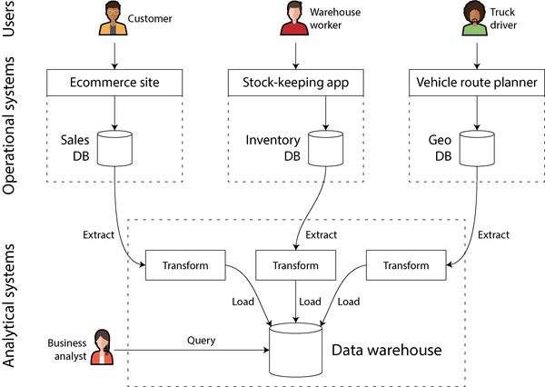
일부 경우 ETL 프로세스의 데이터 소스는 외부 SaaS 제품(예: 고객 관계 관리(CRM), 이메일 마케팅 또는 신용 카드 처리 시스템)입니다. 이 경우 원래 데이터베이스에 직접 접근할 수 없으며, 소프트웨어 벤더의 API를 통해서만 접근 가능합니다. 외부 시스템의 데이터를 자체 데이터 웨어하우스로 가져오면 SaaS API로는 불가능한 분석을 가능하게 할 수 있습니다. SaaS API에 대한 ETL은 종종 피베트란, 싱어, 에어바이트와 같은 전문 데이터 커넥터 서비스에 의해 구현됩니다.
일부 데이터베이스 시스템은 하이브리드 트랜잭션/분석 처리(HTAP)를 제공합니다. 이는 한 시스템에서 다른 시스템으로 ETL을 요구하지 않고 단일 시스템에서 OLTP와 분석을 모두 가능하게 하는 것을 목표로 합니다[8, 9 ]. 그러나 많은 HTAP 시스템은 내부적으로 OLTP 시스템과 별도의 분석 시스템으로 구성되어 공통 인터페이스 뒤에 숨겨져 있으므로, 이 두 가지 간의 구별은 이러한 시스템이 작동 방식을 이해하는 데 여전히 중요합니다.
게다가 HTAP가 존재하더라도, 서로 다른 목표와 요구 사항으로 인해 트랜잭션 시스템과 분석 시스템 간의 분리를 유지하는 것이 일반적입니다. 특히 각 운영 시스템이 자체 데이터베이스를 가지는 것이 좋은 관행으로 간주됩니다(“마이크로서비스와 서버리스” 참조), 이는 잠재적으로 수백 개의 별도 운영 데이터베이스로 이어집니다. 반면 기업은 일반적으로 단일 데이터 웨어하우스를 보유하므로 비즈니스 분석가가 여러 운영 시스템의 데이터를 단일 쿼리에서 결합할 수 있습니다.
따라서 HTAP는 데이터 웨어하우스를 대체하지 않습니다. 오히려 동일한 애플리케이션이 많은 수의 행을 스캔하는 분석 쿼리를 수행하면서도 개별 레코드를 낮은 지연 시간으로 읽고 업데이트해야 할 때 유용합니다. 사기 탐지가 그러한 워크로드를 포함할 수 있습니다[10 ].
운영 시스템과 분석 시스템 간의 분리는 더 광범위한 추세의 일부입니다. 워크로드가 더 까다로워짐에 따라 시스템은 특정 워크로드에 더 전문화되고 최적화되었습니다. 범용 시스템은 소량의 데이터를 편안하게 처리할 수 있지만, 규모가 커질수록 시스템은 더 전문화되는 경향이 있습니다[11 ].
데이터 웨어하우스에서 데이터 레이크로
데이터 웨어하우스는 종종 관계형 데이터 모델을 사용하며 SQL을 통해 쿼리됩니다(3장 참조), 아마도 전문 BI 소프트웨어를 사용하여. 이 모델은 비즈니스 분석가가 수행해야 하는 유형의 쿼리에 잘 작동하지만, 머신러닝 모델을 훈련하기 위해 데이터를 변환하는 것과 같은 작업을 수행하는 데이터 과학자의 요구 사항에는 덜 적합합니다:
- ML 모델을 훈련하는 데 적합한 형태로 데이터를 변환하기. 이는 종종 데이터베이스 테이블의 행과 열을 특성이라고 하는 수치 벡터 또는 행렬로 변환하는 것을 요구합니다. 훈련된 모델의 성능을 최대화하기 위해 이 변환을 수행하는 과정은 피처 엔지니어링이라고 불리며, 일반적으로 SQL로 표현하기 어려운 사용자 정의 코드를 필요로 합니다.
- 텍스트 데이터(예: 제품 리뷰)에 자연어 처리(NLP) 기법을 사용하여 구조화된 정보를 추출해 내기(예: 저자의 감정이나 언급된 주제). 마찬가지로 데이터 과학자는 컴퓨터 비전 기법을 사용하여 사진에서 구조화된 정보를 추출해야 할 수 있습니다.
SQL 데이터 모델에 ML 연산자를 추가하려는 노력[12 ]과 관계형 기반 위에 효율적인 ML 시스템을 구축하려는 노력[13 ]이 있었지만, 많은 데이터 과학자는 데이터 웨어하우스와 같은 관계형 데이터베이스에서 작업하기를 선호하지 않습니다. 대신, 많은 이들이 판다스와 사이킷런과 같은 Python 데이터 분석 라이브러리, R과 같은 통계 분석 언어, 스파크와 같은 분산 분석 프레임워크를 사용하기를 선호합니다[14 ]. 우리는 “DataFrames, Matrices, and Arrays”에서 이것들을 더 다룰 것입니다.
따라서 조직은 데이터 과학자가 사용하기에 적합한 형태로 데이터를 제공해야 할 필요가 있습니다. 그 답은 데이터 레이크입니다. 데이터 레이크는 분석에 유용할 수 있는 모든 데이터의 사본을 보유하는 중앙 집중식 데이터 저장소로, 운영 시스템에서 ETL 프로세스를 통해 얻습니다. 데이터 웨어하우스와의 차이점은 데이터 레이크가 단순히 파일을 포함하며 특정 파일 형식, 데이터 모델 또는 스키마를 강제하지 않는다는 것입니다[15 ]. 데이터 레이크의 파일은 Avro 또는 Parquet[5 장 참조]과 같은 파일 형식으로 인코딩된 데이터베이스 레코드 모음일 수 있지만, 데이터 레이크는 텍스트, 이미지, 비디오, 센서 측정값, 희소 행렬, 특성 벡터, 게놈 서열 또는 다른 종류의 데이터를 포함할 수도 있습니다[16 ]. 더 유연할 뿐만 아니라, 데이터 레이크는 객체 스토어(“클라우드 네이티브 시스템 아키텍처” 참조)와 같은 상품화된 파일 스토리지를 사용할 수 있으므로 관계형 데이터 저장소보다 종종 더 저렴합니다.
ETL 프로세스는 데이터 파이프라인으로 일반화되었으며, 어떤 경우에는 데이터 레이크가 운영 시스템에서 데이터 웨어하우스로 가는 경로의 중간 정류장이 되었습니다. 데이터 레이크는 운영 시스템에서 생성된 “원시” 형태의 데이터를 포함하며, 관계형 데이터 웨어하우스 스키마로의 변환은 없습니다. 이 접근 방식의 장점은 데이터의 각 소비자가 원시 데이터를 자신의 필요에 가장 적합한 형태로 변환할 수 있다는 것입니다. 때로는 “원시 데이터가 더 좋다”라는 스시 원칙이라고 불립니다[17 ].
데이터 레이크 너머
분석 관행이 성숙해짐에 따라 조직은 데이터 운영 및 데이터 파이프라인의 관리에 점점 더 주의를 기울이고 있으며, 이는 예를 들어 DataOps 선언문[18 ]에 담겨 있습니다. 이는 부분적으로 일반 데이터 보호 규정(GDPR)과 캘리포니아 소비자 개인정보 보호법(CCPA)과 같은 규정의 거버넌스, 개인정보 보호 및 규정 준수 문제로 인한 것입니다. 이는 “데이터 시스템, 법, 사회”와 14장에서 논의할 것입니다.
또 다른 중요한 요소는 분석을 위한 데이터가 파일과 관계형 테이블뿐만 아니라 이벤트 스트림(12장 참조)으로 점점 더 제공된다는 점입니다. 파일 기반 데이터 분석을 사용하면 주기적으로(예: 매일) 분석을 다시 실행하여 데이터의 변화에 대응할 수 있지만, 스트림 처리는 분석 시스템이 이벤트에 훨씬 더 빠르게(초 단위로) 대응할 수 있게 합니다. 애플리케이션과 그 시간 민감도에 따라 스트림 처리 접근 방식은 예를 들어 잠재적으로 사기 행위나 학대 행위를 식별하고 차단하는 데 유용할 수 있습니다.
일부 경우 분석 시스템의 출력은 운영 시스템에 제공됩니다(이 프로세스는 때때로 역 ETL[19 ]로 알려져 있습니다). 예를 들어 분석 시스템의 데이터를 훈련한 ML 모델은 최종 사용자에게 “X를 구매한 사용자는 Y도 구매했습니다”와 같은 추천을 생성하기 위해 프로덕션에 배포될 수 있습니다. 머신러닝 모델은 TFX, Kubeflow 또는 MLflow와 같은 전문 도구를 사용하여 운영 시스템에 배포될 수 있습니다.
진실 기록 시스템과 파생 데이터
운영 시스템과 분석 시스템의 구별과 관련하여, 이 책은 또한 진실 기록 시스템과 파생 데이터 시스템을 구별합니다. 이러한 용어는 시스템을 통해 데이터 흐름을 명확히 하는 데 유용하기 때문에 유용합니다:
진실 기록 시스템
진실 기록 시스템(소스 오브 트루스라고도 함)은 데이터의 권위 있거나 표준 버전을 보유합니다. 사용자 입력과 같은 새로운 데이터가 들어오면 먼저 여기에 기록됩니다. 각 사실은 정확히 한 번 표현됩니다(표현은 일반적으로 정규화됩니다; “정규화, 비정규화 및 조인” 참조). 다른 시스템과 진실 기록 시스템 사이에 불일치가 있는 경우, 진실 기록 시스템의 값이(정의상) 올바른 값입니다.
파생 데이터 시스템
파생 시스템의 데이터는 다른 시스템의 기존 데이터를 취하여 어떤 방식으로 변환하거나 처리한 결과입니다. 파생 데이터를 잃어도 원래 소스로부터 다시 생성할 수 있습니다. 고전적인 예는 캐시입니다: 데이터가 캐시에 있으면 캐시에서 제공될 수 있지만, 캐시에 필요한 것이 없으면 기본 데이터베이스로 폴백할 수 있습니다. 비정규화된 값, 인덱스, 물질화된 뷰, 변환된 데이터 표현, 데이터세트에서 훈련된 모델도 이 범주에 속합니다.
기술적으로 말하면, 파생 데이터는 기존 정보를 중복한다는 점에서 중복됩니다. 그러나 이 데이터는 종종 읽기 쿼리에서 좋은 성능을 내는 데 필수적입니다. 단일 소스에서 여러 데이터세트를 파생할 수 있으므로 데이터를 다양한 관점에서 살펴볼 수 있습니다.
분석 시스템은 일반적으로 파생 데이터 시스템입니다. 왜냐하면 다른 곳에서 생성된 데이터를 소비하기 때문입니다. 운영 서비스에는 진실 기록 시스템과 파생 데이터 시스템이 혼합되어 있을 수 있습니다. 진실 기록 시스템은 데이터가 처음 쓰이는 기본 데이터베이스인 반면, 파생 데이터 시스템은 일반적인 읽기 작업(특히 진실 기록 시스템이 효율적으로 답변할 수 없는 쿼리)을 가속화하는 인덱스와 캐시입니다.
대부분의 데이터베이스, 스토리지 엔진 및 쿼리 언어는 본질적으로 진실 기록 시스템이나 파생 시스템이 아닙니다. 데이터베이스는 단지 도구일 뿐이며, 이를 어떻게 사용하는지는 당신에게 달려 있습니다. 진실 기록 시스템과 파생 데이터 시스템의 구별은 도구에 달려 있는 것이 아니라 애플리케이션에서 이를 사용하는 방식에 달려 있습니다. 어떤 데이터가 다른 어떤 데이터에서 파생되는지 명확히 함으로써, 그렇지 않으면 혼란스러울 수 있는 시스템 아키텍처에 명확성을 가져올 수 있습니다.
한 시스템의 데이터가 다른 시스템의 데이터에서 파생될 때, 진실 기록 시스템의 원본이 변경될 때 파생 데이터를 업데이트하는 과정이 필요합니다. 불행히도 많은 데이터베이스는 애플리케이션이 항상 단일 데이터베이스만 사용한다고 가정하여 설계되며, 그러한 업데이트를 전파하기 위해 여러 시스템을 통합하는 것을 쉽게 만들어주지 않습니다. 11장에서는 하나의 시스템만으로는 할 수 없는 일을 달성하기 위해 여러 데이터 시스템을 결합할 수 있는 데이터 통합 접근 방식인 데이터 파이프라인을 논의할 것입니다.
이로써 분석과 트랜잭션 처리에 대한 비교를 마칩니다. 다음 섹션에서는 이미 여러 번 논의되었을 법한 또 다른 트레이드오프를 살펴보겠습니다.
클라우드 대 자체 호스팅
조직이 수행해야 하는 모든 것에 대해 가장 먼저 던지는 질문 중 하나는 이를 사내에서 수행할지 아웃소싱할지 여부입니다. 즉, 직접 구축할지 구매할지 여부입니다.
궁극적으로 이는 비즈니스 우선순위에 관한 질문입니다. 일반적인 경험칙은 조직의 핵심 역량이나 경쟁 우위에 해당하는 것은 사내에서 수행하고, 비핵심, 일상적, 일반적인 것은 벤더에 맡기는 것입니다[20 ]. 극단적인 예로, 대부분의 회사는 자체 CPU를 제조하지 않습니다. 반도체 제조업체로부터 구매하는 것이 더 저렴하기 때문입니다.
소프트웨어의 경우 누구 소프트웨어를 구축하고 누가 배포할 것인가 하는 두 가지 중요한 결정을 내려야 합니다. 가능성의 스펙트럼은 그림 1-2에 설명되어 있습니다. 한 극단에는 내부에서 작성하고 실행하는 맞춤형 소프트웨어가 있고, 다른 극단에는 외부 벤더가 구현 및 운영하며 웹 인터페이스나 API를 통해서만 접근할 수 있는 널리 사용되는 클라우드 서비스 또는 SaaS 제품이 있습니다.
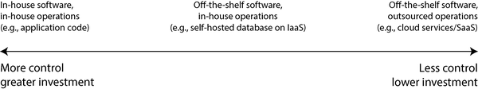
중간 지점은 직접 자체 호스팅하거나 배포하는 오프 더 셀프 소프트웨어(오픈 소스 또는 상업용)입니다. 예를 들어 MySQL을 다운로드하여 자신이 통제하는 서버에 설치할 수 있습니다. 이는 자신의 하드웨어(종종 구내라고 불리며, 임대 데이터 센터 랙에 서버가 있어도 문자 그대로 자신의 구내에 있지 않을 수 있음) 또는 클라우드의 가상 머신(VM, 인프라로서의 서비스 또는 IaaS)에 있을 수 있습니다. 오픈 소스 소프트웨어를 수정한 버전을 실행하는 등 이 스펙트럼에 더 많은 지점이 있습니다.
관련 질문은 서비스를 클라우드 또는 구내에 배포할지 여부입니다. 예를 들어 쿠버네티스와 같은 오케스트레이션 프레임워크를 사용할지 여부입니다. 그러나 배포 도구 선택은 이 책의 범위를 벗어납니다. 데이터 시스템 아키텍처에 더 큰 영향을 미치는 다른 요인들이 있기 때문입니다.
클라우드 서비스의 장단점
클라우드 서비스를 사용하는 것은 본질적으로 해당 소프트웨어의 운영을 클라우드 제공업체에 아웃소싱하는 것입니다. 이 접근 방식에 대해 좋은 찬성과 반대 논점이 있습니다. 클라우드 제공업체는 자체 인프라를 구축하는 것보다 서비스를 사용하면 시간과 비용을 절약하고 더 빠르게 움직일 수 있다고 주장합니다.
그러나 클라우드 서비스를 사용하는 것이 실제로 자체 호스팅보다 더 저렴하고 쉬운지는 기술과 시스템의 워크로드에 매우 의존합니다. 필요한 시스템을 설정하고 운영하는 경험이 이미 있고 부하가 상당히 예측 가능한 경우(즉, 필요한 머신 수가 크게 변동하지 않는 경우), 자체 머신을 구매하여 직접 소프트웨어를 실행하는 것이 종종 더 저렴합니다[21, 22 ].
반면에 배포 및 운영 방법을 이미 알고 있지 않은 시스템이 필요한 경우, 클라우드 서비스를 채택하는 것이 시스템을 관리하는 방법을 배우는 것보다 종종 더 쉽고 빠릅니다. 시스템을 유지하고 운영하기 위해 직원을 고용하고 교육하는 데 비용이 많이 들 수 있습니다. 클라우드를 사용하더라도 여전히 운영 팀이 필요합니다(“클라우드 시대의 운영” 참조), 하지만 기본 시스템 관리를 아웃소싱하면 팀이 더 높은 수준의 문제에 집중할 수 있습니다.
시스템 운영을 해당 시스템을 전문으로 하는 회사에 아웃소싱하면 제공업체가 많은 고객에게 서비스를 제공하면서 얻은 운영 전문 지식으로 인해 더 나은 서비스를 제공할 수 있습니다. 반면, 자신이 서비스를 실행하면 특정 워크로드에 잘 작동하도록 구성하고 조정할 수 있습니다. 클라우드 서비스는 귀하를 대신하여 그러한 맞춤화를 기꺼이 수행하지 않을 가능성이 높습니다.
클라우드 서비스는 시스템에 대한 부하가 시간이 지남에 따라 많이 변동하는 경우 특히 가치가 있습니다. 피크 부하를 처리할 수 있도록 머신을 프로비저닝하지만 컴퓨팅 리소스의 대부분이 유휴 상태인 경우 시스템은 비용 효율성이 떨어집니다. 이러한 상황에서 클라우드 서비스는 수요 변화에 대응하여 컴퓨팅 리소스를 위아래로 확장하는 것을 더 쉽게 만들어 주는 이점이 있습니다.
예를 들어, 분석 시스템은 종종 매우 변동성이 큰 부하를 가집니다. 큰 분석 쿼리를 빠르게 실행하려면 많은 컴퓨팅 리소스가 병렬로 필요하지만, 쿼리가 완료되면 사용자가 다음 쿼리를 할 때까지 해당 리소스는 유휴 상태로 남아 있습니다. 사전 정의된 쿼리(예: 일일 보고서)는 부하를 평준화하기 위해 큐에 넣고 예약할 수 있지만, 대화형 쿼리의 경우 더 빠르게 완료하길 바랄수록 워크로드는 더 변동성이 커집니다. 데이터세트가 너무 커서 빠르게 쿼리하려면 상당한 컴퓨팅 리소스가 필요한 경우, 클라우드를 사용하면 비용을 절약할 수 있습니다. 사용하지 않는 리소스를 제공업체에 반환할 수 있고 유휴 상태로 두지 않아도 되기 때문입니다. 더 작은 데이터세트의 경우 이 차이는 덜 중요합니다.
클라우드 서비스의 가장 큰 단점은 이에 대한 제어권이 없다는 것입니다:
- 필요한 기능이 없는 경우, 벤더가 추가할지 정중하게 물어볼 수밖에 없습니다. 일반적으로 직접 구현할 수 없습니다.
- 서비스가 다운되면 복구될 때까지 기다릴 수밖에 없습니다.
- 서비스를 사용하는 방식이 버그를 트리거하거나 성능 문제를 일으키는 경우, 문제를 진단하기가 어렵습니다. 직접 실행하는 소프트웨어의 경우 운영 체제에서 성능 메트릭과 디버깅 정보를 얻을 수 있고 서버 로그를 볼 수 있습니다. 벤더가 호스팅하는 서비스의 경우 일반적으로 이러한 내부 정보에 접근할 수 없습니다.
- 서비스가 중단되거나 용인할 수 없게 비싸지거나, 벤더가 마음에 들지 않는 방식으로 제품을 변경하는 경우, 벤더의 자비에 맡겨지게 됩니다. 이전 버전의 소프트웨어를 계속 실행하는 것은 일반적으로 옵션이 아니므로 대체 서비스로 마이그레이션해야 합니다[23 ]. 대체 서비스가 호환 가능한 API를 노출하면 이 위험이 완화되지만, 많은 클라우드 서비스에는 표준 API가 없어 전환 비용이 높아지고 벤더 록인이 문제가 됩니다.
- 클라우드 제공업체가 다른 나라에 있고 그 나라와 자국 사이에 정치적 갈등이 발생하면 제재로 인해 서비스에 접근이 차단될 위험이 있습니다.
- 클라우드 제공업체는 데이터를 안전하게 유지하는 데 신뢰할 수 있어야 하므로, 개인정보 보호 및 보안 규정 준수 절차가 복잡해질 수 있습니다.
이러한 모든 위험에도 불구하고, 조직이 클라우드 서비스 위에 새 애플리케이션을 구축하거나 클라우드 서비스를 시스템의 일부 측면에 사용하는 하이브리드 접근 방식을 채택하는 경우가 점점 더 많아지고 있습니다. 그러나 클라우드 서비스가 모든 사내 데이터 시스템을 대체하지는 않을 것입니다. 많은 오래된 시스템은 클라우드보다 앞선 것이고, 기존 클라우드 서비스가 충족할 수 없는 전문 요구 사항이 있는 서비스의 경우 사내 시스템이 여전히 필요합니다. 예를 들어, 초고주파 거래와 같이 매우 지연 시간에 민감한 애플리케이션은 하드웨어에 대한 완전한 제어가 필요합니다.
클라우드 네이티브 시스템 아키텍처
클라우드 네이티브는 클라우드 서비스를 활용하도록 설계된 아키텍처를 설명하는 데 사용되는 용어입니다. 자체 호스팅할 수 있는 거의 모든 소프트웨어를 클라우드 서비스로 제공할 수 있으며, 실제로 많은 인기 데이터 시스템에 대해 관리형 서비스가 이제 제공됩니다. 그러나 처음부터 클라우드 네이티브로 설계된 시스템은 동일한 하드웨어에서 더 나은 성능, 장애 발생 시 더 빠른 복원력, 부하에 맞게 컴퓨팅 리소스를 빠르게 확장할 수 있는 능력, 더 큰 데이터세트 지원 등 여러 이점을 보여주었습니다[24, 25, 26 ]. 표 1-2는 두 유형의 시스템 예시를 나열합니다.
클라우드 서비스 계층화
많은 자체 호스팅 데이터 시스템은 간단한 시스템 요구 사항을 가집니다. 기존 운영 체제(예: Linux 또는 Windows)에서 실행되고, 파일을 파일 시스템에 저장하며, 표준 네트워크 프로토콜(예: TCP/IP)을 통해 통신합니다. 일부 시스템은 GPU(ML용) 또는 원격 직접 메모리 액세스(RDMA) 네트워크 인터페이스와 같은 특수 하드웨어에 의존하지만, 전체적으로 자체 호스팅 소프트웨어는 CPU, RAM, 파일 시스템, IP 네트워크와 같은 범용 컴퓨팅 리소스를 사용하는 경향이 있습니다.
클라우드에서 이러한 유형의 소프트웨어는 IaaS 환경에서 실행될 수 있으며, 특정 할당의 CPU, 메모리, 디스크 및 네트워크 대역폭을 가진 하나 이상의 VM(또는 인스턴스)을 사용합니다. 물리적 머신에 비해 클라우드 인스턴스는 더 빠르게 프로비저닝되고 더 다양한 크기로 제공되지만, 그렇지 않으면 기존 컴퓨터와 유사합니다. 원하는 소프트웨어를 무엇이든 실행할 수 있지만, 직접 관리하는 책임이 있습니다.
반면, 클라우드 네이티브 서비스의 핵심 아이디어는 운영 체제에서 관리하는 컴퓨팅 리소스만 사용하는 것이 아니라, 더 낮은 수준의 클라우드 서비스 위에 더 높은 수준의 서비스를 구축하는 것입니다. 예를 들어:
- Amazon S3, Azure Blob Storage 및 Cloudflare R2와 같은 오브젝트 스토리지 서비스는 큰 파일을 저장합니다. 일반적인 파일 시스템보다 더 제한된 API(기본 파일 읽기 및 쓰기)를 제공하지만, 기본 물리적 머신을 숨긴다는 이점이 있습니다. 서비스가 자동으로 여러 머신에 데이터를 분산하므로 어떤 한 머신에서 디스크 공간이 부족해질 걱정할 필요가 없습니다. 일부 머신이나 디스크가 완전히 실패하더라도 데이터는 손실되지 않습니다.
- 많은 다른 서비스들은 오브젝트 스토리지 및 기타 클라우드 서비스 위에 구축됩니다. 예를 들어, Snowflake는 데이터 저장을 위해 S3에 의존하는 클라우드 기반 분석 데이터베이스(데이터 웨어하우스)입니다[26 ], 그리고 일부 다른 서비스들은 다시 Snowflake 위에 구축됩니다.
컴퓨팅의 추상화에 관해서는 항상 그렇듯이, 무엇을 사용해야 할지에 대한 정답은 하나도 없습니다. 일반적으로 더 높은 수준의 추상화는 특정 사용 사례에 더 적합한 경향이 있습니다. 요구 사항이 더 높은 수준의 시스템이 설계된 상황과 일치한다면, 낮은 수준의 시스템부터 직접 구축하는 것보다 기존 더 높은 수준의 시스템을 사용하는 것이 훨씬 적은 번거로움으로 요구 사항을 충족시킬 가능성이 높습니다. 반면, 더 높은 수준의 시스템이 요구 사항을 충족하지 못하는 경우, 낮은 수준의 구성 요소로부터 직접 구축하는 것이 유일한 옵션입니다.
저장소와 컴퓨팅의 분리
기존 컴퓨팅에서 디스크 스토리지는 내구성이 있는 것으로 간주됩니다(한 번 디스크에 쓰면 손실되지 않을 것이라고 가정합니다). 개별 하드 디스크 장애를 견디기 위해 RAID(독립 디스크 중복 배열)를 사용하여 동일한 머신에 연결된 여러 디스크에 데이터 사본을 유지하는 경우가 많습니다. RAID는 하드웨어로 구현하거나 운영 체제의 소프트웨어로 구현할 수 있으며, 파일 시스템에 접근하는 애플리케이션에는 투명합니다.
클라우드에서 컴퓨팅 인스턴스(VM)에도 로컬 디스크가 연결될 수 있지만, 클라우드 네이티브 시스템은 일반적으로 이러한 디스크를 장기 저장소보다는 일시적 캐시처럼 취급합니다. 이는 연결된 인스턴스가 실패하거나 부하 변화에 적응하기 위해 더 크거나 작은 인스턴스(다른 물리적 머신)로 교체되면 로컬 디스크에 접근할 수 없기 때문입니다.
로컬 디스크 대신 클라우드 서비스는 한 인스턴스에서 분리하여 다른 인스턴스에 연결할 수 있는 가상 디스크 스토리지를 제공합니다(예: Amazon EBS, Azure 관리 디스크, Google Cloud의 영구 디스크). 이러한 가상 디스크는 물리적 디스크가 아니라 4 KiB 크기의 블록 단위로 디스크의 동작을 에뮬레이트하는 별도의 기계 세트로 구성된 클라우드 서비스입니다. 이 기술은 기존 디스크 기반 소프트웨어를 클라우드에서 실행할 수 있게 하지만, 블록 디바이스 에뮬레이션은 클라우드 용으로 처음부터 설계된 시스템에서는 피할 수 있는 오버헤드를 도입합니다[24 ]. 가상 디스크 사용은 가상 블록 디바이스에서 모든 I/O 작업이 네트워크 호출이기 때문에 애플리케이션이 네트워크 결함에 매우 민감해지게 만듭니다[27 ].
이 문제를 해결하기 위해 클라우드 네이티브 시스템은 일반적으로 가상 디스크 사용을 피하고 특정 워크로드에 최적화된 전용 스토리지 서비스 위에 구축합니다. S3와 같은 오브젝트 스토리지 서비스는 수백 킬로바이트에서 수 기가바이트 크기의 상당히 큰 파일을 장기 저장하기 위해 설계되었습니다. 데이터베이스에 저장된 개별 행이나 값은 일반적으로 이것보다 훨씬 작으므로, 클라우드 데이터베이스는 일반적으로 더 작은 값을 별도 서비스에서 관리하고 더 큰 데이터 블록(많은 개별 값을 포함)은 오브젝트 스토어에 저장합니다[25, 28 ]. 4장에서 이를 수행하는 방법을 살펴볼 것입니다.
기존 시스템 아키텍처에서는 동일한 컴퓨터가 스토리지(디스크)와 컴퓨팅(CPU 및 RAM) 모두를 담당하지만, 클라우드 네이티브 시스템에서는 이러한 두 책임이 다소 분리되거나 분산되었습니다[9, 26, 29, 30 ]. 예를 들어, S3는 파일만 저장하며 해당 데이터를 분석하려면 S3 외부에 분석 코드를 실행해야 합니다. 이는 네트워크를 통해 데이터를 전송하는 것을 의미하며, “단일 노드 대 분산 시스템”에서 더 논의할 것입니다.
게다가 클라우드 네이티브 시스템은 종종 멀티 테넌트입니다. 즉, 각 고객별로 별도의 머신을 두는 대신 여러 고객의 데이터와 컴퓨팅이 동일한 공유 하드웨어에서 동일한 서비스에 의해 처리됩니다[31 ]. 멀티 테넌시는 더 나은 하드웨어 활용도, 더 쉬운 확장성, 그리고 클라우드 제공업체의 더 쉬운 관리를 가능하게 하지만, 한 고객의 활동이 다른 고객의 시스템 성능이나 보안에 영향을 미치지 않도록 주의 깊은 엔지니어링이 필요합니다[32 ].
클라우드 시대의 운영
전통적으로 조직의 서버 측 데이터 인프라를 관리하는 사람들은 데이터베이스 관리자(DBA) 또는 시스템 관리자(sysadmin)로 알려져 있었습니다. 최근에는 많은 조직이 소프트웨어 개발과 운영 역할을 통합하여 백엔드 서비스와 데이터 인프라 둘 다에 대한 책임을 공유하는 팀을 구성하려고 노력했으며, 데브옵스 철학이 이 추세를 이끌었습니다. 사이트 신뢰성 엔지니어(SRE)는 구글이 구현한 이 아이디어입니다[33 ].
운영의 역할은 서비스가 사용자에게 안정적으로 제공되도록 보장하는 것(인프라 구성 및 애플리케이션 배포 포함)과 안정적인 프로덕션 환경을 보장하는 것(문제 모니터링 및 진단 포함)입니다. 자체 호스팅 시스템에서 운영은 전통적으로 개별 머신 수준에서 상당한 작업을 포함합니다. 예를 들어 용량 계획(사용 가능한 디스크 공간 모니터링 및 공간 부족 전에 더 많은 디스크 추가), 새 머신 프로비저닝, 서비스를 한 머신에서 다른 머신으로 이동, 운영 체제 패치 설치 등입니다.
많은 클라우드 서비스는 개별 머신을 숨기는 API를 제공합니다. 예를 들어, 클라우드 스토리지는 고정 크기 디스크를 미터링된 청구로 대체하여 용량 필요 사전 계획 없이 데이터를 저장할 수 있으며, 사용된 공간에 따라 요금이 부과됩니다. 또한, 많은 클라우드 서비스는 개별 머신이 실패하더라도 높은 가용성을 유지합니다(“신뢰성 및 내결함성” 참조).
개별 머신에서 서비스로의 이러한 강조점 전환은 운영 역할의 변화와 수반되었습니다. 신뢰할 수 있는 서비스를 제공한다는 고차원적 목표는 동일하지만, 프로세스와 도구는 진화했습니다.
데브옵스/SRE 철학은 다음에 더 큰 중점을 둡니다:
- 자동화 설정, 반복 가능한 프로세스를 일회성 수동 작업보다 선호
- 일시적 VM 및 서비스를 장기 실행 서버보다 선호
- 빈번한 애플리케이션 업데이트 가능
- 사고로부터 학습
- 개인이 떠나더라도 조직의 시스템에 대한 지식 보존[34 ]
클라우드 서비스의 부상과 함께 역할의 이분화가 발생했습니다. 인프라 회사의 운영 팀은 많은 고객에게 신뢰할 수 있는 서비스를 제공하는 세부 사항에 특화되어 있고, 서비스 고객은 인프라에 가능한 한 최소한의 시간과 노력을 기울입니다[35 ].
클라우드 서비스 고객은 여전히 운영이 필요하지만, 특정 작업에 가장 적합한 서비스를 선택하고, 서비스 간을 통합하며, 한 서비스에서 다른 서비스로 마이그레이션하는 것과 같은 다른 측면에 집중합니다. 미터링된 청구가 기존 의미의 용량 계획 필요성을 제거하지만, 불필요한 클라우드 리소스에 비용을 낭비하지 않기 위해 어떤 목적으로 어떤 리소스를 사용하는지 아는 것이 여전히 중요합니다. 용량 계획은 재무 계획이 되고, 성능 최적화는 비용 최적화가 됩니다[36 ]. 또한, 클라우드 서비스에는 한 번에 동시에 실행할 수 있는 프로세스의 최대 수와 같은 리소스 제한 또는 할당량이 있으며, 이것에 도달하기 전에 알고 계획해야 합니다[37 ].
클라우드 서비스를 채택하는 것은 자체 인프라를 프로비저닝하고 실행하는 것보다 더 쉽고 빠를 수 있지만, 여전히 클라우드 서비스를 사용하는 방법을 배우고 그 제한 사항을 우회해야 할 수도 있습니다. 점점 더 많은 벤더가 서로 다른 사용 사례를 대상으로 더 넓은 범위의 클라우드 서비스를 제공함에 따라 서비스 간 통합이 특히 큰 도전 과제가 됩니다[38, 39 ]. ETL(“데이터 웨어하우징” 참조)는 이야기의 일부에 불과하며, 운영 클라우드 서비스도 서로 통합되어야 합니다. 현재 이러한 통합을 촉진하기 위한 표준이 부족하므로 종종 상당한 수동 노력이 필요합니다.
클라우드 서비스에 완전히 아웃소싱할 수 없는 기타 운영 측면에는 애플리케이션 및 해당 라이브러리의 보안 유지, 자체 서비스 간의 상호 작용 관리, 서비스 부하 모니터링, 성능 저하 또는 장애 원인 추적 등이 포함됩니다. 클라우드가 운영 역할을 변화시키고 있지만, 운영의 필요성은 여전히 매우 큽니다.
분산 시스템 대 단일 노드 시스템
여러 머신이 네트워크를 통해 통신하는 시스템을 분산 시스템이라고 합니다. 분산 시스템에 참여하는 각 프로세스를 노드라고 합니다. 이 유형의 시스템을 사용하고자 하는 다양한 이유가 있습니다:
본질적 분산
애플리케이션이 각자 자신의 장치를 사용하는 두 명 이상의 상호 작용하는 사용자를 포함하는 경우, 시스템은 피할 수 없이 분산됩니다. 장치 간의 통신은 네트워크를 통해 이루어져야 합니다.
클라우드 서비스 간의 요청
데이터가 한 서비스에 저장되지만 다른 서비스에서 처리되는 경우, 해당 데이터는 한 서비스에서 다른 서비스로 네트워크를 통해 전송되어야 합니다. 따라서 클라우드 네이티브 시스템과 마이크로서비스(“마이크로서비스와 서버리스” 참조)는 분산됩니다.
내결함성/고가용성
애플리케이션이 하나 또는 여러 머신, 네트워크 또는 전체 데이터 센터가 다운되어도 계속 작동해야 하는 경우, 여러 머신을 사용하여 중복성을 확보할 수 있습니다. 하나가 실패하면 다른 하나가 대체할 수 있습니다. “신뢰성 및 내결함성” 및 6장을 참조하세요.
확장성
데이터 볼륨이나 컴퓨팅 요구 사항이 단일 머신이 처리할 수 있을 정도로 커지면 부담을 여러 머신에 분산시킬 수 있습니다. “확장성”을 참조하세요.
지연 시간
전 세계에 사용자가 있는 경우, 전 세계 여러 지역에 서버를 두어 각 사용자가 지리적으로 가까운 서버에서 서비스를 받을 수 있도록 하고 싶을 수 있습니다. 그러면 사용자가 네트워크 패킷이 세계 반대편을 이동하여 요청에 응답하기를 기다릴 필요가 없습니다. “성능 설명”을 참조하세요.
탄력성
애플리케이션이 바쁜 시기와 한가한 시기가 있는 경우, 클라우드 배포는 수요를 충족하기 위해 규모를 늘리거나 줄일 수 있으므로 실제로 사용하는 리소스에 대해서만 비용을 지불할 수 있습니다. 단일 머신에서는 거의 사용되지 않는 때에도 최대 부하를 처리할 수 있도록 프로비저닝해야 하므로 이는 더 어렵습니다.
특수 하드웨어
시스템의 다른 부분은 작업 부하에 맞는 다른 유형의 하드웨어를 활용할 수 있습니다. 예를 들어, 오브젝트 스토어는 디스크가 많고 CPU가 적은 머신을 사용할 수 있는 반면, 데이터 분석 시스템은 CPU와 메모리가 많지만 디스크가 없는 머신을 사용할 수 있고, 머신러닝 시스템은 GPU(딥 뉴럴 네트워크 훈련 및 기타 ML 작업에 CPU보다 훨씬 효율적임)가 있는 머신을 사용할 수 있습니다.
법률 준수
일부 국가에는 자국 관할권 내 거주자에 관한 데이터를 지리적으로 해당 국가 내에서 저장하고 처리해야 하는 데이터 상주법이 있습니다[40 ]. 이러한 규칙의 적용 범위는 다양합니다. 예를 들어, 어떤 경우에는 의료 또는 재무 데이터에만 적용되지만, 다른 경우에는 더 광범위하게 적용됩니다. 따라서 여러 이러한 관할권에 사용자가 있는 서비스는 여러 위치의 서버에 데이터를 분산해야 합니다.
지속 가능성
실행할 시간과 장소에 유연성이 있는 경우, 재생 가능한 전기가 풍부하고 전력망이 과부하되지 않은 시간에 작업을 실행할 수 있습니다. 이렇게 하면 탄소 배출량을 줄이고 전력이 저렴할 때 활용할 수 있습니다[41, 42 ].
이러한 이유는 직접 작성한 애플리케이션 코드뿐만 아니라 기성 소프트웨어(예: 데이터베이스)로 구성된 서비스에도 적용됩니다.
분산 시스템의 문제
분산 시스템에는 단점도 있습니다. 네트워크를 통과하는 모든 요청과 API 호출은 실패 가능성을 다루어야 합니다. 네트워크가 중단되거나 서비스가 과부하되거나 크래시할 수 있으므로, 어떤 요청이든 응답 없이 시간 초과될 수 있습니다. 이 경우 서비스가 요청을 받았는지 알 수 없으며, 단순히 재시도하는 것이 안전하지 않을 수 있습니다. 우리는 이러한 문제를 9장에서 자세히 논의할 것입니다.
데이터 센터 네트워크는 빠르지만, 다른 서비스에 호출하는 것은 동일한 프로세스 내 함수 호출보다 여전히 훨씬 느립니다[43 ]. 대량의 데이터를 처리할 때 스토리지에서 데이터를 별도의 처리 머신으로 전송하는 대신, 데이터를 이미 가지고 있는 머신으로 컴퓨팅을 가져오는 것이 더 빠를 수 있습니다[44 ]. 더 많은 노드가 항상 더 빠른 것은 아닙니다. 경우에 따라 단일 컴퓨터에서 실행되는 단순한 단일 스레드 프로그램이 100개 이상의 CPU 코어를 가진 클러스터보다 훨씬 더 나은 성능을 낼 수 있습니다[45 ].
분산 시스템의 문제 해결은 종종 어렵습니다. 시스템이 느리게 응답하면 문제의 위치를 어떻게 알 수 있을까요? 분산 시스템의 문제를 진단하는 기술은 관측 가능성(observability)이라는 제목 아래 개발되며, 이는 시스템 실행에 대한 데이터를 수집하고 해당 데이터를 고차원 메트릭과 개별 이벤트 모두를 분석할 수 있는 방식으로 쿼리할 수 있도록 하는 것을 포함합니다. OpenTelemetry, Zipkin, Jaeger와 같은 추적 도구는 어떤 클라이언트가 어떤 서버에 어떤 연산을 호출했는지, 각 호출에 얼마나 걸렸는지 추적할 수 있게 합니다[48 ].
데이터베이스는 데이터 일관성을 보장하기 위한 다양한 메커니즘을 제공하며, 이는 6장과 8장에서 살펴볼 것입니다. 그러나 각 서비스가 자체 데이터베이스를 가지고 있을 때, 이러한 다양한 서비스 간의 데이터 일관성을 유지하는 것은 애플리케이션의 문제가 됩니다. 분산 트랜잭션은 일관성을 보장하기 위한 가능한 기술로 8장에서 탐구할 것이지만, 마이크로서비스 환경에서는 거의 사용되지 않는데, 이는 서비스를 독립적으로 만드는 목표에 반하기 때문이며, 많은 데이터베이스가 이를 지원하지 않기 때문입니다[49 ].
이 모든 이유로 인해 단일 머신에서 작업을 수행하는 것이 분산 시스템을 구축하는 것보다 종종 훨씬 더 간단하고 저렴합니다[22, 45, 50 ]. CPU, 메모리 및 디스크는 더 커지고, 더 빨라지고, 더 신뢰할 수 있게 되었습니다. DuckDB, SQLite, KùzuDB와 같은 단일 노드 데이터베이스와 결합하면 많은 워크로드가 단일 노드에서 실행될 수 있습니다. 우리는 이 주제를 4장에서 더 탐구할 것입니다.
마이크로서비스와 서버리스
시스템을 여러 머신에 분산하는 가장 일반적인 방법은 이를 클라이언트와 서버로 나누고 클라이언트가 서버에 요청을 하도록 하는 것입니다. 대부분의 경우 이 통신에 HTTP가 사용되며, “서비스 간의 데이터 흐름: REST와 RPC”에서 다룰 것입니다. 동일한 프로세스가 동시에 서버(들어오는 요청 처리) 및 클라이언트(다른 서비스에 대한 나가는 요청 생성) 역할을 할 수 있습니다.
애플리케이션을 구축하는 이러한 전통적인 방식은 서비스 지향 아키텍처(SOA)라고 불렸으며, 더 최근에는 마이크로서비스 아키텍처라는 개념으로 세분화되었습니다[51, 52 ]. 마이크로서비스 아키텍처에서 서비스는 하나의 명확한 목적을 가집니다(예: S3의 경우 파일 저장). 각 서비스는 클라이언트가 네트워크를 통해 호출할 수 있는 API를 노출하며, 각 서비스는 유지보수를 담당하는 하나의 팀을 가집니다. 복잡한 애플리케이션을 여러 상호 작용하는 서비스로 분해할 수 있으며, 각 서비스는 별도의 팀이 관리합니다. 클라우드 네이티브 시스템은 서비스 분해를 많이 사용하지만, 구내 시스템도 서비스 지향 접근 방식을 사용할 수 있습니다.
복잡한 소프트웨어를 여러 서비스로 나누는 것에는 여러 장점이 있습니다. 각 서비스는 독립적으로 업데이트될 수 있어 팀 간의 조정 노력을 줄일 수 있고, 각 서비스에 필요한 하드웨어 리소스를 할당할 수 있으며, 구현 세부 사항을 API 뒤에 숨김으로써 서비스 소유자는 클라이언트에 영향을 주지 않고 구현을 자유롭게 변경할 수 있습니다. 데이터 스토리지 측면에서는 각 서비스가 자체 데이터베이스를 가지고 서비스 간에 데이터베이스를 공유하지 않는 것이 일반적입니다. 데이터베이스를 공유하면 기본적으로 전체 데이터베이스 구조가 서비스의 API의 일부가 되어 해당 구조를 변경하기 어려워집니다. 공유 데이터베이스는 한 서비스의 쿼리가 다른 서비스의 성능에 부정적인 영향을 미칠 수도 있습니다.
반면에 많은 서비스를 가지는 것 자체가 복잡성을 낳을 수 있습니다. 개발 중 서비스를 테스트하는 것이 복잡할 수 있습니다. 왜냐하면 서비스에 의존하는 다른 모든 서비스를 실행해야 하기 때문입니다. 더욱이 각 서비스는 새 릴리스 배포, 할당된 하드웨어 리소스 조정, 로그 수집, 서비스 상태 모니터링, 문제 발생 시 당직 엔지니어에게 알림을 위한 인프라가 필요합니다. 쿠버네티스와 같은 오케스트레이션 프레임워크는 이러한 인프라를 위한 기반을 제공하므로 서비스를 배포하는 인기 있는 방법이 되었습니다.
추가로, 마이크로서비스 API는 진화하기 어려울 수 있습니다. API를 호출하는 클라이언트는 API에 특정 필드가 있다고 기대합니다. 개발자는 비즈니스 요구 사항이 변경됨에 따라 API에 필드를 추가하거나 제거하고 싶을 수 있지만, 그렇게 하면 클라이언트가 실패할 수 있습니다. 더 안 좋은 점은 이러한 실패가 개발 주기 후반 단계, 즉 업데이트된 서비스 API가 스테이징 또는 프로덕션 환경에 배포될 때까지 발견되지 않는 경우가 많다는 것입니다. OpenAPI 및 gRPC와 같은 API 설명 표준은 클라이언트와 서버 API 간의 관계를 관리하는 데 도움이 되며, 5장에서 더 다룰 것입니다.
마이크로서비스는 주로 사람 문제를 해결하기 위한 기술적 솔루션입니다. 즉, 서로 다른 팀이 서로 조정하지 않고 독립적으로 진행할 수 있도록 하는 것입니다. 이는 대규모 회사에서는 가치가 있지만, 소규모 회사에서는 불필요한 오버헤드가 될 가능성이 높으며, 애플리케이션을 가능한 한 간단한 방식으로 구현하는 것이 더 좋습니다[51 ].
서버리스, 또는 기능으로서의 서비스(FaaS)는 인프라 관리를 클라우드 벤더에 아웃소싱하는 또 다른 서비스 배포 방식입니다[32 ]. VM을 사용할 때는 인스턴스를 시작하거나 종료할 시기를 명시적으로 선택해야 합니다. 대조적으로 서버리스 모델에서는 클라우드 제공업체가 서비스로의 수신 요청에 따라 자동으로 하드웨어 리소스를 할당하고 해제합니다[53 ]. 클라우드 스토리지가 용량 계획(미리 구매할 디스크 수 결정)을 미터링 청구 모델로 대체한 것처럼, 서버리스 접근 방식은 코드 실행에 미터링 청구를 가져옵니다. 즉, 미리 리소스를 프로비저닝할 필요 없이 애플리케이션 코드가 실행되는 시간에 대해서만 비용을 지불합니다.
이러한 이점을 제공하기 위해 많은 서버리스 인프라 제공업체는 함수 실행에 시간 제한을 부과하고 런타임 환경을 제한하며, 서비스가 처음 호출될 때 느린 시작 시간을 겪을 수 있습니다. “서버리스”라는 용어도 오해의 소지가 있습니다. 각 서버리스 함수 실행은 여전히 서버에서 실행되지만, 이후 실행은 다른 서버에서 실행될 수 있기 때문입니다. 더욱이 BigQuery 및 다양한 Kafka 제공과 같은 인프라 서비스는 서비스가 자동으로 확장되고 머신 인스턴스보다는 사용량에 따라 과금된다는 것을 알리기 위해 “서버리스” 용어를 채택했습니다.
클라우드 컴퓨팅 대 슈퍼컴퓨팅
대규모 컴퓨팅 시스템을 구축하는 유일한 방법은 클라우드 컴퓨팅이 아닙니다. 대안으로 고성능 컴퓨팅(HPC), 즉 슈퍼컴퓨팅이 있습니다. 중첩되는 부분이 있지만, HPC는 종종 클라우드 컴퓨팅 및 기업 데이터 센터 시스템과 다른 우선순위와 기술을 사용합니다. 주요 차이점은 다음과 같습니다:
- 슈퍼컴퓨터는 일반적으로 기상 예보, 기후 모델링, 분자 역학(원자와 분자 운동 시뮬레이션), 복잡한 최적화 문제, 편미분 방정식 풀기와 같은 계산 집약적 과학 컴퓨팅 작업에 사용됩니다. 반면 클라우드 컴퓨팅은 높은 가용성으로 사용자 요청을 제공해야 하는 온라인 서비스, 비즈니스 데이터 시스템 및 유사한 시스템에 사용되는 경향이 있습니다.
- 슈퍼컴퓨터는 일반적으로 실행 상태를 주기적으로 디스크에 체크포인트하는 대량 배치 작업을 실행합니다. 노드가 실패하면 일반적인 해결책은 전체 클러스터 워크로드를 중지하고, 결함이 있는 노드를 수리한 후 마지막 체크포인트에서 계산을 다시 시작하는 것입니다[54, 55 ]. 클라우드 서비스에서는 전체 클러스터를 중지하는 것이 일반적으로 바람직하지 않습니다. 서비스에 사용자 요청을 최소한의 중단으로 계속 제공해야 하기 때문입니다.
- 슈퍼컴퓨터 노드는 공유 메모리와 RDMA를 통해 통신하며, 높은 대역폭과 낮은 지연 시간을 지원하지만 시스템 사용자 간의 높은 신뢰 수준을 가정합니다[56 ]. 클라우드 컴퓨팅에서는 네트워크와 기계가 종종 서로 신뢰하지 않는 조직에 의해 공유되므로, 리소스 격리(예: 가상 머신), 암호화, 인증과 같은 더 강력한 보안 메커니즘이 필요합니다.
- 클라우드 데이터 센터 네트워크는 종종 IP 및 이더넷을 기반으로 하며 높은 비세션 대역폭(네트워크의 전반적인 성능에 일반적으로 사용되는 측정 기준)을 제공하는 Clos 토폴로지로 배열됩니다[54, 57 ]. 슈퍼컴퓨터는 종종 다차원 메시 및 토러스와 같은 특수 네트워크 토폴로지를 사용하여 HPC 워크로드에 대해 알려진 통신 패턴에 더 나은 성능을 제공합니다[58 ].
- 클라우드 컴퓨팅을 사용하면 노드를 여러 지리적 지역에 분산할 수 있지만, 슈퍼컴퓨터는 일반적으로 모든 노드가 서로 가깝게 위치한다고 가정합니다.
대규모 분석 시스템은 때때로 슈퍼컴퓨팅의 일부 특성을 공유하므로, 이 분야에서 작업하는 경우 이러한 기술을 아는 것이 유용할 수 있습니다. 그러나 이 책은 주로 “신뢰성 및 내결함성”에서 논의된 바와 같이 지속적으로 가용해야 하는 서비스에 중점을 둡니다.
데이터 시스템, 법, 사회
이 장에서 보았듯이, 데이터 시스템의 아키텍처는 기술적 요구 사항뿐만 아니라 이를 지원하는 조직의 인간의 필요에 의해서도 영향을 받습니다. 점점 더 데이터 시스템 엔지니어들은 자사 비즈니스의 요구를 충족시키는 것만으로는 충분하지 않으며, 사회 전반에 대한 책임도 있음을 인식하고 있습니다.
특별한 우려 중 하나는 사람과 그 행동에 관한 데이터를 저장하는 시스템입니다. 2018년 이후 GDPR은 많은 유럽 국가의 거주자에게 개인 데이터에 대한 더 큰 통제권과 법적 권리를 부여했으며, 세계 여러 국가와 주에서도 유사한 개인정보 보호 규정이 채택되었습니다(예: CCPA). EU AI Act와 같은 AI에 대한 규정은 개인 데이터 사용 방식에 추가 제한을 부과합니다.
더욱이, 직접적인 규제 대상이 아닌 영역에서도 컴퓨터 시스템이 사람과 사회에 미치는 영향에 대한 인식이 점점 더 커지고 있습니다. 소셜 미디어는 개인이 뉴스를 소비하는 방식을 바꾸었으며, 이는 정치적 의견에 영향을 미치고 결과적으로 선거 결과에 영향을 미칠 수 있습니다. 자동화된 시스템은 누구에게 대출이나 보험 적용을 해줄지, 누구에게 직장 면접을 초대할지, 누구를 범죄 용의자로 지목할지 등 개인에게 심대한 결과를 초래하는 결정을 점점 더 많이 내리고 있습니다[59 ].
이러한 시스템에서 일하는 모든 사람은 자신의 결정의 윤리적 영향을 고려하고 관련 법규를 준수하는지 확인할 책임을 공유합니다. 모든 사람이 법과 윤리 전문가가 되어야 할 필요는 없지만, 기본적인 법적 및 윤리적原则에 대한 인식은 분산 시스템에 대한 기초 지식만큼 중요합니다.
법적 고려 사항은 데이터 시스템 설계의 기초 자체에 영향을 미치고 있습니다[60 ]. 예를 들어, GDPR은 개인이 자신의 데이터 삭제를 요청할 권리(때로는 잊혀질 권리라고 함)를 부여합니다. 그러나 이 책에서 보게 되겠지만, 많은 데이터 시스템은 설계의 일부로 추가 전용 로그와 같은 불변 구조에 의존합니다. 불변 파일 중간에 있는 일부 데이터를 삭제하려면 어떻게 해야 할까요? 데이터가 ML 모델 훈련 데이터와 같은 파생 데이터 세트에 통합되었을 때 삭제를 어떻게 처리할까요? 이러한 질문에 답하는 것은 새로운 엔지니어링 과제를 창출합니다.
현재 우리는 어떤 특정 기술이나 시스템 아키텍처가 GDPR을 준수하는 것으로 간주되어야 하는지에 대한 명확한 지침을 가지고 있지 않습니다. 규정은 기술이 빠르게 변화할 수 있기 때문에 특정 기술을 명령하지 않습니다. 대신, 법적 텍스트는 해석의 대상이 되는 고차원 원칙을 제시합니다. 따라서 개인정보 보호 규정을 준수하는 방법에 대한 간단한 답은 없지만, 우리는 이러한 관점을 통해 일부 기술을 살펴볼 것입니다.
일반적으로 우리는 데이터의 가치가 데이터 저장 비용보다 더 크다고 생각하기 때문에 데이터를 저장합니다. 그러나 저장 비용은 S3 또는 다른 서비스에 지불하는 청구서 이상으로 확장된다는 점을 기억할 가치가 있습니다. 비용-편익 계산에는 데이터가 유출되거나 adversaires에 의해 손상되었을 경우의 책임 및 평판 손상 위험, 그리고 데이터 저장 및 처리가 법률을 준수하지 않는 것으로 밝혀진 경우의 법적 비용 및 벌금 위험도 고려해야 합니다[50 ].
정부나 경찰은 기업에 데이터를 제출하도록 강제할 수도 있습니다. 데이터가 범죄화된 행동을 드러낼 수 있는 경우(예: 여러 중동 및 아프리카 국가에서의 동성애, 미국 여러 주에서의 낙태 시술), 그러한 데이터를 저장하는 것은 사용자에게 실제 안전 위험을 초래합니다. 낙태 클리닉으로의 여행은 예를 들어 위치 데이터나 사용자 IP 주소 로그(대략적인 위치를 나타냄)에 의해 쉽게 드러날 수 있습니다.
모든 위험을 고려한 후, 일부 데이터는 단순히 저장할 가치가 없으며 따라서 삭제되어야 한다는 결정이 합리적일 수 있습니다. 데이터 최소화(때로는 독일어 Datensparsamkeit라고 함) 원칙은 미래에 유용할 수 있다는 추측으로 많은 데이터를 speculative하게 저장하는 “빅 데이터” 철학에 반합니다[61 ]. 그러나 데이터 최소화는 개인 데이터가 명시적이고 명시된 목적으로만 수집될 수 있으며, 다른 목적으로 이후에 사용될 수 없으며, 수집 목적을 위해 필요한 기간보다 더 오래 보관되어서는 안 된다는 GDPR에 부합합니다[62 ].
기업들도 개인정보 보호 및 안전 문제에 주목했습니다. 신용 카드 회사는 결제 처리 기업이 엄격한 지불 카드 산업(PCI) 표준을 준수하도록 요구합니다. 프로세서는 계속 준수를 확인하기 위해 독립적인 감사관의 빈번한 평가를 받습니다. 소프트웨어 판매업체도 더 큰 검토를 받고 있습니다. 많은 구매자가 이제 공급업체가 서비스 조직 통제(SOC) 유형 2 표준을 준수하도록 요구합니다. PCI 준수와 마찬가지로, 공급업체는 준수 여부를 확인하기 위해 제3자 감사를 받습니다.
데이터를 수집하고 처리하는 사람들의 요구와 귀하의 비즈니스 요구 사이의 균형을 맞추는 것이 중요합니다. 이 주제에 대해 더 많은 이야기가 있습니다. 14장에서는 편견 및 차별 문제를 포함한 윤리와 법적 준수에 대해 더 깊이 다루겠습니다.
요약
이 장의 주제는 트레이드오프를 이해하는 것입니다. 즉, 많은 질문이 하나의 정답이 아니라 각각 장단점이 있는 여러 가능성을 가진다는 것을 인식하는 것입니다. 우리는 데이터 시스템 아키텍처에 영향을 미치는 가장 중요한 선택 사항 중 일부를 탐구했고, 이 책의 나머지 부분에서 사용될 용어를 소개했습니다.
우리는 운영(트랜잭션 처리, OLTP)과 분석(OLAP) 시스템의 구별을 살펴보고, 이들이 단순히 서로 다른 유형의 데이터와 접근 패턴을 관리하는 방식뿐만 아니라 서로 다른 사용자에게 서비스를 제공하는 방식에서도 어떻게 다른지 탐구했습니다. 그 과정에서 데이터 웨어하우스와 데이터 레이크의 개념을 접했으며, 이들은 운영 시스템으로부터 ETL을 통해 데이터 피드를 수신합니다. 4장에서는 운영 시스템과 분석 시스템이 종종 서로 다른 내부 데이터 레이아웃을 사용한다는 것을 알게 될 것입니다.
그런 다음 클라우드 서비스와 이전에 데이터 시스템 아키텍처를 지배해 온 자체 호스팅 소프트웨어의 기존 패러다임을 비교했습니다. 이러한 접근 방식 중 어떤 것이 더 비용 효율적인지는 특정 상황에 크게 좌우되지만, 클라우드 네이티브 접근 방식이 데이터 시스템 아키텍처 방식, 예를 들어 스토리지와 컴퓨팅을 분리하는 방식에 큰 변화를 가져오고 있다는 것은 부인할 수 없습니다.
클라우드 시스템은 본질적으로 분산되어 있으며, 단일 머신을 사용하는 것보다 분산 시스템의 몇 가지 트레이드오프를 간략히 살펴보았습니다. 일부 상황에서는 분산화를 피할 수 없지만, 단일 머신에 유지할 수 있다면 서둘러 시스템을 분산하지 않는 것이 좋습니다. 9장에서는 분산 시스템의 과제를 더 자세히 다루겠습니다.
마지막으로, 데이터 시스템의 아키텍처는 시스템을 배포하는 조직의 요구뿐만 아니라 데이터를 처리하는 사람들의 권리를 보호하는 개인정보 보호 규정에도 의해 결정된다는 것을 확인했습니다. 법적 요구 사항을 기술 구현으로 변환하는 방법에 대해서는 아직 공식화되지 않았지만, 이 책의 나머지 부분으로 나아가면서 이 질문을 염두에 두는 것이 중요합니다.
각주
참조
[1 ] Richard T. Kouzes, Gordon A. Anderson, Stephen T. Elbert, Ian Gorton, and Deborah K. Gracio.“The Changing Paradigm of Data-Intensive Computing.” IEEE Computer, volume 42, issue 1, pages 26–34, January 2009. doi:10.1109/MC.2009.26
[2 ] Martin Kleppmann, Adam Wiggins, Peter van Hardenberg, and Mark McGranaghan.“Local-First Software: You Own Your Data, in Spite of the Cloud.” At 2019 ACM SIGPLAN International Symposium on New Ideas, New Paradigms, and Reflections on Programming and Software (Onward!), October 2019. doi:10.1145/3359591.3359737
[3 ] Joe Reis and Matt Housley. Fundamentals of Data Engineering. O’Reilly Media, 2022. ISBN: 9781098108304
[4 ] Rui Pedro Machado and Helder Russa. Analytics Engineering with SQL and dbt. O’Reilly Media, 2023. ISBN: 9781098142384
[5 ] Edgar F. Codd, S. B. Codd, and C. T. Salley.“Providing OLAP to User-Analysts: An IT Mandate.” E. F. Codd Associates, 1993. Archived at perma.cc/RKX8-2GEE
[6 ] Chinmay Soman and Neha Pawar.“Comparing Three Real-Time OLAP Databases: Apache Pinot, Apache Druid, and ClickHouse.” startree.ai, April 2023. Archived at perma.cc/8BZP-VWPA
[7 ] Surajit Chaudhuri and Umeshwar Dayal.“An Overview of Data Warehousing and OLAP Technology.” ACM SIGMOD Record, volume 26, issue 1, pages 65–74, March 1997. doi:10.1145/248603.248616
[8 ] Fatma Özcan, Yuanyuan Tian, and Pinar Tözün.“Hybrid Transactional/Analytical Processing: A Survey.” At ACM International Conference on Management of Data (SIGMOD), May 2017. doi:10.1145/3035918.3054784
[9 ] Adam Prout, Szu-Po Wang, Joseph Victor, Zhou Sun, Yongzhu Li, Jack Chen, Evan Bergeron, Eric Hanson, Robert Walzer, Rodrigo Gomes, and Nikita Shamgunov.“Cloud-Native Transactions and Analytics in SingleStore.” At International Conference on Management of Data (SIGMOD), June 2022. doi:10.1145/3514221.3526055
[10 ] Chao Zhang, Guoliang Li, Jintao Zhang, Xinning Zhang, and Jianhua Feng.“HTAP Databases: A Survey.” IEEE Transactions on Knowledge and Data Engineering, volume 36, issue 11, pages 6410–6429, April 2024. doi:10.1109/TKDE.2024.3389693
[11 ] Michael Stonebraker and Uğur Çetintemel.“‘One Size Fits All’: An Idea Whose Time Has Come and Gone.” At 21st International Conference on Data Engineering (ICDE), April 2005. doi:10.1109/ICDE.2005.1
[12 ] Jeffrey Cohen, Brian Dolan, Mark Dunlap, Joseph M. Hellerstein, and Caleb Welton.“MAD Skills: New Analysis Practices for Big Data.” Proceedings of the VLDB Endowment, volume 2, issue 2, pages 1481–1492, August 2009. doi:10.14778/1687553.1687576
[13 ] Dan Olteanu.“The Relational Data Borg Is Learning.” Proceedings of the VLDB Endowment, volume 13, issue 12, pages 3502–3515, August 2020. doi:10.14778/3415478.3415572
[14 ] Matt Bornstein, Martin Casado, and Jennifer Li.“Emerging Architectures for Modern Data Infrastructure: 2020.” future.a16z.com, October 2020. Archived at perma.cc/LF8W-KDCC
[15 ] Rihan Hai, Christos Koutras, Christoph Quix, and Matthias Jarke.“Data Lakes: A Survey of Functions and Systems.” IEEE Transactions on Knowledge and Data Engineering (TKDE), volume 35, issue 12, pages 12571–12590, December 2023. doi:10.1109/TKDE.2023.3270101
[16 ] Martin Fowler.“Data Lake.” martinfowler.com, February 2015. Archived at perma.cc/4WKN-CZUK
[17 ] Bobby Johnson and Joseph Adler.“The Sushi Principle: Raw Data Is Better.” At Strata+Hadoop World, February 2015.
[18 ] DataKitchen, Inc.“The DataOps Manifesto.” dataopsmanifesto.org, 2017. Archived at perma.cc/3F5N-FUQ4
[19 ] Tejas Manohar.“What Is Reverse ETL: A Definition & Why It’s Taking Off.” hightouch.io, November 2021. Archived at perma.cc/A7TN-GLYJ
[20 ] Camille Fournier.“Why Is It So Hard to Decide to Buy?” skamille.medium.com, July 2021. Archived at perma.cc/6VSG-HQ5X
[21 ] David Heinemeier Hansson.“Why We’re Leaving the Cloud.” world.hey.com, October 2022. Archived at perma.cc/82E6-UJ65
[22 ] Nima Badizadegan.“Use One Big Server.” specbranch.com, August 2022. Archived at perma.cc/M8NB-95UK
[23 ] Steve Yegge.“Dear Google Cloud: Your Deprecation Policy Is Killing You.” steve-yegge.medium.com, August 2020. Archived at perma.cc/KQP9-SPGU
[24 ] Alexandre Verbitski, Anurag Gupta, Debanjan Saha, Murali Brahmadesam, Kamal Gupta, Raman Mittal, Sailesh Krishnamurthy, Sandor Maurice, Tengiz Kharatishvili, and Xiaofeng Bao.“Amazon Aurora: Design Considerations for High Throughput Cloud-Native Relational Databases.” At ACM International Conference on Management of Data (SIGMOD), May 2017. doi:10.1145/3035918.3056101
[25 ] Panagiotis Antonopoulos, Alex Budovski, Cristian Diaconu, Alejandro Hernandez Saenz, Jack Hu, Hanuma Kodavalla, Donald Kossmann, Sandeep Lingam, Umar Farooq Minhas, Naveen Prakash, Vijendra Purohit, Hugh Qu, Chaitanya Sreenivas Ravella, Krystyna Reisteter, Sheetal Shrotri, Dixin Tang, and Vikram Wakade.“Socrates: The New SQL Server in the Cloud.” At ACM International Conference on Management of Data (SIGMOD), June 2019. doi:10.1145/3299869.3314047
[26 ] Midhul Vuppalapati, Justin Miron, Rachit Agarwal, Dan Truong, Ashish Motivala, and Thierry Cruanes.“Building an Elastic Query Engine on Disaggregated Storage.” At 17th USENIX Symposium on Networked Systems Design and Implementation (NSDI), February 2020.
[27 ] Nick Van Wiggeren.“The Real Failure Rate of EBS.” planetscale.com, March 2025. Archived at perma.cc/43CR-SAH5
[28 ] Colin Breck.“Predicting the Future of Distributed Systems.” blog.colinbreck.com, August 2024. Archived at perma.cc/K5FC-4XX2
[29 ] Gwen Shapira.“Compute-Storage Separation Explained.” thenile.dev, January 2023. Archived at perma.cc/QCV3-XJNZ
[30 ] Ravi Murthy and Gurmeet Goindi.“AlloyDB for PostgreSQL Under the Hood: Intelligent, Database-Aware Storage.” cloud.google.com, May 2022. Archived at archive.org
[31 ] Jack Vanlightly.“The Architecture of Serverless Data Systems.” jack-vanlightly.com, November 2023. Archived at perma.cc/UDV4-TNJ5
[32 ] Eric Jonas, Johann Schleier-Smith, Vikram Sreekanti, Chia-Che Tsai, Anurag Khandelwal, Qifan Pu, Vaishaal Shankar, Joao Carreira, Karl Krauth, Neeraja Yadwadkar, Joseph E. Gonzalez, Raluca Ada Popa, Ion Stoica, and David A. Patterson.“Cloud Programming Simplified: A Berkeley View on Serverless Computing.” arXiv:1902.03383, February 2019.
[33 ] Betsy Beyer, Jennifer Petoff, Chris Jones, and Niall Richard Murphy. Site Reliability Engineering: How Google Runs Production Systems. O’Reilly Media, 2016. ISBN: 9781491929124
[34 ] Thomas Limoncelli.“The Time I Stole $10,000 from Bell Labs.” ACM Queue, volume 18, issue 5, November 2020. doi:10.1145/3434571.3434773
[35 ] Charity Majors.“The Future of Ops Jobs.” acloudguru.com, August 2020. Archived at perma.cc/GRU2-CZG3
[36 ] Boris Cherkasky.“(Over)Pay as You Go for Your Datastore.” medium.com, September 2021. Archived at perma.cc/Q8TV-2AM2
[37 ] Shlomi Kushchi.“Serverless Doesn’t Mean DevOpsLess or NoOps.” thenewstack.io, February 2023. Archived at perma.cc/3NJR-AYYU
[38 ] Erik Bernhardsson.“Storm in the Stratosphere: How the Cloud Will Be Reshuffled.” erikbern.com, November 2021. Archived at perma.cc/SYB2-99P3
[39 ] Benn Stancil.“The Data OS.” benn.substack.com, September 2021. Archived at perma.cc/WQ43-FHS6
[40 ] Maria Korolov.“Data Residency Laws Pushing Companies Toward Residency as a Service.” csoonline.com, January 2022. Archived at perma.cc/CHE4-XZZ2
[41 ] Severin Borenstein.“Can Data Centers Flex Their Power Demand?” energyathaas.wordpress.com, April 2025. Archived at perma.cc/MUD3-A6FF
[42 ] Bilge Acun, Benjamin Lee, Fiodar Kazhamiaka, Aditya Sundarrajan, Kiwan Maeng, Manoj Chakkaravarthy, David Brooks, and Carole-Jean Wu.“Carbon Dependencies in Datacenter Design and Management.” ACM SIGENERGY Energy Informatics Review, volume 3, issue 3, pages 21–26, October 2023. doi:10.1145/3630614.3630619
[43 ] Kousik Nath.“These Are the Numbers Every Computer Engineer Should Know.” freecodecamp.org, September 2019. Archived at perma.cc/RW73-36RL
[44 ] Joseph M. Hellerstein, Jose Faleiro, Joseph E. Gonzalez, Johann Schleier-Smith, Vikram Sreekanti, Alexey Tumanov, and Chenggang Wu.“Serverless Computing: One Step Forward, Two Steps Back.” arXiv:1812.03651, December 2018.
[45 ] Frank McSherry, Michael Isard, and Derek G. Murray.“Scalability! But at What COST?” At 15th USENIX Workshop on Hot Topics in Operating Systems (HotOS), May 2015.
[46 ] Cindy Sridharan. Distributed Systems Observability: A Guide to Building Robust Systems. Report, O’Reilly Media, 2018. Archived at perma.cc/M6JL-XKCM
[47 ] Charity Majors.“Observability—A 3-Year Retrospective.” thenewstack.io, August 2019. Archived at perma.cc/CG62-TJWL
[48 ] Benjamin H. Sigelman, Luiz André Barroso, Mike Burrows, Pat Stephenson, Manoj Plakal, Donald Beaver, Saul Jaspan, and Chandan Shanbhag.“Dapper, a Large-Scale Distributed Systems Tracing Infrastructure.” Google Technical Report dapper-2010-1, April 2010. Archived at perma.cc/K7KU-2TMH
[49 ] Rodrigo Laigner, Yongluan Zhou, Marcos Antonio Vaz Salles, Yijian Liu, and Marcos Kalinowski.“Data Management in Microservices: State of the Practice, Challenges, and Research Directions.” Proceedings of the VLDB Endowment, volume 14, issue 13, pages 3348–3361, September 2021. doi:10.14778/3484224.3484232
[50 ] Jordan Tigani.“Big Data Is Dead.” motherduck.com, February 2023. Archived at perma.cc/HT4Q-K77U
[51 ] Sam Newman. Building Microservices, 2nd edition. O’Reilly Media, 2021. ISBN: 9781492034025
[52 ] Chris Richardson.“Microservices: Decomposing Applications for Deployability and Scalability.” infoq.com, May 2014. Archived at perma.cc/CKN4-YEQ2
[53 ] Mohammad Shahrad, Rodrigo Fonseca, Íñigo Goiri, Gohar Chaudhry, Paul Batum, Jason Cooke, Eduardo Laureano, Colby Tresness, Mark Russinovich, and Ricardo Bianchini.“Serverless in the Wild: Characterizing and Optimizing the Serverless Workload at a Large Cloud Provider.” At USENIX Annual Technical Conference (ATC), July 2020.
[54 ] Luiz André Barroso, Urs Hölzle, and Parthasarathy Ranganathan. The Datacenter as a Computer: Designing Warehouse-Scale Machines, 3rd edition. Springer Nature, 2019. ISBN: 9783031017612
[55 ] David Fiala, Frank Mueller, Christian Engelmann, Rolf Riesen, Kurt Ferreira, and Ron Brightwell.“Detection and Correction of Silent Data Corruption for Large-Scale High-Performance Computing.” At International Conference for High Performance Computing, Networking, Storage and Analysis (SC), November 2012. doi:10.1109/SC.2012.49
[56 ] Anna Kornfeld Simpson, Adriana Szekeres, Jacob Nelson, and Irene Zhang.“Securing RDMA for High-Performance Datacenter Storage Systems.” At 12th USENIX Workshop on Hot Topics in Cloud Computing (HotCloud), July 2020.
[57 ] Arjun Singh, Joon Ong, Amit Agarwal, Glen Anderson, Ashby Armistead, Roy Bannon, Seb Boving, Gaurav Desai, Bob Felderman, Paulie Germano, Anand Kanagala, Jeff Provost, Jason Simmons, Eiichi Tanda, Jim Wanderer, Urs Hölzle, Stephen Stuart, and Amin Vahdat.“Jupiter Rising: A Decade of Clos Topologies and Centralized Control in Google’s Datacenter Network.” At Annual Conference of the ACM Special Interest Group on Data Communication (SIGCOMM), August 2015. doi:10.1145/2785956.2787508
[58 ] Glenn K. Lockwood.“Hadoop’s Uncomfortable Fit in HPC.” glennklockwood.blogspot.co.uk, May 2014. Archived at perma.cc/S8XX-Y67B
[59 ] Cathy O’Neil. Weapons of Math Destruction: How Big Data Increases Inequality and Threatens Democracy. Crown Publishing, 2016. ISBN: 9780553418811
[60 ] Supreeth Shastri, Vinay Banakar, Melissa Wasserman, Arun Kumar, and Vijay Chidambaram.“Understanding and Benchmarking the Impact of GDPR on Database Systems.” Proceedings of the VLDB Endowment, volume 13, issue 7, pages 1064–1077, March 2020. doi:10.14778/3384345.3384354
[61 ] Martin Fowler.“Datensparsamkeit.” martinfowler.com, December 2013. Archived at perma.cc/R9QX-CME6
[62 ]“Regulation (EU) 2016/679 of the European Parliament and of the Council of 27 April 2016 (General Data Protection Regulation).” Official Journal of the European Union L 119/1, May 2016.
2장. 비기능적 요구사항 정의
인터넷은 너무 잘 구축되었기 때문에 대부분의 사람들은 그것을 태평양과 같은 자연 자원이지, 인간이 만든 것은 아닌 것으로 생각합니다. 마지막에 규모가 그러한 기술이 그렇게 오류가 없었던 때는 언제입니까? 앨런 케이, Dr. Dobb’s Journal 인터뷰(2012)
애플리케이션을 구축하고 있다면, 기능 요구사항 목록에 따라 움직일 것입니다. 목록의 맨 위에는 애플리케이션이 제공해야 하는 기능, 즉 필요한 화면과 버튼, 그리고 각 작업이 소프트웨어의 목적을 달성하기 위해 해야 할 일이 있습니다. 이것이 기능 요구사항입니다.
또한 비기능적 요구사항도 있을 것입니다. 예를 들어, 앱은 빠르고, 신뢰할 수 있으며, 안전하고, 법을 준수하고, 유지보수하기 쉬워야 합니다. 이러한 요구 사항은 명시적으로 작성되지 않았을 수 있습니다. 왜냐하면 다소 명백해 보일 수 있기 때문이지만, 애플리케이션의 기능만큼 중요합니다. 참을 수 없이 느리거나 신뢰할 수 없는 앱은 존재하지 않는 것과 다름 없습니다.
보안과 같은 많은 비기능적 요구 사항은 이 책의 범위를 벗어납니다. 그러나 이 장에서는 그중 몇 가지를 다룰 것이며, 여러분 자신의 시스템에 대해 비기능적 요구 사항을 명확히 하는 데 도움이 될 것입니다. 구체적으로 다음과 같은 내용을 다룰 것입니다:
- 시스템 성능 정의 및 측정
- 서비스가 신뢰할 수 있다는 것의 의미(즉, 문제가 발생해도 올바르게 계속 작동하는 것)
- 시스템에 대한 부하가 증가함에 따라 컴퓨팅 용량을 효율적으로 추가하는 방법을 통해 확장성을 가능하게 하는 것
- 장기적으로 시스템을 유지보수하기 쉽게 만드는 것
이 장에서 소개된 용어는 이후 장에서도 유용할 것입니다. 그 장에서는 데이터 집약적 시스템이 어떻게 구현되는지에 대한 세부 사항을 다룰 것입니다. 그러나 추상적인 정의는 상당히 지루할 수 있습니다. 아이디어를 구체적으로 만들기 위해, 이 장에서는 성능과 확장성에 대한 실제 사례를 제공할 소셜 네트워킹 서비스 사례 연구로 시작하겠습니다.
사례 연구: 소셜 네트워크 홈 타임라인
이전 버전의 X(구 트위터) 스타일의 소셜 네트워크를 구현하는 임무를 받았다고 상상해 보십시오. 사용자는 메시지를 게시하고 다른 사용자를 팔로우할 수 있습니다. 이는 그러한 서비스가 실제로 작동하는 방식의 대폭 단순화된 버전일 뿐이지만[1, 2, 3 ], 대규모 시스템에서 발생하는 문제 중 일부를 설명하는 데 도움이 될 것입니다.
사용자가 하루에 총 5억 개의 게시물을 작성한다고 가정합시다. 즉, 평균 초당 5,800개의 게시물입니다. 가끔 게시물 작성 속도는 초당 최대 150,000개까지 급증할 수 있습니다[4 ]. 또한 평균 사용자가 200명을 팔로우하고 200명의 팔로워를 가지고 있다고 가정합시다(매우 넓은 범위가 있습니다. 대부분의 사람은 소수의 팔로워만 가지고 있고, 버락 오바마와 같은 일부 유명인은 1억 명 이상의 팔로워를 가지고 있습니다).
사용자, 게시물 및 팔로우 관계 표현
모든 데이터를 관계형 데이터베이스에 보관합니다. 그림 2-1에 표시된 대로 사용자 테이블, 게시물 테이블, 팔로우 관계 테이블이 하나씩 있습니다.
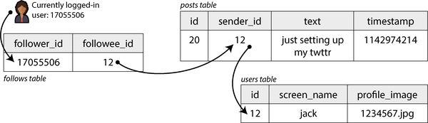
소셜 네트워크가 지원해야 하는 주요 읽기 작업은 홈 타임라인이라고 가정해 보겠습니다. 홈 타임라인은 사용자가 팔로우하는 사용자의 최근 게시물을 표시합니다(단순화를 위해 광고, 팔로우하지 않는 사용자의 추천 게시물 및 기타 확장은 무시하겠습니다). 특정 사용자의 홈 타임라인을 가져오기 위해 다음과 같은 SQL 쿼리를 작성할 수 있습니다:
SELECT posts.*, users.* FROM posts
JOIN follows ON posts.sender_id = follows.followee_id
JOIN users ON posts.sender_id = users.id
WHERE follows.follower_id = current_user
ORDER BY posts.timestamp DESC
LIMIT 1000이 쿼리를 실행하기 위해 데이터베이스는 follows 테이블을 사용하여 current_user가 팔로우하는 모든 사람을 찾고, 해당 사용자의 최근 게시물을 조회한 다음 타임스탬프별로 정렬하여 팔로우하는 모든 사용자의 최근 1,000개의 게시물을 가져옵니다.
게시물은 적시에 제공되어야 하므로, 누군가 게시물을 작성한 후 팔로워가 5초 이내에 게시물을 볼 수 있다고 가정해 보겠습니다. 한 가지 방법은 사용자의 클라이언트가 사용자가 온라인인 동안 5초마다前述된 쿼리를 반복하는 것입니다(이것을 폴링(polling)이라고 합니다). 1,000만 명의 사용자가 동시에 온라인이라고 가정하면, 초당 200만 번의 쿼리가 실행될 것입니다. 더 자주 폴링하지 않더라도 이는 많은 양입니다.
이 쿼리는 또한 상당히 비용이 많이 듭니다. 사용자가 200명을 팔로우하는 경우, 쿼리는 해당 200명의 각 사용자에 대한 최근 게시물 목록을 가져와 병합해야 합니다. 초당 200만 개의 타임라인 쿼리에 팔로우한 계정 200개를 곱하면 초당 4억 번의 조회가 발생합니다. 엄청난 수입니다. 그것도 평균적인 경우일 뿐입니다. 어떤 사용자는 수만 개의 계정을 팔로우합니다. 이 경우 해당 사용자에 대한 이 쿼리는 실행이 매우 비용이 많이 들고 빠르게 만드는 것이 어렵습니다.
타임라인 물질화 및 업데이트
더 나은 방법은 무엇일까요? 첫째, 폴링 대신 서버가 현재 온라인 상태인 팔로워에게 새 게시물을 적극 푸시하는 것이 더 낫습니다. 둘째, 사용자의 홈 타임라인 요청이 캐시에서 제공될 수 있도록 쿼리 결과를 사전에 계산해야 합니다.
각 사용자에 대해 홈 타임라인(즉, 사용자가 팔로우하는 사용자의 최근 게시물)을 포함하는 데이터 구조를 저장한다고 상상해 보십시오. 사용자가 게시물을 작성할 때마다 모든 팔로워를 조회하여 해당 게시물을 각 팔로워의 홈 타임라인에 삽입합니다(메일함에 메시지를 전달하는 것과 같습니다). 이제 사용자가 로그인하면 사전 계산된 홈 타임라인을 단순히 제공할 수 있습니다. 또한 타임라인에 새 게시물이 있다는 알림을 받으려면 사용자의 클라이언트는 홈 타임라인에 추가되는 게시물 스트림을 구독하기만 하면 됩니다.
이 접근 방식의 단점은 사용자가 게시물을 작성할 때 더 많은 작업을 수행해야 한다는 것입니다. 홈 타임라인은 업데이트해야 하는 파생 데이터이기 때문입니다. 이 과정은 그림 2-2에 설명되어 있습니다. 하나의 초기 요청이 여러 다운스트림 요청을 초래하는 경우, 요청 수를 증가시키는 요인을 팬아웃(fan-out)이라고 합니다.
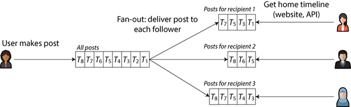
초당 5,800개의 게시물 속도에서 평균 게시물이 200명의 팔로워에게 도달하는 경우(즉, 팬아웃 요인 200), 초당 약 100만 건의 홈 타임라인 쓰기가 필요합니다. 이는 많은 양이지만, 그렇지 않으면 수행해야 할 초당 4억 건의 발신자별 게시물 조회에 비하면 상당한 절약입니다.
특별한 이벤트로 인해 게시물 속도가 급증하는 경우, 타임라인 배달을 즉시 수행할 필요는 없으며 큐에 넣고 팔로워 타임라인에 게시물이 표시되는 데 잠시 더 오래 걸리는 것을 받아들일 수 있습니다. 이러한 부하 급증 중에도 타임라인은 캐시에서 단순히 제공되므로 빠르게 로드된 상태로 유지됩니다.
쿼리 결과를 사전 계산하고 업데이트하는 이 과정은 물질화(materialization)라고 불리며, 타임라인 캐시는 물질화된 뷰(materialized view)의 예입니다(나중에 더 논의할 개념입니다). 물질화된 뷰는 읽기 속도를 높이는 대신 쓰기 작업이 더 많아야 하는 대가가 있습니다. 대부분의 사용자에 대한 쓰기 비용은 적당하지만, 소셜 네트워크는 또한 몇 가지 극단적인 경우를 고려해야 합니다:
- 사용자가 매우 많은 수의 계정을 팔로우하고 해당 계정이 많은 게시물을 작성하는 경우, 해당 사용자는 물질화된 타임라인에 대한 쓰기 속도가 높습니다. 그러나 해당 사용자는 타임라인의 모든 게시물을 읽을 가능성이 낮으므로, 팔로우하는 계정의 게시물 샘플만 표시하기 위해 일부 타임라인 쓰기를 단순히 삭제하는 것이 가능합니다[5 ].
- 팔로워가 매우 많은 유명인 계정이 게시물을 작성하는 경우, 해당 게시물을 수백만 명의 팔로워 홈 타임라인에 삽입하기 위해 많은 작업을 수행해야 합니다. 이 경우 일부 쓰기를 삭제하는 것은 용납되지 않습니다. 이 문제를 해결하는 한 가지 방법은 유명인 게시물을 다른 게시물과 별도로 처리하는 것입니다. 즉, 유명인 게시물을 수백만 개의 타임라인에 추가하는 노력을 절약하기 위해 별도로 저장하고 타임라인이 읽힐 때 물질화된 타임라인과 병합할 수 있습니다. 이러한 최적화에도 불구하고, 소셜 네트워크에서 유명인을 처리하려면 많은 인프라가 필요할 수 있습니다[6 ].
성능 설명
대부분의 소프트웨어 성능 논의는 두 가지 주요 유형의 메트릭을 고려합니다:
응답 시간
사용자가 요청을 한 순간부터 요청한 답변을 받을 때까지 걸린 시간입니다. 측정 단위는 초(또는 밀리초 또는 마이크로초)입니다.
처리량
시스템이 처리하는 초당 요청 수 또는 초당 데이터 볼륨입니다. 특정 하드웨어 리소스 할당에 대해 처리할 수 있는 최대 처리량이 있습니다. 측정 단위는 “초당 무엇”입니다.
소셜 네트워크 사례 연구에서 “초당 게시물”과 “초당 타임라인 쓰기”는 처리량 메트릭이고, “홈 타임라인 로드 시간”과 “팔로워에게 게시물 전달까지 걸리는 시간”은 응답 시간 메트릭입니다.
처리량과 응답 시간은 종종 관련이 있습니다. 온라인 서비스에 대한 이러한 관계의 예는 그림 2-3에 스케치되어 있습니다. 서비스는 요청 처리량이 낮을 때 응답 시간이 낮지만, 부하가 증가함에 따라 응답 시간이 증가합니다. 이는 큐잉 때문입니다. 매우 부하가 높은 시스템에 요청이 도착하면 CPU는 이미 이전 요청을 처리 중일 가능성이 높으므로, 들어오는 요청은 이전 요청이 완료될 때까지 대기해야 합니다. 처리량이 하드웨어가 처리할 수 있는 최대치에 가까워질수록 큐잉 지연이 급격히 증가합니다.
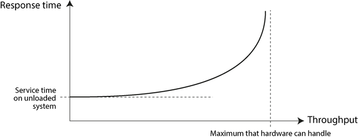
과부하 상태에서 회복되지 않는 시스템
시스템이 과부하에 가까워 처리량이 한계에 가까울 때, 때때로 더 비효율적이 되고 더 과부하되는 악순환에 빠질 수 있습니다. 예를 들어, 처리 대기 중인 요청의 긴 큐가 있으면 응답 시간이 너무 길어져 클라이언트가 시간 초과되고 요청을 재전송할 수 있습니다. 이는 요청 비율을 더욱 증가시켜 문제를 악화시킵니다(재시도 폭풍). 부하가 다시 줄어들어도 시스템은 재부팅되거나 기타 방식으로 재설정될 때까지 과부하 상태를 유지할 수 있습니다. 이 현상은 메타스테이블 실패(metastable failure)라고 하며 프로덕션 시스템에 심각한 장애를 일으킬 수 있습니다[7, 8, 9 ].
재시도가 서비스를 과부하로 만들지 않도록 하려면 클라이언트 측에서 연속 재시도 사이의 시간을 늘리고 무작위화하는 것(지수 백오프(exponential backoff)[10, 11 ])과 최근에 오류 또는 시간 초과를 반환한 서비스로 요청 전송을 일시적으로 중단하는 것(회로 차단기(circuit breaker)[12, 13 ] 또는 토큰 버킷 알고리즘(token bucket algorithm)[14 ] 사용)이 있습니다. 서버는 과부하에 접근하고 있음을 감지하고 요청을 사전 차단(로드 쉐딩(load shedding)[15 ])하거나 클라이언트에게 속도를 늦추라고 요청하는 응답을 보낼 수도 있습니다(백프레셔(backpressure)[1, 16 ]). 큐잉 및 로드 밸런싱 알고리즘의 선택도 차이를 만들 수 있습니다[17 ].
성능 메트릭 측면에서 응답 시간은 사용자가 가장 신경 쓰는 것이며, 처리량은 필요한 컴퓨팅 리소스(예: 필요한 서버 수)와 특정 워크로드를 제공하는 비용을 결정합니다. 처리량이 현재 하드웨어의 능력을 초과하여 증가할 가능성이 있는 경우 용량을 확장해야 합니다. 시스템의 최대 처리량을 컴퓨팅 리소스 추가로 크게 증가시킬 수 있다면 해당 시스템은 확장 가능하다고 합니다.
이 섹션에서는 주로 응답 시간에 초점을 맞출 것이며, 확장성 및 처리량은 “확장성”에서 다시 다룰 것입니다.
지연 시간 및 응답 시간
“지연 시간”과 “응답 시간”은 때로는 상호 교환 가능하게 사용되지만, 이 책에서는 이 두 용어와 몇 가지 관련 용어를 특정 방식으로 사용합니다(그림 2-4에 설명되어 있음):
- 응답 시간은 클라이언트가 보는 것입니다. 시스템의 모든 지연을 포함합니다.
- 서비스 시간은 서비스가 클라이언트 요청을 적극적으로 처리하는 시간입니다.
- 큐잉 지연은 흐름의 여러 지점에서 발생할 수 있습니다. 예를 들어 요청이 수신된 후 CPU를 사용할 수 있을 때까지 기다려야 하거나, 응답 패킷이 같은 머신에서 다른 작업이 아웃바운드 네트워크 인터페이스로 많은 데이터를 보내고 있는 경우 네트워크로 전송되기 전에 버퍼링되어야 할 수 있습니다.
- 지연 시간은 요청이 적극적으로 처리되지 않는 시간, 즉 잠복(latent) 상태인 시간에 대한 포괄적인 용어입니다. 특히 네트워크 지연 시간 또는 네트워크 지연은 요청과 응답이 네트워크를 통해 이동하는 시간을 말합니다.
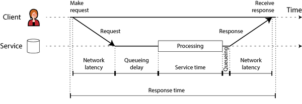
그림 2-4에서 시간은 왼쪽에서 오른쪽으로 흐릅니다. 각 통신 노드는 수평선으로 표시되며, 요청 또는 응답 메시지는 노드 간 두꺼운 대각선 화살표로 표시됩니다. 이 스타일의 다이어그램은 이 책에서 자주 접하게 될 것입니다.
응답 시간은 동일한 요청을 반복해도 요청마다 상당히 다를 수 있습니다. 많은 요인이 무작위 지연을 추가할 수 있습니다. 예를 들어, 백그라운드 프로세스로의 문맥 전환, 네트워크 패킷 손실 및 TCP 재전송, 가비지 수집 일시 중지, 디스크 읽기를 강제하는 페이지 결함, 서버 랙의 기계적 진동 등입니다. 우리는 이 주제에서 “타임아웃과 무한 지연”에서 더 자세히 논의할 것입니다.
큐잉 지연은 응답 시간의 변동성 중 많은 부분을 차지하는 경우가 많습니다. 서버는 CPU 코어 수 등으로 제한된 수의 작업을 병렬로 처리할 수 있으므로, 소수의 느린 요청만으로도 후속 요청의 처리를 지연시킬 수 있습니다. 이를 헤드 오브 라인 블로킹(head-of-line blocking)이라고 합니다. 후속 요청의 서비스 시간이 빠르더라도 클라이언트는 이전 요청이 완료될 때까지 대기하는 시간으로 인해 느린 전체 응답 시간을 보게 됩니다. 큐잉 지연은 서비스 시간의 일부가 아니므로 클라이언트 측에서 응답 시간을 측정하는 것이 중요합니다.
평균, 중앙값, 백분위수
응답 시간은 요청마다 다르기 때문에 단일 숫자로 생각하지 말고, 측정할 수 있는 값의 분포로 생각해야 합니다. 그림 2-5에서 각 회색 바는 서비스에 대한 요청을 나타내며, 높이는 해당 요청이 걸린 시간을 보여줍니다. 대부분의 요청은 상당히 빠르지만, 가끔 아웃라이어(이상값)는 훨씬 더 오래 걸립니다. 네트워크 지연 시간의 변동은 지터(jitter)라고도 합니다.
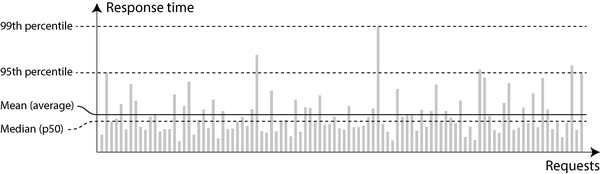
서비스의 평균 응답 시간(산술 평균, 모든 응답 시간을 합산하고 요청 수로 나눔)을 보고하는 것이 일반적입니다. 평균 응답 시간은 처리량 한계를 추정하는 데 유용합니다[19 ]. 그러나 “대표적인” 응답 시간을 알고 싶다면 평균이 좋은 지표가 아닙니다. 왜냐하면 그 지연을 실제로 경험한 사용자 수를 알려주지 않기 때문입니다.
대개는 백분위수를 사용하는 것이 더 좋습니다. 응답 시간 목록을 빠른 것부터 느린 것까지 정렬하면, 중간값(median)은 중간 지점입니다. 예를 들어, 중간값 응답 시간이 200ms라면, 요청의 절반은 200ms 미만에 반환되고, 나머지 절반은 더 오래 걸린다는 의미입니다. 이는 사용자가 일반적으로 얼마나 기다려야 하는지 알 때 중간값이 좋은 지표가 되게 합니다. 중간값은 50번째 백분위수, 때로는 p50으로 줄여 부르기도 합니다.
아웃라이어가 얼마나 나쁜지 알아보려면 더 높은 백분위수(95번째, 99번째, 99.9번째, 각각 p95, p99, p999)를 살펴볼 수 있습니다. 예를 들어, 95번째 백분위수 응답 시간이 1.5초라면, 100개 요청 중 95개는 1.5초 미만이 걸리고, 5개는 1.5초 이상 걸린다는 의미입니다. 이는 그림 2-5에 설명되어 있습니다.
높은 응답 시간 백분위수, 즉 테일 레이턴시(tail latency)는 서비스에 대한 사용자 경험에 직접적인 영향을 미치기 때문에 중요합니다. 예를 들어, Amazon은 내부 서비스에 대한 응답 시간 요구 사항을 99.9번째 백분위수(단 1,000개 요청 중 1개에만 영향)를 기준으로 설명합니다. 이는 가장 느린 요청을 경험하는 고객은 종종 계정에 가장 많은 데이터를 가진 고객(즉, 가장 가치 있는 고객)이기 때문입니다[20 ]. 웹사이트가 이들 고객에게도 빠르도록 하여 만족도를 유지하는 것이 중요합니다.
99.99번째 백분위수(10,000개 요청 중 가장 느린 1개)를 최적화하는 것은 너무 비용이 많이 들고 Amazon의 목적에 충분한 이점을 제공하지 않는 것으로 판단되었습니다. 매우 높은 백분위수에서 응답 시간을 줄이는 것은 제어할 수 없는 무작위 사건에 쉽게 영향을 받으며 이점은 감소하는 경향이 있습니다.
사용자에 대한 응답 시간의 영향
빠른 서비스가 느린 서비스보다 사용자에게 더 좋다는 것은 당연한 일처럼 보입니다[21 ]. 그러나 지연이 사용자 행동에 미치는 영향을 수치화할 수 있는 신뢰할 수 있는 데이터를 얻는 것은 놀랍도록 어렵습니다.
종종 인용되는 일부 통계는 신뢰할 수 없습니다. 예를 들어, 2006년 Google은 검색 결과가 400ms에서 900ms로 느려짐에 따라 트래픽과 수익이 20% 감소했다고 보고했습니다[22 ]. 그러나 2009년 또 다른 Google 연구에 따르면 400ms의 지연 시간 증가로 인해 하루 검색 건수가 0.6% 감소했으며[23 ], 같은 해 Bing은 로드 시간이 2초 증가하면 광고 수익이 4.3% 감소했다는 결과를 발표했습니다[24 ]. 이러한 회사들의 최신 데이터는 공개되지 않는 것으로 보입니다.
최근 Akamai 연구에 따르면 응답 시간이 100ms 증가하면 전자상거래 사이트의 전환율이 최대 7% 감소했다고 주장합니다[25 ]. 하지만 자세히 살펴보면, 동일한 연구에서는 페이지 로드 시간이 매우 빠른 것도 낮은 전환율과 상관관계가 있음을 보여줍니다! 이 모순된 결과는 가장 빠르게 로드되는 페이지가 유용한 콘텐츠가 없는 페이지(예: 404 오류 페이지)인 경우가 많기 때문입니다. 그러나 이 연구는 페이지 콘텐츠의 효과와 로드 시간의 효과를 구분하려는 노력을 하지 않았기 때문에 결과는 probabilmente 의미가 없을 가능성이 높습니다.
작년 Yahoo에서 실시한 연구는 검색 결과의 품질을 제어하면서 빠르게 로드되는 결과와 느리게 로드되는 결과 간의 클릭률을 비교했습니다[26 ]. 빠른 검색과 느린 검색 간의 차이가 1.25초 이상일 때 빠른 검색에서 20%-30% 더 많은 클릭이 발생한다고 보고합니다.
응답 시간 메트릭의 사용
높은 백분위수는 단일 최종 사용자 요청을 제공하는 데 여러 번 호출되는 백엔드 서비스에서 특히 중요합니다. 호출을 병렬로 하더라도 요청은 병렬 호출 중 가장 느린 것이 완료될 때까지 기다려야 합니다. 하나의 느린 호출만으로 전체 최종 사용자 요청이 느려질 수 있으며, 이는 그림 2-6에 설명되어 있습니다. 백엔드 호출 중 소수만 느린 경우에도 최종 사용자 요청에 여러 백엔드 호출이 필요한 경우 느린 호출을 받을 확률이 증가하므로, 이러한 최종 사용자 요청의 더 높은 비율이 느려집니다(이를 테일 레이턴시 증폭(tail latency amplification)[27 ]이라고 합니다).
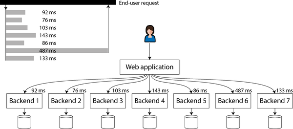
백분위수는 종종 서비스 수준 목표(SLO)와 서비스 수준 계약(SLA)에서 서비스 성능 및 가용성에 대한 예상 성능을 정의하는 데 사용됩니다[28 ]. 예를 들어, SLO는 서비스에 대한 중간 응답 시간이 200ms 미만이고 99번째 백분위수가 1초 미만인 것을 목표로 설정하고, 유효한 요청 중 최소 99.9%가 비오류 응답을 반환하는 것을 목표로 할 수 있습니다. SLA는 SLO가 충족되지 않을 경우 어떤 일이 발생하는지 지정하는 계약입니다(예: 고객은 환불을 받을 수 있음). 이것이 기본 아이디어이지만, 실제로는 SLO와 SLA를 위한 좋은 가용성 메트릭을 정의하는 것이 간단하지 않습니다[29, 30 ].
백분위수 계산
서비스의 모니터링 대시보드에 응답 시간 백분위수를 추가하려면 지속적으로 효율적으로 계산해야 합니다. 예를 들어, 지난 10분 동안의 요청에 대한 응답 시간을 롤링ウィンドウ로 유지하고 싶을 수 있습니다. 매 분마다 해당 윈도우의 값에 대한 중간값과 다양한 백분위수를 계산하고 해당 메트릭을 그래프에 그립니다.
가장 간단한 구현은 시간 윈도우 내 모든 요청에 대한 응답 시간 목록을 유지하고 매 분마다 해당 목록을 정렬하는 것입니다. 이것이 너무 비효율적인 경우, 최소한의 CPU 및 메모리 비용으로 백분위수를 근사할 수 있는 알고리즘이 있습니다. 오픈 소스 백분위수 추정 라이브러리에는 HdrHistogram [31 ], t-digest [32, 33 ], OpenHistogram [34 ], DDSketch [35 ]가 포함됩니다.
백분위수를 평균화하는 것(예: 시간 해상도를 줄이거나 여러 머신의 데이터를 결합하기 위해)은 수학적으로 무의미하다는 점에 유의하십시오. 응답 시간 데이터를 집계하는 올바른 방법은 히스토그램을 추가하는 것입니다[36 ].
신뢰성과 내결함성
누구나 신뢰할 수 있는 것과 신뢰할 수 없는 것에 대한 직관적인 개념을 가지고 있습니다. 소프트웨어에 대한 일반적인 기대는 다음과 같습니다:
- 애플리케이션은 사용자가 예상한 기능을 수행합니다.
- 애플리케이션은 사용자의 실수나 예상치 못한 사용 방식을 견딜 수 있습니다.
- 예상 부하와 데이터 볼륨 하에서 요구되는 사용 사례에 대해 성능이 충분합니다.
- 시스템은 승인되지 않은 접근과 남용을 방지합니다.
이 모든 것들이 함께 “올바르게 작동”한다는 것을 의미한다면, 신뢰성을 “문제가 발생해도 계속 올바르게 작동하는 것”이라고 이해할 수 있습니다. 보다 정확하게 문제가 발생하는 것에 대해, 우리는 결함과 실패를 구별할 것입니다[37, 38, 39 ]:
결함
결함은 시스템의 특정 부분이 더 이상 올바르게 작동하지 않을 때 발생합니다. 예를 들어, 단일 하드 드라이브가 오작동하거나, 단일 머신이 크래시하거나, 시스템이 의존하는 외부 서비스에 장애가 발생할 때입니다.
실패
실패는 시스템 전체가 사용자에게 필요한 서비스를 제공하지 않을 때 발생합니다. 즉, SLO를 충족하지 못할 때입니다.
결함과 실패의 구별은 혼동될 수 있습니다. 왜냐하면 그것들은 서로 다른 수준에서 볼 때 같은 것이기 때문입니다. 예를 들어, 하드 드라이브가 작동을 멈추면 하드 드라이브가 실패했다고 말합니다. 시스템이 단일 하드 드라이브만으로 구성된 경우, 필요한 서비스를 제공하지 않게 되었으므로 시스템도 실패했습니다. 그러나 시스템이 여러 하드 드라이브로 구성된 경우, 단일 하드 드라이브의 실패는 더 큰 시스템의 관점에서는 결함에 불과하며, 더 큰 시스템은 다른 하드 드라이브에 데이터 사본이 있어 해당 결함을 견딜 수 있습니다.
내결함성
특정 결함이 발생했음에도 사용자에게 필요한 서비스를 계속 제공하는 시스템을 내결함성(fault-tolerant)이라고 합니다. 시스템이 특정 부분이 결함이 되었을 때 견딜 수 없는 경우, 해당 부분을 단일 장애점(SPOF, Single Point of Failure)이라고 부릅니다. 그 부분의 결함이 전체 시스템의 실패로 이어지기 때문입니다.
예를 들어, 소셜 네트워크 사례 연구에서 발생할 수 있는 결함은 물질화된 타임라인을 업데이트하는 데 관여한 머신이 크래시하거나 사용 불가 상태가 되는 경우입니다. 이 과정을 내결함성 있게 만들려면 다른 머신이 게시물을 놓치거나 중복 없이 이 작업을 인계받을 수 있도록 해야 합니다(이 아이디어는 정확히 한 번 의미론(exactly-once semantics)으로 알려져 있으며, 12장에서 자세히 살펴볼 것입니다).
내결함성은 항상 특정 유형의 특정 수의 결함에 한정됩니다. 예를 들어, 시스템은 최대 두 개의 하드 드라이브가 동시에 장애가 되거나, 세 노드 중 최대 하나의 노드가 크래시하는 것을 견딜 수 있을 수 있습니다. 모든 노드가 크래시하는 것과 같은 모든 수의 결함을 견디는 것은 의미가 없습니다. 모든 노드가 크래시하면 아무것도 할 수 없습니다. 지구 전체(그리고 그 위의 모든 서버)가 블랙홀에 삼켜진다면, 해당 결함을 견디려면 우주에 웹 호스팅이 필요할 것입니다—그 예산 항목을 승인받기 위해 행운을 빕니다.
역설적으로, 이러한 내결함성 시스템에서는 고의로 결함 비율을 높이는 것이 합리적일 수 있습니다. 예를 들어, 개별 프로세스를 경고 없이 무작위로 종료함으로써입니다. 이를 결함 주입(fault injection)이라고 합니다. 많은 치명적인 버그는 실제로 잘못된 오류 처리 때문입니다[40 ]. 고의로 결함을 유발함으로써 내결함성 메커니즘이 지속적으로 훈련되고 테스트되며, 이는 결함이 자연적으로 발생했을 때 올바르게 처리될 것이라는 확신을 높일 수 있습니다. 카오스 엔지니어링(chaos engineering)은 고의로 결함을 주입하는 실험과 같은 것을 통해 내결함성 메커니즘에 대한 신뢰를 높이는 것을 목표로 하는 학문입니다.
일반적으로 결함을 예방하는 것보다 결함을 견디는 것을 선호하지만, 예방이 더 나은 경우에는(예: 치료법이 존재하지 않기 때문에) 예방을 선택해야 합니다. 이는 보안 문제의 경우입니다. 예를 들어, 공격자가 시스템을 손상시키고 민감한 데이터에 접근한 경우, 그 사건을 되돌릴 수 없습니다. 그러나 이 책은 대부분 치료될 수 있는 종류의 결함(다음 섹션에서 설명됨)을 다룹니다.
하드웨어 및 소프트웨어 결함
시스템 실패의 원인을 생각할 때, 하드웨어 결함이 빠르게 떠오릅니다:
- 연간 약 2%-5%의 자기 하드 드라이브가 장애가 됩니다[42, 43]. 10,000개의 디스크가 있는 스토리지 클러스터에서는 따라서 하루 평균 한 번의 디스크 장애가 예상됩니다. 최근 데이터에 따르면 디스크는 점점 더 신뢰할 수 있게 되고 있지만, 장애율은 여전히 중요합니다[44].
- 연간 약 0.5%-1%의 SSD(Solid State Drive)가 장애가 됩니다[45]. 소수의 비트 오류는 자동으로 수정되지만, 비교적 새로운 드라이브(즉, 마모가 거의 없음)의 경우 연간 약 한 번씩 수정 불가능한 오류가 발생합니다. 이 오류율은 자기 하드 드라이브보다 더 높습니다[47, 48].
- 기타 하드웨어 구성 요소(전원 공급 장치, RAID 컨트롤러, 메모리 모듈 등)도 하드 드라이브보다 덜 빈번하게 장애가 발생합니다[49, 50].
- 약 1,000대의 머신 중 1대는 간헐적으로 잘못된 결과를 계산하는 CPU 코어를 가지고 있으며, 이는 아마도 제조 결함 때문일 것입니다[51, 52, 53]. 일부 경우 잘못된 계산은 크래시로 이어질 수 있지만, 다른 경우에는 프로그램이 단순히 잘못된 결과를 반환하게 됩니다.
- RAM의 데이터는 우주선과 같은 무작위 사건이나 영구적인 물리적 결함으로 인해 손상될 수 있습니다. 오류 정정 코드(ECC) 메모리가 사용되더라도, 매년 1% 이상의 머신이 수정할 수 없는 오류를 경험하며, 이는 일반적으로 머신의 크래시와 해당 메모리 모듈 교체로 이어집니다[54]. 더욱이, 특정한 비정상적인 메모리 접근 패턴은 높은 확률로 비트를 뒤집을 수 있습니다[55].
- 전체 데이터 센터가 사용 불가 상태가 될 수 있습니다(예: 정전이나 네트워크 잘못된 구성으로 인해) 또는 영구적으로 파괴될 수 있습니다(예: 화재, 홍수 또는 지진으로 인해)[56]. 태양 폭풍은 태양이 많은 하전 입자를 방출할 때 장거리 전선에 강한 유도 전류를 발생시켜 전력망과 해저 네트워크 케이블을 손상시킬 수 있습니다[57]. 이러한 대규모 실패는 드물지만, 서비스가 데이터 센터 손실을 견딜 수 없는 경우 그 영향은 치명적일 수 있습니다[58].
이러한 사건들은 충분히 드물어서 작은 시스템을 작업할 때는 자주 걱정할 필요가 없으며, 간단히 장애가 된 하드웨어를 교체할 수 있다면 됩니다. 그러나 대규모 시스템에서는 하드웨어 장애가 충분히 자주 발생하여 정상적인 시스템 작동의 일부가 됩니다.
중복을 통한 하드웨어 결함 내결함성
신뢰할 수 없는 하드웨어에 대한 우리의 첫 번째 대응은 일반적으로 시스템의 고장률을 낮추기 위해 개별 하드웨어 구성 요소에 중복성을 추가하는 것입니다. 디스크는 RAID 구성으로 설정될 수 있습니다(동일한 머신에 여러 디스크에 데이터를 분산하여 한 디스크가 실패해도 데이터 손실이 발생하지 않음), 서버는 이중 전원 공급 장치와 핫 스왑 가능 CPU를 가질 수 있으며, 데이터 센터는 배터리와 디젤 발전기로 백업 전원을 가질 수 있습니다. 이러한 중복성은 머신을 수년 동안 중단 없이 실행할 수 있게 해줄 수 있습니다.
중복성은 구성 요소 장애가 독립적일 때 가장 효과적입니다. 즉, 한 장애의 발생이 다른 장애의 가능성을 변경하지 않는다는 것입니다. 그러나 경험에 따르면 구성 요소 실패 간에 상당한 상관관계가 있습니다[43, 59, 60]. 전체 서버 랙이나 전체 데이터 센터의 사용 불가 상태는 여전히 우리가 원하는 것보다 더 자주 발생합니다.
하드웨어 중복성은 단일 머신의 가동 시간을 높여주지만, “분산 대 단일 노드 시스템”에서 논의한 바와 같이, 분산 시스템을 사용하면 한 데이터 센터의 전체 장애를 견딜 수 있는 등의 이점이 있습니다. 이러한 이유로 클라우드 시스템은 개별 머신의 신뢰성에 초점을 맞추기보다 소프트웨어 수준에서 결함이 있는 노드를 견디는 방식으로 서비스의 고가용성을 목표로 합니다. 클라우드 제공업체는 가용성 영역을 사용하여 물리적으로 같은 위치에 있는 리소스를 식별하며, 같은 곳에 있는 리소스는 지리적으로 분리된 리소스보다 동시에 장애가 발생할 가능성이 더 높습니다.
이 책에서 논의하는 내결함성 기법은 전체 머신, 랙 또는 가용성 영역의 손실을 견딜 수 있도록 설계되었습니다. 일반적으로 한 데이터 센터의 머신이 다른 데이터 센터의 머신이 실패하거나 연결이 끊길 때 인계받을 수 있도록 합니다. 우리는 이러한 내결함성 기법을 6장, 10장 및 이 책의 여러 다른 지점에서 논의할 것입니다.
전체 머신의 손실을 견딜 수 있는 시스템은 운영상의 이점도 있습니다. 단일 서버 시스템은 운영 체제 보안 패치 적용과 같은 경우 재부팅을 위해 계획된 다운타임이 필요하지만, 다중 노드 내결함성 시스템은 사용자에게 영향을 주지 않고 노드 하나씩 재시작하여 패치할 수 있습니다. 이를 롤링 업그레이드라고 하며, 5장에서 더 자세히 논의할 것입니다.
소프트웨어 결함
하드웨어 장애는 약하게 상관될 수 있지만, 여전히 대부분 독립적입니다. 예를 들어, 한 디스크가 고장나도 같은 머신의 다른 디스크는 적어도 당분간은 정상이기 때문입니다. 반면 소프트웨어 결함은 종종 매우 높게 상관됩니다. 많은 노드가 동일한 소프트웨어를 실행하므로 동일한 버그를 가질 가능성이 높기 때문입니다[61, 62]. 이러한 결함은 예측하기 더 어렵고, 무상관 하드웨어 장애보다 많은 시스템 장애를 일으키는 경향이 있습니다[49]. 예시는 다음과 같습니다:
- 특정 상황에서 모든 노드를 동시에 실패하게 만드는 소프트웨어 버그. 예를 들어, 2012년 6월 30일, 윤초로 인해 Linux 커널의 버그로 인해 많은 Java 애플리케이션이 동시에 정지하여 여러 인터넷 서비스가 다운되었습니다[63]. 그리고 펌웨어 버그로 인해 특정 모델의 SSD가 정확히 32,768시간(4년 미만) 작동 후 갑자기 모두 실패하여 데이터가 복구 불가능해졌습니다[64].
- CPU 시간, 메모리, 디스크 공간, 네트워크 대역폭 또는 스레드와 같은 공유 제한 리소스를 사용해 버리는 제어 불가능한 프로세스[65]. 예를 들어, 큰 요청을 처리하는 동안 너무 많은 메모리를 사용하는 프로세스는 운영 체제에 의해 종료될 수 있으며, 클라이언트 라이브러리의 버그로 인해 예상보다 훨씬 높은 요청량이 발생할 수 있습니다[66].
- 시스템이 의존하는 서비스가 느려지거나 응답하지 않거나 손상된 응답을 반환하기 시작하는 경우.
- 서로 다른 시스템 간의 상호 작용이 각 시스템을 개별적으로 테스트할 때는 발생하지 않는 부상 행동(emergent behavior)을 초래하는 경우[67].
- 연쇄 실패(cascading failures), 한 구성 요소의 문제가 다른 구성 요소를 과부하 및 느리게 만들고, 그 결과 또 다른 구성 요소를 다운시키는 경우[68, 69].
이러한 종류의 소프트웨어 결함을 일으키는 버그는 종종 오랜 기간 휴면 상태에 있다가 특이한 상황 세트에 의해 촉발될 때까지 잠복해 있습니다. 그 상황에서 소프트웨어가 환경에 대한 어떤 가정을 하고 있다는 것이 드러나며, 그 가정은 보통 참이지만 어떤 이유로 인해 더 이상 참이 아닐 때가 있습니다[70, 71].
소프트웨어의 체계적 결함 문제에는 빠른 해결책이 없습니다. 많은 작은 도움이 될 수 있습니다: 시스템의 가정과 상호 작용을 신중하게 생각하고, 철저한 테스트, 프로세스 격리 보장, 프로세스가 크래시하고 재시작할 수 있도록 허용, 재시도 폭풍과 같은 피드백 루프 피하기(“과부하 상태에서 회복되지 않는 시스템” 참조), 프로덕션에서 시스템 동작 측정, 모니터링 및 분석.
인간과 신뢰성
인간은 소프트웨어 시스템을 설계하고 구축하며, 시스템을 실행하는 운영자도 인간입니다. 기계와 달리 인간은 규칙만 따르지 않습니다. 그들의 강점 중 하나는 업무를 수행하는 데 있어 창의적이고 적응력이 있다는 것입니다. 그러나 이 특성은 예측 불가능성을 초래하며, 때로는 선의에도 불구하고 실패로 이어질 수 있는 실수를 초래할 수 있습니다. 예를 들어, 대규모 인터넷 서비스에 대한 한 연구에서 운영자의 구성 변경이 장애의 주요 원인인 것으로 나타났으며, 하드웨어 장애(서버 또는 네트워크)는 전체 사례의 10%-25%만을 차지했습니다[72].
이러한 문제를 “인간 실수”라고 규정하고, 더 엄격한 절차와 규칙 준수를 통해 인간 행동을 더 잘 통제함으로써 해결되기를 바라는 것은 유혹적입니다. 그러나 사람들의 실수를 비난하는 것은 역효과를 낳습니다. 우리가 “인간 실수”라고 부르는 것은 그 자체로 사건의 원인이라기보다는 사람들이 최선을 다해 업무를 수행하려고 하는 사회 기술 시스템의 문제의 증상일 뿐입니다[73]. 종종 복잡한 시스템은 구성 요소 간의 예기치 않은 상호 작용이 실패로 이어질 수 있는 부상 행동을 보입니다[74].
인간의 실수 영향을 최소화하는 데 도움이 되는 다양한 기술 조치가 있습니다. 철저한 테스트(수작업 테스트와 많은 무작위 입력에 대한 속성 테스트 포함)[40], 구성을 빠르게 되돌릴 수 있는 롤백 메커니즘, 새로운 코드의 점진적 배포, 상세하고 명확한 모니터링, 프로덕션 문제 진단을 위한 관측 가능성 도구(“분산 시스템의 문제” 참조), 그리고 “올바른 것”을 장려하고 “잘못된 것”을 억제하는 잘 설계된 인터페이스입니다.
그러나 이 모든 것에는 시간과 비용 투자가 필요하며, 일상적인 비즈니스의 실용적인 현실에서 조직은 종종 시스템의 실수에 대한 복원력을 높이는 조치보다 수익 창출 활동을 우선시합니다. 더 많은 기능과 더 많은 테스트 사이의 선택에서 많은 조직은 이해할 만하게 기능과 테스트 중 기능을 선택합니다. 그런 다음, 예방 가능한 실수가 필연적으로 발생했을 때, 실수를 한 사람을 비난하는 것은 의미가 없습니다. 문제는 조직의 우선순위입니다.
점점 더 많은 조직이 사후 검토(blameless postmortems) 문화를 채택하고 있습니다. 사고 후 관련 개인이 처벌에 대한 두려움 없이 일어난 일에 대한 전체 세부 정보를 공유하도록 권장되며, 이를 통해 조직의 다른 사람들이 향후 유사한 문제를 예방하는 방법을 배울 수 있습니다[75]. 이 과정은 비즈니스 우선순위를 변경하고, 간과된 영역에 투자하며, 관련 개인의 인센티브를 변경하거나 관리자에게 또 다른 체계적 문제를 알릴 필요성을 발견할 수 있습니다.
일반적인 원칙으로, 사고를 조사할 때는 단정적인 답변에 의구심을 가져야 합니다. “Bob이 그 변경을 배포할 때 더 조심했어야 했다”는 생산적이지 않지만, “우리는 백엔드를 Haskell로 다시 써야 한다”도 생산적이지 않습니다. 대신 관리자는 매일 그 시스템으로 일하는 사람들의 관점에서 사회 기술 시스템이 어떻게 작동하는지 세부 사항을 배우고, 이 피드백에 기초하여 이를 개선하기 위한 조치를 취할 기회를 잡을 것입니다[73].
신뢰성은 얼마나 중요한가?
신뢰성은 원자력 발전소와 항공 교통 관제를 위한 것만이 아닙니다. 보다 일상적인 애플리케이션도 안정적으로 작동할 것으로 예상됩니다. 비즈니스 애플리케이션의 버그는 생산성 손실(수치가 잘못 보고되면 법적 위험)과 전자상거래 사이트의 다운타임은 막대한 매출 손실과 평판 손상이라는 막대한 비용을 초래할 수 있습니다.
많은 애플리케이션에서 몇 분 또는 몇 시간 동안의 일시적인 다운타임은 참을 수 있지만[76], 영구적인 데이터 손실이나 손상은 치명적일 것입니다. 모든 자녀의 사진과 동영상을 사진 애플리케이션에 저장하는 부모를 생각해 보십시오[77]. 갑자기 데이터베이스가 손상된다면 어떤 느낌일까요? 백업에서 컬렉션을 복원하는 방법을 알 수 있을까요?
신뢰할 수 없는 소프트웨어가 사람에게 해를 끼칠 수 있는 또 다른 예로는 영국 우체국 호라이즌(Horizon) 스캔들이 있습니다. 1999년부터 2019년까지 수백 명의 영국 우체국 지점 관리자들이 회계 소프트웨어에 계좌 잔액이 부족하게 표시된다는 이유로 절도 또는 사기로 유죄 판결을 받았습니다. 결국 이 잔액 부족의 많은 부분이 소프트웨어 버그로 인해 발생했으며, 많은 유죄 판결이 번복되었습니다[78]. 영국 역사상 아마도 가장 큰 사법 오류로 이어진 것은 컴퓨터가 올바르게 작동한다는 영법의 가정(따라서 컴퓨터에 의해 생성된 증거는 반증 증거가 없는 한 신뢰할 수 있음)이었습니다[79]. 소프트웨어 엔지니어는 소프트웨어가 결코 버그가 없을 수 없다는 생각에 비웃을 수 있지만, 이는 신뢰할 수 없는 컴퓨터 시스템으로 인한 잘못된 유죄 판결로 인해 부당하게 투옥되거나 파산하거나 심지어 자살한 사람들에게는 작은 위안도 되지 않습니다.
일부 상황에서는 개발 비용을 절감하기 위해 신뢰성을 희생할 수도 있습니다(예: 입증되지 않은 시장을 위한 프로토타입 제품 개발 시). 그러나 우리가 어디에서 모서리를 깎는지, 그리고 잠재적인 결과를 명심해야 합니다.
확장성
시스템이 오늘은 안정적으로 작동하고 있다고 해서 미래에도 반드시 그렇게 작동할 것이라는 보장은 없습니다. 성능 저하의 일반적인 원인은 부하 증가입니다. 아마도 시스템은 동시 사용자 수가 10,000명에서 100,000명으로, 또는 100만 명에서 1,000만 명으로 증가했을 수도 있습니다. 아마도 이전보다 훨씬 더 많은 양의 데이터를 처리하고 있을 수도 있습니다.
확장성(scalability)이란 시스템이 증가한 부하를 처리할 수 있는 능력을 설명하는 용어입니다. 때때로 확장성에 대해 논의할 때, “당신은 구글이나 아마존이 아니다. 확장성에 대해 걱정하지 말고 관계형 데이터베이스를 사용하라”는 의견을 듣기도 합니다. 이 격언이 적용되는지는 구축 중인 애플리케이션의 유형에 따라 다릅니다.
현재 사용자 수가 소수인 새로운 제품을 구축하고 있다면, 아마도 스타트업일 것입니다. 이때 가장 중요한 엔지니어링 목표는 일반적으로 시스템을 가능한 한 단순하고 유연하게 유지하여 고객의 요구를 더 많이 배울 때 제품 기능을 쉽게 수정하고 적응할 수 있도록 하는 것입니다[80]. 그러한 환경에서 미래에 필요할지도 모르는 가상의 확장성에 대해 걱정하는 것은 역효과를 낳습니다. 최선의 경우, 확장성에 대한 투자는 쓸데없는 노력과 조기 최적화이며, 최악의 경우, 유연하지 못한 설계에 묶여 애플리케이션을 발전시키기 어렵게 만듭니다.
확장성은 단일 라벨이 아닙니다. “X는 확장 가능하다” 또는 “Y는 확장하지 못한다”라고 말하는 것은 의미가 없습니다. 확장성에 대해 논의한다는 것은 다음과 같은 질문을 고려하는 것을 의미합니다:
- 시스템이 특정 방식으로 성장하면, 성장에 대처할 수 있는 우리의 옵션은 무엇입니까?
- 추가 부하를 처리하기 위해 어떻게 컴퓨팅 리소스를 추가할 수 있습니까?
- 현재 성장 예측에 기반하여 현재 아키텍처의 한계에 언제 도달할 것입니까?
애플리케이션을 성공적으로 만들어 점점 더 많은 부하를 처리하게 된다면, 성능 병목 현상이 어디에 있는지와 어떤 차원으로 확장해야 하는지 알게 될 것입니다. 그 시점에서 확장성에 대한 기술을 고려하기 시작할 때입니다.
부하 이해
먼저 시스템에 대한 현재 부하를 명확히 이해해야 합니다. 그 후에야 “부하가 두 배가 되면 어떻게 되는가?”라는 성장 질문을 논의할 수 있습니다. 이는 종종 처리량(예: 서비스에 대한 초당 요청 수, 하루에 도착하는 새로운 데이터의 기가바이트 수, 시간당 쇼핑 카트 체크아웃 수)과 같은 측정값일 것입니다. 때로는 변동하는 양의 피크에 관심을 갖습니다. 예를 들어, 소셜 네트워크 사례 연구에서 동시에 온라인 상태인 사용자 수와 같습니다.
종종 부하의 기타 통계적 특성이 접근 패턴에 영향을 미치며 따라서 확장성 요구 사항에 영향을 미칩니다. 예를 들어 데이터베이스의 읽기 대 쓰기 비율, 캐시 히트율, 사용자당 데이터 항목 수(사례 연구의 팔로워 등)를 알아야 할 수 있습니다. 평균적인 경우가 중요할 수도 있고, 병목 현상이 소수의 극단적인 경우에 의해 지배될 수도 있습니다. 모두 특정 애플리케이션의 세부 사항에 달려 있습니다.
시스템에 대한 부하를 이해하면 부하가 증가할 때 어떤 일이 발생하는지 조사할 수 있습니다. 두 가지 방식으로 볼 수 있습니다:
- 특정 방식으로 부하를 증가시키고 시스템 리소스(CPU, 메모리, 네트워크 대역폭 등)를 그대로 유지하면 시스템 성능에 어떤 영향을 미칩니까?
- 특정 방식으로 부하를 증가시키면 성능을 그대로 유지하려면 리소스를 얼마나 늘려야 합니까?
일반적으로 목표는 SLA(“응답 시간 메트릭의 사용” 참조)에서 요구하는 성능을 유지하면서도 시스템 실행 비용을 최소화하는 것입니다. 필요한 컴퓨팅 리소스가 클수록 비용이 높아집니다. 일부 유형의 하드웨어는 다른 유형보다 더 비용 효율적일 수 있으며, 새로운 유형의 하드웨어가 출시됨에 따라 이러한 요소는 시간이 지남에 따라 변경될 수 있습니다.
리소스를 두 배로 늘리면 성능을 유지하면서 두 배의 부하를 처리할 수 있다면, 이를 선형 확장성(linear scalability)이라고 하며, 이는 좋은 것으로 간주됩니다. 때로는 규모의 경제 또는 피크 부하 분배의 더 나은 방식으로 두 배의 부하를 두 배 미만의 리소스로 처리할 수 있는 경우도 있습니다[81, 82]. 훨씬 더 가능성 있는 것은 비용이 선형보다 빠르게 증가한다는 것입니다. 비효율성의 이유는 많을 수 있습니다. 예를 들어, 데이터가 많은 경우 단일 쓰기 요청을 처리하는 데 더 많은 작업이 필요할 수 있으며, 요청의 크기가 동일하더라도 그렇습니다.
공유 메모리, 공유 디스크, 공유 없음 아키텍처
서비스의 하드웨어 리소스를 증가시키는 가장 간단한 방법은 더 강력한 머신으로 이동하는 것입니다. 개별 CPU 코어는 더 이상 상당히 빨라지지 않지만, 더 많은 CPU 코어, 더 많은 RAM, 더 많은 디스크 공간을 가진 머신(또는 클라우드 인스턴스)을 구입하거나 임대할 수 있습니다. 이 접근 방식은 수직 확장(vertical scaling) 또는 스케일 업(scaling up)이라고 합니다.
단일 머신에서 여러 프로세스 또는 스레드를 사용하여 병렬성을 얻을 수 있습니다. 동일한 프로세스에 속한 모든 스레드는 동일한 RAM에 접근할 수 있으므로, 이 접근 방식은 공유 메모리(shared-memory) 아키텍처라고도 합니다. 공유 메모리 접근 방식의 문제는 비용이 선형보다 빠르게 증가한다는 것입니다. 하드웨어 리소스가 두 배인 고급 머신은 일반적으로 저사양 머신의 두 배보다 훨씬 더 비쌉니다. 그리고 병목 현상으로 인해 그 머신이 실제로 두 배의 부하를 처리할 수 없을 가능성이 높습니다.
다른 접근 방식은 공유 디스크(shared-disk) 아키텍처로, 독립적인 CPU와 RAM을 가진 여러 머신을 사용하지만 데이터는 네트워크 연결 장치(NAS 또는 스토리지 영역 네트워크(SAN))를 통해 연결된 디스크 배열에 저장합니다. 이 아키텍처는 전통적으로 구내 데이터 웨어하우징 워크로드에 사용되었지만, 경합과 잠금 오버헤드로 인해 공유 디스크 접근 방식의 확장성이 제한됩니다[83].
반면에 공유 없음(shared-nothing) 아키텍처84은 각 노드가 자체 CPU, RAM 및 디스크를 가진 분산 시스템을 포함합니다. 노드 간의 모든 조정은 소프트웨어 수준에서 기존 네트워크를 통해 수행됩니다.
최근 몇 년 동안 인기를 얻은 이 접근 방식의 장점은 선형으로 확장할 수 있는 잠재력이 있고, 가격/성능 비율이 가장 좋은 하드웨어(특히 클라우드에서)를 사용할 수 있으며, 부하 증가 또는 감소에 따라 하드웨어 리소스를 더 쉽게 조정할 수 있으며, 여러 데이터 센터와 지역에 시스템을 분산하여 더 큰 내결함성을 달성할 수 있다는 점입니다. 단점은 명시적인 샤딩(sharding)(7장 참조)이 필요하며 분산 시스템의 모든 복잡성(9장에서 논의)을 수반한다는 점입니다.
일부 클라우드 네이티브 데이터베이스 시스템은 스토리지와 트랜잭션 실행을 위한 별도 서비스를 사용하며(“스토리지와 컴퓨팅의 분리” 참조), 여러 컴퓨팅 노드가 동일한 스토리지 서비스에 접근합니다. 이 모델은 공유 디스크 아키텍처와 일부 유사점이 있지만, 이전 시스템의 확장성 문제는 피합니다. NAS 파일 시스템이나 SAN 블록 디바이스 추상화를 제공하는 대신, 스토리지 서비스는 데이터베이스의 특정 요구 사항을 위해 설계된 전문 API를 제공합니다[85].
확장성 원칙
대규모로 작동하는 시스템의 아키텍처는 일반적으로 애플리케이션에 매우 특화되어 있습니다. 만능의 확장 가능한 아키텍처(일반적으로 매직 스케일링 소스(magic scaling sauce)라고 함)는 존재하지 않습니다. 예를 들어, 초당 100,000개의 요청(각각 1kB)을 처리하도록 설계된 시스템은 분당 3개의 요청(각각 2GB)을 처리하도록 설계된 시스템과는 매우 다르게 보입니다. 두 시스템의 데이터 처리량은 동일합니다(초당 100MB).
또한 특정 부하 수준에 적합한 아키텍처는 그 10배의 부하를 처리하지 못할 가능성이 높습니다. 따라서 급속하게 성장하는 서비스를 작업 중이라면 부하가 주문 단위로 증가할 때마다 아키텍처를 재고해야 할 가능성이 높습니다. 애플리케이션의 요구 사항은 진화할 가능성이 높으므로, 미래 확장 요구 사항을 주문 단위 이상으로 미리 계획하는 것은 일반적으로 가치가 없습니다.
확장성에 대한 좋은 일반적인 원칙은 시스템을 서로 독립적으로 작동할 수 있는 더 작은 구성 요소로 분해하는 것입니다. 이것이 마이크로서비스(“마이크로서비스와 서버리스” 참조), 샤딩(7장), 스트림 처리(12장), 공유 없음 아키텍처의 기본 원리입니다. 어려움은 무엇이 함께 있고 무엇이 떨어져 있어야 하는지 경계를 아는 데 있습니다. 마이크로서비스에 대한 설계 지침은 다른 책에서 찾을 수 있습니다[86], 그리고 공유 없음 시스템의 샤딩은 7장에서 논의합니다.
또 다른 좋은 원칙은 필요 이상으로 복잡하게 만들지 않는 것입니다. 단일 머신 데이터베이스가 일을 수행할 수 있다면 복잡한 분산 구성보다 선호될 것입니다. 수요에 따라 자동으로 리소스를 추가하거나 제거하는 자동 확장(autoscaling) 시스템은 멋지지만, 부하가 상당히 예측 가능한 경우 수동으로 확장되는 시스템이 운영상의 놀라움이 적을 수 있습니다(“운영: 자동 대 수동 재균형” 참조). 5개의 서비스가 있는 시스템은 50개의 서비스가 있는 시스템보다 더 간단합니다. 좋은 아키텍처는 일반적으로 실용적인 접근 방식의 혼합을 포함합니다.
유지보수성
소프트웨어는 마모되거나 물질적 피로를 겪지 않으므로 기계 객체와 같은 방식으로 손상되지 않습니다. 그러나 애플리케이션에 대한 요구 사항은 자주 진화하며, 소프트웨어가 실행되는 환경(종속성 및 기본 플랫폼 포함)이 변경되고, 수정해야 하는 버그가 있을 수 있습니다.
소프트웨어 비용의 대부분은 초기 개발이 아닌 지속적인 유지보수(버그 수정, 시스템 가동 유지, 장애 조사, 새로운 플랫폼에 적응, 새로운 사용 사례를 위한 수정, 기술 부채 상환, 새로운 기능 추가)에 있다는 것이 널리 인정받고 있습니다[87, 88].
유지보수는 특히 레거시 시스템의 경우 복잡할 수 있습니다. 오랫동안 성공적으로 실행된 시스템은 오늘날 많은 엔지니어가 이해하지 못하는 오래된 기술(예: 메인프레임 및 COBOL 코드)을 사용할 수 있으며, 시스템이 특정 방식으로 설계된 이유에 대한 기관 지식은 사람들이 조직을 떠나면서 상실되었을 수 있습니다. 다른 사람의 실수를 수정하는 것도 필요할 수 있습니다. 컴퓨터 시스템은 종종 지원하는 인간 조직과 얽혀 있기 때문에 이러한 시스템의 유지보수는 기술적 문제만큼이나 사람 문제이기도 합니다[89].
오늘날 우리가 만드는 모든 시스템은 충분히 오래 생존할 가치가 있다면 언젠가 레거시 시스템이 될 것입니다. 미래의 세대가 소프트웨어를 유지보수하는 데 발생하는 고통을 최소화하기 위해, 우리는 시스템을 유지보수를 염두에 두고 설계해야 합니다. 미래에 유지보수의 두통을 유발할 수 있는 결정을 항상 예측할 수는 없지만, 이 책에서는 널리 적용 가능한 여러 원칙에 주의를 기울일 것입니다:
운영성(Operability)
조직이 시스템을 원활하게 운영하기 쉽게 만듭니다.
단순성(Simplicity)
새로운 엔지니어가 시스템을 이해하기 쉽게 만들기 위해, 잘 이해되고 일관된 패턴과 구조를 사용하여 구현하고 불필요한 복잡성을 피합니다.
진화 가능성(Evolvability)
요구 사항이 변경됨에 따라 엔지니어가 미래에 시스템을 변경하고, 적응하며, 확장하기 쉽게 만듭니다.
운영성: 운영 팀을 위한 삶 쉽게 만들기
우리는 이전에 “클라우드 시대의 운영”에서 운영의 역할에 대해 논의했으며, 인간 프로세스가 안정적인 운영에 소프트웨어 도구만큼 중요하다는 것을 확인했습니다. 실제로 “나쁜(또는 불완전한) 소프트웨어로도 좋은 운영이 종종 극복할 수 있지만, 나쁜 운영으로 좋은 소프트웨어가 안정적으로 실행될 수는 없다[62]”고 제안되었습니다.
수천 대의 머신으로 구성된 대규모 시스템에서는 수동 유지보수가 터무니없이 비용이 많이 들 것이며, 자동화가 필수적입니다. 그러나 자동화는 양날의 검과 같습니다. 항상 예외(예: 드문 시나리오의 실패)가 있으며 수동 개입이 필요할 것입니다. 그리고 자동으로 처리할 수 없는 사례는 가장 복잡한 경향이 있으므로, 더 높은 수준의 자동화는 그 문제를 해결할 수 있는 더 숙련된 운영 팀을 필요로 합니다[90].
추가적으로, 잘못된 자동화 시스템은 수동 작업을 통해 조치를 취하는 운영자를 의존하는 시스템보다 문제 해결이 더 어려운 경우가 많습니다. 이러한 이유로, 더 많은 자동화가 항상 운영성에 더 좋은 것은 아닙니다. 그러나 일정 수준의 자동화는 중요합니다. 최적의 지점은 특정 애플리케이션과 조직의 세부 사항에 따라 다릅니다.
좋은 운영성은 일상적인 작업을 쉽게 만들어 운영 팀이 고부가가치 활동에 집중할 수 있게 합니다. 데이터 시스템은 다음을 수행하여 도움을 줄 수 있습니다[91]:
- 모니터링 도구가 시스템의 주요 지표를 확인하고, 시스템의 런타임 동작에 대한 통찰력을 제공하는 관측 가능성 도구(“분산 시스템의 문제” 참조)를 지원할 수 있도록 허용합니다. 다양한 상용 및 오픈 소스 도구가 여기에 도움이 될 수 있습니다[92].
- 개별 머신에 의존하지 않도록 합니다(시스템 전체가 중단 없이 계속 실행되는 동안 머신을 유지보수 위해 중단할 수 있도록 허용).
- 좋은 문서와 이해하기 쉬운 운영 모델 제공(“내가 X를 하면 Y가 일어날 것”).
- 좋은 기본 동작 제공, 하지만 필요할 때 관리자가 기본값을 재정의할 수 있는 자유 제공.
- 필요한 경우 자체 치유(self-healing) 제공, 하지만 필요할 때 관리자가 시스템 상태에 대한 수동 제어 유지.
- 예측 가능한 동작 표시, 놀라움 최소화.
단순성: 복잡성 관리
작은 소프트웨어 프로젝트는 즐겁게 간단하고 표현력이 풍부한 코드를 가질 수 있지만, 프로젝트가 커짐에 따라 종종 매우 복잡하고 이해하기 어려워집니다. 이러한 복잡성은 시스템을 작업해야 하는 모든 사람을 느리게 하여 유지보수 비용을 더욱 증가시킵니다. 복잡성에 얽매인 소프트웨어 프로젝트는 종종 큰 진흙 공(big ball of mud)[93]이라고 불립니다.
복잡성이 유지보수를 어렵게 만들면 예산과 일정이 초과되는 경우가 많습니다. 복잡한 소프트웨어에서는 변경을 할 때 버그를 도입할 위험이 더 큽니다. 시스템을 이해하고 추론하기 어려울 때, 숨겨진 가정, 의도치 않은 결과, 예상치 못한 상호 작용이 더 쉽게 간과될 수 있습니다[71]. 반대로, 복잡성을 줄이는 것은 소프트웨어의 유지보수성을 크게 향상시키며, 따라서 단순성은 우리가 구축하는 시스템의 주요 목표 중 하나가 되어야 합니다.
간단한 시스템은 이해하기 쉬우므로 주어진 문제에 가능한 가장 간단한 해결 방법을 찾으려고 노력해야 합니다. 불행히도 이는 말하기는 쉽지만 실행하기는 어렵습니다. 무엇이 단순한지 여부는 종종 주관적인 문제이며, 단순성에 대한 객관적인 표준은 없습니다[94]. 예를 들어, 한 시스템은 복잡한 구현을 단순한 인터페이스 뒤에 숨길 수 있고, 다른 시스템은 구현은 간단하지만 내부 세부 사항을 사용자에게 더 많이 노출할 수 있습니다—어떤 것이 더 단순한가요?
복잡성을 추론하려는 한 가지 시도는 이를 본질적 복잡성과 우발적 복잡성 두 가지 범주로 나누는 것입니다[95]. 아이디어는 본질적 복잡성은 애플리케이션 문제 영역에 고유한 반면, 우발적 복잡성은 우리의 도구 제한 때문에만 발생한다는 것입니다. 불행히도 이 구별도 결함이 있습니다. 우리의 도구가 진화함에 따라 본질적과 우발적 사이의 경계가 이동하기 때문입니다[96].
복잡성을 관리하기 위한 최고의 도구 중 하나는 추상화입니다. 좋은 추상화는 많은 구현 세부 사항을 깨끗하고 이해하기 쉬운 fasade 뒤로 숨길 수 있습니다. 좋은 추상화는 또한 다양한 애플리케이션에 사용될 수 있습니다. 이러한 재사용은 여러 번 동일한 것을 다시 구현하는 것보다 더 효율적일 뿐만 아니라, 추상화된 구성 요소의 품질 개선이 이를 사용하는 모든 애플리케이션에 더 높은 품질로 이어집니다.
예를 들어, 고급 프로그래밍 언어는 기계 코드, CPU 레지스터 및 시스템 호출을 숨기는 추상화입니다. SQL은 복잡한 디스크 내 및 메모리 내 데이터 구조, 다른 클라이언트의 동시 요청 및 크래시 후의 불일치를 숨기는 추상화입니다. 물론 고급 프로그래밍 언어로 프로그래밍할 때 여전히 기계 코드를 사용하고 있지만, 직접 사용하지는 않으며 프로그래밍 언어 추상화가 그것에 대해 생각하지 않아도 되도록 해줍니다.
애플리케이션 코드에 대한 추상화는 디자인 패턴[97] 및 도메인 주도 설계(Domain-Driven Design, DDD)[98]과 같은 방법론을 사용하여 만들어질 수 있습니다. 이 책은 그러한 애플리케이션별 추상화에 관한 것이 아니라, 데이터베이스 트랜잭션, 인덱스, 이벤트 로그와 같이 애플리케이션을 구축할 수 있는 범용 추상화에 관한 것입니다. DDD와 같은 기술을 사용하려면 이 책에 설명된 기반 위에 구현할 수 있습니다.
진화 가능성: 변경 용이성
시스템의 요구 사항이 영원히 변하지 않을 가능성은 극히 낮습니다. 대신 끊임없이 변화할 가능성이 훨씬 높습니다. 새로운 사실을 알게 되고, 예상치 못한 사용 사례가 나타나고, 비즈니스 우선순위가 변경되고, 사용자가 새로운 기능을 요청하고, 새로운 플랫폼이 오래된 플랫폼을 대체하고, 법적 또는 규제 요구 사항이 변경되며, 시스템 성장이 아키텍처 변경을 강요하는 등.
조직 프로세스 측면에서 민첩한 작업 패턴은 변화에 적응하기 위한 프레임워크를 제공합니다. 애자일 커뮤니티는 빈번하게 변화하는 환경에서 소프트웨어를 구축하는 데 도움이 되는 테스트 주도 개발(TDD) 및 리팩토링과 같은 기술적 도구와 프로세스를 개발했습니다. 이 책에서는 여러 애플리케이션 또는 서비스로 구성된 시스템 수준에서 민첩성을 높이는 방법을 모색합니다.
데이터 시스템을 수정하고 변화하는 요구 사항에 적응하기 쉬운 정도에는 단순성과 추상화와 밀접한 관련이 있습니다. 느슨하게 결합된 단순한 시스템은 긴밀하게 결합된 복잡한 시스템보다 수정하기 쉬운 경우가 많습니다. 이는 매우 중요한 아이디어이므로, 데이터 시스템 수준에서의 민첩성을 지칭하기 위해 진화 가능성(evolvability)[99]이라는 다른 단어를 사용하겠습니다.
큰 시스템에서 변경을 어렵게 만드는 주요 요인 중 하나는 돌이킬 수 없음(irreversibility)[100]입니다. 예를 들어, 한 데이터베이스에서 다른 데이터베이스로 마이그레이션 중이라고 가정해 보십시오. 새로운 시스템에 문제가 발생할 경우 이전 시스템으로 다시 전환할 수 없다면, 이전 시스템으로 쉽게 돌아갈 수 있는 경우보다 위험이 훨씬 더 큽니다. 따라서 돌이킬 수 없는 조치는 매우 신중하게 수행해야 합니다. 돌이킬 수 없음을 최소화하는 것은 유연성을 개선합니다.
요약
이 장에서는 성능, 신뢰성, 확장성, 유지보수성과 같은 여러 비기능적 요구 사항의 예를 살펴보았습니다. 이러한 주제를 통해 이 책의 나머지 부분에서 관련이 있는 원칙과 용어를 접했습니다.
우리는 소셜 네트워크 홈 타임라인을 구현하는 사례 연구로 시작했으며, 이는 규모에서 발생하는 문제의 일부를 설명했습니다. 그런 다음 성능 측정(예: 응답 시간 백분위수 사용) 및 시스템 부하(예: 처리량 메트릭 사용)에 대해 논의하고, 이러한 메트릭이 SLA에서 어떻게 사용되는지, 확장성은 부하가 증가할 때 성능을 유지하는 데 중점을 둔 밀접한 개념임을 확인했습니다. 확장성에 대한 몇 가지 일반적인 원칙(예: 작업을 독립적으로 작동할 수 있는 더 작은 부분으로 분해)을 확인했으며, 후속 장에서는 확장성 기술에 대한 기술적 세부 사항을 더 자세히 다룰 것입니다.
신뢰성을 달성하기 위해서는 구성 요소(예: 디스크, 머신 또는 다른 서비스)가 고장 나더라도 시스템이 계속 서비스를 제공할 수 있게 하는 내결함성 기술을 사용할 수 있습니다. 하드웨어 및 소프트웨어 결함의 예를 살펴보고, 소프트웨어 결함은 종종 강하게 상관되어 다루기 더 어렵다는 점에서 하드웨어 결함과 구별했습니다. 신뢰성을 달성하는 또 다른 측면은 인간 실수에 대한 복원력을 구축하는 것이며, 사고로부터 학습하는 기술인 블레스리스 사후 검토를 확인했습니다.
마지막으로 유지보수성의 여러 측면을 살펴보았습니다. 운영 팀의 작업을 지원하고, 복잡성을 관리하며, 애플리케이션의 기능을 시간에 따라 진화시키기 쉽게 만드는 것이 포함됩니다. 이러한 목표를 달성하는 간단한 답은 없지만, 유용한 추상화를 제공하는 잘 이해된 구성 요소를 사용하여 애플리케이션을 구축하는 것이 한 가지 접근 방식이 될 수 있습니다. 이 책의 나머지 부분에서는 실제로 유용하다고 입증된 구성 요소 선택을 다룰 것입니다.
각주
참조
[1 ] Mike Cvet.“How We Learned to Stop Worrying and Love Fan-in at Twitter.” At QCon San Francisco, December 2016.
[2 ] Raffi Krikorian.“Timelines at Scale.” At QCon San Francisco, November 2012. Archived at perma.cc/V9G5-KLYK
[3 ] Twitter.“Twitter’s Recommendation Algorithm.” blog.x.com, March 2023. Archived at perma.cc/L5GT-229T
[4 ] Raffi Krikorian.“New Tweets per Second Record, and How!” blog.x.com, August 2013. Archived at perma.cc/6JZN-XJYN
[5 ] Jaz Volpert.“When Imperfect Systems Are Good, Actually: Bluesky’s Lossy Timelines.” jazco.dev, February 2025. Archived at perma.cc/2PVE-L2MX
[6 ] Samuel Axon.“3% of Twitter’s Servers Dedicated to Justin Bieber.” mashable.com, September 2010. Archived at perma.cc/F35N-CGVX
[7 ] Nathan Bronson, Abutalib Aghayev, Aleksey Charapko, and Timothy Zhu.“Metastable Failures in Distributed Systems.” At Workshop on Hot Topics in Operating Systems (HotOS), May 2021. doi:10.1145/3458336.3465286
[8 ] Marc Brooker.“Metastability and Distributed Systems.” brooker.co.za, May 2021. Archived at perma.cc/7FGJ-7XRK
[9 ] Lexiang Huang, Matthew Magnusson, Abishek Bangalore Muralikrishna, Salman Estyak, Rebecca Isaacs, Abutalib Aghayev, Timothy Zhu, and Aleksey Charapko.“Metastable Failures in the Wild.” At 16th USENIX Symposium on Operating Systems Design and Implementation (OSDI), July 2022.
[10 ] Marc Brooker.“Exponential Backoff and Jitter.” aws.amazon.com, March 2015. Archived at perma.cc/R6MS-AZKH
[11 ] Marc Brooker.“What Is Backoff For?” brooker.co.za, August 2022. Archived at perma.cc/PW9N-55Q5
[12 ] Michael T. Nygard. Release It!, 2nd edition. Pragmatic Bookshelf, 2018. ISBN: 9781680502398
[13 ] Frank Chen.“Slowing Down to Speed Up—Circuit Breakers for Slack’s CI/CD.” slack.engineering, August 2022. Archived at perma.cc/5FGS-ZPH3
[14 ] Marc Brooker.“Fixing Retries with Token Buckets and Circuit Breakers.” brooker.co.za, February 2022. Archived at perma.cc/MD6N-GW26
[15 ] David Yanacek.“Using Load Shedding to Avoid Overload.” Amazon Builders’ Library, aws.amazon.com. Archived at perma.cc/9SAW-68MP
[16 ] Matthew Sackman.“Pushing Back.” wellquite.org, May 2016. Archived at perma.cc/3KCZ-RUFY
[17 ] Dmitry Kopytkov and Patrick Lee.“Meet Bandaid, the Dropbox Service Proxy.” dropbox.tech, March 2018. Archived at perma.cc/KUU6-YG4S
[18 ] Haryadi S. Gunawi, Riza O. Suminto, Russell Sears, Casey Golliher, Swaminathan Sundararaman, Xing Lin, Tim Emami, Weiguang Sheng, Nematollah Bidokhti, Caitie McCaffrey, Gary Grider, Parks M. Fields, Kevin Harms, Robert B. Ross, Andree Jacobson, Robert Ricci, Kirk Webb, Peter Alvaro, H. Birali Runesha, Mingzhe Hao, and Huaicheng Li.“Fail-Slow at Scale: Evidence of Hardware Performance Faults in Large Production Systems.” At 16th USENIX Conference on File and Storage Technologies, February 2018.
[19 ] Marc Brooker.“Is the Mean Really Useless?” brooker.co.za, December 2017. Archived at perma.cc/U5AE-CVEM
[20 ] Giuseppe DeCandia, Deniz Hastorun, Madan Jampani, Gunavardhan Kakulapati, Avinash Lakshman, Alex Pilchin, Swaminathan Sivasubramanian, Peter Vosshall, and Werner Vogels.“Dynamo: Amazon’s Highly Available Key-Value Store.” At 21st ACM Symposium on Operating Systems Principles (SOSP), October 2007. doi:10.1145/1294261.1294281
[21 ] Kathryn Whitenton.“The Need for Speed, 23 Years Later.” nngroup.com, May 2020. Archived at perma.cc/C4ER-LZYA
[22 ] Greg Linden.“Marissa Mayer at Web 2.0.” glinden.blogspot.com, November 2005. Archived at perma.cc/V7EA-3VXB
[23 ] Jake Brutlag.“Speed Matters for Google Web Search.” services.google.com, June 2009. Archived at perma.cc/BK7R-X7M2
[24 ] Eric Schurman and Jake Brutlag.“Performance Related Changes and Their User Impact.” Talk at Velocity 2009.
[25 ] Akamai Technologies, Inc.“The State of Online Retail Performance.” akamai.com, April 2017. Archived at perma.cc/UEK2-HYCS
[26 ] Xiao Bai, Ioannis Arapakis, B. Barla Cambazoglu, and Ana Freire.“Understanding and Leveraging the Impact of Response Latency on User Behaviour in Web Search.” ACM Transactions on Information Systems, volume 36, issue 2, article 21, April 2018. doi:10.1145/3106372
[27 ] Jeffrey Dean and Luiz André Barroso.“The Tail at Scale.” Communications of the ACM, volume 56, issue 2, pages 74–80, February 2013. doi:10.1145/2408776.2408794
[28 ] Alex Hidalgo. Implementing Service Level Objectives: A Practical Guide to SLIs, SLOs, and Error Budgets. O’Reilly Media, 2020. ISBN: 9781492076813
[29 ] Jeffrey C. Mogul and John Wilkes.“Nines Are Not Enough: Meaningful Metrics for Clouds.” At 17th Workshop on Hot Topics in Operating Systems (HotOS), May 2019. doi:10.1145/3317550.3321432
[30 ] Tamás Hauer, Philipp Hoffmann, John Lunney, Dan Ardelean, and Amer Diwan.“Meaningful Availability.” At 17th USENIX Symposium on Networked Systems Design and Implementation (NSDI), February 2020.
[31 ] Gil Tene.“HdrHistogram: A High Dynamic Range Histogram.” hdrhistogram.github.io/HdrHistogram
[32 ] Ted Dunning.“The t-digest: Efficient Estimates of Distributions.” Software Impacts, volume 7, article 100049, February 2021. doi:10.1016/j.simpa.2020.100049
[33 ] David Kohn.“How Percentile Approximation Works (and Why It’s More Useful than Averages).” timescale.com, September 2021. Archived at perma.cc/3PDP-NR8B
[34 ] Heinrich Hartmann and Theo Schlossnagle.“Circllhist—A Log-Linear Histogram Data Structure for IT Infrastructure Monitoring.” arXiv:2001.06561, January 2020.
[35 ] Charles Masson, Jee E. Rim, and Homin K. Lee.“DDSketch: A Fast and Fully-Mergeable Quantile Sketch with Relative-Error Guarantees.” Proceedings of the VLDB Endowment, volume 12, issue 12, pages 2195–2205, August 2019. doi:10.14778/3352063.3352135
[36 ] Baron Schwartz.“Why Percentiles Don’t Work the Way You Think.” solarwinds.com, November 2016. Archived at perma.cc/469T-6UGB
[37 ] Walter L. Heimerdinger and Charles B. Weinstock.“A Conceptual Framework for System Fault Tolerance.” Technical Report CMU/SEI-92-TR-033, Software Engineering Institute, Carnegie Mellon University, October 1992. Archived at perma.cc/GD2V-DMJW
[38 ] Felix C. Gärtner.“Fundamentals of Fault-Tolerant Distributed Computing in Asynchronous Environments.” ACM Computing Surveys, volume 31, issue 1, pages 1–26, March 1999. doi:10.1145/311531.311532
[39 ] Algirdas Avižienis, Jean-Claude Laprie, Brian Randell, and Carl Landwehr.“Basic Concepts and Taxonomy of Dependable and Secure Computing.” IEEE Transactions on Dependable and Secure Computing, volume 1, issue 1, pages 11–33, January 2004. doi:10.1109/TDSC.2004.2
[40 ] Ding Yuan, Yu Luo, Xin Zhuang, Guilherme Renna Rodrigues, Xu Zhao, Yongle Zhang, Pranay U. Jain, and Michael Stumm.“Simple Testing Can Prevent Most Critical Failures: An Analysis of Production Failures in Distributed Data-Intensive Systems.” At 11th USENIX Symposium on Operating Systems Design and Implementation (OSDI), October 2014.
[41 ] Casey Rosenthal and Nora Jones. Chaos Engineering. O’Reilly Media, 2020. ISBN: 9781492043867
[42 ] Eduardo Pinheiro, Wolf-Dietrich Weber, and Luiz Andre Barroso.“Failure Trends in a Large Disk Drive Population.” At 5th USENIX Conference on File and Storage Technologies (FAST), February 2007.
[43 ] Bianca Schroeder and Garth A. Gibson.“Disk Failures in the Real World: What Does an Mttf of 1,000,000 Hours Mean to You?” At 5th USENIX Conference on File and Storage Technologies (FAST), February 2007.
[44 ] Andy Klein.“Backblaze Drive Stats for Q2 2021.” backblaze.com, August 2021. Archived at perma.cc/2943-UD5E
[45 ] Iyswarya Narayanan, Di Wang, Myeongjae Jeon, Bikash Sharma, Laura Caulfield, Anand Sivasubramaniam, Ben Cutler, Jie Liu, Badriddine Khessib, and Kushagra Vaid.“SSD Failures in Datacenters: What? When? And Why?” At 9th ACM International on Systems and Storage Conference (SYSTOR), June 2016. doi:10.1145/2928275.2928278
[46 ] Alibaba Cloud Storage Team.“Storage System Design Analysis: Factors Affecting NVMe SSD Performance (1).” alibabacloud.com, January 2019. Archived at archive.org
[47 ] Bianca Schroeder, Raghav Lagisetty, and Arif Merchant.“Flash Reliability in Production: The Expected and the Unexpected.” At 14th USENIX Conference on File and Storage Technologies (FAST), February 2016.
[48 ] Jacob Alter, Ji Xue, Alma Dimnaku, and Evgenia Smirni.“SSD Failures in the Field: Symptoms, Causes, and Prediction Models.” At International Conference for High Performance Computing, Networking, Storage and Analysis (SC), November 2019. doi:10.1145/3295500.3356172
[49 ] Daniel Ford, François Labelle, Florentina I. Popovici, Murray Stokely, Van-Anh Truong, Luiz Barroso, Carrie Grimes, and Sean Quinlan.“Availability in Globally Distributed Storage Systems.” At 9th USENIX Symposium on Operating Systems Design and Implementation (OSDI), October 2010.
[50 ] Kashi Venkatesh Vishwanath and Nachiappan Nagappan.“Characterizing Cloud Computing Hardware Reliability.” At 1st ACM Symposium on Cloud Computing (SoCC), June 2010. doi:10.1145/1807128.1807161
[51 ] Peter H. Hochschild, Paul Turner, Jeffrey C. Mogul, Rama Govindaraju, Parthasarathy Ranganathan, David E. Culler, and Amin Vahdat.“Cores That Don’t Count.” At Workshop on Hot Topics in Operating Systems (HotOS), June 2021. doi:10.1145/3458336.3465297
[52 ] Harish Dattatraya Dixit, Sneha Pendharkar, Matt Beadon, Chris Mason, Tejasvi Chakravarthy, Bharath Muthiah, and Sriram Sankar. Silent Data Corruptions at Scale. arXiv:2102.11245, February 2021.
[53 ] Diogo Behrens, Marco Serafini, Sergei Arnautov, Flavio P. Junqueira, and Christof Fetzer.“Scalable Error Isolation for Distributed Systems.” At 12th USENIX Symposium on Networked Systems Design and Implementation (NSDI), May 2015.
[54 ] Bianca Schroeder, Eduardo Pinheiro, and Wolf-Dietrich Weber.“DRAM Errors in the Wild: A Large-Scale Field Study.” At 11th International Joint Conference on Measurement and Modeling of Computer Systems (SIGMETRICS), June 2009. doi:10.1145/1555349.1555372
[55 ] Yoongu Kim, Ross Daly, Jeremie Kim, Chris Fallin, Ji Hye Lee, Donghyuk Lee, Chris Wilkerson, Konrad Lai, and Onur Mutlu.“Flipping Bits in Memory Without Accessing Them: An Experimental Study of DRAM Disturbance Errors.” At 41st Annual International Symposium on Computer Architecture (ISCA), June 2014. doi:10.5555/2665671.2665726
[56 ] Tim Bray.“Worst Case.” tbray.org, October 2021. Archived at perma.cc/4QQM-RTHN
[57 ] Sangeetha Abdu Jyothi.“Solar Superstorms: Planning for an Internet Apocalypse.” At ACM SIGCOMM Conference, August 2021. doi:10.1145/3452296.3472916
[58 ] Adrian Cockcroft.“Failure Modes and Continuous Resilience.” adrianco.medium.com, November 2019. Archived at perma.cc/7SYS-BVJP
[59 ] Shujie Han, Patrick P. C. Lee, Fan Xu, Yi Liu, Cheng He, and Jiongzhou Liu.“An In-Depth Study of Correlated Failures in Production SSD-Based Data Centers.” At 19th USENIX Conference on File and Storage Technologies (FAST), February 2021.
[60 ] Edmund B. Nightingale, John R. Douceur, and Vince Orgovan.“Cycles, Cells and Platters: An Empirical Analysis of Hardware Failures on a Million Consumer PCs.” At 6th European Conference on Computer Systems (EuroSys), April 2011. doi:10.1145/1966445.1966477
[61 ] Haryadi S. Gunawi, Mingzhe Hao, Tanakorn Leesatapornwongsa, Tiratat Patana-anake, Thanh Do, Jeffry Adityatama, Kurnia J. Eliazar, Agung Laksono, Jeffrey F. Lukman, Vincentius Martin, and Anang D. Satria.“What Bugs Live in the Cloud? A Study of 3000+ Issues in Cloud Systems.” At 5th ACM Symposium on Cloud Computing (SoCC), November 2014. doi:10.1145/2670979.2670986
[62 ] Jay Kreps.“Getting Real About Distributed System Reliability.” blog.empathybox.com, March 2012. Archived at perma.cc/9B5Q-AEBW
[63 ] Nelson Minar.“Leap Second Crashes Half the Internet.” somebits.com, July 2012. Archived at perma.cc/2WB8-D6EU
[64 ] Hewlett Packard Enterprise.“Support Alerts—Customer Bulletin a00092491en_us.” support.hpe.com, November 2019. Archived at perma.cc/S5F6-7ZAC
[65 ] Lorin Hochstein.“Awesome Limits.” github.com, November 2020. Archived at perma.cc/3R5M-E5Q4
[66 ] Caitie McCaffrey.“Clients Are Jerks: AKA How Halo 4 DoSed the Services at Launch & How We Survived.” caitiem.com, June 2015. Archived at perma.cc/MXX4-W373
[67 ] Lilia Tang, Chaitanya Bhandari, Yongle Zhang, Anna Karanika, Shuyang Ji, Indranil Gupta, and Tianyin Xu.“Fail Through the Cracks: Cross-System Interaction Failures in Modern Cloud Systems.” At 18th European Conference on Computer Systems (EuroSys), May 2023. doi:10.1145/3552326.3587448
[68 ] Mike Ulrich. Addressing Cascading Failures. In Betsy Beyer, Jennifer Petoff, Chris Jones, and Niall Richard Murphy (ed). Site Reliability Engineering: How Google Runs Production Systems. O’Reilly Media, 2016. ISBN: 9781491929124
[69 ] Harri Faßbender.“Cascading Failures in Large-Scale Distributed Systems.” blog.mi.hdm-stuttgart.de, March 2022. Archived at perma.cc/K7VY-YJRX
[70 ] Richard I. Cook.“How Complex Systems Fail.” Cognitive Technologies Laboratory, April 2000. Archived at perma.cc/RDS6-2YVA
[71 ] David D. Woods.“STELLA: Report from the SNAFUcatchers Workshop on Coping with Complexity.” snafucatchers.github.io, March 2017. Archived at archive.org
[72 ] David Oppenheimer, Archana Ganapathi, and David A. Patterson.“Why Do Internet Services Fail, and What Can Be Done About It?” At 4th USENIX Symposium on Internet Technologies and Systems (USITS), March 2003.
[73 ] Sidney Dekker. The Field Guide to Understanding “Human Error”, 3rd edition. CRC Press, 2017. ISBN: 9781472439055
[74 ] Sidney Dekker. Drift into Failure: From Hunting Broken Components to Understanding Complex Systems. CRC Press, 2011. ISBN: 9781315257396
[75 ] John Allspaw.“Blameless PostMortems and a Just Culture.” etsy.com, May 2012. Archived at perma.cc/YMJ7-NTAP
[76 ] Itzy Sabo.“Uptime Guarantees—A Pragmatic Perspective.” world.hey.com, March 2023. Archived at perma.cc/F7TU-78JB
[77 ] Michael Jurewitz.“The Human Impact of Bugs.” jury.me, March 2013. Archived at perma.cc/5KQ4-VDYL
[78 ] Mark Halper.“How Software Bugs Led to ‘One of the Greatest Miscarriages of Justice’ in British History.” Communications of the ACM, volume 68, issue 3, pages 12–14, January 2025. doi:10.1145/3703779
[79 ] Nicholas Bohm, James Christie, Peter Bernard Ladkin, Bev Littlewood, Paul Marshall, Stephen Mason, Martin Newby, Steven J. Murdoch, Harold Thimbleby, and Martyn Thomas.“The Legal Rule That Computers Are Presumed to be Operating Correctly—Unforeseen and Unjust Consequences.” Briefing note, benthamsgaze.org, June 2022. Archived at perma.cc/WQ6X-TMW4
[80 ] Dan McKinley.“Choose Boring Technology.” mcfunley.com, March 2015. Archived at perma.cc/7QW7-J4YP
[81 ] Andy Warfield.“Building and Operating a Pretty Big Storage System Called S3.” allthingsdistributed.com, July 2023. Archived at perma.cc/7LPK-TP7V
[82 ] Marc Brooker.“Surprising Scalability of Multitenancy.” brooker.co.za, March 2023. Archived at perma.cc/ZZD9-VV8T
[83 ] Ben Stopford.“Shared Nothing vs. Shared Disk Architectures: An Independent View.” benstopford.com, November 2009. Archived at perma.cc/7BXH-EDUR
[84 ] Michael Stonebraker.“The Case for Shared Nothing.” IEEE Database Engineering Bulletin, volume 9, issue 1, pages 4–9, March 1986. perma.cc/P9YL-C4PS
[85 ] Panagiotis Antonopoulos, Alex Budovski, Cristian Diaconu, Alejandro Hernandez Saenz, Jack Hu, Hanuma Kodavalla, Donald Kossmann, Sandeep Lingam, Umar Farooq Minhas, Naveen Prakash, Vijendra Purohit, Hugh Qu, Chaitanya Sreenivas Ravella, Krystyna Reisteter, Sheetal Shrotri, Dixin Tang, and Vikram Wakade.“Socrates: The New SQL Server in the Cloud.” At ACM International Conference on Management of Data (SIGMOD), June 2019. doi:10.1145/3299869.3314047
[86 ] Sam Newman. Building Microservices, 2nd edition. O’Reilly Media, 2021. ISBN: 9781492034025
[87 ] Nathan Ensmenger.“When Good Software Goes Bad: The Surprising Durability of an Ephemeral Technology.” At The Maintainers Conference, April 2016. Archived at perma.cc/ZXT4-HGZB
[88 ] Robert L. Glass. Facts and Fallacies of Software Engineering. Addison-Wesley Professional, 2002. ISBN: 9780321117427
[89 ] Marianne Bellotti. Kill It with Fire. No Starch Press, 2021. ISBN: 9781718501188
[90 ] Lisanne Bainbridge.“Ironies of Automation.” Automatica, volume 19, issue 6, pages 775–779, November 1983. doi:10.1016/0005-1098(83)90046-8
[91 ] James Hamilton.“On Designing and Deploying Internet-Scale Services.” At 21st Large Installation System Administration Conference (LISA), November 2007.
[92 ] Dotan Horovits.“Open Source for Better Observability.” horovits.medium.com, October 2021. Archived at perma.cc/R2HD-U2ZT
[93 ] Brian Foote and Joseph Yoder.“Big Ball of Mud.” At 4th Conference on Pattern Languages of Programs (PLoP), September 1997. Archived at perma.cc/4GUP-2PBV
[94 ] Marc Brooker.“What Is a Simple System?” brooker.co.za, May 2022. Archived at perma.cc/U72T-BFVE
[95 ] Frederick P. Brooks.“No Silver Bullet—Essence and Accident in Software Engineering.” In The Mythical Man-Month, Anniversary edition, Addison-Wesley, 1995. ISBN: 9780201835953
[96 ] Dan Luu.“Against Essential and Accidental Complexity.” danluu.com, December 2020. Archived at perma.cc/H5ES-69KC
[97 ] Erich Gamma, Richard Helm, Ralph Johnson, and John Vlissides. Design Patterns: Elements of Reusable Object-Oriented Software. Addison-Wesley Professional, 1994. ISBN: 9780201633610
[98 ] Eric Evans. Domain-Driven Design: Tackling Complexity in the Heart of Software. Addison-Wesley Professional, 2003. ISBN: 9780321125217
[99 ] Hongyu Pei Breivold, Ivica Crnkovic, and Peter J. Eriksson.“Analyzing Software Evolvability.” At 32nd Annual IEEE International Computer Software and Applications Conference (COMPSAC), July 2008. doi:10.1109/COMPSAC.2008.50
[100 ] Enrico Zaninotto.“From X Programming to the X Organisation.” At XP Conference, May 2002. Archived at perma.cc/R9AR-QCKZ
3장. 데이터 모델과 쿼리 언어
“나의 언어의 한계가 나의 세계의 한계다.” 루트비히 비트겐슈타인, 논리철학논고(1922)
데이터 모델은 소프트웨어 개발에서 아마도 가장 중요한 부분일 것입니다. 왜냐하면 데이터 모델이 소프트웨어 작성 방식에만 심오한 영향을 미치는 것이 아니라, 우리가 해결하려는 문제에 대해 생각하는 방식에도 영향을 미치기 때문입니다.
대부분의 애플리케이션은 데이터 모델을 층층이 쌓아서 구축됩니다. 각 층에 대한 핵심 질문은 그것이 다음 하위 층의 관점에서 어떻게 표현되는가 하는 것입니다. 가장 높은 수준부터 가장 낮은 수준까지의 애플리케이션 층의 예는 다음과 같습니다:
- 애플리케이션 개발자로서, 당신은 실제 세계(사람, 조직, 상품, 행동, 자금 흐름, 센서 등 포함)를 객체나 데이터 구조와 해당 데이터 구조를 조작하는 API(종종 애플리케이션에 특화된)의 측면에서 모델링합니다.
- 해당 데이터 구조를 저장하려 할 때, JSON 또는 XML 문서, 관계형 데이터베이스의 테이블, 그래프의 정점과 간선과 같은 범용 데이터 모델의 측면에서 표현합니다. 이러한 데이터 모델이 이번 장의 주제입니다.
- 데이터베이스 소프트웨어를 구축한 엔지니어들은 해당 문서, 관계형 또는 그래프 데이터를 메모리, 디스크 또는 네트워크 상의 바이트로 표현하는 방식을 결정했습니다. 해당 표현은 데이터가 다양한 방식으로 쿼리, 검색, 조작 및 처리될 수 있도록 할 수 있습니다. 이러한 스토리지 엔진 설계는 4장에서 다룰 것입니다.
- 더 낮은 수준에서 하드웨어 엔지니어들은 바이트를 전류, 빛 펄스, 자기장 등으로 표현하는 방법을 알아냈습니다.
복잡한 애플리케이션에는 API 위에 구축된 API와 같은 더 많은 중간 계층이 있을 수 있지만, 기본 아이디어는 여전히 동일합니다. 각 계층은 아래 계층의 복잡성을 깨끗한 데이터 모델을 제공함으로써 숨깁니다. 이러한 추상화는 서로 다른 사람들의 집단(예: 데이터베이스 공급업체의 엔지니어와 해당 데이터베이스를 사용하는 애플리케이션 개발자)이 효과적으로 협력할 수 있게 합니다.
다양한 데이터 모델이 실무에서 널리 사용되며, 종종 서로 다른 목적으로 사용됩니다. 특정 유형의 데이터와 특정 쿼리는 한 모델에서는 쉽게 표현되지만 다른 모델에서는 어색할 수 있습니다. 이 장에서는 관계형 모델, 문서 모델, 그래프 기반 데이터 모델, 이벤트 소싱, DataFrames를 비교하여 이러한 트레이드오프를 탐구할 것입니다. 또한 이러한 모델을 사용하기 위한 쿼리 언어를 간략히 살펴볼 것입니다. 이 비교는 어떤 모델을 언제 사용할지 결정하는 데 도움이 될 것입니다.
용어: 선언형 쿼리 언어
이 장에서 논의되는 많은 쿼리 언어(SQL, Cypher, SPARQL 및 Datalog 등)는 선언형입니다. 즉, 원하는 데이터의 패턴(결과가 충족해야 할 조건, 데이터가 정렬, 그룹화 및 집계되기를 원하는 방식)을 지정하지만 그 목표를 달성하는 방법은 지정하지 않는다는 의미입니다. 데이터베이스 시스템의 쿼리 옵티마이저가 어떤 인덱스와 조인 알고리즘을 사용할지, 쿼리의 여러 부분을 어떤 순서로 실행할지 결정할 수 있습니다.
반대로, 대부분의 프로그래밍 언어(Python 및 Java 등)에서는 컴퓨터가 어떤 순서로 어떤 작업을 수행해야 하는지 알려주는 알고리즘을 작성해야 합니다. 선언형 쿼리 언어는 일반적으로 명시적인 알고리즘을 작성하는 것보다 더 간결하고 작성하기 쉽기 때문에 매력적입니다.更重要的是, 쿼리 엔진의 구현 세부 사항을 숨기므로 데이터베이스 시스템이 쿼리에 대한 변경 없이 성능 개선을 도입할 수 있습니다[1, 2 ].
예를 들어, 데이터베이스는 선언형 쿼리를 여러 CPU 코어와 머신에 병렬로 실행할 수 있을 수 있습니다. 이때 사용자는 해당 병렬성을 구현하는 방법에 대해 걱정할 필요가 없습니다[3 ]. 직접 코딩된 알고리즘에서는 그러한 병렬 실행 자체를 구현하는 데 많은 노력이 필요할 것입니다.
관계형 모델 대 문서 모델
오늘날 가장 잘 알려진 데이터 모델은 아마도 1970년 Edgar Codd가 제안한 관계형 모델에 기반한 SQL의 데이터 모델일 것입니다[4 ]. 이 모델에서 데이터는 관계(SQL에서는 테이블이라고 함)로 구성되며, 각 관계는 튜플(SQL에서는 행이라고 함)의 순서 없는 집합입니다.
관계형 모델은 원래 이론적 제안이었으며, 당시 많은 사람들은 그것이 효율적으로 구현될 수 있을지 의심했습니다. 그러나 1980년대 중반까지 관계형 데이터베이스 관리 시스템(RDBMS)과 SQL은 일종의 규칙적인 구조로 데이터를 저장하고 쿼리해야 하는 대부분의 사람들에게 선택의 도구가 되었습니다. 비즈니스 분석(“별 스키마와 눈송이 스키마: 분석을 위한 스키마” 참조)과 같은 많은 데이터 관리 사용 사례는 수십 년이 지난 지금까지도 관계형 데이터에 의해 지배됩니다.
수년에 걸쳐 데이터 저장 및 쿼리를 위한 많은 경쟁 방식이 있었습니다. 1970년대와 1980년대 초반에는 네트워크 모델과 계층 모델이 주요 대안이었지만, 관계형 모델이 이들을 지배하게 되었습니다. 객체 데이터베이스(오늘날 인기 있는 클라우드 서비스인 대용량 파일용 오브젝트 스토리지와 혼동되지 않음)는 1980년대 후반과 1990년대 초반에 왔다가 사라졌습니다. XML 데이터베이스는 2000년대 초반에 등장했지만 틈새 채택만 보았습니다. 관계형 모델의 각 경쟁자는 그 시대에 많은 과대 광고를 낳았지만, 어느 것도 오래 가지 못했습니다[5 ]. 대신 SQL은 XML, JSON 및 그래프 데이터 지원과 같은 다른 유형의 데이터를 포함하도록 성장했습니다[6 ].
2010년대에는 NoSQL이 관계형 데이터베이스의 지배력을 전복시키려는 최신 유행어였습니다. NoSQL은 단일 기술을 의미하는 것이 아니라 새로운 데이터 모델, 스키마 유연성, 확장성, 오픈 소스 라이선스 모델로의 이동에 관한 느슨한 아이디어 집합을 의미합니다. 일부 데이터베이스는 NewSQL로 브랜딩되어 NoSQL 시스템의 확장성과 기존 관계형 데이터베이스의 데이터 모델 및 트랜잭션 보증을 제공하는 것을 목표로 하는 것을 반영했습니다. NoSQL 및 NewSQL 아이디어는 데이터 시스템 설계에 매우 영향력이 있었지만, 원칙이 널리 채택됨에 따라 이러한 용어의 사용은 사라졌습니다.
NoSQL 운동의 지속적인 효과 중 하나는 문서 모델의 인기입니다. 문서 모델은 일반적으로 JSON으로 데이터를 표현합니다. 이 모델은 원래 MongoDB 및 Couchbase와 같은 전문 문서 데이터베이스에 의해 대중화되었지만, 대부분의 관계형 데이터베이스는 이제 JSON 지원을 추가했습니다. 종종 엄격하고 유연하지 못한 스키마를 가진 것으로 여겨지는 관계형 테이블과 비교하여 JSON 문서는 더 유연하다고 생각됩니다.
문서 및 관계형 데이터의 장단점은 광범위하게 논의되어 왔습니다. 그 논쟁의 주요 포인트를 살펴보겠습니다.
객체-관계 불일치
오늘날 많은 애플리케이션 개발이 객체 지향 프로그래밍 언어로 수행되며, 이는 SQL 데이터 모델에 대한 일반적인 비판으로 이어집니다. 즉, 데이터가 관계형 테이블에 저장되는 경우 애플리케이션 코드의 객체와 테이블, 행, 열로 구성된 데이터베이스 모델 사이에 어색한 번역 계층이 필요합니다. 모델 간의 이 단절은 때로는 임피던스 불일치(impedance mismatch)라고 불립니다.
임피던스 불일치라는 용어는 전자공학에서 차용되었습니다. 모든 전기 회로에는 입력과 출력이 특정 임피던스(교류에 대한 저항)를 가집니다. 한 회로의 출력을 다른 회로의 입력에 연결할 때, 두 회로의 출력 및 입력 임피던스가 일치하면 연결을 통한 전력 전달이 최대화됩니다. 임피던스 불일치는 신호 반사 및 기타 문제를 초래할 수 있습니다.
객체-관계 매핑
객체-관계 매핑(ORM) 프레임워크(ActiveRecord 및 Hibernate 등)는 이러한 번역 계층에 필요한 상용 코드 양을 줄이지만, 종종 비판받습니다[7 ]. 일반적으로 인용되는 문제는 다음과 같습니다:
- ORM은 복잡하며 두 모델 간의 차이를 완전히 숨길 수 없으므로, 개발자는 여전히 관계형 및 객체 표현 모두에 대해 생각해야 합니다.
- ORM은 일반적으로 OLTP 앱 개발에만 사용됩니다(“트랜잭션 처리 및 분석의 특성화” 참조). 분석 목적으로 데이터를 제공하는 데이터 엔지니어는 기본 관계형 표현으로 작업해야 하므로, ORM을 사용할 때에도 관계형 스키마 설계가 중요합니다.
- 많은 ORM은 관계형 OLTP 데이터베이스에서만 작동합니다. 검색 엔진, 그래프 데이터베이스 및 NoSQL 시스템과 같은 다양한 데이터 시스템을 가진 조직은 ORM 지원이 부족할 수 있습니다.
- 일부 ORM은 자동으로 관계형 스키마를 생성하지만, 이는 관계형 데이터에 직접 접근하는 사용자에게 어색할 수 있으며 기본 데이터베이스에서 비효율적일 수 있습니다. ORM의 스키마 및 쿼리 생성을 사용자 지정하는 것은 복잡할 수 있으며 처음에 ORM을 사용하는 이점을 무효화할 수 있습니다.
- ORM은 실수로 비효율적인 쿼리를 작성하기 쉽게 만듭니다. 이를 예로 들 수 있는 것이 N+1 쿼리 문제[8 ]입니다. 예를 들어, 댓글 목록을 표시하려면 N개의 댓글을 반환하는 하나의 쿼리를 실행하고, 각 댓글은 작성자 ID를 포함한다고 가정해 보십시오. 각 댓글의 작성자 이름을 표시하려면
users테이블에서 ID를 조회해야 합니다. 직접 작성한 SQL에서는 아마도 조인을 수행하고 각 댓글과 함께 작성자 이름을 반환할 것입니다. 그러나 ORM을 사용하면 댓글마다users테이블에 대한 별도의 쿼리를 수행하여 작성자를 조회하게 되어 총 N+1개의 데이터베이스 쿼리가 발생하며, 이는 데이터베이스에서 조인을 수행하는 것보다 느립니다. 이 문제를 피하려면 ORM에 댓글을 가져올 때 작성자 정보도 함께 가져오도록 지시해야 할 수 있습니다.
그러나 ORM에는 장점도 있습니다:
- 관계가 있는 데이터인 경우, 영속적인 관계형 표현과 메모리 내 객체 표현 사이에 어떤 형태의 번역이 불가피하며, ORM은 이 번역에 필요한 상용 코드 양을 줄여줍니다. 복잡한 쿼리는 여전히 ORM 외부에서 처리해야 할 수 있지만, ORM은 간단하고 반복적인 경우에 도움이 될 수 있습니다.
- 일부 ORM은 데이터베이스 쿼리 결과 캐싱을 지원하여 데이터베이스의 부하를 줄이는 데 도움이 될 수 있습니다.
- ORM은 스키마 마이그레이션 및 기타 관리 활동을 관리하는 데 도움이 될 수 있습니다.
1 대 다 관계를 위한 문서 데이터 모델
모든 데이터가 관계형 표현에 적합한 것은 아닙니다. 관계형 모델의 한계를 탐구하기 위해 예를 살펴보겠습니다. 그림 3-1은 이력서(LinkedIn 프로필)가 관계형 스키마로 어떻게 표현될 수 있는지 보여줍니다. 프로필 전체는 고유 식별자인 user_id로 식별될 수 있습니다. first_name과 last_name과 같은 필드는 사용자당 정확히 한 번 나타나므로 users 테이블의 열로 모델링할 수 있습니다.
대부분의 사람은 한 번 이상의 직위(position)를 가졌으며, 사람들은 다양한 수의 교육 기간과 어떤 수의 연락처 정보를 가질 수 있습니다. 1 대 다 관계를 표현하는 한 가지 방법은 직위, 교육, 연락처 정보를 별도의 테이블에 두는 것으로, 각 테이블은 users 테이블에 대한 외부 키 참조를 가집니다(그림 3-1 참조).
동일한 정보를 표현하는 또 다른 방법은 아마도 더 자연스럽고 애플리케이션 코드의 객체 구조에 더 매핑되는 JSON 문서로 표현하는 것입니다(예 3-1 참조).
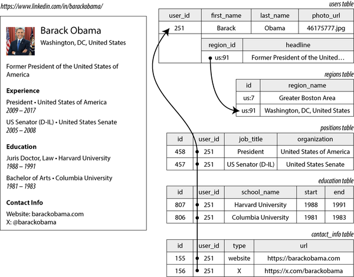
예 3-1. JSON 문서로 LinkedIn 프로필 표현
{
"user\_id": 251,
"first\_name": "Barack",
"last\_name": "Obama",
"headline": "Former President of the United States of America",
"region\_id": "us:91",
"photo\_url": "/p/7/000/253/05b/308dd6e.jpg",
"positions": \[
{"job\_title": "President", "organization": "United States of America"},
{"job\_title": "US Senator \(D-IL\)", "organization": "United States Senate"}
\],
"education": \[
{"school\_name": "Harvard University", "start": 1988, "end": 1991},
{"school\_name": "Columbia University", "start": 1981, "end": 1983}
\],
"contact\_info": {
"website": "https://barackobama.com",
"x": "https://x.com/barackobama"
}
}일부 개발자는 JSON 모델이 애플리케이션 코드와 스토리지 계층 간의 임피던스 불일치를 줄인다고 느낍니다. 스키마가 없다는 것도 종종 이점으로 언급됩니다. 이에 대해서는 “문서 모델의 스키마 유연성”에서 논의할 것입니다. 그러나 5장에서 보게 되겠지만 JSON을 데이터 인코딩 형식으로 사용하는 데도 문제가 있습니다.
JSON 표현은 그림 3-1의 다중 테이블 스키마보다 읽기 및 쓰기를 위한 지역성이 더 좋습니다(“읽기 및 쓰기를 위한 데이터 지역성” 참조). 관계형 예에서 프로필을 가져오려면 여러 쿼리를 수행하거나(user_id별로 각 테이블 쿼리) users 테이블과 그 종속 테이블 간의 지저분한 다중 방향 조인을 수행해야 합니다[9, 10 ]. JSON 표현에서는 모든 관련 정보가 한 곳에 있으므로 쿼리가 더 빠르고 간단합니다.
사용자 프로필에서 사용자의 직위, 학력 및 연락처 정보로의 1 대 다 관계는 데이터의 트리 구조를 암시하며, JSON 표현은 이 트리 구조를 명시적으로 만듭니다(그림 3-2 참조).
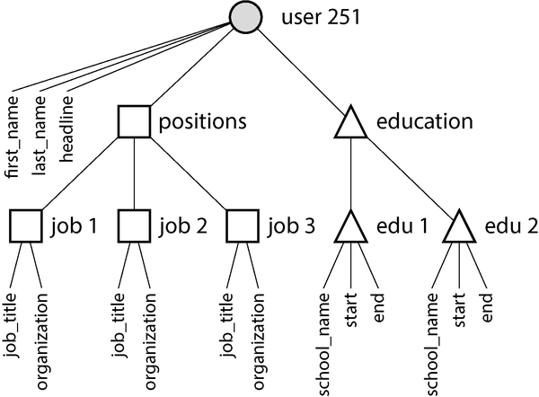
1 대 다 관계는 때때로 1 대 소수라고 불립니다. 이력서는 일반적으로 소수의 직위를 가지기 때문입니다[11, 12 ]. 진정으로 많은 수의 관련 항목(예: 수천 개가 될 수 있는 유명인 소셜 미디어 게시물의 댓글)이 있는 경우, 모두를 동일한 문서에 포함하는 것은 너무 번거로울 수 있으므로 그림 3-1의 관계형 접근 방식이 더 적합합니다.
정규화, 비정규화 및 조인
앞 섹션의 예 3-1에서 region\_id는 일반 텍스트 문자열 Washington, DC, United States가 아닌 ID로 지정되어 있습니다. 이유는 무엇인가요?
UI에 지역을 입력하기 위한 자유 텍스트 필드가 있는 경우, 일반 텍스트 문자열로 저장하는 것이 합리적입니다. 그러나 지리적 지역의 표준화된 목록을 가지고 사용자가 드롭다운 목록이나 자동완성에서 선택하도록 하는 것에는 장점이 있습니다. 여기에는 다음이 포함됩니다:
- 프로필 전반에 걸친 일관된 스타일과 철자
- 동일한 이름을 가진 여러 장소가 있는 경우 모호성 방지(문자열이 단지
Washington, DC인 경우, 그것이 DC를 가리키는지 주를 가리키는지?) - 업데이트 용이성 - 이름은 한 곳에만 저장되므로 정치적 사건(예: 도시 이름 변경)으로 인해 이름이 변경되어야 할 때 전체적으로 쉽게 업데이트할 수 있습니다.
- 현지화 지원 - 사이트가 다른 언어로 번역될 때 표준화된 목록을 현지화할 수 있으므로 지역이 시청자의 언어로 표시될 수 있습니다.
- 더 나은 검색 기능(예: 미국 동해안에 거주하는 사람 검색이 이 프로필과 일치할 수 있음, 지역 목록이 워싱턴이 동해안에 위치한다는 사실을 인코딩할 수 있기 때문이며, 이는 문자열
Washington, DC만으로는 알 수 없음)
ID를 저장할지 텍스트 문자열을 저장할지는 정규화에 관한 질문입니다. ID를 사용할 때 데이터는 더 정규화됩니다. 즉, 인간에게 의미 있는 정보(예: 텍스트 Washington, DC)는 한 곳에만 저장되고, 그것을 참조하는 모든 것은 데이터베이스 내에서만 의미가 있는 ID를 사용합니다. 텍스트를 직접 저장하면 인간에게 의미 있는 정보를 사용하는 모든 레코드에 중복되어 저장됩니다. 이 표현은 비정규화된 것입니다.
ID를 사용하는 장점은 ID가 인간에게 의미가 없으므로 절대 변경될 필요가 없다는 것입니다. ID가 식별하는 정보가 변경되어도 ID는 동일하게 유지될 수 있습니다. 인간에게 의미 있는 정보는 미래에 변경될 필요가 있을 수 있으며, 그러한 정보가 중복되어 저장된 경우 모든 중복 사본을 업데이트해야 합니다. 이는 더 많은 코드, 더 많은 쓰기 작업, 더 많은 디스크 공간을 필요로 하며 일부 사본은 업데이트되고 다른 사본은 업데이트되지 않아 불일치를 초래할 위험이 있습니다.
비정규화된 표현의 단점은 ID를 포함하는 레코드를 표시할 때마다 ID를 사람이 읽을 수 있는 것으로 해결하기 위해 추가 조회를 수행해야 한다는 것입니다. 관계형 데이터 모델에서는 조인을 사용하여 이를 수행합니다. 예를 들어:
SELECT users.*, regions.region\_name
FROM users
JOIN regions ON users.region\_id = regions.id
WHERE users.id = 251;문서 데이터베이스는 정규화된 데이터와 비정규화된 데이터를 모두 저장할 수 있지만, 종종 비정규화와 연관됩니다. 이는 부분적으로 JSON 데이터 모델이 추가 비정규화 필드를 쉽게 저장할 수 있게 하기 때문이며, 부분적으로 많은 문서 데이터베이스에서 조인 지원이 약하기 때문에 정규화가 불편하기 때문입니다. 일부 문서 데이터베이스는 조인을 전혀 지원하지 않으므로 애플리케이션 코드에서 조인을 수행해야 합니다. 즉, ID가 포함된 문서를 먼저 가져온 다음, 해당 ID를 다른 문서로 해결하기 위해 두 번째 쿼리를 수행해야 합니다. MongoDB에서는 집계 파이프라인에서 $lookup 연산자를 사용하여 조인을 수행할 수도 있습니다:
db.users.aggregate\(\[
{ $match: { \_id: 251 } },
{ $lookup: {
from: "regions",
localField: "region\_id",
foreignField: "\_id",
as: "region"
} }
\]\)정규화의 트레이드오프
이력서 예에서 region\_id 필드는 표준화된 지역 세트에 대한 참조이지만, organization(사람이 일한 회사 또는 정부)과 school\_name(사람이 공부한 곳)은 단지 문자열일 뿐입니다. 이 표현은 비정규화된 것입니다. 많은 사람이 같은 회사에서 일했을 수 있지만, 그들을 연결하는 ID는 없습니다.
조직 및 학교 이름을 개별 엔티티가 되어 이력서가 해당 ID를 참조해야 하는지 고려할 가치가 있습니다. 지역에 대한 ID 참조와 동일한 논리가 여기에도 적용됩니다. 예를 들어, 학교 또는 회사의 이름과 함께 로고를 포함하고 싶다고 가정해 보겠습니다:
- 비정규화된 표현에서는 각 개별 사람의 프로필에 로고 이미지 URL을 포함합니다. 이렇게 하면 JSON 문서가 자체 완결되지만, 로고를 변경해야 할 때마다 오래된 URL의 모든 항목을 찾아 업데이트해야 하는 두통이 발생합니다[11 ].
- 정규화된 표현에서는 조직 또는 학교를 나타내는 엔티티를 생성하고 해당 이름, 로고 URL 및 기타 속성(설명, 뉴스 피드 등)을 그 엔티티의 일부로 한 번 저장합니다. 조직을 언급하는 모든 이력서는 해당 ID만 참조하면 되며, 로고 업데이트는 쉬워집니다.
일반적인 원칙으로, 정규화된 데이터는 쓰기 속도는 더 빠릅니다(사본이 하나만 있기 때문) 하지만 쿼리 속도는 더 느립니다(조인이 필요하기 때문). 반면 비정규화된 데이터는 읽기 속도는 더 빠릅니다(조인이 더 적기 때문) 하지만 쓰기 비용이 더 많이 듭니다(더 많은 사본을 업데이트해야 하고 디스크 공간을 더 많이 사용하기 때문). 비정규화를 파생 데이터의 한 형태로 보는 것이 도움이 될 수 있습니다(“진실 기록 시스템과 파생 데이터” 참조). 중복 사본을 업데이트하는 프로세스를 설정해야 하기 때문입니다.
이러한 모든 업데이트의 비용 외에도, 프로세스가 업데이트 중간에 크래시할 경우 데이터베이스의 일관성을 고려해야 합니다. 원자적 트랜잭션(“원자성” 참조)을 제공하는 데이터베이스는 일관성을 유지하는 것을 더 쉽게 만들어 주지만, 모든 데이터베이스가 여러 문서에 걸친 원자성을 제공하는 것은 아닙니다. 스트림 처리를 통해 일관성을 보장할 수도 있으며, 12장에서 다룰 것입니다.
정규화는 일반적으로 읽기와 쓰기 모두가 빠르게 수행되어야 하는 OLTP 시스템에 더 적합하며, 분석 시스템은 대량으로 업데이트를 수행하고 읽기 전용 쿼리의 성능이 주요 관심사인 경우가 많아 비정규화된 데이터로 더 잘 작동하는 경우가 많습니다. 소규모에서 중규모 시스템의 경우 여러 사본을 일관되게 유지할 필요가 없고 조인 비용이 허용 가능하므로 정규화된 데이터 모델이 종종 최적입니다. 그러나 매우 대규모 시스템에서는 조인 비용이 문제가 될 수 있습니다.
소셜 네트워크 사례 연구에서의 비정규화
“사례 연구: 소셜 네트워크 홈 타임라인”에서는 정규화된 표현(그림 2-1)과 비정규화된 표현(사전 계산된 물질화된 타임라인)을 비교했습니다. 여기서 posts와 follows 간의 조인이 너무 비쌌으며, 물질화된 타임라인은 해당 조인의 결과를 캐시한 것입니다. 팔로워의 타임라인에 새 게시물을 삽입하는 팬아웃 프로세스가 비정규화된 표현을 일관되게 유지하는 방법이었습니다.
그러나 X(구 트위터)에서 물질화된 타임라인의 구현은 실제 게시물 텍스트를 저장하지 않습니다. 각 항목은 게시물 ID, 게시한 사용자 ID 및 리포스트와 답글을 식별하기 위한 약간의 추가 정보만 저장합니다[13 ]. 즉, 대략 다음과 같은 쿼리의 사전 계산된 결과입니다:
SELECT posts.id, posts.sender\_id FROM posts
JOIN follows ON posts.sender\_id = follows.followee\_id
WHERE follows.follower\_id = current\_user
ORDER BY posts.timestamp DESC
LIMIT 1000이는 타임라인이 읽힐 때마다 서비스가 여전히 두 번의 조인을 수행해야 함을 의미합니다. 즉, 게시물 ID를 조회하여 실제 게시물 콘텐츠(좋아요 및 답글 수와 같은 통계 포함)를 가져오고, 발신자의 프로필을 ID별로 조회하여 사용자 이름, 프로필 사진 및 기타 세부 정보를 가져옵니다. ID별로 사람 읽을 수 있는 정보를 조회하는 이 과정은 ID 수분화(hydrating the IDs)라고 하며, 기본적으로 애플리케이션 코드에서 수행되는 조인입니다[13 ].
사전 계산된 타임라인에 ID만 저장하는 이유는 해당 데이터가 빠르게 변경되기 때문입니다. 인기 게시물의 좋아요 및 답글 수는 초당 여러 번 변경될 수 있으며, 일부 사용자는 정기적으로 사용자 이름이나 프로필 사진을 변경합니다. 타임라인이 볼 때 최신 좋아요 수와 프로필 사진을 표시해야 하므로, 이러한 정보를 물질화된 타임라인에 비정규화하는 것은 의미가 없습니다. 더욱이 그러한 비정규화는 스토리지 비용을 상당히 증가시킬 것입니다.
이 예는 데이터를 읽을 때 조인을 수행해야 하는 것이 때때로 주장되는 것처럼 고성능 및 확장 가능한 서비스를 만드는 데 장애가 아니라는 것을 보여줍니다. 게시물 및 사용자 ID를 수분화하는 것은 실제로 확장하기 쉬운 작업이며, 비용은 팔로우하는 계정 수나 팔로워 수에 의존하지 않습니다.
애플리케이션에서 무언가를 비정규화할지 결정해야 하는 경우, 소셜 네트워크 사례 연구는 선택이 즉시 분명하지 않음을 보여줍니다. 가장 확장 가능한 접근 방식은 일부 사항을 비정규화하고 다른 사항을 정규화하는 것을 포함할 수 있습니다. 정보가 얼마나 자주 변경되는지와 읽기 및 쓰기 비용(비정상적인 경우, 예: 일반적인 소셜 네트워크에서 많은 팔로우/팔로워를 가진 사용자에 의해 지배될 수 있음)을 신중하게 고려해야 합니다. 정규화와 비정규화는 본질적으로 좋거나 나쁘지 않습니다. 읽기 및 쓰기 성능과 구현 노력 측면에서 트레이드오프를 나타낼 뿐입니다.
1 대 다 및 다 대 다 관계
그림 3-1의 positions 및 education 테이블은 1 대 다 또는 1 대 소수 관계의 예입니다(한 이력서에 여러 직위가 있지만 각 직위는 하나의 이력서에만 속함). 반면 region\_id 필드는 다 대 1 관계의 예입니다(많은 사람이 같은 지역에 거주하지만 각 사람은 한 번에 한 지역에만 거주한다고 가정).
이력서에 조직 및 학교 엔티티를 도입하고 ID로 참조하면, 다 대 다 관계(한 사람이 여러 조직에서 일할 수 있고, 조직에는 여러 과거 또는 현재 직원이 있을 수 있음)도 갖게 됩니다. 관계형 모델에서 이러한 관계는 일반적으로 결합 테이블 또는 조인 테이블로 표현되며, 그림 3-3에 표시된 대로 각 직위는 한 사용자 ID와 한 조직 ID를 연결합니다.
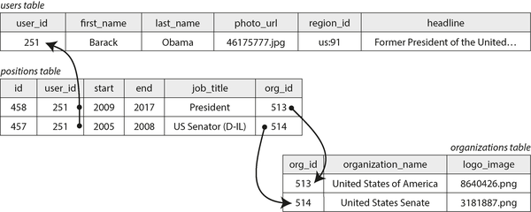
1 대 다 및 다 대 다 관계는 단일 자체 완결 JSON 문서에 쉽게 맞지 않으며, 정규화된 표현에 더 적합합니다. 문서 모델에서 가능한 표현 중 하나는 예 3-2에 나와 있으며 그림 3-4에 설명되어 있습니다. 점선 사각형 내의 데이터는 하나의 문서로 그룹화될 수 있지만, 조직 및 학교에 대한 링크는 다른 문서에 대한 참조로 가장 잘 표현됩니다.
예 3-2. 조직을 ID로 참조하는 이력서
{
"user\_id": 251,
"first\_name": "Barack",
"last\_name": "Obama",
"positions": \[
{"start": 2009, "end": 2017, "job\_title": "President", "org\_id": 513},
{"start": 2005, "end": 2008, "job\_title": "US Senator \(D-IL\)", "org\_id": 514}
\],
...
}다 대 다 관계는 종종 “두 방향”으로 쿼리해야 합니다. 예를 들어, 특정 사람이 일한 모든 조직을 찾고, 특정 조직에서 일한 모든 사람을 찾는 것입니다. 이러한 쿼리를 가능하게 하는 한 가지 방법은 ID 참조를 양쪽에 저장하는 것입니다. 즉, 이력서는 사람이 일한 각 조직의 ID를 포함하고, 조직 문서는 해당 조직을 언급하는 이력서의 ID를 포함합니다. 이 표현은 비정규화된 것입니다. 관계가 두 곳에 저장되므로 서로 일관성이 없어질 수 있기 때문입니다.
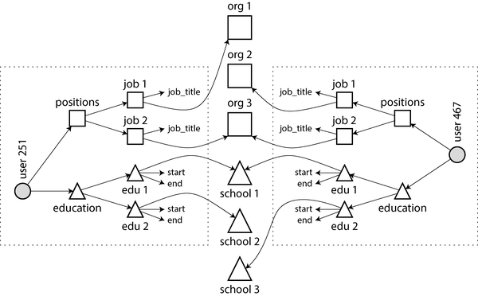
정규화된 표현은 관계를 한 곳에만 저장하며, 관계를 양방향으로 효율적으로 쿼리할 수 있도록 하는 보조 인덱스(4장에서 다룸)에 의존합니다. 그림 3-3에 표시된 관계형 스키마에서는 positions 테이블의 user\_id 및 org\_id 열에 인덱스를 생성하도록 데이터베이스에 지시할 것입니다.
예 3-2의 문서 모델에서는 데이터베이스가 positions 배열 내 객체의 org\_id 필드에 인덱스를 생성해야 합니다. 많은 문서 데이터베이스와 JSON 지원이 있는 관계형 데이터베이스는 문서 내 값에 대해 이러한 인덱스를 생성할 수 있습니다.
별 스키마와 눈송이 스키마: 분석을 위한 스키마
데이터 웨어하우스(“데이터 웨어하우징” 참조)는 일반적으로 관계형이며, 데이터 웨어하우스의 테이블 구조에는 몇 가지 널리 사용되는 관례가 있습니다. 즉, 별 스키마, 눈송이 스키마, 차원 모델링[14 ], 그리고 단일 대형 테이블(OBT)입니다. 이러한 구조는 비즈니스 분석가의 요구 사항에 최적화되어 있습니다. ETL 프로세스는 운영 시스템의 데이터를 선택된 스키마로 변환합니다.
그림 3-5는 식료품 소매점의 데이터 웨어하우스에 있을 수 있는 별 스키마의 예를 보여줍니다. 스키마 중앙에는 사실 테이블(fact table, 이 예에서는 fact\_sales이라고 함)이 있습니다. 사실 테이블의 각 행은 특정 시간에 발생한 이벤트를 나타냅니다(여기서 각 행은 고객이 제품을 구매한 것을 나타냅니다). 웹 트래픽을 분석하는 경우라면 각 행이 사용자의 페이지 조회 또는 클릭을 나타낼 수 있습니다.
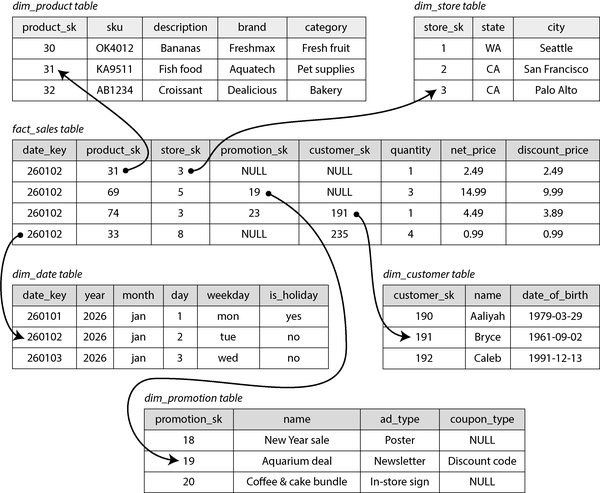
일반적으로 사실은 개별 이벤트로 캡처됩니다. 이렇게 하면 이후 분석에 최대 유연성을 확보할 수 있습니다. 그러나 이는 사실 테이블이 극도로 커질 수 있음을 의미합니다. 대기업은 데이터 웨어하우스에 수 페타바이트의 트랜잭션 기록을 보유할 수 있으며, 대부분 사실 테이블로 표현됩니다.
사실 테이블의 일부 열은 속성(예: 제품이 판매된 가격 및 공급업체로부터 구매한 비용으로 이익률을 계산할 수 있도록 허용)입니다. 사실 테이블의 다른 열은 차원 테이블로 알려진 다른 테이블에 대한 외부 키 참조입니다. 사실 테이블의 각 행이 이벤트를 나타내는 경우, 차원은 이벤트의 누가, 무엇, 어디서, 언제, 어떻게, 왜를 나타냅니다.
예를 들어 그림 3-5에서 하나의 차원은 판매된 제품입니다. dim\_product 테이블의 각 행은 판매되는 하나의 제품 유형을 나타내며, 여기에는 재고 유지 단위(SKU), 설명, 브랜드 이름, 카테고리, 지방 함량 및 패키지 크기가 포함됩니다. fact\_sales 테이블의 각 행은 외부 키를 사용하여 해당 트랜잭션에서 어떤 제품이 판매되었는지 나타냅니다. 쿼리는 종종 여러 차원 테이블에 대한 여러 조인을 포함합니다.
날짜와 시간조차도 종종 차원 테이블로 표현됩니다. 이렇게 하면 날짜에 대한 추가 정보(예: 공휴일)를 인코딩하여 쿼리가 공휴일 및 비공휴일 판매를 구분할 수 있게 하기 때문입니다.
별 스키마라는 이름은 테이블 관계를 시각화할 때 사실 테이블이 중앙에 있고 그 주위에 차원 테이블이 둘러싸여(그림 3-5에 표시된 대로), 이 연결이 별의 광선과 같기 때문에 붙여졌습니다.
이 템플릿의 변형은 눈송이 스키마입니다. 눈송이 스키마에서는 차원이 더 세분화된 하위 차원으로 분해됩니다. 예를 들어 브랜드와 제품 카테고리에 대한 별도 테이블이 있을 수 있으며, dim\_product 테이블의 각 행은 브랜드와 카테고리를 문자열로 dim\_product 테이블에 저장하는 대신 외부 키로 참조할 수 있습니다. 눈송이 스키마는 별 스키마보다 더 정규화되어 있지만, 분석가가 작업하기 더 간단하므로 별 스키마가 종종 선호됩니다[14 ].
일반적인 데이터 웨어하우스에서는 테이블이 종종 매우 넓습니다. 사실 테이블은 종종 100개 이상의 열, 때로는 수백 개의 열을 가집니다. 차원 테이블도 넓을 수 있으며, 분석에 관련될 수 있는 모든 메타데이터를 포함하기 때문입니다. 예를 들어, dim\_store 테이블은 각 매장에서 제공되는 서비스, 매장 내 베이커리 보유 여부, 매장 면적, 매장 개점일, 마지막 리모델링일, 가장 가까운 고속도로까지의 거리 등을 포함할 수 있습니다.
별 또는 눈송이 스키마는 대부분 다 대 1 관계(예: 많은 판매가 특정 제품, 특정 매장에서 발생함)로 구성되며, 이는 사실 테이블이 차원 테이블에 대한 외부 키를 갖거나, 차원이 하위 차원에 대한 외부 키를 갖는 것으로 표현됩니다. 원칙적으로 다른 관계 유형이 존재할 수 있지만, 쿼리를 단순화하기 위해 종종 비정규화됩니다. 예를 들어, 고객이 한 번에 여러 제품을 구매하는 경우, 해당 다중 항목 트랜잭션은 명시적으로 표현되지 않습니다. 대신 사실 테이블에는 구매된 각 제품에 대한 별도 행이 있으며, 해당 사실들은 모두 동일한 고객 ID, 매장 ID 및 타임스탬프를 가집니다.
일부 데이터 웨어하우스 스키마는 비정규화를 더 나아가 차원 테이블을 완전히 생략하고 차원의 정보를 사실 테이블의 비정규화된 열에 접는 것으로 대체합니다(본질적으로 사실 테이블과 차원 테이블 간의 조인을 사전 계산함). 이 접근 방식은 단일 대형 테이블(One Big Table, OBT)으로 알려져 있으며 더 많은 스토리지 공간을 필요로 하지만 때로는 쿼리를 더 빠르게 할 수 있습니다[15 ].
분석의 맥락에서 이러한 비정규화는 문제가 되지 않습니다. 데이터는 일반적으로 변경되지 않는 과거 데이터 로그를 나타내기 때문입니다(실수를 가끔 수정하는 경우 제외). OLTP 시스템에서 비정규화와 함께 발생하는 데이터 일관성 및 쓰기 오버헤드 문제는 분석에서는 덜 시급합니다.
어떤 모델을 사용할 것인가
문서 데이터 모델을 지지하는 주요 논거는 스키마 유연성, 지역성으로 인한 더 나은 성능, 그리고 일부 애플리케이션에서는 애플리케이션이 사용하는 객체 모델에 더 가깝다는 것입니다. 관계형 모델은 조인과 다 대 1 및 다 대 다 관계에 대한 더 나은 지원을 제공함으로써 이에 맞서 싸웁니다. 이러한 논거를 더 자세히 살펴보겠습니다.
애플리케이션의 데이터가 문서와 같은 구조(일반적으로 전체 트리가 한 번에 로드되는 1 대 다 관계의 트리)를 가진다면, 문서 모델을 사용하는 것이 좋습니다. 관계형 기법인 파쇄(shredding, 문서와 같은 구조를 여러 테이블로 분할, 그림 3-1의 positions, education 및 contact_info 등)는 부담스럽고 불필요하게 복잡한 애플리케이션 코드로 이어질 수 있습니다.
문서 모델에는 제한 사항이 있습니다. 예를 들어 문서 내 중첩된 항목을 직접 참조할 수 없습니다. 대신 “사용자 251의 직위 목록에서 두 번째 항목”이라고 말해야 합니다. 중첩된 항목을 참조해야 하는 경우 관계형 접근 방식이 더 잘 작동합니다. 항목을 직접 ID로 참조할 수 있기 때문입니다.
일부 애플리케이션은 사용자가 항목의 순서를 선택할 수 있도록 합니다. 예를 들어, 사용자가 드래그 앤 드롭으로 작업을 다시 정렬할 수 있는 할 일 목록 또는 이슈 트래커를 상상해 보십시오. 문서 모델은 이러한 애플리케이션을 잘 지원합니다. 항목(또는 해당 ID)을 단순히 JSON 배열에 저장하여 순서를 결정할 수 있기 때문입니다. 관계형 데이터베이스에서는 그러한 재정렬 가능한 목록을 나타내는 표준 방법이 없으며, 다양한 트릭이 사용됩니다(예: 정수 열로 정렬하고 중간에 삽입할 때 다시 번호를 매기기, ID의 연결 목록 유지, 분수 인덱싱 사용[16, 17, 18 ]).
문서 모델의 스키마 유연성
대부분의 문서 데이터베이스와 관계형 데이터베이스의 JSON 지원은 문서 내 데이터에 대해 어떤 스키마도 강제하지 않습니다. 관계형 데이터베이스의 XML 지원은 일반적으로 선택적 스키마 검증을 제공합니다. 스키마가 없으면 문서에 임의의 키와 값을 추가할 수 있으며, 읽을 때 클라이언트는 문서에 어떤 필드가 포함되어 있을지 보장을 받을 수 없습니다.
문서 데이터베이스는 때로는 스키마 없는(schemaless)이라고 불리지만, 이는 오해의 소지가 있습니다. 데이터를 읽는 코드가 일반적으로 어떤 구조를 가정하기 때문입니다. 즉, 암묵적인 스키마는 있지만 데이터베이스가 이를 강제하지 않습니다[19 ]. 더 정확한 용어는 읽기 시 스키마(schema-on-read)입니다. 데이터의 구조는 암묵적이며 데이터가 읽힐 때만 해석됩니다. 이는 쓰기 시 스키마(schema-on-write)와 대조됩니다. 쓰기 시 스키마는 관계형 데이터베이스의 전통적인 접근 방식으로, 스키마가 명시적이며 데이터베이스가 데이터가 작성될 때 모든 데이터가 이에 부합하도록 보장합니다[20 ].
읽기 시 스키마는 프로그래밍 언어의 동적(런타임) 타입 검사와 유사하며, 쓰기 시 스키마는 정적(컴파일 시간) 타입 검사와 유사합니다. 정적 타입 검사와 동적 타입 검사의 옹호자들이 상대적인 장점에 대해 큰 논쟁을 벌이는 것처럼[21 ], 데이터베이스의 스키마 강제에 대해서도 논쟁의 여지가 있으며, 일반적으로 명확한 승자는 없습니다.
이 두 접근 방식의 차이는 애플리케이션이 데이터 형식을 변경하려 할 때 특히 두드러집니다. 예를 들어, 현재 사용자의 전체 이름을 하나의 필드에 저장하고 있고, 대신 이름과 성을 별도로 저장하려 한다고 가정해 보겠습니다[22 ]. 문서 데이터베이스에서는 새로운 필드를 가진 새 문서를 작성하기만 하면 되고, 애플리케이션에 오래된 문서가 읽힐 때를 처리하는 코드를 두면 됩니다. 예를 들어:
if (user && user.name && !user.first_name) {
// 2023년 12월 8일 이전에 작성된 문서에는 first_name이 없음
user.first_name = user.name.split(" ")[0];
}이 접근 방식의 단점은 데이터베이스에서 읽는 애플리케이션의 모든 부분이 이제 매우 오래전에 작성된 이전 형식의 문서도 처리해야 한다는 것입니다. 반면, 쓰기 시 스키마 데이터베이스에서는 일반적으로 다음과 같은 마이그레이션을 수행합니다:
ALTER TABLE users ADD COLUMN first_name text DEFAULT NULL;
UPDATE users SET first_name = split_part(name, ' ', 1); -- PostgreSQL
UPDATE users SET first_name = substring_index(name, ' ', 1); -- MySQL대부분의 관계형 데이터베이스에서 기본값을 가진 열을 추가하는 것은 대규모 테이블에서도 빠르고 문제없이 수행됩니다. 그러나 UPDATE 문을 실행하는 것은 각 행을 다시 작성해야 하므로 대규모 테이블에서는 느릴 가능성이 높으며, 다른 스키마 작업(예: 열의 데이터 타입 변경)은 일반적으로 전체 테이블 복사를 필요로 합니다.
다운타임 없이 백그라운드에서 이러한 유형의 스키마 변경을 수행할 수 있는 다양한 도구가 존재합니다[23, 24, 25, 26 ], 그러나 대규모 데이터베이스에서 이러한 마이그레이션을 수행하는 것은 여전히 운영상 어려울 수 있습니다. 복잡한 마이그레이션은 first_name 열을 기본값 NULL(빠른 작업)으로 추가하고 읽을 때 채우는 방식으로 피할 수 있습니다. 문서 데이터베이스와 마찬가지로 말입니다.
읽기 시 스키마 접근 방식은 컬렉션의 항목이 모두 동일한 구조를 가지지 않을 때(즉, 데이터가 이질적일 때) 유리합니다. 예를 들어:
- 많은 유형의 객체가 있으며 각 유형의 객체를 자체 테이블에 두는 것이 실용적이지 않을 수 있습니다.
- 데이터의 구조는 변경될 수 있는 외부 시스템에 의해 결정되며, 우리가 통제할 수 없습니다.
이러한 상황에서 스키마는 도움이 되기보다 방해가 될 수 있으며, 스키마 없는 문서는 훨씬 더 자연스러운 데이터 모델이 될 수 있습니다. 그러나 모든 레코드가 동일한 구조를 가질 것으로 예상되는 경우, 스키마는 해당 구조를 문서화하고 강제하는 유용한 메커니즘입니다. 우리는 스키마와 스키마 진화에 대해 5장에서 더 자세히 논의할 것입니다.
읽기 및 쓰기를 위한 데이터 지역성
문서는 일반적으로 단일 연속 문자열(JSON, XML 또는 이진 변형, 예를 들어 MongoDB의 BSON)으로 저장됩니다. 애플리케이션이 종종 전체 문서에 접근해야 하는 경우(예: 웹 페이지에 렌더링하기 위해), 이 저장 지역성은 성능상의 이점을 가집니다. 데이터가 여러 테이블에 분산되어 있는 경우(그림 3-1 참조), 모든 데이터를 검색하려면 여러 인덱스 조회가 필요하며, 더 많은 디스크 탐색이 필요하고 시간이 더 걸릴 수 있습니다.
지역성 이점은 문서의 큰 부분을 동시에 필요로 하는 경우에만 적용됩니다. 데이터베이스는 일반적으로 전체 문서를 로드해야 하므로, 큰 문서의 작은 부분에만 접근해야 하는 경우 낭비가 될 수 있습니다. furthermore, 문서 업데이트 시 전체 문서를 다시 작성해야 하는 경우가 많습니다. 이러한 이유로 문서를 상당히 작게 유지하고 빈번한 작은 업데이트를 피하는 것이 일반적으로 권장됩니다.
그러나 관련된 데이터를 함께 저장하여 지역성을 확보하는 것은 문서 모델에만 국한된 것은 아닙니다. 예를 들어, Google의 Spanner 데이터베이스는 스키마가 테이블의 행이 상위 테이블 내에 교차(중첩)되어야 한다고 선언할 수 있도록 하여 관계형 데이터 모델에서 동일한 지역성 속성을 제공합니다[27 ]. Oracle은 다중 테이블 인덱스 클러스터 테이블(multi-table index cluster tables)이라는 기능을 사용하여 동일한 작업을 수행합니다[28 ]. Google의 Bigtable에 의해 대중화되고 HBase 및 Accumulo와 같이 사용되는 광범위 열(wide-column) 데이터 모델은 열 패밀리(column families)를 가지고 있으며, 이는 비슷한 목적인 지역성 관리를 수행합니다[29 ].
문서에 대한 쿼리 언어
관계형 데이터베이스와 문서 데이터베이스 간의 또 다른 차이는 쿼리하는 데 사용되는 언어 또는 API입니다. 대부분의 관계형 데이터베이스는 SQL로 쿼리되지만, 문서 데이터베이스는 더 다양합니다. 일부는 기본 키에 의한 키-값 접근만 허용하는 반면, 다른 것들은 문서 내 값에 대한 쿼리를 위한 보조 인덱스를 제공하기도 하고, 어떤 것들은 풍부한 쿼리 언어를 제공합니다.
XML 데이터베이스는 종종 XQuery와 XPath를 사용하여 쿼리됩니다. 이는 여러 문서에 걸친 조인을 포함한 복잡한 쿼리를 가능하게 하고 결과를 XML로 포맷팅하도록 설계되었습니다[30 ]. JSON Pointer[31 ]와 JSONPath[32 ]는 JSON에 대한 XPath에 해당하는 기능을 제공합니다. MongoDB의 집계 파이프라인은(“정규화, 비정규화 및 조인”에서 본 조인을 위한 $lookup 연산자를 포함) JSON 문서 컬렉션에 대한 쿼리 언어의 예입니다.
이 언어에 대한 느낌을 얻기 위해 또 다른 예를 살펴보겠습니다. 이번에는 집합입니다. 해양 생물학자라고 가정하고, 바다에서 동물을 볼 때마다 데이터베이스에 관찰 기록을 추가한다고 합시다. 이제 상어를 월별로 얼마나 목격했는지 보고하는 보고서를 생성하고자 합니다. PostgreSQL에서는 다음과 같이 쿼리를 표현할 수 있습니다:
SELECT date_trunc('month', observation_timestamp) AS observation_month, 
sum(num_animals) AS total_animals
FROM observations
WHERE family = 'Sharks'
GROUP BY observation_month;date_trunc('month', observation_timestamp) 함수는 timestamp가 포함된 달력을 결정하고 해당 달의 시작을 나타내는 다른 타임스탬프를 반환합니다. 다시 말해, 이 함수는 타임스탬프를 가장 가까운 달로 반올림합니다.
이 쿼리는 먼저 Sharks 계열의 종만 표시하도록 관찰 기록을 필터링한 다음, 발생한 달력 월별로 그룹화하고, 마지막으로 해당 월의 모든 관찰 기록에서 본 동물의 수를 합산합니다. 동일한 쿼리는 MongoDB의 집계 파이프라인으로 다음과 같이 표현할 수 있습니다:
db.observations.aggregate([
{ $match: { family: "Sharks" } },
{ $group: {
_id: {
year: { $year: "$observationTimestamp" },
month: { $month: "$observationTimestamp" }
},
totalAnimals: { $sum: "$numAnimals" }
} }
]);집계 파이프라인 언어는 SQL의 영어 문장 스타일 구문 대신 JSON 기반 구문을 사용한다는 점을 제외하면 표현력면에서 SQL의 하위 집합과 유사합니다. 차이는 아마도 취향의 문제일 수 있습니다.
문서 데이터베이스와 관계형 데이터베이스의 수렴
문서 데이터베이스와 관계형 데이터베이스는 처음에 데이터 관리에 대한 매우 다른 접근 방식이었지만, 시간이 지남에 따라 더욱 유사해졌습니다[33 ]. 관계형 데이터베이스는 JSON 유형 및 쿼리 연산자 지원과 문서 내 속성에 대한 인덱스 기능을 추가했습니다. 일부 문서 데이터베이스(MongoDB, Couchbase 및 RethinkDB 등)는 조인, 보조 인덱스 및 선언형 쿼리 언어 지원을 추가했습니다.
모델의 이러한 수렴은 애플리케이션 개발자에게 좋은 소식입니다. 관계형 모델과 문서 모델을 동일한 데이터베이스에서 함께 사용할 수 있을 때 가장 잘 작동하기 때문입니다. 많은 문서 데이터베이스는 관계형 스타일의 다른 문서에 대한 참조가 필요하며, 많은 관계형 데이터베이스는 스키마 유연성이 유리한 섹션을 가지고 있습니다. 관계형-문서 하이브리드는 강력한 조합입니다.
Codd의 원래 관계형 모델 설명[4 ]은 관계형 스키마 내에 JSON과 유사한 것을 허용했습니다. 그는 이를 단순하지 않은 도메인(nonsimple domains)이라고 불렀습니다. 아이디어는 행의 값이 숫자나 문자열과 같은 원시 데이터 타입일 필요가 없으며, 중첩된 관계(테이블)일 수도 있다는 것입니다. 이를 통해 값으로 임의로 중첩된 트리 구조를 가질 수 있습니다. 이 구조는 30년 이상 뒤에 SQL에 추가된 JSON 및 XML 지원과 비교할 수 있습니다.
그래프 유사 데이터 모델
앞에서 보았듯이 관계 유형은 데이터 모델 간의 중요한 구별 특징입니다. 애플리케이션에 주로 1 대 다 관계(트리 구조 데이터)가 있고 레코드 간의 다른 관계가 거의 없다면 문서 모델이 적절합니다.
하지만 다 대 다 관계가 데이터에서 매우 흔하다면 어떻게 될까요? 관계형 모델은 다 대 다 관계의 간단한 경우를 처리할 수 있지만, 데이터 내의 연결이 더 복잡해지면 데이터를 그래프로 모델링하는 것이 더 자연스러워집니다.
그래프는 두 종류의 객체, 정점(노드 또는 엔티티라고도 함)과 간선(관계 또는 아크라고도 함)으로 구성됩니다. 많은 종류의 데이터를 그래프로 모델링할 수 있습니다. 대표적인 예로는 다음과 같습니다:
소셜 그래프
정점은 사람, 간선은 어떤 사람들이 서로 아는지를 나타냅니다.
웹 그래프
정점은 웹 페이지, 간선은 다른 페이지로의 HTML 링크를 나타냅니다.
도로 또는 철도망
정점은 교차로, 간선은 그 사이의 도로나 철도 노선을 나타냅니다.
잘 알려진 알고리즘이 이러한 그래프에서 작동할 수 있습니다. 예를 들어, 맵 내비게이션 앱은 도로망에서 두 지점 사이의 최단 경로를 찾고, PageRank는 웹 그래프에서 웹 페이지의 인기도를 결정하여 검색 결과에서 순위를 매길 수 있습니다[34 ].
그래프를 표현하는 방법에는 여러 가지가 있습니다. 인접 리스트 모델에서는 각 정점이 한 간선 떨어진 이웃 정점의 ID를 저장합니다. 또는 인접 행렬을 사용할 수 있는데, 이는 2차원 배열로서 각 행과 열은 정점에 대응하며, 행 정점과 열 정점 사이에 간선이 없으면 0, 있으면 1입니다. 인접 리스트는 그래프 순회에 적합하고, 행렬은 머신러닝(“DataFrames, Matrices, and Arrays” 참조)에 적합합니다.
지금까지의 예에서 그래프의 모든 정점은 같은 종류의 것(사람, 웹 페이지, 도로 교차로 등)을 나타냅니다. 그러나 그래프는 그러한 동질적인 데이터에 국한되지 않습니다. 완전히 다른 유형의 객체를 단일 데이터베이스에 일관된 방식으로 저장하는 그래프의 동등하게 강력한 용도가 있습니다. 예를 들어:
- Facebook은 다양한 유형의 정점과 간선이 있는 단일 그래프를 유지합니다. 정점은 사람, 위치, 이벤트, 체크인, 사용자가 작성한 댓글을 나타내고, 간선은 어떤 사람들이 친구인지, 어떤 체크인이 어떤 위치에서 발생했는지, 누가 어떤 게시물에 댓글을 달았는지, 누가 어떤 이벤트에 참석했는지 등을 나타냅니다[35 ].
- 검색 엔진은 검색 쿼리에서 자주 발생하는 엔티티(조직, 사람, 장소 등)에 대한 사실을 기록하는 지식 그래프를 사용합니다[36 ]. 이 정보는 웹사이트의 텍스트를 크롤링하고 분석하여 얻어지며, Wikidata와 같은 일부 웹사이트는 구조화된 형태로 그래프 데이터를 게시합니다.
그래프는 데이터를 구조화하고 쿼리하는 여러 가지 관련 방법을 제공합니다. 이 섹션에서는 프로퍼티 그래프 모델(Neo4j, Memgraph, KùzuDB[37 ] 및 기타[38 ]에서 구현됨)과 트리플 스토어 모델(Datomic, AllegroGraph, Blazegraph 등에서 구현됨)에 대해 논의할 것입니다. 이러한 모델은 표현할 수 있는 바에서 상당히 유사하며, 일부 그래프 데이터베이스(Amazon Neptune 등)는 둘 다 지원합니다.
또한 그래프 쿼리 언어 네 가지(Cypher, SPARQL, Datalog 및 GraphQL)와 그래프 쿼리를 위한 SQL 지원에 대해 살펴볼 것입니다. Gremlin[39 ]과 같은 다른 그래프 쿼리 언어가 존재하지만, 이들로 대표적인 개요를 제공할 것입니다.
이러한 언어와 모델을 설명하기 위해 이 섹션은 그림 3-6을 실행 예제로 사용합니다. 이는 소셜 네트워크 또는 계보 데이터베이스에서 가져올 수 있으며, Lucy(Idaho 출신)와 Alain(프랑스 Saint-Lô 출신) 두 사람을 보여줍니다. 그들은 결혼하여 런던에 살고 있습니다. 각 사람과 각 위치는 정점으로 표현되고, 그들 간의 관계는 간선으로 표현됩니다. 이 예는 다른 데이터 모델에서는 어렵지만 그래프 데이터베이스에서는 쉬운 쿼리 몇 가지를 보여주는 데 도움이 될 것입니다.
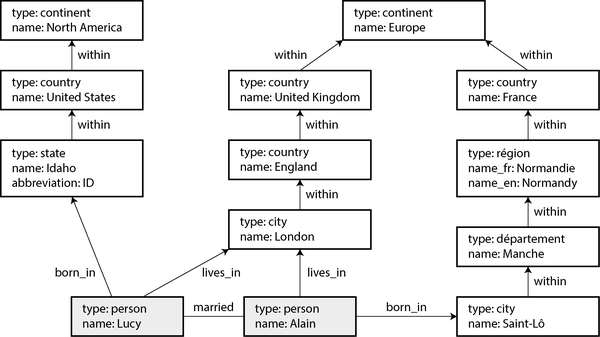
프로퍼티 그래프
프로퍼티 그래프(레이블 속성 그래프라고도 함) 모델에서 각 정점은 다음을 포함합니다:
- 고유 식별자
- 이 정점이 나타내는 객체 유형을 설명하는 문자열 레이블
- 나가는 간선 집합
- 들어오는 간선 집합
- 속성 컬렉션(키-값 쌍)
각 간선은 다음을 포함합니다:
- 고유 식별자
- 간선이 시작되는 정점(꼬리 정점)
- 간선이 끝나는 정점(머리 정점)
- 두 정점 간의 관계 종류를 설명하는 레이블
- 속성 컬렉션(키-값 쌍)
그래프 스토어는 정점을 위한 테이블과 간선을 위한 테이블 두 개의 관계형 테이블로 구성된 것으로 생각할 수 있으며, 이는 예 3-3에 표시됩니다(이 스키마는 각 정점 또는 간선의 속성을 저장하기 위해 PostgreSQL의 jsonb 데이터 타입을 사용합니다). 머리 및 꼬리 정점은 각 간선에 대해 저장되며, 정점에 대한 나가는 간선 또는 들어오는 간선 집합을 찾으려면 각각 head_vertex 또는 tail_vertex로 edges 테이블을 쿼리할 수 있습니다(따라서 예 3-3에는 tail_vertex 및 head_vertex 열 모두에 인덱스가 있습니다).
예 3-3. 관계형 스키마로 프로퍼티 그래프 표현
CREATE TABLE vertices (
vertex_id integer PRIMARY KEY,
label text,
properties jsonb
);
CREATE TABLE edges (
edge_id integer PRIMARY KEY,
tail_vertex integer REFERENCES vertices (vertex_id),
head_vertex integer REFERENCES vertices (vertex_id),
label text,
properties jsonb
);
CREATE INDEX edges_tails ON edges (tail_vertex);
CREATE INDEX edges_heads ON edges (head_vertex);이 모델의 중요한 측면은 다음과 같습니다:
- 어떤 정점이든 다른 어떤 정점과 연결되는 간선을 가질 수 있습니다. 어떤 종류의 것이 연결될 수 있고 연결될 수 없는지를 제한하는 스키마는 없습니다.
- 임의의 정점을 주어지면, 해당 정점의 나가는 간선과 들어오는 간선을 모두 효율적으로 찾을 수 있으므로 정점의 체인을 따라 앞으로 또는 뒤로 그래프를 순회할 수 있습니다.
- 서로 다른 종류의 정점과 관계에 대해 다른 레이블을 사용함으로써, 깨끗한 데이터 모델을 유지하면서 여러 종류의 정보를 단일 그래프에 저장할 수 있습니다.
edges 테이블은 “다 대 1 및 다 대 다 관계”에서 본 다 대 다 결합 또는 조인 테이블과 유사하지만, 동일한 테이블에 여러 유형의 관계를 저장할 수 있도록 일반화된 것입니다. 레이블과 속성에 대한 인덱스도 있을 수 있으며, 이를 통해 특정 속성을 가진 정점이나 간선을 효율적으로 찾을 수 있습니다.
그래프 모델의 한계는 간선이 두 정점만 연결할 수 있다는 점입니다. 반면 관계형 조인 테이블은 단일 행에 여러 외부 키 참조를 두어 3차 또는 그 이상의 관계를 표현할 수 있습니다. 그러한 관계는 조인 테이블의 각 행에 해당하는 추가 정점을 생성하고 그 정점과의 간선을 만드는 방식으로 또는 하이퍼그래프를 사용하여 그래프로 표현할 수 있습니다.
이러한 기능은 그래프에 데이터 모델링에 대한 큰 유연성을 제공하며, 그림 3-6에 설명되어 있습니다. 그림은 관계형 스키마로 표현하기 어려운 몇 가지 사항을 보여줍니다. 예를 들어, 서로 다른 국가의 다양한 지역 구조(프랑스에는 départements 및 régions가 있는 반면, 미국에는 counties 및 states가 있음), 국가 내 국가와 같은 역사적 특이사항(주권 국가와 국가의 복잡성은 무시), 데이터 세분성의 차이(Lucy의 현재 거주지는 도시로 명시되어 있지만, 출생지는 주 수준으로만 명시됨) 등이 있습니다.
Lucy와 Alain에 대한 다른 많은 사실이나 다른 사람들을 그래프에 추가할 수도 있습니다. 예를 들어 그래프를 사용하여 그들이 가진 음식 알레르기를 나타낼 수 있습니다(각 알레르겐에 대한 정점을 도입하고, 사람과 알레르겐 사이의 간선을 통해 알레르기를 나타냄). 그런 다음 알레르겐을 어떤 음식이 어떤 물질을 포함하는지 보여주는 일련의 정점과 연결할 수 있습니다. 그러면 각 사람이 안전하게 먹을 수 있는 것을 찾는 쿼리를 작성할 수 있습니다. 그래프는 진화 가능성에 좋습니다. 애플리케이션에 기능을 추가함에 따라 그래프는 애플리케이션의 데이터 구조의 변화를 쉽게 수용할 수 있습니다.
Cypher 쿼리 언어
Cypher는 프로퍼티 그래프에 대한 쿼리 언어로, 원래 Neo4j 그래프 데이터베이스를 위해 만들어졌으며 나중에 오픈 표준인 openCypher[40 ]로 개발되었습니다. Neo4j 외에도 Cypher는 Memgraph, KùzuDB[37 ], Amazon Neptune, PostgreSQL에 스토리지가 있는 Apache AGE 및 기타에서 지원됩니다. 이 언어는 영화 매트릭스의 캐릭터 이름을 딴 것이며 암호학의 암호와는 관련이 없습니다[41 ].
예 3-4는 그림 3-6의 왼쪽 부분을 그래프 데이터베이스에 삽입하는 Cypher 쿼리를 보여줍니다. 나머지 그래프도 마찬가지로 추가할 수 있습니다. 각 정점은 usa 또는 idaho와 같은 기호적 이름을 가지며, 그 이름은 데이터베이스에 저장되지 않고 쿼리 내부에서만 정점 간의 간선을 생성하는 데 사용됩니다. 화살표 표기를 사용합니다: (idaho)-[:WITHIN]->(usa)는 꼬리 노드가 idaho이고 머리 노드가 usa인 WITHIN 레이블이 지정된 간선을 만듭니다.
예 3-4. 그림 3-6의 데이터 일부를 Cypher 쿼리로 표현
CREATE
(namerica :Location {name:'North America', type:'continent'}),
(usa :Location {name:'United States', type:'country' }),
(idaho :Location {name:'Idaho', type:'state' }),
(lucy :Person {name:'Lucy'}),
(idaho)-[:WITHIN]->(usa) -[:WITHIN]->(namerica),
(lucy) -[:BORN_IN]->(idaho)그림 3-6의 모든 정점과 간선이 데이터베이스에 추가되면, 흥미로운 질문을 시작할 수 있습니다. 예를 들어, 미국에서 유럽으로 이주한 모든 사람의 이름을 찾고 싶다고 가정해 보겠습니다. 미국 내 위치에 BORN_IN 간선을 가진 정점과 유럽 내 위치에 LIVES_IN 간선을 가진 정점을 모두 찾은 후, 해당 정점의 name 속성을 반환할 수 있습니다.
예 3-5는 해당 쿼리를 Cypher로 표현하는 방법을 보여줍니다. 동일한 화살표 표기가 MATCH 절에서 그래프의 패턴을 찾는 데 사용됩니다: (person)-[:BORN_IN]->()는 BORN_IN 레이블이 지정된 간선으로 연결된 임의의 두 정점과 일치합니다. 해당 간선의 꼬리 정점은 변수 person에 바인딩되고, 머리 정점은 이름이 지정되지 않습니다.
예 3-5. 미국에서 유럽으로 이주한 사람을 찾는 Cypher 쿼리
MATCH
(person)-[:BORN_IN]-> () -[:WITHIN*0..]-> (:Location {name:'United States'}),
(person)-[:LIVES_IN]-> () -[:WITHIN*0..]-> (:Location {name:'Europe'})
RETURN person.name이 쿼리는 다음과 같이 읽을 수 있습니다:
다음 두 조건을 모두 만족하는 모든 정점(이를
person이라고 함)을 찾으십시오: 1.person은 나가는BORN_IN간선을 가진 정점이며, 그 정점에서 나가는WITHIN간선 체인을 따라 결국name속성이United States인Location타입의 정점에 도달합니다. 2. 동일한person정점은 또한 나가는LIVES_IN간선을 가집니다. 해당 간선을 따라 그리고 그 다음 나가는WITHIN간선 체인을 따라 결국name속성이Europe인Location타입의 정점에 도달합니다. 그러한 각person정점에 대해name속성을 반환합니다.
쿼리를 실행하는 방법에는 여러 가지가 있습니다. 위의 설명은 데이터베이스의 모든 사람을 스캔하여 각 사람의 출생지와 거주지를 살펴보고 기준을 충족하는 사람만 반환하는 것으로 시작하는 것을 시사합니다.
하지만 동등하게, 두 Location 정점으로 시작하여 거꾸로 진행할 수도 있습니다. name 속성에 인덱스가 있다면 미국과 유럽을 나타내는 두 정점을 효율적으로 찾을 수 있습니다. 그런 다음 미국과 유럽의 모든 위치(주, 지역, 도시 등)를 모든 들어오는 WITHIN 간선을 따라 찾아낼 수 있습니다. 마지막으로 위치 정점 중 하나에 들어오는 BORN_IN 또는 LIVES_IN 간선을 통해 찾을 수 있는 사람을 찾습니다.
SQL에서의 그래프 쿼리
예 3-3은 그래프 데이터를 관계형 데이터베이스에 표현할 수 있음을 시사합니다. 그러나 그래프 데이터를 관계형 구조에 넣는다면 SQL로도 쿼리할 수 있을까요?
답은 네이지만, 몇 가지 어려움이 있습니다. 그래프 쿼리에서 통과하는 모든 간선은 사실상 edges 테이블과의 조인입니다. 관계형 데이터베이스에서는 일반적으로 쿼리에 필요한 조인을 미리 알고 있습니다. 반면 그래프 쿼리에서는 찾고 있는 정점을 찾을 때까지 가변 수의 간선을 통과해야 할 수 있습니다(즉, 조인의 수가 미리 고정되지 않음).
우리 예에서これが 발생하는 것은 Cypher 쿼리의 ()-[:WITHIN*0..]->() 패턴에서입니다. 사람의 LIVES_IN 간선은 거리, 도시, 구, 지역, 주 등 모든 종류의 위치를 가리킬 수 있습니다. 도시는 지역에 WITHIN되어 있고, 지역은 주에 WITHIN되어 있고, 주는 국가에 WITHIN되어 있는 등 계속될 수 있습니다. LIVES_IN 간선은 찾고 있는 위치 정점을 직접 가리킬 수도 있고, 위치 계층에서 여러 단계 떨어져 있을 수도 있습니다.
Cypher에서 :WITHIN*0..는 이 사실을 매우 간결하게 표현합니다. 즉, “위아래 간선을 0회 이상 따르다”는 의미입니다. 이는 정규 표현식의 * 연산자와 유사합니다.
쿼리에서 가변 길이 경로 패턴을 표현하는 아이디어는 재귀 공통 테이블 식(재귀적인 WITH RECURSIVE 구문)을 사용하여 표현할 수 있습니다. 예 3-6은 미국에서 유럽으로 이주한 사람의 이름을 찾는 동일한 쿼리를 재귀 CTE를 사용하여 SQL로 표현한 예입니다(코멘트로 시작하는 줄 표시). 보시다시피 구문은 Cypher에 비해 매우 어색합니다.
예 3-6. 예 3-5와 동일한 쿼리, 재귀 공통 테이블 식을 사용하여 SQL로 작성
WITH RECURSIVE
-- in_usa는 미국 내 모든 위치의 정점 ID 집합
in_usa(vertex_id) AS (
SELECT vertex_id FROM vertices
WHERE label = 'Location' AND properties->>'name' = 'United States' 
UNION
SELECT edges.tail_vertex FROM edges 
JOIN in_usa ON edges.head_vertex = in_usa.vertex_id
WHERE edges.label = 'within'
),
-- in_europe는 유럽 내 모든 위치의 정점 ID 집합
in_europe(vertex_id) AS (
SELECT vertex_id FROM vertices
WHERE label = 'location' AND properties->>'name' = 'Europe' 
UNION
SELECT edges.tail_vertex FROM edges
JOIN in_europe ON edges.head_vertex = in_europe.vertex_id
WHERE edges.label = 'within'
),
-- born_in_usa는 미국 내에서 태어난 모든 사람의 정점 ID 집합
born_in_usa(vertex_id) AS ( 
SELECT edges.tail_vertex FROM edges
JOIN in_usa ON edges.head_vertex = in_usa.vertex_id
WHERE edges.label = 'born_in'
),
-- lives_in_europe는 유럽에 사는 모든 사람의 정점 ID 집합
lives_in_europe(vertex_id) AS ( 
SELECT edges.tail_vertex FROM edges
JOIN in_europe ON edges.head_vertex = in_europe.vertex_id
WHERE edges.label = 'lives_in'
)
SELECT vertices.properties->>'name'
FROM vertices
-- 미국에서 태어났고 유럽에 사는 사람들을 찾기 위해 조인
JOIN born_in_usa ON vertices.vertex_id = born_in_usa.vertex_id 
JOIN lives_in_europe ON vertices.vertex_id = lives_in_europe.vertex_id;name 속성이 United States인 정점을 먼저 찾고, 이를 in_usa 정점 집합의 첫 번째 요소로 만듭니다.
in_usa 집합의 정점에서 모든 들어오는 within 간선을 따라 해당 집합에 추가할 때까지 반복합니다.
name 속성이 Europe인 정점에서 시작하여 동일한 작업을 수행하고 in_europe 정점 집합을 구축합니다.
in_usa 집합의 각 정점에 대해 들어오는 born_in 간선을 따라 미국 내에서 태어난 사람을 찾습니다.
비슷하게, in_europe 집합의 각 정점에 대해 들어오는 lives_in 간선을 따라 유럽에 사는 사람을 찾습니다.
마지막으로, 미국에서 태어난 사람 집합과 유럽에 사는 사람 집합의 교집합을 조인을 통해 찾습니다.
4줄짜리 Cypher 쿼리가 31줄의 SQL이 필요한 것으로 나타난 것은 올바른 데이터 모델과 쿼리 언어를 선택하는 것이 얼마나 큰 차이를 만드는지 보여줍니다. 이것은 단지 시작일 뿐입니다. 사이클 처리와 너비 우선 또는 깊이 우선 순회 선택 등 고려할 더 많은 세부 사항이 있습니다[42 ]. Oracle은 재귀 쿼리를 위한 다른 SQL 확장을 가지고 있으며, 이를 계층적이라고 부릅니다[43 ]. 다른 그래프 쿼리 언어로는 TigerGraph의 GSQL[44 ] 및 프로퍼티 그래프 쿼리 언어(PGQL)[45 ]가 있습니다.
Cypher를 기반으로 한 그래프 쿼리 언어(GQL) ISO 표준이 2024년에 발표되었습니다[46, 47, 48 ]. 아직 널리 채택되지는 않았지만, 앞으로 수년 동안 그래프 데이터베이스 간의 더 큰 균일성을 가져올 수 있기를 바랍니다.
트리플 스토어와 SPARQL
트리플 스토어 모델은 주로 프로퍼티 그래프 모델과 동등하며, 같은 아이디어를 다른 단어로 설명합니다. 그럼에도 불구하고 논의할 가치가 있습니다. 왜냐하면 트리플 스토어를 위한 다양한 도구와 언어가 애플리케이션 구축 도구상에 귀중한 추가 요소가 될 수 있기 때문입니다.
트리플 스토어에서는 모든 정보가 매우 간단한 3부분 진술, 즉 (주어, 술어, 목적어) 형태로 저장됩니다. 예를 들어, (Jim, likes, bananas) 트리플에서 Jim은 주어, likes는 술어(동사), bananas는 목적어입니다.
정확히 말하면, 트리플 유사한 데이터 모델을 제공하는 데이터베이스는 종종 각 튜플에 추가 메타데이터를 저장해야 합니다. 예를 들어, AWS Neptune는 트리플에 그래프 ID를 추가하여 4튜플(quads)을 사용합니다[49 ]; Datomic은 트랜잭션 ID와 삭제 여부를 나타내는 불리언으로 각 트리플을 확장하는 5튜플을 사용합니다[50 ]. 이러한 데이터베이스는 여기서 설명한 기본 주어-술어-객체 구조를 유지하므로, 이 책에서는 여전히 이를 트리플 스토어라고 부릅니다.
트리플의 주어는 그래프의 정점과 동일합니다. 목적어는 두 가지 중 하나입니다:
문자열 또는 숫자와 같은 기본 데이터 타입의 값입니다. 이 경우 트리플의 술어와 객체는 주제 정점의 속성의 키와 값과 동일합니다. 그림 3-6의 예를 사용하면, (lucy, birthYear, 1989)는 정점
lucy에 속성{"birthYear": 1989}가 있는 것과 같습니다.그래프의 다른 정점입니다. 이 경우 술어는 그래프의 간선이고, 주제는 꼬리 정점이며, 객체는 머리 정점입니다. 예를 들어 (lucy, marriedTo, alain)에서 주제 lucy와 alain은 모두 정점이고, 술어 marriedTo는 그들을 연결하는 간선의 레이블입니다.
예 3-7은 예 3-4와 동일한 데이터를 Turtle라고 하는 형식의 트리플로 표시한 것입니다. Turtle은 표기법 3(N3)의 하위 집합입니다[51 ].
예 3-7. 그림 3-6의 데이터 일부를 Turtle 트리플로 표현
@prefix : <urn:example:>.
_:lucy a :Person.
_:lucy :name "Lucy".
_:lucy :bornIn _:idaho.
_:idaho a :Location.
_:idaho :name "Idaho".
_:idaho :type "state".
_:idaho :within _:usa.
_:usa a :Location.
_:usa :name "United States".
_:usa :type "country".
_:usa :within _:namerica.
_:namerica a :Location.
_:namerica :name "North America".
_:namerica :type "continent".이 예에서 그래프의 정점은 _:someName으로 작성됩니다. 이 이름은 이 파일 외부에서는 아무것도 의미하지 않으며, 그렇지 않으면 어떤 트리플이 어떤 정점을 참조하는지 알 수 없기 때문에 존재하는 것입니다. 술어가 간선을 나타낼 때, 객체는 정점입니다(예: _:idaho :within _:usa). 술어가 속성을 나타낼 때, 객체는 문자열 리터럴입니다(예: _:usa :name "United States").
보다 간결한 표현을 위해 세미콜론을 사용하여 동일한 주제에 대해 여러 가지를 말할 수 있습니다(예 3-8 참조). 이렇게 하면 Turtle 형식이 상당히 읽기 쉬워집니다.
예 3-8. 예 3-7의 데이터를 더 간결하게 작성하는 방법
@prefix : <urn:example:>.
_:lucy a :Person; :name "Lucy"; :bornIn _:idaho.
_:idaho a :Location; :name "Idaho"; :type "state"; :within _:usa.
_:usa a :Location; :name "United States"; :type "country"; :within _:namerica.
_:namerica a :Location; :name "North America"; :type "continent".시맨틱 웹
트리플 스토어에 대한 일부 연구 개발 노력은 시맨틱 웹에 의해 동기부여되었습니다. 시맨틱 웹은 인터넷 전체 데이터 교환을 용이하게 하기 위해 데이터를 인간이 읽을 수 있는 웹 페이지뿐만 아니라 표준화된 기계 읽기 가능 형식으로 게시하려는 2000년대 초반의 노력이었습니다. 원래 구상된 시맨틱 웹은 성공하지 못했지만[52, 53 ], 프로젝트의 유산은 예를 들어 JSON-LD[54 ]와 같은 연결 데이터 표준, 생물 의학 과학에서 사용되는 온톨로지, Facebook의 Open Graph 프로토콜56, Wikidata와 같은 지식 그래프, 그리고 Schema.org가 유지 관리하는 구조화된 데이터를 위한 표준화된 어휘에 살아 있습니다.
트리플 스토어는 원래 사용 사례 외에도 사용 사례를 찾은 또 다른 시맨틱 웹 기술입니다. 시맨틱 웹에 관심이 없어도 트리플은 애플리케이션에 좋은 내부 데이터 모델이 될 수 있습니다.
RDF 데이터 모델
예 3-8에서 사용된 Turtle 언어는 실제로 자원 설명 프레임워크(Resource Description Framework, RDF)[58 ]에 데이터를 인코딩하는 방법입니다. RDF 데이터는 XML과 같은 다른 방식으로 인코딩될 수도 있으며, 이는 더 상세하게 표현됩니다(예 3-9 참조). Apache Jena와 같은 도구는 서로 다른 RDF 인코딩 간에 자동으로 변환할 수 있습니다.
예 3-9. RDF/XML 구문으로 표현된 예 3-8의 데이터
<rdf:RDF xmlns="urn:example:"
xmlns:rdf="http://www.w3.org/1999/02/22-rdf-syntax-ns#">
<Location rdf:nodeID="idaho">
<name>Idaho</name>
<type>state</type>
<within>
<Location rdf:nodeID="usa">
<name>United States</name>
<type>country</type>
<within>
<Location rdf:nodeID="namerica">
<name>North America</name>
<type>continent</type>
</Location>
</within>
</Location>
</within>
</Location>
<Person rdf:nodeID="lucy">
<name>Lucy</name>
<bornIn rdf:nodeID="idaho"/>
</Person>
</rdf:RDF>RDF에는 인터넷 전체 데이터 교환을 위해 설계되었기 때문에 몇 가지 독특한 점이 있습니다. 트리플의 주제, 술어, 객체는 종종 URI입니다. 예를 들어, 술어는 <http://my-company.com/namespace#within> 또는 <http://my-company.com/namespace#lives_in>와 같은 URI일 수 있으며, 단지 WITHIN 또는 LIVES_IN이 아닙니다. 이러한 설계의 이유는 다른 사람의 데이터와 결합할 수 있어야 하기 때문입니다. 만약 그들이 within 또는 lives_in이라는 단어에 다른 의미를 부여하더라도, 그들의 술어가 <http://other.org/foo#within> 및 <http://other.org/foo#lives_in>이기 때문에 충돌이 발생하지 않습니다.
<http://my-company.com/namespace> URL은 반드시何かを 해결할 필요는 없습니다—RDF의 관점에서 그것은 단순히 네임스페이스입니다. http:// URL과의 잠재적인 혼동을 피하기 위해 이 섹션의 예에서는 urn:example:within과 같은 해결 불가능한 URI를 사용합니다. 다행히도 파일 상단에 접두사를 한 번만 지정하고 나면 잊어버릴 수 있습니다.
SPARQL 쿼리 언어
SPARQL은 RDF 데이터 모델을 사용하는 트리플 스토어를 위한 쿼리 언어입니다[59 ]. (이름은 SPARQL Protocol and RDF Query Language의 재귀 약어로 “sparkle”로 발음됩니다.) 이는 Cypher보다 앞서는 언어이며, Cypher의 패턴 매칭은 SPARQL에서 차용되었기 때문에 둘은 상당히 유사합니다.
이전과 동일한 쿼리(미국에서 유럽으로 이주한 사람 찾기)는 SPARQL에서도 마찬가지로 간결합니다(예 3-10 참조).
예 3-10. 예 3-5와 동일한 쿼리, SPARQL로 표현
PREFIX : <urn:example:>
SELECT ?personName WHERE {
?person :name ?personName.
?person :bornIn / :within\* / :name "United States".
?person :livesIn / :within\* / :name "Europe".
}구조는 매우 유사합니다. 다음 두 표현은 동일합니다(변수는 SPARQL에서 물음표로 시작합니다):
(person)-[:BORN_IN]->()-[:WITHIN*0..]->(location) # Cypher
?person :bornIn / :within* ?location. # SPARQLRDF는 속성과 간선을 구별하지 않고 두 가지 모두에 대해 술어를 사용하기 때문에, 속성 일치에도 동일한 구문을 사용할 수 있습니다. 다음 표현에서 변수 usa는 name 속성이 문자열 United States인 임의의 정점에 바인딩됩니다:
(usa {name:'United States'}) # Cypher
?usa :name "United States". # SPARQLSPARQL은 Amazon Neptune, AllegroGraph, Blazegraph, OpenLink Virtuoso, Apache Jena 및 다양한 다른 트리플 스토어에서 지원됩니다[38 ].
Datalog: 재귀 관계형 쿼리
Datalog은 SPARQL이나 Cypher보다 훨씬 오래된 언어로, 1980년대 학술 연구에서 비롯되었습니다[60, 61, 62 ]. 소프트웨어 엔지니어 사이에서는 잘 알려지지 않았고 주류 데이터베이스에서 널리 지원되지는 않지만, 매우 표현력이 풍부하고 복잡한 쿼리에 특히 강력한 언어이기 때문에 더 잘 알려졌어야 합니다. Datomic, LogicBlox, CozoDB, LinkedIn의 LIquid[63 ]을 포함한 여러 틈새 데이터베이스가 쿼리 언어로 Datalog을 사용합니다. 이는 관계형 데이터 모델을 기반으로 하지만, 그래프에 대한 재귀 쿼리가 Datalog의 특별한 강점이기 때문에 여기서 다룹니다.
Datalog 데이터베이스의 내용은 사실로 알려져 있으며, 각 사실은 관계형 테이블의 행에 해당합니다. 예를 들어, location이라는 테이블에 위치가 포함되어 있고 ID, name, type이라는 세 개의 열이 있다고 가정해 보겠습니다. 미국이 국가라는 사실은 location(2, "United States", "country")로 작성될 수 있으며, 여기서 2는 미국의 ID입니다. 일반적으로 table(val1, val2, ...)라는 진술은 table에 첫 번째 열에 val1이, 두 번째 열에 val2가 등이 포함된 행이 포함되어 있음을 의미합니다.
예 3-11은 그림 3-6의 왼쪽 데이터 Datalog 사실로 작성하는 방법을 보여줍니다. 그래프의 간선(within, born_in, lives_in)은 2열 조인 테이블로 표현됩니다. 예를 들어, Lucy의 ID는 100이고 Idaho의 ID는 3이므로, “Lucy는 Idaho에서 태어났다”는 관계는 born_in(100, 3)로 표현됩니다.
예 3-11. 그림 3-6의 데이터 일부를 Datalog 사실로 표현
location(1, "North America", "continent").
location(2, "United States", "country").
location(3, "Idaho", "state").
within(2, 1). /* 미국은 북아메리카 내에 있음 */
within(3, 2). /* 아이다호는 미국 내에 있음 */
person(100, "Lucy").
born_in(100, 3). /* Lucy는 아이다호에서 태어남 */이제 데이터를 정의했으므로, 이전과 동일한 쿼리를 예 3-12에 표시된 대로 작성할 수 있습니다. Cypher 또는 SPARQL의 대응물과는 다소 다르게 보이지만, 겁먹지 마십시오. Datalog은 Prolog 언어의 부분 집합이며, 컴퓨터 과학을 공부한 경우 이전에 접해 보았을 수 있습니다.
예 3-12. Datalog로 표현된 예 3-5와 동일한 쿼리
within_recursive(LocID, PlaceName) :- location(LocID, PlaceName, _). /\* 규칙 1 \*/
within_recursive(LocID, PlaceName) :- within(LocID, ViaID), /\* 규칙 2 \*/
within_recursive(ViaID, PlaceName).
migrated(PName, BornIn, LivingIn) :- person(PersonID, PName), /\* 규칙 3 \*/
born_in(PersonID, BornID),
within_recursive(BornID, BornIn),
lives_in(PersonID, LivingID),
within_recursive(LivingID, LivingIn).
us_to_europe(Person) :- migrated(Person, "United States", "Europe"). /\* 규칙 4 \*/
/* us_to_europe에는 "Lucy" 행이 포함됨.\*/Cypher와 SPARQL은 즉시 SELECT로 시작하지만, Datalog은 한 번에 작은 단계를 진행합니다. 우리는 기본 사실로부터 새로운 가상 테이블을 파생시키는 규칙을 정의합니다. 이러한 파생 테이블은 (가상) SQL 뷰와 같습니다. 데이터베이스에 저장되지는 않지만, 저장된 사실을 포함하는 테이블과 동일한 방식으로 쿼리할 수 있습니다.
예 3-12에서는 within_recursive, migrated, us_to_europe라는 세 개의 파생 테이블을 정의합니다. 가상 테이블의 이름과 열은 각 규칙에서 :- 기호 앞에 나타나는 내용에 의해 정의됩니다. 예를 들어, migrated(PName, BornIn, LivingIn)은 사람의 이름, 태어난 곳의 이름, 살고 있는 곳의 이름이라는 세 개의 열을 가진 가상 테이블입니다.
가상 테이블의 내용은 :- 기호 뒤의 부분에 의해 정의되며, 여기서 특정 패턴과 일치하는 행을 찾습니다. 예를 들어, person(PersonID, PName)은 행 person(100, "Lucy")와 일치하며, 변수 PersonID는 값 100에 바인딩되고 변수 PName은 값 "Lucy"에 바인딩됩니다. 규칙은 :- 연산자 오른쪽의 모든 패턴에 일치를 찾을 수 있는 경우 적용됩니다. 규칙이 적용되면, :- 기호의 왼쪽이 변수를 일치하는 값으로 대체한 후 데이터베이스에 추가된 것처럼 됩니다.
규칙을 적용하는 한 가지 방법은 다음과 같습니다(그림 3-7에 설명되어 있음):
- 데이터베이스에
location(1, "North America", "continent")가 존재하므로 규칙 1이 적용됩니다. 이를 통해within_recursive(1, "North America")가 생성됩니다. - 데이터베이스에
within(2, 1)이 존재하고 이전 단계가within_recursive(1, "North America")를 생성했으므로 규칙 2가 적용됩니다. 이를 통해within_recursive(2, "North America")가 생성됩니다. - 데이터베이스에
within(3, 2)가 존재하고 이전 단계가within_recursive(2, "North America")를 생성했으므로 규칙 2가 적용됩니다. 이를 통해within_recursive(3, "North America")가 생성됩니다.
규칙 1과 2를 반복적으로 적용함으로써 within_recursive 가상 테이블은 데이터베이스에 포함된 북아메리카(또는 다른 위치)의 모든 위치를 알려줄 수 있습니다.
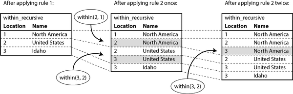
이제 규칙 3은 특정 위치 BornIn에서 태어났고 특정 위치 LivingIn에 사는 사람을 찾을 수 있습니다. 규칙 4는 규칙 3에 BornIn = 'United States' 및 LivingIn = 'Europe'을 호출하고 조건에 맞는 사람의 이름만 반환합니다. 가상 us_to_europe 테이블의 내용을 쿼리함으로써 Datalog 시스템은 결국 이전 Cypher 및 SPARQL 쿼리와 동일한 답을 얻습니다.
Datalog 접근 방식은 이 장에서 논의된 다른 쿼리 언어와는 다른 종류의 사고를 요구합니다. 복잡한 쿼리를 규칙별로 구축할 수 있으며, 한 규칙이 다른 규칙을 참조할 수 있습니다. 이는 코드를 서로 호출하는 함수로 분해하는 방식과 유사합니다. 함수 자체를 호출할 수 있는 것처럼 Datalog 규칙도 스스로 호출할 수 있습니다. 예를 들어 예 3-12의 규칙 2가 그래프 순회를 Datalog 쿼리에서 가능하게 합니다.
GraphQL
GraphQL은 이 장에서 본 다른 언어보다 훨씬 제한적인 쿼리 언어입니다. OLTP 쿼리를 목적으로 설계되었으며, 사용자 기기(모바일 앱 또는 JavaScript 웹 앱 프런트엔드 등)에서 실행되는 클라이언트 소프트웨어가 UI 렌더링에 필요한 필드를 포함하는 특정 구조의 JSON 문서를 요청할 수 있도록 하는 것이 목적입니다.
GraphQL 인터페이스를 사용하면 개발자가 서버 측 API를 변경하지 않고도 클라이언트 코드의 쿼리를 빠르게 변경할 수 있습니다. 그러나 이러한 유연성에는 비용이 따릅니다. GraphQL을 채택하는 조직은 종종 쿼리를 일반적으로 REST 또는 gRPC(5장 참조)를 사용하는 내부 서비스로 변환하는 도구가 필요합니다. 인증, 속도 제한 및 성능 문제는 추가적인 우려 사항입니다[64 ].
이 언어는 의도적으로 제한되어 있습니다. GraphQL 쿼리는 신뢰할 수 없는 출처에서 오기 때문입니다. 사용자가 실수로라도 많은 비용이 드는 쿼리를 실행하여 서버에서 서비스 거부(DoS) 조건을 초래할 수 있는 작업은 허용되지 않습니다. 특히 GraphQL은 재귀 쿼리(Cypher, SPARQL, SQL 또는 Datalog와 달리)를 허용하지 않으며, 서비스 소유자가 명시적으로 그러한 검색 기능을 제공하기로 선택하지 않는 한 “미국에서 태어났고 현재 유럽에 사는 사람 찾기”와 같은 임의의 검색 조건을 허용하지 않습니다.
비etheless, GraphQL은 유용합니다. 예 3-13은 Discord 또는 Slack과 같은 그룹 채팅 애플리케이션을 GraphQL로 구현하는 방법을 보여줍니다. 이 쿼리는 사용자가 접근할 수 있는 모든 채널, 채널 이름 및 각 채널의 가장 최근 50개 메시지를 요청합니다. 각 메시지에는 타임스탬프, 메시지 내용, 발신자의 이름과 프로필 사진 URL이 요청됩니다. 메시지가 다른 메시지에 대한 답글인 경우, 답글의 발신자 이름과 내용도 요청됩니다(답글 위에 더 작은 글씨로 렌더링되어 상황을 제공할 수 있음).
예 3-13. 그룹 채팅 애플리케이션용 GraphQL 쿼리
query ChatApp {
channels {
name
recentMessages(latest: 50) {
timestamp
content
sender {
fullName
imageUrl
}
replyTo {
content
sender {
fullName
}
}
}
}
}예 3-14는 예 3-13의 쿼리에 대한 응답이 어떻게 보일 수 있는지 보여줍니다. 응답은 쿼리 구조를 미러링하는 JSON 문서로, 요청된 속성만 포함하며 그 이상도 그 이하도 아닙니다. 이 접근 방식의 장점은 서버가 클라이언트가 UI를 렌더링하는 데 필요한 속성을 알 필요가 없다는 것입니다. 클라이언트는 필요한 것을 요청할 수 있습니다. 예를 들어, 이 쿼리는 replyTo 메시지의 발신자 프로필 사진 URL을 요청하지 않지만, UI에 해당 프로필 사진을 포함하도록 변경되면 클라이언트는 서버 측 변경 없이 필요한 imageUrl 속성을 쉽게 쿼리에 추가할 수 있습니다.
예 3-14. 예 3-13 쿼리에 대한 가능한 응답
{
"data": {
"channels": [
{
"name": "#general",
"recentMessages": [
{
"timestamp": 1693143014,
"content": "Hey!How are y'all doing?",
"sender": {"fullName": "Aaliyah", "imageUrl": "https://..."},
"replyTo": null
},
{
"timestamp": 1693143024,
"content": "Great!And you?",
"sender": {"fullName": "Caleb", "imageUrl": "https://..."},
"replyTo": {
"content": "Hey!How are y'all doing?",
"sender": {"fullName": "Aaliyah"}
}
},
...이 예에서 메시지 발신자의 이름과 이미지 URL이 메시지 객체에 직접 포함됩니다. 동일한 사용자가 여러 메시지를 보내면 이 정보가 각 메시지에 반복됩니다. 원칙적으로 이 중복을 줄이는 것이 가능할 수 있지만, GraphQL은 요청된 데이터를 기반으로 UI를 렌더링하는 것을 더 쉽게 만들기 위해 더 큰 응답 크기를 허용하는 설계 선택을 합니다.
replyTo 필드도 유사합니다. 예 3-14에서 두 번째 메시지는 첫 번째 메시지에 대한 답글이며, 내용(“Hey…”)과 발신자 이름(Aaliyah)이 replyTo 아래에 중복됩니다. 답글을 받는 메시지의 ID만 반환하는 것이 가능하지만, 그 ID가 반환된 50개 가장 최근 메시지 중에 없으면 클라이언트는 서버에 추가 요청을 해야 합니다. 콘텐츠를 중복하면 데이터를 다루기가 훨씬 더 간단해집니다.
서버의 데이터베이스는 데이터를 더 정규화된 형태로 저장할 수 있으며, 메시지 발신자 사용자 ID와 메시지가 답글을 보내는 메시지 ID와 함께 메시지를 저장할 수 있습니다. 서버가 예 3-13과 같은 쿼리를 수신하면 해당 ID를 참조하는 레코드를 찾기 위해 해당 ID를 해결합니다. 그러나 클라이언트가 요청할 수 있는 조인은 GraphQL 스키마에 명시적으로 선언된 조인에만 국한됩니다.
GraphQL 쿼리에 대한 응답이 문서 데이터베이스의 응답과 유사해 보이고 이름에 “그래프”가 들어가 있지만, GraphQL은 관계형, 문서 또는 그래프를 포함한 모든 유형의 데이터베이스 위에 구현될 수 있습니다.
이벤트 소싱과 CQRS
지금까지 논의한 모든 데이터 모델에서 데이터는 기록된 형태와 동일한 형태로 쿼리됩니다. 즉, JSON 문서, 테이블의 행 또는 그래프의 정점과 간선 등입니다. 그러나 복잡한 애플리케이션에서는 데이터가 쿼리되고 제시되는 모든 방식을 충족할 수 있는 단일 데이터 표현을 찾기 어려울 수 있습니다. 그러한 경우 데이터를 한 형식으로 기록한 다음 다른 유형의 읽기를 위해 최적화된 표현을 파생하는 것이 유리할 수 있습니다.
이 아이디어는 이전에 “진실 기록 시스템과 파생 데이터”에서 보았으며, ETL(“데이터 웨어하우징”)은 그러한 파생 프로세스의 한 예입니다. 이제 이 아이디어를 한 단계 더 발전시켜 보겠습니다. 데이터를 다른 표현으로 파생할 것이라면, 쓰기와 읽기에 최적화된 서로 다른 표현을 선택할 수 있습니다. 효율적인 쿼리가 문제가 되지 않는다면 데이터를 쓰기 위해 어떻게 모델링할까요?
아마도 데이터를 쓰는 가장 간단하고 빠르며 표현력이 풍부한 방법은 이벤트 로그를 사용하는 것입니다. 데이터를 쓸 때마다 타임스탬프를 포함한 자체 포함 문자열(아마도 JSON)으로 데이터를 인코딩한 다음 이벤트 시퀀스에 추가합니다. 이 로그의 이벤트는 불변입니다. 변경하거나 삭제하지 않고 새로운 이벤트만 추가합니다(이전 이벤트를 대체할 수 있음). 이벤트는 임의의 속성을 포함할 수 있습니다.
그림 3-8은 컨퍼런스 관리 시스템에서 가져올 수 있는 예시를 보여줍니다. 컨퍼런스는 복잡한 비즈니스 영역일 수 있습니다. 개별 참가자가 등록하고 카드로 결제할 수 있을 뿐만 아니라, 기업이 대량으로 좌석을 주문하고 청구서로 결제한 다음 나중에 개별 사람에게 좌석을 할당할 수 있습니다. 연사, 스폰서, 자원 봉사자 등을 위해 특정 수의 좌석이 예약될 수 있습니다. 예약이 취소될 수도 있고, 컨퍼런스 주최자가 다른 방으로 이동하여 이벤트 용량을 변경할 수도 있습니다. 이 모든 일이 진행되는 동안 사용 가능한 좌석 수를 단순히 계산하는 것조차 어려운 쿼리가 됩니다.
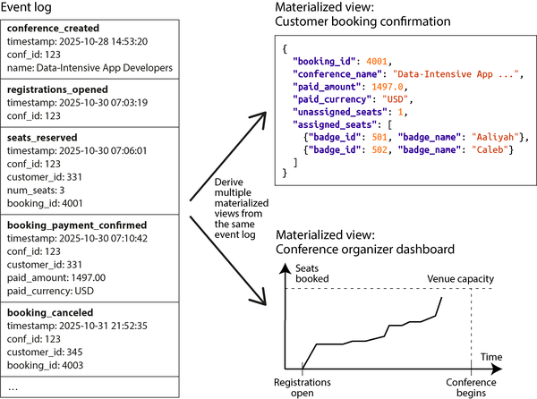
그림 3-8에서 컨퍼런스 상태의 모든 변경(주최자 등록 개설, 참가자 등록 및 취소 등)은 먼저 이벤트로 저장됩니다. 이벤트가 로그에 추가될 때마다 여러 물질화된 뷰(프로젝션 또는 읽기 모델라고도 함)도 해당 이벤트의 효과를 반영하도록 업데이트됩니다. 컨퍼런스 예에서는 예약 상태와 관련된 모든 정보를 수집하는 한 가지 물질화된 뷰, 컨퍼런스 주최자 대시보드의 차트를 계산하는 또 다른 뷰, 참가자 배지를 인쇄하는 파일 생성 프로세스를 위한 세 번째 뷰가 있을 수 있습니다.
이벤트를 진실 기록으로 사용하고 모든 상태 변경을 이벤트로 표현하는 아이디어는 이벤트 소싱(event sourcing)[65, 66 ]으로 알려져 있습니다. 쓰기에 최적화된 표현으로부터 읽기에 최적화된 별도의 표현을 유지하고 파생하는 원리는 명령 쿼리 책임 분할(Command Query Responsibility Segregation, CQRS)[67 ]이라고 합니다. 이러한 용어는 DDD 커뮤니티에서 비롯되었지만, 유사한 아이디어는 오래전부터 존재해 왔습니다(예: 상태 머신 복제 “공유 로그 사용” 참조).
사용자의 요청이 들어오면 이를 명령이라고 하며, 먼저 검증해야 합니다. 명령이 실행되고 유효한 것으로 판단되면(예: 요청된 예약을 위해 충분한 좌석이 사용 가능한 경우) 해당 사실이 확정되고 해당 이벤트가 로그에 추가됩니다. 따라서 이벤트 로그에는 유효한 이벤트만 포함되어야 하며, 이벤트 로그를 소비하여 물질화된 뷰를 구축하는 소비자는 이벤트를 거부할 수 없습니다.
이벤트 소싱 스타일로 데이터를 모델링할 때는 이벤트를 과거 시제로 이름 붙이는 것이 좋습니다(예: “좌석이 예약되었습니다”). 이벤트는 무언가가 발생했다는 사실의 기록이기 때문입니다. 사용자가 나중에 예약을 변경하거나 취소하더라도 이전에 예약을 가지고 있었다는 사실은 여전히 참이며, 변경 또는 취소는 나중에 추가되는 별도의 이벤트입니다.
이벤트 소싱과 “별 스키마와 눈송이 스키마: 분석을 위한 스키마”에서 논의된 별 스키마의 사실 테이블 간의 유사점은 두 가지 모두 과거에 발생한 이벤트의 집합이라는 점입니다. 그러나 사실 테이블의 모든 행은 동일한 열 세트를 가지는 반면, 이벤트 소싱에서는 여러 이벤트 유형이 각각 다른 속성을 가질 수 있습니다. 또한 사실 테이블은 순서 없는 집합이지만, 이벤트 소싱에서는 이벤트의 순서가 중요합니다. 예를 들어, 예약이 먼저 만들어지고 나중에 취소되는 경우 이러한 이벤트를 잘못된 순서로 처리하는 것은 의미가 없습니다.
이벤트 소싱과 CQRS에는 여러 가지 장점이 있습니다:
- 시스템을 개발하는 사람들에게 이벤트는 무언가가 발생한 의도를 더 잘 전달합니다. 예를 들어, “예약이 취소되었습니다”라는 이벤트는 “
bookings테이블의 4001번 행에 있는active열이false로 설정되고,seat_assignments테이블의 세 행이 삭제되고,payments테이블에 환불 행이 삽입되었다”는 것을 이해하는 것보다 더 이해하기 쉽습니다. 행 수정은 여전히 물질화된 뷰가 취소 이벤트를 처리할 때 발생할 수 있지만, 업데이트가 이벤트에 의해 주도될 때 업데이트의 이유가 훨씬 더 명확해집니다. - 이벤트 소싱의 핵심 원칙은 물질화된 뷰가 이벤트 로그에서 재현 가능한 방식으로 파생된다는 점입니다. 동일한 코드를 사용하여 동일한 이벤트를 동일한 순서로 처리하여 물질화된 뷰를 삭제하고 다시 계산할 수 있어야 합니다. 뷰 유지 관리 코드에 버그가 있었다면 새 코드로 뷰를 삭제하고 다시 계산하면 됩니다. 뷰 유지 관리 코드를 원하는 만큼 자주 실행하고 그 동작을 검사할 수 있으므로 버그를 찾기도 더 쉽습니다.
- 애플리케이션에 필요한 특정 쿼리에 최적화된 여러 물질화된 뷰를 가질 수 있습니다. 이러한 뷰는 이벤트와 동일한 데이터베이스 또는 다른 데이터베이스에 저장될 수 있으며, 필요에 따라 선택할 수 있습니다. 모든 데이터 모델을 사용할 수 있으며 읽기 속도를 위해 비정규화할 수도 있습니다. 서비스가 재시작할 때마다 이벤트 로그에서 뷰를 다시 계산하는 것이 괜찮다면 뷰를 메모리에만 유지하고 영구 저장하지 않을 수도 있습니다.
- 기존 정보를 새로운 방식으로 제시하기로 결정했다면, 기존 이벤트 로그에서 새로운 물질화된 뷰를 구축하는 것은 쉽습니다. 또한 새로운 이벤트 유형을 추가하거나 기존 이벤트 유형에 새로운 속성을 추가하여 새로운 기능을 지원하도록 시스템을 진화시킬 수 있습니다(이전 이벤트는 수정되지 않습니다). 기존 이벤트에 새로운 동작을 연결할 수도 있습니다(예: 컨퍼런스 참가자가 취소하면 해당 좌석을 대기자 명단의 다음 사람에게 제공할 수 있음).
- 이벤트가 잘못 작성된 경우, 이를 취소하는 후속 이벤트를 작성하여 취소할 수 있습니다. 다운스트림 뷰는 이 취소를 자동으로 반영하므로 데이터가 수정됩니다. 반면에 데이터를 직접 업데이트 및 삭제하는 데이터베이스에서는 커밋된 트랜잭션을 되돌리는 것이 종종 어렵습니다. 따라서 이벤트 소싱은 시스템의 돌이킬 수 없는 작업 수를 줄여 변경을 더 쉽게 만듭니다(“변경 용이성” 참조).
- 이벤트 로그는 시스템에서 발생한 일에 대한 감사 로그 역할도 할 수 있으며, 이는 이러한 감사 추적을 요구하는 규제 산업에서 유용합니다.
- 이벤트 로그는 순차적 접근 패턴 때문에 데이터베이스보다 일반적으로 더 높은 쓰기 처리량을 처리할 수 있습니다. 이벤트가 일시적으로 폭증하는 경우 로그는 이를 흡수할 수 있으며, 다운스트림 시스템은 자체 속도로 물질화된 뷰를 따라잡을 수 있으므로 과부하가 발생하지 않습니다.
그러나 이벤트 소싱과 CQRS에는 단점도 있습니다:
- 외부 정보가 포함된 경우 주의해야 합니다. 예를 들어, 이벤트에 한 통화로 표시된 가격이 포함되어 있고 뷰 중 하나가 다른 통화로 변환해야 한다고 가정해 보겠습니다. 환율은 변동될 수 있으므로 이벤트 처리 시 외부 소스에서 환율을 가져오면 다른 날에 물질화된 뷰를 다시 계산할 때 다른 결과를 얻게 되어 문제가 될 수 있습니다. 이벤트 처리 로직을 결정론적으로 만들려면 이벤트 자체에 환율을 포함하거나 이벤트에 표시된 타임스탬프의 역사적 환율을 쿼리할 수 있는 방법이 있어야 하며, 이 쿼리는 동일한 타임스탬프에 대해 항상 동일한 결과를 반환해야 합니다.
- 이벤트가 불변이라는 요구 사항은 이벤트에 사용자의 개인 데이터가 포함된 경우 문제를 일으킵니다. 사용자는 GDPR과 같은 권리에 따라 데이터 삭제를 요청할 수 있기 때문입니다. 이벤트 로그가 사용자별로 분리된 경우 해당 사용자의 로그 전체를 삭제할 수 있지만, 이벤트 로그에 여러 사용자와 관련된 이벤트가 포함된 경우에는 작동하지 않습니다. 실제 이벤트 외부에 개인 데이터를 저장하거나 나중에 삭제할 수 있는 키로 암호화하는 방법(크립토-슈레딩(crypto-shredding)[68 ]이라고 함)을 시도할 수 있지만, 이는 파생 상태를 다시 계산하는 것을 더 어렵게 만듭니다.
- 이벤트를 다시 처리할 때 외부에 가시적인 부작용이 있는 경우 주의가 필요합니다. 예를 들어, 물질화된 뷰를 다시 구축할 때마다 확인 이메일을 다시 보내고 싶지 않을 것입니다.
이벤트 소싱은 모든 데이터베이스 위에 구현할 수 있지만, 이 패턴을 특별히 지원하도록 설계된 시스템도 있습니다. 예를 들어 EventStoreDB, PostgreSQL 기반인 MartenDB 및 Axon Framework 등이 있습니다. 또한 이벤트 로그를 저장하기 위해 Apache Kafka와 같은 메시지 브로커를 사용할 수 있으며, 스트림 프로세서는 물질화된 뷰를 최신 상태로 유지할 수 있습니다. 이러한 주제는 12장에서 다시 다룰 것입니다.
중요한 유일한 요구 사항은 이벤트 스토리지 시스템이 모든 물질화된 뷰가 로그에 나타나는 것과 동일한 순서로 이벤트를 처리하도록 보장해야 한다는 것입니다. 10장에서 보게 되겠지만, 분산 시스템에서는 이 순서를 달성하기가 항상 쉬운 것은 아닙니다.
DataFrames, 행렬 및 배열
지금까지 이 장에서 본 데이터 모델은 일반적으로 트랜잭션 처리와 분석 목적으로 모두 사용됩니다(“운영 시스템 대 분석 시스템” 참조). 그러나 분석 또는 과학적 맥락에서 자주 접하지만 OLTP 시스템에서는 거의 사용되지 않는 몇 가지 데이터 모델이 있습니다. 여기에는 DataFrames와 행렬 및 같은 다차원 숫자 배열이 포함됩니다.
DataFrame 데이터 모델은 R 언어, Python의 Pandas 라이브러리, Apache Spark, ArcticDB, Dask 및 기타 시스템에서 지원됩니다. DataFrames는 데이터 과학자가 ML 모델을 위한 데이터를 준비하는 데 인기 있는 도구이지만, 데이터 탐색, 통계 데이터 분석, 데이터 시각화 등에도 널리 사용됩니다.
한눈에 볼 때 DataFrame은 관계형 데이터베이스의 테이블이나 스프레드시트와 유사합니다. DataFrame은 행의 컬렉션을 지원하며, 같은 열의 모든 값은 동일한 타입을 가집니다. DataFrame은 행에 대한 일괄 연산을 수행하는 관계형 연산자를 지원합니다. 예를 들어, 모든 행에 함수를 적용하고, 조건에 따라 행을 필터링하고, 일부 열로 행을 그룹화하고 다른 열을 집계하며, 키를 기준으로 하나의 DataFrame을 다른 DataFrame과 조인(관계형 데이터베이스의 조인에 해당하는 것은 DataFrame에서 일반적으로 merge라고 함)할 수 있습니다.
선언형 쿼리 언어(SQL)를 사용하는 대신, DataFrame은 일반적으로 DataFrame의 구조와 내용을 수정하는 일련의 명령어 조작을 통해 다룹니다. 이는 데이터 과학자가 답을 구할 수 있는 형태로 데이터를 점진적으로 “정리(wrangle)”하는 일반적인 워크플로와 일치합니다. 이러한 조작은 일반적으로 데이터 과학자의 개인 데이터 세트 사본, 종종 로컬 머신에서 수행되며, 최종 결과는 다른 사용자와 공유될 수 있습니다.
DataFrame API는 관계형 데이터베이스가 제공하는 것보다 훨씬 더 다양한 연산을 제공하며, 데이터 모델은 일반적인 관계형 데이터 모델링과는 매우 다른 방식으로 사용되는 경우가 많습니다[69 ]. 예를 들어, DataFrame의 일반적인 용도는 관계형 표현에서 행렬 또는 다차원 배열 표현으로 데이터를 변환하는 것입니다. 이는 많은 ML 알고리즘이 입력을 예상하는 형식입니다.
그러한 변환의 간단한 예는 그림 3-9에 나와 있습니다. 왼쪽에는 사용자들이 다양한 영화(1부터 5까지 등급)를 평가하는 관계형 테이블이 있고, 오른쪽에는 데이터가 행은 사용자, 열은 영화인 행렬로 변환되었습니다(스프레드시트의 피벗 테이블과 유사). 행렬은 희소 행렬입니다. 즉, 많은 사용자-영화 조합에 데이터가 없지만 이는 문제가 되지 않습니다. 이 행렬은 수천 개의 열을 가질 수 있으므로 관계형 데이터베이스에 잘 맞지 않지만, DataFrame과 희소 배열을 제공하는 라이브러리(예: Python의 NumPy)는 그러한 데이터를 쉽게 처리할 수 있습니다.
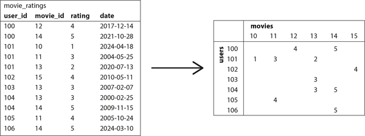
행렬은 숫자만 포함할 수 있으며, 비숫자 데이터를 행렬의 숫자로 변환하는 다양한 기법이 사용됩니다. 예를 들어:
- 날짜(그림 3-9의 예 행렬에서 생략됨)는 적절한 범위 내의 부동 소수점 수로 조정될 수 있습니다.
- 하나의 값만 가질 수 있는 열(예: 영화 데이터베이스의 영화 장르)의 경우 원핫 인코딩(one-hot encoding)이 자주 사용됩니다. 가능한 각 값(“코미디”, “드라마”, “호러” 등)에 대해 열을 만들고, 영화를 나타내는 각 행에 대해 해당 장르의 열에는 1을, 다른 모든 열에는 0을 넣습니다. 이 표현은 여러 장르에 속하는 영화에도 쉽게 확장됩니다.
데이터가 숫자 행렬 형태가 되면 선형 대수 연산을 적용할 수 있으며, 이는 많은 ML 알고리즘의 기초를 형성합니다. 예를 들어, 그림 3-9의 데이터는 사용자가 좋아할 만한 영화를 추천하는 시스템의 일부일 수 있습니다. DataFrame은 데이터를 관계형 형태에서 행렬 표현으로 점진적으로 진화시키면서 데이터 분석이나 모델 훈련 프로세스의 목표를 달성하는 데 가장 적합한 표현에 대해 데이터 과학자가 제어할 수 있도록 충분히 유연합니다.
일부 데이터베이스(TileDB[70 ] 등)는 많은 수의 숫자로 구성된 대용량 다차원 배열을 저장하는 데 특화되어 있습니다. 이들은 어레이 데이터베이스(array database)라고 불리며 가장 일반적으로 지리 공간 측정(정규 간격 그리드의 래스터 데이터), 의료 영상, 천문 망원경의 관측 데이터와 같은 과학 데이터 세트에 사용됩니다[71 ]. DataFrames는 금융 산업에서도 시간 시리즈 데이터(예: 자산 가격 및 시간에 따른 거래)를 나타내는 데 사용됩니다[72 ]. 데이터 과학자들 사이에서 인기가 있기 때문에 DataFrames는 Spark 및 Flink와 같은 배치 처리 프레임워크에도 추가되었으며, 11장에서 이 주제로 다시 돌아올 것입니다.
요약
데이터 모델은 방대한 주제이며, 이번 장에서는 다양한 모델을 간략히 살펴보았습니다. 각 모델의 모든 세부 사항을 다루는 공간은 없었지만, 이 개요가 여러분의 애플리케이션 요구 사항에 가장 적합한 모델에 대해 더 깊이 알아보고자 하는 열망을 불러일으키기를 바랍니다.
관계형 모델은 반세기가 넘게 지났음에도 불구하고 여전히 많은 애플리케이션에서 중요한 데이터 모델입니다. 특히 데이터 웨어하우징과 비즈니스 분석에서는 관계형 별 또는 눈송이 스키마와 SQL 쿼리가 ubiquitous합니다. 그러나 다른 도메인에서는 관계형 데이터의 대안이 인기를 얻었습니다:
- 문서 모델은 데이터가 자체 완결된 JSON 문서로 제공되고 문서 간의 관계가 드문 사용 사례를 대상으로 합니다.
- 그래프 데이터 모델은 정반대의 방향으로, 무엇이든 잠재적으로 모든 것과 관련되어 있고 쿼리가 관심 데이터를 찾기 위해 여러 홉을 traverser해야 할 수 있는 사용 사례를 대상으로 합니다(이는 Cypher, SPARQL 또는 Datalog의 재귀 쿼리를 사용하여 충족될 수 있음).
- DataFrames는 관계형 데이터를 많은 수의 열로 일반화하며, 데이터베이스와 다차원 배열 사이의 다리를 제공합니다. 이 다차원 배열은 많은 머신 러닝, 통계 데이터 분석 및 과학 컴퓨팅의 기초를 형성합니다.
일정한 정도로, 하나의 모델은 종종 다른 모델의 관점에서 에뮬레이트될 수 있습니다(예: 그래프 데이터는 관계형 데이터베이스에 표현될 수 있음). 그러나 결과는 어색할 수 있으며, SQL의 재귀 쿼리 지원에서 보았듯이 그렇습니다.
따라서 각 데이터 모델에 최적화된 쿼리 언어와 스토리지 엔진을 제공하는 다양한 전문 데이터베이스가 개발되었습니다. 그러나 데이터베이스가 인접한 틈새 시장으로 확장되어 다른 데이터 모델을 지원하도록 하는 추세도 있습니다. 예를 들어, 관계형 데이터베이스는 JSON 열 형태로 문서 데이터 지원을 추가했고, 문서 데이터베이스는 관계형 스타일의 조인을 추가했으며, SQL 내에서 그래프 데이터에 대한 지원은 점차 개선되고 있습니다.
또 다른 모델은 이벤트 소싱입니다. 이는 데이터를 불변 이벤트의 추가 전용 로그로 표현하며 복잡한 비즈니스 도메인에서 활동을 모델링하는 데 유리할 수 있습니다. 추가 전용 로그는 데이터를 쓰는 데 좋으며(4장에서 보게 될 것입니다), 효율적인 쿼리를 지원하기 위해 이벤트 로그는 CQRS를 통해 읽기에 최적화된 물질화된 뷰로 변환됩니다.
비관계형 데이터 모델이 공통적으로 가지는 한 가지는 일반적으로 저장하는 데이터에 대해 스키마를 강제하지 않는다는 것입니다. 이는 애플리케이션을 변화하는 요구 사항에 더 쉽게 적응할 수 있게 합니다. 그러나 애플리케이션은 여전히 데이터가 특정 구조를 가진다고 가정할 가능성이 높으며, 스키마가 명시적(쓰기 시 강제)인지 암시적(읽기 시 가정)의 문제일 뿐입니다.
다루지 않은 데이터 모델도 여전히 많이 있습니다. 예를 들어:
- 게놈 데이터 연구자들은 종종 한 개의 매우 긴 문자열(DNA 분자를 나타냄)을 가져와 유사하지만 동일하지 않은 많은 문자열 데이터베이스와 일치시키는 서열 유사도 검색을 수행해야 합니다. 이 책에서 설명한 데이터베이스 중 어느 것도 이러한 사용 사례를 처리할 수 없기 때문에 연구자들은 GenBank[73 ]와 같은 전문 게놈 데이터베이스 소프트웨어를 작성했습니다.
- 많은 금융 시스템은 복식 부기 분개를 데이터 모델로 사용합니다. 이러한 유형의 데이터는 관계형 데이터베이스에 표현될 수 있지만, TigerBeetle과 같은 이 데이터 모델에 특화된 데이터베이스도 있습니다. 암호화폐와 블록체인은 일반적으로 분산 원장을 기반으로 하며, 이는 데이터 모델에 가치 이전을 포함합니다.
- 전체 텍스트 검색은 아마도 데이터베이스와 함께 자주 사용되는 일종의 데이터 모델일 것입니다. 정보 검색은 방대한 전문 주제이며 이 책에서 자세히 다루지는 않지만, “전체 텍스트 검색”에서 검색 인덱스 및 벡터 검색에 대해 간략히 다룰 것입니다.
여기까지 하겠습니다. 다음 장에서는 이 장에서 설명한 데이터 모델을 구현할 때 발생하는 트레이드오프에 대해 논의할 것입니다.
각주
참조
[1 ] Edgar F. Codd.“A Relational Model of Data for Large Shared Data Banks.” Communications of the ACM, volume 13, issue 6, pages 377–387, June 1970. doi:10.1145/362384.362685
[2 ] Michael Stonebraker and Joseph M. Hellerstein.“What Goes Around Comes Around.” In Readings in Database Systems, 4th edition, MIT Press, 2005, pages 2–41. ISBN: 9780262693141
[3 ] Joseph M. Hellerstein.“The Declarative Imperative: Experiences and Conjectures in Distributed Logic.” Tech report UCB/EECS-2010-90, Electrical Engineering and Computer Sciences, University of California at Berkeley, June 2010. Archived at perma.cc/K56R-VVQM
[4 ] Edgar F. Codd.“A Relational Model of Data for Large Shared Data Banks.” Communications of the ACM, volume 13, issue 6, pages 377–387, June 1970. doi:10.1145/362384.362685
[5 ] Michael Stonebraker and Joseph M. Hellerstein.“What Goes Around Comes Around.” In Readings in Database Systems, 4th edition, MIT Press, 2005, pages 2–41. ISBN: 9780262693141
[6 ] Markus Winand.“Modern SQL: Beyond Relational.” modern-sql.com, 2015. Archived at perma.cc/D63V-WAPN
[7 ] Martin Fowler.“Orm Hate.” martinfowler.com, May 2012. Archived at perma.cc/VCM8-PKNG
[8 ] Vlad Mihalcea.“N+1 Query Problem with JPA and Hibernate.” vladmihalcea.com, January 2023. Archived at perma.cc/79EV-TZKB
[9 ] Jens Schauder.“This Is the Beginning of the End of the N+1 Problem: Introducing Single Query Loading.” spring.io, August 2023. Archived at perma.cc/6V96-R333
[10 ] Jamie Brandon.“SQL Needed Structure.” scattered-thoughts.net, September 2025. Archived at perma.cc/9EVK-HLVR
[11 ] William Zola.“6 Rules of Thumb for MongoDB Schema Design.” mongodb.com, June 2014. Archived at perma.cc/T2BZ-PPJB
[12 ] Sidney Andrews and Christopher McClister.“Data Modeling in Azure Cosmos DB.” learn.microsoft.com, February 2023. Archived at archive.org
[13 ] Raffi Krikorian.“Timelines at Scale.” At QCon San Francisco, November 2012. Archived at perma.cc/V9G5-KLYK
[14 ] Ralph Kimball and Margy Ross. The Data Warehouse Toolkit: The Definitive Guide to Dimensional Modeling, 3rd edition. John Wiley & Sons, 2013. ISBN: 9781118530801
[15 ] Michael Kaminsky.“Data Warehouse Modeling: Star Schema vs. OBT.” fivetran.com, August 2022. Archived at perma.cc/2PZK-BFFP
[16 ] Joe Nelson.“User-defined Order in SQL.” begriffs.com, March 2018. Archived at perma.cc/GS3W-F7AD
[17 ] Evan Wallace.“Realtime Editing of Ordered Sequences.” figma.com, March 2017. Archived at perma.cc/K6ER-CQZW
[18 ] David Greenspan.“Implementing Fractional Indexing.” observablehq.com, October 2020. Archived at perma.cc/5N4R-MREN
[19 ] Martin Fowler.“Schemaless Data Structures.” martinfowler.com, January 2013.
[20 ] Amr Awadallah.“Schema-on-Read vs. Schema-on-Write.” At Berkeley EECS RAD Lab Retreat, May 2009. Archived at perma.cc/DTB2-JCFR
[21 ] Martin Odersky.“The Trouble with Types.” At Strange Loop, September 2013. Archived at perma.cc/85QE-PVEP
[22 ] Conrad Irwin.“MongoDB—Confessions of a PostgreSQL Lover.” At HTML5DevConf, October 2013. Archived at perma.cc/C2J6-3AL5
[23 ]“Percona Toolkit Documentation: pt-online-schema-change.” docs.percona.com, 2023. Archived at perma.cc/9K8R-E5UH
[24 ] Shlomi Noach.“gh-ost: GitHub’s Online Schema Migration Tool for MySQL.” github.blog, August 2016. Archived at perma.cc/7XAG-XB72
[25 ] Shayon Mukherjee.“pg-osc: Zero Downtime Schema Changes in PostgreSQL.” shayon.dev, February 2022. Archived at perma.cc/35WN-7WMY
[26 ] Carlos Pérez-Aradros Herce.“Introducing pgroll: Zero-Downtime, Reversible, Schema Migrations for Postgres.” xata.io, October 2023. Archived at archive.org
[27 ] James C. Corbett, Jeffrey Dean, Michael Epstein, Andrew Fikes, Christopher Frost, JJ Furman, Sanjay Ghemawat, Andrey Gubarev, Christopher Heiser, Peter Hochschild, Wilson Hsieh, Sebastian Kanthak, Eugene Kogan, Hongyi Li, Alexander Lloyd, Sergey Melnik, David Mwaura, David Nagle, Sean Quinlan, Rajesh Rao, Lindsay Rolig, Dale Woodford, Yasushi Saito, Christopher Taylor, Michal Szymaniak, and Ruth Wang.“Spanner: Google’s Globally-Distributed Database.” At 10th USENIX Symposium on Operating System Design and Implementation (OSDI), October 2012.
[28 ] Donald K. Burleson.“Reduce I/O with Oracle Cluster Tables.” dba-oracle.com. Archived at perma.cc/7LBJ-9X2C
[29 ] Fay Chang, Jeffrey Dean, Sanjay Ghemawat, Wilson C. Hsieh, Deborah A. Wallach, Mike Burrows, Tushar Chandra, Andrew Fikes, and Robert E. Gruber.“Bigtable: A Distributed Storage System for Structured Data.” At 7th USENIX Symposium on Operating System Design and Implementation (OSDI), November 2006.
[30 ] Priscilla Walmsley. XQuery, 2nd edition. O’Reilly Media, 2015. ISBN: 9781491915080
[31 ] Paul C. Bryan, Kris Zyp, and Mark Nottingham.“JavaScript Object Notation (JSON) Pointer.” RFC 6901, IETF, April 2013.
[32 ] Stefan Gössner, Glyn Normington, and Carsten Bormann.“JSONPath: Query Expressions for JSON.” RFC 9535, IETF, February 2024.
[33 ] Michael Stonebraker and Andrew Pavlo.“What Goes Around Comes Around… And Around….” ACM SIGMOD Record, volume 53, issue 2, pages 21–37, July 2024. doi:10.1145/3685980.3685984
[34 ] Lawrence Page, Sergey Brin, Rajeev Motwani, and Terry Winograd.“The PageRank Citation Ranking: Bringing Order to the Web.” Technical Report 1999-66, Stanford University InfoLab, November 1999. Archived at perma.cc/UML9-UZHW
[35 ] Nathan Bronson, Zach Amsden, George Cabrera, Prasad Chakka, Peter Dimov, Hui Ding, Jack Ferris, Anthony Giardullo, Sachin Kulkarni, Harry Li, Mark Marchukov, Dmitri Petrov, Lovro Puzar, Yee Jiun Song, and Venkat Venkataramani.“TAO: Facebook’s Distributed Data Store for the Social Graph.” At USENIX Annual Technical Conference (ATC), June 2013.
[36 ] Natasha Noy, Yuqing Gao, Anshu Jain, Anant Narayanan, Alan Patterson, and Jamie Taylor.“Industry-Scale Knowledge Graphs: Lessons and Challenges.” Communications of the ACM, volume 62, issue 8, pages 36–43, August 2019. doi:10.1145/3331166
[37 ] Xiyang Feng, Guodong Jin, Ziyi Chen, Chang Liu, and Semih Salihoğlu.“KÙZU Graph Database Management System.” At 13th Annual Conference on Innovative Data Systems Research (CIDR 2023), January 2023. Archived at perma.cc/PS6J-ZBZU
[38 ] Maciej Besta, Emanuel Peter, Robert Gerstenberger, Marc Fischer, Michał Podstawski, Claude Barthels, Gustavo Alonso, Torsten Hoefler.“Demystifying Graph Databases: Analysis and Taxonomy of Data Organization, System Designs, and Graph Queries.” arXiv:1910.09017, October 2019.
[39 ]“Apache TinkerPop. TinkerPop 3.6.3 Documentation.” tinkerpop.apache.org, May 2023. Archived at perma.cc/KM7W-7PAT
[40 ] Nadime Francis, Alastair Green, Paolo Guagliardo, Leonid Libkin, Tobias Lindaaker, Victor Marsault, Stefan Plantikow, Mats Rydberg, Petra Selmer, and Andrés Taylor.“Cypher: An Evolving Query Language for Property Graphs.” At International Conference on Management of Data (SIGMOD), May 2018. doi:10.1145/3183713.3190657
[41 ] Emil Eifrem. Twitter correspondence, January 2014. Archived at perma.cc/WM4S-BW64
[42 ] Francesco Tisiot.“Explore the New SEARCH and CYCLE Features in PostgreSQL® 14.” aiven.io, December 2021. Archived at perma.cc/J6BT-83UZ
[43 ] Gaurav Goel.“Understanding Hierarchies in Oracle.” towardsdatascience.com, May 2020. Archived at perma.cc/5ZLR-Q7EW
[44 ] Alin Deutsch, Yu Xu, and Mingxi Wu.“Seamless Syntactic and Semantic Integration of Query Primitives over Relational and Graph Data in GSQL.” tigergraph.com, November 2018. Archived at perma.cc/JG7J-Y35X
[45 ] Oskar van Rest, Sungpack Hong, Jinha Kim, Xuming Meng, and Hassan Chafi.“PGQL: A Property Graph Query Language.” At 4th International Workshop on Graph Data Management Experiences and Systems (GRADES), June 2016. doi:10.1145/2960414.2960421
[46 ] Philip Rathle and Brad Bebee.“GQL: The ISO Standard for Graphs Has Arrived.” aws.amazon.com, April 2024. Archived at perma.cc/5TEU-N2Y8
[47 ] Alin Deutsch, Nadime Francis, Alastair Green, Keith Hare, Bei Li, Leonid Libkin, Tobias Lindaaker, Victor Marsault, Wim Martens, Jan Michels, Filip Murlak, Stefan Plantikow, Petra Selmer, Oskar van Rest, Hannes Voigt, Domagoj Vrgoč, Mingxi Wu, and Fred Zemke.“Graph Pattern Matching in GQL and SQL/PGQ.” At International Conference on Management of Data (SIGMOD), June 2022. doi:10.1145/3514221.3526057
[48 ] Alastair Green.“SQL…And Now GQL.” opencypher.org, September 2019. Archived at perma.cc/AFB2-3SY7
[49 ] Amazon Web Services.“Neptune Graph Data Model.” Amazon Neptune User Guide, docs.aws.amazon.com. Archived at perma.cc/CX3T-EZU9
[50 ] Cognitect.“Datomic Data Model.” Datomic Cloud Documentation, docs.datomic.com. Archived at perma.cc/LGM9-LEUT
[51 ] David Beckett and Tim Berners-Lee.“Turtle—Terse RDF Triple Language.” W3C Team Submission, March 2011.
[52 ] Sinclair Target.“Whatever Happened to the Semantic Web?” twobithistory.org, May 2018. Archived at perma.cc/M8GL-9KHS
[53 ] Gavin Mendel-Gleason.“The Semantic Web Is Dead—Long Live the Semantic Web!” terminusdb.com, August 2022. Archived at perma.cc/G2MZ-DSS3
[54 ] Manu Sporny.“JSON-LD and Why I Hate the Semantic Web.” manu.sporny.org, January 2014. Archived at perma.cc/7PT4-PJKF
[55 ] University of Michigan Library.“Biomedical Ontologies and Controlled Vocabularies.” guides.lib.umich.edu/ontology. Archived at perma.cc/Q5GA-F2N8
[56 ] Facebook.“The Open Graph Protocol.” ogp.me. Archived at perma.cc/C49A-GUSY
[57 ] Matt Haughey.“Everything You Ever Wanted to Know About Unfurling but Were Afraid to Ask /or/ How to Make Your Site Previews Look Amazing in Slack.” medium.com, November 2015. Archived at perma.cc/C7S8-4PZN
[58 ] W3C RDF Working Group.“Resource Description Framework (RDF).” w3.org, February 2004.
[59 ] Steve Harris, Andy Seaborne, and Eric Prud’hommeaux.“SPARQL 1.1 Query Language.” W3C Recommendation, March 2013.
[60 ] Todd J. Green, Shan Shan Huang, Boon Thau Loo, and Wenchao Zhou.“Datalog and Recursive Query Processing.” Foundations and Trends in Databases, volume 5, issue 2, pages 105–195, November 2013. doi:10.1561/1900000017
[61 ] Stefano Ceri, Georg Gottlob, and Letizia Tanca.“What You Always Wanted to Know About Datalog (And Never Dared to Ask).” IEEE Transactions on Knowledge and Data Engineering, volume 1, issue 1, pages 146–166, March 1989. doi:10.1109/69.43410
[62 ] Serge Abiteboul, Richard Hull, and Victor Vianu. Foundations of Databases. Addison-Wesley, 1995. ISBN: 9780201537710. Available online at webdam.inria.fr/Alice.
[63 ] Scott Meyer, Andrew Carter, and Andrew Rodriguez.“LIquid: The Soul of a New Graph Database, Part 2.” engineering.linkedin.com, September 2020. Archived at perma.cc/K9M4-PD6Q
[64 ] Matt Bessey.“Why, After 6 Years, I’m over GraphQL.” bessey.dev, May 2024. Archived at perma.cc/2PAU-JYRA
[65 ] Dominic Betts, Julián Domínguez, Grigori Melnik, Fernando Simonazzi, and Mani Subramanian. Exploring CQRS and Event Sourcing. Microsoft Patterns & Practices, 2012. ISBN: 9781621140164. Archived at perma.cc/7A39-3NM8
[66 ] Greg Young.“CQRS and Event Sourcing.” At Code on the Beach, August 2014.
[67 ] Greg Young.“CQRS Documents.” cqrs.wordpress.com, November 2010. Archived at perma.cc/X5R6-R47F
[68 ] Brent Robinson.“Crypto Shredding: How It Can Solve Modern Data Retention Challenges.” medium.com, January 2019. Archived at perma.cc/4LFK-S6XE
[69 ] Devin Petersohn, Stephen Macke, Doris Xin, William Ma, Doris Lee, Xiangxi Mo, Joseph E. Gonzalez, Joseph M. Hellerstein, Anthony D. Joseph, and Aditya Parameswaran.“Towards Scalable Dataframe Systems.” Proceedings of the VLDB Endowment, volume 13, issue 11, pages 2033–2046, July 2020. doi:10.14778/3407790.3407807
[70 ] Stavros Papadopoulos, Kushal Datta, Samuel Madden, and Timothy Mattson.“The TileDB Array Data Storage Manager.” Proceedings of the VLDB Endowment, volume 10, issue 4, pages 349–360, November 2016. doi:10.14778/3025111.3025117
[71 ] Florin Rusu.“Multidimensional Array Data Management.” Foundations and Trends in Databases, volume 12, issues 2–3, pages 69–220, February 2023. doi:10.1561/1900000069
[72 ] Ed Targett.“Bloomberg, Man Group Team Up to Develop Open Source ‘ArcticDB’ Database.” thestack.technology, March 2023. Archived at perma.cc/M5YD-QQYV
[73 ] Dennis A. Benson, Ilene Karsch-Mizrachi, David J. Lipman, James Ostell, and David L. Wheeler. GenBank. Nucleic Acids Research, volume 36, issue suppl_1, pages D25–D30, January 2008. doi:10.1093/nar/gkm929
4장. 저장소와 검색
“삶의 비애 중 하나는 모두가 사물을 조금 잘못 이름 짓는다는 것입니다. 그래서 세상은 이해하기 조금 더 어렵게 됩니다. 컴퓨터는 주로 산술을 하는 것이 아닙니다. […] 주로 파일 시스템입니다.” 리처드 파인만, 기이한 사고 세미나(1985)
기본적으로 데이터베이스는 두 가지를 수행해야 합니다. 데이터를 주면 저장하고, 나중에 다시 요청하면 그 데이터를 돌려줘야 합니다.
3장에서는 데이터 모델과 쿼리 언어, 즉 데이터베이스에 데이터를 제공하는 형식과 나중에 데이터를 요청하는 인터페이스에 대해 논의했습니다. 이번 장에서는 데이터베이스의 관점에서 동일한 내용을 다룹니다. 즉, 데이터베이스가 주어진 데이터를 어떻게 저장하고, 요청했을 때 데이터를 어떻게 찾아 다시 제공하는지입니다.
애플리케이션 개발자로서 데이터베이스가 내부적으로 저장과 검색을 어떻게 처리하는지 왜 신경 써야 할까요? 직접 스토리지 엔진을 구현할 일은 거의 없겠지만, 수많은 스토리지 엔진 중에서 자신의 애플리케이션에 적합한 엔진을 선택해야 합니다. 스토리지 엔진을 자신의 워크로드에 맞게 구성하여 잘 작동하게 하려면, 스토리지 엔진이 내부적으로 무엇을 하는지 대략적인 개념을 갖고 있어야 합니다.
특히 트랜잭션 워크로드(OLTP)에 최적화된 스토리지 엔진과 분석 워크로드(OLAP)에 최적화된 스토리지 엔진 사이에는 큰 차이(“운영 시스템 대 분석 시스템”에서 소개된 구별)가 있습니다. 이번 장에서는 OLTP용 두 가지 스토리지 엔진 계열, 즉 불변 데이터 파일을 쓰는 로그 구조 스토리지 엔진과 B-트리와 같이 데이터를 제자리에서 업데이트하는 스토리지 엔진을 살펴보는 것으로 시작합니다. 이러한 구조는 키-값 저장소와 보조 인덱스 모두에 사용됩니다.
“데이터 분석을 위한 스토리지”에서는 분석에 최적화된 스토리지 엔진 계열을 다룰 것이고, “다차원 및 전체 텍스트 인덱스”에서는 텍스트 검색과 같은 고급 쿼리를 위한 인덱스를 살펴볼 것입니다.
OLTP를 위한 스토리지와 인덱싱
세계에서 가장 단순한 데이터베이스를 고려해 보십시오. 두 개의 bash 함수로 구현되었습니다:
#!/bin/bashdb\_set \(\) {
echo "$1,$2" >> database
}db\_get \(\) {
grep "^$1," database | sed -e "s/^$1,//" | tail -n 1
}이 두 함수는 키-값 저장소를 구현합니다. db_set key value를 호출하면 키와 값을 데이터베이스에 저장할 수 있습니다. 키와 값은 거의 무엇이든 될 수 있습니다(예: 값은 JSON 문서일 수 있음). 그런 다음 db_get key를 호출하면 해당 키에 연결된 가장 최근 값을 조회하여 반환합니다.
그리고 작동합니다:
$db\_set 12 '{"name":"London","attractions":\["Big Ben","London Eye"\]}'
$db\_set 42 '{"name":"San Francisco","attractions":\["Golden Gate Bridge"\]}'
$db\_get 42
{"name":"San Francisco","attractions":\["Golden Gate Bridge"\]}스토리지 형식은 매우 간단합니다. 각 줄에 쉼표로 구분된 키-값 쌍이 포함된 텍스트 파일(약간 CSV 파일과 유사하며 이스케이프 문제는 무시)입니다. db_set 호출마다 파일의 끝에 추가됩니다. 키를 여러 번 업데이트하면 이전 버전의 값은 덮어쓰지 않습니다. 따라서 파일의 키 마지막 occurrence를 확인하여 최신 값을 찾아야 합니다(따라서 db_get에 tail -n 1이 있음):
$db\_set 42 '{"name":"San Francisco","attractions":\["Exploratorium"\]}'
$db\_get 42
{"name":"San Francisco","attractions":\["Exploratorium"\]} $cat database
12,{"name":"London","attractions":\["Big Ben","London Eye"\]} 42,{"name":"San Francisco","attractions":\["Golden Gate Bridge"\]} 42,{"name":"San Francisco","attractions":\["Exploratorium"\]}db_set 함수는 매우 간단한 것치아 성능이 꽤 좋습니다. 파일에 추가하는 것은 일반적으로 매우 효율적이기 때문입니다. db_set이 하는 것과 마찬가지로, 많은 데이터베이스는 내부적으로 로그, 즉 추가 전용 데이터 파일을 사용합니다. 실제 데이터베이스에는 동시 쓰기 처리, 로그가 무한히 커지지 않도록 디스크 공간 회수, 크래시 복구 시 부분적으로 작성된 레코드 처리 등 더 많은 문제를 다루어야 하지만, 기본 원리는 동일합니다. 로그는 incredibly 유용하며, 이번 책에서 여러 번 접하게 될 것입니다.
로그라는 용어는 애플리케이션이 일어나는 일을 설명하는 텍스트를 출력하는 애플리케이션 로그를 지칭하는 데 자주 사용됩니다. 이 책에서 로그는 더 일반적인 의미, 즉 디스크 상의 추가 전용 레코드 시퀀스를 의미합니다. 사람이 읽을 수 있어야 할 필요는 없으며, 데이터베이스 시스템의 내부 전용으로 이진일 수 있습니다.
반면에, db_get 함수는 데이터베이스에 레코드가 많은 경우 끔찍한 성능을 보입니다. 키를 조회할 때마다 db_get은 데이터베이스 파일의 처음부터 끝까지 스캔하여 키의 occurrences를 찾아야 합니다. 알고리즘 측면에서 조회 비용은 O(n)입니다. 데이터베이스의 레코드 수 n을 두 배로 늘리면 조회에 두 배의 시간이 걸립니다. 이는 좋지 않습니다.
특정 키에 대한 값을 효율적으로 찾으려면 다른 데이터 구조, 즉 인덱스가 필요합니다. 이번 장에서는 다양한 인덱싱 구조를 살펴보고 비교할 것입니다. 일반적인 아이디어는 데이터를 특정 방식(예: 키로 정렬)으로 구조화하여 원하는 데이터를 더 빠르게 찾는 것입니다. 동일한 데이터를 여러 방식으로 검색하려면 데이터의 다른 부분에 여러 인덱스가 필요할 수 있습니다.
인덱스는 기본 데이터에서 파생된 추가 구조입니다. 많은 데이터베이스는 인덱스를 추가하고 제거할 수 있도록 허용하며, 이는 데이터베이스의 내용에 영향을 미치지 않고 쿼리 성능에만 영향을 미칩니다. 추가 구조를 유지하는 것은 오버헤드를 발생시킵니다, 특히 쓰기 시. 쓰기의 경우 단순히 파일에 추가하는 것만큼 성능을 이기기는 어렵습니다. 그것이 가장 간단한 쓰기 연산이기 때문입니다. 인덱스 유형은 일반적으로 쓰기 속도를 늦춥니다. 데이터가 쓰일 때마다 인덱스도 업데이트되어야 하기 때문입니다.
이는 스토리지 시스템의 중요한 트레이드오프입니다. 잘 선택된 인덱스는 읽기 쿼리를 빠르게 하지만, 모든 인덱스는 추가 디스크 공간을 차지하고 쓰기 속도를 늦춥니다, 때로는 상당히[1 ]. 이러한 이유로 데이터베이스는 일반적으로 기본적으로 모든 것을 인덱싱하지 않으며, 애플리케이션 작성자 또는 데이터베이스 관리자인 당신이 애플리케이션의 일반적인 쿼리 패턴에 대한 지식을 사용하여 수동으로 인덱스를 선택해야 합니다. 그런 다음 쓰기 불필요한 오버헤드를 도입하지 않으면서 애플리케이션에 가장 큰 이점을 주는 인덱스를 선택할 수 있습니다.
로그 구조 스토리지
먼저 db_set이 작성하는 추가 전용 파일에 계속 데이터를 저장하고 읽기 속도를 높이고 싶다고 가정해 보겠습니다. 한 가지 방법은 메모리에 해시 맵을 유지하여 모든 키를 해당 키에 대한 가장 최근 값이 있는 바이트 오프셋에 매핑하는 것입니다(그림 4-1에 설명되어 있음).
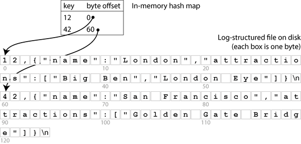
파일에 새로운 키-값 쌍을 추가할 때마다 방금 쓴 데이터의 오프셋을 반영하도록 해시 맵도 업데이트합니다. 값을 조회하려면 해시 맵을 사용하여 로그 파일의 오프셋을 찾고, 해당 위치로 seek한 다음 값을 읽습니다. 데이터 파일 일부가 이미 파일 시스템 캐시에 있으면 읽기는 디스크 I/O를 전혀 필요로 하지 않습니다.
이 접근 방식은 훨씬 빠르지만, 여전히 여러 가지 문제가 있습니다:
- 덮어쓰여진 이전 로그 항목이 차지하는 디스크 공간을 절대 해제하지 않습니다. 데이터베이스에 계속 쓰기하면 디스크 공간이 부족해질 수 있습니다.
- 해시 맵은 영구 저장되지 않으므로 데이터베이스를 다시 시작할 때(예: 전체 로그 파일을 스캔하여 각 키에 대한 최신 바이트 오프셋을 찾음) 다시 구축해야 합니다. 이는 데이터가 많을 경우 재시작 속도를 늦춥니다.
- 해시 테이블은 메모리에 맞아야 합니다. 원칙적으로 디스크에 해시 테이블을 유지할 수 있지만, 불행히도 디스크 해시 맵의 성능을 잘 내는 것은 어렵습니다. 많은 임의 접근 I/O가 필요하고, 가득 찼을 때 확장하는 것이 비용이 많이 들며, 해시 충돌은 까다로운 로직을 요구합니다[2 ].
- 범위 쿼리가 효율적이지 않습니다. 예를 들어 키
10000에서19999까지를 쉽게 스캔할 수 없습니다. 해시 맵에서 각 키를 개별적으로 조회해야 합니다.
SSTable 파일 형식
실제로 해시 테이블은 데이터베이스 인덱스에 거의 사용되지 않습니다. 대신, 키로 정렬된 구조에 데이터를 보관하는 것이 훨씬 더 일반적입니다[3 ]. 그러한 구조의 예는 정렬된 문자열 테이블, 즉 SSTable(그림 4-2 참조)입니다. 이 파일 형식도 키-값 쌍을 저장하지만, 키로 정렬되어 있으며 각 키가 파일에 한 번만 나타나는 것이 보장됩니다.
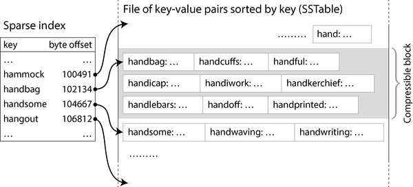
이제 모든 키를 메모리에 보관할 필요가 없습니다. SSTable 내의 키-값 쌍을 수 킬로바이트 블록으로 그룹화한 다음 각 블록의 첫 번째 키를 인덱스에 저장할 수 있습니다. 일부 키만 저장하는 이러한 유형의 인덱스를 스파스(sparse)라고 부릅니다. 이 인덱스는 SSTable의 별도 부분(예: 불변 B-트리, 트라이 또는 쿼리가 특정 키를 빠르게 조회할 수 있는 다른 데이터 구조를 사용하여)에 저장됩니다[4 ].
그림 4-2에서 한 블록의 첫 번째 키가 handbag이고 다음 블록의 첫 번째 키가 handsome이라고 가정해 보겠습니다. 이제 handiwork라는 키를 찾고 있다고 합시다. 이 키는 스파스 인덱스에 나타나지 않습니다. 정렬되어 있기 때문에 handiwork는 handbag과 handsome 사이에 나타남을 알 수 있습니다. 따라서 handbag의 오프셋으로 seek한 후 파일에서 handiwork를 찾을 때까지 스캔할 수 있습니다(없으면 키가 파일에 존재하지 않음). 수 킬로바이트 블록은 매우 빠르게 스캔할 수 있습니다.
각 레코드 블록도 압축될 수 있습니다(그림 4-2의 음영 영역). 디스크 공간을 절약하는 것 외에도 압축은 I/O 대역폭 사용을 줄이는 대신 CPU 시간을 약간 더 사용합니다.
SSTable 구성 및 병합
SSTable 파일 형식은 추가 전용 로그보다 읽기에 더 적합하지만, 쓰기는 더 어렵게 만듭니다. 단순히 끝에 추가할 수 없습니다. 그러면 키가 오름차순으로 쓰이지 않는 한 파일이 더 이상 정렬되지 않기 때문입니다. 키가 중간에 삽입될 때마다 전체 SSTable을 다시 써야 한다면 쓰기가 너무 비싸게 될 것입니다.
추가 전용 로그와 정렬된 파일의 혼합인 로그 구조 접근 방식으로 이 문제를 해결할 수 있습니다:
- 쓰기가 들어오면, 적–흑 트리, 스킵 리스트[5 ] 또는 트라이[6 ]와 같은 인메모리 순서 맵 데이터 구조에 추가합니다. 이러한 데이터 구조를 사용하면 키를 qualsiasi 순서로 삽입하고, 효율적으로 조회하고, 정렬된 순서로 다시 읽을 수 있습니다. 이 인메모리 데이터 구조를 memtable이라고 부릅니다.
- memtable이 특정 임계값(일반적으로 몇 메가바이트)보다 커지면, 정렬된 순서로 SSTable 파일로 디스크에 씁니다. 이 새로운 SSTable 파일을 데이터베이스의 가장 최근 세그먼트라고 부르며, 이전 세그먼트와 함께 별도 파일로 저장됩니다. 각 세그먼트는 자체 인덱스를 가집니다. 새 세그먼트가 디스크에 쓰이는 동안 데이터베이스는 새로운 memtable 인스턴스에 계속 쓸 수 있으며, SSTable 작성이 완료되면 이전 memtable의 메모리가 해제됩니다.
- 키의 값을 읽으려면 먼저 memtable과 가장 최근의 디스크 상 세그먼트에서 키를 찾습니다. 없으면 다음으로 오래된 세그먼트를 계속 확인하여 키를 찾거나 가장 오래된 세그먼트에 도달할 때까지 계속합니다. 키가 어떤 세그먼트에도 나타나지 않으면 데이터베이스에 존재하지 않습니다.
- 때때로 백그라운드에서 병합 및 압축 프로세스를 실행하여 세그먼트 파일을 결합하고 덮어쓰거나 삭제된 값을 삭제합니다.
세그먼트 병합은 합병 정렬(mergesort)[5 ] 알고리즘과 유사하게 작동합니다. 과정은 그림 4-3에 설명되어 있습니다: 입력 파일을 나란히 읽고, 각 파일의 첫 번째 키를 살펴보고, 가장 낮은 키(정렬 순서에 따라)를 출력 파일에 복사하고, 반복합니다. 동일한 키가 여러 입력 파일에 나타나면 더 최근 값을 유지합니다. 이렇게 하면 하나의 값만 있는 키로 정렬된 새로운 병합 세그먼트 파일이 생성되며, SSTable을 키 하나씩 반복할 수 있으므로 최소한의 메모리만 사용합니다.
데이터베이스가 크래시할 경우 memtable의 데이터가 손실되지 않도록, 스토리지 엔진은 모든 쓰기가 즉시 추가되는 별도의 로그를 디스크에 유지합니다. 이 로그는 키로 정렬되지 않지만, memtable을 크래시 후 복구하는 것이 유일한 목적이므로 상관 없습니다. memtable이 SSTable로 쓰일 때마다 해당하는 로그 부분은 삭제할 수 있습니다.
키와 해당 값을 삭제하려면 데이터 파일에 특수한 삭제 레코드인 상석(tombstone)을 추가해야 합니다. 로그 세그먼트가 병합될 때, 상석은 병합 프로세스에 삭제된 키에 대한 이전 값을 버리라고 지시합니다. 상석이 가장 오래된 세그먼트에 병합되면 제거할 수 있습니다.
여기서 설명하는 알고리즘은 본질적으로 RocksDB[7 ], Cassandra, ScyllaDB 및 HBase[8 ]에서 사용하는 것이며, 이들은 모두 SSTable과 memtable이라는 용어를 도입한 Google의 Bigtable 논문[9 ]에서 영감을 받았습니다. 이 알고리즘은 1996년 Log-Structured Merge-tree, 또는 LSM-tree[10 ]라는 이름으로 처음 발표되었으며, 이전에 수행된 로그 구조 파일 시스템 작업[11 ]을 기반으로 합니다. 이러한 이유로 정렬된 파일을 병합하고 압축하는 원리에 기반한 스토리지 엔진은 종종 LSM 스토리지 엔진이라고 불립니다.
LSM 스토리지 엔진에서 세그먼트 파일은 한 번의 패스로 기록됩니다(memtable을 쓰거나 기존 세그먼트를 병합하여) 이후에는 불변입니다. 세그먼트의 병합 및 압축은 백그라운드 스레드에서 수행될 수 있습니다. 병합이 진행되는 동안에도 memtable과 더 최근 세그먼트 파일을 사용하여 읽기를 계속 제공할 수 있습니다(읽기는 이전과 동일하게 먼저 memtable과 더 최근 세그먼트 파일을 확인합니다). 병합 프로세스가 완료되면 읽기 요청을 새 병합 세그먼트로 전환하고 입력 세그먼트 파일을 삭제할 수 있습니다.
세그먼트 파일은 반드시 로컬 디스크에 저장될 필요는 없으며, 오브젝트 스토리지에 쓰기에도 잘 적합합니다. SlateDB와 Delta Lake[12 ]가 이 방식을 취합니다.
불변 세그먼트 파일을 가지는 것은 크래시 복구를 단순화합니다. memtable을 쓰거나 세그먼트를 병합하는 동안 크래시가 발생하면 데이터베이스는 미완성 SSTable을 삭제하고 새로 시작할 수 있습니다. memtable에 쓰기를 지속하는 로그에는 레코드를 쓰는 도중에 크래시가 발생하거나 디스크가 가득 찼을 경우 불완전한 레코드가 포함될 수 있습니다. 이러한 문제는 일반적으로 로그에 체크섬을 포함하고 손상되거나 불완전한 로그 항목을 삭제함으로써 감지됩니다. 내구성과 크래시 복구에 대해서는 8장에서 더 자세히 이야기하겠습니다.
Bloom 필터
LSM 스토리지에서 오랫동안 업데이트되지 않은 키나 존재하지 않는 키를 읽는 것은 느릴 수 있습니다. 스토리지 엔진이 여러 세그먼트 파일을 확인해야 하기 때문입니다. 그러한 읽기를 가속화하기 위해 LSM 스토리지 엔진은 종종 각 세그먼트에 Bloom 필터[13 ]를 포함합니다. 이는 특정 키가 특정 SSTable에 나타나는지 확인하는 빠르지만 근사적인 방법을 제공합니다.
그림 4-4는 2개의 키와 16비트를 포함하는 Bloom 필터의 예를 보여줍니다(실제로는 더 많은 키와 더 많은 비트를 포함합니다). SSTable의 각 키에 대해 해시 함수를 계산하여 숫자 세트를 생성하고, 이를 비트 배열의 인덱스로 해석합니다. 해당 인덱스의 비트를 1로 설정하고 나머지는 0으로 둡니다. 예를 들어, 키 handbag은 숫자(2, 9, 4)로 해시되므로 두 번째, 아홉 번째, 네 번째 비트를 1로 설정합니다. 비트맵은 SSTable의 일부로 스파스 키 인덱스와 함께 저장됩니다. 약간의 추가 공간을 차지하지만, Bloom 필터는 일반적으로 SSTable의 나머지 부분보다 훨씬 작습니다.
특정 키가 SSTable에 나타나는지 확인하려면 이전과 동일한 해시를 계산하고 해당 인덱스의 비트를 확인합니다. 예를 들어 그림 4-4에서 키 handheld를 쿼리합니다. 이 키는 (6, 11, 2)로 해시됩니다. 비트 중 하나는 1(비트 번호 2)이고, 나머지 두 개는 0입니다. 이러한 검사는 모든 CPU가 지원하는 비트 연산을 사용하여 매우 빠르게 수행할 수 있습니다.
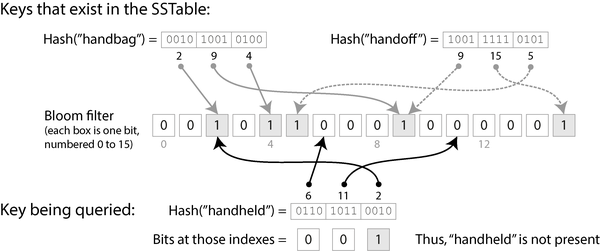
비트 중 하나라도 0이면 해당 키가 SSTable에 확실히 존재하지 않음을 알 수 있습니다. 쿼리의 비트가 모두 1이면 키가 SSTable에 있을 가능성이 높지만, 다른 키에 의해 우연히 모든 비트가 1로 설정되었을 수도 있습니다. 키가 존재하지 않음에도 존재하는 것처럼 보이는 이 경우를 false positive라고 합니다.
false positive의 확률은 키의 수, 키당 설정된 비트 수, Bloom 필터의 총 비트 수에 따라 달라집니다. 온라인 계산기 도구를 사용하여 애플리케이션에 적합한 매개변수를 계산할 수 있습니다[15 ]. 경험칙으로, SSTable의 각 키당 10비트의 Bloom 필터 공간을 할당하면 false positive 확률이 1%가 되며, 키당 5비트를 추가로 할당할 때마다 확률은 10분의 1로 감소합니다.
LSM 스토리지 엔진의 맥락에서 false positive는 문제가 되지 않습니다:
- Bloom 필터가 키가 없다고 말하면 해당 SSTable을 안전하게 건너뛸 수 있습니다. 그 SSTable에 키가 포함되어 있지 않음을 확신할 수 있기 때문입니다.
- Bloom 필터가 키가 있다고 말하면 스파스 인덱스를 참조하고 키-값 쌍 블록을 디코딩하여 키가 실제로 있는지 확인해야 합니다. false positive였다면 약간의 불필요한 작업을 수행했을 뿐, 아무 문제도 없습니다. 단순히 다음으로 오래된 세그먼트로 검색을 계속하면 됩니다.
압축 전략
중요한 세부 사항은 LSM 스토리지가 언제 압축을 수행할지, 어떤 SSTable을 압축에 포함할지를 선택하는 방법입니다. 많은 LSM 기반 스토리지 시스템은 사용할 압축 전략을 구성할 수 있습니다. 일반적인 선택 사항은 다음과 같습니다[16, 17 ]:
크기 계층 압축(size-tiered compaction)
새롭고 작은 SSTable이 점차적으로 더 오래되고 더 큰 SSTable에 병합됩니다. 예를 들어, 네 개의 256 MB SSTable이 하나의 898 MB SSTable에 압축될 수 있습니다(결과가 1,024 MB가 아닌 이유는 삭제, 덮어쓰기, 만료 시간 초과 등으로 인해). 더 오래된 데이터를 포함하는 SSTable은 매우 커질 수 있으며, 병합하는 데 많은 임시 디스크 공간이 필요합니다. 이 전략의 장점은 대부분의 데이터가 더 큰 순차적 병합에서 단 몇 번만 다시 기록되므로 매우 높은 쓰기 처리량을 처리할 수 있다는 점입니다.
레벨 압축(leveled compaction)
큰 SSTable을 쓰는 대신, 레벨 압축은 SSTable 크기를 고정하고 “레벨”(L0, L1 등)으로 증가시키는 그룹으로 묶습니다. L0에는 가장 최근에 작성된 데이터가 포함됩니다. L0을 제외한 모든 레벨에는 키 범위 파티션된 SSTable이 포함됩니다. 예를 들어, L1은 키 a–m인 SSTable과 키 n–z인 SSTable 두 개를 가질 수 있습니다. 각 레벨에는 자체 크기 제한이 있으며, 각 레벨은 이전 레벨보다 더 큽니다(예: L2가 L1보다 더 큼). 레벨의 SSTable이 최대 크기 제한을 초과하여 결합되면, 레벨 i의 하나 이상의 SSTable이 레벨 i+1에 병합되고 레벨 i에서 삭제됩니다. 이 접근 방식은 크기 계층 전략보다 압축을 더 점진적으로 진행하고 디스크 공간을 덜 사용하도록 합니다. 레벨 압축은 읽기에 더 효율적입니다. 스토리지 엔진이 키를 포함할 수 있는지 확인하기 위해 더 적은 수의 SSTable을 읽어야 하기 때문입니다.
경험칙으로, 크기 계층 압축은 주로 쓰기와 적은 읽기가 있는 경우 더 잘 작동하며, 레벨 압축은 읽기가 지배적인 워크로드에 더 잘 작동합니다. 적은 수의 키를 자주 쓰고 많은 키를 거의 쓰지 않는 경우, 레벨 압축도 유리할 수 있습니다[18 ]. 다행히도 대부분의 LSM-트리 구현은 다양한 워크로드를 위한 여러 압축 전략을 제공합니다.
많은 세부 사항이 있지만, LSM-트리의 기본 아이디어(백그라운드에서 병합되는 SSTable의 캐스케이드를 유지하는 것)는 단순하고 효과적입니다. LSM-트리의 성능 특성은 “B-트리 및 LSM-트리 비교”에서 더 자세히 논의할 것입니다.
임베디드 스토리지 엔진
많은 데이터베이스는 네트워크를 통해 쿼리를 수락하는 서비스로 실행되지만, 네트워크 API를 노출하지 않는 임베디드 데이터베이스도 있습니다. 대신, 애플리케이션 코드와 동일한 프로세스에서 실행되는 라이브러리로, 일반적으로 로컬 디스크의 파일을 읽고 쓰며, 일반적인 함수 호출을 통해 상호 작용합니다. 임베디드 스토리지 엔진의 예로는 RocksDB, SQLite, LMDB, DuckDB 및 KùzuDB[19 ]가 있습니다.
임베디드 데이터베이스는 모바일 앱에서 로컬 사용자 데이터를 저장하는 데 매우 일반적으로 사용됩니다. 백엔드에서는 데이터가 단일 머신에 맞을 만큼 충분히 작고 동시 트랜잭션이 많지 않은 경우 적절한 선택이 될 수 있습니다. 예를 들어, 각 임차인이 충분히 작고 서로 완전히 분리되어 여러 임차인의 데이터를 결합하는 쿼리를 실행할 필요가 없는 멀티 테넌트 시스템에서는 임차인당 별도의 임베디드 데이터베이스 인스턴스를 잠재적으로 사용할 수 있습니다[20 ].
이 장에서 논의한 스토리지 및 검색 방법은 임베디드와 클라이언트/서버 데이터베이스 모두에 사용됩니다. 6장과 7장에서는 여러 머신에 걸쳐 데이터베이스를 확장하는 기술을 논의할 것입니다.
B-트리
로그 구조 방식이 인기가 있지만, 키별 데이터베이스 레코드를 읽고 쓰는 데 사용되는 가장 널리 사용되는 구조는 B-트리입니다.
1970년에 도입된[21 ] B-트리는 10년도 채 지나지 않아 ” ubiquitous”하다고 불렸고[22 ], 시간이 지나면서도 매우 잘 버텼습니다. 거의 모든 관계형 데이터베이스의 표준 인덱스 구현이며, 많은 비관계형 데이터베이스도 사용합니다.
SSTable과 마찬가지로 B-트리는 키별로 키-값 쌍을 정렬하여 효율적인 키-값 조회 및 범위 쿼리를 가능하게 합니다. 그러나 거기서 유사점은 끝납니다. B-트리는 매우 다른 설계 철학을 가집니다.
앞에서 본 로그 구조 인덱스는 데이터베이스를 일반적으로 수 메가바이트 이상의 가변 크기 세그먼트로 나누어 한 번 쓰고 나면 불변으로 만듭니다. 대조적으로 B-트리는 데이터베이스를 고정 크기 블록 또는 페이지로 나누고 페이지를 제자리에서 덮어쓸 수 있습니다. 페이지의 전통적인 크기는 4 KiB이지만, PostgreSQL은 이제 8 KiB를 사용하고 MySQL은 기본적으로 16 KiB를 사용합니다.
각 페이지는 페이지 번호로 식별될 수 있으며, 이를 통해 한 페이지가 다른 페이지를 참조할 수 있습니다. 메모리 내 포인터와 유사하지만 디스크 상의 포인터입니다. 모든 페이지가 동일한 파일에 저장되면, 페이지 번호에 페이지 크기를 곱하면 페이지가 위치한 파일의 바이트 오프셋이 됩니다. 이러한 페이지 참조를 사용하여 페이지 트리를 구성할 수 있습니다(그림 4-5에 설명되어 있음).
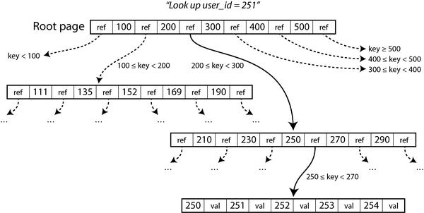
한 페이지는 B-트리의 루트로 지정됩니다. 인덱스에서 키를 조회하려면 여기서 시작합니다. 페이지에는 여러 키와 하위 페이지에 대한 참조가 포함됩니다. 각 하위 페이지는 연속적인 키 범위를 담당하며, 참조 사이의 키는 해당 범위 간의 경계를 나타냅니다(이 구조는 때때로 B+ 트리라고 불리지만, 다른 B-트리 변형과 구별할 필요는 없습니다).
그림 4-5의 예에서 키 251을 찾고 있으므로, 경계 200과 300 사이의 페이지 참조를 따라가야 합니다. 그러면 200-300 범위를 하위 범위로 더 세분화하는 유사한 페이지로 이동합니다. 결국 개별 키가 포함된 페이지(리프 페이지)에 도달하며, 이 페이지는 각 키에 대한 값을 인라인으로 포함하거나 값이 있는 페이지에 대한 참조를 포함합니다.
B-트리의 한 페이지에 있는 하위 페이지 참조 수를 분기 인자(branching factor)라고 합니다. 예를 들어 그림 4-5의 분기 인자는 6입니다. 실제로 분기 인자는 페이지 참조 및 범위 경계를 저장하는 데 필요한 공간의 양에 따라 달라지지만, 일반적으로 수백 개입니다.
기존 키의 값을 업데이트하려면 해당 키를 포함하는 리프 페이지를 검색하고 새 값을 포함하는 버전으로 디스크의 페이지를 덮어쓰면 됩니다. 새 키를 추가하려면 새 키를 포함하는 범위의 페이지를 찾고 해당 페이지에 키를 추가해야 합니다. 새 키를 수용할 충분한 공간이 페이지에 없으면 페이지를 두 개의 절반으로 채워진 페이지로 분할하고 부모 페이지를 업데이트하여 키 범위의 새 분할을 반영해야 합니다(그림 4-6에 설명되어 있음).
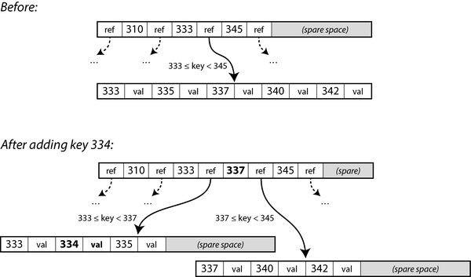
이 예에서 키 334를 삽입하려 하지만 범위 333-345 페이지가 이미 꽉 찼습니다. 따라서 이 페이지를 범위 333-337(새 키 334 포함)과 범위 337-345 페이지 두 개로 분할합니다. 또한 부모 페이지를 업데이트하여 두 하위 페이지에 대한 참조를 추가하고, 그 사이의 경계 값으로 337을 추가합니다. 부모 페이지에 새 참조를 위한 충분한 공간이 없으면 부모 페이지도 분할되어야 할 수 있으며, 분할은 루트까지 계속될 수 있습니다. 루트가 분할되면 그 위에 새 루트를 만듭니다. 키 삭제(노드 병합이 필요할 수 있음)는 더 복잡합니다[5 ].
이 알고리즘은 트리가 균형을 유지하도록 합니다. n개의 키를 가진 B-트리의 깊이는 항상 O(log n)입니다. 대부분의 데이터베이스는 세 개 또는 네 수준 깊이의 B-트리에 맞을 수 있으므로 원하는 페이지를 찾기 위해 많은 페이지 참조를 따를 필요가 없습니다(4 KiB 페이지와 분기 인자 500을 가진 네 수준 트리는 최대 250 TB를 저장할 수 있음).
B-트리를 신뢰할 수 있게 만들기
B-트리의 기본 쓰기 연산은 디스크의 페이지를 새 데이터로 덮어쓰는 것입니다. 덮어쓰기가 페이지의 위치를 변경하지 않으며, 페이지를 덮어써도 해당 페이지에 대한 모든 참조가 그대로 유지된다고 가정합니다. 이는 로그 구조 인덱스(예: LSM-트리)와는 대조적으로, LSM-트리는 파일에만 추가하고 파일을 제자리에서 수정하지 않습니다.
한 번에 여러 페이지를 덮어쓰는 작업(예: 페이지 분할 시)은 위험한 작업입니다. 데이터베이스가 일부 페이지만 쓰인 후 크래시하면 손상된 트리가 발생할 수 있습니다(예: 어떤 부모의 하위 페이지도 아닌 고아 페이지가 있을 수 있음). 하드웨어가 페이지를 원자적으로 쓰기가 할 수 없는 경우, 부분적으로 쓰여진 페이지를 얻을 수도 있습니다(이를 페이지 찢김(torn page)[23 ]이라고 함).
데이터베이스를 크래시에 탄력적으로 만들기 위해 B-트리 구현에는 일반적으로 디스크 상의 추가 데이터 구조, 즉 로그 선행 기록(WAL)이 포함됩니다. 이것은 모든 B-트리 수정 사항이 트리의 페이지에 적용되기 전에 기록되어야 하는 추가 전용 파일입니다. 데이터베이스가 크래시 후 복구될 때 이 로그를 사용하여 B-트리를 일관된 상태로 복원합니다[2, 24 ]. 파일 시스템의 동등한 메커니즘은 저널링(journaling)이라고 합니다.
성능을 위해 B-트리 구현은 일반적으로 수정된 페이지를 즉시 디스크에 쓰지 않고, 먼저 메모리에 페이지를 버퍼링합니다. 그런 다음 WAL은 크래시 발생 시 데이터가 손실되지 않도록 합니다. 데이터가 WAL에 기록되고 fsync 시스템 호출을 사용하여 디스크에 플러시된 한 데이터는 내구성이 있으며, 데이터베이스는 크래시 후 데이터를 복구할 수 있습니다[25 ].
B-트리 변형 사용
B-트리는 오랫동안 존재해 왔기 때문에 여러 변형이 개발되었습니다. 그중 일부를 언급하자면:
- 페이지를 덮어쓰고 크래시 복구를 위해 WAL을 유지하는 대신, 일부 데이터베이스(LMDB 등)는 복사-on-쓰기(copy-on-write) 스킴을 사용합니다[26 ]. 수정된 페이지는 다른 위치에 기록되고, 새 위치르르 가리키는 부모 페이지의 새 버전이 생성됩니다. 이 접근 방식은 동시성 제어에도 유용하며, “스냅샷 격리 및 반복 가능 읽기”에서 다루겠습니다.
- 페이지의 공간을 절약하기 위해 전체 키를 저장하지 않고 축약할 수 있습니다. 특히 트리 내부의 페이지에서는 키가 키 범위 간의 경계를 나타내는 데 충분한 정보만 제공하면 됩니다. 페이지에 더 많은 키를 포장하면 트리의 분기 인자가 더 높아져 수준이 줄어듭니다.
- 정렬된 키 범위 스캔을 가속화하기 위해 일부 B-트리 구현은 트리를 리프 페이지가 디스크 상에 순차적으로 나타나도록 배치하려고 시도하여 디스크 탐색 횟수를 줄입니다. 그러나 트리가 성장함에 따라 해당 순서를 유지하는 것은 어렵습니다.
- 트리에 추가 포인터가 추가되었습니다. 예를 들어, 각 리프 페이지에는 왼쪽 및 오른쪽의 형제 페이지에 대한 참조가 있을 수 있어 부모 페이지로 돌아가지 않고도 키를 순서대로 스캔할 수 있습니다.
B-트리와 LSM-트리 비교
경험칙으로, LSM-트리는 쓰기 중심 애플리케이션에 더 적합한 반면, B-트리는 읽기에 더 빠릅니다[27, 28 ]. 그러나 벤치마크는 종종 워크로드의 세부 사항에 민감합니다. 특정 워크로드로 시스템을 테스트해야 유효한 비교를 할 수 있습니다. 게다가 LSM-트리와 B-트리 사이의 엄격한 양자택일은 아닙니다. 스토리지 엔진은 때로는 두 접근 방식의 특성을 혼합하기도 합니다. 예를 들어, 여러 B-트리를 LSM-스타일로 병합하는 방식입니다. 이번 섹션에서는 스토리지 엔진 성능을 측정할 때 고려할 가치가 있는 몇 가지 사항을 간략히 논의하겠습니다.
읽기 성능
B-트리에서 키 조회는 수준당 한 페이지를 읽는 것을 포함합니다. 수준 수가 일반적으로 상당히 적기 때문에 B-트리의 읽기는 일반적으로 빠르고 예측 가능한 성능을 가집니다. LSM 스토리지 엔진에서 읽기는 종종 압축의 여러 단계에 있는 여러 SSTable을 확인해야 하지만, Bloom 필터는 필요한 디스크 I/O 작업 수를 줄이는 데 도움이 됩니다. 두 접근 방식 모두 성능이 좋을 수 있으며, 어느 것이 더 빠른지는 스토리지 엔진과 워크로드의 세부 사항에 따라 다릅니다.
범위 쿼리는 B-트리에서 간단하고 빠릅니다. 정렬된 구조를 활용할 수 있기 때문입니다. LSM 스토리지에서도 범위 쿼리는 SSTable 정렬을 활용할 수 있지만, 모든 세그먼트를 병렬로 스캔하고 결과를 결합해야 합니다. Bloom 필터는 범위 쿼리에 도움이 되지 않습니다(범위 내의 모든 가능한 키에 대한 해시를 계산해야 하기 때문이며, 이는 비현실적입니다). 따라서 LSM 접근 방식에서 범위 쿼리는 포인트 쿼리보다 더 비쌉니다[29 ].
높은 쓰기 처리량은 로그 구조 스토리지 엔진에서 지연 시간 급증을 일으킬 수 있습니다. memtable이 채워졌을 때 발생하며, 데이터가 충분히 빠르게 디스크에 쓰이지 않을 경우(예: 압축 프로세스가 들어오는 쓰기를 따라잡지 못하는 경우) 발생합니다. 많은 스토리지 엔진(RocksDB 포함)은 이러한 상황에서 백프레셔를 적용합니다. 즉, memtable이 디스크에 기록될 때까지 모든 읽기 및 쓰기를 일시 중단합니다[30, 31 ].
읽기 처리량에 관해서는, 현대 SSD(특히 SATA 버스가 아닌 훨씬 빠른 PCIe 버스를 통해 연결되는 NVMe SSD)는 여러 독립적인 읽기 요청을 병렬로 처리할 수 있습니다. LSM-트리와 B-트리 모두 높은 읽기 처리량을 제공할 수 있지만, 스토리지 엔진이 이러한 병렬성을 활용하도록 주의 깊게 설계되어야 합니다[32].
순차적 쓰기 대 임의 쓰기
B-트리로 키 공간의 모든 곳에 분산된 키를 쓰는 경우, 스토리지 엔진이 덮어써야 하는 페이지가 디스크의 어디에나 위치할 수 있으므로 디스크 작업도 임의로 분산됩니다. 반면, 로그 구조 스토리지 엔진은 전체 세그먼트 파일을 한 번에 씁니다(memtable을 쓰거나 기존 세그먼트를 압축하는 동안). 이는 B-트리의 페이지보다 훨씬 큽니다.
많은 작은 분산 쓰기(예: B-트리에서 발견되는 패턴)를 임의 쓰기(random writes)라고 부르고, 더 적은 수의 큰 쓰기(예: LSM-트리에서 발견되는 패턴)를 순차 쓰기(sequential writes)라고 부릅니다. 디스크는 일반적으로 임의 쓰기 처리량보다 순차 쓰기 처리량이 더 높기 때문에, 로그 구조 스토리지 엔진은 일반적으로 동일한 하드웨어에서 B-트리보다 더 높은 쓰기 처리량을 처리할 수 있습니다. 이 차이는 회전식 디스크(HDD)에서는 특히 크며, 오늘날 대부분의 데이터베이스가 사용하는 SSD에서는 더 작지만 여전히 눈에 띕니다.
SSD에서의 순차적 쓰기 대 임의 쓰기
회전식 디스크(HDD)에서 순차 쓰기는 임의 쓰기보다 훨씬 빠릅니다.这是因为 임의 쓰기는 디스크 헤드를 새 위치로 기계적으로 이동시키고 적절한 플래터 부분이 헤드 아래로 지나가기를 기다려야 하기 때문이며, 이는 컴퓨팅 시간 척도로는 영겁의 시간인 수 밀리초가 걸립니다. 그러나 NVMe(PCI Express 버스에 연결된 플래시 메모리 포함)를 포함한 SSD는 현재 많은 사용 사례에서 HDD를 앞섰으며, 그러한 기계적 제한을 받지 않습니다.
그럼에도 불구하고 SSD도 임의 쓰기보다 순차 쓰기에서 더 높은 처리량을 보입니다. 그 이유는 플래시 메모리는 한 번에 한 페이지(일반적으로 4 KiB)를 읽거나 쓸 수 있지만, 한 번에 한 블록(일반적으로 512 KiB)만 지울 수 있기 때문입니다. 블록의 일부 페이지에는 유효한 데이터가 포함되어 있을 수 있고, 다른 페이지에는 더 이상 필요하지 않은 데이터가 포함되어 있을 수 있습니다. 블록을 지우기 전에 컨트롤러는 유효한 데이터를 포함하는 페이지를 다른 블록으로 이동해야 합니다. 이 과정을 가비지 수집(GC)[33]이라고 합니다.
순차 쓰기 워크로드는 한 번에 더 큰 데이터 청크를 쓰므로, 512 KiB 블록 전체가 단일 파일에 속할 가능성이 높습니다. 해당 파일이 나중에 삭제되면 가비지 수집을 수행할 필요 없이 전체 블록을 지울 수 있습니다. 반면, 임의 쓰기 워크로드에서는 블록에 유효 및 무효 데이터가 혼합되어 포함될 가능성이 더 높으므로, 가비지 수집기가 블록을 지우기 전에 더 많은 작업을 수행해야 합니다[34, 35, 36]. 가비지 수집에 의해 소비되는 쓰기 대역폭은 애플리케이션에 사용할 수 없습니다. 가비지 수집으로 인해 수행되는 추가 쓰기도 플래시 메모리의 마모에 기여하므로, 임의 쓰기는 순차 쓰기보다 드라이브를 더 빠르게 마모시킵니다.
쓰기 증폭(write amplification)
모든 유형의 스토리지 엔진에서 애플리케이션의 한 번의 쓰기 요청은 기본 디스크에서 여러 개의 I/O 연산으로 변환됩니다. LSM-트리에서 값은 먼저 내구성을 위해 로그에 기록되고, memtable이 디스크에 기록될 때 다시 쓰이며, 키-값 쌍이 압축의 일부일 때마다 다시 쓰입니다(값이 키보다 훨씬 큰 경우 키와 값을 분리하고 키 및 값에 대한 참조만 포함하는 SSTable에서만 압축을 수행함으로써 이 오버헤드를 줄일 수 있습니다[37]).
B-트리 인덱스는 데이터를 최소 두 번 작성해야 합니다. 한 번은 선행 기록 로그에, 한 번은 트리 페이지 자체에 기록합니다. 또한 페이지에 몇 바이트만 변경되었더라도 크래시나 전원 장애 후에 B-트리를 올바르게 복구할 수 있도록 전체 페이지를 작성해야 할 수 있습니다[38, 39].
디스크에 기록된 총 바이트 수를 단순히 인덱스 없이 추가 전용 로그를 작성하는 경우 기록해야 할 바이트 수로 나누면 쓰기 증폭(write amplification)이 나옵니다(가끔 쓰기 증폭은 바이트 대신 I/O 연산으로 정의됩니다). 쓰기 중심 애플리케이션에서 병목 현상이 디스크에 데이터 기록할 수 있는 비율일 수 있습니다. 이 경우 쓰기 증폭이 높을수록 사용 가능한 디스크 대역폭 내에서 초당 처리할 수 있는 쓰기 횟수가 줄어듭니다.
쓰기 증폭은 LSM-트리와 B-트리 모두에서 문제가 됩니다. 어느 것이 더 나은지는 키와 값의 길이, 기존 키를 덮어쓰는지 새 키를 삽입하는지 빈도 등 다양한 요소에 따라 다릅니다. 일반적인 워크로드의 경우 LSM-트리는 전체 페이지를 기록할 필요가 없고 SSTable 청크를 압축할 수 있으므로 쓰기 증폭이 더 낮게 나타납니다[40]. 이것이 LSM 스토리지 엔진이 쓰기 중심 워크로드에 잘 적합한 또 다른 요인입니다.
처리량에 영향을 미치는 것 외에도 쓰기 증폭은 SSD의 마모와도 관련이 있습니다. 쓰기 증폭이 낮은 스토리지 엔진은 SSD를 더 천천히 마모시킵니다.
스토리지 엔진의 쓰기 처리량을 측정할 때 쓰기 증폭의 영향이 분명해질 때까지 충분히 오래 실험을 실행하는 것이 중요합니다. 빈 LSM-트리에 기록할 때는 아직 압축이 진행 중이지 않으므로 모든 디스크 대역폭이 새 기록에 사용할 수 있습니다. 데이터베이스가 성장함에 따라 새 기록은 압축과 디스크 대역폭을 공유해야 합니다.
디스크 사용량 (Disk space usage)
B-트리는 시간이 지남에 따라 단편화될 수 있습니다. 예를 들어, 많은 수의 키가 삭제되면 데이터베이스 파일에 B-트리가 더 이상 사용하지 않는 페이지가 많이 포함될 수 있습니다. B-트리에 이후 추가되는 항목은 해당 빈 페이지를 사용할 수 있지만, 파일의 중간에 위치하기 때문에 운영 체제로 쉽게 반환될 수 없으므로 파일 시스템 상에서 공간을 계속 차지합니다. 따라서 데이터베이스는 페이지를 더 나은 위치로 이동하는 백그라운드 프로세스가 필요합니다. 예를 들어 PostgreSQL의 진공(vacuum) 프로세스가 그렇습니다[25].
단편화는 LSM-트리에서는 덜 문제가 됩니다. 압축 프로세스가 주기적으로 데이터 파일을 다시 쓰기 때문이며, SSTable은 사용되지 않는 공간이 있는 페이지를 가지지 않습니다. 또한 키-값 쌍 블록은 SSTable에서 더 잘 압축될 수 있으므로 종종 B-트리보다 더 작은 파일이 디스크에 저장됩니다. 덮어쓰기된 키와 값은 압축을 통해 제거될 때까지 계속 공간을 차지하지만, 레벨 압축을 사용할 때 이 오버헤드는 상당히 낮습니다[40, 41]. 크기 계층 압축(size-tiered compaction)은 더 많은 디스크 공간을 사용하며, 특히 압축 중 일시적으로 더 많은 공간을 사용합니다(“압축 전략” 참조).
일부 데이터의 여러 사본이 디스크에 존재한다는 것은 데이터를 삭제하고 실제로 삭제되었는지 확신해야 할 때(예: 데이터 보호 규정 준수를 위해) 문제가 될 수 있습니다. 예를 들어, 대부분의 LSM 스토리지 엔진에서 삭제된 레코드는 상석(tombstone)이 모든 압축 수준을 통해 전파될 때까지 더 높은 수준에 계속 존재할 수 있으며, 이는 오랜 시간이 걸릴 수 있습니다. 전문적인 스토리지 엔진 설계는 삭제를 더 빠르게 전파할 수 있습니다[42].
반면에, SSTable 세그먼트 파일의 불변성은 특정 시점의 데이터베이스 스냅샷을 찍고 싶을 때(예: 백업 또는 테스트용 데이터베이스 복사본을 만들 때) 유용합니다. memtable을 작성하고 해당 시점에 존재했던 세그먼트 파일을 기록하면 됩니다. 스냅샷의 일부인 파일을 삭제하지 않는 한 실제로 복사할 필요가 없습니다. 페이지를 덮어쓰는 B-트리에서는 이러한 스냅샷을 효율적으로 찍기가 더 어렵습니다.
다중 열 및 보조 인덱스 (Multicolumn and Secondary Indexes)
지금까지 키-값 인덱스에 대해서만 논의했습니다. 이는 관계형 모델의 기본 키 인덱스와 유사합니다. 기본 키는 관계형 테이블의 한 행, 문서 데이터베이스의 한 문서, 그래프 데이터베이스의 한 정점을 고유하게 식별합니다. 데이터베이스의 다른 레코드는 기본 키(ID)를 통해 해당 행/문서/정점을 참조할 수 있으며, 인덱스는 이러한 참조를 해결하는 데 사용됩니다.
또한 보조 인덱스(secondary indexes)를 갖는 것도 매우 일반적입니다. 관계형 데이터베이스에서는 동일한 테이블에 여러 보조 인덱스를 생성하기 위해 CREATE INDEX 명령을 사용할 수 있어 기본 키 이외의 열로 검색할 수 있습니다. 예를 들어 그림 3-1에 표시된 관계형 스키마에서는 동일한 사용자에 속하는 모든 행을 각 테이블에서 찾을 수 있도록 user_id 열에 보조 인덱스가 있을 가능성이 가장 높습니다.
보조 인덱스는 키-값 인덱스에서 쉽게 구성할 수 있습니다. 주요 차이점은 보조 인덱스에서 인덱싱된 값이 반드시 고유하지는 않다는 것입니다. 즉, 동일한 인덱스 항목 아래에 많은 행(문서, 정점)이 있을 수 있습니다. 이는 두 가지 방법으로 해결할 수 있습니다. 즉, 인덱스의 각 값을 일치하는 행 식별자 목록(전체 텍스트 인덱스의 게시물 목록과 유사하게)으로 만들거나, 각 항목을 고유하게 만들기 위해 행 식별자를 추가하는 것입니다. 제자리 업데이트 스토리지 엔진(B-트리)과 로그 구조 스토리지 모두 인덱스를 구현하는 데 사용할 수 있습니다.
인덱스 내에 값 저장 (Storing Values Within the Index)
인덱스의 키는 쿼리가 검색하는 대상입니다. 다른 데이터는 인덱스 유형에 따라 키 외에도 인덱스에 저장될 수 있습니다:
- 실제 데이터(행, 문서, 정점)가 인덱스 구조 내에 직접 저장되는 경우 이를 집중 인덱스(clustered index)라고 합니다. 예를 들어, MySQL의 InnoDB 스토리지 엔진에서 테이블의 기본 키는 항상 집중 인덱스이며, SQL Server에서는 테이블당 하나의 집중 인덱스를 지정할 수 있습니다[43].
- 또는 값은 실제 데이터에 대한 참조일 수 있습니다. 즉, 문제의 행의 기본 키(InnoDB는 보조 인덱스에 이렇게 함) 또는 디스크 위치에 대한 직접 참조입니다. 후자의 경우 행이 저장되는 위치를 힙 파일(heap file)이라고 하며, 순서 없이 데이터를 저장합니다(추가 전용이거나 나중에 새 데이터로 덮어쓰기 위해 삭제된 행을 추적할 수 있음). 예를 들어 PostgreSQL은 힙 파일 접근 방식을 사용합니다[44].
- 두 가지의 중간 형태는 포함된 열이 있는 포함 인덱스(covering index)라고 하며, 인덱스에 테이블의 일부 열을 기본 키 또는 집중 인덱스에 대한 전체 행 또는 힙 파일의 행과 함께 저장합니다[45]. 이를 통해 일부 쿼리는 인덱스만 사용하여 답변할 수 있으며, 기본 키를 해결하거나 힙 파일을 조회할 필요가 없습니다(이 경우 인덱스가 쿼리를 포함한다고 함). 이는 일부 쿼리를 더 빠르게 만들 수 있지만 데이터 중복으로 인해 인덱스가 더 많은 디스크 공간을 사용하고 쓰기 속도를 늦춥니다.
지금까지 논의된 인덱스는 단일 키를 값에 매핑합니다. 테이블의 여러 열(또는 문서의 여러 필드)을 동시에 쿼리해야 하는 경우 “다차원 및 전체 텍스트 인덱스”를 참조하십시오.
키를 변경하지 않고 값을 업데이트할 때, 힙 파일 접근 방식은 새 값이 이전 값보다 크지 않은 경우 레코드를 제자리에서 덮어쓸 수 있습니다. 새 값이 더 큰 경우에는 더 많은 공간이 있는 힙의 새 위치로 이동해야 할 가능성이 높습니다.この場合, 모든 인덱스는 레코드의 새 힙 위치를 가리키도록 업데이트하거나 이전 힙 위치에 포워딩 포인터를 남겨야 합니다[2].
모든 것을 메모리에 유지 (Keeping Everything in Memory)
지금까지 이 장에서 논의한 모든 데이터 구조는 디스크의 제한에 대한 답변이었습니다. 메인 메모리와 비교할 때 디스크는 다루기 까다롭습니다. 자기 디스크와 SSD 모두 읽기 및 쓰기 성능을 잘 얻으려면 데이터를 신중하게 배치해야 합니다. 우리는 디스크가 전원이 꺼져도 내용이 손실되지 않는 내구성을 가지고 있고 RAM보다 기가바이트당 비용이 낮다는 두 가지 중요한 장점 때문에 이 어색함을 감수합니다.
RAM이 저렴해짐에 따라 기가바이트당 비용에 대한 논쟁은 약화되고 있습니다. 많은 데이터 세트는 단순히 그렇게 크지 않으므로 전체를 메모리에, 잠재적으로 여러 머신에 분산하여 유지하는 것이 काफी 가능합니다. 이로 인해 인메모리 데이터베이스가 개발되었습니다.
일부 인메모리 키-값 저장소(Memcached 등)는 캐싱 목적으로만 사용되며, 머신을 다시 시작하면 데이터가 손실되어도 괜찮습니다. 그러나 다른 인메모리 데이터베이스는 내구성을 목표로 하며, 이는 특수 하드웨어(배터리 구동 RAM 등) 또는 더 일반적으로 변경 사항 로그를 디스크에 기록하고, 주기적으로 스냅샷을 디스크에 기록하고, 인메모리 상태를 다른 머신에 복제함으로써 달성될 수 있습니다.
이를 통해 데이터베이스는 디스크 또는 복제본의 네트워크에서 상태를 다시 로드할 수 있습니다(특수 하드웨어를 사용하지 않는 한). 디스크에 기록하더라도 이러한 시스템은 디스크가 내구성을 위한 추가 전용 로그일 뿐이고 읽기는 완전히 메모리에서 제공되므로 여전히 인메모리 데이터베이스로 간주됩니다. 디스크에 기록하는 것은 운영상의 장점도 있습니다. 디스크의 파일은 외부 유틸리티에서 쉽게 백업, 검사 및 분석할 수 있습니다.
VoltDB, SingleStore 및 Oracle TimesTen과 같은 제품은 관계형 모델의 인메모리 데이터베이스이며, 공급업체는 디스크 기반 데이터 구조 관리의 모든 오버헤드를 제거함으로써 큰 성능 향상을 제공할 수 있다고 주장합니다[46, 47]. RAMCloud는 메모리 내 데이터와 디스크 상의 데이터 모두에 로그 구조 접근 방식을 사용하는 내구성을 가진 오픈 소스 인메모리 키-값 저장소입니다[48]. Redis와 Couchbase는 디스크에 비동기적으로 기록하여 약한 내구성을 제공합니다.
역설적으로, 인메모리 데이터베이스의 성능 이점은 디스크에서 읽을 필요가 없기 때문이 아닙니다. 디스크 기반 스토리지 엔진도 메모리가 충분하면 디스크에서 읽을 필요가 없을 수 있습니다. 운영 체제가 최근에 사용된 디스크 블록을 메모리에 캐시하기 때문입니다. 오히려 더 빠른 이유는 인메모리 데이터 구조를 디스크에 기록할 수 있는 형태로 인코딩하는 오버헤드를 피하기 때문입니다[49].
성능 외에도 인메모리 데이터베이스의 흥미로운 사용 사례는 디스크 기반 인덱스로 구현하기 어려운 데이터 모델을 제공하는 것입니다. 예를 들어, Redis는 우선순위 큐 및 세트와 같은 다양한 데이터 구조에 대한 데이터베이스와 같은 인터페이스를 제공합니다. 모든 데이터를 메모리에 유지하므로 구현이 비교적 간단합니다.
분석을 위한 데이터 스토리지 (Data Storage for Analytics)
데이터 웨어하우스의 데이터 모델은 가장 일반적으로 관계형입니다. SQL이 일반적으로 분석 쿼리에 적합하기 때문입니다. 그래프 데이터 분석 도구 중 다수는 SQL 쿼리를 생성하고 결과를 시각화하며 분석가가 데이터를 탐색할 수 있도록 합니다(드릴다운, 슬라이싱 및 다이싱 등의 작업).
표면적으로 데이터 웨어하우스와 관계형 OLTP 데이터베이스는 모두 SQL 쿼리 인터페이스를 가지므로 유사해 보입니다. 그러나 시스템의 내부 동작은 매우 다른 쿼리 패턴에 최적화되어 있기 때문에 상당히 다르게 보일 수 있습니다. 많은 데이터베이스 공급업체는 이제 트랜잭션 처리 또는 분석 워크로드 중 하나만 지원하는 데 중점을 두고 있으며 둘 다 지원하지는 않습니다.
일부 데이터베이스(Microsoft SQL Server, SAP HANA 및 SingleStore 등)는 동일한 제품에서 트랜잭션 처리 및 데이터 웨어하우징을 모두 지원합니다. 그러나 이러한 하이브리드 트랜잭션 및 분석 처리(HTAP) 데이터베이스(“데이터 웨어하우징”에서 소개됨)는 점점 더 두 개의 별도 스토리지 및 쿼리 엔진으로 구성되며, 공통 SQL 인터페이스를 통해 액세스할 수 있을 뿐입니다[50, 51, 52, 53].
클라우드 데이터 웨어하우스 (Cloud Data Warehouses)
기존 데이터 웨어하우스 공급업체(Teradata, Vertica 및 SAP HANA)는 상업 라이선스 하에 구내 배포 및 클라우드 기반 솔루션을 모두 제공합니다. 그러나 더 많은 고객이 클라우드로 이동함에 따라 클라우드 전용 데이터 웨어하우스(Google Cloud의 BigQuery, Amazon Redshift 및 Snowflake 등)도 널리 채택되었습니다. 기존 데이터 웨어하우스와 달리 클라우드 데이터 웨어하우스는 오브젝트 스토리지 및 서버리스 컴퓨팅 플랫폼과 같은 확장 가능한 클라우드 인프라를 활용할 수 있습니다.
클라우드 데이터 웨어하우스는 다른 클라우드 서비스와 더 잘 통합되는 경향이 있습니다. 예를 들어, 많은 클라우드 웨어하우스는 자동 로그 수집을 지원하며 Google Cloud의 Dataflow 또는 AWS Kinesis와 같은 데이터 처리 프레임워크와의 쉬운 통합을 제공합니다. 이러한 웨어하우스는 쿼리 계산을 스토리지 계층에서 분리하므로 더 탄력적입니다. 데이터는 로컬 디스크가 아닌 오브젝트 스토리지에 지속되므로(“클라우드 네이티브 시스템 아키텍처”에서 본 바와 같이) 스토리지 용량과 컴퓨팅 리소스를 쿼리에 대해 독립적으로 조정하기 쉽습니다.
오픈 소스 데이터 웨어하우스(Apache Hive, Trino 및 Apache Spark 등)도 클라우드와 함께 진화했습니다. 분석을 위한 데이터 스토리지가 오브젝트 스토리지의 데이터 레이크로 이동함에 따라 오픈 소스 웨어하우스는 분해되기 시작했습니다. 이전에 단일 시스템(Hive 등)에 통합되었던 다음과 같은 구성 요소는 이제 종종 별도의 구성 요소로 구현됩니다:
쿼리 엔진
쿼리 엔진(Trino, Apache DataFusion 및 Presto 등)은 SQL 쿼리를 파싱하고 실행 계획으로 최적화한 다음 데이터에 대해 실행합니다. 실행에는 일반적으로 병렬 분산 데이터 처리 작업이 필요합니다. 일부 쿼리 엔진은 기본 작업 실행을 제공하는 반면, 다른 엔진은 Spark 또는 Flink와 같은 타사 실행 프레임워크를 사용하도록 선택합니다.
스토리지 형식
스토리지 형식은 테이블의 행이 파일에서 바이트로 인코딩되는 방식을 결정하며, 이 파일은 일반적으로 오브젝트 스토리지 또는 분산 파일 시스템에 저장됩니다[12]. 그런 다음 이 데이터는 데이터 레이크를 사용하는 쿼리 엔진뿐만 아니라 다른 애플리케이션에서도 액세스할 수 있습니다. 이러한 스토리지 형식의 예로는 Parquet, ORC, Lance 및 Nimble이 있으며, 다음 섹션에서 이에 대해 더 자세히 논의할 것입니다.
테이블 형식
Parquet과 유사한 스토리지 형식으로 작성된 파일은 일반적으로 한 번 쓰이면 불변입니다. 행 삽입 및 삭제를 지원하려면 Apache Iceberg 또는 Databricks의 Delta 형식과 같은 테이블 형식을 사용할 수 있습니다. 테이블 형식은 어떤 파일이 테이블을 구성하는지 정의하는 파일 형식과 테이블의 스키마를 지정합니다. 이러한 형식은 또한 시간 여행(이전 시점의 테이블 쿼리 가능), GC, 심지어 트랜잭션과 같은 고급 기능을 제공합니다.
데이터 카탈로그
테이블 형식이 어떤 파일이 테이블을 구성하는지 정의하는 것처럼, 데이터 카탈로그는 어떤 테이블이 데이터베이스에 포함되는지 정의합니다. 카탈로그는 테이블을 생성, 이름 변경 및 삭제하는 데 사용됩니다. 스토리지 및 테이블 형식과 달리, 데이터 카탈로그(Snowflake의 Polaris 및 Databricks의 Unity Catalog 등)는 일반적으로 독립형 서비스로 실행되며 REST 인터페이스를 사용하여 쿼리할 수 있습니다. Apache Iceberg도 클라이언트 내에서 실행되거나 별도 프로세스로 실행될 수 있는 카탈로그를 제공합니다. 쿼리 엔진은 테이블을 읽고 쓸 때 카탈로그 정보를 사용합니다. 전통적으로 카탈로그와 쿼리 엔진은 통합되었지만, 이들을 분리함으로써 데이터 발견 및 데이터 거버넌스 시스템(“데이터 시스템, 법, 사회”에서 논의)이 카탈로그의 메타데이터에 액세스할 수 있게 되었습니다.
열 지향 스토리지 (Column-Oriented Storage)
“별 스키마와 눈송이 스키마: 분석을 위한 스키마”에서 논의했듯이, 데이터 웨어하우스는 종종 대규모 사실 테이블과 차원 테이블로 구성된 관계형 스키마를 사용합니다. 사실 테이블에 수조 개의 행과 페타바이트의 데이터가 있는 경우, 효율적으로 저장하고 쿼리하는 것이 어려워집니다. 차원 테이블은 일반적으로 훨씬 더 작고 관리 가능합니다(수백만 행). 따라서 이 섹션에서는 사실의 저장에 초점을 맞춥니다.
사실 테이블은 종종 100개 이상의 열을 가지지만, 일반적인 데이터 웨어하우스 쿼리는 한 번에 4~5개의 열만 액세스합니다(분석에서는 SELECT * 쿼리가 거의 필요하지 않음)[52]. 예를 들어 Example 4-1의 쿼리는 많은 수의 행(2024년 연도 동안 과일이나 사탕을 구매한 모든 발생 건)에 액세스하지만 fact_sales 테이블의 세 열(date_key, product_sk, quantity)만 액세스해야 합니다. 쿼리는 다른 모든 열을 무시합니다.
예 4-1. 요일에 따라 사람들은 신선 과일 또는 사탕을 더 구매할 의향이 있는지 분석
SELECT
dim_date.weekday, dim_product.category,
SUM(fact_sales.quantity) AS quantity_sold
FROM fact_sales
JOIN dim_date ON fact_sales.date_key = dim_date.date_key
JOIN dim_product ON fact_sales.product_sk = dim_product.product_sk
WHERE
dim_date.year = 2024 AND
dim_product.category IN ('Fresh fruit', 'Candy')
GROUP BY
dim_date.weekday, dim_product.category;이 쿼리를 효율적으로 실행하려면 어떻게 해야 할까요?
대부분의 OLTP 데이터베이스에서 스토리지는 행 지향 방식으로 구성됩니다. 즉, 테이블의 한 행에 있는 모든 값이 서로 인접해 있습니다. 문서 데이터베이스도 비슷합니다. 전체 문서는 일반적으로 한 번에 바이트 시퀀스로 저장됩니다. Figure 4-1의 CSV 예에서 볼 수 있습니다.
Example 4-1의 쿼리를 처리하려면, date_key와/또는 product_sk에 인덱스가 있어 스토리지 엔진이 특정 날짜 또는 특정 제품의 모든 판매를 찾을 수 있을 수 있습니다. 하지만 행 지향 스토리지 엔진은 여전히 모든 행(100개 이상의 속성으로 구성됨)을 디스크에서 메모리로 로드하고, 파싱하고, 필요한 조건을 충족하지 않는 행을 필터링해야 합니다. 시간이 오래 걸릴 수 있습니다.
열 지향(column-oriented 또는 columnar) 스토리지의 아이디어는 간단합니다. 한 행의 모든 값을 함께 저장하는 대신, 각 열의 모든 값을 함께 저장하는 것입니다[56]. 각 열이 별도로 저장되면 쿼리는 해당 쿼리에 사용되는 열만 읽고 파싱하면 되므로 많은 작업을 절약할 수 있습니다. Figure 4-7은 Figure 3-5의 사실 테이블을 확장하여 이 원리를 보여줍니다.
열 스토리지는 관계형 데이터 모델에서 이해하기 가장 쉽지만, 비관계형 데이터에도 동일하게 적용됩니다. 예를 들어 Parquet은 Google의 Dremel[58]을 기반으로 하는 파쇄 또는 스트리핑[59] 기술을 사용하는 문서 데이터 모델[57]을 지원하는 열 파청 스토리지 형식입니다.
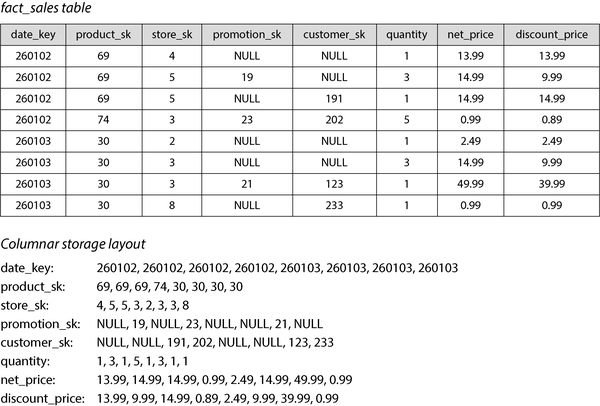
열 지향 스토리지 레이아웃은 각 열이 행을 동일한 순서로 저장한다는 점을 활용합니다. 따라서 전체 행을 재조립해야 하는 경우 각 개별 열의 23번째 항목을 가져와 23번째 행을 형성하기 위해 결합할 수 있습니다.
실제로 열 스토리지 엔진은 수백만 또는 수조 개의 행이 포함된 전체 열을 한 번에 저장하지 않습니다. 대신 테이블을 수천 또는 수백만 행 블록으로 나누고 각 블록 내에서 각 열의 값을 별도로 저장합니다[60]. 많은 쿼리가 특정 날짜 범위로 제한되므로 각 블록이 특정 타임스탬프 범위의 행을 포함하도록 하는 것이 일반적입니다. 쿼리는 필요한 날짜 범위와 겹치는 블록에서 필요한 열만 로드하면 됩니다.
열 스토리지는 오늘날 거의 모든 분석 데이터베이스에서 사용됩니다[60]. 대규모 클라우드 데이터 웨어하우스(Snowflake 등)[61]부터 단일 노드 임베디드 데이터베이스(DuckDB 등)[62] 및 제품 분석 시스템(Pinot[63] 및 Druid[64] 등)에 이르기까지 사용되며, Parquet, ORC[65, 66], Lance[67], Nimble[68] 등의 스토리지 형식과 Apache Arrow[65, 69] 및 Pandas/NumPy[70] 같은 인메모리 분석 형식에서도 사용됩니다. 일부 시계열 데이터베이스(InfluxDB IOx[71] 및 TimescaleDB[72] 등)도 열 지향 스토리지 기반입니다.
열 압축 (Column compression)
쿼리에 필요한 열만 디스크에서 로드하는 것 외에도, 데이터를 압축하여 디스크 처리량과 네트워크 대역폭 요구를 더욱 줄일 수 있습니다. 다행히도 열 지향 스토리지는 압축에 매우 적합합니다.
Figure 4-7의 각 열 값 시퀀스를 살펴보십시오. 반복이 상당히 많으며 이는 압축에 좋은 신호입니다. 열의 데이터에 따라 다양한 압축 기술을 사용할 수 있습니다[73]. 데이터 웨어하우스에서 특히 효과적인 기술 중 하나는 비트맵 인코딩(bitmap encoding)으로, Figure 4-8에 설명되어 있습니다.
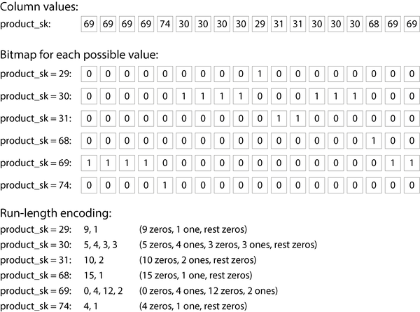
일반적으로 열의 고유 값 수는 행 수보다 작습니다(예: 소매업체는 수십억 개의 판매 트랜잭션이 있지만 고유 제품은 100,000개만 있을 수 있음). 이제 고유 값이 n개인 열을 n개의 별도 비트맵으로 변환할 수 있습니다. 각 값에 대한 하나의 비트맵으로, 각 행당 하나의 비트가 있습니다. 비트는 행에 해당 값이 있으면 1이고, 없으면 0입니다.
한 가지 옵션은 비트맵을 행당 1비트로 저장하는 것입니다. 그러나 이러한 비트맵에는 0이 많이 포함되는 경우가 많습니다(희소하다고 함). 이 경우 비트맵을 추가로 런 길이 인코딩할 수 있으며, 연속된 0 또는 1을 세고 횟수를 저장합니다(Figure 4-8 하단 참조). 로어링 비트맵(roaring bitmaps)과 같은 기술은 가장 컴팩트한 두 비트맵 표현 간에 전환됩니다[74]. 이렇게 하면 열 인코딩이 놀랍도록 효율적일 수 있습니다.
이러한 비트맵 인덱스는 데이터 웨어하우스에서 일반적인 유형의 쿼리에 매우 적합합니다. 예를 들어:
WHERE product_sk IN (31, 68, 69)
product_sk = 31, product_sk = 68 및 product_sk = 69에 대한 세 비트맵을 로드하고 세 비트맵의 비트별 OR을 계산합니다. 이는 매우 효율적으로 수행될 수 있습니다.
WHERE product_sk = 30 AND store_sk = 3
product_sk = 30 및 store_sk = 3에 대한 비트맵을 로드하고 비트별 AND를 계산합니다. 이는 열이 행을 동일한 순서로 포함하기 때문입니다. 즉, 한 열 비트맵의 k번째 비트는 다른 열 비트맵의 k번째 비트가 동일한 행에 해당합니다.
비트맵은 그래프 쿼리(예: 소셜 네트워크에서 사용자 X를 팔로우하고 사용자 Y도 팔로우하는 모든 사용자 찾기)에 답하는 데에도 사용될 수 있습니다[75].
열 지향 데이터베이스를 광범위 열(광범위 열 또는 열 패밀리라고도 함) 데이터 모델과 혼동하지 마십시오. 이 모델에서는 행이 수천 개의 열을 가질 수 있으며 모든 행이 동일한 열을 가질 필요는 없습니다[9]. 이름의 유사성에도 불구하고 광범위 데이터베이스는 행 지향입니다. 즉, 한 행의 모든 값을 함께 저장하기 때문입니다. Google Bigtable, Apache Accumulo 및 HBase는 광범위 모델을 사용하는 시스템의 예입니다.
열 스토리지의 정렬 순서 (Sort order in column storage)
열 저장소에서는 행을 저장하는 순서가 반드시 중요하지는 않습니다. 삽입된 순서대로 저장하는 것이 가장 쉽습니다. 그러면 새 행을 삽입하는 것은 각 열에 추가하는 것만 의미하기 때문입니다. 그러나 이전에 SSTable과 같이 순서를 지정할 수 있으며 이를 인덱싱 메커니즘으로 사용할 수 있습니다.
각 열을 독립적으로 정렬하는 것은 의미가 없습니다. 그러면 어떤 항목이 같은 행에 속하는지 알 수 없기 때문입니다. 행을 한 번에 전체로 정렬할 때만 행을 재조립할 수 있습니다. 즉, k번째 항목이 한 열에 있으면 같은 행의 k번째 항목이 다른 열에도 있는 것을 알기 때문입니다.
대신, 열이 열별로 저장되더라도 행 전체를 기준으로 정렬되어야 합니다. 데이터베이스 관리자는 일반적인 쿼리에 대한 지식을 사용하여 테이블이 어떤 열로 정렬되어야 하는지 선택할 수 있습니다. 예를 들어, 쿼리가 종종 날짜 범위(예: 지난 달)를 대상으로 하는 경우 date_key를 첫 번째 정렬 키로 지정하는 것이 합리적일 수 있습니다. 그러면 쿼리는 지난 달의 행만 스캔할 수 있으므로 모든 행을 스캔하는 것보다 훨씬 더 빠릅니다.
두 번째 열은 첫 번째 열에서 동일한 값을 가진 행의 정렬 순서를 결정할 수 있습니다. 예를 들어 Figure 4-7에서 date_key가 첫 번째 정렬 키인 경우, product_sk를 두 번째 정렬 키로 지정하면 같은 날짜의 같은 제품에 대한 모든 판매가 스토리지에서 함께 그룹화됩니다. 이렇게 하면 특정 날짜 범위 내에서 제품별로 판매를 그룹화하거나 필터링해야 하는 쿼리에 도움이 됩니다.
정렬 순서의 또 다른 이점은 열의 압축에 도움이 될 수 있다는 것입니다. 첫 번째 정렬 열에 고유 값이 많지 않으면 정렬 후 동일한 값이 연속적으로 반복되는 긴 시퀀스가 생깁니다. Figure 4-8에서 사용한 것과 같은 단순한 런 길이 인코딩으로 그 열을 수 킬로바이트로 압축할 수 있습니다(표에 수십억 개의 행이 있더라도).
이 압축 효과는 첫 번째 정렬 키에서 가장 강력합니다. 두 번째 및 세 번째 정렬 키는 더 뒤섞여 반복 값의 긴 시퀀스가 많지 않으므로 압축이 잘 되지 않습니다. 정렬 우선순위가 더 낮은 열은 본질적으로 무작위 순서로 나타나므로 압축률이 덜 좋을 가능성이 높습니다. 그러나 처음 몇 개 열을 정렬하는 것은 전반적으로 이점이 있습니다.
열 지향 스토리지에 쓰기 (Writing to column-oriented storage)
“트랜잭션 처리와 분석의 특성화”에서 보았듯이 데이터 웨어하우스에서 읽기는 많은 수의 행에 대한 집계로 구성되는 경향이 있습니다. 열 지향 스토리지, 압축 및 정렬은 모두 이러한 읽기 쿼리를 더 빠르게 만드는 데 도움이 됩니다.
데이터 웨어하우스에서 쓰기는 종종 ETL 프로세스를 통해 대량의 데이터 가져오기로 구성됩니다. 열 스토리지의 경우 정렬된 테이블의 중간에 개별 행을 쓰는 것은 매우 비효율적입니다. 삽입 위치부터 모든 압축된 열을 다시 작성해야 하기 때문입니다. 그러나 많은 수의 행을 한 번에 대량으로 쓰면 열을 다시 작성하는 비용을 분산할 수 있으므로 효율적입니다.
일반적으로 로그 구조 접근 방식이 배치로 쓰기를 수행하는 데 사용됩니다. 모든 쓰기는 먼저 행 지향, 정렬된 인메모리 저장소에 기록됩니다. 충분한 쓰기가 축적되면 디스크의 열 인코딩 파일과 병합되어 새 파일로 대량에 기록됩니다. 이전 파일은 불변으로 유지되고 새 파일은 한 번에 기록되므로 오브젝트 스토리지가 이러한 파일을 저장하기에 적합합니다.
쿼리는 디스크의 열 데이터와 메모리의 최근 쓰기를 모두 검토하여 결합해야 합니다. 쿼리 실행 엔진은 사용자에게 이러한 구분을 숨깁니다. 분석가의 관점에서 삽입, 업데이트 또는 삭제로 수정된 데이터는 이후 쿼리에 즉시 반영됩니다. Snowflake, Vertica, Apache Pinot, Apache Druid 및 많은 다른 데이터베이스가 이와 같이 작동합니다[61, 63, 64, 76].
쿼리 실행: 컴파일 및 벡터화 (Query Execution: Compilation and Vectorization)
복잡한 분석용 SQL 쿼리는 여러 단계로 구성된 쿼리 계획으로 분해되며, 이를 연산자(operators)라고 합니다. 연산자는 여러 머신에 분산되어 병렬로 실행될 수 있습니다. 쿼리 플래너는 어떤 연산자를 사용할지, 어떤 순서로 실행할지, 각 연산자를 어디서 실행할지 선택함으로써 많은 최적화를 수행할 수 있습니다.
각 연산자 내에서 쿼리 엔진은 열의 값과 다양한 작업을 수행해야 할 수 있습니다. 예를 들어, 특정 값 집합에 속하는 모든 행을 찾거나(예: 조인 시), 값이 15보다 큰지 확인해야 할 수 있습니다. 쿼리 엔진은 동일한 행에 대해 여러 열을 확인해야 할 수도 있습니다(예: 제품이 “바나나”이고 상점이 관심 있는 특정 상점인 모든 판매 트랜잭션 찾기).
수백만 개의 행을 스캔해야 하는 데이터 웨어하우스 쿼리의 경우, 디스크에서 읽어야 하는 데이터 양뿐만 아니라 복잡한 연산자를 실행하는 데 필요한 CPU 시간도 걱정해야 합니다. 가장 단순한 연산자는 프로그래밍 언어의 인터프리터와 유사합니다. 각 행을 반복하면서 쿼리를 나타내는 데이터 구조를 확인하여 어떤 열에 대해 어떤 비교나 계산을 수행해야 하는지 파악합니다. 불행히도 이는 많은 분석 목적에는 너무 느립니다. 효율적인 쿼리 실행을 위한 두 가지 대안적 접근 방식이 등장했습니다[77]:
쿼리 컴파일(query compilation)
쿼리 엔진은 SQL 쿼리를 가져와 이를 실행하기 위한 코드를 생성합니다. 코드는 행을 하나씩 반복하고 관심 있는 열의 값을 확인하고 필요한 비교나 계산을 수행하며, 필요한 조건이 충족되면 필요한 값을 출력 버퍼에 복사합니다. 그런 다음 쿼리 엔진은 생성된 코드를 종종 LLVM과 같은 기존 컴파일러를 사용하여 기계 코드로 컴파일하고 메모리에 로드된 열 인코딩 데이터에서 실행합니다. 이러한 코드 생성 접근 방식은 Java 가상 머신(JVM)과 유사한 런타임에서 사용되는 JIT(Just-In-Time) 컴파일 접근 방식과 유사합니다.
벡터화 처리(vectorized processing)
쿼리는 컴파일되지 않고 인터프리터 방식으로 실행되지만, 행을 하나씩 반복하는 대신 열의 여러 값을 한 번에 배치(batch)로 처리하여 빠르게 만듭니다. 데이터베이스에는 미리 정의된 고정 연산자 세트가 내장되어 있으며, 인수를 전달하고 배치 결과를 받을 수 있습니다[50, 73].
예를 들어, product_sk 열과 제품 ID(예: “바나나”)를 평등 연산자에 전달하고 일치하는 값이 1인 비트맵(입력 열의 각 값에 대한 비트)을 받을 수 있습니다. 그런 다음 store_sk 열과 관심 있는 상점의 ID를 동일한 평등 연산자에 전달하여 또 다른 비트맵을 받을 수 있습니다. 마지막으로 두 비트맵을 비트별 AND 연산자에 전달하여(Figure 4-9 참조) 결과로 특정 상점에서 바나나를 구매한 모든 판매에 대해 1이 포함된 비트맵을 얻을 수 있습니다.
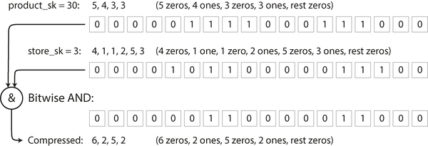
두 접근 방식은 구현 방식에서 매우 다르지만, 모두 실제로 사용됩니다[77]. 둘 다 현대 CPU의 특성을 활용하여 매우 좋은 성능을 달성할 수 있습니다:
- 캐시 미스를 줄이기 위해 무작위 접근보다 순차적 메모리 접근을 선호합니다.
- CPU 명령어 처리 파이프라인을 바쁘게 유지하고 분기 잘못 예측을 피하기 위해 작은 수의 명령어와 함수 호출이 없는 엄격한 내부 루프(i.e.)에서 대부분의 작업을 수행합니다.
- 여러 스레드와 단일 명령어 다중 데이터(SIMD) 명령어[79, 80]와 같은 병렬성을 활용합니다.
- 별도의 인메모리 표현으로 디코딩하지 않고 압축된 데이터에 직접 작업하여 메모리 할당 및 복사 비용을 절약합니다.
물질화된 뷰와 데이터 큐브 (Materialized Views and Data Cubes)
이전에 “타임라인 물질화 및 업데이트”에서 물질화된 뷰를 접했습니다. 관계형 데이터 모델에서 물질화된 뷰는 쿼리 결과의 내용인 테이블 유사한 객체입니다. 물질화된 뷰는 쿼리 결과의 실제 사본으로 디스크에 기록된 반면, 가상 뷰는 쿼리를 작성하기 위한 바로 가기일 뿐입니다. 가상 뷰를 읽을 때 SQL 엔진은 확장하여 즉시 뷰의 기본 쿼리를 처리한 다음 확장된 쿼리를 처리합니다.
기본 데이터가 변경되면 물질화된 뷰도 그에 따라 업데이트되어야 합니다. 일부 데이터베이스는 자동으로 이를 수행할 수 있으며 Materialize와 같은 물질화된 뷰 유지 관리를 전문으로 하는 시스템도 있습니다. 우리는 “물질화된 뷰 유지 관리”에서 이 주제로 다시 돌아올 것입니다. 이러한 업데이트를 수행하는 것은 쓰기에 더 많은 작업이 필요하지만, 물질화된 뷰는 동일한 쿼리를 반복적으로 수행해야 하는 워크로드에서 읽기 성능을 향상시킬 수 있습니다.
물질화된 집계(materialized aggregates)는 데이터 웨어하우스에서 유용할 수 있는 물질화된 뷰의 한 유형입니다. 앞서 논의했듯이, 데이터 웨어하우스 쿼리는 종종 COUNT, SUM, AVG, MIN 또는 MAX와 같은 집계 함수를 포함합니다. 동일한 집계가 많은 쿼리에서 사용된다면 매번 원시 데이터를 처리하는 것은 낭비일 수 있습니다. 쿼리가 가장 자주 사용하는 일부 개수 또는 합계를 캐시하지 않겠습니까? 데이터 큐브(data cube, OLAP 큐브라고도 함)는 서로 다른 차원으로 그룹화된 집계 그리드를 생성함으로써 이를 수행합니다. Figure 4-10은 예시를 보여줍니다.
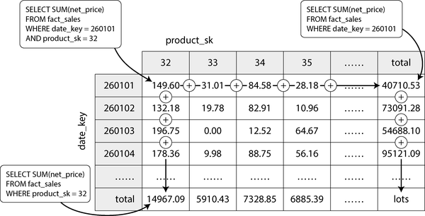
각 사실이 두 개의 차원 테이블에만 외부 키를 가진다고 가정해 보겠습니다(예: Figure 4-10에서는 date_key와 product_sk). 날짜를 한 축에, 제품을 다른 축에 하는 2차원 테이블을 그릴 수 있습니다. 각 셀에는 해당 날짜-제품 조합에 대한 모든 사실의 집계(예: SUM)인 속성(예: net_price)이 포함됩니다. 그런 다음 각 행 또는 열에 동일한 집계를 적용하여 한 차원이 줄어든 요약(예: 날짜별 총 판매량 또는 제품별 총 판매량)을 얻을 수 있습니다.
일반적으로 사실은 두 개 이상의 차원을 가집니다. Figure 3-5에는 날짜, 제품, 매장, 프로모션, 고객 등 5개의 차원이 있습니다. 5차원 하이퍼큐브가 어떻게 생겼는지 상상하기는 어렵지만 원리는 동일합니다. 각 셀에는 특정 날짜-제품-매장-프로모션-고객 조합에 대한 판매량이 포함됩니다. 이러한 값은 각 차원을 따라 반복적으로 요약될 수 있습니다.
물질화된 데이터 큐브의 장점은 특정 쿼리가 매우 빨라진다는 점입니다. 즉, 미리 계산되었기 때문입니다. 예를 들어, 어제 매장별 총 판매량을 알고 싶다면 해당 차원의 총합만 보면 되므로 수백만 개의 행을 스캔할 필요가 없습니다.
단점은 데이터 큐브가 원시 데이터 쿼리만큼 유연하지 않다는 점입니다. 예를 들어, 가격이 $100보다 높은 품목이 판매의 어느 비율을 차지하는지 계산할 수 없습니다. 가격이 차원이 아니기 때문입니다. 따라서 대부분의 데이터 웨어하우스는 가능한 한 많은 원시 데이터를 유지하고 데이터 큐브와 같은 집계는 특정 쿼리에 대한 성능 향상용으로만 사용하려고 합니다.
다차원 및 전체 텍스트 인덱스 (Multidimensional and Full-Text Indexes)
이 장의 첫 절반에서 본 B-트리와 LSM-트리는 단일 속성에 대한 범위 쿼리를 허용합니다. 예를 들어 키가 사용자 이름인 경우 이 인덱스를 사용하여 L로 시작하는 모든 이름을 효율적으로 찾을 수 있습니다. 그러나 때로는 단일 속성으로만 검색하는 것만으로는 충분하지 않습니다.
가장 일반적인 유형의 다중 열 인덱스는 연결 인덱스(concatenated index)입니다. 단순히 여러 필드를 하나의 키로 결합하는 것으로(인덱스 정의는 필드를 연결할 순서를 지정함), 오래된 전화번호부와 유사합니다. 이 전화번호부는 (성, 이름)을 전화번호에 매핑하는 인덱스를 제공합니다. 정렬 순서 덕분에 이 인덱스는 특정 성을 가진 모든 사람이나 특정 성-이름 조합을 가진 모든 사람을 찾는 데 사용할 수 있습니다. 그러나 특정 이름을 가진 모든 사람을 찾으려는 경우에는 인덱스가 쓸모가 없습니다.
반면에 다차원 인덱스를 사용하면 여러 열을 동시에 쿼리할 수 있습니다. 이는 특히 지리 공간 데이터에 중요합니다. 예를 들어, 레스토랑 검색 웹사이트는 각 레스토랑의 위도와 경도가 포함된 데이터베이스를 가질 수 있습니다. 사용자가 현재 보고 있는 지도 영역 내의 레스토랑을 검색하는 경우, 웹사이트는 사용자가 현재 보고 있는 직사각형 지도 영역 내의 모든 레스토랑을 검색해야 합니다. 이는 다음 두 차원 범위 쿼리를 필요로 합니다:
SELECT * FROM restaurants WHERE latitude > 51.4946 AND latitude < 51.5079
AND longitude > -0.1162 AND longitude < -0.1004;위도와 경도 열에 대한 연결 인덱스는 그러한 유형의 쿼리에 효율적으로 답할 수 없습니다. 이 인덱스는 위도 범위 내의 모든 레스토랑(경도는 무관)이거나 경도 범위 내의 모든 레스토랑(북극과 남극 사이 어디든지)을 제공할 수 있지만, 둘 다 동시에 제공할 수는 없습니다.
한 가지 옵션은 두 차원 위치를 공간 충전 곡선을 통해 단일 숫자로 변환한 다음 일반 B-트리 인덱스를 사용하는 것입니다[83]. 더 일반적으로는 R-트리 또는 Bkd-트리[84]와 같은 전문 공간 인덱스가 사용되며, 인접한 데이터 포인트가 동일한 하위 트리에 속하도록 공간을 분할합니다. 예를 들어, PostgreSQL의 일반화된 검색 트리 인덱싱 시설을 사용하여 PostGIS가 R-트리로 지리 공간 인덱스를 구현합니다[85]. 정기적으로 배치된 삼각형, 정사각형 또는 육각형 그리드를 사용하는 것도 가능합니다[86].
그러나 다차원 인덱스는 지리적 위치에만 국한되지 않습니다. 예를 들어, 전자상거래 웹사이트에서는 (빨강, 초록, 파랑) 차원에 대한 3차원 인덱스를 사용하여 특정 범위의 색상을 가진 제품을 검색할 수 있으며, 기상 관측 데이터베이스에서는 (날짜, 온도)에 대한 2차원 인덱스를 사용하여 특정 연도 동안 온도가 25°C에서 30°C 사이인 모든 관측을 효율적으로 검색할 수 있습니다. 1차원 인덱스를 사용하면 해당 연도의 모든 레코드(온도에 관계없이)를 스캔한 다음 온도로 필터링하거나 그 반대의 작업을 수행해야 합니다. 2차원 인덱스는 타임스탬프와 온도를 동시에 좁혀 결과를 좁힐 수 있습니다[87].
전체 텍스트 검색 (Full-Text Search)
전체 텍스트 검색을 사용하면 텍스트 문서(웹 페이지, 제품 설명 등) 컬렉션에서 텍스트의 어느 곳에든 나타날 수 있는 키워드로 검색할 수 있습니다[88]. 정보 검색은 광범위하고 전문적인 주제로 언어별 처리를 수반하는 경우가 많습니다. 예를 들어, 여러 아시아 언어는 단어 사이에 공백이나 구두점이 없기 때문에 텍스트를 단어로 분할하려면 어떤 문자 시퀀스가 단어를 구성하는지 나타내는 모델이 필요합니다. 전체 텍스트 검색에는 철자 오류 또는 단어의 다양한 문법 형태와 같은 유사하지만 동일한 단어를 일치시키고 동의어 처리도 자주 포함됩니다. 이러한 문제는 이 책의 범위를 벗어납니다.
그러나 핵심적으로 전체 텍스트 검색을 또 다른 유형의 다차원 쿼리로 생각할 수 있습니다. 이 경우 텍스트에 나타날 수 있는 각 단어(용어)가 차원입니다. 문서에 용어 x가 포함되어 있으면 차원 x의 값이 1이고, 포함되어 있지 않으면 0입니다. “red apples”를 언급하는 문서를 검색한다는 것은 빨강 차원과 사과 차원 모두에서 1을 찾으려는 쿼리를 의미합니다. 차원의 수는 매우 클 수 있습니다.
많은 검색 엔진이 이러한 쿼리에 답하는 데 사용하는 데이터 구조는 역색인(inverted index)이라고 불립니다. 이는 키가 용어이고 값이 해당 용어를 포함하는 모든 문서 ID 목록(게시물 목록)인 키-값 구조입니다. 문서 ID가 순차 숫자인 경우 게시물 목록은 희소 비트맵(Figure 4-8 참조)으로도 표현될 수 있습니다. 용어 x의 비트맵에서 n번째 비트는 문서 ID가 n인 문서에 용어 x가 포함되어 있으면 1입니다.
용어 x와 y를 모두 포함하는 모든 문서를 찾는 것은 이제 벡터화된 데이터 웨어하우스 쿼리와 유사합니다(Figure 4-9 참조). 용어 x 및 y에 대한 두 비트맵을 로드하고 비트별 AND를 계산합니다. 비트맵이 런 길이 인코딩되어 있어도 매우 효율적으로 수행할 수 있습니다.
예를 들어, Elasticsearch 및 Solr에서 사용되는 전체 텍스트 인덱싱 엔진인 Lucene은 이와 같이 작동합니다[90]. Lucene은 SSTable과 유사한 정렬된 파일에 용어에서 게시물 목록으로의 매핑을 저장하며, 이번 장에서 앞서 살펴본 것과 동일한 로그 구조 접근 방식을 사용하여 백그라운드에서 병합됩니다[91]. PostgreSQL의 GIN 인덱스 유형도 전체 텍스트 검색 및 JSON 문서 내 인덱싱을 지원하기 위해 게시물 목록을 사용합니다[92, 93].
텍스트를 단어로 분할하는 대신, 길이가 n인 모든 부분 문자열, 즉 n그램(n-gram)을 찾는 대안이 있습니다. 예를 들어, 문자열 hello의 3그램(n = 3)은 hel, ell, llo입니다. 모든 3그램에 대한 역색인을 구축하면 문서에서 적어도 세 글자 이상의 임의의 부분 문자열을 검색할 수 있습니다. 3그램 인덱스는 검색 쿼리에서 정규 표현식도 허용합니다. 단점은 크기가 상당히 크다는 것입니다[94].
문서나 쿼리의 철자 오류를 처리하기 위해 Lucene은 특정 편집 거리 내의 단어를 검색할 수 있습니다(편집 거리 1은 한 글자가 추가, 제거 또는 대체되었음을 의미함)[95]. 이는 키의 문자 위에 유한 상태 오토마타로서 용어 집합을 저장하고 이를 레벤슈타인 오토마타(Levenshtein automaton)로 변환하여 주어진 편집 거리 내의 단어에 대한 효율적인 검색을 지원하는 방식으로 수행됩니다[96, 97].
벡터 임베딩 (Vector Embeddings)
의미적 검색(시맨틱 서치)은 동의어와 철자 오류를 넘어 문서의 개념과 사용자 의도를 이해하려고 시도합니다. 검색 결과를 대규모 언어 모델(LLM)의 출력에 통합하는 검색 증강 생성과 같은 AI 애플리케이션에서 중요한 부분이 되고 있습니다. 예를 들어, 도움말 페이지에 “구독 취소”라는 제목의 페이지가 포함되어 있는 경우, 사용자는 완전히 다른 단어를 사용하더라도 “내 계정 어떻게 닫나요?” 또는 “계약 해지”를 검색했을 때 해당 페이지를 찾을 수 있어야 합니다. 이들은 의미 측면에서 가깝습니다.
문서의 의미, 즉 시맨틱을 이해하기 위해 의미적 검색 인덱스는 임베딩 모델을 사용하여 텍스트 문서를 부동 소수점 값의 벡터, 즉 벡터 임베딩(vector embedding)으로 변환합니다. 이는 종종 LLM을 사용하여 수행됩니다. 벡터는 다차원 공간의 점을 나타내며, 각 부동 소수점 값은 문서가 한 차원의 축을 따라 위치한 곳을 나타냅니다. 임베딩 모델은 입력 문서가 의미적으로 유사할 때 벡터 임베딩이 이 다차원 공간에서 서로 가까워지도록 생성합니다.
우리는 “쿼리 실행: 컴파일 및 벡터화”에서 벡터화 처리(vectorized processing)라는 용어를 보았습니다. 의미적 검색에서의 벡터는 다른 의미입니다. 벡터화 처리에서 벡터는 최적화된 코드로 처리할 수 있는 비트 배치를 의미하는 반면, 임베딩 모델에서 벡터는 다차원 공간의 위치를 나타내는 부동 소수점 숫자 배열입니다.
예를 들어, 농업에 관한 위키백과 페이지에 대한 3차원 벡터 임베딩은 [0.38, 0.83, 0.41]일 수 있습니다. 채소에 관한 페이지는 상당히 가까울 수 있으며, 아마도 [0.36, 0.64, 0.67] 임베딩을 가질 것입니다. 별 스키마에 관한 페이지는 [0.85, 0.10, -0.52] 임베딩을 가질 수 있으며, 이는 비교적 멀리 떨어져 있습니다. 첫 두 벡터가 세 번째 벡터보다 더 가깝다는 것을 알 수 있습니다.
임베딩 모델은 훨씬 더 큰 벡터(종종 1,000개 이상의 숫자)를 사용하지만 원리는 동일합니다. 우리는 개별 숫자가 무엇을 의미하는지 이해하려고 시도하지 않습니다. 그것들은 단지 모델이 추상적인 다차원 공간의 위치를 가리키는 방법일 뿐입니다. 검색 엔진은 코사인 유사도 또는 유클리드 거리와 같은 거리 함수를 사용하여 벡터 사이의 거리를 측정합니다. 코사인 유사도는 두 벡터의 각도의 코사인을 측정하여 얼마나 가까운지 결정하는 반면, 유클리드 거리는 공간에서 두 점 사이의 직선 거리를 측정합니다.
워드투벡(Word2Vec)[98], BERT[99], GPT[100]과 같은 초기 임베딩 모델 중 다수는 텍스트 데이터로 작업했습니다. 이러한 모델은 일반적으로 신경망으로 구현됩니다. 연구자들은 비디오, 오디오 및 이미지에도 임베딩 모델을 만들었습니다. 더 최근에는 모델 아키텍처가 멀티모달이 되었습니다. 즉, 단일 모델이 텍스트 및 이미지와 같은 여러 모달리티에 대한 벡터 임베딩을 생성할 수 있습니다.
의미적 검색 엔진은 사용자가 쿼리를 입력할 때 임베딩 모델을 사용하여 쿼리의 벡터 임베딩을 생성합니다. 사용자의 쿼리와 관련 컨텍스트(예: 사용자 위치)는 임베딩 모델에 입력됩니다. 임베딩 모델이 쿼리의 벡터 임베딩을 생성한 후, 검색 엔진은 벡터 인덱스를 사용하여 쿼리 벡터와 가장 가까운 벡터 임베딩을 가진 문서를 찾아야 합니다.
벡터 인덱스는 문서 컬렉션의 벡터 임베딩을 저장합니다. 인덱스를 쿼리하려면 쿼리의 벡터 임베딩을 전달하면 인덱스는 쿼리 벡터와 가장 가까운 벡터를 가진 문서를 반환합니다. 이전에 본 R-트리는 많은 차원을 가진 벡터에서는 잘 작동하지 않으므로 IVF(인버티드 파일) 인덱스 및 HNSW(계층적 navigable 작은 세계) 인덱스와 같은 전문 벡터 인덱스가 사용됩니다.
플랫 인덱스(flat indexes)
벡터는 인덱스에 있는 그대로 저장됩니다. 쿼리는 모든 벡터를 읽고 쿼리 벡터와의 거리를 측정해야 합니다. 플랫 인덱스는 정확하지만, 쿼리와 각 벡터 간의 거리를 측정하는 것은 느립니다.
인버티드 파일(IVF) 인덱스
벡터 공간을 센트로이드라고 하는 벡터 파티션으로 클러스터링하여 비교해야 하는 벡터 수를 줄입니다. IVF 인덱스는 플랫 인덱스보다 빠르지만 근사 결과만 제공할 수 있습니다. 쿼리와 문서가 서로 가까운 경우에도 서로 다른 파티션에 속할 수 있습니다. IVF 인덱스에 대한 쿼리는 먼저 프로브(probes)를 정의하며, 이는 확인할 파티션의 수입니다. 더 많은 프로브를 사용하는 쿼리는 더 정확하지만 느립니다. 더 많은 벡터를 비교해야 하기 때문입니다.
계층적 navigable 작은 세계(HNSW) 인덱스
HNSW 인덱스는 그림 4-11에 설명된 대로 벡터 공간에 여러 계층을 유지합니다. 각 계층은 그래프로 표현되며, 노드는 벡터를 나타내고 에지는 인접 벡터와의 근접성을 나타냅니다. 쿼리는 최상위 계층에서 가장 가까운 벡터를 찾는 것으로 시작합니다. 최상위 계층은 노드 수가 적습니다. 그런 다음 쿼리는 더 아래 계층의 동일한 노드로 이동하여 해당 계층의 에지를 따라 더 촘촘하게 연결된 쿼리 벡터에 더 가까운 벡터를 찾습니다. 마지막 계층에 도달할 때까지 이 과정이 계속됩니다. IVF 인덱스와 마찬가지로 HNSW 인덱스는 근사적입니다.
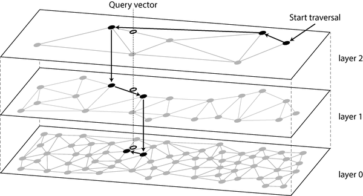
많은 인기 있는 벡터 데이터베이스는 IVF 및 HNSW 인덱스를 구현합니다. Facebook의 Faiss 라이브러리는 각각 여러 변형을 구현하고 있으며[101], PostgreSQL의 pgvector도 둘 다 지원합니다[102]. IVF 및 HNSW 알고리즘의 전체 세부 사항은 이 책의 범위를 벗어나지만, 해당 논문은 훌륭한 자료입니다[103, 104].
요약
이 장에서는 데이터베이스가 스토리지와 검색을 수행하는 방식을 이해하려고 노력했습니다. 데이터를 데이터베이스에 저장하면 어떤 일이 발생하며, 나중에 데이터를 다시 쿼리할 때 데이터베이스가 무엇을 하는지 알아보았습니다.
“운영 시스템 대 분석 시스템”에서는 트랜잭션 처리(OLTP)와 분석(OLAP)의 구별을 소개했습니다. 이번 장에서는 OLTP에 최적화된 스토리지 엔진이 분석에 최적화된 스토리지 엔진과 매우 다르다는 것을 보았습니다:
- OLTP 시스템은 각 요청이 소수의 레코드를 읽고 쓰며 빠른 응답이 필요한 대량의 요청에 최적화되어 있습니다. 레코드는 일반적으로 기본 키 또는 보조 인덱스를 통해 액세스되며, 이러한 인덱스는 일반적으로 키에서 레코드에 대한 순서 매핑이며 범위 쿼리도 지원합니다.
- 데이터 웨어하우스와 유사한 분석 시스템은 많은 수의 레코드를 스캔하는 복잡한 읽기 쿼리에 최적화되어 있습니다. 일반적으로 열 지향 스토리지 레이아웃과 압축을 사용하여 그러한 쿼리가 디스크에서 읽어야 하는 데이터 양을 최소화하고, JIT 쿼리 컴파일 또는 벡터화를 사용하여 데이터 처리에 소요되는 CPU 시간을 최소화합니다.
OLTP 측면에서는 두 가지 주요 사상에 속하는 스토리지 엔진을 살펴보았습니다:
- 로그 구조 접근 방식은 파일에 추가하고 더 이상 필요하지 않은 파일을 삭제할 수 있지만 한 번 쓰인 파일을 업데이트하지 않습니다. 일반적으로 로그 구조 스토리지 엔진은 높은 쓰기 처리량을 제공합니다. SSTable, LSM-트리, RocksDB, Cassandra, HBase, Lucene 등이 이 그룹에 속합니다.
- 제자리 업데이트 접근 방식은 디스크를 고정 크기 페이지의 집합으로 취급하여 덮어쓸 수 있습니다. 가장 일반적인 예인 B-트리는 모든 주요 관계형 OLTP 데이터베이스와 많은 비관계형 데이터베이스에서 사용됩니다. 일반적으로 B-트리는 읽기에 더 적합하며 로그 구조 스토리지보다 더 높은 읽기 처리량과 더 낮은 응답 시간을 제공합니다.
그런 다음 여러 조건을 동시에 검색할 수 있는 인덱스를 살펴보았습니다. 예를 들어 위도와 경도로 지도上的 점에 동시에 검색할 수 있는 R-트리와 같은 다차원 인덱스와 동일한 텍스트에 여러 키워드가 나타나는지 검색할 수 있는 전체 텍스트 검색 인덱스입니다. 마지막으로, 벡터 데이터베이스는 텍스트 문서 및 기타 미디어에 대한 의미적 검색에 사용되며, 더 많은 차원을 가진 벡터를 사용하고 벡터 유사도를 비교하여 유사한 문서를 찾는다는 것을 확인했습니다.
스토리지 엔진의 내부 작동 방식에 대한 이 지식을 통해 애플리케이션 개발자는 특정 애플리케이션에 가장 적합한 도구를 알 수 있는 훨씬 더 나은 위치에 서게 됩니다. 데이터베이스 조정 매개변수를 변경해야 하는 경우, 이 이해를 통해 더 높거나 낮은 값이 어떤 영향을 미칠지 상상할 수 있습니다.
이 장이 특정 스토리지 엔진을 조정하는 전문가로 만들어주지는 못했지만, 선택한 데이터베이스의 문서를 이해할 수 있는 충분한 어휘와 아이디어를 제공했을 것입니다.
각주
참조
[1 ] Nikolay Samokhvalov.“How Partial, Covering, and Multicolumn Indexes May Slow Down UPDATEs in PostgreSQL.” postgres.ai, October 2021. Archived at perma.cc/PBK3-F4G9
[2 ] Goetz Graefe.“Modern B-Tree Techniques.” Foundations and Trends in Databases, volume 3, issue 4, pages 203–402, August 2011. doi:10.1561/1900000028
[3 ] Evan Jones.“Why Databases Use Ordered Indexes but Programming Uses Hash Tables.” evanjones.ca, December 2019. Archived at perma.cc/NJX8-3ZZD
[4 ] Branimir Lambov.“CEP-25: Trie-Indexed SSTable Format.” cwiki.apache.org, November 2022. Archived at perma.cc/HD7W-PW8U (linked Google Doc archived at perma.cc/UL6C-AAAE)
[5 ] Thomas H. Cormen, Charles E. Leiserson, Ronald L. Rivest, and Clifford Stein. Introduction to Algorithms, 3rd edition. MIT Press, 2009. ISBN: 9780262533058
[6 ] Branimir Lambov.“Trie Memtables in Cassandra.” Proceedings of the VLDB Endowment, volume 15, issue 12, pages 3359–3371, August 2022. doi:10.14778/3554821.3554828
[7 ] Dhruba Borthakur.“The History of RocksDB.” rocksdb.blogspot.com, November 2013. Archived at perma.cc/Z7C5-JPSP
[8 ] Matteo Bertozzi.“Apache HBase I/O—HFile.” blog.cloudera.com, June 2012. Archived at perma.cc/U9XH-L2KL
[9 ] Fay Chang, Jeffrey Dean, Sanjay Ghemawat, Wilson C. Hsieh, Deborah A. Wallach, Mike Burrows, Tushar Chandra, Andrew Fikes, and Robert E. Gruber.“Bigtable: A Distributed Storage System for Structured Data.” At 7th USENIX Symposium on Operating System Design and Implementation (OSDI), November 2006.
[10 ] Patrick O’Neil, Edward Cheng, Dieter Gawlick, and Elizabeth O’Neil.“The Log-Structured Merge-Tree (LSM-Tree).” Acta Informatica, volume 33, issue 4, pages 351–385, June 1996. doi:10.1007/s002360050048
[11 ] Mendel Rosenblum and John K. Ousterhout.“The Design and Implementation of a Log-Structured File System.” ACM Transactions on Computer Systems, volume 10, issue 1, pages 26–52, February 1992. doi:10.1145/146941.146943
[12 ] Michael Armbrust, Tathagata Das, Liwen Sun, Burak Yavuz, Shixiong Zhu, Mukul Murthy, Joseph Torres, Herman van Hovell, Adrian Ionescu, Alicja Łuszczak, Michał Świtakowski, Michał Szafrański, Xiao Li, Takuya Ueshin, Mostafa Mokhtar, Peter Boncz, Ali Ghodsi, Sameer Paranjpye, Pieter Senster, Reynold Xin, and Matei Zaharia.“Delta Lake: High-Performance ACID Table Storage over Cloud Object Stores.” Proceedings of the VLDB Endowment, volume 13, issue 12, pages 3411–3424, August 2020. doi:10.14778/3415478.3415560
[13 ] Burton H. Bloom.“Space/Time Trade-offs in Hash Coding with Allowable Errors.” Communications of the ACM, volume 13, issue 7, pages 422–426, July 1970. doi:10.1145/362686.362692
[14 ] Adam Kirsch and Michael Mitzenmacher.“Less Hashing, Same Performance: Building a Better Bloom Filter.” Random Structures & Algorithms, volume 33, issue 2, pages 187–218, September 2008. doi:10.1002/rsa.20208
[15 ] Thomas Hurst.“Bloom Filter Calculator.” hur.st, September 2023. Archived at perma.cc/L3AV-6VC2
[16 ] Chen Luo and Michael J. Carey.“LSM-Based Storage Techniques: a Survey.” The VLDB Journal, volume 29, pages 393–418, July 2019. doi:10.1007/s00778-019-00555-y
[17 ] Subhadeep Sarkar and Manos Athanassoulis.“Dissecting, Designing, and Optimizing LSM-Based Data Stores.” Tutorial at ACM International Conference on Management of Data (SIGMOD), June 2022. Slides archived at perma.cc/93B3-E827
[18 ] Mark Callaghan.“Name That Compaction Algorithm.” smalldatum.blogspot.com, August 2018. Archived at perma.cc/CN4M-82DY
[19 ] Prashanth Rao.“Embedded Databases (1): The Harmony of DuckDB, KùzuDB and LanceDB.” thedataquarry.com, August 2023. Archived at perma.cc/PA28-2R35
[20 ] Hacker News discussion.“Bluesky Migrates to Single-Tenant SQLite.” news.ycombinator.com, October 2023. Archived at perma.cc/69LM-5P6X
[21 ] Rudolf Bayer and Edward M. McCreight.“Organization and Maintenance of Large Ordered Indices.” Boeing Scientific Research Laboratories, Mathematical and Information Sciences Laboratory, report no. 20, July 1970. doi:10.1145/1734663.1734671
[22 ] Douglas Comer.“The Ubiquitous B-Tree.” ACM Computing Surveys, volume 11, issue 2, pages 121–137, June 1979. doi:10.1145/356770.356776
[23 ] Alex Miller.“Torn Write Detection and Protection.” transactional.blog, April 2025. Archived at perma.cc/G7EB-33EW
[24 ] C. Mohan and Frank Levine.“ARIES/IM: An Efficient and High Concurrency Index Management Method Using Write-Ahead Logging.” At ACM International Conference on Management of Data (SIGMOD), June 1992. doi:10.1145/130283.130338
[25 ] Hironobu Suzuki.“The Internals of PostgreSQL.” interdb.jp, 2017. Archived at archive.org
[26 ] Howard Chu.“LDAP at Lightning Speed.” At Build Stuff ’14, November 2014. Archived at perma.cc/GB6Z-P8YH
[27 ] Manos Athanassoulis, Michael S. Kester, Lukas M. Maas, Radu Stoica, Stratos Idreos, Anastasia Ailamaki, and Mark Callaghan.“Designing Access Methods: The RUM Conjecture.” At 19th International Conference on Extending Database Technology (EDBT), March 2016. doi:10.5441/002/edbt.2016.42
[28 ] Ben Stopford.“Log Structured Merge Trees.” benstopford.com, February 2015. Archived at perma.cc/E5BV-KUJ6
[29 ] Mark Callaghan.“The Advantages of an LSM vs. a B-Tree.” smalldatum.blogspot.co.uk, January 2016. Archived at perma.cc/3TYZ-EFUD
[30 ] Oana Balmau, Florin Dinu, Willy Zwaenepoel, Karan Gupta, Ravishankar Chandhiramoorthi, and Diego Didona.“SILK: Preventing Latency Spikes in Log-Structured Merge Key-Value Stores.” At USENIX Annual Technical Conference, July 2019.
[31 ] Igor Canadi, Siying Dong, Mark Callaghan, et al.“RocksDB Tuning Guide.” github.com, 2023. Archived at perma.cc/UNY4-MK6C
[32 ] Gabriel Haas and Viktor Leis.“What Modern NVMe Storage Can Do, and How to Exploit It: High-Performance I/O for High-Performance Storage Engines.” Proceedings of the VLDB Endowment, volume 16, issue 9, pages 2090–2102. May 2023. doi:10.14778/3598581.3598584
[33 ] Emmanuel Goossaert.“Coding for SSDs.” codecapsule.com, February 2014.
[34 ] Jack Vanlightly.“Is Sequential IO Dead in the Era of the NVMe Drive?” jack-vanlightly.com, May 2023. Archived at perma.cc/7TMZ-TAPU
[35 ] Alibaba Cloud Storage Team.“Storage System Design Analysis: Factors Affecting NVMe SSD Performance (2).” alibabacloud.com, January 2019. Archived at archive.org
[36 ] Xiao-Yu Hu and Robert Haas.“The Fundamental Limit of Flash Random Write Performance: Understanding, Analysis and Performance Modelling.” dominoweb.draco.res.ibm.com, March 2010. Archived at perma.cc/8JUL-4ZDS
[37 ] Lanyue Lu, Thanumalayan Sankaranarayana Pillai, Andrea C. Arpaci-Dusseau, and Remzi H. Arpaci-Dusseau.“WiscKey: Separating Keys from Values in SSD-Conscious Storage.” At 4th USENIX Conference on File and Storage Technologies (FAST), February 2016.
[38 ] Peter Zaitsev.“Innodb Double Write.” percona.com, August 2006. Archived at perma.cc/NT4S-DK7T
[39 ] Tomas Vondra.“On the Impact of Full-Page Writes.” 2ndquadrant.com, November 2016. Archived at perma.cc/7N6B-CVL3
[40 ] Mark Callaghan.“Read, Write & Space Amplification—B-Tree vs. LSM.” smalldatum.blogspot.com, November 2015. Archived at perma.cc/S487-WK5P
[41 ] Mark Callaghan.“Choosing Between Efficiency and Performance with RocksDB.” At Code Mesh, November 2016
[42 ] Subhadeep Sarkar, Tarikul Islam Papon, Dimitris Staratzis, Zichen Zhu, and Manos Athanassoulis.“Enabling Timely and Persistent Deletion in LSM-Engines.” ACM Transactions on Database Systems, volume 48, issue 3, article no. 8, August 2023. doi:10.1145/3599724
[43 ] Lukas Fittl.“Postgres vs. SQL Server: B-Tree Index Differences & the Benefit of Deduplication.” pganalyze.com, April 2025. Archived at perma.cc/XY6T-LTPX
[44 ] Drew Silcock.“How Postgres Stores Data on Disk—This One’s a Page Turner.” drew.silcock.dev, August 2024. Archived at perma.cc/8K7K-7VJ2
[45 ] Joe Webb.“Using Covering Indexes to Improve Query Performance.” simple-talk.com, September 2008. Archived at perma.cc/6MEZ-R5VR
[46 ] Michael Stonebraker, Samuel Madden, Daniel J. Abadi, Stavros Harizopoulos, Nabil Hachem, and Pat Helland.“The End of an Architectural Era (It’s Time for a Complete Rewrite).” At 33rd International Conference on Very Large Data Bases (VLDB), September 2007.
[47 ]“VoltDB Technical Overview White Paper.” VoltDB, 2017. Archived at perma.cc/B9SF-SK5G
[48 ] Stephen M. Rumble, Ankita Kejriwal, and John K. Ousterhout.“Log-Structured Memory for DRAM-Based Storage.” At 12th USENIX Conference on File and Storage Technologies (FAST), February 2014.
[49 ] Stavros Harizopoulos, Daniel J. Abadi, Samuel Madden, and Michael Stonebraker.“OLTP Through the Looking Glass, and What We Found There.” At ACM International Conference on Management of Data (SIGMOD), June 2008. doi:10.1145/1376616.1376713
[50 ] Per-Åke Larson, Cipri Clinciu, Campbell Fraser, Eric N. Hanson, Mostafa Mokhtar, Michal Nowakiewicz, Vassilis Papadimos, Susan L. Price, Srikumar Rangarajan, Remus Rusanu, and Mayukh Saubhasik.“Enhancements to SQL Server Column Stores.” At ACM International Conference on Management of Data (SIGMOD), June 2013. doi:10.1145/2463676.2463708
[51 ] Franz Färber, Norman May, Wolfgang Lehner, Philipp Große, Ingo Müller, Hannes Rauhe, and Jonathan Dees.“The SAP HANA Database—An Architecture Overview.” IEEE Data Engineering Bulletin, volume 35, issue 1, pages 28–33, March 2012. Archived at perma.cc/H2WC-YQZY
[52 ] Michael Stonebraker.“The Traditional RDBMS Wisdom Is (Almost Certainly) All Wrong.” Presentation at EPFL, May 2013.
[53 ] Adam Prout, Szu-Po Wang, Joseph Victor, Zhou Sun, Yongzhu Li, Jack Chen, Evan Bergeron, Eric Hanson, Robert Walzer, Rodrigo Gomes, and Nikita Shamgunov.“Cloud-Native Transactions and Analytics in SingleStore.” At ACM International Conference on Management of Data (SIGMOD), June 2022. doi:10.1145/3514221.3526055
[54 ] Tino Tereshko and Jordan Tigani.“BigQuery Under the Hood.” cloud.google.com, January 2016. Archived at perma.cc/WP2Y-FUCF
[55 ] Wes McKinney.“The Road to Composable Data Systems: Thoughts on the Last 15 Years and the Future.” wesmckinney.com, September 2023. Archived at perma.cc/6L2M-GTJX
[56 ] Michael Stonebraker, Daniel J. Abadi, Adam Batkin, Xuedong Chen, Mitch Cherniack, Miguel Ferreira, Edmond Lau, Amerson Lin, Sam Madden, Elizabeth O’Neil, Pat O’Neil, Alex Rasin, Nga Tran, and Stan Zdonik.“C-Store: A Column-Oriented DBMS.” At 31st International Conference on Very Large Data Bases (VLDB), September 2005.
[57 ] Julien Le Dem.“Dremel Made Simple with Parquet.” blog.x.com, September 2013. Archived at archive.org
[58 ] Sergey Melnik, Andrey Gubarev, Jing Jing Long, Geoffrey Romer, Shiva Shivakumar, Matt Tolton, and Theo Vassilakis.“Dremel: Interactive Analysis of Web-Scale Datasets.” At 36th International Conference on Very Large Data Bases (VLDB), September 2010. doi:10.14778/1920841.1920886
[59 ] Joe Kearney.“Understanding Record Shredding: Storing Nested Data in Columns.” joekearney.co.uk, December 2016. Archived at perma.cc/ZD5N-AX5D
[60 ] Jamie Brandon.“A Shallow Survey of OLAP and HTAP Query Engines.” scattered-thoughts.net, September 2023. Archived at perma.cc/L3KH-J4JF
[61 ] Benoit Dageville, Thierry Cruanes, Marcin Zukowski, Vadim Antonov, Artin Avanes, Jon Bock, Jonathan Claybaugh, Daniel Engovatov, Martin Hentschel, Jiansheng Huang, Allison W. Lee, Ashish Motivala, Abdul Q. Munir, Steven Pelley, Peter Povinec, Greg Rahn, Spyridon Triantafyllis, and Philipp Unterbrunner.“The Snowflake Elastic Data Warehouse.” At ACM International Conference on Management of Data (SIGMOD), June 2016. doi:10.1145/2882903.2903741
[62 ] Mark Raasveldt and Hannes Mühleisen.“Data Management for Data Science Towards Embedded Analytics.” At 10th Conference on Innovative Data Systems Research (CIDR), January 2020. Archived at perma.cc/65G2-NYDT
[63 ] Jean-François Im, Kishore Gopalakrishna, Subbu Subramaniam, Mayank Shrivastava, Adwait Tumbde, Xiaotian Jiang, Jennifer Dai, Seunghyun Lee, Neha Pawar, Jialiang Li, and Ravi Aringunram.“Pinot: Realtime OLAP for 530 Million Users.” At ACM International Conference on Management of Data (SIGMOD), May 2018. doi:10.1145/3183713.3190661
[64 ] Fangjin Yang, Eric Tschetter, Xavier Léauté, Nelson Ray, Gian Merlino, and Deep Ganguli.“Druid: A Real-Time Analytical Data Store.” At ACM International Conference on Management of Data (SIGMOD), June 2014. doi:10.1145/2588555.2595631
[65 ] Chunwei Liu, Anna Pavlenko, Matteo Interlandi, and Brandon Haynes.“Deep Dive into Common Open Formats for Analytical DBMSs.” Proceedings of the VLDB Endowment, volume 16, issue 11, pages 3044–3056, July 2023. doi:10.14778/3611479.3611507
[66 ] Xinyu Zeng, Yulong Hui, Jiahong Shen, Andrew Pavlo, Wes McKinney, and Huanchen Zhang.“An Empirical Evaluation of Columnar Storage Formats.” Proceedings of the VLDB Endowment, volume 17, issue 2, pages 148–161. doi:10.14778/3626292.3626298
[67 ] Weston Pace.“Lance v2: A Columnar Container Format for Modern Data.” blog.lancedb.com, April 2024. Archived at perma.cc/ZK3Q-S9VJ
[68 ] Yoav Helfman.“Nimble, A New Columnar File Format.” At VeloxCon, April 2024.
[69 ] Wes McKinney.“Apache Arrow: High-Performance Columnar Data Framework.” At CMU Database Group—Vaccination Database Tech Talks, December 2021.
[70 ] Wes McKinney. Python for Data Analysis, 3rd edition. O’Reilly Media, 2022. ISBN: 9781098104023
[71 ] Paul Dix.“The Design of InfluxDB IOx: An In-Memory Columnar Database Written in Rust with Apache Arrow.” At CMU Database Group—Vaccination Database Tech Talks, May 2021.
[72 ] Carlota Soto and Mike Freedman.“Building Columnar Compression for Large PostgreSQL Databases.” timescale.com, March 2024. Archived at perma.cc/7KTF-V3EH
[73 ] Daniel J. Abadi, Peter Boncz, Stavros Harizopoulos, Stratos Idreos, and Samuel Madden.“The Design and Implementation of Modern Column-Oriented Database Systems.” Foundations and Trends in Databases, volume 5, issue 3, pages 197–280, December 2013. doi:10.1561/1900000024
[74 ] Daniel Lemire, Gregory Ssi‐Yan‐Kai, and Owen Kaser.“Consistently Faster and Smaller Compressed Bitmaps with Roaring.” Software: Practice and Experience, volume 46, issue 11, pages 1547–1569, November 2016. doi:10.1002/spe.2402
[75 ] Jaz Volpert.“An Entire Social Network in 1.6GB (GraphD Part 2).” jazco.dev, April 2024. Archived at perma.cc/L27Z-QVMG
[76 ] Andrew Lamb, Matt Fuller, Ramakrishna Varadarajan, Nga Tran, Ben Vandiver, Lyric Doshi, and Chuck Bear.“The Vertica Analytic Database: C-Store 7 Years Later.” Proceedings of the VLDB Endowment, volume 5, issue 12, pages 1790–1801, August 2012. doi:10.14778/2367502.2367518
[77 ] Timo Kersten, Viktor Leis, Alfons Kemper, Thomas Neumann, Andrew Pavlo, and Peter Boncz.“Everything You Always Wanted to Know About Compiled and Vectorized Queries But Were Afraid to Ask.” Proceedings of the VLDB Endowment, volume 11, issue 13, pages 2209–2222, September 2018. doi:10.14778/3275366.3284966
[78 ] Forrest Smith.“Memory Bandwidth Napkin Math.” forrestthewoods.com, February 2020. Archived at perma.cc/Y8U4-PS7N
[79 ] Peter Boncz, Marcin Zukowski, and Niels Nes.“MonetDB/X100: Hyper-Pipelining Query Execution.” At 2nd Biennial Conference on Innovative Data Systems Research (CIDR), January 2005. Archived at perma.cc/R4KF-QKHF
[80 ] Jingren Zhou and Kenneth A. Ross.“Implementing Database Operations Using SIMD Instructions.” At ACM International Conference on Management of Data (SIGMOD), June 2002. doi:10.1145/564691.564709
[81 ] Kevin Bartley.“OLTP Queries: Transfer Expensive Workloads to Materialize.” materialize.com, August 2024. Archived at perma.cc/4TYM-TYD8
[82 ] Jim Gray, Surajit Chaudhuri, Adam Bosworth, Andrew Layman, Don Reichart, Murali Venkatrao, Frank Pellow, and Hamid Pirahesh.“Data Cube: A Relational Aggregation Operator Generalizing Group-By, Cross-Tab, and Sub-Totals.” Data Mining and Knowledge Discovery, volume 1, issue 1, pages 29–53, March 2007. doi:10.1023/A:1009726021843
[83 ] Frank Ramsak, Volker Markl, Robert Fenk, Martin Zirkel, Klaus Elhardt, and Rudolf Bayer.“Integrating the UB-Tree into a Database System Kernel.” At 26th International Conference on Very Large Data Bases (VLDB), September 2000.
[84 ] Octavian Procopiuc, Pankaj K. Agarwal, Lars Arge, and Jeffrey Scott Vitter.“Bkd-Tree: A Dynamic Scalable kd-Tree.” At 8th International Symposium on Spatial and Temporal Databases (SSTD), July 2003. doi:10.1007/978-3-540-45072-6_4
[85 ] Joseph M. Hellerstein, Jeffrey F. Naughton, and Avi Pfeffer.“Generalized Search Trees for Database Systems.” At 21st International Conference on Very Large Data Bases (VLDB), September 1995.
[86 ] Isaac Brodsky.“H3: Uber’s Hexagonal Hierarchical Spatial Index.” eng.uber.com, June 2018. Archived at archive.org
[87 ] Robert Escriva, Bernard Wong, and Emin Gün Sirer.“HyperDex: A Distributed, Searchable Key-Value Store.” At ACM SIGCOMM Conference, August 2012. doi:10.1145/2377677.2377681
[88 ] Christopher D. Manning, Prabhakar Raghavan, and Hinrich Schütze. Introduction to Information Retrieval. Cambridge University Press, 2008. ISBN: 9780521865715. Available online at nlp.stanford.edu/IR-book.
[89 ] Jianguo Wang, Chunbin Lin, Yannis Papakonstantinou, and Steven Swanson.“An Experimental Study of Bitmap Compression vs. Inverted List Compression.” At ACM International Conference on Management of Data (SIGMOD), May 2017. doi:10.1145/3035918.3064007
[90 ] Adrien Grand.“What Is in a Lucene Index?” At Lucene/Solr Revolution, November 2013. Archived at perma.cc/Z7QN-GBYY
[91 ] Michael McCandless.“Visualizing Lucene’s Segment Merges.” blog.mikemccandless.com, February 2011. Archived at perma.cc/3ZV8-72W6
[92 ] Lukas Fittl.“Understanding Postgres GIN Indexes: The Good and the Bad.” pganalyze.com, December 2021. Archived at perma.cc/V3MW-26H6
[93 ] Jimmy Angelakos.“The State of (Full) Text Search in PostgreSQL 12.” At FOSDEM, February 2020. Archived at perma.cc/J6US-3WZS
[94 ] Alexander Korotkov.“Index Support for Regular Expression Search.” At PGConf.EU Prague, October 2012. Archived at perma.cc/5RFZ-ZKDQ
[95 ] Michael McCandless.“Lucene’s FuzzyQuery Is 100 Times Faster in 4.0.” blog.mikemccandless.com, March 2011. Archived at perma.cc/E2WC-GHTW
[96 ] Steffen Heinz, Justin Zobel, and Hugh E. Williams.“Burst Tries: A Fast, Efficient Data Structure for String Keys.” ACM Transactions on Information Systems, volume 20, issue 2, pages 192–223, April 2002. doi:10.1145/506309.506312
[97 ] Klaus U. Schulz and Stoyan Mihov.“Fast String Correction with Levenshtein Automata.” International Journal on Document Analysis and Recognition, volume 5, issue 1, pages 67–85, November 2002. doi:10.1007/s10032-002-0082-8
[98 ] Tomas Mikolov, Kai Chen, Greg Corrado, and Jeffrey Dean.“Efficient Estimation of Word Representations in Vector Space.” arXiv:1301.3781, September 2013
[99 ] Jacob Devlin, Ming-Wei Chang, Kenton Lee, and Kristina Toutanova.“BERT: Pre-Training of Deep Bidirectional Transformers for Language Understanding.” At Conference of the North American Chapter of the Association for Computational Linguistics: Human Language Technologies, June 2019. doi:10.18653/v1/N19-1423
[100 ] Alec Radford, Karthik Narasimhan, Tim Salimans, and Ilya Sutskever.“Improving Language Understanding by Generative Pre-Training.” openai.com, June 2018. Archived at perma.cc/5N3C-DJ4C
[101 ] Matthijs Douze, Maria Lomeli, and Lucas Hosseini.“Faiss Indexes.” github.com, August 2024. Archived at perma.cc/2EWG-FPBS
[102 ] Varik Matevosyan.“Understanding pgvector’s HNSW Index Storage in Postgres.” lantern.dev, August 2024. Archived at perma.cc/B2YB-JB59
[103 ] Dmitry Baranchuk, Artem Babenko, and Yury Malkov.“Revisiting the Inverted Indices for Billion-Scale Approximate Nearest Neighbors.” At European Conference on Computer Vision (ECCV), September 2018. doi:10.1007/978-3-030-01258-8_13
[104 ] Yury A. Malkov and Dmitry A. Yashunin.“Efficient and Robust Approximate Nearest Neighbor Search Using Hierarchical Navigable Small World Graphs.” IEEE Transactions on Pattern Analysis and Machine Intelligence, volume 42, issue 4, pages 824–836, April 2020. doi:10.1145/TPAMI.2018.2889473
5장. 인코딩과 진화
“모든 것은 변하고, 아무것도 멈추지 않는다.” 헤라클레이토스, 크라튈로스에서 플라톤이 인용(기원전 360년)
애플리케이션은 시간이 지나면서 필연적으로 변합니다. 새로운 제품이 출시되거나 사용자 요구사항이 더 잘 이해되거나 비즈니스 환경이 변화함에 따라 기능이 추가되거나 수정됩니다. 2장에서는 진화 가능성(이전 섹션 “진화 가능성: 변경 용이성” 참조)이라는 아이디어를 소개했습니다. 우리는 변화에 쉽게 적응할 수 있는 시스템을 구축하는 것을 목표로 해야 합니다.
대부분의 경우, 애플리케이션 기능의 변경은 애플리케이션이 저장하는 데이터의 변경을 수반합니다. 새로운 필드나 레코드 유형을 캡처해야 하거나, 기존 데이터를 새로운 방식으로 제시해야 할 수도 있습니다.
3장에서 논의한 데이터 모델은 이러한 변화에 대처하는 다양한 방식을 가지고 있습니다. 관계형 데이터베이스는 일반적으로 데이터베이스 내 모든 데이터가 하나의 스키마에 부합한다고 가정합니다. 스키마는 변경될 수 있습니다(스키마 마이그레이션, 즉 ALTER 문 등을 통해), 하지만 한 시점에 정확히 하나의 스키마만 효력을 갖습니다. 반면, 읽기 시 스키마(“스키마 없는” 데이터베이스)는 스키마를 강제하지 않으므로 데이터베이스는 서로 다른 시간에 작성된 이전 및 최신 데이터 형식을 혼합하여 포함할 수 있습니다(“문서 모델의 스키마 유연성” 참조).
데이터 형식이나 스키마가 변경되면 애플리케이션 코드에도 해당 변경이 수반되는 경우가 많습니다(예: 레코드에 새 필드를 추가하고 애플리케이션 코드가 해당 필드를 읽고 쓰기 시작함). 그러나 대규모 애플리케이션에서는 여러 이유로 코드 변경이 즉시 이루어질 수 없습니다. 예를 들어:
- 서버 측 애플리케이션의 경우, 새로운 버전을 일부 노드에 배포하고 원활하게 실행되는지 모니터링한 후 점차적으로 모든 노드에 배포하는 롤링 업그레이드(단계적 배포라고도 함)를 수행하고 싶을 수 있습니다. 이렇게 하면 서비스 다운타임 없이 새로운 버전을 배포할 수 있어 더 빈번한 릴리스와 더 나은 진화 가능성을 장려합니다.
- 클라이언트 측 애플리케이션의 경우, 사용자가 업데이트를 당분간 설치하지 않을 수도 있습니다.
이는 이전 및 최신 버전의 코드와 이전 및 최신 데이터 형식이 시스템에서 동시에 공존할 수 있음을 의미합니다. 시스템이 원활하게 계속 실행되려면 양방향 호환성을 유지해야 합니다:
하위 호환성(Backward compatibility)
최신 코드가 이전 코드로 작성된 데이터를 읽을 수 있도록 보장
상위 호환성(Forward compatibility)
이전 코드가 최신 코드로 작성된 데이터를 읽을 수 있도록 보장
API의 경우, 이전 클라이언트가 최신 서비스를 성공적으로 호출하려면 요청에 대한 하위 호환성과 응답에 대한 상위 호환성이 필요합니다. 최신 클라이언트가 이전 서비스를 호출하려면 요청에 대한 상위 호환성과 응답에 대한 하위 호환성이 필요합니다.
하위 호환성은 일반적으로 달성하기 어렵지 않습니다. 최신 코드의 작성자로서 이전 코드로 작성된 데이터 형식을 알고 있으므로 명시적으로 처리할 수 있습니다(필요한 경우 이전 코드를 유지하여 이전 데이터를 읽음). 상위 호환성은 이전 코드가 최신 버전의 코드에서 추가된 사항을 무시해야 하므로 더 까다로울 수 있습니다.
상위 호환성의 또 다른 어려움은 그림 5-1에 설명되어 있습니다. 예를 들어 레코드 스키마에 새 필드를 추가하고 최신 코드가 해당 새 필드를 포함한 레코드를 생성하여 데이터베이스에 저장한다고 가정해 보겠습니다. 이후 이전 코드 버전(새 필드에 대해 아직 알지 못함)이 레코드를 읽고, 업데이트한 후 다시 저장합니다. 이러한 상황에서는 바람직한 동작은 일반적으로 이전 코드가 해석할 수 없어도 새 필드를 그대로 유지하는 것입니다. 그러나 레코드를 명시적으로 알 수 없는 필드를 보존하지 않는 모델 객체로 디코딩하면 데이터가 손실될 수 있습니다(아래 그림 참조).
이 장에서는 JSON, XML, 프로토콜 버퍼, 아브로 등을 포함한 여러 데이터 인코딩 형식을 살펴볼 것입니다. 특히 이러한 형식이 스키마 변경을 어떻게 처리하고, 이전 및 최신 데이터와 코드가 공존해야 하는 시스템을 어떻게 지원하는지 살펴볼 것입니다. 그런 다음 이러한 형식이 데이터베이스, 웹 서비스, REST API, 원격 프로시저 호출(RPC), 워크플로 엔진, 액터 및 메시지 큐와 같은 이벤트 기반 시스템과 같은 데이터 스토리지 및 통신에 어떻게 사용되는지 논의할 것입니다.
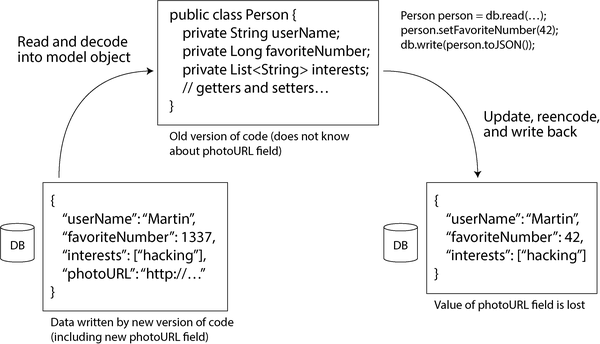
데이터를 인코딩하는 형식
프로그램은 일반적으로 데이터를 (적어도) 두 가지 표현으로 다룹니다:
- 메모리에는 데이터가 객체, 구조체, 리스트, 배열, 해시 테이블, 트리 등으로 유지됩니다. 이러한 데이터 구조는 CPU가 효율적으로 접근하고 조작하도록 최적화됩니다(일반적으로 포인터 사용).
- 파일에 쓰거나 네트워크를 통해 전송하려면 데이터를 일종의 자체 포함 바이트 시퀀스(예: JSON 문서)로 인코딩해야 합니다. 포인터는 다른 프로세스에서는 의미가 없기 때문에, 이 바이트 시퀀스 표현은 일반적으로 메모리에서 사용되는 데이터 구조와 상당히 다르게 보입니다.
따라서 두 표현 간의 일종의 번역이 필요합니다. 인메모리 표현을 바이트 시퀀스로 변환하는 것을 인코딩(직렬화 또는 마셜링이라고도 함)이라고 하며, 그 반전은 디코딩(파싱, 역직렬화 또는 언마셜링이라고 함)입니다.
용어 충돌
직렬화라는 용어는 트랜잭션(8장 참조)의 맥락에서 완전히 다른 의미로 사용되기도 하여 불행하게도 용어 충돌이 발생합니다. 용어를 중복 사용하지 않기 위해 이 책에서는 직렬화보다 더 흔할지라도 인코딩이라는 용어를 사용하겠습니다.
때로는 인코딩/디코딩이 필요하지 않습니다. 예를 들어, 데이터베이스가 디스크에서 로드된 압축된 데이터에 직접 작동하는 경우(“쿼리 실행: 컴파일 및 벡터화”에서 논의됨) 그렇습니다. 또한 명시적인 변환 단계 없이 런타임과 디스크/네트워크에서 모두 사용되도록 설계된 제로-복사 데이터 형식이 있습니다(예: Cap’n Proto 및 FlatBuffers).
그러나 대부분의 시스템은 인메모리 객체와 평면 바이트 시퀀스 간의 변환이 필요합니다. 이것은 너무나 일반적인 문제이므로 선택할 수 있는 수많은 라이브러리와 인코딩 형식이 있습니다. 간략히 살펴보겠습니다.
언어별 형식
많은 프로그래밍 언어에는 인메모리 객체를 바이트 시퀀스로 인코딩하는 기본 지원이 포함되어 있습니다. 예를 들어, Java에는 java.io.Serializable이 있고, Python에는 pickle이 있으며, Ruby에는 Marshal이 있습니다. Java의 Kryo와 같은 많은 타사 라이브러리도 존재합니다.
이러한 인코딩 라이브러리는 편리합니다. 왜냐하면 인메모리 객체를 최소한의 추가 코드로 저장하고 복원할 수 있기 때문입니다. 그러나 다음과 같은 심각한 문제도 있습니다:
- 인코딩은 종종 특정 프로그래밍 언어에 묶여 있어 다른 언어에서 데이터를 읽기가 어렵습니다. 그러한 인코딩으로 데이터를 저장하거나 전송하면 현재 프로그래밍 언어를 오랫동안 고수하게 되고 다른 조직(다른 언어를 사용할 수 있음)의 시스템과 통합하는 것을 막을 수 있습니다.
- 동일한 객체 타입으로 데이터를 복원하려면 디코딩 프로세스가 임의의 클래스를 인스턴스화할 수 있어야 합니다. 이는 자주 보안 문제의 원인이 됩니다[1]. 공격자가 애플리케이션에 임의의 바이트 시퀀스를 디코딩하게 하면 임의의 클래스를 인스턴스화할 수 있으며, 이는 종종 원격 임의 코드 실행과 같은 끔찍한 일을 가능하게 합니다[2, 3].
- 데이터 버전 관리는 종종 사후 고려 사항입니다. 이러한 라이브러리는 빠르고 쉽게 데이터를 인코딩하는 것을 목적으로 하기 때문에 전방 및 하위 호환성의 불편한 문제를 종종 간과합니다[4].
- 효율성(인코딩 또는 디코딩에 걸리는 CPU 시간, 인코딩된 구조의 크기)도 종종 사후 고려 사항입니다. 예를 들어, Java의 기본 직렬화는 성능이 나쁘고 인코딩이 부풀려져 있다는 점에서 악명이 높습니다[5].
이러한 이유로 언어의 기본 인코딩을 매우 일시적인 목적이 아닌 다른 용도로 사용하는 것은 일반적으로 나쁜 생각입니다.
JSON, XML 및 이진 변형
많은 프로그래밍 언어에서 작성 및 읽을 수 있는 표준화된 인코딩으로 이동할 때 JSON과 XML이 가장 확실한 경쟁자입니다. 널리 알려져 있고 널리 지원됩니다. CSV는 또 다른 인기 있는 언어 독립 형식ですが, 중첩 없이 표 형식 데이터만 지원합니다.
JSON, XML, CSV는 텍스트 형식입니다. 따라서 구문은 논쟁의 대상이 되는 경우가 많지만 어느 정도 사람이 읽을 수 있습니다. 표면적인 구문 문제 외에도 다음과 같은 다양한 문제가 있습니다:
- XML은 종종 너무 장황하고 불필요하게 복잡하다는 비판을 받습니다[6].
- 숫자의 인코딩에 대한 모호함이 많습니다. XML과 CSV에서는 숫자와 숫자로 구성된 문자열을 구분할 수 없습니다(외부 스키마를 참조하지 않는 한). JSON은 문자열과 숫자를 구분하지만 정수와 부동 소수점 숫자를 구분하지 않으며 정밀도를 명시하지 않습니다. 이는 큰 숫자(예: 2^53을 초과하는 정수)를 처리할 때 문제가 됩니다. 이러한 숫자는 JavaScript와 같이 부동 소수점 숫자를 사용하는 언어에서 파싱할 때 부정확해질 수 있습니다[7]. 2^53보다 큰 숫자의 예로는 X가 각 게시물을 식별하는 데 64비트 숫자를 사용하는 것이 있습니다. JSON API에서 반환된 게시물 ID는 JavaScript 애플리케이션의 숫자 파싱이 부정확한 것을 우회하기 위해 JSON 숫자와 십진수 문자열 두 번 포함됩니다[8].
- JSON과 XML은 유니코드 문자열(사람이 읽을 수 있는 텍스트)에 대한 좋은 지원을 가지고 있지만 이진 문자열(문자 인코딩 없이 바이트 시퀀스)을 지원하지 않습니다. 이진 문자열은 유용한 기능이므로 사람들은 이 제한을 우회하기 위해 Base64로 이진 데이터를 텍스트로 인코딩하는 방법을 사용합니다. 스키마는 값이 Base64로 인코딩되어 해석되어야 함을 나타내는 데 사용됩니다. 이는 작동하지만 다소 성가시며 데이터 크기를 약 3분의 1 증가시킵니다.
- XML 스키마와 JSON 스키마는 강력하기 때문에 배우고 구현하기가 상당히 복잡합니다. 데이터(예: 숫자 및 이진 문자열)의 올바른 해석은 스키마의 정보에 의존하므로, XML/JSON 스키마를 사용하지 않는 애플리케이션은 적절한 인코딩/디코딩 로직을 하드코딩해야 할 수 있습니다.
- CSV에는 스키마가 없으므로 애플리케이션이 각 행과 열의 의미를 정의해야 합니다. 애플리케이션 변경으로 새 행이나 열이 추가되면 해당 변경을 수동으로 처리해야 합니다. CSV는 또한 상당히 모호한 형식입니다(예: 값에 쉼표나 개행 문자가 포함되면 어떻게 됩니까?). 이스케이프 규칙이 공식적으로 명시되었지만[9], 모든 파서가 이를 올바르게 구현하지는 않습니다.
이러한 결함에도 불구하고 JSON, XML, CSV는 많은 목적에 충분합니다. 데이터 교환 형식(즉, 한 조직에서 다른 조직으로 데이터를 보내는 용도)으로 계속 인기를 유지할 가능성이 높습니다. 이러한 상황에서는 사람들이 형식에 동의하기만 하면 예쁘거나 효율적인지 문제가 되지 않습니다. 다른 조직이 어떤 것에 동의하는 데 어려움을 겪는다는 것이 대부분의 다른 우려 사항보다 더 큽니다.
JSON 스키마
JSON 스키마는 시스템 간에 데이터가 교환되거나 스토리지에 작성될 때 데이터를 모델링하는 방법으로 널리 채택되었습니다. JSON 스키마는 웹 서비스(“웹 서비스” 참조)의 OpenAPI 웹 서비스 사양의 일부, Confluent의 스키마 레지스트리 및 Red Hat의 Apicurio Registry와 같은 스키마 레지스트리, 데이터베이스(예: PostgreSQL의 pg_jsonschema 검증자 확장 및 MongoDB의 $jsonSchema 검증자 구문)에서 볼 수 있습니다.
JSON 스키마 사양은 여러 기능을 제공합니다. 스키마에는 string, number, integer, object, array, boolean, null과 같은 표준 원시 타입이 포함됩니다. 그러나 JSON 스키마는 필드에 제약 조건을 적용할 수 있는 별도의 검증 사양도 제공합니다. 예를 들어, port 필드는 최소값 1과 최대값 65,535를 가질 수 있습니다.
JSON 스키마는 개방형 또는 폐쇄형 콘텐츠 모델을 가질 수 있습니다. 개방형 콘텐츠 모델은 스키마에 정의되지 않은 모든 필드가 어떤 데이터 타입이든 존재할 수 있도록 허용하는 반면, 폐쇄형 콘텐츠 모델은 명시적으로 정의된 필드만 허용할 수 있습니다. JSON 스키마의 개방형 콘텐츠 모델은 additionalProperties가 true로 설정되어 있을 때 활성화되며, 이는 기본값입니다. 따라서 JSON 스키마는 일반적으로 허용되는 것(정의된 필드의 잘못된 값이 아님)이 아니라 허용되지 않는 것을 정의하는 경우가 많습니다.
개방형 콘텐츠 모델은 강력하지만 복잡할 수 있습니다. 예를 들어, 정수(ID 등)를 문자열에 매핑하는 맵을 정의하려면 어떻게 해야 할까요? JSON은 정수 키를 허용하는 맵 또는 사전 타입이 없습니다. JSON 객체는 항상 문자열을 키로 사용합니다. 요구 사항을 충족하기 위해 patternProperties 및 additionalProperties를 사용하여 키가 숫자만 포함하고 값은 문자열만 포함하도록 JSON 스키마로 이 타입을 제한할 수 있습니다(예 5-1 참조).
예 5-1. 정수 키와 문자열 값을 가진 JSON 스키마
{
"$schema": "http://json-schema.org/draft-07/schema#",
"type": "object",
"patternProperties": {
"^[0-9]+$": {
"type": "string"
}
},
"additionalProperties": false
}열린 및 닫힌 콘텐츠 모델과 검증자 외에도, JSON 스키마는 조건부 if/else 스키마 로직, 명명된 타입, 원격 스키마 참조 등을 지원합니다. 이러한 모든 기능은 매우 강력한 스키마 언어를 만듭니다. 그러나 이러한 기능은 정의를 다루기 어렵게 만들기도 합니다. 원격 스키마를 해결하고, 조건부 규칙에 대해 추론하며, 스키마를 전방 또는 하위 호환성 있게 진화시키는 것이 어려울 수 있습니다[10, 11]. 유사한 우려 사항이 XML 스키마에도 적용됩니다[12].
이진 인코딩
JSON은 XML보다 덜 장황하지만 둘 다 이진 형식에 비해 많은 공간을 차지합니다. 이러한 관찰은 JSON(MessagePack, CBOR, BSON, BJSON, UBJSON, BISON, Hesse 및 Smile 등)을 위한 수많은 이진 인코딩과 XML(WBXML 및 Fast Infoset 등)을 위한 이진 인코딩 개발로 이어졌습니다. 이러한 형식은 더 컴팩트하고 때로는 파싱이 더 빠르기 때문에 다양한 틈새 시장에서 채택되었지만, 어느 것도 텍스트 버전의 JSON 및 XML만큼 널리 채택되지는 않았습니다[13].
이 형식 중 일부는 데이터 타입 집합을 확장합니다(예: 정수와 부동 소수점 숫자 구분, 이진 문자열 지원 추가). 그러나 일반적으로 JSON/XML 데이터 모델은 변경되지 않습니다. 특히, 스키마를 규정하지 않기 때문에 인코딩된 데이터 내에 모든 객체 필드 이름을 포함해야 합니다. 즉, 예 5-2의 JSON 문서를 이진 인코딩할 때 userName, favoriteNumber 및 interests 문자열을 어딘가에 포함해야 합니다.
예 5-2. 이 장에서 여러 이진 형식으로 인코딩할 레코드
{
"userName": "Martin",
"favoriteNumber": 1337,
"interests": ["daydreaming", "hacking"]
}JSON을 위한 이진 인코딩인 MessagePack의 예를 살펴보겠습니다. 그림 5-2는 예 5-2의 JSON 문서를 MessagePack으로 인코딩하면 얻는 바이트 시퀀스를 보여줍니다.
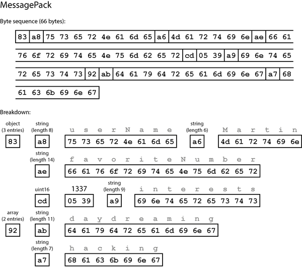
첫 번째 바이트는 다음과 같습니다:
- 첫 번째 바이트
0x83은 뒤에 오는 것이 가장 중요한 4비트 =0x80인 객체이고 가장 중요하지 않은 4비트 =0x03인 세 개의 필드임을 나타냅니다(객체에 15개 이상의 필드가 있어 필드 수가 4비트에 맞지 않는 경우 다른 타입 지시자가 사용되고 필드 수는 두 바이트 또는 네 바이트로 인코딩됩니다). - 두 번째 바이트
0xa8은 뒤에 오는 것이 가장 중요한 4비트 =0xa0인 문자열이고 가장 중요하지 않은 4비트 =0x08인 8바이트 길이임을 나타냅니다. - 다음 8바이트는 ASCII로 인코딩된 필드 이름
userName입니다. 길이가 이전에 표시되었으므로 문자열이 끝나는 지점을 알려주는 마커나 이스케이프가 필요하지 않습니다. - 다음 7바이트는 접두사
0xa6과 함께 6글자 문자열 값Martin을 인코딩하는 등 계속해서 진행됩니다.
이진 인코딩은 66바이트 길이로, 공백을 제거한 텍스트 JSON 인코딩이 차지하는 81바이트보다 약간 적습니다. 모든 이진 JSON 인코딩이 이와 비슷합니다. 이러한 작은 공간 절약(및 아마도 파싱 속도 향상)이 사람이 읽을 수 있는 기능을 상실할 만한 가치가 있는지 분명하지 않습니다.
다음 섹션에서는 동일한 레코드를 절반의 바이트로 인코딩하는 방법을 살펴보겠습니다.
프로토콜 버퍼
프로토콜 버퍼(Protocol Buffers, protobuf)는 Google에서 개발한 이진 인코딩 라이브러리입니다. 원래 Facebook에서 개발한 Apache Thrift와 유사합니다[14]. 이 섹션에서 프로토콜 버퍼에 대해 말하는 대부분의 내용은 Thrift에도 적용됩니다.
프로토콜 버퍼는 인코딩할 데이터에 대해 스키마를 요구합니다. 예 5-2의 데이터를 인코딩하려면 스키마를 프로토콜 버퍼 인터페이스 정의 언어(IDL)로 다음과 같이 설명합니다:
syntax = "proto3";
message Person {
string user_name = 1;
int64 favorite_number = 2;
repeated string interests = 3;
}프로토콜 버퍼에는 위에 표시된 것과 같은 스키마 정의를 가져와 다양한 프로그래밍 언어로 스키마를 구현하는 클래스를 생성하는 코드 생성 도구가 함께 제공됩니다. 애플리케이션 코드는 이 생성된 코드를 호출하여 스키마에 부합하는 레코드를 인코딩 또는 디코딩할 수 있습니다. 스키마 언어는 JSON 스키마보다 훨씬 간단합니다. 각 레코드의 필드와 그 타입을 정의하지만 필드의 가능한 값에 대한 다른 제한을 지원하지 않습니다.
예 5-2를 프로토콜 버퍼 인코더로 인코딩하려면 33바이트가 필요합니다(그림 5-3 참조)[15]. 그림 5-2와 마찬가지로 각 필드에는 타입 주석(문자열, 정수 등을 나타냄)과 필요한 경우 길이 표시(예: 문자열 길이)가 있습니다. 데이터에 나타나는 문자열(Martin, daydreaming, hacking)은 이전과 마찬가지로 ASCII(정확히 UTF-8)로 인코딩됩니다.
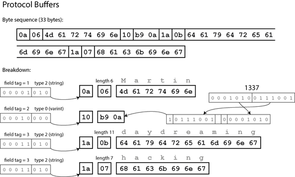
그림 5-2와 달리 이 예에는 필드 이름(userName, favoriteNumber, interests)이 없습니다. 대신 인코딩된 데이터에는 필드 태그(1, 2, 3)라는 숫자가 포함됩니다. 이는 스키마 정의에 나타나는 숫자입니다. 필드 태그는 필드에 대한 별칭과 같으며, 필드 이름을 풀어쓰지 않고 어떤 필드를 말하는지 나타내는 간결한 방법입니다.
보시다시피, 프로토콜 버퍼는 필드 타입과 태그 번호를 단일 바이트로 패킹하여 더 많은 공간을 절약합니다. 가변 길이 정수를 사용합니다. 숫자 1337은 두 바이트로 인코딩되며, 각 바이트의 최상위 비트는 더 많은 바이트가 오는지 여부를 나타내고(최하위 7비트는 정수를 재구성하기 위해 첫 번째 바이트에 저장됨), -64에서 63까지의 숫자는 한 바이트로 인코딩되고, -8,192에서 8,191까지의 숫자는 두 바이트로 인코딩되는 식입니다. 더 큰 숫자는 더 많은 바이트를 사용합니다.
프로토콜 버퍼에는 명시적인 리스트 또는 배열 데이터 타입이 없습니다. 대신 interests 필드의 repeated 수식어는 필드가 단일 값이 아닌 값 목록을 포함함을 나타냅니다. 이진 인코딩에서 목록 요소는 동일한 레코드 내에서 동일한 필드 태그가 반복되는 것으로 표시됩니다.
필드 태그와 스키마 진화
이전에 말했듯이 스키마는 시간이 지남에 따라 필연적으로 변경됩니다. 이를 스키마 진화(schema evolution)라고 합니다. 프로토콜 버퍼는 하위 및 상위 호환성을 유지하면서 스키마 변경을 어떻게 처리할까요?
예에서 볼 수 있듯이, 인코딩된 레코드는 인코딩된 필드의 연결일 뿐입니다. 각 필드는 태그 번호(샘플 스키마의 1, 2, 3)로 식별되며 데이터 타입(예: 문자열 또는 정수)으로 주석이 달려 있습니다. 필드 값이 설정되지 않은 경우 인코딩된 레코드에서 생략됩니다. 따라서 필드 태그는 인코딩된 데이터의 의미에 중요합니다. 인코딩된 데이터는 필드 이름을 참조하지 않으므로 스키마에서 필드 이름을 변경할 수 있지만, 필드 태그는 변경할 수 없습니다(필드 태그를 변경하면 기존 인코딩된 데이터가 무효화됩니다).
새 태그 번호를 부여하면 새로운 필드를 스키마에 추가할 수 있습니다. 이전 코드(새 태그 번호를 알지 못함)가 새 코드로 작성된 데이터를 읽으려고 시도하고 인식하지 못하는 태그 번호가 있는 새 필드가 포함된 경우, 데이터 타입 주석을 통해 파서는 건너뛰어야 하는 바이트 수를 결정하면서 알 수 없는 필드를 보존할 수 있습니다(그림 5-1의 문제 방지). 이를 통해 상위 호환성을 유지합니다. 즉, 이전 코드가 최신 코드로 작성된 레코드를 읽을 수 있습니다.
하위 호환성은 어떨까요? 각 필드가 고유한 태그 번호를 가지는 한, 최신 코드는 태그 번호의 의미가 동일하므로 이전 데이터를 항상 읽을 수 있습니다. 새 스키마에 필드가 추가되고 이전 데이터를 읽을 때 해당 필드가 포함되어 있지 않은 경우, 기본값(예: 필드 타입이 문자열인 경우 빈 문자열, 숫자인 경우 0)으로 채워집니다.
필드를 제거하는 것은 필드를 추가하는 것과 유사하며, 하위 및 상위 호환성 우려가 반대입니다. 이전 데이터를 작성할 때 포함될 수 있는 이전 태그 번호가 새 코드에 의해 무시되어야 하므로 동일한 태그 번호를 다시 사용할 수 없습니다. 과거에 사용된 태그 번호는 스키마 정의에 예약되어 잊혀지지 않도록 할 수 있습니다.
필드의 데이터 타입을 변경하는 것은 어떨까요? 일부 타입의 경우 가능합니다(자세한 내용은 문서 참조). 그러나 값이 잘릴 위험이 있습니다. 예를 들어, 32비트 정수를 64비트 정수로 변경한다고 가정해 보겠습니다. 새로운 코드는 파서가 누락된 비트를 0으로 채울 수 있으므로 이전 코드로 작성된 데이터를 쉽게 읽을 수 있습니다. 그러나 이전 코드가 새로운 코드로 작성된 데이터를 읽는 경우, 이전 코드는 여전히 32비트 변수를 사용하여 값을 보유하므로 디코딩된 64비트 값이 32비트에 맞지 않으면 잘립니다.
Avro
Apache Avro는 또 다른 이진 인코딩 형식으로, 프로토콜 버퍼와 흥미로운 차이점이 있습니다. 2009년 Hadoop의 하위 프로젝트로 시작되었으며, 프로토콜 버퍼가 Hadoop의 사용 사례에 적합하지 않았기 때문입니다[16].
Avro도 데이터를 인코딩하는 구조를 지정하기 위해 스키마를 사용합니다. 스키마 언어는 두 가지가 있습니다. 하나는 사람이 편집하기 위한 Avro IDL이고, 다른 하나는 기계가 읽기 쉬운 JSON 기반 언어입니다. 프로토콜 버퍼와 마찬가지로 스키마 언어는 필드와 타입만 지정하며 JSON 스키마와 같은 복잡한 검증 규칙을 지원하지 않습니다.
Avro IDL로 작성된 예제 스키마는 다음과 같을 수 있습니다:
record Person {
string userName;
union { null, long } favoriteNumber = null;
array<string> interests;
}해당하는 JSON 표현은 다음과 같습니다:
{
"type": "record",
"name": "Person",
"fields": [
{"name": "userName", "type": "string"},
{"name": "favoriteNumber", "type": ["null", "long"], "default": null},
{"name": "interests", "type": {"type": "array", "items": "string"}}
]
}스키마에 태그 번호가 없다는 점에 유의하십시오. 예 5-2의 레코드를 이 스키마로 인코딩하면 Avro 이진 인코딩은 32바이트 길이로, 지금까지 본 모든 인코딩 중 가장 컴팩트합니다. 인코딩된 바이트 시퀀스의 분석은 그림 5-4에 표시되어 있습니다.
바이트 시퀀스를 살펴보면, 필드나 데이터 타입을 식별하는 어떠한 정보도 없습니다. 인코딩은 단순히 값을 연결하여 구성됩니다. 문자열은 길이 접두어와 UTF-8 바이트일 뿐이며, 인코딩된 데이터에는 그것이 문자열임을 알려주는 어떠한 정보도 없습니다. 정수이거나 다른 무엇이어도 상관없습니다. 정수는 가변 길이 인코딩으로 인코딩됩니다.
바이너리 데이터를 파싱하려면 스키마에 나타나는 순서대로 필드를 확인하고 스키마를 사용하여 각 필드의 데이터 타입을 결정해야 합니다. 즉, 데이터를 읽는 코드가 데이터를 작성한 코드와 동일한 스키마를 사용해야만 데이터를 올바르게 디코딩할 수 있습니다. 리더와 라이터 간의 스키마 불일치는 잘못된 데이터 디코딩을 초래할 것입니다.
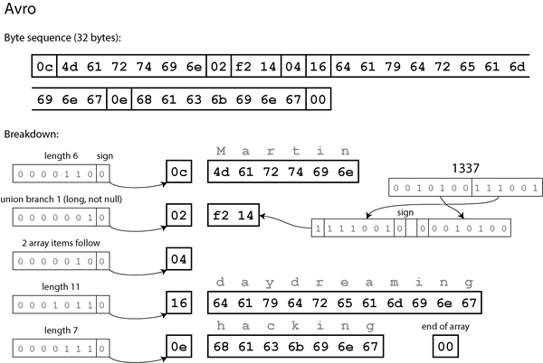
그렇다면 Avro는 스키마 진화를 어떻게 지원할까요?
라이터의 스키마와 리더의 스키마
애플리케이션이 데이터를 인코딩하려 할 때(파일이나 데이터베이스에 기록하거나 네트워크를 통해 전송하는 등), 애플리케이션은 자신이 알고 있는 스키마 버전을 사용합니다. 예를 들어 애플리케이션에 컴파일된 스키마를 사용하는 것입니다. 이를 라이터의 스키마(writer’s schema)라고 합니다.
데이터를 디코딩하려 할 때(파일이나 데이터베이스에서 읽거나 네트워크에서 수신하는 등), 애플리케이션은 두 개의 스키마를 사용합니다. 하나는 인코딩에 사용된 것과 동일한 라이터의 스키마이고, 다른 하나는 리더의 스키마(reader’s schema)이며 버전이 다를 수 있습니다. 이는 그림 5-5에 설명되어 있습니다. 리더의 스키마는 애플리케이션 코드가 예상하는 각 레코드의 필드와 그 타입을 정의합니다.
리더와 라이터의 스키마가 동일한 경우 디코딩은 쉽습니다. 서로 다른 경우, Avro는 두 스키마를 비교하여 데이터를 라이터의 스키마에서 리더의 스키마로 변환하는 방식으로 차이를 해결합니다.
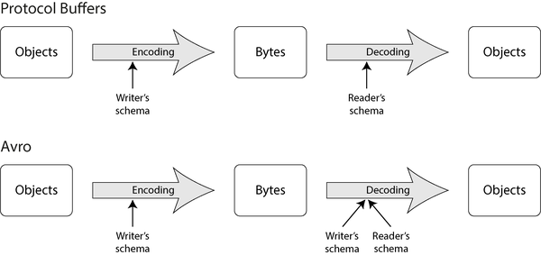
Avro 사양[17, 18]은 이 해상도가 정확히 어떻게 작동하는지 정의합니다. 그림 5-6에 설명되어 있듯이, 라이터와 리더의 스키마에 필드의 순서가 다르더라도 문제되지 않습니다. 스키마 해상도는 필드 이름으로 필드를 일치시키기 때문입니다. 데이터를 읽는 코드가 라이터의 스키마에는 있지만 리더의 스키마에는 없는 필드를 발견하면 해당 필드는 무시됩니다. 데이터를 읽는 코드가 특정 필드를 예상하지만 라이터의 스키마에 해당 이름의 필드가 없으면 리더의 스키마에 선언된 기본값으로 채워집니다.
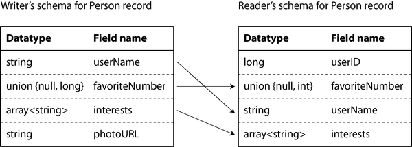
스키마 진화 규칙
Avro에서 전방 호환성은 라이터가 리더보다 최신 버전의 스키마를 사용할 수 있음을 의미합니다. 반대로, 하위 호환성은 라이터가 리더보다 이전 버전의 스키마를 사용할 수 있음을 의미합니다.
호환성을 유지하려면 기본값이 있는 필드만 추가하거나 제거할 수 있습니다(예: Avro 스키마의 favoriteNumber 필드). 예를 들어, 기본값이 있는 새 필드를 추가하면 새 필드는 새 스키마에는 있지만 이전 스키마에는 없는 경우, 새 스키마를 사용하는 리더가 이전 스키마로 작성된 레코드를 읽을 때 누락된 필드에 기본값이 채워집니다.
기본값이 없는 필드를 추가하면 새 리더가 이전 라이터로 작성된 데이터를 읽을 수 없으므로 하위 호환성이 깨집니다. 기본값이 없는 필드를 제거하면 이전 리더가 새 라이터로 작성된 데이터를 읽을 수 없으므로 전방 호환성이 깨집니다.
일부 프로그래밍 언어에서는 null이 모든 변수에 대한 허용 가능한 기본값이지만, Avro에서는 그렇지 않습니다. 필드가 null일 수 있도록 하려면 유니언 타입을 사용해야 합니다. 예를 들어, union { null, long, string } field;는 field가 숫자, 문자열 또는 null일 수 있음을 나타냅니다. null은 유니언의 첫 번째 분기일 때만 기본값으로 사용할 수 있습니다. 이는 모든 것이 기본적으로 nullable일 때보다 다소 상세하지만, 무엇이 null일 수 있고 그렇지 않은지를 명시적으로 나타냄으로써 버그를 방지하는 데 도움이 됩니다[19].
필드의 데이터 타입을 변경하는 것은 Avro가 타입을 변환할 수 있다면 가능합니다. 필드 이름을 변경하는 것도 가능하지만 다소 까다롭습니다. 리더의 스키마에 필드 이름에 대한 별칭이 포함될 수 있으므로 이전 라이터의 스키마 필드 이름을 별칭과 일치시킬 수 있습니다. 즉, 필드 이름 변경은 하위 호환성은 유지하지만 전방 호환성은 유지하지 않습니다. 마찬가지로 유니언에 분기를 추가하는 것은 하위 호환성은 유지하지만 전방 호환성은 유지하지 않습니다.
그렇다면 라이터의 스키마는 무엇인가?
우리는 중요한 질문을 간과했습니다. 리더는 특정 데이터 조각을 인코딩하는 데 사용된 스키마를 어떻게 알 수 있을까요? 모든 레코드에 전체 스키마를 포함할 수는 없습니다. 스키마가 인코딩된 데이터보다 클 가능성이 높아서 이진 인코딩의 모든 공간 절약 효과가 무효화되기 때문입니다.
답은 Avro가 사용되는 상황에 따라 다릅니다. 몇 가지 예를 들어보겠습니다:
많은 레코드가 포함된 대용량 파일
Avro의 일반적인 용도는 동일한 스키마로 인코딩된 수백만 개의 레코드를 포함하는 대용량 파일을 저장하는 것입니다. (이러한 유형의 상황은 11장에서 다룰 것입니다.) 이 경우 파일의 작성자는 파일의 시작 부분에 스키마를 한 번만 포함하면 됩니다. Avro는 이를 위해 객체 컨테이너 파일(object container file)이라는 파일 형식을 지정합니다.
개별 레코드가 작성되는 데이터베이스
데이터베이스에서는 서로 다른 레코드가 서로 다른 시점에 서로 다른 스키마를 사용하여 작성될 수 있습니다. 즉, 모든 레코드가 동일한 스키마를 가진다고 가정할 수 없습니다. 이 경우 가장 간단한 해결책은 모든 인코딩된 레코드의 시작 부분에 버전 번호를 포함하고 데이터베이스에 스키마 버전 목록을 보관하는 것입니다. 리더는 레코드를 가져와 버전 번호를 추출한 다음 데이터베이스에서 해당 버전 번호에 해당하는 라이터의 스키마를 가져와 그 스키마를 사용하여 레코드의 나머지 부분을 디코딩할 수 있습니다. 예를 들어, Confluent의 Apache Kafka용 스키마 레지스트리[20]와 LinkedIn의 Espresso[21]가 이와 같이 작동합니다.
스키마 버전 데이터베이스는 문서 역할을 하고 스키마 변경의 호환성을 확인할 기회를 제공하므로 유용하게 사용할 수 있습니다. 버전 번호로는 단순한 증가 정수 또는 스키마 해시를 사용할 수 있습니다.
동적으로 생성된 스키마
Avro의 장점 중 하나는 프로토콜 버퍼와 비교했을 때 스키마에 태그 번호가 포함되지 않는다는 것입니다. 하지만 이것이 왜 중요한가요? 스키마에 숫자 몇 개를 보관하는 것이 문제가 무엇일까요?
차이점은 Avro가 동적으로 생성된 스키마에 더 친화적이라는 것입니다. 예를 들어, 관계형 데이터베이스의 내용을 파일을 덤프하려고 하고 텍스트 형식(예: JSON, CSV, XML)의 앞서 언급된 문제점을 피하기 위해 이진 형식을 사용하려 한다고 가정해 보겠습니다. Avro를 사용하면 관계형 스키마에서 Avro 스키마(앞서 본 JSON 표현)를 비교적 쉽게 생성하고 해당 스키마를 사용하여 데이터베이스 내용을 인코딩하여 Avro 객체 컨테이너 파일에 덤프할 수 있습니다[23]. 각 데이터베이스 테이블에 대한 레코드 스키마를 생성할 수 있으며, 각 열이 해당 레코드의 필드가 됩니다. 데이터베이스의 열 이름이 Avro의 필드 이름에 매핑됩니다.
이제 데이터베이스 스키마가 변경된다면(예: 테이블에 열이 하나 추가되고 열이 하나가 제거되는 경우), 업데이트된 데이터베이스 스키마에서 새 Avro 스키마를 생성하고 새 Avro 스키마로 데이터를 내보내기만 하면 됩니다. 데이터 내보내기 프로세스는 스키마 변경에 대해 신경을 쓸 필요가 없으며 실행될 때마다 스키마 변환을 수행할 수 있습니다. 새 데이터 파일을 읽는 사람은 레코드의 필드가 변경되었음을 알겠지만, 필드는 이름으로 식별되므로 업데이트된 라이터의 스키마를 이전 리더의 스키마와 일치시킬 수 있습니다.
반면, 이 목적으로 프로토콜 버퍼를 사용한다면 필드 태그가 아마도 수동으로 할당되어야 할 것입니다. 데이터베이스 스키마가 변경될 때마다 관리자가 데이터베이스 열 이름과 필드 태그 간의 매핑을 수동으로 업데이트해야 합니다(자동화하는 것이 가능할 수도 있지만 스키마 생성기는 이전에 사용된 필드 태그를 할당하지 않도록 매우 주의해야 할 것입니다). 이러한 종류의 동적으로 생성된 스키마는 프로토콜 버퍼의 설계 목표가 아니었던 반면, Avro의 설계 목표는었습니다.
스키마의 장점
보았듯이, 프로토콜 버퍼와 Avro 모두 이진 인코딩 형식을 설명하기 위해 스키마를 사용합니다. 이들의 스키마 언어는 특정 정규 표현과 일치해야 하는 문자열 값이나 0에서 100 사이여야 하는 정수 값과 같은 보다 상세한 검증 규칙을 지원하는 XML 스키마나 JSON 스키마보다 훨씬 간단합니다. 프로토콜 버퍼와 Avro는 구현하고 사용하기가 더 간단하므로 상당히 다양한 프로그래밍 언어에서 지원을 얻었습니다.
이러한 인코딩의 아이디어는 전혀 새로운 것이 아닙니다. 예를 들어, ASN.1(1984년에 처음 표준화된 스키마 정의 언어)과 많은 공통점이 있습니다[24, 25]. 이는 다양한 네트워크 프로토콜을 정의하는 데 사용되었으며, 이진 인코딩(DER)은 예를 들어 X.509 SSL 인증서 인코딩에 여전히 사용됩니다[26]. ASN.1은 프로토콜 버퍼와 유사하게 태그 번호를 사용하여 스키마 진화를 지원합니다[27]. 그러나 ASN.1은 매우 복잡하고 문서화가 잘 되어 있지 않으므로 새로운 애플리케이션에는 적합하지 않을 것입니다.
많은 데이터 시스템은 자체 전용 이진 인코딩을 데이터에 구현합니다. 예를 들어, 대부분의 관계형 데이터베이스는 데이터베이스에 쿼리를 보내고 응답을 받을 수 있는 네트워크 프로토콜을 가지고 있습니다. 이러한 프로토콜은 일반적으로 특정 데이터베이스에 특화되어 있으며, 데이터베이스 공급업체는 데이터베이스의 네트워크 프로토콜로부터 응답을 인메모리 데이터 구조로 디코딩하는 드라이버(예: ODBC 또는 JDBC API 사용)를 제공합니다.
따라서 JSON, XML, CSV와 같은 텍스트 데이터 형식이 널리 사용되는 반면, 스키마 기반 이진 인코딩도 실행 가능한 옵션임을 알 수 있습니다. 다음과 같은 좋은 특성이 있습니다:
- 이진 인코딩된 데이터에서 필드 이름을 생략할 수 있으므로 다양한 “이진 JSON” 변형보다 훨씬 더 컴팩트할 수 있습니다.
- 스키마는 귀중한 문서화 역할을 하며, 디코딩에 스키마가 필요하기 때문에 최신 상태임을 확신할 수 있습니다(수동으로 유지 관리되는 문서는 실제와 쉽게 어긋날 수 있음).
- 스키마 데이터베이스를 유지하면 배포되기 전에 스키마 변경의 전방 및 하위 호환성을 확인할 수 있습니다.
- 정적 타입 프로그래밍 언어 사용자의 경우 스키마에서 코드를 생성할 수 있는 기능이 유용하여 컴파일 시간에 타입 검사를 가능하게 합니다.
요약하자면, 스키마 진화는 스키마 없는/읽기 시 스키마 JSON 데이터베이스가 제공하는(“문서 모델의 스키마 유연성” 참조) 것과 유사한 유연성을 제공하면서 데이터에 대한 더 나은 보장과 더 나은 도구를 제공합니다. 그러나 운영을 단순하게 유지하기 위해 동시에 사용하는 스키마 형식의 수를 최소한으로 유지하는 것이 좋습니다.
데이터 흐름 모드
이 장의 시작 부분에서 말했듯이, 공유 메모리가 없는 다른 프로세스(예: 네트워크를 통해 데이터를 전송하거나 파일에 쓰기)로 데이터를 보내려면 데이터를 바이트 시퀀스로 인코딩해야 합니다. 그런 다음 이를 수행하기 위한 다양한 인코딩을 논의했습니다.
우리는 전방 및 하위 호환성에 대해 이야기했습니다. 이는 진화 가능성(시스템의 다른 부분을 독립적으로 업그레이드하여 모든 것을 한 번에 변경하지 않고도 변경을 쉽게 만드는 것)에 중요합니다. 호환성은 데이터를 인코딩하는 프로세스와 데이터를 디코딩하는 프로세스 사이의 관계입니다.
이는 상당히 추상적인 아이디어입니다. 데이터는 한 프로세스에서 다른 프로세스로 여러 방식으로 흐를 수 있기 때문입니다. 데이터를 인코딩하는 주체는 누구이며, 데이터를 디코딩하는 주체는 누구입니까? 이 장의 나머지 부분에서는 데이터베이스, 서비스 호출, 워크플로 엔진, 비동기 메시지를 통해 프로세스 간에 데이터가 흐르는 가장 일반적인 방법 중 일부를 탐구할 것입니다.
데이터베이스를 통한 데이터 흐름
데이터베이스에서 데이터를 쓰는 프로세스가 데이터를 인코딩하고, 데이터를 읽는 프로세스가 데이터를 디코딩합니다. 단일 프로세스만이 데이터베이스에 접근할 수 있는 경우도 있으며, 이 경우 리더는 단순히 같은 프로세스의 더 나중 버전입니다. 이러한 시나리오에서 데이터베이스에 무언가를 저장하는 것은 미래의 자신에게 메시지를 보내는 것과 같다고 생각할 수 있습니다. 하위 호환성은 여기서 분명히 필요합니다. 그렇지 않으면 미래의 자신이 이전에 작성한 내용을 디코딩할 수 없기 때문입니다.
그러나 일반적으로 여러 프로세스가 동시에 데이터베이스에 접근하는 경우가 많습니다. 이러한 프로세스는 서로 다른 애플리케이션 또는 서비스이거나, 동일 서비스의 여러 인스턴스(확장성 또는 내결함성을 위해 병렬로 실행 중)일 수 있습니다. 어느 경우이든 이러한 환경에서는 데이터베이스에 접근하는 일부 프로세스는 최신 코드를 실행 중이고 일부는 이전 코드를 실행 중일 가능성이 높습니다. 예를 들어, 새로운 버전이 롤링 업그레이드로 배포 중이어서 일부 인스턴스는 업데이트되었고 다른 인스턴스는 아직 업데이트되지 않은 경우입니다.
이는 데이터베이스의 값이 최신 코드 버전에 의해 작성된 후 여전히 실행 중인 이전 코드 버전에 의해 읽힐 수 있음을 의미합니다. 따라서 데이터베이스에 대해서도 종종 상위 호환성이 필요합니다.
서로 다른 시간에 작성된 여러 값
데이터베이스는 일반적으로 값을 언제든지 업데이트할 수 있도록 합니다. 단일 데이터베이스 내에서 5밀리초 전에 작성된 값과 5년 전에 작성된 값을 함께 가질 수 있습니다.
애플리케이션의 새 버전을 배포할 때(서버 측 애플리케이션의 경우), 이전 버전을 몇 분 안에 새 버전으로 완전히 대체할 수 있습니다. 그러나 데이터베이스 내용의 경우에는 그와 다릅니다. 5년 전의 데이터는 명시적으로 다시 작성하지 않는 한 원래 인코딩으로 그대로 남아 있습니다. 이러한 관찰은 때때로 “데이터는 코드보다 오래 지속된다(data outlives code)”라고 요약됩니다.
데이터를 새 스키마로 마이그레이션(다시 작성)하는 것은 확실히 가능하지만 대규모 데이터세트에서는 비용이 많이 듭니다. 따라서 대부분의 데이터베이스는 이 작업을 미루고, 비동기적으로 최선의 노력 기반으로 수행합니다. 예를 들어, LSM-트리 스토리지 엔진(“로그 구조 스토리지” 참조)은 압축 중에 최신 형식으로 데이터를 다시 씁니다. 대부분의 관계형 데이터베이스는 기존 데이터를 다시 쓰지 않고 기본값이 null인 새 열 추가와 같은 간단한 스키마 변경을 허용합니다. 이전 행이 읽힐 때 데이터베이스는 디스크의 인코딩된 데이터에 누락된 열에 대해 null을 채웁니다. 스키마 진화를 통해 기본 저장소는 다양한 기록 버전의 스키마로 인코딩된 레코드를 포함할 수 있지만, 전체 데이터베이스가 단일 스키마로 인코딩된 것처럼 보일 수 있습니다.
단일 값 속성을 다중 값으로 변경하거나 데이터를 별도의 테이블로 이동하는 등 더 복잡한 스키마 변경은 여전히 애플리케이션 수준에서 데이터를 다시 작성해야 하는 경우가 많습니다[28]. 그러한 마이그레이션에 걸친 전방 및 하위 호환성 유지 관리는 여전히 연구 문제입니다[29].
아카이브 스토리지
때때로 데이터베이스의 스냅샷을 찍을 수도 있습니다(예: 백업 목적이나 데이터 웨어하우스로 로드하기 위해 “데이터 웨어하우징” 참조). 이 경우 데이터 덤프는 일반적으로 소스 데이터베이스의 원래 인코딩이 서로 다른 시대의 다양한 스키마 버전 혼합을 포함하고 있을지라도 최신 스키마를 사용하여 인코딩됩니다. 데이터를 어쨌든 복사하는 것이므로 사본의 데이터를 일관되게 인코딩하는 것이 좋습니다.
데이터 덤프는 한 번에 기록되고 이후에는 불변이므로 Avro 객체 컨테이너 파일과 같은 형식이 적합합니다. 이는 또한 데이터를 분석 친화적인 열 지향 형식(예: Parquet(“열 압축” 참조))으로 인코딩할 수 있는 좋은 기회이기도 합니다.
11장에서는 아카이브 스토리지의 데이터 사용에 대해 더 자세히 이야기하겠습니다.
REST 및 RPC를 통한 서비스 간의 데이터 흐름
네트워크를 통해 통신해야 하는 프로세스가 있는 경우, 통신을 몇 가지 방식으로 구성할 수 있습니다. 가장 일반적인 구성은 클라이언트와 서버의 두 가지 역할을 두는 것입니다. 서버는 네트워크를 통해 API를 노출하고, 클라이언트는 서버에 연결하여 해당 API에 요청을 할 수 있습니다. 서버가 노출하는 API를 서비스라고 합니다.
웹도 이와 같이 작동합니다. 클라이언트(웹 브라우저)가 웹 서버에 요청을 하여 HTML, CSS, JavaScript, 이미지 등을 다운로드하는 GET 요청을 하고, 서버에 데이터를 제출하는 POST 요청을 합니다. API는 표준화된 프로토콜과 데이터 형식(HTTP, URL, SSL/TLS, HTML 등)으로 구성됩니다. 웹 브라우저, 웹 서버 및 웹 사이트 작성자가 대부분 이러한 표준에 동의하기 때문에(이론적으로!) 어떤 웹 브라우저로도 어떤 웹 사이트에든 접근할 수 있습니다.
웹 브라우저만 클라이언트 유형은 아닙니다. 예를 들어, 모바일 장치 및 데스크톱 컴퓨터에서 실행되는 네이티브 앱은 종종 서버와 통신하며, 웹 브라우저 내에서 실행되는 클라이언트 측 JavaScript 애플리케이션도 HTTP 요청을 할 수 있습니다. 이 경우 서버의 응답은 인간이 표시하기 위한 HTML이 아니라 클라이언트 측 애플리케이션 코드가 추가 처리하기에 편리한 인코딩의 데이터(대부분 JSON)인 경우가 많습니다. HTTP는 전송 프로토콜로 사용될 수 있지만, 그 위에 구현된 API는 애플리케이션별이며 클라이언트와 서버는 해당 API의 세부 사항에 동의해야 합니다.
어떤 의미에서 서비스는 데이터베이스와 유사합니다. 둘 다 클라이언트가 데이터를 제출하고 쿼리할 수 있도록 허용합니다. 그러나 데이터베이스는 3장에서 논의한 쿼리 언어로 임의의 쿼리를 허용하는 반면, 서비스는 비즈니스 로직(애플리케이션 코드)에 의해 사전에 결정된 입력 및 출력만 허용하는 애플리케이션별 API를 노출합니다. 이러한 제한은 일정 수준의 캡슐화를 제공하며, 서비스는 클라이언트가 할 수 있는 것과 할 수 없는 것에 대해 세분화된 제한을 부과할 수 있습니다.
서비스 지향/마이크로서비스 아키텍처의 주요 설계 목표 중 하나는 서비스를 독립적으로 배포하고 진화 가능하게 하여 애플리케이션을 변경하고 유지보수하기 쉽게 만드는 것입니다. 일반적인 원칙은 각 서비스가 하나의 팀이 소유하며, 해당 팀이 다른 팀과의 조정 없이 자주 새로운 버전의 서비스를 릴리스할 수 있어야 한다는 것입니다. 따라서 이전 버전과 최신 버전의 서버 및 클라이언트가 동시에 실행될 것으로 예상해야 하며, 서버와 클라이언트에서 사용되는 데이터 인코딩은 서비스 API 버전 간에 호환되어야 합니다. API가 호환성을 유지하는 한 팀은 원하는 방식으로 시스템을 자유롭게 수정할 수 있습니다. 이 속성은 개발자가 데이터, 서비스 또는 전체 시스템을 내부적으로 마이그레이션하는 것을 훨씬 더 쉽게 만듭니다.
웹 서비스
HTTP를 서비스를 통신하는 데 사용할 때 이를 웹 서비스라고 합니다. 웹 서비스는 서비스 지향 또는 마이크로서비스 아키텍처를 구축할 때 일반적으로 사용됩니다(“마이크로서비스와 서버리스”에서 이전 섹션에서 논의함). 이 용어는 약간 잘못된 이름일 수 있습니다. 웹 서비스는 웹뿐만 아니라 여러 맥락에서 사용되기 때문입니다. 예를 들어:
- 사용자의 장치(예: 모바일 장치의 네이티브 앱 또는 브라우저 내 JavaScript 웹 앱)에서 실행되는 클라이언트 애플리케이션이 HTTP를 통해 서비스에 요청을 하는 경우. 이러한 요청은 일반적으로 공용 인터넷을 통해 전송됩니다.
- 동일한 조직이 소유한 다른 서비스에 대한 요청을 한 서비스가 하는 경우, 종종 동일한 사설 네트워크 내에 위치하며 서비스 지향/마이크로서비스 아키텍처의 일부입니다.
- 다른 조직이 소유한 서비스에 대한 요청을 한 서비스가 하는 경우, 일반적으로 인터넷을 통해 전송됩니다. 이는 조직의 백엔드 시스템 간 데이터 교환에 사용됩니다. 이 범주에는 온라인 서비스에서 제공하는 공용 API(예: 신용 카드 처리 시스템 또는 사용자 데이터에 대한 공유 접근을 위한 OAuth)가 포함됩니다.
가장 인기 있는 서비스 설계 철학은 REST로, HTTP의 원칙에 구축됩니다[31, 32]. REST는 단순한 데이터 형식을 강조하고, 리소스 식별을 위해 URL을 사용하며, 캐시 제어, 인증 및 콘텐츠 유형 협상을 위해 HTTP 기능을 사용합니다. REST 원칙에 따라 설계된 API를 RESTful API라고 합니다.
웹 서비스 API를 호출해야 하는 코드는 어떤 HTTP 엔드포인트를 쿼리해야 하는지, 그리고 응답에서 어떤 데이터 형식을 보내고 받을지 알아야 합니다. 서비스에 RESTful 설계 원칙이 채택되어 있더라도 클라이언트는 이러한 세부 사항을 어떻게든 알아야 합니다. 서비스 개발자는 종종 서비스 API 엔드포인트와 데이터 모델을 정의하고 문서화하며 시간이 지남에 따라 진화시키기 위해 IDL을 사용합니다. 다른 개발자는 서비스 정의를 사용하여 서비스를 쿼리하는 방법을 결정할 수 있습니다. 가장 인기 있는 서비스 IDL은 두 가지입니다. JSON을 보내고 받는 웹 서비스에 사용되는 OpenAPI(스웨거라고도 함)[33] 및 gRPC 서비스에 사용되는 프로토콜 버퍼입니다.
개발자는 일반적으로 OpenAPI 서비스 정의를 JSON 또는 YAML로 작성합니다(예 5-3 참조). 서비스 정의는 서비스 엔드포인트, 문서, 버전, 데이터 모델 등 더 많은 것을 정의할 수 있도록 합니다. 프로토콜 버퍼 서비스 정의는 “프로토콜 버퍼”에서 본 IDL을 사용합니다.
예 5-3. YAML로 작성된 OpenAPI 서비스 정의
openapi: 3.0.0
info:
title: 핑, 퐁
version: 1.0.0
servers:
- url: http://localhost:8080
paths:
/ping:
get:
summary: 핑을 받으면 퐁 메시지를 반환합니다.
responses:
'200':
description: 퐁
content:
application/json:
schema:
type: object
properties:
message:
type: string
example: 퐁!설계 철학과 IDL이 채택되어 있더라도 개발자는 서비스 API 호출을 구현하는 코드를 여전히 작성해야 합니다. 스프링 부트, FastAPI 또는 gRPC와 같은 서비스 프레임워크가 종종 이러한 노력을 단순화하기 위해 채택됩니다. 서비스 프레임워크는 개발자가 각 API 엔드포인트의 비즈니스 로직을 작성하는 데 집중할 수 있도록 하고, 프레임워크 코드는 라우팅, 메트릭, 캐싱, 인증 등을 처리합니다. 예 5-4는 예 5-3에서 정의한 서비스를 구현하는 Python 구현을 보여줍니다.
예 5-4. 예 5-3의 정의를 구현하는 FastAPI 서비스
from fastapi import FastAPI
from pydantic import BaseModel
app = FastAPI(title="핑, 퐁", version="1.0.0")
class PongResponse(BaseModel):
message: str = "퐁!"
@app.get("/ping", response_model=PongResponse,
summary="핑을 받으면 퐁 메시지를 반환합니다.")
async def ping():
return PongResponse()많은 프레임워크는 서비스 정의와 서버 코드를 결합합니다. 예를 들어, 인기 있는 Python 프레임워크인 FastAPI의 경우 서버는 코드로 작성되고 IDL이 자동으로 생성됩니다. 다른 경우에는 gRPC와 같이 서비스 정의를 먼저 작성하고 서버 코드 스캐폴딩을 생성합니다. 두 접근 방식 모두 개발자가 서비스 정의에서 다양한 언어로 클라이언트 라이브러리와 SDK를 생성할 수 있도록 합니다. 코드 생성 외에도 스웨거와 같은 IDL 도구는 문서를 생성하고, 스키마 변경 호환성을 확인하며, 개발자가 서비스를 쿼리하고 테스트할 수 있는 그래픽 사용자 인터페이스(GUI)를 제공할 수 있습니다.
원격 프로시저 호출의 문제점
웹 서비스는 네트워크를 통해 API 요청을 하는 오랜 기술 중 하나의 최신 버전일 뿐입니다. 엔터프라이즈 자바빈(EJB)과 Java의 원격 메서드 호출(RMI)은 Java에만 국한됩니다. 분산 구성 요소 개체 모델(DCOM)은 Microsoft 플랫폼에만 국한됩니다. 공통 객체 요청 브로커 아키텍처(CORBA)는 지나치게 복잡하며 하위 또는 상위 호환성을 제공하지 않습니다[34]. SOAP 및 WS-* 웹 서비스 프레임워크는 벤더 간 상호 운용성을 제공하는 것을 목표로 하지만 복잡성과 호환성 문제로 괴로워합니다[35, 36, 37].
이 모든 것은 1970년대에 도입된 원격 프로시저 호출(RPC) 모델에 기반합니다[38]. RPC 모델은 원격 네트워크 서비스에 대한 요청을 동일한 프로세스 내의 함수 또는 메서드 호출처럼 보이게 하려고 시도합니다(이 추상화는 위치 투명성이라고 합니다). 처음에는 편리해 보이지만, 이 접근 방식은 근본적으로 결함이 있습니다[39, 40]. 네트워크 요청은 여러 이유로 로컬 함수 호출과 매우 다릅니다:
- 로컬 함수 호출은 예측 가능하며 귀하의 통제 하에 있는 매개변수에 따라 성공하거나 실패합니다. 네트워크 요청은 예측할 수 없으며, 귀하의 통제 범위를 벗어난 이유 때문입니다. 예를 들어 네트워크 문제로 요청 또는 응답이 손실될 수 있고, 원격 머신이 느리거나 사용 불가 상태일 수 있습니다. 네트워크 문제는 흔하므로 애플리케이션은 이를 예상해야 합니다(예: 실패한 요청 재시도).
- 로컬 함수 호출은 결과를 반환하거나, 예외를 던지거나, 결코 반환하지 않습니다(무한 루프에 빠지거나 프로세스가 크래시하는 경우). 네트워크 요청에는 또 다른 가능한 결과가 있습니다. 타임아웃으로 인해 결과 없이 반환될 수 있습니다. 이 경우 아무것도 알 수 없습니다. 원격 서비스에서 응답을 받지 못하면 요청이 도달했는지 여부를 알 방법이 없습니다. (이 문제를 9장에서 더 자세히 논의합니다.)
- 실패한 네트워크 요청을 재시도하면 이전 요청이 실제로 도달했고 응답만 손실된 경우, 재시도로 인해 작업이 여러 번 수행될 수 있습니다. 프로토콜에 중복 제거(멱등성) 메커니즘을 구축하지 않는 한 말입니다[41]. 로컬 함수 호출에는 이러한 문제가 없습니다. (멱등성에 대해서는 12장에서 더 자세히 논의합니다.)
- 로컬 함수를 호출할 때마다 일반적으로 실행 시간이 거의 동일합니다. 네트워크 요청은 함수 호출보다 훨씬 느리며, 지연 시간도 매우 가변적입니다. 좋은 경우에는 1밀리초 미만에 완료될 수 있지만, 네트워크가 혼잡하거나 원격 서비스가 과부하 상태인 경우 동일한 작업을 수행하는 데 몇 초가 걸릴 수 있습니다.
- 로컬 함수를 호출할 때 효율적으로 로컬 메모리의 객체에 대한 참조(포인터)를 전달할 수 있습니다. 네트워크 요청을 할 때는 모든 매개변수를 네트워크를 통해 전송할 수 있는 바이트 시퀀스로 인코딩해야 합니다. 매개변수가 불변의 원시 타입(숫자 또는 짧은 문자열 등)이라면 괜찮지만, 더 많은 양의 데이터와 가변 객체를 다룰 때는 빠르게 문제가 됩니다.
- 클라이언트와 서비스가 서로 다른 프로그래밍 언어로 구현되었을 수 있으므로 RPC 프레임워크는 한 언어의 데이터 타입을 다른 언어의 데이터 타입으로 번역해야 합니다. 이는 추해질 수 있습니다. 모든 언어가 동일한 타입을 가지지는 않기 때문입니다(예: JavaScript의 2^53보다 큰 숫자에 대한 문제(“JSON, XML 및 이진 변형” 참조) 참조). 단일 언어의 단일 프로세스에서는 이러한 문제가 존재하지 않습니다.
이러한 모든 요소로 인해 원격 서비스를 프로그래밍 언어의 로컬 객체처럼 보이게 하려는 시도는 의미가 없습니다. 근본적으로 다른 것이기 때문입니다. REST의 매력 중 일부는 네트워크를 통한 상태 전송을 함수 호출과 다른 프로세스로 취급한다는 점에 있습니다.
로드 밸런서, 서비스 검색 및 서비스 메쉬
모든 서비스는 네트워크를 통해 통신합니다. 따라서 클라이언트는 연결하려는 서비스의 주소를 알아야 합니다. 이 문제는 서비스 검색이라고 합니다. 가장 간단한 접근 방식은 클라이언트를 서비스가 실행 중인 IP 주소와 포트에 연결하도록 구성하는 것입니다. 이 구성이 작동하겠지만, 서버가 오프라인 상태가 되거나 새로운 머신으로 이전되거나 과부하 상태가 되면 클라이언트를 수동으로 재구성해야 합니다.
더 높은 가용성과 확장성을 제공하기 위해 여러 머신에서 서비스 인스턴스를 여러 개 실행하는 경우가 많으며, 어떤 인스턴스든 들어오는 요청을 처리할 수 있습니다. 이러한 인스턴스에 요청을 분산하는 것을 로드 밸런싱이라고 합니다[42]. 많은 로드 밸런싱 및 서비스 검색 솔루션이 있습니다:
하드웨어 로드 밸런서
데이터 센터에 설치되는 특수 장비입니다. 클라이언트가 단일 호스트와 포트에 연결할 수 있도록 하고, 들어오는 연결은 서비스를 실행 중인 서버 중 하나로 라우팅됩니다. 이러한 로드 밸런서는 다운스트림 서버에 연결하는 동안 네트워크 장애를 감지하고 트래픽을 다른 서버로 전환합니다.
소프트웨어 로드 밸런서(NGINX 및 HAProxy 등)
하드웨어 로드 밸런서와 유사하게 작동하지만, 특수 기기가 필요하지 않고 표준 머신에 설치할 수 있는 애플리케이션입니다.
도메인 네임 서비스(DNS)
웹 페이지를 열 때 인터넷에서 도메인 이름이 해결되는 방식입니다. 단일 도메인 이름에 여러 IP 주소를 연결할 수 있도록 지원하여 로드 밸런싱을 제공합니다. 클라이언트는 IP 주소가 아닌 도메인 이름을 통해 서비스에 연결하도록 구성할 수 있으며, 클라이언트의 네트워크 레이어는 연결을 할 때 사용할 IP 주소를 선택합니다. 이 접근 방식의 단점은 DNS가 변경 사항을 더 긴 시간에 걸쳐 전파되고 DNS 항목을 캐시하도록 설계되었다는 것입니다. 서버가 자주 시작, 중지 또는 이동되는 경우 클라이언트는 서버가 실행 중이지 않은 오래된 IP 주소를 볼 수 있습니다.
서비스 검색 시스템
DNS 대신 etcd 또는 Apache ZooKeeper와 같은 중앙 레지스트리를 사용하여 사용 가능한 서비스 엔드포인트를 추적합니다(이 시스템에 대해서는 “조정 서비스”에서 다시 다룰 것입니다). 새로운 서비스 인스턴스가 시작되면 호스트와 포트를 선언하고 관련 메타데이터(예: 샤드 소유권 정보(7장 참조), 데이터 센터 위치 등)와 함께 서비스 검색 시스템에 자체를 등록합니다. 서비스는 여전히 사용 가능함을 신호로 보내기 위해 정기적으로 검색 시스템에 하트비트 신호를 보냅니다.
클라이언트가 서비스에 연결하려 할 때 먼저 검색 시스템을 쿼리하여 사용 가능한 엔드포인트 목록을 가져온 다음 해당 엔드포인트에 직접 연결합니다. DNS와 비교할 때 서비스 검색은 서비스 인스턴스가 자주 변경되는 훨씬 더 동적인 환경을 지원합니다. 검색 시스템은 클라이언트가 연결 중인 서비스에 대한 더 많은 메타데이터를 제공하므로 클라이언트가 더 스마트한 로드 밸런싱 결정을 내릴 수 있게 합니다.
서비스 메쉬
소프트웨어 로드 밸런서와 서비스 검색을 결합한 정교한 형태의 로드 밸런싱입니다. 별도의 머신에서 실행되는 기존 소프트웨어 로드 밸런서와 달리 서비스 메쉬 로드 밸런서는 일반적으로 클라이언트와 서버 모두에 인프로세스 클라이언트 라이브러리 또는 “사이드카” 컨테이너로 배포됩니다. 클라이언트 애플리케이션은 자체 로컬 서비스 로드 밸런서에 연결하고, 이는 서버의 로드 밸런서에 연결된 후 연결이 로컬 서버 프로세스로 라우팅됩니다.
복잡하지만 이 토폴로지는 이점을 제공합니다. 클라이언트와 서버가 모두 로컬 연결을 통해 라우팅되므로 로드 밸런서 수준에서 연결 암호화를 완전히 처리할 수 있습니다. 이를 통해 클라이언트와 서버가 SSL 인증서 및 TLS의 복잡성을 처리할 필요가 없습니다. 메쉬 시스템은 또한 정교한 관측 가능성을 제공합니다. 어떤 서비스가 서로를 호출하는지 실시간으로 추적하고, 장애를 감지하며, 트래픽 부하를 추적하는 등의 작업을 수행할 수 있습니다.
적합한 솔루션은 조직의 요구 사항에 따라 다릅니다. 쿠버네티스와 같은 오케스트레이터와 함께 매우 동적인 서비스 환경에서 실행되는 경우 Istio 또는 Linkerd와 같은 서비스 메쉬를 실행하는 것을 선택하는 경우가 많습니다. 데이터베이스나 메시징 시스템과 같은 특수 인프라는 자체 전용 로드 밸런서가 필요할 수 있습니다. 더 단순한 배포는 소프트웨어 로드 밸런서에 가장 적합합니다.
RPC에 대한 데이터 인코딩 및 진화
진화를 위해서는 RPC 클라이언트와 서버가 독립적으로 변경되고 배포될 수 있어야 합니다. 데이터베이스를 통한 데이터 흐름(“데이터베이스를 통한 데이터 흐름”에서 설명한 바와 같이)과 달리, 데이터 흐름은 서비스를 통해 발생하는 경우 모든 서버가 먼저 업데이트되고 클라이언트가 나중에 업데이트된다고 가정하는 것이 합리적입니다. 따라서 요청에 대해서는 하위 호환성만 필요하고 응답에 대해서는 상위 호환성만 필요합니다.
RPC 체계의 하위 및 상위 호환성 속성은 해당 체계가 사용하는 인코딩에서 상속됩니다:
- gRPC(프로토콜 버퍼) 및 Avro RPC는 각각의 인코딩 형식의 호환성 규칙에 따라 진화될 수 있습니다.
- RESTful API는 응답에 JSON을 가장 일반적으로 사용하며, 요청에는 JSON 또는 URI 인코딩/폼 인코딩된 요청 매개변수를 사용합니다. 선택적 요청 매개변수 추가 및 응답 객체에 새 필드 추가는 일반적으로 호환성을 유지하는 변경으로 간주됩니다.
RPC는 종종 조직 간 통신에 사용되기 때문에 서비스 제공자가 클라이언트를 제어할 수 없으며 클라이언트에 강제로 업그레이드를 요구할 수 없으므로 서비스 호환성이 더 어렵습니다. 따라서 호환성은 무기한으로 오랫동안 유지되어야 합니다. 호환성을 깨뜨리는 변경이 필요한 경우 서비스 제공자는 종종 여러 버전의 서비스 API를 병렬로 유지 관리하게 됩니다.
API 버전 관리가 어떻게 작동해야 하는지(즉, 클라이언트가 사용하려는 API 버전을 어떻게 나타낼 수 있는지)에 대한 합의는 없습니다[43]. RESTful API의 일반적인 접근 방식은 URL 또는 HTTP Accept 헤더에 버전 번호를 사용하는 것입니다. API 키를 사용하여 특정 클라이언트를 식별하는 서비스의 경우 서버에 클라이언트가 요청한 API 버전을 저장하고 별도의 관리 인터페이스를 통해 이 버전 선택을 업데이트할 수 있는 또 다른 옵션이 있습니다[44].
내구성 실행 및 워크플로
정의상 서비스 기반 아키텍처에는 여러 서비스가 있으며, 각 서비스는 애플리케이션의 서로 다른 부분을 담당합니다. 예를 들어, 신용 카드 청구 처리 및 자금을 은행 계좌에 예금하는 결제 처리 애플리케이션의 경우 사기 탐지, 신용 카드 연동, 은행 연동 등을 담당하는 여러 서비스가 있을 것입니다.
예시 결제를 처리하려면 여러 서비스 호출이 필요합니다. 결제 프로세서 서비스는 사기 탐지 서비스를 호출하여 사기를 확인하고, 신용 카드 서비스를 호출하여 신용 카드를 차감하며, 은행 서비스를 호출하여 차감된 자금을 예금할 수 있습니다(그림 5-7 참조). 이러한 일련의 단계를 워크플로라고 하며, 각 단계는 태스크라고 합니다. 워크플로는 일반적으로 태스크의 그래프로 정의됩니다. 워크플로 정의는 범용 프로그래밍 언어, 도메인 고정 언어(DSL) 또는 비즈니스 프로세스 실행 언어(BPEL)와 같은 마크업 언어로 작성될 수 있습니다[45].
태스크, 활동 및 함수
다양한 워크플로 엔진은 태스크에 대해 다른 이름을 사용합니다. 예를 들어, Temporal은 활동이라는 용어를 사용합니다. 다른 것들은 태스크를 내구성 함수라고 부릅니다. 이름은 다르지만 개념은 동일합니다.
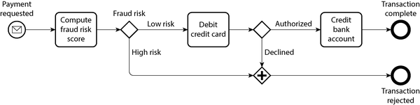
워크플로는 워크플로 엔진에 의해 실행되거나 실행됩니다. 워크플로 엔진은 언제, 어떤 머신에서 각 태스크를 실행할지, 태스크가 실패할 경우(예: 태스크가 실행되는 동안 머신이 크래시하는 경우) 어떻게 할지, 얼마나 많은 태스크가 병렬로 실행될 수 있는지 등을 결정합니다.
워크플로 엔진은 일반적으로 오케스트레이터와 실행기로 구성됩니다. 오케스트레이터는 태스크 실행을 예약하는 역할을 하고, 실행기는 태스크를 실행하는 역할을 합니다. 실행은 워크플로가 트리거될 때 시작됩니다. 사용자가 시간 기반 일정(예: 시간당 실행)을 정의하면 오케스트레이터가 워크플로 자체를 트리거합니다. 웹 서비스 또는 인간과 같은 외부 소스도 워크플로 실행을 트리거할 수 있습니다. 트리거된 후, 실행기가 호출되어 태스크를 실행합니다.
다양한 사용 사례를 다루는 많은 종류의 워크플로 엔진이 있습니다. 예를 들어, Airflow, Dagster 및 Prefect는 데이터 시스템과 통합되어 ETL 태스크를 오케스트레이션합니다. 다른 것들(예: Camunda 및 Orkes)은 비기술자가 워크플로를 더 쉽게 정의하고 실행할 수 있도록 그래픽 표기법(예: 그림 5-7에 사용된 BPMN)을 제공합니다. 여전히 다른 것들(예: Temporal 및 Restate)은 내구성 실행(durable execution)을 제공합니다.
내구성 실행 프레임워크는 트랜잭션성이 필요한 서비스 기반 아키텍처를 구축하는 인기 있는 방법이 되었습니다. 결제 예시에서는 각 결제가 정확히 한 번 처리되기를 원합니다. 워크플로 실행 중 장애가 발생하면 신용 카드 청구는 발생하지만 해당 은행 계좌 입금은 발생하지 않을 수 있습니다. 서비스 기반 아키텍처에서는 두 태스크를 데이터베이스 트랜잭션으로 단순히 감쌀 수 없습니다. 또한 우리가 제한된 제어력을 가진 타사 결제 게이트웨이와 상호 작용할 수도 있습니다.
내구성 실행 프레임워크는 워크플로에 대해 정확히 한 번 의미론(exactly-once semantics)을 제공하는 방법입니다. 태스크가 실패하면 프레임워크가 태스크를 다시 실행하지만, 태스크가 실패하기 전에 이미 성공적으로 수행한 RPC 호출 또는 상태 변경은 건너뜁니다. 이전 호출의 결과를 반환하는 척할 것입니다. 이는 내구성 실행 프레임워크가 모든 RPC 호출 및 상태 변화를 기록 장치와 같은 내구성 스토리지에 기록하기 때문에 가능합니다[46, 47]. 예 5-5는 Temporal을 사용하여 내구성 실행을 지원하는 결제 워크플로 정의 단편을 보여줍니다.
예 5-5. 그림 5-7의 결제 워크플로를 위한 Temporal 워크플로 정의 단편
@workflow.defn
class PaymentWorkflow:
@workflow.run
async def run(self, payment: PaymentRequest) -> PaymentResult:
is_fraud = await workflow.execute_activity(
check_fraud,
payment,
start_to_close_timeout=timedelta(seconds=15),
)
if is_fraud:
return PaymentResultFraudulent
credit_card_response = await workflow.execute_activity(
debit_credit_card,
payment,
start_to_close_timeout=timedelta(seconds=15),
)
# ...Temporal과 같은 프레임워크는 과제 없이 존재하지 않습니다. 예를 들어 타사 결제 게이트웨이와 같은 외부 서비스는 여전히 멱등성 API를 제공해야 합니다. 개발자는 중복 실행을 방지하기 위해 이러한 API에 고유 ID를 사용해야 한다는 것을 기억해야 합니다[48]. 또한 내구성 실행 프레임워크는 모든 RPC 호출을 순서대로 기록하기 때문에 후속 실행이 동일한 RPC 호출을 동일한 순서로 수행할 것으로 기대합니다. 이는 코드 변경을 취약하게 만듭니다. 단순히 함수 호출의 순서를 변경하는 것만으로도 정의되지 않은 동작을 도입할 수 있습니다[49]. 기존 워크플로의 코드를 수정하는 대신 새로운 버전의 코드를 별도로 배포하는 것이 더 안전하므로, 기존 워크플로 호출의 재실행은 이전 버전을 계속 사용하고 새로운 호출에만 새 코드가 사용됩니다[50].
마찬가지로, 내구성 실행 프레임워크는 모든 코드를 결정론적으로 재생(동일한 입력은 동일한 출력 생성)할 것으로 기대하므로, 난수 생성기 호출이나 시스템 클럭 호출과 같은 비결정론적 코드는 문제가 됩니다[49]. 프레임워크는 종종 이러한 라이브러리 함수에 대한 자체 결정론적 구현을 제공하지만, 개발자가 이를 사용해야 한다는 것을 기억해야 합니다. 또한 Temporal의 Workflow Check와 같은 정적 분석 도구를 제공하여 비결정론적 동작이 도입되었는지 확인할 수도 있습니다.
코드를 결정론적으로 만드는 것은 강력한 아이디어이지만 강력하게 구현하기는 까다롭습니다. 우리는 9장에서 이 주제로 다시 돌아올 것입니다.
이벤트 기반 아키텍처
마지막 섹션에서는 데이터가 한 프로세스에서 다른 프로세스로 흐를 수 있는 또 다른 방법인 이벤트 기반 아키텍처에 대해 간략히 살펴보겠습니다. 이 컨텍스트에서 요청을 이벤트 또는 메시지라고 합니다. RPC와 달리, 송신자는 일반적으로 수신자가 이벤트를 처리하기를 기다리지 않습니다. 또한 이벤트는 일반적으로 직접적인 네트워크 연결을 통해 수신자에게 전송되지 않고, 메시지 브로커(이벤트 브로커, 메시지 큐 또는 메시지 지향 미들웨어라고도 함)라는 중개자를 통해 일시적으로 저장됩니다[51].
메시지 브로커를 사용하는 것에는 직접 RPC와 비교하여 여러 가지 이점이 있습니다:
- 수신자가 사용할 수 없거나 과부하 상태일 때 버퍼 역할을 할 수 있어 시스템의 신뢰성이 향상됩니다.
- 크래시한 프로세스로 메시지를 자동으로 재전송하여 메시지 손실을 방지할 수 있습니다.
- 송신자가 수신자의 IP 주소에 직접 연결할 필요가 없으므로 서비스 검색이 필요하지 않습니다.
- 동일한 메시지를 여러 수신자에게 보낼 수 있습니다.
- 송신자와 수신자를 논리적으로 분리합니다(송신자는 메시지를 게시하고 누가 소비하는지 신경 쓰지 않습니다).
메시지 브로커를 통한 통신은 비동기적입니다. 송신자는 메시지가 전달되기를 기다리지 않고 단순히 전송한 후 잊어버립니다. 그러나 송신자가 별도 채널에서 응답을 기다림으로써 동기적 RPC 유사 모델을 구현하는 것이 가능합니다.
메시지 브로커
과거에는 메시지 브로커 환경이 TIBCO, IBM WebSphere, webMethods와 같은 상용 엔터프라이즈 소프트웨어에 의해 지배되었지만, RabbitMQ, ActiveMQ, HornetQ, NATS, Redpanda 및 Apache Kafka와 같은 오픈 소스 구현이 인기를 얻었습니다. 더 최근에는 Amazon Kinesis, Azure Service Bus 및 Google Cloud Pub/Sub와 같은 클라우드 서비스가 채택되고 있습니다. 12장에서 이를 더 자세히 비교할 것입니다.
세부적인 전달 의미론은 구현 및 구성에 따라 다르지만, 일반적으로 두 가지 메시지 배포 패턴이 가장 많이 사용됩니다:
- 하나의 프로세스가 명명된 큐에 메시지를 추가하고, 해당 큐의 소비자가 메시지를 수신합니다. 여러 소비자가 있는 경우 그 중 하나가 메시지를 수신합니다.
- 하나의 프로세스가 명명된 토픽에 메시지를 게시하고, 브로커는 해당 토픽의 모든 구독자에게 메시지를 전달합니다. 여러 구독자가 있는 경우 모두 메시지를 수신합니다.
메시지 브로커는 일반적으로 특정 데이터 모델을 강제하지 않습니다. 메시지는 일부 메타데이터가 있는 바이트 시퀀스일 뿐이므로 모든 인코딩 형식을 사용할 수 있습니다. 일반적인 접근 방식은 프로토콜 버퍼, Avro 또는 JSON을 사용하고, 메시지 브로커와 함께 스키마 레지스트리를 배포하여 모든 유효한 스키마 버전을 저장하고 호환성을 확인하는 것입니다[20, 22]. AsyncAPI는 메시지의 스키마를 지정하는 데 사용할 수 있는 OpenAPI에 해당하는 메시징 기반 사양입니다.
메시지 브로커는 메시지의 내구성 측면에서 다릅니다. 많은 브로커가 크래시하거나 재시작이 필요할 경우 메시지가 손실되지 않도록 디스크에 메시지를 씁니다. 데이터베이스와 달리 많은 메시지 브로커는 소비되었을 때 메시지를 자동으로 삭제합니다. 그러나 일부 브로커는 메시지를 무기한 저장하도록 구성될 수 있으며, 이는 이벤트 소싱(“이벤트 소싱과 CQRS” 참조)을 사용하려는 경우 필요할 수 있습니다.
소비자가 메시지를 다른 토픽으로 재게시하는 경우, 데이터베이스에 설명된 문제(그림 5-1 참조)와 같은 문제를 방지하기 위해 알 수 없는 필드를 보존하는 데 주의해야 할 수 있습니다.
분산 액터 프레임워크
액터 모델은 단일 프로세스 내의 동시성을 위한 프로그래밍 모델입니다. 스레드(그리고 이에 수반되는 경쟁 조건, 잠금 및 데드락 문제)와 직접 거래하는 대신, 논리는 액터에 캡슐화됩니다. 각 액터는 일반적으로 하나의 클라이언트 또는 엔티티를 나타냅니다. 자체 로컬 상태(다른 액터와 공유되지 않음)를 가질 수 있으며, 비동기 메시지를 보내고 받음으로써 다른 액터와 통신합니다. 메시지 배달은 보장되지 않습니다. 특정 오류 시나리오에서는 메시지가 손실될 수 있습니다. 각 액터가 한 번에 하나의 메시지만 처리하므로 스레드에 대해 걱정할 필요가 없으며, 각 액터는 프레임워크에 의해 독립적으로 스케줄될 수 있습니다.
Akka, Orleans[52] 및 Erlang/OTP와 같은 분산 액터 프레임워크에서는 여러 노드에 걸쳐 애플리케이션을 확장하기 위해 이 프로그래밍 모델을 사용합니다. 송신자와 수신자가 동일한 노드에 있는지 또는 다른 노드에 있는지에 관계없이 동일한 메시지 전달 메커니즘이 사용됩니다. 다른 노드에 있는 경우 메시지는 투명하게 바이트 시퀀스로 인코딩되어 네트워크를 통해 전송되고 다른 쪽에서 디코딩됩니다.
위치 투명성은 액터 모델에서 RPC보다 더 잘 작동합니다. 액터 모델은 단일 프로세스 내에서도 메시지가 손실될 수 있다고 이미 가정하기 때문입니다. 네트워크의 지연 시간이 동일한 프로세스 내에서보다 높을 가능성이 있지만, 액터 모델을 사용할 때 로컬 및 원격 통신 간의 근본적인 불일치는 덜합니다.
분산 액터 프레임워크는 본질적으로 메시지 브로커와 액터 프로그래밍 모델을 단일 프레임워크에 통합합니다. 그러나 액터 기반 애플리케이션의 롤링 업그레이드를 수행하려면 여전히 전방 및 하위 호환성에 대해 걱정해야 합니다. 새 버전을 실행 중인 노드에서 이전 버전을 실행 중인 노드로 메시지가 전송될 수 있고 그 반대의 경우도 있기 때문입니다. 이는 이 장에서 논의된 인코딩 중 하나를 사용하여 달성할 수 있습니다.
요약
이 장에서는 데이터 구조를 네트워크 또는 디스크의 바이트로 변환하는 여러 가지 방법을 살펴보았습니다. 이러한 인코딩의 세부 사항이 효율성에만 영향을 미치는 것이 아니라, 애플리케이션의 아키텍처와 진화할 수 있는 옵션에 더 중요하게 영향을 미친다는 것을 보았습니다.
특히, 많은 서비스가 롤링 업그레이드를 지원해야 합니다. 즉, 새로운 버전의 서비스를 모든 노드에 한 번에 배포하는 대신 몇 개 노드에 점진적으로 배포하는 것입니다. 롤링 업그레이드를 사용하면 다운타임 없이 새로운 버전의 서비스를 릴리스할 수 있어 빈번한 소규모 릴리스를 장려하고, 결함이 있는 릴리스가 많은 사용자에게 영향을 미치기 전에 감지하고 롤백할 수 있으므로 배포를 덜 위험하게 만듭니다. 이러한 속성은 진화 가능성, 즉 애플리케이션을 변경하기 쉬운 정도에 매우 유리합니다.
롤링 업그레이드 또는 기타 여러 이유로 인해, 애플리케이션 코드의 서로 다른 버전을 실행 중인 노드가 있다고 가정해야 합니다. 따라서 시스템 내부를 흐르는 모든 데이터는 하위 호환성(새 코드가 이전 데이터 읽기 가능)과 상위 호환성(이전 코드가 최신 데이터 읽기 가능)을 제공하는 방식으로 인코딩되어야 합니다.
우리는 여러 데이터 인코딩 형식과 그 호환성 특성에 대해 논의했습니다:
- 프로그래밍 언어별 인코딩은 단일 프로그래밍 언어에 국한되며 종종 전방 및 하위 호환성을 제공하지 못합니다.
- JSON, XML, CSV와 같은 텍스트 형식은 널리 사용되며, 호환성은 사용 방법에 따라 달라집니다. 선택적 스키마 언어를 가지고 있으며, 이는 때로는 도움이 되고 때로는 방해가 됩니다. 이러한 형식은 데이터 타입에 대해 다소 모호하므로 숫자와 이진 문자열에 주의해야 합니다.
- 프로토콜 버퍼 및 Avro와 같은 이진 스키마 기반 형식은 콤팩트하고 효율적인 인코딩을 가능하게 하며, 명확하게 정의된 전방 및 하위 호환성 시맨틱을 제공합니다. 스키마는 문서화 및 정적 타입 언어의 코드 생성에 유용할 수 있습니다. 그러나 단점은 데이터를 사람이 읽을 수 있도록 하려면 디코딩해야 한다는 것입니다.
또한 여러 데이터 흐름 모드에 대해 논의했습니다. 이는 데이터 인코딩이 중요한 다양한 시나리오를 설명합니다:
데이터베이스
데이터베이스에 쓰는 프로세스가 데이터를 인코딩하고, 데이터베이스에서 읽는 프로세스가 데이터를 디코딩합니다.
RPC 및 REST API
클라이언트가 요청을 인코딩하고, 서버가 요청을 디코딩하고 응답을 인코딩하며, 클라이언트가 최종적으로 응답을 디코딩합니다.
이벤트 기반 아키텍처(메시지 브로커 또는 액터 사용)
노드가 송신자가 인코딩하고 수신자가 디코딩하는 메시지를 서로 보냅니다.
조금의 주의를 기울이면 전방/하위 호환성과 롤링 업그레이드는 상당히 달성 가능하다는 결론을 내릴 수 있습니다. 애플리케이션의 진화가 빠르고 배포가 빈번하기를 바랍니다.
각주
참조
[1 ]“CWE-502: 신뢰할 수 없는 데이터의 역직렬화.” Common Weakness Enumeration, cwe.mitre.org, 2006년 7월. perma.cc/26EU-UK9Y에서 보관됨.
[2 ] Steve Breen.“WebLogic, WebSphere, JBoss, Jenkins, OpenNMS 및 귀하의 애플리케이션이 공통적으로 가지는 것: 이 취약성.” foxglovesecurity.com, 2015년 11월. perma.cc/9U97-UVVD에서 보관됨.
[3 ] Patrick McKenzie.“래일스 보안 문제가 귀하의 스타트업에 의미하는 바.” kalzumeus.com, 2013년 1월. perma.cc/2MBJ-7PZ6에서 보관됨.
[4 ] Brian Goetz.“더 나은 직렬화를 향하여.” openjdk.org, 2019년 6월. perma.cc/UK6U-GQDE에서 보관됨.
[5 ] Eishay Smith.“jvm-serializers Wiki.” github.com, 2023년 10월. perma.cc/PJP7-WCNG에서 보관됨.
[6 ]“XML은 S-표현의 빈약한 사본입니다.” wiki.c2.com, 2013년 5월. perma.cc/7FAN-YBKL에서 보관됨.
[7 ] Julia Evans.“부동 소수점 문제의 예.” jvns.ca, 2023년 1월. perma.cc/M57L-QKKW에서 보관됨.
[8 ] Matt Harris.“스노우플레이크: 업데이트 및 매우 중요한 정보.” X 개발자 토크 메일링 리스트로 보낸 이메일, 2010년 10월. perma.cc/8UBV-MZ3D에서 보관됨.
[9 ] Yakov Shafranovich.“RFC 4180: 쉼표로 구분된 값(CSV) 파일에 대한 공통 형식 및 MIME 타입.” IETF, 2005년 10월.
[10 ] Andy Coates.“JSON 스키마 진화하기—파트 1.” creekservice.org, 2024년 1월. perma.cc/MZW3-UA54에서 보관됨.
[11 ] Andy Coates.“JSON 스키마 진화하기—파트 2.” creekservice.org, 2024년 1월. perma.cc/GT5H-WKZ5에서 보관됨.
[12 ] Pierre Genevès, Nabil Layaïda, and Vincent Quint.“진화하는 XML 스키마와의 쿼리 호환성 보장.” INRIA 기술 보고서 6711, 2008년 11월. arxiv.org에서 보관됨.
[13 ] Tim Bray.“와이어상의 비트.” tbray.org, 2019년 11월. perma.cc/3BT3-BQU3에서 보관됨.
[14 ] Mark Slee, Aditya Agarwal, and Marc Kwiatkowski.“Thrift: 확장 가능한 크로스 언어 서비스 구현.” Facebook 기술 보고서, 2007년 4월. perma.cc/22BS-TUFB에서 보관됨.
[15 ] Martin Kleppmann.“Avro, 프로토콜 버퍼 및 Thrift의 스키마 진화.” martin.kleppmann.com, 2012년 12월. perma.cc/E4R2-9RJT에서 보관됨.
[16 ] Doug Cutting et al.“[제안] 하위 프로젝트: Avro.” hadoop-general 메일링 리스트의 이메일 스레드, lists.apache.org, 2009년 4월. perma.cc/4A79-BMEB에서 보관됨.
[17 ] Apache Software Foundation.“Apache Avro 1.12.0 사양.” avro.apache.org, 2024년 8월. perma.cc/C36P-5EBQ에서 보관됨.
[18 ] Apache Software Foundation.“Avro 스키마로서의 LL(1) CFG 정의.” avro.apache.org, 2024년 8월. perma.cc/JB44-EM9Q에서 보관됨.
[19 ] Tony Hoare.“참조 null: 10억 달러의 실수.” QCon London, 2009년 3월.
[20 ] Confluent, Inc.“스키마 레지스트리 개요.” docs.confluent.io, 2024. perma.cc/92C3-A9JA에서 보관됨.
[21 ] Aditya Auradkar and Tom Quiggle.“Espresso 소개—LinkedIn의 핫한 새로운 분산 문서 저장소.” engineering.linkedin.com, 2015년 1월. perma.cc/FX4P-VW9T에서 보관됨.
[22 ] Jay Kreps.“Apache Kafka를 사용하여 스트림 데이터 플랫폼 구축하기(2부).” confluent.io, 2015년 2월. perma.cc/8UA4-ZS5S에서 보관됨.
[23 ] Gwen Shapira.“스키마 관리의 문제점.” oreilly.com, 2014년 11월. perma.cc/BY8Q-RYV3에서 보관됨.
[24 ] John Larmouth. ASN.1 완전판. Morgan Kaufmann, 1999. ISBN: 9780122334351. perma.cc/GB7Y-XSXQ에서 보관됨.
[25 ] Burton S. Kaliski Jr.“ASN.1, BER 및 DER의 부분집합에 대한 입문서.” RSA Data Security, Inc. 기술 노트, 1993년 11월. perma.cc/2LMN-W9U8에서 보관됨.
[26 ] Jacob Hoffman-Andrews.“ASN.1과 DER에 오신 것을 환영합니다.” letsencrypt.org, 2020년 4월. perma.cc/CYT2-GPQ8에서 보관됨.
[27 ] Lev Walkin.“질문: 확장성 및 필드 제거.” lionet.info, 2010년 9월. perma.cc/VX8E-NLH3에서 보관됨.
[28 ] Jacqueline Xu.“규모에 따른 온라인 마이그레이션.” stripe.com, 2017년 2월. perma.cc/X59W-DK7Y에서 보관됨.
[29 ] Geoffrey Litt, Peter van Hardenberg, and Orion Henry.“프로젝트 캄브리아: 렌즈로 데이터 변환.” 기술 보고서, 2020년 10월. perma.cc/WA4V-VKDB에서 보관됨.
[30 ] Pat Helland.“외부 데이터 대 내부 데이터.” 2회 이상 데이터 시스템 연구 혁신 회의(CIDR), 2005년 1월. perma.cc/GH56-WYZS에서 보관됨.
[31 ] Roy Thomas Fielding.“네트워크 기반 소프트웨어 아키텍처의 양식.” 캘리포니아 대학교 어바인 박사 논문, 2000년. perma.cc/LWY9-7BPE에서 보관됨.
[32 ] Roy Thomas Fielding.“REST API는 하이퍼텍스트 기반이어야 합니다.” roy.gbiv.com, 2008년 10월. perma.cc/M2ZW-8ATG에서 보관됨.
[33 ]“OpenAPI 사양 버전 3.1.0.” swagger.io, 2021년 2월. perma.cc/3S6S-K5M4에서 보관됨.
[34 ] Michi Henning.“CORBA의 부상과 쇠퇴.” ACM 커뮤니케이션, 제51권, 제8호, 52–57쪽, 2008년 8월. doi:10.1145/1378704.1378718.
[35 ] Pete Lacey.“S는 심플을 의미합니다.” harmful.cat-v.org, 2006년 11월. perma.cc/4PMK-Z9X7에서 보관됨.
[36 ] Stefan Tilkov.“인터뷰: Pete Lacey가 웹 서비스를 비판합니다.” infoq.com, 2006년 12월. perma.cc/JWF4-XY3P에서 보관됨.
[37 ] Tim Bray.“충실한 WS-반대론자.” tbray.org, 2004년 9월. perma.cc/J5Q8-69Q2에서 보관됨.
[38 ] Andrew D. Birrell and Bruce Jay Nelson.“원격 프로시저 호출 구현.” ACM 컴퓨터 시스템 토픽스(TOCS), 제2권, 제1호, 39–59쪽, 1984년 2월. doi:10.1145/2080.357392.
[39 ] Jim Waldo, Geoff Wyant, Ann Wollrath, and Sam Kendall.“분산 컴퓨팅에 대한 메모.” Sun Microsystems Laboratories 기술 보고서 TR-94-29, 1994년 11월. perma.cc/8LRZ-BSZR에서 보관됨.
[40 ] Steve Vinoski.“편리함 대 정확성.” IEEE 인터넷 컴퓨팅, 제12권, 제4호, 89–92쪽, 2008년 7월. doi:10.1109/MIC.2008.75.
[41 ] Brandur Leach.“견고하고 예측 가능한 API 설계: 멱등성.” stripe.com, 2017년 2월. perma.cc/JD22-XZQT에서 보관됨.
[42 ] Sam Rose.“로드 밸런싱.” samwho.dev, 2023년 4월. perma.cc/Q7BA-9AE2에서 보관됨.
[43 ] Troy Hunt.“귀하의 API 버전 관리는 잘못되었습니다.” troyhunt.com, 2014년 2월. perma.cc/9DSW-DGR5에서 보관됨.
[44 ] Brandur Leach.“API를 인프라스트럭처로: 스트라이프의 버전 관리로 미래에 대비하기.” stripe.com, 2017년 8월. perma.cc/L63K-USFW에서 보관됨.
[45 ] AOASIS 웹 서비스 비즈니스 프로세스 실행 언어(WSBPEL) 기술 위원회.“웹 서비스 비즈니스 프로세스 실행 언어 버전 2.0.” docs.oasis-open.org, 2007년 4월.
[46 ]“Temporal. Temporal 서비스.” docs.temporal.io, 2024. perma.cc/32P3-CJ9V에서 보관됨.
[47 ] Stephan Ewen.“왜 우리는 Restate를 구축했는가?” restate.dev, 2023년 8월. perma.cc/BJJ2-X75K에서 보관됨.
[48 ] Keith Tenzer and Joshua Smith.“분산 시스템에서 멱등성 이해하기.” temporal.io, 2024년 2월. perma.cc/TY4U-EH3W에서 보관됨.
[49 ]“Temporal. Temporal 워크플로.” docs.temporal.io, 2024. perma.cc/B5C5-Y396에서 보관됨.
[50 ] Jack Kleeman.“내구성 실행의 불변성 문제 해결.” restate.dev, 2024년 2월. perma.cc/G55L-EYH5에서 보관됨.
[51 ] Srinath Perera.“이벤트 기반 아키텍처 탐구: 클라우드 네이티브 개발자를 위한 초보자 가이드.” wso2.com, 2023년 8월. archive.org에서 보관됨.
[52 ] Philip A. Bernstein, Sergey Bykov, Alan Geller, Gabriel Kliot, and Jorgen Thelin.“Orleans: 프로그래밍 및 확장을 위한 분산 가상 액터.” Microsoft Research 기술 보고서 MSR-TR-2014-41, 2014년 3월. perma.cc/PD3U-WDMF에서 보관됨.
6장. 복제
“잘못될 가능성이 있는 것과 절대 잘못될 수 없는 것의 가장 큰 차이점은, 절대 잘못될 수 없는 것이 잘못되었을 때, 대개 접근하거나 수리하기 어렵다는 점이다.” 더글라스 애덤스, 무해한 안내서(1992)
복제란 연결된 여러 머신에 동일한 데이터 사본을 보관하는 것을 의미합니다. “분산 시스템 대 단일 노드 시스템”에서 논의한 바와 같이, 데이터를 복제하고자 하는 여러 가지 이유가 있습니다:
- 데이터를 사용자와 지리적으로 가깝게 유지하여 접근 지연 시간을 줄이기 위해
- 일부 구성 요소가 실패하더라도 시스템이 계속 작동할 수 있도록 하여 가용성과 내구성을 높이기 위해
- 읽기 쿼리를 처리할 수 있는 머신 수를 확장하여 읽기 처리량을 높이기 위해
이 장에서는 각 머신이 전체 데이터 세트의 사본을 담을 수 있을 만큼 데이터 세트가 충분히 작다고 가정합니다. 7장에서는 이 가정을 완화하고 단일 머신에 담을 수 없는 너무 큰 데이터 세트의 샤딩(파티셔닝)에 대해 논의할 것입니다. 이후 장에서는 복제된 데이터 시스템에서 발생할 수 있는 다양한 종류의 결함과 그 대처 방법에 대해 논의할 것입니다.
복제하는 데이터가 시간이 지나도 변하지 않는다면 복제는 간단합니다. 데이터를 한 번씩 모든 노드에 복사하면 끝입니다. 복제의 모든 어려움은 복제된 데이터의 변경을 처리하는 데 있으며, 이것이 이 장의 주제입니다. 노드 간 변경 사항을 복제하는 세 가지 알고리즘 계열, 즉 단일 리더, 다중 리더, 리더 없는 복제에 대해 논의할 것입니다. 거의 모든 분산 데이터베이스는 이 세 가지 접근 방식 중 하나를 사용합니다. 각각의 장단점을 자세히 살펴볼 것입니다.
복제에는 고려해야 할 많은 트레이드오프가 있습니다. 예를 들어 동기식 복제와 비동기식 복제 중 어떤 것을 사용할지, 실패한 복제본을 어떻게 처리할지 등이 있습니다. 이들은 종종 데이터베이스의 구성 옵션이며, 세부 사항은 데이터베이스마다 다르지만 일반적인 원칙은 많은 구현에서 유사합니다. 우리는 이 장에서 이러한 선택의 결과에 대해 논의할 것입니다.
데이터베이스 복제는 오래된 주제입니다. 원칙은 1970년대에 연구된 이후로 큰 변화가 없었습니다[1 ]. 그 이유는 네트워크의 근본적인 제약 사항이 변하지 않았기 때문입니다. 그럼에도 불구하고, 궁극적 일관성(eventual consistency)과 같은 개념은 여전히 혼란을 야기합니다. “복제 지연의 문제”에서 궁극적 일관성에 대해 더 정확하게 다루고 읽기-자신의-쓰기(read-your-writes) 및 단조적 읽기(monotonic reads) 보장과 같은 사항을 논의할 것입니다.
백업과 복제
복제가 있으면 백업이 여전히 필요한지 궁금할 수 있습니다. 답은 네입니다. 둘 다 목적이 다르기 때문입니다. 복제본은 한 노드의 쓰기를 다른 노드에 빠르게 반영하지만, 백업은 과거 스냅샷을 저장하여 시간을 거슬러 올라갈 수 있게 해줍니다. 실수로 데이터를 삭제했다면 복제는 도움이 되지 않습니다. 삭제도 복제본에 전파되기 때문입니다. 삭제된 데이터를 복원하려면 백업이 필요합니다.
사실, 복제와 백업은 종종 보완적입니다. 백업은 때때로 복제 설정 과정의 일부입니다. “새 팔로워 설정”에서 보게 될 것입니다. 반대로, 복제 로그를 아카이브하는 것은 백업 과정의 일부일 수 있습니다.
일부 데이터베이스는 내부적으로 불변 스냅샷을 유지하여 일종의 내부 백업 역할을 합니다. 그러나 이는 현재 상태와 동일한 저장 매체에 이전 데이터 버전을 보관하는 것을 의미합니다. 데이터 양이 많다면, 이전 데이터의 백업은 드물게 접근하는 데이터에 최적화된 오브젝트 스토어에 보관하고 데이터베이스의 현재 상태만 기본 스토리지에 보관하는 것이 더 저렴할 수 있습니다.
단일 리더 복제
데이터베이스 사본을 저장하는 각 노드를 복제본이라고 합니다. 여러 복제본이 있을 때, 모든 데이터가 모든 복제본에 도달하도록 어떻게 보장할까 하는 질문이 필연적으로 발생합니다.
데이터베이스에 대한 모든 쓰기는 모든 복제본에서 처리되어야 합니다. 그렇지 않으면 복제본은 더 이상 동일한 데이터를 포함하지 않게 됩니다. 가장 일반적인 해결책은 리더 기반, 기본-백업 또는 활성/수동 복제라고 불리는 것입니다. 다음 방식으로 작동합니다(그림 6-1 참조):
- 복제본 중 하나를 리더(기본 또는 소스라고도 함)[2 ]로 지정합니다. 클라이언트가 데이터베이스에 쓰기를 원하면 요청을 리더로 보내야 하며, 리더는 먼저 새 데이터를 로컬 스토리지에 기록합니다.
- 다른 복제본은 팔로워(읽기 복제본, 세컨더리 또는 핫 스탠바이라고도 함)로 알려져 있습니다. 리더가 로컬 스토리지에 새 데이터를 쓸 때마다, 리더는 해당 데이터 변경을 모든 팔로워에게 복제 로그 또는 변경 스트림의 일부로 보냅니다. 각 팔로워는 리더로부터 로그를 가져와 리더가 처리한 것과 동일한 순서로 모든 쓰기를 적용하여 로컬 데이터베이스 사본을 업데이트합니다.
- 클라이언트가 데이터베이스에서 읽기를 원하면 리더 또는 모든 팔로워 중 하나를 쿼리할 수 있습니다. 그러나 쓰기는 리더만 수락합니다(클라이언트의 관점에서 팔로워는 읽기 전용입니다).
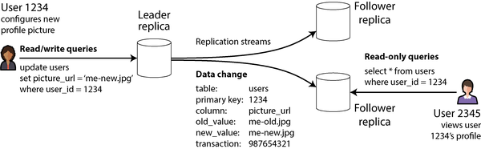
데이터베이스가 샤드된 경우(7장 참조), 각 샤드에 하나의 리더가 있습니다. 서로 다른 샤드는 서로 다른 노드에 리더를 가질 수 있지만, 각 샤드는 여전히 하나의 리더 노드를 가져야 합니다. “다중 리더 복제”에서는 동일한 샤드에 여러 리더가 동시에 있을 수 있는 대체 모델에 대해 논의할 것입니다.
단일 리더 복제는 매우 널리 사용됩니다. PostgreSQL, MySQL, Oracle Data Guard[3 ], SQL Server의 Always On 가용성 그룹[4 ]과 같은 많은 관계형 데이터베이스의 기본 기능입니다. 또한 MongoDB 및 DynamoDB[5 ]와 같은 일부 문서 데이터베이스, Kafka와 같은 메시지 브로커, DRBD와 같은 복제 블록 장치, 일부 네트워크 파일 시스템에서 사용됩니다. Raft와 같은 많은 합의 알고리즘도(CockroachDB[6 ], TiDB[7 ], etcd 및 RabbitMQ 쿼럼 큐 등에서 복제에 사용됨) 단일 리더를 기반으로 하며, 이전 리더가 실패하면 새 리더를 자동으로 선출합니다(합의에 대해서는 10장에서 더 자세히 논의할 것입니다).
이전 문서에서는 마스터-슬레이브 복제라는 용어를 볼 수 있습니다. 이는 리더 기반 복제와 동일한 의미이지만, 널리 불쾌하게 여겨지는 용어이므로 사용을 피해야 합니다[8 ].
동기식 대 비동기식 복제
복제된 시스템의 중요한 세부 사항은 복제가 동기적으로 이루어지는지 비동기적으로 이루어지는지 여부입니다(관계형 데이터베이스에서는 종종 구성 가능하며, 다른 시스템은 종종 둘 중 하나로 하드코딩되어 있습니다).
그림 6-1에서 웹 사이트 사용자가 프로필 이미지를 업데이트하는 경우를 생각해 보십시오. 일정 시점에 클라이언트가 업데이트 요청을 리더로 보냅니다. 얼마 후 리더가 이를 수신합니다. 리더는 데이터 변경을 팔로워에게 전달하고 사용자에게 업데이트가 성공했다고 알립니다. 그림 6-2는 가능한 타이밍 중 하나를 보여줍니다.
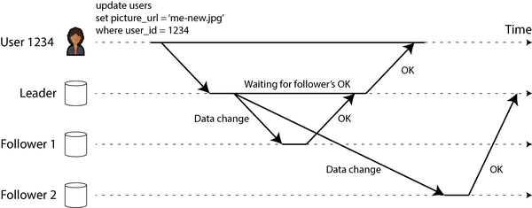
이 예에서 팔로워 1에 대한 복제는 동기식입니다. 리더는 팔로워 1이 쓰기를 수신했음을 확인할 때까지 기다린 다음 사용자에게 성공을 보고하고 다른 클라이언트에게 쓰기를 표시합니다. 팔로워 2에 대한 복제는 비동기식(또는 논블로킹)입니다. 리더는 메시지를 보내지만 팔로워의 응답을 기다리지 않습니다.
그림은 팔로워 2가 메시지를 처리하는 데 상당한 지연이 있음을 보여줍니다. 일반적으로 복제는 매우 빠르며, 대부분의 데이터베이스 시스템이 팔로워에 변화를 1초 이내에 적용합니다. 그러나 걸리는 시간에 대한 보장은 없습니다. 팔로워가 장애로부터 복구 중이거나, 시스템이 최대 용량 근처에서 운영 중이거나, 노드 간에 네트워크 문제가 있는 등의 일부 상황에서는 팔로워가 리더보다 수 분 이상 뒤처질 수 있습니다.
동기식 복제의 장점은 팔로워가 리더와 일치하는 최신 데이터 사본을 갖도록 보장한다는 것입니다. 리더가 갑자기 실패하면 데이터가 팔로워에 여전히 사용 가능함을 확신할 수 있습니다. 단점은 동기식 팔로워가 응답하지 않는 경우(크래시되었거나 네트워크 결함이 있거나 다른 이유로) 쓰기를 처리할 수 없다는 것입니다. 리더는 동기식 복제본을 다시 사용할 수 있을 때까지 모든 쓰기를 차단하고 기다려야 합니다.
그 이유로 모든 팔로워가 동기식인 것은 비실용적입니다. 단일 노드 장애가 전체 시스템을 중단시킬 수 있기 때문입니다. 실제로는 데이터베이스가 동기식 복제를 제공하는 경우, 종종 팔로워 중 하나는 동기식이고 나머지는 비동기식입니다. 동기식 팔로워를 사용할 수 없거나 느려지면 비동기식 팔로워 중 하나가 동기식으로 설정됩니다. 이렇게 하면 리더와 하나의 동기식 팔로워에 최소 두 노드의 최신 데이터 사본이 있도록 보장합니다. 이 구성은 때때로 세미싱크라고도 불립니다.
일부 시스템에서는 리더 기반 복제를 완전히 비동기식으로 구성합니다. 이 경우 리더가 실패하고 복구할 수 없으면 팔로워에 아직 복제되지 않은 쓰기가 손실됩니다. 즉, 클라이언트에게 확인되었다고 해도 쓰기가 내구성을 보장하지는 않습니다. 그러나 완전 비동기식 구성의 장점은 모든 팔로워가 크게 뒤처져 있어도 리더가 쓰기 처리를 계속할 수 있다는 것입니다.
내구성을 약화시키는 것은 나쁜 트레이드오프처럼 들릴 수 있지만, 비동기식 복제는 여전히 널리 사용됩니다. 특히 팔로워가 많거나 지리적으로 분산된 경우[9 ] 그렇습니다. “복제 지연의 문제”에서 이 문제로 다시 돌아올 것입니다.
새로운 팔로워 설정
때때로 새로운 팔로워를 설정해야 합니다. 예를 들어 복제본 수를 늘리거나 실패한 노드를 교체해야 하는 경우입니다. 새 팔로워가 리더의 정확한 데이터 사본을 갖도록 하려면 어떻게 해야 할까요?
단순히 한 노드에서 다른 노드로 데이터 파일을 복사하는 것은 일반적으로 충분하지 않습니다. 클라이언트가 계속해서 데이터베이스에 데이터를 쓰고 있으며 데이터는 항상 변동 중이므로, 표준 파일 복사는 서로 다른 시점의 서로 다른 데이터 부분을 보게 될 수 있습니다. 그 결과는 아무 의미가 없을 수 있습니다.
데이터베이스를 잠금(쓰기 불가능하게 만듦)으로 파일 상태를 일관되게 만들 수 있지만, 이는 높은 가용성 목표에 어긋납니다. 다행히 새 팔로워 설정은 일반적으로 다운타임 없이 수행할 수 있습니다. 개념적으로 과정은 다음과 같습니다:
- 가능한 경우 전체 데이터베이스를 잠그지 않고 일정 시점의 리더 데이터베이스 일관된 스냅샷을 찍습니다. 대부분의 데이터베이스는 이 기능을 가지고 있으며, 이는 백업에도 필요합니다. 경우에 따라 Percona XtraBackup(MySQL용)과 같은 서드파티 도구가 필요합니다.
- 스냅샷을 새 팔로워 노드에 복사합니다.
- 팔로워는 리더에 연결하여 스냅샷이 찍힌 이후 발생한 모든 데이터 변경을 요청합니다. 이는 스냅샷이 리더의 복제 로그의 정확한 위치와 연관되어야 함을 요구합니다. 해당 위치에는 다양한 이름이 있습니다. 예를 들어 PostgreSQL은 이를 로그 시퀀스 번호라고 부르고, MySQL은 binlog 좌표 및 전역 트랜잭션 식별자(GTID)라는 두 가지 메커니즘을 가지고 있습니다.
- 팔로워가 스냅샷 이후 데이터 변경 사항 백로그를 처리하면, 따라잡았다고 합니다. 이제 팔로워는 리더로부터 발생하는 데이터 변경을 계속 처리할 수 있습니다.
새 팔로워 설정의 실제 단계는 데이터베이스에 따라 상당히 다릅니다. 일부 시스템에서는 과정이 완전히 자동화된 반면, 다른 시스템에서는 관리자가 수동으로 수행해야 하는 다소 난해한 다단계 워크플로일 수 있습니다.
또한 복제 로그를 전체 데이터베이스의 주기적 스냅샷과 함께 오브젝트 스토어에 아카이브할 수 있습니다. 이것은 데이터베이스 백업 및 재해 복구를 구현하는 좋은 방법이며, 새 팔로워 설정 단계 1과 2는 해당 파일을 오브젝트 스토어에서 다운로드하여 수행할 수 있습니다. 예를 들어 WAL-G는 PostgreSQL, MySQL 및 SQL Server에 대해 이 작업을 수행하고, Litestream은 SQLite에 대해 이와 동등한 작업을 수행합니다.
오브젝트 스토리지를 지원하는 데이터베이스
오브젝트 스토리지는 데이터를 아카이브하는 데 사용할 수 있을 뿐만 아니라, 많은 데이터베이스가 Amazon S3, Google Cloud Storage 및 Azure Blob Storage와 같은 오브젝트 스토어를 사용하여 실시간 쿼리에 데이터를 제공하기 시작하고 있습니다. 데이터베이스 데이터를 오브젝트 스토리지에 저장하는 것에는 많은 이점이 있습니다:
- 오브젝트 스토리지는 다른 클라우드 스토리지 옵션보다 저렴합니다. 이를 통해 클라우드 데이터베이스는 덜 자주 쿼리되는 데이터를 더 저렴하고 지연 시간이 더 높은 스토리지에 저장하면서 작업 집합은 메모리, SSD 및 NVMe에서 제공할 수 있습니다.
- 오브젝트 스토어는 다중 영역, 이중 리전 또는 다중 리전 복제와 매우 높은 내구성 보장을 제공합니다. 이를 통해 데이터베이스는 영역 간 네트워크 요금을 우회할 수 있습니다.
- 데이터베이스는 오브젝트 스토어의 조건부 쓰기 기능(본질적으로 비교-설정(CAS) 연산)을 사용하여 트랜잭션 및 리더십 선출을 구현할 수 있습니다[10, 11 ].
- 동일한 오브젝트 스토어에 여러 데이터베이스의 데이터를 저장하면(“클라우드 데이터 웨어하우스” 참조) 특히 Parquet 및 Iceberg와 같은 오픈 형식을 사용할 때 데이터 통합이 간소화될 수 있습니다.
이러한 이점은 트랜잭션, 리더십 선출 및 복제의 책임을 오브젝트 스토리지로 이전함으로써 데이터베이스 아키텍처를 극적으로 단순화합니다.
그러나 오브젝트 스토리지를 복제에 채택하는 시스템은 트레이드오프를 고려해야 합니다. 특히, 오브젝트 스토어는 로컬 디스크 또는 Amazon EBS와 같은 가상 블록 디바이스보다 읽기 및 쓰기 지연 시간이 훨씬 높습니다. 많은 클라우드 제공업체는 API 호출당 요금을 부과하므로, 비용을 줄이기 위해 시스템이 읽기 및 쓰기를 배치해야 합니다. 이러한 배치는 지연 시간을 더욱 증가시킵니다. 객체는 종종 불변이며, 이는 대용량 객체에서 임의 쓰기를 극도로 자원 집약적인 작업으로 만듭니다. 마지막으로, 많은 오브젝트 스토어는 표준 파일 시스템 인터페이스를 제공하지 않으므로 오브젝트 스토리지 통합이 부족한 시스템은 오브젝트 스토리지를 활용할 수 없습니다. 파일 시스템 인 유저스페이스(FUSE)와 같은 인터페이스를 사용하면 운영자가 오브젝트 스토어 버킷을 파일 시스템으로 마운트할 수 있어 애플리케이션이 데이터가 오브젝트 스토리지에 저장된다는 것을 알지 못한 채 사용할 수 있습니다. 그러나 오브젝트 스토어에 대한 많은 FUSE 인터페이스는 비순차적 쓰기 또는 심볼릭 링크와 같은 POSIX 기능을 제공하지 않으며, 시스템이 이에 의존할 수 있습니다.
다양한 시스템이 이러한 트레이드오프를 다양한 방식으로 처리합니다. 일부는 계층적 스토리지 아키텍처를 도입하여 덜 자주 접근하는 데이터는 오브젝트 스토리지에 배치하고, 새롭거나 자주 접근하는 데이터는 SSD 또는 NVMe와 같은 더 빠른 스토리지 장치 또는 메모리에 보관합니다. 다른 시스템은 오브젝트 스토리지를 기본 스토리지 계층으로 사용하지만 WAL을 저장하기 위해 별도의 낮은 지연 시간 스토리지 시스템(Amazon EBS 또는 Neon의 Safekeepers[12 ] 등)을 사용합니다. 최근에는 일부 시스템이 제로 디스크 아키텍처(ZDA)를 도입하여 더 나아갔습니다. ZDA 기반 시스템은 모든 데이터를 오브젝트 스토리지에 지속하고 디스크와 메모리를 엄격하게 캐싱용으로만 사용합니다. 이를 통해 노드는 영구 상태를 갖지 않게 되어 운영이 극적으로 단순화됩니다. WarpStream, Confluent Freight, Buf의 Bufstream 및 Redpanda Serverless는 모두 제로 디스크 아키텍처로 구축된 Kafka 호환 시스템입니다. 거의 모든 현대 클라우드 데이터 웨어하우스도 이러한 아키텍처를 채택하고 있으며, Turbopuffer(벡터 검색 엔진) 및 SlateDB(클라우드 네이티브 LSM 스토리지 엔진)도 마찬가지입니다.
노드 장애 처리
시스템의 모든 노드는 오류로 인해 예상치 못하게 다운되거나 계획된 유지보수(예: 커널 보안 패치를 적용하기 위해 머신 재부팅)로 인해 다운될 수 있습니다. 개별 노드를 다운타임 없이 재부팅할 수 있다는 것은 운영 및 유지보수에 큰 장점입니다. 따라서 우리의 목표는 개별 노드 장애에도 시스템 전체가 계속 실행되도록 유지하고 노드 장애의 영향을 가능한 한 최소화하는 것입니다.
리더 기반 복제에서 고가용성을 어떻게 달성할 수 있나요?
팔로워 장애: 추적 복구
각 팔로워는 로컬 디스크에 리더로부터 받은 데이터 변경 로그를 보관합니다. 팔로워가 크래시하고 재시작되거나 리더와 팔로워 간의 네트워크가 일시적으로 중단되는 경우, 팔로워는 자신의 로그에서 장애 발생 전에 처리된 마지막 트랜잭션을 알고 있으므로 상당히 쉽게 복구할 수 있습니다. 따라서 팔로워는 리더에 연결하여 연결이 끊긴 동안 발생한 모든 데이터 변경을 요청할 수 있습니다. 이러한 변경을 적용하면 팔로워는 리더를 따라잡아 이전과 같이 데이터 변경 스트림을 계속 받을 수 있습니다.
팔로워 복구는 개념적으로 간단하지만 성능 측면에서는 도전적일 수 있습니다. 데이터베이스의 쓰기 처리량이 높거나 팔로워가 오랫동안 오프라인 상태였던 경우 따라잡아야 할 쓰기가 많을 수 있습니다. 이 추적 프로세스 진행 중에는 복구 중인 팔로워와 리더 모두(리더는 팔로워에게 쓰기 백로그를 보내야 함)에 높은 부하가 발생합니다.
리더는 모든 팔로워가 쓰기를 처리했음을 확인한 후 쓰기 로그를 삭제할 수 있지만, 팔로워가 오랜 시간 동안 사용 불가능한 경우 리더는 선택에 직면합니다. 팔로워가 복구되어 따라잡을 때까지 로그를 유지하되(리더 디스크 공간 부족 위험 감수) 또는 팔로워가 확인하지 않은 로그를 삭제하는 것(이 경우 팔로워는 로그에서 복구할 수 없어서 다시 온라인 상태가 되었을 때 백업에서 복원해야 함)입니다.
리더 장애: 장애 조치
리더 장애를 처리하는 것은 더 까다롭습니다. 팔로워 중 하나가 새로운 리더로 승격되어야 하고, 클라이언트는 쓰기를 새로운 리더로 보내도록 재구성되어야 하며, 다른 팔로워는 새로운 리더로부터 데이터 변경을 소비하기 시작해야 합니다. 이 과정을 장애 조치(failover)라고 합니다.
장애 조치는 수동으로(관리자가 리더 장애를 알리고 새로운 리더를 만들기 위해 필요한 조치를 수행함) 또는 자동으로 발생할 수 있습니다. 자동 장애 조치 과정은 일반적으로 다음 단계로 구성됩니다:
- 리더가 실패했음을 판단합니다. 충돌, 정전, 네트워크 문제 등 수많은 문제가 발생할 수 있습니다. 무슨 일이 발생했는지 확정적으로 감지할 방법은 없으므로, 대부분의 시스템은 단순히 타임아웃을 사용합니다. 노드가 주기적으로 서로에게 메시지를 주고받으며, 일정 시간(예: 30초) 동안 응답이 없으면 해당 노드가 죽은 것으로 간주됩니다(리더가 계획된 유지보수를 위해 의도적으로 내려진 경우는 적용되지 않으며, 리더는 종료되기 전에 안전하게 인계할 수 있음).
- 새로운 리더 선택. 이는 남은 복제본의 다수에 의해 리더가 선택되는 선거 과정을 통해 이루어질 수도 있고, 이전에 설정된 컨트롤러 노드가 새로운 리더를 임명할 수도 있습니다[13 ]. 리더십에 가장 적합한 후보는 일반적으로 이전 리더로부터 가장 최신의 데이터 변경 사항을 가지고 있는 복제본(데이터 손실 최소화)입니다. 모든 노드가 새로운 리더에 동의하는 것은 합의 문제이며, 10장에서 자세히 다룰 것입니다.
- 새로운 리더를 사용하도록 시스템 재구성. 이제 클라이언트는 쓰기 요청을 새로운 리더로 보내야 합니다(이 점에 대해서는 “요청 라우팅”에서 논의합니다). 이전 리더가 다시 돌아오면 여전히 자신이 리더라고 생각하여 다른 복제본이 자신을 강등시켰다는 것을 깨닫지 못할 수 있습니다. 시스템은 이전 리더가 팔로워가 되어 새로운 리더를 인식하도록 보장해야 합니다.
장애 조치는 잘못될 수 있는 수많은 사항이 있습니다:
- 비동기식 복제를 사용하는 경우, 새로운 리더는 이전 리더가 실패하기 전에 모든 쓰기를 수신하지 않았을 수 있습니다. 새로운 리더가 선택된 후 이전 리더가 클러스터에 다시 합류하면 해당 쓰기는 어떻게 해야 할까요? 새로운 리더는 그 사이에 상충되는 쓰기를 수신했을 수 있습니다. 가장 일반적인 해결책은 이전 리더의 복제되지 않은 쓰기를 단순히 버리는 것으로, 이는 커밋되었다고 믿었던 쓰기가 내구성이 없었음을 의미합니다.
- 쓰기를 버리는 것은 특히 데이터베이스 외부의 다른 스토리지 시스템이 데이터베이스 내용과 조율되어야 할 때 위험합니다. 예를 들어 GitHub에서 한 사고[14 ]에서 오래된 MySQL 팔로워가 새로운 리더로 승격되었습니다. 데이터베이스는 새 행에 기본 키를 할당하기 위해 자동 증가 카운터를 사용했지만, 새로운 리더의 카운터가 이전 리더보다 뒤처져 이전 리더가 이전에 할당했던 일부 기본 키를 재사용했습니다. 이 기본 키는 Redis 저장소에서도 사용되었으므로 기본 키 재사용으로 인해 MySQL과 Redis 간에 불일치가 발생하여 잘못된 사용자에게 일부 개인 데이터가 노출되었습니다.
- 특정 결함 시나리오(9장 참조)에서는 두 노드가 모두 자신이 리더라고 생각할 수 있습니다. 이 상황은 스플릿 브레인(split brain)이라고 불리며 위험합니다. 두 리더 모두 쓰기를 수락하고 충돌을 해결하는 프로세스(“다중 리더 복제” 참조)가 없는 경우 데이터가 손실되거나 손상될 가능성이 높습니다. 안전 장치로 일부 시스템에는 두 리더가 감지되면 하나의 노드를 종료하는 메커니즘이 있습니다. 그러나 이 메커니즘이 주의 깊게 설계되지 않으면 두 노드 모두 종료될 수 있습니다[15 ]. 더욱이 스플릿 브레인이 감지되고 이전 노드가 종료될 때까지 이미 너무 늦어 데이터가 이미 손상되었을 위험이 있습니다.
- 리더를 죽은 것으로 선언하기 전에 적절한 타임아웃을 결정하는 것이 까다로울 수 있습니다. 더 긴 타임아웃은 리더가 실패한 경우 복구 시간을 길게 만듭니다. 그러나 타임아웃이 너무 짧으면 불필요한 장애 조치가 발생할 수 있습니다. 예를 들어 일시적인 부하 급증으로 인해 노드의 응답 시간이 타임아웃을 초과하거나 네트워크 결함으로 패킷이 지연될 수 있습니다. 시스템이 이미 높은 부하 또는 네트워크 문제로 어려움을 겪고 있는 경우 불필요한 장애 조치는 상황을 개선하지 않고 악화시킬 가능성이 높습니다.
이전 리더를 제한하거나 종료하여 스플릿 브레인을 방지하는 것을 펜싱(fencing)이라고 합니다. 이에 대해서는 “분산 잠금 및 임대”에서 더 자세히 논의할 것입니다. 그러나 이러한 문제에는 쉬운 해결책이 없습니다. 이러한 이유로 일부 운영 팀은 소프트웨어가 자동 장애 조치를 지원하더라도 수동으로 장애 조치를 수행하는 것을 선호합니다.
장애 조치에서 가장 중요한 것은 가장 최신 상태의 팔로워를 새로운 리더로 선택하는 것입니다. 동기식 또는 세미싱크 복제를 사용하는 경우, 이는 이전 리더가 쓰기를 확인하기 전에 기다렸던 팔로워가 됩니다. 비동기식 복제를 사용하는 경우 가장 높은 로그 시퀀스 번호를 가진 팔로워를 선택할 수 있습니다. 이렇게 하면 장애 조치 중에 손실되는 데이터의 양을 최소화할 수 있습니다. 몇 초 분량의 쓰기를 잃는 것은 용인될 수 있지만, 며칠이나 뒤처진 팔로워를 선택하는 것은 치명적일 수 있습니다.
이러한 문제(노드 장애, 신뢰할 수 없는 네트워크, 복제본 일관성, 내구성, 가용성 및 지연 시간 간의 트레이드오프)는 사실상 분산 시스템의 근본적인 문제입니다. 9장과 10장에서 이에 대해 더 자세히 논의할 것입니다.
복제 로그 구현
리더 기반 복제는 내부적으로 어떻게 작동할까요? 실제로는 여러 복제 방법이 사용됩니다. 각각을 간략히 살펴보겠습니다.
문 기반 복제
가장 간단한 경우, 리더는 실행하는 모든 쓰기 요청(문)을 로그에 기록하고 해당 문 로그를 팔로워에게 보냅니다. 관계형 데이터베이스의 경우 모든 INSERT, UPDATE 또는 DELETE 문이 팔로워에게 전달되며, 각 팔로워는 클라이언트로부터 받은 것처럼 해당 SQL 문을 파싱하고 실행합니다.
이 복제 방식이 합리적으로 들릴 수 있지만, 여러 가지 면에서 실패할 수 있습니다:
NOW(현재 날짜 및 시간 가져오기) 또는RAND(무작위 숫자 가져오기)와 같은 비결정론적 함수를 호출하는 문은 각 복제본에서 다른 값을 생성할 가능성이 높습니다.- 자동 증가 열을 사용하거나 기존 데이터에 의존하는 문(예:
UPDATE ... WHERE <조건>)은 각 복제본에서 정확히 동일한 순서로 실행되어야 하며, 그렇지 않으면 다른 효과를 가질 수 있습니다. 이는 여러 동시 트랜잭션이 실행될 때 제한적일 수 있습니다. - 부작용이 있는 문(예: 트리거, 저장 프로시저, 사용자 정의 함수)은 부작용이 절대적으로 결정론적이지 않은 한 각 복제본에서 다른 부작용을 초래할 수 있습니다.
이러한 문제를 우회하는 것이 가능합니다. 예를 들어, 리더는 문이 로깅될 때 비결정론적 함수 호출을 고정된 반환 값으로 대체하여 모든 팔로워가 동일한 값을 받을 수 있도록 할 수 있습니다. 결정론적 문을 고정된 순서로 실행하는 아이디어는 이전에 “이벤트 소싱과 CQRS”에서 논의한 이벤트 소싱 모델과 유사합니다. 이 접근 방식은 상태 머신 복제(state machine replication)라고도 하며, “공유 로그 사용”에서 이론을 다룰 것입니다.
문 기반 복제는 버전 5.1 이전의 MySQL에서 사용되었습니다. 문에 비결정론성이 있는 경우 MySQL이 이제 기본적으로 행 기반 복제(곧 다룰 예정)로 전환하지만, 여전히 때때로 사용되며, 상당히 컴팩트하기 때문입니다. VoltDB는 트랜잭션이 결정론적이어야 함을 요구함으로써 문 기반 복제를 안전하게 사용합니다[16 ]. 그러나 실무에서 결정론을 보장하기가 어려울 수 있으므로 많은 데이터베이스는 다른 복제 방법을 선호합니다.
WAL 로그 배송
4장에서 B-트리 스토리지 엔진을 견고하게 만들기 위해 선행 기록 로그(WAL)가 필요하다는 것을 보았습니다. 모든 수정 사항은 먼저 WAL에 기록되므로 크래시 후 트리를 일관된 상태로 복원할 수 있습니다. WAL에는 인덱스와 힙을 일관된 상태로 복원하는 데 필요한 모든 정보가 포함되어 있으므로, 동일한 로그를 사용하여 다른 노드에 복제본을 구축할 수 있습니다. 리더는 로그를 디스크에 쓰는 것 외에도 네트워크를 통해 팔로워에게 로그를 보냅니다. 팔로워가 이 로그를 처리하면 리더에 있는 것과 동일한 파일의 사본을 구축합니다.
이 복제 방법은 PostgreSQL 및 Oracle에서 사용됩니다[17, 18 ]. 주요 단점은 로그가 데이터의 매우 낮은 수준을 설명한다는 것입니다. WAL에는 디스크 블록의 어떤 바이트가 변경되었는지에 대한 세부 정보가 포함되어 있습니다. 따라서 복제는 스토리지 엔진 내부에 밀접하게 결합됩니다. 데이터베이스가 한 버전에서 다른 버전으로 스토리지 형식을 변경하면 리더와 팔로워에서 서로 다른 버전의 데이터베이스 소프트웨어를 실행할 수 있는 경우가 일반적으로 없습니다.
이는 사소한 구현 세부 사항처럼 보일 수 있지만 운영에 큰 영향을 미칠 수 있습니다. 복제 프로토콜이 팔로워가 리더보다 새로운 소프트웨어 버전을 사용할 수 있도록 허용하는 경우, 먼저 팔로워를 업그레이드한 다음 업그레이드된 노드 중 하나를 새로운 리더로 만들어 장애 조치를 수행함으로써 데이터베이스 소프트웨어를 무중단으로 업그레이드할 수 있습니다. 복제 프로토콜이 이러한 버전 불일치를 허용하지 않는 경우(WAL 로그 배송에서 흔히 그렇듯이) 그러한 업그레이드는 다운타임이 필요합니다.
논리적(행 기반) 로그 복제
대안은 복제와 스토리지 엔진에 서로 다른 로그 형식을 사용하는 것입니다. 이렇게 하면 복제 로그가 스토리지 엔진 내부의 동작과 분리될 수 있습니다. 이러한 유형의 복제 로그는 스토리지 엔진의 (물리적) 데이터 표현과 구별하기 위해 논리적 로그라고 합니다.
관계형 데이터베이스에 대한 논리적 로그는 일반적으로 테이블에 대한 쓰기를 행 수준에서 설명하는 일련의 레코드입니다:
- 삽입된 행의 경우, 로그에는 모든 열의 새 값이 포함됩니다.
- 삭제된 행의 경우, 로그에는 삭제된 행을 고유하게 식별할 수 있는 충분한 정보가 포함됩니다. 일반적으로 기본 키이지만, 테이블에 기본 키가 없는 경우 이전 행의 모든 열 값이 로깅되어야 합니다.
- 업데이트된 행의 경우, 로그에는 업데이트된 행을 고유하게 식별할 수 있는 충분한 정보와 모든 열의 새 값(또는 변경된 값만)이 포함됩니다.
여러 행을 수정하는 트랜잭션은 여러 이러한 로그 레코드를 생성한 다음 트랜잭션이 커밋되었음을 나타내는 레코드를 생성합니다. 행 기반 복제를 사용하도록 구성되면 MySQL은 WAL 외에도 별도의 논리적 복제 로그인 binlog를 유지합니다. PostgreSQL은 물리적 WAL을 행 삽입/업데이트/삭제 이벤트로 디코딩하여 논리적 복제를 구현합니다[19].
논리적 로그는 스토리지 엔진의 내부 동작과 분리되어 있으므로, 리더와 팔로워가 서로 다른 버전의 데이터베이스 소프트웨어를 실행할 수 있도록 더 쉽게 하위 호환성을 유지할 수 있습니다. 이는 다운타임을 최소화하여 새로운 버전으로 업그레이드할 수 있게 합니다[20].
논리적 로그 형식은 외부 애플리케이션이 파싱하기에도 더 쉽습니다. 데이터베이스의 내용을 데이터 웨어하우스와 같은 외부 시스템 또는 사용자 정의 인덱스와 캐시를 구축하는 특수 시스템으로 보내고 싶을 때 유용합니다. 이 기술은 변경 데이터 캡처(Change Data Capture)라고 하며, 12장에서 다시 다룰 것입니다.
복제 지연의 문제
노드 장애를 견딜 수 있다는 것은 복제를 원하는 이유 중 하나일 뿐입니다. “분산 대 단일 노드 시스템”에서 언급했듯이 다른 이유로는 확장성(단일 머신이 처리할 수 있는 것보다 더 많은 요청 처리)과 지연 시간(사용자와 지리적으로 가까운 곳에 복제본 배치)이 있습니다.
리더 기반 복제는 모든 쓰기를 단일 노드에서 처리해야 하지만, 읽기 전용 쿼리는 모든 복제본에서 처리할 수 있습니다. 온라인 서비스에서 종종 그렇듯이 읽기가 대부분이고 쓰기가 적은 비율인 워크로드의 경우, 많은 팔로워를 생성하고 읽기 요청을 그 사이에 분산하는 매력적인 옵션이 있습니다. 이렇게 하면 리더의 부하를 제거하고 읽기 요청을 인근 복제본에서 처리할 수 있습니다.
이러한 읽기 확장 아키텍처에서는 팔로워를 더 추가하여 읽기 전용 요청 처리 용량을 쉽게 늘릴 수 있습니다. 그러나 이 접근 방식은 실제로는 비동기식 복제로만 작동합니다. 모든 팔로워에 동기식 복제를 시도하려고 하면 단일 노드 장애나 네트워크 장애로 인해 전체 시스템에 대한 쓰기가 불가능해질 것입니다. 노드가 많을수록 한 노드가 다운될 가능성이 더 높으므로 완전히 동기식 구성은 매우 신뢰할 수 없을 것입니다.
불행히도 비동기식 팔로워에서 읽는 애플리케이션은 팔로워가 뒤처진 경우 오래된 정보를 볼 수 있습니다. 이로 인해 데이터베이스에 명백한 불일치가 발생합니다. 리더와 팔로워에서 동일한 쿼리를 동시에 실행하면 모든 쓰기가 팔로워에 반영되지 않았기 때문에 다른 결과를 얻을 수 있습니다. 이 불일치는 일시적인 상태입니다. 쓰기를 중단하고 잠시 기다리면 팔로워는 결국 따라잡아 리더와 일관성이 있게 됩니다. 이러한 이유로 이 효과는 궁극적 일관성(eventual consistency)으로 알려져 있습니다.
궁극적 일관성이라는 용어는 Douglas Terry et al. [23]이 도입하고 Werner Vogels [24]가 대중화했으며 많은 NoSQL 프로젝트의 구호가 되었습니다. 그러나 궁극적 일관성은 NoSQL 데이터베이스에만 국한된 것이 아닙니다. 비동기적으로 복제된 관계형 데이터베이스의 팔로워도 동일한 특성을 가집니다.
“궁극적”이라는 용어는 의도적으로 모호합니다. 일반적으로 복제본이 얼마나 뒤처질 수 있는지에 대한 제한은 없습니다. 정상적인 운영에서는 쓰기가 리더에서 발생한 후 팔로워에 반영되는 지연 시간(복제 지연)은 대개 분의 1도 되지 않으며 실질적으로 인식되지 않습니다. 그러나 시스템이 최대 용량 근처에서 운영 중이거나 네트워크에 문제가 있는 경우 지연 시간이 몇 초 또는 심지어 몇 분까지 쉽게 늘어날 수 있습니다.
지연 시간이 이렇게 커지면 도입되는 불일치는 더 이상 이론적인 문제가 아니라 애플리케이션에 대한 실제 문제가 됩니다. 이 섹션에서는 복제 지연으로 인해 발생할 가능성이 높은 세 가지 문제 사례를 강조하고, 이를 해결하기 위한 몇 가지 접근 방식을 설명하겠습니다.
읽기-자신의-쓰기
많은 애플리케이션은 사용자가 데이터를 제출한 다음 자신이 제출한 내용을 보도록 합니다. 이는 고객 데이터베이스의 레코드이거나, 토론 게시판의 댓글이거나, 기타 그런 종류의 것일 수 있습니다. 새로운 데이터가 제출되면 리더로 전송되어야 하지만, 데이터를 볼 때는 팔로워에서 읽을 수 있습니다. 이는 데이터가 자주 읽히고 간헐적으로만 쓰이는 경우에 특히 적합합니다.
비동기식 복제에서 문제가 발생합니다(그림 6-3 참조). 사용자가 쓰기를 한 직후에 데이터를 보면 새 데이터가 아직 복제본에 도달하지 않았을 수 있습니다. 사용자에게는 자신이 제출한 데이터가 손실된 것처럼 보이므로 당연히 dissatisfied할 것입니다.
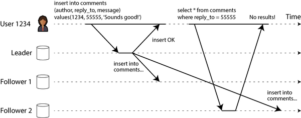
이 상황에서는 읽기-자신의-쓰기 일관성(read-after-write consistency, read-your-writes consistency라고도 함)이 필요합니다. 이는 사용자가 페이지를 새로 고치면 항상 자신이 제출한 업데이트를 보게 된다는 보장입니다. 다른 사용자에 대해서는 어떠한 약속도 하지 않습니다. 다른 사용자의 업데이트는 나중에야 보이게 됩니다. 그러나 사용자는 자신의 입력이 올바르게 저장되었다는 확신을 갖게 됩니다.
리더 기반 복제 시스템에서 읽기-자신의-쓰기 일관성을 구현하는 방법은 여러 가지가 있습니다. 예를 들어:
- 사용자가 수정했을 수 있는 데이터를 읽을 때는 리더 또는 동기식으로 업데이트된 팔로워에서 읽고, 그렇지 않은 경우에는 비동기식 팔로워에서 읽습니다. 이렇게 하려면 해당 데이터를 조회하지 않고도 수정되었을 가능성이 있는지 알 수 있는 방법이 필요합니다. 예를 들어 소셜 네트워크의 사용자 프로필 정보는 일반적으로 프로필 소유자만 편집할 수 있으므로, 간단한 규칙은 다음과 같습니다: 사용자의 프로필은 항상 리더에서 읽고, 다른 사용자의 프로필은 팔로워에서 읽습니다.
- 애플리케이션의 대부분의 사항이 사용자에 의해 잠재적으로 수정될 수 있다면 해당 접근 방식은 효과적이지 않으며, 대부분 리더에서 읽어야 하므로 읽기 확장의 이점이 사라집니다. 이 경우 다른 기준을 사용하여 리더에서 읽을지 여부를 결정할 수 있습니다. 예를 들어, 마지막 업데이트 시간을 추적하여 마지막 업데이트 후 1분 동안 모든 읽기를 리더에서 처리할 수 있습니다[25 ]. 또는 팔로워의 복제 지연을 모니터링하여 리더보다 1분 이상 뒤처진 팔로워에 대한 쿼리를 방지할 수 있습니다.
- 클라이언트가 자신의 가장 최근 쓰기 타임스탬프를 기억하고, 시스템은 해당 사용자에 대한 모든 읽기를 제공하는 복제본이 최소한 해당 타임스탬프까지의 업데이트를 반영하도록 합니다. 복제본이 충분히 최신 상태가 아니면 다른 복제본에서 읽기를 처리하거나 복제본이 따라잡을 때까지 쿼리를 기다리게 할 수 있습니다[26 ]. 타임스탬프는 논리적 타임스탬프(쓰기 순서를 나타내는 로그 시퀀스 번호 등) 또는 실제 시스템 클럭일 수 있으며, 이 경우 클럭 동기화가 중요합니다(“신뢰할 수 없는 클럭” 참조).
- 복제본이 여러 지역에 분산되어 있는 경우(사용자와의 근접성, 가용성 또는 내구성을 위해) 추가적인 복잡성이 발생합니다. 리더에서 제공해야 하는 요청은 리더가 있는 지역으로 라우팅되어야 합니다.
동일한 사용자가 데스크톱 웹 브라우저와 모바일 앱과 같은 여러 장치에서 서비스에 접근하는 경우 추가적인 문제가 발생합니다. 이 경우 사용자가 한 장치에서 정보를 입력한 후 다른 장치에서 볼 때, 방금 입력한 정보를 볼 수 있도록 크로스 디바이스 읽기-자신의-쓰기 일관성을 제공하고 싶을 수 있습니다.
여기서 고려해야 할 몇 가지 추가 사항이 있습니다:
- 사용자의 마지막 업데이트 타임스탬프를 기억해야 하는 접근 방식은 더 어려워집니다. 한 장치에서 실행되는 코드는 다른 장치에서 어떤 업데이트가 일어났는지 알 수 없기 때문입니다. 이 메타데이터는 중앙화되어야 합니다.
- 복제본이 여러 지역에 분산되어 있는 경우, 서로 다른 장치로부터의 연결이 동일한 지역으로 라우팅될 것이라고 보장할 수 없습니다. (예: 사용자의 데스크톱 컴퓨터는 가정용 광대역 연결을 사용하고 모바일 기기는 셀룰러 데이터 네트워크를 사용하는 경우 장치의 네트워크 경로가 완전히 다를 수 있습니다.) 리더에서 읽어야 하는 접근 방식을 사용하는 경우, 먼저 사용자의 모든 장치로부터의 요청을 동일한 지역으로 라우팅해야 할 수 있습니다.
지역 및 가용성 영역
지역(region)이라는 용어는 단일 지리적 위치에 하나 이상의 데이터 센터를 의미합니다. 클라우드 제공업체는 동일한 지리적 지역에 여러 데이터 센터를 위치시킵니다. 각 데이터 센터는 가용성 영역(availability zone 또는 단순히 zone)이라고 합니다. 따라서 단일 클라우드 지역은 여러 개의 가용성 영역/데이터 센터로 구성됩니다. 각 영역은 자체 전원, 냉각 등을 가진 별도의 물리적 시설에 위치한 별도의 데이터 센터입니다.
같은 지역에 있는 영역 간에는 매우 고속의 네트워크 연결이 있습니다. 지연 시간이 낮아 분산 시스템이 같은 지역에 있는 여러 영역에 노드를 분산 배치하더라도 거의 한 영역에 있는 것처럼 실행할 수 있습니다. 다중 영역 구성은 한 영역이 오프라인이 되는 영역 장애는 견딜 수 있지만, 모든 영역이 사용 불가능해지는 지역 장애는 견딜 수 없습니다. 지역 장애를 견디려면 분산 시스템을 여러 지역에 배포해야 하며, 이는 더 높은 지연 시간, 더 낮은 처리량 및 증가된 클라우드 네트워킹 비용을 초래할 수 있습니다. 이러한 트레이드오프는 “다중 리더 복제 토폴로지”에서 논의할 것입니다. 현재로서는 지역이라는 용어가 단일 지리적 위치에 있는 영역/데이터 센터 모음을 의미한다는 것만 알면 됩니다.
단조적 읽기
비동기 팔로워에서 읽을 때 발생할 수 있는 두 번째 이상 현상은 사용자가 시간이 거꾸로 흐르는 것을 볼 수 있다는 것입니다.
이는 사용자가 서로 다른 복제본에서 여러 번 읽을 때 발생할 수 있습니다. 예를 들어 그림 6-4에서 사용자 2345는 먼저 지연 시간이 적은 팔로워에서 동일한 쿼리를 두 번 실행하고, 그 다음 지연 시간이 더 큰 팔로워에서 실행합니다(사용자가 웹 페이지를 새로 고칠 때마다 각 요청이 무작위 서버로 라우팅되는 경우가 흔합니다). 첫 번째 쿼리는 사용자 1234가 최근에 추가한 댓글을 반환하지만, 두 번째 쿼리는 지연된 팔로워가 아직 해당 쓰기를 수집하지 않았기 때문에 아무 결과도 반환하지 않습니다. 즉, 두 번째 쿼리는 첫 번째 쿼리보다 이전 시점의 시스템 상태를 관찰하게 됩니다. 첫 번째 쿼리가 아무것도 반환하지 않았다면 사용자 2345는 사용자 1234가 최근에 댓글을 추가했다는 것을 알지 못했을 것이므로 그렇게 나쁘지 않았을 것입니다. 그러나 사용자 2345가 사용자 1234의 댓글이 나타났다 사라지는 것을 본다면 매우 혼란스러울 것입니다.
단조적 읽기(monotonic reads)[22]는 이러한 종류의 이상 현상이 발생하지 않도록 보장합니다. 이는 강한 일관성보다는 약한 보장이지만, 궁극적 일관성보다는 강한 보장입니다. 데이터를 읽을 때 이전 값을 볼 수 있지만, 단조적 읽기란 한 사용자가 연속적으로 여러 번 읽을 때 시간이 거꾸로 가지 않는다(즉, 이전에 읽었던 최신 데이터보다 더 오래된 데이터를 읽지 않는다)는 의미만 제공합니다.
단조적 읽기를 달성하는 한 가지 방법은 각 사용자가 항상 동일한 복제본에서 읽기를 수행하도록 하는 것입니다(다른 사용자는 서로 다른 복제본에서 읽을 수 있음). 예를 들어, 복제본을 임의로 선택하는 대신 사용자 ID의 해시를 기반으로 선택할 수 있습니다. 그러나 해당 복제본이 실패하면 사용자의 쿼리는 다른 복제본으로 라우팅되어야 합니다.
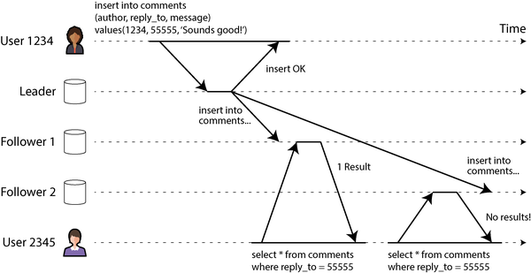
일관된 접두사 읽기
복제 지연으로 인해 발생할 수 있는 세 번째 예는 인과관계 위반에 관한 것입니다. Mr. Poons와 Mrs. Cake 사이의 짧은 대화를 상상해 보십시오:
Mr. Poons: 미래를 얼마나 볼 수 있나요, Mrs. Cake? Mrs. Cake: 보통 약 10초 정도요, Mr. Poons.
이 두 문장 사이에는 인과적 의존 관계가 있습니다. Mrs. Cake은 Mr. Poons의 질문을 듣고 대답한 것입니다.
이제 제3자가 팔로워를 통해 이 대화를 듣고 있다고 상상해 보십시오. Mrs. Cake의 말은 지연 시간이 적은 팔로워를 통해 전달되지만, Mr. Poons의 말은 지연 시간이 더 긴 팔로워를 통해 전달됩니다(그림 6-5 참조). 그러면 관찰자는 다음과 같은 말을 듣게 됩니다:
Mrs. Cake: 보통 약 10초 정도요, Mr. Poons. Mr. Poons: 미래를 얼마나 볼 수 있나요, Mrs. Cake?
관찰자에게는 Mrs. Cake이 Mr. Poons이 질문하기 전에 대답하는 것처럼 들릴 것입니다. 이러한 초능력은 인상적이지만 매우 혼란스럽습니다[27].
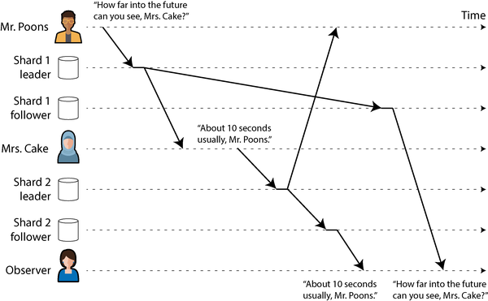
이러한 종류의 이상 현상을 방지하려면 다른 유형의 보장이 필요합니다. 일관된 접두사 읽기(consistent prefix reads)[22]는 쓰기 순서가 특정 순서대로 발생하면 해당 쓰기를 읽는 모든 사람이 동일한 순서로 보게 된다는 것을 보장합니다.
이는 샤딩(파티션)된 데이터베이스에서 특히 문제가 되며, 7장에서 다룰 것입니다. 데이터베이스가 항상 쓰기를 동일한 순서로 적용하면 읽기에서 항상 일관된 접두사를 볼 수 있으므로 이 이상 현상은 발생할 수 없습니다. 그러나 많은 분산 데이터베이스에서는 서로 다른 샤드가 독립적으로 작동하므로 쓰기의 전역 순서가 없습니다. 사용자가 데이터베이스를 읽을 때 데이터베이스의 일부는 이전 상태, 일부는 최신 상태를 볼 수 있습니다.
하나의 해결책은 인과적으로 관련된 쓰기가 동일한 샤드에 기록되도록 하는 것이지만, 일부 애플리케이션에서는 이를 효율적으로 수행할 수 없습니다. 일부 알고리즘은 인과적 의존성을 명시적으로 추적하며, 이는 “동시 쓰기 감지”에서 다시 다룰 것입니다.
복제 지연에 대한 해결책
궁극적 일관성 시스템을 사용할 때 복제 지연이 몇 분 또는 몇 시간까지 증가할 때 애플리케이션이 어떻게 동작하는지 생각해 볼 가치가 있습니다. 답이 “문제 없다”면 좋습니다. 그러나 결과가 사용자에게 나쁜 경험을 초래한다면 읽기-자신의-쓰기와 같은 더 강한 보장을 제공하도록 시스템을 설계하는 것이 중요합니다. 복제가 실제로는 비동기식임에도 불구하고 동기식인 것처럼 가장하는 것은 나중에 문제를 일으키는 지름길입니다.
앞서 논의한 바와 같이, 애플리케이션이 기본 데이터베이스보다 더 강한 보장을 제공하는 방법이 있습니다. 예를 들어 특정 종류의 읽기를 리더 또는 동기식으로 업데이트된 팔로워에서 수행하는 것입니다. 그러나 이러한 문제를 애플리케이션 코드에서 처리하는 것은 복잡하고 실수하기 쉽습니다.
애플리케이션 개발자를 위한 가장 단순한 프로그래밍 모델은 복제본에 대한 강한 일관성 보장(예: 10장에서 다룰 선형화 가능성)을 제공하고 ACID 트랜잭션(8장에서 다룰)을 지원하는 데이터베이스를 선택하는 것입니다. 이를 통해 복제에서 발생하는 문제를 대부분 무시하고 데이터베이스가 단일 노드인 것처럼 취급할 수 있습니다. 2010년대 초반, NoSQL 운동은 이러한 기능이 확장성을 제한하며 대규모 시스템은 궁극적 일관성을 받아들여야 한다는 관점을 장려했습니다.
그러나 그 이후로 여러 데이터베이스가 강한 일관성과 트랜잭션 지원을 제공하면서도 분산 데이터베이스의 내결함성, 고가용성 및 확장성 이점을 제공하기 시작했습니다. “관계형 모델 대 문서 모델”에서 언급했듯이 이 추세는 NoSQL과 대조되는 NewSQL로 알려져 있습니다(사실 SQL 자체보다는 확장 가능한 트랜잭션 관리에 대한 새로운 접근 방식에 관한 것입니다).
확장 가능하면서도 강한 일관성을 가진 분산 데이터베이스가 이제 사용 가능하지만, 일부 애플리케이션이 여전히 더 약한 일관성 보장을 제공하는 다양한 복제 형태를 사용하는 데에는 좋은 이유가 있습니다. 특히 네트워크 중단에 대한 더 강한 회복력을 제공하고 트랜잭션 시스템에 비해 오버헤드가 낮을 수 있습니다. 이러한 접근 방식은 이 장의 나머지 부분에서 살펴볼 것입니다.
다중 리더 복제
지금까지 이 장에서는 단일 리더를 사용하는 복제 아키텍처만 고려했습니다. 이는 일반적인 접근 방식이지만 흥미로운 대안이 있습니다.
단일 리더 복제의 주요 단점 중 하나는 모든 쓰기가 하나의 리더를 거쳐야 한다는 것입니다. 어떤 이유로든 리더에 연결할 수 없는 경우(예: 리더와의 네트워크 중단) 데이터베이스에 쓸 수 없습니다.
단일 리더 복제 모델의 자연스러운 확장은 두 개 이상의 노드가 쓰기를 수락하도록 허용하는 것입니다. 복제는 여전히 동일한 방식으로 발생합니다. 즉, 쓰기를 처리하는 각 노드는 해당 데이터 변경을 다른 모든 노드로 전달해야 합니다. 이를 다중 리더 구성(활성/활성 또는 양방향 복제라고도 함)이라고 합니다. 이 설정에서 각 리더는 동시에 다른 리더의 팔로워 역할을 합니다.
단일 리더 복제와 마찬가지로, 이를 동기식으로 할지 비동기식으로 할지 선택할 수 있습니다. 리더 A와 리더 B가 있다고 가정하고, A에 쓰기를 시도한다고 합시다. A에서 B로 쓰기가 동기식 복제되고 두 노드 간 네트워크가 중단되면 연결이 복구될 때까지 A에 쓸 수 없습니다. 동기식 다중 리더 복제는 B를 리더로 삼고 A가 쓰기 요청을 B로 전달하여 실행되는 단일 리더 복제와 매우 유사한 모델을 제공합니다.
따라서 우리는 동기식 다중 리더 복제에 대해 더 이상 다루지 않고 단순히 단일 리더 복제와 동등하게 취급하겠습니다. 이 섹션의 나머지 부분은 비동기식 다중 리더 복제에 초점을 맞춥니다. 비동기식 다중 리더 복제에서는 모든 리더가 다른 리더와의 연결이 중단된 상태에서도 쓰기를 처리할 수 있습니다.
지리적으로 분산된 운영
단일 영역 내에서 다중 리더 설정을 사용하는 경우는 거의 없으며, 이점은 추가 복잡성을 상쇄하기 어렵습니다. 그러나 일부 상황에서는 이 구성이 합리적입니다.
여러 지역에 복제본이 있는 데이터베이스를 보유하고 있다고 상상해 보십시오(전체 지역 장애를 견딜 수 있거나 사용자와의 근접성을 위해일 수 있음). 이를 지리적으로 분산된, 지오-디스트리뷰티드 또는 지오-리플리케이티드 설정이라고 합니다. 단일 리더 복제에서는 리더가 지역에 하나 있어야 하며 모든 쓰기는 해당 지역을 거쳐야 합니다.
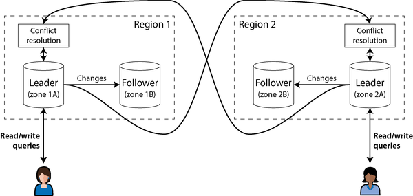
다중 리더 구성에서는 각 지역에 리더를 둘 수 있습니다. 그림 6-6은 이 아키텍처가 어떻게 보일 수 있는지 보여줍니다. 각 지역 내에서는 정규 리더-팔로워 복제가 사용됩니다(팔로워는 리더와 다른 가용성 영역에 있을 수 있음); 지역 간에는 각 지역의 리더가 변경 사항을 다른 지역의 리더에게 복제합니다. 다중 지역 배포에서 단일 리더 구성과 다중 리더 구성이 어떻게 비교되는지 비교해 보겠습니다:
성능
단일 리더 구성에서는 모든 쓰기가 리더가 있는 지역을 통해 인터넷으로 전송되어야 합니다. 이는 쓰기에 상당한 지연 시간을 추가할 수 있으며, 여러 지역을 두는 목적을 무의미하게 만들 수도 있습니다. 다중 리더 구성에서는 모든 쓰기를 로컬 지역에서 처리한 후 비동기적으로 다른 지역에 복제할 수 있습니다. 따라서 지역 간 네트워크 지연 시간이 사용자에게 숨겨지며, 인식된 성능이 더 나을 수 있습니다.
지역 장애 내성
단일 리더 구성에서는 리더가 있는 지역을 사용할 수 없게 되면 다른 지역의 팔로워를 새로운 리더로 승격시키기 위한 장애 조치가 가능합니다. 다중 리더 구성에서는 각 지역이 서로 독립적으로 계속 작동할 수 있으며, 오프라인 상태였던 지역이 다시 온라인 상태가 되면 복제가 따라잡힙니다.
네트워크 문제 내성
전용 연결이 있더라도 지역 간의 트래픽은 같은 지역 또는 단일 영역 내의 트래픽보다 덜 신뢰할 수 있습니다. 단일 리더 구성은 지역 간 연결 문제에 매우 민감합니다. 한 지역의 클라이언트가 다른 지역의 리더에 쓰기를 하려면 해당 링크를 통해 요청을 전송하고 응답을 받을 때까지 기다려야 하기 때문입니다.
비동기식 복제를 사용한 다중 리더 구성은 네트워크 문제를 더 잘 견딜 수 있습니다. 일시적인 네트워크 중단 중에 각 지역의 리더는 독립적으로 쓰기 처리를 계속할 수 있습니다.
일관성
단일 리더 시스템은 직렬izable 트랜잭션과 같은 강한 일관성 보장을 제공할 수 있으며, 이는 8장에서 다룰 것입니다. 다중 리더 시스템의 가장 큰 단점은 달성할 수 있는 일관성이 훨씬 더 약하다는 것입니다. 예를 들어, 은행 계좌가 마이너스가 되지 않거나 사용자 이름이 고유해야 한다고 보장할 수 없습니다. 서로 다른 리더가 개별적으로는 문제 없는 쓰기(계좌에서 일부 금액을 인출하거나 특정 사용자 이름 등록)를 처리할 수 있지만, 다른 리더의 다른 쓰기와 함께 취했을 때 제약을 위반할 가능성은 항상 존재합니다.
이는 단순히 분산 시스템의 근본적인 한계입니다[28]. 그러한 제약을 적용해야 한다면 단일 리더 시스템을 사용하는 것이 더 나은 선택입니다. 그러나 “충돌하는 쓰기 처리”에서 보게 될 것처럼, 다중 리더 시스템은 그러한 제약이 필요하지 않은 광범위한 애플리케이션에 유용한 일관성 특성을 여전히 달성할 수 있습니다.
다중 리더 복제는 단일 리더 복제보다 덜 일반적이지만, 여전히 MySQL, Oracle, SQL Server 및 YugabyteDB를 포함한 많은 데이터베이스에서 지원됩니다. 일부 경우에는 외부 애드온 기능으로 구현됩니다(예: Redis Enterprise, EDB Postgres Distributed 및 pglogical[29]).
다중 리더 복제는 많은 데이터베이스에 사후 적용된 기능이기 때문에 종종 미묘한 구성 함정과 다른 데이터베이스 기능과의 예기치 않은 상호 작용이 있습니다. 예를 들어, 자동 증가 키, 트리거 및 무결성 제약 조건이 문제가 될 수 있습니다. 이러한 이유로 다중 리더 복제는 종종 가능한 한 피해야 하는 위험한 영역으로 간주됩니다[30].
다중 리더 복제 토폴로지
복제 토폴로지(replication topology)는 쓰기가 한 노드에서 다른 노드로 전파되는 통신 경로를 설명합니다. 그림 6-6에 표시된 대로 두 리더가 있는 경우, 리더 1은 모든 쓰기를 리더 2로 보내야 하고, 그 반대도 마찬가지이므로 가능한 토폴로지는 하나뿐입니다. 두 개 이상의 리더가 있는 경우 다양한 토폴로지가 가능합니다. 일부 예시는 그림 6-7에 설명되어 있습니다.
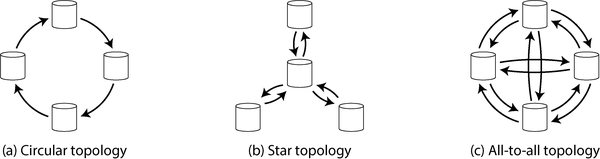
가장 일반적인 토폴로지는 모두 대 모두(all-to-all)로, 그림 6-7(c)에 표시된 대로 모든 리더가 모든 쓰기를 다른 모든 리더로 보냅니다. 그러나 더 제한적인 토폴로지도 사용됩니다. 예를 들어 원형 토폴로지(circular topology)는 그림 6-7(a)에 표시된 대로 각 노드가 한 노드로부터 쓰기를 받아 해당 쓰기(자신의 쓰기 포함)를 한 다른 노드로 전달하는 것입니다. 스타 토폴로지(star topology)는 그림 6-7(b)에 표시된 대로 인기가 있는데, 한 지정된 루트 노드가 쓰기를 다른 모든 노드로 전달합니다. 스타 토폴로지는 트리로 일반화할 수 있습니다.
스타 형태의 네트워크 토폴로지는 데이터 모델의 구조를 설명하는 스타 스키마(“별 스키마와 눈송이 스키마: 분석을 위한 스키마” 참조)와는 무관합니다.
원형 및 스타 토폴로지에서 쓰기가 모든 복제본에 도달하기 위해 여러 노드를 거쳐야 할 수 있습니다. 따라서 노드는 다른 노드로부터 받은 데이터 변경을 전달해야 합니다. 무한 복제 루프를 방지하기 위해 각 노드에 고유 식별자가 부여되며, 복제 로그의 각 쓰기에는 해당 쓰기가 통과한 모든 노드의 식별자가 태그됩니다[31]. 노드는 자신의 식별자가 태그된 데이터 변경을 받으면 해당 변경이 이미 처리되었음을 알므로 무시합니다.
다양한 토폴로지의 문제
원형 및 스타 토폴로지의 문제는 단일 노드가 실패하면 다른 노드 간의 복제 메시지 흐름이 중단되어 노드가 수정될 때까지 통신할 수 없게 될 수 있다는 것입니다. 토폴로지를 재구성하여 실패한 노드를 우회할 수 있지만, 대부분의 배포에서 그러한 재구성은 수동으로 수행해야 합니다. 더 촘촘하게 연결된 토폴로지(예: 모두 대 모두)는 메시지가 다양한 경로를 전달될 수 있어 단일 장애 지점을 피할 수 있으므로 내결함성이 더 좋습니다.
그러나 모두 대 모두 토폴로지도 문제가 있을 수 있습니다. 특히 일부 네트워크 링크가 다른 것보다 더 빠를 수 있습니다(예: 네트워크 혼잡으로 인해), 그 결과 일부 복제 메시지가 다른 메시지를 “추월”할 수 있으며, 그림 6-8에 설명되어 있습니다.
그림 6-8에서 클라이언트 A는 리더 1의 테이블에 행을 삽입하고, 클라이언트 B는 리더 3에서 해당 행을 업데이트합니다. 그러나 리더 2는 쓰기를 다른 순서로 받을 수 있습니다. 먼저 업데이트를 받아(리더 2의 관점에서는 데이터베이스에 없는 행에 대한 업데이트) 나중에 해당 삽입을 받을 수 있으며(삽입이 먼저 이루어져야 함) 이는 문제가 됩니다.
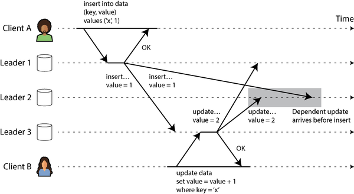
이는 “일관된 접두사 읽기”에서 본 인과 문제와 유사합니다. 업데이트는 이전 삽입에 의존하므로 모든 노드가 먼저 삽입을 처리한 다음 업데이트를 처리하도록 해야 합니다. 단순히 모든 쓰기에 타임스탬프를 붙이는 것으로는 충분하지 않습니다. 리더 2에서 이 이벤트를 올바르게 정렬하기 위해 시계를 충분히 신뢰할 수 없기 때문입니다(9장 참조).
이러한 이벤트를 올바르게 정렬하기 위해 버전 벡터(version vectors)라는 기술을 사용할 수 있으며, 이는 “동시 쓰기 감지”에서 다룰 것입니다. 그러나 많은 다중 리더 복제 시스템은 업데이트 정렬에 좋은 기술을 사용하지 않아 그림 6-8과 같은 문제에 취약할 수 있습니다. 다중 리더 복제를 사용하는 경우 이러한 문제를 인식하고, 설명서를 주의 깊게 읽고, 데이터베이스가 실제로 제공한다고 믿는 보장을 제공하는지 철저히 테스트할 가치가 있습니다.
동기 엔진과 로컬 퍼스트 소프트웨어
다중 리더 복제는 애플리케이션이 인터넷에서 연결이 끊긴 상태에서도 계속 작동해야 하는 경우에도 적합합니다. 예를 들어 휴대폰, 랩톱 및 기타 장치의 캘린더 앱을 생각해 보십시오. 인터넷 연결 여부에 관계없이 언제든지 회의를 확인(읽기 요청)하고 새로운 회의를 입력(쓰기 요청)할 수 있어야 합니다. 오프라인 상태에서 변경한 사항은 장치가 다음에 온라인 상태가 되면 서버 및 다른 장치와 동기화되어야 합니다.
이 경우 각 장치는 리더 역할을 하는 로컬 데이터베이스 복제본을 가지고(쓰기 요청을 수락) 모든 장치의 캘린더 복제본 간에 비동기식 다중 리더 복제(동기화)가 이루어집니다. 복제 지연은 인터넷 연결이 언제 가능하냐에 따라 몇 시간 또는 며칠일 수 있습니다.
건축 관점에서 이 설정은 지역 간 다중 리더 복제를 극단으로 가져간 것과 매우 유사합니다. 각 장치는 “지역”이며, 장치 간 네트워크 연결은 매우 신뢰할 수 없습니다.
실시간 협업, 오프라인 우선 및 로컬 퍼스트 앱
많은 최신 웹 앱은 실시간 협업 기능을 제공합니다. 예를 들어 Google Docs 및 Sheets(텍스트 문서 및 스프레드시트), Figma(그래픽), Linear(프로젝트 관리) 등입니다. 이러한 앱이如此 반응성이 좋은 이유는 사용자 입력이 서버와의 네트워크 왕복을 기다리지 않고 즉시 UI에 반영되며, 한 사용자의 편집이 다른 공동 작업자에게 낮은 지연 시간으로 표시되기 때문입니다[32, 33, 34].
이는 다시 다중 리더 아키텍처를 초래합니다. 공유 파일을 연 각 웹 브라우저 탭이 복제본이며, 사용자가 파일에 가하는 모든 업데이트는 동일한 파일을 연 다른 사용자의 장치에 비동기식으로 복제됩니다. 앱이 오프라인 상태에서 편집을 허용하지 않더라도, 여러 사용자가 서버의 응답을 기다리지 않고 편집할 수 있다는 사실만으로 이미 다중 리더입니다.
오프라인 편집과 실시간 협업 모두 유사한 복제 인프라를 필요로 합니다. 애플리케이션은 사용자가 파일에 가하는 모든 변경 사항을 캡처하여 온라인인 경우 협업자에게 즉시 전송하거나 오프라인인 경우 나중에 전송하기 위해 로컬에 저장해야 합니다. 또한 애플리케이션은 협업자로부터 변경 사항을 수신하여 사용자의 로컬 파일 사본에 병합하고 UI를 업데이트하여 최신 버전을 반영해야 합니다. 여러 사용자가 동시에 파일을 변경한 경우 변경 사항을 병합하는 충돌 해결 로직이 필요할 수 있습니다.
이 프로세스를 지원하는 소프트웨어 라이브러리를 동기화 엔진(sync engine)이라고 합니다. 이 아이디어는 오래전부터 존재했지만, 최근에 이 용어가 주목을 받게 되었습니다[35, 36, 37]. 오프라인 상태에서 파일을 계속 편집할 수 있는 애플리케이션(동기화 엔진을 사용하여 구현될 수 있음)을 오프라인 우선(offline-first)[38]이라고 합니다. 로컬 퍼스트 소프트웨어(local-first software)라는 용어는 오프라인 우선일 뿐만 아니라 소프트웨어를 만든 개발자가 모든 온라인 서비스를 종료하더라도 계속 작동하도록 설계된 협업 앱을 말합니다[39]. 이는 여러 서비스 제공자가 사용할 수 있는 오픈 표준 동기화 프로토콜을 사용하는 동기화 엔진을 통해 달성할 수 있습니다[40]. 예를 들어, Git은 GitHub, GitLab 또는 기타 저장소 호스팅 서비스와 동기화할 수 있는 로컬 퍼스트 협업 시스템입니다(실시간 협업을 지원하지는 않지만).
동기화 엔진의 장단점
오늘날 웹 앱을 구축하는 지배적인 방식은 클라이언트에 지속적인 상태를 거의 유지하지 않고 새 데이터가 표시되거나 업데이트되어야 할 때마다 서버에 요청을 하는 것입니다. 대조적으로 동기화 엔진을 사용하면 클라이언트에 지속적인 상태를 가지고 서버와의 통신을 백그라운드 프로세스로 이동시킵니다. 동기화 엔진 접근 방식에는 여러 장점이 있습니다:
- 데이터를 로컬에 보유하면 UI가 서비스 호출을 기다려 데이터를 가져오는 것보다 훨씬 더 빠르게 응답할 수 있습니다. 일부 앱은 다음 그래픽 시스템 프레임(60Hz 재생 빈도 디스플레이에서 16ms 내에 렌더링)에 응답하는 것을 목표로 합니다.
- 사용자가 오프라인 상태에서도 계속 작업할 수 있도록 허용하는 것은 특히 연결이 intermittent한 모바일 기기에서 가치가 있습니다. 동기화 엔진을 사용하면 앱에 별도의 오프라인 모드가 필요하지 않습니다. 오프라인 상태는 매우 큰 네트워크 지연 시간과 같습니다.
- 동기화 엔진은 애플리케이션 코드에서 명시적 서비스 호출을 수행하는 것보다 프런트엔드 앱의 프로그래밍 모델을 단순화합니다. 모든 서비스 호출에는 오류 처리가 필요합니다(“원격 프로시저 호출의 문제점”에서 논의함). 예를 들어 서버에서 데이터를 업데이트하는 요청이 실패하면 UI가 해당 오류를 어떻게든 반영해야 합니다. 동기화 엔진을 사용하면 앱이 로컬 데이터에 대한 읽기 및 쓰기를 수행할 수 있으며, 이러한 작업은 거의 실패하지 않으므로 보다 선언적인 프로그래밍 스타일이 가능합니다[41].
- 다른 사용자의 편집을 실시간으로 표시하려면 해당 편집에 대한 알림을 수신하고 UI를 그에 따라 효율적으로 업데이트해야 합니다. 동기화 엔진과 반응형 프로그래밍 모델을 결합하는 것이 이를 구현하는 좋은 방법입니다[42].
동기화 엔진은 사용자가 필요로 할 수 있는 모든 데이터를 미리 다운로드하여 클라이언트에 지속적으로 저장할 때 가장 잘 작동합니다. 이는 데이터가 필요할 때 오프라인 액세스에 사용 가능하다는 것을 의미하지만, 사용자가 매우 많은 양의 데이터에 접근하는 경우에는 동기화 엔진이 적합하지 않다는 것을 의미하기도 합니다. 예를 들어 사용자가 생성한 모든 파일을 다운로드하는 것은 아마도 괜찮을 것입니다(일반적으로 사용자는 그다지 많은 데이터를 생성하지 않음). 그러나 전자 상거래 웹사이트의 전체 카탈로그를 다운로드하는 것은 의미가 없을 수 있습니다.
동기화 엔진은 1980년대 Lotus Notes에 의해 선구되었습니다43. 캘린더와 같은 특정 앱에 대한 동기화는 오랫동안 존재해 왔습니다. 오늘날에는 수많은 범용 동기화 엔진이 있습니다. 일부는 독점 백엔드 서비스(예: Google Firestore, Realm 또는 Ditto)를 사용하고, 다른 것들은 오픈 소스 백엔드를 사용하여 로컬 퍼스트 소프트웨어를 구축하기에 적합합니다(예: PouchDB/CouchDB, Automerge 및 Yjs).
멀티플레이어 비디오 게임도 사용자의 로컬 동작에 즉시 응답하고 네트워크를 통해 비동기적으로 수신된 다른 플레이어의 동작과 조정해야 할 유사한 요구 사항이 있습니다. 게임 개발 용어에서 동기화 엔진에 해당하는 것을 넷코드(netcode)라고 합니다. 넷코드에 사용되는 기술은 게임의 특정 요구 사항에 매우 특화되어 있으며 다른 유형의 소프트웨어로 직접 이전되지 않으므로 이 책에서는 고려하지 않겠습니다.
충돌하는 쓰기 처리
다중 리더 복제(지리적으로 분산된 서버 측 데이터베이스 및 최종 사용자 장치의 로컬 퍼스트 동기화 엔진 모두)의 가장 큰 문제는 서로 다른 리더에서 발생한 동시 쓰기가 해결해야 할 충돌을 초래할 수 있다는 것입니다.
예를 들어, 두 사용자가 동시에 위키 페이지를 편집하고 있다고 가정해 보십시오(그림 6-9 참조). 사용자 1은 페이지 제목을 A에서 B로 변경하고, 사용자 2는 독립적으로 제목을 A에서 C로 변경합니다. 각 사용자의 변경 사항은 각자의 로컬 리더에 성공적으로 적용됩니다. 그러나 변경 사항이 비동기식으로 복제될 때 충돌이 감지됩니다. 이 문제는 단일 리더 데이터베이스에서는 발생하지 않습니다.
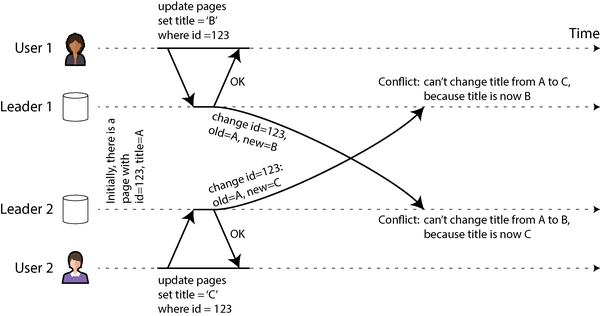
그림 6-9의 두 쓰기는 둘 다 원래 쓰기가 이루어질 때 서로를 “알고” 있지 않았기 때문에 동시 쓰기라고 합니다. 쓰기가 literal하게 동시에 일어났는지 여부는 중요하지 않습니다. 실제로 오프라인 상태에서 이루어진 경우 쓰기는 시간이 조금 떨어져 일어났을 수도 있습니다. 중요한 점은 한 쓰기가 다른 쓰기가 이미 효과를 나타낸 상태에서 이루어졌는지 여부입니다.
“동시 쓰기 감지”에서는 데이터베이스가 두 쓰기가 동시인지 어떻게 결정할 수 있는지 다룰 것입니다. 지금은 충돌을 감지할 수 있다고 가정하고 충돌을 해결하는 최선의 방법을 찾으려고 합니다.
충돌 회피
충돌을 처리하는 한 가지 전략은 처음부터 충돌이 발생하지 않도록 방지하는 것입니다. 예를 들어, 애플리케이션이 특정 레코드에 대한 모든 쓰기가 동일한 리더를 거치도록 보장할 수 있다면, 데이터베이스 전체가 다중 리더이더라도 충돌이 발생할 수 없습니다. 이 접근 방식은 오프라인으로 업데이트되는 동기화 엔진 클라이언트에서는 불가능하지만, 지리적으로 복제된 서버 시스템에서는 때때로 가능합니다[30].
예를 들어, 사용자가 자신의 데이터만 편집할 수 있는 애플리케이션이라면 특정 사용자의 요청을 항상 동일한 지역으로 라우팅하여 해당 지역의 리더를 읽기와 쓰기에 사용할 수 있습니다. 서로 다른 사용자는 서로 다른 “홈” 지역을 가질 수 있지만(사용자와의 지리적 근접성에 따라 선택될 수 있음), 한 사용자의 관점에서는 구성이 본질적으로 단일 리더와 같습니다.
그러나 때로는 레코드에 대한 지정된 리더를 변경하고 싶을 수 있습니다. 예를 들어, 한 지역을 사용할 수 없어 트래픽을 다른 지역으로 우회해야 하거나, 사용자가 다른 지역으로 이동하여 이제 더 가까운 다른 지역이 있을 수 있습니다. 지정된 리더를 변경하는 동안 위험이 발생합니다. 사용자가 지정된 리더 변경이 진행 중인 동안 쓰기를 수행하여 해결해야 할 충돌이 발생할 수 있습니다. 따라서 리더를 변경할 수 있도록 허용하면 충돌 회피가 깨집니다.
충돌 회피의 또 다른 예로, 새 레코드를 삽입하고 자동 증가 카운터를 기반으로 고유 ID를 생성하려는 경우를 상상해 보십시오. 두 리더가 있는 경우, 한 리더는 홀수만 생성하고 다른 리더는 짝수만 생성하도록 설정할 수 있습니다. 이렇게 하면 두 리더가 서로 다른 레코드에 동일한 ID를 동시에 할당하지 않을 수 있습니다. “ID 생성기 및 논리적 클럭”에서 다른 ID 할당 체계에 대해 논의할 것입니다.
마지막 쓰기 승리(동시 쓰기 버림)
충돌을 피할 수 없는 경우 충돌을 해결하는 가장 간단한 방법은 각 쓰기에 타임스탬프를 붙이고 가장 최근(가장 큰) 타임스탬프를 가진 값을 항상 사용하는 것입니다. 예를 들어 그림 6-9에서 사용자 1의 쓰기 타임스탬프가 사용자 2의 쓰기 타임스탬프보다 크다고 가정해 보겠습니다. 이 경우 두 리더 모두 새 페이지 제목은 B가 되어야 한다고 판단하고 C로 설정하는 쓰기를 버립니다. 쓰기 타임스탬프가 우연히 동일한 경우 값을 비교하여 승자를 선택할 수 있습니다(예: 문자열의 경우 알파벳 순서로 앞서는 것을 선택).
이 접근 방식은 마지막 쓰기 승리(last write wins, LWW)라고 불립니다. 가장 큰 타임스탬프를 가진 쓰기를 “마지막” 쓰기로 간주할 수 있기 때문입니다. 그러나 이 용어는 오해의 소지가 있습니다. 두 쓰기가 동시인 경우(그림 6-9 참조) 어느 것이 가장 최근인지는 정의되지 않으므로 동시 쓰기의 타임스탬프 순서는 본질적으로 무작위입니다.
따라서 LWW의 실제 의미는 다음과 같습니다. 동일한 레코드가 서로 다른 리더에서 동시에 기록될 때, 그 중 하나의 쓰기가 무작위로 승자가 선택되고 다른 쓰기는 각각의 리더에서 성공적으로 처리되었음에도 불구하고 조용히 버려집니다. 이는 결국 모든 복제본이 일관된 상태에 도달한다는 목표를 달성하지만, 데이터 손실이라는 대가를 치르게 됩니다.
충돌을 피할 수 있는 경우(예: 고유 키를 가진 레코드만 삽입하고 업데이트하지 않는 경우) LWW는 문제가 되지 않습니다. 그러나 기존 레코드를 업데이트하거나 서로 다른 리더가 동일한 키를 가진 레코드를 삽입할 수 있는 경우, 손실된 업데이트가 애플리케이션에 문제가 되는지 결정해야 합니다. 손실된 업데이트가 허용되지 않는 경우 다음에 설명하는 충돌 해결 접근 방식 중 하나를 사용해야 합니다.
LWW의 또 다른 문제는 실제 시간 시계(예: 유닉스 타임스탬프)를 쓰기의 타임스탬프로 사용하는 경우 시스템이 시계 동기화에 매우 민감해진다는 점입니다. 한 노드의 시계가 다른 노드보다 앞서 있고, 그 노드가 작성한 값을 덮어쓰려고 하면 귀하의 쓰기는 나중에 발생했음에도 불구하고 타임스탬프가 더 낮아 무시될 수 있습니다. 이 문제는 논리 클럭을 사용하여 해결할 수 있으며, “ID 생성기 및 논리적 클럭”에서 다룰 것입니다.
수동 충돌 해결
일부 쓰기를 무작위로 버리는 것이 바람직하지 않다면 다음 옵션은 충돌을 수동으로 해결하는 것입니다. Git 및 기타 버전 관리 시스템에서 수동 충돌 해결에 익숙할 것입니다. 두 브랜치의 커밋이 동일한 파일의 동일한 줄을 편집하고 해당 브랜치를 병합하려는 경우, 병합 충돌이 발생하여 병합이 완료되기 전에 해결해야 합니다.
데이터베이스에서는 충돌로 인해 인간이 해결할 때까지 전체 복제 프로세스를 중단하는 것은 비현실적입니다. 대신 데이터베이스는 일반적으로 주어진 레코드에 대해 동시 작성된 모든 값(예: 그림 6-9의 B와 C 모두)을 저장합니다. 이러한 값들은 때때로 형제 값(siblings)이라고 불립니다. 해당 레코드를 다음에 쿼리할 때 데이터베이스는 최신 값 하나만 반환하는 것이 아니라 모든 값들을 반환합니다. 그런 다음 애플리케이션 코드에서 자동으로(예: B와 C를 B/C로 연결) 또는 사용자에게 물어보는 등 원하는 방식으로 이러한 값들을 해결할 수 있습니다. 그런 다음 충돌을 해결하기 위해 새로운 값을 데이터베이스에 다시 기록합니다.
이 충돌 해결 방식은 CouchDB와 같은 일부 시스템에서 사용됩니다. 그러나 다음과 같은 문제도 있습니다:
- 데이터베이스의 API가 변경됩니다. 예를 들어, 이전에 위키 페이지의 제목이 단순한 문자열이었다면, 이제 일반적으로 하나의 요소를 포함하지만 충돌이 있을 때는 여러 요소를 포함할 수 있는 문자열 세트가 됩니다. 이는 애플리케이션 코드에서 데이터를 다루는 데 어색할 수 있습니다.
- 사용자에게 형제 병합을 요청하는 것은 애플리케이션 개발자(충돌 해결 UI를 구축해야 함)와 사용자(무엇을 요청받고 있는지, 왜 그런지 혼란스러울 수 있음) 모두에게 많은 작업입니다. 많은 경우 사용자를 귀찮게 하기보다 자동으로 병합하는 것이 더 나을 수 있습니다.
- 형제를 자동으로 병합하는 경우 주의 깊게 수행하지 않으면 예상치 못한 동작이 발생할 수 있습니다. 예를 들어, Amazon의 쇼핑 카트는 이전에 동시 업데이트를 허용했으며, 모든 형제에 나타나는 항목만 유지함으로써(즉, 장바구니의 집합 합집합) 병합되었습니다. 이는 사용자가 한 형제에서 항목을 제거했지만 다른 형제에는 여전히 해당 항목이 포함되어 있는 경우, 제거된 항목이 사용자의 장바구니에 예상치 못하게 다시 나타날 수 있음을 의미했습니다. 그림 6-10에서 장치 1이 장바구니에서
Book을 제거하고 동시에 장치 2가DVD를 제거하지만, 형제를 병합한 후 두 항목이 다시 나타납니다. - 여러 노드가 충돌을 관찰하고 동시에 해결하는 경우, 충돌 해결 프로세스 자체가 새로운 충돌을 도입할 수 있습니다. 그러한 해결이 일관되지 않을 수 있습니다. 예를 들어, 한 노드가 B와 C를 B/C로 병합하고 다른 노드가 C/B로 병합하는 경우(일관된 순서를 주의하지 않으면) B/C와 C/B 간의 충돌이 병합될 때 B/C/C/B 또는 이와 유사한 놀라운 결과가 나올 수 있습니다.
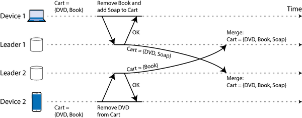
자동 충돌 해결
많은 애플리케이션에서 충돌을 처리하는 가장 좋은 방법은 동시 쓰기를 자동으로 병합하여 일관된 상태로 만드는 알고리즘을 사용하는 것입니다. 자동 충돌 해결은 모든 복제본이 동일한 상태에 수렴하도록 보장합니다. 즉, 동일한 쓰기 집합을 처리한 모든 복제본은 쓰기가 도착한 순서에 관계없이 동일한 상태를 가집니다. 궁극적 일관성과 수렴 보장을 결합하는 것을 강한 궁극적 일관성(strong eventual consistency)[46]이라고 합니다.
LWW는 충돌 해결 알고리즘의 간단한 예입니다. 다양한 유형의 데이터에 대해 더 정교한 병합 알고리즘이 개발되었으며, 모든 업데이트의 의도된 효과를 가능한 한 많이 보존하여 데이터 손실을 피하는 것이 목표입니다:
- 데이터가 텍스트(예: 위키 페이지의 제목 또는 본문)인 경우, 한 버전에서 다음 버전으로 삽입되거나 삭제된 문자를 감지할 수 있습니다. 병합된 결과는 모든 형제에서 이루어진 모든 삽입과 삭제를 보존합니다. 사용자가 동일한 위치에 텍스트를 동시에 삽입하는 경우, 모든 노드가 동일한 병합 결과를 얻도록 결정론적으로 정렬할 수 있습니다.
- 데이터가 항목 컬렉션(예: 할 일 목록처럼 순서가 있거나 쇼핑 카트처럼 순서가 없음)인 경우, 삽입과 삭제를 추적하여 텍스트와 유사하게 병합할 수 있습니다. 그림 6-10의 쇼핑 카트 문제를 피하려면 알고리즘이
Book과DVD가 삭제되었다는 사실을 추적하므로 병합 결과는Cart = {Soap}이 됩니다. - 데이터가 증가 또는 감소할 수 있는 정수(예: 소셜 미디어 게시물의 좋아요 수)를 나타내는 카운터인 경우, 병합 알고리즘은 각 형제에서 얼마나 많은 증가와 감소가 발생했는지 알려서 이들을 올바르게 합산하여 결과가 중복 계산하거나 업데이트를 누락하지 않도록 합니다.
- 데이터가 키-값 매핑인 경우, 동일한 키에 대한 업데이트는 해당 키 아래의 값에 다른 충돌 해결 알고리즘을 적용하여 병합할 수 있습니다. 서로 다른 키에 대한 업데이트는 독립적으로 처리할 수 있습니다.
충돌 해결로 가능할 수 있는 것에는 한계가 있습니다. 예를 들어, 목록에 최대 5개 항목만 포함되도록 강제하고 여러 사용자가 동시에 항목을 추가하여 총 5개 이상이 되는 경우, 일부 항목을 버리는 것 외에는 다른 옵션이 없습니다. 그럼에도 불구하고 자동 충돌 해결은 많은 유용한 앱을 구축하기에 충분합니다. 그리고 협업 오프라인 우선 또는 로컬 퍼스트 앱을 구축하는 것부터 시작한다면 충돌 해결은 피할 수 없으며, 이를 자동화하는 것이 종종 최선의 접근 방식입니다.
충돌 없는 복제 데이터 타입 및 연산 변환
자동 충돌 해결을 구현하는 데 일반적으로 사용되는 두 가지 알고리즘 계열은 충돌 없는 복제 데이터 타입(CRDT)[46]과 연산 변환(OT)[47]입니다. 이들은 서로 다른 설계 철학과 성능 특성을 가지고 있지만, 위에서 논의한 모든 유형의 데이터에 대해 자동 병합을 수행할 수 있습니다.
그림 6-11은 OT와 CRDT가 텍스트에 대한 동시 업데이트를 병합하는 방법을 보여주는 예입니다. 두 복제본이 모두 텍스트 ice로 시작된다고 가정해 보겠습니다. 한 복제본은 문자 n을 앞에 추가하여 nice를 만들고, 다른 복제본은 동시에 느낌표를 끝에 추가하여 ice!를 만듭니다.
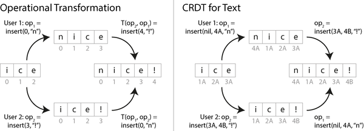
병합된 결과 nice!는 두 알고리즘 유형에 의해 다르게 달성됩니다:
OT
문자가 삽입 또는 삭제된 인덱스를 기록합니다: n은 인덱스 0에, !는 인덱스 3에 삽입됩니다. 그런 다음 복제본이 연산을 교환합니다. 인덱스 0에 n을 삽입하는 연산은 그대로 적용할 수 있지만, !를 인덱스 3에 삽입하는 연산을 nice 상태에 적용하면 nic!e가 되어 올바르지 않습니다. 따라서 이미 적용된 동시 연산을 고려하여 각 연산의 인덱스를 변환해야 합니다. 이 경우 !의 삽입은 n이 더 이른 인덱스에 삽입된 것을 고려하여 인덱스 4로 변환됩니다.
CRDT
대부분의 CRDT는 각 문자에 고유하고 불변인 ID를 부여하고 인덱스 대신 이를 사용하여 삽입/삭제 위치를 결정합니다. 예를 들어 그림 6-11에서 i에 ID 1A, c에 ID 2A 등을 할당합니다. 느낌표를 삽입할 때는 새 문자 ID(4B)와 그 뒤에 삽입하려는 기존 문자 ID(3A)를 포함하는 연산을 생성합니다. 문자열 맨 앞에 삽입하려면 앞 문자 ID로 nil을 제공합니다. 동일한 위치에 대한 동시 삽입은 문자 ID에 따라 정렬됩니다. 이를 통해 변환을 수행하지 않고도 복제본이 수렴됩니다.
리스트와 배열도 유사하게 지원될 수 있으며, 문자 대신 목록 요소를 사용하고 키-값 맵과 같은 다른 데이터 타입도 쉽게 추가할 수 있습니다. OT와 CRDT에는 성능 및 기능상의 트레이드오프가 있지만, 두 가지 장점을 하나의 알고리즘에 결합하는 것이 가능합니다[48].
OT는 주로 Google Docs[32]와 같은 텍스트의 실시간 공동 편집에 사용되는 반면, CRDT는 Redis Enterprise, Riak, Azure Cosmos DB[49]와 같은 분산 데이터베이스에서 사용됩니다. JSON 데이터에 대한 동기화 엔진은 CRDT(예: Automerge 또는 Yjs) 및 OT(예: ShareDB)로 모두 구현할 수 있습니다.
충돌 유형
어떤 종류의 충돌은 명백합니다. 그림 6-9의 예에서는 두 쓰기가 동일한 레코드의 동일한 필드를 동시에 서로 다른 값으로 수정했습니다. 이것이 충돌임에 거의 의문의 여지가 없습니다.
다른 종류의 충돌은 감지하기 더 미묘할 수 있습니다. 예를 들어, 회의실 예약 시스템을 고려해 보십시오. 이 시스템은 어떤 그룹이 어떤 시간에 어떤 회의실을 예약하는지 추적합니다. 이 시스템은 특정 필드를 업데이트하여 예약하는 대신 예약마다 데이터베이스에 새 레코드를 삽입합니다. 애플리케이션은 각 회의실이 한 번에 하나의 그룹만 예약되도록 보장해야 합니다(즉, 동일한 회의실에 겹치는 예약이 없어야 함). 이 경우, 두 예약이 동시에 동일한 회의실에 생성되면 충돌이 발생할 수 있습니다. 애플리케이션이 예약을 허용하기 전에 가용성을 확인하더라도, 두 예약이 새 레코드를 삽입하기 전에 방이 예약되지 않은 것으로 모두 확인하는 경우 충돌이 발생할 수 있습니다.
빠른 해결책은 없지만, 다음 장들에서 이 문제에 대한 좋은 이해를 향해 경로를 추적할 것입니다. 8장에서 더 많은 충돌 예를 볼 것이며, 13장에서는 복제된 시스템에서 충돌을 감지하고 해결하기 위한 확장 가능한 접근 방식을 논의할 것입니다.
리더 없는 복제
지금까지 논의한 복제 접근 방식(단일 리더 및 다중 리더 복제)은 클라이언트가 쓰기 요청을 한 노드(리더)에 보내고 데이터베이스 시스템이 해당 쓰기를 다른 복제본에 복사하는 아이디어를 기반으로 합니다. 리더는 쓰기가 처리되어야 하는 순서를 결정하며, 팔로워는 리더의 쓰기를 동일한 순서로 적용합니다.
일부 데이터 스토리지 시스템은 다른 접근 방식을 취합니다. 리더 개념을 버리고 어떤 복제본이라도 클라이언트로부터 직접 쓰기를 수락하도록 허용합니다. 가장 초기의 복제된 데이터 시스템 중 일부는 리더가 없었습니다[1, 50], 하지만 관계형 데이터베이스의 지배 시대 동안 이 아이디어는 대부분 잊혀졌습니다. 2007년 Amazon이 자체 Dynamo 시스템에 사용하면서 다시 한번 데이터베이스에 유행하는 아키텍처가 되었습니다[45]. Riak, Cassandra 및 ScyllaDB는 Dynamo에서 영감을 받은 리더 없는 복제 모델을 가진 오픈 소스 데이터 저장소이므로 이러한 유형의 데이터베이스는 Dynamo 스타일이라고도 합니다.
원래 Dynamo 시스템 아키텍처는 논문[45]에 설명되었지만 Amazon 외부에서는 출시되지 않았습니다. 비슷하게 이름 붙여진 DynamoDB는 Amazon의 더 최근 클라우드 데이터베이스로, 완전히 다른 아키텍처를 사용합니다. 즉, Multi-Paxos 합의 알고리즘[5, 51]에 기반한 단일 리더 복제를 사용합니다.
일부 리더 없는 구현에서는 클라이언트가 직접 여러 복제본에 쓰기를 보냅니다. 다른 경우에는 코디네이터 노드가 클라이언트를 대신하여 이를 수행합니다. 그러나 리더 데이터베이스와 달리 코디네이터는 쓰기의 특정 순서를 강제하지 않습니다. 우리는 보게 되겠지만, 이 설계 차이는 데이터베이스 사용 방식에 심오한 결과를 초래합니다.
노드가 다운되어 있을 때 데이터베이스에 쓰기
세 개의 복제본이 있는 데이터베이스가 있다고 상상해 보십시오. 현재 하나의 복제본을 사용할 수 없습니다. 아마도 시스템 업데이트를 위해 재부팅 중일 수 있습니다. 단일 리더 구성에서는 쓰기 처리를 계속하려면 장애 조치(“노드 장애 처리” 참조)를 수행해야 할 수 있습니다.
반면에 리더 없는 구성에서는 장애 조치라는 것이 없습니다. 모든 복제본이 동등하고 리더가 없기 때문입니다. 그림 6-12는 어떤 일이 발생하는지 보여줍니다.
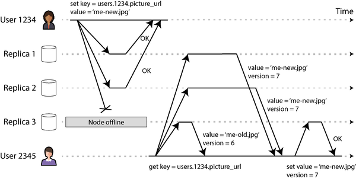
클라이언트(사용자 1234)는 세 복제본에 모두 병렬로 쓰기를 보내고, 사용 가능한 두 복제본은 쓰기를 수락하지만 사용할 수 없는 복제본은 놓칩니다. 세 개 중 두 개로부터 확인을 받으면 쓰기가 성공한 것으로 간주한다고 가정해 보겠습니다. 클라이언트는 단순히 한 복제본이 쓰기를 놓친 사실을 무시합니다.
이제 사용할 수 없었던 노드가 다시 온라인 상태가 되고 클라이언트가 해당 노드에서 읽기를 시작한다고 상상해 보십시오. 노드가 다운되어 있던 동안 발생한 쓰기는 해당 노드에 누락되어 있습니다. 따라서 해당 노드에서 읽으면 오래된 값이 응답으로 올 수 있습니다.
이 문제를 해결하기 위해 클라이언트가 데이터베이스를 읽을 때 요청을 하나의 복제본에만 보내지 않습니다. 읽기 요청도 여러 노드에 병렬로 보냅니다. 클라이언트는 서로 다른 노드로부터 서로 다른 응답을 받을 수 있습니다. 예를 들어, 한 노드에서는 최신 값을, 다른 노드에서는 오래된 값을 받을 수 있습니다.
클라이언트가 어떤 응답이 최신이고 어떤 응답이 오래된 것인지를 결정하려면, 작성된 모든 값에는 “마지막 쓰기 승리(동시 쓰기 버림)”에서 본 것과 마찬가지로 버전 번호 또는 타임스탬프가 태그되어 있어야 합니다. 클라이언트가 읽기 요청에 응답하여 여러 값을 받으면 가장 큰 타임스탬프가 있는 값을 사용합니다(단일 복제본만 반환하고 여러 복제본이 더 오래된 값을 반환한 경우에도). 자세한 내용은 “동시 쓰기 감지”를 참조하십시오.
놓친 쓰기 따라잡기
복제 시스템은 결국 모든 데이터가 모든 복제본에 복사되도록 보장해야 합니다. 사용할 수 없었던 노드가 다시 온라인 상태가 되면 놓친 쓰기를 어떻게 따라잡을까요? Dynamo 스타일 데이터 저장소에서는 여러 메커니즘이 사용됩니다.
읽기 복구
클라이언트가 여러 노드에서 병렬로 읽기를 수행할 때 오래된 응답을 감지할 수 있습니다. 예를 들어 그림 6-12에서 사용자 2345는 복제본 3에서 버전 6 값을, 복제본 1과 2에서 버전 7 값을 받습니다. 클라이언트는 복제본 3에 오래된 값이 있음을 인식하고 더 최신 값을 해당 복제본에 다시 씁니다. 이 접근 방식은 자주 읽히는 값에 잘 작동합니다.
힌트 핸드오프
한 복제본을 사용할 수 없는 경우, 다른 복제본이 이를 대신하여 힌트 형태로 쓰기를 저장할 수 있습니다. 사용할 수 없었던 복제본이 다시 돌아오면 힌트를 저장한 복제본이 힌트를 복구된 복제본에 전송한 후 힌트를 삭제합니다. 이 핸드오프 프로세스는 읽기 복구로 처리되지 않는 값(읽히지 않아서 처리되지 않는 값)에 대해서도 복제본을 최신 상태로 유지하는 데 도움이 됩니다.
안티 엔트로피
추가로, 백그라운드 프로세스가 주기적으로 복제본 간의 데이터 차이를 찾아 누락된 데이터를 한 복제본에서 다른 복제본으로 복사합니다. 리더 기반 복제의 복제 로그와 달리, 이 안티 엔트로피 프로세스는 쓰기를 특정 순서로 복사하지 않으며, 데이터가 복사되기 전에 상당한 지연이 발생할 수 있습니다.
읽기 및 쓰기에 쿼럼 사용
그림 6-12에서는 세 개 중 두 개의 복제본만 처리되어도 쓰기를 성공한 것으로 간주했습니다. 세 개 중 하나만 쓰기를 수락하면 어떻게 될까요? 이를 어디까지 밀어붙일 수 있을까요?
모든 성공적인 쓰기가 세 개 중 최소 두 개의 복제본에 존재함을 보장한다면, 최대 하나의 복제본만 오래된 상태일 수 있습니다. 따라서 최소 두 개의 복제본에서 읽으면 두 개 중 적어도 하나는 최신 상태임을 확신할 수 있습니다. 세 번째 복제본이 다운되었거나 응답이 느리더라도 읽기는 최신 값을 계속 반환할 수 있습니다.
보다 일반적으로, n개의 복제본이 있고, 모든 성공적인 쓰기가 w개의 노드에서 확인되어야 성공으로 간주되며, 각 읽기에 대해 최소 r개의 노드에 쿼리해야 합니다(예: n = 3, w = 2, r = 2). w + r > n인 한, 읽는 노드 중 적어도 하나는 최신 상태이므로 읽기 시 최신 값을 얻을 것으로 예상됩니다. 이러한 r과 w 값을 따르는 읽기와 쓰기를 쿼럼 읽기 및 쓰기라고 부릅니다[50]. r과 w를 읽기 또는 쓰기가 유효하려면 필요한 최소 투표 수로 생각할 수 있습니다.
Dynamo 스타일 데이터베이스에서는 n, w, r 매개변수가 일반적으로 구성 가능합니다. 일반적인 선택은 n을 홀수(일반적으로 3 또는 5)로 만들고 w = r = (n + 1) / 2(올림)로 설정하는 것입니다. 그러나 원하는 대로 숫자를 변경할 수 있습니다. 예를 들어, 쓰기가 적고 읽기가 많은 워크로드는 w = n 및 r = 1을 설정하여 이익을 얻을 수 있습니다. 이렇게 하면 읽기는 더 빨라지지만, 단일 노드 장애로 모든 데이터베이스 쓰기가 실패한다는 단점이 있습니다.
클러스터에 n개 이상의 노드가 있을 수 있지만, 각 값은 n개의 노드에만 저장됩니다. 이를 통해 데이터셋을 샤드하여 하나의 노드에 들어갈 수 있는 것보다 더 큰 데이터셋을 지원할 수 있습니다. 7장에서 샤딩으로 다시 돌아올 것입니다.
쿼럼 조건 w + r > n은 사용 가능한 노드에 대해 다음과 같이 시스템을 허용합니다:
- w < n이면 노드를 사용할 수 없어도 쓰기를 처리할 수 있습니다.
- r < n이면 노드를 사용할 수 없어도 읽기를 처리할 수 있습니다.
- n = 3, w = 2, r = 2인 경우 그림 6-12와 같이 하나의 사용 불가능한 노드를 허용할 수 있습니다.
- n = 5, w = 3, r = 3인 경우 두 개의 사용 불가능한 노드를 허용할 수 있습니다. 이 경우는 그림 6-13에 설명되어 있습니다.
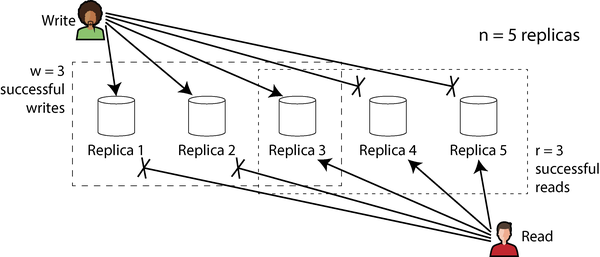
일반적으로 읽기와 쓰기는 항상 n개의 모든 복제본에 병렬로 전송됩니다. 매개변수 w와 r은 읽기 또는 쓰기가 성공으로 간주되기 위해 필요한 응답 수(즉, n개 노드 중 몇 개가 성공을 보고해야 하는지)를 결정합니다.
필요한 w 또는 r 개의 노드를 사용할 수 없으면 쓰기 또는 읽기가 오류를 반환합니다. 노드를 사용할 수 없는 이유는 많을 수 있습니다(노드가 다운됨(크래시, 전원 차단), 작업 실행 중 오류 발생(디스크 가득 참으로 인해 쓸 수 없음), 클라이언트와 노드 간의 네트워크 중단 등). 우리는 노드가 성공적인 응답을 반환했는지 여부만 신경 쓸 뿐, 다양한 종류의 구분을 할 필요가 없습니다.
쿼럼 일관성의 한계 이해
n개의 복제본이 있고 w + r > n이 되도록 w와 r을 선택하면 일반적으로 모든 읽기가 키에 대해 가장 최근에 쓰인 값을 반환할 것으로 기대할 수 있습니다. 그 이유는 읽기 위해 선택한 노드 집합과 쓰기 위해 선택한 노드 집합이 반드시 중첩되어야 하기 때문입니다. 즉, 읽는 노드 중 적어도 하나는 최신 값을 가진 노드여야 합니다(그림 6-13 참조).
종종 r과 w는 다수(노드의 절반 이상)로 선택되는데, 그 이유는 w + r > n을 보장하면서 노드 장애의 최대 n/2(내림)까지 허용할 수 있기 때문입니다. 그러나 쿼럼이 반드시 다수일 필요는 없습니다. 읽기 및 쓰기 작업에 사용된 노드 집합이少なくとも 하나의 노드에서 중첩되는 것만 중요합니다. 다른 쿼럼 할당이 가능하므로 분산 알고리즘 설계에 어느 정도 유연성을 제공합니다[52].
또한 w와 r을 더 작은 숫자로 설정하여 w + r ≤ n(즉, 쿼럼 조건이 만족되지 않음)으로 설정할 수도 있습니다. 이 경우 읽기와 쓰기는 여전히 n개의 모든 노드에 전송되지만, 작업이 성공하기 위해 필요한 성공 응답 수가 더 적습니다.
w와 r이 더 작으면 오래된 값을 읽을 가능성이 더 높습니다. 읽기가 최신 값을 가진 노드를 포함하지 않을 가능성이 더 크기 때문입니다. 장점으로는 더 낮은 지연 시간을 제공할 수 있으며, 이는 특히 동기식(블로킹) 복제에 유익합니다. 이 구성은 또한 더 높은 가용성을 제공합니다. 네트워크 중단으로 인해 많은 복제본에 연결할 수 없는 경우, 읽기와 쓰기를 계속 처리할 가능성이 더 높습니다. 도달 가능한 복제본의 수가 w 또는 r 아래로 떨어질 때에만 데이터베이스는 각각 쓰기 또는 읽기에 대해 사용할 수 없게 됩니다.
그러나 w + r > n인 경우에도 특정 엣지 케이스에서 일관성 속성은 혼란스러울 수 있습니다. 일부 시나리오는 다음과 같습니다:
- 최신 값을 가진 노드가 실패하고 그 데이터가 오래된 값을 가진 복제본에서 복원되는 경우, 새로운 값을 저장하는 복제본의 수가 w 아래로 떨어져 쿼럼 조건이 깨질 수 있습니다.
- 재균형 진행 중(일부 데이터가 한 노드에서 다른 노드로 이동되는 중, 7장 참조)에는 노드가 특정 값에 대한 n개의 복제본을 보유해야 하는 노드에 대해 일관성 없는 관점을 가질 수 있습니다. 이로 인해 읽기 및 쓰기 쿼럼이 더 이상 중첩되지 않을 수 있습니다.
- 읽기가 쓰기 작업과 동시에 발생하는 경우, 읽기가 동시 쓰기 값을 볼 수도 있고 보지 못할 수도 있습니다. 특히 한 읽기가 새 값을 보고 이후 읽기가 오래된 값을 볼 수 있으며, 이는 “선형화 가능 시스템 구현”에서 다룰 것입니다.
- 쓰기가 일부 복제본에서는 성공했지만 다른 복제본에서는 실패한 경우(예: 일부 노드의 디스크가 가득 찼음), 전체적으로 w개 미만의 복제본에서 성공하면 쓰기는 성공한 복제본에서 롤백되지 않습니다. 즉, 쓰기가 실패했다고 보고된 경우, 이후 읽기가 해당 쓰기의 값을 반환할 수도 있고 그렇지 않을 수도 있습니다[53].
- 데이터베이스가 실시간 시계의 타임스탬프를 사용하여 어느 쓰기가 더 최신인지 결정하는 경우(예: Cassandra 및 ScyllaDB), 다른 노드가 더 빠른 시계를 가지고 동일한 키에 쓴 경우 쓰기가 조용히 버려질 수 있습니다. 이는 이전에 “마지막 쓰기 승리(동시 쓰기 버림)”에서 본 문제입니다. 이에 대해서는 “동기화된 시계에 의존”에서 더 자세히 다룰 것입니다.
- 두 쓰기가 동시에 발생하면, 하나는 한 복제본에서 먼저 처리되고 다른 하나는 다른 복제본에서 먼저 처리될 수 있습니다. 이는 충돌을 초래하며, 이는 앞서 다중 리더 복제에서 본 것과 유사합니다(“충돌하는 쓰기 처리” 참조). “동시 쓰기 감지”에서 다시 다룰 것입니다.
따라서 쿼럼은 읽기가 가장 최근에 쓰여진 값을 반환하는 것으로 보이지만, 실제로는 그리 간단하지 않습니다. Dynamo 스타일 데이터베이스는 일반적으로 궁극적 일관성을 허용할 수 있는 사용 사례에 최적화되어 있습니다. 매개변수 w와 r은 오래된 값이 읽힐 확률을 조정할 수 있게 하지만, 절대적인 보장으로 간주해서는 안 됩니다[54].
오래됨 모니터링
운영 관점에서 데이터베이스가 최신 결과를 반환하는지 모니터링하는 것이 중요합니다. 애플리케이션이 오래된 읽기를 허용할 수 있다고 해도, 복제의 상태를 인지해야 합니다. 복제가 현저히 뒤처지면 경보를 울려 원인을 조사할 수 있어야 합니다(예: 네트워크 문제 또는 과부하된 노드).
리더 기반 복제에서는 데이터베이스가 일반적으로 복제 지연 메트릭을 노출하며, 이를 모니터링 시스템에 공급할 수 있습니다. 이는 쓰기가 리더와 팔로워에 동일한 순서로 적용되고 각 노드가 로그에서 적용한 쓰기 수(현재 위치)를 가지기 때문입니다. 팔로워의 현재 위치에서 리더의 현재 위치를 빼면 복제 지연 양을 측정할 수 있습니다.
그러나 리더 없는 복제 시스템에서는 쓰기가 적용되는 고정된 순서가 없으므로 모니터링이 더 어렵습니다. 복제본이 핸드오프를 위해 저장하는 힌트의 수는 시스템 상태의 한 가지 척도가 될 수 있지만, 유용하게 해석하기는 어렵습니다[55]. 궁극적 일관성은 의도적으로 모호한 보장이지만, 운영 가능성을 위해 “궁극적”을 정량화할 수 있어야 합니다.
단일 리더 대 리더 없는 복제 성능
단일 리더 기반 복제 시스템은 리더 없는 시스템에서 달성하기 어렵거나 불가능한 강한 일관성 보장을 제공할 수 있습니다. 그러나 “복제 지연의 문제”에서 보았듯이, 리더 기반 복제 시스템에서 읽기는 비동기식으로 업데이트된 팔로워에서 수행하면 오래된 값을 반환할 수 있습니다.
리더에서 읽으면 최신 응답을 보장되지만 성능 문제가 있습니다:
- 읽기 처리량은 리더의 요청 처리 능력에 의해 제한됩니다(읽기 확장은 비동기식으로 업데이트된 복제본 간에 읽기를 분산시키는 반면, 이 복제본은 오래된 값을 반환할 수 있음).
- 리더가 실패하면 장애가 감지되고 장애 조치가 완료될 때까지 요청 처리를 기다려야 합니다. 장애 조치 프로세스가 매우 빠르더라도 사용자는 일시적으로 응답 시간이 증가하여 인지하며, 장애 조치에 오랜 시간이 걸리면 그 기간 동안 시스템을 사용할 수 없습니다.
- 시스템은 리더의 성능 문제에 매우 민감합니다. 리더가 느리게 응답하는 경우(예: 과부하 또는 리소스 경합으로 인해), 증가된 응답 시간이 사용자에게 즉시 영향을 미칩니다.
리더 없는 아키텍처의 큰 장점은 이러한 문제에 대해 더 강건하다는 것입니다. 장애 조치가 없고 요청이 여러 복제본에 병렬로 전송되므로, 하나의 복제본이 느려지거나 사용할 수 없어도 응답 시간에 거의 영향을 미치지 않습니다. 클라이언트는 단순히 더 빠르게 응답하는 다른 복제본의 응답을 사용합니다. 가장 빠른 응답을 사용하는 것을 요청 헤징(request hedging)이라고 하며, 테일 지연 시간을 상당히 줄일 수 있습니다[56].
핵심적으로 리더 없는 시스템의 복원력은 정상 상황과 장애 상황을 구별하지 않는다는 사실에서 비롯됩니다. 이는 노드가 완전히 다운되지는 않았지만 요청 처리가 비정상적으로 느린 저하된 상태인 그레이 실패(gray failure)를 처리할 때 특히 유용하며, 단순히 과부하된 경우에도 유용합니다(예: 오랫동안 오프라인 상태였던 노드가 복구될 때 힌트 핸드오프로 인해 추가 부하가 발생할 수 있음). 리더 기반 시스템은 장애 조치가 warranted한지 결정해야 하며, 이는 그 자체로 추가적인 혼란을 초래할 수 있습니다. 그러나 리더 없는 시스템에서는 그러한 질문이そもそも 제기되지 않습니다.
그러나 리더 없는 시스템도 성능 문제가 있을 수 있습니다:
- 시스템에 장애 조치가 필요하지 않더라도, 하나의 복제본이 다른 복제본이 사용할 수 없음을 감지하여 사용할 수 없는 복제본이 놓친 쓰기에 대한 힌트를 저장해야 합니다. 사용할 수 없는 복제본이 다시 돌아오면 핸드오프 프로세스가 힌트를 전송해야 합니다. 이는 시스템이 이미 부담이 되는 시점에 복제본에 추가 부하를 발생시킵니다[55].
- 복제본이 많을수록 쿼럼 크기가 커지고 요청이 완료되기 전에 기다려야 하는 응답이 더 많아집니다. 가장 빠른 r 또는 w 복제본만 기다리더라도, 요청을 병렬로 하더라도 r이나 w가 클수록 느린 복제본에 걸릴 가능성이 더 높아져 전체 응답 시간이 증가합니다(“응답 시간 메트릭의 사용” 참조). 실제로는 쿼럼이 7개 중 4개 또는 9개 중 5개를 넘는 경우는 거의 없습니다.
- 대규모 네트워크 중단으로 클라이언트와 많은 수의 복제본 간의 연결이 끊기면 쿼럼을 형성할 수 없게 됩니다. 일부 리더 없는 데이터베이스는 연결 가능한 모든 복제본이 키의 일반적인 복제본이 아니더라도 쓰기를 수락할 수 있는 구성 옵션을 제공합니다(리액과 Dynamo에서는 슬로피 쿼럼(sloppy quorum)[45]이라고 함, Cassandra 및 ScyllaDB에서는 일관성 수준 ANY). 이후 읽기가 작성된 값을 볼 것이라는 보장은 없지만, 애플리케이션에 따라 쓰기가 실패하는 것보다 나을 수도 있습니다.
다중 리더 복제는 읽기와 쓰기가 클라이언트와 동일 지역에 있을 수 있는 단일 리더와만 통신하면 되므로 네트워크 중단에 대한 복원력이 더욱 높을 수 있습니다. 그러나 한 리더에서의 쓰기는 비동기식으로 다른 리더에 전파되므로, 읽기는 임의로 오래된 상태일 수 있습니다. 쿼럼 읽기 및 쓰기는 좋은 내결함성과 최신 데이터를 읽을 확률이 높은 것 사이의 타협을 제공합니다.
다중 지역 운영
지역 간 복제는 이전에 다중 리더 복제의 사용 사례로 논의했습니다(“지리적으로 분산된 운영” 참조). 리더 없는 복제는 네트워크 중단, 지연 시간 급증 및 충돌하는 동시 쓰기를 견딜 수 있도록 설계되었기 때문에 다중 지역 운영에도 적합합니다.
Cassandra 및 ScyllaDB에서 클라이언트가 다중 지역 쓰기를 수행하려면 먼저 로컬 지역의 노드를 코디네이터 노드로 선택하고 해당 노드에 쓰기를 보냅니다. 코디네이터 노드는 쓰기를 자체 지역의 모든 복제본과 다른 지역의 하나의 복제본에 전달하며, 해당 복제본은 다시 해당 지역의 다른 복제본에 전달합니다. 이 최적화는 지역 간 요청을 여러 번 하지 않도록 합니다.
다양한 일관성 수준 중에서 선택할 수 있으며, 이는 요청이 성공하기 위해 필요한 응답 수를 결정합니다. 예를 들어, 모든 지역의 모든 복제본에 대한 쿼럼, 각 지역에 대한 별도의 쿼럼, 또는 클라이언트의 로컬 지역에 대한 쿼럼만 요청할 수 있습니다. 로컬 쿼럼은 다른 지역으로의 느린 요청을 기다릴 필요가 없지만, 오래된 결과를 반환할 가능성이 더 높습니다.
Riak은 클라이언트와 데이터베이스 노드 간의 모든 통신을 단일 지역에 유지하므로, n은 한 지역 내의 복제본 수를 설명합니다. 지역 간의 데이터베이스 클러스터 간 복제는 비동기적으로 백그라운드에서 발생하며, 이는 다중 리더 복제와 유사한 스타일입니다.
동시 쓰기 감지
다중 리더 복제와 마찬가지로, 리더 없는 데이터베이스도 동일한 키에 대한 동시 쓰기를 허용하여 해결해야 할 충돌이 발생합니다. 이러한 충돌은 쓰기 발생 시 감지될 수도 있고, 읽기 복구, 힌트 핸드오프 또는 안티 엔트로피 중에 나중에 감지될 수도 있습니다.
문제는 네트워크 지연 시간의 변동성과 부분적인 실패로 인해 이벤트가 서로 다른 노드에서 다른 순서로 도착할 수 있다는 것입니다. 예를 들어, 그림 6-14는 두 클라이언트 A와 B가 3노드 데이터 저장소에서 키 X에 동시에 쓰는 경우를 보여줍니다:
- 노드 1은 A의 쓰기를 수신하지만 일시적인 중단으로 인해 B의 쓰기를 수신하지 않습니다.
- 노드 2는 먼저 A의 쓰기를 수신한 다음 B의 쓰기를 수신합니다.
- 노드 3는 먼저 B의 쓰기를 수신한 다음 A의 쓰기를 수신합니다.
각 노드가 클라이언트로부터 쓰기 요청을 받을 때마다 키의 값을 단순히 덮어쓴다면, 노드 간에 영구적으로 불일치가 발생하여 그림 6-14의 마지막 get 요청에 표시된 대로 노드 2는 X의 최종 값이 B라고 생각하는 반면 다른 노드는 값이 A라고 생각합니다.
결국 수렴되려면 복제본은 동일한 값으로 수렴해야 합니다. 이를 위해 이전 “충돌하는 쓰기 처리”에서 논의된 충돌 해결 메커니즘(예: Cassandra 및 ScyllaDB에서 사용하는 LWW, 수동 해결, Riak에서 사용하는 CRDT) 중 하나를 사용할 수 있습니다.
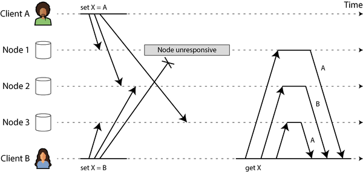
LWW는 구현하기 쉽습니다. 각 쓰기에 타임스탬프가 태그되며, 더 높은 타임스탬프를 가진 값이 더 낮은 타임스탬프를 가진 값을 항상 덮어씁니다. 그러나 타임스탬프는 두 값이 실제로 충돌하는지(즉, 동시에 기록되었는지) 또는 그렇지 않은지(서로 기록되었는지) 알려주지 않습니다. 충돌을 명시적으로 해결하려면 시스템이 동시 쓰기를 감지하는 데 더 주의를 기울여야 합니다.
happens-before 관계와 동시성
두 작업이 동시인지 어떻게 결정할까요? 직관을 개발하기 위해 몇 가지 예를 살펴보겠습니다:
- 그림 6-8에서 두 쓰기는 동시가 아닙니다. A의 삽입이 B의 증가보다 먼저 발생하기 때문입니다(즉, B가 증가시킨 값은 A가 삽입한 값입니다). 즉, B의 연산은 A의 연산에 의존하므로 B의 연산이 더 나중에 발생했습니다. 우리는 또한 B가 A에 인과적으로 의존한다고 말합니다.
- 반면에 그림 6-14의 두 쓰기는 동시입니다. 각 클라이언트가 연산을 시작할 때, 다른 클라이언트도 동일한 키에 대해 연산을 수행하고 있음을 알지 못하기 때문입니다. 따라서 연산 간에 인과적 의존 관계가 없습니다.
작업 A가 다른 작업 B보다 먼저 발생한다는 것은 B가 A를 알고 있거나, A에 의존하거나, 어떤 방식으로든 A를 기반으로 구축한다는 의미입니다. 한 작업이 다른 작업보다 먼저 발생하는지 여부는 동시성을 정의하는 핵심입니다. 실제로 두 작업이 동시인지 여부는 어느 작업도 먼저 발생하지 않는다고 정의할 수 있습니다[58].
따라서 작업 A와 B가 있을 때는 세 가지 가능성 중 하나가 있습니다. 즉, A가 B보다 먼저 발생했거나, B가 A보다 먼저 발생했거나, A와 B가 동시입니다. 우리에게 필요한 것은 두 작업이 동시인지 알려주는 알고리즘입니다. 한 작업이 다른 작업보다 먼저 발생했다면 이후 작업이 이전 작업을 덮어써야 하지만, 작업이 동시인 경우 해결해야 할 충돌이 있습니다.
동시성, 시간 및 상대성
두 작업이 정확히 “동시에” 발생하기 때문에 동시라고 불리는 것처럼 보일 수 있지만, 실제로 중요하지 않습니다. 분산 시스템에서 시계 문제 때문에 두 일이 정확히 동시에 일어났는지 알기가 실제로 매우 어렵습니다. 이 문제는 9장에서 더 자세히 논의할 것입니다.
동시성을 정의할 때 정확한 시간은 중요하지 않습니다. 두 작업은 물리적 시간에 관계없이 서로를 인식하지 못하는 경우 단순히 동시라고 합니다. 사람들은 때때로 이 원리를 물리학의 특수 상대성 이론과 연결짓곤 합니다[58]. 특수 상대성 이론은 정보가 빛의 속도보다 빠르게 이동할 수 없다는 아이디어를 도입했습니다. 결과적으로, 두 사건이 일정한 거리에 떨어져 있을 때, 사건 사이의 시간이 빛이 두 사건 사이의 거리를 이동하는 데 걸리는 시간보다 짧다면 두 사건은 서로 영향을 미칠 수 없습니다.
컴퓨터 시스템에서는 두 작업이 이론적으로 빛의 속도가 한 작업이 다른 작업에 영향을 미칠 수 있도록 허용하는 시간 간격을 두고 발생하더라도 동시일 수 있습니다. 예를 들어, 네트워크가 느리거나 중단된 경우, 두 작업은 시간적으로 차이가 나더라도 네트워크 문제로 인해 한 작업이 다른 작업을 알 수 없었기 때문에 동시일 수 있습니다.
happens-before 관계 캡처
두 작업이 동시인지 또는 하나가 다른 것보다 먼저 발생하는지 결정하는 알고리즘을 살펴보겠습니다. 단순화를 위해 하나의 복제본만 있는 데이터베이스부터 시작하겠습니다. 단일 복제본에서 이를 구현하는 방법을 알아내면, 이 접근 방식을 여러 복제본이 있는 리더 없는 데이터베이스로 일반화할 수 있습니다. 알고리즘은 다음과 같이 작동합니다:
- 서버는 모든 키에 대한 버전 번호를 유지하고, 키가 기록될 때마다 버전 번호를 증가시키며, 새로운 버전 번호를 기록된 값과 함께 저장합니다.
- 클라이언트가 키를 읽을 때, 서버는 덮어쓰지 않은 모든 값(형제 값)과 최신 버전 번호를 반환합니다. 클라이언트는 읽기 전에 키를 읽어야 합니다.
- 클라이언트가 키를 기록할 때, 이전 읽기에서 받은 버전 번호를 포함해야 하며, 이전 읽기에서 받은 모든 값을 병합해야 합니다(예: 사용자 입력을 가진 CRDT 사용). 쓰기 요청에 대한 응답은 또한 모든 형제 값을 반환하므로, 여러 쓰기를 연달아 수행할 수 있습니다(쇼핑 카트 예에서 논의한 바와 같습니다).
- 서버가 특정 버전 번호와 함께 쓰기를 수신하면, 해당 버전 번호 이하의 모든 값을 덮어쓸 수 있습니다(이미 새로운 값에 병합되었음을 알기 때문이므로), 하지만 더 높은 버전 번호를 가진 모든 값은 유지해야 합니다(이러한 값은 들어오는 쓰기와 동시이므로).
서버가 버전 번호를 살펴봄으로써 두 작업이 동시인지 또는 하나가 다른 것보다 먼저 발생했는지 결정할 수 있다는 점에 유의하십시오. 서버는 값 자체를 해석할 필요가 없으므로 값은 모든 데이터 구조일 수 있습니다.
쓰기가 이전 읽기에서 받은 버전 번호를 포함하는 경우, 이는 쓰기가 기반으로 하는 이전 상태를 알려줍니다. 버전 번호를 포함하지 않고 쓰기를 수행하면 모든 다른 쓰기와 동시이므로 아무것도 덮어쓰지 않고 후속 읽기에서 형제 값 중 하나로 반환됩니다. 그림 6-15는 이 알고리즘의 작동을 보여줍니다.
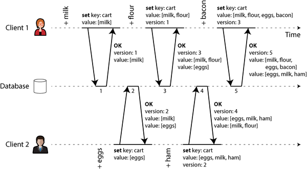
이 예에서 두 클라이언트가 동일한 쇼핑 카트에 항목을 동시에 추가하고 있습니다(이 예가 너무 사소하게 느껴진다면, 두 명의 항공 교통 관제사가 추적 중인 부문에 항공기를 동시에 추가한다고 상상해 보십시오). 초기에는 장바구니가 비어 있습니다. 두 클라이언트 간에 데이터베이스에 총 다섯 번의 쓰기가 발생합니다:
- 클라이언트 1이 장바구니에
milk를 추가합니다. 해당 키에 대한 첫 번째 쓰기이므로 서버는 이를 성공적으로 저장하고 버전 1을 할당합니다. 서버는 버전 번호와 함께 값을 클라이언트에게 다시 반환합니다. - 클라이언트 2가 클라이언트 1이 동시적으로
milk를 추가했음을 알지 못한 채 장바구니에eggs를 추가합니다(클라이언트 2는 자신의eggs만 장바구니에 있다고 생각함). 서버는 이 쓰기에 버전 2를 할당하고eggs와milk를 두 개의 별도 값(형제)으로 저장합니다. 그런 다음 서버는 버전 번호 2와 함께 두 값을 클라이언트에게 반환합니다. - 클라이언트 1이 클라이언트 2의 쓰기를 알지 못한 채 장바구니에
flour를 추가하려 하며, 이 경우 장바구니의 내용이[milk, flour]가 될 것이라고 가정합니다. 클라이언트 1은 이전에 서버로부터 받은 버전 번호(1)와 함께 이 값을 서버로 전송합니다. 서버는 버전 번호를 통해\[milk, flour]쓰기가 이전 값\[milk]를 대체하지만\[eggs]와는 동시임을 알 수 있습니다. 따라서 서버는\[milk, flour]에 버전 3을 할당하고 버전 1 값\[milk]를 덮어쓰지만 버전 2 값\[eggs]는 유지한 후 두 값을 클라이언트에게 반환합니다. - 동시에 클라이언트 2가 클라이언트 1이 방금
flour를 추가했음을 알지 못한 채ham을 추가하려 합니다. 클라이언트 2는 서버로부터 마지막으로 받은 응답에서\[milk]와\[eggs]두 값을 받았으므로, 이제 이 두 값을 병합하고ham을 추가하여 새 값\[eggs, milk, ham]을 형성한 후 이전 버전 번호(2)와 함께 서버로 전송합니다. 서버는 버전 2가\[eggs]를 대체하지만\[milk, flour]와는 동시임을 감지하므로 두 개의 남은 값은\[milk, flour](버전 3)와\[eggs, milk, ham](버전 4)입니다. - 마지막으로 클라이언트 1이
bacon을 추가하려 합니다. 클라이언트 1은 이전에 버전 3에서 서버로부터\[milk, flour]와\[eggs]를 받았으므로 이 둘을 병합하고bacon을 추가하여 최종 값\[milk, flour, eggs, bacon]을 서버에 버전 번호 3과 함께 전송합니다. 이는\[milk, flour]를 덮어씁니다(참고:\[eggs]는 이미 이전 단계에서 덮어씀) 하지만\[eggs, milk, ham]과는 동시이므로 서버는 이 두 값을 유지합니다.
그림 6-15의 연산 간 데이터 흐름은 그림 6-16에 그래픽으로 설명되어 있습니다. 화살표는 어떤 연산이 다른 연산보다 먼저 발생했는지를 나타냅니다. 즉, 후속 연산이 이전 연산을 알았거나 의존했다는 의미입니다. 이 예에서 클라이언트는 항상 데이터베이스의 최신 상태를 알 수 없으며, 항상 다른 연산이 동시에 발생하고 있습니다. 하지만 이전 버전의 값은 결국 덮어쓰게 되며, 어떠한 쓰기도 손실되지 않습니다.
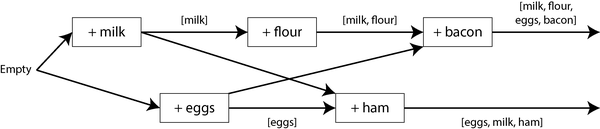
버전 벡터
그림 6-15의 예는 단일 복제본만 사용했습니다. 리더 없이 여러 복제본이 있을 때 알고리즘은 어떻게 달라질까요?
그림 6-15는 단일 버전 번호를 사용하여 연산 간의 의존성을 캡처하지만, 여러 복제본이 동시에 쓰기를 수락하는 경우에는 충분하지 않습니다. 대신, 각 복제본에 대한 버전 번호뿐만 아니라 각 키에 대한 버전 번호도 사용해야 합니다. 각 복제본은 쓰기를 처리할 때 자체 버전 번호를 증가시키고, 다른 각 복제본에서 본 버전 번호를 추적합니다. 이 정보는 어떤 값을 덮어쓰고 어떤 값을 형제로 유지할지 나타냅니다.
모든 복제본의 버전 번호 집합을 버전 벡터(version vector)라고 합니다[59]. 이 아이디어의 여러 변형이 사용되고 있지만, 아마도 가장 흥미로운 것은 도트 버전 벡터(dotted version vector)[60, 61]로, Riak 2.0[62, 63]에서 사용됩니다. 세부 사항은 다루지 않겠지만, 작동 방식은 위에서 본 예와 상당히 유사합니다.
그림 6-15의 버전 번호와 마찬가지로 버전 벡터는 값이 읽힐 때 데이터베이스 복제본에서 클라이언트로 전송되며, 이후 값을 다시 데이터베이스에 쓸 때 전송되어야 합니다(Riak은 버전 벡터를 인과 컨텍스트(causal context)라고 하는 문자열로 인코딩합니다). 버전 벡터를 통해 데이터베이스는 덮어쓰기와 동시 쓰기를 구별할 수 있습니다.
버전 벡터는 한 복제본에서 읽은 후 다른 복제본에 다시 쓰는 것이 안전하도록 보장합니다. 이렇게 하면 형제가 생성될 수 있지만, 형제가 올바르게 병합되는 한 데이터는 손실되지 않습니다.
버전 벡터와 벡터 클럭
버전 벡터는 때로 벡터 클럭(vector clock)이라고도 불리지만, 둘은 정확히 동일하지 않습니다. 차이점은 미묘합니다[61, 64, 65]. 자세한 내용은 참조를 참조하십시오. 간단히 설명하면, 복제본의 상태를 비교할 때는 버전 벡터를 사용하는 것이 적절한 데이터 구조입니다.
요약
이 장에서는 복제 문제について 살펴보았습니다. 복제는 다음과 같은 목적으로 사용될 수 있습니다:
고가용성
한 머신(또는 여러 머신, 영역, 또는 전체 지역)이 다운되더라도 시스템을 계속 실행
내구성
한 머신(또는 전체 지역)이 영구적으로 실패하더라도 데이터 손실 방지
연결 끊김 작업
네트워크 중단에도 애플리케이션이 계속 작동할 수 있도록 허용
지연 시간
데이터를 사용자와 지리적으로 가깝게 배치하여 사용자가 더 빠르게 상호 작용할 수 있도록
확장성
단일 머신보다 더 많은 읽기 볼륨을 처리할 수 있도록 복제본에서 읽기 수행
개념은 간단합니다(동일한 데이터 사본을 여러 머신에 보관)이지만, 복제는 놀랍도록 까다로운 문제임이 입증되었습니다. 동시성, 발생할 수 있는 모든 잘못된 사항, 그리고 그 결과에 대한 대처 방법을 신중하게 고려해야 합니다. 적어도 사용 불가능한 노드와 네트워크 중단을 처리해야 합니다(그것조차도 소프트웨어 버그나 하드웨어 오류로 인한 조용한 데이터 손상과 같은 더 교묘한 결함은 고려하지 않은 것입니다).
우리는 세 가지 주요 복제 접근 방식에 대해 논의했습니다:
단일 리더 복제
클라이언트가 모든 쓰기를 단일 노드(리더)로 보내고, 리더가 다른 복제본(팔로워)에 데이터 변경 이벤트 스트림을 보냅니다. 읽기는 모든 복제본에서 수행할 수 있지만, 팔로워에서 읽으면 오래된 값일 수 있습니다.
다중 리더 복제
클라이언트가 여러 리더 노드 중 하나로 각 쓰기를 보내며, cualquiera 리더가 쓰기를 수락할 수 있습니다. 리더들은 서로 및 모든 팔로워 노드에 데이터 변경 이벤트 스트림을 보냅니다.
리더 없는 복제
클라이언트가 각 쓰기를 여러 노드로 보내고 여러 노드에서 병렬로 읽어 오래된 데이터를 감지하고 수정합니다.
각 접근 방식에는 장단점이 있습니다. 단일 리더 복제는 이해하기 쉽고 강한 일관성을 제공하기 때문에 인기가 있습니다. 다중 리더 및 리더 없는 복제는 결함이 있는 노드, 네트워크 중단 및 지연 시간 급증에 더 강할 수 있지만, 충돌 해결이 필요하고 더 약한 일관성 보장을 제공한다는 대가를 치러야 합니다.
복제는 동기식 또는 비동기식일 수 있으며, 이는 장애 시 시스템 행동에 심오한 영향을 미칩니다. 비동기식 복제는 시스템이 원활하게 실행될 때 빠를 수 있지만, 복제 지연이 증가하고 서버가 실패할 때何が发生하는지 파악하는 것이 중요합니다. 리더가 실패하고 비동기식으로 업데이트된 팔로워를 새로운 리더로 승격하면 최근에 커밋된 데이터가 손실될 수 있습니다.
우리는 복제 지연으로 인해 발생할 수 있는 이상한 효과들을 살펴보고, 복제 지연 하에서 애플리케이션이 어떻게 행동해야 하는지 결정하는 데 도움이 되는 여러 일관성 모델에 대해 논의했습니다:
읽기-자신의-쓰기 일관성
사용자는 자신이 제출한 데이터를 항상 보아야 합니다.
단조적 읽기
사용자가 한 시점에 데이터를 본 후, 이전 시점의 데이터를 다시 보아서는 안 됩니다.
일관된 접두사 읽기
사용자는 인과적으로 의미가 있는 상태(예: 질문과 그 답변을 올바른 순서로 보기)를 보아야 합니다.
마지막으로, 다중 리더 및 리더 없는 복제가 모든 복제본이 결국 일관된 상태에 수렴하도록 하는 방법에 대해 논의했습니다. 즉, 버전 벡터 또는 유사한 알고리즘을 사용하여 어떤 쓰기가 동시인지 감지하고, CRDT와 같은 충돌 해결 알고리즘을 사용하여 동시 작성된 값을 병합하는 방식입니다. LWW 및 수동 충돌 해결도 가능합니다.
이 장에서는 모든 복제본이 전체 데이터베이스의 사본을 저장한다고 가정했으며, 이는 큰 데이터 세트에 대해서는 비현실적입니다. 다음 장에서는 각 머신이 데이터의 하위 집합만 저장할 수 있도록 하는 샤딩에 대해 살펴볼 것입니다.
각주
참조
[1 ] B. G. Lindsay, P. G. Selinger, C. Galtieri, J. N. Gray, R. A. Lorie, T. G. Price, F. Putzolu, I. L. Traiger, and B. W. Wade.“Notes on Distributed Databases.” IBM Research, Research Report RJ2571(33471), July 1979. Archived at perma.cc/EPZ3-MHDD
[2 ] Kenny Gryp.“MySQL Terminology Updates.” dev.mysql.com, July 2020. Archived at perma.cc/S62G-6RJ2
[3 ] Oracle Corporation.“Oracle (Active) Data Guard 19c: Real-Time Data Protection and Availability.” White Paper, oracle.com, March 2019. Archived at perma.cc/P5ST-RPKE
[4 ] Microsoft.“What Is an Always On Availability Group?” learn.microsoft.com, September 2024. Archived at perma.cc/ABH6-3MXF
[5 ] Mostafa Elhemali, Niall Gallagher, Nicholas Gordon, Joseph Idziorek, Richard Krog, Colin Lazier, Erben Mo, Akhilesh Mritunjai, Somu Perianayagam, Tim Rath, Swami Sivasubramanian, James Christopher Sorenson III, Sroaj Sosothikul, Doug Terry, and Akshat Vig.“Amazon DynamoDB: A Scalable, Predictably Performant, and Fully Managed NoSQL Database Service.” At USENIX Annual Technical Conference (ATC), July 2022.
[6 ] Rebecca Taft, Irfan Sharif, Andrei Matei, Nathan VanBenschoten, Jordan Lewis, Tobias Grieger, Kai Niemi, Andy Woods, Anne Birzin, Raphael Poss, Paul Bardea, Amruta Ranade, Ben Darnell, Bram Gruneir, Justin Jaffray, Lucy Zhang, and Peter Mattis.“CockroachDB: The Resilient Geo-Distributed SQL Database.” At ACM SIGMOD International Conference on Management of Data (SIGMOD), June 2020. doi:10.1145/3318464.3386134
[7 ] Dongxu Huang, Qi Liu, Qiu Cui, Zhuhe Fang, Xiaoyu Ma, Fei Xu, Li Shen, Liu Tang, Yuxing Zhou, Menglong Huang, Wan Wei, Cong Liu, Jian Zhang, Jianjun Li, Xuelian Wu, Lingyu Song, Ruoxi Sun, Shuaipeng Yu, Lei Zhao, Nicholas Cameron, Liquan Pei, and Xin Tang.“TiDB: A Raft-Based HTAP Database.” Proceedings of the VLDB Endowment, volume 13, issue 12, pages 3072–3084, August 2020. doi:10.1145/3415478.3415535
[8 ] Mallory Knodel and Niels ten Oever.“Terminology, Power, and Inclusive Language in Internet-Drafts and RFCs.” IETF Internet-Draft, August 2023. Archived at perma.cc/5ZY9-725E
[9 ] Buck Hodges.“Postmortem: VSTS 4 September 2018.” devblogs.microsoft.com, September 2018. Archived at perma.cc/ZF5R-DYZS
[10 ] Gunnar Morling.“Leader Election with S3 Conditional Writes.” www.morling.dev, August 2024. Archived at perma.cc/7V2N-J78Y
[11 ] Vignesh Chandramohan, Rohan Desai, and Chris Riccomini.“SlateDB Manifest Design.” github.com, May 2024. Archived at perma.cc/8EUY-P32Z
[12 ] Stas Kelvich.“Why Does Neon Use Paxos Instead of Raft, and What’s the Difference?” neon.tech, August 2022. Archived at perma.cc/SEZ4-2GXU
[13 ] Dimitri Fontaine.“An Introduction to the pg_auto_failover Project.” tapoueh.org, November 2021. Archived at perma.cc/3WH5-6BAF
[14 ] Jesse Newland.“GitHub Availability This Week.” github.blog, September 2012. Archived at perma.cc/3YRF-FTFJ
[15 ] Mark Imbriaco.“Downtime Last Saturday.” github.blog, December 2012. Archived at perma.cc/M7X5-E8SQ
[16 ] John Hugg.“‘All In’ with Determinism for Performance and Testing in Distributed Systems.” At Strange Loop, September 2015.
[17 ] Hironobu Suzuki.“The Internals of PostgreSQL.” interdb.jp, 2017. Archived at archive.org
[18 ] Amit Kapila.“WAL Internals of PostgreSQL.” At PostgreSQL Conference (PGCon), May 2012. Archived at perma.cc/6225-3SUX
[19 ] Amit Kapila.“Evolution of Logical Replication.” amitkapila16.blogspot.com, September 2023. Archived at perma.cc/F9F9-XJLER
[20 ] Aru Petchimuthu.“Upgrade Your Amazon RDS for PostgreSQL or Amazon Aurora PostgreSQL Database, Part 2: Using the pglogical Extension.” aws.amazon.com, August 2021. Archived at perma.cc/RXT8-FS2T
[21 ] Yogeshwer Sharma, Philippe Ajoux, Petchean Ang, David Callies, Abhishek Choudhary, Laurent Demailly, Thomas Fersch, Liat Atsmon Guz, Andrzej Kotulski, Sachin Kulkarni, Sanjeev Kumar, Harry Li, Jun Li, Evgeniy Makeev, Kowshik Prakasam, Robbert van Renesse, Sabyasachi Roy, Pratyush Seth, Yee Jiun Song, Benjamin Wester, Kaushik Veeraraghavan, and Peter Xie.“Wormhole: Reliable Pub-Sub to Support Geo-Replicated Internet Services.” At 12th USENIX Symposium on Networked Systems Design and Implementation (NSDI), May 2015.
[22 ] Douglas B. Terry.“Replicated Data Consistency Explained Through Baseball.” Microsoft Research, Technical Report MSR-TR-2011-137, October 2011. Archived at perma.cc/F4KZ-AR38
[23 ] Douglas B. Terry, Alan J. Demers, Karin Petersen, Mike J. Spreitzer, Marvin M. Theimer, and Brent B. Welch.“Session Guarantees for Weakly Consistent Replicated Data.” At 3rd International Conference on Parallel and Distributed Information Systems (PDIS), September 1994. doi:10.1109/PDIS.1994.331722
[24 ] Werner Vogels.“Eventually Consistent.” ACM Queue, volume 6, issue 6, pages 14–19, October 2008. doi:10.1145/1466443.1466448
[25 ] Simon Willison. Reply to: “My thoughts about Fly.io (so far) and other newish technology I’m getting into”. news.ycombinator.com, May 2022.
[26 ] Nithin Tharakan.“Scaling Bitbucket’s Database.” atlassian.com, October 2020. Archived at perma.cc/JAB7-9FGX
[27 ] Terry Pratchett. Reaper Man: A Discworld Novel. Victor Gollancz, 1991. ISBN: 9780575049796
[28 ] Peter Bailis, Alan Fekete, Michael J. Franklin, Ali Ghodsi, Joseph M. Hellerstein, and Ion Stoica.“Coordination Avoidance in Database Systems.” Proceedings of the VLDB Endowment, volume 8, issue 3, pages 185–196, November 2014. doi:10.14778/2735508.2735509
[29 ] Yaser Raja and Peter Celentano.“PostgreSQL Bi-Directional Replication Using pglogical.” aws.amazon.com, January 2022. Archived at perma.cc/BUQ2-5QWN
[30 ] Robert Hodges.“If You Must Deploy Multi-Master Replication, Read This First.” scale-out-blog.blogspot.com, April 2012. Archived at perma.cc/C2JN-F6Y8
[31 ] Lars Hofhansl.“HBASE-7709: Infinite Loop Possible in Master/Master Replication.” issues.apache.org, January 2013. Archived at perma.cc/24G2-8NLC
[32 ] John Day-Richter.“What’s Different About the New Google Docs: Making Collaboration Fast.” drive.googleblog.com, September 2010. Archived at perma.cc/5TL8-TSJ2
[33 ] Evan Wallace.“How Figma’s Multiplayer Technology Works.” figma.com, October 2019. Archived at perma.cc/L49H-LY4D
[34 ] Tuomas Artman.“Scaling the Linear Sync Engine.” linear.app, June 2023.
[35 ] Amr Saafan.“Why Sync Engines Might Be the Future of Web Applications.” nilebits.com, September 2024. Archived at perma.cc/5N73-5M3V
[36 ] Isaac Hagoel.“Are Sync Engines the Future of Web Applications?” dev.to, July 2024. Archived at perma.cc/R9HF-BKKL
[37 ] Sujay Jayakar.“A Map of Sync.” stack.convex.dev, October 2024. Archived at perma.cc/82R3-H42A
[38 ] Alex Feyerke.“Designing Offline-First Web Apps.” alistapart.com, December 2013. Archived at perma.cc/WH7R-S2DS
[39 ] Martin Kleppmann, Adam Wiggins, Peter van Hardenberg, and Mark McGranaghan.“Local-First Software: You Own Your Data, in Spite of the Cloud.” At ACM SIGPLAN International Symposium on New Ideas, New Paradigms, and Reflections on Programming and Software (Onward!), October 2019. doi:10.1145/3359591.3359737
[40 ] Martin Kleppmann.“The Past, Present, and Future of Local-First.” At Local-First Conference, May 2024.
[41 ] Conrad Hofmeyr.“API Calling Is to Sync Engines as jQuery Is to React.” powersync.com, November 2024. Archived at perma.cc/2FP9-7WJJ
[42 ] Peter van Hardenberg and Martin Kleppmann.“PushPin: Towards Production-Quality Peer-to-Peer Collaboration.” At 7th Workshop on Principles and Practice of Consistency for Distributed Data (PaPoC), April 2020. doi:10.1145/3380787.3393683
[43 ] Leonard Kawell, Jr., Steven Beckhardt, Timothy Halvorsen, Raymond Ozzie, and Irene Greif.“Replicated Document Management in a Group Communication System.” At ACM Conference on Computer-Supported Cooperative Work (CSCW), September 1988. doi:10.1145/62266.1024798
[44 ] Ricky Pusch.“Explaining How Fighting Games Use Delay-Based and Rollback Netcode.” words.infil.net and arstechnica.com, October 2019. Archived at perma.cc/DE7W-RDJ8
[45 ] Giuseppe DeCandia, Deniz Hastorun, Madan Jampani, Gunavardhan Kakulapati, Avinash Lakshman, Alex Pilchin, Swaminathan Sivasubramanian, Peter Vosshall, and Werner Vogels.“Dynamo: Amazon’s Highly Available Key-Value Store.” At 21st ACM Symposium on Operating Systems Principles (SOSP), October 2007. doi:10.1145/1323293.1294281
[46 ] Marc Shapiro, Nuno Preguiça, Carlos Baquero, and Marek Zawirski.“Conflict-Free Replicated Data Types.” At 13th International Symposium on Stabilization, Safety, and Security of Distributed Systems (SSS), October 2011. doi:10.1007/978-3-642-24550-3_29
[47 ] Chengzheng Sun and Clarence Ellis.“Operational Transformation in Real-Time Group Editors: Issues, Algorithms, and Achievements.” At ACM Conference on Computer Supported Cooperative Work (CSCW), November 1998. doi:10.1145/289444.289469
[48 ] Joseph Gentle and Martin Kleppmann.“Collaborative Text Editing with Eg-walker: Better, Faster, Smaller.” At 20th European Conference on Computer Systems (EuroSys), March 2025. doi:10.1145/3689031.3696076
[49 ] Dharma Shukla.“Azure Cosmos DB: Pushing the Frontier of Globally Distributed Databases.” azure.microsoft.com, September 2018. Archived at perma.cc/UT3B-HH6R
[50 ] David K. Gifford.“Weighted Voting for Replicated Data.” At 7th ACM Symposium on Operating Systems Principles (SOSP), December 1979. doi:10.1145/800215.806583
[51 ] Marc Brooker.“Dynamo, DynamoDB, and Aurora DSQL.” brooker.co.za, August 2025. Archived at perma.cc/XG3C-ALDQ
[52 ] Heidi Howard, Dahlia Malkhi, and Alexander Spiegelman.“Flexible Paxos: Quorum Intersection Revisited.” At 20th International Conference on Principles of Distributed Systems (OPODIS), December 2016. doi:10.4230/LIPIcs.OPODIS.2016.25
[53 ] Joseph Blomstedt.“Bringing Consistency to Riak.” At RICON West, October 2012. Archived at archive.org
[54 ] Peter Bailis, Shivaram Venkataraman, Michael J. Franklin, Joseph M. Hellerstein, and Ion Stoica.“Quantifying Eventual Consistency with PBS.” The VLDB Journal, volume 23, issue 2, pages 279–302, April 2014. doi:10.1007/s00778-013-0330-1
[55 ] Colin Breck.“Shared-Nothing Architectures for Server Replication and Synchronization.” blog.colinbreck.com, December 2019. Archived at perma.cc/48P3-J6CJ
[56 ] Jeffrey Dean and Luiz André Barroso.“The Tail at Scale.” Communications of the ACM, volume 56, issue 2, pages 74–80, February 2013. doi:10.1145/2408776.2408794
[57 ] Peng Huang, Chuanxiong Guo, Lidong Zhou, Jacob R. Lorch, Yingnong Dang, Murali Chintalapati, and Randolph Yao.“Gray Failure: The Achilles’ Heel of Cloud-Scale Systems.” At 16th Workshop on Hot Topics in Operating Systems (HotOS), May 2017. doi:10.1145/3102980.3103005
[58 ] Leslie Lamport.“Time, Clocks, and the Ordering of Events in a Distributed System.” Communications of the ACM, volume 21, issue 7, pages 558–565, July 1978. doi:10.1145/359545.359563
[59 ] D. Stott Parker Jr., Gerald J. Popek, Gerard Rudisin, Allen Stoughton, Bruce J. Walker, Evelyn Walton, Johanna M. Chow, David Edwards, Stephen Kiser, and Charles Kline.“Detection of Mutual Inconsistency in Distributed Systems.” IEEE Transactions on Software Engineering, volume SE-9, issue 3, pages 240–247, May 1983. doi:10.1109/TSE.1983.236733
[60 ] Nuno Preguiça, Carlos Baquero, Paulo Sérgio Almeida, Victor Fonte, and Ricardo Gonçalves.“Dotted Version Vectors: Logical Clocks for Optimistic Replication.” arXiv:1011.5808, November 2010.
[61 ] Giridhar Manepalli.“Clocks and Causality—Ordering Events in Distributed Systems.” exhypothesi.com, November 2022. Archived at perma.cc/8REU-KVLQ
[62 ] Sean Cribbs.“A Brief History of Time in Riak.” At RICON, October 2014. Archived at perma.cc/7U9P-6JFX
[63 ] Russell Brown.“Vector Clocks Revisited Part 2: Dotted Version Vectors.” riak.com, November 2015. Archived at perma.cc/96QP-W98R
[64 ] Carlos Baquero.“Version Vectors Are Not Vector Clocks.” haslab.wordpress.com, July 2011. Archived at perma.cc/7PNU-4AMG
[65 ] Reinhard Schwarz and Friedemann Mattern.“Detecting Causal Relationships in Distributed Computations: In Search of the Holy Grail.” Distributed Computing, volume 7, issue 3, pages 149–174, March 1994. doi:10.1007/BF02277859
7장. 샤딩
“분리할 수 없을 정도로 한 사람에 너무 많은 영향을 받는 시스템은 성공할 수 없습니다. 초기 설계가 완료되고 상당히 견고해지면, 많은 다양한 관점을 가진 사람들이 자체 실험을 시작하는 것이 진정한 테스트의 시작입니다.” 그레이 머레이 호퍼, 미래의 컴퓨터 관리(1962)
분산 데이터베이스는 일반적으로 데이터를 노드에 두 가지 방식으로 분배합니다:
- 동일한 데이터 사본을 여러 노드에 저장합니다. 이것이 복제이며, 6장에서 논의했습니다.
- 데이터 양이 너무 많거나 쓰기 처리량이 너무 높아 단일 노드가 처리할 수 없는 경우, 데이터를 더 작은 샤드 또는 파티션으로 분할하여 서로 다른 샤드를 서로 다른 노드에 저장합니다. 샤딩은 이번 장에서 다룰 것입니다.
일반적으로 샤드는 정의된 방식에 따라 각 데이터 조각(각 레코드, 행 또는 문서)이 정확히 하나의 샤드에 속하도록 합니다. 이를 달성하는 방법에는 여러 가지가 있으며, 이 장에서 자세히 논의할 것입니다. 효과적으로 각 샤드는 자체적인 작은 데이터베이스이지만, 일부 데이터베이스 시스템은 여러 샤드에 동시에 터치하는 연산을 지원합니다.
샤딩은 일반적으로 복제와 결합되며, 각 샤드의 사본이 여러 노드에 저장됩니다. 즉, 각 레코드는 정확히 하나의 샤드에 속하지만, 내결함성을 위해 여러 노드에 저장될 수 있습니다.
노드는 하나 이상의 샤드를 저장할 수 있습니다. 단일 리더 복제 모델이 사용되는 경우, 샤딩과 복제의 조합은 그림 7-1과 같이 보일 수 있습니다. 각 샤드의 리더는 하나의 노드에 할당되고, 그 팔로워는 다른 노드에 할당됩니다. 각 노드는 일부 샤드의 리더이자 다른 샤드의 팔로워일 수 있지만, 각 샤드는 여전히 하나의 리더만 가집니다.
샤딩과 파티셔닝
이 장에서 우리가 샤드라고 부르는 것은 사용하는 소프트웨어에 따라 여러 가지 이름을 가집니다. Kafka에서는 파티션, CockroachDB에서는 범위, HBase 및 TiDB에서는 지역, Couchbase에서는 vBucket, Riak에서는 vnode, Cassandra에서는 토큰 범위, Bigtable, YugabyteDB 및 ScyllaDB에서는 태블릿이라고 부르며, 그 외에도 여러 가지가 있습니다.
일부 데이터베이스는 파티션과 샤드를 두 가지 서로 다른 개념으로 취급합니다. 예를 들어 PostgreSQL에서 파티션은 큰 테이블을 동일한 머신에 저장되는 여러 파일로 분할하는 방법입니다(이는 전체 파티션을 매우 빠르게 삭제할 수 있는 등의 여러 장점이 있습니다). 반면 샤딩은 데이터셋을 여러 머신에 분할하는 것입니다[1, 2]. 많은 다른 시스템에서는 파티션이 단지 샤딩을 의미하는 또 다른 단어일 뿐입니다.
파티션이라는 용어는 상당히 설명적이지만, 샤딩이라는 용어는 아마도 놀랍습니다. 한 이론에 따르면 이 용어는 온라인 롤플레잉 게임 얼티마 온라인(Ultima Online)에서 비롯되었는데, 이 게임에서 마법 결정이 조각나고 각 조각이 게임 세계의 사본을 굴절시켰습니다[3]. 따라서 샤드라는 용어는 일련의 병렬 게임 서버 중 하나를 의미하게 되었고, 이후 데이터베이스로 가져왔습니다. 다른 이론은 이것이 시스템 고가용성 복제(System for Highly Available Replicated Data)의 약어였으며, reportedly 1980년대 데이터베이스였으나詳細は 역사 속으로 사라졌다는 것입니다.
참고로, 파티셔닝은 네트워크 파티션(netsplit)과는 아무 관련이 없습니다. 이는 노드 간의 네트워크 장애 유형이며, 9장에서 다룰 것입니다.
6장의 데이터베이스 복제에 관한 모든 내용은 샤드 복제에 동일하게 적용됩니다. 샤딩 방식 선택은 주로 복제 방식 선택과 독립적이므로, 단순성을 위해 이 장에서는 복제를 무시하겠습니다.
샤딩의 장단점
데이터베이스를 샤딩하는 주요 이유는 확장성입니다. 데이터 볼륨이나 쓰기 처리량이 단일 노드가 처리하기에 너무 커진 경우, 샤딩을 사용하면 해당 데이터와 쓰기를 여러 노드에 분산할 수 있습니다(읽기 처리량이 문제라면 반드시 샤딩이 필요한 것은 아닙니다. 6장에서 논의한 읽기 확장을 사용할 수 있습니다).
사실, 샤딩은 수평적 확장(규모 확대 아키텍처)을 달성하기 위한 주요 도구 중 하나입니다(“공유 메모리, 공유 디스크, 공유 없음 아키텍처”에서 논의됨). 즉, 더 큰 머신으로 이동하는 것이 아니라 더 많은 (더 작은) 머신을 추가하여 시스템의 용량을 증가시킬 수 있습니다. 워크로드를 나누어 각 샤드가 대략 동일한 비율을 처리할 수 있다면, 해당 샤드를 서로 다른 머신에 할당하여 데이터를 병렬로 처리할 수 있습니다.
복제는 소규모와 대규모 모두에서 유용하며 내결함성과 오프라인 작업을 가능하게 하지만, 샤딩은 무거운 솔루션이며 주로 대규모 환경에서만 관련이 있습니다. 데이터 볼륨과 쓰기 처리량이 단일 머신이 처리할 수 있는 정도라면(단일 머신도 nowadays 많은 일을 할 수 있습니다!), 샤딩을 피하고 단일 샤드 데이터베이스를 고수하는 것이 더 나은 경우가 많습니다.
이 권장 사항의 이유는 샤딩이 복잡성을 추가하기 때문입니다. 일반적으로 어떤 레코드를 어떤 샤드에 넣을지 결정하기 위해 파티션 키를 선택해야 하며, 동일한 파티션 키를 가진 모든 레코드는 같은 샤드에 배치됩니다[4]. 이 선택은 중요한데, 레코드에 접근할 때 어떤 샤드에 있는지 알면 빠르지만, 그렇지 않으면 모든 샤드를 통해 비효율적인 검색을 수행해야 하기 때문입니다. 샤딩 방식은 변경하기도 어렵습니다.
샤딩은 종종 키-값 데이터에 잘 작동하며, 키로 쉽게 샤딩할 수 있지만, 관계형 데이터의 경우 보조 인덱스로 검색하거나 다른 샤드에 분산된 레코드를 조인하려는 경우 더 어렵습니다. 이에 대해서는 “샤딩과 보조 인덱스”에서 더 논의할 것입니다.
샤딩의 또 다른 문제는 한 번의 쓰기가 여러 샤드에 관련된 레코드를 업데이트해야 할 수 있다는 것입니다. 단일 노드에서 트랜잭션은 흔하지만, 여러 샤드에 걸친 일관성을 보장하려면 분산 트랜잭션이 필요합니다. 8장에서 보게 되겠지만, 분산 트랜잭션은 일부 데이터베이스에서 사용 가능하지만, 일반적으로 단일 노드 트랜잭션보다 훨씬 느리며 시스템 전체의 병목이 될 수 있습니다.
일부 시스템은 단일 머신에서도 샤딩을 사용하는데, 일반적으로 CPU 코어당 하나의 단일 스레드 프로세스를 실행하여 CPU의 병렬성을 활용하거나, 일부 메모리 뱅크가 다른 CPU 코어보다 가까운 비균일 메모리 접근(NUMA) 아키텍처를 활용하기 위함입니다[5]. 예를 들어, Redis, VoltDB 및 FoundationDB는 CPU 코어당 하나의 프로세스를 사용하며, 동일한 머신 내의 CPU 코어 간에 부하를 분산하기 위해 샤딩에 의존합니다[6].
멀티 테넌시를 위한 샤딩
소프트웨어로서의 서비스(SaaS) 제품과 클라우드 서비스는 종종 멀티 테넌트이며, 각 테넌트는 고객입니다. 여러 사용자가 동일한 테넌트에 로그인할 수 있지만, 각 테넌트는 다른 테넌트와 분리된 자체 데이터 세트를 가집니다. 예를 들어, 이메일 마케팅 서비스에서 가입한 각 기업은 일반적으로 별도의 테넌트이며, 한 기업의 뉴스레터 가입자, 배송 데이터 등은 다른 기업의 것과 별개입니다.
때때로 샤딩은 멀티 테넌트 시스템을 구현하는 데 사용됩니다. 각 테넌트에게 별도의 샤드를 할당하거나, 여러 소규모 테넌트를 더 큰 샤드로 그룹화할 수 있습니다. 이러한 샤드는 물리적으로 별도의 데이터베이스이거나(이전에 “임베디드 스토리지 엔진”에서 언급했음) 더 큰 논리적 데이터베이스의 별도로 관리 가능한 부분일 수 있습니다[7]. 멀티 테넌시를 위한 샤딩 사용에는 여러 장점이 있습니다:
리소스 격리
한 테넌트가 계산 비용이 높은 작업을 수행하더라도, 다른 테넌트가 다른 샤드에서 실행 중이라면 다른 테넌트의 성능에 영향을 미칠 가능성이 낮습니다.
권한 격리
액세스 제어 로직에 버그가 있는 경우, 데이터 세트가 물리적으로 서로 분리되어 있다면 한 테넌트가 실수로 다른 테넌트의 데이터에 접근할 가능성이 낮습니다.
셀 기반 아키텍처
셀 기반 아키텍처에서는 특정 테넌트 집합에 대한 서비스와 스토리지를 자체 포함된 셀로 그룹화하고, 서로 다른 셀은 주로 독립적으로 실행될 수 있도록 구성합니다. 이 접근 방식은 단일 셀에서 발생한 결함이 해당 셀로 제한되며, 다른 셀의 테넌트는 영향을 받지 않으므로 결함 격리를 제공합니다[8].
테넌트별 백업 및 복원
각 테넌트의 샤드를 별도로 백업하면 다른 테넌트에 영향을 주지 않고 테넌트의 상태를 백업에서 복원할 수 있으므로, 테넌트가 실수로 중요한 데이터를 삭제하거나 덮어쓴 경우 유용할 수 있습니다[9].
규정 준수
GDPR 및 CCPA와 같은 데이터 프라이버시 규정은 기업이 개인에 대해 저장하는 개인 정보에 접근하고 삭제를 요청할 수 있는 권리를 개인에게 부여합니다. 각 사람의 데이터를 별도의 샤드에 저장하면 해당 샤드에서 데이터 내보내기 및 삭제 작업이 간단해집니다[10].
데이터 상주
특정 테넌트의 데이터가 데이터 상주법을 준수하기 위해 특정 관할권에 저장되어야 하는 경우, 지역 인식 데이터베이스를 사용하면 해당 테넌트의 샤드를 특정 지역에 할당할 수 있습니다.
점진적 스키마 롤아웃
스키마 마이그레이션(이전에 “문서 모델의 스키마 유연성”에서 논의됨)은 테넌트별로 점진적으로 롤아웃될 수 있습니다. 이는 모든 테넌트에 영향을 미치기 전에 문제를 감지할 수 있으므로 위험을 줄이지만, 트랜잭션 방식으로 수행하기 어려울 수 있습니다[11].
멀티 테넌시를 위한 샤딩 사용의 주요 과제는 다음과 같습니다:
- 각 개별 테넌트가 단일 노드에 들어갈 만큼 충분히 작다는 것을 가정합니다. 그렇지 않은 경우, 즉 단일 테넌트가 한 머신에 너무 큰 경우, 해당 테넌트 내에서 추가로 샤딩을 수행해야 하며, 이는 확장성을 위한 샤딩 주제로 돌아갑니다[12].
- 많은 수의 소규모 테넌트가 있는 경우, 각 테넌트별로 별도의 샤드를 생성하면 오버헤드가 너무 많을 수 있습니다. 여러 소규모 테넌트를 더 큰 샤드로 그룹화할 수 있지만, 테넌트가 성장함에 따라 테넌트를 한 샤드에서 다른 샤드로 이동하는 문제가 발생합니다.
- 여러 테넌트 간에 데이터를 연결하는 기능을 지원해야 하는 경우, 여러 샤드에 걸쳐 데이터를 조인해야 하므로 구현이 더 어려워집니다.
키-값 데이터의 샤딩
많은 양의 데이터를 가지고 이를 샤딩하려고 한다고 가정해 보겠습니다. 어떤 레코드를 어떤 노드에 저장할지 어떻게 결정할까요?
샤딩의 목표는 데이터와 쿼리 부하를 여러 노드에 균일하게 분산하는 것입니다. 모든 노드가 공정한 비율을 가져간다면, 이론적으로 10개의 노드는 단일 노드보다 10배 더 많은 데이터와 10배의 읽기 및 쓰기 처리량을 처리할 수 있어야 합니다(복제 제외). 노드를 추가하거나 제거할 때, 새로운 노드 수에 걸쳐 부하를 균일하게 재분배할 수 있어야 합니다.
샤딩이 불공평하여 일부 샤드에 다른 샤드보다 더 많은 데이터나 쿼리가 있는 경우, 이를 편향(skewed)이라고 합니다. 편향이 존재하면 샤딩이 훨씬 덜 효과적입니다. 극단적인 경우, 모든 부하가 하나의 샤드에 집중되어 10개 중 9개 노드는 유휴 상태이고, 병목은 단일 바쁜 노드가 됩니다. disproportionately 높은 부하를 가진 샤드를 핫 샤드 또는 핫 스팟이라고 합니다. 특정 키(예: 소셜 네트워크의 유명인)에 특히 높은 부하가 있는 경우, 이를 핫 키라고 합니다.
데이터 세트를 샤드로 분할하려면 파티션 키를 입력으로 받아 해당 레코드가 포함된 샤드를 알려주는 알고리즘이 필요합니다. 키-값 저장소에서 파티션 키는 일반적으로 키 또는 키의 첫 번째 부분입니다. 관계형 모델에서 파티션 키는 테이블의 열일 수 있습니다(반드시 기본 키는 아닐 수 있음). 이 알고리즘은 핫 스팟을 완화하기 위해 재분배가 가능해야 합니다.
키 범위 샤딩
샤딩의 한 가지 방법은 연속된 파티션 키 범위(최소값에서 최대값까지)를 각 샤드에 할당하는 것으로, 인쇄된 백과사전의 권별과 같습니다(그림 7-2에 설명되어 있음). 이 예에서 항목의 파티션 키는 제목입니다. 특정 제목의 항목을 찾으려면 해당 제목이 포함된 키 범위를 가진 권을 찾아 쉽게 어떤 권을 선택해야 하는지 결정할 수 있습니다.
키 범위는 반드시 균등하게 간격을 두는 것은 아닙니다. 데이터가 균등하게 분포되지 않을 수 있기 때문입니다. 예를 들어 그림 7-2에서 권 1은 A와 B로 시작하는 단어를 포함하지만, 권 12는 T, U, V, W, X, Y 및 Z로 시작하는 단어를 포함합니다. 알파벳 두 글자당 하나의 권을 두면 일부 권은 다른 권보다 훨씬 더 커지게 됩니다. 데이터를 균등하게 분산하려면 샤드 경계가 데이터에 맞게 조정되어야 합니다.
샤드 경계는 관리자가 수동으로 선택하거나 데이터베이스가 자동으로 선택할 수 있습니다. 수동 키 범위 샤딩은 예를 들어 Vitess(MySQL용 샤딩 레이어)에서 사용되며, 자동 변형은 Bigtable 및 해당 오픈 소스 동등체인 HBase, MongoDB의 범위 기반 샤딩 옵션, 그리고 CockroachDB, RethinkDB 및 FoundationDB에서 사용됩니다[6]. YugabyteDB는 수동 및 자동 태블릿 분할을 모두 제공합니다.
각 샤드 내에서 키는 정렬된 순서로 저장됩니다(예: 4장에서 논의한 B-트리 또는 SSTable). 이는 범위 스캔이 쉽고, 키를 연결 인덱스로 간주하여 단일 쿼리에서 여러 관련 레코드를 가져올 수 있다는 장점이 있습니다. 예를 들어, 센서 네트워크의 데이터를 저장하고 키가 측정의 타임스탬프인 애플리케이션을 고려해 보십시오. 범위 스캔은 이 경우에 매우 유용하며, 예를 들어 특정 달의 모든 판독 값을 쉽게 가져올 수 있습니다.
키 범위 샤딩의 단점은 인접한 키에 대한 쓰기가 많으면 쉽게 핫 샤드가 발생할 수 있다는 것입니다. 예를 들어 키가 타임스탬프인 경우, 샤드는 시간 범위에 해당합니다(예: 월별 하나의 샤드). 센서에서 발생하는 대로 데이터를 데이터베이스에 기록하면 모든 쓰기가 동일한 샤드(이번 달에 해당하는 샤드)로 이동하므로 해당 샤드는 쓰기로 과부하 상태가 되고 다른 샤드는 유휴 상태가 됩니다[13].
센서 데이터베이스에서 이 문제를 피하려면 타임스탬프 이외의 것을 키의 첫 번째 요소로 사용해야 합니다. 예를 들어, 각 타임스탬프에 센서 ID를 접두어로 추가하여 키 순서가 먼저 센서 ID에 따라, 그 다음 타임스탬프에 따라 정렬되도록 할 수 있습니다. 많은 센서가 동시에 활성 상태인 것으로 가정하면, 쓰기 부하가 샤드 전반에 더 균등하게 분산됩니다. 단점은 여러 센서의 특정 시간 범위에 대한 값을 가져오려면 이제 각 센서에 대해 별도의 범위 쿼리를 수행해야 한다는 것입니다.
키 범위 샤딩된 데이터 재균형
데이터베이스를 처음 설정할 때 분할할 키 범위는 없습니다. 일부 데이터베이스(HBase 및 MongoDB 등)는 빈 데이터베이스에 대한 초기 샤드 집합을 구성할 수 있으며, 이를 사전 분할(pre-splitting)이라고 합니다. 이는 이미 키 분포가 어떻게 될지 알고 있어야 하므로 적절한 키 범위 경계를 선택할 수 있습니다[14].
나중에 데이터 볼륨과 쓰기 처리량이 증가함에 따라 키 범위 샤딩을 사용하는 시스템은 기존 샤드를 두 개 이상의 더 작은 샤드로 분할하여 성장하며, 각 샤드는 원래 샤드의 키 범위의 연속된 하위 범위를 보유합니다. 결과적으로 더 작은 샤드는 여러 노드에 분산될 수 있습니다. 많은 양의 데이터가 삭제되면 너무 작아진 여러 인접 샤드를 하나로 병합해야 할 수도 있습니다. 이 과정은 B-트리의 최상위 수준에서 발생하는 과정과 유사합니다(“B-트리” 참조).
샤드 경계를 자동으로 관리하는 데이터베이스에서는 샤드 분할이 일반적으로 샤드가 구성된 크기(예: HBase의 기본값은 10GB)에 도달하거나, 일부 시스템에서는 쓰기 처리량이 지속적으로 특정 임계값을 초과할 때 트리거됩니다. 따라서 핫 샤드는 많은 데이터를 저장하지 않더라도 쓰기 부하를 더 균일하게 분산하기 위해 분할될 수 있습니다.
불행히도 샤드 수는 데이터 볼륨에 따라 조정됩니다. 데이터 양이 적은 경우 소수의 샤드만 있으면 되므로 오버헤드가 적지만, 데이터 양이 많은 경우 개별 샤드의 크기는 구성 가능한 최대값으로 제한됩니다[15].
불행히도 샤드를 분할하는 것은 비용이 많이 드는 작업입니다. 모든 데이터를 새 파일로 다시 작성해야 하기 때문입니다. 이는 로그 구조 스토리지 엔진의 압축과 유사합니다. 분할이 필요한 샤드는 종종 높은 부하를 받는 샤드이기도 하며, 분할 비용은 해당 부하를 악화시켜 과부하 위험을 초래할 수 있습니다.
키 해시로 샤딩
키 범위 샤딩은 인접하지만 다른 파티션 키를 가진 레코드를 동일한 샤드에 그룹화하려는 경우에 유용합니다(예: 타임스탬프의 경우). 파티션 키가 서로 가까운지 신경 쓰지 않는 경우(예: 멀티 테넌트 애플리케이션의 테넌트 ID), 일반적인 접근 방식은 파티션 키를 해시한 후 이를 샤드에 매핑하는 것입니다.
좋은 해시 함수는 편향된 데이터를 가져와 균일하게 분포시킵니다. 예를 들어, 문자열을 받아 0부터 2^32 - 1까지의 임의로 보이는 숫자를 반환하는 32비트 해시 함수가 있다고 가정해 보겠습니다. 입력 문자열이 매우 유사하더라도 해시는 해당 숫자 범위 전체에 균일하게 분포되며(동일한 입력은 항상 동일한 출력을 생성함), 이는 매우 중요합니다.
샤딩 목적으로 해시 함수가 암호학적으로 강력할 필요는 없습니다. 예를 들어, MongoDB는 MD5를 사용하는 반면 Cassandra와 ScyllaDB는 Murmur3를 사용합니다. 많은 프로그래밍 언어에는 해시 테이블에 사용되는 간단한 해시 함수가 내장되어 있지만, 샤딩에 적합하지 않을 수 있습니다. 예를 들어, Java의 Object.hashCode()와 Ruby의 Object#hash는 동일한 키가 다른 프로세스에서 다른 해시 값을 가질 수 있어 샤딩에 부적합합니다[16].
노드 수에 대한 해시 모듈로
키를 해시한 후, 어떤 샤드에 저장할지 어떻게 선택할까요? 첫 번째 생각은 많은 프로그래밍 언어에서 % 연산자를 사용하여 해시 값을 시스템의 노드 수로 나눈 나머지를 취하는 것일 수 있습니다. 예를 들어, hash(key) % 10은 0부터 9까지의 숫자를 반환합니다(해시를 10진수로 작성하면 hash % 10은 마지막 숫자입니다). 10개의 노드가 0부터 9까지 번호가 매겨져 있다면, 이는 각 키를 노드에 할당하는 쉬운 방법처럼 보입니다.
mod N 접근 방식의 문제는 노드 수 N이 변경되면 대부분의 키가 한 노드에서 다른 노드로 이동해야 한다는 것입니다. 그림 7-3은 세 개의 노드가 있을 때 네 번째 노드를 추가하면 어떻게 되는지 보여줍니다. 재분배 전에는 노드 0이 해시가 0, 3, 6, 9 등인 키를 저장했습니다. 네 번째 노드를 추가한 후에는 해시 3인 키는 노드 3으로, 해시 6인 키는 노드 2로, 해시 9인 키는 노드 1로 이동하는 등 변화가 일어납니다.
mod N 함수는 계산하기 쉽지만, 재균형이 매우 비효율적입니다. 많은 수의 레코드가 한 노드에서 다른 노드로 불필요하게 이동되기 때문입니다. 우리는 가능한 한 데이터를 적게 이동하는 접근 방식이 필요합니다.
고정 수의 샤드
단순하지만 널리 사용되는 해결책은 노드보다 훨씬 더 많은 샤드를 만들고 여러 샤드를 각 노드에 할당하는 것입니다. 예를 들어, 10개의 노드로 구성된 클러스터에서 실행되는 데이터베이스는 처음부터 1,000개의 샤드로 분할되어 각 노드에 100개의 샤드가 할당될 수 있습니다. 키는 hash(key) % 1,000인 샤드 번호에 저장되며, 시스템은 어떤 샤드가 어떤 노드에 저장되는지 별도로 추적합니다.
이제 클러스터에 새 노드가 추가되면, 시스템은 기존 노드로부터 일부 샤드를 새 노드에 재할당하여 다시 균일하게 분산할 수 있습니다. 이 과정은 그림 7-4에 설명되어 있습니다. 노드가 클러스터에서 제거되면 동일한 과정이 역순으로 발생합니다.
이 모델에서는 전체 샤드만 노드 간에 이동되며, 이는 샤드를 분할하는 것보다 비용이 적게 듭니다. 샤드 수는 변경되지 않으며, 키와 샤드의 할당도 변경되지 않습니다. 변경되는 것은 노드에 대한 샤드 할당뿐입니다. 이 재할당은 즉시 발생하지 않으며, 네트워크를 통해 많은 양의 데이터를 전송하는 데 시간이 걸리므로 전송이 진행되는 동안 읽기와 쓰기는 이전 샤드 할당을 사용합니다.
노드 수를 여러 인수로 나누는 수가 되는 경우, 노드 수가 2의 거듭제곱이 아니더라도 데이터셋을 다양한 노드 수에 균일하게 분할할 수 있도록 샤드 수를 선택하는 것이 일반적입니다[4]. 또한 클러스터의 불일치하는 하드웨어를 고려할 수도 있습니다. 즉, 더 강력한 노드에 더 많은 샤드를 할당하여 해당 노드가 부하를 더 많이 처리하도록 할 수 있습니다.
이 접근 방식의 샤딩은 Citus(PostgreSQL용 샤딩 레이어), Riak, Elasticsearch 및 Couchbase 등을 포함하여 여러 시스템에서 사용됩니다. 처음 데이터베이스를 생성할 때 필요한 샤드 수에 대한 좋은 추정이 있을 때 잘 작동합니다. 그러면 노드를 쉽게 추가하거나 제거할 수 있지만, 노드 수가 샤드 수를 초과할 수 없는 제한이 있습니다.
원래 구성된 샤드 수가 잘못되었다는 것을 알게 된다면(예: 샤드 수보다 더 많은 노드가 필요한 규모에 도달한 경우), 비용이 많이 드는 리샤딩(resharding) 작업이 필요합니다. 각 샤드를 분할하여 새 파일에 기록해야 하며, 이 과정에서 많은 추가 디스크 공간이 사용됩니다. 일부 시스템은 데이터베이스에 동시에 쓰는 동안 리샤딩을 허용하지 않아 다운타임 없이 샤드 수를 변경하기 어렵습니다.
데이터셋의 총 크기가 매우 가변적인 경우(예: 처음에는 작지만 시간이 지남에 따라 훨씬 커질 수 있는 경우) 올바른 샤드 수를 선택하기 어렵습니다. 각 샤드는 총 데이터의 고정 비율을 포함하므로, 각 샤드의 크기는 클러스터 내 전체 데이터 양에 비례하여 증가합니다. 샤드가 매우 크면 재균형 및 노드 장애 복구가 비용이 많이 듭니다. 하지만 샤드가 너무 작으면 오버헤드가 너무 많이 발생합니다. 최상의 성능은 샤드 크기가 “딱 알맞게”, 너무 크지도 작지도 않을 때 달성되지만, 샤드 수는 고정되어 있고 데이터셋 크기가 변하는 경우에는 이를 달성하기 어려울 수 있습니다.
해시 범위 샤딩
필요한 샤드 수를 미리 예측할 수 없는 경우, 워크로드에 따라 쉽게 조정할 수 있는 샤드 수를 가진 체계가 더 나은 방법입니다. 앞서 언급한 키 범위 샤딩 체계는 이 특성을 가지지만, 인접한 키에 대한 쓰기가 많을 때 핫 스팟 위험이 있습니다. 하나의 해결책은 키 범위 샤딩과 해시 함수를 결합하여 각 샤드가 키 범위 대신 해시 값 범위를 포함하도록 하는 것입니다.
그림 7-5는 16비트 해시 함수를 사용하는 예시를 보여주며, 이 함수는 0부터 65,535 = 2^16 - 1까지의 숫자를 반환합니다(실제로는 해시가 보통 32비트 이상입니다). 입력 키가 매우 유사한 경우(예: 연속된 타임스탬프)라도 해당 해시는 해당 범위 전체에 균일하게 분포됩니다. 그런 다음 각 샤드에 해시 값 범위를 할당할 수 있습니다. 예를 들어, 0부터 16,383까지의 값을 샤드 0에, 16,384부터 32,767까지의 값을 샤드 1 등에 할당할 수 있습니다.
키 범위 샤딩과 마찬가지로, 해시 범위 샤딩에서도 샤드가 너무 커지거나 부하가 너무 많이 걸릴 때 샤드를 분할할 수 있습니다. 이는 여전히 비용이 많이 드는 작업이지만 필요에 따라 발생할 수 있으므로, 미리 고정되어 있는 것이 아니라 데이터 볼륨에 따라 샤드 수가 조정됩니다.
키 범위 샤딩에 비해 단점은 파티션 키에 대한 범위 쿼리가 효율적이지 않다는 점입니다. 범위 내의 키가 이제 모든 샤드에 분산되어 있기 때문입니다. 그러나 키가 두 개 이상의 열로 구성되어 있고 파티션 키가 그 중 첫 번째 열일 경우, 두 번째 및 이후 열에 대한 효율적인 범위 쿼리를 여전히 수행할 수 있습니다. 범위 쿼리의 모든 레코드가 동일한 파티션 키를 가진 한, 그들은 동일한 샤드에 있게 됩니다.
데이터 웨어하우스의 파티셔닝 및 범위 쿼리
BigQuery, Snowflake 및 Delta Lake와 같은 데이터 웨어하우스는 유사한 인덱싱 접근 방식을 지원하지만 용어가 다릅니다. 예를 들어 BigQuery에서는 파티션 키가 레코드가 존재하는 파티션을 결정하고, “클러스터 컬럼”이 파티션 내에서 레코드가 정렬되는 방식을 결정합니다. Snowflake는 자동으로 레코드를 “마이크로 파티션”에 할당하지만 사용자가 테이블에 클러스터 키를 정의할 수 있도록 허용합니다. Delta Lake는 수동 및 자동 파티션 할당을 모두 지원하며 클러스터 키를 지원합니다. 데이터를 클러스터링하면 범위 스캔 성능이 향상될 뿐만 아니라 압축 및 필터링 성능도 향상될 수 있습니다.
YugabyteDB 및 DynamoDB[17]는 해시-범위 샤딩을 사용하며 MongoDB의 옵션이기도 합니다. Cassandra 및 ScyllaDB는 그림 7-6에 설명된 이 접근 방식의 변형을 사용합니다.
해시 값 공간은 노드 수에 비례하는 수의 범위로 분할됩니다(그림에서는 노드당 3개의 범위를 표시하지만, Cassandra의 기본값은 노드당 16개 범위, ScyllaDB는 노드당 256개 범위입니다). 즉, 일부 범위는 다른 것보다 더 크지만, 노드당 여러 범위를 두어 이러한 불균형이 평균화됩니다[15].
노드가 추가되거나 제거될 때 범위 경계가 조정되고 그에 따라 샤드가 분할 또는 병합됩니다. 그림 7-6에서 노드 3이 추가되면, 노드 1은 두 개의 범위 중 일부를 노드 3으로 전송하고, 노드 2는 하나의 범위 중 일부를 노드 3으로 전송합니다. 이는 필요한 것보다 적은 데이터만 한 노드에서 다른 노드로 전송하면서 새 노드에 데이터 세트의 대략적인 공정한 몫을 제공하는 효과를 냅니다.
일관성 해싱
일관성 해싱(consistent hashing) 알고리즘은 키를 지정된 수의 샤드에 매핑하는 해시 함수로, 두 가지 속성을 만족합니다:
- 각 샤드에 매핑되는 키의 수가 대략 동일함
- 샤드 수가 변경될 때, 가능한 한 적은 수의 키가 한 샤드에서 다른 샤드로 이동함
여기서 ’일관성’은 복제 일관성(6장 참조) 또는 ACID 일관성(8장 참조)과 아무 관련이 없으며, 가능한 한 키가 동일한 샤드에 머무는 경향을 설명합니다.
Cassandra 및 ScyllaDB가 사용하는 샤딩 알고리즘은 원래의 일관성 해싱 정의[18]와 유사하지만, 여러 다른 일관성 해싱 알고리즘이 제안되었습니다[19]. 예를 들어, 최고 랜덤 가중치(highest random weight, 만남 해싱(rendezvous hashing)이라고도 함)[20] 및 점프 일관성 해싱(jump consistent hashing)[21]이 있습니다. 이러한 접근 방식에서는 기존의 소수 샤드를 하위 범위로 분할하여 새 노드를 위한 새 샤드를 만드는 대신, 새 노드가 이전에 모든 다른 노드에 분산되어 있었던 개별 키를 할당받습니다. 어느 방식이 더 나은지는 애플리케이션에 따라 다릅니다.
편향된 워크로드 및 핫 스팟 완화
일관성 해싱은 키를 여러 노드에 균일하게 분산시키지만, 실제 부하가 균일하게 분산된다는 의미는 아닙니다. 워크로드가 매우 편향되어 있는 경우(즉, 일부 파티션 키 아래에 다른 키보다 훨씬 더 많은 데이터가 있거나, 일부 키에 대한 요청 속도가 다른 키보다 훨씬 더 높은 경우), 일부 서버는 과부하 상태가 되고 다른 서버는 거의 유휴 상태가 될 수 있습니다.
예를 들어, 소셜 미디어 사이트에서 팔로워가 수백만 명인 유명인 사용자의 게시물은 활동 폭풍을 일으킬 수 있습니다[22]. 이 이벤트는 동일한 키(예: 파티션 키가 유명인 사용자 ID이거나, 사람들이 댓글을 달고 있는 작업의 ID일 수 있음)에 대한 대량의 읽기 및 쓰기 결과를 초래할 수 있습니다.
이러한 상황에서는 더 유연한 샤딩 정책이 필요합니다[23, 24]. 키 범위(또는 해시 범위)를 기반으로 샤드를 정의하는 시스템은 개별 핫 키를 자체 샤드에 배치할 수 있으며, 아마도 전용 머신에 할당할 수도 있습니다[25].
애플리케이션 수준에서 편향을 보상하는 것도 가능합니다. 예를 들어, 특정 키가 매우 핫한 것으로 알려진 경우, 간단한 기술은 키의 시작 또는 끝에 무작위 숫자를 추가하는 것입니다. 무작위 숫자 두 개만 추가해도 해당 키에 대한 쓰기가 100개의 키에 균등하게 분산되어 다른 샤드로 분산될 수 있습니다.
그러나 이렇게 쓰기를 여러 키로 분할한 후에는 읽기가 추가 작업을 수행해야 합니다. 즉, 모든 100개 키에서 데이터를 읽고 결합해야 합니다. 각 샤드의 핫 키에 대한 읽기 볼륨은 줄어들지 않으며, 쓰기 부하만 분할됩니다. 이 기술은 추가적인 기록 유지가 필요합니다. 즉, 소수의 핫 키에 대해서만 무작위 숫자를 추가하는 것이 합리적이며, 쓰기 처리량이 낮은 대부분의 키에 대해서는 불필요한 오버헤드가 될 것입니다. 따라서 어떤 키가 분할되는지 추적할 방법과 일반 키를 특별히 관리되는 핫 키로 변환하는 프로세스도 필요합니다.
문제는 시간에 따른 부하 변화로 인해 더욱 복잡해집니다. 예를 들어, 바이럴 소셜 미디어 게시물은 이틀 동안 높은 부하를 경험할 수 있지만, 그 후에는 아마도 진정될 것입니다. 또한 일부 키는 쓰기에 대해 핫하고 다른 키는 읽기에 대해 핫할 수 있으므로, 이를 처리하기 위한 서로 다른 전략이 필요합니다.
일부 시스템(특히 대규모를 위해 설계된 클라우드 서비스)에는 핫 샤드를 처리하기 위한 자동화된 접근 방식이 있습니다. 예를 들어 Amazon은 이를 히트 관리(heat management)[26] 또는 적응형 용량(adaptive capacity)[17]이라고 부릅니다. 이러한 시스템이 작동하는 방식의 세부 사항은 이 책의 범위를 벗어납니다.
운영: 자동 대 수동 재균형
우리는 재균형과 관련하여 한 가지 중요한 질문을 간과했습니다. 즉, 샤드 분할 및 이동이 자동으로 이루어지는지 아니면 수동으로 이루어지는지 여부입니다.
일부 시스템은 인간의 개입 없이 샤드를 분할할 시기와 노드 간에 이동할 시기를 자동으로 결정하지만, 다른 시스템은 샤딩을 관리자가 명시적으로 구성하도록 합니다. 중간 지점도 있습니다. 예를 들어, Couchbase와 Riak은 제안된 샤드 할당을 자동으로 생성하지만 관리자가 커밋할 때까지 적용하지 않습니다.
완전 자동화된 재균형은 편리할 수 있습니다. 정상적인 유지보수에 대한 운영 작업이 줄어들고, 그러한 시스템은 워크로드 변화에 적응하기 위해 자동으로 확장될 수도 있습니다. DynamoDB와 같은 클라우드 데이터베이스는 빅 데이터 증가 또는 감소를 수분 내에 자동으로 샤드를 추가 및 제거할 수 있도록 홍보됩니다[17, 27].
그러나 자동화된 샤드 관리는 예측할 수 없을 수도 있습니다. 재균형은 비용이 많이 드는 작업입니다. 요청을 라우팅하고 노드 간에 많은 양의 데이터를 이동해야 하기 때문입니다. 이 과정이 주의 깊게 수행되지 않으면 네트워크나 노드에 과부하가 발생하여 다른 요청의 성능에 해를 끼칠 수 있습니다. 시스템이 재균형이 진행되는 동안 계속 쓰기를 처리해야 하며, 시스템이 이미 최대 쓰기 처리량 근처에 있다면 샤드 분할 프로세스가 들어오는 쓰기 속도를 따라잡지 못할 수도 있습니다[27].
그러한 자동화는 자동 장애 감지와 결합될 때 위험할 수 있습니다. 예를 들어, 한 노드가 과부하 상태이고 요청에 느리게 응답하는 경우, 다른 노드는 해당 노드가 죽었다고 결론을 내리고 클러스터를 재균형하여 부하를 다른 곳으로 이동시킬 수 있습니다. 이는 다른 노드와 네트워크에 추가 부하를 발생시켜 상황을 악화시킬 수 있습니다. 연쇄적 실패(cascading failure) 위험이 있습니다. 즉, 다른 노드가 과부하 상태가 되고 잘못된 장애로 의심될 수 있습니다.
그러므로 재균형 시 인간을 프로세스에 포함시키는 것이 좋을 수 있습니다. 완전히 자동화된 프로세스보다는 느리지만, 운영상의 놀라움을 방지하는 데 도움이 될 수 있습니다. 수동 재균형은 또한 사이버 먼데이 세일이나 월드컵과 같은 인기 스포츠 경기의 티켓 판매와 같이 알려진 이벤트로 인해 교통량 급증이 예상될 때 사전 재균형을 수행하는 데 유용합니다.
요청 라우팅
우리는 데이터셋을 여러 노드에 샤딩하는 방법과 노드가 추가되거나 제거될 때 해당 샤드를 재균형하는 방법에 대해 논의했습니다. 이제 다른 질문으로 넘어가겠습니다. 특정 키를 읽거나 쓰려면 어떤 노드(즉, 어떤 IP 주소와 포트 번호)에 연결해야 하는지 어떻게 알 수 있을까요?
이 문제를 요청 라우팅(request routing)이라고 합니다. 이는 이전에 “로드 밸런서, 서비스 검색 및 서비스 메쉬”에서 논의한 서비스 검색과 매우 유사합니다. 가장 큰 차이점은 애플리케이션 코드를 실행하는 서비스와 달리, 각 인스턴스는 일반적으로 상태 비 저장(stateless)이므로 로드 밸런서가 요청을 모든 인스턴스에 보낼 수 있지만, 샤딩된 데이터베이스의 경우 특정 키에 대한 요청은 해당 키를 포함하는 샤드의 복제본이 있는 노드에서만 처리할 수 있다는 것입니다.
즉, 요청 라우팅은 키에서 샤드로의 할당과 샤드에서 노드로의 할당을 인식해야 합니다. 높은 수준에서 이 문제를 해결하는 방법에는 몇 가지가 있습니다(그림 7-7에 설명되어 있음):
- 클라이언트가 모든 노드(예: 로드 밸런서의 라운드 로빈 사용)에 연결하도록 허용합니다. 해당 노드가 요청이 적용되는 샤드를 우연히 소유하는 경우, 노드는 요청을 직접 처리할 수 있습니다. 그렇지 않으면 요청을 적절한 노드로 전달하고, 응답을 받아 클라이언트에게 전달합니다.
- 클라이언트의 모든 요청을 먼저 라우팅 계층(routing tier)으로 보내고, 라우팅 계층이 각 요청을 처리해야 할 노드를 결정한 후 요청을 해당 노드로 전달합니다. 라우팅 계층 자체는 요청을 처리하지 않으며, 샤드 인지 로드 밸런서 역할을만 합니다.
- 클라이언트가 샤딩과 노드에 대한 샤드 할당을 인식하도록 요구합니다. 이 경우 클라이언트는 중개자 없이 적절한 노드에 직접 연결할 수 있습니다.
각 경우에는 몇 가지 주요 문제가 있습니다:
- 누가 어떤 샤드가 어떤 노드에 살지 결정할까요? 단일 코디네이터가 그 결정을 내리는 것이 가장 간단하지만, 코디네이터가 실행 중인 노드가 다운되면 어떻게 내결함성을 보장할 수 있을까요? 그리고 코디네이터 역할이 다른 노드로 장애 조치될 수 있다면, 두 명의 서로 다른 코디네이터가 모순되는 샤드 할당을 내리는 스플릿 브레인(split brain) 상황(“노드 장애 처리” 참조)을 어떻게 방지할 수 있을까요?
- 라우팅을 수행하는 구성 요소(노드 중 하나일 수도, 라우팅 계층일 수도, 클라이언트일 수도)는 노드에 대한 샤드 할당의 변경 사항을 어떻게 알 수 있을까요?
- 샤드가 한 노드에서 다른 노드로 이동하는 동안, 새 노드는 인수했지만 이전 노드로 전송 중인 요청이 여전히 있을 수 있는 컷오버 기간이 있습니다. 이러한 요청은 어떻게 처리할까요?
많은 분산 데이터 시스템은 ZooKeeper 또는 etcd와 같은 별도의 조정 서비스를 사용하여 샤드 할당을 추적합니다(그림 7-8에 설명되어 있음). 이들은 합의 알고리즘(10장 참조)을 사용하여 내결함성과 스플릿 브레인 보호를 제공합니다. 각 노드는 ZooKeeper에 자체를 등록하며, ZooKeeper는 샤드에서 노드로의 권위 있는 매핑을 유지 관리합니다. 라우팅 계층이나 샤딩 인지 클라이언트와 같은 다른 행위자는 이 정보를 ZooKeeper에서 구독할 수 있습니다. 샤드의 소유권이 변경되거나 노드가 추가 또는 제거될 때마다 ZooKeeper는 라우팅 계층에 알림을 보내 라우팅 정보를 최신 상태로 유지할 수 있습니다.
예를 들어, HBase 및 SolrCloud는 샤드 할당 관리를 위해 ZooKeeper를 사용하며, Kubernetes는 어떤 서비스 인스턴스가 어디에서 실행 중인지 추적하기 위해 etcd를 사용합니다. MongoDB는 유사한 아키텍처를 가지고 있지만 자체 구성 서버 구현 및 mongos 데몬을 라우팅 계층으로 의존합니다. Kafka, YugabyteDB, TiDB 및 ScyllaDB[28]는 이 조정 기능을 수행하기 위해 Raft 합의 프로토콜의 기본 구현을 사용합니다.
Riak은 다른 접근 방식을 취합니다. 노드 간의 고십 프로토콜을 사용하여 클러스터 상태의 변경 사항을 전파합니다. 이는 합의 프로토콜보다 훨씬 더 약한 일관성을 제공하며, 클러스터의 서로 다른 부분이 동일한 샤드에 대한 서로 다른 노드 할당을 가진 스플릿 브레인이 발생할 수 있습니다. 리더 없는 데이터베이스는 일반적으로 약한 일관성 보장만 하기 때문에(“쿼럼 일관성의 한계 이해” 참조) 이를 허용할 수 있습니다.
라우팅 계층을 사용하거나 임의 노드에 요청을 보내는 경우, 클라이언트는 여전히 연결할 IP 주소를 알아야 합니다. 이는 샤드와 노드 간 할당만큼 자주 변경되지 않으므로, 이 목적으로 DNS를 사용하는 것으로 충분할 수 있습니다.
이 요청 라우팅에 대한 논의는 개별 키에 대한 샤드를 찾는 것에 초점을 맞추고 있으며, 이는 주로 샤딩된 OLTP 데이터베이스에 관련이 있습니다. 분석 데이터베이스도 종종 샤딩을 사용하지만 일반적으로 매우 다른 종류의 쿼리 실행을 합니다. 즉, 단일 샤드에서 실행하는 대신 쿼리가 일반적으로 여러 샤드에 걸쳐 데이터를 집계하고 조인해야 합니다. 이러한 병렬 쿼리 실행 기술에 대해서는 11장에서 논의할 것입니다.
샤딩과 보조 인덱스
지금까지 논의한 샤딩 방식은 클라이언트가 접근하려는 레코드에 대한 파티션 키를 알고 있는 것에 의존합니다. 이는 키-값 데이터 모델에서 가장 쉽게 달성할 수 있습니다. 파티션 키는 기본 키의 첫 번째 부분이거나 전체 기본 키이므로, 파티션 키를 사용하여 샤드를 결정하고 읽기 및 쓰기를 해당 키를 담당하는 노드로 라우팅할 수 있습니다.
상황은 보조 인덱스(“다중 열 및 보조 인덱스” 참조)가 포함될 때 더 복잡해집니다. 보조 인덱스는 일반적으로 레코드를 고유하게 식별하지 않고 특정 값의 발생을 검색하는 방법입니다. 즉, 사용자 123의 모든 동작 찾기, 단어 hogwash를 포함하는 모든 문서 찾기, 색상이 red인 모든 자동차 찾기 등을 의미합니다.
키-값 저장소는 종종 보조 인덱스를 가지고 있지 않지만, 보조 인덱스는 관계형 데이터베이스의 표준 기능이며 문서 데이터베이스에서도 일반적입니다. 이러한 유형의 인덱싱은 Solr 및 Elasticsearch와 같은 전체 텍스트 검색 엔진의 존재 이유이기도 합니다. 보조 인덱스의 문제는 샤드에 깔끔하게 매핑되지 않는다는 것입니다. 보조 인덱스가 있는 데이터베이스를 샤딩하는 방법에는 두 가지 주요 접근 방식이 있습니다. 즉, 로컬 및 글로벌입니다.
로컬 보조 인덱스
첫 번째 인덱싱 접근 방식에서 각 샤드는 자체 보조 인덱스를 독립적으로 유지하며, 해당 샤드에 포함된 레코드만 다룹니다. 다른 샤드에 어떤 데이터가 저장되는지 신경 쓰지 않습니다. 데이터베이스에 쓰기를 할 때마다(레코드를 추가, 제거 또는 업데이트) 해당 레코드가 포함된 샤드만 처리하면 됩니다. 이러한 이유로 이러한 유형의 보조 인덱스를 로컬 인덱스라고 합니다. 정보 검색 문서에서는 문서 파티션 인덱스(document-partitioned index)라고도 합니다[29].
예를 들어, 중고차를 판매하는 웹사이트를 운영하고 있다고 상상해 보십시오. 각 매물에는 고유 ID가 있으며, 해당 ID를 파티션 키로 사용하여 샤딩합니다(그림 7-9 참조, ID 0~499는 샤드 0, ID 500~999는 샤드 1 등). 사용자가 자동차를 검색하고 색상 및 제조업체별로 필터링할 수 있도록 하려면 color 및 make에 대한 보조 인덱스가 필요합니다(문서 데이터베이스에서는 필드, 관계형 데이터베이스에서는 열). 인덱스를 선언하면 데이터베이스가 인덱싱을 자동으로 수행할 수 있습니다. 예를 들어, 빨간 자동차가 데이터베이스에 추가될 때마다 데이터베이스 샤드는 자동으로 해당 ID를 색인 항목 color:red의 ID 목록에 추가합니다. 4장에서 논의한 바와 같이, 이 ID 목록은 게시물 목록(postings list)이라고도 합니다.
데이터베이스가 키-값 모델만 지원하는 경우, 애플리케이션 코드에서 값에서 ID로의 매핑을 생성하여 보조 인덱스를 직접 구현하려는 유혹을 느낄 수 있습니다. 이 경로를 선택한다면, 인덱스가 기본 데이터와 일관되게 유지되도록 매우 주의해야 합니다. 경쟁 조건 및 간헐적인 쓰기 실패(일부 변경 사항만 저장되고 다른 변경 사항은 저장되지 않는 경우)는 매우 쉽게 데이터를 동기화되지 않게 만들 수 있습니다(“다중 객체 트랜잭션의 필요성” 참조).
로컬 보조 인덱스에서 읽을 때, 찾는 레코드의 파티션 키를 이미 알고 있다면 해당 샤드에서 검색을 수행하기만 하면 됩니다. 또한 모든 결과를 필요로 하지 않고 일부 결과만 필요로 하는 경우, 아무 샤드에나 요청을 보낼 수 있습니다. 그러나 모든 결과를 필요로 하고 파티션 키를 미리 알지 못하는 경우, 일치하는 레코드가 모든 샤드에 분산되어 있을 수 있으므로 모든 샤드에 쿼리를 전송하고 받은 결과를 결합해야 합니다. 예를 들어 그림 7-9에서 빨간색 자동차는 샤드 0과 샤드 1에 모두 나타납니다.
이 접근 방식은 샤딩된 데이터베이스에서 보조 인덱스에 대한 읽기 쿼리를 상당히 비용이 많이 들게 만들 수 있습니다. 샤드를 병렬로 쿼리하더라도 테일 레이턴시 증폭(“응답 시간 메트릭의 사용” 참조)에 취약하며, 모든 샤드가 모든 쿼리를 처리해야 하므로 애플리케이션의 확장성도 제한됩니다(더 많은 샤드를 추가하면 더 많은 데이터를 저장할 수 있지만 쿼리 처리량은 증가하지 않습니다).
그러나 로컬 보조 인덱스는 널리 사용됩니다[30]. 예를 들어 MongoDB, Riak, Cassandra[31], Elasticsearch[32], SolrCloud 및 VoltDB[33]는 모두 로컬 보조 인덱스를 사용합니다.
글로벌 보조 인덱스
각 샤드가 자체 로컬 보조 인덱스를 갖는 대신, 모든 샤드에 대한 데이터를 포함하는 글로벌 인덱스를 구축할 수 있습니다. 그러나 그 인덱스를 하나의 노드에 저장할 수는 없습니다. 그렇지 않으면 병목이 되어 샤딩의 목적을 무효화하기 때문입니다. 글로벌 인덱스도 샤딩되어야 하지만, 기본 키 인덱스와는 다르게 샤딩될 수 있습니다.
그림 7-10은 이것이 어떻게 보일 수 있는지 보여줍니다. 모든 샤드의 빨간색 자동차 ID는 색인에 color:red 아래에 나타나지만, 색인은 색상이 a부터 r까지는 샤드 0에, s부터 z까지는 샤드 1에 나타나도록 샤딩됩니다. 자동차 제조업체에 대한 색인도 f부터 h까지의 경계와 유사하게 파티션됩니다.
이 유형의 인덱스는 용어 파티션(term-partitioned)이라고도 합니다[29]. “전체 텍스트 검색”에서 본 바와 같이 전체 텍스트 검색에서 용어는 검색할 수 있는 텍스트 내의 키워드입니다. 여기서는 보조 인덱스에서 검색할 수 있는 모든 값을 의미하도록 일반화합니다.
글로벌 인덱스는 용어를 파티션 키로 사용하므로, 특정 용어 또는 값을 찾으려면 쿼리해야 할 샤드를 결정할 수 있습니다. 다시 말해, 샤드에는 연속된 용어 범위(그림 7-10 참조)가 포함될 수 있으며, 또는 용어를 해시하여 샤드에 할당할 수 있습니다.
글로벌 인덱스의 장점은 단일 조건(예: color = red)이 있는 쿼리가 게시물 목록을 가져오기 위해 단일 샤드에서만 읽으면 된다는 것입니다. 그러나 ID뿐만 아니라 레코드를 가져오려면 해당 ID를 담당하는 모든 샤드에서 읽어야 합니다.
다수의 검색 조건 또는 용어(예: 특정 색상과 제조업체의 자동차를 검색하거나 동일한 텍스트에 여러 단어가 포함된 문서를 검색하는 경우)가 있는 경우 해당 용어는 서로 다른 샤드에 할당될 가능성이 높습니다. 두 조건의 논리적 AND를 계산하려면 시스템은 두 게시물 목록에 모두 나타나는 모든 ID를 찾아야 합니다. 게시물 목록이 짧다면 문제가 되지 않지만, 길다면 네트워크를 통해 전송하여 교집합을 계산하는 데 시간이 많이 걸릴 수 있습니다[29].
글로벌 보조 인덱스의 또 다른 과제는 쓰기가 로컬 인덱스보다 더 복잡하다는 것입니다. 단일 레코드에 대한 쓰기가 인덱스의 여러 샤드에 영향을 미칠 수 있기 때문입니다(문서의 모든 용어가 서로 다른 샤드에 있을 수 있음). 이로 인해 보조 인덱스를 기본 데이터와 동기화된 상태로 유지하기가 더 어려워집니다. 한 가지 옵션은 기본 레코드와 그 보조 인덱스를 저장하는 샤드를 원자적으로 업데이트하기 위해 분산 트랜잭션을 사용하는 것입니다(8장 참조).
글로벌 보조 인덱스는 CockroachDB, TiDB 및 YugabyteDB에서 사용되며, DynamoDB는 로컬 및 글로벌 보조 인덱스를 모두 지원합니다. DynamoDB의 경우 쓰기가 글로벌 인덱스에 비동기식으로 반영되므로 글로벌 인덱스에서 읽기는 오래된 값일 수 있습니다(이는 “복제 지연의 문제”에서 논의한 상황과 유사합니다). 그럼에도 불구하고 글로벌 인덱스는 읽기 처리량이 쓰기 처리량보다 높고 게시물 목록이 너무 길지 않은 경우 유용합니다.
요약
이 장에서는 대규모 데이터 세트를 더 작은 하위 집합으로 샤딩하는 다양한 방법을 살펴보았습니다. 단일 머신에 데이터를 저장하고 처리하는 것이 더 이상 실행 가능하지 않을 때 샤딩이 필요합니다.
샤딩의 목표는 데이터와 쿼리 부하를 여러 머신에 균일하게 분산하여 핫 스팟(디스프로포션ately 높은 부하를 가진 노드)을 피하는 것입니다. 이를 위해서는 데이터에 적합한 샤딩 방식을 선택하고 노드가 클러스터에 추가되거나 제거될 때 샤드를 재균형해야 합니다.
우리는 두 가지 주요 샤딩 접근 방식에 대해 논의했습니다:
키 범위 샤딩
키가 정렬되고, 샤드는 최소값부터 최대값까지의 모든 키를 소유합니다. 정렬의 장점은 효율적인 범위 쿼리가 가능하다는 것이지만, 애플리케이션이 정렬된 순서에서 서로 가까운 키에 자주 접근하는 경우 핫 스팟이 발생할 위험이 있습니다.
이 접근 방식에서는 샤드가 너무 커지면 범위를 두 개의 하위 범위로 분할하여 샤드를 일반적으로 재균형합니다.
해시 샤딩
해시 함수가 각 키에 적용되고, 샤드는 해시 값 범위(또는 다른 일관성 해싱 알고리즘을 사용하여 해시를 셰드에 매핑)를 소유합니다. 이 방법은 키의 순서를 파괴하여 범위 쿼리를 비효율적으로 만들지만, 부하를 더 균일하게 분산할 수 있습니다.
해시로 샤딩할 때는 고정 수의 샤드를 미리 만들고, 여러 샤드를 각 노드에 할당하며, 노드가 추가되거나 제거될 때 전체 샤드를 한 노드에서 다른 노드로 이동시키는 것이 일반적입니다. 키 범위와 마찬가지로 샤드를 분할하는 것도 가능합니다.
키의 첫 번째 부분을 파티션 키(즉, 셰드를 식별하기 위해 사용)로 사용하고 키의 나머지 부분으로 해당 셀드 내의 레코드를 정렬하는 것이 일반적입니다. 그러면 동일한 파티션 키를 가진 레코드 간에 여전히 효율적인 범위 쿼리를 수행할 수 있습니다.
우리는 또한 쿼리를 적절한 셀드로 라우팅하는 기술과 셀드 할당을 노드에 추적하는 데 조정 서비스가 종종 사용되는 방법에 대해 논의했습니다.
마지막으로 샤딩과 보조 인덱스의 상호 작용에 대해 고려했습니다. 보조 인덱스도 셀딩되어야 합니다. 이를 위한 두 가지 방법은 다음과 같습니다:
로컬 보조 인덱스
보조 인덱스는 기본 키 및 값과 동일한 셀드에 저장됩니다. 쓰기 시 단일 셀드만 업데이트하면 되지만, 보조 인덱스 조회는 모든 셀드에서 읽어야 합니다.
글로벌 보조 인덱스
보조 인덱스는 인덱싱된 값을 기반으로 별도로 셀딩됩니다. 보조 인덱스의 항목은 기본 키의 모든 셀드에서 온 레코드를 참조할 수 있습니다. 레코드가 작성될 때 여러 보조 인덱스 셀드가 업데이트되어야 할 수 있지만, 게시물 목록 읽기는 단일 셀드에서 제공될 수 있습니다(실제 레코드를 가져오려면 여전히 여러 셀드에서 읽어야 합니다).
설계에 따라 모든 셀드는 대부분 독립적으로 작동합니다. 이것이 셀링된 데이터베이스가 여러 머신으로 확장될 수 있는 이유입니다. 그러나 여러 셀드에 쓰기가 필요한 작업은 문제가 될 수 있습니다. 예를 들어, 한 셀드에 대한 쓰기는 성공했지만 다른 셀드에 대한 쓰기는 실패하면 어떻게 됩니까? 이 질문에 대해서는 다음 장에서 다루겠습니다.
각주
참조
[1 ] Claire Giordano.“Understanding Partitioning and Sharding in Postgres and Citus.” citusdata.com, August 2023. Archived at perma.cc/8BTK-8959
[2 ] Brandur Leach.“Partitioning in Postgres, 2022 Edition.” brandur.org, October 2022. Archived at perma.cc/Z5LE-6AKX
[3 ] Raph Koster.“Database ‘Sharding’ Came from UO?” raphkoster.com, January 2009. Archived at perma.cc/4N9U-5KYF
[4 ] Garrett Fidalgo.“Herding Elephants: Lessons Learned from Sharding Postgres at Notion.” notion.com, October 2021. Archived at perma.cc/5J5V-W2VX
[5 ] Ulrich Drepper.“What Every Programmer Should Know About Memory.” akkadia.org, November 2007. Archived at perma.cc/NU6Q-DRXZ
[6 ] Jingyu Zhou, Meng Xu, Alexander Shraer, Bala Namasivayam, Alex Miller, Evan Tschannen, Steve Atherton, Andrew J. Beamon, Rusty Sears, John Leach, Dave Rosenthal, Xin Dong, Will Wilson, Ben Collins, David Scherer, Alec Grieser, Young Liu, Alvin Moore, Bhaskar Muppana, Xiaoge Su, and Vishesh Yadav.“FoundationDB: A Distributed Unbundled Transactional Key Value Store.” At ACM International Conference on Management of Data (SIGMOD), June 2021. doi:10.1145/3448016.3457559
[7 ] Marco Slot.“Citus 12: Schema-Based Sharding for PostgreSQL.” citusdata.com, July 2023. Archived at perma.cc/R874-EC9W
[8 ] Robisson Oliveira.“Reducing the Scope of Impact with Cell-Based Architecture.” AWS Well-Architected White Paper, Amazon Web Services, September 2023. Archived at perma.cc/4KWW-47NR
[9 ] Gwen Shapira.“Things DBs Don’t Do—But Should.” thenile.dev, February 2023. Archived at perma.cc/C3J4-JSFW
[10 ] Malte Schwarzkopf, Eddie Kohler, M. Frans Kaashoek, and Robert Morris.“Position: GDPR Compliance by Construction.” At Towards Polystores That Manage Multiple Databases, Privacy, Security and/or Policy Issues for Heterogenous Data (Poly), August 2019. doi:10.1007/978-3-030-33752-0_3
[11 ] Gwen Shapira.“Introducing pg_karnak: Transactional Schema Migration Across Tenant Databases.” thenile.dev, November 2024. Archived at perma.cc/R5RD-8HR9
[12 ] Arka Ganguli, Guido Iaquinti, Maggie Zhou, and Rafael Chacón.“Scaling Datastores at Slack with Vitess.” slack.engineering, December 2020. Archived at perma.cc/UW8F-ALJK
[13 ] Ikai Lan.“App Engine Datastore Tip: Monotonically Increasing Values Are Bad.” ikaisays.com, January 2011. Archived at perma.cc/BPX8-RPJB
[14 ] Enis Soztutar.“Apache HBase Region Splitting and Merging.” cloudera.com, February 2013. Archived at perma.cc/S9HS-2X2C
[15 ] Eric Evans.“Rethinking Topology in Cassandra.” At Cassandra Summit, June 2013. Archived at perma.cc/2DKM-F438
[16 ] Martin Kleppmann.“Java’s hashCode Is Not Safe for Distributed Systems.” martin.kleppmann.com, June 2012. Archived at perma.cc/LK5U-VZSN
[17 ] Mostafa Elhemali, Niall Gallagher, Nicholas Gordon, Joseph Idziorek, Richard Krog, Colin Lazier, Erben Mo, Akhilesh Mritunjai, Somu Perianayagam, Tim Rath, Swami Sivasubramanian, James Christopher Sorenson III, Sroaj Sosothikul, Doug Terry, and Akshat Vig.“Amazon DynamoDB: A Scalable, Predictably Performant, and Fully Managed NoSQL Database Service.” At USENIX Annual Technical Conference (ATC), July 2022.
[18 ] David Karger, Eric Lehman, Tom Leighton, Rina Panigrahy, Matthew Levine, and Daniel Lewin.“Consistent Hashing and Random Trees: Distributed Caching Protocols for Relieving Hot Spots on the World Wide Web.” At 29th Annual ACM Symposium on Theory of Computing (STOC), May 1997. doi:10.1145/258533.258660
[19 ] Damian Gryski.“Consistent Hashing: Algorithmic Tradeoffs.” dgryski.medium.com, April 2018. Archived at perma.cc/B2WF-TYQ8
[20 ] David G. Thaler and Chinya V. Ravishankar.“Using Name-Based Mappings to Increase Hit Rates.” IEEE/ACM Transactions on Networking, volume 6, issue 1, pages 1–14, February 1998. doi:10.1109/90.663936
[21 ] John Lamping and Eric Veach.“A Fast, Minimal Memory, Consistent Hash Algorithm.” arXiv:1406.2294, June 2014.
[22 ] Samuel Axon.“3% of Twitter’s Servers Dedicated to Justin Bieber.” mashable.com, September 2010. Archived at perma.cc/F35N-CGVX
[23 ] Gerald Guo and Thawan Kooburat.“Scaling Services with Shard Manager.” engineering.fb.com, August 2020. Archived at perma.cc/EFS3-XQYT
[24 ] Sangmin Lee, Zhenhua Guo, Omer Sunercan, Jun Ying, Thawan Kooburat, Suryadeep Biswal, Jun Chen, Kun Huang, Yatpang Cheung, Yiding Zhou, Kaushik Veeraraghavan, Biren Damani, Pol Mauri Ruiz, Vikas Mehta, and Chunqiang Tang.“Shard Manager: A Generic Shard Management Framework for Geo-Distributed Applications.” At 28th ACM SIGOPS Symposium on Operating Systems Principles (SOSP), October 2021. doi:10.1145/3477132.3483546
[25 ] Scott Lystig Fritchie.“A Critique of Resizable Hash Tables: Riak Core & Random Slicing.” infoq.com, August 2018. Archived at perma.cc/RPX7-7BLN
[26 ] Andy Warfield.“Building and Operating a Pretty Big Storage System Called S3.” allthingsdistributed.com, July 2023. Archived at perma.cc/6S7P-GLM4
[27 ] Rich Houlihan.“DynamoDB Adaptive Capacity: Smooth Performance for Chaotic Workloads (DAT327).” At AWS re:Invent, November 2017.
[28 ] Kostja Osipov.“ScyllaDB’s Safe Topology and Schema Changes on Raft.” scylladb.com, June 2024. Archived at perma.cc/4S82-M277
[29 ] Christopher D. Manning, Prabhakar Raghavan, and Hinrich Schütze. Introduction to Information Retrieval. Cambridge University Press, 2008. ISBN: 9780521865715. Available online at nlp.stanford.edu/IR-book.
[30 ] Michael Busch, Krishna Gade, Brian Larson, Patrick Lok, Samuel Luckenbill, and Jimmy Lin.“Earlybird: Real-Time Search at Twitter.” At 28th IEEE International Conference on Data Engineering (ICDE), April 2012. doi:10.1109/ICDE.2012.149
[31 ] Nadav Har’El.“Indexing in Cassandra 3.” github.com, April 2017. Archived at perma.cc/3ENV-8T9P
[32 ] Zachary Tong.“Customizing Your Document Routing.” elastic.co, June 2013. Archived at perma.cc/97VM-MREN
[33 ] Andrew Pavlo.“H-Store Documentation: Frequently Asked Questions.” hstore.cs.brown.edu, October 2013. Archived at perma.cc/X3ZA-DW6Z
8장. 트랜잭션
“일부 저자들은 일반적인 2단계 커밋이 지원하는 데 너무 비용이 많이 드는 성능이나 가용성 문제를 가져온다고 주장했습니다. 우리는 성능 병목 현상이 발생할 때 애플리케이션 프로그래머가 트랜잭션 과다 사용으로 인한 성능 문제를 처리하는 것이, 트랜잭션 부재를 피하기 위해 항상 코딩하는 것보다 낫다고 믿습니다.” 제임스 코베트 외, “Spanner: Google의 글로벌 분산 데이터베이스”(2012)
가혹한 데이터 시스템의 현실에서 많은 일이 잘못될 수 있습니다:
- 데이터베이스 소프트웨어나 하드웨어는 언제든지(쓰기 작업 중에도) 실패할 수 있습니다.
- 애플리케이션은 언제든지(일련의 작업 중에도) 크래시할 수 있습니다.
- 네트워크 중단으로 인해 애플리케이션이 데이터베이스에서 예상치 못하게 연결이 끊기거나, 하나의 데이터베이스 노드가 다른 노드에서 연결이 끊길 수 있습니다.
- 여러 클라이언트가 동시에 데이터베이스에 데이터를 써서 서로의 변경 사항을 덮어쓸 수 있습니다.
- 클라이언트가 부분적으로 업데이트된 데이터만 보고 이해가 안 되는 데이터를 읽을 수 있습니다.
- 클라이언트 간의 경쟁 조건이 놀라운 버그를 초래할 수 있습니다.
신뢰할 수 있으려면 시스템은 이러한 모든 유형의 결함을 처리하고, 치명적인 실패를 초래하지 않도록 보장해야 합니다. 그러나 내결함성 메커니즘을 구현하는 것은 많은 작업이 필요합니다. 발생할 수 있는 모든 잘못된 사항에 대해 신중하게 생각하고, 구현된 솔루션이 실제로 작동하는지 확인하기 위한 엄격한 테스트가 필요합니다.
수십 년 동안 트랜잭션은 이러한 문제를 단순화하기 위한 메커니즘의 선택이었습니다. 트랜잭션은 애플리케이션이 여러 읽기와 쓰기를 하나의 논리적 단위로 그룹화할 수 있는 방법입니다. 개념적으로, 트랜잭션 내의 모든 읽기와 쓰기는 하나의 작업으로 실행됩니다. 즉, 전체 트랜잭션이 성공하여 커밋되거나, 실패하여 중단되거나 롤백됩니다. 실패하면 애플리케이션은 안전하게 재시도할 수 있습니다. 트랜잭션을 사용하면 오류 처리가 훨씬 간단해집니다. 애플리케이션은 부분적 실패(일부 작업은 성공하고 일부는 실패하는 경우)에 대해 걱정할 필요가 없기 때문입니다.
트랜잭션에 익숙하다면 당연하게 여길 수 있지만, 우리는 이를 당연시해서는 안 됩니다. 트랜잭션은 자연의 법칙이 아니라 목적을 가지고 만들어졌습니다. 즉, 데이터베이스에 접근하는 애플리케이션의 프로그래밍 모델을 단순화하는 것입니다. 트랜잭션을 사용하면 애플리케이션은 특정 오류 시나리오와 경쟁 문제를 무시할 수 있습니다. 데이터베이스가 이를 대신 처리하기 때문입니다(이를 안전 보장이라고 부릅니다).
모든 애플리케이션에 트랜잭션이 필요한 것은 아니며, 때로는 트랜잭션 보장을 약화시키거나 완전히 버리는 것이 유리할 수 있습니다(예: 더 나은 성능이나 더 높은 가용성을 달성하기 위해). 일부 안전 속성은 트랜잭션 없이도 달성할 수 있습니다. 반면 트랜잭션은 많은 문제를 예방할 수 있습니다. 예를 들어, 영국 우체국 호라이즌 스캔들(“신뢰성은 얼마나 중요한가?” 참조)의 기술적 원인은 기반 회계 시스템에 ACID 트랜잭션이 부족했기 때문일 것입니다[1].
트랜잭션이 필요한지 어떻게 알 수 있을까요? 이 질문에 답하려면 먼저 트랜잭션이 제공할 수 있는 정확한 안전 보장과それと 연관된 비용을 이해해야 합니다. 트랜잭션은 겉보기에는 간단해 보이지만, 많은 미묘하지만 중요한 세부 사항이 작동합니다.
동시성 제어는 단일 노드 데이터베이스와 분산 데이터베이스 모두에 관련됩니다. 이 장에서는 그 주제를 자세히 살펴볼 것입니다. 발생할 수 있는 다양한 유형의 경쟁 조건과 데이터베이스가 읽기 커밋, 스냅샷 격리, 직렬izable과 같은 격리 수준을 구현하는 방법에 대해 논의할 것입니다. 또한 두 단계 커밋 프로토콜과 분산 트랜잭션에서 원자성을 달성하는 과제에 대해 살펴볼 것입니다.
트랜잭션이 정확히 무엇인가?
오늘날 거의 모든 관계형 데이터베이스와 일부 비관계형 데이터베이스는 트랜잭션을 지원합니다. 대부분은 1975년 IBM System R(첫 번째 SQL 데이터베이스)에서 도입된 스타일을 따릅니다[2, 3, 4]. 일부 구현 세부 사항은 변경되었지만, 일반적인 아이디어는 거의 50년 동안 거의 변함없이 유지되었습니다: MySQL, PostgreSQL, Oracle, SQL Server 등의 트랜잭션 지원은 System R과 놀랍도록 유사합니다.
2000년대 후반, 비관계형(NoSQL) 데이터베이스가 인기를 얻기 시작했습니다. 이들은 관계형 현상(3장 참조)을 개선하고 기본적으로 복제 및 샤딩(6장과 7장에서 논의)을 제공하는 것을 목표로 했습니다. 트랜잭션은 이 운동의 주요 희생자 중 하나였습니다. 이 세대의 많은 데이터베이스는 트랜잭션을 완전히 버리거나, 이전에 이해되었던 것보다 훨씬 더 약한 보장 집합을 설명하기 위해 그 단어를 재정의했습니다.
NoSQL 분산 데이터베이스에 대한 과대 광고는 트랜잭션이 근본적으로 확장성이 없으며, 모든 대규모 시스템은 좋은 성능과 높은 가용성을 유지하기 위해 트랜잭션을 버려야 한다는 대중적인 신념으로 이어졌습니다. 그러나 최근에는 그 신념이 틀렸음이 밝혀졌습니다. 소위 “NewSQL” 데이터베이스(CockroachDB[5], TiDB[6], Spanner[7], FoundationDB[8], YugabyteDB)는 트랜잭션 시스템이 대규모 데이터 볼륨과 높은 처리량으로 확장될 수 있음을 보여주었습니다. 이 시스템들은 10장에서 탐구할 합의 프로토콜과 함께 샤딩을 결합하여 대규모에서 강력한 ACID 보장을 제공합니다.
그러나 모든 시스템이 트랜잭션이어야 한다는 의미는 아닙니다. 다른 모든 기술적 설계 선택과 마찬가지로, 트랜잭션에는 장점과 한계가 있습니다. 그 트레이드오프를 이해하기 위해, 이번 장에서는 트랜잭션이 제공할 수 있는 보장의 세부 사항, 정상 운영 및 다양한 극단적이지만 현실적인 상황에서 그 보장에 대해 탐구할 것입니다.
ACID의 의미
트랜잭션이 제공하는 안전 보장은 종종 원자성, 일관성, 격리성, 내구성을 의미하는 잘 알려진 약어 ACID로 설명됩니다. 이 용어는 1983년 Theo Härder와 Andreas Reuter[9]가 내결함성 메커니즘에 대한 정확한 용어를 확립하려는 노력으로 만들어졌습니다.
실제로, 한 데이터베이스의 ACID 구현은 다른 데이터베이스와 같지 않습니다. 예를 들어, 보게 되겠지만 격리[10]의 의미에는 많은 모호함이 있습니다. 높은 수준의 아이디어는 타당하지만, Teufel은 세부 사항에 있습니다. 오늘날 시스템이 “ACID 준수”라고 주장할 때, 실제로 어떤 보장을 기대할 수 있는지 명확하지 않습니다. “ACID”는 불행히도 주로 마케팅 용어가 되었습니다.
ACID 기준을 충족하지 못하는 시스템은 때때로 BASE, 즉 기본적으로 사용 가능하고, 소프트 상태이며, 궁극적 일관성을 의미하는 약어로 불립니다[11]. 이는 ACID 정의보다 더욱 모호합니다. BASE에 대한 유일한 합리적인 정의는 “ACID가 아닌 것”이며, 이는 거의 무엇을 의미하든 할 수 있다는 것입니다.
원자성, 일관성, 격리성, 내구성의 정의를 파고 들어가 봅시다. 그러면 트랜잭션에 대한 우리의 아이디어를 정교하게 다듬을 수 있습니다.
원자성
일반적으로 원자적(atomic)이라고 불리는 것은 더 작은 부분으로 나눌 수 없는 것을 의미합니다. 이 단어는 컴퓨팅의 여러 분야에서 유사하지만 미묘하게 다른 의미를 가집니다. 예를 들어, 다중 스레드 프로그래밍에서 한 스레드가 원자적 연산을 실행하면, 다른 스레드가 연산의 중간 결과를 볼 수 있는 방법이 없다는 의미입니다. 시스템은 연산 전 상태 또는 연산 후 상태일 뿐, 그 중간 상태는 아닙니다.
대조적으로, ACID 맥락에서 원자성은 동시성에 관한 것이 아닙니다. 여러 프로세스가 동시에 동일한 데이터에 접근하는 경우에 대해서는 설명하지 않으며, 이는 I(격리성, “격리성” 참조)에서 다룹니다.
오히려 ACID 원자성은 클라이언트가 여러 쓰기를 수행하려고 하지만 일부 쓰기만 처리된 후에 오류(예: 프로세스 크래시, 네트워크 연결 중단, 디스크 가득 참, 무결성 제약 조건 위반)가 발생할 때 무슨 일이 일어나는지 설명합니다. 쓰기가 원자적 트랜잭션으로 그룹화되고, 오류로 인해 트랜잭션을 완료(커밋)할 수 없는 경우, 트랜잭션은 중단되고 데이터베이스는 해당 트랜잭션에서 지금까지 수행한 모든 쓰기를 폐기하거나 취소해야 합니다.
원자성이 없으면, 여러 변경을 하는 도중에 오류가 발생하면 어떤 변경이 적용되었고 어떤 변경이 적용되지 않았는지 알기 어렵습니다. 애플리케이션이 다시 시도해도 일부 변경 사항이 두 번 적용되어 중복되거나 잘못된 데이터가 발생할 위험이 있습니다. 원자성은 이 문제를 단순화합니다. 트랜잭션이 중단되었다면 애플리케이션은 아무것도 변경하지 않았음을 확신할 수 있으므로 안전하게 재시도할 수 있습니다.
오류 발생 시 트랜잭션을 중단하고 해당 트랜잭션의 모든 쓰기를 폐기할 수 있는 능력이 ACID 원자성의 정의 특징입니다. 아마도 “중단 가능성”이 “원자성”보다 더 나은 용어였을 수도 있지만, 우리는 원자성이라는 일반적인 단어를 사용하겠습니다.
일관성
일관성(consistency)이라는 단어는 terribly 과도하게 사용됩니다:
- 6장에서는 복제 일관성과 비동기식 복제 시스템에서 발생하는 궁극적 일관성 문제에 대해 논의했습니다(“복제 지연의 문제” 참조).
- 일관된 스냅샷(예: 백업용)은 특정 시점에 존재했던 전체 데이터베이스의 스냅샷입니다. 보다 정확하게, 일관된 스냅샷은 happens-before 관계(“happens-before 관계와 동시성” 참조)와 일관됩니다. 즉, 스냅샷이 특정 시간에 작성된 값을 포함한다면, 그 스냅샷은 그 값보다 먼저 발생한 모든 쓰기 또한 반영합니다.
- 일관성 해싱은 일부 시스템이 재균형을 위해 사용하는 샤딩 방식입니다(“일관성 해싱” 참조).
- CAP 정리(10장에서 논의)에서 일관성이라는 단어는 선형화 가능성(“선형화 가능성” 참조)을 의미하는 데 사용됩니다.
- ACID 맥락에서 일관성은 데이터베이스가 “좋은 상태”에 있다는 애플리케이션별 개념을 의미합니다.
같은 단어가 최소 다섯 가지 의미를 가진다는 것은 불행한 일입니다.
ACID 일관성의 아이디어는 데이터에 대해 항상 참이어야 하는 불변식(invariants)이 있다는 것입니다. 예를 들어, 회계 시스템에서 모든 계정에 걸친 대변과 대변은 항상 균형을 이루어야 합니다. 트랜잭션이 이러한 불변식을 충족하는 유효한 데이터베이스로 시작하고, 트랜잭션 중의 쓰기가 유효성을 보존한다면, 불변식은 항상 충족됨을 확신할 수 있습니다(불변식은 트랜잭션 실행 중에 일시적으로 위반될 수 있지만, 커밋 시에는 다시 충족되어야 함).
데이터베이스가 불변식을 강제하길 원한다면, 스키마의 일부로 제약 조건을 선언해야 합니다. 예를 들어, 외부 키 제약 조건, 고유성 제약 조건, 특정 행에 나타날 수 있는 값을 제한하는 CHECK 제약 조건은 특정 유형의 불변식을 모델링하는 데 자주 사용됩니다. 더 복잡한 일관성 요구 사항은 때때로 트리거나 물질화된 뷰를 사용하여 모델링할 수 있습니다[12].
그러나 복잡한 불변식은 데이터베이스가 일반적으로 제공하는 제약 조건으로 모델링하기 어렵거나 불가능할 수 있습니다. 이 경우 애플리케이션이 일관성을 보존하도록 트랜잭션을 올바르게 정의하는 것은 애플리케이션의 책임입니다. 잘못된 데이터를 작성하여 불변식을 위반했지만 그 불변식을 선언하지 않았다면, 데이터베이스는 당신을 막을 수 없습니다. 따라서 ACID의 C는 종종 데이터베이스 자체의 속성이 아니라 애플리케이션이 데이터베이스를 사용하는 방식에 의존합니다.
격리성
대부분의 데이터베이스는 여러 클라이언트로부터 동시에 접근을 받습니다. 다른 부분의 데이터에 접근하는 경우에는 문제가 되지 않지만, 동일한 데이터베이스 레코드에 접근하는 경우에는 경쟁 문제(경쟁 조건)가 발생할 수 있습니다.
그림 8-1은 이러한 문제의 간단한 예입니다. 두 클라이언트가 동시에 데이터베이스에 저장된 카운터를 증가시키고 있다고 가정해 보겠습니다. 각 클라이언트는 현재 값을 읽고, 1을 더하고, 새 값을 다시 쓰야 합니다(데이터베이스에 증가 연산이 내장되어 있지 않다고 가정). 그림 8-1에서 두 번의 증가가 발생했으므로 카운터는 42에서 44로 증가해야 하지만, 경쟁 조건으로 인해 실제로는 43으로만 증가했습니다.
ACID 의미에서의 격리성은 동시에 실행되는 트랜잭션이 서로 격리되어 서로의 발걸음을 걸음을 막지 않는다는 것을 의미합니다. 고전적인 데이터베이스 교과서는 격리성을 직렬izable로 공식화합니다. 즉, 각 트랜잭션은 데이터베이스 전체에서 유일한 트랜잭션인 것처럼 행동할 수 있습니다. 데이터베이스는 트랜잭션이 커밋되었을 때의 결과가 실제로 동시에 실행된 것일지라도 직렬적으로(하나씩) 실행된 것과 동일하도록 보장합니다[13].
그러나 직렬izable에는 성능 비용이 따릅니다. 실제로는 많은 데이터베이스가 직렬izable보다 약한 형태의 격리성을 사용합니다. 즉, 동시 트랜잭션이 제한된 방식으로 서로 간섭할 수 있도록 허용합니다. Oracle과 같은 일부 인기 데이터베이스는 직렬izable을 구현하지조차 않습니다(Oracle에는 “직렬izable”이라고 하는 격리 수준이 있지만, 실제로는 스냅샷 격리를 구현하며, 이는 직렬izable보다 약한 보장입니다[10, 14]). 이는 일부 유형의 경쟁 조건이 여전히 발생할 수 있음을 의미합니다. 스냅샷 격리 및 기타 형태의 격리성은 “약한 격리 수준”에서 탐구할 것입니다.
내구성
데이터베이스 시스템의 목적은 데이터가 손실될 염려 없이 안전하게 저장할 수 있는 장소를 제공하는 것입니다. 내구성은 트랜잭션이 성공적으로 커밋된 후 해당 트랜잭션이 쓴 데이터가 하드웨어 오류나 데이터베이스 크래시에도 잊혀지지 않는다는 약속입니다.
단일 노드 데이터베이스에서 내구성은 일반적으로 데이터가 하드 드라이브나 SSD와 같은 비휘발성 스토리지에 기록되었음을 의미합니다. 일반 파일 쓰기는 일반적으로 디스크로 전송되기 전에 메모리에 버퍼링되므로 갑작스러운 전원 장애 시 손실될 수 있습니다. 따라서 많은 데이터베이스는 데이터가 실제로 디스크에 기록되었는지 확인하기 위해 fsync 시스템 호출을 사용합니다. 데이터베이스는 일반적으로 WAL(Write-Ahead Log) 또는 유사한 기능(“B-트리를 신뢰할 수 있게 만들기” 참조)을 가지고 있어, 쓰기 도중에 크래시가 발생해도 복구할 수 있습니다. MySQL, MongoDB, PostgreSQL과 같은 많은 데이터베이스는 체크섬으로 데이터를 저장하여 크래시 후 손상되거나 불완전한 로그 항목을 감지하고 데이터베이스를 일관된 스냅샷으로 복원하는 데 도움을 줍니다.
복제된 데이터베이스에서 내구성은 데이터가 특정 수의 노드에 성공적으로 복사되었음을 의미할 수 있습니다. 내구성 보장을 제공하려면 데이터베이스는 이 쓰기 또는 복제가 완료될 때까지 기다린 후 트랜잭션을 성공적으로 커밋했다고 보고해야 합니다. 그러나 “신뢰성과 내결함성”에서 논의된 바와 같이, 완벽한 내구성은 존재하지 않습니다. 모든 하드 디스크와 모든 백업이 동시에 파괴된다면 데이터베이스는 여러분을 구할 방법이 없습니다.
복제와 내구성
역사적으로 내구성은 아카이브 테이프에 쓰기를 의미했습니다. 그런 다음 디스크나 SSD에 쓰기를 의미하는 것으로 이해되었습니다. 최근에는 복제를 의미하는 것으로 적응되었습니다. 어떤 구현이 더 나을까요?
진실은, 어떤 것도 완벽하지 않습니다:
- 디스크에 쓰고 머신이 죽어도 데이터는 손실되지 않지만 접근할 수 없습니다. 머신을 수리하거나 디스크를 다른 머신으로 이전할 때까지 데이터에 접근할 수 없습니다. 복제 시스템은 계속 사용할 수 있습니다.
- 상관된 오류(예: 정전 또는 특정 입력에서 모든 노드를 크래시하는 버그)는 모든 복제본을 동시에 무너뜨릴 수 있으며(“신뢰성과 내결함성” 참조), 메모리에 있는 데이터만 손실될 수 있습니다. 따라서 디스크에 쓰는 것은 복제된 데이터베이스에서도 여전히 관련이 있습니다.
- 비동기식으로 복제된 시스템에서는 리더가 사용 불가능해지면 최근 쓰기가 손실될 수 있습니다(“노드 장애 처리” 참조).
- 전원이 갑자기 끊기면 SSD는 제공해야 하는 보장을 위반하는 경우가 때때로 있으며, 심지어
fsync도 올바르게 작동하지 않을 수 있습니다[15]. 디스크 펌웨어도 다른 소프트웨어와 마찬가지로 버그를 가질 수 있습니다[16, 17]. 예를 들어, 특정 시간(32,768시간, 4년 미만) 작동 후 드라이브가 실패하게 만드는 버그가 있습니다[18]. 그리고fsync는 사용하기 어렵습니다. PostgreSQL조차 20년 넘게 잘못 사용해 왔습니다[19, 20, 21]. - 스토리지 엔진과 파일 시스템 구현 간의 미묘한 상호 작용은 추적하기 어려운 버그를 초래하여 크래시 후 디스크 파일이 손상될 수 있습니다[22, 23]. 한 복제본의 파일 시스템 오류는 다른 복제본으로 전파될 수도 있습니다[24].
- 데이터는 디스크에 서서히 손상될 수 있으며, 이 사실이 감지되지 않을 수 있습니다[25, 26]. 데이터가しばらく 손상된 상태라면, 복제본과 최근 백업도 손상될 수 있습니다. 이 경우 과거 백업에서 데이터를 복원해야 할 수 있습니다.
- 한 연구에 따르면 SSD의 30%에서 80%가 처음 4년 동안 적어도 하나의 불량 블록을 발생시키며, 그중 일부만 펌웨어로 수정할 수 있습니다[27]. 자기 하드 드라이브는 불량 섹터 비율이 더 낮지만 SSD보다 완전히 실패하는 비율이 더 높습니다.
- 마모된 SSD(많은 쓰기/지우기 사이클을 거친)는 전원에서 분리된 후 몇 주에서 몇 달 이내에 데이터를 잃기 시작할 수 있으며, 온도에 따라 다릅니다[28]. 이는 마모 수준이 낮은 드라이브에서는 덜 문제가 됩니다[29].
실제로, 어떤 기술도 절대적인 보장을 제공할 수 없습니다. 대신 다양한 위험 감소 기술(예: 디스크에 쓰기, 원격 머신에 복제, 백업)을 함께 사용해야 합니다. 항상 그렇듯이, 이론적인 “보장”은 건강한 회의론을 가지고 접근하는 것이 현명합니다.
단일 객체 및 다중 객체 연산
요약하자면, ACID에서 원자성과 격리성은 클라이언트가 동일한 트랜잭션 내에서 여러 쓰기를 수행할 때 데이터베이스가 무엇을 해야 하는지를 설명합니다:
원자성
일련의 쓰기 도중에 오류가 발생하면 트랜잭션이 중단되고 그 시점까지 이루어진 쓰기는 폐기되어야 합니다. 즉, 데이터베이스는 부분적 실패에 대해 걱정할 필요 없이 모든 것이든 아니면 아무것도 아니든(all-or-nothing) 보장을 제공합니다.
격리성
동시에 실행되는 트랜잭션은 서로 간섭하지 않아야 합니다. 예를 들어, 한 트랜잭션이 여러 쓰기를 수행하면 다른 트랜잭션은 그 쓰기 중 일부가 아닌 모두 또는 전혀 보지 못해야 합니다.
이러한 정의는 여러 객체(행, 문서, 레코드)를 한 번에 수정하려는 경우를 가정합니다. 여러 데이터 조각을 동기화해야 하는 경우 그러한 다중 객체 트랜잭션이 종종 필요합니다. 그림 8-2는 이메일 애플리케이션의 예를 보여줍니다. 사용자의 읽지 않은 메시지 수를 표시하려면 다음과 같은 쿼리를 사용할 수 있습니다:
SELECT COUNT(*) FROM emails WHERE recipient_id = 2 AND unread_flag = true그러나 이메일이 많아서 이 쿼리가 너무 느리다고 판단되어 읽지 않은 메시지 수를 별도 필드에 저장하는 것이 좋다고 결정했습니다(이는 “정규화, 비정규화 및 조인”에서 논의하는 일종의 비정규화입니다). 이제 새 메시지가 올 때마다 읽지 않은 카운터를 증가시켜야 하고, 메시지를 읽음으로 표시할 때마다 읽지 않은 카운터를 감소시켜야 합니다.
그림 8-2에서 사용자 2는 이상 현상을 경험합니다. 사서함 목록에는 읽지 않은 메시지가 표시되지만 카운터는 읽지 않은 메시지가 0개라고 표시됩니다(카운터 증가가 아직 이루어지지 않았기 때문입니다). (이메일 애플리케이션의 잘못된 카운터가 너무 사소하게 느껴진다면, 고객 계정 잔액 대신에 카운터를 생각하고 이메일 대신 결제 트랜잭션을 생각해 보십시오.) 격리성은 사용자가 삽입된 이메일과 업데이트된 카운터를 모두 보거나 둘 다 보지 못하도록 하여 불일치한 중간 지점을 보지 못하게 함으로써 이 문제를 방지했을 것입니다.
그림 8-3은 원자성의 필요성을 보여줍니다. 트랜잭션 도중에 오류가 발생하면 사서함과 읽지 않은 카운터의 내용이 동기화되지 않을 수 있습니다. 원자적 트랜잭션에서는 카운터 업데이트가 실패하면 트랜잭션이 중단되고 이메일 삽입은 롤백됩니다.
다중 객체 트랜잭션에는 어떤 읽기 및 쓰기 연산이 동일한 트랜잭션에 속하는지 결정하는 방법이 필요합니다. 관계형 데이터베이스에서는 일반적으로 클라이언트의 데이터베이스 서버에 대한 TCP 연결을 기반으로 합니다. 특정 연결에서 BEGIN TRANSACTION과 COMMIT 문 사이의 모든 것이 동일한 트랜잭션의 일부로 간주됩니다. TCP 연결이 중단되면 트랜잭션은 중단되어야 합니다.
반면, 많은 비관계형 데이터베이스에는 연산을 함께 그룹화할 수 있는 방법이 없습니다. 다중 객체 API(예: 키-값 저장소의 여러 키를 하나의 연산으로 업데이트하는 다중-put 연산)가 있더라도, 반드시 트랜잭션 의미론을 가지는 것은 아닙니다. 연산은 일부 키에서는 성공하고 다른 키에서는 실패하여 데이터베이스가 부분적으로 업데이트된 상태로 남을 수 있습니다.
단일 객체 쓰기
원자성과 격리성은 단일 객체를 변경할 때도 적용됩니다. 예를 들어, 20kB 크기의 JSON 문서를 데이터베이스에 쓰고 있다고 가정해 보겠습니다:
- 처음 10kB가 전송된 후 네트워크 연결이 중단되면, 데이터베이스는 파싱할 수 없는 10kB 단편을 저장할까요?
- 데이터베이스가 디스크에 이전 값을 덮어쓰는 도중에 전원 장애가 발생하면 이전 값과 새 값이 합쳐진 상태가 될까요?
- 다른 클라이언트가 쓰기 진행 중인 동안 해당 문서를 읽으면 부분적으로 업데이트된 값을 볼까요?
이런 결과 중 어느 것이든 매우 혼란스러울 것이므로, 스토리지 엔진은 거의 보편적으로 단일 객체(예: 키-값 쌍)의 단일 노드 수준에서 원자성과 격리성을 제공하는 것을 목표로 합니다. 원자성은 크래시 복구를 위한 로그(“B-트리를 신뢰할 수 있게 만들기” 참조)를 사용하여 구현할 수 있으며, 격리성은 잠금(한 번에 하나의 스레드만 객체에 접근할 수 있도록 허용)을 사용하여 구현할 수 있습니다.
일부 데이터베이스는 증가 연산과 같은 더 복잡한 원자적 연산을 제공하여 읽기-수정-쓰기 사이클(그림 8-1 참조)을 구현할 필요를 없애줍니다. 비슷하게 인기 있는 것은 조건부 쓰기 연산으로, 값이 다른 사람에 의해 동시에 변경되지 않은 경우에만 쓰기가 발생하도록 합니다(“비교-설정(compare-and-set) 연산” 참조). 이는 공유 메모리 동시성의 비교-설정(compare-and-swap, CAS) 연산과 유사합니다.
엄격하게 말하면, 원자적 증가(atomic increment)라는 용어는 다중 스레드 프로그래밍의 의미에서 원자적이라는 단어를 사용합니다. ACID 맥락에서는 격리적(isolated) 또는 직렬izable(serializable) 증가라고 불러야 하지만, 이것이 일반적인 용어는 아닙니다.
이러한 단일 객체 연산은 여러 클라이언트가 동시에 동일한 객체에 쓰려고 할 때 손실된 업데이트(lost updates)를 방지할 수 있으므로 유용합니다(“손실된 업데이트 방지” 참조). 그러나 이는 일반적인 의미의 트랜잭션은 아닙니다. 예를 들어, Aerospike의 “강력한 일관성” 모드와 Cassandra 및 ScyllaDB의 “경량 트랜잭션” 기능은 단일 객체에 대한 선형화 가능(선형화 가능성 참조) 읽기 및 조건부 쓰기를 제공하지만, 여러 객체에 걸친 보장은 제공하지 않습니다.
다중 객체 트랜잭션의 필요성
다중 객체 트랜잭션이 정말 필요할까요? 키-값 데이터 모델과 단일 객체 연산만으로 모든 애플리케이션을 구현할 수 있을까요?
일부 사용 사례에서는 단일 객체 삽입, 업데이트 및 삭제만으로 충분합니다. 그러나 많은 다른 경우에는 여러 객체에 대한 쓰기를 조율해야 합니다:
- 관계형 데이터 모델에서 한 테이블의 행은 종종 다른 테이블의 행에 대한 외부 키 참조를 가집니다. 마찬가지로, 그래프 유사 데이터 모델에서 정점은 다른 정점에 대한 에지를 가집니다. 다중 객체 트랜잭션을 사용하면 이러한 참조가 유효하게 유지되도록 할 수 있습니다. 서로 참조하는 여러 레코드를 삽입할 때 외부 키가 정확하고 최신 상태여야 하며, 그렇지 않으면 데이터가 의미 없게 됩니다.
- 문서 데이터 모델에서 업데이트해야 하는 필드는 종종 동일한 문서 내에 있으며, 이는 단일 객체로 취급되므로 단일 문서를 업데이트할 때 다중 객체 트랜잭션이 필요하지 않습니다. 그러나 조인 기능이 부족한 문서 데이터베이스는 비정규화를 장려합니다(“어떤 모델을 사용할 것인가” 참조). 비정규화된 정보가 업데이트되어야 하는 경우(예: 그림 8-2의 예) 여러 문서를 한 번에 업데이트해야 합니다. 이러한 상황에서 트랜잭션은 비정규화된 데이터가 동기화되지 않도록 방지하는 데 매우 유용합니다.
- 보조 인덱스가 있는 데이터베이스(거의 모든 순수 키-값 저장소 제외)의 경우, 인덱스도 값이 변경될 때마다 업데이트되어야 합니다. 이러한 인덱스는 트랜잭션 관점에서 다른 데이터베이스 객체입니다. 예를 들어, 트랜잭션 격리가 없으면 두 번째 인덱스에 대한 업데이트가 아직 이루어지지 않았기 때문에 레코드가 한 인덱스에는 나타나지만 다른 인덱스에는 나타나지 않을 수 있습니다(“샤딩과 보조 인덱스” 참조).
이러한 애플리케이션은 트랜잭션 없이도 구현할 수 있습니다. 그러나 원자성 없이는 오류 처리가 훨씬 더 복잡해지고, 격리성 부족은 동시성 문제를 초래할 수 있습니다. 우리는 이러한 문제를 “약한 격리 수준”에서 논의하고, 대안적인 접근 방식은 13장에서 탐구할 것입니다.
오류와 중단 처리
트랜잭션의 핵심 기능은 오류가 발생했을 때 중지되고 안전하게 재시도될 수 있다는 것입니다. ACID 데이터베이스는 이러한 철학을 기반으로 합니다. 데이터베이스가 원자성, 격리성 또는 내구성 보장을 위반할 위험이 있다면, 반쯤 완료된 상태를 허용하기보다는 트랜잭션 전체를 완전히 중단하는 것을 선택합니다.
모든 시스템이 이러한 철학을 따르는 것은 아닙니다. 특히 리더 없는 복제를 사용하는 데이터 저장소(“리더 없는 복제” 참조)는 보다 “최선의 노력” 기반으로 작동하며, 요약하면 “데이터베이스는 할 수 있는 만큼만 수행하고, 오류가 발생하면 이미 수행한 작업을 취소하지 않습니다”입니다. 따라서 오류 복구는 애플리케이션의 책임입니다.
오류는 필연적으로 발생하지만, 많은 소프트웨어 개발자는 오류 처리 세부 사항보다는 행복한 경로에만 집중하는 것을 선호합니다. 예를 들어, Rails ActiveRecord 및 Django와 같은 인기 있는 객체-관계 매핑(ORM) 프레임워크는 중단된 트랜잭션을 재시도하지 않습니다. 대신 오류가 스택 위로 예외로 버블링되어 사용자 입력이 버려지고 사용자에게 오류 메시지가 표시됩니다. 이는 아쉽습니다. 트랜잭션 롤백의 핵심 목적은 안전한 재시도를 가능하게 하기 때문입니다.
중단된 트랜잭션을 재시도하는 것은 단순하고 효과적인 오류 처리 메커니즘이지만, 완벽하지는 않습니다:
- 트랜잭션이 실제로 성공했지만 서버가 클라이언트에게 성공 커밋을 확인하려 할 때 네트워크가 중단되어 클라이언트 관점에서 타임아웃이 발생한 경우, 트랜잭션을 재시도하면 애플리케이션 수준 중복 제거 메커니즘이 없는 한 트랜잭션이 두 번 수행됩니다.
- 오류가 과부하 또는 동시 트랜잭션 간의 경합으로 인한 경우, 트랜잭션을 재시도하면 문제가 해결되지 않고 악화됩니다. 이러한 피드백 사이클을 피하려면 재시도 횟수를 제한하고, 지수 백오프를 사용하며, 과부하 관련 오류를 다른 오류와 다르게 처리할 수 있습니다(“과부하 상태에서 회복되지 않는 시스템” 참조).
- 일시적인 오류(예: 교착 상태, 격리성 위반, 일시적인 네트워크 중단 또는 장애 조치) 후에만 재시도할 가치가 있습니다. 영구적인 오류(예: 제약 조건 위반) 후에는 재시도가 무의미합니다.
- 트랜잭션이 데이터베이스 외부의 부작용을 가지는 경우, 트랜잭션이 중단되어도 해당 부작용이 발생할 수 있습니다. 예를 들어 이메일을 보내는 경우, 트랜잭션을 재시도할 때마다 이메일을 다시 보내고 싶지 않을 것입니다. 여러 시스템이 함께 커밋되거나 중단되도록 하려면 두 단계 커밋이 도움이 될 수 있습니다(“두 단계 커밋” 참조).
- 클라이언트 프로세스가 재시도하는 동안 크래시하면 데이터베이스에 쓰려고 했던 데이터는 손실됩니다.
약한 격리 수준
두 트랜잭션이 동일한 데이터에 접근하지 않거나 둘 다 읽기 전용인 경우, 서로 의존하지 않으므로 안전하게 병렬로 실행할 수 있습니다. 경쟁 조건(동시성 문제)은 한 트랜잭션이 다른 트랜잭션이 동시에 수정하는 데이터를 읽거나, 두 트랜잭션이 동일한 데이터를 수정하려고 시도할 때 발생합니다.
동시성 버그는 테스트로 찾기가 어렵습니다. 이러한 버그는 타이밍이 좋지 않을 때만 트리거되며, 드물게 발생하고 재현하기 어려울 수 있습니다. 동시성은 또한 추론하기 어려우며, 특히 대규모 애플리케이션에서는 다른 코드 조각이 데이터베이스에 접근하는지 알지 못할 수 있습니다. 한 번에 하나의 사용자만 있는 애플리케이션 개발도 충분히 어려운 동시에 많은 동시 사용자가 있는 경우에는 더 어렵습니다. 데이터 조각이 언제든지 예기치 않게 변경될 수 있기 때문입니다.
이러한 이유로 데이터베이스는 오랫동안 애플리케이션 개발자로부터 동시성 문제를 숨기기 위해 트랜잭션 격리를 제공해 왔습니다. 이론적으로 격리는 애플리케이션 개발자가 동시성이 발생하지 않는 척하도록 함으로써 생활을 편하게 만들어 주어야 합니다. 직렬izable 격리는 데이터베이스가 트랜잭션이 직렬적으로(하나씩, 동시성 없이) 실행된 것과 동일한 효과를 가지도록 보장합니다.
실제로 격리는 그다지 간단하지 않습니다. 직렬izable 격리는 성능 비용이 따르며, 많은 데이터베이스가 해당 비용을 치르려고 하지 않습니다[10]. 따라서 시스템은 일반적으로 더 약한 격리 수준을 사용합니다. 이러한 격리 수준은 일부 동시성 문제로부터는 보호하지만 모든 문제는 보호하지 않습니다. 이해하기 훨씬 더 어렵고 미묘한 버그를 초래할 수 있지만, 실제로는 여전히 사용됩니다[30].
약한 트랜잭션 격리와 경쟁 조건으로 인한 동시성 버그는 단지 이론적인 문제가 아닙니다. 이는 비트코인 거래소의 파산을 초래하는 등 상당한 금전적 손실[31, 32, 33, 34]을 야기했으며, 금융 감사관의 조사[35]를 받았고, 고객 데이터 손상[36]을 초래했습니다. 이러한 문제에 대한 대중의 일반적인 반응은 “금융 데이터를 처리한다면 ACID 데이터베이스를 사용하라”는 것이지만, 이는 요점을 놓친 것입니다. 많은 인기 있는 관계형 데이터베이스 시스템(일반적으로 ACID로 간주됨)도 약한 격리성을 사용하므로 이러한 버그를 예방하지 못할 수 있습니다.
부수적으로, 많은 은행 시스템은 보안 FTP를 통해 교환되는 텍스트 파일에 의존합니다[37]. 이 맥락에서는 감사 추적 및 인간 수준의 사기 예방 조치가 ACID 속성보다 더 중요할 수 있습니다.
이러한 예들은 또한 중요한 요점을 강조합니다. 즉, 동시성 문제가 정상 작동 시에는 드물게 발생하더라도, 공격자가 의도적으로 고도로 동시적인 요청의 폭증을 API에 전송하여 동시성 버그를 악용하려고 시도할 가능성을 고려해야 합니다[32]. 따라서 신뢰할 수 있고 안전한 애플리케이션을 구축하려면 이러한 버그가 체계적으로 방지되도록 해야 합니다.
이 섹션에서는 실제 사용되는 여러 약한(비직렬izable) 격리 수준을 살펴보고 각 수준에서 발생할 수 있거나 발생할 수 없는 경쟁 조건 유형을 자세히 논의하여 애플리케이션에 적절한 수준을 결정할 수 있도록 하겠습니다. 그런 다음 직렬izable 격리에 대해 자세히 논의할 것입니다(“직렬izable” 참조). 격리 수준에 대한 논의는 예시를 사용하는 비공식적인 방식이 될 것입니다. 엄격한 정의와 속성 분석을 원하신다면 학술 문헌에서 찾을 수 있습니다[38, 39, 40, 41].
읽기 커밋
가장 기본적인 트랜잭션 격리 수준은 읽기 커밋(read committed)이며, 두 가지 보장을 제공합니다:
- 데이터베이스에서 읽을 때 커밋된 데이터만 볼 수 있습니다(더티 읽기 방지).
- 데이터베이스에 쓸 때 커밋된 데이터만 덮어쓸 수 있습니다(더티 쓰기 방지).
이 두 가지 보장을 더 자세히 논의해 보겠습니다.
더티 읽기 방지
트랜잭션이 데이터베이스에 데이터를 썼지만 아직 커밋하거나 중단하지 않은 경우, 다른 트랜잭션이 해당 커밋되지 않은 데이터를 볼 수 있을까요? 그렇다면 이를 더티 읽기(dirty read)라고 합니다[3].
읽기 커밋 격리 수준에서 실행되는 트랜잭션은 더티 읽기를 방지해야 합니다. 즉, 트랜잭션에 의한 쓰기는 해당 트랜잭션이 커밋되었을 때만 다른 사용자에게 가시화되며(그리고 모든 쓰기가 한 번에 가시화됩니다). 이는 그림 8-4에 설명되어 있으며, 사용자 1이 x = 3으로 설정했지만 사용자 1이 아직 커밋하지 않은 동안 사용자 2의 get x는 여전히 이전 값인 2를 반환합니다.
더티 읽기 방지는 몇 가지 이유로 유용합니다:
- 트랜잭션이 여러 행을 업데이트해야 하는 경우, 더티 읽기는 다른 트랜잭션이 일부 업데이트는 보지만 다른 업데이트는 보지 못할 수 있습니다. 예를 들어, 그림 8-2에서 사용자는 새 읽지 않은 이메일은 보지만 업데이트된 카운터는 보지 못합니다. 이는 이메일에 대한 더티 읽기입니다. 데이터베이스가 부분적으로 업데이트된 상태를 보이는 것은 사용자에게 혼란을 줄 수 있으며, 다른 트랜잭션이 잘못된 결정을 내리게 할 수 있습니다.
- 트랜잭션이 중단되면 수행한 모든 쓰기를 롤백해야 합니다(그림 8-3 참조). 데이터베이스가 더티 읽기를 허용하면, 트랜잭션이 나중에 롤백될 데이터(즉, 데이터베이스에 실제로 커밋되지 않은 데이터)를 볼 수 있습니다. 그러한 데이터를 읽은 트랜잭션도 중단되어야 하므로 연쇄 중단(cascading aborts) 문제가 발생합니다.
더티 쓰기 방지
두 트랜잭션이 동시에 동일한 행을 업데이트하려고 하면 어떻게 될까요? 어떤 순서로 쓰기가 발생할지 모르지만, 일반적으로 이후 쓰기가 이전 쓰기를 덮어쓴다고 가정합니다.
그러나 이전 쓰기가 아직 커밋되지 않은 트랜잭션의 일부인 경우, 이후 쓰기가 커밋되지 않은 값을 덮어쓰는 경우에는 어떻게 될까요? 이를 더티 쓰기(dirty write)라고 합니다[38]. 읽기 커밋 격리 수준에서 실행되는 트랜잭션은 더티 쓰기를 방지해야 하며, 일반적으로 첫 번째 쓰기의 트랜잭션이 커밋되거나 중단될 때까지 두 번째 쓰기를 지연시킴으로써 이를 달성합니다.
더티 쓰기 방지는 다음과 같은 유형의 동시성 문제를 예방하는 데 도움이 됩니다:
- 트랜잭션이 여러 행을 업데이트하는 경우, 더티 쓰기로 인해 잘못된 결과가 발생할 수 있습니다. 예를 들어, 그림 8-5는 중고차 판매 웹사이트에서 아일리야와 브라이스라는 두 사람이 동시에 동일한 자동차를 구매하려고 시도하는 경우를 보여줍니다. 자동차를 구매하려면 두 가지 데이터베이스 쓰기가 필요합니다. 즉, 웹사이트에 게시물을 업데이트하여 구매자를 반영하고, 구매자에게 판매 송장을 보내야 합니다. 그림 8-5의 경우,
listings테이블에 대한 승리 업데이트를 수행한 브라이스에게 판매가 수여되었지만(listings테이블에 대한 승리 업데이트),invoices테이블에 대한 승리 업데이트를 수행한 아일리야에게는 송장이 전송되었습니다. 읽기 커밋 격리성은 이러한 실수를 방지합니다. - 그러나 읽기 커밋 격리성은 그림 8-1의 두 카운터 증가 간의 경쟁 조건을 방지하지는 않습니다. 이 경우, 두 번째 쓰기는 첫 번째 트랜잭션이 커밋된 후에 발생하므로 더티 쓰기는 아닙니다. 여전히 잘못된 것이지만, 다른 이유 때문입니다. “손실된 업데이트 방지”에서 이러한 카운터 증가를 안전하게 만드는 방법에 대해 논의할 것입니다.
읽기 커밋 구현
읽기 커밋은 매우 인기 있는 격리 수준입니다. Oracle Database, PostgreSQL, SQL Server 및 기타 많은 데이터베이스의 기본 설정입니다[10].
대부분의 데이터베이스는 행 수준 잠금을 사용하여 더티 쓰기를 방지합니다. 트랜잭션이 특정 행(또는 문서 또는 기타 객체)을 수정하려면 먼저 해당 행에 대한 잠금을 획득해야 합니다. 그런 다음 트랜잭션이 커밋되거나 중단될 때까지 해당 잠금을 보유해야 합니다. 주어진 행에 대한 잠금을 보유할 수 있는 트랜잭션은 하나뿐이며, 다른 트랜잭션이 동일한 행에 쓰기를 하려면 첫 번째 트랜잭션이 커밋되거나 중단될 때까지 잠금을 획득하고 계속할 수 있을 때까지 기다려야 합니다. 데이터베이스는 읽기 커밋 모드(또는 더 강력한 격리 수준)에서 이 잠금을 자동으로 수행합니다.
더티 읽기를 방지하는 한 가지 방법으로는 동일한 잠금을 사용하고 행을 읽으려는 트랜잭션이 잠시 잠금을 획득한 후 즉시 해제하도록 요구하는 방법이 있습니다. 이렇게 하면 행에 더티 값(커밋되지 않은 값)이 있을 때 읽기가 발생하지 않을 수 있습니다(해당 시간 동안 잠금은 쓰기를 수행하는 트랜잭션이 보유하고 있기 때문입니다).
그러나 읽기 잠금을 요구하는 접근 방식은 실제로는 잘 작동하지 않습니다. 한 가지 오래 지속되는 쓰기 트랜잭션으로 인해 다른 트랜잭션이 해당 트랜잭션이 완료될 때까지 기다려야 할 수 있기 때문입니다. 다른 트랜잭션은 읽기만 수행하고 데이터베이스에 아무것도 쓰지 않더라도 마찬가지입니다. 이는 읽기 전용 트랜잭션의 응답 시간을 해치며, 운영성에도 좋지 않습니다. 애플리케이션의 한 부분에서 속도 저하가 발생하면 잠금을 기다리는 등 다른 부분에 파생 효과를 미칠 수 있습니다.
그러나 일부 데이터베이스(예: IBM Db2 및 Microsoft SQL Server의 read_committed_snapshot=off 설정)는 더티 읽기를 방지하기 위해 잠금을 사용합니다[30].
더티 읽기를 방지하기 위해 더 일반적으로 사용되는 접근 방식은 그림 8-4에 설명되어 있습니다. 각 행에 대해 데이터베이스는 이전 커밋된 값과 현재 쓰기 잠금을 보유한 트랜잭션이 설정한 새 값을 모두 기억합니다. 트랜잭션이 진행 중인 동안 해당 행을 읽는 다른 트랜잭션에는 단순히 이전 값이 제공됩니다. 새 값이 커밋되기만 하면 트랜잭션이 새 값을 읽도록 전환됩니다(자세한 내용은 “멀티버전 동시성 제어” 참조).
일부 데이터베이스는 더 약한 격리 수준인 읽기 미커밋(read uncommitted)을 지원합니다. 이는 더티 쓰기는 방지하지만 더티 읽기는 방지하지 않습니다. 즉, 쓰기 트랜잭션이 아직 커밋하지 않았더라도 최신 작성된 값을 즉시 반환합니다. 이는 데이터베이스가 행의 두 버전을 저장할 필요가 없으므로 더 나은 성능을 제공할 수 있으며, 손실된 업데이트의 가능성을 줄이지는 못하지만 방지하지도 못합니다. 손실된 업데이트에 대해서는 “손실된 업데이트 방지”에서 논의할 것입니다.
스냅샷 격리 및 반복 가능 읽기
읽기 커밋 격리를 표면적으로 살펴보면 트랜잭션이 해야 할 모든 것을 다 하는 것 같을 수 있습니다. 즉, 원자성에 필요한 중단을 허용하고, 다른 트랜잭션의 불완전한 결과를 읽지 못하게 하며, 동시 쓰기가 혼합되지 않게 방지한다는 것입니다. 실제로 이러한 기능은 유용하며, 트랜잭션을 지원하지 않는 시스템보다 훨씬 더 강력한 보장입니다.
그러나 이 격리 수준을 사용해도 여전히 동시성 버그가 발생할 수 있는 방법이 많이 있습니다. 예를 들어, 그림 8-6은 읽기 커밋 격리 수준에서 발생할 수 있는 문제를 보여줍니다.
아일리야가 은행에 저축금 1,000달러를 가지고 있고, 각각 500달러인 두 계좌로 나누어져 있다고 가정해 보겠습니다. 한 계좌에서 다른 계좌로 100달러를 이체하는 트랜잭션이 실행 중인 동안, 운이 없게도 아일리야가 동일한 순간에 계좌 잔액 목록을 보면, 입금이 도착하기 전인 한 계좌 잔액(여전히 500달러)과 출금이 이루어진 후인 다른 계좌 잔액(새 잔액 400달러)을 볼 수 있습니다. 아일리야에게는 총 900달러만 있는 것처럼 보이며, 100달러가 공중에서 사라진 것 같습니다.
이 이상 현상은 읽기 편향(read skew)이라고 하며, 반복 불가능한 읽기의 예입니다. 즉, 아일리야가 트랜잭션이 끝날 때 계좌 1 잔액을 다시 읽으면 이전 쿼리에서 본 값(600달러)과 다른 값을 보게 됩니다. 읽기 편향은 읽기 커밋 격리 수준에서는 허용 가능한 것으로 간주됩니다. 아일리야가 읽을 때 계좌 잔액은 실제로 커밋된 상태였기 때문입니다.
편향(skew)이라는 용어는 불행하게도 과도하게 사용됩니다. 우리는 이전에 핫 스팟이 있는 불균형 워크로드의 의미로 사용했습니다(“편향된 워크로드와 핫 스팟 완화” 참조), 여기서는 시점 이상 현상을 의미합니다.
아일리야의 경우, 이는 지속적인 문제는 아닙니다. 아마도 몇 초 후에 온라인 뱅킹 웹사이트를 새로 고치면 일관된 계좌 잔액을 보게 될 것이기 때문입니다. 그러나 다음과 같은 경우에는 이러한 일시적인 불일치가 용납될 수 없습니다:
백업
백업을 수행하려면 전체 데이터베이스의 사본을 만들어야 하며, 이는 대용량 데이터베이스의 경우 몇 시간이 걸릴 수 있습니다. 백업 프로세스가 실행되는 동안 데이터베이스에 계속 쓰기가 이루어집니다. 따라서 백업의 일부는 데이터의 이전 버전을 포함하고 다른 일부는 최신 버전을 포함할 수 있습니다. 그러한 백업에서 복원해야 하는 경우, 사라진 돈과 같은 불일치가 영구화됩니다.
분석 쿼리 및 무결성 검사
때로는 데이터베이스의 상당 부분을 스캔하는 쿼리를 실행하고 싶을 수 있습니다. 이러한 쿼리는 분석에서 흔합니다(“운영 시스템 대 분석 시스템” 참조) 또는 모든 것이 정상인지 주기적으로 확인하는 무결성 검사의 일부일 수 있습니다(데이터 손상 모니터링). 이러한 쿼리는 데이터베이스의 서로 다른 시점의 부분을 관찰할 경우 의미 없는 결과를 반환할 가능성이 높습니다.
스냅샷 격리(snapshot isolation)[38]는 이 문제에 대한 가장 일반적인 해결책입니다. 아이디어는 각 트랜잭션이 데이터베이스의 일관된 스냅샷에서 읽는다는 것입니다. 즉, 트랜잭션 시작 시 데이터베이스에 커밋된 모든 데이터를 봅니다. 이후 다른 트랜잭션에 의해 데이터가 변경되더라도 각 트랜잭션은 해당 특정 시점의 이전 데이터만 봅니다.
스냅샷 격리는 장기 실행 읽기 전용 쿼리(예: 백업 및 분석)에 큰 이점을 제공합니다. 쿼리가 실행되는 동안 데이터가 동시에 변경되고 있다면 쿼리의 의미를 추론하기가 매우 어렵습니다. 트랜잭션이 특정 시점으로 고정된 데이터베이스의 일관된 스냅샷을 볼 수 있다면 쿼리를 이해하기가 훨씬 쉽습니다.
스냅샷 격리는 인기 있는 기능입니다. PostgreSQL, MySQL InnoDB 스토리지 엔진, Oracle, SQL Server 등 여러 데이터베이스에서 변형 버전이 지원되지만, 시스템별로 자세한 동작은 다릅니다[30, 42, 43]. Oracle, TiDB, Aurora DSQL과 같은 일부 데이터베이스는 스냅샷 격리를 가장 높은 격리 수준으로 선택하기도 합니다. BigQuery와 같은 클라우드 데이터 웨어하우스도 분석 쿼리에 대한 데이터베이스의 시점 보기를 제공하기 때문에 자주 스냅샷 격리를 사용합니다.
멀티버전 동시성 제어
읽기 커밋 격리와의 구현에서와 같이, 스냅샷 격리 구현은 일반적으로 더티 쓰기를 방지하기 위해 쓰기 잠금을 사용합니다(“읽기 커밋 구현” 참조). 즉, 쓰기를 수행하는 트랜잭션은 동일한 행에 쓰기를 수행하려는 다른 트랜잭션의 진행을 차단할 수 있습니다. 그러나 읽기는 어떠한 잠금도 필요하지 않습니다. 성능 관점에서 볼 때, 스냅샷 격리의 핵심 원칙은 “읽기는 쓰기를 차단하지 않으며, 쓰기는 읽기를 차단하지 않는다”는 것입니다. 이를 통해 데이터베이스는 일관된 스냅샷에 대한 장기 실행 읽기 쿼리와 동시에 쓰기를 정상적으로 처리하면서 두 작업 간의 잠금 경합 없이 작동할 수 있습니다.
스냅샷 격리를 구현하기 위해 데이터베이스는 그림 8-4에서 본 더티 읽기 방지 메커니즘의 일반화를 사용합니다. 커밋된 버전과 덮어쓰기되었지만 아직 커밋되지 않은 버전이라는 두 개의 버전만 유지하는 대신, 데이터베이스는 여러 커밋된 버전의 행을 잠재적으로 보관해야 합니다. 서로 다른 시점의 데이터베이스 상태를 봐야 하는 진행 중인 트랜잭션이 여러 개 있을 수 있기 때문입니다. 여러 버전의 행을 나란히 유지하기 때문에 이 기술은 멀티버전 동시성 제어(multiversion concurrency control, MVCC)라고 알려져 있습니다.
그림 8-7은 PostgreSQL에서 MVCC 기반 스냅샷 격리가 구현되는 방식을 설명합니다42, 44, 45. 트랜잭션이 시작될 때 고유하고 항상 증가하는 트랜잭션 ID(txid)가 할당됩니다. 트랜잭션이 데이터베이스에 데이터를 쓸 때마다 작성된 데이터는 작성자의 트랜잭션 ID로 태그됩니다(정확히 말하면 PostgreSQL의 트랜잭션 ID는 32비트 정수이므로 약 40억 개의 트랜잭션 후에 오버플로우가 발생합니다. 진공(vacuum) 프로세스가 오버플로우가 데이터에 영향을 주지 않도록 정리 작업을 수행합니다).
테이블의 각 행에는 해당 행을 테이블에 삽입한 트랜잭션 ID를 포함하는 inserted_by 필드가 있습니다. 각 행에는 또한 처음에 비어 있는 deleted_by 필드가 있습니다. 트랜잭션이 행을 삭제하면 행은 데이터베이스에서 제거되지 않고 대신 deleted_by 필드를 삭제를 요청한 트랜잭션 ID로 설정하여 삭제 표시됩니다. 이후 시간이 지나면 더 이상 어떤 트랜잭션도 삭제되거나 덮어쓴 데이터에 접근할 수 없다고 확신될 때, 데이터베이스의 가비지 수집(GC) 프로세스가 삭제 표시된 행을 제거하고 해당 공간을 해제합니다.
업데이트는 내부적으로 삭제와 삽입으로 변환됩니다[46]. 예를 들어 그림 8-7에서 트랜잭션 13이 계좌 2에서 $100을 차감하여 잔액을 $500에서 $400으로 변경합니다. 이제 accounts 테이블에는 계좌 2에 대한 두 개의 행이 포함됩니다. 하나는 트랜잭션 13에 의해 삭제로 표시된 $500 잔액 행이고, 다른 하나는 트랜잭션 13에 의해 삽입된 $400 잔액 행입니다.
행의 모든 버전은 동일한 데이터베이스 힙(“인덱스 내에 값 저장” 참조)에 저장되며, 해당 트랜잭션이 커밋되었는지 여부와는 무관합니다. 동일한 행의 모든 버전은 연결 리스트를 형성하며, 최신 버전에서 오래된 버전으로 또는 그 반대로 순차적으로 반복하여 쿼리 내부의 모든 행 버전을 반복할 수 있습니다[47, 48].
일관된 스냅샷 관측을 위한 가시성 규칙
트랜잭션이 데이터베이스에서 읽을 때, 트랜잭션 ID를 사용하여 읽을 수 있는 행 버전과 읽을 수 없는 행 버전을 결정합니다. 가시성 규칙을 신중하게 정의함으로써 데이터베이스는 애플리케이션에 내용의 일관된 스냅샷을 제공할 수 있습니다. 이는 대략 다음과 같이 작동합니다[45]:
- 각 트랜잭션 시작 시 데이터베이스는 당시 진행 중인 모든 다른 트랜잭션 목록을 작성합니다. 이러한 트랜잭션이 수행한 쓰기는 이후에 해당 트랜잭션이 커밋되더라도 무시됩니다. 이렇게 하면 애플리케이션이 다른 트랜잭션의 커밋에 의해 영향을 받지 않는 일관된 스냅샷을 보게 됩니다.
- 현재 트랜잭션 시작 이후에 시작된 트랜잭션(따라서 진행 중인 트랜잭션 목록에 포함되지 않은 트랜잭션)에 의해 수행된 모든 쓰기는 해당 트랜잭션이 커밋되었는지 여부와 관계없이 무시됩니다.
- 중단된 트랜잭션에 의해 수행된 모든 쓰기는 중단 시점과 관계없이 무시됩니다. 이는 트랜잭션이 중단될 때 해당 트랜잭션이 작성한 행을 즉시 스토리지에서 제거할 필요가 없으므로 유리합니다. GC 프로세스가 나중에 제거할 수 있습니다.
- 다른 모든 쓰기는 애플리케이션 쿼리에 가시화됩니다.
이러한 규칙은 행의 삽입과 삭제 모두에 적용됩니다. 그림 8-7에서 트랜잭션 12가 계좌 2를 읽을 때 $500 잔액을 보게 됩니다. $500 잔액에 대한 삭제는 트랜잭션 13에 의해 수행되었으며(규칙 2에 따라 트랜잭션 12는 트랜잭션 13에 의해 수행된 삭제를 볼 수 없음), $400 잔액에 대한 삽입은 아직 가시화되지 않았습니다(같은 규칙에 의해).
다시 말해, 다음 두 조건이 모두 참인 경우 행은 가시화됩니다:
- 리더의 트랜잭션이 시작된 시점에 행을 삽입한 트랜잭션이 이미 커밋되었어야 합니다.
- 행이 삭제 표시되지 않았거나, 삭제 표시된 경우 삭제를 요청한 트랜잭션이 리더의 트랜잭션이 시작된 시점에 아직 커밋되지 않았어야 합니다.
장기 실행 트랜잭션은 오랫동안 스냅샷을 계속 사용할 수 있으며, 다른 트랜잭션의 관점에서는 이미 덮어쓰거나 삭제된 값들을 계속 읽을 수 있습니다. 값을 제자리에서 업데이트하는 대신 값이 변경될 때마다 새 버전을 삽입함으로써 데이터베이스는 소량의 오버헤드만으로 일관된 스냅샷을 제공할 수 있습니다.
스냅샷 격리 및 반복 가능 읽기, 그리고 이름 혼란
MVCC는 데이터베이스의 일반적으로 사용되는 구현 기술이며, 종종 스냅샷 격리를 구현하는 데 사용됩니다. 그러나 때때로 서로 다른 데이터베이스는 동일한 것을 참조하는 데 다른 용어를 사용합니다. 예를 들어, 스냅샷 격리는 PostgreSQL에서는 “반복 가능 읽기”라고 하고, Oracle에서는 “직렬izable”라고 합니다[30]. 또한 때때로 서로 다른 시스템이 동일한 용어를 다른 의미로 사용하기도 합니다. 예를 들어, PostgreSQL에서 “반복 가능 읽기”는 스냅샷 격리를 의미하지만, MySQL에서는 스냅샷 격리보다 약한 일관성을 가진 MVCC 구현을 의미하며[43], IBM Db2는 “반복 가능 읽기”를 직렬izable을 의미하는 데 사용합니다[10].
이러한 이름 혼란의 원인은 SQL 표준에 스냅샷 격리 개념이 없기 때문입니다. 표준은 System R의 1975년 격리 수준 정의에 기반하고 있으며, 스냅샷 격리는 그때 발명되지 않았기 때문입니다. 대신 표준은 겉보기에 스냅샷 격리와 유사한 반복 가능 읽기 격리를 정의합니다. PostgreSQL은 자신의 스냅샷 격리 수준을 반복 가능 읽기라고 부르는데, 이는 표준의 요구 사항을 충족하므로 표준 준수를 주장할 수 있기 때문입니다.
불행히도, SQL 표준의 격리 수준 정의는 결함이 있습니다. 즉, 모호하고 부정확하며, 표준이 가져야 하는 구현 독립성을 충분히 갖추고 있지 않습니다[38]. 여러 데이터베이스가 반복 가능 읽기 격리를 구현하고 있음에도 불구하고, 그 보장에는 큰 차이가 있으며, 표면적으로는 표준화되어 있음에도 불구하고 그렇습니다. 이 격리 수준은 연구 문헌에서 공식적으로 정의되었습니다[39, 40], 그러나 대부분의 구현은 그 공식 정의를 만족하지 않습니다. 결과적으로 반복 가능 읽기 격리가 실제로 무엇을 의미하는지 아무도 정말로 알지 못합니다.
손실된 업데이트 방지
지금까지 읽기 커밋 및 스냅샷 격리 수준에 대한 우리의 논의는 주로 읽기 전용 트랜잭션이 동시 쓰기가 있는 상태에서 무엇을 볼 수 있는지에 대한 보장에 초점을 맞추었습니다. 우리는 주로 동시에 쓰기를 수행하는 두 트랜잭션의 문제는 다루지 않았습니다. 더티 쓰기(“더티 쓰기 방지” 참조), 즉 쓰기-쓰기 충돌의 한 유형만 다루었습니다.
동시에 쓰기를 수행하는 트랜잭션 간에 발생할 수 있는 여러 다른 유형의 충돌이 있습니다. 가장 잘 알려진 것은 그림 8-1의 카운터 증가 예시로 설명된 손실된 업데이트(lost update) 문제입니다.
손실된 업데이트 문제는 애플리케이션이 데이터베이스에서 값을 읽고, 수정하고, 수정된 값을 다시 쓰는(이전에 언급한 읽기-수정-쓰기 사이클) 경우에 발생할 수 있습니다. 두 트랜잭션이 이를 동시에 수행하면, 두 번째 쓰기가 첫 번째 수정을 포함하지 않으므로 하나의 수정이 손실될 수 있습니다(때로는 후속 쓰기가 이전 쓰기를 덮어쓴다고 말하기도 함). 이 패턴은 다음과 같은 다양한 시나리오에서 발생합니다:
- 카운터 증가 또는 계정 잔액 업데이트(현재 값을 읽고, 새 값을 계산하고, 업데이트된 값을 다시 쓰는 것 필요)
- 복잡한 값에 대한 로컬 변경(예: JSON 문서 내의 리스트에 요소 추가, 문서를 파싱하고 변경한 후 수정된 문서를 다시 쓰는 것 필요)
- 두 사용자가 동시에 위키 페이지를 편집하고, 각 사용자가 전체 페이지 내용을 서버로 전송하여 데이터베이스에 현재 있는 내용을 덮어쓰는 것 저장
이것은 매우 흔한 문제이기 때문에 다양한 솔루션이 개발되었습니다[50]. 가장 일반적인 것들을 살펴보겠습니다.
원자적 쓰기 연산
많은 데이터베이스는 읽기-수정-쓰기 사이클을 구현할 필요를 없애주는 원자적 쓰기 연산(atomic update operation)을 제공합니다. 코드를 이러한 연산으로 표현할 수 있다면 그것이 일반적으로 가장 좋은 해결책입니다. 예를 들어, 대부분의 관계형 데이터베이스에서 다음 명령은 동시성 안전합니다:
UPDATE counters SET value = value + 1 WHERE key = 'foo';마찬가지로, MongoDB와 같은 문서 데이터베이스는 JSON 문서의 일부에 대한 로컬 수정을 위한 원자적 연산을 제공하며, Redis는 우선순위 큐와 같은 데이터 구조에 대한 원자적 연산을 제공합니다. 모든 쓰기를 원자적 연산으로 쉽게 표현할 수 있는 것은 아닙니다(예: 위키 페이지 업데이트는 임의의 텍스트 수정을 포함하며, 이는 “충돌 없는 복제 데이터 타입 및 연산 변환”에서 논의된 알고리즘을 사용하여 처리할 수 있음). 그러나 이러한 연산을 사용할 수 있는 상황에서는 일반적으로 최선의 선택입니다.
원자적 연산은 일반적으로 객체가 읽힐 때 해당 객체에 배타적 잠금을 걸어서, 업데이트가 적용될 때까지 다른 트랜잭션이 읽지 못하도록 구현됩니다. 다른 옵션은 모든 원자적 연산을 단일 스레드에서 실행하도록 강제하는 것입니다.
불행히도 ORM 프레임워크는 데이터베이스가 제공하는 원자적 연산을 사용하기 위해 코드를 작성하기보다는 실수로 안전하지 않은 읽기-수정-쓰기 사이클을 수행하는 코드를 작성하기 쉽게 만듭니다[51, 52, 53]. 이는 테스트로 찾기 어려운 미묘한 버그의 원인이 될 수 있습니다.
명시적 잠금
데이터베이스의 기본 원자적 연산이 필요한 기능을 제공하지 않는 경우, 애플리케이션이 업데이트할 객체에 명시적으로 잠금을 거는 또 다른 옵션이 있습니다. 그러면 애플리케이션이 읽기-수정-쓰기 사이클을 수행할 수 있으며, 다른 트랜잭션이 동일한 객체를 동시에 업데이트하거나 잠그려고 하면 첫 번째 읽기-수정-쓰기 사이클이 완료될 때까지 기다려야 합니다.
예를 들어, 여러 플레이어가 동시에 동일한 피규어를 이동시킬 수 있는 멀티플레이어 게임을 고려해 보겠습니다. 이 경우 원자적 연산만으로는 충분하지 않을 수 있습니다. 애플리케이션은 플레이어의 이동이 게임 규칙을 준수하는지 확인해야 하며, 이는 데이터베이스 쿼리로 합리적으로 구현할 수 없는 일종의 논리가 필요하기 때문입니다. 대신, 잠금을 사용하여 두 플레이어가 동시에 동일한 피규어를 이동하는 것을 방지할 수 있습니다(예 8-1 참조).
예 8-1. 손실된 업데이트 방지를 위한 행 명시적 잠금
BEGIN TRANSACTION;
SELECT * FROM figures
WHERE name = 'robot' AND game_id = 222
FOR UPDATE; 
-- 이동이 유효한지 확인한 후, 이전 SELECT에서 반환된 피규어의 위치를 업데이트합니다.UPDATE figures SET position = 'c4' WHERE id = 1234;
COMMIT;FOR UPDATE 절은 데이터베이스가 이 쿼리에 의해 반환된 모든 행에 잠금을 걸어야 함을 나타냅니다.
이것은 작동하지만, 올바르게 하려면 애플리케이션 로직에 대해 신중하게 생각해야 합니다. 필요한 잠금을 어딘가에 추가하는 것을 잊어버리기 쉽고, 따라서 경쟁 조건을 도입할 수 있습니다.
또한 여러 객체에 잠금을 거는 경우 데드락(deadlock) 위험이 있습니다. 두 개 이상의 트랜잭션이 서로의 잠금 해제를 기다리며 멈춰 서는 상황입니다. 많은 데이터베이스가 데드락을 자동으로 감지하고 관련된 트랜잭션 중 하나를 중단하여 시스템이 진행될 수 있도록 합니다. 애플리케이션 수준에서 중단된 트랜잭션을 재시도하여 이 상황을 처리할 수 있습니다.
손실된 업데이트 자동 감지
원자적 연산과 잠금은 읽기-수정-쓰기 사이클이 순차적으로 발생하도록 강제하여 손실된 업데이트를 방지하는 방법입니다. 대안은 병렬로 실행되도록 허용하고, 트랜잭션 관리자가 손실된 업데이트를 감지하면 해당 트랜잭션을 중단하고 읽기-수정-쓰기 사이클을 재시도하도록 강제하는 것입니다.
이 접근 방식의 장점은 데이터베이스가 스냅샷 격리와 결합하여 이 검사를 효율적으로 수행할 수 있다는 것입니다. 실제로 PostgreSQL의 반복 가능 읽기, Oracle의 직렬izable, SQL Server의 스냅샷 격리 수준은 손실된 업데이트가 발생하면 자동으로 감지하고 잘못된 트랜잭션을 중단시킵니다. 그러나 MySQL/InnoDB의 반복 가능 읽기 격리 수준은 손실된 업데이트를 감지하지 못합니다[30, 43]. 일부 저자[38, 40]는 데이터베이스가 스냅샷 격리를 제공하기 위해 손실된 업데이트를 방지해야 한다고 주장하므로, MySQL은 이 정의 하에서는 스냅샷 격리를 제공하지 않습니다.
손실된 업데이트 감지의 큰 장점은 애플리케이션 코드가 특별한 데이터베이스 기능을 사용할 필요가 없다는 것입니다. 잠금이나 원자적 연산을 사용하는 것을 잊어버리고 버그를 도입할 수 있지만, 손실된 업데이트 감지는 자동으로 발생하므로 오류가 덜 발생합니다. 그러나 중단된 트랜잭션은 애플리케이션 수준에서 재시도해야 합니다.
조건부 쓰기(비교-설정)
트랜잭션을 제공하지 않는 데이터베이스에서는 때때로 조건부 쓰기 연산이 손실된 업데이트를 방지하는 데 사용됩니다. 이 연산은 마지막으로 읽었을 때 값이 변경되지 않은 경우에만 업데이트가 발생하도록 허용합니다(이전에 “단일 객체 쓰기”에서 언급됨). 현재 값이 이전에 읽은 값과 일치하지 않으면 업데이트는 효과가 없으며, 읽기-수정-쓰기 사이클을 재시도해야 합니다. 이는 많은 CPU에서 지원되는 원자적 CAS 연산의 데이터베이스와 동등합니다.
예를 들어, 두 사용자가 동시에 동일한 위키 페이지를 업데이트하는 것을 방지하려면 다음과 같이 시도할 수 있습니다. 이때 페이지 내용이 사용자가 편집하기 시작했을 때와 일치하지 않으면 업데이트가 발생하지 않을 것으로 예상합니다:
-- 데이터베이스 구현에 따라 안전할 수도 그렇지 않을 수도 있습니다
UPDATE wiki_pages SET content = 'new content'
WHERE id = 1234 AND content = 'old content';내용이 변경되어 더 이상 old content와 일치하지 않으면 이 업데이트는 효과가 없으므로, 업데이트가 적용되었는지 확인하고 필요한 경우 재시도해야 합니다. 전체 내용을 비교하는 대신, 업데이트할 때마다 증가하는 버전 번호 열을 사용하고 현재 버전 번호가 변경되지 않았을 때만 업데이트를 적용할 수 있습니다. 이 접근 방식은 때때로 낙관적 잠금(optimistic locking)[54]이라고 합니다.
다른 트랜잭션이 동시에 content를 수정한 경우, 새로운 내용이 MVCC 가시성 규칙(“일관된 스냅샷 관측을 위한 가시성 규칙” 참조)에 따라 표시되지 않을 수 있다는 점에 유의하십시오. 많은 MVCC 구현은 가시성 규칙에 예외를 두고, UPDATE 및 DELETE 쿼리의 WHERE 절 평가에 다른 트랜잭션이 작성한 값은 스냅샷에서 그렇지 않으면 가시화되지 않더라도 가시화되는 시나리오가 있습니다.
충돌 해결 및 복제
복제된 데이터베이스(6장 참조)에서 손실된 업데이트 방지는 또 다른 차원을 갖습니다. 이러한 데이터베이스에는 여러 노드에 데이터 사본이 있으며 데이터가 서로 다른 노드에서 동시에 수정될 수 있으므로, 추가 단계가 필요합니다.
잠금 및 조건부 쓰기 연산은 데이터의 단일 최신 사본이 있다고 가정합니다. 그러나 다중 리더 또는 리더 없는 복제를 사용하는 데이터베이스는 일반적으로 여러 쓰기가 동시에 발생하고 비동기적으로 복제되므로 단일 최신 사본을 보장할 수 없습니다. 따라서 잠금 또는 조건부 쓰기 연산에 기반한 기술은 이 경우 적용되지 않습니다(“선형화 가능성”에서 더 자세히 다룰 예정).
대신, “충돌하는 쓰기 처리”에서 논의한 바와 같이, 그러한 복제 데이터베이스에서 일반적인 접근 방식은 동시 쓰기가 값의 여러 충돌 버전(형제 값이라고도 함)을 생성하도록 허용하고, 이후 애플리케이션 코드나 특수 데이터 구조를 사용하여 이러한 버전을 해결하고 병합하는 것입니다.
형제 값을 병합하면 업데이트가 교환 가능한 경우 손실된 업데이트를 방지할 수 있습니다. 즉, 서로 다른 복제본에서 다른 순서로 적용해도 동일한 결과를 얻을 수 있습니다. 예를 들어, 카운터 증가 또는 집합에 요소 추가는 교환 가능한 연산입니다. 이것이 “충돌 없는 복제 데이터 타입 및 연산 변환”에서 본 CRDT의 아이디어입니다. 그러나 조건부 쓰기와 같은 일부 연산은 교환 가능하게 만들 수 없습니다.
또한, 많은 복제 데이터베이스에서 기본 충돌 해결 방법인 LWW는 손실된 업데이트에 취약하며, “마지막 쓰기 승리(동시 쓰기 버림)”에서 논의된 바와 같습니다.
쓰기 편향 및 팬텀
이전 섹션에서는 더티 쓰기와 손실된 업데이트, 즉 서로 다른 트랜잭션이 동시에 동일한 객체에 쓰려고 할 때 발생할 수 있는 두 가지 유형의 경쟁 조건을 살펴보았습니다. 데이터 손상을 방지하기 위해 이러한 경쟁 조건은 자동으로 데이터베이스에 의해 방지되거나 잠금 또는 원자적 쓰기 연산과 같은 수동 보호 장치로 방지되어야 합니다.
그러나 이것이 잠재적인 경쟁 조건 목록의 끝은 아닙니다. 이 섹션에서는 동시 쓰기 간에 발생할 수 있는 보다 미묘한 충돌 예시를 살펴보겠습니다.
먼저, 의사들이 병원에서 당번 교대를 관리하는 애플리케이션을 작성 중이라고 상상해 보십시오. 병원은 일반적으로 한 번에 여러 명의 의사를 당번으로 두려고 하지만, 반드시 최소 한 명의 의사는 당번으로 두어야 합니다. 의사는 아프면 당번을 그만둘 수 있으며(예: 아플 경우), 그 교대에 적어도 한 명의 동료 의사가 당번으로 남아 있는 경우에 한해서 가능합니다[55, 56].
이제 아일리야와 브라이스라는 두 명의 의사가 특정 교대의 당번 의사라고 상상해 보십시오. 둘 다 컨디션이 나빠서 휴가를 내기로 결정합니다. 불행히도 둘 다 거의 동시에 당번에서 제외 버튼을 클릭합니다. 다음에 발생하는 일은 그림 8-8에 설명되어 있습니다.
각 트랜잭션에서 애플리케이션은 먼저 현재 두 명 이상의 의사가 당번인지 확인합니다. 만약 그렇다면 한 의사가 당번을 그만둬도 안전하다고 가정합니다. 데이터베이스가 스냅샷 격리를 사용 중이므로 두 번의 확인 모두 2를 반환하므로 두 트랜잭션 모두 다음 단계로 진행합니다. 아일리야는 자신의 기록을 업데이트하여 당번에서 제외하고, 브라이스도 자신의 기록을 업데이트하여 당번에서 제외합니다. 두 트랜잭션이 모두 커밋되고, 이제 당번 의사가 아무도 없게 됩니다. 최소 한 명의 의사를 당번으로 두어야 한다는 요구 사항이 위반되었습니다.
쓰기 편향 특성화
이 이상 현상은 쓰기 편향(write skew)이라고 불립니다[38]. 더티 쓰기나 손실된 업데이트가 아닙니다. 두 트랜잭션이 서로 다른 객체(아일리야와 브라이스의 당번 기록)를 업데이트하기 때문입니다. 충돌이 발생했다는 것은 덜 명백하지만, 확실히 경쟁 조건입니다. 두 트랜잭션이 직렬적으로 실행되었다면 두 번째 의사는 당번에서 제외하는 것을 막았을 것입니다. 이러한 비정상적인 동작은 트랜잭션이 동시에 실행되었기 때문에만 가능했습니다.
쓰기 편향을 손실된 업데이트 문제의 일반화라고 생각할 수 있습니다. 두 트랜잭션이 동일한 객체를 읽고 일부 객체를 업데이트할 때(다른 트랜잭션이 서로 다른 객체를 업데이트할 수 있음) 쓰기 편향이 발생할 수 있습니다. 서로 다른 트랜잭션이 동일한 객체를 업데이트하는 특별한 경우, 더티 쓰기 또는 손실된 업데이트 이상 현상(타이밍에 따라 다름)이 발생합니다.
손실된 업데이트를 방지하는 다양한 방법이 있다는 것을 보았습니다. 쓰기 편향의 경우 옵션이 더 제한적입니다:
원자적 단일 객체 연산은 여러 객체가 관여되므로 도움이 되지 않습니다.
일부 스냅샷 격리 구현에서 찾을 수 있는 손실된 업데이트 자동 감지 기능도 도움이 되지 않습니다. 쓰기 편향은 PostgreSQL의 반복 가능 읽기, MySQL/InnoDB의 반복 가능 읽기, Oracle의 직렬izable, SQL Server의 스냅샷 격리 수준에서 자동으로 감지되지 않습니다[30]. 쓰기 편향을 자동으로 방지하려면 진정한 직렬izable 격리가 필요합니다(“직렬izable” 참조).
일부 데이터베이스는 고유성, 외부 키 제약 조건 또는 특정 값에 대한 제한과 같은 제약 조건을 구성하여 데이터베이스가 이를 강제하도록 허용할 수 있습니다. 그러나 적어도 한 명의 의사가 당번으로 있어야 한다는 조건을 지정하려면 여러 객체를 포함하는 제약 조건이 필요합니다. 대부분의 데이터베이스는 그러한 제약 조건에 대한 기본 지원을 가지고 있지 않지만, 트리거나 물질화된 뷰를 사용하여 구현할 수 있습니다(“일관성” 참조)[12].
직렬izable 격리 수준을 사용할 수 없는 경우, 이 경우 두 번째로 좋은 옵션은 아마도 트랜잭션이 의존하는 행에 명시적으로 잠금을 거는 것입니다. 의사 예에서는 다음과 같이 작성할 수 있습니다.
BEGIN TRANSACTION; SELECT * FROM doctors WHERE on_call = true AND shift_id = 1234 FOR UPDATE;(이전에 본 것처럼,FOR UPDATE는 데이터베이스가 이 쿼리에 의해 반환된 모든 행에 잠금을 걸도록 합니다.)UPDATE doctors SET on_call = false WHERE name = 'Aaliyah' AND shift_id = 1234; COMMIT;
쓰기 편향의 더 많은 예
쓰기 편향은 처음에는 사소한 문제처럼 보일 수 있지만, 한 번 인지하게 되면 발생할 수 있는 다른 상황도 눈에 띌 수 있습니다. 다음은 더 많은 예입니다:
회의실 예약 시스템
동일한 회의실에 동일한 시간에 두 예약이 있을 수 없도록 하려고 한다고 가정해 보십시오[57]. 누군가 예약을 하려면 먼저 충돌하는 예약(동일한 회의실과 겹치는 시간 범위의 예약)이 있는지 확인하고, 없으면 회의를 생성합니다(예 8-2 참조).
예 8-2. 중복 예약을 피하려는 회의실 예약 시스템(스냅샷 격리에서는 안전하지 않음)
BEGIN TRANSACTION;
-- 정오부터 오후 1시까지의 기간과 겹치는 기존 예약 확인
SELECT COUNT(*) FROM bookings
WHERE room_id = 123 AND
end_time > '2025-01-01 12:00' AND start_time < '2025-01-01 13:00';
-- 이전 쿼리가 0을 반환하면:
INSERT INTO bookings
(room_id, start_time, end_time, user_id)
VALUES (123, '2025-01-01 12:00', '2025-01-01 13:00', 666);
COMMIT;불행히도 스냅샷 격리는 다른 사용자가 동시에 충돌하는 회의를 삽입하는 것을 방지하지 않습니다. 일정 충돌이 발생하지 않도록 하려면 다시 직렬izable 격리가 필요합니다.
멀티플레이어 게임
예 8-1에서는 손실된 업데이트를 방지하기 위해 잠금을 사용했습니다(두 플레이어가 동시에 동일한 피규어를 이동하지 못하도록). 그러나 이 잠금은 플레이어가 두 개의 서로 다른 피규어를 보드판의 동일한 위치로 이동하거나 게임 규칙을 위반하는 다른 동작을 하는 것을 방지하지는 않습니다. 적용하려는 규칙의 종류에 따라 고유성 제약 조건을 사용할 수 있을 수도 있지만, 그렇지 않으면 쓰기 편향에 취약합니다.
사용자 이름 고유성
각 사용자가 고유한 사용자 이름을 가져야 하는 웹사이트에서 두 사용자가 동시에 동일한 사용자 이름으로 계정을 생성하려고 할 수 있습니다. 이름을 사용할 수 있는지 확인하고, 사용 중이 아니면 해당 이름으로 계정을 생성하는 트랜잭션을 사용할 수 있습니다. 그러나 이전 예와 마찬가지로 이는 스냅샷 격리에서는 안전하지 않습니다. 다행히 고유성 제약 조건은 간단한 해결책입니다(두 번째 트랜잭션은 제약 조건 위반으로 중단됩니다).
이중 지출 방지
사용자가 돈을 지출할 수 있는 서비스는 사용자가 가진 것보다 더 많이 지출하지 않는지 확인해야 합니다. 사용자 계정에 가상의 지출 항목을 삽입하고, 계정의 모든 항목을 나열한 후 합계가 양수인지 확인하는 방식으로 구현할 수 있습니다. 그러나 쓰기 편향이 있으면 두 지출 항목이 동시에 삽입되어 합계가 잔액을 초과할 수 있지만, 어느 트랜잭션도 상대방의 항목을 인지하지 못할 수 있습니다.
팬텀으로 인한 쓰기 편향
이전 예들은 모두 유사한 패턴을 따릅니다:
SELECT쿼리는 검색 조건에 일치하는 행을 찾아 요구 사항이 충족되는지 확인합니다(예: 최소 두 명의 의사가 당번인지, 해당 시간에 해당 회의실에 기존 예약이 없는지, 보드판에 다른 피규어가 이미 있는지, 사용자 이름이 이미 사용 중인지, 계정에 돈이 남아 있는지).- 첫 번째 쿼리 결과에 따라 애플리케이션 코드가 계속 진행할지(작업을 수행하거나 사용자에게 오류를 보고하고 중단할지) 결정합니다.
- 계속 진행하기로 결정하면 데이터베이스에 쓰기(
INSERT,UPDATE또는DELETE)를 수행하고 커밋합니다. 이 쓰기의 영향은 단계 2의 결정의 전제 조건을 변경합니다. 즉, 쓰기를 커밋한 후 단계 1의SELECT쿼리를 반복하면 다른 결과를 얻게 됩니다. 쓰기가 검색 조건에 일치하는 행 집합을 변경했기 때문입니다(한 명 더 적은 의사가 당번이 되거나, 회의실이 해당 시간에 예약되거나, 보드판의 위치가 이동된 피규어로 차지되거나, 사용자 이름이 사용되거나, 계정에 돈이 더 적게 남음).
단계는 다른 순서로 발생할 수 있습니다. 예를 들어, 먼저 쓰기를 수행한 후 SELECT 쿼리를 수행하고, 마지막으로 쿼리 결과를 기반으로 중단 또는 커밋 여부를 결정할 수 있습니다.
의사 당번 예에서는 단계 3에서 수정된 행이 단계 1에서 반환된 행 중 하나였으므로 단계 1에서 행을 잠금(SELECT FOR UPDATE)으로써 트랜잭션을 안전하게 만들고 쓰기 편향을 방지할 수 있습니다. 그러나 다른 네 가지 예는 다릅니다. 이들은 검색 조건에 일치하는 행이 없는지 확인하고, 쓰기는 동일한 조건에 일치하는 행을 추가합니다. 단계 1의 쿼리가 행을 반환하지 않으면 SELECT FOR UPDATE는 잠금을 붙일 수 있는 행이 없습니다[58].
한 트랜잭션의 쓰기가 다른 트랜잭션의 검색 쿼리 결과를 변경하는 이 효과를 팬텀(phantom)이라고 합니다[4]. 스냅샷 격리는 읽기 전용 쿼리에서 팬텀을 방지하지만, 우리가 논의한 읽기/쓰기 트랜잭션과 같은 경우 팬텀은 특히 까다로운 유형의 쓰기 편향을 초래할 수 있습니다. ORM이 생성하는 SQL도 쓰기 편향에 취약합니다[52, 53].
충돌 물질화
팬텀 문제의 핵심은 잠금을 걸 수 있는 객체가 없다는 것입니다. 어쩌면 데이터베이스에 인위적인 잠금 객체를 도입할 수 있을까요?
예를 들어, 회의실 예약의 경우 시간 슬롯과 회의실을 나타내는 테이블을 생성할 수 있습니다. 이 테이블의 각 행은 특정 회의실의 특정 시간대(예: 15분)에 해당합니다. 모든 가능한 회의실과 시간대의 조합에 대한 행을 미리 생성합니다(예: 향후 6개월 동안).
이제 예약을 생성하려는 트랜잭션은 해당 회의실 및 시간대에 해당하는 이 테이블의 행에 잠금을 걸(SELECT FOR UPDATE) 수 있습니다. 잠금을 획득한 후, 트랜잭션은 겹치는 예약이 있는지 확인하고 이전과 같이 새 예약을 삽입할 수 있습니다. 추가 테이블은 예약에 대한 정보를 저장하는 데 사용되지 않습니다. 오히려 동시 예약을 방지하는 데 사용되는 잠금 컬렉션일 뿐입니다.
이 접근 방식은 충돌 물질화(materializing conflicts)라고 합니다. 팬텀을 데이터베이스에 존재하는 구체적인 행 집합에 대한 잠금 충돌로 전환하기 때문입니다[14]. 불행히도 충돌을 물질화하는 방법을 파악하는 것은 어렵고 실수하기 쉽으며, 동시성 제어 메커니즘이 애플리케이션 데이터 모델로 누출되는 것은 추한 일입니다. 이러한 이유로 충돌 물질화는 다른 대안이 없는 경우에만 최후의 수단으로 고려되어야 합니다. 대부분의 경우에는 직렬izable 격리 수준이 더 나은 선택입니다.
직렬izable 격리
이 장에서는 여러 트랜잭션이 경쟁 조건에 취약한 예를 살펴보았습니다. 일부 경쟁 조건은 읽기 커밋 및 스냅샷 격리 수준에서 방지되지만, 다른 경쟁 조건은 그렇지 않습니다. 특히 쓰기 편향과 팬텀과 같은 까다로운 예시를 접했습니다. 유감스러운 상황은 다음과 같습니다:
- 격리 수준은 이해하기 어렵고 데이터베이스마다 구현이 일관되지 않습니다(예: “반복 가능 읽기”의 의미는 상당히 다릅니다).
- 애플리케이션 코드를 보고 특정 격리 수준에서 실행하는 것이 안전한지 판단하기 어려울 수 있습니다. 특히 대규모 애플리케이션에서는 동시적으로 발생할 수 있는 모든 것을 알지 못할 수 있습니다.
- 경쟁 조건을 감지하는 데 도움이 되는 좋은 도구가 없습니다. 원칙적으로 정적 분석이 도움이 될 수 있지만[35], 연구 기술이 실용적인 용도로 도입되지는 않았습니다. 경쟁 문제를 테스트하는 것은 어렵습니다. 경쟁 문제는 일반적으로 비결정적이기 때문입니다. 즉, 타이밍이 좋지 않으면만 문제가 발생합니다.
이것은 새로운 문제가 아닙니다. 1970년대 약한 격리 수준이 도입된 이후로 계속 그래 왔습니다[3]. 이 문제에 대한 연구자들의 답변은 간단했습니다: 직렬izable 격리를 사용하십시오!
직렬izable 격리는 가장 강한 격리 수준입니다. 트랜잭션이 병렬로 실행될 수 있지만, 최종 결과는 트랜잭션이 동시성 없이 하나씩 직렬적으로 실행된 것과 동일함을 보장합니다. 따라서 데이터베이스는 개별 트랜잭션이 단독으로 실행될 때 올바르게 동작한다면 동시에 실행될 때도 계속 올바르게 동작할 것임을 보장합니다. 즉, 데이터베이스는 가능한 모든 경쟁 조건을 방지합니다.
직렬izable 격리가 약한 격리 수준의 혼란보다 훨씬 나은데 왜 모든 사람이 사용하지 않을까요? 이 질문에 답하려면 직렬izable을 구현하는 옵션과 그 성능을 살펴봐야 합니다. 오늘날 직렬izable을 제공하는 대부분의 데이터베이스는 다음 세 가지 기술 중 하나를 사용합니다:
- 트랜잭션을 직렬 순서대로 실제로 실행(다음 섹션 참조)
- 두 단계 잠금(“두 단계 잠금” 참조), 이는 몇 십 년 동안 유일한 실행 가능한 옵션이었습니다.
- 스냅샷 직렬izable(serializable snapshot isolation)과 같은 낙관적 동시성 제어 기술(“스냅샷 직렬izable” 참조)
직렬 실행
경쟁 문제를 피하는 가장 간단한 방법은 동시성을 완전히 제거하는 것입니다. 즉, 단일 스레드에서 하나의 트랜잭션만 직렬 순서로 실행하는 것입니다. 이렇게 하면 트랜잭션 간의 충돌을 감지하고 방지하는 문제를 완전히 회피할 수 있으며, 결과적으로 격리는 정의상 직렬izable입니다.
비록 이것이 명백한 아이디어처럼 보일 수 있지만, 데이터베이스 디자이너가 단일 스레드 루프로 트랜잭션을 실행하는 것이 실행 가능하다고 결정한 것은 2000년대였습니다[59]. 이전 30년 동안 좋은 성능을 내기 위해 다중 스레드 동시성이 필수적이라고 여겨졌다면, 무엇이 단일 스레드 실행을 가능하게 만든 것일까요?
두 가지 발전이 이러한 재검토를 일으켰습니다:
- RAM이 저렴해져서 많은 사용 사례에서 활성 데이터 세트 전체를 메모리에 보관하는 것이 가능해졌습니다(“메모리 전체 유지” 참조). 트랜잭션에 필요한 모든 데이터가 메모리에 있으면 디스크에서 데이터를 로드할 때까지 기다려야 하는 것보다 트랜잭션을 훨씬 빠르게 실행할 수 있습니다.
- 데이터베이스 디자이너들은 OLTP 트랜잭션이 일반적으로 짧고 적은 수의 읽기 및 쓰기만 수행한다는 사실을 깨달았습니다(“운영 시스템 대 분석 시스템” 참조). 반면 장기 실행 분석 쿼리는 일반적으로 읽기 전용이므로 스냅샷 격리를 사용하여 일관된 스냅샷에서 직렬 실행 루프 외부에서 실행할 수 있습니다.
직렬 실행 방식으로 트랜잭션을 실행하는 접근 방식은 VoltDB/H-Store, Redis 및 Datomic에서 구현된 예입니다[60, 61, 62]. 단일 스레드 실행을 위해 설계된 시스템은 잠금의 조정 오버헤드를 피할 수 있으므로 동시성을 지원하는 시스템보다 성능이 더 좋을 수 있습니다. 그러나 처리량은 단일 CPU 코어의 성능으로 제한됩니다. 그 단일 스레드를 최대한 활용하려면 트랜잭션을 기존 형태와 다르게 구성해야 합니다.
저장 프로시저로 트랜잭션 캡슐화
데이터베이스의 초기에는 데이터베이스 트랜잭션이 사용자 활동 전체를 포괄할 의도였습니다. 예를 들어, 항공권 예약은 경로, 요금 및 좌석 검색; 일정 결정; 각 항공편에 좌석 예약; 승객 세부 정보 입력; 결제 등 여러 단계의 프로세스입니다. 데이터베이스 디자이너는 그 전체 프로세스가 하나의 트랜잭션이어서 원자적으로 커밋될 수 있으면 좋겠다고 생각했습니다.
불행히도, 인간은 결정을 내리고 응답하는 데 매우 느립니다. 데이터베이스 트랜잭션이 사용자의 입력을 기다려야 한다면, 데이터베이스는 대부분 유휴 상태인 엄청난 수의 동시 트랜잭션을 지원해야 합니다. 대부분의 데이터베이스는 이를 효율적으로 처리할 수 없기 때문에, 거의 모든 OLTP 애플리케이션은 트랜잭션을 짧게 유지하기 위해 트랜잭션 내에서 사용자와 대화식으로 기다리지 않습니다. 웹에서는 이는 트랜잭션이 동일한 HTTP 요청 내에서 커밋되며, 트랜잭션이 여러 요청을 포괄하지 않음을 의미합니다. 새 HTTP 요청이 새 트랜잭션을 시작합니다.
인간이 중요 경로에서 제외되었지만, 트랜잭션은 대화식 클라이언트/서버 스타일로 한 번에 하나씩 문이 실행되면서 계속 실행되었습니다. 애플리케이션이 쿼리를 하고 결과를 읽고, 첫 번째 쿼리의 결과에 따라 다른 쿼리를 하고, 그런 식으로 진행됩니다. 쿼리와 결과는 애플리케이션 코드(한 머신에서 실행 중)와 데이터베이스 서버(다른 머신에서 실행 중) 간에 오가고 있습니다.
이러한 대화식 트랜잭션 스타일에서는 애플리케이션과 데이터베이스 간의 네트워크 통신에 많은 시간이 소요됩니다. 데이터베이스에서 동시성을 허용하지 않고 한 번에 하나의 트랜잭션만 처리한다면, 데이터베이스는 다음 쿼리를 현재 트랜잭션에 대해 애플리케이션이 발행할 때까지 기다리는 데 대부분의 시간을 보낼 것이므로 처리량이 끔찍할 것입니다. 이러한 유형의 데이터베이스에서는 합리적인 성능을 내기 위해 여러 트랜잭션을 동시에 처리하는 것이 필요합니다.
이러한 이유로 단일 스레드 직렬 트랜잭션 처리를 사용하는 시스템은 대화식 다중 문 트랜잭션을 허용하지 않습니다. 대신 애플리케이션은 단일 문을 포함하는 트랜잭션으로만 제한하거나 전체 트랜잭션 코드를 저장 프로시저(stored procedure)로 데이터베이스에 미리 제출해야 합니다[63].
대화식 트랜잭션과 저장 프로시저의 차이는 그림 8-9에 설명되어 있습니다. 트랜잭션에 필요한 모든 데이터가 메모리에 있으면 저장 프로시저는 네트워크나 디스크 I/O를 기다리지 않고 매우 빠르게 실행될 수 있습니다.
저장 프로시저의 장단점
저장 프로시저는 관계형 데이터베이스에 오랫동안 존재해 왔으며 1999년부터 SQL 표준(SQL/PSM)의 일부였습니다. 다양한 이유로 다소 나쁜 평판을 얻었습니다:
- 전통적으로 각 데이터베이스 공급업체는 자체 저장 프로시저 언어를 가졌습니다(Oracle은 PL/SQL, SQL Server는 T-SQL, PostgreSQL은 PL/pgSQL 등). 이러한 언어는 범용 프로그래밍 언어의 발전에 발맞추지 못했기 때문에 오늘날의 관점에서 보면 상당히 구식이고 고대적으로 보이며, 대부분의 현대 프로그래밍 언어에서 찾을 수 있는 라이브러리 생태계가 부족합니다.
- 데이터베이스 내에서 실행되는 코드는 관리하기 어렵습니다. 애플리케이션 서버와 비교하면 디버깅이 더 어렵고, 버전 관리 및 배포를 유지하기 더 까다롭고, 테스트하기 더 어려우며, 모니터링을 위한 메트릭 수집 시스템과 통합하기 더 어렵습니다.
- 데이터베이스는 종종 애플리케이션 서버보다 훨씬 성능에 민감합니다. 단일 데이터베이스 인스턴스는 종종 많은 애플리케이션 서버에서 공유되기 때문입니다. 데이터베이스에서 잘못 작성된 저장 프로시저(예: 메모리나 CPU 시간을 많이 사용하거나 크래시를 유발하는 경우)는 애플리케이션 서버의 동등한 잘못 작성된 코드보다 훨씬 더 큰 문제를 일으킬 수 있습니다.
- 테넌트가 자체 저장 프로시저를 작성할 수 있는 멀티 테넌트 시스템에서는 동일한 프로세스에서 커널과 함께 신뢰할 수 없는 코드를 실행하는 것이 보안 위험입니다[64].
그러나 이러한 문제들은 극복될 수 있습니다. 현대적인 저장 프로시저 구현은 PL/SQL을 버리고 기존의 범용 프로그래밍 언어를 사용합니다. VoltDB는 Java 또는 Groovy를 사용하고, Datomic은 Java 또는 Clojure를 사용하며, Redis는 Lua를 사용하고, MongoDB는 JavaScript를 사용합니다.
애플리케이션 로직을 다른 곳에 쉽게 삽입할 수 없는 경우 저장 프로시저도 유용합니다. 예를 들어, GraphQL을 사용하는 애플리케이션은 데이터베이스를 GraphQL 프록시로 직접 노출할 수 있습니다. 프록시가 복잡한 검증 로직을 지원하지 않으면 저장 프로시저를 사용하여 데이터베이스에 직접 검증 로직을 삽입할 수 있습니다. 데이터베이스가 저장 프로시저를 지원하지 않으면 프록시와 데이터베이스 사이에 검증 서비스를 배포하여 검증을 수행해야 합니다.
저장 프로시저와 인메모리 데이터를 사용하면 모든 트랜잭션을 단일 스레드에서 실행하는 것이 가능해집니다. 저장 프로시저가 I/O를 기다릴 필요가 없고 다른 동시성 제어 메커니즘의 오버헤드를 피하면 단일 스레드에서도 상당히 좋은 처리량을 달성할 수 있습니다.
VoltDB는 복제를 위해서도 저장 프로시저를 사용합니다. 트랜잭션의 쓰기를 한 노드에서 다른 노드로 복사하는 대신 각 복제본에서 동일한 저장 프로시저를 실행합니다. 따라서 VoltDB는 저장 프로시저가 결정론적이어야 합니다(다른 노드에서 실행될 때 동일한 결과를 생성해야 함). 예를 들어 트랜잭션이 현재 날짜와 시간을 사용해야 하는 경우(“내구성 실행 및 워크플로”에서 결정론적 작업에 대한 자세한 내용 참조), 특수한 결정론적 API를 통해 수행해야 합니다. 이 접근 방식은 상태 머신 복제(state machine replication)이라고 하며, 10장에서 다시 다룰 것입니다.
샤딩
모든 트랜잭션을 직렬로 실행하면 동시성 제어가 훨씬 간단해지지만, 데이터베이스의 트랜잭션 처리량을 단일 머신의 단일 CPU 코어 속도로 제한합니다. 읽기 전용 트랜잭션은 스냅샷 격리를 사용하여 다른 곳에서 실행될 수 있지만, 높은 쓰기 처리량을 가진 애플리케이션의 경우 단일 스레드 트랜잭션 프로세서가 심각한 병목이 될 수 있습니다.
여러 CPU 코어와 여러 노드로 확장하려면 데이터를 샤드할 수 있습니다(7장 참조). VoltDB는 이를 지원합니다. 데이터셋을 샤딩하여 각 트랜잭션이 단일 샤드 내의 데이터만 읽고 쓰도록 할 수 있다면, 각 샤드가 자체 트랜잭션 처리 스레드를 독립적으로 실행할 수 있습니다. 이 경우 각 CPU 코어에 자체 샤드를 할당하여 트랜잭션 처리량이 CPU 코어 수에 따라 선형적으로 확장될 수 있습니다[61].
그러나 여러 샤드에 접근해야 하는 트랜잭션의 경우 데이터베이스는 트랜잭션이 터치하는 모든 샤드에 걸쳐 트랜잭션을 조정해야 합니다. 저장 프로시저는 전체 시스템에서 직렬izability를 보장하기 위해 모든 샤드에서 잠금 단계로 수행되어야 합니다.
다중 샤드 트랜잭션은 추가 조정 오버헤드로 인해 단일 샤드 트랜잭션보다 훨씬 느립니다. VoltDB는 초당 약 1,000개의 다중 샤드 쓰기 처리량을 보고하는데, 이는 단일 샤드 처리량보다 몇 차원 낮으며 머신을 더 추가해도 증가할 수 없습니다[63]. 최근 연구는 다중 샤드 트랜잭션을 더 확장 가능하게 만드는 방법을 탐구하고 있습니다[65].
트랜잭션이 단일 샤드에서 수행될 수 있는지 여부는 애플리케이션이 사용하는 데이터 구조에 크게 의존합니다. 단순한 키-값 데이터는 종종 쉽게 샤딩될 수 있지만, 여러 보조 인덱스를 가진 데이터는 다중 샤드 조정이 많이 필요할 가능성이 높습니다(“샤딩과 보조 인덱스” 참조).
직렬 실행 요약
직렬 실행은 특정 제약 조건 내에서 직렬izable 격리를 달성하는 실행 가능한 방법이 되었습니다:
- 모든 트랜잭션은 작고 빨라야 합니다. 느린 트랜잭션 하나만으로 모든 트랜잭션 처리가 중단될 수 있기 때문입니다.
- 활성 데이터 세트가 메모리에 들어맞을 때 가장 적합합니다. 드물게 접근하는 데이터는 디스크로 이동할 수 있지만, 단일 스레드 트랜잭션에서 접근해야 하는 경우 시스템이 매우 느려집니다.
- 쓰기 처리량이 단일 CPU 코어에서 처리할 수 있을 정도로 낮아야 하거나, 다중 샤드 조정이 필요하지 않도록 트랜잭션을 샤드해야 합니다.
- 다중 샤드 트랜잭션은 가능하지만, 처리량을 확장하기 어렵습니다.
두 단계 잠금
약 30년 동안 데이터베이스에서 직렬izability를 위해 널리 사용된 유일한 알고리즘은 두 단계 잠금(two-phase locking, 2PL)이었습니다. 때로는 다른 2PL 변형과 구별하기 위해 강력 엄격 두 단계 잠금(strong strict two-phase locking, SS2PL)이라고도 불립니다.
2PL은 2PC가 아닙니다
2PL과 2PC는 매우 다른 것들입니다. 2PL은 직렬izable 격리를 제공하는 반면, 2PC는 분산 데이터베이스에서 원자적 커밋을 제공합니다(“두 단계 커밋” 참조). 혼란을 피하기 위해 이름의 불행한 유사성을 완전히 별개의 개념으로 취급하는 것이 가장 좋습니다.
이전에 보았듯이 잠금은 종종 더티 쓰기를 방지하는 데 사용됩니다(“더티 쓰기 방지” 참조). 두 트랜잭션이 동시에 동일한 객체에 쓰려고 하면 잠금은 두 번째 작성자가 첫 번째 트랜잭션이 끝날 때까지(중단되거나 커밋될 때까지) 기다려야 함을 보장합니다.
2PL은 비슷하지만 잠금 요구 사항을 훨씬 더 강력하게 만듭니다. 여러 트랜잭션이 누군가 쓰고 있지 않은 한 동일한 객체를 동시에 읽을 수 있습니다. 그러나 누군가 쓰기(수정 또는 삭제)를 하려면 배타적 접근이 필요합니다:
- 트랜잭션 A가 객체를 읽었고 트랜잭션 B가 해당 객체에 쓰려고 하면, B는 A가 커밋하거나 중단될 때까지 기다려야 합니다(이렇게 하면 B가 A의 입장에서 객체를 예기치 않게 변경할 수 없습니다).
- 트랜잭션 A가 객체를 썼고 트랜잭션 B가 해당 객체를 읽으려고 하면, B는 A가 커밋하거나 중단될 때까지 기다려야 합니다(그림 8-4에서처럼 이전 버전을 읽는 것은 2PL 하에서는 허용되지 않습니다).
2PL에서 쓰기는 다른 쓰기뿐만 아니라 읽기도 차단하고, 그 반대도 마찬가지입니다. 스냅샷 격리의 “읽기는 쓰기를 차단하지 않으며, 쓰기는 읽기를 차단하지 않는다”는 격언(“멀티버전 동시성 제어” 참조)이 스냅샷 격리와 2PL 사이의 핵심 차이점을 포착합니다. 반면, 2PL은 직렬izability를 제공하므로 앞서 논의한 모든 경쟁 조건(손실된 업데이트 및 쓰기 편향 포함)을 방지합니다.
2PL 구현
2PL은 MySQL/InnoDB 및 SQL Server의 직렬izable 격리 수준과 Db2의 반복 가능 읽기 격리 수준에서 사용됩니다[30].
읽기와 쓰기의 차단은 데이터베이스의 각 객체에 대한 잠금을 사용하여 구현됩니다. 잠금은 공유 모드 또는 배타 모드(멀티 리더 싱글 라이터 락라고도 함) 중 하나일 수 있으며, 다음과 같이 사용됩니다:
- 트랜잭션이 객체를 읽으려면 먼저 잠금을 공유 모드로 획득해야 합니다. 여러 트랜잭션이 잠금을 동시에 공유 모드로 보유할 수 있지만, 다른 트랜잭션이 객체에 배타 잠금을 이미 보유하고 있다면 이러한 트랜잭션은 기다려야 합니다.
- 트랜잭션이 객체에 쓰려면 먼저 잠금을 배타 모드로 획득해야 합니다. 다른 트랜잭션이 잠금을 공유 모드 또는 배타 모드로 보유하고 있으면 안 되므로, 객체에 기존 잠금이 있는 경우 트랜잭션은 기다려야 합니다.
- 트랜잭션이 먼저 읽고 그 다음 쓰면, 공유 잠금을 배타 잠금으로 승격할 수 있습니다. 승격은 직접 배타 잠금을 획득하는 것과 동일한 방식으로 작동합니다.
- 트랜잭션이 잠금을 획득한 후에는 트랜잭션이 끝날 때까지(커밋 또는 중단) 잠금을 계속 보유해야 합니다. 이것이 “두 단계”라는 이름이 유래된 곳입니다. 첫 번째 단계(트랜잭션이 실행되는 동안 성장하는 단계)는 잠금이 획득되는 단계이고, 두 번째 단계(트랜잭션이 끝날 때 축소되는 단계)는 모든 잠금이 해제되는 단계입니다. 두 단계는 겹쳐서는 안 되며, 한 번 잠금이 해제되면 트랜잭션에서 새로운 잠금을 획득할 수 없습니다.
많은 잠금이 사용되므로 트랜잭션 A가 트랜잭션 B가 잠금을 해제하기를 기다리고, 반대로 B도 A가 잠금을 해제하기를 기다리는 상황이 쉽게 발생할 수 있습니다. 이 상황을 데드락(deadlock)이라고 합니다. 데이터베이스는 트랜잭션 간의 데드락을 자동으로 감지하고 하나를 중단시켜 다른 트랜잭션이 진행할 수 있도록 합니다. 중단된 트랜잭션은 애플리케이션에서 재시도해야 합니다.
2PL의 성능
2PL의 큰 단점, 그리고 1970년대 이후 대부분의 시스템의 기본이 되지 못한 이유는 성능입니다. 2PL 하에서 트랜잭션 처리량과 쿼리 응답 시간은 약한 격리 수준보다 현저히 나쁩니다.
이는 부분적으로 많은 잠금을 획득하고 해제하는 오버헤드 때문이지만,更重要的是 경합 감소 때문입니다. 설계상 두 동시 트랜잭션이 어떤 방식으로든 경쟁 조건을 초래할 수 있는 작업을 시도하면 하나가 다른 하나가 완료될 때까지 기다려야 합니다.
예를 들어, 전체 테이블을 읽어야 하는 트랜잭션(예: 백업, 분석 쿼리 또는 무결성 검사(“스냅샷 격리 및 반복 가능 읽기”에서 논의함))이 있는 경우 해당 트랜잭션은 테이블 전체에 공유 잠금을 가져야 합니다. 따라서 읽기 트랜잭션은 먼저 해당 테이블에 쓰기 중인 모든 진행 중인 트랜잭션이 완료될 때까지 기다려야 하고, 그 다음 테이블 전체를 읽는 동안(큰 테이블의 경우 오랜 시간이 걸릴 수 있음) 해당 테이블에 쓰기 하려는 다른 모든 트랜잭션은 큰 읽기 전용 트랜잭션이 커밋될 때까지 차단됩니다. 즉, 데이터베이스가 장기간 쓰기 불가능 상태가 됩니다.
이러한 이유로 2PL을 실행하는 데이터베이스는 상당히 불안정한 지연 시간을 가질 수 있으며, 워크로드에 경합이 있는 경우 지연 시간 백분위수(“성능 설명” 참조)가 매우 느려질 수 있습니다. 단 하나의 느린 트랜잭션이나 많은 양의 데이터에 접근하고 많은 잠금을 획득하는 트랜잭션만으로도 시스템 전체가 멈출 수 있습니다. 트랜잭션 시간 초과 및 느린 쿼리 모니터링이 잘못된 동작을 하는 쿼리를 감지하고 제한하는 데 사용됩니다.
읽기 커밋 격리 수준에서도 데드락이 발생할 수 있지만, 2PL 직렬izable 격리 수준에서는 더 자주 발생합니다(트랜잭션의 접근 패턴에 따라 다름). 이는 추가적인 성능 문제가 될 수 있습니다. 즉, 데드락으로 인해 트랜잭션이 중단되고 재시도될 때 처음부터 모든 작업을 다시 수행해야 하기 때문입니다. 데드락이 자주 발생하면 이는 상당한 낭비된 노력을 의미할 수 있습니다.
조건부 잠금
앞의 잠금 설명에서 우리는 미묘하지만 중요한 세부 사항을 간과했습니다. “팬텀으로 인한 쓰기 편향”에서 논의한 바와 같이, 팬텀(즉, 한 트랜잭션이 다른 트랜잭션의 검색 쿼리 결과를 변경하는 문제)이 있습니다. 직렬izable 격리를 가진 데이터베이스는 팬텀을 방지해야 합니다.
회의실 예약 예에서 이는 한 트랜잭션이 특정 시간 범위 내의 회의실에 대한 기존 예약을 검색한 경우(예 8-2 참조), 다른 트랜잭션이 동일한 회의실 및 시간 범위의 다른 예약을 동시에 삽입하거나 업데이트할 수 없음을 의미합니다(회의실이 다른 경우이거나 동일한 회의실이더라도 제안된 예약에 영향을 미치지 않는 다른 시간인 경우에는 예약이 가능함).
이것을 어떻게 구현할까요? 개념적으로 조건부 잠금(predicate lock)[4]이 필요합니다. 이는 앞에서 설명한 공유/배타 잠금과 유사하게 작동하지만, 특정 객체(예: 테이블의 한 행)에 속하는 것이 아니라 검색 조건에 일치하는 모든 객체에 속합니다. 예를 들어:
SELECT * FROM bookings
WHERE room_id = 123 AND
end_time > '2026-01-01 12:00' AND
start_time < '2026-01-01 13:00';조건부 잠금은 다음과 같이 접근을 제한합니다:
- 트랜잭션 A가 해당 조건에 일치하는 객체를 읽으려면(예: 위
SELECT쿼리) 해당 조건에 대한 공유 모드 조건부 잠금을 가져야 합니다. 다른 트랜잭션 B가 해당 조건에 일치하는 객체에 배타 잠금을 현재 보유하고 있다면, A는 B가 잠금을 해제할 때까지 기다린 후에만 쿼리를 수행할 수 있습니다. - 트랜잭션 A가 객체를 삽입, 업데이트 또는 삭제하려면, 먼저 이전 값 또는 새 값 중 어느 것이든 기존 조건부 잠금에 일치하는지 확인해야 합니다. 일치하는 조건부 잠금을 트랜잭션 B가 보유하고 있다면, A는 B가 커밋하거나 중단할 때까지 기다린 후에야 계속할 수 있습니다.
여기서 핵심 아이디어는 조건부 잠금이 아직 데이터베이스에 존재하지 않지만 미래에 추가될 수 있는 객체(팬텀)에도 적용된다는 점입니다. 2PL에 조건부 잠금이 포함되면 데이터베이스는 쓰기 편향 및 기타 모든 경쟁 조건을 방지하므로 격리가 직렬izable이 됩니다.
인덱스 범위 잠금
불행히도 조건부 잠금은 성능이 좋지 않습니다. 활성 트랜잭션에 의해 많은 잠금이 있는 경우 일치하는 잠금을 확인하는 데 시간이 많이 걸립니다. 따라서 2PL을 구현하는 대부분의 데이터베이스는 조건부 잠금의 단순화된 근사치인 인덱스 범위 잠금(index-range locking, next-key locking이라고도 함)을 구현합니다[56, 66].
검색 조건을 더 큰 객체 집합과 일치하도록 단순화하는 것은 안전합니다. 예를 들어, 회의실 123의 정오부터 오후 1시까지 예약에 대한 조건부 잠금이 있는 경우, 회의실 123의 모든 시간 예약을 잠금으로 처리하거나 모든 회의실(회의실 123만 아님)의 정오부터 오후 1시까지 예약을 잠금으로 처리하는 것으로 근사할 수 있습니다. 이는 안전합니다. 원래 조건에 일치하는 모든 쓰기는 근사치에도 반드시 일치하기 때문입니다.
회의실 예약 데이터베이스에서는 아마도 room_id 열에 인덱스와/또는 start_time 및 end_time 열에 인덱스를 가지고 있을 것입니다(그렇지 않으면 대규모 데이터베이스에서前述된 쿼리가 매우 느릴 것입니다):
- 인덱스가
room_id에 있고 데이터베이스가 이 인덱스를 사용하여 회의실 123에 대한 기존 예약을 찾는 경우, 데이터베이스는 단순히 이 인덱스 항목에 공유 잠금을 붙일 수 있습니다. 이는 회의실 123에 대한 예약을 검색한 트랜잭션이 있음을 나타냅니다. - 또는 데이터베이스가 시간 기반 인덱스를 사용하여 정오부터 오후 1시까지의 기간과 겹치는 기존 예약을 찾는 경우, 해당 인덱스 값 범위에 공유 잠금을 붙일 수 있습니다. 이는 회의실 123에 대한 예약을 검색한 트랜잭션이 있음을 나타냅니다.
어느 경우든 검색 조건의 근사치가 인덱스 중 하나에 부착됩니다. 이제 다른 트랜잭션이 동일한 회의실 및/또는 겹치는 시간 기간의 예약을 삽입, 업데이트 또는 삭제하려면 인덱스의 동일한 부분을 업데이트해야 합니다. 그렇게 하는 과정에서 공유 잠금을 만나고 잠금이 해제될 때까지 기다려야 합니다.
이러한 방식은 팬텀과 쓰기 편향에 대한 효과적인 보호를 제공합니다. 인덱스 범위 잠금은 조건부 잠금만큼 정확하지는 않습니다(직렬izability를 유지하는 데 엄격히 필요한 것보다 더 큰 객체 범위를 잠금할 수 있음), 하지만 오버헤드가 훨씬 낮아 좋은 타협점입니다.
범위 잠금을 붙일 적합한 인덱스가 없는 경우 데이터베이스는 전체 테이블에 대한 공유 잠금으로 폴백할 수 있습니다. 이는 성능에 좋지 않을 것입니다(해당 테이블에 쓰기하는 다른 모든 트랜잭션을 차단하기 때문이지만), 안전한 폴백 위치입니다.
스냅샷 직렬izable 격리
이 장에서는 데이터베이스 동시성 제어에 대한 암울한 그림을 그려왔습니다. 한편으로는 성능이 좋지 않거나(2PL) 확장성이 좋지 않은 직렬izability 구현이 있고(직렬 실행), 다른 한편으로는 성능은 좋지만 손실된 업데이트, 쓰기 편향, 팬텀 등과 같은 다양한 경쟁 조건에 취약한 약한 격리 수준이 있습니다. 직렬izability와 좋은 성능은 근본적으로 양립할 수 없는 것일까요?
그렇지 않은 것 같습니다. 스냅샷 직렬izable(serializable snapshot isolation, SSI)이라는 알고리즘은 스냅샷 격리에 비해 성능에 약간의 손실만 감수하면서 완전한 직렬izability를 제공합니다. SSI는 비교적 새로운 알고리즘으로, 2008년에 처음 설명되었습니다[55, 67].
오늘날 SSI와 유사한 알고리즘은 단일 노드 데이터베이스(PostgreSQL의 직렬izable 격리 수준[56], SQL Server 인메모리 OLTP/Hekaton[68], HyPer[69]), 분산 데이터베이스(CockroachDB[5], FoundationDB[8]), 그리고 임베디드 스토리지 엔진(BadgerDB 등)에서 사용됩니다.
비관적 대 낙관적 동시성 제어
2PL은 비관적 동시성 제어(비관적 동시성 제어) 메커니즘입니다. 즉, 다른 트랜잭션이 잠금을 보유하는 것처럼何か 잘못될 가능성이 있으면 안전한 상태가 될 때까지 기다린 후 동작을 계속하는 원칙에 기반합니다. 이는 다중 스레드 프로그래밍에서 데이터 구조를 보호하는 데 사용되는 상호 배제와 유사합니다.
직렬 실행은 어느 의미에서 비관적인 것을 극단까지 추구한 것입니다. 본질적으로 각 트랜잭션이 데이터베이스(또는 데이터베이스의 한 샤드)에 대한 배타 잠금을 트랜잭션 기간 동안 보유하는 것과 동일합니다. 각 트랜잭션을 매우 빠르게 실행하여 “잠금”을 짧은 시간만 보유하도록 함으로써 비관주의를 보상합니다.
대조적으로, 스냅샷 직렬izable 격리는 낙관적 동시성 제어(낙관적 동시성 제어) 기술입니다. 이 맥락에서 낙관적이라는 것은何か 잠재적으로 위험한 일이 발생했을 때 차단하는 대신, 모든 것이 잘 되기를 바라며 계속 진행한다는 의미입니다. 트랜잭션이 커밋하려고 할 때, 데이터베이스는 나쁜 일이 발생했는지(즉, 격리가 위반되었는지) 확인합니다. 만약 그렇다면 트랜잭션을 중단하고 재시도해야 합니다. 직렬izable하게 실행된 트랜잭션만 커밋할 수 있습니다.
낙관적 동시성 제어는 오래된 아이디어[70]이며, 그 장단점에 대해 오랫동안 논의되어 왔습니다[71]. 많은 트랜잭션이 동일한 객체에 접근하려는 높은 경합 상황에서는 성능이 나쁩니다. 이는 많은 트랜잭션이 중단되어야 하기 때문입니다. 시스템이 이미 최대 처리량 근처에 있다면 재시도된 트랜잭션으로 인한 추가 트랜잭션 부하로 인해 성능이 더 악화될 수 있습니다.
그러나 여분 용량이 충분하고 트랜잭션 간의 경합이 높지 않으면, 낙관적 동시성 제어 기술은 일반적으로 비관적 기술보다 성능이 더 좋습니다. 교환 가능한 원자적 연산으로 경합을 줄일 수 있습니다. 예를 들어, 여러 트랜잭션이 동시에 카운터를 증가시키려 할 때, 증가 연산이 적용되는 순서는 중요하지 않으므로(동일 트랜잭션에서 카운터를 읽지 않는 한) 동시 증가 연산이 충돌 없이 모두 적용될 수 있습니다.
이름이 암시하는 것처럼, SSI는 스냅샷 격리에 기반합니다(“스냅샷 격리 및 반복 가능 읽기” 참조). 즉, 트랜잭션 내의 모든 읽기는 데이터베이스의 일관된 스냅샷에서 수행됩니다. 스냅샷 격리 위에 SSI는 읽기 및 쓰기 간의 직렬ization 충돌을 감지하고 중단할 트랜잭션을 결정하는 알고리즘을 추가합니다.
오래된 전제에 기반한 결정
이전에 스냅샷 격리에서 쓰기 편향에 대해 논의할 때(“쓰기 편향 및 팬텀” 참조), 반복되는 패턴을 관찰했습니다. 트랜잭션이 데이터베이스에서 데이터를 읽고, 쿼리 결과를 조사한 다음, 본 결과를 바탕으로 쓰기를 수행합니다. 그러나 스냅샷 격리 하에서는 트랜잭션이 커밋할 때까지 원래 쿼리 결과가 최신 상태가 아닐 수 있습니다. 데이터가 그 사이에 수정되었을 수 있기 때문입니다.
다시 말해, 트랜잭션은 전제(트랜잭션 시작 시 참이었던 사실, 예를 들어 “현재 당번 의사 2명 있음”)에 기반하여 동작을 취합니다. 커밋하려 할 때 원래 데이터가 변경되었을 수 있으며, 전제가 더 이상 참이 아닐 수 있습니다.
애플리케이션이 쿼리(예: “현재 당번 의사 몇 명인가?”)를 수행할 때, 데이터베이스는 애플리케이션 로직이 쿼리 결과를 어떻게 사용하는지 알지 못합니다. 안전을 위해 데이터베이스는 쿼리 결과(전제)의 변경이 해당 트랜잭션의 쓰기를 무효화할 수 있다고 가정해야 합니다. 즉, 쿼리와 트랜잭션의 쓰기 사이에 인과적 의존성이 있을 수 있습니다. 직렬izability를 제공하려면 데이터베이스는 트랜잭션이 오래된 전제에 따라 동작했을 수 있는 상황을 감지하고 해당 트랜잭션을 중단해야 합니다.
데이터베이스는 쿼리 결과가 변경되었을 수 있음을 어떻게 알 수 있을까요? 두 가지 경우를 고려하겠습니다:
- 커밋되지 않은 쓰기가 읽기 전에 발생하는 오래된 MVCC 객체 버전 읽기 감지
- 읽기 후에 발생하는 쓰기가 이전 읽기에 영향을 미치는 경우 감지
오래된 MVCC 읽기 감지
스냅샷 격리는 일반적으로 MVCC(“멀티버전 동시성 제어” 참조)를 사용하여 구현됩니다. 트랜잭션이 일관된 스냅샷에서 MVCC 데이터베이스를 읽을 때, 스냅샷이 찍힐 당시에 커밋되지 않은 다른 트랜잭션에 의해 이루어진 쓰기는 무시합니다.
그림 8-10에서 트랜잭션 43은 트랜잭션 42(아일리야의 당번 상태를 수정)가 커밋되지 않았기 때문에 아일리야가 on_call = true인 것을 봅니다. 그러나 트랜잭션 43이 커밋하려 할 때 트랜잭션 42가 이미 커밋되었습니다. 즉, 일관된 스냅샷에서 읽을 때 무시된 쓰기가 이제 효력을 발휘했으며, 트랜잭션 43의 전제는 더 이상 참이 아닙니다. 작가가 이전에 존재하지 않는 데이터를 삽입하는 경우(“팬텀으로 인한 쓰기 편향” 참조) 문제는 더욱 복잡해집니다. 팬텀 쓰기 감지에 대해서는 다음에서 논의하겠습니다.
이상 현상을 방지하려면 데이터베이스는 트랜잭션이 MVCC 가시성 규칙으로 인해 다른 트랜잭션의 쓰기를 무시할 때를 추적해야 합니다. 트랜잭션이 커밋하려고 할 때, 데이터베이스는 무시된 쓰기 중 일부가 이제 커밋되었는지 확인합니다. 그렇다면 트랜잭션을 중단해야 합니다.
왜 커밋할 때까지 기다리지 않고 오래된 읽기가 감지되는 즉시 트랜잭션 43을 중단하지 않을까요? 그 이유는, 트랜잭션 43이 읽기 전용 트랜잭션이라면 중단할 필요가 없기 때문입니다. 쓰기 편향 위험이 없기 때문입니다. 또한 트랜잭션 43이 읽기를 수행할 시점에는 데이터베이스가 해당 트랜잭션이 나중에 쓰기를 수행할지 아직 알지 못합니다. 또한 트랜잭션 42가 여전히 중단되지 않았거나 트랜잭션 43이 커밋할 때까지 커밋되지 않았을 수 있으므로, 읽기가 오래되지 않았을 수도 있습니다. 불필요한 중단을 피함으로써 SSI는 스냅샷 격리의 일관된 스냅샷에 대한 장기 실행 읽기를 지원합니다.
이전 읽기에 영향을 미치는 쓰기 감지
두 번째로 고려할 경우는 다른 트랜잭션이 읽은 후에 데이터를 수정하는 경우입니다. 이 경우는 그림 8-11에 설명되어 있습니다.
2PL의 맥락에서 우리는 인덱스 범위 잠금에 대해 논의했습니다(“인덱스 범위 잠금” 참조). 이는 데이터베이스가 검색 쿼리에 일치하는 모든 행에 대한 접근을 잠글 수 있도록 합니다(예: WHERE shift_id = 1234). SSI에서도 유사한 기술을 사용할 수 있지만, SSI 잠금은 다른 트랜잭션을 차단하지는 않습니다.
그림 8-11에서 트랜잭션 42와 43은 모두 교대 1234 당번 의사를 검색합니다. shift_id에 인덱스가 있다면 데이터베이스는 인덱스 항목 1234를 사용하여 트랜잭션 42와 43이 이 데이터를 읽었다는 사실을 기록할 수 있습니다(인덱스가 없는 경우 이 정보는 테이블 수준에서 추적할 수 있습니다). 이 정보는 일정 기간만 보관하면 되며, 트랜잭션이 완료되고(커밋 또는 중단) 모든 동시 트랜잭션이 완료된 후 데이터베이스는 읽은 데이터를 잊을 수 있습니다.
트랜잭션이 데이터베이스에 쓰기를 수행할 때, 영향을 받는 데이터에 대해 최근에 읽은 다른 트랜잭션이 있는지 인덱스를 확인해야 합니다. 이 과정은 영향을 받는 키 범위에 대해 쓰기 잠금을 획득하는 것과 유사하지만, 독자들이 커밋될 때까지 차단하는 대신 잠금은 트립와이어 역할을 합니다. 즉, 읽은 데이터가 더 이상 최신 상태가 아닐 수 있음을 트랜잭션에 단순히 알리는 것입니다.
그림 8-11에서 트랜잭션 43은 트랜잭션 42에게 이전 읽기가 오래되었음을 알리고, 그 반대도 마찬가지입니다. 트랜잭션 42가 먼저 커밋되어 성공합니다. 트랜잭션 43의 쓰기가 42에 영향을 주었지만 43이 아직 커밋하지 않았으므로 쓰기가 아직 효력을 발휘하지 않았기 때문입니다. 그러나 트랜잭션 43이 커밋하려고 할 때 42의 충돌하는 쓰기가 이미 커밋되었으므로 43은 중단해야 합니다.
![그림 8-11. 스냅샷 직렬izable 격리에서 한 트랜잭션이 다른 트랜잭션의 이전 읽기를 수정하는 경우 감지]
스냅샷 직렬izable 격리의 성능
항상 그렇듯이 많은 엔지니어링 세부 사항이 알고리즘의 실제 성능에 영향을 미칩니다. 예를 들어, 한 가지 트레이드오프는 트랜잭션의 읽기 및 쓰기를 추적하는 세분성입니다. 데이터베이스가 각 트랜잭션의 활동을 세부적으로 추적할 경우, 어떤 트랜잭션을 중단해야 하는지 정밀하게 알 수 있지만, 북킹 오버헤드가 커질 수 있습니다. 덜 세부적인 추적은 더 빠르지만, 엄격히 필요한 것보다 더 많은 트랜잭션이 중단될 수 있습니다.
일부 경우에는 트랜잭션이 다른 트랜잭션에 의해 덮어쓴 정보를 읽어도 괜찮을 수 있습니다. 다른 일이 발생한 결과에 따라 결과가 여전히 직렬izable임을 증명할 수 있는 경우가 있습니다. PostgreSQL은 불필요한 중단을 줄이기 위해 이 이론을 사용합니다[14, 56].
2PL에 비해 스냅샷 직렬izable 격리의 큰 장점은 한 트랜잭션이 다른 트랜잭션의 잠금을 기다리기 위해 차단될 필요가 없다는 것입니다. 스냅샷 격리와 마찬가지로, 쓰기는 읽기를 차단하지 않으며 그 반대도 마찬가지입니다. 이 설계 원칙은 쿼리 지연 시간을 훨씬 더 예측 가능하고 변동성이 적게 만듭니다. 특히 읽기 전용 쿼리는 어떠한 잠금도 필요하지 않고 일관된 스냅샷에서 실행될 수 있으므로 읽기 중심 워크로드에 매우 매력적입니다.
직렬 실행에 비해 스냅샷 직렬izable 격리는 단일 CPU 코어의 처리량에 제한되지 않습니다. 예를 들어, FoundationDB는 여러 머신에 걸쳐 직렬ization 충돌 감지를 분산시켜 매우 높은 처리량으로 확장할 수 있습니다. 데이터가 여러 머신에 샤딩되어 있을지라도 트랜잭션은 여러 샤드에 읽기 및 쓰기를 수행하면서 직렬izability를 보장할 수 있습니다.
약한 스냅샷 격리에 비해 스냅샷 직렬izable 격리는 직렬ization 위반을 확인해야 하므로 일부 성능 오버헤드가 발생합니다. 이러한 오버헤드가 얼마나 중요한지는 논쟁의 여지가 있습니다. 일부는 직렬ization 확인이 가치가 없다고 믿는 반면[72], 다른 일부는 직렬ization 성능이 이제 너무 좋아서 약한 스냅샷 격리를 사용할 필요가 없다고 믿습니다[69].
중단률은 SSI의 전반적인 성능에 크게 영향을 미칩니다. 예를 들어, 오랫동안 읽고 쓰는 트랜잭션은 충돌이 발생하여 중단될 가능성이 높으므로, SSI는 읽기/쓰기 트랜잭션이 상당히 짧아야 합니다(장기 실행 읽기 전용 트랜잭션은 괜찮음). 그러나 SSI는 2PL이나 직렬 실행보다 느린 트랜잭션에 덜 민감합니다.
분산 트랜잭션
단일 노드 트랜잭션에서는 단일 머신이 트랜잭션 로직(예: 트랜잭션 격리를 위한 동시성 제어 알고리즘)을 실행하는 책임을 집니다. 데이터베이스가 단일 리더 복제를 사용하는 경우, 트랜잭션 실행은 리더에서만 수행되며 팔로워는 리더에서 커밋된 트랜잭션의 쓰기 로그를 단순히 적용합니다.
그러나 여러 노드가 트랜잭션에 연관된 경우는 어떻게 될까요? 예를 들어, 샤딩된 데이터베이스의 여러 샤드에 접근해야 하는 트랜잭션이 있거나, 글로벌 보조 인덱스(인덱스 항목이 기본 데이터와 다른 노드에 있는 경우, “샤딩과 보조 인덱스” 참조)에 접근해야 하는 경우가 있을 수 있습니다. 이를 분산 트랜잭션이라고 합니다.
분산 트랜잭션의 동시성 제어 알고리즘은 단일 노드 동시성 제어 알고리즘과 대체로 유사합니다. 우리는 이전에 샤딩된 데이터베이스에서 직렬 실행에 대해 논의했으며, 2PL도 분산 환경에서 작동하고 SSI의 경우 분산 직렬ization 체커가 있습니다[8]. 이에 대해서는 더 이상 자세히 다루지 않겠습니다.
그러나 분산 트랜잭션에서 원자성을 달성하는 것은 완전히 새로운 과제이며, 이 장의 나머지 부분은 이에 초점을 맞출 것입니다.
단일 노드 트랜잭션에서 원자성은 일반적으로 스토리지 엔진을 통해 구현됩니다. 클라이언트가 데이터베이스 노드에 트랜잭션 커밋을 요청하면, 데이터베이스는 트랜잭션의 쓰기를 내구성 있게 만듭니다(일반적으로 WAL(“B-트리를 신뢰할 수 있게 만들기” 참조)에 기록). 그런 다음 디스크의 로그에 커밋 레코드를 추가합니다. 이 프로세스 중간에 데이터베이스가 크래시되면 노드가 재시작될 때 로그에서 트랜잭션이 복구됩니다. 커밋 레코드가 크래시 전에 디스크에 성공적으로 기록되었다면 트랜잭션은 커밋된 것으로 간주됩니다. 그렇지 않으면 해당 트랜잭션의 모든 쓰기는 롤백됩니다.
따라서 단일 노드에서 트랜잭션 커밋은 디스크에 데이터가 내구성 있게 기록되는 순서에 달려 있습니다. 즉, 먼저 데이터, 그다음 커밋 레코드입니다[22]. 트랜잭션이 커밋될지 중단될지 결정하는 핵심 순간은 디스크가 커밋 레코드 기록을 완료할 때입니다. 그 이전에는 크래시로 인해 중단이 여전히 가능하지만, 그 후에는 데이터베이스가 크래시하더라도 트랜잭션은 커밋된 것입니다. 따라서 단일 디바이스(특정 디스크 드라이브를 제어하는 특정 노드에 연결된 컨트롤러)가 커밋을 원자적으로 만듭니다.
분산 트랜잭션에서는 트랜잭션이 커밋되었는지 여부를 결정하는 것이 그렇게 간단하지 않습니다. 예를 들어, 트랜잭션이 커밋하려고 할 때, 모든 노드에 커밋 요청을 보내고 각 노드에서 독립적으로 트랜잭션을 커밋하는 것만으로는 충분하지 않습니다. 커밋이 일부 노드에서는 성공하고 다른 노드에서는 실패할 수 있습니다(그림 8-12 참조), 여러 가지 이유로:
- 일부 노드는 제약 조건 위반 또는 충돌을 감지하여 중단해야 할 수 있고, 다른 노드는 성공적으로 커밋할 수 있습니다.
- 일부 커밋 요청은 네트워크에서 손실되어 타임아웃으로 인해 중단될 수 있고, 다른 커밋 요청은 전달될 수 있습니다.
- 일부 노드는 커밋 레코드가 완전히 기록되기 전에 크래시되어 복구 시 트랜잭션을 롤백할 수 있고, 다른 노드는 성공적으로 커밋할 수 있습니다.
일부 노드가 트랜잭션을 커밋하고 다른 노드는 중단하면 노드 간에 불일치가 발생합니다. 그리고 한 노드에서 트랜잭션이 커밋된 후에는 다른 노드에서 중단되었음이 나중에 밝혀지더라도 이를 되돌릴 수 없습니다. 데이터가 커밋되면 읽기 커밋 또는 더 강력한 격리 수준 하에서 다른 트랜잭션에 가시화되기 때문입니다. 예를 들어, 그림 8-12에서 사용자 1이 데이터베이스 1에 대한 커밋이 실패했음을 알 때까지 사용자 2는 이미 데이터베이스 2에서 동일한 트랜잭션의 데이터를 읽었습니다. 사용자 1의 트랜잭션이 나중에 중단되면 사용자 2의 트랜잭션은 존재하지 않는 것으로 소급 선언된 데이터를 기반으로 했으므로 되돌려져야 합니다.
더 나은 접근 방식은 트랜잭션에 연관된 노드가 모두 커밋하거나 모두 중단하도록 하고 두 가지가 혼합되는 것을 방지하는 것입니다. 이를 달성하는 것을 원자적 커밋 문제라고 합니다.
두 단계 커밋
두 단계 커밋(Two-Phase Commit, 2PC)은 여러 노드에 걸쳐 원자적 트랜잭션 커밋을 달성하기 위한 알고리즘입니다. 분산 데이터베이스에서 고전적인 알고리즘입니다[13, 73, 74]. 2PC는 일부 데이터베이스에서 내부적으로 사용되며, 애플리케이션에 XA 트랜잭션[75] 형태로 제공되기도 합니다(XA 트랜잭션은 Java Transaction API에서 지원됨) 또는 WS-AtomicTransaction을 통해 SOAP 웹 서비스에 제공됩니다[76, 77].
2PC의 기본 흐름은 그림 8-13에 설명되어 있습니다. 단일 노드 트랜잭션의 단일 커밋 요청과 달리, 2PC에서 커밋/중단 프로세스는 두 단계로 나뉩니다(따라서 이름).
2PC는 단일 노드 트랜잭션에는 일반적으로 나타나지 않는 새로운 구성 요소를 사용합니다. 바로 코디네이터(트랜잭션 관리자라고도 함)입니다. 코디네이터는 종종 트랜잭션을 요청하는 동일한 애플리케이션 프로세스 내의 라이브러리(예: Java EE 컨테이너에 삽입됨)로 구현되지만, 별도의 프로세스 또는 서비스일 수도 있습니다. 이러한 코디네이터의 예로는 Narayana, JOTM, BTM 및 MSDTC가 있습니다.
2PC가 사용될 때, 분산 트랜잭션은 애플리케이션이 여러 데이터베이스 노드에서 정상적으로 데이터를 읽고 쓰는 것으로 시작합니다. 이러한 데이터베이스 노드를 트랜잭션의 참여자라고 합니다. 애플리케이션이 커밋할 준비가 되면 코디네이터가 1단계를 시작하여 각 노드에 준비 요청을 보내 커밋할 수 있는지 묻습니다. 코디네이터는 참가자들의 응답을 추적합니다:
- 모든 참가자가 준비가 되었다고 응답하면 코디네이터가 2단계에서 커밋 요청을 보냅니다. 그리고 커밋이 수행됩니다.
- 어떤 참가자가 거부하면 코디네이터가 2단계에서 모든 노드에 중단 요청을 보냅니다.
이 과정은 서양 문화의 전통적인 결혼식과 다소 유사합니다. 주례가 개별적으로 각 파트너가 서로를 원하는지 묻고, 일반적으로 “예”라는 답변을 받습니다. 두 승인을 받은 후 주례가 부부를 결혼시키고 트랜잭션은 커밋됩니다. 어떤 파트너도 “예”라고 말하지 않으면 결혼식은 중단됩니다[78].
약속 체계
이 짧은 설명만으로는 2PC가 어떻게 원자성을 보장하는지, 한 단계 커밋이 여러 노드에 걸쳐 적용될 때와는 어떻게 다른지 명확하지 않을 수 있습니다. 준비 요청과 커밋 요청이 두 단계에서도 네트워크에서 손실될 수 있지 않습니까? 무엇이 2PC를 다르게 만드는 것일까요?
왜 작동하는지 이해하려면 과정을 더 자세히 살펴보아야 합니다:
- 애플리케이션이 분산 트랜잭션을 시작하려면 코디네이터에 트랜잭션 ID를 요청합니다. 이 트랜잭션 ID는 전역적으로 고유합니다.
- 애플리케이션은 각 참여자에서 단일 노드 트랜잭션을 시작하고 전역 고유 트랜잭션 ID를 단일 노드 트랜잭션에 연결합니다. 모든 읽기와 쓰기는 이러한 단일 노드 트랜잭션 중 하나에서 수행됩니다. 이 단계에서 문제가 발생하면(예: 노드가 크래시하거나 요청이 타임아웃되면) 코디네이터 또는 참여자 중 누구라도 트랜잭션을 중단할 수 있습니다.
- 애플리케이션이 커밋할 준비가 되면 코디네이터가 전역 트랜잭션 ID가 태그된 준비 요청을 모든 참여자에게 보냅니다. 이러한 요청 중 하나라도 실패하거나 타임아웃되면 코디네이터는 해당 트랜잭션 ID에 대한 중단 요청을 모든 참여자에게 보냅니다.
- 참여자가 준비 요청을 수신하면, 어떤 상황에서도 트랜잭션을 커밋할 수 있도록 합니다. 여기에는 모든 트랜잭션 데이터를 디스크에 기록하는 것(크래시, 전원 장애 또는 디스크 공간 부족은 나중에 커밋을 거부할 수 있는 합리적인 이유가 아님)과 충돌 또는 제약 조건 위반을 확인하는 것이 포함됩니다. 코디네이터에 예라고 응답함으로써 노드는 요청이 있으면 오류 없이 커밋할 것을 약속합니다. 즉, 참여자는 트랜잭션을 나중에 중단할 권리를 포기하지만, 실제로 커밋하지는 않습니다.
- 코디네이터가 모든 준비 요청에 대한 응답을 받으면 트랜잭션을 커밋할지 중단할지에 대한 결정(모든 참여자가 예로 투표한 경우에만 커밋)을 내립니다. 코디네이터는 나중에 크래시 시 어떤 결정을 내렸는지 알 수 있도록 해당 결정을 자신의 트랜잭션 로그에 디스크에 기록해야 합니다. 이를 커밋 포인트라고 합니다.
- 코디네이터의 결정이 디스크에 기록되면 커밋 또는 중단 요청이 모든 참여자에게 전송됩니다. 이 요청이 실패하거나 타임아웃되면 코디네이터는 성공할 때까지 재시도해야 합니다. 이제 돌이킬 수 없습니다. 결정이 커밋이었다면 재시도 횟수에 관계없이 해당 결정이 집행되어야 합니다. 참여자가 그 사이에 크래시되었다면 복구 시 트랜잭션이 커밋될 것입니다(참여자가 예로 투표했으므로 커밋을 거부할 수 없습니다).
따라서 프로토콜에는 두 가지 중요한 “돌이킬 수 없는 지점”이 있습니다. 참여자가 예라고 투표하면 나중에 확실히 커밋할 수 있다고 약속합니다(코디네이터는 여전히 중단할 수 있지만). 그리고 코디네이터가 결정을 내리면 그 결정은 취소할 수 없습니다. 이러한 약속이 2PC의 원자성을 보장합니다. (단일 노드 원자적 커밋은 이 두 사건을 하나로 묶습니다. 즉, 트랜잭션 로그에 커밋 레코드를 쓰는 것입니다.)
결혼 비유로 돌아가면, “예”라고 말하기 전에 “아니요!”라고 말하면서 거래를 중단할 자유가 있습니다. 그러나 “예”라고 말한 후에는 그 진술을 취소할 수 없습니다. “예”라고 말한 후 기절하여 주례가 부부를 결혼시켰다는 말을 듣지 못하더라도, 그것은 거래가 커밋되었다는 사실을 바꾸지 않습니다. 의식을 되찾은 후에는 주례에게 전역 트랜잭션 ID의 상태를 묻거나 주례가 커밋 요청을 재시도할 때까지 기다림으로써 결혼했는지 확인할 수 있습니다(재시도는 기절 기간 내내 계속될 것입니다).
코디네이터 장애
참여자나 네트워크가 2PC 중에 실패할 경우에 대해 논의했습니다. 준비 요청 중 하나라도 실패하거나 타임아웃되면 코디네이터가 트랜잭션을 중단하고, 커밋 또는 중단 요청이 실패하거나 타임아웃되면 코디네이터가 무기한 재시도합니다. 그러나 코디네이터 자체에 장애가 발생할 경우 어떻게 될지는 명확하지 않습니다.
코디네이터가 준비 요청을 보내기 전에 실패하면 참여자는 안전하게 트랜잭션을 중단할 수 있습니다. 그러나 참여자가 준비 요청을 수신하고 예라고 투표한 후에는 일방적으로 중단할 수 없으며 코디네이터로부터 트랜잭션이 커밋되었는지 중단되었는지에 대한 답변을 기다려야만 합니다. 이 시점에서 코디네이터가 크래시되거나 네트워크 장애가 발생하면 참여자는 기다릴 수 밖에 없습니다. 이러한 상태의 참여자 트랜잭션은 불확실(in doubt) 또는 불확실(uncertain)이라고 불립니다.
이 상황은 그림 8-14에 설명되어 있습니다. 이 특정 예에서 코디네이터는 실제로 커밋하기로 결정했고 데이터베이스 2가 커밋 요청을 받았습니다. 그러나 코디네이터가 데이터베이스 1에 커밋 요청을 보내기 전에 크래시되었으므로 데이터베이스 1은 커밋할지 중단할지 알지 못합니다. 타임아웃도 여기서 도움이 되지 않습니다. 데이터베이스 1이 타임아웃 후 일방적으로 중단하면 데이터베이스 2가 커밋했으므로 불일치 상태가 됩니다. 마찬가지로 다른 참여자가 중단했을 수 있으므로 일방적으로 커밋하는 것도 안전하지 않습니다.
코디네이터의 응답 없이는 참여자가 커밋할지 중단할지 알 방법이 없습니다. 원칙적으로 참여자들이 서로 통신하여 각자가 어떻게 투표했는지 파악하고 합의에 도달할 수 있지만, 이는 2PC 프로토콜의 일부가 아닙니다.
2PC가 완료될 수 있는 유일한 방법은 코디네이터가 복구될 때까지 기다리는 것입니다.这就是为什么 코디네이터는 참여자에게 커밋 또는 중단 요청을 보내기 전에 자신의 커밋 또는 중단 결정에 대한 트랜잭션 로그를 디스크에 기록해야 합니다. 코디네이터가 복구되면 코디네이터는 자신의 트랜잭션 로그를 읽어 모든 불확실한(trancation)의 상태를 결정합니다. 코디네이터 로그에 커밋 레코드가 없는 모든 트랜잭션은 중단됩니다. 따라서 2PC의 커밋 포인트는 코디네이터의 일반적인 단일 노드 원자적 커밋으로 귀결됩니다.
게다가 코디네이터의 디스크가 고장 나고 로그가 손실되면 시스템은 자동으로 복구할 방법이 없습니다. 유일한 옵션은 관리자가 수동으로 불확실한 트랜잭션을 커밋하거나 중단하는 것입니다. 트랜잭션 로그의 가장 최근 부분만 손실된 경우, 복구 중인 코디네이터는 이미 커밋된 트랜잭션이 아직 커밋되지 않았다고 믿고 중단을 시도할 수 있어 원자성을 위반할 수 있습니다.
3단계 커밋
2PC는 코디네이터가 복구될 때까지 무기한 대기할 수 있는 차단형 원자적 커밋 프로토콜입니다. 노드 실패로 인해 막히지 않는 비차단형 원자적 커밋 프로토콜을 만드는 것이 가능합니다. 그러나 실제로는 그렇게 구현하기가 쉽지 않습니다.
2PC의 대안으로 3단계 커밋(three-phase commit, 3PC)이라는 알고리즘이 제안되었습니다[13, 79]. 그러나 3PC는 유한한 지연 시간의 네트워크와 유한한 응답 시간의 노드를 가정합니다. 대부분의 실제 시스템에서 네트워크 지연 시간과 프로세스 일시 중지(9장 참조)가 유한하지 않은 경우 3PC는 원자성을 보장할 수 없습니다.
실제로 더 나은 해결책은 단일 노드 코디네이터를 내결함성 합의 프로토콜로 대체하는 것입니다. 이를 10장에서 어떻게 구현하는지 알아보겠습니다.
이질적 시스템 간의 분산 트랜잭션
분산 트랜잭션과 2PC는 엇갈린 평판을 가지고 있습니다. 한편으로는 다른 방식으로 달성하기 어려운 중요한 안전 보장을 제공하는 것으로 여겨지지만, 다른 한편으로는 운영 문제를 일으키고 성능을 저하시키며 달성할 수 없는 것을 약속한다는 비판을 받습니다[80, 81, 82, 83]. 많은 클라우드 서비스가 운영 문제로 인해 분산 트랜잭션을 구현하지 않습니다[84].
일부 분산 트랜잭션 구현은 심각한 성능 저하를 초래합니다. 2PC의 성능 비용 대부분은 크래시 복구를 위해 필요한 추가 fsync 연산과 추가 네트워크 왕복 때문입니다.
그러나 분산 트랜잭션을 완전히 무시하기보다는 더 자세히 살펴볼 필요가 있습니다. 그로부터 배울 수 있는 중요한 교훈이 있기 때문입니다. 먼저 “분산 트랜잭션”이라는 말이 무엇을 의미하는지 정확히 정의해야 합니다. 종종 두 가지 매우 다른 유형의 분산 트랜잭션이 혼동됩니다:
데이터베이스 내부 분산 트랜잭션
일부 분산 데이터베이스(표준 구성에서 복제 및 샤딩을 사용하는 데이터베이스)는 해당 데이터베이스의 노드 간에 내부 트랜잭션을 지원합니다. 예를 들어, YugabyteDB, TiDB, FoundationDB, Spanner, VoltDB, Cassandra 및 MySQL 클러스터의 NDB 스토리지 엔진은 이러한 내부 트랜잭션 지원을 가지고 있습니다. 이 경우 트랜잭션에 참여하는 모든 노드는 동일한 데이터베이스 소프트웨어를 실행하고 있습니다.
이질적 분산 트랜잭션
이질적 트랜잭션에서는 참여자가 두 개 이상의 기술, 예를 들어 서로 다른 공급업체의 두 데이터베이스 또는 메시지 브로커와 같은 비데이터베이스 시스템일 수 있습니다. 이러한 시스템 간의 분산 트랜잭션은 시스템이 내부적으로 완전히 다를지라도 원자적 커밋을 보장해야 합니다.
데이터베이스 내부 트랜잭션은 다른 시스템과 호환될 필요가 없으므로 어떤 프로토콜도 사용하고 해당 특정 기술에 특화된 최적화를 적용할 수 있습니다. 이러한 이유로 데이터베이스 내부 분산 트랜잭션은 종종 잘 작동할 수 있습니다. 반면, 여러 기술을 아우르는 트랜잭션은 훨씬 더 어렵습니다. 우리는 여기에서 후자에 집중하고 데이터베이스 내부 분산 트랜잭션은 다음 섹션에서 다룰 것입니다.
정확히 한 번 메시지 처리
이질적 분산 트랜잭션을 사용하면 다양한 시스템을 강력한 방식으로 통합할 수 있습니다. 예를 들어, 메시지 큐의 메시지가 데이터베이스의 트랜잭션이 성공적으로 커밋되었을 때에만 처리 완료로 확인될 수 있습니다. 이는 메시지 승인과 데이터베이스 쓰기를 하나의 트랜잭션에서 원자적으로 커밋함으로써 구현됩니다. 분산 트랜잭션 지원을 사용하면 메시지 브로커와 데이터베이스가 서로 다른 머신에서 실행되는 무관한 기술이라도これが 가능합니다.
메시지 전달이나 데이터베이스 트랜잭션 중 하나가 실패하면 둘 다 중단되므로 메시지 브로커가 나중에 메시지를 안전하게 재전송할 수 있습니다. 따라서 메시지와 그 처리 결과의 부작용을 원자적으로 커밋함으로써 메시지가 여러 번 재시도가 필요할 수 있더라도 효과적으로 정확히 한 번 처리되도록 보장할 수 있습니다. 중단은 부분적으로 완료된 트랜잭션의 모든 부작용을 폐기합니다. 이것을 정확히 한 번 의미론이라고 합니다.
이러한 분산 트랜잭션은 영향받는 모든 시스템이 동일한 원자적 커밋 프로토콜을 사용할 수 있을 때만 가능합니다. 예를 들어, 메시지 처리 결과로 이메일을 보내는 부작용이 있고 이메일 서버가 2PC를 지원하지 않는 경우, 메시지 처리가 실패하고 재시도될 때 이메일이 두 번 이상 전송될 수 있습니다. 그러나 메시지 처리의 모든 부작용이 트랜잭션 중단 시 롤백된다면 처리 단계를 아무것도 없었던 것처럼 안전하게 재시도할 수 있습니다.
우리는 나중에 이 장에서 정확히 한 번 의미론에 대해 다시 다룰 것입니다. 먼저 그러한 이질적 분산 트랜잭션을 가능하게 하는 원자적 커밋 프로토콜을 살펴보겠습니다.
XA 트랜잭션
X/Open XA(확장 아키텍처의 약자)는 이질적 기술 간에 2PC를 구현하기 위한 표준입니다[75]. 1991년에 도입되어 널리 구현되었습니다. XA는 많은 전통적인 관계형 데이터베이스(PostgreSQL, MySQL, Db2, SQL Server, Oracle 포함) 및 메시지 브로커(ActiveMQ, HornetQ, MSMQ, IBM MQ 포함)에서 지원됩니다.
XA는 네트워크 프로토콜이 아니라 트랜잭션 코디네이터와 인터페이스하기 위한 C API일 뿐입니다. 다른 언어를 위한 이 API에 대한 바인딩이 존재합니다. 예를 들어, Java EE 애플리케이션 세계에서는 XA 트랜잭션이 Java Transaction API(JTA)를 사용하여 구현되며, 이는 Java Database Connectivity(JDBC)를 사용하는 데이터베이스 드라이버와 Java Message Service(JMS) API를 사용하는 메시지 브로커 드라이버에서 지원됩니다.
트랜잭션 코디네이터는 XA API를 구현합니다. 표준은 코디네이터가 어떻게 구현되어야 하는지 명시하지 않지만, 실제로는 코디네이터는 종종 트랜잭션을 발행하는 애플리케이션과 동일한 프로세스에 로드되는 라이브러리일 뿐이며, 별도의 서비스는 아닙니다. 코디네이터는 트랜잭션의 참여자를 추적하고, 참여자들에게 준비하도록 요청(드라이버의 콜백을 통해)한 후 응답을 수집하며, 로컬 디스크의 로그를 사용하여 각 트랜잭션의 커밋/중단 결정을 추적합니다.
애플리케이션 프로세스가 크래시되거나 애플리케이션이 실행 중인 머신이 죽으면 코디네이터도 함께 사라집니다. 준비되었지만 커밋되지 않은 트랜잭션이 있는 모든 참여자는 불확실한 상태로 남게 됩니다. 코디네이터 로그는 애플리케이션 서버의 로컬 디스크에 있으므로, 해당 서버를 재시작하고 코디네이터 라이브러리가 로그를 읽어 각 트랜잭션의 커밋/중단 결과를 복구해야 합니다. 그 후에야 코디네이터는 데이터베이스 드라이버의 XA 콜백을 사용하여 참여자들에게 적절하게 커밋 또는 중단하도록 요청할 수 있습니다. 데이터베이스 서버는 코디네이터에 직접 연락할 수 없으며, 모든 통신은 클라이언트 라이브러리를 통해 이루어져야 합니다.
불확실한 상태에서 잠금 유지
왜 트랜잭션이 불확실한 상태에 있는지에 대해 그렇게 신경 쓰는지 의문을 품을 수 있습니다. 시스템의 다른 부분은 단순히 작업을 계속하고, 언젠가 정리될 불확실한 트랜잭션을 무시할 수 있지 않을까요?
문제는 잠금에 있습니다. 앞서 “읽기 커밋”에서 논의했듯이, 데이터베이스 트랜잭션은 일반적으로 더티 쓰기를 방지하기 위해 수정한 행에 행 수준 배타 잠금을 획득합니다. 직렬izable 격리를 원한다면, 2PL을 사용하는 데이터베이스는 또한 트랜잭션이 읽은 행에 공유 잠금을 가져야 할 수 있습니다.
데이터베이스는 트랜잭션이 커밋되거나 중단될 때까지 해당 잠금을 해제할 수 없습니다(그림 8-13의 음영 영역으로 설명됨). 따라서 2PC를 사용하는 동안 트랜잭션은 불확실한 상태인 동안 잠금을 계속 보유해야 합니다. 코디네이터가 크래시하여 다시 시작하는 데 20분이 걸리면, 잠금은 20분 동안 유지됩니다. 코디네이터 로그가 어떤 이유로든 완전히 손실되면, 잠금은 영구적으로(또는 관리자가 수동으로 상황을 해결할 때까지) 유지됩니다.
잠금이 유지되는 동안 다른 트랜잭션은 해당 행을 수정할 수 없습니다. 격리 수준에 따라 다른 트랜잭션은 해당 행을 읽는 것조차 차단될 수 있습니다. 따라서 다른 트랜잭션은 단순히 작업을 계속할 수 없습니다. 동일한 데이터에 접근하려면 차단될 것입니다. 이는 불확실한 트랜잭션이 해결될 때까지 애플리케이션의 상당 부분을 사용할 수 없게 만들 수 있습니다.
코디네이터 장애로부터 복구
이론적으로 코디네이터가 크래시하고 재시작되면 로그에서 상태를 깨끗하게 복구하고 불확실한 트랜잭션을 해결해야 합니다. 그러나 실제로는 고아 불확실한 트랜잭션이 발생합니다[85, 86]. 즉, 코디네이터가 결과를 결정할 수 없는(예: 트랜잭션 로그가 손실되거나 손상되어 소프트웨어 버그 때문인 경우) 트랜잭션입니다. 이러한 트랜잭션은 자동으로 해결될 수 없으므로 무기한 데이터베이스에 머물며 잠금을 보유하고 다른 트랜잭션을 차단합니다.
데이터베이스 서버를 재부팅해도 이 문제가 해결되지 않습니다. 2PC의 올바른 구현은 재시작 시에도 불확실한 트랜잭션의 잠금을 보존해야 하기 때문입니다(그렇지 않으면 원자성 보장을 위반할 위험이 있습니다). 이는 골치 아픈 상황입니다.
이 상황을 벗어나는 유일한 방법은 관리자가 각 불확실한 트랜잭션을 커밋하거나 롤백할지 수동으로 결정하는 것입니다. 관리자는 각 불확실한 트랜잭션의 참여자를 검토하고, 참여자 중 어느 쪽이 이미 커밋하거나 중단되었는지 확인한 다음 동일한 결과를 다른 참여자에게 적용해야 합니다. 문제를 해결하는 데 많은 수동 노력이 필요할 가능성이 높으며, 이는 아마도 심각한 프로덕션 장애 상황에서 높은 스트레스와 시간 압박 속에서 이루어져야 합니다(그렇지 않으면 코디네이터가 이러한糟糕한 상태에 있지 않을 것이기 때문입니다).
많은 XA 구현에는 비상 탈출 장치인 휴리스틱 결정(heuristic decisions)이 있습니다. 즉, 참여자가 코디네이터의 결정 없이 일방적으로 불확실한 트랜잭션을 중단하거나 커밋할 수 있도록 허용하는 것입니다[75]. 명확히 하자면, 휴리스틱은 아마도 원자성을 위반한다는 완곡어법입니다. 휴리스틱 결정은 2PC의 약속 체계를 위반하기 때문입니다. 따라서 휴리스틱 결정은 치명적인 상황에서 벗어나기 위한 것으로 의도된 것이며, 일상적인 사용을 위한 것은 아닙니다.
XA 트랜잭션의 문제
단일 노드 코디네이터는 전체 시스템의 단일 장애 지점이며, 애플리케이션 서버의 일부로 만드는 것도 문제가 됩니다. 코디네이터 로그가 로컬 디스크에 있는 것이 내구성 있는 시스템 상태의 중요한 부분이 되어 데이터베이스 자체만큼 중요해지기 때문입니다.
원칙적으로 XA 트랜잭션의 코디네이터는 다른 중요한 데이터베이스처럼 고가용성으로 복제될 수 있습니다. 그러나 이는 여전히 근본적인 문제를 해결하지 못합니다. XA는 코디네이터와 트랜잭션의 참여자가 직접 서로 통신할 방법이 없다는 것입니다. 그들은 트랜잭션을 호출한 애플리케이션 코드와 참여자를 호출하는 데이터베이스 드라이버를 통해서만 통신할 수 있습니다.
코디네이터가 복제된 경우에도 애플리케이션 코드는 여전히 단일 장애 지점입니다. 이 문제를 해결하려면 애플리케이션 코드가 실행되는 방식을 완전히 재설계하여 복제되거나 재시작 가능하도록 해야 하며, 이는 내구성 실행(“내구성 실행 및 워크플로” 참조)과 유사해 보일 수 있습니다. 그러나 실제로는 이러한 접근 방식을 취하는 도구는 없는 것으로 보입니다.
또 다른 문제는 XA가 다양한 데이터 시스템과 호환되어야 하므로 반드시 최저 공통 분모일 수밖에 없다는 것입니다. 예를 들어, 서로 다른 시스템 간의 교착 상태를 감지할 수 없습니다(이는 시스템이 각 트랜잭션이 대기하는 잠금에 대한 정보를 교환할 수 있는 표준화된 프로토콜이 필요하기 때문이며), SSI(“스냅샷 직렬izable 격리” 참조)와도 작동하지 않습니다(이는 서로 다른 시스템 간의 충돌을 식별하기 위한 프로토콜이 필요하기 때문입니다).
이러한 문제는 이질적 기술 간에 트랜잭션을 수행할 때 본질적인 어려움입니다. 그러나 여러 이질적 데이터 시스템을 일관성 있게 유지하는 것은 여전히 실제적이고 중요한 문제이므로, 다른 솔루션을 찾아야 합니다. 이는 다음 섹션과 12장에서 살펴볼 수 있는 방법으로 가능합니다.
데이터베이스 내부 분산 트랜잭션
앞서 설명했듯이, 여러 이질적 스토리지 기술에 걸쳐 확장된 분산 트랜잭션과 단일 시스템 내부(즉, 모든 참여 노드가 동일한 소프트웨어를 실행하는 동일한 데이터베이스의 일부)에 국한된 분산 트랜잭션 사이에는 큰 차이 있습니다. 이러한 내부 분산 트랜잭션은 CockroachDB[5], TiDB[6], Spanner[7], FoundationDB[8], YugabyteDB와 같은 “NewSQL” 데이터베이스의 정의적 특징입니다. 일부 메시지 브로커(Kafka 등)도 내부 분산 트랜잭션을 지원합니다[87].
이러한 시스템 중 다수는 여러 샤드에 쓰는 트랜잭션의 원자성을 보장하기 위해 2PC를 사용하지만, XA 트랜잭션의 문제를 겪지 않습니다. 분산 트랜잭션이 다른 기술과 인터페이스할 필요가 없기 때문에, 시스템 설계자들은 더 신뢰할 수 있고 더 빠른 더 나은 프로토콜을 자유롭게 사용할 수 있습니다. 즉, 최저 공통 분모 함정에 빠지지 않습니다.
XA의 가장 큰 문제는 다음을 통해 수정할 수 있습니다:
- 코디네이터를 복제하고, 기본 코디네이터가 크래시하면 다른 코디네이터 노드로 자동 장애 조치를 수행합니다.
- 코디네이터와 데이터 샤드가 중개 애플리케이션 코드 없이 직접 통신할 수 있도록 합니다.
- 참여 샤드를 복제하여 한 샤드의 장애로 인해 트랜잭션을 중단해야 할 위험을 줄입니다.
- 원자적 커밋 프로토콜을 교착 상태 감지 및 샤드 간 일관된 읽기를 지원하는 분산 동시성 제어 프로토콜과 결합합니다.
코디네이터와 데이터베이스 샤드를 복제하는 데 일반적으로 합의 알고리즘이 사용됩니다. 10장에서 분산 트랜잭션의 원자적 커밋을 합의 알고리즘을 사용하여 구현하는 방법을 살펴볼 것입니다. 이러한 알고리즘은 한 노드에서 다른 노드로 자동으로 장애 조치를 수행함으로써 결함을 견디면서도 강력한 일관성 속성을 계속 보장합니다.
분산 트랜잭션에 제공되는 격리 수준은 시스템에 따라 다릅니다. 스냅샷 격리[6]와 스냅샷 직렬izable 격리[5, 8] 모두 샤드 간에 가능합니다.
정확히 한 번 메시지 처리 재검토
“정확히 한 번 메시지 처리”에서 보았듯이 분산 트랜잭션의 중요한 사용 사례 중 하나는 크래시가 발생하여 처리를 재시도해야 하는 경우에도 작업이 정확히 한 번만 수행되도록 보장하는 것입니다. 메시지 브로커와 데이터베이스에 걸쳐 트랜잭션을 원자적으로 커밋할 수 있다면, 처리된 결과와 그로 인한 데이터베이스 쓰기가 커밋되었을 때만 브로커에 메시지를 확인할 수 있습니다.
그러나 정확히 한 번 의미론을 달성하기 위해 분산 트랜잭션이 필요하지는 않습니다. 데이터베이스 내의 트랜잭션만으로도 다음 접근 방식을 사용할 수 있습니다:
- 모든 메시지에 고유 ID가 있다고 가정하고, 데이터베이스에 처리된 메시지 ID를 저장하는 테이블이 있다고 가정합니다. 브로커에서 메시지 처리를 시작할 때 데이터베이스에 새로운 트랜잭션을 시작하고 메시지 ID를 확인합니다. 동일한 메시지 ID가 데이터베이스에 이미 존재하면 이미 처리된 것으로 간주하고 브로커에 메시지를 확인한 후 폐기할 수 있습니다.
- 메시지 ID가 데이터베이스에 없으면 테이블에 추가한 후 메시지를 처리합니다. 메시지 처리 결과는 동일한 트랜잭션 내의 데이터베이스에 대한 추가 쓰기를 초래할 수 있습니다. 메시지 처리가 끝나면 데이터베이스 트랜잭션을 커밋합니다.
- 데이터베이스 트랜잭션이 성공적으로 커밋된 후 브로커에 메시지를 확인할 수 있습니다.
- 브로커에 메시지가 성공적으로 확인된 후에는 브로커가 동일한 메시지를 다시 처리하려고 시도하지 않으므로 데이터베이스에서 메시지 ID를 삭제할 수 있습니다(별도 트랜잭션에서).
메시지 프로세서가 데이터베이스 트랜잭션을 커밋하기 전에 크래시하면 트랜잭션이 중단되고 브로커가 메시지 처리를 재시도합니다. 커밋 후 브로커에 확인하기 전에 크래시하면 재시도 시 메시지 ID가 데이터베이스에 있으므로 메시지를 폐기합니다. 확인 후 메시지 ID를 데이터베이스에서 삭제하기 전에 크래시하면 약간의 저장 공간만 차지하는 오래된 메시지 ID가 남지만 해롭지는 않습니다. 데이터베이스 트랜잭션이 중단되기 전에 재시도가 발생하는 경우(예: 메시지 프로세서와 데이터베이스 간 통신 중단으로 인해), 메시지 ID 테이블에 대한 고유성 제약 조건으로 인해 두 동시 트랜잭션이 동일한 메시지 ID를 삽입하는 것을 방지할 수 있습니다.
따라서 정확히 한 번 처리를 달성하려면 데이터베이스 내의 트랜잭션만 있으면 되며, 데이터베이스와 메시지 브로커 간의 원자성은 이 사용 사례에 필요하지 않습니다. 데이터베이스에 메시지 ID를 기록함으로써 메시지 처리를 멱등성 있게 만들 수 있으므로, 메시지 처리를 부작용을 중복하지 않고 안전하게 재시도할 수 있습니다. Kafka Streams와 같은 스트림 처리 프레임워크에서도 유사한 접근 방식이 정확히 한 번 의미론을 달성하는 데 사용됩니다(12장에서 다룰 예정).
그러나 데이터베이스 내의 내부 분산 트랜잭션은 이러한 패턴의 확장성에 여전히 유용합니다. 예를 들어 메시지 ID는 한 샤드에 저장하고 메시지 처리로 업데이트되는 주요 데이터는 다른 샤드에 저장하면서, 이러한 샤드 간 트랜잭션 커밋의 원자성을 보장할 수 있습니다.
요약
트랜잭션은 애플리케이션이 특정 동시성 문제와 특정 유형의 하드웨어 및 소프트웨어 결함이 존재하지 않는 척할 수 있게 하는 추상화 계층입니다. 광범위한 오류 클래스를 단순한 트랜잭션 중단으로 축소하며, 애플리케이션은 다시 시도하기만 하면 됩니다.
이 장에서는 트랜잭션이 방지하는 데 도움이 되는 많은 문제의 예를 살펴보았습니다. 모든 애플리케이션이 이러한 모든 문제에 취약한 것은 아닙니다. 단일 레코드만 읽고 쓰는 등 매우 간단한 접근 패턴을 가진 애플리케이션은 트랜잭션 없이도 관리할 수 있습니다. 그러나 더 복잡한 접근 패턴의 경우 트랜잭션은 고려해야 할 잠재적 오류 사례의 수를 크게 줄일 수 있습니다.
트랜잭션 없이 다양한 오류 시나리오(프로세스 크래시, 네트워크 중단, 정전, 디스크 가득 참, 예상치 못한 동시성 등)는 데이터를 다양한 방식으로 일관성 없게 만들 수 있습니다. 예를 들어, 비정규화된 데이터는 소스 데이터와 동기화되지 않을 수 있습니다. 트랜잭션이 없으면 복잡한 상호 작용하는 접근이 데이터베이스에 미치는 영향을 추론하기가 매우 어려워집니다.
우리는 특히 동시성 제어 주제에 깊이 파고들어 널리 사용되는 여러 격리 수준, 특히 읽기 커밋, 스냅샷(때로는 반복 가능 읽기라고 함), 직렬izable을 논의했습니다. 우리는 다양한 경쟁 조건 예시를 논의하여 이러한 격리 수준을 특성화했으며, Table 8-1에 요약되어 있습니다.
여기서 간략히 Recap:
- 더티 읽기: 한 클라이언트가 다른 클라이언트의 커밋되지 않은 쓰기를 읽는 경우. 읽기 커밋 격리 수준과 더 강력한 수준에서 더티 읽기를 방지합니다.
- 더티 쓰기: 한 클라이언트가 다른 클라이언트가 쓰기로 작성했지만 아직 커밋하지 않은 데이터를 덮어쓰는 경우. 거의 모든 트랜잭션 구현이 더티 쓰기를 방지하므로 테이블에 포함되지 않았습니다.
- 읽기 편향: 클라이언트가 데이터베이스의 서로 다른 부분을 서로 다른 시점에서 보는 경우. 일부 경우에는 반복 불가능한 읽기라고도 합니다. 이 문제는 일반적으로 스냅샷 격리로 방지되며, 특정 시점의 일관된 스냅샷에서 트랜잭션이 읽을 수 있도록 합니다. 스냅샷 격리는 일반적으로 멀티버전 동시성 제어로 구현됩니다.
- 팬텀 읽기: 트랜잭션이 검색 조건에 일치하는 객체를 읽고, 다른 클라이언트가 해당 검색 결과에 영향을 미치는 쓰기를 수행하는 경우. 스냅샷 격리는 단순 팬텀 읽기를 방지하지만, 쓰기 편향의 팬텀은 인덱스 범위 잠금과 같은 특별한 처리가 필요합니다.
- 손실된 업데이트: 두 클라이언트가 동시에 읽기-수정-쓰기 사이클을 수행할 때 발생합니다. 한쪽이 다른 쪽의 쓰기를 덮어써 수정을 포함하지 않으므로 데이터가 손실됩니다. 스냅샷 격리의 일부 구현은 이 이상 현상을 자동으로 방지하지만, 다른 구현은 명시적 잠금(
SELECT FOR UPDATE)이 필요합니다. - 쓰기 편향: 트랜잭션이 어떤 것을 읽고, 본 값에 기반하여 결정을 내리고, 그 결정을 데이터베이스에 쓰는 경우입니다. 그러나 쓰기를 할 때까지 결정의 전제는 더 이상 참이 아닙니다. 오직 직렬izable 격리만 이 이상 현상을 방지합니다.
약한 격리 수준은 일부 이상 현상으로부터는 보호하지만 애플리케이션 개발자인 여러분은 다른 이상 현상을 수동으로(예: 명시적 잠금 사용) 처리해야 합니다. 오직 직렬izable 격리만이 이러한 모든 문제로부터 보호합니다. 우리는 직렬izable 트랜잭션을 구현하는 세 가지 접근 방식에 대해 논의했습니다:
- 트랜잭션을 직렬 순서대로 실제로 실행: 각 트랜잭션을 매우 빠르게 실행할 수 있고(일반적으로 저장 프로시저 사용) 트랜잭션 처리량이 단일 CPU 코어에서 처리할 수 있을 정도로 낮거나 샤딩될 수 있다면 간단하고 효과적인 옵션입니다.
- 두 단계 잠금: 수년 동안 2PL은 직렬izability를 구현하는 표준 방법이었지만, 성능이 나쁘기 때문에 많은 애플리케이션이 사용을 피합니다.
- 스냅샷 직렬izable(SSI): SSI는 이전 접근 방식의 대부분의 단점을 피하는 비교적 새로운 알고리즘입니다. 트랜잭션이 차단되지 않고 진행되도록 하는 낙관적 접근 방식을 사용하며, 커밋하려 할 때 실행이 직렬izable하지 않으면 중단됩니다.
마지막으로, 여러 노드에 걸쳐 트랜잭션이 분산될 때 2PC를 사용하여 원자성을 달성하는 방법에 대해 살펴보았습니다. 해당 노드가 모두 동일한 데이터베이스 소프트웨어를 실행 중이라면 분산 트랜잭션은 상당히 잘 작동할 수 있습니다. 그러나 서로 다른 스토리지 기술(XA 트랜잭션 사용) 간에서는 2PC가 문제가 되며, 코디네이터와 트랜잭션을 구동하는 애플리케이션 코드의 결함에 매우 민감하고 동시성 제어 메커니즘과 상호 작용이 좋지 않습니다. 다행히도 이질적 스토리지 기술에 걸친 원자적 커밋 없이도 멱등성을 통해 정확히 한 번 의미론을 보장할 수 있으며, 12장에서 이에 대해 더 살펴보겠습니다.
이 장의 예시들은 관계형 데이터 모델을 사용했습니다. 그러나 “다중 객체 트랜잭션의 필요성”에서 논의된 바와 같이, 트랜잭션은 어떤 데이터 모델이든 상관없이 귀중한 데이터베이스 기능입니다.
각주
참조
[1 ] Steven J. Murdoch.“What Went Wrong with Horizon: Learning from the Post Office Trial.” benthamsgaze.org, July 2021. Archived at perma.cc/CNM4-553F
[2 ] Donald D. Chamberlin, Morton M. Astrahan, Michael W. Blasgen, James N. Gray, W. Frank King, Bruce G. Lindsay, Raymond Lorie, James W. Mehl, Thomas G. Price, Franco Putzolu, Patricia Griffiths Selinger, Mario Schkolnick, Donald R. Slutz, Irving L. Traiger, Bradford W. Wade, and Robert A. Yost.“A History and Evaluation of System R.” Communications of the ACM, volume 24, issue 10, pages 632–646, October 1981. doi:10.1145/358769.358784
[3 ] Jim N. Gray, Raymond A. Lorie, Gianfranco R. Putzolu, and Irving L. Traiger.“Granularity of Locks and Degrees of Consistency in a Shared Data Base.” In Modelling in Data Base Management Systems: Proceedings of the IFIP Working Conference on Modelling in Data Base Management Systems, edited by G. M. Nijssen, pages 364–394, Elsevier/North Holland Publishing, 1976. Also in Readings in Database Systems, 4th edition, edited by Joseph M. Hellerstein and Michael Stonebraker, MIT Press, 2005. ISBN: 9780262693141
[4 ] Kapali P. Eswaran, Jim N. Gray, Raymond A. Lorie, and Irving L. Traiger.“The Notions of Consistency and Predicate Locks in a Database System.” Communications of the ACM, volume 19, issue 11, pages 624–633, November 1976. doi:10.1145/360363.360369
[5 ] Rebecca Taft, Irfan Sharif, Andrei Matei, Nathan VanBenschoten, Jordan Lewis, Tobias Grieger, Kai Niemi, Andy Woods, Anne Birzin, Raphael Poss, Paul Bardea, Amruta Ranade, Ben Darnell, Bram Gruneir, Justin Jaffray, Lucy Zhang, and Peter Mattis.“CockroachDB: The Resilient Geo-Distributed SQL Database.” At ACM SIGMOD International Conference on Management of Data (SIGMOD), June 2020. doi:10.1145/3318464.3386134
[6 ] Dongxu Huang, Qi Liu, Qiu Cui, Zhuhe Fang, Xiaoyu Ma, Fei Xu, Li Shen, Liu Tang, Yuxing Zhou, Menglong Huang, Wan Wei, Cong Liu, Jian Zhang, Jianjun Li, Xuelian Wu, Lingyu Song, Ruoxi Sun, Shuaipeng Yu, Lei Zhao, Nicholas Cameron, Liquan Pei, and Xin Tang.“TiDB: A Raft-Based HTAP Database.” Proceedings of the VLDB Endowment, volume 13, issue 12, pages 3072–3084, August 2020. doi:10.1145/3415478.3415535
[7 ] James C. Corbett, Jeffrey Dean, Michael Epstein, Andrew Fikes, Christopher Frost, JJ Furman, Sanjay Ghemawat, Andrey Gubarev, Christopher Heiser, Peter Hochschild, Wilson Hsieh, Sebastian Kanthak, Eugene Kogan, Hongyi Li, Alexander Lloyd, Sergey Melnik, David Mwaura, David Nagle, Sean Quinlan, Rajesh Rao, Lindsay Rolig, Dale Woodford, Yasushi Saito, Christopher Taylor, Michal Szymaniak, and Ruth Wang.“Spanner: Google’s Globally-Distributed Database.” At 10th USENIX Symposium on Operating System Design and Implementation (OSDI), October 2012.
[8 ] Jingyu Zhou, Meng Xu, Alexander Shraer, Bala Namasivayam, Alex Miller, Evan Tschannen, Steve Atherton, Andrew J. Beamon, Rusty Sears, John Leach, Dave Rosenthal, Xin Dong, Will Wilson, Ben Collins, David Scherer, Alec Grieser, Young Liu, Alvin Moore, Bhaskar Muppana, Xiaoge Su, and Vishesh Yadav.“FoundationDB: A Distributed Unbundled Transactional Key Value Store.” At ACM International Conference on Management of Data (SIGMOD), June 2021. doi:10.1145/3448016.3457559
[9 ] Theo Härder and Andreas Reuter.“Principles of Transaction-Oriented Database Recovery.” ACM Computing Surveys, volume 15, issue 4, pages 287–317, December 1983. doi:10.1145/289.291
[10 ] Peter Bailis, Alan Fekete, Ali Ghodsi, Joseph M. Hellerstein, and Ion Stoica.“HAT, not CAP: Towards Highly Available Transactions.” At 14th USENIX Workshop on Hot Topics in Operating Systems (HotOS), May 2013.
[11 ] Armando Fox, Steven D. Gribble, Yatin Chawathe, Eric A. Brewer, and Paul Gauthier.“Cluster-Based Scalable Network Services.” At 16th ACM Symposium on Operating Systems Principles (SOSP), October 1997. doi:10.1145/268998.266662
[12 ] Tony Andrews.“Enforcing Complex Constraints in Oracle.” tonyandrews.blogspot.co.uk, October 2004. Archived at archive.org
[13 ] Philip A. Bernstein, Vassos Hadzilacos, and Nathan Goodman. Concurrency Control and Recovery in Database Systems. Addison-Wesley, 1987. ISBN: 9780201107159. Available online at microsoft.com.
[14 ] Alan Fekete, Dimitrios Liarokapis, Elizabeth O’Neil, Patrick O’Neil, and Dennis Shasha.“Making Snapshot Isolation Serializable.” ACM Transactions on Database Systems, volume 30, issue 2, pages 492–528, June 2005. doi:10.1145/1071610.1071615
[15 ] Mai Zheng, Joseph Tucek, Feng Qin, and Mark Lillibridge.“Understanding the Robustness of SSDs Under Power Fault.” At 11th USENIX Conference on File and Storage Technologies (FAST), February 2013.
[16 ] Laurie Denness.“SSDs: A Gift and a Curse.” laur.ie, June 2015. Archived at perma.cc/6GLP-BX3T
[17 ] Adam Surak.“When Solid State Drives Are Not That Solid.” blog.algolia.com, June 2015. Archived at perma.cc/CBR9-QZEE
[18 ] Hewlett Packard Enterprise.“Bulletin: (Revision) HPE SAS Solid State Drives—Critical Firmware Upgrade Required for Certain HPE SAS Solid State Drive Models to Prevent Drive Failure at 32,768 Hours of Operation.” support.hpe.com, November 2019. Archived at perma.cc/CZR4-AQBS
[19 ] Craig Ringer et al.“PostgreSQL’s Handling of fsync() Errors Is Unsafe and Risks Data Loss at Least on XFS.” Email thread on pgsql-hackers mailing list, postgresql.org, March 2018. Archived at perma.cc/5RKU-57FL
[20 ] Anthony Rebello, Yuvraj Patel, Ramnatthan Alagappan, Andrea C. Arpaci-Dusseau, and Remzi H. Arpaci-Dusseau.“Can Applications Recover from fsync Failures?” At USENIX Annual Technical Conference (ATC), July 2020.
[21 ] Thanumalayan Sankaranarayana Pillai, Vijay Chidambaram, Samer Al-Kiswany, Andrea C. Arpaci-Dusseau, and Remzi H. Arpaci-Dusseau.“Crash Consistency: Rethinking the Fundamental Abstractions of the File System.” ACM Queue, volume 13, issue 7, pages 20–28, July 2015. doi:10.1145/2800695.2801719
[22 ] Thanumalayan Sankaranarayana Pillai, Vijay Chidambaram, Samer Al-Kiswany, Andrea C. Arpaci-Dusseau, and Remzi H. Arpaci-Dusseau.“All File Systems Are Not Created Equal: On the Complexity of Crafting Crash-Consistent Applications.” At 11th USENIX Symposium on Operating Systems Design and Implementation (OSDI), October 2014.
[23 ] Chris Siebenmann.“Unix’s File Durability Problem.” utcc.utoronto.ca, April 2016. Archived at perma.cc/VSS8-5MC4
[24 ] Aishwarya Ganesan, Ramnatthan Alagappan, Andrea C. Arpaci-Dusseau, and Remzi H. Arpaci-Dusseau.“Redundancy Does Not Imply Fault Tolerance: Analysis of Distributed Storage Reactions to Single Errors and Corruptions.” At 15th USENIX Conference on File and Storage Technologies (FAST), February 2017.
[25 ] Lakshmi N. Bairavasundaram, Garth R. Goodson, Bianca Schroeder, Andrea C. Arpaci-Dusseau, and Remzi H. Arpaci-Dusseau.“An Analysis of Data Corruption in the Storage Stack.” At 6th USENIX Conference on File and Storage Technologies (FAST), February 2008.
[26 ] Richard van der Hoff.“How We Discovered, and Recovered from, Postgres Corruption on the matrix.org Homeserver.” matrix.org, July 2025. Archived at perma.cc/CDF5-NRBK
[27 ] Bianca Schroeder, Raghav Lagisetty, and Arif Merchant.“Flash Reliability in Production: The Expected and the Unexpected.” At 14th USENIX Conference on File and Storage Technologies (FAST), February 2016.
[28 ] Don Allison.“SSD Storage—Ignorance of Technology Is No Excuse.” blog.korelogic.com, March 2015. Archived at perma.cc/9QN4-9SNJ
[29 ] Gordon Mah Ung.“Debunked: Your SSD Won’t Lose Data If Left Unplugged After All.” pcworld.com, May 2015. Archived at perma.cc/S46H-JUDU
[30 ] Martin Kleppmann.“Hermitage: Testing the ‘I’ in ACID.” martin.kleppmann.com, November 2014. Archived at perma.cc/KP2Y-AQGK
[31 ] Vlad Mihalcea.“The Race Condition That Led to Flexcoin Bankruptcy.” vladmihalcea.com, February 2025. Archived at perma.cc/RRK5-TFAU
[32 ] Todd Warszawski and Peter Bailis.“ACIDRain: Concurrency-Related Attacks on Database-Backed Web Applications.” At ACM International Conference on Management of Data (SIGMOD), May 2017. doi:10.1145/3035918.3064037
[33 ] Tristan D’Agosta.“BTC Stolen from Poloniex.” bitcointalk.org, March 2014. Archived at perma.cc/YHA6-4C5D
[34 ] bitcointhief2.“How I Stole Roughly 100 BTC from an Exchange and How I Could Have Stolen More!” reddit.com, February 2014. Archived at archive.org
[35 ] Sudhir Jorwekar, Alan Fekete, Krithi Ramamritham, and S. Sudarshan.“Automating the Detection of Snapshot Isolation Anomalies.” At 33rd International Conference on Very Large Data Bases (VLDB), September 2007.
[36 ] Michael Melanson.“Transactions: The Limits of Isolation.” michaelmelanson.net, November 2014. Archived at perma.cc/RG5R-KMYZ
[37 ] Edward Kim.“How ACH Works: A Developer Perspective—Part 1.” engineering.gusto.com, April 2014. Archived at perma.cc/7B2H-PU94
[38 ] Hal Berenson, Philip A. Bernstein, Jim N. Gray, Jim Melton, Elizabeth O’Neil, and Patrick O’Neil.“A Critique of ANSI SQL Isolation Levels.” At ACM International Conference on Management of Data (SIGMOD), May 1995. doi:10.1145/568271.223785
[39 ] Atul Adya.“Weak Consistency: A Generalized Theory and Optimistic Implementations for Distributed Transactions.” PhD thesis, Massachusetts Institute of Technology, March 1999. Archived at perma.cc/E97M-HW5Q
[40 ] Peter Bailis, Aaron Davidson, Alan Fekete, Ali Ghodsi, Joseph M. Hellerstein, and Ion Stoica.“Highly Available Transactions: Virtues and Limitations.” Proceedings of the VLDB Endowment, volume 7, issue 3, pages 181–192, November 2013. doi:10.14778/2732232.2732237.
[41 ] Natacha Crooks, Youer Pu, Lorenzo Alvisi, and Allen Clement.“Seeing Is Believing: A Client-Centric Specification of Database Isolation.” At ACM Symposium on Principles of Distributed Computing (PODC), July 2017. doi:10.1145/3087801.3087802
[42 ] Bruce Momjian.“MVCC Unmasked.” momjian.us, July 2014. Archived at perma.cc/KQ47-9GYB
[43 ] Peter Alvaro and Kyle Kingsbury.“MySQL 8.0.34.” jepsen.io, December 2023. Archived at perma.cc/HGE2-Z878
[44 ] Egor Rogov. PostgreSQL 14 Internals. Postgres Professional, April 2023. Archived at perma.cc/FRK2-D7WB
[45 ] Hironobu Suzuki.“The Internals of PostgreSQL.” interdb.jp, 2017.
[46 ] Rohan Reddy Alleti.“Internals of MVCC in Postgres: Hidden Costs of Updates vs Inserts.” medium.com, March 2025. Archived at perma.cc/3ACX-DFXT
[47 ] Andy Pavlo and Bohan Zhang.“The Part of PostgreSQL We Hate the Most.” cs.cmu.edu, April 2023. Archived at perma.cc/XSP6-3JBN
[48 ] Yingjun Wu, Joy Arulraj, Jiexi Lin, Ran Xian, and Andrew Pavlo.“An Empirical Evaluation of In-Memory Multi-Version Concurrency Control.” Proceedings of the VLDB Endowment, volume 10, issue 7, pages 781–792, March 2017. doi:10.14778/3067421.3067427
[49 ] Nikita Prokopov.“Unofficial Guide to Datomic Internals.” tonsky.me, May 2014. Archived at perma.cc/ULM2-T2FW
[50 ] Daniil Svetlov.“A Practical Guide to Taming Postgres Isolation Anomalies.” dansvetlov.me, March 2025. Archived at perma.cc/L7LE-TDLS
[51 ] Nate Wiger.“An Atomic Rant.” nateware.com, February 2010. Archived at perma.cc/5ZYB-PE44
[52 ] James Coglan.“Reading and Writing, Part 3: Web Applications.” blog.jcoglan.com, October 2020. Archived at perma.cc/A7EK-PJVS
[53 ] Peter Bailis, Alan Fekete, Michael J. Franklin, Ali Ghodsi, Joseph M. Hellerstein, and Ion Stoica.“Feral Concurrency Control: An Empirical Investigation of Modern Application Integrity.” At ACM International Conference on Management of Data (SIGMOD), June 2015. doi:10.1145/2723372.2737784
[54 ] Jaana Dogan.“Things I Wished More Developers Knew About Databases.” rakyll.medium.com, April 2020. Archived at perma.cc/6EFK-P2TD
[55 ] Michael J. Cahill, Uwe Röhm, and Alan Fekete.“Serializable Isolation for Snapshot Databases.” At ACM International Conference on Management of Data (SIGMOD), June 2008. doi:10.1145/1376616.1376690
[56 ] Dan R. K. Ports and Kevin Grittner.“Serializable Snapshot Isolation in PostgreSQL.” Proceedings of the VLDB Endowment, volume 5, issue 12, pages 1850–1861, August 2012. doi:10.14778/2367502.2367523
[57 ] Douglas B. Terry, Marvin M. Theimer, Karin Petersen, Alan J. Demers, Mike J. Spreitzer and Carl H. Hauser.“Managing Update Conflicts in Bayou, a Weakly Connected Replicated Storage System.” At 15th ACM Symposium on Operating Systems Principles (SOSP), December 1995. doi:10.1145/224056.224070
[58 ] Hans-Jürgen Schönig.“Constraints over Multiple Rows in PostgreSQL.” cybertec-postgresql.com, June 2021. Archived at perma.cc/2TGH-XUPZ
[59 ] Michael Stonebraker, Samuel Madden, Daniel J. Abadi, Stavros Harizopoulos, Nabil Hachem, and Pat Helland.“The End of an Architectural Era (It’s Time for a Complete Rewrite).” At 33rd International Conference on Very Large Data Bases (VLDB), September 2007.
[60 ] John Hugg.“H-Store/VoltDB Architecture vs. CEP Systems and Newer Streaming Architectures.” At Data @Scale Boston, November 2014.
[61 ] Robert Kallman, Hideaki Kimura, Jonathan Natkins, Andrew Pavlo, Alexander Rasin, Stanley Zdonik, Evan P. C. Jones, Samuel Madden, Michael Stonebraker, Yang Zhang, John Hugg, and Daniel J. Abadi.“H-Store: A High-Performance, Distributed Main Memory Transaction Processing System.” Proceedings of the VLDB Endowment, volume 1, issue 2, pages 1496–1499, August 2008. doi:10.14778/1454159.1454211
[62 ] Rich Hickey.“The Architecture of Datomic.” infoq.com, November 2012. Archived at perma.cc/5YWU-8XJK
[63 ] John Hugg.“Debunking Myths About the VoltDB In-Memory Database.” dzone.com, May 2014. Archived at perma.cc/2Z9N-HPKF
[64 ] Xinjing Zhou, Viktor Leis, Xiangyao Yu, and Michael Stonebraker.“OLTP Through the Looking Glass 16 Years Later: Communication Is the New Bottleneck.” At 15th Annual Conference on Innovative Data Systems Research (CIDR), January 2025. Archived at perma.cc/Q33D-K9YE
[65 ] Xinjing Zhou, Xiangyao Yu, Goetz Graefe, and Michael Stonebraker.“Lotus: Scalable Multi-Partition Transactions On Single-Threaded Partitioned Databases.” Proceedings of the VLDB Endowment (PVLDB), volume 15, issue 11, pages 2939–2952, July 2022. doi:10.14778/3551793.3551843
[66 ] Joseph M. Hellerstein, Michael Stonebraker, and James Hamilton.“Architecture of a Database System.” Foundations and Trends in Databases, volume 1, issue 2, pages 141–259, November 2007. doi:10.1561/1900000002
[67 ] Michael J. Cahill.“Serializable Isolation for Snapshot Databases.” PhD thesis, University of Sydney, July 2009. Archived at perma.cc/727J-NTMP
[68 ] Cristian Diaconu, Craig Freedman, Erik Ismert, Per-Åke Larson, Pravin Mittal, Ryan Stonecipher, Nitin Verma, and Mike Zwilling.“Hekaton: SQL Server’s Memory-Optimized OLTP Engine.” At ACM SIGMOD International Conference on Management of Data (SIGMOD), June 2013. doi:10.1145/2463676.2463710
[69 ] Thomas Neumann, Tobias Mühlbauer, and Alfons Kemper.“Fast Serializable Multi-Version Concurrency Control for Main-Memory Database Systems.” At ACM SIGMOD International Conference on Management of Data (SIGMOD), May 2015. doi:10.1145/2723372.2749436
[70 ] D. Z. Badal.“Correctness of Concurrency Control and Implications in Distributed Databases.” At 3rd International IEEE Computer Software and Applications Conference (COMPSAC), November 1979. doi:10.1109/CMPSAC.1979.762563
[71 ] Rakesh Agrawal, Michael J. Carey, and Miron Livny.“Concurrency Control Performance Modeling: Alternatives and Implications.” ACM Transactions on Database Systems (TODS), volume 12, issue 4, pages 609–654, December 1987. doi:10.1145/32204.32220
[72 ] Marc Brooker.“Snapshot Isolation vs. Serializability.” brooker.co.za, December 2024. Archived at perma.cc/5TRC-CR5G
[73 ] B. G. Lindsay, P. G. Selinger, C. Galtieri, J. N. Gray, R. A. Lorie, T. G. Price, F. Putzolu, I. L. Traiger, and B. W. Wade.“Notes on Distributed Databases.” IBM Research, Research Report RJ2571(33471), July 1979. Archived at perma.cc/EPZ3-MHDD
[74 ] C. Mohan, Bruce G. Lindsay, and Ron Obermarck.“Transaction Management in the R* Distributed Database Management System.” ACM Transactions on Database Systems, volume 11, issue 4, pages 378–396, December 1986. doi:10.1145/7239.7266
[75 ] X/Open Company Ltd.“Distributed Transaction Processing: The XA Specification.” Technical Standard XO/CAE/91/300, December 1991. ISBN: 9781872630243, archived at perma.cc/Z96H-29JB
[76 ] Ivan Silva Neto and Francisco Reverbel.“Lessons Learned from Implementing WS-Coordination and WS-AtomicTransaction.” At 7th IEEE/ACIS International Conference on Computer and Information Science (ICIS), May 2008. doi:10.1109/ICIS.2008.75
[77 ] James E. Johnson, David E. Langworthy, Leslie Lamport, and Friedrich H. Vogt.“Formal Specification of a Web Services Protocol.” At 1st International Workshop on Web Services and Formal Methods (WS-FM), February 2004. doi:10.1016/j.entcs.2004.02.022
[78 ] Jim Gray.“The Transaction Concept: Virtues and Limitations.” At 7th International Conference on Very Large Data Bases (VLDB), September 1981.
[79 ] Dale Skeen.“Nonblocking Commit Protocols.” At ACM International Conference on Management of Data (SIGMOD), April 1981. doi:10.1145/582318.582339
[80 ] Gregor Hohpe.“Your Coffee Shop Doesn’t Use Two-Phase Commit.” IEEE Software, volume 22, issue 2, pages 64–66, March 2005. doi:10.1109/MS.2005.52
[81 ] Pat Helland.“Life Beyond Distributed Transactions: An Apostate’s Opinion.” At 3rd Biennial Conference on Innovative Data Systems Research (CIDR), January 2007. Archived at perma.cc/FC4F-AHGH
[82 ] Jonathan Oliver.“My Beef with MSDTC and Two-Phase Commits.” blog.jonathanoliver.com, April 2011. Archived at perma.cc/K8HF-Z4EN
[83 ] Oren Eini (Ahende Rahien).“The Fallacy of Distributed Transactions.” ayende.com, July 2014. Archived at perma.cc/VB87-2JEF
[84 ] Clemens Vasters.“Transactions in Windows Azure (with Service Bus)—An Email Discussion.” learn.microsoft.com, July 2012. Archived at perma.cc/4EZ9-5SKW
[85 ] Ajmer Dhariwal.“Orphaned MSDTC Transactions (-2 spids).” eraofdata.com, December 2008. Archived at perma.cc/YG6F-U34C
[86 ] Paul Randal.“Real World Story of DBCC PAGE Saving the Day.” sqlskills.com, June 2013. Archived at perma.cc/2MJN-A5QH
[87 ] Guozhang Wang, Lei Chen, Ayusman Dikshit, Jason Gustafson, Boyang Chen, Matthias J. Sax, John Roesler, Sophie Blee-Goldman, Bruno Cadonna, Apurva Mehta, Varun Madan, and Jun Rao.“Consistency and Completeness: Rethinking Distributed Stream Processing in Apache Kafka.” At ACM International Conference on Management of Data (SIGMOD), June 2021. doi:10.1145/3448016.3457556
9장. 분산 시스템의 문제
“사고라는 재미있는 것이군. 사고를 일으키고 있지 않으면 사고를 일으키는 법이 없으니까.” A.A. 밀네, 푸 곰의 집(1928)
“신뢰성과 내결함성”에서 논의했듯이, 시스템을 신뢰할 수 있게 만든다는 것은 시스템 전체가 무언가 잘못될 때(즉, 결함이 있을 때)에도 계속 작동하도록 보장하는 것을 의미합니다. 그러나 가능한 모든 결함을 예상하고 처리하는 것은 쉽지 않습니다. 개발자로서는 행복한 경로(결국 대부분의 시간은 시스템이 잘 작동합니다!)에 주로 초점을 맞추고, 결함은 많은 엣지 케이스를 도입하기 때문에 결함을 소홀히 하기 쉽습니다.
결함이 있는 환경에서도 시스템을 신뢰할 수 있게 만들고자 한다면, fundamentally 다른 방식으로 생각해야 합니다. 즉, 일어날 가능성이 낮아도 잘못될 수 있는 것에 집중해야 합니다. 백만 분의 일일지라도, 충분히 큰 시스템에서는 매일 백만 분의 일이 일어납니다. 숙련된 시스템 운영자들은 잘못될 수 있는 것은 언젠간 일어난다고 말할 것입니다.
분산 시스템에서 작업하는 것은 단일 컴퓨터에서 소프트웨어를 작성하는 것과 근본적으로 다릅니다. 가장 큰 차이는 단일 컴퓨터에서는 발생하지 않는 수많은 새롭고 흥미로운 방식으로 잘못될 수 있다는 점입니다[1, 2]. 이 장에서는 실무에서 발생하는 문제의 일면을 살펴보고, 무엇을 믿을 수 있고 믿을 수 없는지 이해하게 될 것입니다.
직면한 도전을 이해하기 위해, 우리는 비관주의를 최대로 끌어올려 분산 시스템에서 잘못될 수 있는 많은 유형의 문제, 즉 네트워크 문제, 시계 및 타이밍 문제 등을 탐구할 것입니다. 이 모든 문제의 결과는 혼란스럽기 때문에, 분산 시스템의 상태를 생각하는 방법과 일어난 일에 대해 추론하는 방법도 탐구할 것입니다. 10장에서는 이러한 사건에 직면했을 때 내결함성을 달성하는 방법에 대한 예시를 살펴볼 것입니다.
결함과 부분적 실패
단일 컴퓨터에서 프로그램을 작성할 때, 프로그램은 일반적으로 상당히 예측 가능한 방식으로 동작합니다. 즉, 작동하든 작동하지 않든 합니다. 버그가 있는 소프트웨어는 컴퓨터가 때때로 “안 좋은 날”을 보내는 것처럼 보이게 할 수 있지만(대개 재부팅으로 해결되는 문제), 이는 대부분 잘못 작성된 소프트웨어의 결과일 뿐입니다.
단일 컴퓨터에서 소프트웨어가 불안정할 근본적인 이유는 없습니다. 하드웨어가 올바르게 작동할 때, 같은 연산은 항상 같은 결과를 생성합니다(결정론적입니다). 하드웨어 문제가 발생하면(예: 메모리 손상 또는 느슨한 커넥터), 결과는 일반적으로 전체 시스템 실패(예: 커널 패닉, “블루 스크린 오브 데스”, 시작 불가)로 이어집니다. 좋은 소프트웨어가 있는 단일 컴퓨터는 보통 완전히 기능하거나 완전히 고장 나지, 그 사이 상태는 아닙니다.
이것은 컴퓨터 설계의 의도적인 선택입니다. 내부 결함이 발생하면 컴퓨터가 잘못된 결과를 반환하는 것보다 완전히 다운되는 것을 선호합니다. 잘못된 결과는 다루기 어렵고 혼란스럽기 때문입니다. 따라서 컴퓨터는 구현에 대한 모호한 물리적 현실을 숨기고 수학적 완전성으로 작동하는 이상화된 시스템 모델을 제시합니다. CPU 명령어는 항상 같은 일을 수행하고, 메모리나 디스크에 데이터를 쓰면 해당 데이터는 손상되지 않고 무작위로 손상되지 않습니다. “하드웨어 및 소프트웨어 결함”에서 논의된 바와 같이 이는 실제로 사실이 아닙니다. 현실에서는 데이터가 silenzously 손상되고 CPU가 때때로 잘못된 결과를 침묵으로 반환하지만, 충분히 드물게 발생하여 무시할 수 있습니다.
여러 컴퓨터에 분산된 소프트웨어를 작성할 때, 즉 네트워크로 연결된 여러 컴퓨터에서 소프트웨어를 작성할 때 상황은 근본적으로 다릅니다. 분산 시스템에서는 결함이 훨씬 더 자주 발생하므로 더 이상 무시할 수 없으며, 물리적 세계의 복잡한 현실과 직면할 수밖에 없습니다. 물리적 세계에서는 놀랍도록 다양한 일이 잘못될 수 있습니다(다음 anecdote[3] 참조):
“제한된 경험 내에서 단일 데이터 센터(DC)에서의 오래 지속된 네트워크 파티션, PDU(전원 분배 장치) 장애, 스위치 장애, 전체 랙에 대한 의도치 않은 전원 사이클, 전체 DC 백본 장애, 전체 DC 전원 장애, 그리고 당뇨병성 쇼크 상태의 운전사가 포드 픽업 트럭을 DC의 HVAC(냉난방 및 공조) 시스템에 들이받은 경우를 다루어 본 적이 있습니다. 그리고 저는 운영 전문가도 아닙니다.” 코다 헤일
분산 시스템에서는 시스템의 일부가 예측할 수 없는 방식으로 고장 나더라도 시스템의 다른 부분은 정상적으로 작동할 수 있습니다. 이를 부분적 실패(partial failure)라고 합니다. 어려움은 부분적 실패가 비결정적(nondeterministic)이라는 것입니다. 즉, 여러 노드와 네트워크를 포함하는 작업을 시도하면 때로는 작동하고 때로는 예측할 수 없게 실패할 수 있습니다. 보게 되겠지만, 작업이 성공했는지조차 알 수 없을 수 있습니다.
이러한 비결정성과 부분적 실패 가능성은 분산 시스템을 다루기 어렵게 만드는 요소입니다[4]. 반면, 분산 시스템이 부분적 실패를 견딜 수 있다면 강력한 가능성을 열어줍니다. 예를 들어, 노드를 하나씩 재부팅하여 소프트웨어 업데이트를 설치하면서 시스템 전체가 중단 없이 계속 작동하는 롤링 업그레이드를 수행할 수 있습니다. 내결함성은 따라서 신뢰할 수 없는 구성 요소로부터 더 신뢰할 수 있는 분산 시스템을 구축할 수 있게 합니다.
그러나 내결함성을 구현하기 전에, 우리가 견뎌야 할 결함에 대해 더 많이 알아야 합니다. 가능한 한 광범위한 결함(비록 불가능해 보이는 결함일지라도)을 고려하고, 테스트 환경에서 인위적으로 그러한 상황을 만들어 어떤 일이 일어나는지 확인하는 것이 중요합니다. 분산 시스템에서는 의심, 비관주의, 그리고 paranoia가 결실을 맺습니다.
신뢰할 수 없는 네트워크
과거에는 메인프레임과 같은 오래된 컴퓨터를 개별 구성 요소를 중복화하여(예: RAID를 사용하여 개별 디스크 장애 견디기) 신뢰할 수 있게 만들었습니다. “공유 메모리, 공유 디스크, 공유 없음 아키텍처”에서 논의된 바와 같이, 이 책에서 중점을 두는 분산 시스템은 대부분 공유 없음(shared-nothing) 시스템입니다. 즉, 네트워크로 연결된 여러 머신의 집합입니다. 공유 없음 시스템은 단일 머신 내의 구성 요소 중복 대신 별도의 머신 간 복제를 통해 중복성을 확보합니다. 네트워크가 이러한 머신들이 통신할 수 있는 유일한 방법입니다. 각 머신은 자체 메모리와 디스크를 가지며, 한 머신은 다른 머신의 메모리나 디스크에 직접 접근할 수 없습니다(네트워크를 통해 서비스에 요청을 하는 경우 제외). 스토리지가 공유되더라도(예: 오브젝트 스토리지), 머신들은 공유 스토리지 서비스와 네트워크를 통해 통신합니다.
인터넷과 대부분의 데이터 센터 내부 네트워크(종종 이더넷)는 비동기 패킷 네트워크입니다. 이러한 종류의 네트워크에서 한 노드는 다른 노드로 메시지(패킷)를 보낼 수 있지만, 네트워크는 패킷이 언제 도착할지 또는 도착할지 여부에 대한 보장을 제공하지 않습니다. 요청을 보내고 응답을 예상하면 많은 일이 잘못될 수 있습니다(일부는 그림 9-1에 설명되어 있음):
- 요청이 손실되었을 수 있습니다(아마도 누군가 네트워크 케이블을 뽑았을 수 있음).
- 요청이 큐에 대기 중이며 나중에 전달될 수 있습니다(아마도 네트워크 또는 수신자가 과부하 상태일 수 있음).
- 원격 노드가 실패했을 수 있습니다(아마도 크래시되었거나 전원이 꺼졌을 수 있음).
- 원격 노드가 일시적으로 응답을 중지했을 수 있습니다(아마도 긴 GC 일시 중지(“프로세스 일시 중지” 참조)를 경험 중일 수 있음), 하지만 나중에 응답을 시작할 것입니다.
- 원격 노드가 요청을 처리했지만, 응답이 네트워크에서 손실되었을 수 있습니다(아마도 네트워크 스위치가 잘못 구성되었을 수 있음).
- 원격 노드가 요청을 처리했지만, 응답이 지연되어 나중에 전달될 수 있습니다(아마도 네트워크 또는 사용자 자신의 머신이 과부하 상태일 수 있음).
송신자는 패킷이 전달되었는지 알 수 없습니다. 유일한 방법은 수신자가 응답 메시지를 보내는 것인데, 이 응답 메시지도 손실되거나 지연될 수 있습니다. 비동기 네트워크에서는 이러한 문제들이 구별할 수 없습니다. 귀하가 가진 유일한 정보는 아직 응답을 받지 못했다는 것입니다. 다른 노드에 요청을 보내고 응답을 받지 못한 경우, 그 이유를 알 수 있는 방법이 없습니다.
이 문제를 처리하는 일반적인 방법은 타임아웃(timeout)입니다. 일정 시간 후 기다림을 포기하고 응답이 오지 않을 것이라고 가정하는 것입니다. 그러나 타임아웃이 발생해도 원격 노드가 요청을 받았는지 여부는 여전히 알 수 없습니다(요청이 어디선가 큐에 대기 중인 경우, 귀하가 그 가능성을 포기했더라도 수신자에게 여전히 전달될 수 있습니다).
TCP의 한계
네트워크 패킷은 최대 크기가 있습니다(일반적으로 수 킬로바이트). 그러나 많은 애플리케이션은 한 패킷에 담기에는 너무 큰 메시지(요청, 응답)를 보내야 합니다. 이러한 애플리케이션은 대부분 TCP(Transmission Control Protocol)를 사용하여 연결을 설정하고, 큰 데이터 스트림을 개별 패킷으로 분할한 다음 수신 측에서 다시 조립합니다.
여기서 TCP에 대해 말하는 대부분의 내용은 그보다 더 최근의 대안인 QUIC, WebRTC에서 사용되는 스트림 제어 전송 프로토콜(SCTP), BitTorrent의 uTP 프로토콜 및 기타 전송 프로토콜에도 적용됩니다. UDP와의 비교는 “TCP 대 UDP”를 참조하십시오.
TCP는 종종 “신뢰성 있는” 전달을 제공한다고 설명됩니다. 즉, 손실된 패킷을 감지하고 재전송하며, 재정렬된 패킷을 감지하여 올바른 순서로 조립하고, 간단한 체크섬을 사용하여 패킷 손상을 감지한다는 의미입니다. 또한 TCP는 네트워크나 수신 노드에 과부하를 주지 않으면서 데이터를 가능한 한 빠르게 전송할 수 있는 속도를 파악합니다. 이를 혼잡 제어, 흐름 제어 또는 백프레셔라고 합니다[5].
소켓에 데이터를 “쓰기”하면 데이터가 즉시 전송되지 않습니다. 운영 체제가 관리하는 버퍼에 배치됩니다. 혼잡 제어 알고리즘이 패킷을 보낼 용량이 있다고 결정하면, 버퍼에서 다음 패킷 크기만큼의 데이터를 가져와 네트워크 인터페이스에 전달합니다. 패킷은 여러 스위치와 라우터를 거친 후, 수신 노드의 운영 체제가 패킷 데이터를 수신 버퍼에 배치하고 발신자에게 확인 패킷을 보냅니다. 그 후에야 수신 운영 체제가 애플리케이션에 더 많은 데이터가 도착했음을 알립니다[6].
따라서 TCP가 “신뢰성”을 제공한다고 해서 네트워크가 신뢰할 수 없다는 걱정을 더 이상 할 필요가 없다는 의미는 아닙니다.不幸的是, 그렇지 않습니다. TCP는 확인 응답이 특정 시간 내에 도착하지 않으면 패킷이 손실된 것으로 판단하지만, 발신 패킷이 손실되었는지 확인 응답이 손실되었는지 알 수 없습니다. 패킷을 재전송할 수 있지만, 새 패킷이 전달될 것이라고 보장할 수 없습니다(예: 네트워크 케이블이 뽑힌 경우 TCP가 대신 케이블을 꽂아 줄 수는 없습니다). 결국, 구성 가능한 타임아웃 후에 TCP는 포기하고 애플리케이션에 오류를 알립니다. TCP의 중복 제거 및 재전송 기능은 단일 연결에만 적용되므로, 애플리케이션이 재연결하고 재전송하면 데이터가 중복될 수 있습니다.
TCP 연결이 오류와 함께 종료되는 경우(예: 원격 노드가 크래시되거나 네트워크가 중단된 경우), 원격 노드가 실제로 얼마나 많은 데이터를 처리했는지 알 수 있는 방법이 불행히도 없습니다[6]. 패킷이 전달되었다는 확인 응답을 받더라도, 이는 원격 노드의 운영 체제 커널이 패킷을 수신했다는 뜻일 뿐, 애플리케이션이 해당 데이터를 처리하기 전에 크래시했을 수 있습니다. 요청이 성공했음을 확신하려면 애플리케이션 자체로부터의 긍정적인 응답이 필요합니다[7].
그럼에도 불구하고 TCP는 하나의 패킷에 담기에는 너무 큰 메시지를 보내고 받는 편리한 방법을 제공하기 때문에 매우 유용합니다. 일단 TCP 연결이 설정되면, 여러 요청과 응답을 보낼 수 있습니다. 이는 일반적으로 뒤따르는 메시지의 바이트 길이를 나타내는 헤더를 먼저 보낸 다음 실제 메시지를 보내는 방식으로 수행됩니다. HTTP 및 많은 RPC 프로토콜(“서비스 간의 데이터 흐름: REST 및 RPC” 참조)은 이와 같이 작동합니다.
네트워크 결함의 실태
우리는 수십 년 동안 컴퓨터 네트워크를 구축해 왔습니다. 이제 신뢰할 수 있는 네트워크를 구축하는 방법을 알아내지 않았을까 기대할 수 있습니다. 불행히도, 우리는 아직 그렇게 하지 못했습니다. 여러 체계적인 연구와 충분한 일화적 증거는 네트워크 문제가 통제된 환경(예: 한 회사가 운영하는 데이터 센터)에서도 놀랍게 흔하다는 것을 보여줍니다[8]:
- 중형 데이터 센터에 대한 한 연구에서는 월간 약 12건의 네트워크 결함이 발생했으며, 그 중 절반은 단일 머신을 분리하고, 나머지 절반은 전체 랙을 분리했습니다[9].
- 또 다른 연구에서는 상위 랙 스위치, 집계 스위치, 로드 밸런서와 같은 구성 요소의 장애율을 측정했습니다[10]. 중복 네트워크 장비를 추가해도 오작동 스위치와 같은 인적 오류에 대한 보호가 되지 않기 때문에 결함이 예상만큼 줄어들지 않는다는 것을 발견했습니다. 인적 오류는 장애의 주요 원인입니다.
- 광섬유 광역 링크의 중단에는 소[11], 비버[12], 상어[13] 때문이라고 비난받아 왔습니다(해저 케이블의 차폐 개선으로 인해 상어 물림은 더 드물어졌습니다[14]). 인간도 자주 실수를 범하며, 우발적인 잘못된 구성[15], 약탈[16], 또는 파괴 행위[17]를 저지릅니다.
- 클라우드 지역 간에는 높은 백분위수에서 최대 수 분의 왕복 시간이 관찰되었습니다[18, Table 3]. 단일 데이터 센터 내에서도 스위치 소프트웨어 업그레이드 문제로 인한 네트워크 토폴로지 재구성 시 분 이상의 패킷 지연이 발생할 수 있습니다[19]. 따라서 메시지가 임의로 지연될 수 있다고 가정해야 합니다.
- 때로는 통신이 말하는 상대에 따라 부분적으로 중단될 수 있습니다. 예를 들어, A와 B가 통신할 수 있고 B와 C가 통신할 수 있지만 A와 C는 통신할 수 없는 경우[20, 21]. 다른 놀라운 결함으로는 때로는 모든 인바운드 패킷을 드롭하지만 아웃바운드 패킷은 성공적으로 전송하는 네트워크 인터페이스가 있습니다[22]. 네트워크 링크가 한 방향에서 작동한다고 해서 반대 방향에서도 작동한다는 보장은 없습니다.
- 짧은 네트워크 중단조차도 원래 문제보다 훨씬 더 오래 지속되는 영향을 미칠 수 있습니다[8, 20, 23].
네트워크 결함이 귀하의 환경에서 드물더라도, 결함이 발생할 수 있다는 사실 자체 때문에 귀하의 소프트웨어는 이를 처리할 수 있어야 합니다. 네트워크를 통한 모든 통신은 실패할 수 있으며, 이는 피할 수 없는 일입니다.
네트워크 파티션
네트워크 파티션(network partition) 또는 넷스플릿(netsplit)이라는 용어는 네트워크 결함으로 인해 네트워크의 일부가 나머지로부터 분리될 때 사용됩니다. 그러나 이는 본질적으로 다른 종류의 네트워크 중단과 다르지 않습니다. 네트워크 파티션은 스토리지 시스템의 샤딩(때때로 파티셔닝이라고도 함, 7장 참조)과는 관련이 없습니다.
네트워크 결함에 대한 오류 처리가 정의되고 테스트되지 않으면, 임의의 나쁜 일이 발생할 수 있습니다. 예를 들어, 네트워크가 복구된 후에도 클러스터가 데드락되어 영구적으로 요청을 처리하지 못할 수 있거나[24], 잠재적으로 모든 데이터를 삭제할 수도 있습니다[25]. 소프트웨어가 예상치 못한 상황에 놓이면 임의의 예상치 못한 동작을 할 수 있습니다.
네트워크 결함을 처리한다는 것은 반드시 그것을 견뎌야 한다는 의미는 아닙니다. 네트워크가 일반적으로 상당히 신뢰할 수 있다면, 네트워크에 문제가 있을 때 사용자에게 오류 메시지를 표시하는 것도 유효한 접근 방식일 수 있습니다. 그러나 소프트웨어가 네트워크 문제에 어떻게 반응하는지 알고 시스템이 복구될 수 있도록 하는 것은 필요합니다. 의도적으로 네트워크 문제를 유발하고 시스템의 반응을 테스트하는 것이 의미가 있을 수 있습니다(“결함 주입” 참조).
장애 감지
많은 시스템이 결함이 있는 노드를 자동으로 감지해야 합니다. 예를 들어:
- 로드 밸런서는 죽은 노드(즉, 로테이션에서 제외)로 요청을 보내는 것을 중단해야 합니다.
- 단일 리더 복제를 사용하는 분산 데이터베이스에서 리더가 실패하면 팔로워 중 하나가 새로운 리더로 승격되어야 합니다(“노드 장애 처리” 참조).
불행히도, 네트워크에 대한 불확실성으로 인해 노드가 작동 중인지 여부를 판단하기가 어렵습니다. 특정 상황에서는 무언가 작동하지 않는다는 명시적인 피드백을 받을 수 있습니다:
- 노드가 실행 중인 머신에 도달할 수 있지만, 대상 포트에서 리스닝하는 프로세스가 없는 경우(예: 프로세스가 크래시된 경우), 운영 체제는
RST또는FIN패킷을 답변으로 보내 유용하게 TCP 연결을 종료하거나 거부합니다. - 노드 프로세스가 크래시되거나(또는 관리자에 의해 종료되었지만) 노드의 운영 체제는 여전히 실행 중인 경우, 스크립트가 다른 노드에 크래시를 알릴 수 있어 다른 노드가 타임아웃 만료를 기다리지 않고 빠르게 인계받을 수 있습니다. 예를 들어, HBase는 이와 같이 작동합니다[26].
- 데이터 센터의 네트워크 스위치 관리 인터페이스에 접근할 수 있다면, 하드웨어 수준에서 링크 장애를 감지하기 위해 스위치를 쿼리할 수 있습니다(예: 원격 머신이 전원이 꺼진 경우). 인터넷을 통해 연결 중이거나, 공유 데이터 센터에 스위치 자체에 대한 접근 권한이 없거나, 네트워크 문제로 관리 인터페이스에 도달할 수 없는 경우 이 옵션은 배제됩니다.
- 라우터가 연결하려는 IP 주소에 도달할 수 없음을 확신하는 경우, ICMP 목적지 도달 불가 패킷을 답변으로 보낼 수 있습니다. 그러나 라우터에도 마법 같은 장애 감지 능력이 있는 것은 아니며, 네트워크의 다른 참여자와 동일한 한계를 받습니다.
원격 노드가 다운되었다는 빠른 피드백은 유용하지만, 이를 항상 의지할 수는 없습니다. 문제가 발생하면 스택의 어느 수준에서든 오류 응답을 받을 수도 있지만, 일반적으로는 아무런 응답도 받지 못할 것이라고 가정해야 합니다. 몇 번 재시도하고 타임아웃이 만료될 때까지 기다린 후, 타임아웃 이내에 응답이 없으면 노드를 죽은 것으로 선언할 수 있습니다. 노드가 실제로 살아있을 수도 있으므로, 위양성과 위음성 사이의 균형을 맞추어야 합니다. 타임아웃이 너무 짧으면 살아있는 노드를 잘못 죽은 것으로 의심할 수 있고, 너무 길면 죽은 노드를 기다리는 데 불필요한 지연이 발생합니다.
타임아웃과 무한 지연
타임아웃이 결함을 감지하는 유일한 확실한 방법이라면, 타임아웃 길이는 얼마가 적당할까요? 불행히도 간단한 답은 없습니다.
긴 타임아웃은 노드가 죽은 것으로 선언될 때까지 긴 대기 시간을 의미합니다(이 기간 동안 사용자는 기다리거나 오류 메시지를 볼 수 있습니다). 짧은 타임아웃은 결함을 더 빠르게 감지하지만, 노드가 일시적인 지연을 겪고 있을 뿐(예: 노드 또는 네트워크의 부하 급증)인 경우에도 잘못 죽은 것으로 선언할 위험이 더 높습니다.
노드를 너무 일찍 죽은 것으로 선언하는 것은 문제가 됩니다. 노드가 실제로 살아있어서 작업(예: 이메일 전송)을 수행 중인데, 다른 노드가 이를 인계받으면 해당 작업이 두 번 수행될 수 있습니다. 이 문제는 “지식, 진실, 그리고 거짓” 및 10장과 12장에서 더 자세히 논의할 것입니다.
노드가 죽은 것으로 선언되면, 그 책임은 다른 노드로 이전되어야 하며, 이는 해당 노드와 네트워크에 추가 부하를 발생시킵니다. 시스템이 이미 높은 부하로 어려움을 겪고 있다면, 노드를 너무 일찍 죽은 것으로 선언하는 것은 문제를 악화시킬 수 있습니다. 특히, 노드가 실제로 죽은 것이 아니라 과부하로 인해 응답이 느린 것일 수 있는데, 그 부하를 다른 노드로 이전하면 연쇄적 실패(cascading failure)가 발생할 수 있습니다(극단적인 경우, 모든 노드가 서로를 죽은 것으로 선언하여 모든 것이 작동하지 않게 됩니다(“과부하 상태에서 회복되지 않는 시스템” 참조)).
네트워크가 패킷에 대해 최대 지연을 보장하는 가상의 시스템을 상상해 보십시오. 모든 패킷은 시간 d 이내에 전달되거나 손실되며, 배달에 d보다 오래 걸리지 않습니다. 또한, 실패하지 않은 노드는 항상 시간 r 이내에 요청을 처리한다고 보장할 수 있다고 가정합니다. 이 경우, 모든 성공적인 요청이 시간 2d + r 이내에 응답을 받을 것이라고 보장할 수 있으며, 이 시간 내에 응답을 받지 못하면 네트워크 또는 원격 노드가 작동하지 않는 것으로 알 수 있습니다. 이것이 사실이라면 2d + r이 적절한 타임아웃이 될 것입니다.
불행히도, 우리가 작업하는 대부분의 시스템은 이러한 보장을 두 가지 중 어느 것도 제공하지 않습니다. 비동기 네트워크는 무한 지연을 가지며(패킷을 가능한 한 빨리 전달하려고 하지만, 패킷이 도착하는 데 걸리는 시간에는 상한이 없음), 대부분의 서버 구현은 요청을 최대 시간 내에 처리할 것이라고 보장할 수 없습니다(“응답 시간 보장 제공” 참조). 장애 감지를 위해 시스템이 대부분의 경우 빠른 것만으로는 충분하지 않습니다. 타임아웃이 낮으면 왕복 시간의 일시적인 급증만으로도 시스템이 균형을 잃을 수 있습니다.
네트워크 혼잡과 큐잉
자동차를 운전할 때 도로망의 이동 시간은 대부분 교통 혼잡으로 인해 변동합니다. 마찬가지로, 컴퓨터 네트워크의 패킷 지연 변동성은 대부분 큐잉[27] 때문입니다:
- 여러 노드가 동시에 동일한 목적지로 패킷을 보내려고 하면, 네트워크 스위치는 패킷을 큐에 넣고 목적지 네트워크 링크에 하나씩 공급해야 합니다(그림 9-2에 설명되어 있음). 바쁜 네트워크 링크에서 패킷은 슬롯이 생길 때까지 기다려야 할 수 있습니다(이를 네트워크 혼잡이라고 함). 들어오는 데이터가 너무 많아 스위치 큐가 가득 차면 패킷이 손실되므로 재전송해야 합니다. 네트워크는 정상적으로 작동하고 있음에도 불구하고 말입니다.
- 패킷이 목적지 머신에 도달하면, 모든 CPU 코어 또는 애플리케이션 스레드가 현재 바쁘면 운영 체제는 네트워크에서 오는 요청을 애플리케이션이 처리할 준비가 될 때까지 큐에 넣습니다. 머신의 부하에 따라 이는 임의의 시간 동안 지속될 수 있습니다[28].
- 가상화된 환경에서는 실행 중인 운영 체제가 다른 가상 머신(VM)이 CPU 코어를 사용하는 동안 수 십 밀리초 동안 일시 중지되는 경우가 많습니다. 이 기간 동안 VM은 네트워크에서 데이터를 소비할 수 없으므로, 들어오는 데이터는 VM 모니터에 의해 큐(버퍼) 처리되며, 이는 네트워크 지연의 변동성을 더욱 증가시킵니다[29].
- 앞서 언급했듯이, 네트워크 과부하를 피하기 위해 TCP는 데이터 전송 속도를 제한합니다. 이는 데이터가 네트워크에 진입하기 전에도 송신 측에서 추가적인 큐잉이 발생함을 의미합니다.
게다가 TCP가 손실된 패킷을 감지하고 자동으로 재전송할 때, 애플리케이션은 패킷 손실을 직접 보지는 않지만 결과적인 지연(타임아웃 만료를 기다리고, 재전송된 패킷이 확인될 때까지 기다림)을 보게 됩니다.
TCP 대 UDP
일부 지연 시간에 민감한 애플리케이션(예: 화상 회의 및 음성 인터넷 전화(VoIP))은 TCP 대신 UDP를 사용합니다. 이 선택은 신뢰성과 지연 시간의 변동성 간의 타협입니다. UDP는 흐름 제어를 수행하지 않고 손실된 패킷을 재전송하지 않으므로 네트워크 지연의 변동성을 초래하는 일부 요인을 피합니다(하지만 스위치 큐 및 스케줄링 지연에는 여전히 취약할 수 있음).
지연된 데이터가 가치가 없는 경우 UDP가 좋은 선택입니다. 예를 들어, VoIP 전화 통화에서 손실된 패킷을 재전송할 시간이 스피커에서 재생되기 전에 충분하지 않을 가능성이 높습니다. 이 경우 패킷을 재전송할 필요가 없으며, 애플리케이션은 손실된 패킷의 시간 슬롯을 침묵으로 채워야 합니다(소리에 짧은 중단이 발생함). 그리고 스트림을 계속 진행해야 합니다. 재시도는 인간 계층에서 이루어집니다(예: “죄송합니다, 소리가 잠시 끊겼는데 다시 말씀해 주시겠습니까?”).
네트워크 지연 시간의 변동성
이러한 모든 요인이 네트워크 지연 시간의 변동성에 기여합니다. 큐잉 지연은 시스템이 최대 용량에 가까울 때 특히 넓은 범위를 가집니다. 여유 용량이 충분한 시스템은 쉽게 큐를 비울 수 있지만, 높은 활용도를 가진 시스템에서는 긴 큐가 매우 빠르게 쌓일 수 있습니다.
공개 클라우드 및 다중 테넌트 데이터 센터에서는 리소스가 많은 고객 간에 공유됩니다. 네트워크 링크와 스위치, 그리고 심지어 각 머신의 네트워크 인터페이스와 CPU(VM으로 실행 중인 경우)까지 공유됩니다. 많은 양의 데이터를 처리하면 네트워크 링크의 전체 용량을 사용할 수 있습니다(포화). 귀하는 귀하 근처의 이웃(시끄러운 이웃)이 많은 리소스를 사용하는 것에 대해 통제하거나 통찰력을 가질 수 없으므로, 네트워크 지연 시간은 매우 가변적일 수 있습니다[30, 31].
이러한 환경에서는 타임아웃을 실험적으로만 선택할 수 있습니다. 즉, 장기간에 걸쳐 여러 머신에서 네트워크 왕복 시간 분포를 측정하여 지연 시간의 예상 변동성을 결정한 후, 애플리케이션의 특성을 고려하여 장애 감지 지연과 조기 타임아웃 위험 사이의 적절한 타협점을 결정할 수 있습니다.
더 나은 방법은 구성된 상수 타임아웃을 사용하는 대신, 시스템이 응답 시간과 그 변동성(지터)을 지속적으로 측정하고 관찰된 응답 시간 분포에 따라 타임아웃을 자동으로 조정하는 것입니다. 파이 누적 결함 감지기(Phi Accrual failure detector)32는 이를 수행하는 한 가지 방법입니다. TCP 재전송 타임아웃도 비슷하게 작동합니다[5].
동기식 대 비동기식 네트워크
분산 시스템은 네트워크가 패킷을 고정된 최대 지연 시간 내에 전달하고 패킷을 손실시키지 않는다고 믿을 수 있다면 훨씬 더 단순할 것입니다. 하드웨어 수준에서 네트워크를 신뢰할 수 있게 만들어 소프트웨어가 걱정할 필요가 없도록 하지 못할까요?
이 질문에 답하기 위해 데이터 센터 네트워크와 전통적인 유선 전화 네트워크(비 셀룰러, 비 VoIP)를 비교하는 것이 흥미롭습니다. 유선 전화 네트워크는 매우 신뢰할 수 있으며, 지연된 오디오 프레임과 통화 연결 끊김은 매우 드뭅니다. 전화 통화는 지속적으로 낮은 엔드 투 엔드 지연 시간과 음성 샘플을 전송할 수 있는 충분한 대역폭이 필요합니다. 컴퓨터 네트워크에서도 이러한 신뢰성과 예측 가능성을 가질 수 있다면 좋을 것입니다.
전화 네트워크로 통화를 할 때, 회선(circuit)이 설정됩니다. 즉, 두 통화자 간의 전체 경로를 따라 호출에 대해 고정된 양의 대역폭이 할당됩니다. 이 회선은 통화가 끝날 때까지 유지됩니다[34]. 예를 들어, ISDN 네트워크는 초당 4,000 프레임의 고정 속도로 실행됩니다. 통화가 설정되면, 각 방향의 각 프레임 내에서 16비트의 공간이 할당됩니다. 따라서 통화 기간 동안 각 측면은 250 마이크로초마다 정확히 16비트의 오디오 데이터를 보낼 수 있습니다.
이러한 종류의 네트워크는 동기식입니다. 데이터가 여러 라우터를 통과하더라도 큐잉을 겪지 않으며, 이는 통화의 다음 홉을 위해 16비트의 공간이 이미 예약되었기 때문입니다. 그리고 큐잉이 없으므로 네트워크의 최대 엔드 투 엔드 지연 시간은 고정됩니다. 이것을 지연 시간이 바운드된(bounded delay) 것이라고 합니다.
단순히 네트워크 지연 시간을 예측 가능하게 만들 수는 없을까요?
전화 네트워크의 회선은 TCP 연결과 매우 다르다는 점에 유의하십시오. 회선은 설정되는 동안 아무도 사용할 수 없는 고정된 양의 예약된 대역폭을 가지지만, TCP 연결의 패킷은 사용 가능한 대역폭을 기회적으로 사용합니다. TCP 연결에 가변 크기의 데이터 블록(예: 이메일이나 웹 페이지)을 주면, 가능한 한 짧은 시간에 전송하려고 시도합니다. TCP 연결이 유휴 상태일 때, 대역폭을 거의 사용하지 않습니다(가끔 킵얼라이브 패킷을 제외하고).
데이터 센터 네트워크와 인터넷이 회선 교환 네트워크였다면, 회선이 설정될 때 보장된 최대 왕복 시간을 설정할 수 있었을 것입니다. 그러나 그들은 그렇지 않습니다. 이더넷과 IP는 패킷 교환 프로토콜이며, 큐잉으로 인해 무한 지연을 겪습니다. 이러한 프로토콜에는 회선의 개념이 없습니다.
왜 데이터 센터 네트워크와 인터넷이 패킷 교환을 사용합니까? 그 이유는 버스트 트래픽에 최적화되어 있기 때문입니다. 회선은 통화 기간 동안 상당히 일정한 비트 수를 전송해야 하는 오디오 또는 비디오 통화에 적합합니다. 반면, 웹 페이지 요청, 이메일 전송 또는 파일 전송은 특정 대역폭 요구 사항이 없습니다. 가능한 한 빨리 완료되기를 원할 뿐입니다.
회선을 통해 파일을 전송하려면 대역폭 할당을 추측해야 합니다. 너무 낮게 추측하면 전송이 불필요하게 느려져 네트워크 용량이 사용되지 않게 됩니다. 너무 높게 추측하면 네트워크가 할당을 보장할 수 없기 때문에 회선을 설정할 수 없습니다. 반면, TCP는 사용 가능한 네트워크 용량에 맞게 데이터 전송 속도를 동적으로 조정합니다.
지연 시간과 리소스 활용
보다 일반적으로, 가변 지연 시간은 동적 리소스 파티셔닝의 결과로 생각할 수 있습니다.
두 전화 스위치 사이의 선(또는 광섬유)이 최대 10,000개의 동시 통화를 처리할 수 있다고 가정해 보십시오. 이 선으로 스위칭된 각 회선은 한 개의 통화 슬롯을 차지합니다. 따라서 이 선을 최대 10,000명의 동시 사용자가 공유할 수 있는 리소스로 생각할 수 있습니다. 리소스는 정적인 방식으로 분할됩니다. 즉, 귀하가 선 위의 유일한 통화이고 나머지 9,999개의 슬롯이 유휴 상태라도, 귀하의 회선은 선이 완전히 사용 중일 때와 동일한 고정된 양의 대역폭을 할당받습니다.
반면에 인터넷은 네트워크 대역폭을 동적으로 공유합니다. 송신자들은 패킷을 가능한 한 빨리 전송하기 위해 서로 밀치고 밀리며, 네트워크 스위치는 시시각각으로 어떤 패킷을 보낼지(즉, 대역폭 할당)를 결정합니다. 이 접근 방식은 큐잉이라는 단점이 있지만, 장점은 선의 활용도를 극대화한다는 것입니다. 선은 고정된 비용이 있으므로, 더 잘 활용할수록 전송하는 각 바이트당 비용이 더 저렴해집니다.
CPU에서도 유사한 상황이 발생합니다. 여러 스레드 간에 각 CPU 코어를 동적으로 공유하는 경우, 한 스레드는 다른 스레드가 실행되는 동안 운영 체제의 실행 큐에서 기다려야 하므로, 스레드는 다양한 길이로 일시 중지될 수 있습니다[36]. 그러나 이는 각 스레드에 고정된 수의 CPU 사이클을 할당하는 것보다 하드웨어를 더 잘 활용합니다(“응답 시간 보장 제공” 참조). 더 나은 하드웨어 활용도 때문에 클라우드 플랫폼은 여러 고객의 서로 다른 VM을 동일한 물리적 머신에서 실행합니다.
정적 리소스 파티셔닝(예: 전용 하드웨어 및 대역폭 전용 할당)이 특정 환경에서는 지연 시간 보장을 달성할 수 있습니다. 그러나 이는 활용도 감소라는 대가를 치르며, 즉 더 비싸집니다. 반면, 동적 리소스 파티셔닝을 통한 다중 테넌시는 더 나은 활용도를 제공하므로 더 저렴하지만, 가변 지연 시간이라는 단점이 있습니다.
네트워크의 가변 지연 시간은 자연의 법칙이 아니라 단순히 비용/이익 타협의 결과입니다.
회선 교환과 패킷 교환의 결합
회선 교환과 패킷 교환을 모두 지원하는 하이브리드 네트워크를 구축하려는 시도가 있었습니다. 비동기 전송 모드(Asynchronous Transfer Mode, ATM)는 1980년대에 이더넷의 경쟁자였지만, 전화 네트워크 코어 스위치 외에는 크게 채택되지 않았습니다. 인피니밴드(InfiniBand)에는 일부 유사점이 있습니다[37]. 인피니밴드는 링크 계층에서 엔드 투 엔드 흐름 제어를 구현하여 네트워크의 큐잉 필요성을 줄이지만(링크 혼잡으로 인한 지연은 여전히 발생할 수 있음)[38], 이는 네트워크의 큐잉 필요성을 줄입니다.
품질 서비스(QoS) 메커니즘(예: 패킷 우선순위 지정 및 스케줄링, 입장 제어(송신자 제한))을 주의 깊게 사용하면 패킷 네트워크에서 회선 교환을 에뮬레이트하거나 통계적으로 바운드된 지연을 제공할 수 있습니다[27, 34]. 낮은 지연, 낮은 손실, 확장 가능한 처리량(L4S)과 같은 새로운 네트워크 알고리즘은 클라이언트 및 라우터 수준 모두에서 큐잉 및 혼잡 제어 문제를 완화하려 시도합니다. Linux의 트래픽 컨트롤러(TC)는 애플리케이션이 QoS 목적으로 패킷의 우선순위를 다시 지정할 수 있도록 합니다.
그러나 이러한 QoS 메커니즘은 현재 다중 테넌트 데이터 센터나 공용 클라우드, 또는 인터넷을 통해 통신할 때 활성화되어 있지 않습니다. 현재 배포된 기술로는 네트워크의 지연 시간이나 신뢰성에 대해 어떠한 보장도 할 수 없으며, 네트워크 혼잡, 큐잉, 무한 지연이 발생할 것이라고 가정해야 합니다. 따라서 “올바른” 타임아웃 값은 없으며, 실험적으로 결정해야 합니다.
인터넷 서비스 제공업체 간의 피어링 계약과 경로 설정(Border Gateway Protocol, BGP)은 일반적인 IP 패킷 라우팅보다 회선 교환과 더 유사합니다. 이 수준에서는 전용 대역폭을 구매할 수 있습니다. 그러나 인터넷 라우팅은 네트워크 수준에서 작동하며, 호스트 간의 개별 연결 수준이 아니며, 훨씬 더 긴 시간 척도에서 작동합니다.
신뢰할 수 없는 시계
시계와 시간은 중요합니다. 애플리케이션은 다음과 같은 질문에 답하기 위해 다양한 방식으로 시계에 의존합니다:
- 이 요청이 아직 타임아웃되었습니까?
- 이 서비스의 99번째 백분위수 응답 시간은 무엇입니까?
- 이 서비스가 지난 5분 동안 평균적으로 초당 얼마나 많은 쿼리를 처리했습니까?
- 사용자가 사이트에 머문 시간은 얼마나 됩니까?
- 이 기사는 언제 게시되었습니까?
- 알림 이메일을 보낼 날짜와 시간은 언제입니까?
- 이 캐시 항목은 언제 만료됩니까?
- 로그 파일에서 이 오류 메시지의 타임스탬프는 무엇입니까?
질문 1~4는 지속 시간(예: 요청이 전송된 시점부터 응답이 수신된 시점까지의 시간 간격)을 측정하는 반면, 질문 5~8은 특정 날짜, 특정 시간에 발생하는 사건의 시점을 설명합니다.
분산 시스템에서 시간은 까다로운 문제입니다. 통신이 즉각적이지 않으며, 메시지가 한 머신에서 다른 머신으로 이동하는 데 시간이 걸리기 때문입니다. 메시지가 수신되는 시간은 항상 전송된 시간보다 늦지만, 네트워크의 가변 지연으로 인해 얼마나 늦은지 알 수 없습니다. 이 사실은 여러 머신이 관련된 경우 어떤 일이 어떤 순서로 일어났는지 결정하기 어렵게 만듭니다.
더욱이 네트워크상의 각 머신은 자체 시계를 가지고 있으며, 이는 일반적으로 수정 진동자와 같은 하드웨어 장치입니다. 이러한 장치는 완벽하게 정확하지 않으므로 각 머신은 자체적인 시간 개념을 가지고 있으며, 다른 머신보다 약간 빠르거나 느릴 수 있습니다. 시계를 어느 정도 동기화하는 것이 가능하며, 가장 일반적으로 사용되는 메커니즘은 네트워크 시간 프로토콜(Network Time Protocol, NTP)으로, 이를 통해 컴퓨터 시계는 일련의 서버가 보고하는 시간에 따라 조정될 수 있습니다[39]. 서버는 wiederum GPS 수신기와 같은 더 정확한 시간 소스로부터 시간을 얻습니다.
단조 시계 대 시각 시계
현대 컴퓨터에는 최소 두 가지 종류의 시계, 즉 시각 시계(time-of-day clock)와 단조 시계(monotonic clock)가 있습니다. 둘 다 시간을 측정하지만, 서로 다른 목적을 위해 사용되므로 구별하는 것이 중요합니다.
시각 시계
시각 시계는 직관적으로 시계가 기대하는 대로 작동합니다. 즉, 캘린더에 따른 현재 날짜와 시간(월클락 시간, wall-clock time)을 반환합니다. 예를 들어, Linux의 clock_gettime(CLOCK_REALTIME) 및 Java의 System.currentTimeMillis는 그리력에 따른 1970년 1월 1일 자정 UTC를 기준으로 하는 에포크 이후의 초(또는 밀리초) 수를 반환하며, 윤초는 계산하지 않습니다. 일부 시스템은 다른 기준 날짜를 사용합니다(Linux 시계는 real-time이라고 불리지만, 이는 실시간 운영 체제와는 아무 관련이 없으며, 이는 “응답 시간 보장 제공”에서 논의됨).
시각 시계는 일반적으로 NTP와 동기화되므로, 한 머신의 타임스탬프는(이상적으로) 다른 머신의 타임스탬프와 동일하게 해석됩니다. 그러나 시각 시계에는 다양한 기이한 특성이 있습니다(다음 섹션 참조). 특히, 로컬 시계가 NTP 서버보다 너무 앞서 있는 경우, 시계가 강제로 재설정되어 이전 시점으로 점프하는 것처럼 보일 수 있습니다. 이러한 점프 및 윤초로 인한 유사한 점프는 시각 시계를 경과 시간 측정에는 적합하지 않게 만듭니다[40].
시각 시계는 서머시간(DST)의 시작과 종료로 인해 점프가 발생할 수도 있지만, UTC를 항상 시간대로 사용하면 이를 피할 수 있습니다(UTC에는 서머시간이 없음). 역사적으로 이러한 시계는 상당히 거친 해상도(예: 이전 Windows 시스템에서 10ms 단계로 이동)를 가졌습니다. 최근 시스템에서는 이 문제가 덜합니다.
단조 시계
단조 시계는 시간 간격(예: 타임아웃 또는 서비스의 응답 시간)을 측정하는 데 적합하며, Linux의 clock_gettime(CLOCK_MONOTONIC) 또는 clock_gettime(CLOCK_BOOTTIME)[42] 및 Java의 System.nanoTime 등이 단조 시계를 사용하여 시간을 측정합니다. 이름이 의미하는 바와 같이, 이러한 유형의 시계는 항상 앞으로만 이동한다는 것이 보장됩니다(시각 시계는 시간으로 거꾸로 점프할 수 있음).
한 시점의 단조 시계 값을 확인하고, 어떤 작업을 수행한 후, 나중 시간에 다시 시계 값을 확인할 수 있습니다. 두 값의 차이는 두 확인 사이의 경과 시간을 알려주며, 이는 시계보다는 스톱워치와 더 유사합니다. 그러나 시계의 절대 값은 의미가 없습니다. 예를 들어, 컴퓨터 부팅 이후 경과된 나노초 수와 같이 임의일 수 있습니다. 특히, 서로 다른 컴퓨터의 단조 시계 값을 비교하는 것은 의미가 없습니다. 왜냐하면 그것들은 서로 다른 의미를 가지기 때문입니다.
다중 CPU 소켓을 가진 서버에서는 CPU별로 별도의 타이머가 있을 수 있으며, 이 타이머들은 다른 CPU의 타이머와 반드시 동기화되지 않습니다[43]. 운영 체제는 차이를 보완하고, 스레드가 여러 CPU에 걸쳐 스케줄링되더라도 애플리케이션 스레드에 단조적인 시계 보기를 제시하려고 시도합니다. 그러나 이 단조성 보장에는 약간의 신중이 필요합니다[44].
NTP는 로컬 석영이 NTP 서버보다 빠르게 또는 느리게 이동하는 것을 감지하면 단조 시계의 이동 속도를 조정할 수 있습니다(이를 클럭 슬루잉(clock slewing)이라고 함). 기본적으로 NTP는 클럭 속도를 최대 0.05%까지 가속하거나 감속할 수 있지만, 단조 시계가 앞으로 또는 앞으로 점프하게 할 수는 없습니다. 단조 시계의 해상도는 일반적으로 매우 좋아서, 대부분의 시스템에서 마이크로초 이하의 시간 간격을 측정할 수 있습니다.
분산 시스템에서 경과 시간 측정을 위해 단조 시계를 사용하는 것은 일반적으로 괜찮습니다. 서로 다른 노드의 시계 간 동기화를 가정하지 않으며 측정의 약간의 부정확성에 민감하지 않기 때문입니다.
시계 동기화 및 정확도
단조 시계는 동기화가 필요하지 않지만, 시각 시계는 유용하기 위해 NTP 서버 또는 기타 외부 시간 소스에 따라 설정되어야 합니다. 불행히도, 시계를 정확한 시간으로 맞추는 우리의 방법은 기대만큼 신뢰할 수 있거나 정확하지 않습니다. 하드웨어 시계와 NTP는 변덕스러울 수 있습니다. 몇 가지 예를 들어보겠습니다:
- 일반적인 컴퓨터의 석영 시계는 그리 정확하지 않습니다. 즉, 시계가 drift(원래 속도보다 빠르거나 느리게 움직임)합니다. 시계 드리프트는 기계 온도에 따라 달라집니다. Google은 서버의 시계 드리프트를 최대 200 ppm(parts per million)으로 가정합니다[45], 이는 시계가 30초마다 서버와 동기화되는 경우 6ms 드리프트, 하루에 한 번 동기화되는 경우 17초 드리프트에 해당합니다. 이 드리프트는 모든 것이 올바르게 작동하더라도 달성할 수 있는 최상의 정확도를 제한합니다.
- 컴퓨터 시계가 NTP 서버와 너무 많이 다를 경우, 동기화를 거부하거나 강제로 재설정될 수 있습니다[39]. 재설정 전후에 시간을 관찰하는 애플리케이션은 시간이 거꾸로 가거나 갑자기 앞으로 점프하는 것을 볼 수 있습니다.
- 노드가 실수로 NTP 서버로부터 방화벽 차단될 경우, 잘못된 구성이 일정 기간 동안 감지되지 않을 수 있으며, 이 기간 동안 드리프트가 누적되어 해당 노드의 시계와 다른 노드의 시계 간의 큰 차이점으로 이어질 수 있습니다. 일화적 증거에 따르면 실제로 이런 일이 발생한다고 합니다.
- NTP 동기화는 네트워크 지연 시간에만 좋을 수 있으므로, 혼잡한 네트워크에서 가변 패킷 지연이 있는 경우 정확도가 제한됩니다. 한 실험에서는 인터넷을 통해 동기화할 때 35ms의 최소 오류를 달성할 수 있었지만, 네트워크 지연 시간의 일시적인 급증으로 인해 초당 오류가 발생할 수 있습니다[46]. 구성에 따라 큰 네트워크 지연 시간은 NTP 클라이언트가 완전히 포기하게 만들 수 있습니다.
- 일부 NTP 서버는 잘못되었거나 잘못 구성되어 있으며, 수 시간 정도 틀린 시간을 보고할 수 있습니다[47, 48]. NTP 클라이언트는 여러 서버에 질의하고 이상치를 무시함으로써 이러한 오류를 완화합니다. 그러나 인터넷상의 낯선 사람이 알려주는 시간에 시스템의 정확성을 거는 것은 다소 우려스러운 일입니다.
- 윤초(leap second)는 59초 또는 61초인 분을 초래하여, 윤초를 염두에 두고 설계되지 않은 시스템의 타이밍 가정을 망칠 수 있습니다[49]. 윤초가 많은 대규모 시스템을 크래시하게 만든 사실은[40, 50], 시스템에 시계에 대한 잘못된 가정이 스며들기 쉽다는 것을 보여줍니다. 윤초를 처리하는 가장 좋은 방법은 NTP 서버가 “거짓말”을 하여 하루 동안 점진적으로 윤초 조정을 수행하는 것입니다(이를 smearing이라고 함)[51, 52], 하지만 실제 NTP 서버의 동작은 다릅니다[53]. 2035년부터는 윤초가 사용되지 않으므로 이 문제는 다행히 해결될 것입니다.
- VM에서는 하드웨어 시계가 가상화되며, 정확한 시간 유지가 필요한 애플리케이션에 추가적인 문제를 제기합니다[54]. CPU 코어가 여러 VM 간에 공유되는 경우, 각 VM은 다른 VM이 실행되는 동안 수십 밀리초 동안 일시 중지됩니다. 애플리케이션 관점에서 이 일시 중지는 VM이 계속 실행될 때 시계가 갑자기 앞으로 점프하는 것으로 나타납니다[29]. VM 내에서 실행되는 NTP 클라이언트는 일시 중지가 발생하는 시기를 알지 못하므로 시계 정확도를 잘못 보고할 수 있습니다[55].
- 사용자가 완전히 통제하지 않는 장치(예: 모바일 또는 임베디드 장치)에서 소프트웨어를 실행하는 경우, 하드웨어 시계를 전혀 신뢰할 수 없을 가능성이 높습니다. 일부 사용자는 게임에서 속이기 위해 고의로 장치 하드웨어 시계를 잘못된 날짜와 시간으로 설정합니다[56]. 결과적으로 시계가 크게 틀린 시간으로 설정될 수 있습니다.
매우 높은 시계 정확도를 달성하는 것은 충분히 신경 쓰고 상당한 리소스를 투자하면 가능합니다. 예를 들어, 유럽 금융 기관을 위한 MiFID II 규정은 모든 고주파 거래 펀드가 UTC에 100 마이크로초 이내로 시계를 동기화해야 한다고 요구합니다. 이는 “플래시 크래시”와 같은 시장 이상 현상을 디버깅하고 시장 조작을 감지하는 데 도움이 됩니다[57].
이러한 정확도는 특수 하드웨어(GPS 수신기 및/또는 원자 시계), 정밀 시간 프로토콜(PTP), 그리고 신중한 배포 및 모니터링을 통해 달성할 수 있습니다[58, 59]. GPS만 의존하는 것은 위험할 수 있습니다. GPS 신호는 쉽게 교란될 수 있기 때문입니다. 일부 장소(예: 군사 시설 근처)에서는 이것이 자주 발생합니다[60]. 일부 클라우드 제공업체는 가상 머신에 대한 높은 정확도의 시계 동기화를 제공하기 시작했습니다[61], 하지만 시계 동기화에는 여전히 많은 주의가 필요합니다. NTP 데몬이 잘못 구성되거나 방화벽이 NTP 트래픽을 차단하면 드리프트로 인한 시계 오류가 빠르게 커질 수 있습니다.
동기화된 시계에 의존
시계의 문제는 시계가 단순하고 사용하기 쉬워 보이지만, 예상치 못한 함정이 상당히 많다는 것입니다. 하루는 정확히 86,400초가 아닐 수 있고, 시각 시계는 시간으로 거꾸로 갈 수 있으며, 한 노드의 시계에 따른 시간은 다른 노드의 시계에 따른 시간과 상당히 다를 수 있습니다.
이전 장에서 네트워크가 패킷을 드롭하고 임의로 지연시킬 수 있다는 점을 논의했습니다. 네트워크는 대부분의 시간 동안 잘 작동하지만, 소프트웨어는 네트워크가 때때로 결함이 있을 것이라고 가정하고 그러한 결함을 우아하게 처리할 수 있도록 설계되어야 합니다. 시계도 마찬가지입니다. 시계는 대부분의 시간 동안 잘 작동하지만, 견고한 소프트웨어는 잘못된 시계를 처리할 준비가 되어 있어야 합니다.
시계의 잘못된 부분이 감지되지 않는 경우가 많습니다. 기계의 CPU가 결함이 있거나 네트워크가 잘못 구성된 경우, 기계는 거의 작동하지 않으므로 문제가 빠르게 발견되고 수정될 것입니다. 반면, 석영 시계가 결함이 있거나 NTP 클라이언트가 잘못 구성된 경우, 시계가 점차 실제 시간으로부터 멀어지더라도 대부분의 것이 정상적으로 작동하는 것처럼 보입니다. 정확하게 동기화된 시계에 의존하는 소프트웨어의 결과는 돌발적인 크래시보다는 조용하고 미묘한 데이터 손실일 가능성이 더 높습니다[62, 63].
따라서, 동기화된 시계를 요구하는 소프트웨어를 사용하는 경우, 클러스터 내 모든 머신 간의 시계 오프셋을 주의 깊게 모니터링하는 것이 필수적입니다. 다른 머신과 시계가 너무 많이 drifting하는 노드는 죽은 것으로 선언하고 제거해야 합니다. 이러한 모니터링은 잘못된 시계가 너무 큰 피해를 입히기 전에 인지할 수 있도록 합니다.
이벤트 순서 지정을 위한 타임스탬프
특히 위험하지만 유혹적인 상황 중 하나는 여러 노드에 걸쳐 이벤트의 순서를 지정하기 위해 시계에 의존하는 것입니다[64]. 예를 들어, 두 클라이언트가 분산 데이터베이스에 쓰기를 수행할 때, 누가 먼저 도달했습니까? 어느 쓰기가 더 최근입니까?
그림 9-3은 다중 리더 복제 데이터베이스에서 시각 시계를 위험하게 사용하는 경우를 보여줍니다(이 예는 그림 6-8과 유사합니다). 클라이언트 A가 노드 1에 x = 1을 씁니다. 쓰기가 노드 3으로 복제되고, 클라이언트 B가 노드 3에서 x를 증가시킵니다(이제 x = 2입니다). 마지막으로 두 쓰기가 모두 노드 2로 복제됩니다. 그림에서 보듯이, 쓰기가 다른 노드로 복제될 때, 쓰기가 발생한 노드의 시각 시계에 따른 타임스탬프가 태그됩니다. 이 예에서 시계 동기화는 매우 좋으며, 노드 1과 노드 3 사이의 시계 차이는 3ms 미만으로, 실제로는 기대할 수 있는 것보다 더 나을 것입니다.
증가가 이전 쓰기인 x = 1에 기반하므로, x = 2에 대한 쓰기가 두 쓰기 중 더 큰 타임스탬프를 가져야 할 것입니다. 불행히도 그림 9-3에서는 그렇게 일어나지 않습니다. 쓰기 x = 1의 타임스탬프는 42.004초이지만, 쓰기 x = 2의 타임스탬프는 42.003초입니다. 즉, 클라이언트 B의 쓰기는 클라이언트 A의 쓰기보다 인과적으로 나중에 발생했지만, B의 쓰기 타임스탬프가 더 빠릅니다.
“충돌하는 쓰기 처리”에서 논의한 바와 같이, 서로 다른 노드에 동시 작성된 값 사이의 충돌을 해결하는 한 가지 방법은 마지막 쓰기 승리(LWW)입니다. 즉, 주어진 키에 대해 가장 큰 타임스탬프를 가진 쓰기를 유지하고 더 오래된 타임스탬프를 가진 모든 쓰기를 버리는 것입니다. 그림 9-3에서 노드 2가 이 두 이벤트를 받을 때, 노드 2는 x = 1이 더 최근 값이라고 잘못 판단하고 쓰기 x = 2를 버리므로 증가가 손실됩니다.
이 문제는 값을 덮어쓸 때, 새로운 값이 작성자의 로컬 시계보다 앞선 타임스탬프라도 항상 덮어쓴 값보다 더 큰 타임스탬프를 갖도록 함으로써 방지할 수 있습니다. 그러나 이를 위해서는 가장 큰 기존 타임스탬프를 찾기 위한 추가 읽기 비용이 발생합니다. Cassandra 및 ScyllaDB를 포함한 일부 시스템은 이 추가 왕복을 피하고 단순히 클라이언트 시계의 타임스탬프와 함께 LWW 정책을 사용합니다[62]. 이 접근 방식에는 심각한 문제가 있습니다:
- 데이터베이스 쓰기가 신비롭게 사라질 수 있습니다. 시계가 뒤처진 노드는 시계 skew가 경과할 때까지 더 빠른 시계를 가진 노드가 이전에 작성한 값을 덮어쓸 수 없습니다[63, 65]. 이 시나리오로 인해 애플리케이션에 오류가 보고되지 않은 채 임의의 양의 데이터가 조용히 삭제될 수 있습니다.
- LWW는 빠르게 연속적으로 발생한 순차적 쓰기(그림 9-3에서 클라이언트 B의 증가는 확실히 클라이언트 A의 쓰기 이후에 발생함)와 실제 동시 쓰기(어느 작성자도 서로를 알지 못함)를 구분할 수 없습니다. 인과 위반을 방지하려면 버전 벡터와 같은 추가 인과 추적 메커니즘이 필요합니다(“동시 쓰기 감지” 참조).
- 두 노드가 독립적으로 동일한 타임스탬프를 가진 쓰기를 생성할 수 있으며, 특히 시계의 해상도가 밀리초일 때 그렇습니다. 이러한 충돌을 해결하기 위해 추가적인 타이브레이커 값(단순히 큰 임의의 숫자일 수 있음)이 필요하지만, 이러한 접근 방식도 인과 위반을 초래할 수 있습니다[62].
따라서 가장 “최근” 값을 유지하고 다른 값을 버림으로써 충돌을 해결하는 것은 유혹적이지만, “최근”의 정의는 지역 시각 시계에 의존하며, 이 시계는 틀릴 수 있다는 점을 인식하는 것이 중요합니다. 엄밀하게 NTP 동기화된 시계라도, 송신자 시계에 따르면 타임스탬프 100ms에 패킷을 전송하고 수신자 시계에 따르면 타임스탬프 99ms에 도착할 수 있으므로, 패킷이 전송되기 전에 도착한 것처럼 보이는 불가능한 상황이 발생할 수 있습니다.
NTP 동기화를 충분히 정확하게 만들어 잘못된 순서가 발생하지 않도록 할 수 있을까요? 아마도 그렇지 않을 것입니다. NTP의 동기화 정확도는 네트워크 왕복 시간 외에도 기타 오류 원인(예: 석영 드리프트)에 의해 제한되기 때문입니다. 올바른 순서를 보장하려면 시계 오류가 네트워크 지연보다 현저히 낮아야 하며, 이는 불가능합니다.
따라서 이벤트 순서 지정에 더 안전한 대안은 이른바 논리적 클럭(logical clocks)[66]입니다. 이는 진동하는 석영 결정이 아닌 증가하는 카운터에 기반합니다. 논리적 클럭은 이벤트의 상대적 순서(한 이벤트가 다른 이벤트보다 먼저 발생했는지 여부)만 측정하며, 하루의 시간이나 경과된 초 수를 측정하지 않습니다. 대조적으로, 시각 시계와 단조 시계는 실제 경과 시간을 측정하는 물리적 클럭으로 알려져 있습니다. 논리적 클럭에 대해서는 “ID 생성기 및 논리적 클럭”에서 더 자세히 살펴볼 것입니다.
신뢰 구간이 있는 시계 읽기
머신의 시각 시계를 마이크로초 또는 나노초 해상도로 읽을 수 있습니다. 그러나 그렇게 정밀한 측정값을 얻을 수 있다고 해서 그 값이 실제로 그러한 정밀도로 정확하다는 의미는 아닙니다. 앞서 언급했듯이, 부정확한 석영 시계의 드리프트는 로컬 네트워크의 NTP 서버와 1분마다 동기화하더라도 쉽게 몇 밀리초가 될 수 있습니다. 공용 인터넷의 NTP 서버를 사용하는 경우 달성 가능한 최상의 정확도는 아마도 수십 밀리초 수준이며, 네트워크 혼잡으로 인해 오류가 100ms를 쉽게 초과할 수 있습니다.
따라서 시계 읽기를 하나의 시간점으로 생각하는 것은 의미가 없습니다. 신뢰 구간 내의 시간 범위로 생각하는 것이 더 합리적입니다. 예를 들어, 시스템은 현재 시간이 10.3초에서 10.5초 사이일 것이라고 95% 확신할 수 있지만, 그 이상 정밀하게 알지는 못합니다[67]. 시간 +/- 100ms만 알고 있다면 타임스탬프의 마이크로초 자리는 본질적으로 의미가 없습니다.
불확실성 범위는 시간 소스에 따라 계산할 수 있습니다. 컴퓨터에 GPS 수신기나 원자 시계가 직접 연결되어 있다면 예상 오차 범위는 장치와(GPS의 경우 위성 신호의 품질)에 의해 결정됩니다. 서버로부터 시간을 얻는 경우, 불확실성은 마지막 동기화 이후 석영 드리프트 예상치, NTP 서버의 불확실성, 서버까지의 네트워크 왕복 시간에 기반합니다(첫 근사치로, 서버를 신뢰한다고 가정할 때).
불행히도 대부분의 시스템은 이러한 불확실성을 노출하지 않습니다. 예를 들어 clock_gettime을 호출할 때 반환값은 타임스탬프의 예상 오차를 알려주지 않으므로 신뢰 구간이 5ms인지 5년인지 알 수 없습니다.
예외도 있습니다. Google Spanner의 TrueTime API와 Amazon ClockBound는 로컬 시계에 대한 신뢰 구간을 명시적으로 보고합니다. 현재 시간을 요청하면 두 값인 [earliest, latest]를 반환합니다. 이는 가능한 가장 빠른 타임스탬프와 가장 느린 타임스탬프입니다. 불확실성 계산에 따라 실제 현재 시간은 그 구간 어딘가에 있습니다. 구간의 너비는 로컬 석영 시계가 더 정확한 시간 소스와 마지막으로 동기화된 지 얼마나 지났는지 등 여러 요인에 따라 달라집니다.
전역 스냅샷을 위한 동기화된 시계
“스냅샷 격리 및 반복 가능 읽기”에서 멀티버전 동시성 제어(MVCC)에 대해 논의했습니다. 이는 작은 빠른 읽기/쓰기 트랜잭션과 큰 장기 실행 읽기 전용 트랜잭션(예: 백업 또는 분석)을 모두 지원해야 하는 데이터베이스에 매우 유용한 기능입니다. 읽기 전용 트랜잭션은 잠금으로 인해 읽기/쓰기 트랜잭션에 간섭받지 않고 데이터베이스의 스냅샷(특정 시점의 일관된 상태)을 볼 수 있습니다.
일반적으로 MVCC는 단조적으로 증가하는 트랜잭션 ID가 필요합니다. 쓰기가 스냅샷보다 나중에 발생한 경우(즉, 쓰기의 트랜잭션 ID가 스냅샷보다 큰 경우), 해당 쓰기는 스냅샷 트랜잭션에 대해 가시화되지 않습니다. 단일 노드 데이터베이스에서는 트랜잭션 ID를 생성하기 위해 간단한 카운터면 충분합니다.
그러나 데이터베이스가 여러 머신, 잠재적으로 여러 데이터 센터에 분산되어 있는 경우, 모든 샤드에 걸친 전역적이고 단조적으로 증가하는 트랜잭션 ID를 생성하는 것은 어렵습니다. 조정 없이는 이를 달성할 수 없습니다. 트랜잭션 ID는 인과성을 반영해야 합니다. 즉, 트랜잭션 B가 트랜잭션 A에 의해 이전에 작성된 값을 읽거나 덮어쓴다면, B는 A보다 더 큰 트랜잭션 ID를 가져야 합니다. 그렇지 않으면 스냅샷이 일관되지 않습니다. 많은 수의 빠르고 작은 트랜잭션이 있는 분산 시스템에서 트랜잭션 ID를 생성하는 것은 병목이 되어 실현 불가능해집니다(이러한 ID 생성기에 대해서는 “ID 생성기 및 논리적 클럭”에서 논의할 것입니다).
동기화된 시각 시계의 타임스탬프를 트랜잭션 ID로 사용할 수 있을까요? 동기화를 충분히 잘 할 수 있다면 타임스탬프는 올바른 속성(나중에 발생한 트랜잭션이 더 높은 타임스탬프)을 가지게 될 것입니다. 문제는 시계 정확도에 대한 불확실성입니다.
Spanner는 데이터 센터 간에 스냅샷 격리를 이 방식으로 구현합니다[68, 69]. Spanner는 TrueTime API로 보고되는 시계의 신뢰 구간을 사용하며, 다음 관찰에 기반합니다: 두 개의 신뢰 구간 A = [A earliest, A latest]와 B = [B earliest, B latest]가 있고, 이 두 구간이 겹치지 않는 경우(A earliest < A latest < B earliest < B latest), B가 확실히 A보다 후에 발생했음을 알 수 있으며 의문의 여지가 없습니다. 구간이 겹칠 때만 A와 B의 순서를 확신할 수 없습니다.
트랜잭션 타임스탬프가 인과성을 반영하도록 하기 위해, Spanner는 읽기/쓰기 트랜잭션을 커밋하기 전에 신뢰 구간 길이만큼 의도적으로 대기합니다. 이렇게 하면 데이터를 읽을 수 있는 모든 트랜잭션이 충분히 늦은 시점에 있으므로 신뢰 구간이 겹치지 않도록 보장합니다. 대기 시간을 가능한 한 짧게 유지하기 위해 Spanner는 시계 불확실성을 가능한 한 작게 유지해야 합니다. 이를 위해 Google은 각 데이터 센터에 GPS 수신기나 원자 시계를 배치하여 시계를 약 7ms 이내로 동기화합니다[45].
원자 시계와 GPS 수신기는 Spanner에 엄격히 필요한 것은 아닙니다. 중요한 것은 신뢰 구간을 가지는 것이며, 정확한 시계 소스는 그 구간을 작게 유지하는 데 도움이 될 뿐입니다. 다른 시스템들도 유사한 접근 방식을 채택하기 시작하고 있습니다. 예를 들어, YugabyteDB는 AWS에서 실행될 때 ClockBound를 활용할 수 있으며, 여러 다른 시스템도 다양한 정도로 시계 동기화에 의존하고 있습니다[70, 71, 72].
프로세스 일시 중지
분산 시스템에서 시계를 위험하게 사용하는 또 다른 예를 살펴보겠습니다. 샤드당 단일 리더가 있는 데이터베이스가 있다고 가정해 보겠습니다. 리더만 쓰기를 수락할 수 있습니다. 노드는 자신이 여전히 리더인지(다른 노드에 의해 죽은 것으로 선언되지 않았는지)와 쓰기를 안전하게 수락할 수 있는지 어떻게 알까요?
한 가지 방법은 리더가 다른 노드로부터 임대를 얻는 것입니다(시간 제한이 있는 잠금과 유사함)[73]. 한 번에 하나의 노드만 임대를 가질 수 있습니다. 따라서 노드가 임대를 얻으면, 임대가 만료될 때까지 해당 노드가 리더임을 알 수 있습니다. 리더로 남아 있으려면 노드는 임대가 만료되기 전에 주기적으로 임대를 갱신해야 합니다. 노드가 실패하면 임대 갱신을 중단하므로, 임대가 만료되면 다른 노드가 인계받을 수 있습니다.
요청 처리 루프는 다음과 같이 보일 수 있습니다:
while (true) {
request = getIncomingRequest();
// 임대가 항상 10초 이상 남도록 보장
if (lease.expiryTimeMillis - System.currentTimeMillis() < 10000) {
lease = lease.renew();
}
if (lease.isValid()) {
process(request);
}
}이 코드에 무엇이 잘못되었을까요? 첫째, 동기화된 시계에 의존합니다. 임대의 만료 시간은 다른 머신(현재 시간 + 30초 등에서 계산됨)이 설정하며, 이는 로컬 시스템 시계와 비교됩니다. 시계가 몇 초 이상 맞지 않으면 코드는 이상한 동작을 시작할 것입니다.
둘째, 로컬 단조 시계만 사용하도록 프로토콜을 변경하더라도 또 다른 문제가 있습니다. 코드는 System.currentTimeMillis()로 시간을 확인하는 시점과 process(request)로 요청을 처리하는 시점 사이에 매우 짧은 시간만 경과한다고 가정합니다. 일반적으로 이 코드는 매우 빠르게 실행되므로 10초 버퍼는 임대가 요청 처리 도중에 만료되지 않도록 충분합니다.
그러나 예상치 못한 일시 중지가 프로그램 실행 중에 발생하면 어떻게 될까요? 예를 들어, 스레드가 lease.isValid를 호출하는 줄 근처에서 15초 동안 중지된 후 계속 진행된다고 상상해 보십시오. 이 경우, 요청이 처리될 때쯤 임대가 이미 만료되었고 다른 노드가 이미 리더를 인계받았을 가능성이 큽니다. 그러나 스레드가 오랫동안 일시 중지되었다는 정보를 알려주는 것은 없으므로, 코드는 다음 반복까지 임대가 만료되었음을 알 수 없으며, 그 때까지 이미 안전하지 않은 작업을 수행했을 수 있습니다.
스레드가 그렇게 오래 일시 중지될 수 있다고 가정하는 것이 합리적일까요? 불행히도 예입니다. 여러 가지 이유로 발생할 수 있습니다:
- 공유 자원(예: 잠금 또는 큐)에 접근하는 스레드 간의 경합은 스레드가 시간을 많이 대기하게 만들 수 있습니다. 이러한 문제는 CPU 코어가 더 많은 머신에서 더 악화될 수 있으며, 경합 문제는 진단하기 어려울 수 있습니다[74].
- 많은 프로그래밍 언어 런타임(JVM 등)은 주기적으로 모든 실행 스레드를 중단해야 하는 가비지 컬렉터를 가지고 있습니다. 과거에는 이러한 “stop-the-world” 가비지 컬렉션 일시 중지가 때때로 수 분 동안 지속되었습니다[75]! 현대 GC 알고리즘에서는 덜 문제가 되지만, GC 일시 중지는 여전히 눈에 띌 수 있습니다(“가비지 컬렉션의 영향 제한” 참조).
- 가상화 환경에서는 VM이 일시 중단(모든 프로세스 실행 일시 중지 및 메모리 내용 디스크 저장)되었다가 재개(메모리 내용 복원 및 실행 계속)될 수 있습니다. 이 일시 중지는 프로세스 실행 중 언제든지 발생할 수 있으며 임의의 길이로 지속될 수 있습니다. 이 기능은 재부팅 없이 한 호스트에서 다른 호스트로 VM을 실시간 마이그레이션하는 데 사용되는 경우가 있으며, 이 경우 일시 중지 길이는 프로세스가 메모리에 쓰는 속도에 따라 달라집니다[76].
- 랩톱과 휴대폰과 같은 최종 사용자 장치에서는 실행이 임의로 일시 중지되었다가 재개될 수 있습니다(예: 사용자가 노트북 덮개를 닫을 때).
- 운영 체제가 다른 스레드로 컨텍스트 전환하거나 하이퍼바이저가 다른 VM으로 전환할 때(VM 내에서 실행 중인 경우), 현재 실행 중인 스레드는 코드의 임의의 지점에서 일시 중지될 수 있습니다. VM의 경우 다른 VM에 사용된 CPU 시간을 도둑 시간(steal time)이라고 합니다. 머신이 과부하 상태인 경우(즉, 실행할 스레드의 긴 큐가 대기 중인 경우), 일시 중지된 스레드가 다시 실행될 때까지 시간이 걸릴 수 있습니다.
- 애플리케이션이 동기 디스크 접근을 수행하는 경우, 스레드는 느린 디스크 I/O 작업이 완료될 때까지 일시 중지될 수 있습니다[77]. 많은 언어에서 디스크 접근은 코드가 명시적으로 파일 접근을 언급하지 않더라도 놀랍게도 발생할 수 있습니다. 예를 들어, Java 클래 로더는 클래스 파일이 처음 사용될 때 지연 로드하며, 이는 프로그램 실행 중 언제든지 발생할 수 있습니다. I/O 일시 중지와 GC 일시 중지는 결합되어 지연을 증가시킬 수도 있습니다[78]. 디스크가 실제로는 네트워크 파일 시스템 또는 네트워크 블록 디바이스(예: Amazon EBS)인 경우, I/O 지연 시간은 네트워크 지연 시간의 변동성의 영향을 더욱 받습니다[31].
- 운영 체제가 디스크 스와핑(페이징)을 허용하도록 구성된 경우, 단순한 메모리 접근이 페이지 결함으로 인해 디스크에서 메모리 페이지를 로드해야 할 수 있습니다. 스레드는 느린 I/O 작업이 완료될 때까지 일시 중지됩니다. 메모리 압력이 높은 경우, 이는 다시 다른 페이지를 디스크에 스와핑해야 할 수 있습니다. 극단적인 경우 운영 체제는 대부분의 시간을 페이지 스와핑에 보내고 실제 작업은 거의 수행하지 못할 수 있습니다(이를 스래싱(thrashing)이라고 함). 이 문제를 피하기 위해 서버 머신에서는 페이징이 종종 비활성화됩니다(프로세스를 종료하여 메모리를 확보하는 것이 스래싱 위험을 감수하는 것보다 낫다면).
- 유닉스 프로세스는
SIGSTOP신호를 보내 일시 중지될 수 있습니다(예: 셸에서 Ctrl-Z 누름). 이 신호는SIGCONT로 재개될 때까지 프로세스가 더 많은 CPU 사이클을 받지 못하도록 즉시 중단하며, 중단된 지점에서 계속 실행됩니다. 귀하의 환경이 일반적으로SIGSTOP을 사용하지 않더라도, 운영 엔지니어에 의해 실수로 전송될 수 있습니다.
이러한 모든 사건은 실행 중인 스레드를 임의의 지점에서 선점하고 스레드조차 눈치채지 못한 채 나중에 재개할 수 있습니다. 문제는 단일 머신의 멀티스레드 코드를 스레드 안전하게 만드는 것과 유사합니다. 즉, 임의의 컨텍스트 스위치와 병렬성이 발생할 수 있으므로 타이밍에 대해 아무것도 가정할 수 없습니다.
단일 머신의 멀티스레드 코드를 작성할 때는 코드를 스레드 안전하게 만드는 상당히 좋은 도구(뮤텍스, 세마포어, 원자적 카운터, 락-프리 데이터 구조, 블로킹 큐 등)를 가지고 있습니다. 불행히도 이러한 도구는 분산 시스템에 직접 적용되지 않습니다. 분산 시스템에는 공유 메모리가 없으며, 신뢰할 수 없는 네트워크를 통해 전송되는 메시지만 있기 때문입니다.
분산 시스템의 노드는 실행이 언제든지 상당히 긴 시간 동안 일시 중지될 수 있으며, 함수 중간에조차도 수 있다고 가정해야 합니다. 일시 중지하는 동안, 세상은 계속 진행되며 일시 중지된 노드가 응답하지 않기 때문에 죽은 것으로 선언될 수도 있습니다. 결국 일시 중지된 노드는 다시 실행되지만, 자신이 잠들어 있었다는 것을 깨닫지 못한 채 나중에 시계를 확인할 때까지 알 수 없습니다.
응답 시간 보장 제공
앞서 논의한 바와 같이, 많은 프로그래밍 언어와 운영 체제에서 스레드와 프로세스는 무한한 시간 동안 일시 중지될 수 있습니다. 그러나 충분히 노력하면 이러한 일시 중지 원인을 제거할 수 있습니다.
일부 소프트웨어는 지정된 시간 내에 응답하지 못하면 심각한 피해를 초래할 수 있는 환경에서 실행됩니다. 항공기, 로켓, 로봇, 자동차 및 기타 물리적 객체의 움직임을 제어하는 컴퓨터와 같은 예가 있습니다. 이러한 소위 하드 리얼타임 시스템에서는 소프트웨어가 지정된 마감 시한까지 응답해야 하며, 마감 시한을 지키지 못하면 전체 시스템이 실패할 수 있습니다.
임베디드 시스템에서 리얼타임은 시스템이 모든 상황에서 지정된 타이밍 보장을 충족하도록 주의 깊게 설계되고 테스트되었음을 의미합니다. 이는 웹에서 리얼타임이 서버가 클라이언트에 데이터를 푸시하거나 스트림 처리 등을 의미하는 모호한 사용과는 대조됩니다(12장 참조).
예를 들어, 자동차의 온보드 센서가 현재 충돌 중임을 감지하면, 에어백 전개 시스템의 부적절한 GC 일시 중지로 인해 에어백 전개가 지연되기를 원하지 않을 것입니다.
시스템에 리얼타임 보장을 제공하려면 소프트웨어 스택의 모든 수준의 지원이 필요합니다. 지정된 간격으로 CPU 시간을 보장된 할당으로 프로세스를 스케줄링할 수 있는 리얼타임 운영 체제(RTOS)가 필요하며, 라이브러리 함수는 최악의 실행 시간을 문서화해야 하고, 동적 메모리 할당은 제한되거나 완전히 금지될 수 있습니다(리얼타임 가비지 컬렉터는 존재하지만, 애플리케이션이 가비지 컬렉터에 너무 많은 작업을 주지 않도록 보장해야 함), 그리고 보장이 충족되는지 확인하기 위해 엄청난 양의 테스트와 측정이 수행되어야 합니다.
이 모든 것은 막대한 양의 추가 작업을 필요로 하며 사용할 수 있는 프로그래밍 언어, 라이브러리 및 도구의 범위를 크게 제한합니다(대부분의 언어와 도구는 리얼타임 보장을 제공하지 않기 때문입니다). 이러한 이유로 리얼타임 시스템 개발은 매우 비싸며 주로 안전이 중요한 임베디드 장치에서 사용됩니다. 또한, “리얼타임”은 “고성능”과 같은 것이 아닙니다. 사실, 리얼타임 시스템은 시기적절한 응답을 최우선으로 해야 하기 때문에 처리량이 더 낮을 수 있습니다(“지연 시간과 리소스 활용” 참조).
대부분의 서버 측 데이터 처리 시스템에는 리얼타임 보장이 경제적이지도 적절하지도 않습니다. 따라서 이러한 시스템은 비 리얼타임 환경에서 작동함으로써 발생하는 일시 중지와 시계 불안정성을 감수해야 합니다.
가비지 컬렉션의 영향 제한
가비지 컬렉션은 프로세스 일시 중지의 가장 큰 이유 중 하나였습니다[79], 하지만 다행히도 GC 알고리즘이 많이 개선되었습니다. 적절하게 튜닝된 수집기는 일반적으로 프로세스를 몇 밀리초 이내로만 일시 중지시킵니다. Java 런타임은 동시 마크 스윕(CMS), 가비지 퍼스트(G1), Z 가비지 컬렉터(ZGC), Epsilon 및 Shenandoah와 같은 수집기를 제공합니다. 각각 고빈도 객체 생성, 대용량 힙과 같은 서로 다른 메모리 프로파일에 최적화되어 있습니다. 대조적으로 Go는 더 간단한 동시 마크 및 스윕 가비지 컬렉터를 제공하며 스스로를 최적화하려고 시도합니다.
GC 일시 중지를 완전히 피하려면 가비지 컬렉터가 없는 언어를 사용할 수 있습니다. 예를 들어, Swift는 메모리를 해제할 시기를 결정하기 위해 자동 참조 계산을 사용하며, Rust와 Mojo는 타입 시스템을 통해 객체 수명 주기를 추적하여 컴파일러가 메모리가 할당되어야 하는 기간을 결정할 수 있도록 합니다.
가비지 컬렉션 언어의 영향을 완화하면서 사용할 수도 있습니다. 예를 들어, 객체를 폐기하는 대신 풀에 저장하고 재사용하거나 데이터를 힙 외부에 할당할 수 있습니다. 더 극단적인 접근 방식은 GC 일시 중지를 노드의 단기 계획된 중단으로 간주하고 한 노드가 가비지 수집 중일 때 다른 노드가 클라이언트 요청을 처리하도록 하는 것입니다. 런타임이 노드가 곧 GC 일시 중지가 필요하다는 경고를 제공할 수 있다면, 애플리케이션은 해당 노드로 새 요청 보내기를 중단하고 미결 요청 처리가 완료될 때까지 기다린 후 요청이 진행 중이지 않은 동안 GC를 수행할 수 있습니다. 이 트릭은 클라이언트에게서 GC 일시 중지를 숨기고 응답 시간의 높은 백분위수를 감소시킵니다[80, 81].
이 아이디어의 변형은 가비지 컬렉터를 단기 객체(빠르게 수집 가능)에만 사용하고 프로세스가 장기 객체의 전체 GC를 필요로 할 만큼 충분히 축적되기 전에 주기적으로 재시작하는 것입니다[79, 82]. 한 번에 하나의 노드를 재시작하고 트래픽이 계획된 재시작 전에 해당 노드에서 이동되도록 할 수 있으며, 이는 롤링 업그레이드(5장 참조)와 유사합니다.
이러한 조치로 GC 일시 중지를完全하게 방지할 수는 없지만, 애플리케이션에 미치는 영향을 유용하게 줄일 수 있습니다.
지식, 진실, 그리고 거짓
지금까지 이 장에서는 분산 시스템이 단일 컴퓨터에서 실행되는 프로그램과 어떻게 다른지 탐구했습니다. 분산 시스템에는 공유 메모리가 없으며, 가변 지연이 있는 신뢰할 수 없는 네트워크를 통한 메시지 전달만 있으며, 부분적 실패, 신뢰할 수 없는 시계, 처리 일시 중지 등을 겪을 수 있습니다.
이러한 문제의 결과는 분산 시스템에 익숙하지 않다면 매우 혼란스럽습니다. 네트워크상의 노드는 다른 노드에 대해 확실히 알 수 없으며, 수신하는 메시지(또는 수신하지 못하는 메시지)를 기반으로 추측할 수만 있습니다. 노드는 원격 노드의 상태(저장된 데이터, 정상 작동 여부 등)를 메시지 교환을 통해서만 알 수 있습니다. 원격 노드가 응답하지 않으면 네트워크의 문제를 노드의 문제와 신뢰할 수 있게 구별할 수 없으므로 상태를 알 수 있는 방법이 없습니다.
이러한 시스템에 대한 논의는 철학적 경계선에 있습니다. 우리 시스템에서 무엇이 참이고 거짓인지 어떻게 알 수 있습니까? 인지 및 측정 메커니즘이 신뢰할 수 없으면 그 지식을 어느 정도 확신할 수 있습니까? 소프트웨어 시스템은 인과성과 같은 물리 세계의 법칙을 준수해야 합니까[83]?
다행히도 우리는 삶의 의미를 찾을 필요까지는 없습니다. 분산 시스템에서는 시스템 모델(행동에 대한 가정)을 명시적으로 명시하고, 시스템을 해당 가정을 충족하도록 설계할 수 있습니다. 알고리즘은 특정 시스템 모델 내에서 올바르게 작동함을 증명할 수 있습니다. 이는 기본 시스템 모델이 거의 보장을 제공하지 않더라도 신뢰할 수 있는 동작이 달성 가능하다는 것을 의미합니다.
그러나 신뢰할 수 없는 시스템 모델 내에서 소프트웨어를 잘 작동하게 하는 것이 가능하더라도 간단한 일은 아닙니다. 이 장의 나머지 부분에서는 분산 시스템에서의 지식과 진실의 개념을 더욱 탐구할 것이며, 이는 우리가 어떤 가정을 할 수 있고 어떤 보장을 제공할 수 있는지 생각하는 데 도움이 될 것입니다. 10장에서는 특정 가정 하에서 특정 보장을 제공하는 분산 알고리즘의 예를 살펴볼 것입니다.
다수결
메시지를 수신할 수는 있지만 송신하는 모든 메시지가 드롭되거나 지연되는 비대칭 오류가 있는 네트워크를 상상해 보십시오[22]. 그 노드는 완벽하게 작동하고 다른 노드로부터 요청을 수신하고 있지만, 다른 노드는 그 노드의 응답을 들을 수 없습니다. 타임아웃 후 다른 노드는 노드의 응답을 듣지 못했다는 이유로 해당 노드를 죽은 것으로 선언합니다. 상황은 악몽처럼 전개됩니다. 반쯤 연결이 끊긴 노드는 “난 죽지 않았다!”라고 외치며 무덤으로 끌려가지만, 아무도 그 비명을 들을 수 없으므로 장례 행진은 무감각하게 계속됩니다.
조금 덜 악몽 같은 시나리오에서는 반쯤 연결이 끊긴 노드가 자신의 메시지가 다른 노드로부터 확인되지 않음을 알아채고 네트워크에 결함이 있음을 인식할 수 있습니다. 그럼에도 불구하고 다른 노드에 의해 잘못 죽은 것으로 선언되며, 그 노드는 할 수 있는 일이 없습니다.
세 번째 시나리오로, 한 노드가 1분 동안 실행을 일시 중지한다고 상상해 보십시오. 그 동안 요청이 처리되지 않고 응답도 전송되지 않습니다. 다른 노드는 기다렸다가 재시도하고, 인내심이 바닥나 결국 노드를 죽은 것으로 선언하고 지게차에 실습니다. 마침내 일시 중지가 끝나고 노드의 스레드는 아무 일도 없었던 것처럼 계속 진행됩니다. 다른 노드는 supposedly dead 노드가 coffin에서 머리를 들고 건강한 상태로 passersby와 기쁘게 이야기하는 것에 놀랍니다. 처음에는 일시 중지된 노드가 1분이나 지났고 죽은 것으로 선언되었다는 사실조차 깨닫지 못합니다. 자신의 관점에서는 마지막 대화 이후로 hardly 시간이 지나지 않았기 때문입니다.
이 이야기들의 교훈은 노드가 상황을 자신의 판단대로 신뢰할 수 없으며, 분산 시스템은 단일 노드에만 의존할 수 없으며, 노드는 언제든지 실패하여 시스템이 작동하지 못하게 될 수 있다는 것입니다. 대신 많은 분산 알고리즘이 쿼럼(다수결, “읽기 및 쓰기에 쿼럼 사용” 참조)에 의존합니다. 즉, 어떤 한 노드에 대한 의존도를 줄이기 위해 결정을 내리려면 여러 노드로부터 최소한의 투표를 얻어야 합니다.
이는 노드를 죽은 것으로 선언하는 결정도 포함됩니다. 노드의 다수결이 다른 노드를 죽은 것으로 선언하면, 그 노드는 여전히 살아 있다고 느끼더라도 죽은 것으로 간주되어야 합니다. 개별 노드는 쿼럼 결정에 복종하고 물러나야 합니다.
가장 일반적으로 쿼럼은 노드의 절대 다수(절반 이상)이지만(다른 종류의 쿼럼도 가능함), 다수결 쿼럼을 사용하면 노드 중 소수가 오작동해도 시스템이 계속 작동할 수 있습니다(세 노드 중 하나의 오작동 노드를 허용할 수 있으며, 다섯 노드 중 두 개의 오작동 노드를 허용할 수 있습니다). 또한 안전합니다. 시스템에서 다수결은 하나만 있을 수 있으며, 서로 다른 결정을 내리는 두 개의 다수결이 동시에 존재할 수 없기 때문입니다. 쿼럼의 사용은 10장에서 합의 알고리즘에 대해 다룰 때 더 자세히 논의할 것입니다.
분산 잠금 및 임대
분산 애플리케이션의 잠금 및 임대는 오용되기 쉽고 버그의 일반적인 원인입니다[84]. 특히 한 가지 경우에 어떻게 잘못될 수 있는지 살펴보겠습니다.
“프로세스 일시 중지”에서 보았듯이, 임대는 일정 시간이 지나면 만료되고 이전 소유자가 응답을 중지하면(크래시, 너무 오래 일시 중지, 네트워크 연결 끊김 등) 새로운 소유자에게 할당될 수 있는 일종의 잠금입니다. 시스템이 어떤 것에 대해 하나만 허용해야 할 때 임대를 사용할 수 있습니다. 예를 들어:
- 단일 노드만 데이터베이스 샤드의 리더가 될 수 있도록 하여 스플릿 브레인(split brain)을 방지합니다(“노드 장애 처리” 참조).
- 단일 트랜잭션 또는 클라이언트만 특정 리소스나 객체를 업데이트할 수 있도록 하여 동시 쓰기로 인한 손상을 방지합니다.
- 단일 노드만 큰 처리 작업에 대한 입력 파일을 처리하도록 하여 여러 노드가 중복적으로 동일한 작업을 수행하는 낭비를 방지합니다.
여러 노드가 동시에 임대를 보유하고 있다고 믿을 수 있는 경우(예: 프로세스 일시 중지 때문) 어떤 일이 일어나는지 신중하게 생각할 가치가 있습니다. 세 번째 예의 결과는 낭비된 계산 리소스뿐이며 큰 문제는 아닙니다. 그러나 처음 두 경우의 결과는 손실되거나 손상된 데이터라는 훨씬 더 심각한 결과일 수 있습니다.
예를 들어, 그림 9-4는 잘못된 락 구현으로 인한 데이터 손상 버그를 보여줍니다. (이 버그는 이론적인 것이 아닙니다. HBase는 이전에 이 문제를 겪었습니다[85, 86].) 저장소 서비스에 있는 파일에 한 번에 하나의 클라이언트만 접근할 수 있도록 보장하려고 한다고 가정해 보겠습니다. 다중 클라이언트가 동시에 쓰려고 하면 파일이 손상되기 때문입니다. 클라이언트가 파일에 접근하기 전에 락 서비스로부터 임대를 받아야 한다고 요구하여 이를 구현하려고 합니다. 이러한 락 서비스는 종종 합의 알고리즘(10장에서 더 자세히 다룰 것)을 사용하여 구현됩니다.
문제는 “프로세스 일시 중지”에서 논의한 예입니다. 임대를 보유한 클라이언트가 너무 오래 일시 중지되면 임대가 만료됩니다. 다른 클라이언트가 동일한 파일에 대한 임대를 획득하여 쓰기를 시작할 수 있습니다. 일시 중지된 클라이언트가 돌아올 때, 자신이 여전히 유효한 임대를 가지고 있다고 잘못 믿으며 파일에 쓰기를 계속합니다. 이제 스플릿 브레인 상황이 발생합니다. 클라이언트들의 쓰기가 충돌하여 파일이 손상됩니다.
그림 9-5는 유사한 결과를 초래하는 다른 문제를 보여줍니다. 이 예에서는 프로세스 일시 중지 없이 클라이언트 1의 크래시만 있습니다. 클라이언트 1이 크래시하기 직전에 저장소 서비스에 쓰기 요청을 보냈지만, 이 요청은 네트워크에서 오래 지연됩니다.(“네트워크 결함의 실태”에서 언급했듯이 패킷이 때때로 1분 이상 지연될 수 있음.) 쓰기 요청이 저장소 서비스에 도착했을 때쯤 클라이언트 1의 임대는 이미 만료되어 클라이언트 2가 임대를 획득하고 자체 쓰기를 수행할 수 있습니다. 결과는 그림 9-4와 유사한 손상이 발생합니다.
좀비 및 지연된 요청 차단
좀비(zombie)라는 용어는 아직 임대를 상실했음을 알리지 않고 현재 임대 소유자인 것처럼 행동하는 전 임대 보유자를 설명하는 데 사용되기도 합니다. 좀비를 완전히 배제할 수 없으므로, 좀비가 손상을 입힐 수 없도록 해야 합니다. 이를 스플릿 브레인 차단(fencing off the zombie)이라고 합니다.
일부 시스템은 좀비를 차단하기 위해 종료하려고 시도합니다. 예를 들어 네트워크에서 연결을 끊거나, 클라우드 제공업체의 관리 인터페이스를 통해 VM을 종료하거나, 심지어 머신의 전원을 물리적으로 차단하는 방식입니다[9]. 이 접근 방식은 때때로 “다른 노드에 총알을 쏴라(shoot the other node in the head, STONITH)”라고도 알려져 있지만, 우리는 그러한 폭력적인 용어를 사용하지 않기를 선호합니다. 어느 경우이든, 이 접근 방식은 특히 효과적이지 않습니다. 그림 9-5에 설명된 것과 같은 큰 네트워크 지연에 대한 보호를 제공하지 않으며, 모든 노드가 서로를 종료할 수 있습니다[19]하고, 좀비를 감지하고 종료할 때까지 이미 너무 늦어 데이터가 이미 손상되었을 수 있습니다.
좀비와 지연된 요청 모두를 보호하는 더 강력한 차단 솔루션은 그림 9-6에 설명되어 있습니다.
락 서비스가 락이나 임대를 부여할 때마다 증가하는 숫자인 펜싱 토큰(fencing token)을 반환한다고 가정해 보겠습니다(예: 락 서비스에 의해 1씩 증가). 그런 다음 클라이언트가 저장소 서비스에 쓰기 요청을 보낼 때마다 현재 펜싱 토큰을 포함하도록 요구할 수 있습니다.
펜싱 토큰에는 여러 대체 이름이 있습니다. Google의 락 서비스인 Chubby에서는 시퀀서(sequencers)라고 부르고, Kafka에서는 에포크 번호(epoch numbers)라고 부릅니다. 합의 알고리즘(10장에서 다룰 것)에서는 Paxos의 밸롯 번호(ballot number)나 Raft의 터름 번호(term number)가 유사한 역할을 합니다.
그림 9-6에서 클라이언트 1은 토큰 33으로 임대를 획득하지만, 그 후 오랜 일시 중지에 들어가 임대가 만료됩니다. 클라이언트 2는 토큰 34(번호는 항상 증가함)로 임대를 획득하고 토큰을 포함하여 저장소 서비스에 쓰기 요청을 보냅니다. 이후 클라이언트 1이 깨어나 토큰 값 33을 포함하여 저장소 서비스에 쓰기를 보냅니다. 그러나 저장소 서비스는 이미 더 높은 토큰 번호(34)를 가진 쓰기를 처리했음을 기억하고 있으므로 토큰 33을 가진 요청을 거부합니다. 임대를 방금 획득한 클라이언트는 즉시 저장소 서비스에 쓰기를 수행해야 하며, 해당 쓰기가 완료되면 모든 좀비는 차단됩니다. 이러한 작업은 “비관적 대 낙관적 동시성 제어”에서 본 낙관적 동시성 제어(OCC) 기술과 유사하지만, 차단(fencing)은 영구적인 반면 동시성 제어 실패는 재시도할 수 있다는 점에서 다릅니다.
ZooKeeper를 락 서비스로 사용하는 경우, 트랜잭션 ID zxid 또는 노드 버전 cversion을 펜싱 토큰으로 사용할 수 있습니다[85]. etcd의 경우 리비전 번호와 임대 ID가 유사한 목적을 수행합니다[89]. Hazelcast의 FencedLock API는 명시적으로 펜싱 토큰을 생성합니다[90].
이 메커니즘은 저장소 서비스가 쓰기가 오래된 토큰에 기반한지 확인할 수 있는 방법이 필요합니다. 또는 서비스가 현재 클라이언트가 마지막으로 읽은 이후 다른 클라이언트에 의해 객체가 작성되지 않은 경우에만 성공하는 쓰기를 지원하면 충분합니다. 이는 원자적 CAS 연산과 유사합니다. 예를 들어, 오브젝트 스토리지 서비스는 이러한 검사를 지원합니다. Amazon S3는 이를 조건부 쓰기(conditional writes)라고 부르고, Azure Blob Storage는 조건부 헤더(conditional headers)라고 부르며, Google Cloud Storage는 요청 전제 조건(request preconditions)이라고 부릅니다.
여러 복제본에 대한 펜싱
클라이언트가 조건부 쓰기를 지원하는 단일 저장소 서비스에만 쓰기를 해야 하는 경우, 락 서비스는 다소 불필요합니다[91, 92]. 임대 할당은 저장소 서비스를 기반으로 직접 구현될 수 있기 때문입니다[93]. 그러나 일단 펜싱 토큰을 얻으면 여러 서비스 또는 복제본에 사용하여 이전 임대 보유자를 모든 서비스에서 차단할 수 있습니다.
예를 들어, 저장소 서비스가 LWW 충돌 해결을 사용하는 리더 없는 복제 키-값 저장소(“리더 없는 복제” 참조)라고 상상해 보십시오. 이러한 시스템에서 클라이언트는 각 복제본에 직접 쓰기를 보내며, 각 복제본은 클라이언트가 할당한 타임스탬프를 기반으로 쓰기를 수락할지 독립적으로 결정합니다.
그림 9-7에 설명된 대로, 작성자의 펜싱 토큰을 타임스탬프의 가장 비트 또는 숫자에 배치할 수 있습니다. 그러면 새로운 임대 보유자가 생성하는 모든 타임스탬프가 이전 임대 보유자가 생성하는 모든 타임스탬프보다 항상 클 것이라고 확신할 수 있습니다. 이전 임대 보유자의 쓰기가 나중에 발생했더라도 마찬가지입니다.
그림 9-7에서 클라이언트 2는 펜싱 토큰 34를 가지고 있으므로, 모든 34…로 시작하는 타임스탬프는 클라이언트 1이 생성하는 모든 33…로 시작하는 타임스탬프보다 큽니다. 클라이언트 2는 세 개의 복제본에 쓰기를 보내지만 복제본 3에 도달할 수 없습니다. 즉, 좀비 클라이언트 1이 나중에 쓰기를 시도할 때, 복제본 3에서는 쓰기가 성공할 수 있지만 복제본 1과 2에서는 무시될 수 있습니다. 이는 문제가 되지 않습니다. 후속 쿼럼 읽기는 클라이언트 2의 더 큰 타임스탬프를 가진 쓰기를 선호하므로, 읽기 복구 또는 안티 엔트로피가 클라이언트 1이 작성한 값을 결국 덮어쓸 것입니다.
이 예시들에서 볼 수 있듯이, 언제든지 하나의 노드만 임대를 보유하고 있다고 가정하는 것은 안전하지 않습니다. 다행히 약간의 주의를 기울이면 펜싱 토큰을 사용하여 좀비와 지연된 요청이 손상을 입히지 않도록 할 수 있습니다.
비잔티움 결함
펜싱 토큰은 실수로 잘못 행동하는 노드(예: 임대가 만료되었음을 아직 알지 못한 경우)를 감지하고 차단할 수 있습니다. 그러나 노드가 시스템의 보증을 의도적으로 위반하려고 한다면, 가짜 펜싱 토큰을 가진 메시지를 보내는 것으로 쉽게 할 수 있습니다.
이 책에서는 노드가 신뢰할 수 없으나 정직하다고 가정합니다. 노드는 느리거나 응답하지 않을 수 있고(결함 때문), 상태가 오래되었을 수 있습니다(GC 일시 중지나 네트워크 지연 때문). 그러나 노드가 응답하는 경우, 그것은 “진실”을 말하고 있다고 가정합니다. 자신의 지식에 비추어 프로토콜의 규칙을 준수하고 있습니다.
노드가 “거짓말을”할 수 있는 경우(예: 임의의 잘못되거나 손상된 응답을 보내거나, 동일한 선거에서 모순된 투표를 여러 번 던지는 등), 분산 시스템 문제는 훨씬 더 어려워집니다. 이러한 행동을 비잔티움 결함(Byzantine fault)이라고 하며, 이러한 불신 환경에서 합의에 도달하는 문제를 비잔티움 장군 문제(Byzantine Generals Problem)라고 합니다[94].
비잔티움 장군 문제
비잔티움 장군 문제는 두 장군 문제(two generals problem)[95]의 일반화입니다. 두 명의 장군이 서로 다른 진영에 진을 친 상태에서 사자(메신저)를 통해서만 통신할 수 있고, 사자가 지연되거나 사라질 수 있는 상황을 상상해 보십시오(네트워크의 패킷과 유사). 우리는 이 합의 문제에 대해 10장에서 다룰 것입니다.
비잔티움 버전의 문제에서는 n명의 장군이 합의해야 하며, 그 중에는 배신자가 있습니다. 대부분의 장군은 충성스럽고 진실된 메시지를 보내지만, 배신자는 가짜 또는 진실하지 않은 메시지를 보내 다른 사람들을 속이고 혼란에 빠뜨리려고 할 수 있습니다. 미리 누구인지 알 수 없습니다.
비잔티움은 고대 그리스 도시였으며, 이후 콘스탄티노플이 된 곳이자 현재 터키의 이스탄불에 해당하는 곳입니다. 비잔티움 장군들이 다른 사람들보다 음모와 음흉함에 더 취약했다는 역사적 증거는 없습니다. 오히려 이름은 정치에서 훨씬 früher부터 사용된 의미인 비잔티움적인(불필요하게 복잡하고, 관료적이며, 교활한)에서 유래한 것입니다[96]. 램포트(Lamport)는 독자들을 화나게 하지 않을 국적을 선택하고 싶었으며, 알바니아 장군 문제(Albanian Generals Problem)라고 부르는 것은 좋지 않다는 조언을 받았습니다[97].
비잔티움 내결함성의 용도
시스템이 일부 노드가 프로토콜을 준수하지 않고 오작동하거나 악의적인 공격자가 네트워크에 간섭하는 경우에도 계속해서 올바르게 작동한다면, 그 시스템은 비잔티움 내결함성(Byzantine fault-tolerant)입니다. 이 우려는 특정 특정 상황에서 관련이 있습니다. 예를 들어:
- 항공우주 환경에서는 컴퓨터의 메모리나 CPU 레지스터의 데이터가 방사선에 의해 손상되어 다른 노드에 임의의 예측할 수 없는 방식으로 응답할 수 있습니다. 시스템 실패는 매우 비쌀 수 있습니다(예: 항공기 추락으로 탑승자 전원 사망, 또는 국제 우주정거장(ISS)과 로켓 충돌). 따라서 비행 제어 시스템은 비잔티움 결함을 견딜 수 있어야 합니다[98, 99].
- 여러 참여 당사자가 있는 시스템에서 일부 참가자가 다른 사람들을 속이거나 사기 칠 수 있습니다. 이러한 상황에서 노드가 다른 노드의 메시지를 단순히 신뢰하는 것은 안전하지 않습니다. 메시지가 악의적인 의도로 전송되었을 수 있기 때문입니다. 비트코인과 같은 암호화폐 및 기타 블록체인 기반 시스템의 합의 메커니즘은 중앙 기관에 의존하지 않고 상호 불신하는 당사자들이 합의하는 방법으로 간주될 수 있습니다[100].
그러나 이 책에서 논의하는 종류의 시스템에서는 일반적으로 비잔티움 결함이 없다고 안전하게 가정할 수 있습니다. 데이터 센터에서는 모든 노드가 귀하의 조직에 의해 제어되므로(신뢰할 수 있기를 바랍니다) 방사선 수준이 메모리 손상이 주요 문제가 되지 않을 정도로 낮습니다(궤도를 도는 데이터 센터는 고려 중입니다[101]). 다중 테넌트 시스템에는 상호 불신하는 테넌트가 있지만, 방화벽, 가상화 및 액세스 제어 정책을 통해 서로 격리되어 있으며 비잔티움 내결함성을 사용하지는 않습니다. 시스템을 비잔티움 내결함성으로 만드는 프로토콜은 상당히 비용이 많이 들며[102], 내결함성 임베디드 시스템은 하드웨어 수준의 지원에 의존합니다[98]. 대부분의 서버 측 데이터 시스템에서는 비잔티움 내결함성 솔루션을 배포하는 비용이 비현실적입니다.
웹 애플리케이션은 최종 사용자의 통제 하에 있는 클라이언트(예: 웹 브라우저)의 임의적이고 악의적인 행동을 예상해야 합니다. 이것이 입력 검증, 소독, 출력 이스케이프가 중요한 이유입니다(예: SQL 인젝션 및 크로스 사이트 스크립팅 방지). 그러나 일반적으로 비잔티움 내결함성 프로토콜을 사용하지 않고 단순히 서버가 클라이언트 행동이 허용되는지 여부에 대한 권위자로 작용합니다. 중앙 기관이 없는 피어 투 피어(peer-to-peer) 네트워크에서는 비잔티움 내결함성이 더 관련성이 있습니다[103, 104].
소프트웨어 버그는 일종의 비잔티움 결함으로 간주될 수 있지만, 모든 노드에 동일한 소프트웨어를 배포한다면 비잔티움 내결함성 알고리즘이 당신을 구할 수 없습니다. 대부분의 비잔티움 내결함성 알고리즘은 노드의 3분의 2 이상의 초과 다수가 올바르게 작동해야 합니다(예: 4개의 노드가 있는 경우 최대 1개까지 오작동 가능). 버그에 대해 이 접근 방식을 사용하려면 동일한 소프트웨어의 4개 독립 구현이 있고 주어진 버그가 그중 하나에만 나타나기를 바래야 합니다.
마찬가지로, 프로토콜이 취약점, 보안 침해, 악의적인 공격으로부터 우리를 보호해 주면 좋겠지만, 이는 현실적이지도 않습니다. 대부분의 시스템에서 공격자가 한 노드를 타협할 수 있다면 아마도 모든 노드를 타협할 수 있을 것입니다. 노드가 아마도 동일한 소프트웨어를 실행하고 있기 때문입니다. 따라서 전통적인 메커니즘(인증, 접근 제어, 암호화, 방화벽 등)이 계속 공격을 방어하는 주요 수단입니다.
약한 형태의 거짓말
노드가 일반적으로 정직하다고 가정하지만, 소프트웨어가 약한 형태의 “거짓말”(예: 하드웨어 문제, 소프트웨어 버그 및 잘못된 구성으로 인한 잘못된 메시지)에 대한 보호 메커니즘을 추가하는 것이 가치가 있을 수 있습니다. 이러한 보호 메커니즘은 완전한 비잔티움 내결함성은 아니며 결단력 있는 적대자에 견딜 수 없지만, 보다 나은 신뢰성을 향한 간단하고 실용적인 단계입니다. 예를 들어:
- 네트워크 패킷은 하드웨어 문제 또는 운영 체제, 드라이버, 라우터 등의 버그로 인해 때때로 손상될 수 있습니다. 일반적으로 손상된 패킷은 TCP 및 UDP에 내장된 체크섬에 의해 잡히지만, 때로는 감지를 피할 수 있습니다[105, 106, 107]. 애플리케이션 계층 프로토콜의 체크섬과 같은 간단한 조치로 일반적으로 충분한 보호를 제공할 수 있습니다. TLS 암호화 연결도 손상에 대한 보호를 제공합니다.
- 공개적으로 접근 가능한 애플리케이션은 사용자 입력을 주의 깊게 소독해야 합니다(예: SQL 인젝션 공격을 방지하기 위해 특정 문자를 이스케이프하고, 값이 합리적인 범위 내에 있는지 확인하며, 서비스 거부 공격을 방지하기 위해 문자열 크기를 제한). 방화벽 뒤의 내부 서비스에서는 입력을 덜 엄격하게 확인해도 될 수 있지만, 프로토콜 파서의 기본적인 확인은 여전히 좋은 생각입니다[105].
- NTP 클라이언트는 여러 서버 주소로 구성할 수 있습니다. 동기화하는 동안 클라이언트는 모든 서버에 연락하여 오차를 추정하고, 다수가 동의하는 시간 범위를 확인합니다. 대부분의 서버가 정상이라면, 잘못된 시간을 보고하는 잘못 구성된 NTP 서버는 이상치로 탐지되어 동기화에서 제외됩니다[39]. 여러 서버를 사용하는 것은 단일 서버만 사용하는 것보다 NTP를 더 견고하게 만듭니다.
시스템 모델과 현실
많은 분산 시스템 문제가 해결되도록 알고리즘이 설계되었습니다. 예를 들어, 10장에서 합의 문제에 대한 솔루션을 살펴볼 것입니다. 유용하려면 이러한 알고리즘이 8장에서 논의한 분산 시스템의 다양한 결함을 견뎌야 합니다.
알고리즘은 실행되는 하드웨어 및 소프트웨어 구성의 세부 사항에 너무 많이 의존하지 않는 방식으로 작성되어야 합니다. 이는 어떤 종류의 결함이 시스템에서 발생할 것으로 예상되는지 어떤 식으로든 공식화해야 함을 의미합니다. 이를 위해 시스템 모델을 정의합니다. 시스템 모델은 알고리즘의 가정을 설명하는 추상화입니다.
타이밍 가정에 관해서는 세 가지 시스템 모델이 일반적으로 사용됩니다.
동기식 모델
동기식 모델은 바운드된 네트워크 지연, 바운드된 프로세스 일시 중지, 바운드된 시계 오류를 가정합니다. 이는 정확히 동기화된 시계 또는 제로 네트워크 지연을 의미하지는 않으며, 네트워크 지연, 일시 중지, 시계 드리프트가 결코 고정된 상한을 초과하지 않을 것이라는 의미일 뿐입니다[108]. 동기식 모델은 8장에서 논의한 바와 같이 무한 지연과 일시 중지가 발생하기 때문에 대부분의 실제 시스템에 대한 현실적인 모델이 아닙니다.
부분 동기식 모델
부분 동기성은 시스템이 대부분의 시간 동안 동기식 시스템처럼 행동하지만 때로는 네트워크 지연, 프로세스 일시 중지, 시계 드리프트에 대한 범위를 초과한다는 것을 의미합니다[108]. 이는 많은 실제 시스템에 대한 현실적인 모델입니다. 대부분의 시간 동안 네트워크와 프로세스는 상당히 잘 작동합니다(그렇지 않으면 우리는 어떤 일도 할 수 없을 것입니다). 그러나 언제든지 타이밍 가정이 깨질 수 있다는 점을 고려해야 합니다. 그럴 때 네트워크 지연, 일시 중지, 시계 오류는 임의로 커질 수 있습니다.
비동기식 모델
이 모델에서는 알고리즘이 타이밍 가정을 전혀 할 수 없으며, 사실 시계조차도 가지고 있지 않습니다(따라서 타임아웃을 사용할 수 없음). 비동기식 모델용으로 설계될 수 있는 알고리즘도 있지만, 매우 제한적입니다.
타이밍 문제 외에도 노드 장애도 고려해야 합니다. 노드에 대한 일반적인 시스템 모델은 다음과 같습니다.
크래시 스톱 결함
크래시 스톱(fail-stop 모델)에서 알고리즘은 노드가 한 가지 방식으로만 실패할 수 있다고 가정할 수 있습니다. 즉, 크래시하는 것입니다[109]. 노드는 언제든지 갑자기 응답을 중지할 수 있으며, 그 후에는 그 노드는 영원히 사라집니다—그 노드는 다시 돌아오지 않습니다.
크래시 복구 결함
크래시 복구 모델에서 노드가 언제든지 크래시할 수 있고, 아마도 알 수 없는 시간 후에 다시 응답을 시작할 수 있다고 가정합니다. 노드는 크래시 보존 스토리지(즉, 크래시 동안 보존되는 비휘발성 디스크 스토리지)를 가지고 있다고 가정되며, 메모리 내 상태는 손실된다고 가정합니다.
성능 저하 및 부분적 기능
크래시 및 재시작 외에도 노드는 느려질 수 있습니다. 상태 확인 요청에는 응답할 수 있지만 실제 작업은 너무 느리게 수행할 수 있습니다. 예를 들어, 기가비트 네트워크 인터페이스가 드라이버 버그로 인해 갑자기 1 Kb/s 처리량으로 떨어질 수 있으며[110], 메모리 압력 상태에 있는 프로세스는 대부분의 시간을 가비지 컬렉션에 보낼 수 있습니다[111], 마모된 SSD는 불안정한 성능을 가질 수 있으며, 하드웨어는 높은 온도, 느슨한 커넥터, 기계적 진동, 전원 공급 문제, 펌웨어 버그 등에 영향을 받을 수 있습니다[112]. 이러한 상황을 리밍 노드(limping node), 그레이 실패(gray failure), 또는 패일-슬로(fail-slow)라고 부르며[113], 깨끗하게 실패한 노드보다 다루기 더 어려울 수 있습니다. 관련 문제로 프로세스가 수행해야 할 일부 작업만 중지되고 다른 측면은 계속 작동하는 경우가 있습니다(예: 백그라운드 스레드가 크래시되거나 데드락에 빠진 경우)[114].
비잔티움(임의) 결함
노드는 어떤 행동이든 할 수 있습니다. 다른 노드를 속이고 기만하려는 시도도 포함됩니다(이전 섹션 참조).
실제 시스템을 모델링할 때 부분 동기식 모델과 크래시 복구 결함이 일반적으로 가장 유용합니다. 무한 네트워크 지연, 프로세스 일시 중지, 느린 노드를 허용합니다. 그러나 분산 알고리즘은 이 모델에서 어떻게 대처할까요?
알고리즘의 정확성 정의
알고리즘이 올바르다는 것을 정의하려면 그 속성을 설명할 수 있습니다. 예를 들어, 정렬 알고리즘의 출력은 출력 목록의 두 개의 서로 다른 원소에 대해 더 왼쪽에 있는 원소가 더 오른쪽에 있는 원소보다 작다는 속성을 가집니다. 이것은 단순히 정렬된 목록의 정의일 뿐이며, 정렬된 목록의 불변식입니다.
마찬가지로, 분산 알고리즘이 올바르다는 것을 정의하려면 원하는 속성을 적어 두면 됩니다. 예를 들어, 펜싱 토큰(“좀비 및 지연된 요청 차단” 참조)을 생성하는 알고리즘이 다음 속성을 가져야 한다고 요구할 수 있습니다.
유일성
두 번의 펜싱 토큰 요청이 동일한 값을 반환하지 않습니다.
단조 시퀀스
요청 x가 토큰 t_x를 반환하고, 요청 y가 토큰 t_y를 반환하며, x가 y보다 먼저 완료되었다면 t_x < t_y입니다.
가용성
펜싱 토큰을 요청하고 크래시하지 않는 노드는 결국 응답을 받습니다.
알고리즘은 특정 시스템 모델에서 발생할 수 있는 모든 상황에서 항상 속성을 만족하는 경우 해당 시스템 모델에서 올바르다고 합니다. 그러나 모든 노드가 크래시하거나 모든 네트워크 지연이 갑자기 무한히 길어지면 어떤 알고리즘도 아무것도 할 수 없습니다. 완전히 실패할 수 있는 시스템 모델에서도 유용한 보장을 어떻게 할 수 있을까요?
안전과 활성 구별
상황을 명확히 하기 위해 두 가지 유형의 속성, 즉 안전 속성과 활성 속성을 구별하는 것이 유용합니다. 방금 제시한 예에서 유일성과 단조 시퀀스는 안전 속성이지만 가용성은 활성 속성입니다.
두 가지 유형의 속성을 구별하는 점은 무엇입니까? 활성 속성은 정의에 종종 “결국”이라는 단어를 포함한다는 것이 단서입니다.(그리고 맞습니다—궁극적 일관성은 활성 속성입니다[115].)
안전성은 종종 “나쁜 일이 발생하지 않는다”고 비공식적으로 정의되고, 활성도는 “좋은 일이 결국 발생한다”고 정의됩니다. 그러나 “좋음”과 “나쁨”은 알고리즘에 잘 적용되지 않는 가치 판단이므로 이러한 비공식적인 정의에 너무 의존해서는 안 됩니다. 안전과 활성의 실제 정의는 더 정확합니다[116]:
- 안전 속성이 위반되면, 특정 시점을 가리킬 수 있습니다(예: 유일성 속성이 위반된 경우, 중복 펜싱 토큰이 반환된 특정 연산을 식별할 수 있음). 안전 속성이 위반된 후에는 위반을 되돌릴 수 없습니다—피해는 이미 발생했습니다.
- 활성 속성은 반대의 방식으로 작동합니다. 특정 시점에는 성립하지 않을 수 있습니다(예: 노드가 요청을 보냈지만 아직 응답을 받지 못한 경우), 하지만 미래에 성립할 가능성이 항상 있습니다(응답을 받음으로써).
안전 속성과 활성 속성을 구별하는 이점은 어려운 시스템 모델을 다루는 데 도움이 된다는 것입니다. 분산 알고리즘의 경우, 시스템 모델의 모든 가능한 상황에서 안전 속성이 항상 성립하도록 요구하는 것이 일반적입니다[108]. 모든 노드가 크래시하거나 네트워크가 완전히 실패하더라도 알고리즘은 안전 속성이 여전히 만족되도록 잘못된 결과를 반환하지 않아야 합니다.
그러나 활성 속성의 경우 예외를 두는 것이 허용됩니다. 예를 들어, 다수의 노드가 크래시하지 않았고 네트워크가 결국 복구되는 경우에만 요청이 응답을 받아야 한다고 말할 수 있습니다. 부분 동기식 모델의 정의는 시스템이 결국 동기 상태로 돌아간다고 요구합니다—즉, 네트워크 중단 기간은 유한한 시간 동안만 지속된 후 수리된다는 것입니다.
시스템 모델을 실제 세계에 매핑
안전 속성, 활성 속성, 시스템 모델은 분산 알고리즘의 정확성에 대해 추론하는 데 매우 유용합니다. 그러나 알고리즘을 실제로 구현할 때 현실의 복잡한 사실들이 다시 나타나며, 시스템 모델이 단순한 추상화임을 알게 됩니다.
예를 들어, 크래시 복구 모델의 알고리즘은 일반적으로 스토리지에 있는 데이터가 크래시 후에도 살아남는다고 가정합니다. 그러나 디스크의 데이터가 하드웨어 오류나 잘못된 구성으로 인해 손상되거나 지워진 경우에는 어떻게 됩니까[117]? 서버에 펌웨어 버그가 있어 드라이브가 올바르게 연결되어 있어도 재부팅 시 하드 드라이브를 인식하지 못하는 경우에는 어떻게 됩니까[118]?
쿼럼 알고리즘(“읽기 및 쓰기에 쿼럼 사용” 참조)은 노드가 자신이 저장했다고 주장하는 데이터를 기억하는 데 의존합니다. 노드가 이전에 저장한 데이터를 잊어버리는 ’치매’를 앓을 수 있다면, 이는 쿼럼 조건을 깨고 알고리즘의 정확성을 깨뜨립니다. 아마도 스토리지가 대부분 크래시를 견뎌내지만 때때로 손실될 수 있다고 가정하는 새로운 시스템 모델이 필요할 것입니다. 그러나 그런 모델은 추론하기 더 어려워집니다.
이론적 알고리즘의 설명은 특정 일들이 단순히 발생하지 않는다고 선언할 수 있습니다—비잔티움 시스템이 아닌 경우, 우리는 발생할 수 있는 결함과 발생할 수 없는 결함에 대한 가정을 해야 합니다. 그러나 실제 구현은 발생하지 않는다고 가정된 일이 발생하는 경우를 처리하는 코드를 포함해야 할 수도 있습니다. 그 처리가 printf("Sucks to be you") 및 exit(666)—즉, 인간 운영자에게 정리할지라도 말입니다. (이는 컴퓨터 과학과 소프트웨어 엔지니어링의 차이점 중 하나입니다.)
이것은 추상적인 시스템 모델이 가치가 없다는 의미는 아닙니다—전혀 그렇지 않습니다. 이론적, 추상적인 시스템 모델은 실제 시스템의 복잡성을 우리가 추론할 수 있는 관리 가능한 수준의 결함으로 압축하는 데 incredibly 도움이 되며, 문제를 이해하고 체계적으로 해결하려는 시도를 가능하게 합니다.
형식 검증 및 무작위 테스트
알고리즘이 요구 속성을 만족하는지 어떻게 알 수 있습니까? 동시성, 부분적 실패, 네트워크 지연으로 인해 잠재적인 상태가 수없이 많습니다. 속성이 모든 가능한 상태에서 성립하도록 보장하고, 엣지 케이스를 놓치지 않았는지 확인해야 합니다.
한 가지 접근 방식은 알고리즘을 수학적으로 설명하고 증명 기술을 사용하여 시스템 모델이 허용하는 모든 상황에서 요구 속성을 만족함을 보여줌으로써 알고리즘을 형식적으로 검증하는 것입니다. 알고리즘을 올바름을 증명한다고 해서 실제 시스템의 구현이 항상 올바르게 동작한다는 것을 의미하지는 않습니다. 그러나 이론적 분석은 실제 시스템에서 오랜 시간 동안 숨겨져 있다가 우리가 가진 가정(예: 타이밍에 대한)이 비정상적인 상황으로 인해 깨질 때 문제를 드러낼 수 있는 첫 번째 단계이므로 매우 좋습니다.
구현이 예상대로 동작하는지 확인하기 위해 이론적 분석과 경험적 테스트를 결합하는 것이 현명합니다. 속성 기반 테스트, 퍼징, 결정적 시뮬레이션 테스트와 같은 기술은 무작위를 사용하여 시스템을 광범위한 상황에서 테스트합니다. Amazon Web Services, FoundationDB, TigerBeetle과 같은 조직은 많은 제품에 이러한 기술의 조합을 성공적으로 사용했습니다[120, 121, 122, 123].
모델 검사 및 명세 언어
모델 체커는 알고리즘 또는 시스템이 예상대로 동작하는지 확인하는 도구입니다. 알고리즘 명세는 TLA+, Gallina 또는 FizzBee와 같은 목적별 언어로 작성됩니다. 이러한 언어는 구현 세부 사항에 대해 걱정하지 않고 알고리즘의 동작에 집중할 수 있게 해줍니다. 모델 체커는 모델을 사용하여 알고리즘의 모든 상태에서 불변식이 성립하는지 확인하기 위해 발생할 수 있는 모든 일을 체계적으로 시도합니다.
모델 검사는 대부분의 실제 알고리즘이 무한한 상태 공간을 가지기 때문에 알고리즘의 불변식이 모든 가능한 상태에서 성립함을 실제로 증명할 수는 없습니다. 모든 상태를 진정한 검증하려면 형식 증명이 필요하며, 이는 일반적으로 모델 체커를 실행하는 것보다 더 어렵습니다. 대신 모델 체커는 알고리즘의 모델을 완전히 검증할 수 있는 근사치로 줄이거나 실행에 상한(예: 전송될 수 있는 최대 메시지 수 설정)을 두는 것을 권장합니다. 그러면 더 긴 실행에서만 발생하는 버그는 발견되지 않을 수 있습니다.
그럼에도 불구하고 모델 체커는 사용의 용이성과 명백하지 않은 버그를 찾는 능력 사이의 좋은 균형을 이룹니다. CockroachDB, TiDB, Kafka 및 많은 다른 분산 시스템은 버그를 찾고 수정하기 위해 모델 사양을 사용합니다[124, 125, 126]. 예를 들어, TLA+를 사용하여 연구자들은 VR(Viewstamped Replication)에서 데이터 손실의 가능성을 알고리즘의 문장 설명의 모호성으로 인해 입증할 수 있었습니다[127].
설계상 모델 체커는 실제 코드를 실행하는 것이 아니라 프로토콜의 핵심 아이디어만 명시하는 단순화된 모델을 실행합니다.这样 상태 공간을 체계적으로 탐색하는 것이 더 용이해지지만, 사양과 실제 구현이 동기화되지 않을 위험이 있습니다[128]. 모델과 실제 구현이 동등한 동작을 하는지 확인하는 것이 가능하지만, 이는 실제 구현의 계측이 필요합니다[129].
결함 주입
많은 버그는 기계와 네트워크 장애가 발생할 때 트리거됩니다. 결함 주입은 시스템의 구현이 문제 발생 시 예상대로 작동하는지 확인하는 효과적인(그리고 때로는 무시무시한) 기술입니다. 아이디어는 간단합니다: 실행 중인 시스템의 환경에 결함을 주입하고 시스템이 어떻게 행동하는지 관찰하는 것입니다. 결함에는 네트워크 장애, 기계 크래시, 디스크 손상, 일시 중지된 프로세스—컴퓨터에서 잘못될 수 있는 모든 것이 포함될 수 있습니다.
결함 주입 테스트는 일반적으로 시스템이 실행될 프로덕션 환경과 유사한 환경에서 수행됩니다. 어떤 테스트는 직접 프로덕션 환경에 결함을 주입하기도 합니다. Netflix는 Chaos Monkey 도구[130]로 이 접근 방식을 대중화했습니다. 프로덕션 결함 주입은 종종 카오스 엔지니어링(“신뢰성과 내결함성”에서 논의됨)이라고 합니다.
결함 주입 테스트를 실행하려면 시스템을 결함 주입 코디네이터 및 스크립트와 함께 배포합니다. 코디네이터는 어떤 결함을 실행할지 및 언제 실행할지 결정하는 역할을 합니다. 로컬 또는 원격 스크립트는 개별 노드 또는 프로세스에 장애를 주입하는 역할을 합니다. 주입 스크립트는 많은 도구를 사용하여 장애를 유발합니다. Linux 프로세스는 Linux의 kill 명령으로 일시 중지하거나 종료할 수 있고, 디스크는 umount로 마운트 해제할 수 있으며, 네트워크 연결은 방화벽 설정을 통해 중단할 수 있습니다. 결함이 주입되는 동안과 이후에 시스템 행동을 검사하여 예상대로 작동하는지 확인할 수 있습니다.
장애를 유발하는 데 필요한 수많은 도구로 인해 결함 주입 테스트를 작성하는 것은 까다로울 수 있습니다. Jepsen과 같은 결함 주입 프레임워크를 채택하여 결함 주입 테스트를 실행하는 과정이 일반적입니다. 이러한 프레임워크는 다양한 운영 체제와의 통합 및 많은 미리 구축된 결함 주입기[131]를 제공합니다. Jepsen은 많은 널리 사용되는 시스템에서 심각한 버그를 찾는 데 remarkably 효과적이었습니다[132, 133].
결정적 시뮬레이션 테스트
모델 검사 및 결함 주입의 보완으로 인기 있게 된 또 다른 형식화 기술은 결정적 시뮬레이션 테스트(DST)입니다. 모델 체커와 유사한 상태 공간 탐색 프로세스를 사용하지만, 모델이 아닌 실제 코드를 테스트한다는 점에서 다릅니다.
DST에서 시뮬레이션은 시스템의 많은 수의 랜덤화된 실행을 자동으로 수행합니다. 시뮬레이션 중 네트워크 통신, I/O, 클럭 타이밍은 모두 시뮬레이터가 일이 발생하는 정확한 순서, 다양한 타이밍 및 장애 시나리오를 제어할 수 있는 모크(mock)로 대체됩니다. 이를 통해 시뮬레이터는 수동 테스트나 결함 주입보다 더 많은 상황을 탐색할 수 있습니다. 테스트가 실패하면 시뮬레이터가 정확한 작업 순서를 알기 때문에 다시 실행할 수 있습니다—이는 결함 주입과 대조되며 결함 주입은 그러한 세부적인 제어가 없습니다.
DST는 시뮬레이터가 네트워크 지연이나 스레드 스케줄링과 같은 모든 비결정성 소스를 제어할 수 있어야 합니다. 코드를 결정적으로 만들기 위해 일반적으로 세 가지 전략 중 하나가 채택됩니다.
애플리케이션 수준
일부 시스템은 처음부터 코드를 결정적으로 실행하기 쉽게 구축됩니다. 예를 들어, DST 분야의 선구자 중 하나인 FoundationDB는 Flow라는 비동기 통신 라이브러리를 사용하여 구축됩니다. Flow는 개발자가 시스템에 결정적 네트워크 시뮬레이션을 주입할 수 있는 지점을 제공합니다[134]. 마찬가지로, TigerBeetle은 최초의 DST 지원을 갖춘 OLTP 데이터베이스입니다. 시스템의 상태는 상태 머신으로 모델링되며, 모든 변형은 단일 이벤 루프 내에서 발생합니다. 결정적 클럭과 같은 모크 결정적 원시와 결합될 때, 이러한 아키텍처는 결정적으로 실행될 수 있습니다[135].
런타임 수준
비동기 런타임과 일반적으로 사용되는 라이브러리를 가진 언어에는 결정성을 도입할 수 있는 삽입 지점이 제공됩니다. 단일 스레드 런타임이 사용되어 모든 비동기 코드를 순차적으로 실행하도록 강제합니다. 예를 들어, FrostDB는 Go의 런타임 패치하여 고루틴을 순차적으로 실행합니다[136]. Rust의 MadSim 라이브러리는 유사한 방식으로 작동합니다. Tokio의 비동기 런타임 API, Amazon의 S3 라이브러리, Kafka의 Rust 라이브러리 등 많은 것에 대한 결정적 구현을 제공하며, 애플리케이션은 코드를 변경하지 않고도 결정적 라이브러리와 런타임으로 교체하여 결정적 테스트 실행을 얻을 수 있습니다.
머신 수준
코드를 런타임에 패치하는 대신, 전체 머신을 결정적으로 만들 수 있습니다. 이는 모든 비결정적 호출에 결정적 응답을 제공하는 커스텀 하이퍼바이저를 구축하는 등 까다로운 과정입니다. 시계부터 네트워크 및 스토리지에 이르기까지 모든 것이 고려되어야 합니다. 일단 완료되면, 개발자는 하이퍼바이저 내의 컨테이너 모음에서 전체 분산 시스템을 실행하여 완전히 결정적인 분산 시스템을 얻을 수 있습니다.
DST는 재생 가능성 외에도 여러 이점을 제공합니다. 예를 들어, Antithesis는 일반적인 동작이 아닌 것을 발견할 때 테스트 실행을 여러 하위 실행으로 분기하여 애플리케이션 코드의 많은 경로를 탐색하려고 시도합니다. 또한 결정적 테스트는 종종 모의 시계와 네트워크 호출을 사용하기 때문에 실제 시간보다 빠르게 실행될 수 있습니다. 예를 들어, TigerBeetle의 시간 추상화를 사용하면 시뮬레이션이 타임아웃을 트리거하는 데 전체 시간을 실제로 소요하지 않고 네트워크 지연 시간과 타임아웃을 시뮬레이션할 수 있습니다. 이러한 기술은 시뮬레이터가 더 많은 코드 경로를 더 빠르게 탐색할 수 있게 합니다.
결정론의 힘
비결정성은 이 장에서 논의한 모든 분산 시스템 과제의 핵심입니다. 동시성, 네트워크 지연, 프로세스 일시 중지, 시계 점프, 크래시 모두 예측할 수 없는 방식으로 발생하며 시스템의 실행마다 다릅니다. 반면, 시스템을 결정적으로 만들 수 있다면 그것이 일을 크게 단순화할 수 있습니다.
실제로, 것을 결정적으로 만드는 것은 분산 시스템 설계에서 다시 나타나는 단순하지만 강력한 아이디어입니다. 결정적 시뮬레이션 테스트 외에도, 이전 장에서 본 여러 결정론 사용 방법을 살펴보았습니다:
- 이벤트 소싱(“이벤트 소싱과 CQRS” 참조)의 주요 이점은 이벤트 로그를 결정적으로 재생하여 파생된 물질화된 뷰를 재구성할 수 있다는 것입니다.
- 워크플로 엔진(“내구성 실행 및 워크플로” 참조)은 결정적 워크플로 정의를 기반으로 내구성 실행 의미론을 제공합니다.
- 상태 머신 복제(state machine replication)는 모든 복제본에서 동일한 결정적 트랜잭션 시퀀스를 독립적으로 실행하여 데이터를 복제하며, “공유 로그 사용”에서 다룰 것입니다. 우리는 이미 “복제 로그 구현”에서 설명된 문 기반 복제와 “저장 프로시저의 장단점”에서 설명된 저장 프로시저를 사용한 직렬 트랜잭션 실행의 두 가지 변형을 보았습니다.
그러나 코드를 완전히 결정적으로 만들려면 주의가 필요합니다. 동시성과 I/O, 네트워크 통신, 시계, 난수 생성기를 모두 결정적 시뮬레이션으로 대체한 후에도, 일부 프로그래밍 언어에서 해시 테이블 요소를 반복하는 순서는 비결정적일 수 있습니다. 리소스 할당 실패 또는 스택 오버플로에 부딪히는 것도 비결정적입니다.
요약
이 장에서는 분산 시스템에서 발생할 수 있는 다양한 문제들을 논의했습니다. 예를 들어:
- 네트워크로 패킷을 보낼 때마다 패킷이 손실되거나 임의로 지연될 수 있습니다. 마찬가지로 응답도 손실되거나 지연될 수 있으므로, 응답을 받지 못하면 메시지가 전달되었는지 전혀 알 수 없습니다.
- 노드의 시계는 최선을 다해 NTP를 설정했음에도 다른 노드와 상당히 동기화되지 않을 수 있고, 갑자기 앞으로 또는 뒤로 점프할 수 있으며, 시계의 신뢰 구간을 잘 알지 못하기 때문에 의존하는 것은 위험합니다.
- 프로세스는 실행 중 어느 시점에서든 상당한 시간 동안 일시 중지될 수 있으며, 다른 노드에 의해 죽은 것으로 선언된 후에도 자신이 일시 중지되었다는 것을 깨닫지 못한 채 다시 살아날 수 있습니다.
이러한 부분적 실패가 발생할 수 있다는 사실이 분산 시스템의 결정적인 특징입니다. 소프트웨어가 다른 노드를 포함하는 모든 작업을 시도할 때마다 때때로 실패하거나, 임의로 느려지거나, 응답하지 않거나(결국 타임아웃)할 가능성이 있습니다. 분산 시스템에서는 부분적 실패에 대한 내성을 소프트웨어에 구축하여 시스템 전체가 구성 요소 중 일부가 고장 나더라도 계속 작동할 수 있도록 합니다.
결함을 감지하는 것이 내성을 구축하는 첫 번째 단계이지만, 그것도 쉽지 않습니다. 대부분의 시스템은 노드 장애 여부를 정확하게 감지할 메커니즘이 없으므로, 대부분의 분산 알고리즘은 타임아웃을 사용하여 원격 노드가 여전히 사용 가능한지 판단합니다. 그러나 타임아웃은 네트워크 장애와 노드 장애를 구별할 수 없으며, 가변 네트워크 지연으로 인해 노드가 잘못 크래시된 것으로 의심될 수 있습니다. 응답하지만 너무 느려서 유용한 작업을 수행할 수 없는 리밍 노드를 다루는 것은 더 어렵습니다.
결함이 감지되면 시스템이 이를 내성으로 구축하는 것도 쉽지 않습니다. 기계 간의 전역 변수, 공유 메모리, 공유 지식, 또는 다른 종류의 공유 상태는 없으며[83], 노드들은 시간을 합의할 수조차 없습니다. 정보는 신뢰할 수 없는 네트워크를 통해 한 노드에서 다른 노드로 전송되는 방식만이 존재합니다. 주요 결정은 단일 노드가 안전하게 내릴 수 없으므로, 다른 노드의 도움을 받고 쿼럼에 합의하려는 프로토콜이 필요합니다.
단일 컴퓨터에서 이상화된 수학적 완벽성에 익숙해져 있다면, 동일한 연산이 항상 결정적으로 동일한 결과를 반환하는 곳에서 분산 시스템의 복잡한 물리적 현실로 이동하는 것은 충격적일 수 있습니다. 반대로, 분산 시스템 엔지니어들은 단일 컴퓨터에서 해결할 수 있는 문제는 사소하다고 여기는 경우가 많습니다[4], 실제로 오늘날 단일 컴퓨터는 많은 작업을 수행할 수 있습니다. 예를 들어, 임베디드 스토리지 엔진(“임베디드 스토리지 엔진” 참조)을 사용하여 모든 것을 단일 머신에 유지할 수 있다면 일반적으로 그렇게 하는 것이 좋습니다.
그러나 “분산 대 단일 노드 시스템”에서 논의된 바와 같이, 확장성만이 분산 시스템을 원하는 유일한 이유는 아닙니다. 내결함성과 지연 시간 감소(사용자와 지리적으로 가까운 곳에 데이터 배치)도 equally 중요한 목표이며, 이는 단일 노드로는 달성할 수 없습니다. 분산 시스템의 힘은 원칙적으로 서비스 수준에서 중단 없이 영원히 실행될 수 있다는 점에 있습니다. 모든 결함과 유지보수는 노드 수준에서 처리될 수 있습니다(실제로, 잘못된 구성 변경이 모든 노드에 배포되면 분산 시스템을 멈추게 할 수 있습니다).
이 장에서는 또한 네트워크, 시계 및 프로세스의 신뢰할 수 없는 특성이 필연적인 자연의 법칙인지에 대한 몇 가지 논의를 다루었습니다. 그렇지 않다는 것을 확인했습니다. 하드 리얼타임 응답 보장과 바운드된 네트워크 지연을 제공하는 것은 가능하지만, 그렇게 하는 것은 매우 비용이 많이 들고 하드웨어 리소스 활용도를 낮춥니다. 대부분의 안전이 중요하지 않은 시스템은 비용이 적고 신뢰할 수 없는 것을 비용이 많이 들고 신뢰할 수 있는 것보다 선택합니다.
이 장은 모두 문제점에 대한 것이었고 암울한 전망을 제시했습니다. 우리는 이러한 문제를 관리하는 광범위하게 테스트된 프로덕션 등급 분산 시스템을 사용함으로써 많은 것을 얻습니다. 다음 장에서는 이러한 문제를 다루기 위해 그러한 시스템들이 사용하는 알고리즘, 예를 들어 합의 알고리즘과 같은 솔루션으로 넘어갈 것입니다.
각주
참조
[1 ] Mark Cavage.“There’s Just No Getting Around It: You’re Building a Distributed System.” ACM Queue, volume 11, issue 4, pages 80–89, April 2013. doi:10.1145/2466486.2482856
[2 ] Jay Kreps.“Getting Real About Distributed System Reliability.” blog.empathybox.com, March 2012. Archived at perma.cc/9B5Q-AEBW
[3 ] Coda Hale.“You Can’t Sacrifice Partition Tolerance.” codahale.com, October 2010. Archived at perma.cc/6GJU-X4G5
[4 ] Jeff Hodges.“Notes on Distributed Systems for Young Bloods.” somethingsimilar.com, January 2013. Archived at perma.cc/B636-62CE
[5 ] Van Jacobson.“Congestion Avoidance and Control.” At ACM SIGCOMM, August 1988. doi:10.1145/52324.52356
[6 ] Bert Hubert.“The Ultimate SO_LINGER Page, or: Why Is My TCP Not Reliable.” blog.netherlabs.nl, January 2009. Archived at perma.cc/6HDX-L2RR
[7 ] Jerome H. Saltzer, David P. Reed, and David D. Clark.“End-To-End Arguments in System Design.” ACM Transactions on Computer Systems, volume 2, issue 4, pages 277–288, November 1984. doi:10.1145/357401.357402
[8 ] Peter Bailis and Kyle Kingsbury.“The Network Is Reliable.” ACM Queue, volume 12, issue 7, pages 48–55, July 2014. doi:10.1145/2639988.2639988
[9 ] Joshua B. Leners, Trinabh Gupta, Marcos K. Aguilera, and Michael Walfish.“Taming Uncertainty in Distributed Systems with Help from the Network.” At EuroSys, April 2015. doi:10.1145/2741948.2741976
[10 ] Phillipa Gill, Navendu Jain, and Nachiappan Nagappan.“Understanding Network Failures in Data Centers: Measurement, Analysis, and Implications.” At ACM SIGCOMM, August 2011. doi:10.1145/2018436.2018477
[11 ] Urs Hölzle.“But recently a farmer had started grazing a herd of cows nearby. And whenever they stepped on the fiber link, they bent it enough to cause a blip.” x.com, May 2020. Archived at perma.cc/WX8X-ZZA5
[12 ] CBC News.“Hundreds Lose Internet Service in Northern B.C. After Beaver Chews Through Cable.” cbc.ca, April 2021. Archived at perma.cc/UW8C-H2MY
[13 ] Will Oremus.“The Global Internet Is Being Attacked by Sharks, Google Confirms.” slate.com, August 2014. Archived at perma.cc/P6F3-C6YG
[14 ] Jess Auerbach Jahajeeah.“Down to the Wire: The Ship Fixing Our Internet.” continent.substack.com, November 2023. Archived at perma.cc/DP7B-EQ7S
[15 ] Santosh Janardhan.“More Details About the October 4 Outage.” engineering.fb.com, October 2021. Archived at perma.cc/WW89-VSXH
[16 ] Tom Parfitt.“Georgian Woman Cuts off Web Access to Whole of Armenia.” theguardian.com, April 2011. Archived at perma.cc/KMC3-N3NZ
[17 ] Antonio Voce, Tural Ahmedzade and Ashley Kirk.“‘Shadow Fleets’ and Subaquatic Sabotage: Are Europe’s Undersea Internet Cables Under Attack?” theguardian.com, March 2025. Archived at perma.cc/HA7S-ZDBV
[18 ] Shengyun Liu, Paolo Viotti, Christian Cachin, Vivien Quéma, and Marko Vukolić.“XFT: Practical Fault Tolerance Beyond Crashes.” At OSDI, November 2016.
[19 ] Mark Imbriaco.“Downtime Last Saturday.” github.blog, December 2012. Archived at perma.cc/M7X5-E8SQ
[20 ] Tom Lianza and Chris Snook.“A Byzantine Failure in the Real World.” blog.cloudflare.com, November 2020. Archived at perma.cc/83EZ-ALCY
[21 ] Mohammed Alfatafta, Basil Alkhatib, Ahmed Alquraan, and Samer Al-Kiswany.“Toward a Generic Fault Tolerance Technique for Partial Network Partitioning.” At OSDI, November 2020.
[22 ] Marc A. Donges.“Re: bnx2 Cards Intermittantly Going Offline.” Message to Linux netdev mailing list, spinics.net, September 2012. Archived at perma.cc/TXP6-H8R3
[23 ] Troy Toman.“Inside a CODE RED: Network Edition.” signalvnoise.com, September 2020. Archived at perma.cc/BET6-FY25
[24 ] Kyle Kingsbury.“Jepsen: Elasticsearch.” aphyr.com, June 2014. Archived at perma.cc/JK47-S89J
[25 ] Salvatore Sanfilippo.“A Few Arguments About Redis Sentinel Properties and Fail Scenarios.” antirez.com, October 2014. Archived at perma.cc/8XEU-CLM8
[26 ] Nicolas Liochon.“CAP: If All You Have Is a Timeout, Everything Looks Like a Partition.” blog.thislongrun.com, May 2015. Archived at perma.cc/FS57-V2PZ
[27 ] Matthew P. Grosvenor, Malte Schwarzkopf, Ionel Gog, Robert N. M. Watson, Andrew W. Moore, Steven Hand, and Jon Crowcroft.“Queues Don’t Matter When You Can JUMP Them!” At NSDI, May 2015.
[28 ] Theo Julienne.“Debugging Network Stalls on Kubernetes.” github.blog, November 2019. Archived at perma.cc/K9M8-XVGL
[29 ] Guohui Wang and T. S. Eugene Ng.“The Impact of Virtualization on Network Performance of Amazon EC2 Data Center.” At INFOCOM, March 2010. doi:10.1109/INFCOM.2010.5461931
[30 ] Brandon Philips.“etcd: Distributed Locking and Service Discovery.” At Strange Loop, September 2014.
[31 ] Steve Newman.“A Systematic Look at EC2 I/O.” blog.scalyr.com, October 2012. Archived at perma.cc/FL4R-H2VE
[32 ] Naohiro Hayashibara, Xavier Défago, Rami Yared, and Takuya Katayama.“The ϕ Accrual Failure Detector.” Japan Advanced Institute of Science and Technology, School of Information Science, Technical Report IS-RR-2004-010, May 2004. Archived at perma.cc/NSM2-TRYA
[33 ] Jeffrey Wang.“Phi Accrual Failure Detector.” ternarysearch.blogspot.co.uk, August 2013. Archived at perma.cc/L452-AMLV
[34 ] Srinivasan Keshav. An Engineering Approach to Computer Networking: ATM Networks, the Internet, and the Telephone Network. Addison-Wesley Professional, 1997. ISBN: 9780201634426
[35 ] Othmar Kyas. ATM Networks. International Thomson Publishing, 1995. ISBN: 9781850321286
[36 ] Jialin Li, Naveen Kr. Sharma, Dan R. K. Ports, and Steven D. Gribble.“Tales of the Tail: Hardware, OS, and Application-level Sources of Tail Latency.” At SOCC, November 2014. doi:10.1145/2670979.2670988
[37 ] Mellanox Technologies.“InfiniBand FAQ, Rev 1.3.” network.nvidia.com, December 2014. Archived at perma.cc/LQJ4-QZVK
[38 ] Jose Renato Santos, Yoshio Turner, and G. (John) Janakiraman.“End-to-End Congestion Control for InfiniBand.” At INFOCOM, April 2003. Also published by HP Laboratories Palo Alto, Tech Report HPL-2002-359. doi:10.1109/INFCOM.2003.1208949
[39 ] Ulrich Windl, David Dalton, Marc Martinec, and Dale R. Worley.“The NTP FAQ and HOWTO.” ntp.org, November 2006. Archived at archive.org
[40 ] John Graham-Cumming.“How and Why the Leap Second Affected Cloudflare DNS.” blog.cloudflare.com, January 2017. Archived at archive.org
[41 ] David Holmes.“Inside the Hotspot VM: Clocks, Timers and Scheduling Events—Part I—Windows.” blogs.oracle.com, October 2006. Archived at archive.org
[42 ] Joran Dirk Greef.“Three Clocks Are Better than One.” tigerbeetle.com, August 2021. Archived at perma.cc/5RXG-EU6B
[43 ] Oliver Yang.“Pitfalls of TSC Usage.” oliveryang.net, September 2015. Archived at perma.cc/Z2QY-5FRA
[44 ] Steve Loughran.“Time on Multi-Core, Multi-Socket Servers.” steveloughran.blogspot.co.uk, September 2015. Archived at perma.cc/7M4S-D4U6
[45 ] James C. Corbett, Jeffrey Dean, Michael Epstein, Andrew Fikes, Christopher Frost, JJ Furman, Sanjay Ghemawat, Andrey Gubarev, Christopher Heiser, Peter Hochschild, Wilson Hsieh, Sebastian Kanthak, Eugene Kogan, Hongyi Li, Alexander Lloyd, Sergey Melnik, David Mwaura, David Nagle, Sean Quinlan, Rajesh Rao, Lindsay Rolig, Dale Woodford, Yasushi Saito, Christopher Taylor, Michal Szymaniak, and Ruth Wang.“Spanner: Google’s Globally-Distributed Database.” At OSDI, October 2012.
[46 ] M. Caporaloni and R. Ambrosini.“How Closely Can a Personal Computer Clock Track the UTC Timescale Via the Internet?” European Journal of Physics, volume 23, issue 4, pages L17–L21, June 2012. doi:10.1088/0143-0807/23/4/103
[47 ] Nelson Minar.“A Survey of the NTP Network.” alumni.media.mit.edu, December 1999. Archived at perma.cc/EV76-7ZV3
[48 ] Viliam Holub.“Synchronizing Clocks in a Cassandra Cluster Pt. 1—The Problem.” blog.rapid7.com, March 2014. Archived at perma.cc/N3RV-5LNL
[49 ] Poul-Henning Kamp.“The One-Second War (What Time Will You Die?)” ACM Queue, volume 9, issue 4, pages 44–48, April 2011. doi:10.1145/1966989.1967009
[50 ] Nelson Minar.“Leap Second Crashes Half the Internet.” somebits.com, July 2012. Archived at perma.cc/2WB8-D6EU
[51 ] Christopher Pascoe.“Time, Technology and Leaping Seconds.” googleblog.blogspot.co.uk, September 2011. Archived at perma.cc/U2JL-7E74
[52 ] Mingxue Zhao and Jeff Barr.“Look Before You Leap—The Coming Leap Second and AWS.” aws.amazon.com, May 2015. Archived at perma.cc/KPE9-XMFM
[53 ] Darryl Veitch and Kanthaiah Vijayalayan.“Network Timing and the 2015 Leap Second.” At PAM, April 2016. doi:10.1007/978-3-319-30505-9_29
[54 ] VMware, Inc.“Timekeeping in VMware Virtual Machines.” vmware.com, October 2008. Archived at perma.cc/HM5R-T5NF
[55 ] Victor Yodaiken.“Clock Synchronization in Finance and Beyond.” yodaiken.com, November 2017. Archived at perma.cc/9XZD-8ZZN
[56 ] Mustafa Emre Acer, Emily Stark, Adrienne Porter Felt, Sascha Fahl, Radhika Bhargava, Bhanu Dev, Matt Braithwaite, Ryan Sleevi, and Parisa Tabriz.“Where the Wild Warnings Are: Root Causes of Chrome HTTPS Certificate Errors.” At CCS, October 2017. doi:10.1145/3133956.3134007
[57 ] European Securities and Markets Authority.“MiFID II / MiFIR: Regulatory Technical and Implementing Standards—Annex I.” esma.europa.eu, Report ESMA/2015/1464, September 2015. Archived at perma.cc/ZLX9-FGQ3
[58 ] Luke Bigum.“Solving MiFID II Clock Synchronisation with Minimum Spend (Part 1).” catach.blogspot.com, November 2015. Archived at perma.cc/4J5W-FNM4
[59 ] Oleg Obleukhov and Ahmad Byagowi.“How Precision Time Protocol Is Being Deployed at Meta.” engineering.fb.com, November 2022. Archived at perma.cc/29G6-UJNW
[60 ] John Wiseman.“GPSJAM: Daily Maps of GPS Interference.” gpsjam.org
[61 ] Josh Levinson, Julien Ridoux, and Chris Munns.“It’s About Time: Microsecond-Accurate Clocks on Amazon EC2 Instances.” aws.amazon.com, November 2023. Archived at perma.cc/56M6-5VMZ
[62 ] Kyle Kingsbury.“Jepsen: Cassandra.” aphyr.com, September 2013. Archived at perma.cc/4MBR-J96V
[63 ] John Daily.“Clocks Are Bad, or, Welcome to the Wonderful World of Distributed Systems.” riak.com, November 2013. Archived at perma.cc/4XB5-UCXY
[64 ] Marc Brooker.“It’s About Time!” brooker.co.za, November 2023. Archived at perma.cc/N6YK-DRPA
[65 ] Kyle Kingsbury.“The Trouble with Timestamps.” aphyr.com, October 2013. Archived at perma.cc/W3AM-5VAV
[66 ] Leslie Lamport.“Time, Clocks, and the Ordering of Events in a Distributed System.” Communications of the ACM, volume 21, issue 7, pages 558–565, July 1978. doi:10.1145/359545.359563
[67 ] Justin Sheehy.“There Is No Now: Problems with Simultaneity in Distributed Systems.” ACM Queue, volume 13, issue 3, pages 36–41, March 2015. doi:10.1145/2733108
[68 ] Murat Demirbas.“Spanner: Google’s Globally-Distributed Database.” muratbuffalo.blogspot.co.uk, July 2013. Archived at perma.cc/6VWR-C9WB
[69 ] Dahlia Malkhi and Jean-Philippe Martin.“Spanner’s Concurrency Control.” ACM SIGACT News, volume 44, issue 3, pages 73–77, September 2013. doi:10.1145/2527748.2527767
[70 ] Franck Pachot.“Achieving Precise Clock Synchronization on AWS.” yugabyte.com, December 2024. Archived at perma.cc/UYM6-RNBS
[71 ] Spencer Kimball.“Living Without Atomic Clocks: Where CockroachDB and Spanner Diverge.” cockroachlabs.com, January 2022. Archived at perma.cc/AWZ7-RXFT
[72 ] Murat Demirbas.“Use of Time in Distributed Databases (Part 4): Synchronized Clocks in Production Databases.” muratbuffalo.blogspot.com, January 2025. Archived at perma.cc/9WNX-Q9U3
[73 ] Cary G. Gray and David R. Cheriton.“Leases: An Efficient Fault-Tolerant Mechanism for Distributed File Cache Consistency.” At SOSP, December 1989. doi:10.1145/74850.74870
[74 ] Daniel Sturman, Scott Delap, Max Ross, et al.“Roblox Return to Service.” corp.roblox.com, January 2022. Archived at perma.cc/8ALT-WAS4
[75 ] Todd Lipcon.“Avoiding Full GCs with MemStore-Local Allocation Buffers.” slideshare.net, February 2011. Archived at perma.cc/CH62-2EWJ
[76 ] Christopher Clark, Keir Fraser, Steven Hand, Jacob Gorm Hansen, Eric Jul, Christian Limpach, Ian Pratt, and Andrew Warfield.“Live Migration of Virtual Machines.” At NSDI, May 2005.
[77 ] Mike Shaver.“fsyncers and Curveballs.” shaver.off.net, May 2008. Archived at archive.org
[78 ] Zhenyun Zhuang and Cuong Tran.“Eliminating Large JVM GC Pauses Caused by Background IO Traffic.” engineering.linkedin.com, February 2016. Archived at perma.cc/ML2M-X9XT
[79 ] Martin Thompson.“Java Garbage Collection Distilled.” mechanical-sympathy.blogspot.co.uk, July 2013. Archived at perma.cc/DJT3-NQLQ
[80 ] David Terei and Amit Levy.“Blade: A Data Center Garbage Collector.” arXiv:1504.02578, April 2015.
[81 ] Martin Maas, Tim Harris, Krste Asanović, and John Kubiatowicz.“Trash Day: Coordinating Garbage Collection in Distributed Systems.” At HotOS, May 2015.
[82 ] Martin Fowler.“The LMAX Architecture.” martinfowler.com, July 2011. Archived at perma.cc/5AV4-N6RJ
[83 ] Joseph Y. Halpern and Yoram Moses.“Knowledge and Common Knowledge in a Distributed Environment.” Journal of the ACM, volume 37, issue 3, pages 549–587, July 1990. doi:10.1145/79147.79161
[84 ] Chuzhe Tang, Zhaoguo Wang, Xiaodong Zhang, Qianmian Yu, Binyu Zang, Haibing Guan, and Haibo Chen.“Ad Hoc Transactions in Web Applications: The Good, the Bad, and the Ugly.” At SIGMOD, June 2022. doi:10.1145/3514221.3526120
[85 ] Flavio P. Junqueira and Benjamin Reed. ZooKeeper: Distributed Process Coordination. O’Reilly Media, 2013. ISBN: 9781449361303
[86 ] Enis Söztutar.“HBase and HDFS: Understanding Filesystem Usage in HBase.” At HBaseCon, June 2013. Archived at perma.cc/4DXR-9P88
[87 ] SUSE LLC.“SUSE Linux Enterprise High Availability 15 SP6 Administration Guide, Section 12: Fencing and STONITH.” documentation.suse.com, March 2025. Archived at perma.cc/8LAR-EL9D
[88 ] Mike Burrows.“The Chubby Lock Service for Loosely-Coupled Distributed Systems.” At OSDI, November 2006.
[89 ] Kyle Kingsbury.“etcd 3.4.3.” jepsen.io, January 2020. Archived at perma.cc/2P3Y-MPWU
[90 ] Ensar Basri Kahveci.“Distributed Locks Are Dead; Long Live Distributed Locks!” hazelcast.com, April 2019. Archived at perma.cc/7FS5-LDXE
[91 ] Martin Kleppmann.“How to Do Distributed Locking.” martin.kleppmann.com, February 2016. Archived at perma.cc/Y24W-YQ5L
[92 ] Salvatore Sanfilippo.“Is Redlock Safe?” antirez.com, February 2016. Archived at perma.cc/B6GA-9Q6A
[93 ] Gunnar Morling.“Leader Election with S3 Conditional Writes.” morling.dev, August 2024. Archived at perma.cc/7V2N-J78Y
[94 ] Leslie Lamport, Robert Shostak, and Marshall Pease.“The Byzantine Generals Problem.” ACM Transactions on Programming Languages and Systems (TOPLAS), volume 4, issue 3, pages 382–401, July 1982. doi:10.1145/357172.357176
[95 ] Jim N. Gray.“Notes on Data Base Operating Systems.” In Operating Systems: An Advanced Course, Lecture Notes in Computer Science, volume 60, edited by R. Bayer, R. M. Graham, and G. Seegmüller, pages 393–481, Springer-Verlag, 1978. ISBN: 9783540087557. Archived at perma.cc/7S9M-2LZU
[96 ] Brian Palmer.“How Complicated Was the Byzantine Empire?” slate.com, October 2011. Archived at perma.cc/AN7X-FL3N
[97 ] Leslie Lamport.“My Writings.” lamport.azurewebsites.net, December 2014. Archived at perma.cc/5NNM-SQGR
[98 ] John Rushby.“Bus Architectures for Safety-Critical Embedded Systems.” At EMSOFT, October 2001. doi:10.1007/3-540-45449-7_22
[99 ] Jake Edge.“ELC: SpaceX Lessons Learned.” lwn.net, March 2013. Archived at perma.cc/AYX8-QP5X
[100 ] Shehar Bano, Alberto Sonnino, Mustafa Al-Bassam, Sarah Azouvi, Patrick McCorry, Sarah Meiklejohn, and George Danezis.“SoK: Consensus in the Age of Blockchains.” At AFT, October 2019. doi:10.1145/3318041.3355458
[101 ] Ezra Feilden, Adi Oltean, and Philip Johnston.“Why We Should Train AI in Space.” White Paper, starcloud.com, September 2024. Archived at perma.cc/7Y3S-8UB6
[102 ] James Mickens.“The Saddest Moment.” USENIX ;login, May 2013. Archived at perma.cc/T7BZ-XCFR
[103 ] Martin Kleppmann and Heidi Howard.“Byzantine Eventual Consistency and the Fundamental Limits of Peer-to-Peer Databases.” arXiv:2012.00472, December 2020.
[104 ] Martin Kleppmann.“Making CRDTs Byzantine Fault Tolerant.” At PaPoC, April 2022. doi:10.1145/3517209.3524042
[105 ] Evan Gilman.“The Discovery of Apache ZooKeeper’s Poison Packet.” pagerduty.com, May 2015. Archived at perma.cc/RV6L-Y5CQ
[106 ] Jonathan Stone and Craig Partridge.“When the CRC and TCP Checksum Disagree.” At SIGCOMM, August 2000. doi:10.1145/347059.347561
[107 ] Evan Jones.“How Both TCP and Ethernet Checksums Fail.” evanjones.ca, October 2015. Archived at perma.cc/9T5V-B8X5
[108 ] Cynthia Dwork, Nancy Lynch, and Larry Stockmeyer.“Consensus in the Presence of Partial Synchrony.” Journal of the ACM, volume 35, issue 2, pages 288–323, April 1988. doi:10.1145/42282.42283
[109 ] Richard D. Schlichting and Fred B. Schneider.“Fail-Stop Processors: An Approach to Designing Fault-Tolerant Computing Systems.” ACM Transactions on Computer Systems (TOCS), volume 1, issue 3, pages 222–238, August 1983. doi:10.1145/357369.357371
[110 ] Thanh Do, Mingzhe Hao, Tanakorn Leesatapornwongsa, Tiratat Patana-anake, and Haryadi S. Gunawi.“Limplock: Understanding the Impact of Limpware on Scale-out Cloud Systems.” At SOCC, October 2013. doi:10.1145/2523616.2523627
[111 ] Josh Snyder and Joseph Lynch.“Garbage Collecting Unhealthy JVMs, a Proactive Approach.” netflixtechblog.medium.com, November 2019. Archived at perma.cc/8BTA-N3YB
[112 ] Haryadi S. Gunawi, Riza O. Suminto, Russell Sears, Casey Golliher, Swaminathan Sundararaman, Xing Lin, Tim Emami, Weiguang Sheng, Nematollah Bidokhti, Caitie McCaffrey, Gary Grider, Parks M. Fields, Kevin Harms, Robert B. Ross, Andree Jacobson, Robert Ricci, Kirk Webb, Peter Alvaro, H. Birali Runesha, Mingzhe Hao, and Huaicheng Li.“Fail-Slow at Scale: Evidence of Hardware Performance Faults in Large Production Systems.” At FAST, February 2018.
[113 ] Peng Huang, Chuanxiong Guo, Lidong Zhou, Jacob R. Lorch, Yingnong Dang, Murali Chintalapati, and Randolph Yao.“Gray Failure: The Achilles’ Heel of Cloud-Scale Systems.” At HotOS, May 2017. doi:10.1145/3102980.3103005
[114 ] Chang Lou, Peng Huang, and Scott Smith.“Understanding, Detecting and Localizing Partial Failures in Large System Software.” At NSDI, February 2020.
[115 ] Peter Bailis and Ali Ghodsi.“Eventual Consistency Today: Limitations, Extensions, and Beyond.” ACM Queue, volume 11, issue 3, pages 55–63, March 2013. doi:10.1145/2460276.2462076
[116 ] Bowen Alpern and Fred B. Schneider.“Defining Liveness.” Information Processing Letters, volume 21, issue 4, pages 181–185, October 1985. doi:10.1016/0020-0190(85)90056-0
[117 ] Flavio P. Junqueira.“Dude, Where’s My Metadata?” fpj.me, May 2015. Archived at perma.cc/D2EU-Y9S5
[118 ] Scott Sanders.“January 28th Incident Report.” github.com, February 2016. Archived at perma.cc/5GZR-88TV
[119 ] Jay Kreps.“A Few Notes on Kafka and Jepsen.” blog.empathybox.com, September 2013. Archived at perma.cc/XJ5C-F583
[120 ] Marc Brooker and Ankush Desai.“Systems Correctness Practices at AWS.” ACM Queue, volume 22, issue 6, pages 79–96, November/December 2024. doi:10.1145/3712057
[121 ] Andrey Satarin.“Testing Distributed Systems: Curated list of Resources on Testing Distributed Systems.” asatarin.github.io. Archived at perma.cc/U5V8-XP24
[122 ] Phil Eaton and Joran Dirk Greef.“We Put a Distributed Database in the Browser—And Made a Game of It!” tigerbeetle.com, June 2023. Archived at perma.cc/L7M7-X4HD
[123 ] Apple, Inc. and the FoundationDB project authors.“FoundationDB—Simulation and Testing.” apple.github.io. Archived at perma.cc/4C4L-AUH3
[124 ] Jack Vanlightly.“Verifying Kafka Transactions—Diary Entry 2—Writing an Initial TLA+ Spec.” jack-vanlightly.com, December 2024. Archived at perma.cc/NSQ8-MQ5N
[125 ] Siddon Tang.“From Chaos to Order—Tools and Techniques for Testing TiDB, A Distributed NewSQL Database.” pingcap.com, April 2018. Archived at perma.cc/5EJB-R29F
[126 ] Nathan VanBenschoten.“Parallel Commits: An Atomic Commit Protocol for Globally Distributed Transactions.” cockroachlabs.com, November 2019. Archived at perma.cc/5FZ7-QK6J
[127 ] Jack Vanlightly.“Paper: VR Revisited—State Transfer (Part 3).” jack-vanlightly.com, December 2022. Archived at perma.cc/KNK3-K6WS
[128 ] Hillel Wayne.“What If the Spec Doesn’t Match the Code?” buttondown.com, March 2024. Archived at perma.cc/8HEZ-KHER
[129 ] Lingzhi Ouyang, Xudong Sun, Ruize Tang, Yu Huang, Madhav Jivrajani, Xiaoxing Ma, Tianyin Xu.“Multi-Grained Specifications for Distributed System Model Checking and Verification.” At EuroSys, March 2025. doi:10.1145/3689031.3696069
[130 ] Yury Izrailevsky and Ariel Tseitlin.“The Netflix Simian Army.” netflixtechblog.com, July, 2011. Archived at perma.cc/M3NY-FJW6
[131 ] Kyle Kingsbury.“Jepsen: On the Perils of Network Partitions.” aphyr.com, May, 2013. Archived at perma.cc/W98G-6HQP
[132 ] Kyle Kingsbury. Analyses. jepsen.io, 2024. Archived at perma.cc/8LDN-D2T8
[133 ] Rupak Majumdar and Filip Niksic.“Why Is Random Testing Effective for Partition Tolerance Bugs?” Proceedings of the ACM on Programming Languages (PACMPL), volume 2, issue POPL, article no. 46, December 2017. doi:10.1145/3158134
[134 ] FoundationDB project authors.“Simulation and Testing.” apple.github.io. Archived at perma.cc/NQ3L-PM4C
[135 ] Alex Kladov.“Simulation Testing for Liveness.” tigerbeetle.com, July 2023. Archived at perma.cc/RKD4-HGCR
[136 ] Alfonso Subiotto Marqués.“(Mostly) Deterministic Simulation Testing in Go.” polarsignals.com, May 2024. Archived at perma.cc/ULD6-TSA4
10장. 일관성과 합의
“고대 속담에 ’두 개의 만능시계로 항해하지 마라, 하나는 가져가든 세 개를 가져가든 하라’고 경고한다.” 프레더릭 P. 브룩스 주니어, 소프트웨어 공학 신화(1995)
분산 시스템에서는 많은 일이 잘못될 수 있습니다(8장에서 논의됨). 서비스에도 그 일들이 발생하더라도 계속 올바르게 작동하게 하려면, 장애를 견뎌낼 수 있는 방법을 찾아야 합니다.
내결함성을 위한 최고의 도구 중 하나는 복제입니다. 그러나 6장에서 보았듯이, 여러 복제본에 데이터 사본을 보관하는 것은 불일치 위험을 증가시킵니다. 읽기가 최신 상태가 아닌 복제본에서 처리될 수 있으며, 그 결과 오래된 결과가 나올 수 있습니다. 여러 복제본이 쓰기를 수락할 수 있다면, 서로 다른 복제본에서 동시에 작성된 값 사이의 잠재적 충돌을 처리해야 합니다. 고차원에서 이러한 문제를 다루는 두 가지 경쟁 철학이 있습니다:
궁극적 일관성(Eventual consistency)
이 철학에서는 시스템이 복제된다는 사실이 애플리케이션에 가시화되며, 애플리케이션 개발자로서 발생할 수 있는 불일치와 충돌을 처리해야 합니다. 이 접근 방식은 종종 다중 리더(“다중 리더 복제” 참조) 및 리더 없는 복제(“리더 없는 복제” 참조)를 사용하는 시스템에서 사용됩니다.
강한 일관성(Strong consistency)
이 철학에서는 애플리케이션이 복제의 내부 세부 사항에 대해 걱정할 필요가 없으며, 시스템이 단일 노드인 것처럼 행동해야 합니다. 이 접근 방식의 장점은 여러분, 애플리케이션 개발자에게 더 간단하다는 점입니다. 단점은 강한 일관성이 성능 비용을 동반하며, 궁극적 일관성 시스템이 견딜 수 있는 종류의 장애가 강한 일관성 시스템에서는 장애를 초래한다는 점입니다.
항상 그렇듯이, 어느 접근 방식이 더 나은지는 애플리케이션에 따라 다릅니다. 앱이 사용자가 오프라인 상태에서도 데이터에 변경을 가하도록 허용한다면 궁극적 일관성은 필연적이며(“동기 엔진과 로컬 퍼스트 소프트웨어”에서 논의됨) 그렇습니다. 그러나 궁극적 일관성은 애플리케이션이 다루기 어려울 수 있습니다. 복제본이 빠르고 안정적인 통신이 가능한 데이터 센터에 위치한다면, 비용이 허용 가능하므로 종종 강한 일관성이 적절합니다.
이 장에서는 강한 일관성 접근 방식을 더 깊이 살펴볼 것이며, 다음 세 가지 영역에 초점을 맞출 것입니다:
- “강한 일관성”은 상당히 모호하므로, 우리가 달성하려는 바에 대한 보다 정확한 정의인 선형화 가능성을 개발할 것입니다.
- ID와 타임스탬프 생성에 대해 살펴볼 것입니다. 이는 일관성과 관련이 없는 것처럼 들릴 수 있지만, 밀접하게 연결되어 있습니다.
- 분산 시스템이 여전히 내결함성을 유지하면서 선형화 가능성을 달성하는 방법, 즉 합의 알고리즘을 탐구할 것입니다.
과정 중에는 분산 시스템에서는 가능한 것에 근본적인 한계가 있음을 알게 될 것입니다.
이 장에서 논의한 주제는 올바르게 구현하기 악명이 높습니다. 설계자가 고려하지 않은 불행한 결함이나 메시지 순서 조합에 직면했을 때 아무런 문제가 없는 것처럼 보이지만 완전히 무너지는 시스템을 구축하는 것은 매우 쉽습니다. 이러한 엣지 케이스를 생각해 볼 수 있도록 많은 이론이 개발되었으며, 이를 통해 시스템이 장애를 강력하게 견딜 수 있도록 구축할 수 있습니다.
이 장은 표면적인 내용만 다룰 것입니다. 우리는 비공식적인 직관에 의존하고 알고리즘적 세부 사항, 형식 모델, 증명을 피할 것입니다. 합의 시스템과 유사한 인프라에 대해 진지한 작업을 하려면 이론을 더 깊이 연구해야만 시스템을 강력하게 구축할 수 있습니다. 통상적으로, 이 장의 문헌 참조가 초기 안내를 제공할 것입니다.
선형화 가능성(Linearizability)
복제된 데이터베이스를 가능한 한 간단하게 사용하려면 단일 일관된 노드 데이터베이스처럼 행동하게 만들어야 합니다. 그러면 사용자는 복제 지연, 충돌 및 기타 불일치에 대해 걱정할 필요가 없으며, 단일 복사본에 대한 복잡성을 생각할 필요 없이 내결함성의 이점을 얻을 수 있습니다.
이것이 선형화 가능성(linearizability)[1] (원자적 일관성(atomic consistency)[2], 강한 일관성, 즉각적 일관성, 외부 일관성(external consistency)[3]이라고도 함)의 아이디어입니다. 선형화 가능성의 정확한 정의는 상당히 미묘하며, 이 섹션 나머지에서 탐구할 것입니다. 기본 아이디어는 데이터의 복사본이 하나만 있고 그 위의 모든 연산이 원자적임을 시스템에 보이게 하는 것입니다. 이 보장이 있으면, 실제로는 여러 복제본이 있을 수 있지만 애플리케이션은 그것들에 대해 걱정할 필요가 없습니다.
선형화 가능한 시스템에서는 한 클라이언트가 쓰기를 성공적으로 완료하자마자 모든 클라이언트가 데이터베이스에서 읽을 때 방금 작성된 값을 볼 수 있어야 합니다. 단일 데이터 복사본의 환상을 유지하려면 읽은 값이 가장 최근이고 최신 값이며 오래된 캐시나 복제본에서 온 것이 아님을 보장해야 합니다. 즉, 선형화 가능성은 최신성(recency) 보장입니다. 이 아이디어를 명확히 하기 위해 선형화 가능한 시스템이 아닌 시스템의 예를 살펴보겠습니다.
그림 10-1은 선형화할 수 없는 스포츠 웹사이트[4]를 보여줍니다. 아일리야와 브라이스는 같은 방에 앉아 휴대폰으로 좋아하는 팀이 하는 경기 결과를 확인하고 있습니다. 최종 점수가 발표된 직후, 아일리야가 페이지를 새로 고침으로써 우승자를 보고 브라이스에게 흥분하며 말합니다. 브라이스는 자신의 휴대폰에서도 새로 고침을 누르지만, 자신의 요청이 지연 중인 데이터베이스 복제본에 처리되므로 휴대폰에는 경기가 아직 진행 중인 것으로 표시됩니다.
아일리야와 브라이스가 동시에 새로 고침을 눌렀더라면, 각자 요청이 서버에서 처리된 정확한 시간을 알지 못하므로 다른 쿼리 결과를 받는 것이 덜 überras치는 일이었을 것입니다. 그러나 브라이스는 아일리야가 최종 점수에 대해 외치는 것을 들은 후에 새로 고침 버튼(자신의 쿼리를 시작)을 눌렀음을 알고 있으므로, 자신의 쿼리 결과가 아일리야의 것보다 적어도 최신이어야 합니다. 자신의 쿼리가 오래된 결과를 반환한 사실은 선형화 가능성을 위반하는 것입니다.
선형화 가능한 시스템을 만드는 요소는 무엇인가?
선형화 가능성을 더 잘 이해하기 위해 더 많은 예를 살펴보겠습니다. 그림 10-2는 선형화 가능한 데이터베이스에서 세 클라이언트가 동일한 객체 x를 동시에 읽고 쓰는 것을 보여줍니다. 분산 시스템 이론에서 x는 레지스터(register)라고 불리며, 실제로는 키-값 저장소의 한 키, 관계형 데이터베이스의 한 행, 또는 문서 데이터베이스의 한 문서가 될 수 있습니다.
단순화를 위해 그림 10-2는 데이터베이스의 내부 동작이 아닌 클라이언트의 관점에서만 요청을 보여줍니다. 각 바는 클라이언트의 요청입니다. 바의 시작은 클라이언트가 요청을 보낸 시간이고, 바의 끝은 클라이언트가 응답을 받은 시간입니다. 가변 네트워크 지연 때문에 클라이언트는 데이터베이스가 자신의 요청을 정확히 언제 처리했는지 알지 못합니다. 클라이언트는 요청을 보낸 후 응답을 받을 때까지의 시간 사이에 처리되었음을 알 뿐입니다.
이 예에서 레지스터의 초기 값은 0이고, 클라이언트 C가 x를 1로 설정하는 쓰기 요청을 수행합니다. 그 동안 클라이언트 A와 B는 최신 값을 보기 위해 데이터베이스를 반복적으로 폴링(polling)하고 있습니다. A와 B는 읽기 요청에 대해 어떤 응답을 받을 수 있을까요?
나누어 보면:
- 클라이언트 A의 첫 번째 읽기 연산은 쓰기 시작 전에 완료되므로 이전 값 0을 반환해야 합니다.
- 클라이언트 A의 마지막 읽기는 쓰기가 완료된 후 시작하므로, 데이터베이스가 선형화 가능하면 새로운 값 1을 반환해야 합니다. 즉, 읽기는 쓰기 이후에 처리되어야 합니다.
- 쓰기 연산과 시간이 겹치는 읽기 연산은 쓰기가 읽기 처리 시점에 적용되었는지 알 수 없으므로 0 또는 1 중 하나를 반환할 수 있습니다. 이러한 연산은 쓰기와 동시(concurrent)입니다.
그러나 이것만으로는 선형화 가능성을 완전히 설명하기에는 충분하지 않습니다. 쓰기와 동시에 수행된 읽기가 이전 값 또는 새로운 값을 반환할 수 있다면, 읽는 동안 값이 이전 값과 새로운 값 사이를 여러 번 오가게 될 수 있습니다. 이것이 “데이터의 단일 복사본”을 에뮬레이트하는 시스템에서 기대하는 바는 아닙니다.
시스템을 선형화 가능하게 만들려면 그림 10-3에 설명된 또 다른 제약 조건이 추가되어야 합니다.
선형화 가능한 시스템에서는 쓰기 연산의 시작과 끝 사이의 어떤 시점에 x의 값이 0에서 1로 원자적으로 뒤집힌다고 가정합니다. 따라서 클라이언트의 읽기가 새로운 값 1을 반환하면, 모든 후속 읽기(동일한 클라이언트 또는 다른 클라이언트)는 쓰기 연산이 아직 완료되지 않았더라도 새로운 값을 반환해야 합니다.
이 타이밍 의존성은 그림 10-3의 화살표로 설명됩니다. 클라이언트 A가 먼저 새로운 값 1을 읽습니다. A의 읽기가 반환된 직후에 클라이언트 B가 새로운 읽기를 시작합니다. B의 읽기는 A의 읽기보다 엄격하게 후속되므로 1을 반환해야 합니다(그것은 C의 쓰기가 아직 진행 중인 동안에도 마찬가지입니다). (이는 Aaliyah와 Bryce의 경우(그림 10-1)와 동일한 상황입니다: Aaliyah가 새로운 값을 읽은 후 Bryce도 새로운 값을 읽어야 합니다.)
각 연산이 연산 마커 내의 수직선(각 연산 실행 시점)으로 표시되는 더 복잡한 예(그림 10-4)를 통해 이 타이밍 다이어그램을 더 세분화하여 시각화할 수 있습니다[5]. 이 예에는 읽기 및 쓰기 외에 세 번째 유형의 연산이 추가되었습니다:
CAS x, v old, v new ⇒ r은 클라이언트가 원자적 CAS 연산(“조건부 쓰기(compare-and-set)” 참조)을 요청하는 것으로, 레지스터 x의 현재 값이 v old와 같으면 v new로 원자적으로 설정해야 합니다. x의 값이 v old와 다르면 레지스터를 변경하지 않고 오류를 반환해야 합니다. r은 데이터베이스의 응답(OK 또는 Error)입니다.
그림 10-4의 각 연산은 그 연산이 실행되었다고 생각하는 시점을 나타내는 수직선으로 표시되며, 그 선들은 순차적으로 연결되고 그 결과는 레지스터에 대한 유효한 읽기 및 쓰기 시퀀스(모든 읽기는 가장 최근 쓰기에 의해 설정된 값을 반환해야 함)가 되어야 합니다.
그림 10-4에서 몇 가지 흥미로운 세부 사항을 지적할 수 있습니다:
- 먼저 클라이언트 B가 x 읽기 요청을 보냈고, 그 다음 클라이언트 D가 x를 0으로 설정하는 요청을 보냈으며, 그 다음 클라이언트 A가 x를 1로 설정하는 요청을 보냈습니다. 그럼에도 불구하고 B의 읽기가 반환하는 값은 1(A가 쓴 값)입니다. 이는 괜찮습니다. 데이터베이스가 먼저 D의 쓰기를 처리하고, 그 다음 A의 쓰기를 처리하고, 마지막으로 B의 읽기를 처리했기 때문입니다. 이는 요청이 전송된 순서는 아니지만, 세 요청이 동시이므로 허용 가능한 순서입니다. 아마도 B의 읽기 요청이 네트워크에서 약간 지연되어 두 쓰기 후에 데이터베이스에 도달했을 것입니다.
- 클라이언트 B의 읽기가 클라이언트 A가 데이터베이스로부터 값 1의 쓰기가 성공했다는 확인 응답을 받기 전에 1을 반환했습니다. 이는 또한 괜찮습니다. 데이터베이스로부터 A에 대한 확인 응답이 네트워크에서 약간 지연되었을 뿐이기 때문입니다.
- 이 모델은 어떤 트랜잭션 격리를 가정하지 않습니다. 다른 클라이언트가 언제든지 값을 변경할 수 있습니다. 예를 들어, C가 먼저 1을 읽고 그 다음 2를 읽습니다. 그 사이에 B가 값을 변경했기 때문입니다. 원자적 CAS 연산을 사용하여 다른 클라이언트에 의해 값이 동시에 변경되었는지 확인할 수 있습니다. B와 C의 CAS 요청은 성공하지만 D의 CAS 요청은 실패합니다(데이터베이스가 처리할 때 x의 값이 더 이상 0이 아니기 때문입니다).
- 마지막으로 클라이언트 B의 읽기(음영 처리된 바)는 선형화할 수 없습니다. 이 연산은 C의 CAS 쓰기(값을 2에서 4로 업데이트)와 동시에 발생합니다. 다른 요청이 없는 경우 B의 읽기가 2를 반환하는 것은 괜찮을 것입니다. 그러나 클라이언트 A가 B의 읽기보다 이전에 새로운 값 4를 이미 읽었으므로 B는 A보다 오래된 값을 읽을 수 없습니다. 다시 말해, 이는 Aaliyah와 Bryce의 경우(그림 10-1)와 동일한 상황입니다.
선형화 가능성의 직관은 이것입니다. 형식적 정의[1]는 이를 더 정확하게 설명합니다. 모든 요청과 응답의 타이밍을 기록하고 이를 유효한 순차적 순서로 배열할 수 있는지 확인하여 시스템의 동작이 선형화 가능한지 테스트하는 것이 가능하지만 계산 비용이 많이 듭니다[6, 7].
트랜잭션에 대한 직렬izable 직렬izability(“약한 격리 수준” 참조) 외에도 직렬izability보다 약한 다양한 격리 수준이 있는 것처럼, 선형화 가능성 외에도 복제 시스템에 대한 다양한 약한 일관성 모델이 있습니다[8]. 6장의 “복제 지연의 문제”에서 본 읽기-자신의-쓰기 일관성, 단조적 읽기, 일관된 접두사 읽기 보장이 그 예입니다. 선형화 가능성은 이러한 모든 보장과 더 많은 것을 포함하며, 일반적으로 사용되는 가장 강한 일관성 모델입니다.
선형화 가능성 대 직렬izability
선형화 가능성은 직렬izability(“직렬izability” 참조)와 쉽게 혼동될 수 있습니다. 두 용어 모두 “순차적 순서로 배열될 수 있는 것”과 같은 의미를 나타내는 것처럼 보이기 때문입니다. 그러나 이들은 매우 다른 보장이며 구별하는 것이 중요합니다:
직렬izability(직렬izable 격리)
직렬izability는 트랜잭션의 격리 수준으로, 모든 트랜잭션은 여러 객체(행, 문서, 레코드)를 읽고 쓸 수 있습니다. 트랜잭션이 직렬 순서로 실행된 것과 동일하게 동작함을 보장합니다. 즉, 먼저 한 트랜잭션의 모든 연산을 수행하고, 그 다음 다른 트랜잭션의 모든 연산을 수행하고, 이런 식으로 실행되며, 이를 서로 뒤섞지 않습니다. 그 직렬 순서는 트랜잭션이 실제로 실행된 순서와 다를 수 있습니다[9].
선형화 가능성(Linearizability)
선형화 가능성은 레지스터(개별 객체)에 대한 읽기 및 쓰기에 대한 보장입니다. 연산을 트랜잭션으로 그룹화하지 않으므로, 여러 객체에 관여하는 쓰기 편향(“쓰기 편향 및 팬텀” 참조)과 같은 문제를 방지하지 않습니다. 그러나 선형화 가능성은 최신성 보장(recency guarantee)입니다. 즉, 한 연산이 다른 연산보다 일찍 완료되면, 후속 연산은 앞선 연산보다 적어도 새로운 상태를 관찰해야 합니다. 직렬izability는 그러한 요구 사항이 없습니다. 예를 들어, 직렬izability는 오래된 읽기(stale reads)를 허용합니다[10].
Sequential consistency는 또 다른 것입니다[8], 그러나 여기서는 논의하지 않겠습니다.
데이터베이스는 직렬izability와 선형화 가능성을 모두 제공할 수 있으며, 이 조합은 strict serializability 또는 strong one-copy serializability(strong-1SR)[11, 12]로 알려져 있습니다. 단일 노드 데이터베이스는 일반적으로 선형화 가능합니다. SSI(“스냅샷 직렬izable 격리” 참조)와 같은 낙관적 방법을 사용하는 분산 데이터베이스의 상황은 더 복잡합니다. 예를 들어, CockroachDB는 직렬izability와 읽기에 대한 일부 최신성 보장을 제공하지만 strict serializability는 제공하지 않습니다[13]. 왜냐하면 이는 트랜잭션 간에 비용이 많이 드는 조정이 필요하기 때문입니다[14]. 반면, Spanner와 FoundationDB는 strict serializability를 제공합니다[15, 16].
또한 약한 격리 수준과 선형화 가능성을 결합하거나, 약한 일관성 모델과 직렬izability를 결합하는 것이 가능하며, 실제로 일관성 모델과 격리 수준은 서로 크게 독립적으로 선택할 수 있습니다[17, 18].
선형화 가능성에 의존하는 경우
선형화 가능성은 어떤 상황에서 유용할까요? 스포츠 경기의 최종 결과를 보는 것은 아마도 사소한 예일 것입니다. 몇 초 늦은 결과가 이 상황에서는 실제 피해를 일으키지 않을 가능성이 높습니다. 그러나 몇 가지 영역에서는 선형화 가능성이 시스템을 올바르게 작동시키는 중요한 요구 사항입니다.
잠금 및 리더 선출
단일 리더 복제를 사용하는 시스템은 여러 리더가 아닌 정확히 하나의 리더가 있음을 보장해야 합니다(스플릿 브레인 방지). 리더를 선출하는 한 가지 방법은 임대를 사용하는 것입니다. 모든 시작하는 노드는 임대를 획득하려고 시도하고, 성공한 노드가 리더가 됩니다[19]. 이 메커니즘이 어떻게 구현되든, 선형화 가능해야 합니다. 두 노드가 동시에 임대를 획득할 수 없어야 합니다.
Apache ZooKeeper[20]와 etcd와 같은 조정 서비스는 종종 분산 임대 및 리더 선출을 구현하는 데 사용됩니다. 이들은 합의 알고리즘을 사용하여 내결함성 있는 방식으로 선형화 가능한 연산을 구현합니다(우리는 나중에 그러한 알고리즘을 논의할 것입니다). 그러나 임대 및 리더 선출을 올바르게 구현하는 것에는 많은 미묘한 세부 사항이 포함됩니다(예: “분산 잠금 및 임대”에서 설명한 펜싱 문제). Apache Curator와 같은 라이브러리는 ZooKeeper 상위에 더 높은 수준의 조리법을 제공하여 도움을 줍니다. 그러나 선형화 가능한 스토리지 서비스는 이러한 조정 작업의 기본 기초입니다.
엄격하게 말하면 ZooKeeper는 선형화 가능한 쓰기를 제공하지만, 읽기는 오래되었을 수 있습니다. 읽기가 현재 리더에서 처리된다는 보장이 없기 때문입니다[20]. etcd는 버전 3부터 기본적으로 선형화 가능한 읽기를 제공합니다.
분산 잠금은 또한 일부 분산 데이터베이스(예: Oracle Real Application Clusters(RAC)[21])에서 훨씬 더 세분화된 수준에서 사용됩니다. RAC는 여러 노드가 동일한 디스크 스토리지 시스템에 접근하는 디스크 페이지당 잠금을 사용합니다. 이러한 선형화 가능한 잠금은 트랜잭션 실행의 중요한 경로에 있으므로 RAC 배포는 일반적으로 데이터베이스 노드 간 통신을 위한 전용 클러스터 상호 연결 네트워크를 가집니다.
제약 조건 및 고유성 보장
고유성 제약 조건은 데이터베이스에서 흔합니다. 예를 들어, 사용자 이름 또는 이메일 주소는 하나의 사용자를 고유하게 식별해야 하며, 파일 저장소에서는 동일한 경로와 파일 이름을 가진 두 파일이 있을 수 없습니다. 두 사람이 동시에 동일한 사용자 이름이나 파일을 생성하려고 시도할 때, 그들 중 하나가 오류를 받도록 데이터를 쓸 때 이 제약 조건을 강제하려면 선형화 가능성이 필요합니다.
이 상황은 잠금과 유사합니다. 사용자가 서비스에 등록할 때 선택한 사용자 이름에 대한 잠금을 획득한다고 생각할 수 있습니다. 이 작업은 또한 원자적 CAS 연산과 매우 유사합니다. 즉, 사용자 이름이 이미 차지 않은 경우 사용자 이름을 사용자 ID로 설정합니다.
사용자 이름으로 잠금을 획득한다고 생각할 수 있습니다. 이 작업은 또한 원자적 CAS 연산과 매우 유사합니다. 즉, 사용자 이름이 이미 차지 않은 경우 사용자 이름을 사용자 ID로 설정합니다.
사용자 이름으로 잠금을 획득한다고 생각할 수 있습니다. 이 작업은 또한 원자적 CAS 연산과 매우 유사합니다. 즉, 사용자 이름이 이미 차지 않은 경우 사용자 이름을 사용자 ID로 설정합니다.
은행 계좌 잔액이 절대 마이너스가 되지 않도록 하거나, 창고에 있는 재고보다 더 많은 항목을 판매하지 않거나, 두 사람이 동시에 동일한 비행기 좌석이나 극장 좌석을 예약하지 않도록 하려는 경우에도 유사한 문제가 발생합니다. 이러한 제약 조건은 모두 모든 노드가 동의하는 단일 최신 값(계좌 잔액, 재고 수준, 좌석 점유)을 필요로 합니다.
실제 애플리케이션에서는 때때로 이러한 제약 조건을 느슨하게 해석하는 것이 허용될 수 있습니다. 예를 들어, 항공편이 과도 예약된 경우 승객을 다른 항공편으로 이동시키고 불편에 대한 보상을 제공할 수 있습니다. 이러한 경우 선형화 가능성이 필요하지 않을 수 있습니다(느슨하게 해석된 제약 조건에 대해서는 “시기적절함과 무결성”에서 논의할 것입니다).
그러나 관계형 데이터베이스에서 흔히 볼 수 있는 엄격한 고유성 제약 조건의 경우 선형화 가능성이 필요합니다. 외부 키나 속성 제약 조건과 같은 다른 종류의 제약 조건은 선형화 가능성 없이 구현할 수 있습니다[22].
채널 간 시간 의존성
그림 10-1에서 주의해야 할 중요한 세부 사항이 있습니다. 아일리야가 점수를 외치지 않았다면 브라이스는 자신의 쿼리 결과가 오래되었음을 알지 못했을 것입니다. 그는 단지 몇 초 후에 페이지를 다시 새로 고침하여 최종 점수를 보았을 것입니다. 선형화 가능성 위반은 시스템에 추가 통신 채널(아일리야의 입에서 브라이스의 귀로)이 있었기 때문에만 인지되었습니다.
컴퓨터 시스템에서도 유사한 상황이 발생할 수 있습니다. 예를 들어, 웹사이트가 사용자에게 비디오를 업로드할 수 있도록 허용하고 백그라운드 프로세스가 느린 인터넷 연결에서 스트리밍할 수 있도록 더 낮은 품질의 비디오를 트랜스코딩한다고 가정해 보겠습니다. 이 시스템의 아키텍처와 데이터 흐름은 그림 10-5에 설명되어 있습니다. 비디오 트랜스코더는 트랜스코딩 작업을 수행하도록 명시적으로 지시받아야 하며, 이 지시는 메시지 큐(12장 참조)를 통해 웹 서버에서 트랜스코더로 전송됩니다. 웹 서버는 전체 비디오를 큐에 넣지 않습니다. 대부분의 메시지 브로커는 작은 메시지를 위해 설계되었으며 비디오는 수 메가바이트일 수 있기 때문입니다. 대신, 비디오는 먼저 파일 저장 서비스에 작성되고, 쓰기가 완료되면 트랜스코더에 대한 지시가 큐에 배치됩니다.
파일 저장 서비스가 선형화 가능하면 이 시스템은 정상적으로 작동해야 합니다. 그러나 선형화 가능하지 않으면 경쟁 조건의 위험이 있습니다. 메시지 큐(그림 10-5의 단계 3 및 4)가 파일 저장소 내부의 복제보다 더 빠를 수 있습니다. 이 경우 트랜스코더가 원래 비디오를 가져올 때(단계 5) 오래된 버전의 파일이나 아무것도 보지 못할 수 있습니다. 트랜스코더가 오래된 버전의 비디오를 처리하면 원본 비디오와 트랜스코딩된 비디오가 파일 저장소에서 영구적으로 일관성이 없게 됩니다.
이 문제는 웹 서버와 트랜스코더 사이에 두 가지 통신 채널(파일 저장소와 메시지 큐)이 있기 때문에 발생합니다. 선형화 가능성의 최신성 보장 없이는 이 두 채널 간의 경쟁 조건이 발생할 수 있습니다. 이 상황은 그림 10-1의 경우와 유사합니다. 그 경우에도 데이터베이스 복제와 아일리야의 입에서 브라이스의 귀로의 실제 오디오 채널이라는 두 통신 채널 간의 경쟁 조건이 있었습니다.
이러한 경쟁 조건을 피하는 방법은 선형화 가능성뿐만이 아닙니다. 메시지 큐의 경우(아일리야와 브라이스의 경우와는 달리) 추가 통신 채널을 제어할 수 있으므로, “읽기-자신의-쓰기”에서 논의된 것과 유사한 대체 접근 방식을 사용할 수 있지만, 추가 복잡성이 따릅니다.
선형화 가능한 시스템 구현
선형화 가능성이 유용한 몇 가지 예시를 살펴보았으므로, 이제 선형화 가능한 의미론을 제공하는 시스템을 구현하는 방법에 대해 생각해 보겠습니다.
선형화 가능성은 본질적으로 “데이터의 단일 사본만 있고 그 위의 모든 연산이 원자적으로 실행되는 것처럼 행동하는 것”을 의미하므로, 가장 단순한 답은 실제로 데이터의 단일 사본만 사용하는 것입니다. 그러나 이 접근 방식은 내결함성을 제공하지 않습니다. 단일 사본을 보유한 노드가 실패하면 데이터가 손실되거나 노드가 복구될 때까지 접근할 수 없게 됩니다.
6장에서 논의된 복제 방법을 다시 살펴보고 선형화 가능하게 만들 수 있는지 확인해 보겠습니다:
단일 리더 복제(잠재적으로 선형화 가능)
단일 리더 복제 시스템에서 리더는 쓰기에 사용되는 기본 데이터의 주 사본을 가지고 있으며, 팔로워는 다른 노드에 데이터의 백업 사본을 유지합니다. 모든 읽기와 쓰기를 리더에서 수행하면 선형화 가능할 가능성이 높습니다. 그러나 이는 리더가 누구인지 확실히 알고 있다고 가정합니다. “분산 잠금 및 임대”에서 논의했듯이, 노드가 자신이 리더라고 믿지만 실제로는 그렇지 않은 경우가十分 가능하며, 그러한 망상된 리더가 계속 요청을 처리하면 선형화 가능성을 위반할 가능성이 높습니다[23]. 비동기식 복제의 경우 장애 조치로 인해 커밋된 쓰기조차 손실될 수 있으며, 이는 내구성과 선형화 가능성을 모두 위반합니다.
샤딩된 단일 리더 데이터베이스(샤드당 별도의 리더)는 선형화 가능성에 영향을 미치지 않습니다. 이는 단일 객체에 대한 보장만이기 때문입니다. 다중 샤드 트랜잭션은 별개의 문제입니다(“분산 트랜잭션” 참조).
합의 알고리즘(아마도 선형화 가능)
일부 합의 알고리즘은 본질적으로 자동 리더 선출 및 장애 조치를 갖춘 단일 리더 복제와 유사합니다. 이들은 스플릿 브레인을 방지하도록 주의 깊게 설계되어 안전하게 선형화 가능한 스토리지를 구현할 수 있습니다. 예를 들어 ZooKeeper는 Zab 합의 알고리즘[24]을 사용하고, etcd는 Raft[25]를 사용합니다. 그러나 시스템이 합의 알고리즘을 사용한다고 해서 모든 연산이 선형화 가능하다고 보장되는 것은 아닙니다. 노드가 여전히 리더인지 확인하지 않고 노드에서 읽기를 허용하는 경우, 새로운 리더가 방금 선출되었다면 읽기 결과가 오래되었을 수 있습니다.
다중 리더 복제(선형화 가능하지 않음)
다중 리더 복제를 사용하는 시스템은 일반적으로 선형화 가능하지 않습니다. 여러 노드에서 쓰기를 동시에 처리하고 비동기적으로 다른 노드에 복제하기 때문입니다. 이러한 이유로 충돌하는 쓰기가 발생하여 해결이 필요할 수 있습니다(“충돌하는 쓰기 처리” 참조).
리더 없는 복제(아마도 선형화 가능하지 않음)
리더 없는 복제(다이너모 스타일; “리더 없는 복제” 참조)를 사용하는 시스템에서는 쿼럼 읽기 및 쓰기(w + r > n)를 요구하여 “강한 일관성”을 얻을 수 있다고 주장하는 경우가 있습니다. 정확한 알고리즘과 강한 일관성을 정의하는 방식에 따라 이는 꼭 그렇지만은 않습니다.
실시간 시계에 기반한 LWW 충돌 해결 방식(예: Cassandra 및 ScyllaDB)은 시계 타임스탬프가 실제 이벤트 순서와 일관되지 않을 수 있기 때문에(시계 편차(“동기화된 시계에 의존” 참조) 때문에) 거의 확실하게 선형화할 수 없습니다. 쿼럼을 사용해도 비선형화 가능한 동작이 가능하며, 이는 다음 섹션에서 설명하겠습니다.
직관적으로 쿼럼 읽기 및 쓰기가 다이너모 스타일 모델에서 선형화 가능할 것처럼 보입니다. 그러나 가변 네트워크 지연이 있을 때 경쟁 조건이 발생할 수 있으며, 이는 다음 섹션에서 설명하겠습니다.
다이너모 스타일 쿼럼을 선형화 가능하게 만들 수는 있지만 성능 저하를 대가로 치러야 합니다. 읽는 사람은 응용 프로그램에 결과를 반환하기 전에 동기식 읽기 복구(“놓친 쓰기 따라잡기” 참조)를 수행해야 합니다. 또한 쓰는 사람은 쓰기 전에 쿼럼 노드의 최신 상태를 읽어 이전 쓰기의 최신 타임스탬프를 가져오고 새 쓰기가 더 큰 타임스탬프를 갖도록 해야 합니다[27, 28]. 그러나 Riak은 성능 저하 때문에 동기식 읽기 복구를 수행하지 않습니다. Cassandra는 쿼럼 읽기에서 읽기 복구 완료를 기다리지만[29], 타임스탬프에 실시간 시계를 사용하기 때문에 선형화 가능성을 잃습니다.
더욱이, 이러한 방식으로 구현할 수 있는 것은 선형화 가능한 읽기 및 쓰기 연산뿐이며, 선형화 가능한 CAS 연산은 구현할 수 없습니다. 왜냐하면 이는 합의 알고리즘이 필요하기 때문입니다[30]. 요약하자면, 다이너모 스타일 복제를 사용하는 리더 없는 시스템은 쿼럼 읽기 및 쓰기조차도 선형화 가능성을 제공하지 않는 것으로 가정하는 것이 가장 안전합니다.
선형화 가능성의 비용
일부 복제 방법은 선형화 가능성을 제공할 수 있고 다른 방법은 제공할 수 없으므로, 선형화 가능성의 장단점을 더 깊이 탐구하는 것은 흥미롭습니다.
이미 6장에서 다양한 복제 방법의 사용 사례에 대해 논의했습니다. 예를 들어, 다중 리더 복제는 종종 다중 지역 복제에 좋은 선택이며(“지리적으로 분산된 운영” 참조), 그러한 배포의 예는 그림 10-7에 설명되어 있습니다.
두 지역 간에 네트워크 중단이 발생하는 경우를 고려해 보겠습니다. 각 지역 내의 네트워크는 작동하고 클라이언트는 로컬 지역에 연결할 수 있지만, 두 지역은 서로 연결할 수 없다고 가정해 보겠습니다. 이를 네트워크 파티션이라고 합니다.
단일 리더 복제를 사용하는 경우, 리더는 한 지역에 있어야 합니다. 모든 쓰기 및 선형화 가능한 읽기는 리더 지역으로 동기적으로 전송되어야 합니다. 따라서 팔로워 지역에 연결된 클라이언트는 읽기 및 쓰기 요청을 리더 지역으로 동기적으로 전송해야 합니다.
단일 리더 설정에서 두 지역 간의 네트워크가 중단되면 팔로워 지역에 연결된 클라이언트는 리더에 연락할 수 없으므로 데이터베이스에 쓰기를 하거나 선형화 가능한 읽기를 할 수 없습니다. 팔로워에서 읽기는 여전히 할 수 있지만 오래되었을 수 있습니다(비선형화 가능). 애플리케이션에 선형화 가능한 읽기와 쓰기가 필요한 경우, 네트워크 중단은 리더에 연락할 수 없는 지역에서 애플리케이션을 사용할 수 없게 만듭니다.
클라이언트가 리더 지역에 직접 연결할 수 있다면 이는 문제가 되지 않습니다. 애플리케이션은 해당 지역에서 정상적으로 작동하기 때문입니다. 그러나 팔로워 지역에만 연결할 수 있는 클라이언트는 네트워크 링크가 복구될 때까지 장애를 경험할 것입니다.
CAP 정리
이 문제는 단일 리더 및 다중 리더 복제의 결과가 아닙니다. 구현 방식에 관계없이 모든 선형화 가능한 데이터베이스가 이 문제를 안고 있습니다. 이 문제는 다중 지역 배포에만 국한된 것도 아니라, 한 지역 내에서도 신뢰할 수 없는 네트워크에서 발생할 수 있습니다. 트레이드오프는 다음과 같습니다:
- 애플리케이션에 선형화 가능성이 필요하고, 네트워크 문제로 인해 일부 복제본이 다른 복제본과 연결이 끊어진 경우, 해당 복제본은 일시적으로 요청을 처리할 수 없습니다. 네트워크 문제가 해결될 때까지 기다리거나 오류를 반환해야 합니다(어느 쪽이든 사용 불가능해집니다). 이 선택은 때때로 CP(네트워크 파티션 하에서 일관성)라고도 불립니다.
- 애플리케이션에 선형화 가능성이 필요하지 않은 경우, 복제본이 다른 복제본과 연결이 끊어져도 각 복제본이 독립적으로 요청을 처리할 수 있도록 애플리케이션을 작성할 수 있습니다(예: 다중 리더). 이 경우 애플리케이션은 네트워크 문제에도 계속 사용 가능할 수 있지만, 그 동작은 선형화 가능하지 않습니다. 이 선택은 AP(네트워크 파티션 하에서 가용성)라고 알려져 있습니다.
따라서 선형화 가능성을 필요로 하지 않는 애플리케이션은 네트워크 문제에 더 강할 수 있습니다. 이 통찰은 2000년에 에릭 브레이어가 명명했으며, 이 트레이드오프는 그 전부터 1970년대 분산 데이터베이스 설계자들에게 알려져 있었지만, 대중적으로는 CAP 정리[31, 32, 33, 34]로 알려져 있습니다.
CAP은 원래 정확한 정의 없이 경험칙으로 제안되었으며, 데이터베이스의 트레이드오프에 대한 논의를 시작하는 것이 목표였습니다. 그 당시 많은 분산 데이터베이스는 공유 스토리지를 가진 머신 클러스터에서 선형화 가능한 의미론을 제공하는 데 중점을 두었고, CAP은 데이터베이스 엔지니어들이 더 넓은 설계 공간을 탐구하도록 장려했으며, 이는 대규모 웹 서비스에 더 적합한 공유 없음(shared-nothing) 분산 시스템에 더 적합했습니다[38]. CAP은 이러한 문화 전환에 공로를 인정받아야 합니다. 이는 2000년대 중반 경의 NoSQL 운동을 촉발하는 데 도움이 되었습니다.
형식적으로 정의된 CAP[32]은 매우 좁은 범위를 가집니다. 한 가지 일관성 모델(선형화 가능성)과 한 종류의 고장(네트워크 파티션, 구글 데이터에 따르면 전체 장애의 8% 미만을 유발함[39])만을 고려합니다. 네트워크 지연, 죽은 노드 또는 기타 트레이드오프에 대해서는 아무 말도 하지 않습니다. 따라서 CAP이 역사적으로 영향력 있었던 것은 사실이지만, 시스템 설계에 대한 실질적인 가치는 거의 없습니다[4, 45].
CAP을 일반화하려는 노력이 있었습니다. 예를 들어, PACELC 원칙은 시스템 설계자가 네트워크가 정상적으로 작동하는 동안에도 일관성을 약화시켜 지연 시간을 줄일 수 있다고 관찰합니다[40, 46, 47]. 즉, 네트워크 파티션(P) 동안에는 가용성(A)과 일관성(C) 중 하나를 선택해야 하며, 그 외(E)에는 파티션이 없는 동안 지연 시간(L)과 일관성(C) 중 하나를 선택할 수 있습니다. 그러나 이 정의는 일관성과 가용성의 직관적이지 않은 정의 등 CAP의 여러 문제를 물려받았습니다.
분산 시스템에는 훨씬 더 흥미로운 불가능성 결과가 많이 있습니다[41], 그리고 CAP은 더 정확한 결과[42, 43]에 의해 대체되었으므로, 오늘날에는 주로 역사적 관심사일 뿐입니다.
도움이 되지 않는 CAP 정리
CAP은 때때로 일관성, 가용성, 파티션 허용력 중 둘을 선택하라고 제시됩니다. 불행히도 이렇게 표현하는 것은 오해의 소지가 있습니다[34]. 네트워크 파티션은 귀하가 선택하는 것이 아니라, 좋아하든 말든 일어날 일종의 고장이기 때문입니다. 네트워크 파티션이 발생하지 않도록 보장할 수 있는 유일한 방법은 네트워크가 전혀 없는 경우(즉, 하나의 복제본만 있는 경우)이지만, 그 경우에는 높은 가용성도 없습니다.
네트워크가 정상적으로 작동하는 동안에는 시스템이 일관성(선형화 가능성)과 가용성을 모두 제공할 수 있습니다. 네트워크 장애가 발생할 때 둘 중 하나를 선택해야 합니다. 따라서 CAP을 더 나은 방식으로 표현하면 “파티션 시에 일관성이거나 가용성”입니다[44]. 더 신뢰할 수 있는 네트워크는 이 선택을 더 적게 해야 하지만, 어느 시점에 그 선택은 불가피합니다.
CP/AP 분류 체계에는 다른 여러 결함이 있습니다[4]. 일관성은 선형화 가능성으로 형식화되지만(정리는 더 약한 일관성 모델에 대해 아무 말도 하지 않음), 가용성의 형식화[32]는 가용성의 일반적인 의미와 일치하지 않습니다[45]. 많은 고가용성(내결함성) 시스템은 실제로 CAP의 특이한 가용성 정의를 충족하지 않습니다. 또한, 일부 시스템 설계자는 선형화 가능성도 CAP이 가정하는 가용성의 형태도 제공하지 않기로 선택합니다(충분한 이유가 있습니다). 그러한 시스템은 CP도 AP도 아닙니다[46, 47].
전반적으로 CAP에 대한 많은 오해와 혼란이 있으며, 이는 우리가 시스템을 더 잘 이해하는 데 도움이 되지 않으므로 자세히 다루지 않는 것이 좋습니다.
선형화 가능성과 네트워크 지연
선형화 가능성은 유용한 보장이지만, 실제로는 놀랍게도 선형화 가능한 시스템은 거의 없습니다. 예를 들어, 현대 멀티 코어 CPU의 RAM조차 선형화 가능하지 않습니다[48]. 하나의 CPU 코어에서 실행되는 스레드가 메모리 주소에 값을 쓰고, 다른 CPU 코어의 스레드가 동일한 주소를 곧 읽을 경우, 메모리 장벽 또는 펜스(fence)[49]를 사용하지 않는 한 첫 번째 스레드가 쓴 값을 읽을 것이라고 보장할 수 없습니다.
이러한 행동의 이유는 각 CPU 코어가 자체 메모리 캐시와 스토어 버퍼를 가지기 때문입니다. 읽기는 기본적으로 캐시에서 제공되며, 변경 사항은 비동기적으로 메인 메모리로 기록됩니다. 캐시에 있는 데이터에 접근하는 것이 메인 메모리에 접근하는 것보다 훨씬 빠르기 때문에[50] 이 기능은 현대 CPU에서 좋은 성능을 위해 필수적입니다. 그러나 이는 이제 데이터의 여러 사본(메인 메모리에 하나, 그리고 아마도 여러 캐시에 더 많은)이 존재하며, 이 사본들이 비동기적으로 업데이트되므로 선형화 가능성이 상실된다는 것을 의미합니다.
이러한 타협을 왜 할까요? 한 컴퓨터 내에서 CAP 정리를 사용하여 멀티 코어 메모리 일관성 모델을 정당화하는 것은 타당하지 않습니다. 단일 컴퓨터 내에서는 일반적으로 신뢰할 수 있는 통신을 가정하며, 한 CPU 코어가 컴퓨터의 나머지 부분과 연결이 끊겨도 정상적으로 작동할 수 있을 것이라고 기대하지 않습니다. 선형화 가능성을 포기하는 이유는 내결함성이 아니라 성능 때문입니다[46].
선형화 가능한 보장을 제공하지 않기로 선택한 많은 분산 데이터베이스도 마찬가지입니다. 이들은 주로 내결함성을 위해서가 아니라 성능을 높이기 위해 그렇게 합니다[40]. 선형화 가능한 시스템은 더 높은 지연 시간을 가지는 경향이 있으며, 이는 네트워크 장애 시에만 해당되는 것이 아니라 항상 그렇습니다.
보다 효율적인 선형화 가능 스토리지 구현을 찾을 수 없을까요? 그 답은 아니오인 것 같습니다. Attiya와 Welch[51]는 선형화 가능성을 원한다면 읽기 및 쓰기 요청의 응답 시간이 네트워크 지연의 불확실성에 비례한다는 것을 증명했습니다. 지연 시간이 매우 가변적인 네트워크(대부분의 컴퓨터 네트워크(“타임아웃과 무한 지연” 참조))에서는 선형화 가능한 읽기 및 쓰기의 응답 시간이 필연적으로 높을 것입니다. 선형화 가능성을 위한 더 빠른 알고리즘은 존재하지 않지만, 더 약한 일관성 모델은 훨씬 더 빠를 수 있으므로, 지연 시간에 민감한 시스템에 있어 이 트레이드오프는 중요합니다. 13장에서는 선형화 가능성을 희생하지 않고 정확성을 유지하는 몇 가지 접근 방식에 대해 논의할 것입니다.
ID 생성기 및 논리적 클럭
많은 애플리케이션에서 데이터베이스 레코드를 생성할 때 일종의 고유 ID를 할당해야 하며, 이는 해당 레코드를 참조하는 기본 키를 제공합니다. 단일 노드 데이터베이스에서는 자동 증가 정수를 사용하는 것이 일반적이며, 이는 64비트(또는 40억 개의 레코드를 절대 초과하지 않을 것이 확실하다면 32비트)만 저장할 수 있다는 장점이 있습니다.
자동 증가 ID의 또 다른 장점은 ID의 순서가 레코드가 생성된 순서를 알려준다는 것입니다. 예를 들어, 그림 10-8은 채팅 애플리케이션이 메시지가 게시됨에 따라 자동 증가 ID를 할당하는 것을 보여줍니다. 그러면 메시지를 증가 ID 순서대로 표시할 수 있으며, 결과적으로 채팅 스레드가 이해가 됩니다: Aaliyah가 ID 1이 할당된 질문을 게시하고, Bryce의 답변은 더 큰 ID인 3이 할당됩니다.
단일 노드 ID 생성기는 선형화 가능한 시스템의 또 다른 예입니다. ID를 가져오기 위한 각 요청은 카운터를 원자적으로 증가시키고 이전 카운터 값을 반환하는 작업(패치-앤-애드(fetch-and-add) 연산)이며, 선형화 가능성은 Aaliyah의 메시지 게시가 Bryce의 게시보다 일찍 완료된다면 Bryce의 메시지 ID가 Aaliyah의 것보다 크다는 것을 보장합니다. Aaliyah와 Caleb의 메시지는 동시이므로, 선형화 가능성은 그들의 ID가 어떻게 정렬되어야 하는지 지정하지 않으며, 고유하기만 하면 됩니다.
단일 노드 메모리 내 ID 생성기는 구현하기 쉽습니다. CPU가 제공하는 원자적 증가 명령어를 사용하여 여러 스레드가 동일한 카운터를 안전하게 증가시킬 수 있습니다. 노드가 크래시 후 재시작할 때 카운터 값이 리셋되어 중복 ID가 발생하지 않도록 카운터 값을 지속하는 것은 약간 더 많은 노력이 필요합니다. 그러나 실제 문제는 다음과 같습니다:
- 단일 노드 ID 생성기는 해당 노드가 단일 장애 지점이 되므로 내결함성이 없습니다.
- 다른 지역에서 레코드를 생성하려면 ID를 얻기 위해 지구 반대편까지 왕복을 해야 할 수 있으므로 느립니다.
- 쓰기 처리량이 높으면 해당 단일 노드가 병목이 될 수 있습니다.
다음과 같은 다양한 대안 ID 생성기 옵션을 고려할 수 있습니다:
셔드된 ID 할당
여러 노드가 ID를 할당할 수 있습니다. 예를 들어, 하나는 짝수만 생성하고 하나는 홀수만 생성하는 식입니다. 일반적으로 ID에 샤드 번호를 포함하는 일부 비트를 예약할 수 있습니다. 그런 ID는 여전히 작지만 순서 속성을 잃습니다. 예를 들어, 채팅 메시지의 ID가 16과 17이라면, 메시지 16이 실제로 먼저 전송되었는지 알 수 없습니다. ID가 서로 다른 노드에 의해 할당되었고 한 노드가 다른 노드보다 앞설 수 있기 때문입니다.
미리 할당된 ID 블록
개별 ID 대신, 단일 노드 ID 생성기는 ID 블록을 할당할 수 있습니다. 예를 들어, 노드 A는 1부터 1,000까지의 ID 블록을 주장하고, 노드 B는 1,001부터 2,000까지의 ID 블록을 주장할 수 있습니다. 그런 다음 각 노드는 자신의 블록에서 독립적으로 ID를 할당하고, 일련 번호가 떨어지기 시작할 때 ID 생성기에서 새 블록을 요청할 수 있습니다. 그러나 이 체계는 올바른 순서를 보장하지 않습니다. 한 메시지가 1,001부터 2,000 사이의 ID를 받고, 나중에 온 메시지가 1부터 1,000 사이의 ID를 받을 수도 있습니다. 이는 서로 다른 노드에 의해 ID가 할당되었기 때문입니다.
랜덤 UUID
고유하게 식별 가능한 범용 식별자(UUID), 또는 고유하게 식별 가능한 전역 식별자(GUID)를 사용할 수 있습니다. 이들의 큰 장점은 어떤 통신도 필요 없이 어떤 노드에서나 로컬로 생성할 수 있다는 것이지만, 더 많은 공간(128비트)이 필요합니다. UUID에는 여러 버전이 있는데, 가장 간단한 버전 4는 본질적으로 두 노드가 동일한 값을 선택할 확률이 매우 낮은 긴 난수입니다. 불행히도 이러한 ID의 순서는 무작위이므로 두 ID를 비교해도 어느 것이 더 새로운지 알 수 없습니다.
월클락 타임스탬프를 고유하게 생성
노드의 시각 시계가 NTP를 사용하여 대략적으로 정확하게 유지된다면, 가장 중요한 비트에 시계의 타임스탬프를 넣고残り의 비트에는 타임스탬프가 고유하지 않더라도 ID를 고유하게 만드는 추가 정보(예: 샤드 번호 및 샤드당 증가 시퀀스 번호, 또는 긴 임의 값)를 채우는 방식으로 ID를 생성할 수 있습니다. 이 접근 방식은 버전 7 UUID[52], X의 Snowflake[53], ULIDs[54], Hazelcast의 Flake ID 생성기, MongoDB ObjectID 및 많은 유사한 체계[52]에 사용됩니다. 이러한 ID 생성기는 애플리케이션 코드나 데이터베이스 내에서 구현할 수 있습니다[55].
이러한 체계는 모두 고유한 ID(충돌이 거의 없는 정도까지)를 생성하지만, 단일 노드 자동 증가 체계보다 ID 순서에 대한 보장이 훨씬 약습니다.
“이벤트 순서 지정에 타임스탬프 의존”에서 논의한 바와 같이, 시각 시계 타임스탬프는 최선의 경우 근사적인 순서만 제공할 수 있습니다. 만약 이전 쓰기가 약간 빠른 시계의 타임스탬프를 받고, 이후 쓰기가 약간 느린 시계의 타임스탬프를 받는다면, 타임스탬프 순서가 이벤트가 실제로 발생한 순서와 일관되지 않을 수 있습니다. 비단조 시계를 사용한 시계 점프로 인해 단일 노드가 생성한 타임스탬프조차 잘못된 순서로 정렬될 수 있습니다. 따라서 시각 시계 기반 ID 생성기는 선형화 가능하지 않을 가능성이 높습니다.
원자 시계나 GPS 수신기와 같은 고정밀 시계 동기화를 사용하여 이러한 순서 불일치를 줄일 수 있지만, 특수 하드웨어에 의존하지 않고도 고유하고 올바르게 정렬된 ID를 생성할 수 있으면 좋을 것입니다. 다음으로, 바로 그러한 것을 가능하게 하는 시계 유형에 대해 살펴보겠습니다.
논리적 클럭
“신뢰할 수 없는 시계”에서 시각 시계와 단조 시계에 대해 논의했습니다. 둘 다 물리적 시계입니다. 즉, 시간(초, 밀리초, 마이크로초 등)의 흐름을 측정하는 하드웨어 장치입니다.
분산 시스템에서는 또 다른 종류의 시계, 즉 논리적 클럭(logical clock)을 사용하는 것이 일반적입니다. 물리적 시계와 달리 논리적 클럭은 발생한 이벤트를 세는 알고리즘입니다. 따라서 논리적 클럭의 타임스탬프는 현재 시간이 무엇인지 알려주지 않지만, 두 논리적 클럭 타임스탬프를 비교하여 어느 것이 더 빠른지, 어느 것이 더 느린지를 알 수 있습니다.
논리적 클럭의 일반 요구 사항은 다음과 같습니다:
- 타임스탬프는 컴팩트합니다(몇 바이트 크기).
- 어떤 두 타임스탬프든 비교하여 어느 것이 더 빠른지 알 수 있습니다(즉, 전순서(totally ordered)입니다).
- 타임스탬프의 순서는 인과성과 일치합니다. 즉, 작업 A가 작업 B보다 먼저 발생했다면, A의 타임스탬프는 B의 타임스탬프보다 작습니다(인과성에 대해서는 “happens-before 관계와 동시성”에서 논의했습니다).
단일 노드 ID 생성기는 이러한 요구 사항을 충족하지만, 앞서 논의한 분산 ID 생성기들은 인과적 순서 요구 사항을 충족하지 않습니다.
램포트 타임스탬프
다행히도, 인과성과 일치하는 총 순서를 제공하는 논리적 타임스탬프를 생성하는 간단한 방법이 있으며, 이를 분산 ID 생성기로 사용할 수 있습니다. 이를 램포트 클럭(Lamport clock)이라고 부르며, 1978년 Leslie Lamport[56]가 제안한 것으로, 현재 분산 시스템 분야에서 가장 많이 인용되는 논문 중 하나입니다.
램포트 클럭은 총 순서를 제공하지만, 선형화 가능성을 제공하지는 않습니다. 즉, 값이 최신임을 보장하는 방법이 아닙니다. 단지 이벤트 A가 이벤트 B보다 먼저 발생했다면 A의 ID가 B의 ID보다 작도록 이벤트에 ID를 할당하는 방법일 뿐입니다.
그림 10-9는 그림 10-8의 채팅 예에서 램포트 클럭이 작동하는 방식을 보여줍니다. 각 노드에는 고유 식별자가 있으며, 그림 10-9에서는 Aaliyah, Bryce, Caleb이라는 이름이고 실제로는 무작위 UUID 또는 이와 유사한 것일 수 있습니다. 각 노드에는 자신이 처리한 연산의 수에 대한 카운터도 유지합니다. 램포트 타임스탬프는 단순히 (카운터, 노드 ID)의 쌍입니다. 두 노드가 때때로 동일한 카운터 값을 가질 수 있지만, 타임스탬프에 노드 ID를 포함시킴으로써 각 타임스탬프는 고유해집니다.
노드가 타임스탬프를 생성할 때마다 카운터 값을 증가시키고 새 값을 사용합니다. 노드가 다른 노드에서 온 타임스탬프를 보면, 해당 타임스탬프의 카운터 값이 로컬 카운터 값보다 크면 로컬 카운터를 타임스탬프의 값으로 증가시킵니다.
그림 10-9에서 Aaliyah는 자신의 메시지를 올렸을 때 아직 Caleb의 메시지를 보지 못했고, 그 반대도 마찬가지입니다. 두 사용자가 모두 초기 카운터 값 0으로 시작한다고 가정하면, 둘 다 로컬 카운터를 증가시키고 새 카운터 값 1을 메시지에 연결합니다. Bryce가 그 메시지들을 받으면 로컬 카운터 값을 1로 증가시킵니다. 마지막으로 Bryce는 Aaliyah의 메시지에 대한 답장을 보내 로컬 카운터를 증가시키고 새 값 2를 메시지에 연결합니다.
두 램포트 타임스탬프를 비교하려면 먼저 카운터 값을 비교합니다. 예를 들어, (2, “Bryce”)는 (1, “Aaliyah”)보다 크고 (1, “Caleb”)보다도 큽니다. 두 타임스탬프의 카운터 값이 같으면 노드 ID를 일반적인 어휘 순서 문자열 비교로 비교합니다. 따라서 이 예의 타임스탬프 순서는 (1, “Aaliyah”) < (1, “Caleb”) < (2, “Bryce”)입니다.
하이브리드 논리적 클럭
램포트 타임스탬프는 어떤 일이 발생했는지 순서를 캡처하는 데 좋지만 몇 가지 제한 사항이 있습니다:
- 물리적 시간과 직접적인 관련이 없기 때문에, 예를 들어 특정 날짜에 게시된 모든 메시지를 찾으려면 물리적 시간을 별도로 저장해야 합니다.
- 두 노드가 전혀 통신하지 않으면 한 노드의 카운터 증가가 다른 노드의 카운터에 반영되지 않습니다. 결과적으로 서로 다른 노드에서 거의 동시에 생성된 이벤트들이 극적으로 다른 카운터 값을 가질 수 있습니다.
하이브리드 논리적 클럭(hybrid logical clock)은 물리적 시간의 장점과 램포트 클럭의 순서 보장을 결합합니다[57]. 물리적 시계처럼 초 또는 마이크로초를 세는 반면, 램포트 클럭처럼 노드가 다른 노드에서 온 타임스탬프를 보고 자신의 로컬 클럭 값보다 크면 자신의 로컬 값을 타임스탬프 값으로 앞으로 이동시킵니다. 결과적으로 한 노드의 시계가 빠르게 진행되면 다른 노드도 통신할 때 시계를 앞으로 이동시킵니다.
하이브리드 논리적 클럭으로 타임스탬프가 생성될 때마다 타임스탬프가 증가하므로, 기본 물리적 시계가 뒤로 점프하더라도(예: NTP 조정으로 인해) 클럭이 단조적으로 앞으로 이동합니다. 따라서 하이브리드 논리적 클럭은 기본 물리적 시계보다 약간 앞설 수 있습니다. 알고리즘의 세부 사항은 이 차이를 가능한 한 작게 유지하도록 보장합니다.
결과적으로, 하이브리드 논리적 클럭의 타임스탬프를 기존 시각 시계의 타임스탬프처럼 거의 취급할 수 있으며, 여기에 추가로 순서가 happens-before 관계와 일치한다는 특성이 있습니다. 특수 하드웨어에 의존하지 않으며 대략적으로 동기화된 시계만 있으면 됩니다. 하이브리드 논리적 클럭은 CockroachDB에서 사용되는 예입니다.
램포트/하이브리드 논리적 클럭 대 벡터 클럭
“멀티버전 동시성 제어”에서 스냅샷 격리가 구현되는 방식에 대해 논의했습니다. 본질적으로 각 트랜잭션에 트랜잭션 ID를 할당하고, 각 트랜잭션은 더 낮은 ID의 트랜잭션이 한 쓰기는 볼 수 있고 더 높은 ID의 트랜잭션이 한 쓰기는 볼 수 없도록 하는 방식입니다. 램포트 클럭과 하이브리드 논리적 클럭은 이러한 트랜잭션 ID를 생성하는 좋은 방법이며, 스냅샷이 인과성과 일치하도록 보장하기 때문입니다[58].
동시에 생성된 여러 타임스탬프는 이 알고리즘들이 이를 임의로 정렬합니다. 즉, 두 타임스탬프를 볼 때 일반적으로它们이 동시에 생성되었는지 또는 하나가 다른 것보다 먼저 발생했는지 알 수 없습니다(그림 10-9에서 Aaliyah와 Caleb의 메시지가 동시였음을 알 수 있는 이유는 카운터 값이 같기 때문이지만, 카운터 값이 다르면 동시였는지 알 수 없습니다).
레코드가 언제 동시에 생성되었는지 알 수 있으려면 다른 알고리즘(예: 벡터 클럭)이 필요합니다. 벡터 클럭은 각 노드에 대한 카운터를 유지하고 각 쓰기와 함께 모든 카운터 값을 저장합니다. 쓰기 A가 한 노드에서는 쓰기 B보다 높은 카운터 값을 가지고, 쓰기 B가 다른 노드에서는 쓰기 A보다 높은 카운터 값을 가지면 A와 B는 동시여야 합니다(“동시 쓰기 감지” 참조). 단점은 벡터 클럭의 타임스탬프가 앞서 논의한 다른 타임스탬프보다 훨씬 더 많은 공간을 차지할 수 있다는 것입니다. 즉, 시스템의 모든 노드에 대해 하나의 정수를 저장할 수 있습니다.
선형화 가능 ID 생성기
램포트 클럭과 하이브리드 논리적 클럭은 유용한 순서 보장을 제공하지만, 그 순서는 여전히 이전에 언급한 단일 노드 ID 생성기의 선형화 가능성보다는 약습니다. 선형화 가능성은 요청 A가 요청 B보다 일찍 완료되었다면, A와 B가 서로 통신하지 않았더라도 B가 더 높은 ID를 가져야 한다고 요구합니다. 반면, 램포트 클럭은 노드가 본 다른 타임스탬프보다 큰 타임스탬프를 노드가 생성하도록 보장할 수 있을 뿐, 본 적이 없는 타임스탬프에 대한 보장은 할 수 없습니다.
그림 10-10은 선형화할 수 없는 ID 생성기가 문제를 일으킬 수 있는 방법을 보여줍니다. 소셜 미디어 웹사이트에서 사용자 A가 친구에게 부끄러운 사진을 비공개로 공유하려고 한다고 상상해 보십시오. 사용자 A의 계정은 처음에 공개되어 있지만, 랩톱을 사용하여 계정 설정을 비공개로 변경합니다. 그런 다음 휴대폰을 사용하여 사진을 업로드합니다. 사용자 A가 이러한 업데이트를 순서대로 수행했으므로, 사진 업로드가 새 제한된 계정 권한을 적용받을 것이라고 합리적으로 기대할 수 있습니다. 그러나 그림에서 볼 수 있듯이, 반드시 그렇지 않을 수 있습니다.
계정 권한과 사진은 두 개의 별도 데이터베이스(또는 동일한 데이터베이스의 별도 샤드)에 저장되며, 각각의 데이터베이스가 모든 쓰기에 타임스탬프를 할당하기 위해 램포트 클럭 또는 하이브리드 논리적 클럭을 사용한다고 가정해 보겠습니다. 사진 데이터베이스가 계정 데이터베이스를 읽지 않았기 때문에, 사진 데이터베이스의 로컬 카운터가 약간 뒤처질 수 있으며, 따라서 사진 업로드가 계정 설정 업데이트보다 더 낮은 타임스탬프를 할당받을 수 있습니다.
이제 A의 친구가 아닌 사용자 A의 프로필을 보는 사용자가 있다고 가정해 보겠습니다. 해당 사용자의 읽기가 MVCC 기반 스냅샷 격리를 사용한다고 가정할 때, 읽기의 타임스탬프가 사진 업로드보다는 크지만 계정 설정 업데이트보다는 작은 타임스탬프를 가질 수 있습니다. 그 결과 시스템은 읽기 시점의 계정이 여전히 공개로 간주되어 권한 없는 사용자에게 부끄러운 사진을 보여줄 수 있습니다.
이 문제를 해결할 수 있는 몇 가지 방법을 상상할 수 있습니다. 아마도 사진 데이터베이스는 쓰기를 수행하기 전에 사용자의 계정 상태를 읽어야 할 수도 있지만, 이러한 확인을 하는 것을 잊기 쉽습니다. 사용자의 행동이 같은 장치에서 수행되었다면 장치의 앱이 해당 사용자의 최신 타임스탬프를 추적할 수도 있지만, 사용자가 이 예에서처럼 랩톱과 휴대폰을 사용하는 경우에는 그렇게 하기 쉽지 않습니다. 이 경우의 가장 간단한 해결책은 선형화 가능 ID 생성기를 사용하는 것입니다. 그러면 사진 업로드가 계정 권한 변경보다 더 큰 ID를 할당받도록 보장할 수 있습니다.
선형화 가능 ID 생성기 구현
ID 할당이 선형화 가능하도록 보장하는 가장 간단한 방법은 실제로 단일 노드를 사용하는 것입니다. 그 노드는 세 가지만 하면 됩니다: 요청 시 카운터를 원자적으로 증가시키고 값을 반환, 카운터 값을 지속(노드가 크래시 후 재시작해도 중복 ID를 생성하지 않음), 내결함성을 위해 복제(단일 리더 복제 사용). 이 접근 방식은 실제로 사용되고 있으며, 예를 들어 TiDB/TiKV는 이를 타임스탬프 오라클(Timestamp Oracle)이라고 부르며, Google의 Percolator에서 영감을 받았습니다[59].
최적화로, 매 요청마다 디스크 쓰기 및 복제를 수행하는 것을 피할 수 있습니다. 대신 ID 생성기는 일련의 ID를 설명하는 레코드를 기록하며, 해당 레코드가 지속되고 복제되면 노드는 해당 ID를 클라이언트에게 순차적으로 할당하기 시작할 수 있습니다. 현재 배치의 ID가 떨어지기 전에 다음 배치의 ID를 설명하는 레코드를 지속하고 복제할 수 있습니다. 이렇게 하면 노드가 크래시 후 재시작되거나 팔로워로 장애 조치할 경우 일부 ID가 건너뛰어질 수 있지만, 중복 또는 순서가 틀린 ID를 할당하지는 않습니다.
ID 생성기를 쉽게 샤딩할 수는 없습니다. 여러 샤드가 독립적으로 ID를 할당하면 선형화 가능한 순서를 보장할 수 없기 때문입니다. 또한 ID 생성기를 여러 지역에 분산하기 쉽지 않으므로, 지리적으로 분산된 데이터베이스에서는 모든 ID 요청이 단일 지역의 노드로 가야 합니다. 긍정적인 점은 ID 생성기의 작업이 매우 간단하므로 단일 노드가 많은 요청 처리량을 처리할 수 있다는 것입니다.
단일 노드 ID 생성기를 사용하고 싶지 않다면, Google의 Spanner가 하는 것처럼 할 수 있습니다. 이는 “전역 스냅샷을 위한 동기화된 시계”에서 논의된 대로, 단일 타임스탬프가 아닌 타임스탬프 범위(즉, 시계 읽기의 불확실성 범위)를 반환하는 물리적 시계에 의존합니다. Spanner는 불확실성 구간이 경과할 때까지 기다린 후 반환합니다.
불확실성 구간이 정확하다고 가정하면(즉, 실제 현재 물리적 시간이 항상 해당 구간 내에 있다고 가정하면), 이 과정은 한 요청이 다른 요청보다 일찍 완료되었다면 후속 요청이 더 큰 타임스탬프를 가지도록 보장합니다. 이 접근 방식은 어떤 통신도 없이 선형화 가능한 ID 할당을 보장합니다. 서로 다른 지역의 요청도 서로 다른 지역 요청을 기다리지 않고 올바르게 순서가 지정됩니다. 단점은 시계를 긴밀히 동기화하고 필요한 불확실성 구간을 계산하기 위한 하드웨어 및 소프트웨어 지원이 필요하다는 것입니다.
논리적 클럭을 사용한 제약 조건 강제
“제약 조건 및 고유성 보장”에서 원자적 CAS 연산을 사용하여 분산 시스템에서 잠금, 고유성 제약 조건 및 유사한 구조를 구현할 수 있음을 보았습니다. 이것은 논리적 클럭 또는 선형화 가능 ID 생성기가 이것들을 구현하는 데 충분한지라는 질문을 제기합니다.
답은: 그리 충분하지 않습니다. 여러 노드가 동일한 잠금 또는 동일한 사용자 이름을 등록하려고 할 때, 논리적 클럭을 사용하여 요청에 타임스탬프를 할당하고 가장 작은 타임스탬프를 가진 것을 승자로 선택할 수 있습니다. 시계가 선형화 가능하면, 향후 요청은 항상 승자보다 더 큰 타임스탬프를 생성할 것임을 알 수 있으므로, 이후 요청이 승자보다 더 작은 타임스탬프를 받지 않을 것이라고 확신할 수 있습니다.
불행히도 문제의 일부는 여전히 해결되지 않았습니다: 노드가 자신의 타임스탬프가 가장 작은지 어떻게 알 수 있을까요? 확실하려면 다른 모든 노드가 자신의 타임스탬프가 더 작지 않다는 것을 들어야 합니다[56]. 다른 노드 중 하나가 그 사이에 실패했거나 네트워크 문제로 연결할 수 없는 경우, 그 노드의 타임스탬프가 더 작지 않을지 확신할 수 없으므로 시스템이 멈춰 설 것입니다. 이것이 우리가 필요한 종류의 내결함성 시스템이 아닙니다.
잠금, 임대 및 유사한 구조를 내결함성 있게 구현하려면 논리적 클럭이나 ID 생성기보다 더 강력한 것이 필요합니다. 우리는 합의(consensus)가 필요합니다.
합의
이 장에서는 단일 노드에서는 쉽지만 내결함성을 원하면 훨씬 더 어려워지는 여러 예시를 보았습니다:
- 데이터베이스는 단일 리더만 있고 모든 읽기 및 쓰기를 해당 리더에서 수행하면 선형화 가능할 수 있습니다. 그러나 해당 리더가 실패할 때 스플릿 브레인을 피하면서 어떻게 장애 조치를 수행할 수 있을까요? 일시적으로 일시 중지된 노드가 실제로 리더에서 해임되었는지 어떻게 알 수 있을까요?
- 단일 노드 선형화 가능 ID 생성기는 원자적 패치-앤-애드(fetch-and-add) 명령어를 가진 카운터에 불과합니다. 그러나 해당 노드가 크래시하면 어떻게 될까요?
- 원자적 CAS 연산은 여러 프로세스가 잠금 또는 임대를 획득하기 위해 경쟁할 때 누가 잠금 또는 임대를 가져갈지 결정하거나, 주어진 이름을 가진 파일 또는 사용자의 고유성을 보장하는 데 유용합니다. 단일 노드에서 CAS는 CPU 명령어 하나로 간단할 수 있지만, 어떻게 내결함성 있게 만들 수 있을까요?
이 모든 것은 동일한 근본적인 분산 시스템 문제인 합의의 인스턴스임이 밝혀졌습니다. 합의의 표준 공식화는 여러 노드가 단일 값에 동의하게 하는 것입니다. 이는 분산 컴퓨팅에서 가장 중요하고 근본적인 문제 중 하나이며, 올바르게 구현하기가 악명 높게 어려우며, 많은 시스템이 과거에 이를 잘못 구현했습니다[60, 61]. 이제 복제(6장), 트랜잭션(8장), 시스템 모델(9장), 선형화 가능성(이 장)을 논의했으므로, 드디어 합의 문제를 다룰 준비가 되었습니다.
가장 잘 알려진 합의 알고리즘으로는 뷰스탬프 복제(Viewstamped Replication)[62, 63], 팍소스(Paxos)[60, 64, 65, 66], 래프트(Raft)[25, 67, 68], 자브(Zab)[20, 24, 69]가 있습니다. 이러한 알고리즘에는 유사점이 많지만 동일하지는 않습니다[70, 71]. 이들은 모두 비-비잔티움 시스템 모델(네트워크 통신이 임의로 지연되거나 드롭될 수 있고, 노드는 크래시, 재시작, 연결 끊어질 수 있지만, 노드는 그렇지 않으면 프로토콜을 올바르게 따르고 악의적으로 행동하지 않는다고 가정)을 사용합니다.
일부 비잔티움 노드(즉, 다른 노드에 모순된 메시지를 보내는 등 프로토콜을 올바르게 따르지 않는 노드)를 견딜 수 있는 합의 알고리즘도 있습니다. 일반적인 가정은 노드 중 3분의 1 미만이 비잔티움 결함이 있다는 것입니다[28, 72]. 이러한 알고리즘은 블록체인에서 사용됩니다[73]. 그러나 “비잔티움 결함”에서 설명한 바와 같이, 비잔티움 내결함성 알고리즘은 이 책의 범위를 벗어납니다.
합의의 불가능성
FLP 결과[74]—피셔, 린치, 패터슨의 이름을 따서 명명됨—에 대해 들어보셨을 것입니다. 이는 노드가 크래시할 위험이 있는 경우 어떤 알고리즘도 항상 합의에 도달할 수 없음을 증명합니다. 분산 시스템에서는 노드가 크래시할 수 있다고 가정해야 하므로, 신뢰할 수 있는 합의는 불가능합니다. 그런데 지금 여기서 우리는 합의를 달성하기 위한 알고리즘을 논의하고 있습니다. 무슨 일일까요?
첫째, FLP 결과는 합의에 절대 도달할 수 없다고 말하는 것이 아니라, 합의 알고리즘이 항상 종료되리라고 보장할 수 없다고 말하는 것입니다. 또한 FLP 결과는 알고리즘이 타임아웃을 사용할 수 없는 비동기식 시스템 모델(“시스템 모델과 현실” 참조)에서 결정론적 알고리즘을 가정하여 증명되었습니다. 다른 노드가 크래시했을 수 있다는 의심을 할 수 있도록 알고리즘이 타임아웃을 사용할 수 있다면(의심이 때때로 틀릴지라도), 합의는 가능해집니다[75]. 알고리즘이 난수를 사용할 수 있도록 하는 것만으로도 충분합니다[76].
따라서 합의 가능성에 대한 FLP 결과는 이론적으로 매우 중요하지만, 분산 시스템은 실제로는 일반적으로 합의를 달성할 수 있습니다.
합의의 여러 형태
합의는 여러 가지 방식으로 표현될 수 있습니다. 예를 들어:
- 단일 값 합의(single-value consensus)는 원자적 CAS 연산과 매우 유사합니다. 잠금, 임대, 고유성 제약 조건을 구현하는 데 사용할 수 있습니다.
- 추가 전용 로그(append-only log)를 구축하는 것도 합의를 필요로 하며, 일반적으로 전체 순서 브로드캐스트(total order broadcast)로 공식화됩니다. 로그를 통해 상태 머신 복제, 리더 기반 복제, 이벤트 소싱 및 기타 유용한 패턴을 구현할 수 있습니다.
- 원자적 페치-앤-애드(fetch-and-add) 또는 원자적 증가 연산도 합의와 동일하다는 것이 밝혀졌습니다.
- 다중 데이터베이스 또는 다중 샤드 트랜잭션의 원자적 커밋에는 모든 참가자가 커밋 또는 중단에 동의해야 합니다.
사실, 이러한 문제들은 모두 동등합니다. 이 문제들 중 하나를 해결하는 알고리즘이 있으면, 다른 문제들을 위한 솔루션으로 변환할 수 있습니다. 이는 상당히 심오하고 아마도 놀라운 통찰입니다. 표면적으로는 매우 다르게 보이지만, 우리는 이 모든 것들을 “합의” 아래에 묶을 수 있습니다. 각 문제를 자세히 살펴보겠습니다.
단일 값 합의
여러 노드가 단일 값에 동의할 수 있는 능력은 매우 유용합니다. 예를 들어:
- 단일 리더 복제를 사용하는 데이터베이스가 처음 시작되거나 기존 리더가 실패할 때, 여러 노드가 동시에 리더가 되려고 경쟁할 수 있습니다. 마찬가지로 여러 노드가 잠금 또는 임대를 획득하려고 경쟁할 수 있습니다. 합의를 통해 어떤 것이 승자가 될지 결정할 수 있습니다.
- 여러 사람이 동시에 비행기에서 마지막 좌석이나 극장의 동일한 좌석을 예약하려고 하거나, 동일한 사용자 이름으로 계정을 등록하려고 할 때, 합의 알고리즘은 누가 먼저 도착했는지 명확하지 않은 경우 누가 성공해야 하는지 결정할 수 있습니다.
보다 일반적으로, 하나 이상의 노드가 값을 제안할 수 있고, 합의 알고리즘은 그 중 하나의 값을 결정합니다. 주어진 예시에서 각 노드는 자신의 ID를 제안할 수 있고, 알고리즘은 어떤 노드 ID가 새로운 리더, 임대 보유자, 또는 비행기/극장 좌석의 구매자가 되어야 하는지 결정할 것입니다. 이러한 형식주의에서 합의 알고리즘은 다음 속성을 만족해야 합니다[28]:
균일한 합의
두 노드가 다르게 결정하지 않습니다.
무결성
노드가 값을 결정한 후에는 다른 값을 결정하여 마음을 바꿀 수 없습니다.
타당성
노드가 값 v를 결정하면, v는 어떤 노드에 의해 제안되었습니다.
종료
크래시하지 않는 모든 노드는 결국 값을 결정합니다.
여러 값을 결정하려면 각 값에 대해 별도의 합의 알고리즘 인스턴스를 실행할 수 있습니다. 예를 들어, 극장의 예약 가능한 좌석마다 별도의 합의를 실행하여 각 좌석에 대해 하나의 결정(한 명의 구매자)을 얻을 수 있습니다.
균일한 합의와 무결성 속성이 합의의 핵심 아이디어를 정의합니다. 즉, 모든 사람이 동일한 결과에 동의하고, 일단 결정하면 마음을 바꿀 수 없다는 것입니다. 타당성 속성은 하찮은 솔루션(예: 제안된 값에 관계없이 항상 null을 결정하는 알고리즘)은 배제합니다. 그런 알고리즘은 합의와 무결성 속성을 만족하지만 타당성 속성은 만족하지 않습니다.
장애 내성을 고려하지 않는다면, 처음 세 속성을 만족하는 것은 쉽습니다. 한 노드를 “독재자”로 하드코딩하고 해당 노드가 모든 결정을 내리도록 하면 됩니다. 그러나 그 노드가 실패하면 시스템은 더 이상 결정을 내릴 수 없습니다—이는 단일 리더 복제에서 장애 조치 없이 작동하는 것과 같습니다. 모든 어려움은 장애 내성의 필요성에서 비롯됩니다.
종료 속성은 장애 내성의 아이디어를 형식화합니다. 본질적으로 알고리즘이 영원히 아무것도 하지 않고 가만히 있을 수 없다는 것을 말합니다. 즉, 진전을 이루어야 합니다. 일부 노드가 실패하더라도 다른 노드는 여전히 결정을 내려야 합니다. (종료는 활성 속성이며, 다른 세 가지는 안전 속성입니다—“안전과 활성 구별” 참조.)
크래시한 노드가 복구될 수 있다면, 그냥 노드가 돌아올 때까지 기다릴 수 있습니다. 그러나 합의 알고리즘은 크래시한 노드가 갑자기 사라져서 결코 돌아오지 않더라도 결정을 내려야 합니다. (소프트웨어 크래시 대신, 산사태로 인해 데이터 센터가 파괴되어 노드가 30피트 진흙 아래에 묻혀 다시는 온라인에 돌아오지 않는다고 상상해 보십시오. 노드가 돌아오지 않을 것이라고 가정해야 합니다.)
물론 모든 노드가 크래시하여 아무것도 실행되지 않는다면, 어떤 알고리즘도 결정을 내릴 수 없습니다. 알고리즘이 내결함성을 보장할 수 있는 실패 수에는 한계가 있습니다. 사실, 어떤 합의 알고리즘도 종료를 보장하려면 과반수 이상의 노드가 올바르게 작동해야 한다는 것이 증명되었습니다[75]. 그 과반수는 안전하게 쿼럼을 형성할 수 있습니다(“읽기 및 쓰기에 쿼럼 사용” 참조).
따라서 종료 속성은 연결되지 않은 노드가 절반 미만일 것이라는 가정을 받습니다. 그러나 대부분의 합의 알고리즘은 다수의 노드가 실패하거나 심각한 네트워크 문제가 발생하더라도 안전 속성(합의, 무결성, 타당성)은 항상 충족되도록 보장합니다[77]. 따라서 대규모 장애로 인해 시스템이 요청을 처리할 수 없게 될 수는 있지만, 합의 시스템이 일관되지 않은 결정을 내려 손상되지는 않습니다.
비교-설정 연산으로서의 합의
CAS 연산은 객체의 현재 값이 예상 값과 같은지 확인합니다. 그렇다면 객체를 새 값으로 원자적으로 업데이트하고, 그렇지 않으면 객체를 변경하지 않고 오류를 반환합니다.
결함 내성과 선형화 가능 CAS 연산이 있다면, 합의 문제를 해결하는 것은 쉽습니다. 객체를 처음에 null 값으로 설정한 다음, 값을 제안하려는 각 노드가 예상 값을 null로, 새 값을 제안할 값으로 하여 CAS를 수행합니다(그 값이 null이 아니라고 가정). 그러면 객체에 설정된 값이 결정된 값이 됩니다.
마찬가지로, 합의 솔루션이 있다면 CAS를 구현할 수 있습니다. 하나 이상의 노드가 동일한 예상 값을 사용하여 CAS를 수행하려는 경우, 합의 프로토콜을 사용하여 CAS 호출에서 제안된 새 값을 제안한 다음, 합의에 의해 결정된 값으로 객체를 설정합니다. 제안된 값이 결정되지 않은 CAS 호출은 오류를 반환합니다. 서로 다른 예상 값을 가진 CAS 호출은 별도의 합의 인스턴스를 사용합니다.
이는 CAS와 합의가 동등하다는 것을 보여줍니다[30, 75]. 다시 말해, 단일 노드에서는 간단하지만 장애 내성을 갖추는 것은 어렵습니다. 분산 환경에서 CAS의 예로, “오브젝트 스토리지를 지원하는 데이터베이스”에서 본 객체 스토리지의 조건부 쓰기 연산이 있습니다. 이를 통해 클라이언트가 마지막으로 읽은 후 다른 클라이언트가 동일한 이름의 객체를 생성하거나 수정하지 않은 경우에만 쓰기가 발생하도록 할 수 있습니다.
공유 로그로서의 합의
우리는 복제 로그, 트랜잭션 로그, WAL 등 여러 로그 예를 보았습니다. 로그는 로그 항목의 시퀀스를 저장하며, 누구든지 읽으면 동일한 항목을 동일한 순서로 봅니다. 때로는 로그에 단일 작성자만 새 항목을 추가할 수 있지만, 공유 로그는 여러 노드가 항목 추가를 요청할 수 있는 로그입니다. 예로는 단일 리더 복제가 있습니다. 클라이언트는 리더에게 쓰기를 요청할 수 있으며, 리더는 이를 복제 로그에 추가하고 모든 팔로워는 리더가 추가한 순서대로 쓰기를 적용합니다.
보다 공식적으로, 공유 로그는 두 가지 연산을 지원합니다. 값이 로그에 추가되도록 요청할 수 있고, 로그 항목을 읽을 수 있습니다. 다음 속성을 만족해야 합니다:
결국 추가
노드가 로그에 값 추가를 요청하고 노드가 크래시하지 않으면, 그 노드는 결국 로그 항목에서 그 값을 읽어야 합니다.
신뢰할 수 있는 전달
로그 항목은 손실되지 않습니다—한 노드가 로그 항목을 읽으면, 크래시하지 않는 모든 노드가 결국 해당 로그 항목을 읽어야 합니다.
추가 전용
노드가 로그 항목을 읽은 후에는 변경할 수 없으며, 새로운 로그 항목은 항목 이후에만 추가될 수 있습니다(항목 앞에 추가할 수 없음). 노드가 로그를 다시 읽어도 처음 읽었을 때와 동일한 로그 항목을 동일한 순서로 볼 것입니다(노드가 크래시하고 재시작하더라도).
합의
두 노드가 모두 로그 항목 e를 읽으면, e 이전에 동일한 로그 항목 시퀀스를 동일한 순서로 읽었어야 합니다.
타당성
노드가 값을 포함하는 로그 항목을 읽으면, 노드가 이전에 해당 값의 추가를 요청했어야 합니다.
공유 로그는 전체 순서 브로드캐스트(total order broadcast) 프로토콜, 즉 원자적 브로드캐스트(atomic broadcast) 또는 전체 순서 멀티캐스트 프로토콜(total order multicast protocol)을 사용하여 구현할 수 있습니다[28, 78, 79]. 값을 로그에 추가하려면 프로토콜을 사용하여 “브로드캐스트”하고, 프로토콜이 “전달”할 때 값이 읽을 수 있는 로그 항목의 일부가 됩니다.
공유 로그 구현이 있다면, 합의 문제를 해결하는 것은 쉽습니다. 값을 제안하려는 모든 노드는 해당 값을 로그에 추가하도록 요청하고, 첫 번째 로그 항목에서 읽어온 값이 결정된 값이 됩니다. 모든 노드가 로그 항목을 동일한 순서로 읽기 때문에, 먼저 전달된 값에 대해 동의할 것이라고 보장됩니다[30].
반대로, 합의 솔루션이 있으면 공유 로그를 구현할 수 있습니다. 세부 사항은 다소 복잡하지만, 기본 아이디어는 다음과 같습니다[75]:
- 모든 미래 로그 항목에 대해 로그에 슬롯이 있고, 각 슬롯에 대해 별도의 합의 알고리즘 인스턴스를 실행하여 해당 항목에 들어갈 값을 결정합니다.
- 노드가 로그에 값을 추가하려면, 아직 결정되지 않은 슬롯 중 하나에 해당 값을 제안합니다.
- 합의 알고리즘이 하나의 슬롯에 대해 결정하고 이전 슬롯이 모두 결정되면, 결정된 값이 새로운 로그 항목으로 추가되고, 연속적으로 결정된 후속 슬롯의 결정된 값도 로그에 추가됩니다.
- 제안된 값이 슬롯에 선택되지 않은 경우, 해당 값을 추가하려 했던 노드는 더 늦은 슬롯에 제안하여 다시 시도합니다.
이는 합의가 전체 순서 브로드캐스트 및 공유 로그와 동등하다는 것을 보여줍니다. 단일 리더 복제는 장애 조치 시 리더가 크래시하면 메시지 전달을 중단하므로 활성 요건을 충족하지 못합니다. 평소와 같이, 어려움은 안전하고 자동으로 장애 조치를 수행하는 데 있습니다.
패치-앤-애드(fetch-and-add)로서의 합의
“선형화 가능 ID 생성기”에서 본 선형화 가능 ID 생성기는 합의 문제 해결에 근접하지만 약간 부족합니다. 이러한 ID 생성기는 카운터를 원자적으로 증가시키고 이전 값을 반환하는 페치-앤-애드(fetch-and-add) 연산을 사용하여 구현할 수 있습니다.
CAS 연산이 있다면 페치-앤-애드를 구현하기 쉽습니다. 먼저 카운터 값을 읽고, 예상 값으로 읽은 값을, 새 값으로 그 값에 1을 더한 값을 사용하여 CAS를 수행합니다. CAS가 실패하면 CAS가 성공할 때까지 전체 과정을 재시도합니다. 경합이 있을 때는 네이티브 페치-앤-애드 연산보다 효율적이지 않지만 기능적으로는 동일합니다. 합의를 사용하여 CAS를 구현할 수 있으므로, 합의를 사용하여 페치-앤-애드를 구현할 수도 있습니다.
반대로, 결함 내성 페치-앤-애드 연산이 있다면 합의 문제를 해결할 수 있을까요? 카운터를 0으로 초기화하고, 값을 제안하려는 모든 노드가 페치-앤-애드 연산을 호출하여 카운터를 증가시킨다고 가정해 보겠습니다. 페치-앤-애드 연산이 원자적이므로, 한 노드는 초기 값 0을 읽고, 나머지 모든 노드는 최소 한 번 증가된 값을 읽게 됩니다.
값 0을 읽은 노드를 승자로 결정하고, 그 값이 결정된다고 해 봅시다. 이는 0을 읽은 노드에게는 작동하지만, 다른 노드들은 문제가 있습니다. 다른 노드들은 자신이 승자가 아님을 알지만, 어떤 다른 노드가 이겼는지 모릅니다. 승자가 다른 노드들에게 자신이 이겼다고 메시지를 보낼 수 있지만, 승자가 메시지를 보내기 전에 크래시하면 어떻게 될까요? 이 경우 다른 노드들은 어떤 값도 결정할 수 없으며, 따라서 합의가 종료되지 않습니다. 다른 노드들은 다른 노드로 대체할 수도 없습니다. 0을 읽은 노드가 돌아와서 자신이 제안한 값을 정당하게 결정할 수 있기 때문입니다.
예외는 값을 제안할 노드가 두 개를 넘지 않을 것이라고 확신하는 경우입니다. 이 경우 노드들은 서로 제안할 값을 주고받은 후 각자가 페치-앤-애드 연산을 수행할 수 있습니다. 0을 읽은 노드는 자신의 값을 결정하고, 1을 읽은 노드는 다른 노드의 값을 결정합니다. 이렇게 두 노드의 합의 문제는 해결되므로, 페치-앤-애드는 합의 번호(consensus number)가 2입니다[30]. 반면, CAS와 공유 로그는 어떤 수의 노드가 값을 제안할 수 있어도 합의를 해결할 수 있으므로 합의 번호가 ∞(무한대)입니다.
원자적 커밋으로서의 합의
“분산 트랜잭션”에서 본 원자적 커밋 문제는 분산 트랜잭션에 관련된 데이터베이스나 샤드가 모두 트랜잭션을 커밋하거나 모두 중단하도록 보장하는 문제입니다. 또한 코디네이터에 의존하는 두 단계 커밋 알고리즘에 대해 보았습니다.
합의와 원자적 커밋의 관계는 무엇일까요? 첫눈에는 둘 다 노드가 어떤 형태의 합의에 도달해야 한다는 점에서 비슷해 보입니다. 그러나 한 가지 중요한 차이점이 있습니다. 합의에서는 제안된 값 중 무엇이든 결정하는 것이 괜찮지만, 원자적 커밋에서는 어떤 참가자가 중단을 투표하면 알고리즘이 중단해야 합니다. 보다 정확하게, 원자적 커밋은 다음과 같은 속성을 요구합니다[80]:
균일한 합의
한 노드가 커밋하고 다른 노드가 중단하는 것은 불가능합니다.
무결성
한 노드가 커밋한 후에는 중단으로, 또는 반대로 변경할 수 없습니다.
타당성
노드가 커밋하면, 모든 노드가 이전에 커밋을 투표했어야 합니다. 어떤 노드가 중단을 투표했다면, 모든 노드가 중단해야 합니다.
비자명성
모든 노드가 커밋을 투표하고 통신 시간 초과가 발생하지 않으면, 모든 노드는 커밋해야 합니다.
종료
크래시하지 않는 모든 노드는 결국 커밋하거나 중단합니다.
타당성 속성은 트랜잭션이 모든 노드가 동의할 때만 커밋될 수 있도록 보장하며, 비자명성 속성은 알고리즘이 단순히 항상 중단할 수 없도록 하지만, 노드 간 통신이 시간 초과되면 중단될 수 있도록 합니다. 다른 세 가지 속성은 합의와 기본적으로 동일합니다.
합의 솔루션이 있다면 원자적 커밋 문제를 여러 가지 방법으로 해결할 수 있습니다[80, 81]. 한 가지 방법은 다음과 같습니다: 트랜잭션을 커밋하려 할 때, 모든 노드는 커밋 또는 중단 투표를 다른 모든 노드에 보냅니다. 자신과 다른 모든 노드로부터 커밋 투표를 받은 노드는 합의 알고리즘을 통해 “커밋”을 제안하고, 중단을 투표받았거나 타임아웃을 경험한 노드는 합의 알고리즘을 통해 “중단”을 제안합니다. 노드가 합의 알고리즘이 결정한 내용을 알게 되면 그에 따라 커밋하거나 중단합니다.
이 알고리즘에서 “커밋”은 모든 노드가 커밋을 투표한 경우에만 제안됩니다. 어떤 노드가 중단을 투표하면, 합의 알고리즘의 모든 제안은 “중단”이 됩니다. 모든 노드가 커밋을 투표했지만 일부 통신이 시간 초과된 경우, 일부 노드는 “중단”을, 다른 노드는 “커밋”을 제안할 수 있습니다. 이 경우에는 모든 노드가 같은 일을 하기만 하면 커밋을 하든 중단을 하든 상관없습니다.
원자적 커밋 프로토콜이 결함 내성이 있다면 합의 문제도 해결할 수 있습니다. 값을 제안하려는 모든 노드는 쿼럼의 노드에서 트랜잭션을 시작하고, 각 노드에서 다른 트랜잭션이 이미 값을 설정하지 않은 경우에만 레지스터를 제안된 값으로 설정하는 단일 노드 CAS를 수행합니다. CAS가 성공하면 노드는 커밋을 투표하고, 그렇지 않으면 중단을 투표합니다. 원자적 커밋이 트랜잭션을 커밋하면 그 값이 합의에 대해 결정되고, 원자적 커밋이 중단되면 제안 노드는 새 트랜잭션으로 재시도합니다.
이는 원자적 커밋과 합의도 서로 동등하다는 것을 보여줍니다.
실제 합의
우리는 단일 값 합의, CAS, 공유 로그, 원자적 커밋이 모두 동등하다는 것을 보았습니다. 즉, 하나의 문제 해결책을 다른 문제 해결책으로 변환할 수 있습니다. 이것은 가치 있는 이론적 통찰이지만, 이 질문에는 답하지 않습니다: 실제로는 합의의 여러 공식화 중 어느 것이 가장 유용할까요?
답은 대부분의 합의 시스템이 공유 로그(전체 순서 브로드캐스트와 동등한 추상화)를 제공한다는 것입니다. Raft, 뷰스탬프 복제, Zab는 공유 로그를 기본적으로 제공합니다. 팍소스는 단일 값 합의를 제공하지만, 실제로는 팍소스를 사용하는 대부분의 시스템이 공유 로그도 제공하는 확장인 Multi-Paxos를 사용합니다.
공유 로그 사용
공유 로그는 데이터베이스 복제에 잘 맞습니다. 모든 로그 항목이 데이터베이스에 대한 쓰기를 나타내고, 모든 복제본이 결정적 로직을 사용하여 동일한 쓰기를 동일한 순서로 처리한다면, 모든 복제본은 일관된 상태에 도달할 것입니다. 이 아이디어는 상태 머신 복제(state machine replication)라고 알려져 있으며, 5장에서 본 이벤트 소싱의 원칙입니다. 공유 로그는 12장에서 다룰 스트림 처리에 유용합니다.
마찬가지로 공유 로그는 직렬izable 트랜잭션을 구현하는 데 사용될 수 있습니다. “직렬 실행”에서 논의된 바와 같이, 모든 로그 항목이 저장 프로시저로 실행될 결정적 트랜잭션을 나타내고, 모든 노드가 해당 트랜잭션을 동일한 순서로 실행하면 트랜잭션은 직렬izable이 됩니다[83, 84].
강한 일관성 모델을 가진 샤딩된 데이터베이스는 종종 샤드당 별도의 로그를 유지하며, 이는 확장성을 향상시키지만 샤드 간에 제공할 수 있는 일관성 보장(예: 일관된 스냅샷, 외부 키 참조)을 제한합니다. 샤드 간 직렬izable 트랜잭션은 가능하지만 추가 조정[85]이 필요합니다.
공유 로그는 다른 형태의 합의에 쉽게 적응될 수 있다는 점에서 강력합니다:
- 이전에 공유 로그를 사용하여 단일 값 합의와 CAS를 구현하는 방법을 보았습니다. 단순히 로그에 처음 나타나는 값을 결정하는 것입니다.
- 여러 단일 값 합의 인스턴스가 필요한 경우(예: 여러 사람이 동시에 좌석을 예약하려고 하는 극장의 좌석 하나당 하나), 로그 항목에 좌석 번호를 포함하고 특정 좌석을 포함하는 첫 번째 로그 항목을 결정합니다.
- 원자적 페치-앤-애드를 원하려면 로그 항목에 카운터에 더할 숫자를 넣고, 지금까지의 로그 항목 합계를 현재 카운터 값으로 합니다. 로그 항목에 대한 간단한 카운터를 펜싱 토큰(“좀비 및 지연된 요청 차단” 참조)을 생성하는 데 사용할 수 있습니다. 예를 들어 ZooKeeper에서는 이 시퀀스 번호를
zxid[20]라고 부릅니다.
단일 리더 복제에서 합의로
이전에 보았듯이, 단일 “독재자” 노드가 결정을 내리면 단일 값 합의는 쉽고, 마찬가지로 단일 리더만 로그 항목을 추가할 수 있다면 공유 로그는 쉽습니다. 질문은 그 노드가 실패할 때 내결함성을 어떻게 제공할 것인가입니다.
전통적으로 단일 리더 복제를 사용하는 데이터베이스는 이 문제를 해결하지 않았습니다: 리더 장애 조치는 인간이 수동으로 수행해야 하는 작업으로 남겨졌습니다. 불행히도 이는 상당한 다운타임을 의미하며, 인간이 반응하는 속도에는 한계가 있으며, 합의의 종료 속성을 충족하지 않습니다. 합의에서는 알고리즘이 자동으로 새로운 리더를 선택할 수 있어야 합니다. (모든 합의 알고리즘이 리더를 가지는 것은 아니지만, 일반적으로 사용되는 알고리즘은 가지고 있습니다[86, 87].)
이는 간단하지 않습니다. 우리는 이전에 스플릿 브레인 문제를 논의했고, 모든 노드가 리더가 누구인지 동의해야 한다는 것을 확인했습니다. 그렇지 않으면 두 노드가 각각 자신이 리더라고 믿으며 일관되지 않은 결정을 내릴 수 있습니다. 따라서 리더를 선출하기 위해 합의가 필요하고, 합의를 해결하기 위해 리더가 필요해 보입니다. 이 딜레마를 어떻게 극복할 수 있을까요?
사실, 합의 알고리즘은 언제든지 하나의 리더만 존재하도록 요구하지 않습니다. 대신 더 약한 보장을 합니다: 각 에포크(팍소스에서는 밸롯 번호, 뷰스탬프 복제에서는 뷰 번호, Raft에서는 타임 번호) 내에서 리더는 유일하다는 것을 보장합니다.
어떤 노드가 현재 리더가 죽었다고 믿으면(일정 시간 동안 리더의 소식을 듣지 못한 경우), 새로운 에포크 번호를 사용하여 새로운 리더를 선출하기 위한 투표를 시작할 수 있습니다. 이 에포크 번호는 이전 에포크 번호보다 큽니다. 두 에포크 사이의 리더 간의 충돌(이전 리더가 죽지 않은 경우 등)이 발생하면, 더 높은 에포크 번호를 가진 리더가 승리합니다.
리더가 로그에 다음 항목을 추가하기 전에, 더 높은 에포크 번호를 가진 다른 리더가 다른 항목을 추가할 수 있는지 먼저 확인해야 합니다. 이는 여러 노드(통상적으로, 항상 그렇지는 않지만, 노드의 과반수)로부터 투표를 수집함으로써 수행할 수 있습니다. 노드는 더 높은 에포크 번호를 가진 다른 리더를 알고 있지 않은 경우에만 예로 투표합니다.
따라서 두 단계의 투표가 있습니다: 한 번은 리더를 선택하기 위해, 두 번째는 리더가 로그에 추가할 다음 항목에 대해 투표하기 위해. 그 두 투표의 쿼럼은 겹쳐야 합니다: 제안에 대한 투표가 성공하면, 그 제안에 대해 투표한 노드 중 적어도 하나는 가장 최근의 성공적인 리더 선거에 참여한 노드여야 합니다[88]. 제안에 대한 투표가 통과되고 더 높은 번호의 에포크가 드러나지 않으면, 현재 리더는 더 높은 에포크 번호를 가진 리더가 선출되지 않았다고 결론 내리고, 제안된 항목을 안전하게 로그에 추가할 수 있습니다[28, 89].
이 두 단계의 투표는 2PC(“두 단계 커밋” 참조)와 겉보기에는 비슷하지만, 매우 다른 프로토콜입니다. 합의 알고리즘에서는 모든 노드가 선거를 시작할 수 있으며, 쿼럼의 노드가 응답하면 충분합니다. 반면 2PC에서는 코디네이터만 투표를 요청할 수 있고, 모든 참가자의 예 승인을 받아야 커밋할 수 있습니다.
합의의 미묘한 점
이 기본 구조는 Raft, Multi-Paxos, 뷰스탬프 복제, Zab에 공통적입니다. 쿼럼의 노드 투표가 리더를 선출하고, 리더가 로그에 추가하려는 각 항목에 대해 다시 쿼럼 투표가 필요합니다[70, 71]. 새로운 로그 항목은 클라이언트가 쓰기를 요청한 클라이언트에게 확인되기 전에 쿼럼의 노드에 동기적으로 복제됩니다. 이렇게 하면 현재 리더가 실패하더라도 로그 항목이 손실되지 않습니다.
그러나 악마는 세부 사항에 있으며, 알고리즘들이 서로 다른 접근 방식을 취하는 지점이 바로 그곳입니다. 예를 들어, 이전 리더가 실패하고 새로운 리더가 선출될 때, 알고리즘은 새로운 리더가 이전 리더가 실패하기 전에 이미 추가된 로그 항목을 존중하도록 해야 합니다. Raft는 새 리더가 다수 팔로워의 로그만큼 최신 상태일 때만 새 리더가 될 수 있도록 함으로써 이 문제를 처리합니다[71]. 반면 팍소스는 모든 노드가 새 리더가 될 수 있도록 허용하지만, 자신의 로그를 다른 노드에 맞게 업데이트한 후에야 새 항목 추가를 시작할 수 있도록 요구합니다.
리더 선출에서의 일관성 대 가용성
합의 알고리즘이 “공유 로그로서의 합의”에 설명된 속성을 엄격하게 보장하려면, 새로운 리더는 이미 확인된 로그 항목에 대해 최신 상태인지 확인한 후에 쓰기나 선형화 가능한 읽기를 처리할 수 있어야 합니다. 최신 데이터가 아닌 노드가 새로운 리더가 되면, 이전에 쓰여진 로그 항목에 새로운 값을 쓸 수 있어 공유 로그의 추가 전용 속성을 위반할 수 있습니다.
일부 경우에는 리더 장애 후 더 빠르게 복구하거나 복구 자체를 가능하게 하기 위해 합의 속성을 약화시키기로 선택할 수 있습니다. 예를 들어, Kafka는 어떤 복제본이 최신 상태가 아니더라도 어떤 복제본이든 리더가 될 수 있도록 하는 ‘불리한 리더 선출’ 옵션을 제공합니다. 또한 비동기식 복제를 사용하는 데이터베이스에서는 리더가 실패했을 때 팔로워 중 어느 것도 최신 상태임을 보장할 수 없습니다.
새로운 리더가 최신 상태여야 한다는 요구 사항을 없애면 성능과 가용성을 개선할 수 있지만, 합의 이론이 더 이상 적용되지 않으므로 얼어붙은 얇은 얼음 위를 걷는 것과 같습니다. 장애가 없는 한 모든 것이 잘 작동하지만, 9장에서 논의된 문제는 쉽게 데이터 손실이나 손상을 초래할 수 있습니다.
또 다른 미묘한 점은 알고리즘이 이전 리더가 실패하기 전에 제안되었지만 로그에 추가할 투표가 완료되지 않은 로그 항목을 어떻게 처리하는지입니다. 이러한 세부 사항에 대한 논의는 이 장의 참조에서 확인할 수 있습니다[25, 71, 89].
합의 알고리즘을 복제에 사용하는 데이터베이스는 쓰기를 로그 항목으로 변환하고 쿼럼에 복제하는 것 이상이 필요합니다. 선형화 가능한 읽기를 보장하려면 읽기도 마찬가지로 쓰기처럼 쿼럼 투표를 거쳐 자신이 리더라고 믿는 노드가 실제로 여전히 최신 상태인지 확인해야 합니다. 예를 들어 etcd의 선형화 가능한 읽기는 이와 같이 작동합니다.
표준 형태의 대부분의 합의 알고리즘은 고정된 노드 집합을 가정합니다. 즉, 노드는 다운되었다가 다시 올 수 있지만 투표할 수 있는 노드 집합은 클러스터가 생성될 때 고정됩니다. 실제로는 새로운 노드를 추가하거나 이전 노드를 제거하는 것이 필요할 때가 많습니다. 합의 알고리즘은 재구성 기능을 확장하여 이를 가능하게 했습니다. 이는 새로운 지역을 시스템에 추가하거나 한 위치에서 다른 위치로 마이그레이션할 때(먼저 새 노드를 추가한 다음 이전 노드를 제거함) 특히 유용합니다.
합의 알고리즘의 장단점
복잡하고 미묘하지만, 합의 알고리즘은 분산 시스템에 엄청난 돌파구입니다. 합의는 본질적으로 “올바르게 수행된 단일 리더 복제”이며, 리더 장애 시 자동 장애 조치, 스플릿 브레인 방지, 모든 커밋된 데이터 손실 방지를 제공하며, 9장에서 논의된 모든 문제 속에서도 가능합니다.
자동 장애 조치를 제공하지만 입증된 합의 알고리즘을 사용하지 않는 시스템은 안전하지 않을 가능성이 높습니다[90]. 입증된 합의 알고리즘을 사용하는 것이 전체 시스템의 정확성을 보장하는 것은 아니며—아직 버그가 숨어 있을 수 있는 다른 많은 장소가 있지만—그것은 좋은 출발점입니다.
그러나 합의 알고리즘은 everywhere 사용되지는 않습니다. 이점이 비용을 동반하기 때문입니다. 합의 시스템은 작동하기 위해 항상 다수결이 필요합니다—하나의 장애를 견디려면 세 개의 노드, 두 개의 장애를 견디려면 다섯 개의 노드. 모든 작업에는 쿼럼과의 통신이 필요하므로, 노드를 추가해도 처리량을 높일 수 없습니다(사실, 노드를 추가할 때마다 알고리즘이 더 느려집니다). 네트워크 파티션으로 일부 노드가 나머지와 연결이 끊기면, 다수 부분의 네트워크만 진전을 이룰 수 있고 다른 노드는 차단됩니다.
합의 시스템은 일반적으로 실패한 노드를 감지하기 위해 타임아웃에 의존합니다. 지연 시간이 매우 가변적인 환경, 특히 여러 지리적 지역에 분산된 시스템에서는 이 타임아웃을 조정하기가 어렵습니다. 타임아웃이 너무 크면 장애 복구에 오랜 시간이 걸리고, 너무 작으면 불필요한 리더 선거가 자주 발생하여 시스템이 유용한 작업을 하는 대신 리더를 선택하는 데 더 많은 시간을 보낼 수 있습니다.
가끔 합의 알고리즘은 네트워크 문제에 특히 민감할 수 있습니다. 예를 들어 Raft는 불쾌한 엣지 케이스가 있음이 밝혀졌습니다[91, 92]. 네트워크 전체가 올바르게 작동하지만 특정 네트워크 링크가 꾸준히 신뢰할 수 없는 경우, Raft는 리더십이 두 노드 사이를 계속 오가거나 현재 리더가 계속 사임하게 되어 시스템이 실질적으로 진전을 이루지 못할 수 있습니다. 원래 Raft 알고리즘은 이를 해결하기 위해 예비 투표(pre-vote) 단계가 추가되었습니다[67]. 팍소스도 리더에 의존하여 유사한 성능 문제를 일으킬 수 있습니다. 평등 팍소스(Egalitarian Paxos, EPaxos) 및 그 변형은 더 강력한 노드나 네트워크 연결에 대해 더 강력한 리더 없는 프로토콜을 사용합니다[86].
조정 서비스
합의 알고리즘은 선형화 가능한 연산을 제공하려는 모든 분산 데이터베이스에 유용하며, 많은 현대 분산 데이터베이스가 복제에 이를 사용합니다. 그러나 합의를 특히 많이 사용하는 시스템 가족이 하나 있습니다: ZooKeeper, etcd, Consul과 같은 조정 서비스입니다. 이 시스템들은 겉보기에는 다른 키-값 저장소와 유사해 보이지만, 대부분의 데이터베이스처럼 높은 쓰기 볼륨이나 일반적인 데이터 저장을 위해 설계된 것은 아닙니다.
대신, 다른 분산 시스템의 노드 간의 조정을 위해 설계되었습니다. 예를 들어, Kubernetes는 etcd에 의존하고, Spark 및 Flink는 높은 가용성 모드에서 백그라운드에서 실행되는 ZooKeeper에 의존합니다. 조정 서비스는 메모리에 모두 맞을 수 있는 소량의 데이터를 저장하도록 설계되었습니다(하지만 내구성을 위해 디스크에도 기록함). 이는 내결함성 합의 알고리즘을 통해 여러 노드에 복제됩니다.
조정 서비스는 Google의 Chubby 락 서비스[19, 60]를 모델로 합니다. 이들은 합의 알고리즘과 분산 시스템 구축에 특히 유용한 다른 여러 기능을 결합합니다:
락과 임대
이전에 보았듯이 합의 시스템은 원자적, 내결함성 CAS 연산을 구현할 수 있습니다. 조정 서비스는 이 접근 방식을 사용하여 락과 임대를 구현합니다. 여러 노드가 동시에 동일한 임대를 획득하려고 하면 그 중 하나만 성공합니다.
펜싱 지원
“분산 잠금 및 임대”에서 논의한 바와 같이, 리소스가 임대로 보호된 경우, 프로세스 일시 중지 또는 큰 네트워크 지연이 있는 경우 클라이언트가 서로 간섭하지 않도록 펜싱이 필요합니다. 합의 시스템은 각 로그 항목에 단조적으로 증가하는 ID를 부여하여 펜싱 토큰을 생성할 수 있습니다(ZooKeeper의 zxid 및 cversion, etcd의 리비전 번호).
장애 감지
클라이언트는 조정 서비스와 오래 지속되는 세션을 유지하고 주기적으로 하트비트를 교환하여 다른 노드가 여전히 살아 있는지 확인합니다. 연결이 일시적으로 중단되거나 서버가 실패하더라도 클라이언트가 보유한 임대는 계속 활성 상태로 유지됩니다. 그러나 임대의 타임아웃 동안 하트비트가 없으면 조정 서비스는 클라이언트가 죽은 것으로 간주하고 임대를 해제합니다(ZooKeeper는 이를 일시 노드(ephemeral nodes)라고 부름).
변경 알림
클라이언트는 특정 키가 변경될 때마다 조정 서비스가 알림을 보내도록 요청할 수 있습니다. 이를 통해 클라이언트는 다른 클라이언트가 클러스터에 참여했는지(해당 클라이언트가 조정 서비스에 작성한 값에 기반) 또는 다른 클라이언트가 실패했는지(세션이 만료되고 일시 노드가 사라짐)를 알 수 있습니다. 이러한 알림은 클라이언트가 변경 사항을 확인하기 위해 서비스를 자주 폴링할 필요를 없애줍니다.
장애 감지와 변경 알림에는 합의가 필요하지 않지만, 원자적 연산 및 펜싱 지원과 함께 분산 조정에 유용합니다.
조정 서비스를 통한 구성 관리
애플리케이션과 인프라는 종종 타임아웃, 스레드 풀 크기 등과 같은 구성 매개변수를 가지고 있습니다. 조정 서비스는 때때로 키-값 쌍으로 표현된 구성 데이터를 저장하는 데 사용됩니다. 프로세스는 시작 시 최신 설정을 로드하고 변경 알림을 구독합니다. 구성이 변경되면 프로세스는 즉시 새 설정을 사용하거나 재시작하여 최신 변경 사항을 로드할 수 있습니다.
구성 관리는 조정 서비스의 합의 측면을 필요로 하지 않지만, 이미 서비스를 실행 중이라면 알림 기능을 활용하기 위해 조정 서비스를 사용하는 것이 편리합니다. 대신, 프로세스는 파일 또는 URL에서 주기적으로 구성 업데이트를 폴링함으로써 전용 서비스가 필요하지 않을 수 있습니다.
노드에 작업 할당
조정 서비스는 여러 인스턴스의 프로세스 또는 서비스가 있고 그 중 하나가 리더 또는 기본 노드로 선택되어야 할 때 유용합니다. 리더가 실패하면 다른 노드 중 하나가 인수해야 합니다. 이는 단일 리더 데이터베이스에 필요할 뿐만 아니라 작업 스케줄러 및 유사한 상태 유지 시스템에도 적합합니다.
또 다른 사용 사례는 샤딩된 리소스(데이터베이스, 메시지 스트림, 파일 스토리지, 분산 액터 시스템 등)가 있을 때 노드에 어떤 샤드를 할당할지 결정해야 하는 경우입니다. 새로운 노드가 클러스터에 참여할 때 부하를 재균형하기 위해 일부 샤드를 기존 노드에서 새 노드로 이동해야 합니다. 노드가 제거되거나 실패하면 다른 노드가 실패한 노드의 작업을 인수해야 합니다.
이러한 종류의 작업은 조정 서비스에서 원자적 연산, 일시 노드 및 알림을 적절히 사용하여 달성할 수 있습니다. 올바르게 수행하면 이 접근 방식은 사람이 개입하지 않고 자동으로 장애에서 복구할 수 있도록 합니다. Apache Curator와 같은 라이브러리가 ZooKeeper 클라이언트 API 위에 더 높은 수준의 도구를 제공하기 위해 등장했지만, 이는 쉽지 않습니다. 그러나 필수적인 합의 알고리즘을 처음부터 구현하려는 시도보다는 훨씬 낫습니다. 버그에 취약할 가능성이 매우 높습니다.
전용 조정 서비스의 장점은 조정 서비스에 의존하는 분산 시스템의 노드 수와 관계없이 고정된 수의 노드(일반적으로 3개 또는 5개)에서 실행될 수 있다는 것입니다. 예를 들어, 수천 개의 샤드가 있는 스토리지 시스템에서 수천 개의 노드에 걸쳐 합의 알고리즘을 실행하는 것은 terribly 비효율적일 것입니다. 소수의 노드에서 실행되는 조정 서비스에 “외주”하는 것이 훨씬 더 나은 선택입니다.
일반적으로 조정 서비스에서 관리되는 데이터는 상당히 느리게 변경됩니다. 데이터는 “IP 주소 10.1.1.23에서 실행 중인 노드가 샤드 7의 리더입니다”와 같은 정보를 나타내며, 이러한 할당은 보통 분 단위 또는 시간 단위로 변경됩니다. 조정 서비스는 초당 수천 번 변경될 수 있는 데이터를 저장하기 위한 것이 아닙니다. 그러한 경우에는 기존 데이터베이스를 사용하는 것이 더 좋으며, 또는 Apache BookKeeper[93, 94]와 같은 도구를 사용하여 서비스의 빠르게 변경되는 내부 상태를 복제할 수 있습니다.
서비스 검색
ZooKeeper, etcd 및 Consul은 종종 서비스 검색에도 사용됩니다. 즉, 특정 서비스에 도달하기 위해 어떤 IP 주소에 연결해야 하는지 알아내는 것입니다(“로드 밸런서, 서비스 검색 및 서비스 메쉬” 참조). 클라우드 환경에서는 VM이 계속해서 생성되고 소멸되므로, 서비스 IP 주소를 미리 알 수 없는 경우가 많습니다. 대신, 서비스가 시작될 때 자체 네트워크 엔드포인트를 서비스 레지스트리에 등록하도록 구성할 수 있으며, 그러면 다른 서비스가 해당 레지스트리에서 서비스를 찾을 수 있습니다.
조정 서비스를 서비스 검색에 사용하면 편리할 수 있습니다. 장애 감지 및 변경 알림 기능 덕분에 클라이언트가 서비스 인스턴스의 생성 및 소멸을 쉽게 추적할 수 있기 때문입니다. 그리고 이미 임대, 잠금 또는 리더 선출을 위해 조정 서비스를 사용 중이라면, 이미 어떤 노드가 서비스에 대한 요청을 받아야 하는지 알고 있으므로 서비스 검색에도 이를 사용하는 것이 합리적입니다.
그러나 서비스 검색에 합의를 사용하는 것은 종종 오버킬입니다. 이 사용 사례에는 선형화 가능성이 필요하지 않으며, 서비스 검색이 매우 높은 가용성과 빠르다는 것이 더 중요합니다. 서비스 검색 없이는 모든 것이 중단될 수 있기 때문입니다. 따라서 서비스 검색 정보를 캐시하는 것이 일반적으로 더 바람직합니다. 서비스에 연결할 수 없는 클라이언트는 캐시를 우회하고 최신 값으로 재시도한 후 필요한 경우 캐시를 업데이트할 수 있습니다. 캐시는 TTL(Time-to-Live) 구성을 사용하여 주기적으로 새로 고쳐질 수도 있습니다. 예를 들어, DNS 기반 서비스 검색은 여러 계층의 캐싱을 사용하여 좋은 성능과 가용성을 달성합니다.
이 사용 사례를 지원하기 위해 ZooKeeper는 옵저버를 지원합니다. 옵저버는 로그를 수신하고 ZooKeeper에 저장된 데이터의 사본을 유지하지만, 합의 알고리즘의 투표 과정에는 참여하지 않습니다. 옵저버에서의 읽기는 오래되었을 수 있으므로 선형화 가능하지 않지만, 네트워크가 중단되어도 사용 가능하며, 캐싱을 통해 시스템이 지원할 수 있는 읽기 처리량을 높여줍니다.
요약
이 장에서는 내결함성 시스템에서의 강한 일관성 주제를 살펴보았습니다. 그것이 무엇인지, 그리고 어떻게 달성하는지에 대해 논의했습니다. 특히 선형화 가능성에 대해 깊이 살펴보았습니다. 선형화 가능성은 강한 일관성의 인기 있는 형식화 중 하나로, 복제된 데이터가 단일 복사본인 것처럼 보이고 모든 연산이 그 단일 복사본에 원자적으로 작동하도록 보장합니다. 읽을 때 데이터가 최신이어야 하거나 여러 노드가 동시에 같은 작업을 수행하려고 할 때(예: 동일한 이름으로 파일을 생성하려는 경우) 선형화 가능성은 유용합니다.
선형화 가능성은 이해하기 쉬워서 매력적입니다. 데이터베이스가 단일 스레드 프로그램의 변수처럼 작동하게 하기 때문입니다. 그러나 네트워크 지연 시간이 큰 환경에서는 특히 느리다는 단점이 있습니다. 많은 복제 알고리즘이 선형화 가능성을 보장하지 않으며, 겉보기에는 강한 일관성을 제공하는 것처럼 보일지라도 그렇지 않을 수 있습니다.
그런 다음 선형화 가능성의 개념을 ID 생성기 맥락에 적용했습니다. 단일 노드 자동 증가 카운터는 선형화 가능하지만 내결함성 없습니다. 많은 분산 ID 생성 체계는 ID가 이벤트가 실제로 발생한 순서와 일관되게 정렬됨을 보장하지 않습니다. 램포트 클럭 및 하이브리드 논리적 클럭과 같은 논리적 클럭은 인과성과 일치하는 순서를 제공하지만 선형화 가능성을 보장하지는 않습니다.
이것은 우리를 합의 알고리즘으로 이끌었습니다. 합의 알고리즘을 통해 내결함성 있고 선형화 가능한 복제를 구현할 수 있게 됩니다. 선형화 가능성은 시스템이 데이터의 단일 복사본만 있고 모든 연산이 그 단일 복사본에 대해 한 번에 하나씩 잘 정의된 순서대로 실행되는 것처럼 동작해야 함을 의미합니다. 합의는 여러 노드가 메시지 지연 또는 일부 노드 장애가 있을 때에도 단일 연산 시퀀스에 동의할 수 있도록 함으로써 이를 제공합니다. 그 연산 시퀀스는 분산 시스템이 단일 노드만 순서대로 연산을 처리하는 것처럼 행동하게 합니다. 비록 실제로는 여러 노드가 함께 작업하고 있을지라도요.
합의의 고전적 공식화는 모든 노드가 결정된 내용에 동의하고 마음을 바꿀 수 없도록 단일 값을 결정하는 것을 포함합니다. 합의로 축소할 수 있고 서로 동등한 광범위한 문제가 있습니다(즉, 하나를 위한 솔루션이 있으면 다른 모든 것을 위한 솔루션으로 변환할 수 있습니다). 그러한 동등한 문제에는 다음이 포함됩니다:
선형화 가능 CAS 연산
레지스터는 연산에 제공된 매개변수와 현재 값이 같은지에 따라 값을 설정할지 원자적으로 결정해야 합니다.
잠금 및 임대
여러 클라이언트가 동시에 잠금 또는 임대를 획득하려고 할 때, 잠금은 어떤 클라이언트가 성공적으로 획득했는지 결정합니다.
고유성 제약 조건
여러 트랜잭션이 동일한 키를 가진 충돌하는 레코드를 생성하려고 할 때, 제약 조건은 어떤 것을 허용하고 어떤 것을 제약 조건 위반으로 실패할지 결정해야 합니다.
공유 로그
여러 노드가 동시에 로그에 항목을 추가하려고 할 때, 로그는 항목이 어떤 순서로 추가될지 결정합니다. 공유 로그는 전체 순서 브로드캐스트 프로토콜을 사용하여 구현됩니다.
원자적 트랜잭션 커밋
분산 트랜잭션에 관련된 데이터베이스 노드들은 모두 트랜잭션을 커밋할지 중단할지 같은 방식으로 결정해야 합니다.
선형화 가능 페치-앤-애드 연산
이 유형의 연산은 ID 생성기를 구현하는 데 사용될 수 있습니다. 여러 노드가 동시에 연산을 호출할 수 있으며, 카운터를 증가시키는 순서를 결정합니다. 이 경우는 실제로 두 노드 사이에만 합의를 해결하는 반면, 다른 것들은 어떤 수의 노드에 대해 작동합니다.
이 모든 것은 단일 노드만 있는 경우 또는 단일 노드에 의사 결정 기능을 위임할 의향이 있는 경우에 간단합니다. 이것이 단일 리더 데이터베이스에서 일어나는 일입니다. 모든 의사 결정 권한은 리더에 부여되며, 이것이 그러한 데이터베이스가 선형화 가능한 연산, 고유성 제약 조건, 복제 로그 등을 제공할 수 있는 이유입니다.
그러나 그 단일 리더가 실패하거나 네트워크 중단으로 인해 리더에 도달할 수 없게 되면, 사람이 수동으로 장애 조치를 수행할 때까지 시스템은 더 이상 진전을 이룰 수 없습니다. 래프트(Raft) 및 팍소스(Paxos)와 같은 널리 사용되는 합의 알고리즘은 본질적으로 자동 리더 선출 및 장애 조치를 갖춘 단일 리더 복제입니다. 현재 리더가 실패하면 자동으로 새로운 리더를 선출합니다.
합의 알고리즘은 장애 조치 중에 커밋된 쓰기가 손실되지 않도록 하고 스플릿 브레인 상태(여러 노드가 쓰기를 수락하는 상태)가 발생하지 않도록 주의 깊게 설계되었습니다. 이를 위해서는 모든 쓰기와 모든 선형화 가능한 읽기가 쿼럼(일반적으로 과반수)의 노드에 의해 확인되어야 합니다. 이는 특히 지리적 지역에 걸쳐 있을 때 비용이 많이 들 수 있지만, 합의가 제공하는 강한 일관성과 내결함성을 원한다면 피할 수 없습니다.
ZooKeeper 및 etcd와 같은 조정 서비스도 합의 알고리즘 위에 구축됩니다. 이들은 분산 애플리케이션의 상태를 관리하는 데 유용한 락, 임대, 장애 감지 및 변경 알림 기능을 제공합니다. 합의로 축소할 수 있는 작업을 수행하고자 할 때, 그리고 내결함성을 원한다면 조정 서비스를 사용하는 것이 좋습니다. 정확성을 보장하지는 않지만 아마도 도움이 될 것입니다.
합의 알고리즘은 복잡하고 미묘하지만, 1980년대 이후로 발전된 풍부한 이론에 의해 뒷받침됩니다. 이 이론은 9장에서 논의된 모든 결함을 견딜 수 있으면서도 데이터가 손상되지 않도록 하는 시스템을 구축할 수 있게 합니다. 놀랍지 않은 성취이며, 이 장 끝에 있는 참고 문헌은 이 작업의 하이라이트 중 일부를 다루고 있습니다.
그러나 합의가 항상 적합한 도구는 아닙니다. 일부 시스템에는 제공하는 강한 일관성 속성이 필요하지 않으며, 약한 일관성과 더 높은 가용성 및 더 나은 성능을 갖는 것이 더 나은 경우가 있습니다. 이러한 경우에는 6장에서 논의한 리더 없는 복제 또는 다중 리더 복제를 사용하는 것이 일반적입니다. 이 장에서 논의한 논리적 클럭은 그러한 맥락에서 도움이 됩니다.
각주
참조
[1 ] Maurice P. Herlihy and Jeannette M. Wing.“Linearizability: A Correctness Condition for Concurrent Objects.” ACM Transactions on Programming Languages and Systems (TOPLAS), volume 12, issue 3, pages 463–492, July 1990. doi:10.1145/78969.78972
[2 ] Leslie Lamport.“On Interprocess Communication.” Distributed Computing, volume 1, issue 2, pages 77–101, June 1986. doi:10.1007/BF01786228
[3 ] David K. Gifford.“Information Storage in a Decentralized Computer System.” Xerox Palo Alto Research Centers, CSL-81-8, June 1981. Archived at perma.cc/2XXP-3JPB
[4 ] Martin Kleppmann.“Please Stop Calling Databases CP or AP.” martin.kleppmann.com, May 2015. Archived at perma.cc/MJ5G-75GL
[5 ] Kyle Kingsbury.“Jepsen: MongoDB Stale Reads.” aphyr.com, April 2015. Archived at perma.cc/DXB4-J4JC
[6 ] Kyle Kingsbury.“Computational Techniques in Knossos.” aphyr.com, May 2014. Archived at perma.cc/2X5M-EHTU
[7 ] Kyle Kingsbury and Peter Alvaro.“Elle: Inferring Isolation Anomalies from Experimental Observations.” Proceedings of the VLDB Endowment, volume 14, issue 3, pages 268–280, November 2020. doi:10.14778/3430915.3430918
[8 ] Paolo Viotti and Marko Vukolić.“Consistency in Non-Transactional Distributed Storage Systems.” ACM Computing Surveys (CSUR), volume 49, issue 1, article no. 19, June 2016. doi:10.1145/2926965
[9 ] Peter Bailis.“Linearizability Versus Serializability.” bailis.org, September 2014. Archived at perma.cc/386B-KAC3
[10 ] Daniel Abadi.“Correctness Anomalies Under Serializable Isolation.” dbmsmusings.blogspot.com, June 2019. Archived at perma.cc/JGS7-BZFY
[11 ] Peter Bailis, Aaron Davidson, Alan Fekete, Ali Ghodsi, Joseph M. Hellerstein, and Ion Stoica.“Highly Available Transactions: Virtues and Limitations.” Proceedings of the VLDB Endowment, volume 7, issue 3, pages 181–192, November 2013. doi:10.14778/2732232.2732237, extended version published as arXiv:1302.0309
[12 ] Philip A. Bernstein, Vassos Hadzilacos, and Nathan Goodman. Concurrency Control and Recovery in Database Systems. Addison-Wesley, 1987. ISBN: 9780201107159. Available online at microsoft.com.
[13 ] Andrei Matei.“CockroachDB’s Consistency Model.” cockroachlabs.com, February 2021. Archived at perma.cc/MR38-883B
[14 ] Murat Demirbas.“Strict-Serializability, but at What Cost, for What Purpose?” muratbuffalo.blogspot.com, August 2022. Archived at perma.cc/T8AY-N3U9
[15 ] Doug Judd.“Spanner Under the Hood: Understanding Strict Serializability and External Consistency.” cloud.google.com, April 2023. Archived at perma.cc/KJ9F-BJ5T
[16 ] FoundationDB project authors.“Developer Guide.” apple.github.io. Archived at perma.cc/F53L-TM9P
[17 ] Ben Darnell.“How to Talk About Consistency and Isolation in Distributed DBs.” cockroachlabs.com, February 2022. Archived at perma.cc/53SV-JBGK
[18 ] Daniel Abadi.“An Explanation of the Difference Between Isolation Levels vs. Consistency Levels.” dbmsmusings.blogspot.com, August 2019. Archived at perma.cc/QSF2-CD4P
[19 ] Mike Burrows.“The Chubby Lock Service for Loosely-Coupled Distributed Systems.” At 7th USENIX Symposium on Operating System Design and Implementation (OSDI), November 2006.
[20 ] Flavio P. Junqueira and Benjamin Reed. ZooKeeper: Distributed Process Coordination. O’Reilly Media, 2013. ISBN: 9781449361303
[21 ] Murali Vallath. Oracle 10g RAC Grid, Services & Clustering. Elsevier Digital Press, 2006. ISBN: 9781555583217
[22 ] Peter Bailis, Alan Fekete, Michael J. Franklin, Ali Ghodsi, Joseph M. Hellerstein, and Ion Stoica.“Coordination Avoidance in Database Systems.” Proceedings of the VLDB Endowment, volume 8, issue 3, pages 185–196, November 2014. doi:10.14778/2735508.2735509, extended version published as arXiv:1402.2237
[23 ] Kyle Kingsbury.“Jepsen: etcd and Consul.” aphyr.com, June 2014. Archived at perma.cc/XL7U-378K
[24 ] Flavio P. Junqueira, Benjamin C. Reed, and Marco Serafini.“Zab: High-Performance Broadcast for Primary-Backup Systems.” At 41st IEEE International Conference on Dependable Systems and Networks (DSN), June 2011. doi:10.1109/DSN.2011.5958223
[25 ] Diego Ongaro and John K. Ousterhout.“In Search of an Understandable Consensus Algorithm.” At USENIX Annual Technical Conference (ATC), June 2014.
[26 ] Hagit Attiya, Amotz Bar-Noy, and Danny Dolev.“Sharing Memory Robustly in Message-Passing Systems.” Journal of the ACM, volume 42, issue 1, pages 124–142, January 1995. doi:10.1145/200836.200869
[27 ] Nancy Lynch and Alex Shvartsman.“Robust Emulation of Shared Memory Using Dynamic Quorum-Acknowledged Broadcasts.” At 27th Annual International Symposium on Fault-Tolerant Computing (FTCS), June 1997. doi:10.1109/FTCS.1997.614100
[28 ] Christian Cachin, Rachid Guerraoui, and Luís Rodrigues. Introduction to Reliable and Secure Distributed Programming, 2nd edition. Springer, 2011. ISBN: 9783642152597, doi:10.1007/978-3-642-15260-3
[29 ] Niklas Ekström, Mikhail Panchenko, and Jonathan Ellis.“Possible Issue with Read Repair?” Email thread on cassandra-dev mailing list, October 2012. Archived at perma.cc/49GF-QMWA
[30 ] Maurice P. Herlihy.“Wait-Free Synchronization.” ACM Transactions on Programming Languages and Systems (TOPLAS), volume 13, issue 1, pages 124–149, January 1991. doi:10.1145/114005.102808
[31 ] Armando Fox and Eric A. Brewer.“Harvest, Yield, and Scalable Tolerant Systems.” At 7th Workshop on Hot Topics in Operating Systems (HotOS), March 1999. doi:10.1109/HOTOS.1999.798396
[32 ] Seth Gilbert and Nancy Lynch.“Brewer’s Conjecture and the Feasibility of Consistent, Available, Partition-Tolerant Web Services.” ACM SIGACT News, volume 33, issue 2, pages 51–59, June 2002. doi:10.1145/564585.564601
[33 ] Seth Gilbert and Nancy Lynch.“Perspectives on the CAP Theorem.” IEEE Computer Magazine, volume 45, issue 2, pages 30–36, February 2012. doi:10.1109/MC.2011.389
[34 ] Eric A. Brewer.“CAP Twelve Years Later: How the ‘Rules’ Have Changed.” IEEE Computer Magazine, volume 45, issue 2, pages 23–29, February 2012. doi:10.1109/MC.2012.37
[35 ] Susan B. Davidson, Hector Garcia-Molina, and Dale Skeen.“Consistency in Partitioned Networks.” ACM Computing Surveys, volume 17, issue 3, pages 341–370, September 1985. doi:10.1145/5505.5508
[36 ] Paul R. Johnson and Robert H. Thomas.“RFC 677: The Maintenance of Duplicate Databases.” Network Working Group, January 1975.
[37 ] Michael J. Fischer and Alan Michael.“Sacrificing Serializability to Attain High Availability of Data in an Unreliable Network.” At 1st ACM Symposium on Principles of Database Systems (PODS), March 1982. doi:10.1145/588111.588124
[38 ] Eric A. Brewer.“NoSQL: Past, Present, Future.” At QCon San Francisco, November 2012.
[39 ] Eric Brewer.“Spanner, TrueTime & The CAP Theorem.” research.google.com, February 2017. Archived at perma.cc/59UW-RH7N
[40 ] Daniel J. Abadi.“Consistency Tradeoffs in Modern Distributed Database System Design.” IEEE Computer Magazine, volume 45, issue 2, pages 37–42, February 2012. doi:10.1109/MC.2012.33
[41 ] Nancy A. Lynch.“A Hundred Impossibility Proofs for Distributed Computing.” At 8th ACM Symposium on Principles of Distributed Computing (PODC), August 1989. doi:10.1145/72981.72982
[42 ] Prince Mahajan, Lorenzo Alvisi, and Mike Dahlin.“Consistency, Availability, and Convergence.” University of Texas at Austin, Department of Computer Science, Tech Report UTCS TR-11-22, May 2011. Archived at perma.cc/SAV8-9JAJ
[43 ] Hagit Attiya, Faith Ellen, and Adam Morrison.“Limitations of Highly-Available Eventually-Consistent Data Stores.” At ACM Symposium on Principles of Distributed Computing (PODC), July 2015. doi:10.1145/2767386.2767419
[44 ] Adrian Cockcroft.“Migrating to Microservices.” At QCon London, March 2014.
[45 ] Martin Kleppmann.“A Critique of the CAP Theorem.” arXiv:1509.05393, September 2015.
[46 ] Daniel Abadi.“Problems with CAP, and Yahoo’s Little Known NoSQL System.” dbmsmusings.blogspot.com, April 2010. Archived at perma.cc/4NTZ-CLM9
[47 ] Daniel Abadi.“Hazelcast and the Mythical PA/EC System.” dbmsmusings.blogspot.com, October 2017. Archived at perma.cc/J5XM-U5C2
[48 ] Peter Sewell, Susmit Sarkar, Scott Owens, Francesco Zappa Nardelli, and Magnus O. Myreen.“x86-TSO: A Rigorous and Usable Programmer’s Model for x86 Multiprocessors.” Communications of the ACM, volume 53, issue 7, pages 89–97, July 2010. doi:10.1145/1785414.1785443
[49 ] Martin Thompson.“Memory Barriers/Fences.” mechanical-sympathy.blogspot.co.uk, July 2011. Archived at perma.cc/7NXM-GC5U
[50 ] Ulrich Drepper.“What Every Programmer Should Know About Memory.” akkadia.org, November 2007. Archived at perma.cc/NU6Q-DRXZ
[51 ] Hagit Attiya and Jennifer L. Welch.“Sequential Consistency Versus Linearizability.” ACM Transactions on Computer Systems (TOCS), volume 12, issue 2, pages 91–122, May 1994. doi:10.1145/176575.176576
[52 ] Kyzer R. Davis, Brad G. Peabody, and Paul J. Leach.“Universally Unique IDentifiers (UUIDs).” RFC 9562, IETF, May 2024.
[53 ] Ryan King.“Announcing Snowflake.” blog.x.com, June 2010. Archived at archive.org
[54 ] Alizain Feerasta.“Universally Unique Lexicographically Sortable Identifier.” github.com, 2016. Archived at perma.cc/NV2Y-ZP8U
[55 ] Rob Conery.“A Better ID Generator for PostgreSQL.” bigmachine.io, May 2014. Archived at perma.cc/K7QV-3KFC
[56 ] Leslie Lamport.“Time, Clocks, and the Ordering of Events in a Distributed System.” Communications of the ACM, volume 21, issue 7, pages 558–565, July 1978. doi:10.1145/359545.359563
[57 ] Sandeep S. Kulkarni, Murat Demirbas, Deepak Madeppa, Bharadwaj Avva, and Marcelo Leone.“Logical Physical Clocks.” 18th International Conference on Principles of Distributed Systems (OPODIS), December 2014. doi:10.1007/978-3-319-14472-6_2
[58 ] Manuel Bravo, Nuno Diegues, Jingna Zeng, Paolo Romano, and Luís Rodrigues.“On the Use of Clocks to Enforce Consistency in the Cloud.” IEEE Data Engineering Bulletin, volume 38, issue 1, pages 18–31, March 2015. Archived at perma.cc/68ZU-45SH
[59 ] Daniel Peng and Frank Dabek.“Large-Scale Incremental Processing Using Distributed Transactions and Notifications.” At 9th USENIX Conference on Operating Systems Design and Implementation (OSDI), October 2010.
[60 ] Tushar Deepak Chandra, Robert Griesemer, and Joshua Redstone.“Paxos Made Live—An Engineering Perspective.” At 26th ACM Symposium on Principles of Distributed Computing (PODC), June 2007. doi:10.1145/1281100.1281103
[61 ] Will Portnoy.“Lessons Learned from Implementing Paxos.” blog.willportnoy.com, June 2012. Archived at perma.cc/QHD9-FDD2
[62 ] Brian M. Oki and Barbara H. Liskov.“Viewstamped Replication: A New Primary Copy Method to Support Highly-Available Distributed Systems.” At 7th ACM Symposium on Principles of Distributed Computing (PODC), August 1988. doi:10.1145/62546.62549
[63 ] Barbara H. Liskov and James Cowling.“Viewstamped Replication Revisited.” Massachusetts Institute of Technology, Tech Report MIT-CSAIL-TR-2012-021, July 2012. Archived at perma.cc/56SJ-WENQ
[64 ] Leslie Lamport.“The Part-Time Parliament.” ACM Transactions on Computer Systems, volume 16, issue 2, pages 133–169, May 1998. doi:10.1145/279227.279229
[65 ] Leslie Lamport.“Paxos Made Simple.” ACM SIGACT News, volume 32, issue 4, pages 51–58, December 2001. Archived at perma.cc/82HP-MNKE
[66 ] Robbert van Renesse and Deniz Altinbuken.“Paxos Made Moderately Complex.” ACM Computing Surveys (CSUR), volume 47, issue 3, article no. 42, February 2015. doi:10.1145/2673577
[67 ] Diego Ongaro.“Consensus: Bridging Theory and Practice.” PhD thesis, Stanford University, August 2014. Archived at perma.cc/5VTZ-2ADH
[68 ] Heidi Howard, Malte Schwarzkopf, Anil Madhavapeddy, and Jon Crowcroft.“Raft Refloated: Do We Have Consensus?” ACM SIGOPS Operating Systems Review, volume 49, issue 1, pages 12–21, January 2015. doi:10.1145/2723872.2723876
[69 ] André Medeiros.“ZooKeeper’s Atomic Broadcast Protocol: Theory and Practice.” Aalto University School of Science, March 2012. Archived at perma.cc/FVL4-JMVA
[70 ] Robbert van Renesse, Nicolas Schiper, and Fred B. Schneider.“Vive la Différence: Paxos vs. Viewstamped Replication vs. Zab.” IEEE Transactions on Dependable and Secure Computing, volume 12, issue 4, pages 472–484, September 2014. doi:10.1109/TDSC.2014.2355848
[71 ] Heidi Howard and Richard Mortier.“Paxos vs Raft: Have We Reached Consensus on Distributed Consensus?” At 7th Workshop on Principles and Practice of Consistency for Distributed Data (PaPoC), April 2020. doi:10.1145/3380787.3393681
[72 ] Miguel Castro and Barbara H. Liskov.“Practical Byzantine Fault Tolerance and Proactive Recovery.” ACM Transactions on Computer Systems, volume 20, issue 4, pages 396–461, November 2002. doi:10.1145/571637.571640
[73 ] Shehar Bano, Alberto Sonnino, Mustafa Al-Bassam, Sarah Azouvi, Patrick McCorry, Sarah Meiklejohn, and George Danezis.“SoK: Consensus in the Age of Blockchains.” At 1st ACM Conference on Advances in Financial Technologies (AFT), October 2019. doi:10.1145/3318041.3355458
[74 ] Michael J. Fischer, Nancy Lynch, and Michael S. Paterson.“Impossibility of Distributed Consensus with One Faulty Process.” Journal of the ACM, volume 32, issue 2, pages 374–382, April 1985. doi:10.1145/3149.214121
[75 ] Tushar Deepak Chandra and Sam Toueg.“Unreliable Failure Detectors for Reliable Distributed Systems.” Journal of the ACM, volume 43, issue 2, pages 225–267, March 1996. doi:10.1145/226643.226647
[76 ] Michael Ben-Or.“Another Advantage of Free Choice: Completely Asynchronous Agreement Protocols.” At 2nd ACM Symposium on Principles of Distributed Computing (PODC), August 1983. doi:10.1145/800221.806707
[77 ] Cynthia Dwork, Nancy Lynch, and Larry Stockmeyer.“Consensus in the Presence of Partial Synchrony.” Journal of the ACM, volume 35, issue 2, pages 288–323, April 1988. doi:10.1145/42282.42283
[78 ] Xavier Défago, André Schiper, and Péter Urbán.“Total Order Broadcast and Multicast Algorithms: Taxonomy and Survey.” ACM Computing Surveys, volume 36, issue 4, pages 372–421, December 2004. doi:10.1145/1041680.1041682
[79 ] Hagit Attiya and Jennifer Welch. Distributed Computing: Fundamentals, Simulations and Advanced Topics, 2nd edition. John Wiley & Sons, 2004. ISBN: 9780471453246, doi:10.1002/0471478210
[80 ] Rachid Guerraoui.“Revisiting the Relationship Between Non-Blocking Atomic Commitment and Consensus.” At 9th International Workshop on Distributed Algorithms (WDAG), September 1995. doi:10.1007/BFb0022140
[81 ] Jim N. Gray and Leslie Lamport.“Consensus on Transaction Commit.” ACM Transactions on Database Systems (TODS), volume 31, issue 1, pages 133–160, March 2006. doi:10.1145/1132863.1132867
[82 ] Fred B. Schneider.“Implementing Fault-Tolerant Services Using the State Machine Approach: A Tutorial.” ACM Computing Surveys, volume 22, issue 4, pages 299–319, December 1990. doi:10.1145/98163.98167
[83 ] Alexander Thomson, Thaddeus Diamond, Shu-Chun Weng, Kun Ren, Philip Shao, and Daniel J. Abadi.“Calvin: Fast Distributed Transactions for Partitioned Database Systems.” At ACM International Conference on Management of Data (SIGMOD), May 2012. doi:10.1145/2213836.2213838
[84 ] Mahesh Balakrishnan, Dahlia Malkhi, Ted Wobber, Ming Wu, Vijayan Prabhakaran, Michael Wei, John D. Davis, Sriram Rao, Tao Zou, and Aviad Zuck.“Tango: Distributed Data Structures over a Shared Log.” At 24th ACM Symposium on Operating Systems Principles (SOSP), November 2013. doi:10.1145/2517349.2522732
[85 ] Mahesh Balakrishnan, Dahlia Malkhi, Vijayan Prabhakaran, Ted Wobber, Michael Wei, and John D. Davis.“CORFU: A Shared Log Design for Flash Clusters.” At 9th USENIX Symposium on Networked Systems Design and Implementation (NSDI), April 2012.
[86 ] Iulian Moraru, David G. Andersen, and Michael Kaminsky.“There Is More Consensus in Egalitarian Parliaments.” At 24th ACM Symposium on Operating Systems Principles (SOSP), November 2013. doi:10.1145/2517349.2517350
[87 ] Vasilis Gavrielatos, Antonios Katsarakis, and Vijay Nagarajan.“Odyssey: the Impact of Modern Hardware on Strongly-Consistent Replication Protocols.” At 16th European Conference on Computer Systems (EuroSys), April 2021. doi:10.1145/3447786.3456240
[88 ] Heidi Howard, Dahlia Malkhi, and Alexander Spiegelman.“Flexible Paxos: Quorum Intersection Revisited.” At 20th International Conference on Principles of Distributed Systems (OPODIS), December 2016. doi:10.4230/LIPIcs.OPODIS.2016.25
[89 ] Martin Kleppmann.“Distributed Systems.” Lecture Notes. University of Cambridge, October 2024. Archived at perma.cc/SS3Q-FNS5
[90 ] Kyle Kingsbury.“Jepsen: Elasticsearch 1.5.0.” aphyr.com, April 2015. Archived at perma.cc/37MZ-JT7H
[91 ] Heidi Howard and Jon Crowcroft.“Coracle: Evaluating Consensus at the Internet Edge.” At Annual Conference of the ACM Special Interest Group on Data Communication (SIGCOMM), August 2015. doi:10.1145/2829988.2790010
[92 ] Tom Lianza and Chris Snook.“A Byzantine failure in the Real World.” blog.cloudflare.com, November 2020. Archived at perma.cc/83EZ-ALCY
[93 ] Ivan Kelly.“BookKeeper Tutorial.” github.com, October 2014. Archived at perma.cc/37Y6-VZWU
[94 ] Jack Vanlightly.“Apache BookKeeper Insights Part 1—External Consensus and Dynamic Membership.” medium.com, November 2021. Archived at perma.cc/3MDB-8GFB
11장. 배치 처리
“시스템이 너무 한 사람의 영향을 강하게 받아서는 성공할 수 없습니다. 초기 설계가 완료되고 상당히 견고해지면, 진정한 테스트는 많은 다양한 관점을 가진 사람들이 각자 자신의 실험을 시작하는 때로부터 시작됩니다.” 도널드 Knut, “TeX의 오류”(1989)
지금까지 이 책의 대부분은 요청과 쿼리, 그리고 해당 응답 또는 결과에 대해 이야기해 왔습니다. 이런 스타일의 데이터 처리는 많은 현대 데이터 시스템에서 가정되는 스타일입니다. 즉, 당신은 무언가를 요청하거나 지시를 보낼 것이고, 시스템은 가능한 한 빨리 답변이나 결과를 제공하려고 시도합니다.
웹 브라우저가 페이지를 요청하고, 서비스가 원격 API를 호출하고, 데이터베이스, 캐시, 검색 인덱스 및 기타 많은 시스템이 이렇게 작동합니다. 우리는 이런 시스템을 온라인 시스템이라고 부릅니다. 응답 시간은 일반적으로 이러한 시스템의 주요 성능 척도이며, 높은 가용성을 보장하기 위해 내결함성을 요구하는 경우가 많습니다.
그러나 때로는 상호 작용 요청에서 처리할 수 있는 것보다 더 큰 계산이나 더 많은 양의 데이터를 처리해야 할 때가 있습니다. 아마도 AI 모델을 훈련해야 하거나, 대량의 데이터를 한 형태에서 다른 형태로 변환해야 하거나, 매우 큰 데이터 세트에 대한 분석을 계산해야 할 수도 있습니다. 우리는 이런 작업을 배치 처리 작업이라고 부르며, 그런 작업을 처리하는 시스템을 때로는 오프라인 시스템이라고 부릅니다.
배치 처리 작업은 입력 데이터(읽기 전용)를 받아 출력 데이터(작업이 실행될 때마다 새로 생성)를 생성하는 작업입니다. 보통 읽기/쓰기 트랜잭션처럼 데이터를 변경하지 않습니다. 따라서 출력은 입력에서 파생된 데이터입니다(“진실 기록 시스템과 파생 데이터” 참조). 출력이 마음에 들지 않으면 코드를 수정하고 작업을 다시 실행하거나, 이전 출력을 다른 디렉토리에 보관하고 이전 출력으로 전환하면 됩니다. 대부분의 오브젝트 스토리지와 오픈 테이블 형식(“클라우드 데이터 웨어하우스” 참조)은 이 기능을 지원하며, 이를 시계열 여행(time travel)이라고 부릅니다. 대부분의 읽기/쓰기 트랜잭션을 가진 데이터베이스는 이 속성을 가지고 있지 않습니다. 버그가 있는 코드를 배포하여 데이터베이스에 잘못된 데이터를 쓰면 코드를 되돌려도 그 데이터를 수정할 수 없습니다. 버그가 있는 코드에서 복구할 수 있다는 아이디어를 인간 내결함성(human fault tolerance)[1]이라고 불렀습니다.
이렇게 되돌리기가 쉽기 때문에, 실수가 돌이킬 수 없는 손해를 초래할 수 있는 환경보다 기능 개발을 더 빠르게 진행할 수 있습니다. 불가역성을 최소화하는 이 원칙은 Agile 소프트웨어 개발에 유용합니다[2].
동일한 파일 집합을 다양한 유형의 작업에 입력으로 사용할 수 있으며, 출력의 특성이 예상되는지 측정하고 이전 실행의 출력과 차이를 비교하는 모니터링 작업도 가능합니다.
배치 처리 프레임워크는 컴퓨팅 리소스를 효율적으로 사용합니다. OLTP 데이터베이스와 애플리케이션 서버와 같은 온라인 데이터 시스템을 통해 데이터를 배치 처리할 수 있지만, 그렇게 하면 리소스 측면에서 훨씬 더 비용이 많이 들 수 있습니다.
배치 처리는 다양한 사용 사례에서 유용함이 입증되었으며, “배치 사용 사례”에서 다시 다룰 것입니다. 그러나 과제도 있습니다. 대부분의 프레임워크에서는 작업이 완전히 종료된 후에야 출력을 다른 작업이 처리할 수 있습니다. 배치 처리는 비효율적일 수도 있습니다. 입력 데이터에 대한 어떤 변경(하나의 바이트 변경이라도)이 있으면 배치 작업은 전체 입력 데이터 세트를 다시 처리해야 합니다.
배치 작업은 실행하는 데 오랜 시간이 걸릴 수 있습니다. 분, 시간, 심지어 며칠이 걸릴 수도 있습니다. 작업은 주기적으로(예: 하루에 한 번) 실행될 수 있습니다. 주요 성능 척도는 일반적으로 처리량, 즉 작업이 단위 시간당 처리할 수 있는 데이터 양입니다. 일부 배치 시스템은 오류가 발생하면 작업을 중단하고 전체 작업을 다시 시작하는 방식으로 오류를 처리하는 반면, 다른 시스템은 일부 노드가 크래시되어도 작업이 성공적으로 완료될 수 있도록 내결함성을 제공합니다.
온라인 처리 시스템과 배치 처리 시스템 간의 경계는 항상 명확하지는 않습니다. 오래 실행되는 데이터베이스 쿼리는 배치 과정과 상당히 유사해 보입니다. 그러나 배치 처리에는 신뢰할 수 있고 확장 가능하며 유지보수 가능한 애플리케이션을 구축하는 데 유용한 특정 특성이 있습니다. 예를 들어, 데이터 통합—여러 데이터 시스템을 구성하여 단일 시스템만으로는 할 수 없는 일을 달성하는 것—에서 역할을 하는 경우가 많습니다. “데이터 웨어하우스”에서 논의한 ETL이 그 예입니다.
배치 처리의 대안은 스트림 처리입니다. 이 경우 작업은 입력을 처리하면 종료되지 않고 대신 입력을 계속 감시하여 변경 사항이 발생하면 곧 처리합니다. 12장에서 스트림 처리에 대해 다룰 것입니다.
현대 배치 처리는 Google이 2004년에 발표한 MapReduce라는 배치 처리 알고리즘의 강력한 영향을 받았으며, 이후 Hadoop, CouchDB, MongoDB를 포함한 다양한 오픈 소스 데이터 시스템에 구현되었습니다[3]. MapReduce는 비교적 저수준 프로그래밍 모델로, 예를 들어 데이터 웨어하우스에 있는 병렬 쿼리 실행 엔진만큼 정교하지 않습니다[4, 5]. 처음 등장했을 때 MapReduce는 상용 하드웨어에서 달성할 수 있는 처리 규모를 한 단계 끌어올리는 발전이었지만, 이제는 대부분 사용되지 않으며 Google에서도 더 이상 사용되지 않습니다[6, 7].
오늘날 배치 처리는 Spark, Flink 또는 데이터 웨어하우스 쿼리 엔진과 같은 프레임워크를 사용하여 수행되는 경우가 더 많습니다. MapReduce와 마찬가지로, 이들은 샤딩(7장 참조)과 병렬 실행에 크게 의존하지만, 훨씬 더 정교한 캐싱 및 실행 전략을 가지고 있습니다. 이러한 시스템이 성숙해짐에 따라 운영상의 문제는 대부분 해결되었고, 초점은 사용성으로 이동했습니다. 데이터플로우 API, 쿼리 언어, DataFrame API와 같은 새로운 처리 모델이 이제 널리 지원됩니다. 작업 및 워크플로 오케스트레이션도 성숙했습니다. Hadoop 중심의 워크플로 스케줄러인 Oozie 및 Azkaban은 Airflow, Dagster 및 Prefect와 같은 더 일반적인 솔루션으로 대체되었으며, 다양한 배치 처리 프레임워크 및 클라우드 데이터 웨어하우스를 지원합니다.
클라우드 컴퓨팅은 보편화되었습니다. 배치 스토리지 계층은 HDFS(Hadoop Distributed File System), GlusterFS, CephFS와 같은 분산 파일 시스템(DFS)에서 S3와 같은 오브젝트 스토리지 시스템으로 이동하고 있습니다. BigQuery 및 Snowflake와 같은 확장 가능한 클라우드 데이터 웨어하우스는 데이터 웨어하우스와 배치 처리 사이의 경계를 모호하게 만들고 있습니다.
배치 처리가 무엇인지 직관을 익히기 위해, 이 장은 단일 머신에서 표준 Unix 도구를 사용한 예제로 시작할 것입니다. 그런 다음 데이터 처리를 여러 머신으로 확장하는 분산 시스템으로 확장하는 방법을 조사할 것입니다. 분산 배치 처리 프레임워크는 운영 체제와 마찬가지로 스케줄러와 파일 시스템을 가지고 있음을 알게 될 것입니다. 그런 다음 배치 작업을 작성하는 데 사용하는 다양한 처리 모델을 살펴볼 것입니다. 마지막으로 일반적인 배치 처리 사용 사례에 대해 논의할 것입니다.
Unix 도구를 사용한 배치 처리
웹 서버가 요청을 처리할 때마다 로그 파일에 한 줄씩 추가한다고 가정해 보겠습니다. 예를 들어, NGINX 기본 접근 로그 형식을 사용하면 로그의 한 줄은 다음과 같이 보일 수 있습니다:
216.58.210.78 - - \[27/Jun/2025:17:55:11 +0000\] "GET /css/typography.css HTTP/1.1" 200 3377 "https://martin.kleppmann.com/" "Mozilla/5.0 \(Macintosh; Intel Mac OS X 10\_15\_7\) AppleWebKit/537.36 \(KHTML, like Gecko\) Chrome/137.0.0.0 Safari/537.36"(이것은 실제로 한 줄입니다. 가독성을 위해 여러 줄로 나누었습니다.) 이 한 줄에는 많은 정보가 들어 있습니다. 이를 해석하려면 로그 형식의 정의를 살펴봐야 합니다. 정의는 다음과 같습니다:
$remote\_addr - $remote\_user \[$time\_local\] "$request" $status $body\_bytes\_sent "$http\_referer" "$http\_user\_agent"따라서 이 로그 한 줄은 2025년 6월 27일 17:55:11 UTC에 서버가 클라이언트 IP 주소 216.58.210.78로부터 /css/typography.css 파일에 대한 요청을 받았다는 것을 나타냅니다. 사용자가 인증되지 않았으므로 $remote\_user는 하이픈(-)으로 설정됩니다. 응답 상태는 200(요청이 성공함)이었고, 응답 크기는 3,377바이트였습니다. 웹 브라우저는 Chrome 137이었으며, https://martin.kleppmann.com/ 페이지에서 참조되었기 때문에 파일을 로드했습니다.
로그 파싱이 인위적인 작업처럼 보일 수 있지만, 많은 현대 기술 기업의 운영에서 중요한 부분이며 광고 파이프라인부터 결제 처리까지 모든 것에 사용됩니다. 실제로 MapReduce와 “빅 데이터” 운동의 급속한 채택을 이끈 원동력이었습니다.
간단한 로그 분석
다양한 도구가 이 로그 파일을 가져와 웹 사이트 트래픽에 대한 예쁜 보고서를 생성할 수 있지만, 연습을 위해 기본 Unix 도구를 사용하여 우리만의 도구를 만들어 보겠습니다. 예를 들어, 웹 사이트에서 가장 인기 있는 상위 5개 페이지를 찾고 싶다고 가정해 보겠습니다. Unix 셸에서 다음과 같이 할 수 있습니다:
cat /var/log/nginx/access.log | 
awk '{print $7}' | 
sort | 
uniq -c | 
sort -r -n | 
head -n 5 로그 파일을 읽습니다. (엄밀히 말하면 cat은 불필요합니다. 입력 파일을 awk의 인수로 직접 전달할 수 있습니다. 그러나 선형 파이프라인이 이렇게 작성될 때 더 분명해 보입니다.)
각 줄을 공백으로 필드를 나누고 각 줄의 일곱 번째 필드(요청된 URL)를 출력합니다. 예시 줄에서 이 URL은 /css/typography.css입니다.
요청된 URL 목록을 알파벳 순으로 sort합니다. 정렬하는 이유는 URL이 n회 요청된 경우 정렬된 파일에는 동일한 URL이 n회 연속으로 나타나기 위해서입니다.
uniq 명령은 입력에서 반복된 줄을 필터링하여 두 인접 줄이 같은지 확인합니다. -c 옵션은 각 고유 URL에 대해 해당 URL이 입력에 몇 번 나타났는지 세는 카운터도 출력하도록 지시합니다.
두 번째 sort는 각 줄의 시작 부분에 있는 숫자(즉, URL이 요청된 횟수)를 기준으로 정렬(-n)한 다음, 가장 큰 숫자가 먼저 오도록 역순(-r)으로 결과를 반환합니다.
마지막으로 head는 입력의 첫 다섯 줄(-n 5)만 출력하고 나머지는 버립니다.
이 일련의 명령어의 출력은 다음과 같습니다:
4189 /favicon.ico 3631 /2016/02/08/how-to-do-distributed-locking.html 2124 /2020/11/18/distributed-systems-and-elliptic-curves.html 1369 / 915 /css/typography.css앞의 명령 행은 Unix 도구에 익숙하지 않은 경우 다소 난해해 보일 수 있지만, 놀랍도록 강력합니다. 수 킬로바이트의 로그 파일을 몇 초 만에 처리할 수 있으며, 필요에 따라 분석을 쉽게 수정할 수 있습니다. 예를 들어 CSS 파일을 보고서에서 제외하려면 awk 인수를 $7 !~ /\\.css$/ {print $7}로 변경할 수 있고, 상위 클라이언트 IP 주소를 페이지 대신 세고 싶다면 awk 인수를 {print $1}로 변경하면 되는 식입니다.
이 책에서 Unix 도구를 자세히 다루기에는 지면이 부족하지만, 배울 가치가十分합니다. 많은 데이터 분석을 awk, sed, grep, sort, uniq, xargs의 조합으로 몇 분 만에 수행할 수 있으며, 놀랍도록 성능이 좋습니다[8].
명령 체인 대 커스텀 프로그램
Unix 명령어 체인 대신 동일한 작업을 수행하는 간단한 프로그램을 작성할 수 있습니다. 예를 들어 Python에서는 다음과 같이 보일 수 있습니다:
from collections import defaultdict
counts = defaultdict(int) 
with open('/var/log/nginx/access.log', 'r') as file:
for line in file:
url = line.split()[6] 
counts[url] += 1 
top5 = sorted(((count, url) for url, count in counts.items()),
reverse=True)[:5] 
for count, url in top5: 
print(f"{count} {url}")counts를 각 URL이 나타난 횟수를 세는 카운터를 가진 해시 테이블로 초기화합니다. 각 카운터의 초기값은 0입니다.
각 줄의 로그에서 요청된 URL을 가져옵니다(공백으로 구분된 일곱 번째 필드; 배열 인덱스가 6인 이유는 Python 배열이 0부터 시작하기 때문입니다).
현재 줄의 URL에 대한 카운터를 증가시킵니다.
카운터 값을 기준으로 해시 테이블 내용을 내림차순으로 정렬하고 상위 5개 항목을 가져옵니다.
그 상위 5개 항목을 출력합니다.
이 프로그램은 Unix 명령어 체인만큼 간결하지는 않지만 상당히 읽기 쉬우며, 둘 중 어느 것을 선호하는지는 부분적으로 취향의 문제입니다. 그러나 표면적인 문법 차이 외에도, 두 가지 사이에는 실행 흐름에서 큰 차이가 있으며, 이 차이는 큰 파일에서 이 분석을 실행할 때 분명해집니다.
정렬 대 인메모리 집계
Python 스크립트는 URL을 키로, 나타난 횟수를 값으로 하는 인메모리 해시 테이블을 유지합니다. Unix 파이프라인 예제는 그러한 해시 테이블이 없지만, 동일한 URL이 여러 번 반복되는 URL 목록을 정렬하는 데 의존합니다.
어떤 접근 방식이 더 나을까요? URL의 수에 따라 다릅니다. 중소 규모 웹사이트의 경우 모든 고유 URL과 각 URL에 대한 카운터를 약 1GB의 메모리에 맞출 수 있을 것입니다. 이 예에서 작업의 작업 세트(작업이 임의 접근이 필요한 메모리 양)는 고유 URL의 수에만 의존합니다. 단일 URL에 대해 100만 개의 로그 항목이 있더라도 해시 테이블에 필요한 공간은 URL 하나와 카운터 크기뿐입니다. 이 작업 세트가 충분히 작으면 인메모리 해시 테이블이 노트북에서도 잘 작동합니다.
반면에 작업의 작업 세트가 사용 가능한 메모리보다 큰 경우 정렬 방식의 장점은 디스크를 효율적으로 사용할 수 있다는 점입니다. 이는 “로그 구조 스토리지”에서 논의한 원리와 같습니다. 데이터 청크를 메모리에서 정렬한 후 세그먼트 파일로 디스크에 쓰고, 여러 정렬된 세그먼트를 병합하여 더 큰 정렬된 파일을 만듭니다. 병합 정렬은 디스크에서 잘 수행되는 순차 접근 패턴을 가집니다(“순차적 대 임의 쓰기 SSD” 참조).
GNU Coreutils(Linux)의 sort 유틸리티는 디스크에 오버플로우하여 메모리보다 큰 데이터 세트를 자동으로 처리하고 여러 CPU 코어에 걸쳐 정렬을 자동으로 병렬화합니다[9]. 이는 앞에서 본 간단한 Unix 명령어 체인이 메모리 부족 없이 대규모 데이터 세트를 쉽게 확장할 수 있음을 의미합니다. 병목 현상은 입력 파일을 디스크에서 읽을 수 있는 속도일 가능성이 높습니다.
Unix 도구의 한계는 단일 머신에서 실행된다는 것입니다. 메모리나 로컬 디스크에 담을 수 없을 정도로 큰 데이터 세트는 문제를 제기하며, 이것이 분산 배치 처리 프레임워크가 등장하는 이유입니다.
분산 시스템에서의 배치 처리
Unix 도구 예제를 실행하는 기계에는 로그 데이터를 처리하기 위해 함께 작동하는 여러 구성 요소가 있습니다:
- 운영 체제의 파일 시스템 인터페이스를 통해 접근하는 스토리지 장치
- 프로세스가 실행되는 시점과 CPU 리소스를 할당하는 방법을 결정하는 스케줄러
- 표준 입력과 표준 출력(
stdin및stdout)이 파이프로 연결된 일련의 Unix 프로그램
이러한 동일한 구성 요소는 분산 데이터 처리 프레임워크에도 존재합니다. 실제로 이러한 프레임워크를 분산 운영 체제로 생각할 수 있습니다. 파일 시스템, 작업 스케줄러, 파일 시스템 또는 기타 통신 채널을 통해 서로 데이터를 주고받는 프로그램이 있습니다.
분산 파일 시스템
운영 체제가 제공하는 파일 시스템은 여러 계층으로 구성됩니다:
- 가장 낮은 수준에서 블록 장치 드라이버가 디스크에 직접 통신하여 상위 계층이 원시 블록을 읽고 쓸 수 있도록 합니다.
- 블록 계층 위에는 페이지 캐시가 있어 최근에 접근한 블록을 메모리에 보관하여 더 빠른 접근을 제공합니다.
- 블록 API는 파일 시스템 레이어로 감싸져 있으며, 이 레이어는 파일을 블록으로 분할하고 인오드, 디렉토리, 파일 메타데이터와 같은 파일 메타데이터를 추적합니다. Linux의 두 가지 일반적인 구현은 ext4 및 XFS입니다.
- 마지막으로, 운영 체제는 가상 파일 시스템(Virtual Filesystem, VFS)이라고 하는 공통 API를 통해 애플리케이션에 다른 파일 시스템을 노출합니다. VFS는 애플리케이션이 기본 파일 시스템에 관계없이 표준 방식으로 파일을 읽고 쓸 수 있게 합니다.
분산 파일 시스템도 거의 같은 방식으로 작동합니다. 파일은 블록으로 분할되며, 이 블록들은 여러 머신에 분산됩니다. DFS 블록은 일반적으로 로컬 블록보다 훨씬 큽니다. HDFS는 기본적으로 128MB를 사용하는 반면, JuiceFS 및 많은 오브젝트 스토어는 4MB 블록을 사용합니다—ext4의 4,096바이트보다 훨씬 큽니다. 더 큰 블록은 추적해야 할 메타데이터가 적어지며, 페타바이트 단위의 데이터 세트에서 큰 차이를 만듭니다. 더 큰 블록은 블록에 seek하는 오버헤드를 블록을 읽는 것보다 낮춥니다.
대부분의 물리적 스토리지 장치는 부분 블록을 쓸 수 없으므로 운영 체제는 데이터가 블록 전체를 차지하지 않더라도 전체 블록을 사용하여 쓰기를 요구합니다. 분산 파일 시스템은 더 큰 블록을 가지며 일반적으로 운영 체제 파일 시스템 위에 구현되므로 이 요구 사항이 없습니다. 예를 들어, 128MB 블록으로 저장된 900MB 파일은 128MB를 사용하는 일곱 개의 블록과 4MB를 사용하는 하나의 블록이 있습니다.
DFS 블록은 블록을 저장하는 클러스터의 머신에 네트워크 요청을 통해 읽습니다. 각 머신은 데몬을 실행하여 원격 프로세스가 로컬 파일 시스템의 파일처럼 블록을 읽고 쓸 수 있는 API를 노출합니다. HDFS는 이 데몬을 DataNodes라고 부르며, GlusterFS는 glusterfsd 프로세스라고 부릅니다. 이 책에서는 이를 데이터 노드라고 부르겠습니다.
분산 파일 시스템은 페이지 캐시의 분산 형태도 구현합니다. DFS 블록은 데이터 노드의 파일로 저장되므로 읽기 및 쓰기는 각 데이터 노드의 운영 체제를 거치며, 여기에는 인메모리 페이지 캐시가 포함됩니다. 이를 통해 자주 읽히는 데이터 블록이 데이터 노드의 메모리에 유지됩니다. 일부 분산 파일 시스템은 JuiceFS에서 발견되는 클라이언트 측 및 로컬 디스크 캐싱과 같은 더 많은 캐싱 계층을 구현합니다.
ext4 및 XFS와 같은 파일 시스템은 여유 공간, 파일 블록 위치, 디렉토리 구조, 권한 설정 등을 포함하는 스토리지 메타데이터를 추적합니다. 분산 파일 시스템도 여러 머신에 분산된 파일 위치, 권한 설정 등을 추적하는 방법이 필요합니다. Hadoop은 클러스터의 메타데이터를 유지 관리하는 NameNode라는 서비스를 가지고 있으며, DeepSeek의 3FS는 메타데이터를 FoundationDB와 같은 키-값 스토리지에 지속하는 메타데이터 서비스를 가지고 있습니다.
파일 시스템 위에는 VFS가 있습니다. 배치 처리에서의 유사한 유사체는 분산 파일 시스템의 프로토콜입니다. 분산 파일 시스템은 배치 처리 시스템이 파일을 읽고 쓸 수 있도록 프로토콜 또는 인터페이스를 노출해야 합니다. 이 프로토콜은 플러그 가능한 인터페이스 역할을 하며, 프로토콜을 구현하는 어떤 DFS도 사용할 수 있습니다. 예를 들어 Amazon S3 API는 MinIO, Cloudflare의 R2, Tigris, Backblaze의 B2 및 기타 많은 스토리지 시스템에서 널리 채택되었습니다. S3 지원을 갖춘 배치 처리 시스템은 이러한 스토리지 시스템 중 하나를 사용할 수 있습니다.
일부 DFS는 POSIX 준수 파일 시스템을 구현하여 운영 체제의 VFS에 다른 파일 시스템처럼 나타납니다. 파일 시스템 인 유저스페이스(FUSE) 또는 네트워크 파일 시스템(NFS) 프로토콜이 VFS에 통합하는 데 자주 사용됩니다. NFS는 아마도 가장 잘 알려진 분산 파일 시스템 프로토콜일 것입니다. 이 프로토콜은 원래 여러 클라이언트가 단일 서버에서 데이터를 읽고 쓸 수 있도록 하기 위해 개발되었습니다. 최근에는 Amazon Elastic File System(EFS) 및 Archil과 같은 파일 시스템이 훨씬 더 확장 가능한 NFS 호환 분산 파일 시스템 구현을 제공합니다. NFS 클라이언트는 여전히 하나의 엔드포인트에 연결하지만, 내부적으로 이러한 시스템은 분산 메타데이터 서비스 및 데이터 노드와 통신하여 데이터를 읽고 씁니다.
분산 파일 시스템과 네트워크 스토리지
분산 파일 시스템은 “공유 메모리, 공유 디스크, 공유 없음 아키텍처”에서 논의된 공유 없음 원리에 기반하며, 네트워크 연결 스토리지(NAS) 및 스토리지 영역 네트워크(SAN) 아키텍처의 공유 디스크 방식과 대조됩니다. 공유 디스크 스토리지는 중앙 집중식 스토리지 어플라이언스로 구현되며, 종종 커스텀 하드웨어 및 Fibre Channel과 같은 특수 네트워크 인프라를 사용합니다. 반면, 공유 없음 접근 방식은 특수 하드웨어가 필요 없으며, 기존 데이터 센터 네트워크로 연결된 컴퓨터만 있으면 됩니다.
많은 분산 파일 시스템은 상용 하드웨어보다 비용은 적지만 장애율이 더 높은 범용 하드웨어 위에 구축됩니다. 기계 및 디스크 장애를 견디기 위해 파일 블록이 여러 머신에 복제됩니다. 또한 스케줄러가 작업을 더 균일하게 분배할 수 있도록, 작업의 입력 데이터 복제본을 포함하는 모든 노드에서 작업을 실행할 수 있습니다.
복제는 단순히 여러 머신에 동일한 데이터 사본을 여러 개 보관하는 것을 의미할 수 있으며(6장에서 설명한 바와 같이), Reed-Solomon 코드와 같은 이레이저 코딩 방식을 사용하여 완전 복제보다 스토리지 오버헤드가 적게 손실된 데이터를 복구할 수 있습니다[10, 11, 12]. 이러한 기술은 RAID(동일한 머신에 연결된 여러 디스크에 걸쳐 중복성을 제공)와 유사하지만, 분산 파일 시스템에서는 파일 접근 및 복제가 특수 하드웨어 없이 기존 데이터 센터 네트워크를 통해 수행된다는 점에서 다릅니다.
오브젝트 스토리지
Amazon S3, Google Cloud Storage, Azure Blob Storage 및 OpenStack Swift와 같은 오브젝트 스토리지 서비스는 배치 처리 작업에 분산 파일 시스템의 인기 있는 대안이 되었습니다. 사실, 두 가지의 경계는 다소 모호합니다. 앞 섹션과 “오브젝트 스토리지를 지원하는 데이터베이스”에서 본 바와 같이, FUSE 드라이버를 사용하면 사용자가 S3와 같은 오브젝트 스토리지를 파일 시스템처럼 취급할 수 있습니다. 일부 DFS 구현(예: JuiceFS 및 Ceph)은 오브젝트 스토리지와 파일 시스템 API를 모두 제공합니다. 그러나 이들의 API, 성능 및 일관성 보장은 매우 다릅니다. 이러한 시스템을 채택할 때는 필요한 API를 구현하는 것으로 보이더라도 예상대로 작동하는지 주의해야 합니다.
오브젝트 스토리지의 각 객체에는 s3://my-photo-bucket/2025/04/01/birthday.png와 같은 URL이 있습니다. URL의 호스트 부분(my-photo-bucket)은 객체가 저장되는 버킷을 설명하며, 그 뒤에 오는 부분은 객체의 키(/2025/04/01/birthday.png)입니다. 버킷은 전역적으로 고유한 이름을 가지며, 각 객체의 키는 버킷 내에서 고유해야 합니다.
객체는 get 호출로 읽고 put 호출로 기록됩니다. 파일 시스템의 파일과 달리 객체는 한 번 작성되면 불변입니다. 객체를 업데이트하려면 put 호출을 사용하여 전체 객체를 다시 기록해야 하며, 이는 키-값 저장소와 유사합니다. Azure Blob Storage 및 S3 Express One Zone은 추가를 지원하지만, 대부분의 다른 스토어는 지원하지 않습니다. fopen 및 fseek와 같은 함수와 같은 파일 핸들 API는 없습니다.
객체는 디렉토리 구조로 정리된 것처럼 보일 수 있지만, 이는 다소 혼란스럽습니다. 오브젝트 스토어에는 디렉토리 개념이 없기 때문입니다. 경로 구조는 단순히 관례일 뿐이며, 슬래시는 객체 키의 일부입니다. 이 관례를 사용하면 특정 접두사로 시작하는 객체 목록을 요청하는 것과 유사한 디렉토리 목록을 수행할 수 있습니다. 그러나 접두로 객체 목록을 요청하는 것은 유닉스 시스템에서 재귀적 ls -R 호출과 두 가지 방식으로 다릅니다:
- 접두로
list작업은 재귀적ls -R호출과 같이 작동합니다. 접두로 시작하는 모든 객체를 반환하며, 하위 경로의 객체도 포함됩니다. - 빈 디렉토리는 불가능합니다. s3://my-photo-bucket/2025/04/01 아래의 모든 객체를 제거하면, s3://my-photo-bucket/2025/04에서
list를 호출할 때 01이 더 이상 나타나지 않습니다. 빈 디렉토리를 나타내기 위해 0바이트 객체를 만드는 것이 일반적입니다(예: 모든 하위 객체가 삭제된 후 s3://my-photo-bucket/2025/04/01 파일을 만들어 해당 경로를 유지).
DFS 구현은 종종 하드 링크, 심볼릭 링크, 파일 잠금, 원자적 이름 변경과 같은 일반적인 파일 시스템 작업을 지원합니다. 이러한 기능은 오브젝트 스토어에는 누락되어 있습니다. 링크 및 잠금은 일반적으로 지원되지 않으며, 이름 변경은 원자적이지 않습니다. 객체를 새 키로 복사하고 기존 객체를 삭제함으로써 수행됩니다. 디렉토리 이름을 바꾸려면 디렉토리 내의 모든 개별 객체를 이름을 변경해야 합니다. 디렉토리 이름은 객체 키의 일부이므로, 디렉토리 이름을 바꾸려면 해당 디렉토리 아래의 모든 객체를 개별적으로 이름을 변경해야 합니다.
4장에서 논의한 키-값 저장소는 일반적으로 작은 값(킬로바이트 범위)과 빈번하고 지연 시간이 짧은 읽기/쓰기에 최적화되어 있습니다. 반면, 분산 파일 시스템과 오브젝트 스토어는 일반적으로 더 큰 객체(메가바이트에서 기가바이트)와 덜 빈번하고 더 큰 읽기에 최적화되어 있습니다. 그러나 최근에는 오브젝트 스토어도 빈번하고 더 작은 읽기/쓰기를 지원하기 시작했습니다. 예를 들어, S3 Express One Zone은 이제 단일 밀리초 지연 시간과 키-값 저장소와 유사한 가격 모델을 제공합니다.
분산 파일 시스템과 오브젝트 스토어의 또 다른 차이점은 HDFS와 같은 DFS가 컴퓨팅 작업을 파일의 복사본을 저장하는 머신에서 실행할 수 있도록 허용한다는 것입니다. 이렇게 하면 작업을 네트워크를 통해 파일을 전송할 필요 없이 해당 파일을 읽을 수 있으며, 작업의 실행 파일 크기가 읽어야 할 파일보다 작은 경우 대역폭을 절약할 수 있습니다. 반면, 오브젝트 스토어는 일반적으로 스토리지와 컴퓨팅을 분리합니다. 이렇게 하면 더 많은 대역폭을 사용할 수 있지만, 현대 데이터 센터 네트워크는 매우 빠르므로 종종 허용됩니다. 이러한 아키텍처는 CPU 및 메모리와 같은 머신 리소스를 스토리지와 독립적으로 확장할 수 있게 합니다. 즉, 두 가지가 분리되어 있기 때문입니다.
분산 작업 오케스트레이션
운영 체제 비유는 작업 오케스트레이션에도 적용됩니다. Unix 배치 작업을 실행할 때 awk, sort, uniq, head 프로세스를 실제로 실행하는 무언가가 필요합니다. 데이터는 한 프로세스의 출력을 다른 프로세스의 입력으로 전송해야 하고, 각 프로세스에 대해 메모리가 할당되며, 각 프로세스의 명령이 공정하게 스케줄링되고 CPU에서 실행되어야 하며, 메모리와 I/O 경계가 적용되어야 하는 등 여러 작업이 필요합니다. 단일 머신에서는 운영 체제 커널이 이러한 작업을 담당합니다. 분산 환경에서는 이것이 작업 오케스트레이터의 역할입니다.
배치 처리 프레임워크는 오케스트레이터의 스케줄러에 작업을 실행하도록 요청을 보냅니다. 작업을 시작하는 요청에는 다음과 같은 메타데이터가 포함됩니다:
- 실행할 작업의 수
- 각 작업에 필요한 메모리, CPU 및 디스크 양
- 작업 식별자
- 접근 자격 증명
- 입력 및 출력 데이터와 같은 작업 매개변수
- GPU 또는 디스크 유형과 같은 필요한 하드웨어 세부 사항
- 작업의 실행 코드 위치
Kubernetes 및 Hadoop YARN(Yet Another Resource Negotiator)[13]과 같은 오케스트레이터는 이 정보를 클러스터 메타데이터와 결합하여 다음 구성 요소를 사용하여 작업을 실행합니다:
작업 실행기
YARN의 NodeManager 또는 Kubernetes의 kubelet과 같은 실행기 데몬이 클러스터의 각 노드에서 실행됩니다. 실행기는 작업 태스크를 실행하고, 살아있음을 알리는 하트비트를 전송하며, 노드에서 작업 상태 및 리소스 할당을 추적하는 역할을 합니다. 작업 시작 요청이 실행기에 전송되면, 실행기는 작업의 실행 코드를 검색하고 태스크를 시작하는 명령을 실행합니다. 그런 다음 실행기는 프로세스가 완료되거나 실패할 때까지 모니터링하고, 그에 따라 작업 상태 메타데이터를 업데이트합니다.
많은 실행기는 또한 운영 체제와 함께 작업하여 보안 및 성능 격리를 제공합니다. 예를 들어 YARN과 Kubernetes는 Linux cgroups를 사용합니다. 이렇게 하면 작업이 권한 없이 데이터에 접근하거나 과도한 리소스를 사용하여 노드의 다른 작업 성능에 부정적인 영향을 미치는 것을 방지할 수 있습니다.
리소스 관리자
오케스트레이터의 리소스 관리자는 각 노드에 대한 메타데이터(사용 가능한 CPU, GPU, 메모리, 디스크 등의 하드웨어, 작업 상태, 네트워크 위치, 노드 상태 및 기타 관련 정보)를 저장합니다. 따라서 관리자는 클러스터의 현재 상태에 대한 전역 뷰를 제공합니다. 리소스 관리자의 중앙 집중화된 특성은 확장성 및 가용성 병목 현상을 초래할 수 있습니다. YARN은 ZooKeeper를, Kubernetes는 etcd를 사용하여 클러스터 상태를 저장합니다(“조정 서비스” 참조).
스케줄러
오케스트레이터는 일반적으로 시작, 중지 또는 작업 상태 확인 요청을 수신하는 중앙 스케줄러 하위 시스템을 가지고 있습니다. 예를 들어, 스케줄러는 특정 유형의 GPU가 있는 노드에 특정 Docker 이미지를 사용하여 10개의 작업 태스크를 시작하라는 요청을 받을 수 있습니다. 스케줄러는 요청의 정보와 리소스 관리자의 상태를 사용하여 어떤 작업을 어떤 노드에서 실행할지 결정합니다. 그런 다음 작업 실행기에 할당된 작업을 알리고 실행을 시작합니다.
각 오케스트레이터는 다른 용어를 사용하지만, 거의 모든 오케스트레이션 시스템에서 이러한 구성 요소를 찾을 수 있습니다.
스케줄링 결정에는 특정 요구 사항(예: 특정 쿼리 임계값에 도달할 때 읽기 복제본 자동 확장)을 고려할 수 있는 애플리케이션별 스케줄러가 필요할 수 있습니다. 중앙 스케줄러와 애플리케이션별 스케줄러는 함께 작동하여 작업을 실행하는 최적의 방법을 결정합니다. YARN은 하위 스케줄러를 ApplicationMasters라고 부르며, Kubernetes는 이를 operators라고 부릅니다.
리소스 할당
스케줄러는 작업 오케스트레이션에서 특히 도전적인 역할을 합니다. 클러스터의 제한된 리소스를 경쟁적인 요구 사항을 가진 작업에 최적으로 할당하는 방법을 알아내야 합니다. fundamentally, 이러한 결정은 공정성과 효율성을 균형 있게 맞춰야 합니다.
총 160개의 CPU 코어를 가진 5개의 노드로 구성된 작은 클러스터를 상상해 보십시오. 클러스터의 스케줄러는 각각 100개의 코어를 원하는 두 개의 작업 요청을 받습니다. 스케줄러는 워크로드를 어떻게 스케줄링하는 것이 최선일까요?
- 스케줄러는 각 작업에 80개의 작업을 실행하고, 이전 작업이 완료됨에 따라 각 작업에 대한 나머지 20개의 작업을 시작할 수 있습니다.
- 스케줄러는 한 작업의 모든 작업을 먼저 실행하고, 100개의 코어가 사용 가능할 때만 두 번째 작업의 작업을 시작할 수 있습니다(이를 갱 스케줄링(gang scheduling)이라고 함).
- 두 번째 작업 요청이 첫 번째보다 훨씬 나중에 도착하는 경우, 스케줄러는 불완전한 정보를 가지고 있습니다. 모든 100개의 코어를 첫 번째 작업에 할당할지, 미래에 올 수도 있고 오지 않을 수도 있는 작업을 위해 일부 코어를 남겨둘지 결정해야 합니다.
이것은 매우 단순한 예이지만, 이미 많은 어려운 트레이드오프가 있음을 알 수 있습니다. 갱 스케줄링 시나리오에서, 스케줄러가 100개의 코어가 동시에 사용 가능할 때까지 CPU 코어를 예약하면 노드가 유휴 상태가 됩니다. 클러스터의 리소스 활용도가 떨어지고, 다른 작업도 CPU 코어를 예약하려고 하면 교착 상태가 발생할 수 있습니다.
반면에 스케줄러가 100개의 코어가 사용 가능할 때까지 단순히 기다리면, 다른 작업이 그 사이에 코어를 차지할 수 있습니다. 클러스터에 100개의 코어가 사용 가능해질 때까지 오랜 시간이 걸릴 수 있으며, 이는 기아 상태(starvation)로 이어질 수 있습니다. 또는 스케줄러는 첫 번째 작업의 일부 작업을 선점(종료)하여 두 번째 작업을 위한 공간을 확보하기로 결정할 수 있습니다. 그러나 작업 선점은 클러스터 효율성을 감소시킵니다. 종료된 작업은 나중에 다시 시작되어야 하기 때문입니다.
수백 또는 수백만 개의 이러한 작업 요청에 대한 할당 결정을 내려야 하는 스케줄러를 상상해 보십시오. 최적의 솔루션을 찾는 것은 불가능해 보입니다. 사실, 이 문제는 NP-hard입니다. 즉, 가장 작은 예시를 제외한 모든 예시에 대해 최적의 솔루션을 계산하는 것이 시간이 너무 오래 걸립니다[14, 15].
따라서 실제로는 스케줄러가 최적이 아니지만 합리적인 결정을 내리기 위해 휴리스틱을 사용합니다. 일반적으로 사용되는 여러 알고리즘이 있습니다. 먼저 들어온 순서대로 처리하는(FIFO), 우세 자원 공정성(DRF), 우선순위 큐, 용량 또는 할당량 기반 스케줄링, 다양한 빈 패킹 알고리즘 등입니다. 이러한 알고리즘의 세부 사항은 이 책의 범위를 벗어나지만, 매혹적인 연구 분야입니다.
워크플로 스케줄링
“간단한 로그 분석”에서 본 Unix 도구 예제는 여러 명령어의 체인으로, Unix 파이프로 연결되었습니다. 동일한 패턴은 분산 배치 프로세스에서도 발생합니다. 종종 한 작업의 출력이 다른 하나 이상의 작업의 입력으로 사용되며, 각 작업은 다른 작업에 의해 생성된 여러 입력을 가질 수 있습니다. 이를 작업의 워크플로 또는 방향성 비환 그래프(DAG)라고 합니다.
“내구성 실행 및 워크플로”에서 본 바와 같이, 내구성 실행 워크플로 엔진은 일반적으로 RPC를 수행하는 일련의 단계를 내구성 있게 실행합니다. 배치 처리 맥락에서 “워크플로”는 다른 의미를 가집니다. 즉, 입력을 받아 출력을 생성하는 여러 배치 프로세스의 시퀀스이지만, 일반적으로 외부 서비스에 RPC를 수행하지는 않습니다. 내구성 실행 엔진은 일반적으로 요청당 배치 처리 상대보다 적은 데이터를 처리하지만, 경계는 다소 모호합니다.
여러 이유로 여러 작업으로 구성된 워크플로가 필요할 수 있습니다:
- 한 작업의 출력이 서로 다른 팀이 유지 관리하는 여러 다른 작업의 입력이 되어야 하는 경우, 첫 번째 작업은 다른 모든 작업이 읽을 수 있는 위치에 출력을 작성하는 것이 좋습니다. 그런 소비 작업은 데이터가 업데이트될 때마다 또는 다른 일정에 실행되도록 스케줄될 수 있습니다.
- 하나의 처리 도구에서 다른 처리 도구로 데이터를 전송하려고 할 수 있습니다. 예를 들어, Spark 작업이 출력을 HDFS에 쓰고, Python 스크립트가 HDFS 파일에서 Trino SQL 쿼리(“클라우드 데이터 웨어하우스” 참조)를 트리거하여 추가 처리를 수행하고 S3에 출력할 수 있습니다.
- 일부 데이터 파이프라인은 내부적으로 여러 처리 단계를 필요로 합니다. 예를 들어, 한 단계가 한 키로 데이터를 샤드하고 다음 단계가 다른 키로 데이터를 샤드해야 하는 경우, 첫 번째 단계는 두 번째 단계가 필요로 하는 방식으로 샤딩된 데이터를 출력할 수 있습니다.
Unix 도구 예제에서 한 명령의 출력을 다른 명령의 입력에 연결하는 파이프는 작은 인메모리 버퍼만 사용하며 데이터를 파일에 기록하지 않습니다. 버퍼가 채워지면 생성 프로세스는 소비 프로세스가 버퍼에서 일부 데이터를 읽을 때까지 출력을 기다려야 합니다. 이는 일종의 백프레셔(backpressure)입니다. Spark, Flink 및 기타 배치 실행 엔진은 작업의 출력이 다른 작업에 직접 전달되는 유사한 모델을 지원합니다(작업이 다른 머신에서 실행되는 경우 네트워크를 통해).
그러나 한 작업이 출력을 분산 파일 시스템 또는 오브젝트 스토어에 기록하고 다음 작업이そこ에서 읽는 것이 더 일반적입니다. 이렇게 하면 작업이 서로 분리되어 다른 시간에 실행될 수 있습니다. 작업에 여러 입력이 있는 경우, 워크플로 스케줄러는 일반적으로 그 입력을 생성하는 모든 작업이 성공적으로 완료될 때까지 기다린 후 해당 입력을 소비하는 작업을 실행합니다.
YARN의 리소스 관리자 또는 Spark의 기본 스케줄러와 같은 오케스트레이션 프레임워크에서 발견되는 스케줄러는 전체 워크플로를 관리하지 않으며, 작업 단위로 스케줄링을 수행합니다. 작업 실행 간의 이러한 종속성을 처리하기 위해 다양한 워크플로 스케줄러가 개발되었으며, Airflow, Dagster, Prefect 등이 있습니다. 워크플로 스케줄러는 많은 수의 배치 작업을 유지 관리하는 데 유용한 관리 기능을 제공합니다. 많은 데이터 파이프라인에서 50~100개 작업으로 구성된 워크플로가 일반적이며, 대규모 조직에서는 여러 팀이 많은 시스템에 걸쳐 서로의 출력을 읽는 작업 또는 워크플로를 실행할 수 있습니다. 그러한 복잡한 데이터 흐름을 관리하기 위해 도구 지원이 중요합니다.
결함 처리
배치 작업은 종종 오랜 시간 동안 실행됩니다. 많은 수의 병렬 태스크를 가진 장기 실행 작업은 최소 하나 이상의 태스크 실패를 경험할 가능성이 높습니다. “하드웨어 및 소프트웨어 결함”과 “신뢰할 수 없는 네트워크”에서 논의된 바와 같이, 이는 하드웨어 결함(특히 범용 하드웨어에서) 또는 네트워크 중단 등의 이유로 발생할 수 있습니다.
작업이 완료되지 않는 또 다른 이유는 스케줄러가 의도적으로 작업을 선점(종료)하기 때문일 수 있습니다. 선점은 특히 여러 우선순위 수준이 있는 경우 유용합니다. 즉, 더 저렴하게 실행할 수 있는 낮은 우선순위 작업과 더 비싼 높은 우선순위 작업이 있습니다. 낮은 우선순위 작업은 여유 컴퓨팅 용량이 있을 때 실행될 수 있지만, 더 높은 우선순위 작업이 도착하면 언제든지 선점될 위험이 있습니다. 이러한 저렴한 낮은 우선순위 VM은 Amazon EC2의 스팟 인스턴스, Azure의 스팟 가상 머신, Google Cloud의 프리엔트티블 인스턴스라고 불립니다[16].
배치 처리는 종종 시간에 민감하지 않은 작업에 사용되므로, 낮은 우선순위 작업과 스팟 인스턴스를 사용하여 작업 실행 비용을 줄이는 데 적합합니다. 본질적으로 그러한 작업은 유휴 상태로 남겨두는 대신 유휴 컴퓨팅 리소스를 사용하여 클러스터 활용도를 높일 수 있습니다. 그러나 이는 하드웨어 결함보다 더 자주 선점이 발생하기 때문에 해당 작업이 스케줄러에 의해 종료될 가능성이 더 높다는 것을 의미합니다[17].
배치 작업은 매번 실행될 때마다 입력에서 출력을 새로 생성하므로, 태스크 실패는 온라인 시스템보다 처리하기가 쉽습니다. 시스템은 실패한 실행의 부분 출력을 삭제하고 다른 머신에서 작업을 다시 실행하도록 스케줄할 수 있습니다. 단일 태스크 실패로 인해 전체 작업을 다시 실행하는 것은 낭비적일 것입니다. 따라서 MapReduce와 그 후속 제품은 병렬 태스크의 실행을 서로 독립적으로 유지하여 개별 태스크 단위로 재시도할 수 있도록 합니다[3].
한 태스크의 출력이 다른 태스크의 입력이 되는 워크플로의 일부인 경우, 결함 내성은 더 까다로워집니다. MapReduce는 항상 중간 데이터를 분산 파일 시스템에 다시 쓰고, 다른 태스크가 데이터를 읽을 수 있도록 쓰기 태스크가 성공적으로 완료될 때까지 기다림으로써 이 문제를 해결합니다. 이는 선점이 흔한 환경에서도 작동하지만, DFS에 대한 많은 쓰기를 의미하며 비효율적일 수 있습니다.
Spark는 중간 데이터를 메모리에 유지한다(메모리에 맞지 않으면 로컬 디스크로 “스필”한다)하고 최종 결과만 DFS에 기록한다. 또한 중간 데이터가 어떻게 계산되었는지 추적하여 손실된 경우 이를 다시 계산할 수 있다[18]. Flink는 주기적으로 태스크 상태의 스냅샷을 체크포인팅하는 다른 접근 방식을 사용한다[19]. 이 주제는 “데이터플로우 엔진”에서 다시 다룰 것이다.
배치 처리 모델
이제 분산 환경에서 배치 작업이 스케줄되는 방법을 보았습니다. 이제 배치 처리 프레임워크가 데이터를 처리하는 방법에 초점을 맞출 것입니다. 가장 일반적인 두 가지 모델은 MapReduce와 데이터플로우 엔진입니다. 데이터플로우 엔진이 실무에서 대부분 MapReduce를 대체했지만, MapReduce가 작동하는 방식을 이해하는 것이 유용합니다. 왜냐하면 MapReduce가 많은 현대 배치 처리 프레임워크에 영향을 미쳤기 때문입니다.
MapReduce와 데이터플로우 엔진은 모두 저수준 프로그래밍 API, 관계형 쿼리 언어, DataFrame API를 포함한 여러 프로그래밍 모델을 지원하도록 진화했습니다. 다양한 옵션을 통해 애플리케이션 엔지니어, 분석 엔지니어, 비즈니스 분석가, 심지어 비기술 직원도 다양한 사용 사례를 위해 회사 데이터를 처리할 수 있으며, “배치 사용 사례”에서 논의할 것입니다.
MapReduce
MapReduce에서 데이터 처리 패턴은 “간단한 로그 분석”에서 본 웹 서버 로그 분석 예제와 매우 유사합니다:
- 입력 파일 세트를 읽고 레코드로 분할합니다. 웹 서버 로그 예에서 각 레코드는 로그의 한 줄(즉,
\\n이 레코드 구분자)입니다. Hadoop의 MapReduce에서 입력 파일은 HDFS와 같은 분산 파일 시스템 또는 S3와 같은 오브젝트 스토어에 저장됩니다. 다양한 파일 형식이 사용되며, Apache Parquet(열 형식(“열 지향 스토리지” 참조)) 또는 Apache Avro(행 형식(“Avro” 참조))가 있습니다. - 매퍼 함수를 호출하여 각 입력 레코드에서 키와 값을 추출합니다. Unix 도구 예에서 매퍼 함수는
awk '{print $7}'이며, URL($7)을 키로 추출하고 값은 비워둡니다. - 모든 키-값 쌍을 키로 정렬합니다. 로그 예에서는 첫 번째
sort명령이 이 작업을 수행합니다. - 리듀서 함수를 호출하여 정렬된 키-값 쌍을 반복합니다. 동일한 키가 여러 번 발생하면 정렬로 인해 목록에서 인접하게 되므로, 많은 메모리 상태를 유지하지 않고도 해당 값을 쉽게 결합할 수 있습니다. Unix 도구 예에서 리듀서는
uniq -c명령으로 구현되며, 동일한 키를 가진 인접 레코드의 수를 셉니다.
이 네 단계는 하나의 MapReduce 작업으로 수행할 수 있습니다. 2단계(map)와 4단계(reduce)는 맞춤 데이터 처리 코드를 작성하는 곳입니다. 1단계(파일을 레코드로 분할)는 입력 형식 파서가 처리합니다. 3단계(정렬 단계)는 MapReduce에서 암시적입니다. 매퍼 출력은 항상 리듀서에 전달되기 전에 정렬되므로 이를 작성할 필요가 없습니다. 이 정렬 단계는 배치 처리 알고리즘의 기초이며, “셔플링 데이터”에서 다시 다룰 것입니다.
MapReduce 작업을 생성하려면 매퍼와 리듀서라는 두 개의 콜백 함수를 구현해야 하며, 이들은 다음과 같이 동작합니다:
매퍼
매퍼는 모든 입력 레코드에 대해 한 번씩 호출되며, 그 역할은 레코드에서 키와 값을 추출하는 것입니다. 각 입력에 대해 매퍼는 키-값 쌍을 여러 개 생성할 수 있습니다(없을 수도 있음). 매퍼는 입력 레코드 간의 상태를 유지하지 않으므로 각 레코드는 독립적으로 처리됩니다. 많은 매퍼가 입력의 서로 다른 부분에서 병렬로 실행될 수 있습니다.
리듀서
MapReduce 프레임워크는 매퍼가 생성한 키-값 쌍을 취하여 동일한 키에 속하는 모든 값을 수집하고, 해당 값의 컬렉션에 대한 반복자와 함께 리듀서를 호출합니다. 리듀서는 출력 레코드(예: 동일한 URL의 발생 횟수)를 생성할 수 있습니다. 서로 다른 키에 대한 리듀서도 병렬로 실행될 수 있습니다.
웹 서버 로그 예에서는 5단계에서 두 번째 sort 명령이 URL을 요청 수로 순위를 매겼습니다. MapReduce에서 두 번째 정렬 단계가 필요한 경우, 첫 번째 작업의 출력을 두 번째 작업의 입력으로 사용하는 두 번째 MapReduce 작업을 작성하여 구현할 수 있습니다. 이렇게 보면 매퍼의 역할은 정렬에 적합한 형태로 데이터를 준비하는 것이고, 리듀서의 역할은 정렬된 데이터를 처리하는 것입니다.
MapReduce와 함수형 프로그래밍
MapReduce는 배치 처리에 사용되지만, 프로그래밍 모델은 함수형 프로그래밍에서 유래했습니다. Lisp이 리스트에 대한 고차 함수로 map과 reduce(또는 fold)를 도입했으며, 이들은 Python, Rust, Java와 같은 주류 언어에도 도입되었습니다.
SQL이 제공하는 것을 포함한 많은 일반적인 데이터 처리 작업은 MapReduce 위에 구현될 수 있습니다. 함수형 프로그래밍 원칙인 가변 상태 회피는 병렬 실행을 가능하게 합니다. 매퍼와 리듀서에 대한 모든 호출이 MapReduce 프레임워크가 명시적으로 전달하는 데이터에만 의존하기 때문에, 프레임워크는 독립적인 호출을 서로 다른 노드에서 병렬로 실행할 수 있습니다. 그리고 태스크가 실패하면, 프레임워크는 동일한 입력을 다른 노드에서 매퍼와 리듀서를 다시 호출할 수 있습니다.
원시 MapReduce API를 사용하여 복잡한 처리 작업을 구현하는 것은 실제로 매우 번거롭습니다. 예를 들어, 작업에서 사용하는 모든 조인 알고리즘을 처음부터 구현해야 합니다[20]. MapReduce는 또한 더 현대적인 배치 프로세서보다 훨씬 느립니다. 그 이유 중 하나는 파일 기반 I/O가 작업 파이프라인을 방지하기 때문입니다(즉, 상류 작업이 완료되기 전에 하류 작업에서 출력 데이터를 처리할 수 없음).
데이터플로우 엔진
MapReduce의 몇 가지 문제를 해결하기 위해 분산 배치 계산을 위한 여러 새로운 실행 엔진이 개발되었으며, 가장 잘 알려진 것은 Spark[18, 21]와 Flink[19]입니다.它们는 서로 다르게 설계되었지만, 한 가지 공통점이 있습니다. 독립적인 하위 작업으로 분할하는 대신 전체 워크플로를 하나의 작업으로 처리한다는 것입니다.
데이터를 여러 처리 단계를 통해 흐르는 모델로 명시적으로 표현하기 때문에 이러한 시스템을 데이터플로우 엔진이라고 합니다. MapReduce와 마찬가지로, 이들은 레코드 하나를 처리하는 사용자 정의 함수를 반복적으로 호출하는 저수준 API를 지원하지만, 조인 및 그룹화와 같은 고수준 연산자도 제공합니다. 입력을 샤드하여 작업을 병렬화하고, 한 태스크의 출력을 네트워크를 통해 다른 태스크의 입력으로 복사합니다. MapReduce와 달리 연산자는 엄격한 매핑 및 리듀서 역할을 교대로 수행할 필요가 없으며, 더 유연한 방식으로 조립될 수 있습니다.
이러한 데이터플로우 API는 일반적으로 관계형 스타일의 구성 요소를 사용하여 계산을 표현합니다. 즉, 필드 값을 기준으로 데이터세트를 조인하고, 키별로 튜플을 그룹화하고, 조건으로 필터링하고, 개수, 합계 또는 기타 함수로 튜플을 집계하는 방식입니다. 내부적으로 이러한 연산은 다음 섹션에서 논의할 셔플 알고리즘을 사용하여 구현됩니다.
이러한 처리 엔진 스타일은 Dryad[22] 및 Nephele[23]과 같은 연구 시스템을 기반으로 하며, MapReduce 모델에 비해 여러 가지 이점을 제공합니다:
- 정렬과 같은 비용이 많이 드는 작업은 필요할 때만 수행되며, 모든 맵과 리듀서 단계 사이에서 기본적으로 수행되지 않습니다.
- 연속된 여러 연산자가 데이터셋의 샤딩을 변경하지 않는 경우(예: 맵 또는 필터), 단일 태스크로 결합되어 데이터 복사 오버헤드를 줄일 수 있습니다.
- 워크플로의 모든 조인과 데이터 종속성이 명시적으로 선언되므로 스케줄러가 어떤 데이터가 어디에 필요한지 개요를 파악하여 위치 최적화를 수행할 수 있습니다. 예를 들어, 데이터를 생산하는 태스크와 동일한 머신에서 데이터를 소비하는 태스크를 배치하여 네트워크를 통해 복사하는 대신 공유 메모리 버퍼를 통해 데이터를 교환할 수 있습니다.
- 연산자 간의 중간 상태는 일반적으로 메모리에 유지되거나 로컬 디스크에 기록되므로, 분산 파일 시스템 또는 오브젝트 스토리지에 기록하는 것보다 I/O가 덜 필요합니다. MapReduce는 이미 매퍼 출력에 이 최적화를 사용하지만, 데이터플로우 엔진은 이 아이디어를 모든 중간 상태로 일반화합니다.
- 연산자는 입력이 준비되는 대로 실행될 수 있으며, 이전 단계가 완전히 완료될 때까지 기다릴 필요가 없습니다.
- 기존 프로세스를 새로운 연산자를 실행하는 데 재사용할 수 있으므로 MapReduce(작업당 새로운 JVM을 시작)에 비해 시작 오버헤드가 줄어듭니다.
데이터플로우 엔진을 사용하여 MapReduce 워크플로와 동일한 계산을 구현할 수 있으며, 여기에서 설명한 최적화 덕분에 일반적으로 훨씬 더 빠르게 실행됩니다.
데이터 셔플링
앞서 보았듯이, 장 초반의 Unix 도구 예제와 MapReduce 모두 정렬을 기반으로 합니다. 배치 프로세서는 단일 머신에 담을 수 없을 정도로 페타바이트 규모의 데이터세트를 정렬할 수 있어야 합니다. 따라서 입력과 출력이 모두 샤드된 분산 정렬 알고리즘이 필요합니다. 이러한 알고리즘을 셔플(shuffle)이라고 합니다.
셔플은 무작위가 아님
셔플이라는 용어는 오해의 소지가 있습니다. 카드를 셔플하면 무작위 순서가 됩니다. 반대로, 여기서 말하는 셔플은 무작위가 없는 정렬된 순서를 생성합니다.
셔플은 배치 프로세서의 기초 알고리즘이며, 조인과 집계에 사용됩니다. MapReduce, Spark, Flink, Daft, Dataflow 및 BigQuery[24]는 모두 대규모 데이터세트를 처리하기 위해 확장 가능하고 고성능의 셔플 알고리즘을 구현합니다. 예시를 위해 Hadoop MapReduce[25]의 셔플을 사용하겠지만, 이 섹션의 개념은 다른 시스템에도 적용됩니다.
그림 11-1은 MapReduce 작업의 데이터 흐름을 보여줍니다. 작업의 입력은 m 1, m 2, m 3로 라벨링된 샤드라고 가정합니다. 예를 들어, 각 샤드는 HDFS의 별도 파일 또는 오브젝트 스토어의 별도 객체일 수 있으며, 동일한 데이터세트에 속하는 모든 샤드는 동일한 HDFS 디렉토리에 그룹화되거나 오브젝트 스토어 버킷에서 동일한 키 접두어를 가집니다.
프레임워크는 각 입력 샤드에 대한 별도의 맵 태스크를 시작합니다. 태스크는 할당된 파일을 읽고 매퍼 콜백에 한 레코드씩 전달합니다. 계산의 리듀서 측도 샤드됩니다. 맵 태스크의 수는 입력 샤드의 수에 의해 결정되지만, 리듀서 태스크의 수는 작업 작성자가 구성합니다(맵 태스크 수와 다를 수 있음).
매퍼의 출력은 키-값 쌍으로 구성되며, 프레임워크는 두 매퍼가 동일한 키를 출력할 경우 해당 키-값 쌍이 동일한 리듀서 태스크에서 처리되도록 해야 합니다. 이를 달성하기 위해 각 매퍼는 로컬 디스크에 모든 리듀서에 대한 별도의 출력 파일을 생성합니다(예: 파일 m 1, r 2는 매퍼 1이 생성하여 리듀서 2로 전달할 데이터를 포함하는 파일입니다). 매퍼가 키-값 쌍을 출력할 때, 키의 해시를 사용하여 일반적으로 어떤 리듀서 파일에 쓸지 결정합니다(이는 “키 해시로 샤딩”에서 설명한 과정과 유사합니다).
매퍼가 이러한 파일을 쓰는 동안, 각 파일 내의 키-값 쌍을 정렬합니다. 이는 “로그 구조 스토리지”에서 본 기술을 사용하여 수행할 수 있습니다. 키-값 쌍의 배치를 먼저 메모리의 정렬된 데이터 구조에 수집한 후, 정렬된 세그먼트 파일로 기록하고, 더 작은 세그먼트 파일을 점차 더 큰 파일로 병합합니다.
각 매퍼가 완료되면, 리듀서가 매퍼에 연결되어 정렬된 키-값 쌍의 적절한 파일을 로컬 디스크에 복사합니다. 리듀서 태스크가 모든 매퍼의 출력을 공유 받으면, 이러한 파일을 병합정렬 방식으로 병합하여 정렬 순서를 유지합니다. 이제 동일한 키를 가진 키-값 쌍은 서로 다른 매퍼에서 온 것이더라도 연속적으로 배치됩니다. 그런 다음 리듀서 함수는 각 키에 대해 한 번씩 호출되며, 호출할 때마다 해당 키에 대한 모든 값을 반환하는 반복자를 제공합니다.
리듀서 함수가 출력하는 모든 레코드는 순차적으로 파일에 기록되며, 각 리듀서 태스크당 하나의 파일이 있습니다. 이러한 파일(r 1, r 2, r 3 등, 그림 11-1)이 작업의 출력 데이터셋의 샤드가 되며, 분산 파일 시스템 또는 오브젝트 스토리지에 다시 기록됩니다.
MapReduce가 맵 단계와 리듀서 단계 사이에 셔플 단계를 실행하더라도, 현대 데이터플로우 엔진과 클라우드 데이터 웨어하우스는 더 정교합니다. 예를 들어, BigQuery는 데이터를 메모리에 유지하고 외부 정렬 서비스에 데이터를 쓰도록 셔플 알고리즘을 최적화했습니다[24]. 이러한 서비스는 셔플링을 가속화하고 혼합된 데이터를 복제하여 복원력을 제공합니다.
조인과 그룹화
정렬된 데이터가 분산 조인과 집계를 어떻게 단순화하는지 살펴보겠습니다. 설명을 위해 MapReduce를 계속 사용하겠지만, 이 개념은 대부분의 배치 처리 시스템에 적용됩니다.
배치 작업의 일반적인 조인 예는 그림 11-2에 나와 있습니다. 왼쪽에는 로그인한 사용자가 웹사이트에서 수행한 작업을 설명하는 이벤트 로그(활동 이벤트 또는 클릭스트림 데이터라고 함)가 있고, 오른쪽에는 사용자 데이터베이스가 있습니다. 이 예는 “별 스키마와 눈송이 스키마: 분석을 위한 스키마”에서 본 스타 스키마의 일부라고 생각할 수 있습니다. 활동 이벤트 로그는 사실 테이블이고, 사용자 데이터베이스는 차원 테이블 중 하나입니다.
활동 이벤트 분석을 수행하면서 사용자 데이터베이스의 정보(예: 사용자 프로필의 생년월일 필드를 사용하여 특정 페이지가 어린 사용자나 나이든 사용자에게 더 인기 있는지 확인)를 고려하려면 이 두 테이블의 조인을 계산해야 합니다. 두 테이블이 모두 너무 커서 샤딩해야 한다고 가정할 때, 그 조인을 어떻게 계산할 수 있을까요?
MapReduce에서 셔플이 동일한 키를 가진 모든 키-값 쌍을 원래 어떤 샤드에 있었는지와 관계없이 동일한 리듀서로 가져온다는 사실을 활용할 수 있습니다. 여기서 사용자 ID를 키로 사용할 수 있습니다. 따라서 사용자 활동 이벤트를 순회하고 페이지 보기 URL을 사용자 ID를 키로 방출하는 매퍼를 작성할 수 있으며, 그림 11-3에 설명되어 있습니다. 다른 매퍼는 사용자 데이터베이스의 각 행을 순회하여 사용자 ID를 키로, 사용자의 생년월일을 값으로 추출합니다.
그러면 셔플이 리듀서 함수가 특정 사용자의 생년월일과 해당 사용자의 모든 페이지 보기 이벤트에 동시에 접근할 수 있도록 보장합니다. MapReduce 작업은 리듀서가 항상 먼저 사용자 데이터베이스의 레코드를 보고 그 다음에 타임스탬프 순서로 활동 이벤트를 보도록 레코드를 정렬할 수도 있습니다. 이 기술은 보조 정렬(secondary sort)[25]로 알려져 있습니다.
리듀서는 이제 조인 로직을 쉽게 수행할 수 있습니다. 첫 번째 값은 생년월일로 예상되며, 리듀서는 이를 로컬 변수에 저장합니다. 그런 다음 동일한 사용자 ID를 가진 활동 이벤트를 반복하면서 각 보기를 본 URL과 시청자의 생년월일을 출력합니다. 리듀서가 특정 사용자 ID에 대한 모든 레코드를 한 번에 처리하기 때문에 한 번에 하나의 사용자 레코드만 메모리에 유지하면 되며, 네트워크를 통해 요청을 전혀 하지 않아도 됩니다. 이 알고리즘은 매퍼 출력이 키로 정렬되고 리듀서가 정렬된 레코드 목록을 병합하기 때문에 정렬-병합 조인(sort-merge join)으로 알려져 있습니다.
워크플로의 다음 MapReduce 작업은 각 URL에 대한 시청자 연령 분포를 계산할 수 있습니다. 이를 위해 작업은 먼저 데이터를 URL을 키로 사용하여 셔플합니다. 정렬되면 리듀서는 단일 URL에 대한 모든 페이지 보기(시청자 생년월일 포함)를 반복하면서 각 연령 그룹의 조회 수를 카운터로 유지하고 각 페이지 보기에 대해 적절한 카운터를 증가시킵니다. 이렇게 하면 그룹화(group by) 연산과 집계를 구현할 수 있습니다.
쿼리 언어
수년에 걸쳐 분산 배치 처리용 실행 엔진이 성숙해졌습니다. 인프라는 이제 10,000대 이상의 머신 클러스터에서 페타바이트 이상의 데이터를 저장하고 처리할 만큼 충분히 강력합니다. 물리적으로 이러한 규모에서 배치 프로세스를 운영하는 문제는 거의 해결된 것으로 간주됨에 따라, 초점은 프로그래밍 모델 개선으로 이동했습니다.
MapReduce, 데이터플로우 엔진, 클라우드 데이터 웨어하우스 모두 SQL을 배치 처리의 통용어로 채택했습니다. 이는 자연스러운 적합성입니다. 기존 데이터 웨어하우스는 SQL을 사용했고, 데이터 분석 및 ETL 도구는 이미 이를 지원하며, 모든 개발자와 분석가가 알고 있기 때문입니다.
수동으로 작성된 MapReduce 작업보다 더 적은 코드가 필요할 뿐만 아니라, 이러한 쿼리 언어 인터페이스는 대화형 사용을 가능하게 합니다. 즉, 분석 쿼리를 작성하고 터미널이나 GUI에서 실행할 수 있습니다. 이러한 대화형 쿼리 방식은 비즈니스 분석가, 제품 관리자, 영업 및 재무 팀 등이 배치 처리 환경에서 데이터를 탐색하는 데 효율적이고 자연스러운 방법입니다. SQL 지원은 또한 분산 배치 처리 시스템을 탐색적 쿼리에 적합하게 만들었습니다.
고수준 쿼리 언어는 시스템을 사용하는 인간을 더 생산적으로 만들 뿐만 아니라, 기계 수준의 작업 실행 효율성도 향상시킵니다. “클라우드 데이터 웨어하우스”에서 보았듯이, 쿼리 엔진은 SQL 쿼리를 클러스터에서 실행할 배치 작업으로 변환하는 책임을 집니다. 쿼리에서 구문 분석 트리, 물리 연산자로의 이 변환 단계는 엔진이 쿼리를 최적화할 수 있게 해줍니다. Hive, Trino, Spark, Flink와 같은 쿼리 엔진은 조인 입력의 속성을 분석하여 작업에 가장 적합한 알고리즘을 자동으로 결정할 수 있는 비용 기반 쿼리 옵티마이저를 가지고 있습니다. 옵티마이저는 조인의 순서를 변경하여 중간 상태의 양을 최소화할 수도 있습니다[19, 26, 27, 28].
SQL이 가장 인기 있는 범용 배치 처리 쿼리 언어이지만, 다른 언어는 틈새 요구 사항에 여전히 사용됩니다. 예를 들어, Apache Pig는 관계 연산자를 기반으로 한 언어로, 단일 큰 SQL 쿼리가 아니라 단계별로 데이터 파이프라인을 지정할 수 있도록 했습니다. DataFrame(다음 섹션에서 다룸)도 유사한 특성을 가지며, Morel은 Pig의 영향을 받은 더 현대적인 언어입니다. 다른 사용자들은 jq, JMESPath 또는 JSONPath와 같은 JSON 쿼리 언어를 채택했습니다.
“그래프 유사 데이터 모델”에서 그래프를 데이터 모델링에 사용하고 그래프 쿼리 언어를 사용하여 그래프의 에지 및 정점을 순회하는 방법에 대해 논의했습니다. 많은 그래프 처리 프레임워크도 Apache TinkerPop의 Gremlin과 같은 쿼리 언어를 통해 배치 계산을 지원합니다. 그래프 처리 시나리오는 “배치 사용 사례”에서 더 자세히 살펴볼 것입니다.
배치 처리와 클라우드 데이터 웨어하우스의 수렴
과거에 데이터 웨어하우스는 전용 하드웨어 어플라이언스에서 실행되어 관계형 데이터에 대한 SQL 기반 분석 쿼리를 지원했습니다. MapReduce와 같은 배치 처리 프레임워크는 범용 프로그래밍 언어로 처리 로직을 작성하고 임의의 데이터 형식을 읽고 쓸 수 있도록 함으로써 더 큰 확장성과 유연성을 제공하기 시작했습니다.
시간이 지남에 따라 둘은 훨씬 더 유사해졌습니다. 현대 배치 처리 프레임워크는 이제 배치 작업을 작성하는 언어로 SQL을 지원하며, 열 스토리지 형식(예: Parquet)과 최적화된 쿼리 실행 엔진(“쿼리 실행: 컴파일 및 벡터화” 참조)을 사용하여 관계형 쿼리에서 좋은 성능을 달성합니다. 한편, 데이터 웨어하우스는 클라우드(“클라우드 데이터 웨어하우스” 참조)로 이동하여 확장성을 높였고, 분산 배치 프레임워크가 사용하는 많은 스케줄링, 장애 내성 및 셔플링 기술을 구현했습니다. 많은 데이터 웨어하우스는 분산 파일 시스템도 사용합니다.
배치 처리 시스템이 SQL을 처리 모델로 채택한 것처럼, 클라우드 웨어하우스도 대체 처리 모델을 채택했습니다. 예를 들어, BigQuery는 DataFrames 라이브러리를 제공하고, Snowflake의 Snowpark 라이브러리는 Pandas와 통합됩니다. Airflow, Prefect, Dagster와 같은 배치 처리 워크플로 오케스트레이터도 클라우드 웨어하우스와 통합됩니다.
그러나 모든 배치 작업을 SQL로 쉽게 표현할 수 있는 것은 아닙니다. 페이지랭크(PageRank)와 같은 반복 그래프 알고리즘, 복잡한 ML 작업, 많은 다른 워크플로는 SQL로 표현하기 어렵습니다. 비관계형 및 멀티모달 데이터(예: 이미지, 비디오, 오디오)를 포함하는 AI 데이터 처리도 SQL로 표현하기 어려울 수 있습니다.
클라우드 데이터 웨어하우스도 특정 워크로드에 어려움을 겪습니다. 열 지향 스토리지 형식을 사용할 때 행별 계산은 효율적이지 않으며, 이러한 경우 대체 웨어하우스 API 또는 배치 처리 시스템이 선호됩니다. 클라우드 데이터 웨어하우스는 또한 다른 배치 처리 시스템보다 비용이 많이 드는 경향이 있습니다. Spark나 Flink와 같은 배치 처리 시스템에서 대규모 작업을 실행하는 것이 더 비용 효율적일 수 있습니다.
궁극적으로 배치 시스템과 데이터 웨어하우스 중에서 데이터를 처리하기로 결정하는 것은 종종 비용, 편의성, 구현 용이성, 가용성과 같은 요소에 달려 있습니다. 대부분의 대규모 기업에는 많은 데이터 처리 시스템이 있으므로 이 결정에 유연성이 있습니다. 소규모 회사는 종종 단일 시스템만으로도 충분합니다.
DataFrames
데이터 과학자와 통계학자는 일반적으로 R 및 Pandas에 있는 DataFrame 데이터 모델(“데이터프레임, 행렬 및 배열” 참조)에 익숙해져 있습니다. DataFrame은 관계형 데이터베이스의 테이블과 유사합니다. 즉, 행의 모음이며 동일한 열의 모든 값은 동일한 타입을 가집니다. 사용자는 하나의 큰 SQL 쿼리를 작성하는 대신, 필터, 조인, 정렬, 집계 및 기타 연산을 수행하는 관계 연산자에 해당하는 함수를 호출합니다.
원래 DataFrame 조작은 일반적으로 메모리 내에서 로컬로 수행되었습니다. 결과적으로 DataFrame은 단일 머신에 맞는 데이터세트로 제한되었습니다. 데이터 과학자는 SQL과 MapReduce가 자신의 요구에 적합하지 않기 때문에 배치 처리 환경에 있는 대규모 데이터세트와 자신들이 익숙한 DataFrame API를 사용하여 상호 작용하기를 원했습니다. Spark, Flink 및 Daft와 같은 분산 데이터 처리 프레임워크는 이러한 요구를 충족하기 위해 DataFrame API를 채택했습니다. 그러나 구현 방식은 다소 다릅니다. 로컬 DataFrame은 일반적으로 인덱싱되고 정렬되어 있지만, 분산 DataFrame은 그렇지 않은 경향이 있습니다[29]. 이는 배치 프레임워크로 마이그레이션할 때 성능에 예상치 못한 결과를 초래할 수 있습니다.
DataFrame API는 데이터플로우 API와 유사하게 보이지만 구현 방식은 다릅니다. 예를 들어 Pandas는 DataFrame 메서드가 호출될 때 연산을 즉시 실행하는 반면, Spark는 모든 DataFrame API 호출을 쿼리 계획으로 변환한 후 쿼리 최적화를 수행하고 분산 데이터플로우 엔진 위에서 워크플로를 실행합니다.
Daft와 같은 프레임워크는 클라이언트 측과 서버 측 계산을 모두 지원합니다. 더 작고 메모리에 맞는 작업은 클라이언트에서 실행되고, 더 큰 데이터세트는 서버에서 처리됩니다. Apache Arrow와 같은 열 스토리지 형식은 클라이언트 및 서버 측 실행 엔진이 공유할 수 있는 통일된 데이터 모델을 제공합니다.
배치 사용 사례
이제 배치 처리가 작동하는 방법을 보았으므로, 이를 다양한 애플리케이션에 어떻게 적용하는지 살펴보겠습니다. 배치 작업은 대량의 데이터를 일괄적으로 처리하는 데 탁월하지만, 지연 시간이 낮은 사용 사례에는 적합하지 않습니다. 따라서 많은 데이터와 데이터 신선도가 중요하지 않은 곳에서 배치 작업을 찾을 수 있습니다. 이는 제한적인 것처럼 들릴 수 있지만, 상당한 양의 데이터 처리 작업이 이 모델에 부합하는 것으로 밝혀졌습니다. 예를 들어:
- 회계 및 재고 대조는 기업이 거래 내역을 은행 계좌 및 재고와 일치시키기 위해 종종 배치 작업으로 수행됩니다[30].
- 제조업에서는 수요 예측이 일반적으로 주기적인 배치 작업으로 실행됩니다[31].
- 전자 상거래, 미디어 및 소셜 미디어 회사는 배치 작업을 사용하여 추천 모델을 훈련합니다[32, 33].
- 많은 금융 시스템은 배치 기반입니다. 예를 들어, 미국 은행 네트워크는 거의 전적으로 배치 작업으로 실행됩니다[34].
다음 섹션에서는 거의 모든 산업에서 찾을 수 있는 일부 배치 처리 사용 사례에 대해 논의하겠습니다.
추출-변환-적재(ETL)
“데이터 웨어하우스”에서 ETL 및 ELT를 소개했습니다. 이는 데이터 처리 파이프라인이 프로덕션 데이터베이스에서 데이터를 추출하고, 변환하고, 결과를 하류 시스템에 적재하는 작업입니다(이 섹션에서는 ETL과 ELT 워크로드를 모두 나타내기 위해 “ETL”을 사용합니다). 배치 작업은 하류 시스템이 데이터 웨어하우스인 경우 이러한 워크로드에 자주 사용됩니다.
배치 작업의 병렬성은 데이터 변환에 적합하며, 많은 데이터 웨어하우스 변환(데이터 필터링, 필드 프로젝션 등)은 “수치스럽게 병렬화할 수 있는”(embarrassingly parallel) 작업입니다.
배치 처리 환경에는 강력한 워크플로 스케줄러가 함께 제공되므로 ETL 데이터 파이프라인 작업을 스케줄링, 오케스트레이션 및 디버깅하기 쉽습니다. 실패가 발생하면 스케줄러는 종종 일시적인 문제를 완화하기 위해 작업을 재시도합니다. 작업이 반복적으로 실패하면 실패한 것으로 표시되어 개발자가 데이터 파이프라인에서 어떤 작업이 작동하지 않는지 쉽게 알 수 있습니다. Airflow와 같은 스케줄러에는 MySQL, PostgreSQL, Snowflake, Spark, Flink 및 수십 개의 다른 인기 시스템에 대한 기본 소스, 싱크 및 쿼리 연산자가 포함되어 있습니다. 스케줄러와 데이터 처리 시스템 간의 긴밀한 통합은 데이터 통합을 단순화합니다.
또한 배치 작업은 문제가 발생했을 때 문제 해결 및 수정이 쉽다는 것을 보았습니다. 이 기능은 데이터 파이프라인 디버깅에 매우 중요합니다. 실패한 파일을 쉽게 검사하여 문제가 무엇인지 확인할 수 있으며, ETL 배치 작업을 수정하고 다시 실행할 수 있습니다. 예를 들어, 입력 파일에 변환 배치 작업이 사용하려는 필드가 포함되지 않은 경우, 데이터 엔지니어는 해당 필드가 누락되었음을 쉽게 발견하고 변환 로직 또는 입력을 생성한 작업을 업데이트할 수 있습니다.
데이터 파이프라인은 이전에는 단일 데이터 엔지니어링 팀이 관리하는 것이 일반적이었습니다. 제품 기능을 개발하는 다른 팀이 복잡한 배치 데이터 파이프라인을 작성하고 관리하도록 요청하는 것은 불공평하다고 여겨졌기 때문입니다. 그러나 최근에는 배치 처리 모델 및 메타데이터 관리의 개선으로 인해 조직 전체의 엔지니어가 자신의 데이터 파이프라인에 기여하고 관리하기가 훨씬 쉬워졌습니다. 데이터 메쉬[35, 36], 데이터 계약[37], 데이터 패브릭[38] 관행은 팀이 조직 내 모든 사람이 소비할 수 있도록 데이터를 안전하게 게시하는 데 도움이 되는 표준과 도구를 제공합니다.
데이터 파이프라인과 분석 쿼리는 이제 처리 모델뿐만 아니라 실행 엔진도 공유하기 시작했습니다. 많은 배치 ETL 작업이 이제 출력물을 읽는 분석 쿼리와 동일한 시스템에서 실행됩니다. SparkSQL, Trino 또는 DuckDB 쿼리로 실행되는 데이터 파이프라인 변환 및 분석 쿼리를 모두 보는 것은 드문 일이 아닙니다. 이러한 아키텍처는 애플리케이션 엔지니어링, 데이터 엔지니어링, 분석 엔지니어링 및 비즈니스 분석 사이의 경계를 더욱 모호하게 만듭니다.
분석
“운영 시스템 대 분석 시스템”에서 본 바와 같이, 분석 쿼리(OLAP)는 종종 많은 수의 레코드를 스캔하고 그룹화 및 집계를 수행합니다. 이러한 워크로드는 다른 배치 처리 워크로드와 함께 배치 처리 시스템에서 실행할 수 있습니다. 분석가는 SQL 쿼리를 작성하며, 이 쿼리는 분산 파일 시스템 또는 오브젝트 스토리지를 읽고 쓰는 쿼리 엔진 위에서 실행됩니다. 테이블 메타데이터(테이블-파일 매핑, 이름, 타입 등)는 Apache Iceberg와 같은 테이블 형식과 Unity와 같은 카탈로그로 관리됩니다(“클라우드 데이터 웨어하우스” 참조). 이러한 아키텍처를 데이터 레이크하우스(data lakehouse)라고 합니다[39].
ETL과 마찬가지로 SQL 쿼리 인터페이스의 개선으로 많은 조직이 Spark와 같은 배치 프레임워크를 분석에 사용하고 있습니다. 이러한 쿼리 패턴에는 두 가지 스타일이 있습니다:
미리 집계된 쿼리(Pre-aggregation queries)
데이터는 쿼리 속도를 높이기 위해 OLAP 큐브 또는 데이터 마트로 롤업됩니다(“물질화된 뷰와 데이터 큐브” 참조). 미리 집계된 데이터는 웨어하우스에서 쿼리되거나 Apache Druid 또는 Apache Pinot와 같은 목적 기반 실시간 OLAP 시스템에 푸시됩니다. 미리 집계는 일반적으로 예약된 간격으로 수행됩니다. “워크플로 스케줄링”에서 논의한 워크플로 스케줄러가 이러한 작업을 관리하는 데 사용됩니다.
애드혹 쿼리(Ad hoc queries)
사용자는 특정 비즈니스 질문에 답변하고, 사용자 행동을 조사하고, 운영 문제를 디버깅하는 등의 목적으로 이러한 쿼리를 실행합니다. 이러한 사용 사례에는 응답 시간이 중요합니다. 분석가는 응답을 받고 데이터를 더 많이 알게 됨에 따라 반복적으로 쿼리를 실행합니다. 빠른 쿼리 실행을 지원하는 배치 처리 프레임워크는 분석가의 대기 시간을 줄이는 데 도움이 됩니다.
SQL 지원 덕분에 배치 처리 프레임워크는 스프레드시트 및 Tableau, Power BI, Looker, Apache Superset과 같은 데이터 시각화 도구와 통합할 수 있습니다. 예를 들어 Tableau는 SparkSQL 및 Presto 커넥터를 제공하며, Apache Superset은 Trino, Hive, Spark SQL, Presto 및 궁극적으로 배치 작업을 실행하여 데이터를 쿼리하는 많은 다른 시스템을 지원합니다.
머신 러닝
머신 러닝(ML)은 배치 처리를 빈번하게 사용합니다. 데이터 과학자, ML 엔지니어 및 AI 엔지니어는 데이터 패턴을 조사하고, 데이터를 변환하고, ML 모델을 훈련하기 위해 배치 처리 프레임워크를 사용합니다. 일반적인 사용 사례는 다음과 같습니다:
피처 엔지니어링
원시 데이터는 모델을 훈련할 수 있는 데이터로 필터링되고 변환됩니다. 예측 모델은 종종 수치 데이터가 필요하므로 엔지니어는 텍스트 또는 이산 값과 같은 다른 형태의 데이터를 필요한 형식으로 변환해야 합니다.
모델 훈련
훈련 데이터는 배치 프로세스의 입력이고, 훈련된 모델의 가중치는 출력입니다.
배치 추론
훈련된 모델은 데이터 세트가 크고 실시간 결과가 필요하지 않은 경우 대량으로 예측을 수행하는 데 사용될 수 있습니다. 여기에는 테스트 데이터세트에 대한 모델의 예측을 평가하는 것이 포함됩니다.
배치 처리 프레임워크는 이러한 사용 사례를 위해 명시적으로 도구를 제공합니다. 예를 들어, Apache Spark의 MLlib과 Apache Flink의 FlinkML에는 다양한 피처 엔지니어링 도구, 통계 함수 및 분류기가 포함됩니다.
추천 엔진 및 랭킹 시스템과 같은 ML 애플리케이션은 그래프 처리(“그래프 유사 데이터 모델” 참조)를 크게 사용합니다. 많은 그래프 알고리즘은 한 번에 한 에지를 순회하고, 한 정점을 인접 정점에 조인하여 일부 정보를 전파하고, 특정 조건이 충족될 때까지(예: 더 이상 따라갈 에지가 없거나 메트릭이 수렴될 때까지) 반복하는 방식으로 표현됩니다.
대량 동기 병렬(Bulk Synchronous Parallel, BSP) 계산 모델[40]은 그래프에 대한 배치 처리에 인기 있는 모델이 되었으며, 이는 Apache Giraph[20], Spark의 GraphX API 및 Flink의 Gelly API[41] 등에 구현되어 있습니다. Pregel 모델이라고도 하며, Google의 Pregel 논문이 그래프 처리 방식에 대한 이 접근 방식을 대중화했습니다[42].
배치 처리는 대규모 언어 모델 데이터 준비 및 훈련의 필수적인 부분이기도 합니다. 웹 사이트 콘텐츠와 같은 원시 텍스트 입력 데이터는 일반적으로 DFS 또는 오브젝트 스토리지에 저장됩니다. 이 데이터는 훈련에 적합하도록 전처리되어야 합니다. 배치 처리 프레임워크에 적합한 전처리 단계에는 다음이 포함됩니다:
- HTML에서 일반 텍스트 추출 및 잘못된 텍스트 수정.
- 낮은 품질, 관련 없는 중복 문서 감지 및 제거.
- 텍스트 토큰화(단어로 분할) 및 임베딩(각 단어의 수치 표현)으로 변환.
배치 처리 프레임워크 Kubeflow, Flyte 및 Ray는 이러한 워크로드를 위해 특별히 구축되었습니다. 예를 들어, OpenAI는 ChatGPT 훈련 프로세스의 일부로 Ray를 사용합니다[43]. 이러한 프레임워크에는 PyTorch, TensorFlow, XGBoost 및 기타 많은 LLM 및 AI 라이브러리에 대한 기본 통합이 포함되어 있습니다. 또한 피처 엔지니어링, 모델 훈련, 배치 추론 및 미세 조정(특정 사용 사례를 위한 기초 모델 조정)에 대한 기본 지원을 제공합니다.
마지막으로, 데이터 과학자는 Jupyter 또는 Hex와 같은 대화형 노트북에서 데이터를 실험하는 경우가 많습니다. 노트북은 마크다운, Python 또는 SQL의 작은 청크인 셀로 구성됩니다. 셀은 순차적으로 실행되어 스프레드시트, 그래프 또는 데이터를 생성합니다. 많은 노트북이 DataFrame API 또는 SQL을 사용하여 배치 처리 또는 이러한 시스템을 쿼리합니다.
파생 데이터 제공
배치 작업은 종종 제품 추천, 사용자 대면 보고서, ML 모델용 피처와 같은 미리 계산되거나 파생된 데이터세트를 구축하는 데 사용됩니다. 이러한 데이터세트는 일반적으로 프로덕션 데이터베이스, 키-값 저장소 또는 검색 엔진에서 제공됩니다. 어떤 시스템을 사용하든, 미리 계산된 데이터는 배치 프로세서의 분산 파일 시스템 또는 오브젝트 스토리지를에서 실시간 트래픽을 제공하는 데이터베이스로 전달되어야 합니다.
배치 작업 내에서 좋아하는 데이터베이스의 클라이언트 라이브러리를 직접 사용하고 데이터베이스 서버에 한 번에 하나의 레코드씩 직접 쓰는 것을 tempting할 수 있습니다. 이는 작동할 수 있습니다(방화벽 규칙이 배치 처리 환경에서 프로덕션 데이터베이스에 대한 직접 연결을 허용한다고 가정). 그러나 여러 가지 이유로 이는 나쁜 생각입니다:
- 모든 레코드에 대해 네트워크 요청을 수행하는 것은 일반적인 배치 작업 처리량보다 몇 배 느립니다. 클라이언트 라이브러리가 배치를 지원하더라도 성능은 아마도 좋지 않을 것입니다.
- 배치 처리 프레임워크는 종종 많은 작업을 병렬로 실행합니다. 모든 작업이 예상되는 배치 처리 속도로 동일한 출력 데이터베이스에 동시에 쓰기하면 해당 데이터베이스는 쉽게 과부하 상태가 되어 쿼리 성능에 영향을 미칠 수 있습니다. 이는 결과적으로 시스템의 다른 부분에 운영 문제를 초래할 수 있습니다[44].
- 일반적으로 배치 작업은 작업 출력에 대해 깨끗한 모든 것 또는 아무것도(all-or-nothing) 보장을 제공합니다. 작업이 성공하면 결과는 일부 작업이 실패하고 재시도되었더라도 모든 작업을 정확히 한 번 실행한 결과입니다. 그러나 전체 작업이 실패하면 출력이 생성되지 않습니다. 그러나 작업 내에서 외부 시스템에 쓰기를 수행하면 이 방식으로 숨길 수 없는 외부에 가시적인 부작용이 생성됩니다. 따라서 부분적으로 완료된 작업의 결과가 다른 시스템에 가시화될 수 있다는 점을 고려해야 합니다. 작업이 실패하고 재시작되면 이전 실행의 출력을 중복할 수 있습니다.
더 나은 솔루션은 배치 작업이 Kafka 토픽과 같은 스트림으로 미리 계산된 데이터세트를 푸시하는 것입니다. 이에 대해서는 12장에서 더 다룰 것입니다. Elasticsearch와 같은 검색 엔진, Apache Pinot 및 Apache Druid와 같은 실시간 OLAP 시스템, Venice[45]와 같은 파생 데이터 저장소, ClickHouse와 같은 클라우드 데이터 웨어하우스에는 Kafka에서 데이터를 가져올 수 있는 기본 기능이 있습니다. 스트리밍 시스템을 통해 데이터를 푸시하면 앞서 언급한 몇 가지 문제가 해결됩니다:
- 스트리밍 시스템은 순차적 쓰기에 최적화되어 배치 작업의 대량 쓰기 워크로드에 더 적합합니다.
- 스트리밍 시스템은 배치 작업과 프로덕션 데이터베이스 사이에 버퍼 역할을 할 수 있습니다. 하류 시스템은 읽기 속도를 제한하여 프로덕션 트래픽을 계속 편안하게 처리할 수 있습니다.
- 단일 배치 작업의 출력은 여러 하류 시스템에서 소비할 수 있습니다.
- 스트리밍 시스템은 배치 처리 환경과 프로덕션 네트워크 사이의 보안 경계 역할을 할 수 있습니다. 배치 처리 네트워크와 프로덕션 네트워크 사이에 위치한 비무장 지대(DMZ) 네트워크에 배포할 수 있습니다.
스트리밍이 본질적으로 해결하지 못하는 한 가지 문제는 모든 것 또는 아무것도(all-or-nothing) 보장입니다. 이를 작동시키려면 배치 작업이 완료되면 하류 시스템에 작업이 완료되었고 데이터를 이제 제공할 수 있다는 알림을 보내야 합니다. 스트림의 소비자는 작업이 완료되었다는 알림을 받을 때까지 읽은 데이터를 쿼리에 보이지 않게 유지할 수 있어야 합니다(예: 읽기 커밋 격리(“읽기 커밋” 참조)의 커밋되지 않은 트랜잭션과 같습니다).
데이터베이스를 부트스트래핑할 때 더 일반적인 또 다른 패턴은 배치 작업 내에서 새로운 데이터베이스를 구축하고 파일을 분산 파일 시스템, 오브젝트 스토리지 또는 로컬 파일 시스템에서 데이터베이스에 대량 로드하는 것입니다. 많은 데이터 시스템은 TiDB의 Lightning 및 Apache Pinot의 Hadoop 가져오기 작업과 같은 대량 가져오기 도구를 제공합니다. RocksDB는 배치 작업에서 정렬된 문자열 테이블(Sorted String Table, SST) 파일을 대량 가져오기 위한 API를 제공합니다.
배치 내에서 데이터베이스를 구축하고 데이터를 대량 로드하는 것은 매우 빠르며 시스템이 데이터셋 버전 간에 원자적으로 전환하는 것을 더 쉽게 만듭니다. 반면, 배치 작업에서 새 데이터베이스를 구축하여 데이터셋을 증분적으로 업데이트하는 것은 어려울 수 있습니다. 부트스트래핑과 증분 로드가 모두 필요한 경우 하이브리드 접근 방식을 취하는 것이 일반적입니다. 예를 들어, Venice는 배치 행 기반 업데이트와 전체 데이터셋 스왑을 모두 허용하는 하이브리드 스토어를 지원합니다.
요약
이 장에서는 배치 처리 시스템의 설계 및 구현을 탐구했습니다. 우리는 고전적인 Unix 도구 체인(awk, sort, uniq 등)으로 시작하여 정렬 및 계수와 같은 기본 배치 처리 원리를 설명했습니다.
그런 다음 분산 배치 처리 시스템으로 규모를 확장했습니다. 배치 프레임워크는 변경 불가능하고 유한한 입력 데이터세트를 처리하여 출력 데이터를 생성하므로 재실행 및 디버깅을 부작용 없이 수행할 수 있습니다. 이 처리는 작업이 어디서, 언제 실행되는지 결정하는 오케스트레이션 계층, 데이터를 저장하는 스토리지 계층, 실제 데이터를 처리하는 계산 계층이라는 세 가지 주요 구성 요소를 포함합니다.
우리는 분산 파일 시스템과 오브젝트 스토리지가 블록 기반 복제, 캐싱 및 메타데이터 서비스를 통해 큰 파일을 관리하는 방법과 현대 배치 프레임워크가 이 시스템과 플러그 가능 API를 통해 상호 작용하는 방법에 대해 살펴보았습니다. 또한 작업 오케스트레이터가 대규모 클러스터에서 작업을 스케줄링하고 리소스를 할당하며 결함을 처리하는 방법과 여러 작업이 종속성 그래프에서 실행되는 일련의 작업의 수명 주기를 관리하는 워크플로 오케스트레이터와 비교했습니다.
우리는 MapReduce와 그 정식 map 및 reduce 함수로 시작하여 배치 처리 모델을 조사했습니다. 그런 다음 데이터플로우 엔진인 Spark 및 Flink로 넘어가 더 사용하기 쉬운 데이터플로우 API와 더 나은 성능을 제공합니다. 배치 작업이 확장되는 방법을 이해하기 위해 그룹화, 조인 및 집계를 가능하게 하는 기초 작업인 셔플 알고리즘을 다루었습니다.
배치 시스템이 성숙해짐에 따라 초점은 사용성으로 이동했습니다. SQL 및 DataFrame API와 같은 고수준 쿼리 언어에 대한 지원이 추가되어 배치 작업이 더 접근하기 쉽고 최적화하기 쉬워졌습니다. 배치 프레임워크는 이러한 언어로 작성된 작업을 가져와 클러스터의 머신에서 효율적으로 실행하는 방법을 자동으로 결정합니다.
우리는 장을 마무리하면서 일반적인 배치 처리 사용 사례를 조사했습니다. 여기에는 다음이 포함됩니다:
- ETL 파이프라인: 계획된 워크플로를 사용하여 시스템 간에 데이터를 추출, 변환 및 로드합니다.
- 분석: 배치 작업을 통해 미리 집계된 쿼리와 애드혹 쿼리를 모두 지원합니다.
- 머신 러닝: 배치 작업을 사용하여 대규모 훈련 데이터세트를 준비 및 처리합니다.
- 파생 데이터 사용자 제공: 배치 출력을 사용하여 스트리밍 또는 대량 가져오기 도구를 통해 파생 데이터를 사용자에게 제공합니다.
다음 장에서는 스트림 처리에 대해 다룰 것입니다. 스트림 처리에서는 입력이 제한되지 않습니다. 즉, 작업의 입력은 끊임없이 계속되는 데이터 스트림입니다. 즉, 작업은 더 많은 작업이 언제든지 들어올 수 있으므로 결코 완료되지 않습니다. 스트림 처리와 배치 처리는 몇 가지 점에서 유사하지만, 제한되지 않은 스트림이라는 가정은 시스템 구축 방식에 상당한 영향을 미칩니다.
각주
참조
[1 ] Nathan Marz.“How to Beat the CAP Theorem.” nathanmarz.com, October 2011. Archived at perma.cc/4BS9-R9A4
[2 ] Molly Bartlett Dishman and Martin Fowler.“Agile Architecture.” At O’Reilly Software Architecture Conference, March 2015.
[3 ] Jeffrey Dean and Sanjay Ghemawat.“MapReduce: Simplified Data Processing on Large Clusters.” At 6th USENIX Symposium on Operating System Design and Implementation (OSDI), December 2004.
[4 ] Shivnath Babu and Herodotos Herodotou.“Massively Parallel Databases and MapReduce Systems.” Foundations and Trends in Databases, volume 5, issue 1, pages 1–104, November 2013. doi:10.1561/1900000036
[5 ] David J. DeWitt and Michael Stonebraker.“MapReduce: A Major Step Backwards.” Originally published at databasecolumn.vertica.com, January 2008. Archived at perma.cc/U8PA-K48V
[6 ] Henry Robinson.“The Elephant Was a Trojan Horse: On the Death of Map-Reduce at Google.” the-paper-trail.org, June 2014. Archived at perma.cc/9FEM-X787
[7 ] Urs Hölzle.“R.I.P. MapReduce. After having served us well since 2003, today we removed the remaining internal codebase for good.” x.com, September 2019. Archived at perma.cc/B34T-LLY7
[8 ] Adam Drake.“Command-Line Tools Can Be 235x Faster than Your Hadoop Cluster.” aadrake.com, January 2014. Archived at perma.cc/87SP-ZMCY
[9 ] ” sort: Sort Text Files.” GNU Coreutils 9.7 Documentation, Free Software Foundation, Inc., 2025. Archived at perma.cc/68KN-E8TL
[10 ] Michael Ovsiannikov, Silvius Rus, Damian Reeves, Paul Sutter, Sriram Rao, and Jim Kelly.“The Quantcast File System.” Proceedings of the VLDB Endowment, volume 6, issue 11, pages 1092–1101, August 2013. doi:10.14778/2536222.2536234
[11 ] Andrew Wang, Zhe Zhang, Kai Zheng, Uma Maheswara G., and Vinayakumar B.“Introduction to HDFS Erasure Coding in Apache Hadoop.” blog.cloudera.com, September 2015. Archived at archive.org
[12 ] Andy Warfield.“Building and Operating a Pretty Big Storage System Called S3.” allthingsdistributed.com, July 2023. Archived at perma.cc/7LPK-TP7V
[13 ] Vinod Kumar Vavilapalli, Arun C. Murthy, Chris Douglas, Sharad Agarwal, Mahadev Konar, Robert Evans, Thomas Graves, Jason Lowe, Hitesh Shah, Siddharth Seth, Bikas Saha, Carlo Curino, Owen O’Malley, Sanjay Radia, Benjamin Reed, and Eric Baldeschwieler.“Apache Hadoop YARN: Yet Another Resource Negotiator.” At 4th Annual Symposium on Cloud Computing (SoCC), October 2013. doi:10.1145/2523616.2523633
[14 ] Richard M. Karp.“Reducibility Among Combinatorial Problems.” Complexity of Computer Computations. The IBM Research Symposia Series. Springer, 1972. doi:10.1007/978-1-4684-2001-2_9
[15 ] J. D. Ullman.“NP-Complete Scheduling Problems.” Journal of Computer and System Sciences, volume 10, issue 3, pages 384–393, June 1975. doi:10.1016/S0022-0000(75)80008-0
[16 ] Gilad David Maayan.“The Complete Guide to Spot Instances on AWS, Azure and GCP.” datacenterdynamics.com, March 2021. Archived at archive.org
[17 ] Abhishek Verma, Luis Pedrosa, Madhukar Korupolu, David Oppenheimer, Eric Tune, and John Wilkes.“Large-Scale Cluster Management at Google with Borg.” At 10th European Conference on Computer Systems (EuroSys), April 2015. doi:10.1145/2741948.2741964
[18 ] Matei Zaharia, Mosharaf Chowdhury, Tathagata Das, Ankur Dave, Justin Ma, Murphy McCauley, Michael J. Franklin, Scott Shenker, and Ion Stoica.“Resilient Distributed Datasets: A Fault-Tolerant Abstraction for In-Memory Cluster Computing.” At 9th USENIX Symposium on Networked Systems Design and Implementation (NSDI), April 2012.
[19 ] Paris Carbone, Stephan Ewen, Seif Haridi, Asterios Katsifodimos, Volker Markl, and Kostas Tzoumas.“Apache Flink: Stream and Batch Processing in a Single Engine.” Bulletin of the IEEE Computer Society Technical Committee on Data Engineering, volume 38, issue 4, pages 28–38, December 2015. Archived at perma.cc/G3N3-BKX5
[20 ] Mark Grover, Ted Malaska, Jonathan Seidman, and Gwen Shapira. Hadoop Application Architectures. O’Reilly Media, 2015. ISBN: 9781491900048
[21 ] Jules S. Damji, Brooke Wenig, Tathagata Das, and Denny Lee. Learning Spark, 2nd edition. O’Reilly Media, 2020. ISBN: 9781492050049
[22 ] Michael Isard, Mihai Budiu, Yuan Yu, Andrew Birrell, and Dennis Fetterly.“Dryad: Distributed Data-Parallel Programs from Sequential Building Blocks.” At 2nd European Conference on Computer Systems (EuroSys), March 2007. doi:10.1145/1272996.1273005
[23 ] Daniel Warneke and Odej Kao.“Nephele: Efficient Parallel Data Processing in the Cloud.” At 2nd Workshop on Many-Task Computing on Grids and Supercomputers (MTAGS), November 2009. doi:10.1145/1646468.1646476
[24 ] Hossein Ahmadi.“In-Memory Query Execution in Google BigQuery.” cloud.google.com, August 2016. Archived at perma.cc/DGG2-FL9W
[25 ] Tom White. Hadoop: The Definitive Guide, 4th edition. O’Reilly Media, 2015. ISBN: 9781491901632
[26 ] Fabian Hüske.“Peeking into Apache Flink’s Engine Room.” flink.apache.org, March 2015. Archived at perma.cc/44BW-ALJX
[27 ] Mostafa Mokhtar.“Hive 0.14 Cost Based Optimizer (CBO) Technical Overview.” hortonworks.com, March 2015. Archived at archive.org
[28 ] Michael Armbrust, Reynold S. Xin, Cheng Lian, Yin Huai, Davies Liu, Joseph K. Bradley, Xiangrui Meng, Tomer Kaftan, Michael J. Franklin, Ali Ghodsi, and Matei Zaharia.“Spark SQL: Relational Data Processing in Spark.” At ACM International Conference on Management of Data (SIGMOD), June 2015. doi:10.1145/2723372.2742797
[29 ] Kaya Kupferschmidt.“Spark vs. Pandas, Part 2—Spark.” towardsdatascience.com, October 2020. Archived at perma.cc/5BRK-G4N5
[30 ] Ammar Chalifah.“Tracking Payments at Scale.” bolt.eu.com, June 2025. Archived at perma.cc/Q4KX-8K3J
[31 ] Nafi Ahmet Turgut, Hamza Akyıldız, Hasan Burak Yel, Mehmet İkbal Özmen, Mutlu Polatcan, Pinar Baki, and Esra Kayabali.“Demand Forecasting at Getir Built with Amazon Forecast.” aws.amazon.com, May 2023. Archived at perma.cc/H3H6-GNL7
[32 ] Jason (Siyu) Zhu.“Enhancing Homepage Feed Relevance by Harnessing the Power of Large Corpus Sparse ID Embeddings.” linkedin.com, August 2023. Archived at archive.org
[33 ] Avery Ching, Sital Kedia, and Shuojie Wang.“Apache Spark @Scale: A 60 TB+ Production Use Case.” engineering.fb.com, August 2016. Archived at perma.cc/F7R5-YFAV
[34 ] Edward Kim.“How ACH Works: A Developer Perspective—Part 1.” engineering.gusto.com, April 2014. Archived at perma.cc/F67P-VBLK
[35 ] Zhamak Dehghani.“How to Move Beyond a Monolithic Data Lake to a Distributed Data Mesh.” martinfowler.com, May 2019. Archived at perma.cc/LN2L-L4VC
[36 ] Chris Riccomini.“What the Heck Is a Data Mesh?!” cnr.sh, June 2021. Archived at perma.cc/NEJ2-BAX3
[37 ] Chad Sanderson, Mark Freeman, and B. E. Schmidt. Data Contracts. O’Reilly Media, 2025. ISBN: 9781098157623
[38 ] Daniel Abadi.“Data Fabric vs. Data Mesh: What’s the Difference?” starburst.io, November 2021. Archived at perma.cc/RSK3-HXDK
[39 ] Michael Armbrust, Ali Ghodsi, Reynold Xin, and Matei Zaharia.“Lakehouse: A New Generation of Open Platforms That Unify Data Warehousing and Advanced Analytics.” At 11th Annual Conference on Innovative Data Systems Research (CIDR), January 2021. Archived at perma.cc/7C6D-T9NR
[40 ] Leslie G. Valiant.“A Bridging Model for Parallel Computation.” Communications of the ACM, volume 33, issue 8, pages 103–111, August 1990. doi:10.1145/79173.79181
[41 ] Stephan Ewen, Kostas Tzoumas, Moritz Kaufmann, and Volker Markl.“Spinning Fast Iterative Data Flows.” Proceedings of the VLDB Endowment, volume 5, issue 11, pages 1268–1279, July 2012. doi:10.14778/2350229.2350245
[42 ] Grzegorz Malewicz, Matthew H. Austern, Aart J. C. Bik, James C. Dehnert, Ilan Horn, Naty Leiser, and Grzegorz Czajkowski.“Pregel: A System for Large-Scale Graph Processing.” At ACM International Conference on Management of Data (SIGMOD), June 2010. doi:10.1145/1807167.1807184
[43 ] Richard MacManus.“OpenAI Chats About Scaling LLMs at Anyscale’s Ray Summit.” thenewstack.io, September 2023. Archived at perma.cc/YJD6-KUXU
[44 ] Jay Kreps.“Why Local State Is a Fundamental Primitive in Stream Processing.” oreilly.com, July 2014. Archived at perma.cc/P8HU-R5LA
[45 ] Félix GV.“Open Sourcing Venice—LinkedIn’s Derived Data Platform.” linkedin.com, September 2022. Archived at archive.org
12장. 스트림 처리
“작동하는 복잡한 시스템은 언제나 간단하게 작동하는 시스템에서 진화한 것이다. 그 역도 참이다. 처음부터 복잡하게 설계된 시스템은 결코 작동하지 않으며, 작동하게 만들 수도 없다.” 존 갈, 시스템론(1975)
11장에서는 배치 처리에 대해 논의했습니다. 즉, 파일 집합을 입력으로 읽고 새로운 출력 파일 집합을 생성하는 기술입니다. 출력은 파생 데이터의 한 형태입니다. 즉, 필요한 경우 배치 과정을 다시 실행하여 재생성할 수 있는 데이터세트입니다. 우리는 이 단순하면서도 강력한 아이디어를 사용하여 검색 인덱스, 추천 시스템, 분석 등을 생성하는 방법을 보았습니다.
그러나 11장 전체를 통해 하나의 큰 가정이 유지되었습니다. 즉, 입력이 제한되어 있다(알려진 유한한 크기)는 것입니다. 따라서 배치 프로세스는 입력을 모두 읽는 시점을 알 수 있습니다. 예를 들어, MapReduce의 핵심인 정렬 연산은 마지막 입력 레코드가 가장 작은 키를 가질 수 있으므로 이를 가장 첫 번째 출력 레코드로 내보내야 하므로, 전체 입력을 읽기 전에 출력을 시작할 수 없습니다.
현실에서 많은 데이터는 제한되지 않습니다. 데이터가 시간에 따라 점진적으로 도착하기 때문입니다. 사용자는 어제와 오늘 데이터를 생성했고 내일에도 더 많은 데이터를 계속 생성할 것입니다. 사업을 계속하는 한 이 과정은 끝나지 않으므로 데이터세트는 의미 있는 의미에서 결코 ’완료’되지 않습니다[1]. 따라서 배치 프로세스는 데이터를 고정된 기간의 청크로 인위적으로 나누어야 합니다. 예를 들어, 매일 말에 하루치 데이터를 처리하거나 매시간 말에 한 시간치 데이터를 처리하는 식입니다.
매일 배치 처리의 문제는 입력의 변경 사항이 하루 뒤에나 출력에 반영된다는 점이며, 이는 많은 인내심 없는 사용자에게 너무 느립니다. 지연 시간을 줄이려면 처리를 더 자주 실행할 수 있습니다. 예를 들어 매초 말에 1초치 데이터를 처리하거나, 고정된 시간 슬라이스를 완전히 버리고 이벤트가 발생할 때마다 지속적으로 처리할 수 있습니다. 이것이 스트림 처리(stream processing)의 아이디어입니다.
일반적으로 스트림(stream)이라는 용어는 시간에 따라 점진적으로 사용 가능해지는 데이터를 의미합니다. 이 개념은 많은 곳에 나타납니다. 유닉스의 stdin과 stdout, 프로그래밍 언어(지연 목록)[2], 파일 시스템 API(예: 자바의 FileInputStream), TCP 연결, 인터넷을 통한 오디오 및 비디오 스트리밍 등이 있습니다.
이 장에서는 이벤트 스트림을 데이터 관리 메커니즘으로 살펴볼 것입니다. 이는 앞 장에서 본 배치 데이터에 대한 무한하고 점진적으로 처리되는 대응 개념입니다. 먼저 스트림이 어떻게 표현되고, 저장되며, 네트워크를 통해 전송되는지 논의한 다음, 스트림과 데이터베이스의 관계를 조사합니다. 마지막으로 “스트림 처리”에서 스트림을 지속적으로 처리하는 접근 방식과 도구, 그리고 이를 사용하여 애플리케이션을 구축하는 방법을 살펴볼 것입니다.
이벤트 스트림 전송
배치 처리 세계에서 작업의 입력과 출력은 파일(아마도 분산 파일 시스템에 있음)입니다. 스트림 처리에 해당하는 것은 무엇일까요?
입력이 파일(바이트 시퀀스)인 경우, 첫 번째 처리 단계는 보통 이를 레코드 시퀀스로 파싱하는 것입니다. 스트림 처리 컨텍스트에서 레코드는 이벤트(event)라고 더 일반적으로 불리지만, 본질적으로는 동일한 것입니다. 즉, 특정 시점에 발생한 사건의 세부 사항을 포함하는 작고 자체 불변 객체입니다. 이벤트는 일반적으로 시각 시계에 따른 발생 시간을 나타내는 타임스탬프를 포함합니다(“단조 시계 대 시각 시계” 참조).
예를 들어, 발생한 사건은 사용자가 수행한 작업(예: 페이지 조회 또는 구매)일 수도 있고, 기계에서 비롯된 것일 수도 있습니다(예: 온도 센서의 주기적 측정 또는 CPU 사용률 메트릭). “간단한 로그 분석”의 예에서 웹 서버 로그의 각 줄이 이벤트입니다.
이벤트는 텍스트 문자열, JSON, 또는 5장에서 논의한 이진 형태와 같은 인코딩으로 표현될 수 있습니다. 이 인코딩을 사용하면 이벤트를 저장할 수 있습니다(예: 파일에 추가하거나 관계형 테이블에 삽입하거나 문서 데이터베이스에 기록). 또한 인코딩을 사용하면 이벤트를 네트워크를 통해 다른 노드로 전송하여 처리할 수 있습니다.
배치 처리에서 파일은 한 번 작성된 후 여러 작업에서 잠재적으로 읽을 수 있습니다. 비슷하게, 스트림 처리 용어에서 이벤트는 생산자(출판자 또는 발신자라고도 함)에 의해 한 번 생성된 후 여러 소비자(구독자 또는 수신자라고도 함)에 의해 잠재적으로 처리될 수 있습니다[3]. 파일 시스템에서 파일 이름은 일련의 관련 레코드를 식별합니다. 스트림 시스템에서는 관련 이벤트가 일반적으로 토픽(topic) 또는 스트림(stream)으로 그룹화됩니다.
원칙적으로 파일이나 데이터베이스로도 생산자와 소비자를 연결할 수 있습니다. 생산자는 생성하는 모든 이벤트를 데이터 저장소에 기록하고, 각 소비자는 마지막으로 실행된 이후 나타났는지 확인하기 위해 데이터 저장소를 주기적으로 폴링합니다. 이는 기본적으로 매일 말에 하루치 데이터를 처리하는 배치 프로세스가 하는 일입니다.
그러나 지속적인 처리로 이동하여 지연 시간을 낮추려면 폴링은 데이터 저장소가 이러한 유형의 사용을 위해 설계되지 않은 경우 비용이 많이 듭니다. 더 자주 폴링할수록 새로운 이벤트를 반환하는 요청의 비율이 낮아지며, 따라서 오버헤드가 더 커집니다. 대신, 새로운 이벤트가 나타날 때 소비자에게 알리는 것이 더 좋습니다.
전통적으로 데이터베이스는 이러한 종류의 알림 메커니즘을 잘 지원하지 않았습니다. 관계형 데이터베이스는 일반적으로 트리거를 가지고 있으며, 이는 변경(예: 테이블에 행 삽입)에 반응할 수 있지만 수행할 수 있는 작업이 매우 제한적이며 데이터베이스 설계에서 다소 사후 고려 사항이었습니다[4]. 대신, 이벤트 알림을 전달하기 위한 전문 도구가 개발되었습니다.
메시징 시스템
소비자에게 새로운 이벤트를 알리는 일반적인 접근 방식은 메시징 시스템(messaging system)을 사용하는 것입니다. 생산자가 이벤트가 포함된 메시지를 보내고, 이것이 소비자에게 푸시됩니다. 우리는 이전에 “이벤트 기반 아키텍처”에서 이러한 시스템을 간략히 다루었으며, 이제 더 자세히 살펴보겠습니다.
유닉스 파이프나 TCP 연결과 같은 직접 통신 채널은 메시징 시스템을 구현하는 간단한 방법이 될 것입니다. 그러나 대부분의 메시징 시스템은 이 기본 모델을 확장합니다. 특히, 유닉스 파이프와 TCP는 정확히 하나의 송신자와 하나의 수신자를 연결하는 반면, 메시징 시스템은 여러 생산자 노드가 동일한 토픽에 메시지를 보낼 수 있도록 허용하며, 여러 소비자 노드가 토픽의 메시지를 받을 수 있도록 허용합니다.
이 게시/구독 모델 내에서 다양한 시스템이 광범위한 접근 방식을 취하며, 모든 목적에 적합한 단일 답은 없습니다. 시스템을 차별화하기 위해 다음 두 질문을 던지는 것이 특히 유용합니다.
생산자가 소비자가 처리할 수 있는 속도보다 더 빠르게 메시지를 보낼 경우 어떻게 됩니까?
광범위하게 시스템에는 세 가지 옵션이 있습니다: 메시지 버림, 큐에 메시지 버퍼링, 또는 백프레셔(흐름 제어라고도 함) 적용(즉, 생산자가 더 많은 메시지를 보내는 것을 차단). 예를 들어, 유닉스 파이프와 TCP는 백프레셔를 사용합니다. 작은 고정 크기 버퍼가 있으며, 버퍼가 차면 수신자가 데이터를 꺼낼 때까지 송신자가 차단됩니다(“네트워크 혼잡과 큐잉” 참조).
메시지가 큐에 버퍼링되는 경우, 큐가 성장할 때 어떤 일이 일어나는지 이해하는 것이 중요합니다. 큐가 메모리에 더 이상 맞지 않을 때 시스템이 크래시합니까, 아니면 메시지를 디스크에 기록합니까? 후자의 경우, 디스크 접근이 메시징 시스템의 성능에 어떤 영향을 미치나요[5]? 디스크가 가득 차면 어떻게 됩니까[6]?
메시지 손실이 허용되는지는 애플리케이션에 따라 매우 다릅니다. 예를 들어, 주기적으로 전송되는 센서 측정값 및 메트릭의 경우 가끔 데이터 포인트 하나쯤 손실되는 것은 중요하지 않을 수 있습니다. 값이 곧 업데이트될 것이기 때문입니다. 그러나 많은 수의 메시지가 버려지면 메트릭이 잘못되었다는 점이 바로 드러나지 않을 수 있습니다[7]. 이벤트를 세는 경우에는 모든 손실된 메시지가 잘못된 카운터를 의미하므로 안정적인 전달이 더 중요합니다.
11장에서 탐구한 배치 처리 시스템의 좋은 속성은 강한 신뢰성 보장을 제공한다는 것입니다. 실패한 태스크는 자동으로 재시도되며, 실패한 태스크의 부분 출력은 자동으로 버려집니다. 이는 출력이 아무런 실패도 없었던 것과 동일하다는 것을 의미하며, 프로그래밍 모델을 단순화하는 데 도움이 됩니다. 이 장의 후반부에서는 스트리밍 컨텍스트에서 유사한 보장을 제공하는 방법을 살펴볼 것입니다.
생산자로부터 소비자로의 직접 메시징
생산자와 소비자 간의 직접 네트워크 통신을 사용하는, 중개자 노드를 사용하지 않는 여러 메시징 시스템이 있습니다:
- UDP 멀티캐스트는 금융 산업에서 주식 시세 피드와 같은 스트림에 널리 사용되며, 낮은 지연 시간이 중요합니다[8]. UDP 자체는 신뢰할 수 없지만, 애플리케이션 수준 프로토콜을 사용하여 손실된 패킷을 복구할 수 있습니다(생산자는 요청 시 재전송할 수 있도록 전송한 패킷을 기억해야 함).
- 제로 메시징 라이브러리(ZeroMQ 및 nanomsg 등)는 TCP 또는 IP 멀티캐스트를 통해 게시/구독 메시징을 구현하는 유사한 접근 방식을 취합니다.
- 일부 메트릭 수집 에이전트(StatsD 등)는 네트워크의 모든 머신에서 메트릭을 수집하고 모니터링하기 위해 신뢰할 수 없는 UDP 메시징을 사용합니다(StatsD 프로토콜에서 카운터 메트릭은 모든 메시지가 수신된 경우에만 정확하며, UDP를 사용하면 메트릭은 최선의 경우 근사치에 불과합니다[10]. “TCP 대 UDP”도 참조).
- 소비자가 네트워크에서 서비스를 노출하는 경우, 생산자는 직접 HTTP 또는 RPC 요청을 하여 소비자에게 메시지를 푸시할 수 있습니다(“데이터 흐름: REST 및 RPC를 통한 서비스” 참조). 이것이 웹훅(webhook)의 아이디어로, 한 서비스의 콜백 URL을 다른 서비스에 등록하고 이벤트가 발생할 때마다 해당 URL에 요청을 하는 패턴입니다[11].
이러한 직접 메시징 시스템은 설계된 목적에 잘 작동하지만, 일반적으로 애플리케이션 코드가 메시지 손실 가능성을 인지해야 합니다. 이들이 견딜 수 있는 결함은 매우 제한적입니다. 네트워크에서 손실된 패킷을 프로토콜이 감지하고 재전송하더라도, 일반적으로 생산자와 소비자가 항상 온라인 상태라고 가정합니다.
소비자가 오프라인 상태이면 접근할 수 없는 동안 전송된 메시지를 놓칠 수 있습니다. 일부 프로토콜은 생산자가 실패한 메시지 전달을 재시도하도록 허용하지만, 생산자가 크래시하여 재시도해야 할 메시지 버퍼를 잃어버리면 이 접근 방식은 작동하지 않을 수 있습니다.
메시지 브로커
광범위하게 사용되는 대안은 메시지 브로커(메시지 큐라고도 함)를 통해 메시지를 보내는 것입니다. 메시지 브로커는 본질적으로 메시지 스트림 처리에 최적화된 일종의 데이터베이스입니다[12]. 서버로 실행되며, 생산자와 소비자가 클라이언트로 연결됩니다. 생산자는 브로커에 메시지를 쓰고, 브로커는 소비자에게 메시지를 전달합니다.
데이터를 브로커에 집중화함으로써, 이러한 시스템은 연결, 연결 끊김, 크래시하는 클라이언트를 더 쉽게 견딜 수 있으며, 내구성 문제는 브로커로 이전됩니다. 일부 메시지 브로커는 메시지를 메모리에만 보관하는 반면, 다른 브로커는(구성에 따라) 브로커 크래시나 재시작 시 메시지가 손실되지 않도록 디스크에 씁니다. 느린 소비자에 직면했을 때, 이들은 일반적으로 메시지를 버리거나 백프레셔를 적용하는 대신 무제한 큐잉을 허용합니다(하지만 이 선택도 구성에 따라 다를 수 있습니다).
큐잉의 결과로, 소비자는 일반적으로 비동기적입니다. 생산자가 메시지를 보낼 때, 일반적으로 브로커가 메시지를 버퍼링했음을 확인할 때까지 기다릴 뿐, 소비자가 메시지를 처리할 때까지 기다리지는 않습니다. 소비자로의 전달은 불확정한 미래 시점에 이루어지며, 종종 수 분의 1 안에 발생하지만, 때로는 큐 백로그가 있을 경우 상당히 늦어질 수 있습니다.
데이터베이스와의 메시지 브로커 비교
일부 메시지 브로커는 XA 또는 JTA를 사용하여 두 단계 커밋 프로토콜에 참여할 수도 있습니다(“이질적 시스템 간의 분산 트랜잭션” 참조). 이 기능은 데이터베이스와 유사하게 만들지만, 메시지 브로커와 데이터베이스는 여전히 중요한 실질적 차이점이 있습니다:
- 데이터베이스는 일반적으로 데이터가 명시적으로 삭제될 때까지 보관하는 반면, 일부 메시지 브로커는 메시지가 소비자에게 성공적으로 전달되면 자동으로 삭제합니다. 이러한 메시지 브로커는 장기 데이터 저장에 적합하지 않습니다.
- 메시지를 빠르게 삭제하기 때문에, 대부분의 메시지 브로커는 작업 세트가 상당히 작다고 가정합니다(즉, 큐가 짧음). 소비자가 느려서 브로커가 많은 양의 메시지를 버퍼링해야 하는 경우(메모리에 더 이상 맞지 않으면 메시지를 디스크에 스플할 수 있음), 개별 메시지 처리에 더 오랜 시간이 걸리고 전체 처리량이 저하될 수 있습니다[5].
- 데이터베이스는 종종 보조 인덱스 및 쿼리 언어를 사용한 데이터 검색의 다양한 방법을 지원하는 반면, 메시지 브로커는 종종 패턴과 일치하는 토픽의 하위 집합을 구독하는 방법을 지원합니다. 둘 다 클라이언트가 알고 싶은 데이터의 일부를 선택하는 방법의 일종이지만, 데이터베이스는 일반적으로 훨씬 더 고급 쿼리 기능을 제공합니다.
- 데이터베이스를 쿼리할 때 결과는 일반적으로 데이터의 시점 스냅샷을 기반으로 합니다. 다른 클라이언트가 이후에 쿼리 결과를 변경하는 데이터를 쓰는 경우, 첫 번째 클라이언트는 이전 결과가 이제 오래되었다는 것을 알 수 없습니다(쿼리를 반복하거나 변경 사항을 폴링하지 않는 한). 대조적으로, 메시지 브로커는 임의의 쿼리를 지원하지 않으며 전송 후 메시지 업데이트를 허용하지 않지만, 데이터가 변경될 때(즉, 새로운 메시지가 사용 가능해질 때) 클라이언트에 알립니다.
이것이 메시지 브로커에 대한 전통적인 관점이며, JMS[13] 및 AMQP[14]와 같은 표준에 캡슐화되어 있으며 RabbitMQ, ActiveMQ, HornetQ, Qpid, TIBCO Enterprise Message Service, IBM MQ, Azure Service Bus 및 Google Cloud Pub/Sub[15]와 같은 소프트웨어에서 구현됩니다. 데이터베이스를 큐로 사용하는 것이 가능하지만, 이를 튜닝하여 좋은 성능을 얻는 것은 간단하지 않습니다[16].
여러 소비자
여러 소비자가 동일한 토픽의 메시지를 읽을 때, 두 가지 주요 메시징 패턴이 사용되며 그림 12-1에 설명되어 있습니다:
로드 밸런싱
각 메시지는 하나의 소비자에게만 전달되므로, 소비자들이 토픽의 메시지 처리 작업을 공유할 수 있습니다. 브로커는 메시지를 소비자에 임의로 할당할 수 있습니다. 이 패턴은 메시지 처리가 비용이 많이 들 때 유용하며, 처리량을 병렬화하기 위해 소비자를 추가할 수 있습니다(AMQP에서는 동일한 큐에서 여러 클라이언트가 소비하는 방식으로 로드 밸런싱을 구현할 수 있고, JMS에서는 이를 공유 구독(shared subscription)이라고 함).
팬아웃(Fan-out)
각 메시지는 모든 소비자에게 전달됩니다. 팬아웃을 사용하면 여러 독립적인 소비자가 서로에게 영향을 주지 않고 동일한 메시지 브로드캐스트에 “튜닝”할 수 있습니다. 이는 여러 배치 작업이 동일한 입력 파일을 읽는 것과 같은 스트리밍 방식입니다(이 기능은 JMS의 토픽 구독과 AMQP의 익스체인지 바인딩에서 제공됨).
두 패턴은 결합될 수 있습니다. 예를 들어 Kafka의 컨슈머 그룹(consumer groups) 기능을 사용하면, 컨슈머 그룹이 토픽을 구독하면 토픽의 각 메시지가 그룹 내의 한 소비자에게 전송됩니다(그룹 내 소비자 간의 부하 분산). 두 개의 별도 컨슈머 그룹이 동일한 토픽을 구독하면 각 메시지가 각 그룹의 한 소비자에게 전송됩니다(컨슈머 그룹 간의 팬아웃).
확인 및 재전송
소비자는 언제든지 크래시할 수 있습니다. 따라서 브로커가 소비자에게 메시지를 전달했지만 소비자가 절대 처리하지 않거나, 크래시하기 전에 일부만 처리할 수 있습니다. 메시지 손실을 방지하기 위해 메시지 브로커는 확인(acknowledgments)을 사용합니다. 즉, 클라이언트가 메시지 처리를 완료했음을 브로커에 명시적으로 알려야 브로커가 메시지를 큐에서 제거할 수 있습니다.
클라이언트와의 연결이 확인 없이 종료되거나 타임아웃되면, 브로커는 메시지가 처리되지 않았다고 가정하고 다른 소비자에게 메시지를 다시 전달합니다(실제로 메시지가 완전히 처리되었지만 확인이 네트워크에서 손실되었을 수도 있음을 유의하십시오. 이 경우를 처리하려면 원자적 커밋 프로토콜(“정확히 한 번 메시지 처리” 참조)가 필요하며, 연산이 멱등성이거나 정확히 한 번 의미론이 필요하지 않은 경우는 예외입니다).
로드 밸런싱과 결합될 때, 이 재전송 동작은 메시지 순서에 흥미로운 영향을 미칩니다. 그림 12-2에서 소비자는 일반적으로 생산자가 전송한 순서대로 메시지를 처리합니다. 그러나 소비자 2가 메시지 m3를 처리하는 도중에 크래시하고, 동시에 소비자 1이 메시지 m4를 처리합니다. 확인되지 않은 메시지 m3는 이후 소비자 1에게 다시 전달되어, 소비자 1이 메시지를 m4, m3, m5 순서로 처리하게 됩니다. 따라서 m3와 m4는 생산자 1이 전송한 순서대로 전달되지 않습니다.
메시지 브로커가 JMS 및 AMQP 표준에서 요구하는 대로 메시지 순서를 보존하려고 시도하더라도, 로드 밸런싱과 재전송의 결합은 불가피하게 메시지의 재정렬을 초래합니다. 이 문제를 피하려면 소비자당 별도의 큐를 사용하면 됩니다(즉, 로드 밸런싱 기능 사용 안 함). 메시지가 서로 완전히 독립적인 경우에는 메시지 재정렬이 문제가 되지 않지만, 메시지 사이에 인과적 의존성이 있는 경우에는 중요할 수 있으며, 이는 장의 뒷부분에서 다룰 것입니다.
재전송은 또한 스트림에서 리소스 낭비, 리소스 기아, 또는 영구적인 차단을 초래할 수 있습니다. 일반적인 시나리오로, JSON 인코딩된 객체에 필요한 키를 누락시키는 등 메시지를 잘못 직렬화하는 생산자가 있습니다. 누락된 키가 있는 메시지로 인해 소비자가 크래시하고 재시작하면, 확인을 보내지 않으므로 브로커가 메시지를 다시 전송하고, 이는 다른 소비자를 실패하게 만듭니다. 이 루프가 무기한 반복됩니다. 브로커가 강한 순서를 보장하면 더 이상의 진행이 이루어지지 않습니다. 메시지 재정렬을 허용하는 브로커는 확인되지 않을 메시지에 리소스를 낭비하면서도 진행을 계속할 수 있습니다.
데드 레터 큐(DLQ)는 이 문제를 처리하는 데 사용됩니다. 메시지를 현재 큐에 두고 영원히 재시도하는 대신, 메시지를 다른 큐로 이동하여 소비자의 차단을 해제합니다[17, 18]. DLQ에는 일반적으로 모니터링이 설정됩니다(큐에 있는 모든 메시지는 오류입니다). 새로운 메시지가 감지되면 운영자는 이를 영구적으로 삭제하거나, 수동으로 수정하여 재생성하거나, 소비자 코드를 수정하여 메시지를 적절히 처리할 수 있도록 결정할 수 있습니다. DLQ는 대부분의 큐잉 시스템에서 일반적이지만, Apache Pulsar 및 Kafka Streams와 같은 로그 기반 메시징 시스템과 스트림 처리 시스템에서도 이제 이를 지원합니다[19].
로그 기반 메시지 브로커
네트워크를 통해 패킷을 보내거나 네트워크 서비스에 요청을 하는 것은 일반적으로 영구적인 흔적을 남기지 않는 일시적인 작업입니다. 패킷 캡처 및 로깅을 사용하여 그러한 작업을 영구적으로 기록하는 것이 가능하지만, 일반적으로 그렇게 생각하지 않습니다. AMQP/JMS 스타일의 메시지 브로커는 이 일시적인 메시징 사고방식을 물려받았습니다. 디스크에 메시지를 쓰더라도, 메시지가 소비자에게 전달되면 빠르게 삭제하는 경우가 많습니다.
데이터베이스와 파일 시스템은 반대 접근 방식을 취합니다. 데이터베이스나 파일에 기록된 모든 것은 누군가가 명시적으로 삭제할 때까지 일반적으로 영구적으로 기록되어야 합니다.
이러한 사고 방식의 차이는 파생 데이터가 생성되는 방식에 큰 영향을 미칩니다. 11장에서 논의된 바와 같이, 배치 프로세스의 주요 기능 중 하나는 입력(읽기 전용)을 손상시키지 않고 처리 단계를 실험하며 반복적으로 실행할 수 있다는 것입니다. 이것은 AMQP/JMS 스타일 메시징에서는 해당되지 않습니다. 메시지를 받는 것은 확인으로 인해 브로커에서 메시지가 삭제되는 경우 파괴적이므로, 동일한 소비자를 반복적으로 실행하여 동일한 결과를 얻을 수 없습니다.
메시징 시스템에 새로운 소비자를 추가하면, 보통 등록된 시점 이후에 전송된 메시지만 수신하기 시작합니다. 이전 메시지는 이미 삭제되어 복구할 수 없습니다. 대조적으로, 파일과 데이터베이스에서는 언제든지 새로운 클라이언트를 추가할 수 있으며, 애플리케이션이 덮어쓰거나 삭제하지 않은 한 임의로 과거에 작성된 데이터를 읽을 수 있습니다.
데이터베이스의 내구성 저장 방식과 메시징의 낮은 지연 시간 알림 시설을 결합한 하이브리드를 가질 수 없을까요? 이것이 최근 몇 년 동안 매우 인기를 얻은 로그 기반 메시지 브로커의 아이디어입니다.
메시지 저장을 위한 로그 사용
로그(log)는 단순히 디스크 상의 추가 전용 레코드 시퀀스입니다. 우리는 이전에 4장의 로그 구조 스토리지 엔진과 선행 기록 로그(WAL) 컨텍스트, 6장의 복제 컨텍스트, 그리고 10장의 합의 컨텍스트에서 로그에 대해 논의했습니다.
같은 구조를 사용하여 메시지 브로커를 구현할 수 있습니다. 생산자는 메시지를 로그의 끝에 추가하여 전송하고, 소비자는 로그를 순차적으로 읽어 메시지를 수신합니다. 소비자가 로그의 끝에 도달하면 새로운 메시지가 추가되었음을 알릴 때까지 기다립니다. 유닉스 도구 tail -f 옵션(파일에 데이터가 추가되는 것을 감시하는 도구)은 본질적으로 이렇게 작동합니다.
단일 디스크가 제공할 수 있는 것보다 더 높은 처리량으로 확장하기 위해, 로그를 샤드할 수 있습니다(7장의 의미에서). 서로 다른 샤드는 서로 다른 머신에 호스팅될 수 있으며, 각 샤드는 다른 샤드와 독립적으로 읽고 쓸 수 있는 별도의 로그가 되고, 토픽은 동일한 유형의 메시지를 전달하는 샤드 그룹으로 정의할 수 있습니다. 이 접근 방식은 그림 12-3에 설명되어 있습니다.
각 샤드(카프카에서는 파티션이라고 함) 내에서 브로커는 모든 메시지에 대해 단조적으로 증가하는 시퀀스 번호, 즉 오프셋(offset)을 할당합니다(그림 12-3의 상자 안의 숫자가 메시지 오프셋임). 파티션(샤드)은 추가 전용이므로 파티션 내의 메시지는 전순서를 가집니다. 서로 다른 파티션 간에는 순서 보장이 없습니다.
아파치 카프카[20]와 아마존 킨시스 스트림스(Amazon Kinesis Streams)는 이와 같이 작동하는 로그 기반 메시지 브로커입니다. 구글 클라우드 퍼브/서브(Google Cloud Pub/Sub)는 아키텍처적으로 유사하지만 로그 추상화 대신 JMS 스타일 API를 노출합니다[15]. 이 메시지 브로커들은 모든 메시지를 디스크에 기록하지만, 여러 머신에 샤드함으로써 초당 수백만 건의 메시지 처리량을 달성하고, 메시지를 복제함으로써 내결함성을 달성할 수 있습니다[21, 22].
기존 메시징과의 로그 비교
로그 기반 방식은 다수의 소비자가 서로에게 영향을 주지 않고 독립적으로 로그를 읽을 수 있으므로 팬아웃 메시징을 자명하게 지원합니다. 메시지를 읽더라도 로그에서 삭제되지 않기 때문입니다. 소비자 그룹 간의 로드 밸런싱을 위해 브로커는 개별 메시지를 소비자 클라이언트에 할당하는 대신 전체 샤드를 소비자 그룹의 노드에 할당할 수 있습니다.
각 클라이언트는 할당된 샤드의 모든 메시지를 소비합니다. 일반적으로 소비자가 로그 샤드에 할당되면, 해당 샤드의 메시지를 순차적으로, 간단한 단일 스레드 방식으로 읽습니다. 이러한 조밀한 로드 밸런싱 방식에는 다음과 같은 단점이 있습니다:
- 주제를 소비하는 데 작업을 공유하는 노드의 수는 해당 주제의 로그 샤드 수를 초과할 수 없습니다. 동일한 샤드 내의 메시지는 동일한 노드에 전달되기 때문입니다(두 소비자가 짝수/홀수 오프셋 메시지를 각각 처리하거나 스레드 풀을 사용하여 메시지 처리를 분산시키는 로드 밸런싱 방식을 만들 수는 있지만, 후자의 접근 방식은 소비자 오프셋 관리를 복잡하게 만듭니다. 일반적으로 샤드당 단일 스레드 처리가 선호되며, 병렬성은 더 많은 샤드를 사용하여 높일 수 있습니다).
- 단일 메시지 처리가 느리면 해당 샤드의 후속 메시지 처리가 지연됩니다(헤드 오브 라인 블로킹, “성능 설명” 참조).
따라서 메시지 처리가 비용이 많이 들고 메시지 단위로 병렬화를 원하며 메시지 순서가 중요하지 않은 경우, JMS/AMQP 스타일의 메시지 브로커가 더 적합합니다. 반면, 메시지 처리량이 높고 각 메시지 처리가 빠르며 메시지 순서가 중요한 상황에서는 로그 기반 방식이 매우 잘 작동합니다[23, 24]. 그러나 두 아키텍처의 구별은 카프카와 같은 로그 기반 메시징 시스템이 JMS/AMQP 스타일 컨슈머 그룹을 지원함에 따라 흐려지고 있습니다. 이를 통해 여러 소비자가 동일한 파티션에서 메시지를 받을 수 있습니다[25, 26].
셔드된 로그는 일반적으로 단일 샤드 내에서만 메시지 순서를 보존하므로, 일관된 순서가 필요한 모든 메시지는 동일한 샤드로 라우팅되어야 합니다. 예를 들어, 특정 사용자와 관련된 이벤트가 고정된 순서로 나타나야 하는 애플리케이션의 경우, 이벤트의 사용자 ID를 기반으로 이벤트에 대한 샤드를 선택할 수 있습니다(즉, 사용자 ID를 파티션 키로 사용).
소비자 오프셋
샤드를 순차적으로 소비하면 이미 처리된 메시지를 알기 쉽습니다. 소비자의 현재 오프셋보다 작은 오프셋을 가진 모든 메시지는 이미 처리되었고, 더 큰 오프셋을 가진 모든 메시지는 아직 보지 못한 메시지입니다. 따라서 브로커는 모든 메시지에 대한 확인을 추적할 필요 없이 주기적으로 소비자 오프셋만 기록하면 됩니다. 이 접근 방식의 감소된 북키핑 오버헤드와 배치 및 파이프라이닝의 기회는 로그 기반 시스템의 처리량을 높이는 데 도움이 됩니다. 그러나 소비자가 실패하면 마지막으로 기록된 오프셋이 아닌 더 최근에 본 오프셋에서 재개하게 되므로 일부 메시지를 두 번 볼 수 있습니다.
오프셋은 사실상 단일 리더 데이터베이스 복제에서 흔히 볼 수 있는 로그 시퀀스 번호와 매우 유사하며, “새 팔로워 설정”에서 논의한 바와 같습니다. 데이터베이스 복제에서 로그 시퀀스 번호는 팔로워가 리더와의 연결이 끊어진 후 다시 연결되어 기록을 건너뛰지 않고 복제를 재개할 수 있게 해줍니다. 정확히 동일한 원칙이 여기에서 사용됩니다: 메시지 브로커는 리더 데이터베이스처럼 행동하고, 소비자는 팔로워처럼 행동합니다.
소비자 노드가 실패하면 소비자 그룹의 다른 노드가 실패한 소비자의 샤드를 할당받고 마지막으로 기록된 오프셋에서 메시지 소비를 시작합니다. 소비자가 이후 메시지를 처리했지만 오프셋을 아직 기록하지 않았다면, 재시작 시 해당 메시지가 두 번 처리됩니다. 이 문제를 처리하는 방법에 대해서는 장의 뒷부분에서 논의할 것입니다.
디스크 사용량
로그에만 추가하고 계속하다 보면 결국 디스크 공간이 부족해집니다. 디스크 공간을 회수하기 위해 로그는 세그먼트로 나뉘며, 주기적으로 이전 세그먼트가 삭제되거나 아카이브 스토리지로 이동됩니다(“로그 컴팩션”에서 더 정교한 디스크 공간 회수 방법에 대해 논의할 것입니다).
이는 느린 소비자가 생산자의 메시지 생성 속도를 따라잡지 못하고 소비자 오프셋이 삭제된 세그먼트를 가리킬 정도로 뒤처진 경우, 해당 메시지 중 일부를 읽을 수 없음을 의미합니다. 효과적으로 로그는 버퍼가 가득 차면 오래된 메시지를 삭제하는 유한 크기 버퍼, 즉 순환 버퍼(ring buffer)를 구현합니다. 그러나 이 버퍼는 디스크에 있으므로 상당히 클 수 있습니다.
추정을 해 보겠습니다. 오늘날 일반적인 대용량 하드 드라이브의 용량은 20TB이고 순차 쓰기 처리량은 250MB/s입니다. 가능한 가장 빠른 속도로 메시지를 쓰면 드라이브가 가득 차서 가장 오래된 메시지를 삭제하기 시작하는 데 약 22시간이 걸립니다. 즉, 디스크 기반 로그는 여러 디스크와 여러 머신이 있더라도 항상 최소 22시간치의 메시지를 버퍼링할 수 있습니다(더 많은 디스크를 사용하면 사용 가능한 공간과 총 쓰기 대역폭이 모두 증가합니다). 실제 배포에서는 디스크 쓰기 대역폭을 모두 사용하는 경우가 드물기 때문에 로그는 일반적으로 며칠 또는 몇 주치의 메시지를 버퍼로 유지할 수 있습니다.
많은 로그 기반 메시지 브로커가 이제 데이터베이스와 마찬가지로 스토리지 용량을 늘리기 위해 오브젝트 스토리지에 메시지를 저장합니다. 카프카와 레드팬다와 같은 메시지 브로커는 계층적 스토리지(tiered storage)의 일환으로 이전 메시지를 오브젝트 스토리지에서 제공합니다. 워프스트림( WarpStream), 컨플루언트 프레이트(Confluent Freight), 버프스트림(Bufstream)과 같은 다른 브로커는 모든 데이터를 오브젝트 스토어에 저장합니다. 비용 효율성 외에도 이 아키텍처는 데이터 통합을 더 쉽게 만듭니다. 오브젝트 스토리지에 저장된 메시지는 아이스버그 테이블(Iceberg tables)로 저장되므로 데이터를 다른 시스템으로 복사하지 않고 배치 및 데이터 웨어하우스 작업을 데이터에서 직접 실행할 수 있습니다.
소비자가 생산자 속도를 따라잡지 못할 때
“메시징 시스템”의 시작 부분에서 소비자가 생산자의 메시지 전송 속도를 따라잡지 못할 때 메시지 버림, 버퍼링, 백프레셔 적용의 세 가지 선택 사항을 논의했습니다. 이 분류에서 로그 기반 방식은 사용 가능한 디스크 공간으로 제한된 크지만 고정된 버퍼를 사용하는 버퍼링의 한 형태입니다.
소비자가 너무 많이 뒤처져 필요한 메시지가 디스크에 보관된 것보다 오래된 경우, 해당 메시지를 읽을 수 없으므로 브로커는 버퍼 크기만큼 더 오래된 메시지를 실제로 버립니다. 소비가 로그 헤드에서 얼마나 뒤처져 있는지 모니터링하고 현저히 뒤처지면 경보를 울릴 수 있습니다. 버퍼가 크기 때문에 운영자가 느린 소비자를 수정하고 따라잡을 수 있도록 메시지를 놓치기 전에 충분한 시간이 있습니다.
소비자가 너무 많이 뒤처져 메시지를 놓치기 시작하더라도 해당 소비자만 영향을 받고 다른 소비자의 서비스에는 영향을 주지 않습니다. 이는 큰 운영상의 장점입니다. 프로덕션 로그를 실험적으로 소비하여 개발, 테스트 또는 디버깅 목적으로 사용하더라도 프로덕션 서비스를 방해할 염려가 거의 없습니다. 소비자가 종료되거나 크래시하면 리소스 소비를 중단하며, 남은 것은 소비자 오프셋뿐입니다.
이 동작은 기존 메시지 브로커의 동작과 대조됩니다. 기존 브로커에서는 소비자가 종료된 큐를 삭제하지 않으면 메시지가 불필요하게 쌓여 활성 소비자의 메모리를 차지할 수 있으므로 주의해야 합니다.
오래된 메시지 재생
앞서 언급했듯이 AMQP 및 JMS 스타일의 메시지 브로커에서는 메시지를 처리하고 확인하는 것이 파괴적인 작업입니다. 메시지가 브로커에서 삭제되기 때문입니다. 반면 로그 기반 메시지 브로커에서는 메시지 소비가 파일 읽기와 더 유사합니다. 즉, 로그를 변경하지 않는 읽기 전용 작업입니다.
처리 외에 유일한 부작용은 소비자 오프셋이 전진하는 것입니다. 그러나 오프셋은 소비자의 통제 하에 있으므로 필요한 경우 쉽게 조작할 수 있습니다. 예를 들어, 어제 오프셋으로 소비자 사본을 시작하고 출력을 다른 위치에 기록하여 지난 하루치 메시지를 다시 처리할 수 있습니다. 처리 코드를 변경하여 이 작업을 여러 번 반복할 수 있습니다.
이러한 측면은 로그 기반 메시징을 배치 프로세스와 더 비슷하게 만듭니다. 배치 프로세스에서는 파생 데이터가 반복 가능한 변환 프로세스를 통해 입력 데이터와 명확하게 분리됩니다. 이는 데이터 플로우 내의 실험과 오류 및 버그로부터의 복구를 더 쉽게 만들며, 조직 내 데이터 플로우 통합에 유용한 도구입니다.
데이터베이스와 스트림
우리는 메시지 브로커와 데이터베이스 간의 몇 가지 비교를 해 보았습니다. 전통적으로 별도의 도구 범주로 간주되어 왔지만, 로그 기반 메시지 브로커가 데이터베이스의 아이디어를 메시징에 적용하는 데 성공한 것을 보았습니다. 또한 그 반대의 경우, 메시징과 스트림의 아이디어를 데이터베이스에 적용할 수도 있습니다.
한 가지 접근 방식은 이벤트 스트림을 데이터 저장을 위한 진실 기록 시스템으로 사용하는 것입니다(“진실 기록 시스템과 파생 데이터” 참조). 이것이 이벤트 소싱(event sourcing)에서 일어나는 일입니다. 데이터 업데이트와 삭제로 변형되는 데이터 모델에 데이터를 저장하는 대신, 모든 상태 변경을 불변 이벤트로 모델링하고 추가 전용 로그에 기록할 수 있습니다. 읽기에 최적화된 물질화된 뷰는 이러한 이벤트에서 파생됩니다. 로그 기반 메시지 브로커(이전 이벤트를 삭제하지 않도록 구성됨)는 추가 전용 스토리지를 사용하고 소비자에게 낮은 지연 시간으로 새로운 이벤트를 알릴 수 있으므로 이벤트 소싱에 적합합니다.
이벤트 소싱을 완전히 채택할 필요는 없습니다. 가변 데이터 모델이라도 이벤트 스트림은 데이터베이스에 유용합니다. 사실, 데이터베이스에 대한 모든 쓰기는 캡처, 저장, 처리될 수 있는 이벤트입니다. 데이터베이스와 스트림 간의 연결은 디스크에 로그를 물리적으로 저장하는 것 이상으로 근본적입니다.
예를 들어, 복제 레그(“복제 로그 구현” 참조)는 리더가 트랜잭션을 처리할 때 생성되는 데이터베이스 쓰기 이벤트의 스트림입니다. 팔로워는 이 쓰기 스트림을 자체 데이터베이스 사본에 적용하여 동일한 데이터의 정확한 사본을 얻게 됩니다. 복제 레그의 이벤트는 발생한 데이터 변경을 설명합니다.
또한 “공유 로그 사용”에서 상태 머신 복제(state machine replication) 원칙을 접했습니다. 모든 이벤트가 데이터베이스에 대한 쓰기를 나타내고 모든 복제본이 동일한 이벤트를 동일한 순서로 처리한다면 모든 복제본이 동일한 최종 상태에 도달한다는 원칙입니다(이벤트 처리는 결정적이라고 가정됩니다). 이것도 또 다른 이벤트 스트림의 사례입니다!
이 섹션에서는 이질적 데이터 시스템에서 발생하는 한 가지 문제를 먼저 살펴보고, 데이터베이스에 이벤트 스트림의 아이디어를 적용하여 해결하는 방법을 탐구할 것입니다.
시스템 동기화 유지
이 책 전체에서 보았듯이, 단일 시스템이 모든 데이터 스토리지, 쿼리 및 처리 요구 사항을 충족시킬 수 없습니다. 실무에서 대부분의 사소하지 않은 애플리케이션은 요구 사항을 충족시키기 위해 여러 기술을 결합해야 합니다. 예를 들어, OLTP 데이터베이스로 사용자 요청을 처리하고, 캐시로 일반 요청을 가속화하며, 전체 텍스트 인덱스로 검색 쿼리를 처리하고, 데이터 웨어하우스로 분석을 수행하는 식입니다. 이들 각각은 자체 데이터 사본을 자체 목적에 최적화된 자체 표현 방식으로 저장합니다.
동일한 데이터 또는 관련 데이터가 여러 장소에 나타나면 서로 동기화해야 합니다. 데이터베이스에서 항목이 업데이트되면 캐시, 검색 인덱스 및 데이터 웨어하우스에도 업데이트가 반영되어야 합니다. 데이터 웨어하우스의 경우, 이 동기화는 일반적으로 ETL 프로세스(“데이터 웨어하우스” 참조)를 통해 수행되며, 종종 데이터베이스의 전체 사본을 가져와 변환한 후 데이터 웨어하우스에 대량 로드하는 방식, 즉 배치 프로세스로 수행됩니다. 마찬가지로, “배치 사용 사례”에서 검색 인덱스, 추천 시스템 및 기타 파생 데이터 시스템이 배치 프로세스로 생성될 수 있는 방법을 보았습니다.
주기적인 전체 데이터베이스 덤프가 너무 느린 경우, 때때로 사용되는 대안은 듀얼 라이트(dual writes)입니다. 즉, 애플리케이션 코드가 데이터 변경 시 각 시스템에 명시적으로 쓰기를 수행합니다. 예를 들어, 먼저 데이터베이스에 쓰고, 그런 다음 검색 인덱스를 업데이트하고, 캐시 항목을 무효화하거나(또는 이러한 쓰기를 동시에 수행)하는 식입니다.
그러나 듀얼 라이트에는 그림 12-4에 설명된 경쟁 조건 등 심각한 문제가 있습니다. 이 예에서 두 클라이언트가 항목 X를 동시에 업데이트하려고 합니다. 클라이언트 1은 값을 A로 설정하려 하고, 클라이언트 2는 값을 B로 설정하려 합니다. 두 클라이언트 모두 먼저 데이터베이스에 새 값을 쓰고, 그런 다음 검색 인덱스에 씁니다. 운이 나쁜 타이밍으로 인해 요청이 뒤섞입니다. 데이터베이스는 클라이언트 1의 쓰기(A로 설정)를 먼저 보고, 클라이언트 2의 쓰기(B로 설정)를 그 다음에 보아 데이터베이스의 최종 값은 B가 됩니다. 검색 인덱스는 클라이언트 2의 쓰기를 먼저 보고 클라이언트 1의 쓰기를 그 다음에 보아 검색 인덱스의 최종 값은 A가 됩니다. 두 시스템은 오류 없이 영구적으로 서로 일관성이 없게 됩니다.
동시 쓰기 감지 메커니즘(“동시 쓰기 감지”에서 논의한 버전 벡터 등)이 없으면 동시 쓰기가 발생했음을 알 수 없을 것입니다. 단순히 한 값이 다른 값을 조용히 덮어쓸 것입니다.
듀얼 라이트의 또 다른 문제는 한 쪽 쓰기는 성공하고 다른 쪽 쓰기는 실패할 수 있다는 것입니다. 이는 내결함성 문제이지 동시성 문제는 아니지만, 두 시스템이 서로 일관성이 없게 되는 효과도 있습니다. 둘 다 성공하거나 둘 다 실패하도록 보장하는 것은 원자적 커밋 문제의 사례이며, 이는 해결하기 비용이 비쌉니다(“두 단계 커밋” 참조).
단일 리더만 있는 복제된 데이터베이스가 하나뿐인 경우, 해당 리더가 쓰기 순서를 결정하므로 복제본 간에 상태 머신 복제 방식이 작동합니다. 그러나 그림 12-4에는 단일 리더가 없습니다. 데이터베이스에는 리더가 있을 수 있고 검색 인덱스에는 리더가 있을 수 있지만, 어느 쪽도 서로를 따르지 않으므로 충돌이 발생할 수 있습니다(“다중 리더 복제” 참조).
상황이 더 나은 것은 정말로 단일 리더(예: 데이터베이스)가 있고 검색 인덱스를 데이터베이스의 팔로워로 만들 수 있다면 더 나을 것입니다. 그러나 이것이 실현 가능할까요?
변경 데이터 캡처(Change Data Capture)
대부분의 데이터베이스의 복제 로그 문제는 오랜 기간 데이터베이스의 내부 구현 세부 사항으로 간주되어 공개 API가 아니었습니다. 클라이언트는 데이터 모델과 쿼리 언어를 통해 데이터베이스에 쿼리해야 할 뿐, 복제 로그를 파싱하여 데이터를 추출하려고 해서는 안 됩니다.
수십 년 동안 많은 데이터베이스는 자체에 작성된 변경 사항의 로그를 얻는 문서화된 방법을 단순히 제공하지 않았습니다. 이것은 데이터베이스에 이루어진 모든 변경 사항을 캡처하여 검색 인덱스, 캐시 또는 데이터 웨어하우스와 같은 다른 스토리지 기술로 복제하는 것을 어렵게 만들었습니다.
최근에는 변경 데이터 캡처(Change Data Capture, CDC)에 대한 관심이 증가하고 있습니다. CDC는 데이터베이스에 작성된 모든 데이터 변경을 관찰하고 다른 시스템으로 복제할 수 있는 형태로 추출하는 과정입니다[28]. 변경 사항이 작성되는 즉시 스트림으로 제공될 때 CDC는 특히 흥미롭습니다.
예를 들어, 데이터베이스의 변경 사항을 캡처하여 동일한 변경 사항을 검색 인덱스에 지속적으로 적용할 수 있습니다. 변경 사항 로그가 동일한 순서로 적용되면 검색 인덱스의 데이터가 데이터베이스의 데이터와 일치할 것으로 예상할 수 있습니다. 검색 인덱스 및 기타 파생 데이터 시스템은 단순히 변경 스트림의 소비자입니다.
그림 12-5는 두 클라이언트가 X를 A와 B로 설정하려는 요청이 데이터베이스에 동시에 도착하더라도 데이터베이스가 실행 순서를 결정하고 해당 순서대로 복제 로그에 기록하므로 그림 12-4의 동시성 문제가 해결되는 방식을 보여줍니다. 검색 인덱스는 이를 수집하여 동일한 순서로 적용합니다. 데이터 웨어하우스와 같은 다른 시스템에 데이터가 필요한 경우, 해당 시스템을 CDC 이벤트 스트림의 또 다른 소비자로 추가하기만 하면 됩니다.
CDC 구현
로그 소비자를 파생 데이터 시스템(“진실 기록 시스템과 파생 데이터” 참조)이라고 할 수 있습니다. 검색 인덱스와 데이터 웨어하우스에 저장된 데이터는 시스템의 진실 기록에 대한 또 다른 보기에 불과합니다. CDC는 진실 기록에 이루어진 모든 변경 사항이 파생 데이터 시스템에도 반영되도록 하여 파생 시스템이 정확한 데이터 사본을 갖도록 보장하는 메커니즘입니다.
본질적으로 CDC는 변경 사항을 캡처하는 데이터베이스를 리더로 만들고, 다른 데이터베이스를 팔로워로 만듭니다. 로그 기반 메시지 브로커는 변경 이벤트를 소스 데이터베이스에서 파생 시스템으로 전송하는 데 적합합니다. 메시지 순서를 보존하여 그림 12-2의 재정렬 문제를 피하기 때문입니다.
논리적 복제 로그를 사용하여 CDC를 구현할 수 있습니다(“논리적(행 기반) 로그 복제” 참조). 하지만 스키마 변경 처리 및 업데이트 모델링과 같은 과제가 따릅니다. 데비지움(Debezium) 오픈 소스 프로젝트가 이러한 과제를 해결합니다. 이 프로젝트에는 MySQL, PostgreSQL, Oracle, SQL Server, Db2, Cassandra 및 기타 여러 데이터베이스용 소스 커넥터가 포함되어 있습니다. 이러한 커넥터는 데이터베이스 복제 로그에 연결하여 변경 사항을 표준 이벤트 스키마로 노출합니다. 그런 다음 메시지를 변환하여 하류 데이터베이스에 기록할 수 있습니다. 카프카 커넥트(Kafka Connect) 프레임워크도 다양한 데이터베이스용 CDC 커넥터를 제공합니다. 맥스웰(Maxwell)은 MySQL의 빈로그를 파싱하여 유사한 작업을 수행하고, 골든게이트(GoldenGate)는 오라클에 유사한 기능을 제공하며, pg캡처(pgcapture)는 PostgreSQL에 대해 동일한 작업을 수행합니다.
메시지 브로커와 마찬가지로 CDC는 일반적으로 비동기적입니다. 즉, 진실 기록 시스템 데이터베이스는 변경 사항이 소비자에 적용될 때까지 기다리지 않고 커밋합니다. 이 설계는 운영상의 장점이 있습니다. 즉, 느린 소비자를 추가해도 진실 기록 시스템에 거의 영향을 미치지 않습니다. 그러나 단점은 모든 복제 지연 문제가 적용된다는 것입니다(“복제 지연의 문제” 참조).
초기 스냅샷
데이터베이스에 작성된 모든 변경 사항의 로그가 있다면, 로그를 재생하여 데이터베이스의 전체 상태를 재구성할 수 있습니다. 그러나 많은 경우, 모든 변경 사항을 무기한 보관하려면 너무 많은 디스크 공간이 필요하고 재생하는 데 너무 오랜 시간이 걸리므로 로그를 잘라야 합니다.
예를 들어, 전체 텍스트 인덱스를 구축하려면 데이터베이스의 전체 사본이 필요합니다. 최근 변경 사항 로그만 적용하면 최근에 업데이트되지 않은 항목이 누락되므로 충분하지 않습니다. 따라서 전체 로그 기록이 없다면, “새 팔로워 설정”에서 논의한 바와 같이 일관된 스냅샷으로 시작해야 합니다.
데이터베이스의 스냅샷은 변경 로그의 알려진 위치 또는 오프셋에 해당해야 하므로, 스냅샷 처리가 완료된 후 변경 사항을 언제부터 적용해야 하는지 알 수 있습니다. 일부 CDC 도구는 이 스냅샷 시설을 통합하는 반면, 다른 도구는 수동 작업으로 남겨둡니다. 데비지움(Debezium)은 넷플릭스의 DBLog 워터마킹 알고리즘을 사용하여 증분 스냅샷을 제공합니다[30, 31].
로그 컴팩션
보관할 로그 기록 양이 제한되어 있는 경우, 새로운 파생 데이터 시스템을 추가할 때마다 스냅샷 프로세스를 거쳐야 합니다. 그러나 로그 컴팩션(log compaction)이 좋은 대안을 제공합니다.
우리는 이전에 “로그 구조 스토리지”에서 로그 구조 스토리지 엔진의 컨텍스트에서 로그 컴팩션에 대해 논의했습니다(그림 4-3 참조). 원리는 간단합니다. 스토리지 엔진이 주기적으로 동일한 키를 가진 로그 레코드를 찾아 중복을 제거하고 각 키에 대한 가장 최근 업데이트만 유지합니다. 이렇게 하면 로그 세그먼트가 훨씬 작아지므로 세그먼트를 병합하는 작업도 컴팩션 프로세스의 일부로 수행될 수 있습니다(그림 12-6 참조). 이 프로세스는 백그라운드에서 실행됩니다.
로그 구조 스토리지 엔진에서 특수 null 값(상석(tombstone))으로 업데이트하면 키가 삭제되었음을 나타내며, 컴팩션 중에 제거됩니다. 그러나 키가 덮어쓰거나 삭제되지 않는 한 로그에 영구히 남아 있습니다. 압축된 로그에 필요한 디스크 공간은 데이터베이스에서 한 번도 수행된 쓰기 횟수가 아닌 현재 내용에만 의존합니다. 동일한 키가 자주 덮어쓰이면 이전 값은 결국 가비지 수집되고 최신 값만 유지됩니다.
같은 아이디어는 로그 기반 메시지 브로커 및 CDC의 맥락에서도 작동합니다. CDC 시스템이 모든 변경에 기본 키를 두고 키에 대한 모든 업데이트가 해당 키의 이전 값을 대체하도록 구성된 경우, 특정 키에 대한 가장 최근 쓰기만 유지하면 충분합니다.
이제 파생 데이터 시스템(예: 검색 인덱스)을 재구축하려면, 로그 컴팩션된 토픽의 오프셋 0에서 새 소비자를 시작하여 모든 메시지를 순차적으로 스캔하면 됩니다. 로그는 데이터베이스의 모든 키에 대한 가장 최근 값(및 일부 이전 값)을 포함하도록 보장됩니다. 다시 말해, CDC 소스 데이터베이스의 또 다른 스냅샷을 찍지 않고도 데이터베이스 내용의 전체 사본을 얻을 수 있습니다.
이 로그 컴팩션 기능은 아파치 카프카에서 지원됩니다. 12장의 뒷부분에서 보겠지만, 이를 통해 메시지 브로커를 일시적인 메시징이 아닌 내구성 스토리지로 사용할 수 있습니다.
변경 스트림에 대한 API 지원
대부분의 인기 있는 데이터베이스는 이제 변경 스트림을 일류 인터페이스로 노출합니다. 이는 과거의 수동적이고 역설계된 CDC 노력과는 다릅니다. MySQL 및 PostgreSQL과 같은 관계형 데이터베이스는 일반적으로 자체 복제에 사용하는 동일한 복제 로그를 통해 변경을 전송합니다. 대부분의 클라우드 공급업체도 자사 제품에 대한 CDC 솔루션을 제공합니다. 예를 들어, Datastream은 Google Cloud의 관계형 데이터베이스 및 데이터 웨어하우스에 대한 스트리밍 데이터 액세스를 제공합니다.
결국 일관성이 낮은 쿼럼 기반 데이터베이스(예: Cassandra)도 이제 CDC를 지원합니다. “선형화 가능한 시스템 구현”에서 보았듯이, 클라이언트는 가시화되기 전에 다수의 노드에 쓰기를 지속해야 합니다. 단일 진실 공급원을 구독할 수 없기 때문에 쿼럼 쓰기에 대한 CDC 지원은 어렵습니다. 데이터가 가시적인지 여부는 각 리더의 일관성 기본 설정 사항에 따라 다릅니다. Cassandra는 이 문제를 우회하여 각 노드에 대한 원시 로그 세그먼트를 노출하는 대신 단일 변형 스트림을 제공하지 않습니다. 데이터를 소비하려는 시스템은 각 노드의 원시 로그 세그먼트를 읽어 단일 스트림으로 병합하는 방법을 결정해야 합니다(쿼럼 리더가 하는 방식과 유사함)[32].
Kafka Connect[33]는 광범위한 데이터베이스 시스템용 CDC 도구를 Kafka에 통합합니다. 변경 이벤트 스트림이 Kafka에 들어오면 검색 인덱스와 같은 파생 데이터 시스템을 업데이트하는 데 사용할 수 있을 뿐만 아니라 12장의 뒷부분에서 논의할 스트림 처리 시스템에 공급하는 데 사용할 수 있습니다.
CDC 대 이벤트 소싱
CDC는 이벤트 소싱과 어떻게 비교됩니까? 마찬가지로 CDC도 애플리케이션 상태의 모든 변경을 변경 이벤트의 로그로 저장하는 점을 포함합니다. 가장 큰 차이는 이벤트 소싱이 이 아이디어를 서로 다른 추상화 수준에서 적용한다는 것입니다.
- CDC에서는 애플리케이션이 데이터베이스를 가변적으로 사용하며, 레코드를 임의로 업데이트 및 삭제합니다. 변경 로그는 데이터베이스의 낮은 수준(예: 복제 로그 파싱)에서 추출되므로 데이터베이스에서 추출된 쓰기 순서가 실제로 작성된 순서와 일치하여 그림 12-4의 경쟁 조건을 피할 수 있습니다.
- 이벤트 소싱에서는 애플리케이션 로직이 명확하게 불변 이벤트를 기반으로 구축되며, 이벤트 로그에 기록됩니다. 이 경우 이벤트 저장소는 추가 전용이며, 이벤트의 업데이트 또는 삭제는 권장되지 않거나 금지됩니다. 이벤트는 저수준 상태 변경이 아닌 애플리케이션 수준에서 발생한 일을 반영하도록 설계됩니다.
어느 것이 더 나은지는 상황에 따라 다릅니다. 이벤트 소싱을 채택하는 것은 이미 이벤트 소싱을 하고 있지 않은 애플리케이션에 큰 변경 사항이며, 이에 대한 장단점이 “이벤트 소싱과 CQRS”에서 논의되었습니다. 대조적으로 CDC는 기존 데이터베이스에 최소한의 변경으로 추가할 수 있으며, 데이터베이스에 쓰는 애플리케이션은 CDC가 발생하는지조차 모를 수 있습니다.
변경 데이터 캡처와 데이터베이스 스키마
CDC는 이벤트 소싱보다 채택하기 쉬워 보이지만, 자체적인 과제도 따릅니다. 마이크로서비스 아키텍처에서 데이터베이스는 일반적으로 단일 서비스에서만 접근합니다. 다른 서비스는 해당 서비스의 공개 API를 통해 상호 작용하며, 일반적으로 데이터베이스에 직접 접근하지 않습니다. 따라서 데이터베이스는 서비스의 내부 구현 세부 사항이며, 개발자는 공개 API에 영향을 주지 않고 스키마를 변경할 수 있습니다.
그러나 CDC 시스템은 일반적으로 상류 데이터베이스 스키마를 사용하여 데이터를 복제하므로, 이러한 스키마는 공개 API가 되어 서비스의 공개 API와 마찬가지로 관리되어야 합니다. 데이터베이스 테이블에서 열을 제거하면 해당 필드에 의존하는 하류 소비자가 중단됩니다. 이러한 과제는 데이터 파이프라인에서도 항상 존재했으며, 일반적으로 데이터 웨어하우스 ETL에만 영향을 미쳤습니다. 그러나 CDC는 종종 데이터 스트림으로 구현되므로 다른 프로덕션 서비스도 소비자가 될 수 있습니다. 이러한 소비자를 중단하면 고객 대면 장애가 발생할 수 있습니다[34]. 데이터 계약은 이러한 중단 방지によく 사용됩니다.
내부 스키마를 외부 스키마로부터 분리하는 일반적인 방법은 아웃박스 패턴(outbox pattern)을 사용하는 것입니다. 아웃박스 자체 스키마를 가진 테이블이며, 내부 도메인 모델이 아닌 아웃박스 테이블이 CDC 시스템에 노출됩니다[35, 36]. 개발자는 내부 스키마를 원하는 대로 수정하면서 아웃박스 테이블은 건드리지 않을 수 있습니다. 이는 듀얼 라이트와 유사해 보일 수 있습니다. 그러나 아웃박스는 두 쓰기가 동일한 시스템(데이터베이스)에 수행되므로 “시스템 동기화 유지”에서 논의된 과제를 피합니다. 이렇게 하면 두 쓰기가 단일 트랜잭션에 표시될 수 있습니다.
아웃박스에는 몇 가지 트레이드오프가 있습니다. 개발자는 여전히 내부 스키마와 아웃박스 스키마 간의 변환을 유지 관리해야 하며, 이는 어려울 수 있습니다. 또한 아웃박스는 데이터베이스가 기본 스토리지에 작성해야 하는 데이터 양을 증가시켜 성능 문제를 야기할 수 있습니다.
CDC와 마찬가지로 이벤트 로그를 재생하여 시스템의 현재 상태를 재구성할 수 있습니다. 그러나 로그 컴팩션은 다르게 처리해야 합니다:
- 레코드 업데이트에 대한 CDC 이벤트는 일반적으로 레코드의 전체 새 버전을 포함하므로, 기본 키에 대한 현재 값은 해당 기본 키에 대한 가장 최근 이벤트로 완전히 결정되며, 로그 컴팩션은 동일한 키에 대한 이전 이벤트를 삭제할 수 있습니다.
- 반면, 이벤트 소싱에서는 이벤트가 더 높은 수준으로 모델링됩니다. 이벤트는 일반적으로 상태 업데이트 메커니즘이 아니라 사용자 작업의 의도를 표현합니다. 이 경우 이후 이벤트는 일반적으로 이전 이벤트를 대체하지 않으므로 최종 상태를 재구성하려면 이벤트의 전체 기록이 필요합니다. 같은 방식으로 로그 컴팩션을 수행할 수 없습니다.
이벤트 소싱을 사용하는 애플리케이션은 일반적으로 이벤트 로그에서 파생된 현재 상태의 스냅샷을 저장하는 메커니즘을 가지고 있으므로 전체 로그를 반복적으로 처리할 필요가 없습니다. 그러나 이는 크래시 복구 및 읽기 속도 향상을 위한 성능 최적화일 뿐이며, 의도는 시스템이 모든 원시 이벤트를 영구히 저장하고 필요할 때마다 전체 이벤트 로그를 재처리할 수 있다는 것입니다. 이러한 가정은 “불변성의 한계”에서 논의됩니다.
상태, 스트림, 불변성
11장에서 본 바와 같이, 배치 처리는 입력 파일의 불변성으로부터 혜택을 받습니다. 따라서 기존 입력 파일에서 실험적인 처리 작업을 실행해도 입력 데이터를 손상시킬 염려가 없습니다. 불변성 이벤트 소싱과 CDC를 강력한 것으로 만드는 원칙도 이것입니다.
우리는 일반적으로 데이터베이스가 애플리케이션의 현재 상태를 저장한다고 생각합니다. 이 표현은 읽기에 최적화되어 있으며 쿼리 제공에 가장 편리합니다. 상태의 본질은 변한다는 것이므로, 데이터베이스는 데이터 삽입, 업데이트 및 삭제를 모두 지원합니다. 이는 불변성과 어떻게 조화를 이룰까요?
변화하는 상태가 있을 때마다, 그 상태는 시간에 따라 상태를 변형시킨 이벤트의 결과입니다. 예를 들어, 현재 사용 가능한 좌석 목록은 처리된 예약의 결과이고, 현재 계좌 잔액은 계정의 입금 및 대출의 결과이며, 웹 서버의 응답 시간 그래프는 발생한 모든 웹 요청의 개별 응답 시간의 집계입니다.
상태가 어떻게 변하든, 이러한 변화를 초래한 일련의 이벤트가 항상 있었습니다. 어떤 일이 행해지고 취소되어도, 해당 이벤트가 발생했다는 사실은 여전히 참입니다. 핵심 아이디어는 가변 상태와 추가 전용 불변 이벤트 로그가 모순되지 않는다는 것입니다. 이들은 동전의 양면과 같습니다. 모든 변경 사항의 로그(변경 로그)는 시간에 따른 상태의 진화를 나타냅니다.
수학적으로 생각하는 분이라면, 애플리케이션 상태는 시간에 따른 이벤트 스트림의 적분(integral)을 수행하여 얻을 수 있는 값이고, 변경 스트림은 시간을 기준으로 상태를 미분(differentiate)하여 얻을 수 있는 값이라고 말할 수 있습니다(그림 12-7)[37, 38]. 이 비유에는 한계(예: 상태의 두 번째 미분은 의미가 없어 보임)가 있지만, 데이터에 대해 생각하는 유용한 출발점입니다.
변경 로그를 내구성 있게 저장하면 그 효과는 상태를 재현 가능하게 만든다는 것입니다. 이벤트 로그를 시스템의 진실 기록으로 간주하고 가변 상태를 파생된 것으로 간주하면, 시스템을 통한 데이터 흐름에 대해 추론하기가 더 쉬워집니다. 짐 그레이와 안드레아스 로이터(Jim Gray and Andreas Reuter)가 1992년에 말했듯이[39]:
“데이터베이스를 유지 관리할 근본적인 필요는 없습니다. 로그에 모든 정보가 있습니다. 데이터베이스(즉, 로그의 현재 끝)를 저장하는 유일한 이유는 검색 작업의 성능 때문입니다.”
로그 컴팩션은 로그와 데이터베이스 상태 사이의 구분을 연결하는 한 가지 방법입니다. 컴팩션은 각 레코드의 가장 최근 버전만 유지하고 덮어쓴 버전을 삭제합니다.
불변 이벤트의 이점
데이터베이스에서의 불변성은 오래된 아이디어입니다. 예를 들어, 회계 담당자는 수세기 동안 재무 장부에서 불변성을 사용해 왔습니다. 거래가 발생하면 추가 전용 원장, 즉 돈을, 상품 또는 서비스가 교환된 사건을 설명하는 이벤트의 로그에 기록됩니다. 손익 계산서 또는 대차 대조표와 같은 계정은 원장의 거래를 합산하여 파생됩니다[40].
실수가 발생하면 회계 담당자는 원장에서 잘못된 거래를 지우거나 변경하지 않습니다. 대신 잘못된 요금을 환불하는 등 실수를 보상하는 또 다른 거래를 추가합니다. 잘못된 거래는 감사 목적으로 중요할 수 있으므로 원장에 영원히 남아 있습니다. 잘못된 원장에서 파생된 잘못된 수치가 이미 게시되었다면, 다음 회계 기간의 수치에는 수정 사항이 포함됩니다. 이 과정은 회계에서 완전히 정상입니다[41].
이러한 감사 가능성은 금융 시스템에서 특히 중요하지만, 그러한 엄격한 규제를 받지 않는 많은 다른 시스템에도 유익합니다. 버그가 있는 코드를 실수로 배포하여 데이터베이스에 잘못된 데이터를 쓰는 경우, 코드가 좋은 데이터를 파괴할 수 있다면 복구가 훨씬 더 어렵습니다. 추가 전용 불변 이벤트 로그가 있으면 무엇이 일어났는지 진단하고 문제에서 복구하는 것이 훨씬 더 쉽습니다. 마찬가지로, 고객 서비스는 감사 로그를 사용하여 고객 요청과 불만을 진단할 수 있습니다.
불변 이벤트는 현재 상태 이상의 정보를 포착합니다. 예를 들어, 쇼핑 웹사이트에서 고객이 장바구니에 상품을 추가한 후 다시 제거할 수 있습니다. 두 번째 이벤트는 주문 처리 관점에서 첫 번째 이벤트를 취소하지만, 분석 목적으로 고객이 특정 상품을 고려했다가 구매를 결정하지 않았다는 사실을 알면 유용할 수 있습니다. 아마도 미래에 구매를 할 수도 있고, 대안을 찾았을 수도 있습니다. 이 정보는 이벤트 로그에 기록되지만, 항목이 장바구니에서 제거될 때 삭제하는 데이터베이스에서는 손실될 것입니다.
동일한 이벤트 로그에서 여러 뷰 파생
가변 상태와 불변 이벤트 로그를 분리하면 동일한 이벤트 로그에서 여러 읽기 중심 표현을 파생할 수 있습니다. 이는 여러 스트림 소비자(그림 12-5)와 동일하게 작동합니다. 예를 들어, 분석 데이터베이스인 Druid가 Kafka에서 직접 데이터를 수집하는 방식이며, Kafka Connect 싱크가 Kafka로부터 다양한 데이터베이스 및 인덱스로 데이터를 내보내는 방식입니다[33].
이벤트 로그에서 데이터베이스로 명시적인 변환 단계를 두면 시간이 지남에 따라 애플리케이션을 발전시키기가 더 쉬워집니다. 기존 데이터를 새로운 방식으로 제시하는 새로운 기능을 도입하려면, 이벤트 로그를 사용하여 새 기능에 대한 별도의 읽기 중심 뷰를 구축하고 기존 시스템과 함께 실행할 수 있습니다. 기존 시스템과 새 시스템을 병렬로 실행하는 것은 기존 시스템에서 복잡한 스키마 마이그레이션을 수행하는 것보다 종종 더 쉽습니다. 독자가 새 시스템으로 전환하고 기존 시스템이 더 이상 필요하지 않으면 기존 시스템을 종료하고 리소스를 회수할 수 있습니다[42, 43].
우리는 “이벤트 소싱과 CQRS”에서 작성에 최적화된 형식으로 데이터를 작성한 다음 필요에 따라 다른 읽기 중심 표현으로 변환하는 아이디어를 접했습니다. 이 프로세스는 이벤트 소싱을 필요로 하지 않습니다. CDC 이벤트 스트림에서 여러 물질화된 뷰를 구축할 수도 있습니다[44].
전통적인 데이터베이스 및 스키마 설계 접근 방식은 데이터를 쿼리할 때의 형식과 동일한 형식으로 작성해야 한다는 오류에 기반합니다. 이벤트 로그에서 읽기 중심 애플리케이션 상태로 데이터를 변환할 수 있다면 정규화 및 비정규화(“정규화, 비정규화 및 조인” 참조)에 대한 논의는 대부분 무의미해집니다. 변환 프로세스가 이벤트 로그와의 일관성을 유지하는 메커니즘을 제공하므로 읽기 중심 뷰에서 데이터를 비정규화하는 것이 전혀 합리적입니다.
“사례 연구: 소셜 네트워크 홈 타임라인”에서 소셜 네트워크의 홈 타임라인에 대해 논의했습니다. 이는 특정 사용자가 팔로우하는 사람들의 최근 게시물을 캐시한 것입니다(메일함과 유사). 이는 또 다른 읽기 중심 상태의 예입니다. 홈 타임라인은 고도로 비정규화되어 있습니다. 즉, 사용자의 게시물이 사용자를 팔로우하는 모든 사람의 타임라인에 중복됩니다. 그러나 팬아웃 서비스는 새 게시물 및 새로운 팔로잉 관계가 있을 때마다 이 중복 상태를 동기화하므로 중복이 관리 가능합니다.
동시성 제어
CQRS의 가장 큰 단점은 이벤트 로그의 소비자가 일반적으로 비동기적이므로, 사용자가 로그에 쓰기를 수행한 후 파생된 뷰에서 읽기를 하면 자신의 쓰기가 아직 반영되지 않을 수 있다는 점입니다. 우리는 이 문제와 잠재적 해결책에 대해 “읽기-자신의-쓰기”에서 논의했습니다.
하나의 해결책은 이벤트를 로그에 추가할 때 읽기 뷰의 업데이트를 동기적으로 수행하는 것입니다. 이는 이벤트 로그와 파생된 뷰에 걸친 분산 트랜잭션 또는 이벤트가 뷰에 반영될 때까지 기다릴 수 있는 방법이 필요합니다. 두 가지 접근 방식 모두 일반적으로 비현실적이므로 뷰는 일반적으로 비동기적으로 업데이트됩니다.
반면에 이벤트 로그에서 현재 상태를 파생하면 동시성 제어의 일부 측면이 단순화됩니다. 다중 객체 트랜잭션(“단일 객체 및 다중 객체 연산” 참조)이 필요한 많은 필요성은 단일 사용자 작업이 여러 곳에 데이터를 변경해야 하는 데서 비롯됩니다. 이벤트 소싱에서는 사용자 작업을 설명하는 단일 자체 완결 이벤트를 설계할 수 있습니다. 사용자 작업은 이벤트를 로그에 추가하는 단일 쓰기만 필요하며, 이를 원자적으로 만들기 쉽습니다.
이벤트 로그와 애플리케이션 상태가 동일한 방식으로 샤딩되는 경우(예: 샤드 3의 고객에 대한 이벤트 처리는 상태의 샤드 3만 업데이트 필요), 단일 스레드 로그 소비자는 쓰기에 대한 동시성 제어가 필요하지 않습니다. 구성에 의해 한 번에 단일 이벤트만 처리하기 때문입니다(“직렬 실행” 참조). 로그는 샤드 내의 이벤트에 직렬 순서를 정의함으로써 동시성의 비결정성을 제거합니다. 이벤트가 여러 상태 샤드에 영향을 미치는 경우 추가 작업이 필요하며, 이는 13장에서 다룰 것입니다.
이벤트 소싱 모델을 사용하지 않는 많은 시스템도 여전히 동시성 제어를 위해 불변성에 의존합니다. 다양한 데이터베이스는 포인트-인-타임 스냅샷(“인덱스 및 스냅샷 격리” 참조)을 지원하기 위해 내부적으로 불변 데이터 구조 또는 멀티버전 데이터를 사용합니다. Git, Mercurial 및 Fossil과 같은 버전 관리 시스템도 파일 버전 기록을 보존하기 위해 불변 데이터에 의존합니다.
불변성의 한계
모든 변경 사항의 불변성 기록을 무기한 보관하는 것이 어느 정도 실행 가능한가? 이는 데이터세트의 변경 빈도에 따라 다릅니다. 일부 워크로드는 주로 데이터를 추가하고 거의 업데이트하거나 삭제하지 않으며, 불변으로 만들기 쉽습니다. 다른 워크로드는 비교적 작은 데이터세트에 대해 업데이트 및 삭제 빈도가 높은데, 이러한 경우 불변성 기록이 비대해질 수 있고, 단편화가 문제가 될 수 있으며, 컴팩션 및 가비지 수집의 성능이 운영상의 견고성에 중요해집니다[45, 46].
성능 이유 외에도, 불변성에도 불구하고 관리적 또는 법적 이유로 데이터를 삭제해야 할 수 있습니다. 예를 들어, GDPR과 같은 개인정보 보호 규정은 사용자의 개인 정보가 요청 시 삭제되고 부정확한 정보가 제거되도록 요구하거나, 민감한 정보가 실수로 유출된 경우 이를 차단해야 할 수 있습니다.
이러한 상황에서는 로그에 이전 데이터를 삭제된 것으로 간주해야 한다는 다른 이벤트를 추가하는 것으로 충분하지 않습니다. 실제로 데이터를 처음부터 작성되지 않았던 것처럼 역사를 다시 쓰고 싶을 수 있습니다. 예를 들어, Datomic은 이 기능을 절제(excision)라고 부르고, Fossil 버전 관리 시스템에는 유사한 개념인 섀닝(shunning)이 있습니다[47, 48].
데이터를 진정으로 삭제하는 것은 놀랍도록 어렵습니다[49]. 사본이 여러 곳에 존재할 수 있기 때문입니다. 스토리지 엔진, 파일 시스템 및 SSD는 종종 데이터를 덮어쓰는 대신 새로운 위치에 기록하며, 백업은 종종 실수로 인한 삭제 또는 손상을 방지하기 위해 의도적으로 불변입니다.
불변 데이터 삭제를 가능하게 하는 한 가지 방법은 크립토-슈레딩(crypto-shredding)[50]입니다. 미래에 삭제하려는 데이터를 암호화하여 저장하고, 삭제하려면 암호화 키를 잊어버리면 됩니다. 암호화된 데이터는 여전히 존재하지만 아무도 사용할 수 없습니다.
본질적으로 이는 문제를 옮겨놓는 것일 뿐입니다. 실제 데이터는 여전히 불변이지만 키 저장소는 가변적이기 때문입니다. 또한 어떤 데이터를 동일한 키로 암호화할지, 언제 다른 키를 사용할지 미리 결정해야 합니다. 이는 중요한 결정입니다. 특정 키로 암호화된 데이터 중 일부만 크립토-슈레딩할 수 없으며, 모두 또는 아무것도 아니기 때문입니다. 모든 데이터 항목에 별도의 키를 저장하면 키 저장소가 기본 데이터 저장소만큼 커질 수 있어 너무 번거로워집니다. 선택적 취소 가능 암호화(puncturable encryption)[51]와 같은 더 정교한 체계는 키의 해독 능력을 선택적으로 취소할 수 있지만, 아직 널리 사용되지는 않습니다.
전반적으로 삭제는 데이터를 “완전히 복구할 수 없도록 만드는 것”보다 “복구하기 더 어렵게 만드는 것”에 가깝습니다. 그럼에도 불구하고 때로는 시도해야 하며, “법률 및 자체 규제”에서 보게 될 것입니다.
스트림 처리
지금까지 이 장에서는 스트림이 어디서 오는지(사용자 활동 이벤트, 센서, 데이터베이스에 대한 쓰기)와 스트림이 어떻게 전송되는지(직접 메시징, 메시지 브로커를 통한, 이벤트 로그를 통한)에 대해 이야기했습니다.
이제 남은 것은 스트림을 가지고 무엇을 할 수 있는지, 즉 이를 처리하는 것에 대해 논의하는 것입니다. 크게 세 가지 옵션이 있습니다:
- 이벤트의 데이터를 데이터베이스, 캐시, 검색 인덱스 또는 유사한 스토리지 시스템에 기록하여 다른 클라이언트가 쿼리할 수 있도록 할 수 있습니다. 그림 12-5에 표시된 대로, 이는 시스템의 다른 부분에서 발생하는 변경 사항과 데이터베이스를 동기화하는 좋은 방법입니다. 특히 스트림 소비자가 데이터베이스에 쓰는 유일한 클라이언트인 경우에 유용합니다. 스토리지 시스템에 쓰는 것은 “배치 사용 사례”에서 논의한 내용의 스트리밍 대응 개념입니다.
- 이벤트를 사용자에게 어떤 방식으로 푸시할 수 있습니다. 예를 들어 이메일 알림이나 푸시 알림을 보내거나, 이벤트를 실시간 대시보드로 스트리밍하여 시각화할 수 있습니다. 이 경우 인간이 스트림의 궁극적인 소비자입니다.
- 하나 이상의 입력 스트림을 처리하여 하나 이상의 출력 스트림을 생성할 수 있습니다. 스트림은 여러 처리 단계를 거쳐 파이프라인을 통과한 후 결국 출력(옵션 1 또는 2)에 도달할 수 있습니다.
이 장의 나머지 부분에서는 옵션 3, 즉 스트림을 처리하여 다른 파생 스트림을 생성하는 것에 대해 논의할 것입니다. 이와 같이 스트림을 처리하는 코드를 연산자(operator) 또는 작업(job)이라고 합니다. 이는 11장에서 논의한 유닉스 프로세스 및 MapReduce 작업과 밀접하게 관련되어 있으며, 데이터 흐름 패턴도 유사합니다. 즉, 스트림 프로세서는 입력 스트림을 읽기 전용으로 소비하고 출력을 다른 위치에 추가 전용으로 기록합니다.
스트림 프로세서의 샤딩 및 병렬화 패턴은 11장에서 본 MapReduce 및 데이터플로우 엔진의 패턴과 매우 유사하므로, 그 주제는 반복하지 않겠습니다. 변환 및 필터링과 같은 기본 매핑 연산도 동일하게 작동합니다.
배치 작업과의 중요한 차이점은 스트림이 끝나지 않는다는 것입니다. 이러한 차이점은 많은 의미를 가지고 있습니다. 이 장의 시작 부분에서 논의한 바와 같이, 정렬은 무한 데이터세트에서는 의미가 없으므로 정렬-병합 조인(“조인 및 그룹화” 참조)을 사용할 수 없습니다. 결함 내성 메커니즘도 변경되어야 합니다. 몇 분 동안 실행된 배치 작업의 경우 실패한 태스크를 처음부터 다시 시작할 수 있지만, 수년 동안 실행된 스트림 작업의 경우 크래시 후 처음부터 다시 시작하는 것은 실행 가능한 옵션이 아닐 수 있습니다.
스트림 처리의 사용 사례
스트림 처리는 모니터링 목적으로 오랫동안 사용되어 왔습니다. 즉, 조직이 특정 사항이 발생할 경우 알림을 받으려는 경우입니다. 예를 들어:
- 사기 탐지 시스템은 신용 카드 사용 패턴이 예기치 않게 변경되었는지 확인하고 카드가 도난당했을 가능성이 있는 경우 카드를 차단해야 합니다.
- 거래 시스템은 금융 시장의 가격 변동을 검토하고 지정된 규칙에 따라 거래를 실행해야 합니다.
- 제조 시스템은 공장의 기계 상태를 모니터링하고 오작동이 발생하면 빠르게 문제를 식별해야 합니다.
- 군사 및 정보 시스템은 잠재적 공격자의 활동을 추적하고 공격의 징후가 있으면 경보를 발령해야 합니다.
이러한 종류의 애플리케이션은 상당히 정교한 패턴 매칭 및 상관 관계 처리를 필요로 합니다. 그러나 시간이 지남에 따라 스트림 처리의 다른 사용 사례도 등장했습니다. 이 섹션에서는 이러한 애플리케이션 중 일부를 간략히 비교하고 대조하겠습니다.
복합 이벤트 처리
복합 이벤트 처리(Complex Event Processing, CEP)는 1990년대에 개발된 이벤트 스트림 분석 접근 방식으로, 특히 이벤트 스트림에서 특정 이벤트 패턴을 검색하는 데 특화된 애플리케이션에 적합합니다[52]. CEP는 문자열에서 특정 문자 패턴을 검색하는 정규 표현식과 유사하게, 스트림에서 특정 이벤트 패턴을 검색하는 규칙을 지정할 수 있습니다.
CEP 시스템은 종종 SQL과 같은 고수준 선언형 쿼리 언어 또는 GUI를 사용하여 감지해야 할 이벤트 패턴을 설명합니다. 이러한 쿼리는 처리 엔진에 제출되며, 엔진은 입력 스트림을 소비하고 필요한 매칭을 수행하는 상태 머신을 내부적으로 유지합니다. 매칭이 발견되면 엔진은 감지된 이벤트 패턴의 세부 정보를 포함하는 복잡한 이벤트(따라서 이름)를 내보냅니다[53].
이러한 시스템에서는 쿼리와 데이터 간의 관계가 일반 데이터베이스와 반대됩니다. 일반적으로 데이터베이스는 데이터를 영구적으로 저장하고 쿼리를 일시적으로 처리합니다. 쿼리가 들어오면 데이터베이스는 쿼리와 일치하는 데이터를 검색하고 쿼리가 완료되면 쿼리에 대해 잊어버립니다. CEP 엔진은 이러한 역할을 뒤집습니다. 즉, 쿼리는 장기적으로 저장되며, 각 이벤트가 도착할 때 엔진은 이제 자신의 상주 쿼리 중 하나와 일치하는 이벤트 패턴을 보았는지 확인합니다[54].
CEP 구현에는 Esper, Apama 및 TIBCO StreamBase가 포함됩니다. 분산 스트림 프로세서인 Flink 및 Spark Streaming도 스트림에 대한 선언형 쿼리를 위한 SQL 지원을 가지고 있습니다.
스트림 분석
스트림 처리는 스트림에 대한 분석에도 사용됩니다. CEP와 스트림 분석의 경계는 모호하지만, 일반적으로 스트림 분석은 특정 이벤트 시퀀스를 감지하는 데 덜 중점을 두고, 대량의 이벤트에 대한 집계 및 통계적 메트릭에 더 중점을 둡니다. 예시 애플리케이션에는 다음이 포함됩니다:
- 특정 유형의 이벤트 발생률 측정(시간 간격당 얼마나 자주 발생하는지)
- 특정 기간 동안 값의 이동 평균 계산
- 현재 통계를 이전 시간 간격과 비교(예: 추세 감지 또는 지난주 동일 시간대와 비교하여 비정상적으로 높거나 낮은 메트릭에 대한 경보)
이러한 통계는 일반적으로 고정된 시간 간격으로 계산됩니다. 예를 들어, 지난 5분 동안 서비스의 초당 쿼리 수 평균과 해당 기간 동안의 99번째 백분위수 응답 시간을 알고 싶을 수 있습니다. 몇 분 동안 평균을 내면 초 단위의 무관한 변동은 완화되면서도 트래픽 패턴의 변화를 적시에 파악할 수 있습니다. 집계에 사용하는 시간 간격을 창(window)이라고 하며, “시간 추론”에서 창에 대해 더 자세히 살펴볼 것입니다.
스트림 분석 시스템은 때때로 확률적 알고리즘을 사용합니다. 예를 들어, 집합 구성원에 대한 블룸 필터(“블룸 필터”에서 확인됨), 기수성 추정에 대한 HyperLogLog[55], 그리고 백분위수 추정에 대한 다양한 확률적 알고리즘(“백분위수 계산” 참조) 등이 있습니다. 확률적 알고리즘은 근사 결과를 생성하지만 스트림 프로세서에서 정확한 알고리즘보다 훨씬 적은 메모리를 요구한다는 장점이 있습니다. 스트림 처리 시스템이 항상 손실되고 부정확하다는 믿음은 잘못된 것입니다. 스트림 처리에는 본질적으로 근사한 것은 없으며, 확률적 알고리즘을 사용하는 것은 단순히 최적화일 뿐입니다[56].
Apache Storm, Spark Streaming, Flink, Samza, Apache Beam 및 Kafka Streams와 같은 많은 오픈 소스 분산 스트림 처리 프레임워크는 분석을 염두에 두고 설계되었습니다[57]. 호스팅 서비스로는 Google Cloud Dataflow 및 Azure Stream Analytics가 있습니다.
물질화된 뷰 유지
데이터베이스에 대한 변경 스트림을 사용하여 검색 인덱스, 캐시 및 데이터 웨어하우스와 같은 파생 데이터 시스템을 소스 데이터베이스에 최신 상태로 유지할 수 있다는 것을 보았습니다. 이들은 물질화된 뷰 유지의 예입니다. 즉, 데이터 세트에 대한 대체 보기를 파생하여 효율적으로 쿼리하고, 기본 데이터가 변경될 때마다 해당 보기를 업데이트하는 것입니다[37].
마찬가지로, 이벤트 소싱에서 애플리케이션 상태는 이벤트 로그를 적용하여 유지됩니다. 여기서 애플리케이션 상태도 일종의 물질화된 뷰입니다. 스트림 분석 시나리오와 달리, 특정 시간 창 내의 이벤트만 고려하는 것은 일반적으로 충분하지 않습니다. 물질화된 뷰를 구축하려면 임의의 시간 기간 동안의 모든 이벤트가 필요할 수 있습니다(로그 컴팩션으로 인해 더 이상 필요하지 않은 이벤트는 제외). 효과적으로 시간의 시작까지 확장되는 창이 필요합니다.
원칙적으로 모든 스트림 프로세서를 물질화된 뷰 유지에 사용할 수 있지만, 이벤트를 영원히 유지해야 한다는 필요성은 대부분 제한된 시간 창에서 작동하는 분석 지향 프레임워크의 가정과 상충됩니다. Kafka Streams 및 Confluent의 ksqlDB는 Kafka의 로그 컴팩션 지원을 기반으로 하여 이러한 유형의 사용을 지원합니다[58].
증분 뷰 유지
데이터베이스는 물질화된 뷰 유지에 적합해 보일 수 있습니다. 데이터 세트의 전체 사본을 유지하도록 설계되었기 때문입니다. 많은 데이터베이스가 물질화된 뷰를 지원하기도 합니다. “물질화된 뷰와 데이터 큐브”에서 본 바와 같이, 데이터 웨어하우스의 일반적인 분석 쿼리는 OLAP 큐브로 물질화될 수 있습니다.
불행히도 데이터베이스는 종종 주기적인 배치 작업 또는 요청에 따라 물질화된 뷰 테이블을 새로 고칩니다. 예를 들어 PostgreSQL의 REFRESH MATERIALIZED VIEW와 같이 데이터 소스 변경 시마다가 아니라 다음 예약된 업데이트 시에 수행합니다. 이러한 접근 방식에는 스트림 처리 뷰 유지에 부적합한 두 가지 중요한 단점이 있습니다:
낮은 효율성
뷰를 업데이트할 때마다 모든 데이터를 다시 처리합니다. 그러나 대부분의 데이터는 아마도 변경되지 않았을 것입니다.
데이터 신선도
소스 데이터의 변경 사항이 뷰가 다음 예약된 업데이트에서 다시 쿼리될 때까지 물질화된 뷰에 반영되지 않습니다.
데이터가 쉽게 파티셔닝되고 계산이 자연스럽게 증분적인 경우, 데이터베이스 트리거를 작성하여 데이터 변경 시 물질화된 뷰를 효율적으로 업데이트할 수 있습니다. 예를 들어, 물질화된 뷰가 일별 총 판매 수익을 유지하는 경우, 새 판매가 발생할 때마다 적절한 날짜의 행을 업데이트할 수 있습니다. 맞춤형 솔루션은 일부 경우에만 작동하지만, 많은 SQL 쿼리는 증분 계산으로 쉽게 또는 효율적으로 변환할 수 없습니다.
증분 뷰 유지(Incremental View Maintenance, IVM)는 위에서 설명한 문제에 대한 보다 일반적인 솔루션입니다. IVM 기술은 SQL 또는 기타 언어로 작성된 쿼리를 증분 계산을 수행할 수 있는 연산자로 변환합니다. 전체 데이터세트를 처리하는 대신, IVM 알고리즘은 변경된 데이터만 다시 계산하고 업데이트합니다[38, 59, 60]. 이렇게 하면 뷰 계산이 훨씬 더 효율적이 되며, 업데이트를 훨씬 더 자주 실행할 수 있으므로 데이터 신선도가 극적으로 향상됩니다.
Materialize[61], RisingWave, ClickHouse 및 Feldera와 같은 데이터베이스는 IVM 기술을 사용하여 효율적인 증분 물질화된 뷰를 제공합니다. 이러한 데이터베이스는 이벤트 스트림을 수집하여 실시간 물질화된 뷰를 노출합니다. 최근 이벤트는 메모리에 버퍼링된 후 주기적으로 디스크에 있는 물질화된 뷰를 업데이트하는 데 사용됩니다. 읽기는 최근 이벤트와 물질화된 데이터를 결합하여 단일 실시간 보기를 제공합니다. 읽기는 종종 SQL로 표현되고 물질화된 뷰는 종종 OLAP 스타일 형식으로 저장되므로, 이러한 시스템은 11장에서 논의한 데이터 웨어하우스 스타일 쿼리도 지원합니다.
스트림 검색
CEP 외에도 CEP는 여러 이벤트로 구성된 패턴을 검색할 수 있지만, 때로는 전체 텍스트 검색 쿼리와 같은 복잡한 기준에 기반하여 개별 이벤트를 검색해야 하는 경우도 있습니다. 예를 들어, 미디어 모니터링 서비스는 뉴스 매체 및 방송의 뉴스 기사 및 방송 피드를 구독하여 특정 회사, 제품 또는 주제에 대한 언급을 검색합니다. 이는 미리 검색 쿼리를 정의한 다음 뉴스 아이템 스트림에 대해 이 쿼리를 지속적으로 일치시키는 방식으로 수행됩니다. 일부 웹사이트에도 유사한 기능이 있습니다. 예를 들어, 부동산 웹사이트의 사용자는 새로운 매물이 자신의 검색 기준과 일치할 때 알림을 받을 수 있습니다. 이러한 종류의 스트림 검색을 구현하는 한 가지 옵션은 Elasticsearch의 퍼콜레이터 기능(percolator feature)[62]입니다.
기존 검색 엔진은 먼저 문서를 인덱싱한 다음 인덱스에 대해 쿼리를 실행합니다. 대조적으로, 스트림 검색은 처리를 뒤집습니다. 쿼리를 저장하고 문서를 해당 쿼리에 대해 평가하는 방식이 CEP와 유사합니다. 가장 간단한 경우, 모든 문서를 모든 쿼리에 대해 테스트할 수 있지만, 쿼리 수가 많은 경우 느릴 수 있습니다. 프로세스를 최적화하려면 문서뿐만 아니라 쿼리도 인덱싱하여 일치할 수 있는 쿼리 집합을 좁힐 수 있습니다[63].
이벤트 기반 아키텍처 및 RPC
“이벤트 기반 아키텍처”에서 우리는 RPC의 대안으로 메시지 전달 시스템에 대해 논의했습니다. 이 서비스를 통신하는 메커니즘은 예를 들어 액터 모델에서 사용됩니다.
이러한 시스템은 메시지 및 이벤트를 기반으로 하지만, 일반적으로 스트림 프로세서로 간주하지 않습니다. 몇 가지 이유 때문입니다:
- 액터 프레임워크는 주로 통신 모듈의 동시성 및 분산 실행을 관리하는 메커니즘인 반면, 스트림 처리는 주로 데이터 관리 기술입니다.
- 액터 간의 통신은 종종 일시적이며 1대1이지만, 이벤트 로그는 내구성이 있고 여러 구독자를 가집니다.
- 액터는 임의의 방식으로(주기적 요청/응답 패턴 포함) 통신할 수 있지만, 스트림 프로세서는 일반적으로 순환 없는 파이프라인으로 설정되며, 모든 스트림은 특정 작업의 출력이고 잘 정의된 입력 스트림 집합에서 파생됩니다.
그럼에도 불구하고 RPC 유사 시스템과 스트림 처리 사이에는 일종의 교차점이 있습니다. 예를 들어, Apache Storm에는 분산 RPC(distributed RPC)라는 기능이 있어 사용자 쿼리를 이벤트 스트림을 처리하는 노드 집합에 배포할 수 있습니다. 이러한 쿼리는 입력 스트림의 이벤트와 교차되며, 결과는 집계되어 사용자에게 전송될 수 있습니다.
액터 프레임워크를 사용하여 스트림을 처리하는 것도 가능합니다. 그러나 이러한 프레임워크 중 다수는 크래시 시 메시지 전달을 보장하지 않으므로, 추가 재시도 로직을 구현하지 않는 한 처리는 내결함성이 없습니다.
시간 추론
스트림 프로세서는 특히 분석 작업을 실행할 때 시간을 다루어야 하는 경우가 많습니다. 여기서 시간 창(예: “지난 5분 동안의 평균”)을 자주 사용합니다. “지난 5분”의 의미는 명확하고 모호하지 않아 보이지만, 불행히도 이 개념은 놀라울 정도로 까다롭습니다.
배치 프로세스에서는 처리 작업이 대규모 과거 이벤트 집합을 빠르게 처리합니다. 시간별 분석이 필요한 경우, 배치 프로세스는 각 이벤트에 포함된 타임스탬프를 살펴봐야 합니다. 프로세스가 실행되는 시점의 시스템 시계를 살펴볼 이유는 없습니다. 실행하는 시간은 이벤트가 실제로 발생한 시간과 관련이 없기 때문입니다.
배치 프로세스는 몇 분 안에 1년치 과거 이벤트를 읽을 수 있습니다. 대부분의 경우, 관심 있는 타임라인은 몇 분간의 처리가 아닌 1년간의 기록입니다. 또한 이벤트의 타임스탬프를 사용하면 처리를 결정론적으로 만들 수 있습니다. 즉, 동일한 입력에서 동일한 프로세스를 다시 실행해도 같은 결과를 얻습니다.
반면에 많은 스트림 처리 프레임워크는 처리 머신의 로컬 시스템 클럭(처리 시간)을 사용하여 윈도우를 결정합니다[64]. 이 접근 방식은 간단하며 이벤트 생성과 이벤트 처리 사이의 지연 시간이 무시할 만큼 짧은 경우에 타당합니다. 그러나 상당한 처리 지연(즉, 이벤트가 발생한 시간보다 눈에 띄게 늦게 처리)이 발생하면 이 접근 방식은 작동하지 않습니다.
처리 지연은 큐잉, 네트워크 장애, 메시지 브로커 또는 프로세서의 성능 문제로 인한 경합, 스트림 소비자 재시작, 또는 오류 수정 또는 코드 버그 수정을 위한 과거 이벤트 재처리 등 여러 이유로 지연될 수 있습니다.
메시지 지연으로 인해 메시지 순서가 예측할 수 없게 될 수도 있습니다. 예를 들어, 사용자가 먼저 웹 서버 A에서 처리되는 한 웹 요청을 하고, 두 번째 요청은 서버 B에서 처리된다고 가정해 보겠습니다. A와 B는 각자가 처리한 요청에 대한 이벤트를 내보내지만, B의 이벤트가 먼저 메시지 브로커에 도달합니다. 그러면 스트림 프로세서는 먼저 B의 이벤트를 보고 그 다음 A의 이벤트를 보게 되며, 이는 실제 발생 순서와 반대됩니다.
비유를 들어 설명하자면, 스타워즈 영화를 생각해 보십시오. 에피소드 IV는 1977년에, 에피소드 V는 1980년에, 에피소드 VI는 1983년에 공개된 후, 에피소드 I, II, III이 각각 1999년, 2002년, 2005년에, 그리고 에피소드 VII, VIII, IX가 2015년, 2017년, 2019년에 공개되었습니다[65]. 영화가 공개된 순서대로 보았다면, 처리 순서가 내러티브 순서와 일치하지 않습니다. (에피소드 번호는 이벤트 타임스탬프와 같고, 영화를 본 날짜는 처리 시간과 같습니다.) 인간은 이러한 불연속성을 처리할 수 있지만, 스트림 처리 알고리즘은 이러한 타이밍 및 순서 문제를 수용하도록 특별히 작성되어야 합니다.
이벤트 시간과 처리 시간을 혼동하면 잘못된 데이터가 발생합니다. 예를 들어, 초당 요청 수를 측정하는 스트림 프로세서가 있다고 가정해 보겠습니다. 스트림 프로세서를 재배포하면 1분 동안 종료되었다가 다시 시작될 때 밀려든 이벤트를 처리하게 됩니다. 처리 시간을 기반으로 속도를 측정하면, 백로그를 처리하는 동안 요청 속도에 갑자기 비정상적인 급증이 생긴 것처럼 보일 것입니다. 실제 요청 속도는 일정했습니다(그림 12-8 참조).
지연 이벤트 처리
이벤트 시간을 기준으로 윈도우를 정의할 때 까다로운 문제는 해당 윈도우에 대한 모든 이벤트를 받았는지, 아직 오지 않은 이벤트가 있는지 확신할 수 없다는 것입니다.
예를 들어, 1분 단위로 이벤트를 그룹화하여 분당 요청 수를 셉니다. 37분 타임스탬프를 가진 이벤트를 일부 세었고, 이제 시간이 지나 대부분의 수신 이벤트가 38분과 39분 내에 있습니다. 37분 윈도우를 언제 완료하고 카운터 값을 출력할지 어떻게 결정할까요?
일정 시간 동안 해당 윈도우에 대한 새 이벤트를 보지 못하면 윈도우를 준비된 것으로 선언하기 위해 타임아웃을 설정할 수 있습니다. 그러나 어떤 이벤트는 다른 머신에 버퍼링되어 네트워크 중단으로 지연될 수 있습니다. 따라서 윈도우가 이미 완료되었다고 선언한 후에도 도착하는 지연 이벤트(straggler events)를 처리할 수 있어야 합니다. 일반적으로 두 가지 옵션이 있습니다[1]:
- 지연 이벤트를 무시합니다. 정상적인 상황에서는 지연 이벤트가 전체 이벤트의 소수를 차지할 가능성이 높습니다. 삭제된 이벤트 수를 메트릭으로 추적하고 상당한 양의 데이터를 삭제하기 시작하면 경보를 울릴 수 있습니다.
- 수정된 값을 게시합니다. 즉, 지연 이벤트를 포함한 윈도우에 대한 업데이트된 값을 게시합니다. 이전 출력을 취소(retract)해야 할 수도 있습니다.
일부 경우에는 “지금부터는 t보다 이른 타임스탬프를 가진 메시지는 더 이상 오지 않음”을 나타내는 특수 메시지를 사용하여 소비자가 윈도우를 트리거할 수 있도록 할 수 있습니다[66]. 그러나 여러 머신에서 이벤트를 생성하는 여러 생산자가 각각 고유의 최소 타임스탬프 임계값을 가진 경우, 소비자는 각 생산자를 개별적으로 추적해야 합니다. 생산자를 추가하고 제거하는 것은 이러한 경우 더 까다롭습니다.
대체 어떤 시계를 사용하고 있습니까?
이벤트에 타임스탬프를 할당하는 것은 이벤트가 시스템의 여러 지점에서 버퍼링될 수 있는 경우 더욱 어렵습니다. 예를 들어, 모바일 앱이 사용 메트릭을 위한 이벤트를 서버에 보고하는 경우를 생각해 보십시오. 앱이 오프라인 상태에서 사용될 수 있으며, 이 경우 이벤트를 기기에 로컬로 버퍼링한 후 다음 인터넷 연결 가능 시점에 서버로 전송합니다(수 시간 또는 며칠 후일 수 있음). 스트림의 소비자는 이 이벤트를 극도로 지연된 지연 이벤트로 보게 됩니다.
이 맥락에서 이벤트의 타임스탬프는 사용자 상호 작용이 발생한 시간, 즉 모바일 기기의 로컬 시계에 따른 시간이어야 합니다. 그러나 사용자가 제어하는 기기의 시계는 우연히 또는 고의로 잘못 설정될 수 있으므로 신뢰할 수 없습니다(“클럭 동기화 및 정확도” 참조). 서버에 이벤트가 수신된 시간(서버 시계 기준)은 서버가 귀하의 관리 하에 있으므로 더 정확할 가능성이 높지만, 사용자 상호 작용을 설명하는 데는 덜 의미가 있습니다.
잘못된 기기 시계를 보정하기 위해 한 가지 접근 방식은 세 가지 타임스탬프를 기록하는 것입니다[67]:
- 기기 시계에 따른 이벤트 발생 시간
- 기기 시계에 따른 이벤트 전송 시간
- 서버 시계에 따른 서버 수신 시간
두 번째 타임스탬프를 세 번째에서 빼면(네트워크 지연 시간이 필요한 타임스탬프 정확도보다 무시할 수 있다고 가정하면) 기기 시계와 서버 시계 간의 오프셋을 추정할 수 있습니다. 그런 다음 이 오프셋을 이벤트 타임스탬프에 적용하여 이벤트가 발생한 실제 시간을 추정할 수 있습니다(이벤트 발생 시점과 서버로 전송된 시점 사이에 기기 시계 오프셋이 변경되지 않았다고 가정할 때).
이 문제는 스트림 처리에만 국한된 것이 아니라, 배치 처리도 시간에 대한 추론에서 동일한 문제를 겪습니다. 다만 스트리밍 환경에서는 시간의 흐름에 더 민감하게 인지하기 때문에 더 두드러질 뿐입니다.
창의 유형
이벤트의 타임스탬프를 결정하는 방법을 알았으면, 다음 단계는 시간 기간에 대한 창을 정의하는 것입니다. 창은 이벤트 수 계산 또는 창 내 값의 평균 계산과 같은 집계에 사용할 수 있습니다. 일반적으로 사용되는 여러 유형의 창이 있습니다[64, 68]:
터블링 윈도우(Tumbling windows)
터블링 윈도우는 고정 길이를 가지며, 모든 이벤트는 정확히 하나의 창에 속합니다. 예를 들어, 1분 터블링 윈도우의 경우 10:03:00부터 10:03:59까지의 타임스탬프를 가진 모든 이벤트는 하나의 창에, 10:04:00부터 10:04:59까지는 다음 창에 그룹화됩니다. 각 이벤트 타임스탬프를 가장 가까운 분으로 내림하여 속한 창을 결정함으로써 1분 터블링 윈도우를 구현할 수 있습니다.
호핑 윈도우(Hopping windows)
호핑 윈도우도 고정 길이를 가지지만, 연속된 창 사이에 중첩이 있어 스무딩을 제공합니다. 예를 들어, 5분 윈도우에 호핑 크기가 1분인 경우 첫 번째 창은 10:03:00부터 10:07:59까지의 이벤트를 포함하고, 두 번째 창은 10:04:00부터 10:08:59까지의 이벤트를 포함하는 식입니다. 1분 터블링 윈도우를 먼저 계산한 후 여러 인접 창에 대해 집계함으로써 이를 구현할 수 있습니다.
슬라이딩 윈도우(Sliding windows)
슬라이딩 윈도우는 특정 간격 내에 발생한 모든 이벤트를 포함합니다. 예를 들어, 5분 슬라이딩 윈도우는 10:03:39와 10:08:12에 발생한 이벤트를 포함합니다(두 이벤트 간격이 5분 미만이기 때문이며, 고정 경계를 사용하는 5분 터블링 및 호핑 윈도우는 이 두 이벤트를 같은 창에 두지 않습니다). 슬라이딩 윈도우는 시간을 기준으로 이벤트를 버퍼에 보관하고 창에서 만료된 오래된 이벤트를 제거함으로써 구현할 수 있습니다.
세션 윈도우(Session windows)
다른 창 유형과 달리 세션 윈도우는 고정 기간을 가지지 않습니다. 대신, 동일한 사용자에 대한 이벤트가 시간적으로 밀접하게 발생하는 것을 그룹화하며, 사용자가 일정 시간(예: 30분) 동안 비활성 상태일 때 창이 종료됩니다. 세션화(sessionization)는 웹 분석에서 흔히 요구되는 사항입니다.
창 작업은 일반적으로 임시 상태를 유지합니다. 어떤 경우에는 창 크기나 이벤트 수와 관계없이 상태 크기가 고정됩니다. 예를 들어, 카운트 연산은 창 크기나 이벤트 수에 관계없이 단 하나의 카운터만 가집니다. 반면 슬라이딩 윈도우나 스트림 조인(다음 섹션에서 다룸)은 창이 끝날 때까지 이벤트를 버퍼링해야 하므로, 큰 창 크기나 높은 처리량의 스트림은 스트림 프로세서가 많은 임시 상태를 유지하게 할 수 있습니다. 따라서 스트림 처리 작업을 실행하는 머신이 메모리나 디스크에서 이 상태를 유지할 충분한 용량을 갖도록 주의해야 합니다.
스트림 조인
“조인 및 그룹화”에서 배치 작업이 키별로 데이터세트를 조인하는 방법과 그러한 조인이 데이터 파이프라인의 중요한 부분을 차지하는 방법에 대해 논의했습니다. 스트림 처리는 배치 파이프라인을 무한 데이터세트의 증분 처리 일반화이므로, 스트림에 대한 조인 필요성도 동일하게 존재합니다.
그러나 스트림에 언제든지 새로운 이벤트가 나타날 수 있다는 사실이 배치 작업보다 스트림 조인을 더 어렵게 만듭니다. 상황을 더 잘 이해하기 위해 세 가지 유형의 조인, 즉 스트림-스트림 조인, 스트림-테이블 조인, 테이블-테이블 조인을 구분하겠습니다. 다음 섹션에서 각 유형을 예시로 설명하겠습니다.
스트림-스트림 조인(창 조인)
웹사이트에 검색 기능이 있고 최근 검색 URL 트렌드를 감지하고 싶다고 가정해 보겠습니다. 사용자가 검색 쿼리를 입력할 때마다 검색어와 반환된 결과를 포함하는 이벤트를 로그로 남깁니다. 사용자가 검색 결과를 클릭할 때마다 클릭 이벤트를 기록합니다. 각 URL의 클릭률(CTR)을 계산하려면 검색 이벤트와 클릭 이벤트를 같은 세션 ID로 연결하여 가져와야 합니다. 유사한 분석은 광고 시스템에서도 필요합니다[69].
클릭이 오지 않을 수도 있습니다(사용자가 검색을 포기할 수 있음). 오더라도 검색과 클릭 사이의 시간은 매우 가변적일 수 있습니다. 많은 경우 몇 초이지만, 며칠 또는 몇 주일 수도 있습니다(사용자가 검색을 실행하고 브라우저 탭을 잊었다가 나중에 돌아와 결과를 클릭하는 경우). 가변 네트워크 지연으로 인해 클릭 이벤트가 검색 이벤트보다 먼저 도착할 수도 있습니다. 조인에 적절한 창을 선택할 수 있습니다. 예를 들어, 클릭과 검색이 1시간 이내에 발생한 경우 조인할 수 있습니다.
참고로, 검색 세부 정보를 클릭 이벤트에 임베딩하는 것은 이벤트를 조인하는 것과 동일하지 않습니다. 그렇게 하면 사용자가 검색 결과를 클릭한 경우에만 알 수 있을 뿐, 사용자가 어떤 결과도 클릭하지 않은 검색에 대해서는 알 수 없습니다. 검색 품질을 측정하려면 정확한 클릭률이 필요하므로, 검색 이벤트와 클릭 이벤트가 모두 필요합니다.
이 유형의 조인을 구현하려면 스트림 프로세서가 상태를 유지해야 합니다. 예를 들어, 지난 1시간 동안 발생한 모든 이벤트를 세션 ID별로 색인화하는 식입니다. 검색 이벤트 또는 클릭 이벤트가 발생할 때마다 적절한 인덱스에 추가하고, 다른 인덱스에서 동일한 세션 ID에 대한 이벤트가 이미 도착했는지 확인합니다. 일치하는 이벤트가 있으면 어떤 검색 결과가 클릭되었는지 알려주는 이벤트를 내보냅니다. 검색 이벤트가 일치하는 클릭 이벤트 없이 만료되면 클릭되지 않은 검색 결과에 대한 이벤트를 내보냅니다.
스트림-테이블 조인(스트림 보강)
“조인 및 그룹화”(그림 11-2 참조)에서 사용자 활동 이벤트와 사용자 프로필 데이터베이스라는 두 데이터세트를 조인하는 배치 작업을 보았습니다. 사용자 활동 이벤트를 스트림으로 생각하고, 스트림 프로세서에서 동일한 조인을 지속적으로 수행하는 것은 자연스러운 일입니다. 입력은 사용자 ID를 포함하는 활동 이벤트 스트림이고, 출력은 사용자 ID가 사용자 프로필 정보로 보강된 활동 이벤트 스트림입니다. 이 프로세스는 때때로 데이터베이스의 정보로 활동 이벤트를 보강(enriching)한다고 합니다.
이 조인을 수행하려면 스트림 프로세서가 각 활동 이벤트를 하나씩 가져와 이벤트의 사용자 ID를 데이터베이스에서 조회한 다음, 활동 이벤트에 프로필 정보를 추가해야 합니다. 데이터베이스 조회는 원격 데이터베이스를 쿼리하여 구현할 수 있지만, “조인 및 그룹화”에서 논의된 바와 같이 이러한 원격 쿼리는 느릴 가능성이 높고 데이터베이스에 과부하를 초래할 위험이 있습니다[58].
다른 접근 방식은 데이터베이스 사본을 스트림 프로세서에 로드하여 네트워크 왕복 없이 로컬로 쿼리할 수 있도록 하는 것입니다. 이 기법을 해시 조인이라고 하는데, 데이터베이스 사본의 크기가 충분히 작으면 메모리 내 해시 테이블이 될 수 있고, 로컬 디스크에 있는 인덱스가 될 수도 있습니다.
배치 작업과의 차이점은 배치 작업이 입력으로 데이터베이스의 시점 스냅샷을 사용하는 반면, 스트림 프로세서는 장기 실행이며 데이터베이스 내용은 시간에 따라 변경되므로 스트림 프로세서의 로컬 데이터베이스 사본을 최신 상태로 유지해야 한다는 점입니다. 이 문제는 CDC로 해결할 수 있습니다. 스트림 프로세서는 사용자 프로필 데이터베이스의 변경 로그와 활동 이벤트 스트림을 모두 구독할 수 있습니다. 프로필이 생성되거나 수정되면 스트림 프로세서는 로컬 사본을 업데이트합니다. 이를 통해 활동 이벤트와 프로필 업데이트라는 두 스트림 간의 조인을 얻습니다.
스트림-테이블 조인은 스트림-스트림 조인과 매우 유사합니다. 가장 큰 차이점은 테이블 변경 로그 스트림의 경우 조인이 “시간의 시작”까지(개념적으로 무한한 창) 확장된다는 점이며, 최신 버전의 레코드가 이전 버전을 덮어쓴다는 점입니다. 스트림 입력의 경우 조인이 창을 전혀 유지하지 않을 수 있습니다.
테이블-테이블 조인(물질화된 뷰 유지)
“사례 연구: 소셜 네트워크 홈 타임라인”에서 논의한 소셜 네트워크 타임라인 예를 고려해 보겠습니다. 사용자가 홈 타임라인을 보려고 할 때, 사용자가 팔로우하는 모든 사람을 순회하여 최근 게시물을 찾고 병합하는 것은 너무 비용이 많이 든다고 말했습니다.
대신, 게시물이 전송될 때 타임라인을 캐시하는 타임라인 캐시, 즉 각 사용자의 “수신함”을 원합니다. 이렇게 하면 타임라인 읽기가 단일 조회가 됩니다. 이 캐시를 물질화하고 유지하기 위해 다음 이벤트 처리가 필요합니다:
- 사용자 u가 새 게시물을 보낼 때마다, u를 팔로우하는 모든 사용자의 타임라인에 추가됩니다.
- 사용자가 게시물이나 전체 계정을 삭제하면 모든 사용자의 타임라인에서 제거됩니다.
- 사용자 u1이 사용자 u2를 팔로우하기 시작하면 u2의 최근 게시물이 u1의 타임라인에 추가됩니다.
- 사용자 u1이 사용자 u2를 언팔로우하면 u2의 게시물이 u1의 타임라인에서 제거됩니다.
스트림 프로세서에서 이 캐시 유지를 구현하려면 게시물(보내기 및 삭제) 및 팔로우 관계(팔로우 및 언팔로우)에 대한 이벤트 스트림이 필요합니다. 스트림 프로세서는 각 사용자의 팔로워 세트를 포함하는 데이터베이스를 유지하여 새 게시물이 도착할 때 어떤 타임라인을 업데이트해야 하는지 알아야 합니다.
이 스트림 프로세스를 보는 또 다른 방법은 두 테이블(posts 및 follows)을 조인하는 쿼리에 대한 물질화된 뷰를 유지하는 것이라고 볼 수 있습니다. 즉, 다음과 같은 쿼리입니다:
SELECT follows.follower_id AS timeline_id,
array_agg(posts.* ORDER BY posts.timestamp DESC)
FROM posts
JOIN follows ON follows.followee_id = posts.sender_id
GROUP BY follows.follower_id스트림의 조인은 이 쿼리에서 두 테이블의 조인과 직접적으로 대응됩니다. 타임라인은 기본 테이블이 변경될 때마다 업데이트되는 쿼리 결과의 캐시입니다.
스트림을 테이블의 파생체로 간주하고(그림 12-7 참조), 조인을 두 테이블 u·v의 곱으로 간주하면 흥미로운 일이 발생합니다. 물질화된 조인에 대한 변경 스트림은 곱 규칙(u·v)’ = u’v + uv’을 따릅니다. 즉, posts의 변경 사항은 현재 팔로워와 조인되고, follows의 변경 사항은 현재 게시물과 조인됩니다[37].
조인의 시간 의존성
이 세 가지 유형의 조인(스트림-스트림, 스트림-테이블, 테이블-테이블)은 많은 공통점이 있습니다. 모두 스트림 프로세서가 하나의 조인 입력에서 파생된 상태(검색 및 클릭 이벤트, 사용자 프로필, 팔로워 목록)를 유지하고 다른 입력의 레코드를 처리할 때 해당 상태를 쿼리해야 한다는 점을 공유합니다.
상태를 유지하는 이벤트의 순서는 중요합니다. 예를 들어, 사용자를 먼저 팔로우한 후 언팔로우할지, 그 반대의지 여부는 중요합니다. 샤드된 이벤트 로그(Kafka와 같은)에서는 단일 샤드(파티션) 내 이벤트 순서가 보존되지만, 서로 다른 스트림 또는 샤드 간에는 일반적으로 순서 보장이 없습니다.
이로 인해 다음과 같은 질문이 제기됩니다. 서로 다른 스트림에서 비슷한 시간에 발생한 이벤트가 있으면 어떤 순서로 처리될까요? 예를 들어 스트림-테이블 조인에서 사용자가 프로필을 업데이트하면, 어떤 활동 이벤트가 이전 프로필과 조인(프로필 업데이트 전에 처리)되고, 어떤 활동 이벤트가 새 프로필과 조인(프로필 업데이트 후에 처리)될까요? 다시 말해, 상태가 시간에 따라 변경되고 상태와 조인할 때 조인에 어떤 시점을 사용해야 할까요?
이러한 시간 의존성은 여러 곳에서 발생할 수 있습니다. 예를 들어, 상품을 판매할 때는 국가나 주, 제품 유형, 판매일에 따라 인보이스에 적용할 세율을 다르게 적용해야 합니다(세율은 시간이 지나면 변경될 수 있음). 판매를 세율 표와 조인할 때는 판매 당시의 세율과 조인해야 할 수 있으며, 이는 현재 세율과 다를 수 있습니다(과거 데이터를 재처리하는 경우).
스트림 간 이벤트 순서가 결정되지 않으면 조인이 비결정적이 됩니다[70]. 즉, 동일한 입력에 대해 동일한 작업을 다시 실행해도 반드시 같은 결과를 얻지 못할 수 있습니다. 입력 스트림의 이벤트가 실행 시마다 다른 순서로 교차될 수 있기 때문입니다.
데이터 웨어하우스에서는 이 문제를 느리게 변하는 차원(slowly changing dimension, SCD)이라고 부르며, 종종 조인된 레코드의 특정 버전에 고유 식별자를 사용하는 방식으로 해결합니다. 예를 들어, 세율이 변경될 때마다 새로운 식별자를 부여하고, 인보이스에는 판매 당시의 세율 식별자를 포함합니다[71, 72]. 이렇게 하면 조인이 결정적이 되지만, 테이블의 모든 버전을 유지해야 하므로 로그 컴팩션이 불가능해집니다. 또는 데이터를 비정규화하여 적용 가능한 세율을 모든 판매 이벤트에 직접 포함시킬 수도 있습니다.
결함 내성
이 장의 마지막 섹션에서 스트림 프로세서가 결함을 어떻게 내성 처리할 수 있는지 고려해 보겠습니다. 11장에서 본 바와 같이, 배치 처리 프레임워크는 결함을 비교적 쉽게 내성 처리할 수 있습니다. 태스크가 실패하면 다른 머신에서 다시 시작하면 되며, 실패한 태스크의 출력은 버려집니다. 이는 입력 파일이 불변이고, 각 태스크가 출력을 별도 파일에 기록하며, 태스크가 성공적으로 완료될 때만 출력이 가시화되기 때문에 가능한 투명한 재시도입니다.
이러한 배치 접근 방식의 결함 내성은 일부 태스크가 실패하더라도 배치 작업의 출력은 아무것도 잘못되지 않았을 때와 동일하다는 것을 보장합니다. 즉, 모든 입력 레코드가 정확히 한 번 처리된 것처럼 보입니다(레코드는 건너뛰지 않고, 두 번 처리하지도 않음). 이는 정확히 한 번 의미론으로 알려져 있지만, 효과적 한 번이 더 설명적인 용어일 수 있습니다[73].
태스크가 실패하면 일부 레코드가 여러 번 처리될 수 있지만, 출력의 가시 효과는 한 번만 처리된 것처럼 보이기 때문입니다.
스트림 처리에서도 결함 내성 문제가 발생하지만 처리하기가 덜 간단합니다. 태스크가 완료될 때까지 출력을 가시화하는 것은 옵션이 아닙니다. 스트림은 무한하기 때문에 처리를 결코 완료할 수 없기 때문입니다.
마이크로배칭 및 체크포인팅
하나의 해결책은 스트림을 작은 블록으로 나누고 각 블록을 소규모 배치 프로세스처럼 취급하는 것입니다. 이 접근 방식을 마이크로배칭(microbatching)이라고 하며, Spark Streaming[74]에서 사용됩니다. 배치 크기는 일반적으로 약 1초로, 성능 타협의 결과입니다. 배치 크기가 작을수록 스케줄링 및 조정 오버헤드가 더 크고, 배치 크기가 크면 스트림 프로세서 결과가 가시화될 때까지 지연 시간이 더 길어집니다.
마이크로배칭은 배치를 크기로 하는 터블링 창을 암시적으로 제공합니다(처리 시간 기반 윈도우, 이벤트 타임스탬프 기반이 아님). 더 큰 창을 필요로 하는 작업은 마이크로배치 간에 상태를 명시적으로 이월해야 합니다.
아파치 플링크에서 사용하는 변형 접근 방식은 주기적으로 롤링 체크포인트(Rolling Checkpoint)를 생성하여 상태의 스냅샷을 내구성 스토리지에 기록하는 것입니다[75, 76]. 스트림 연산자가 크래시하면 최근 체크포인트에서 재시작하고, 마지막 체크포인트와 크래시 사이에 생성된 출력은 버립니다. 체크포인트는 메시지 스트림의 장벽(barrier)에 의해 트리거되며, 마이크로배치의 경계와 유사하지만 특정 창 크기를 강제하지는 않습니다.
스트림 처리 프레임워크 내에서 마이크로배칭과 체크포인팅 접근 방식은 배치 처리와 동일한 정확히 한 번 의미론을 제공합니다. 그러나 출력이 스트림 프로세서를 떠나는 경우(예: 데이터베이스에 쓰거나, 외부 메시지 브로커에 메시지를 게시하거나, 이메일 전송을 트리거할 때), 프레임워크는 실패한 마이크로배치의 출력을 더 이상 버릴 수 없습니다. 이 경우 실패한 태스크를 재시작하면 외부 부작용이 두 번 발생하며, 마이크로배칭이나 체크포인팅만으로는 이 문제를 방지할 수 없습니다.
원자적 커밋 재검토
결함이 있는 환경에서 정확히 한 번 처리된 것처럼 보이려면, 이벤트 처리 결과로 발생하는 모든 출력과 부작용이 처리가 성공할 때만 지속되도록 보장해야 합니다. 여기에는 하류 연산자나 외부 메시징 시스템(이메일 또는 푸시 알림 포함)에 보낸 메시지, 데이터베이스 쓰기, 연산자 상태 변경, 입력 메시지 확인(로그 기반 메시지 브로커의 경우 소비자 오프셋 전진 포함)이 모두 포함됩니다.
이러한 동작은 모두 원자적으로 수행되어야 합니다. 즉, 모두 수행되거나 전혀 수행되지 않아야 합니다. 이러한 접근 방식이 익숙하게 들린다면, “정확히 한 번 메시지 처리”에서 분산 트랜잭션 및 두 단계 커밋의 맥락에서 논의했기 때문입니다.
8장에서 논의한 XA와 같은 기존 분산 트랜잭션 구현의 문제점을 고려했습니다. 그러나 더 제한된 환경에서는 이러한 원자적 커밋 기능을 효율적으로 구현할 수 있습니다. 이 접근 방식은 Google Cloud Dataflow[66, 75], VoltDB[77], Apache Kafka[78, 79]에서 사용됩니다. XA와 달리 이러한 구현은 이질적 기술 간 트랜잭션을 제공하려고 하지 않고, 대신 상태 변경 및 메시징을 모두 스트림 처리 프레임워크 내에서 관리하여 트랜잭션을 내부적으로 유지합니다. 트랜잭션 프로토콜의 오버헤드는 여러 입력 메시지를 단일 트랜잭션 내에서 처리함으로써 상각할 수 있습니다.
멱등성
실패한 태스크의 부분 출력을 버려서 안전하게 재시도할 수 있도록 하는 것이 우리의 목표입니다. 분산 트랜잭션은 이 목표를 달성하는 한 가지 방법이고, 다른 하나는 “내구성 실행 및 워크플로”에서 본 것처럼 멱등성에 의존하는 것입니다[80].
멱등 연산(idempotent operation)은 여러 번 수행해도 한 번 수행한 것과 동일한 효과를 가지는 연산입니다. 예를 들어, 키-값 저장소에서 키를 삭제하는 것은 멱등입니다(값을 다시 삭제해도 추가 효과가 없음). 반면, 카운터를 증가시키는 것은 멱등성이 아닙니다(증가 연산을 다시 수행하면 값이 두 번 증가함).
본래 멱등성이 없는 연산도 약간의 추가 메타데이터를 사용하여 멱등성 있게 만들 수 있는 경우가 많습니다. 예를 들어, 카프카에서 메시지를 소비할 때 모든 메시지는 지속적이고 단조적으로 증가하는 오프셋을 가집니다. 외부 데이터베이스에 값을 쓸 때, 마지막 쓰기를 트리거한 메시지의 오프셋을 값과 함께 포함하면 됩니다. 이렇게 하면 업데이트가 이미 적용되었는지 알 수 있어 동일한 업데이트를 다시 수행하지 않을 수 있습니다. 스톰(Storm)의 트리덴트(Trident) 상태 처리도 이와 유사한 아이디어를 기반으로 합니다.
멱등성에 의존한다는 것은 몇 가지 가정을 수반합니다. 즉, 실패한 태스크를 재시작하면 동일한 메시지가 동일한 순서로 재생되어야 하며(로그 기반 메시지 브로커가 이를 제공함), 처리는 결정적(decisionary)이어야 하며, 다른 노드가 동일한 값을 동시에 업데이트하지 않아야 합니다[81, 82]. 하나의 처리 노드에서 다른 노드로 장애 조치할 때, 죽은 것으로 간주되지만 실제로는 살아있는 노드의 간섭을 방지하기 위해 펜싱(fencing)이 필요할 수 있습니다(“분산 잠금 및 임대” 참조). 이러한 모든 단서에도 불구하고, 멱등 연산은 소규모 오버헤드만으로 정확히 한 번 의미론을 달성하는 효과적인 방법이 될 수 있습니다.
실패 후 상태 재구축
창 기반 집계(예: 카운터, 평균, 히스토그램) 또는 조인에 사용되는 테이블 및 인덱스와 같은 상태가 필요한 모든 스트림 프로세스는 이 상태를 실패 후 복구할 수 있도록 보장해야 합니다.
한 가지 옵션은 상태를 원격 데이터 저장소에 보관하고 복제하는 것이지만, 개별 메시지마다 원격 데이터베이스를 쿼리하는 것은 느릴 수 있습니다. 대안은 상태를 스트림 프로세서 로컬에 보관하고 주기적으로 복제하는 것입니다. 그러면 스트림 프로세서가 실패 후 복구될 때 새 작업이 복제된 상태를 읽고 데이터 손실 없이 처리를 재개할 수 있습니다.
예를 들어, Flink는 주기적으로 연산자 상태 스냅샷을 캡처하여 분산 파일 시스템과 같은 내구성 스토리지에 기록합니다[75, 76], 그리고 Kafka Streams는 상태 변경을 로그 컴팩션이 적용된 전용 Kafka 주제로 전송하여 복제합니다(CDC와 유사함)[83]. VoltDB는 각 입력 메시지를 여러 노드에 중복 처리하여 상태를 복제합니다(“직렬 실행” 참조).
어떤 경우에는 상태를 복제할 필요조차 없을 수 있습니다. 입력 스트림에서 상태를 재구축할 수 있기 때문입니다. 예를 들어, 상태가 상당히 짧은 기간의 집계로 구성되어 있다면 해당 기간의 입력 이벤트를 단순히 재생하는 것으로도 충분히 빠를 수 있습니다. 상태가 CDC를 통해 유지되는 데이터베이스의 로컬 복제본인 경우, 데이터베이스를 로그 컴팩션된 변경 스트림에서 재구축할 수 있습니다.
이 모든 것은 기본 인프라의 성능 특성에 따라 달라집니다. 일부 시스템에서는 네트워크 지연 시간이 디스크 접근 지연 시간보다 낮고 네트워크 대역폭이 디스크 대역폭과 비슷할 수 있습니다. 모든 상황에 보편적으로 이상적인 솔루션은 없으며, 스토리지 및 네트워킹 기술이 발전함에 따라 로컬 상태와 원격 상태의 장점도 변할 수 있습니다.
요약
이 장에서는 이벤트 스트림, 그 목적, 그리고 이를 처리하는 방법에 대해 논의했습니다. 일부 면에서 스트림 처리는 11장에서 논의한 배치 처리와 매우 유사하지만, 고정된 크기의 입력 대신 무한(끝이 없는) 스트림에서 지속적으로 수행된다는 점에서 다릅니다[84]. 이러한 관점에서 메시지 브로커와 이벤트 로그는 파일 시스템에 해당하는 스트리밍 등가물 역할을 합니다.
우리는 두 가지 유형의 메시지 브로커에 대해 비교하는 데 시간을 할애했습니다:
AMQP/JMS 스타일 메시지 브로커
브로커가 개별 메시지를 소비자에 할당하고, 소비자는 성공적으로 처리한 메시지에 대해 개별 확인을 보냅니다. 메시지는 확인된 후 브로커에서 삭제됩니다. 이 접근 방식은 비동기 RPC(“이벤트 기반 아키텍처” 참조) 형태에 적합합니다. 예를 들어, 메시지 처리 순서가 중요하지 않으며 처리된 후 이전 메시지를 다시 읽을 필요가 없는 작업 큐에서 적합합니다.
로그 기반 메시지 브로커
브로커는 샤드의 모든 메시지를 동일한 소비자 노드에 할당하고 항상 동일한 순서로 메시지를 전달합니다. 병렬성은 샤딩을 통해 달성되며, 소비자는 마지막으로 처리한 메시지의 오프셋을 체크포인팅하여 진행 상황을 추적합니다. 브로커가 메시지를 디스크에 보관하므로 필요할 때 이전 메시지를 다시 읽을 수 있습니다.
로그 기반 접근 방식은 6장에서 논의된 데이터베이스의 복제 로그 및 4장에서 논의된 로그 구조 스토리지 엔진과 유사성이 있습니다. 이는 10장에서 본 합의의 한 형태이기도 합니다. 우리는 이 접근 방식이 입력 스트림을 소비하고 파생 상태 또는 파생 출력 스트림을 생성하는 스트림 처리 시스템에 특히 적합하다는 것을 보았습니다.
스트림이 어디서 오는지에 관해서는, 사용자 활동 이벤트, 주기적 측정을 제공하는 센서, 데이터 피드(예: 금융의 시장 데이터) 등이 자연스럽게 스트림으로 표현된다는 점 등을 논의했습니다. 데이터베이스에 대한 쓰기를 스트림으로 생각할 수 있음도 확인했습니다. CDC를 통해 암시적으로 또는 이벤트 소싱을 통해 명시적으로 데이터베이스에 이루어진 모든 변경 사항의 변경 로그(history of all changes)를 캡처할 수 있습니다. 로그 컴팩션을 통해 스트림이 데이터베이스 내용의 전체 사본을 유지할 수 있습니다.
데이터베이스를 스트림으로 표현하면 시스템 통합에 강력한 기회가 열립니다. 변경 로그를 소비하여 이를 파생 시스템에 적용함으로써 검색 인덱스, 캐시, 분석 시스템과 같은 파생 데이터 시스템을 지속적으로 최신 상태로 유지할 수 있습니다. 변경 로그의 처음부터 현재까지 소비하여 시작함으로써 기존 데이터에 대한 새로운 뷰를 구축할 수도 있습니다.
상태를 스트림으로 유지하고 메시지를 재생할 수 있는 기능은 스트림 조인과 다양한 스트림 처리 프레임워크의 결함 내성을 가능하게 하는 기술의 기초입니다. 우리는 복잡한 이벤트 패턴 검색(복잡 이벤트 처리), 창 기반 집계 계산(스트림 분석), 파생 데이터 시스템을 최신 상태로 유지(물질화된 뷰) 등 스트림 처리의 여러 목적을 논의했습니다.
마지막으로 스트림 프로세서에서 결함 내성과 정확히 한 번 의미론을 달성하는 기술에 대해 논의했습니다. 배치 처리와 마찬가지로, 실패한 태스크의 부분 출력을 버려야 합니다. 그러나 스트림 프로세서는 장기 실행이며 지속적으로 출력을 생성하므로 단순히 모든 출력을 버릴 수 없습니다. 대신, 마이크로배칭, 체크포인팅, 트랜잭션 또는 멱등성 쓰기를 기반으로 하는 더 세분화된 복구 메커니즘을 사용할 수 있습니다.
각주
참조
[1 ] Tyler Akidau, Robert Bradshaw, Craig Chambers, Slava Chernyak, Rafael J. Fernández-Moctezuma, Reuven Lax, Sam McVeety, Daniel Mills, Frances Perry, Eric Schmidt, and Sam Whittle.“The Dataflow Model: A Practical Approach to Balancing Correctness, Latency, and Cost in Massive-Scale, Unbounded, Out-of-Order Data Processing.” Proceedings of the VLDB Endowment, volume 8, issue 12, pages 1792–1803, August 2015. doi:10.14778/2824032.2824076
[2 ] Harold Abelson, Gerald Jay Sussman, and Julie Sussman. Structure and Interpretation of Computer Programs, 2nd edition. MIT Press, 1996. ISBN: 9780262510875. Archived at archive.org
[3 ] Patrick Th. Eugster, Pascal A. Felber, Rachid Guerraoui, and Anne-Marie Kermarrec.“The Many Faces of Publish/Subscribe.” ACM Computing Surveys, volume 35, issue 2, pages 114–131, June 2003. doi:10.1145/857076.857078
[4 ] Don Carney, Uğur Çetintemel, Mitch Cherniack, Christian Convey, Sangdon Lee, Greg Seidman, Michael Stonebraker, Nesime Tatbul, and Stan Zdonik.“Monitoring Streams—A New Class of Data Management Applications.” At 28th International Conference on Very Large Data Bases (VLDB), August 2002. doi:10.1016/B978-155860869-6/50027-5
[5 ] Matthew Sackman.“Pushing Back.” wellquite.org, May 2016. Archived at perma.cc/3KCZ-RUFY
[6 ] Thomas Figg (tef).“How (Not) to Write a Pipeline.” cohost.org, June 2023. Archived at perma.cc/A3V8-NYCM
[7 ] Vicent Martí.“Brubeck, a statsd-Compatible Metrics Aggregator.” github.blog, June 2015. Archived at perma.cc/TP3Q-DJYM
[8 ] Seth Lowenberger.“MoldUDP64 Protocol Specification V 1.00.” nasdaqtrader.com, July 2009. Archived at perma.cc/7CRQ-QBD7
[9 ] Ian Malpass.“Measure Anything, Measure Everything.” codeascraft.com, February 2011. Archived at archive.org
[10 ] Dieter Plaetinck.“25 Graphite, Grafana and statsd Gotchas.” grafana.com, March 2016. Archived at perma.cc/3NP3-67U7
[11 ] Jeff Lindsay.“Web Hooks to Revolutionize the Web.” progrium.com, May 2007. Archived at perma.cc/BF9U-XNX4
[12 ] Jim N. Gray.“Queues Are Databases.” Microsoft Research Technical Report MSR-TR-95-56, December 1995. Archived at arxiv.org
[13 ] Mark Hapner, Rich Burridge, Rahul Sharma, Joseph Fialli, Kate Stout, and Nigel Deakin.“JSR-343 Java Message Service (JMS) 2.0 Specification.” jms-spec.java.net, March 2013. Archived at perma.cc/E4YG-46TA
[14 ] Sanjay Aiyagari, Matthew Arrott, Mark Atwell, Jason Brome, Alan Conway, Robert Godfrey, Robert Greig, Pieter Hintjens, John O’Hara, Matthias Radestock, Alexis Richardson, Martin Ritchie, Shahrokh Sadjadi, Rafael Schloming, Steven Shaw, Martin Sustirk, Carl Trieloff, Kim van der Riet, and Steve Vinoski.“AMQP: Advanced Message Queuing Protocol Specification.” Version 0-9-1, November 2008. Archived at perma.cc/6YJJ-GM9X
[15 ]“Architectural Overview of Pub/Sub.” cloud.google.com, 2025. Archived at perma.cc/VWF5-ABP4
[16 ] Aris Tzoumas.“Lessons from Scaling PostgreSQL Queues to 100k Events Per Second.” rudderstack.com, July 2025. Archived at perma.cc/QD8C-VA4Y
[17 ] Robin Moffatt.“Kafka Connect Deep Dive—Error Handling and Dead Letter Queues.” confluent.io, March 2019. Archived at perma.cc/KQ5A-AB28
[18 ] Dunith Danushka.“Message Reprocessing: How to Implement the Dead Letter Queue.” redpanda.com. Archived at perma.cc/R7UB-WEWF
[19 ] Damien Gasparina, Loic Greffier, and Sebastien Viale.“KIP-1034: Dead Letter Queue in Kafka Streams.” cwiki.apache.org, April 2024. Archived at perma.cc/3VXV-QXAN
[20 ] Jay Kreps, Neha Narkhede, and Jun Rao.“Kafka: A Distributed Messaging System for Log Processing.” At 6th International Workshop on Networking Meets Databases (NetDB), June 2011. Archived at perma.cc/CSW7-TCQ5
[21 ] Jay Kreps.“Benchmarking Apache Kafka: 2 Million Writes Per Second (On Three Cheap Machines).” engineering.linkedin.com, April 2014. Archived at archive.org
[22 ] Kartik Paramasivam.“How We’re Improving and Advancing Kafka at LinkedIn.” engineering.linkedin.com, September 2015. Archived at perma.cc/3S3V-JCYJ
[23 ] Philippe Dobbelaere and Kyumars Sheykh Esmaili.“Kafka Versus RabbitMQ: A Comparative Study of Two Industry Reference Publish/Subscribe Implementations.” At DEBS, June 2017. doi:10.1145/3093742.3093908
[24 ] Kate Holterhoff.“Why Message Queues Endure: A History.” redmonk.com, December 2024. Archived at perma.cc/6DX8-XK4W
[25 ] Andrew Schofield.“KIP-932: Queues for Kafka.” cwiki.apache.org, May 2023. Archived at perma.cc/LBE4-BEMK
[26 ] Jack Vanlightly.“The Advantages of Queues on Logs.” jack-vanlightly.com, October 2023. Archived at perma.cc/WJ7V-287K
[27 ] Jay Kreps.“The Log: What Every Software Engineer Should Know About Real-Time Data’s Unifying Abstraction.” engineering.linkedin.com, December 2013. Archived at perma.cc/2JHR-FR64
[28 ] Andy Hattemer.“Change Data Capture Is Having a Moment. Why?” materialize.com, September 2021. Archived at perma.cc/AL37-P53C
[29 ] Prem Santosh Udaya Shankar.“Streaming MySQL Tables in Real-Time to Kafka.” engineeringblog.yelp.com, August 2016. Archived at perma.cc/5ZR3-2GVV
[30 ] Andreas Andreakis, Ioannis Papapanagiotou.“DBLog: A Watermark Based Change-Data-Capture Framework.” Archived at arXiv:2010.12597, October 2020.
[31 ] Jiri Pechanec.“Percolator.” debezium.io, October 2021. Archived at perma.cc/EQ8E-W6KQ
[32 ] Debezium maintainers.“Debezium Connector for Cassandra.” debezium.io. Archived at perma.cc/WR6K-EKMD
[33 ] Neha Narkhede.“Announcing Kafka Connect: Building Large-Scale Low-Latency Data Pipelines.” confluent.io, February 2016. Archived at perma.cc/8WXJ-L6GF
[34 ] Chris Riccomini.“Kafka Change Data Capture Breaks Database Encapsulation.” cnr.sh, November 2018. Archived at perma.cc/P572-9MKF
[35 ] Gunnar Morling.“‘Change Data Capture Breaks Encapsulation’. Does It, Though?” decodable.co, November 2023. Archived at perma.cc/YX2P-WNWR
[36 ] Gunnar Morling.“Revisiting the Outbox Pattern.” decodable.co, October 2024. Archived at perma.cc/M5ZR-RPS9
[37 ] Ashish Gupta and Inderpal Singh Mumick.“Maintenance of Materialized Views: Problems, Techniques, and Applications.” IEEE Data Engineering Bulletin, volume 18, issue 2, pages 3–18, June 1995. Archived at archive.org
[38 ] Mihai Budiu, Tej Chajed, Frank McSherry, Leonid Ryzhyk, and Val Tannen.“DBSP: Incremental Computation on Streams and Its Applications to Databases.” SIGMOD Record, volume 53, issue 1, pages 87–95, March 2024. doi:10.1145/3665252.3665271
[39 ] Jim Gray and Andreas Reuter. Transaction Processing: Concepts and Techniques. Morgan Kaufmann, 1992. ISBN: 9781558601901
[40 ] Martin Kleppmann.“Accounting for Computer Scientists.” martin.kleppmann.com, March 2011. Archived at perma.cc/9EGX-P38N
[41 ] Pat Helland.“Immutability Changes Everything.” At CIDR, January 2015. Archived at perma.cc/33WX-3669
[42 ] Martin Kleppmann. Making Sense of Stream Processing. Report, O’Reilly Media, May 2016. Archived at perma.cc/RAY4-JDVX
[43 ] Kartik Paramasivam.“Stream Processing Hard Problems—Part 1: Killing Lambda.” engineering.linkedin.com, June 2016. Archived at archive.org
[44 ] Stéphane Derosiaux.“CQRS: What? Why? How?” sderosiaux.medium.com, September 2019. Archived at perma.cc/FZ3U-HVJ4
[45 ] Baron Schwartz.“Immutability, MVCC, and Garbage Collection.” xaprb.com, December 2013. Archived at archive.org
[46 ] Daniel Eloff, Slava Akhmechet, Jay Kreps, et al.“Re: Turning the Database Inside-out with Apache Samza.” Hacker News discussion, news.ycombinator.com, March 2015. Archived at perma.cc/ML9E-JC83
[47 ] Cognitect, Inc.“Datomic Documentation: Excision.” docs.datomic.com. Archived at perma.cc/J5QQ-SH32
[48 ]“Fossil Documentation: Deleting Content from Fossil.” fossil-scm.org, 2025. Archived at perma.cc/DS23-GTNG
[49 ] Jay Kreps.“The irony of distributed systems is that data loss is really easy but deleting data is surprisingly hard.” x.com, March 2015. Archived at perma.cc/7RRZ-V7B7
[50 ] Brent Robinson.“Crypto Shredding: How It Can Solve Modern Data Retention Challenges.” medium.com, January 2019. Archived at perma.cc/4LFK-S6XE
[51 ] Matthew D. Green and Ian Miers.“Forward Secure Asynchronous Messaging from Puncturable Encryption.” At IEEE Symposium on Security and Privacy, May 2015. doi:10.1109/SP.2015.26
[52 ] David C. Luckham.“What’s the Difference Between ESP and CEP?” complexevents.com, June 2019. Archived at perma.cc/E7PZ-FDEF
[53 ] Arvind Arasu, Shivnath Babu, and Jennifer Widom.“The CQL Continuous Query Language: Semantic Foundations and Query Execution.” The VLDB Journal, volume 15, issue 2, pages 121–142, June 2006. doi:10.1007/s00778-004-0147-z
[54 ] Julian Hyde.“Data in Flight: How Streaming SQL Technology Can Help Solve the Web 2.0 Data Crunch.” ACM Queue, volume 7, issue 11, December 2009. doi:10.1145/1661785.1667562
[55 ] Philippe Flajolet, Éric Fusy, Olivier Gandouet, and Frédéric Meunier.“HyperLogLog: The Analysis of a Near-Optimal Cardinality Estimation Algorithm.” At AofA, June 2007. doi:10.46298/dmtcs.3545
[56 ] Jay Kreps.“Questioning the Lambda Architecture.” oreilly.com, July 2014. Archived at perma.cc/2WY5-HC8Y
[57 ] Ian Reppel.“An Overview of Apache Streaming Technologies.” ianreppel.org, March 2016. Archived at perma.cc/BB3E-QJLW
[58 ] Jay Kreps.“Why Local State Is a Fundamental Primitive in Stream Processing.” oreilly.com, July 2014. Archived at perma.cc/P8HU-R5LA
[59 ] RisingWave Labs.“Deep Dive into the RisingWave Stream Processing Engine—Part 2: Computational Model.” risingwave.com, November 2023. Archived at perma.cc/LM74-XDEL
[60 ] Frank McSherry, Derek G. Murray, Rebecca Isaacs, and Michael Isard.“Differential Dataflow.” At 6th Biennial Conference on Innovative Data Systems Research (CIDR), January 2013. Archived at perma.cc/T83W-ZBR2
[61 ] Andy Hattemer.“Incremental Computation in the Database.” materialize.com, March 2020. Archived at perma.cc/AL94-YVRN
[62 ] Shay Banon.“Percolator.” elastic.co, February 2011. Archived at perma.cc/LS5R-4FQX
[63 ] Alan Woodward and Martin Kleppmann.“Real-Time Full-Text Search with Luwak and Samza.” martin.kleppmann.com, April 2015. Archived at perma.cc/2U92-Q7R4
[64 ] Tyler Akidau.“The World Beyond Batch: Streaming 102.” oreilly.com, January 2016. Archived at perma.cc/4XF9-8M2K
[65 ] Stephan Ewen.“Streaming Analytics with Apache Flink.” At Kafka Summit, April 2016. Archived at perma.cc/QBQ4-F9MR
[66 ] Tyler Akidau, Alex Balikov, Kaya Bekiroğlu, Slava Chernyak, Josh Haberman, Reuven Lax, Sam McVeety, Daniel Mills, Paul Nordstrom, and Sam Whittle.“MillWheel: Fault-Tolerant Stream Processing at Internet Scale.” Proceedings of the VLDB Endowment, volume 6, issue 11, pages 1033–1044, August 2013. doi:10.14778/2536222.2536229
[67 ] Alex Dean.“Improving Snowplow’s Understanding of Time.” snowplow.io, September 2015. Archived at perma.cc/6CT9-Z3Q2
[68 ]“Azure Stream Analytics: Windowing Functions.” Microsoft Azure Reference, learn.microsoft.com, July 2025. Archived at archive.org
[69 ] Rajagopal Ananthanarayanan, Venkatesh Basker, Sumit Das, Ashish Gupta, Haifeng Jiang, Tianhao Qiu, Alexey Reznichenko, Deomid Ryabkov, Manpreet Singh, and Shivakumar Venkataraman.“Photon: Fault-Tolerant and Scalable Joining of Continuous Data Streams.” At SIGMOD, June 2013. doi:10.1145/2463676.2465272
[70 ] Ben Kirwin.“Doing the Impossible: Exactly-Once Messaging Patterns in Kafka.” ben.kirw.in, November 2014. Archived at perma.cc/A5QL-QRX7
[71 ] Pat Helland.“Data on the Outside Versus Data on the Inside.” At CIDR, January 2005. Archived at perma.cc/K9AH-LQPS
[72 ] Ralph Kimball and Margy Ross. The Data Warehouse Toolkit: The Definitive Guide to Dimensional Modeling, 3rd edition. John Wiley & Sons, 2013. ISBN: 9781118530801
[73 ] Viktor Klang.“I’m coining the phrase ‘effectively-once’ for message processing with at-least-once + idempotent operations.” x.com, October 2016. Archived at perma.cc/7DT9-TDG2
[74 ] Matei Zaharia, Tathagata Das, Haoyuan Li, Scott Shenker, and Ion Stoica.“Discretized Streams: An Efficient and Fault-Tolerant Model for Stream Processing on Large Clusters.” At HotCloud, June 2012.
[75 ] Kostas Tzoumas, Stephan Ewen, and Robert Metzger.“High-Throughput, Low-Latency, and Exactly-Once Stream Processing with Apache Flink.” ververica.com, August 2015. Archived at archive.org
[76 ] Paris Carbone, Gyula Fóra, Stephan Ewen, Seif Haridi, and Kostas Tzoumas.“Lightweight Asynchronous Snapshots for Distributed Dataflows.” arXiv:1506.08603, June 2015.
[77 ] Ryan Betts and John Hugg. Fast Data: Smart and at Scale. Report, O’Reilly Media, October 2015. Archived at perma.cc/VQ6S-XQQY
[78 ] Neha Narkhede and Guozhang Wang.“Exactly-Once Semantics Are Possible: Here’s How Kafka Does It.” confluent.io, June 2019. Archived at perma.cc/Q2AU-Q2ED
[79 ] Jason Gustafson, Flavio Junqueira, Apurva Mehta, Sriram Subramanian, and Guozhang Wang.“KIP-98—Exactly Once Delivery and Transactional Messaging.” cwiki.apache.org, November 2016. Archived at perma.cc/95PT-RCTG
[80 ] Pat Helland.“Idempotence Is Not a Medical Condition.” Communications of the ACM, volume 55, issue 5, pages 56–65, May 2012. doi:10.1145/2160718.2160734
[81 ] Jay Kreps.“Re: Trying to Achieve Deterministic Behavior on Recovery/Rewind.” Email to samza-dev mailing list, September 2014. Archived at perma.cc/7DPD-GJNL
[82 ] E. N. (Mootaz) Elnozahy, Lorenzo Alvisi, Yi-Min Wang, and David B. Johnson.“A Survey of Rollback-Recovery Protocols in Message-Passing Systems.” ACM Computing Surveys, volume 34, issue 3, pages 375–408, September 2002. doi:10.1145/568522.568525
[83 ] Adam Warski.“Kafka Streams—How Does It Fit the Stream Processing Landscape?” softwaremill.com, June 2016. Archived at perma.cc/WQ5Q-H2J2
[84 ] Stephan Ewen, Fabian Hueske, and Xiaowei Jiang.“Batch as a Special Case of Streaming and Alibaba’s Contribution of Blink.” flink.apache.org, February 2019. Archived at perma.cc/A529-SKA9
스트림 처리
지금까지 이 장에서는 스트림이 어디서 오는지(사용자 활동 이벤트, 센서, 데이터베이스에 대한 쓰기)와 스트림이 어떻게 전송되는지(직접 메시징, 메시지 브로커를 통한, 이벤트 로그를 통한)에 대해 이야기했습니다.
이제 남은 것은 스트림을 가지고 무엇을 할 수 있는지, 즉 이를 처리하는 것에 대해 논의하는 것입니다. 크게 세 가지 옵션이 있습니다:
- 이벤트의 데이터를 데이터베이스, 캐시, 검색 인덱스 또는 유사한 스토리지 시스템에 기록하여 다른 클라이언트가 쿼리할 수 있도록 할 수 있습니다. 그림 12-5에 표시된 대로, 이는 시스템의 다른 부분에서 발생하는 변경 사항과 데이터베이스를 동기화하는 좋은 방법입니다. 특히 스트림 소비자가 데이터베이스에 쓰는 유일한 클라이언트인 경우에 유용합니다. 스토리지 시스템에 쓰는 것은 “배치 사용 사례”에서 논의한 내용의 스트리밍 대응 개념입니다.
- 이벤트를 사용자에게 어떤 방식으로 푸시할 수 있습니다. 예를 들어 이메일 알림이나 푸시 알림을 보내거나, 이벤트를 실시간 대시보드로 스트리밍하여 시각화할 수 있습니다. 이 경우 인간이 스트림의 궁극적인 소비자입니다.
- 하나 이상의 입력 스트림을 처리하여 하나 이상의 출력 스트림을 생성할 수 있습니다. 스트림은 여러 처리 단계를 거쳐 파이프라인을 통과한 후 결국 출력(옵션 1 또는 2)에 도달할 수 있습니다.
이 장의 나머지 부분에서는 옵션 3, 즉 스트림을 처리하여 다른 파생 스트림을 생성하는 것에 대해 논의할 것입니다. 이와 같이 스트림을 처리하는 코드를 연산자(operator) 또는 작업(job)이라고 합니다. 이는 11장에서 논의한 유닉스 프로세스 및 MapReduce 작업과 밀접하게 관련되어 있으며, 데이터 흐름 패턴도 유사합니다. 즉, 스트림 프로세서는 입력 스트림을 읽기 전용으로 소비하고 출력을 다른 위치에 추가 전용으로 기록합니다.
스트림 프로세서의 샤딩 및 병렬화 패턴은 11장에서 본 MapReduce 및 데이터플로우 엔진의 패턴과 매우 유사하므로, 그 주제는 반복하지 않겠습니다. 변환 및 필터링과 같은 기본 매핑 연산도 동일하게 작동합니다.
배치 작업과의 중요한 차이점은 스트림이 끝나지 않는다는 것입니다. 이러한 차이점은 많은 의미를 가지고 있습니다. 이 장의 시작 부분에서 논의한 바와 같이, 정렬은 무한 데이터세트에서는 의미가 없으므로 정렬-병합 조인(“조인 및 그룹화” 참조)을 사용할 수 없습니다. 결함 내성 메커니즘도 변경되어야 합니다. 몇 분 동안 실행된 배치 작업의 경우 실패한 태스크를 처음부터 다시 시작할 수 있지만, 수년 동안 실행된 스트림 작업의 경우 크래시 후 처음부터 다시 시작하는 것은 실행 가능한 옵션이 아닐 수 있습니다.
스트림 처리의 사용 사례
스트림 처리는 모니터링 목적으로 오랫동안 사용되어 왔습니다. 즉, 조직이 특정 사항이 발생할 경우 알림을 받으려는 경우입니다. 예를 들어:
- 사기 탐지 시스템은 신용 카드 사용 패턴이 예기치 않게 변경되었는지 확인하고 카드가 도난당했을 가능성이 있는 경우 카드를 차단해야 합니다.
- 거래 시스템은 금융 시장의 가격 변동을 검토하고 지정된 규칙에 따라 거래를 실행해야 합니다.
- 제조 시스템은 공장의 기계 상태를 모니터링하고 오작동이 발생하면 빠르게 문제를 식별해야 합니다.
- 군사 및 정보 시스템은 잠재적 공격자의 활동을 추적하고 공격의 징후가 있으면 경보를 발령해야 합니다.
이러한 종류의 애플리케이션은 상당히 정교한 패턴 매칭 및 상관 관계 처리를 필요로 합니다. 그러나 시간이 지남에 따라 스트림 처리의 다른 사용 사례도 등장했습니다. 이 섹션에서는 이러한 애플리케이션 중 일부를 간략히 비교하고 대조하겠습니다.
복합 이벤트 처리
복합 이벤트 처리(Complex Event Processing, CEP)는 1990년대에 개발된 이벤트 스트림 분석 접근 방식으로, 특히 이벤트 스트림에서 특정 이벤트 패턴을 검색하는 데 특화된 애플리케이션에 적합합니다[52]. CEP는 문자열에서 특정 문자 패턴을 검색하는 정규 표현식과 유사하게, 스트림에서 특정 이벤트 패턴을 검색하는 규칙을 지정할 수 있습니다.
CEP 시스템은 종종 SQL과 같은 고수준 선언형 쿼리 언어 또는 GUI를 사용하여 감지해야 할 이벤트 패턴을 설명합니다. 이러한 쿼리는 처리 엔진에 제출되며, 엔진은 입력 스트림을 소비하고 필요한 매칭을 수행하는 상태 머신을 내부적으로 유지합니다. 매칭이 발견되면 엔진은 감지된 이벤트 패턴의 세부 정보를 포함하는 복잡한 이벤트(따라서 이름)를 내보냅니다[53].
이러한 시스템에서는 쿼리와 데이터 간의 관계가 일반 데이터베이스와 반대됩니다. 일반적으로 데이터베이스는 데이터를 영구적으로 저장하고 쿼리를 일시적으로 처리합니다. 쿼리가 들어오면 데이터베이스는 쿼리와 일치하는 데이터를 검색하고 쿼리가 완료되면 쿼리에 대해 잊어버립니다. CEP 엔진은 이러한 역할을 뒤집습니다. 즉, 쿼리는 장기적으로 저장되며, 각 이벤트가 도착할 때 엔진은 이제 자신의 상주 쿼리 중 하나와 일치하는 이벤트 패턴을 보았는지 확인합니다[54].
CEP 구현에는 Esper, Apama 및 TIBCO StreamBase가 포함됩니다. 분산 스트림 프로세서인 Flink 및 Spark Streaming도 스트림에 대한 선언형 쿼리를 위한 SQL 지원을 가지고 있습니다.
스트림 분석
스트림 처리는 스트림에 대한 분석에도 사용됩니다. CEP와 스트림 분석의 경계는 모호하지만, 일반적으로 스트림 분석은 특정 이벤트 시퀀스를 감지하는 데 덜 중점을 두고, 대량의 이벤트에 대한 집계 및 통계적 메트릭에 더 중점을 둡니다. 예시 애플리케이션에는 다음이 포함됩니다:
- 특정 유형의 이벤트 발생률 측정(시간 간격당 얼마나 자주 발생하는지)
- 특정 기간 동안 값의 이동 평균 계산
- 현재 통계를 이전 시간 간격과 비교(예: 추세 감지 또는 지난주 동일 시간대와 비교하여 비정상적으로 높거나 낮은 메트릭에 대한 경보)
이러한 통계는 일반적으로 고정된 시간 간격으로 계산됩니다. 예를 들어, 지난 5분 동안 서비스의 초당 쿼리 수 평균과 해당 기간 동안의 99번째 백분위수 응답 시간을 알고 싶을 수 있습니다. 몇 분 동안 평균을 내면 초 단위의 무관한 변동은 완화되면서도 트래픽 패턴의 변화를 적시에 파악할 수 있습니다. 집계에 사용하는 시간 간격을 창(window)이라고 하며, “시간 추론”에서 창에 대해 더 자세히 살펴볼 것입니다.
스트림 분석 시스템은 때때로 확률적 알고리즘을 사용합니다. 예를 들어, 집합 구성원에 대한 블룸 필터(“블룸 필터”에서 확인됨), 기수성 추정에 대한 HyperLogLog[55], 그리고 백분위수 추정에 대한 다양한 확률적 알고리즘(“백분위수 계산” 참조) 등이 있습니다. 확률적 알고리즘은 근사 결과를 생성하지만 스트림 프로세서에서 정확한 알고리즘보다 훨씬 적은 메모리를 요구한다는 장점이 있습니다. 스트림 처리 시스템이 항상 손실되고 부정확하다는 믿음은 잘못된 것입니다. 스트림 처리에는 본질적으로 근사한 것은 없으며, 확률적 알고리즘을 사용하는 것은 단순히 최적화일 뿐입니다[56].
Apache Storm, Spark Streaming, Flink, Samza, Apache Beam 및 Kafka Streams와 같은 많은 오픈 소스 분산 스트림 처리 프레임워크는 분석을 염두에 두고 설계되었습니다[57]. 호스팅 서비스로는 Google Cloud Dataflow 및 Azure Stream Analytics가 있습니다.
물질화된 뷰 유지
데이터베이스에 대한 변경 스트림을 사용하여 검색 인덱스, 캐시 및 데이터 웨어하우스와 같은 파생 데이터 시스템을 소스 데이터베이스에 최신 상태로 유지할 수 있다는 것을 보았습니다. 이들은 물질화된 뷰 유지의 예입니다. 즉, 데이터 세트에 대한 대체 보기를 파생하여 효율적으로 쿼리하고, 기본 데이터가 변경될 때마다 해당 보기를 업데이트하는 것입니다[37].
마찬가지로, 이벤트 소싱에서 애플리케이션 상태는 이벤트 로그를 적용하여 유지됩니다. 여기서 애플리케이션 상태도 일종의 물질화된 뷰입니다. 스트림 분석 시나리오와 달리, 특정 시간 창 내의 이벤트만 고려하는 것은 일반적으로 충분하지 않습니다. 물질화된 뷰를 구축하려면 임의의 시간 기간 동안의 모든 이벤트가 필요할 수 있습니다(로그 컴팩션으로 인해 더 이상 필요하지 않은 이벤트는 제외). 효과적으로 시간의 시작까지 확장되는 창이 필요합니다.
원칙적으로 모든 스트림 프로세서를 물질화된 뷰 유지에 사용할 수 있지만, 이벤트를 영원히 유지해야 한다는 필요성은 대부분 제한된 시간 창에서 작동하는 분석 지향 프레임워크의 가정과 상충됩니다. Kafka Streams 및 Confluent의 ksqlDB는 Kafka의 로그 컴팩션 지원을 기반으로 하여 이러한 유형의 사용을 지원합니다[58].
증분 뷰 유지
데이터베이스는 물질화된 뷰 유지에 적합해 보일 수 있습니다. 데이터 세트의 전체 사본을 유지하도록 설계되었기 때문입니다. 많은 데이터베이스가 물질화된 뷰를 지원하기도 합니다. “물질화된 뷰와 데이터 큐브”에서 본 바와 같이, 데이터 웨어하우스의 일반적인 분석 쿼리는 OLAP 큐브로 물질화될 수 있습니다.
불행히도 데이터베이스는 종종 주기적인 배치 작업 또는 요청에 따라 물질화된 뷰 테이블을 새로 고칩니다. 예를 들어 PostgreSQL의 REFRESH MATERIALIZED VIEW와 같이 데이터 소스 변경 시마다가 아니라 다음 예약된 업데이트에서 수행합니다. 이러한 접근 방식에는 스트림 처리 뷰 유지에 부적합한 두 가지 중요한 단점이 있습니다:
낮은 효율성
뷰를 업데이트할 때마다 모든 데이터를 다시 처리합니다. 그러나 대부분의 데이터는 아마도 변경되지 않았을 것입니다.
데이터 신선도
소스 데이터의 변경 사항이 뷰가 다음 예약된 업데이트에서 다시 쿼리될 때까지 물질화된 뷰에 반영되지 않습니다.
데이터가 쉽게 파티셔닝되고 계산이 자연스럽게 증분적인 경우, 데이터베이스 트리거를 작성하여 데이터 변경 시 물질화된 뷰를 효율적으로 업데이트할 수 있습니다. 예를 들어, 물질화된 뷰가 일별 총 판매 수익을 유지하는 경우, 새 판매가 발생할 때마다 적절한 날짜의 행을 업데이트할 수 있습니다. 맞춤형 솔루션은 일부 경우에만 작동하지만, 많은 SQL 쿼리는 증분 계산으로 쉽게 또는 효율적으로 변환할 수 없습니다.
증분 뷰 유지(Incremental View Maintenance, IVM)는 위에서 설명한 문제에 대한 보다 일반적인 솔루션입니다. IVM 기술은 SQL 또는 기타 언어로 작성된 쿼리를 증분 계산을 수행할 수 있는 연산자로 변환합니다. 전체 데이터세트를 처리하는 대신, IVM 알고리즘은 변경된 데이터만 다시 계산하고 업데이트합니다[38, 59, 60]. 이렇게 하면 뷰 계산이 훨씬 더 효율적이 되며, 업데이트를 훨씬 더 자주 실행할 수 있으므로 데이터 신선도가 극적으로 향상됩니다.
Materialize[61], RisingWave, ClickHouse 및 Feldera와 같은 데이터베이스는 IVM 기술을 사용하여 효율적인 증분 물질화된 뷰를 제공합니다. 이러한 데이터베이스는 이벤트 스트림을 수집하여 실시간 물질화된 뷰를 노출합니다. 최근 이벤트는 메모리에 버퍼링된 후 주기적으로 디스크에 있는 물질화된 뷰를 업데이트하는 데 사용됩니다. 읽기는 최근 이벤트와 물질화된 데이터를 결합하여 단일 실시간 보기를 제공합니다. 읽기는 종종 SQL로 표현되고 물질화된 뷰는 종종 OLAP 스타일 형식으로 저장되므로, 이러한 시스템은 11장에서 논의한 데이터 웨어하우스 스타일 쿼리도 지원합니다.
스트림 검색
CEP 외에도 CEP는 여러 이벤트로 구성된 패턴을 검색할 수 있지만, 때로는 전체 텍스트 검색 쿼리와 같은 복잡한 기준에 기반하여 개별 이벤트를 검색해야 하는 경우도 있습니다. 예를 들어, 미디어 모니터링 서비스는 뉴스 매체 및 방송의 뉴스 기사 및 방송 피드를 구독하여 특정 회사, 제품 또는 주제에 대한 언급을 검색합니다. 이는 미리 검색 쿼리를 정의한 다음 뉴스 아이템 스트림에 대해 이 쿼리를 지속적으로 일치시키는 방식으로 수행됩니다. 일부 웹사이트에도 유사한 기능이 있습니다. 예를 들어, 부동산 웹사이트의 사용자는 새로운 매물이 자신의 검색 기준과 일치할 때 알림을 받을 수 있습니다. 이러한 종류의 스트림 검색을 구현하는 한 가지 옵션은 Elasticsearch의 퍼콜레이터 기능(percolator feature)[62]입니다.
기존 검색 엔진은 먼저 문서를 인덱싱한 다음 인덱스에 대해 쿼리를 실행합니다. 대조적으로, 스트림 검색은 처리를 뒤집습니다. 쿼리를 저장하고 문서를 해당 쿼리에 대해 평가하는 방식이 CEP와 유사합니다. 가장 간단한 경우, 모든 문서를 모든 쿼리에 대해 테스트할 수 있지만, 쿼리 수가 많은 경우 느릴 수 있습니다. 프로세스를 최적화하려면 문서뿐만 아니라 쿼리도 인덱싱하여 일치할 수 있는 쿼리 집합을 좁힐 수 있습니다[63].
이벤트 기반 아키텍처 및 RPC
“이벤트 기반 아키텍처”에서 우리는 RPC의 대안으로 메시지 전달 시스템에 대해 논의했습니다. 이 서비스를 통신하는 메커니즘은 예를 들어 액터 모델에서 사용됩니다.
이러한 시스템은 메시지 및 이벤트를 기반으로 하지만, 일반적으로 스트림 프로세서로 간주하지 않습니다. 몇 가지 이유 때문입니다:
- 액터 프레임워크는 주로 통신 모듈의 동시성 및 분산 실행을 관리하는 메커니즘인 반면, 스트림 처리는 주로 데이터 관리 기술입니다.
- 액터 간의 통신은 종종 일시적이며 1대1이지만, 이벤트 로그는 내구성이 있고 여러 구독자를 가집니다.
- 액터는 임의의 방식으로(주기적 요청/응답 패턴 포함) 통신할 수 있지만, 스트림 프로세서는 일반적으로 순환 없는 파이프라인으로 설정되며, 모든 스트림은 특정 작업의 출력이고 잘 정의된 입력 스트림 집합에서 파생됩니다.
그럼에도 불구하고 RPC 유사 시스템과 스트림 처리 사이에는 일종의 교차점이 있습니다. 예를 들어, Apache Storm에는 분산 RPC(distributed RPC)라는 기능이 있어 사용자 쿼리를 이벤트 스트림을 처리하는 노드 집합에 배포할 수 있습니다. 이러한 쿼리는 입력 스트림의 이벤트와 교차되며, 결과는 집계되어 사용자에게 전송될 수 있습니다.
액터 프레임워크를 사용하여 스트림을 처리하는 것도 가능합니다. 그러나 이러한 프레임워크 중 다수는 크래시 시 메시지 전달을 보장하지 않으므로, 추가 재시도 로직을 구현하지 않는 한 처리는 내결함성이 아닙니다.
시간에 대한 추론
스트림 프로세서는 특히 분석 작업을 실행할 때 시간을 다루어야 하는 경우가 많습니다. 여기서 시간 창(예: “지난 5분 동안의 평균”)을 자주 사용합니다. “지난 5분”의 의미는 명확하고 모호하지 않아 보이지만, 불행히도 이 개념은 놀라울 정도로 까다롭습니다.
배치 프로세스에서는 처리 작업이 대규모 과거 이벤트 집합을 빠르게 처리합니다. 시간별 분석이 필요한 경우, 배치 프로세스는 각 이벤트에 포함된 타임스탬프를 살펴봐야 합니다. 프로세스가 실행되는 시점의 시스템 시계를 살펴볼 이유는 없습니다. 실행하는 시간은 이벤트가 실제로 발생한 시간과 관련이 없기 때문입니다.
배치 프로세스는 몇 분 안에 1년치 과거 이벤트를 읽을 수 있습니다. 대부분의 경우, 관심 있는 타임라인은 몇 분간의 처리가 아닌 1년간의 기록입니다. 또한 이벤트의 타임스탬프를 사용하면 처리를 결정론적으로 만들 수 있습니다. 즉, 동일한 입력에서 동일한 프로세스를 다시 실행해도 같은 결과를 얻습니다.
반면에 많은 스트림 처리 프레임워크는 처리 머신의 로컬 시스템 클럭(처리 시간)을 사용하여 윈도우를 결정합니다[64]. 이 접근 방식은 간단하며 이벤트 생성과 이벤트 처리 사이의 지연 시간이 무시할 만큼 짧은 경우에 타당합니다. 그러나 상당한 처리 지연(즉, 이벤트가 발생한 시간보다 눈에 띄게 늦게 처리)이 발생하면 이 접근 방식은 작동하지 않습니다.
처리 지연은 큐잉, 네트워크 장애, 메시지 브로커 또는 프로세서의 성능 문제로 인한 경합, 스트림 소비자 재시작, 또는 오류 수정 또는 코드 버그 수정을 위한 과거 이벤트 재처리 등 여러 이유로 지연될 수 있습니다.
메시지 지연으로 인해 메시지 순서가 예측할 수 없게 될 수도 있습니다. 예를 들어, 사용자가 먼저 웹 서버 A에서 처리되는 한 웹 요청을 하고, 두 번째 요청은 서버 B에서 처리된다고 가정해 보겠습니다. A와 B는 각자가 처리한 요청에 대한 이벤트를 내보내지만, B의 이벤트가 먼저 메시지 브로커에 도달합니다. 그러면 스트림 프로세서는 먼저 B의 이벤트를 보고 그 다음 A의 이벤트를 보게 되며, 이는 실제 발생 순서와 반대됩니다.
비유를 들어 설명하자면, 스타워즈 영화를 생각해 보십시오. 에피소드 IV는 1977년에, 에피소드 V는 1980년에, 에피소드 VI는 1983년에 공개된 후, 에피소드 I, II, III이 각각 1999년, 2002년, 2005년에, 그리고 에피소드 VII, VIII, IX가 2015년, 2017년, 2019년에 공개되었습니다[65]. 영화가 공개된 순서대로 보았다면, 처리 순서가 내러티브 순서와 일치하지 않습니다. (에피소드 번호는 이벤트 타임스탬프와 같고, 영화를 본 날짜는 처리 시간과 같습니다.) 인간은 이러한 불연속성을 처리할 수 있지만, 스트림 처리 알고리즘은 이러한 타이밍 및 순서 문제를 수용하도록 특별히 작성되어야 합니다.
이벤트 시간과 처리 시간을 혼동하면 잘못된 데이터가 발생합니다. 예를 들어, 초당 요청 수를 측정하는 스트림 프로세서가 있다고 가정해 보겠습니다. 스트림 프로세서를 재배포하면 1분 동안 종료되었다가 다시 시작될 때 밀려든 이벤트를 처리하게 됩니다. 처리 시간을 기반으로 속도를 측정하면, 백로그를 처리하는 동안 요청 속도에 갑자기 비정상적인 급증이 생긴 것처럼 보일 것입니다. 실제 요청 속도는 일정했습니다(그림 12-8 참조).
지연 이벤트 처리
이벤트 시간을 기준으로 윈도우를 정의할 때 까다로운 문제는 해당 윈도우에 대한 모든 이벤트를 받았는지, 아직 오지 않은 이벤트가 있는지 확신할 수 없다는 것입니다.
예를 들어, 1분 단위로 이벤트를 그룹화하여 분당 요청 수를 셉니다. 37분 타임스탬프를 가진 이벤트를 일부 세었고, 이제 시간이 지나 대부분의 수신 이벤트가 38분과 39분 내에 있습니다. 37분 윈도우를 언제 완료하고 카운터 값을 출력할지 어떻게 결정할까요?
일정 시간 동안 해당 윈도우에 대한 새 이벤트를 보지 못하면 윈도우를 준비된 것으로 선언하기 위해 타임아웃을 설정할 수 있습니다. 그러나 어떤 이벤트는 다른 머신에 버퍼링되어 네트워크 중단으로 지연될 수 있습니다. 따라서 윈도우가 이미 완료되었다고 선언한 후에도 도착하는 지연 이벤트(straggler events)를 처리할 수 있어야 합니다. 일반적으로 두 가지 옵션이 있습니다[1]:
- 지연 이벤트를 무시합니다. 정상적인 상황에서는 지연 이벤트가 전체 이벤트의 소수를 차지할 가능성이 높습니다. 삭제된 이벤트 수를 메트릭으로 추적하고 상당한 양의 데이터를 삭제하기 시작하면 경보를 울릴 수 있습니다.
- 수정된 값을 게시합니다. 즉, 지연 이벤트를 포함한 윈도우에 대한 업데이트된 값을 게시합니다. 이전 출력을 취소(retract)해야 할 수도 있습니다.
일부 경우에는 “지금부터는 t보다 이른 타임스탬프를 가진 메시지는 더 이상 오지 않음”을 나타내는 특수 메시지를 사용하여 소비자가 윈도우를 트리거할 수 있도록 할 수 있습니다[66]. 그러나 여러 머신에서 이벤트를 생성하는 여러 생산자가 각각 고유의 최소 타임스탬프 임계값을 가진 경우, 소비자는 각 생산자를 개별적으로 추적해야 합니다. 생산자를 추가하고 제거하는 것은 이러한 경우 더 까다롭습니다.
대체 어떤 시계를 사용하고 있습니까?
이벤트에 타임스탬프를 할당하는 것은 이벤트가 시스템의 여러 지점에서 버퍼링될 수 있는 경우 더욱 어렵습니다. 예를 들어, 모바일 앱이 사용 메트릭을 위한 이벤트를 서버에 보고하는 경우를 생각해 보십시오. 앱이 오프라인 상태에서 사용될 수 있으며, 이 경우 이벤트를 기기에 로컬로 버퍼링한 후 다음 인터넷 연결 가능 시점에 서버로 전송합니다(수 시간 또는 며칠 후일 수 있음). 스트림의 소비자는 이 이벤트를 극도로 지연된 지연 이벤트로 보게 됩니다.
이 맥락에서 이벤트의 타임스탬프는 사용자 상호 작용이 발생한 시간, 즉 모바일 기기의 로컬 시계에 따른 시간이어야 합니다. 그러나 사용자가 제어하는 기기의 시계는 우연히 또는 고의로 잘못 설정될 수 있으므로 신뢰할 수 없습니다(“클럭 동기화 및 정확도” 참조). 서버에 이벤트가 수신된 시간(서버 시계 기준)은 서버가 귀하의 관리 하에 있으므로 더 정확할 가능성이 높지만, 사용자 상호 작용을 설명하는 데는 덜 의미가 있습니다.
잘못된 기기 시계를 보정하기 위해 한 가지 접근 방식은 세 가지 타임스탬프를 기록하는 것입니다[67]:
- 기기 시계에 따른 이벤트 발생 시간
- 기기 시계에 따른 이벤트 전송 시간
- 서버 시계에 따른 서버 수신 시간
두 번째 타임스탬프를 세 번째에서 빼면(네트워크 지연 시간이 필요한 타임스탬프 정확도보다 무시할 수 있다고 가정하면) 기기 시계와 서버 시계 간의 오프셋을 추정할 수 있습니다. 그런 다음 이 오프셋을 이벤트 타임스탬프에 적용하여 이벤트가 발생한 실제 시간을 추정할 수 있습니다(이벤트 발생 시점과 서버로 전송된 시점 사이에 기기 시계 오프셋이 변경되지 않았다고 가정할 때).
이 문제는 스트림 처리에만 국한된 것이 아니라, 배치 처리도 시간에 대한 추론에서 동일한 문제를 겪습니다. 다만 스트리밍 환경에서는 시간의 흐름에 더 민감하게 인지하기 때문에 더 두드러질 뿐입니다.
창의 유형
이벤트의 타임스탬프를 결정하는 방법을 알았으면, 다음 단계는 시간 기간에 대한 창을 정의하는 것입니다. 창은 이벤트 수 계산 또는 창 내 값의 평균 계산과 같은 집계에 사용할 수 있습니다. 일반적으로 사용되는 여러 유형의 창이 있습니다[64, 68]:
터블링 윈도우(Tumbling windows)
터블링 윈도우는 고정 길이를 가지며, 모든 이벤트는 정확히 하나의 창에 속합니다. 예를 들어, 1분 터블링 윈도우의 경우 10:03:00부터 10:03:59까지의 타임스탬프를 가진 모든 이벤트는 하나의 창에, 10:04:00부터 10:04:59까지는 다음 창에 그룹화됩니다. 각 이벤트 타임스탬프를 가장 가까운 분으로 내림하여 속한 창을 결정함으로써 1분 터블링 윈도우를 구현할 수 있습니다.
호핑 윈도우(Hopping windows)
호핑 윈도우도 고정 길이를 가지지만, 연속된 창 사이에 중첩이 있어 스무딩을 제공합니다. 예를 들어, 5분 윈도우에 호핑 크기가 1분인 경우 첫 번째 창은 10:03:00부터 10:07:59까지의 이벤트를 포함하고, 두 번째 창은 10:04:00부터 10:08:59까지의 이벤트를 포함하는 식입니다. 1분 터블링 윈도우를 먼저 계산한 후 여러 인접 창에 대해 집계함으로써 이를 구현할 수 있습니다.
슬라이딩 윈도우(Sliding windows)
슬라이딩 윈도우는 특정 간격 내에 발생한 모든 이벤트를 포함합니다. 예를 들어, 5분 슬라이딩 윈도우는 10:03:39와 10:08:12에 발생한 이벤트를 포함합니다(두 이벤트 간격이 5분 미만이기 때문이며, 고정 경계를 사용하는 5분 터블링 및 호핑 윈도우는 이 두 이벤트를 같은 창에 두지 않습니다). 슬라이딩 윈도우는 시간을 기준으로 이벤트를 버퍼에 보관하고 창에서 만료된 오래된 이벤트를 제거함으로써 구현할 수 있습니다.
세션 윈도우(Session windows)
다른 창 유형과 달리 세션 윈도우는 고정 기간을 가지지 않습니다. 대신, 동일한 사용자에 대한 이벤트가 시간적으로 밀접하게 발생하는 것을 그룹화하며, 사용자가 일정 시간(예: 30분) 동안 비활성 상태일 때 창이 종료됩니다. 세션화(sessionization)는 웹 분석에서 흔히 요구되는 사항입니다.
창 작업은 일반적으로 임시 상태를 유지합니다. 어떤 경우에는 창 크기나 이벤트 수와 관계없이 상태 크기가 고정됩니다. 예를 들어, 카운트 연산은 창 크기나 이벤트 수에 관계없이 단 하나의 카운터만 가집니다. 반면 슬라이딩 윈도우나 스트림 조인(다음 섹션에서 다룸)은 창이 끝날 때까지 이벤트를 버퍼링해야 하므로, 큰 창 크기나 높은 처리량의 스트림은 스트림 프로세서가 많은 임시 상태를 유지하게 할 수 있습니다. 따라서 스트림 처리 작업을 실행하는 머신이 메모리나 디스크에서 이 상태를 유지할 충분한 용량을 갖도록 주의해야 합니다.
스트림 조인
“조인 및 그룹화”에서 배치 작업이 키별로 데이터세트를 조인하는 방법과 그러한 조인이 데이터 파이프라인의 중요한 부분을 차지하는 방법에 대해 논의했습니다. 스트림 처리는 배치 파이프라인을 무한 데이터세트의 증분 처리 일반화이므로, 스트림에 대한 조인 필요성도 동일하게 존재합니다.
그러나 스트림에 언제든지 새로운 이벤트가 나타날 수 있다는 사실이 배치 작업보다 스트림 조인을 더 어렵게 만듭니다. 상황을 더 잘 이해하기 위해 세 가지 유형의 조인, 즉 스트림-스트림 조인, 스트림-테이블 조인, 테이블-테이블 조인을 구분하겠습니다. 다음 섹션에서 각 유형을 예시로 설명하겠습니다.
스트림-스트림 조인(창 조인)
웹사이트에 검색 기능이 있고 최근 검색 URL 트렌드를 감지하고 싶다고 가정해 보겠습니다. 사용자가 검색 쿼리를 입력할 때마다 검색어와 반환된 결과를 포함하는 이벤트를 로그로 남깁니다. 사용자가 검색 결과를 클릭할 때마다 클릭 이벤트를 기록합니다. 각 URL의 클릭률(CTR)을 계산하려면 검색 이벤트와 클릭 이벤트를 같은 세션 ID로 연결하여 가져와야 합니다. 유사한 분석은 광고 시스템에서도 필요합니다[69].
클릭이 오지 않을 수도 있습니다(사용자가 검색을 포기할 수 있음). 오더라도 검색과 클릭 사이의 시간은 매우 가변적일 수 있습니다. 많은 경우 몇 초이지만, 며칠 또는 몇 주일 수도 있습니다(사용자가 검색을 실행하고 브라우저 탭을 잊었다가 나중에 돌아와 결과를 클릭하는 경우). 가변 네트워크 지연으로 인해 클릭 이벤트가 검색 이벤트보다 먼저 도착할 수도 있습니다. 조인에 적절한 창을 선택할 수 있습니다. 예를 들어, 클릭과 검색이 1시간 이내에 발생한 경우 조인할 수 있습니다.
참고로, 검색 세부 정보를 클릭 이벤트에 임베딩하는 것은 이벤트를 조인하는 것과 동일하지 않습니다. 그렇게 하면 사용자가 검색 결과를 클릭한 경우에만 알 수 있을 뿐, 사용자가 어떤 결과도 클릭하지 않은 검색에 대해서는 알 수 없습니다. 검색 품질을 측정하려면 정확한 클릭률이 필요하므로, 검색 이벤트와 클릭 이벤트가 모두 필요합니다.
이 유형의 조인을 구현하려면 스트림 프로세서가 상태를 유지해야 합니다. 예를 들어, 지난 1시간 동안 발생한 모든 이벤트를 세션 ID별로 색인화하는 식입니다. 검색 이벤트 또는 클릭 이벤트가 발생할 때마다 적절한 인덱스에 추가하고, 다른 인덱스에서 동일한 세션 ID에 대한 이벤트가 이미 도착했는지 확인합니다. 일치하는 이벤트가 있으면 어떤 검색 결과가 클릭되었는지 알려주는 이벤트를 내보냅니다. 검색 이벤트가 일치하는 클릭 이벤트 없이 만료되면 클릭되지 않은 검색 결과에 대한 이벤트를 내보냅니다.
스트림-테이블 조인(스트림 보강)
“조인 및 그룹화”(그림 11-2 참조)에서 사용자 활동 이벤트와 사용자 프로필 데이터베이스라는 두 데이터세트를 조인하는 배치 작업을 보았습니다. 사용자 활동 이벤트를 스트림으로 생각하고, 스트림 프로세서에서 동일한 조인을 지속적으로 수행하는 것은 자연스러운 일입니다. 입력은 사용자 ID를 포함하는 활동 이벤트 스트림이고, 출력은 사용자 ID가 사용자 프로필 정보로 보강된 활동 이벤트 스트림입니다. 이 프로세스는 때때로 데이터베이스의 정보로 활동 이벤트를 보강(enriching)한다고 합니다.
이 조인을 수행하려면 스트림 프로세서가 각 활동 이벤트를 하나씩 가져와 이벤트의 사용자 ID를 데이터베이스에서 조회한 다음, 활동 이벤트에 프로필 정보를 추가해야 합니다. 데이터베이스 조회는 원격 데이터베이스를 쿼리하여 구현할 수 있지만, “조인 및 그룹화”에서 논의된 바와 같이 이러한 원격 쿼리는 느릴 가능성이 높고 데이터베이스에 과부하를 초래할 위험이 있습니다[58].
다른 접근 방식은 데이터베이스 사본을 스트림 프로세서에 로드하여 네트워크 왕복 없이 로컬로 쿼리할 수 있도록 하는 것입니다. 이 기법을 해시 조인이라고 하는데, 데이터베이스 사본의 크기가 충분히 작으면 메모리 내 해시 테이블이 될 수 있고, 로컬 디스크에 있는 인덱스가 될 수도 있습니다.
배치 작업과의 차이점은 배치 작업이 입력으로 데이터베이스의 시점 스냅샷을 사용하는 반면, 스트림 프로세서는 장기 실행이며 데이터베이스 내용은 시간에 따라 변경되므로 스트림 프로세서의 로컬 데이터베이스 사본을 최신 상태로 유지해야 한다는 점입니다. 이 문제는 CDC로 해결할 수 있습니다. 스트림 프로세서는 사용자 프로필 데이터베이스의 변경 로그와 활동 이벤트 스트림을 모두 구독할 수 있습니다. 프로필이 생성되거나 수정되면 스트림 프로세서는 로컬 사본을 업데이트합니다. 이를 통해 활동 이벤트와 프로필 업데이트라는 두 스트림 간의 조인을 얻습니다.
스트림-테이블 조인은 스트림-스트림 조인과 매우 유사합니다. 가장 큰 차이점은 테이블 변경 로그 스트림의 경우 조인이 “시간의 시작”까지(개념적으로 무한한 창) 확장된다는 점이며, 최신 버전의 레코드가 이전 버전을 덮어쓴다는 점입니다. 스트림 입력의 경우 조인이 창을 전혀 유지하지 않을 수 있습니다.
테이블-테이블 조인(물질화된 뷰 유지)
“사례 연구: 소셜 네트워크 홈 타임라인”에서 논의한 소셜 네트워크 타임라인 예를 고려해 보겠습니다. 사용자가 홈 타임라인을 보려고 할 때, 사용자가 팔로우하는 모든 사람을 순회하여 최근 게시물을 찾고 병합하는 것은 너무 비용이 많이 든다고 말했습니다.
대신, 게시물이 전송될 때 타임라인을 캐시하는 타임라인 캐시, 즉 각 사용자의 “수신함”을 원합니다. 이렇게 하면 타임라인 읽기가 단일 조회가 됩니다. 이 캐시를 물질화하고 유지하기 위해 다음 이벤트 처리가 필요합니다:
- 사용자 u가 새 게시물을 보낼 때마다, u를 팔로우하는 모든 사용자의 타임라인에 추가됩니다.
- 사용자가 게시물이나 전체 계정을 삭제하면 모든 사용자의 타임라인에서 제거됩니다.
- 사용자 u1이 사용자 u2를 팔로우하기 시작하면 u2의 최근 게시물이 u1의 타임라인에 추가됩니다.
- 사용자 u1이 사용자 u2를 언팔로우하면 u2의 게시물이 u1의 타임라인에서 제거됩니다.
스트림 프로세서에서 이 캐시 유지를 구현하려면 게시물(보내기 및 삭제) 및 팔로우 관계(팔로우 및 언팔로우)에 대한 이벤트 스트림이 필요합니다. 스트림 프로세서는 각 사용자의 팔로워 세트를 포함하는 데이터베이스를 유지하여 새 게시물이 도착할 때 어떤 타임라인을 업데이트해야 하는지 알아야 합니다.
이 스트림 프로세스를 보는 또 다른 방법은 두 테이블(posts 및 follows)을 조인하는 쿼리에 대한 물질화된 뷰를 유지하는 것이라고 볼 수 있습니다. 즉, 다음과 같은 쿼리입니다:
SELECT follows.follower_id AS timeline_id,
array_agg(posts.* ORDER BY posts.timestamp DESC)
FROM posts
JOIN follows ON follows.followee_id = posts.sender_id
GROUP BY follows.follower_id스트림의 조인은 이 쿼리에서 두 테이블의 조인과 직접적으로 대응됩니다. 타임라인은 기본 테이블이 변경될 때마다 업데이트되는 쿼리 결과의 캐시입니다.
스트림을 테이블의 파생체로 간주하고(그림 12-7 참조), 조인을 두 테이블 u·v의 곱으로 간주하면 흥미로운 일이 발생합니다. 물질화된 조인에 대한 변경 스트림은 곱 규칙(u·v)’ = u’v + uv’을 따릅니다. 즉, posts의 변경 사항은 현재 팔로워와 조인되고, follows의 변경 사항은 현재 게시물과 조인됩니다[37].
조인의 시간 의존성
이 세 가지 유형의 조인(스트림-스트림, 스트림-테이블, 테이블-테이블)은 많은 공통점이 있습니다. 모두 스트림 프로세서가 하나의 조인 입력에서 파생된 상태(검색 및 클릭 이벤트, 사용자 프로필, 팔로워 목록)를 유지하고 다른 입력의 레코드를 처리할 때 해당 상태를 쿼리해야 한다는 점을 공유합니다.
상태를 유지하는 이벤트의 순서는 중요합니다. 예를 들어, 사용자를 먼저 팔로우한 후 언팔로우할지, 그 반대의지 여부는 중요합니다. 샤드된 이벤트 로그(Kafka와 같은)에서는 단일 샤드(파티션) 내 이벤트 순서가 보존되지만, 서로 다른 스트림 또는 샤드 간에는 일반적으로 순서 보장이 없습니다.
이로 인해 다음과 같은 질문이 제기됩니다. 서로 다른 스트림에서 비슷한 시간에 발생한 이벤트가 있으면 어떤 순서로 처리될까요? 예를 들어 스트림-테이블 조인에서 사용자가 프로필을 업데이트하면, 어떤 활동 이벤트가 이전 프로필과 조인(프로필 업데이트 전에 처리)되고, 어떤 활동 이벤트가 새 프로필과 조인(프로필 업데이트 후에 처리)될까요? 다시 말해, 상태가 시간에 따라 변경되고 상태와 조인할 때 조인에 어떤 시점을 사용해야 할까요?
이러한 시간 의존성은 여러 곳에서 발생할 수 있습니다. 예를 들어, 상품을 판매할 때는 국가나 주, 제품 유형, 판매일에 따라 인보이스에 적용할 세율을 다르게 적용해야 합니다(세율은 시간이 지나면 변경될 수 있음). 판매를 세율 표와 조인할 때는 판매 당시의 세율과 조인해야 할 수 있으며, 이는 현재 세율과 다를 수 있습니다(과거 데이터를 재처리하는 경우).
스트림 간 이벤트 순서가 결정되지 않으면 조인이 비결정적이 됩니다[70]. 즉, 동일한 입력에 대해 동일한 작업을 다시 실행해도 반드시 같은 결과를 얻지 못할 수 있습니다. 입력 스트림의 이벤트가 실행 시마다 다른 순서로 교차될 수 있기 때문입니다.
데이터 웨어하우스에서는 이 문제를 느리게 변하는 차원(slowly changing dimension, SCD)이라고 부르며, 종종 조인된 레코드의 특정 버전에 고유 식별자를 사용하는 방식으로 해결합니다. 예를 들어, 세율이 변경될 때마다 새로운 식별자를 부여하고, 인보이스에는 판매 당시의 세율 식별자를 포함합니다[71, 72]. 이렇게 하면 조인이 결정적이 되지만, 테이블의 모든 버전을 유지해야 하므로 로그 컴팩션이 불가능해집니다. 또는 데이터를 비정규화하여 적용 가능한 세율을 모든 판매 이벤트에 직접 포함시킬 수도 있습니다.
결함 내성
이 장의 마지막 섹션에서 스트림 프로세서가 결함을 어떻게 내성 처리할 수 있는지 고려해 보겠습니다. 11장에서 본 바와 같이, 배치 처리 프레임워크는 결함을 비교적 쉽게 내성 처리할 수 있습니다. 태스크가 실패하면 다른 머신에서 다시 시작하면 되며, 실패한 태스크의 출력은 버려집니다. 이는 입력 파일이 불변이고, 각 태스크가 출력을 별도 파일에 기록하며, 태스크가 성공적으로 완료될 때만 출력이 가시화되기 때문에 가능한 투명한 재시도입니다.
이러한 배치 접근 방식의 결함 내성은 일부 태스크가 실패하더라도 배치 작업의 출력은 아무것도 잘못되지 않았을 때와 동일하다는 것을 보장합니다. 즉, 모든 입력 레코드가 정확히 한 번 처리된 것처럼 보입니다(레코드는 건너뛰지 않고, 두 번 처리하지도 않음). 이는 정확히 한 번 의미론으로 알려져 있지만, 효과적 한 번이 더 설명적인 용어일 수 있습니다[73].
태스크가 실패하면 일부 레코드가 여러 번 처리될 수 있지만, 출력의 가시 효과는 한 번만 처리된 것처럼 보이기 때문입니다.
스트림 처리에서도 결함 내성 문제가 발생하지만 처리하기가 덜 간단합니다. 태스크가 완료될 때까지 출력을 가시화하는 것은 옵션이 아닙니다. 스트림은 무한하기 때문에 처리를 결코 완료할 수 없기 때문입니다.
마이크로배칭 및 체크포인팅
하나의 해결책은 스트림을 작은 블록으로 나누고 각 블록을 소규모 배치 프로세스처럼 취급하는 것입니다. 이 접근 방식을 마이크로배칭(microbatching)이라고 하며, Spark Streaming[74]에서 사용됩니다. 배치 크기는 일반적으로 약 1초로, 성능 타협의 결과입니다. 배치 크기가 작을수록 스케줄링 및 조정 오버헤드가 더 크고, 배치 크기가 크면 스트림 프로세서 결과가 가시화될 때까지 지연 시간이 더 길어집니다.
마이크로배칭은 배치를 크기로 하는 터블링 창을 암시적으로 제공합니다(처리 시간 기반 윈도우, 이벤트 타임스탬프 기반이 아님). 더 큰 창을 필요로 하는 작업은 마이크로배치 간에 상태를 명시적으로 이월해야 합니다.
아파치 플링크에서 사용하는 변형 접근 방식은 주기적으로 롤링 체크포인트(rolling checkpoint)를 생성하여 상태의 스냅샷을 내구성 스토리지에 기록하는 것입니다[75, 76]. 스트림 연산자가 크래시하면 최근 체크포인트에서 재시작하고, 마지막 체크포인트와 크래시 사이에 생성된 출력은 버립니다. 체크포인트는 메시지 스트림의 장벽(barrier)에 의해 트리거되며, 마이크로배치의 경계와 유사하지만 특정 창 크기를 강제하지는 않습니다.
스트림 처리 프레임워크 내에서 마이크로배칭과 체크포인팅 접근 방식은 배치 처리와 동일한 정확히 한 번 의미론을 제공합니다. 그러나 출력이 스트림 프로세서를 떠나는 경우(예: 데이터베이스에 쓰거나, 외부 메시지 브로커에 메시지를 게시하거나, 이메일 전송을 트리거할 때), 프레임워크는 실패한 마이크로배치의 출력을 더 이상 버릴 수 없습니다. 이 경우 실패한 태스크를 재시작하면 외부 부작용이 두 번 발생하며, 마이크로배칭이나 체크포인팅만으로는 이 문제를 방지할 수 없습니다.
원자적 커밋 재검토
결함이 있는 환경에서 정확히 한 번 처리된 것처럼 보이려면, 이벤트 처리 결과로 발생하는 모든 출력과 부작용이 처리가 성공할 때만 지속되도록 보장해야 합니다. 여기에는 하류 연산자나 외부 메시징 시스템(이메일 또는 푸시 알림 포함)에 보낸 메시지, 데이터베이스 쓰기, 연산자 상태 변경, 입력 메시지 확인(로그 기반 메시지 브로커의 경우 소비자 오프셋 전진 포함)이 모두 포함됩니다.
이러한 동작은 모두 원자적으로 수행되어야 합니다. 즉, 모두 수행되거나 전혀 수행되지 않아야 합니다. 이러한 접근 방식이 익숙하게 들린다면, “정확히 한 번 메시지 처리”에서 분산 트랜잭션 및 두 단계 커밋의 맥락에서 논의했기 때문입니다.
8장에서 논의한 XA와 같은 기존 분산 트랜잭션 구현의 문제점을 고려했습니다. 그러나 더 제한된 환경에서는 이러한 원자적 커밋 기능을 효율적으로 구현할 수 있습니다. 이 접근 방식은 Google Cloud Dataflow[66, 75], VoltDB[77], Apache Kafka[78, 79]에서 사용됩니다. XA와 달리 이러한 구현은 이질적 기술 간 트랜잭션을 제공하려고 하지 않고, 대신 상태 변경 및 메시징을 모두 스트림 처리 프레임워크 내에서 관리하여 트랜잭션을 내부적으로 유지합니다. 트랜잭션 프로토콜의 오버헤드는 여러 입력 메시지를 단일 트랜잭션 내에서 처리함으로써 상각할 수 있습니다.
멱등성
실패한 태스크의 부분 출력을 버려서 안전하게 재시도할 수 있도록 하는 것이 우리의 목표입니다. 분산 트랜잭션은 이 목표를 달성하는 한 가지 방법이고, 다른 하나는 “내구성 실행 및 워크플로”에서 본 것처럼 멱등성에 의존하는 것입니다[80].
멱등 연산(idempotent operation)은 여러 번 수행해도 한 번 수행한 것과 동일한 효과를 가지는 연산입니다. 예를 들어, 키-값 저장소에서 키를 삭제하는 것은 멱등입니다(값을 다시 삭제해도 추가 효과가 없음). 반면, 카운터를 증가시키는 것은 멱등성이 아닙니다(증가 연산을 다시 수행하면 값이 두 번 증가함).
본래 멱등성이 없는 연산도 약간의 추가 메타데이터를 사용하여 멱등성 있게 만들 수 있는 경우가 많습니다. 예를 들어, 카프카에서 메시지를 소비할 때 모든 메시지는 지속적이고 단조적으로 증가하는 오프셋을 가집니다. 외부 데이터베이스에 값을 쓸 때, 마지막 쓰기를 트리거한 메시지의 오프셋을 값과 함께 포함하면 됩니다. 이렇게 하면 업데이트가 이미 적용되었는지 알 수 있어 동일한 업데이트를 다시 수행하지 않을 수 있습니다. 스톰(Storm)의 트리덴트(Trident) 상태 처리도 이와 유사한 아이디어를 기반으로 합니다.
멱등성에 의존한다는 것은 몇 가지 가정을 수반합니다. 즉, 실패한 태스크를 재시작하면 동일한 메시지가 동일한 순서로 재생되어야 하며(로그 기반 메시지 브로커가 이를 제공함), 처리는 결정적(decisionary)이어야 하며, 다른 노드가 동일한 값을 동시에 업데이트하지 않아야 합니다[81, 82]. 하나의 처리 노드에서 다른 노드로 장애 조치할 때, 죽은 것으로 간주되지만 실제로는 살아있는 노드의 간섭을 방지하기 위해 펜싱(fencing)이 필요할 수 있습니다(“분산 잠금 및 임대” 참조). 이러한 모든 단서에도 불구하고, 멱등 연산은 소규모 오버헤드만으로 정확히 한 번 의미론을 달성하는 효과적인 방법이 될 수 있습니다.
실패 후 상태 재구축
창 기반 집계(예: 카운터, 평균, 히스토그램) 또는 조인에 사용되는 테이블 및 인덱스와 같은 상태가 필요한 모든 스트림 프로세스는 이 상태를 실패 후 복구할 수 있도록 보장해야 합니다.
한 가지 옵션은 상태를 원격 데이터 저장소에 보관하고 복제하는 것이지만, 개별 메시지마다 원격 데이터베이스를 쿼리하는 것은 느릴 수 있습니다. 대안은 상태를 스트림 프로세서 로컬에 보관하고 주기적으로 복제하는 것입니다. 그러면 스트림 프로세서가 실패 후 복구될 때 새 작업이 복제된 상태를 읽고 데이터 손실 없이 처리를 재개할 수 있습니다.
예를 들어, Flink는 주기적으로 연산자 상태 스냅샷을 캡처하여 분산 파일 시스템과 같은 내구성 스토리지에 기록합니다[75, 76], 그리고 Kafka Streams는 상태 변경을 로그 컴팩션이 적용된 전용 Kafka 주제로 전송하여 복제합니다(CDC와 유사함)[83]. VoltDB는 각 입력 메시지를 여러 노드에 중복 처리하여 상태를 복제합니다(“직렬 실행” 참조).
어떤 경우에는 상태를 복제할 필요조차 없을 수 있습니다. 입력 스트림에서 상태를 재구축할 수 있기 때문입니다. 예를 들어, 상태가 상당히 짧은 기간의 집계로 구성되어 있다면 해당 기간의 입력 이벤트를 단순히 재생하는 것으로도 충분히 빠를 수 있습니다. 상태가 CDC를 통해 유지되는 데이터베이스의 로컬 복제본인 경우, 데이터베이스를 로그 컴팩션된 변경 스트림에서 재구축할 수 있습니다.
이 모든 것은 기본 인프라의 성능 특성에 따라 달라집니다. 일부 시스템에서는 네트워크 지연 시간이 디스크 접근 지연 시간보다 낮고 네트워크 대역폭이 디스크 대역폭과 비슷할 수 있습니다. 모든 상황에 보편적으로 이상적인 솔루션은 없으며, 스토리지 및 네트워킹 기술이 발전함에 따라 로컬 상태와 원격 상태의 장점도 변할 수 있습니다.
요약
이 장에서는 이벤트 스트림, 그 목적, 그리고 이를 처리하는 방법에 대해 논의했습니다. 일부 면에서 스트림 처리는 11장에서 논의한 배치 처리와 매우 유사하지만, 고정된 크기의 입력 대신 무한(끝이 없는) 스트림에서 지속적으로 수행된다는 점에서 다릅니다[84]. 이러한 관점에서 메시지 브로커와 이벤트 로그는 파일 시스템에 해당하는 스트리밍 등가물 역할을 합니다.
우리는 두 가지 유형의 메시지 브로커에 대해 비교하는 데 시간을 할애했습니다:
AMQP/JMS 스타일 메시지 브로커
브로커가 개별 메시지를 소비자에 할당하고, 소비자는 성공적으로 처리한 메시지에 대해 개별 확인을 보냅니다. 메시지는 확인된 후 브로커에서 삭제됩니다. 이 접근 방식은 비동기 RPC(“이벤트 기반 아키텍처” 참조) 형태에 적합합니다. 예를 들어, 메시지 처리 순서가 중요하지 않으며 처리된 후 이전 메시지를 다시 읽을 필요가 없는 작업 큐에서 적합합니다.
로그 기반 메시지 브로커
브로커는 샤드의 모든 메시지를 동일한 소비자 노드에 할당하고 항상 동일한 순서로 메시지를 전달합니다. 병렬성은 샤딩을 통해 달성되며, 소비자는 마지막으로 처리한 메시지의 오프셋을 체크포인팅하여 진행 상황을 추적합니다. 브로커가 메시지를 디스크에 보관하므로 필요할 때 이전 메시지를 다시 읽을 수 있습니다.
로그 기반 접근 방식은 6장에서 논의된 데이터베이스의 복제 로그 및 4장에서 논의된 로그 구조 스토리지 엔진과 유사성이 있습니다. 이는 10장에서 본 합의의 한 형태이기도 합니다. 우리는 이 접근 방식이 입력 스트림을 소비하고 파생 상태 또는 파생 출력 스트림을 생성하는 스트림 처리 시스템에 특히 적합하다는 것을 보았습니다.
스트림이 어디서 오는지에 관해서는, 사용자 활동 이벤트, 주기적 측정을 제공하는 센서, 데이터 피드(예: 금융의 시장 데이터) 등이 자연스럽게 스트림으로 표현된다는 점 등을 논의했습니다. 데이터베이스에 대한 쓰기를 스트림으로 생각할 수 있음도 확인했습니다. CDC를 통해 암시적으로 또는 이벤트 소싱을 통해 명시적으로 데이터베이스에 이루어진 모든 변경 사항의 변경 로그(history of all changes)를 캡처할 수 있습니다. 로그 컴팩션을 통해 스트림이 데이터베이스 내용의 전체 사본을 유지할 수 있습니다.
데이터베이스를 스트림으로 표현하면 시스템 통합에 강력한 기회가 열립니다. 변경 로그를 소비하여 이를 파생 시스템에 적용함으로써 검색 인덱스, 캐시, 분석 시스템과 같은 파생 데이터 시스템을 지속적으로 최신 상태로 유지할 수 있습니다. 변경 로그의 처음부터 현재까지 소비하여 시작함으로써 기존 데이터에 대한 새로운 뷰를 구축할 수도 있습니다.
상태를 스트림으로 유지하고 메시지를 재생할 수 있는 기능은 스트림 조인과 다양한 스트림 처리 프레임워크의 결함 내성을 가능하게 하는 기술의 기초입니다. 우리는 복잡한 이벤트 패턴 검색(복잡 이벤트 처리), 창 기반 집계 계산(스트림 분석), 파생 데이터 시스템을 최신 상태로 유지(물질화된 뷰) 등 스트림 처리의 여러 목적을 논의했습니다.
마지막으로 스트림 프로세서에서 결함 내성과 정확히 한 번 의미론을 달성하는 기술에 대해 논의했습니다. 배치 처리와 마찬가지로, 실패한 태스크의 부분 출력을 버려야 합니다. 그러나 스트림 프로세서는 장기 실행이며 지속적으로 출력을 생성하므로 단순히 모든 출력을 버릴 수 없습니다. 대신, 마이크로배칭, 체크포인팅, 트랜잭션 또는 멱등성 쓰기를 기반으로 하는 더 세분화된 복구 메커니즘을 사용할 수 있습니다.
각주
참조
[1 ] Tyler Akidau, Robert Bradshaw, Craig Chambers, Slava Chernyak, Rafael J. Fernández-Moctezuma, Reuven Lax, Sam McVeety, Daniel Mills, Frances Perry, Eric Schmidt, and Sam Whittle.“The Dataflow Model: A Practical Approach to Balancing Correctness, Latency, and Cost in Massive-Scale, Unbounded, Out-of-Order Data Processing.” Proceedings of the VLDB Endowment, volume 8, issue 12, pages 1792–1803, August 2015. doi:10.14778/2824032.2824076
[2 ] Harold Abelson, Gerald Jay Sussman, and Julie Sussman. Structure and Interpretation of Computer Programs, 2nd edition. MIT Press, 1996. ISBN: 9780262510875. Archived at archive.org
[3 ] Patrick Th. Eugster, Pascal A. Felber, Rachid Guerraoui, and Anne-Marie Kermarrec.“The Many Faces of Publish/Subscribe.” ACM Computing Surveys, volume 35, issue 2, pages 114–131, June 2003. doi:10.1145/857076.857078
[4 ] Don Carney, Uğur Çetintemel, Mitch Cherniack, Christian Convey, Sangdon Lee, Greg Seidman, Michael Stonebraker, Nesime Tatbul, and Stan Zdonik.“Monitoring Streams—A New Class of Data Management Applications.” At 28th International Conference on Very Large Data Bases (VLDB), August 2002. doi:10.1016/B978-155860869-6/50027-5
[5 ] Matthew Sackman.“Pushing Back.” wellquite.org, May 2016. Archived at perma.cc/3KCZ-RUFY
[6 ] Thomas Figg (tef).“How (Not) to Write a Pipeline.” cohost.org, June 2023. Archived at perma.cc/A3V8-NYCM
[7 ] Vicent Martí.“Brubeck, a statsd-Compatible Metrics Aggregator.” github.blog, June 2015. Archived at perma.cc/TP3Q-DJYM
[8 ] Seth Lowenberger.“MoldUDP64 Protocol Specification V 1.00.” nasdaqtrader.com, July 2009. Archived at perma.cc/7CRQ-QBD7
[9 ] Ian Malpass.“Measure Anything, Measure Everything.” codeascraft.com, February 2011. Archived at archive.org
[10 ] Dieter Plaetinck.“25 Graphite, Grafana and statsd Gotchas.” grafana.com, March 2016. Archived at perma.cc/3NP3-67U7
[11 ] Jeff Lindsay.“Web Hooks to Revolutionize the Web.” progrium.com, May 2007. Archived at perma.cc/BF9U-XNX4
[12 ] Jim N. Gray.“Queues Are Databases.” Microsoft Research Technical Report MSR-TR-95-56, December 1995. Archived at arxiv.org
[13 ] Mark Hapner, Rich Burridge, Rahul Sharma, Joseph Fialli, Kate Stout, and Nigel Deakin.“JSR-343 Java Message Service (JMS) 2.0 Specification.” jms-spec.java.net, March 2013. Archived at perma.cc/E4YG-46TA
[14 ] Sanjay Aiyagari, Matthew Arrott, Mark Atwell, Jason Brome, Alan Conway, Robert Godfrey, Robert Greig, Pieter Hintjens, John O’Hara, Matthias Radestock, Alexis Richardson, Martin Ritchie, Shahrokh Sadjadi, Rafael Schloming, Steven Shaw, Martin Sustirk, Carl Trieloff, Kim van der Riet, and Steve Vinoski.“AMQP: Advanced Message Queuing Protocol Specification.” Version 0-9-1, November 2008. Archived at perma.cc/6YJJ-GM9X
[15 ]“Architectural Overview of Pub/Sub.” cloud.google.com, 2025. Archived at perma.cc/VWF5-ABP4
[16 ] Aris Tzoumas.“Lessons from Scaling PostgreSQL Queues to 100k Events Per Second.” rudderstack.com, July 2025. Archived at perma.cc/QD8C-VA4Y
[17 ] Robin Moffatt.“Kafka Connect Deep Dive—Error Handling and Dead Letter Queues.” confluent.io, March 2019. Archived at perma.cc/KQ5A-AB28
[18 ] Dunith Danushka.“Message Reprocessing: How to Implement the Dead Letter Queue.” redpanda.com. Archived at perma.cc/R7UB-WEWF
[19 ] Damien Gasparina, Loic Greffier, and Sebastien Viale.“KIP-1034: Dead Letter Queue in Kafka Streams.” cwiki.apache.org, April 2024. Archived at perma.cc/3VXV-QXAN
[20 ] Jay Kreps, Neha Narkhede, and Jun Rao.“Kafka: A Distributed Messaging System for Log Processing.” At 6th International Workshop on Networking Meets Databases (NetDB), June 2011. Archived at perma.cc/CSW7-TCQ5
[21 ] Jay Kreps.“Benchmarking Apache Kafka: 2 Million Writes Per Second (On Three Cheap Machines).” engineering.linkedin.com, April 2014. Archived at archive.org
[22 ] Kartik Paramasivam.“How We’re Improving and Advancing Kafka at LinkedIn.” engineering.linkedin.com, September 2015. Archived at perma.cc/3S3V-JCYJ
[23 ] Philippe Dobbelaere and Kyumars Sheykh Esmaili.“Kafka Versus RabbitMQ: A Comparative Study of Two Industry Reference Publish/Subscribe Implementations.” At DEBS, June 2017. doi:10.1145/3093742.3093908
[24 ] Kate Holterhoff.“Why Message Queues Endure: A History.” redmonk.com, December 2024. Archived at perma.cc/6DX8-XK4W
[25 ] Andrew Schofield.“KIP-932: Queues for Kafka.” cwiki.apache.org, May 2023. Archived at perma.cc/LBE4-BEMK
[26 ] Jack Vanlightly.“The Advantages of Queues on Logs.” jack-vanlightly.com, October 2023. Archived at perma.cc/WJ7V-287K
[27 ] Jay Kreps.“The Log: What Every Software Engineer Should Know About Real-Time Data’s Unifying Abstraction.” engineering.linkedin.com, December 2013. Archived at perma.cc/2JHR-FR64
[28 ] Andy Hattemer.“Change Data Capture Is Having a Moment. Why?” materialize.com, September 2021. Archived at perma.cc/AL37-P53C
[29 ] Prem Santosh Udaya Shankar.“Streaming MySQL Tables in Real-Time to Kafka.” engineeringblog.yelp.com, August 2016. Archived at perma.cc/5ZR3-2GVV
[30 ] Andreas Andreakis, Ioannis Papapanagiotou.“DBLog: A Watermark Based Change-Data-Capture Framework.” Archived at arXiv:2010.12597, October 2020.
[31 ] Jiri Pechanec.“Percolator.” debezium.io, October 2021. Archived at perma.cc/EQ8E-W6KQ
[32 ] Debezium maintainers.“Debezium Connector for Cassandra.” debezium.io. Archived at perma.cc/WR6K-EKMD
[33 ] Neha Narkhede.“Announcing Kafka Connect: Building Large-Scale Low-Latency Data Pipelines.” confluent.io, February 2016. Archived at perma.cc/8WXJ-L6GF
[34 ] Chris Riccomini.“Kafka Change Data Capture Breaks Database Encapsulation.” cnr.sh, November 2018. Archived at perma.cc/P572-9MKF
[35 ] Gunnar Morling.“‘Change Data Capture Breaks Encapsulation’. Does It, Though?” decodable.co, November 2023. Archived at perma.cc/YX2P-WNWR
[36 ] Gunnar Morling.“Revisiting the Outbox Pattern.” decodable.co, October 2024. Archived at perma.cc/M5ZR-RPS9
[37 ] Ashish Gupta and Inderpal Singh Mumick.“Maintenance of Materialized Views: Problems, Techniques, and Applications.” IEEE Data Engineering Bulletin, volume 18, issue 2, pages 3–18, June 1995. Archived at archive.org
[38 ] Mihai Budiu, Tej Chajed, Frank McSherry, Leonid Ryzhyk, and Val Tannen.“DBSP: Incremental Computation on Streams and Its Applications to Databases.” SIGMOD Record, volume 53, issue 1, pages 87–95, March 2024. doi:10.1145/3665252.3665271
[39 ] Jim Gray and Andreas Reuter. Transaction Processing: Concepts and Techniques. Morgan Kaufmann, 1992. ISBN: 9781558601901
[40 ] Martin Kleppmann.“Accounting for Computer Scientists.” martin.kleppmann.com, March 2011. Archived at perma.cc/9EGX-P38N
[41 ] Pat Helland.“Immutability Changes Everything.” At CIDR, January 2015. Archived at perma.cc/33WX-3669
[42 ] Martin Kleppmann. Making Sense of Stream Processing. Report, O’Reilly Media, May 2016. Archived at perma.cc/RAY4-JDVX
[43 ] Kartik Paramasivam.“Stream Processing Hard Problems—Part 1: Killing Lambda.” engineering.linkedin.com, June 2016. Archived at archive.org
[44 ] Stéphane Derosiaux.“CQRS: What? Why? How?” sderosiaux.medium.com, September 2019. Archived at perma.cc/FZ3U-HVJ4
[45 ] Baron Schwartz.“Immutability, MVCC, and Garbage Collection.” xaprb.com, December 2013. Archived at archive.org
[46 ] Daniel Eloff, Slava Akhmechet, Jay Kreps, et al.“Re: Turning the Database Inside-out with Apache Samza.” Hacker News discussion, news.ycombinator.com, March 2015. Archived at perma.cc/ML9E-JC83
[47 ] Cognitect, Inc.“Datomic Documentation: Excision.” docs.datomic.com. Archived at perma.cc/J5QQ-SH32
[48 ]“Fossil Documentation: Deleting Content from Fossil.” fossil-scm.org, 2025. Archived at perma.cc/DS23-GTNG
[49 ] Jay Kreps.“The irony of distributed systems is that data loss is really easy but deleting data is surprisingly hard.” x.com, March 2015. Archived at perma.cc/7RRZ-V7B7
[50 ] Brent Robinson.“Crypto Shredding: How It Can Solve Modern Data Retention Challenges.” medium.com, January 2019. Archived at perma.cc/4LFK-S6XE
[51 ] Matthew D. Green and Ian Miers.“Forward Secure Asynchronous Messaging from Puncturable Encryption.” At IEEE Symposium on Security and Privacy, May 2015. doi:10.1109/SP.2015.26
[52 ] David C. Luckham.“What’s the Difference Between ESP and CEP?” complexevents.com, June 2019. Archived at perma.cc/E7PZ-FDEF
[53 ] Arvind Arasu, Shivnath Babu, and Jennifer Widom.“The CQL Continuous Query Language: Semantic Foundations and Query Execution.” The VLDB Journal, volume 15, issue 2, pages 121–142, June 2006. doi:10.1007/s00778-004-0147-z
[54 ] Julian Hyde.“Data in Flight: How Streaming SQL Technology Can Help Solve the Web 2.0 Data Crunch.” ACM Queue, volume 7, issue 11, December 2009. doi:10.1145/1661785.1667562
[55 ] Philippe Flajolet, Éric Fusy, Olivier Gandouet, and Frédéric Meunier.“HyperLogLog: The Analysis of a Near-Optimal Cardinality Estimation Algorithm.” At AofA, June 2007. doi:10.46298/dmtcs.3545
[56 ] Jay Kreps.“Questioning the Lambda Architecture.” oreilly.com, July 2014. Archived at perma.cc/2WY5-HC8Y
[57 ] Ian Reppel.“An Overview of Apache Streaming Technologies.” ianreppel.org, March 2016. Archived at perma.cc/BB3E-QJLW
[58 ] Jay Kreps.“Why Local State Is a Fundamental Primitive in Stream Processing.” oreilly.com, July 2014. Archived at perma.cc/P8HU-R5LA
[59 ] RisingWave Labs.“Deep Dive into the RisingWave Stream Processing Engine—Part 2: Computational Model.” risingwave.com, November 2023. Archived at perma.cc/LM74-XDEL
[60 ] Frank McSherry, Derek G. Murray, Rebecca Isaacs, and Michael Isard.“Differential Dataflow.” At 6th Biennial Conference on Innovative Data Systems Research (CIDR), January 2013. Archived at perma.cc/T83W-ZBR2
[61 ] Andy Hattemer.“Incremental Computation in the Database.” materialize.com, March 2020. Archived at perma.cc/AL94-YVRN
[62 ] Shay Banon.“Percolator.” elastic.co, February 2011. Archived at perma.cc/LS5R-4FQX
[63 ] Alan Woodward and Martin Kleppmann.“Real-Time Full-Text Search with Luwak and Samza.” martin.kleppmann.com, April 2015. Archived at perma.cc/2U92-Q7R4
[64 ] Tyler Akidau.“The World Beyond Batch: Streaming 102.” oreilly.com, January 2016. Archived at perma.cc/4XF9-8M2K
[65 ] Stephan Ewen.“Streaming Analytics with Apache Flink.” At Kafka Summit, April 2016. Archived at perma.cc/QBQ4-F9MR
[66 ] Tyler Akidau, Alex Balikov, Kaya Bekiroğlu, Slava Chernyak, Josh Haberman, Reuven Lax, Sam McVeety, Daniel Mills, Paul Nordstrom, and Sam Whittle.“MillWheel: Fault-Tolerant Stream Processing at Internet Scale.” Proceedings of the VLDB Endowment, volume 6, issue 11, pages 1033–1044, August 2013. doi:10.14778/2536222.2536229
[67 ] Alex Dean.“Improving Snowplow’s Understanding of Time.” snowplow.io, September 2015. Archived at perma.cc/6CT9-Z3Q2
[68 ]“Azure Stream Analytics: Windowing Functions.” Microsoft Azure Reference, learn.microsoft.com, July 2025. Archived at archive.org
[69 ] Rajagopal Ananthanarayanan, Venkatesh Basker, Sumit Das, Ashish Gupta, Haifeng Jiang, Tianhao Qiu, Alexey Reznichenko, Deomid Ryabkov, Manpreet Singh, and Shivakumar Venkataraman.“Photon: Fault-Tolerant and Scalable Joining of Continuous Data Streams.” At SIGMOD, June 2013. doi:10.1145/2463676.2465272
[70 ] Ben Kirwin.“Doing the Impossible: Exactly-Once Messaging Patterns in Kafka.” ben.kirw.in, November 2014. Archived at perma.cc/A5QL-QRX7
[71 ] Pat Helland.“Data on the Outside Versus Data on the Inside.” At CIDR, January 2005. Archived at perma.cc/K9AH-LQPS
[72 ] Ralph Kimball and Margy Ross. The Data Warehouse Toolkit: The Definitive Guide to Dimensional Modeling, 3rd edition. John Wiley & Sons, 2013. ISBN: 9781118530801
[73 ] Viktor Klang.“I’m coining the phrase ‘effectively-once’ for message processing with at-least-once + idempotent operations.” x.com, October 2016. Archived at perma.cc/7DT9-TDG2
[74 ] Matei Zaharia, Tathagata Das, Haoyuan Li, Scott Shenker, and Ion Stoica.“Discretized Streams: An Efficient and Fault-Tolerant Model for Stream Processing on Large Clusters.” At HotCloud, June 2012.
[75 ] Kostas Tzoumas, Stephan Ewen, and Robert Metzger.“High-Throughput, Low-Latency, and Exactly-Once Stream Processing with Apache Flink.” ververica.com, August 2015. Archived at archive.org
[76 ] Paris Carbone, Gyula Fóra, Stephan Ewen, Seif Haridi, and Kostas Tzoumas.“Lightweight Asynchronous Snapshots for Distributed Dataflows.” arXiv:1506.08603, June 2015.
[77 ] Ryan Betts and John Hugg. Fast Data: Smart and at Scale. Report, O’Reilly Media, October 2015. Archived at perma.cc/VQ6S-XQQY
[78 ] Neha Narkhede and Guozhang Wang.“Exactly-Once Semantics Are Possible: Here’s How Kafka Does It.” confluent.io, June 2019. Archived at perma.cc/Q2AU-Q2ED
[79 ] Jason Gustafson, Flavio Junqueira, Apurva Mehta, Sriram Subramanian, and Guozhang Wang.“KIP-98—Exactly Once Delivery and Transactional Messaging.” cwiki.apache.org, November 2016. Archived at perma.cc/95PT-RCTG
[80 ] Pat Helland.“Idempotence Is Not a Medical Condition.” Communications of the ACM, volume 55, issue 5, pages 56–65, May 2012. doi:10.1145/2160718.2160734
[81 ] Jay Kreps.“Re: Trying to Achieve Deterministic Behavior on Recovery/Rewind.” Email to samza-dev mailing list, September 2014. Archived at perma.cc/7DPD-GJNL
[82 ] E. N. (Mootaz) Elnozahy, Lorenzo Alvisi, Yi-Min Wang, and David B. Johnson.“A Survey of Rollback-Recovery Protocols in Message-Passing Systems.” ACM Computing Surveys, volume 34, issue 3, pages 375–408, September 2002. doi:10.1145/568522.568525
[83 ] Adam Warski.“Kafka Streams—How Does It Fit the Stream Processing Landscape?” softwaremill.com, June 2016. Archived at perma.cc/WQ5Q-H2J2
[84 ] Stephan Ewen, Fabian Hueske, and Xiaowei Jiang.“Batch as a Special Case of Streaming and Alibaba’s Contribution of Blink.” flink.apache.org, February 2019. Archived at perma.cc/A529-SKA9
13장. 스트림 시스템 철학
“어떤 것이 다른 것을 그 목적으로 명령될 때, 그 마지막 목적이 그 존재를 보존하는 것으로 구성될 수 없다. 그러므로 선장은 그에게 위탁된 배를 보존하는 것을 그의 마지막 의도로 삼지 않는다. 배는 다른 목적으로, 즉 항해로 명령되기 때문이다.” (종종 인용되는 말: “만약 선장의最高한 목적이 자신의 배에 위탁된 배를 보존하는 것이었다면, 그는 배를 항구에 영원히 머물게 할 것이다.”) 토마스 아퀴나스, 신학대전(1265–1274)
2장에서 우리는 애플리케이션과 시스템이 신뢰성, 확장성, 유지보수성을 갖추도록 하는 목표를 논의했습니다. 이러한 주제는 이 책의 모든 장을 관통해 왔습니다. 예를 들어, 우리는 많은 내결함성 알고리즘이 신뢰성을 향상시키는 데 어떻게 도움이 되는지, 샤딩이 확장성을 개선하는 방법, 그리고 진화 및 추상화 메커니즘이 유지보수성을 어떻게 개선하는지에 대해 논의했습니다.
이 장에서는 이러한 모든 아이디어를 모아, 특히 12장에서 논의된 스트림/이벤트 기반 아키텍처 아이디어를 기반으로 이러한 목표를 충족하는 애플리케이션 개발 철학을 개발할 것입니다. 이 장은 이전 장들보다 더 주관적이며, 여러 접근 방식을 비교하기보다는 한 가지 철학에 대한 깊은 탐구를 제시합니다.
데이터 통합
이 책의 반복적인 주제는 주어진 문제에 대해 여러 해결책이 있으며, 각각 장단점과 트레이드오프가 있다는 것입니다. 예를 들어, 스토리지 엔진을 논의할 때 4장에서 로그 구조 스토리지, B-트리, 열 지향 스토리지를 살펴보았습니다. 복제를 논의할 때 6장에서는 단일 리더, 다중 리더, 리더 없는 접근 방식을 고려했습니다.
데이터를 저장하고 나중에 조회하려는 문제가 있을 때, 하나의 정답은 없지만 각각 다른 상황에 적합한 많은 접근 방식이 있습니다. 소프트웨어 구현은 일반적으로 하나의 특정 접근 방식을 선택해야 합니다. 한 코드 경로를 견고하고 성능 좋게 만드는 것만으로도 충분히 어렵습니다; 너무 많은 기능을 가진 너무 많은 사용 사례를 만족시키려고 하면 해당 기능의 구현이 특화된 도구보다 형편없어질 가능성이 높습니다.
따라서 가장 적절한 소프트웨어 도구의 선택도 상황에 따라 다릅니다. 모든 소프트웨어— “범용” 데이터베이스라고 불리는 것조차— 는 특정 사용 패턴을 위해 설계되었습니다.
이러한 수많은 대안에 직면했을 때, 첫 번째 과제는 소프트웨어 제품과 그것이 적합한 상황 사이의 매핑을 파악하는 것입니다. 공급업체는 자사 소프트웨어가 poorly suited한 종류의 워크로드에 대해 기꺼이 알려주지 않지만, 이전 장들이 여러분이 라인 사이를 읽고 트레이드오프를 더 잘 이해할 수 있도록 하는 질문들을 제공해 주었기를 바랍니다.
그러나 도구와 그것이 적합한 상황 사이의 매핑을 완벽하게 이해하더라도, 또 다른 과제가 있습니다. 복잡한 애플리케이션에서 데이터는 다양한 방식으로 사용되며, 한 소프트웨어 제품만으로는 모두에 적합하지 않을 가능성이 높습니다. 따라서 불가피하게 여러 소프트웨어 제품을 함께 조립하여 애플리케이션의 기능을 제공해야 합니다.
특화된 도구를 데이터 파생으로 결합하기
예를 들어, OLTP 데이터베이스에 전체 텍스트 검색 인덱스를 통합하여 임의 키워드에 대한 쿼리를 처리해야 하는 경우가 흔합니다. 일부 데이터베이스(예: PostgreSQL)는 전체 텍스트 인덱싱 기능을 포함하여 단순한 애플리케이션에는 충분할 수 있지만[1], 더 정교한 검색 시설에는 전문 정보 검색 도구가 필요합니다. 반대로 검색 인덱스는 일반적으로 내구성 있는 진실 기록 시스템으로 적합하지 않습니다. 따라서 많은 애플리케이션이 모든 요구 사항을 충족시키기 위해 두 도구를 결합해야 합니다.
우리는 “시스템 동기화 유지”에서 데이터 시스템 통합 문제에 대해 간략히 다루었습니다. 데이터의 표현이 증가함에 따라 통합 문제는 더 어려워집니다. 데이터베이스와 검색 인덱스 외에도, 분석 시스템(데이터 웨어하우스, 또는 배치 및 스트림 처리 시스템)에 데이터 사본을 유지하거나, 원래 데이터에서 파생된 객체의 캐시 또는 비정규화 버전을 유지하거나, 데이터를 머신 러닝, 분류, 순위 매기기 또는 추천 시스템을 통과시키거나, 데이터 변경에 기반한 알림을 보내야 할 수도 있습니다.
데이터 플로우에 대한 추론
동일한 데이터의 사본이 여러 스토리지 시스템에 유지되어 여러 접근 패턴을 충족시키려면, 입력과 출력이 무엇인지 매우 명확해야 합니다. 데이터가 먼저 어디에 작성되며, 어떤 표현이 어떤 소스에서 파생됩니까? 데이터를 올바른 장소에, 올바른 형식으로 어떻게 가져옵니까?
예를 들어, 데이터를 먼저 시스템 오브 레코드 데이터베이스에 작성한 후, 해당 데이터베이스에 이루어진 변경 사항을 캡처(“변경 데이터 캡처” 참조)하여 동일한 순서로 검색 인덱스에 적용하는 방식으로 구성할 수 있습니다. CDC가 인덱스를 업데이트하는 유일한 방법인 경우, 인덱스가 전적으로 시스템 오브 레코드에서 파생되어 일관성이 있음을 확신할 수 있습니다(소프트웨어 버그가 없는 한). 데이터베이스에 쓰는 것이 이 시스템에 새로운 입력을 공급하는 유일한 방법입니다.
애플리케이션이 검색 인덱스와 데이터베이스에 직접 쓰도록 허용하면 그림 12-4에 표시된 문제가 발생합니다. 두 클라이언트가 동시에 충돌하는 쓰기를 보내고 두 스토리지 시스템이 다른 순서로 처리하는 것입니다. 이 경우, 데이터베이스나 검색 인덱스 중 어느 것도 쓰기 순서를 결정하는 책임을 지지 않으므로, 서로 모순된 결정을 내리고 영구적으로 일관성이 없게 될 수 있습니다.
모든 사용자 입력을 모든 쓰기에 대한 순서를 결정하는 단일 시스템을 통해 강제할 수 있다면, 같은 순서로 쓰기를 처리하여 데이터의 다른 표현을 파생시키는 것이 훨씬 쉬워집니다. 이는 “합의 실무”에서 본 상태 머신 복제 방식의 적용입니다. CDC를 사용할지 이벤트 소싱 로그를 사용할지는 덜 중요하며, 총 순서를 결정하는 원칙이 중요합니다.
이벤트 로그를 기반으로 파생 데이터 시스템을 업데이트하는 것은 종종 결정론적이고 멱등성(“멱등성” 참조)을 가질 수 있어 오류 복구가 상당히 쉽습니다.
파생 데이터 대 분산 트랜잭션
데이터 시스템 간 일관성을 유지하기 위한 고전적인 접근 방식은 분산 트랜잭션을 사용하는 것입니다(“두 단계 커밋”에서 논의됨). 파생 데이터 시스템을 사용하는 접근 방식이 분산 트랜잭션과 비교했을 때 어떻게 될까요?
추상적인 수준에서 두 접근 방식은 서로 다른 수단으로 비슷한 목표를 달성합니다. 분산 트랜잭션은 변경 사항이 원자적으로 적용되도록 보장하기 위해 원자적 커밋 프로토콜을 사용하지만, 로그 기반 시스템은 결정론적 재시도와 멱등성을 통해 정확성을 달성합니다.
가장 큰 차이는 트랜잭션 시스템은 보통 값이 작성된 후 즉시 최신 값을 읽을 수 있다는 것을 보장한다는 점(“읽기-자신의-쓰기” 참조)입니다. 반면 파생 데이터 시스템은 종종 비동기적으로 업데이트되므로 기본적으로 읽기가 최신임을 보장하지 않습니다.
분산 트랜잭션은 그 성능과 운영 비용을 감수하려는 환경에서 성공적으로 사용되어 왔습니다. 그러나 XA는 내결함성과 성능 특성이 좋지 않습니다(“이질적 시스템 간의 분산 트랜잭션” 참조), 이는 그 유용성을 심각하게 제한합니다. 분산 트랜잭션을 위한 더 나은 프로토콜을 만들 수 있을지도 모르지만, 그러한 프로토콜이 널리 채택되고 기존 도구에 통합되도록 하는 것은 도전적이며 곧 이루어질 것 같지는 않습니다.
좋은 분산 트랜잭션 프로토콜에 대한 광범위한 지원이 없는 상황에서, 로그 기반 파생 데이터는 서로 다른 데이터 시스템을 통합하기 위한 가장 유망한 접근 방식입니다. 읽기-자신의-쓰기와 같은 보장은 유용하지만, “궁극적 일관성은 불가피하니 받아들이고 다루는 법을 배우라”고 모두에게 말하는 것은 생산적이지 않습니다(적절한 안내를 제공하지 않는 한).
이 장의 뒷부분에서는 비동기 파생 시스템 위에 더 강한 보장을 구현하는 몇 가지 접근 방식에 대해 논의할 것이며, 분산 트랜잭션과 비동기 로그 기반 시스템 사이의 중간 지점을 향해 나아갈 것입니다.
총 순서의 한계
시스템이 충분히 작을 때, 이벤트의 총 순서를 구성하는 것은 완전히 실행 가능합니다(단일 리더 복제를 사용하는 데이터베이스의 인기로 입증된 바와 같이, 이는 정확히 그러한 로그를 구성합니다). 그러나 시스템이 더 크고 더 복잡한 워크로드로 확장됨에 따라 한계가 나타나기 시작합니다:
- 대부분의 경우, 총 순서 로그를 구성하려면 모든 이벤트가 순서를 결정하는 단일 리더 노드를 통과해야 합니다. 이벤트 처리량이 단일 머신이 처리할 수 있는 것보다 더 많으면, 로그를 여러 머신에 샤드해야 합니다. 두 샤드 간의 이벤트 순서는 모호해집니다.
- 서버가 여러 지리적으로 분산된 지역에 분산되어 있는 경우(예: 전체 데이터 센터가 오프라인 상태가 되는 것을 견디기 위해), 일반적으로 각 데이터 센터에 별도의 리더가 있으며, 네트워크 지연으로 인해 지역 간 동기식 조정이 비효율적입니다. 이는 서로 다른 데이터 센터에서 발생하는 이벤트 간의 순서가 정의되지 않음을 의미합니다.
- 애플리케이션이 마이크로서비스로 배포될 때, 일반적인 설계 선택은 각 서비스와 내구성 상태를 상태를 공유하지 않는 독립적인 단위로 배포하는 것입니다. 두 이벤트가 서로 다른 서비스에서 발생하면 해당 이벤트에는 정의된 순서가 없습니다.
- 일부 애플리케이션은 사용자 입력에 따라 서버의 확인을 기다리지 않고 즉시 클라이언트 상태를 업데이트하며 오프라인 상태에서도 계속 작동하는 클라이언트 상태를 유지합니다. 이러한 애플리케이션에서는 클라이언트와 서버가 이벤트를 서로 다른 순서로 볼 가능성이 매우 높습니다.
형식적인 용어로, 이벤트의 총 순서를 결정하는 것은 총 순서 브로드캐스트로 알려져 있으며, “합의의 여러 측면”에서 본 바와 같이 합의와 동일합니다. 대부분의 합의 알고리즘은 단일 노드의 처리량이 전체 이벤트 스트림을 처리하는 데 충분한 상황용으로 설계되었으며, 이벤트 순서 지정 작업을 여러 노드가 분담할 수 있는 메커니즘을 제공하지 않습니다.
인과성을 포착하기 위한 이벤트 순서 지정
사건 사이에 인과적 링크가 없으면 총 순서가 없는 것이 큰 문제가 되지 않습니다. 동시 사건은 임의로 순서를 지정할 수 있기 때문입니다. 다른 일부 경우는 쉽게 처리할 수 있습니다. 예를 들어, 동일한 개체 ID에 대한 모든 업데이트를 동일한 로그 샤드로 라우팅하면 개별 객체에 대한 업데이트를 총 순서로 지정할 수 있습니다. 그러나 인과적 의존성은 때로는 더 미묘한 방식으로 발생합니다.
예를 들어, 소셜 네트워킹 서비스와 방금 헤어진 두 명의 사용자를 생각해 보십시오. 한 사용자가 다른 사용자를 친구에서 제거한 후, 나머지 친구들에게 전 애인에 대해 불평하는 메시지를 보냅니다. 사용자의 의도는 전 애인이 무례한 메시지를 보지 못하는 것이었습니다. 친구 상태가 취소된 후에 메시지가 전송되었기 때문입니다.
그러나 친구 상태를 한 곳에 저장하고 메시지를 다른 곳에 저장하는 시스템에서는 친구 해제 이벤트와 메시지 전송 이벤트 사이의 순서 의존성이 손실될 수 있습니다. 인과적 의존성이 포착되지 않으면, 새 메시지 알림을 전송하는 서비스가 친구 해제 이벤트보다 먼저 메시지 전송 이벤트를 처리하여 전 애인에게 잘못된 알림을 보낼 수 있습니다.
이 예에서 알림은 메시지와 친구 목록 간의 조인과 효과적으로 작동하므로, 이전에 논의한 조인의 타이밍 문제(“조인의 시간 의존성” 참조)와 관련이 있습니다. 불행히도 이 문제에 대한 간단한 답은 없는 것 같습니다[2, 3]. 시작점에는 다음이 포함됩니다:
- 논리적 타임스탬프는 조정 없이 총 순서를 제공할 수 있습니다(“ID 생성기 및 논리적 클럭” 참조), 따라서 총 순서 브로드캐스트가 실행 불가능할 때 도움이 될 수 있습니다. 그러나 여전히 수신자는 순서대로 전달되지 않는 이벤트를 처리해야 하며, 추가 메타데이터를 전달해야 합니다.
- 사용자가 결정을 내리기 전에 시스템의 상태를 기록하는 이벤트를 로그에 기록하고 해당 이벤트에 고유 식별자를 부여할 수 있다면, 이후 이벤트가 해당 이벤트 식별자를 참조하여 인과적 의존성을 기록할 수 있습니다[4].
- 충돌 해결 알고리즘(“자동 충돌 해결” 참조)은 예상치 못한 순서로 전달된 이벤트를 처리하는 데 도움이 됩니다. 상태를 유지하는 데 유용하지만, 외부 부작용(예: 사용자에게 알림 전송)이 있는 경우에는 도움이 되지 않습니다.
향후에는 인과적 의존성을 효율적으로 포착하고 파생 상태를 올바르게 유지하면서 모든 이벤트를 총 순서 브로드캐스트의 병목 현상을 통해 전달하지 않아도 되는 애플리케이션 개발 패턴이 나타날 수도 있습니다.
배치 및 스트림 처리
데이터 통합의 목표는 데이터가 올바른 형식으로 모든 올바른 장소에 도달하도록 하는 것입니다. 이를 위해서는 입력을 소비하고, 변환, 조인, 필터, 집계, 모델 훈련, 평가, 그리고 적절한 출력으로 작성해야 합니다. 배치 및 스트림 프로세서는 이 목표를 달성하는 도구입니다. 배치 및 스트림 프로세스의 출력은 검색 인덱스, 물질화된 뷰, 사용자에게 표시할 추천, 집계 메트릭 등과 같은 파생 데이터세트입니다.
11장과 12장에서 본 바와 같이, 배치 및 스트림 처리에는 많은 공통 원칙이 있습니다. 가장 근본적인 차이점은 스트림 프로세서는 무한 데이터세트에서 작동하는 반면, 배치 프로세스의 입력은 알려진 유한한 크기라는 점입니다.
파생 상태 유지
배치 처리는 코드가 함수형 프로그래밍 언어로 작성되지 않았더라도 상당히 함수형 특성을 가집니다. 결정론적 순수 함수를 권장하며, 출력은 입력에만 의존하고 명시적 출력을 제외한 부작용이 없으며, 입력을 불변으로, 출력을 추가 전용으로 처리합니다. 스트림 처리도 유사하지만, 연산자를 확장하여 관리되고 내결함성 있는 상태를 허용합니다.
잘 정의된 입력과 출력을 가진 결정론적 함수라는 원칙은 내결함성에 좋을 뿐만 아니라, 조직 내 데이터 플로우에 대한 추론을 단순화합니다[5]. 파생 데이터가 검색 인덱스, 통계 모델 또는 캐시인지 상관없이, 데이터 파이프라인이 한 것을 다른 것에서 파생시켜 상태 변경을 한 시스템의 기능적 애플리케이션 코드를 통해 다른 파생 시스템에 적용하는 방식으로 생각하는 것이 도움이 됩니다.
원칙적으로 파생 데이터 시스템은 관계형 데이터베이스가 테이블에 대한 쓰기와 동일한 트랜잭션 내에서 보조 인덱스를 동기적으로 업데이트하는 것처럼 동기적으로 유지될 수 있습니다. 그러나 비동기성이 이벤트 로그 기반 시스템을 견고하게 만드는 요소입니다. 시스템의 한 부분에서 발생한 오류를 국소적으로 포함할 수 있는 반면, 분산 트랜잭션은 참여자 중 하나라도 실패하면 중단되기 때문에 오류를 시스템의 다른 부분으로 확산시키는 경향이 있습니다.
우리는 “샤딩과 보조 인덱스”에서 본 바와 같이 보조 인덱스가 종종 샤드 경계를 초과합니다. 보조 인덱스가 있는 샤드된 시스템은 용어 파티션 인덱스의 경우 쓰기를 여러 샤드로 보내야 하거나(“글로벌 보조 인덱스” 참조), 문서 파티션 인덱스의 경우 모든 샤드에서 읽기를 보내야 합니다. 이러한 다중 샤드 통신은 비동기적으로 유지되는 인덱스가 가장 신뢰성 있고 확장 가능합니다[6].
애플리케이션 진화를 위한 데이터 재처리
파생 데이터를 유지할 때 배치 및 스트림 처리 모두 유용합니다. 스트림 처리는 입력 변경 사항을 파생 뷰에 낮은 지연 시간으로 반영할 수 있게 해주며, 배치 처리는 기존 데이터세트에 대한 새로운 뷰를 파생하기 위해 대량의 누적된 과거 데이터를 재처리할 수 있게 해줍니다.
특히 기존 데이터를 재처리하는 것은 시스템을 유지하고, 새로운 기능과 변경된 요구 사항을 지원하기 위해 진화시키는 좋은 메커니즘을 제공합니다. 재처리 없이는 스키마 진화가 새로운 선택적 필드를 레코드에 추가하거나 새로운 유형의 레코드를 추가하는 것과 같은 간단한 변경으로 제한됩니다. 반면, 재처리를 사용하면 데이터세트를 새로운 요구 사항을 더 잘 제공하기 위해 완전히 다른 모델로 재구성할 수 있습니다.
철도 위의 스키마 마이그레이션
대규모 스키마 마이그레이션은 비컴퓨터 시스템에서도 발생합니다. 예를 들어, 19세기 영국에서 초기 철도 건설 당시 궤간(두 레일 사이의 거리)에 대한 여러 경쟁 표준이 있었습니다. 한 궤간에 맞게 제작된 기차는 다른 궤간의 궤도를 운행할 수 없어 철도망의 상호 연결이 제한되었습니다[7].
1846년에 단일 표준 궤간이 마침내 결정된 후, 다른 궤간의 궤도를 변환해야 했지만, 철도 노선을 수개월 또는 수년간 폐쇄하지 않고 어떻게 이 작업을 수행할 수 있을까요? 해결책은 제3의 레일을 추가하여 궤도를 이중 궤간 또는 혼합 궤간으로 먼저 변환하는 것이었습니다. 이 변환은 점진적으로 수행할 수 있으며, 완료되면 두 궤간의 기차가 세 개의 레일 중 두 개를 사용하여 노선을 운행할 수 있습니다. 결국 모든 기차가 표준 궤간으로 변환되면 비표준 궤간 레일을 제거할 수 있습니다.
기존 궤도를 이와 같이 “재처리”하고 이전 버전과 새 버전을 병존시키면서, 수년에 걸쳐 궤간을 점진적으로 변경할 수 있습니다. 그러나 이 작업은 비용이 많이 들기 때문에 오늘날에도 비표준 궤간이 여전히 존재합니다. 예를 들어, 샌프란시스코 베이 지역의 BART 시스템은 미국 대부분과 다른 궤간을 사용합니다.
파생 뷰를 사용하면 점진적 진화가 가능합니다. 데이터세트를 재구성하려면 마이그레이션을 갑작스러운 스위치로 수행할 필요가 없습니다. 대신, 동일한 기본 데이터에 대한 두 개의 독립적으로 파생된 뷰로서 이전 스키마와 새 스키마를 병존시킬 수 있습니다. 그런 다음 소수의 사용자를 새로운 뷰로 점진적으로 이동하여 성능을 테스트하고 버그를 찾는 동시에, 대부분의 사용자는 이전 뷰로 계속 라우팅됩니다. 점차적으로 새로운 뷰에 액세스하는 사용자 비율을 늘리고, 결국 이전 뷰를 삭제할 수 있습니다[8, 9].
이러한 점진적 마이그레이션의 장점은 프로세스의 모든 단계가 문제가 발생하면 쉽게 되돌릴 수 있다는 점입니다. 항상 되돌릴 수 있는 작동하는 시스템이 있습니다. 돌이킬 수 없는 손상의 위험을 줄임으로써 더 자신 있게 진행하여 시스템을 더 빠르게 개선할 수 있습니다[10].
배치 및 스트림 처리 통합
배치 및 스트림 처리를 통합하려는 초기 제안 중 하나는 람다 아키텍처(lambda architecture)[11]였으나, 여러 문제[12]가 있어 사용되지 않게 되었습니다. 최근 시스템은 배치 계산(기존 데이터 재처리)과 스트림 계산(이벤트 도착 시 처리)을 동일한 시스템에서 구현할 수 있으며, 이러한 접근 방식은 때때로 카파 아키텍처(kappa architecture)[12]로 알려져 있습니다.
하나의 시스템에서 배치 및 스트림 처리를 통합하려면 다음과 같은 기능이 필요합니다:
- 최근 이벤트 스트림을 처리하는 동일한 처리 엔진을 통해 과거 이벤트를 재생할 수 있는 기능. 예를 들어, 로그 기반 메시지 브로커는 메시지를 재생할 수 있는 기능을 가지고 있으며, 일부 스트림 프로세서는 분산 파일 시스템 또는 오브젝트 스토리지에서 입력을 읽을 수 있습니다.
- 스트림 프로세서의 정확히 한 번 의미론. 즉, 오류가 발생했더라도 오류가 발생하지 않은 것과 동일한 출력이 생성되도록 보장하는 것입니다. 배치 처리와 마찬가지로 실패한 작업의 부분 출력을 버려야 합니다.
- 이벤트 시간 기반 창(processing time이 아닌 event time 기반 윈도우)을 도구로 제공해야 합니다. 처리 시간은 기존 이벤트를 재처리할 때 의미가 없기 때문입니다. 예를 들어, Apache Beam은 이러한 계산을 표현하기 위한 API를 제공하며, 이를 Apache Flink 또는 Google Cloud Dataflow에서 실행할 수 있습니다.
데이터베이스의 언번들링(Unbundling Databases)
추상적인 수준에서 데이터베이스, 배치/스트림 프로세서, 운영 체제는 모두 동일한 기능을 수행합니다. 데이터를 저장하고, 데이터를 처리 및 쿼리할 수 있습니다[14, 15]. 데이터베이스는 데이터 모델(테이블의 행, 문서, 그래프의 정점 등)의 레코드에 데이터를 저장하는 반면, 운영 체제의 파일 시스템은 파일에 데이터를 저장하지만, 핵심적으로 둘 다 “정보 관리” 시스템입니다[16]. 11장에서 본 바와 같이, 배치 프로세서는 분산 버전의 유닉스와 같습니다.
사실, 많은 실제 차이점이 있습니다. 예를 들어, 많은 파일 시스템은 1,000만 개의 작은 파일이 포함된 디렉토리를 잘 처리하지 못하는 반면, 1,000만 개의 작은 레코드를 포함한 데이터베이스는 완전히 정상적이고 특이한 일이 아닙니다. 그러나 운영 체제와 데이터베이스 간의 유사점과 차이점을 탐구하는 것은 가치가 있습니다.
유닉스와 관계형 데이터베이스는 정보 관리 문제에 매우 다른 철학으로 접근했습니다. 유닉스는 프로그래머에게 논리적이지만 상대적으로 저수준 하드웨어 추상화를 제시하는 것을 목표로 한 반면, 관계형 데이터베이스는 애플리케이션 프로그래머가 디스크上的 데이터 구조, 동시성, 크래시 복구 등의 복잡성을 숨기는 고수준 추상화를 제공하고자 했습니다. 유닉스는 바이트 시퀀스에 불과한 파이프와 파일을 개발했으며, 데이터베이스는 SQL과 트랜잭션을 개발했습니다.
어떤 접근 방식이 더 나을까요? 원하는 바에 따라 다릅니다. 유닉스는 하드웨어 리소스에 대한 얇은 래퍼라는 점에서 “더 간단”하고, 관계형 데이터베이스는 쿼리 작성자가 구현 세부 사항을 이해할 필요 없이 강력한 인프라(쿼리 옵티마이저, 인덱스, 조인 메서드, 동시성 제어, 복제 등)를 활용하는 짧은 선언형 쿼리를 작성할 수 있다는 점에서 “더 간단”합니다.
이 두 철학 간의 긴장은 수십 년 동안(유닉스와 관계형 모델 모두 1970년대 초반에 등장) 지속되었으며, 여전히 해결되지 않았습니다. 예를 들어, NoSQL 운동은 분산 OLTP 데이터 스토리지 영역에 유닉스와 유사한 저수준 추상화를 적용하려는 것으로 해석될 수 있습니다.
이 섹션은 두 접근 방식을 조화시켜 양쪽의 장점을 결합할 수 있기를 바라는 시도입니다.
데이터 스토리지 기술의 구성
이 책을 통해 우리는 데이터베이스가 제공하는 다양한 기능과 그 작동 방식에 대해 논의해 왔습니다. 예를 들어:
- 보조 인덱스: 필드 값에 따라 레코드를 효율적으로 검색할 수 있게 함
- 물질화된 뷰: 쿼리 결과의 일종의 사전 계산된 캐시
- 복제 로그: 다른 노드의 데이터 사본을 최신 상태로 유지함
- 전체 텍스트 검색 인덱스: 텍스트의 키워드 검색을 허용하며, 일부 관계형 데이터베이스에 내장되어 있음[1]
11장과 12장에서도 유사한 주제가 등장했습니다. 전체 텍스트 검색 인덱스 구축, 물질화된 뷰 유지, CDC를 사용하여 데이터베이스에서 파생 데이터 시스템으로 변경 사항 복제 등에 대해 논의했습니다.
데이터베이스에 내장된 기능과 사람들이 배치 및 스트림 프로세서로 구축하는 파생 데이터 시스템 사이에 유사점이 있는 것 같습니다.
인덱스 생성
관계형 데이터베이스에서 CREATE INDEX를 실행하여 새로운 인덱스를 생성할 때 어떤 일이 일어나는지 생각해 보십시오. 데이터베이스는 일관된 스냅샷을 통해 테이블을 스캔하고, 인덱싱할 필드 값들을 선택하여 정렬한 후 인덱스를 기록해야 합니다. 그런 다음 일관된 스냅샷이 작성된 이후에 이루어진 쓰기 백로그를 처리해야 합니다(테이블이 잠기지 않아 쓰기가 계속될 수 있다고 가정). 그 후에는 테이블에 쓰기가 발생할 때마다 인덱스를 최신 상태로 유지해야 합니다.
이 과정은 새로운 팔로워 복제본을 설정하는 것(“새 팔로워 설정” 참조)과 놀랍도록 유사하며, 스트리밍 시스템에서 CDC를 부트스트래핑하는 것과도 매우 유사합니다(“초기 스냅샷” 참조).
CREATE INDEX를 실행할 때마다 데이터베이스는 본질적으로 기존 데이터세트를 재처리하고 기존 데이터에 대한 새로운 뷰로서 인덱스를 파생시킵니다. 기존 데이터는 상태의 스냅샷일 수 있고 모든 변경 사항의 로그는 아닐 수 있지만, 두 가지는 밀접하게 관련되어 있습니다.
모든 것의 메타 데이터베이스
이러한 관점에서 볼 때, 조직 전체의 데이터 흐름은 하나의 거대한 데이터베이스로 보이기 시작합니다[5]. 배치, 스트림 또는 ETL 프로세스가 데이터를 한 장소와 형식에서 다른 장소와 형식으로 전송할 때마다, 그것은 인덱스나 물질화된 뷰를 최신 상태로 유지하는 데이터베이스 하위 시스템처럼 작동합니다.
이렇게 보면, 배치 및 스트림 프로세서는 트리거, 저장 프로시저, 물질화된 뷰 유지 관리 알고리즘을 정교하게 구현한 것과 같습니다. 그들이 유지하는 파생 데이터 시스템은 다양한 인덱스 유형과 같습니다. 예를 들어, 관계형 데이터베이스는 B-트리 인덱스, 해시 인덱스, 공간 인덱스 및 기타 유형의 인덱스를 지원할 수 있습니다. 파생 데이터 시스템의 새로운 아키텍처에서는 이러한 기능을 단일 통합 데이터베이스 제품의 기능으로 구현하는 대신, 다양한 소프트웨어가 서로 다른 머신에서, 서로 다른 팀에 의해 관리되면서 제공됩니다.
이러한 발전이 우리를 어디로 이끌어갈까요? 단일 데이터 모델이나 스토리지 형식이 모든 접근 패턴에 적합하지 않다는 전제에서 시작하면, 서로 다른 스토리지 및 처리 도구를 일관된 시스템으로 구성할 수 있는 두 가지 경로가 있습니다:
연방 데이터베이스(통합 읽기)
다양한 기본 스토리지 엔진과 처리 방법에 대한 통합 쿼리 인터페이스를 제공하는 것이 가능하며, 이를 연방 데이터베이스 또는 폴리스토어(polystore)라고 합니다[17, 18]. 예를 들어, PostgreSQL의 외부 데이터 래퍼 기능이 이 패턴에 맞으며, Trino, Hoptimator, Xorq와 같은 연방 쿼리 엔진도 마찬가지입니다. 특수 데이터 모델이나 쿼리 인터페이스가 필요한 애플리케이션은 여전히 기본 스토리지 엔진에 직접 접근할 수 있으며, 사용자는 연방 인터페이스를 통해 서로 다른 장소의 데이터를 쉽게 결합할 수 있습니다.
연방 쿼리 인터페이스는 고수준 쿼리 언어와 우아한 의미론, 복잡한 구현을 가진 단일 통합 시스템이라는 관계형 전통을 따릅니다.
언번들된 데이터베이스(통합 쓰기)
연방이 여러 시스템에 걸친 읽기 전용 쿼리를 해결하지만, 쓰기 동기화에 대한 좋은 답은 없습니다. 단일 데이터베이스 내에서 일관된 인덱스를 생성하는 것은 기본 기능입니다. 여러 스토리지 시스템을 구성할 때에도 모든 데이터 변경이 모든 올바른 장소에 도달하도록 보장해야 하며, 결함이 있는 경우에도 마찬가지입니다. 다양한 기술에 걸쳐 쓰기를 신뢰할 수 있게 연결하기 쉽게 만드는 것(예: CDC 및 이벤트 로그을 통해)은 데이터베이스의 인덱스 유지 관리 기능을 언번들링하여 이질적인 기술에 걸쳐 쓰기를 동기화할 수 있는 것과 같습니다[5, 19].
언번들 접근 방식은 잘 정의된 저수준 API(파이프)를 통해 소통하고 고수준 언어(셸)로 구성할 수 있는 “한 가지 일을 잘하는 작은 도구”라는 유닉스 전통을 따릅니다[14].
언번들링을 작동하게 하기
연방과 언번들링은 동일한 동전의 양면입니다. 즉, 다양한 구성 요소로 신뢰할 수 있고, 확장 가능하며, 유지보수 가능한 시스템을 구성하는 것입니다. 연방 읽기 전용 쿼리는 하나의 데이터 모델을 다른 모델로 매핑해야 하는 반면, 여러 스토리지 시스템에 대한 쓰기 동기화는 더 어려운 엔지니어링 문제이므로, 여기서 그 점에 초점을 맞추겠습니다.
쓰기 동기화를 위한 전통적인 접근 방식은 이질적 스토리지 시스템에 걸친 분산 트랜잭션을 사용하는 것입니다[17]. 이는 앞서 논의한 바와 같이 문제가 많습니다. 단일 스토리지 또는 스트림 처리 시스템 내의 트랜잭션은 실행 가능하지만, 데이터가 서로 다른 그룹의 사람들이 작성한 기술(예: 스트림 프로세서에서 분산 키-값 저장소 또는 검색 인덱스로 데이터를 작성)의 경계를 넘을 때는 표준화된 트랜잭션 프로토콜이 부족하여 통합이 훨씬 더 어렵습니다. 이벤트 로그와 멱등성 있는 소비자는 훨씬 더 간단한 추상화이므로 이질적 시스템에 걸쳐 구현하기 훨씬 더 실행 가능합니다[5].
로그 기반 통합의 큰 장점은 다양한 구성 요소 간의 느슨한 결합입니다. 이는 두 가지 방식으로 나타납니다:
- 시스템 수준에서 비동기 이벤트 스트림은 개별 구성 요소의 장애나 성능 저하에 대해 전체 시스템을 더 견고하게 만듭니다. 소비자가 느려지거나 실패하면 이벤트 로그가 메시지를 버퍼링하여 생산자와 다른 소비자가 계속 영향을 받지 않고 실행할 수 있습니다. 고장난 소비자가 수정되면 따라잡을 수 있으므로 데이터를 놓치지 않고 고장이 국소화됩니다. 반면, 분산 트랜잭션의 동기적 상호 작용은 국소적인 장애를 대규모 실패로 확대하는 경향이 있습니다.
- 인간 수준에서 언번들링은 소프트웨어 구성 요소와 서비스가 서로 다른 팀에 의해 독립적으로 개발, 개선 및 유지보수될 수 있게 합니다. 전문성을 통해 각 팀은 한 가지를 잘하는 데 집중할 수 있으며, 다른 팀의 시스템과 잘 정의된 인터페이스를 가집니다. 이벤트 로그는 이벤트의 내구성과 순서로 인해 상당히 강한 일관성 속성을 포착할 수 있을 만큼 강력하면서도 거의 모든 종류의 데이터에 적용할 수 있을 만큼 일반적인 인터페이스를 제공합니다.
언번들된 시스템 대 통합된 시스템
언번들링이 앞으로의 길이 되더라도 현재 형태의 데이터베이스를 대체하지는 않을 것입니다. 데이터베이스는 여전히 스트림 프로세서의 상태 유지 및 배치 및 스트림 프로세서의 출력을 위한 쿼리 제공 등 이전만큼 필요할 것입니다. 전문 쿼리 엔진도 특정 워크로드(예: 데이터 웨어하우스의 쿼리 엔진은 탐색적 분석 쿼리에 최적화되어 있으며 이러한 유형의 워크로드를 매우 잘 처리함)에 중요하게 계속 사용될 것입니다.
여러 인프라 구성 요소를 실행하는 복잡성은 문제가 될 수 있습니다. 각 소프트웨어는 학습 곡선, 자체 구성 문제, 운영상의 특이점을 가지고 있으므로 가급적 움직이는 부품을 최소한으로 배포하는 것이 좋습니다. 단일 통합 소프트웨어 제품은 자신이 설계된 유형의 워크로드에 대해 여러 도구를 애플리케이션 코드로 구성한 시스템보다 더 나은 예측 가능한 성능을 달성할 수도 있습니다. 필요한 것보다 더 큰 규모를 구축하는 것은 낭비된 노력이며 유연하지 못한 설계로 이어질 수 있습니다. 즉, 조기 최적화의 한 형태입니다.
언번들링의 목표는 특정 워크로드에 대한 개별 데이터베이스의 성능과 경쟁하는 것이 아니라, 단일 소프트웨어 제품으로 가능한 것보다 훨씬 더 넓은 범위의 워크로드에 대해 좋은 성능을 달성하기 위해 여러 데이터베이스를 결합할 수 있도록 하는 것입니다. 깊이가 아니라 폭에 관한 것입니다.
따라서 단일 기술이 필요한 모든 것을 수행한다면 해당 제품을 사용하는 것이 가장 좋으며, 저수준 구성 요소로부터 스스로 재구현하려고 시도하는 것은 좋지 않습니다. 언번들링과 구성의 이점은 단일 소프트웨어 제품이 모든 요구 사항을 충족하지 못할 때만 적용됩니다.
데이터 시스템을 구성하는 도구는 점점 더 좋아지고 있습니다. Debezium은 여러 데이터베이스에서 변경 스트림을 추출할 수 있으며, Kafka의 프로토콜은 이벤트 스트림의 사실상 표준이 되고 있습니다. 증분 뷰 유지 관리 엔진(“증분 뷰 유지” 참조)은 복잡한 쿼리의 캐시를 사전 계산하고 업데이트할 수 있게 합니다.
데이터플로우를 중심으로 애플리케이션 설계
기본 데이터가 변경될 때 파생 데이터를 업데이트한다는 일반적인 아이디어는 새로운 것이 아닙니다. 예를 들어, 스프레드시트는 강력한 데이터 프로그래밍 기능을 가지고 있습니다[22]. 셀에 수식(예: 다른 열의 셀 합계)을 입력하면, 수식에 대한 입력이 변경될 때마다 수식의 결과가 자동으로 재계산됩니다. 이것이 우리가 데이터 시스템 수준에서 원하는 바입니다. 데이터베이스의 레코드가 변경되면 해당 레코드에 대한 인덱스가 자동으로 업데이트되고, 해당 레코드에 의존하는 캐시된 뷰 또는 집계가 자동으로 새로 고쳐져야 합니다. 우리는 이 새로 고침이 어떻게 기술적으로 이루어지는지 걱정할 필요 없이 단순히 올바르게 작동한다고 신뢰할 수 있어야 합니다.
따라서 대부분의 데이터 시스템은 여전히 1979년에 이미 VisiCalc가 가지고 있었던 기능[23]을 배울 필요가 있습니다. 스프레드시트와의 차이점은 오늘날의 데이터 시스템은 내결함성, 확장성, 내구성 있는 데이터 저장을 할 수 있어야 한다는 것입니다. 또한 서로 다른 그룹의 사람들이 시간에 걸쳐 작성한 이질적인 기술을 통합하고 기존 라이브러리 및 서비스를 활용할 수 있어야 합니다. 모든 소프트웨어가 특정 언어, 프레임워크 또는 도구로 개발되기를 기대하는 것은 비현실적입니다.
이 섹션에서는 이러한 아이디어를 확장하고 언번들된 데이터베이스와 데이터 플로우를 중심으로 애플리케이션을 구축하는 몇 가지 방법을 살펴보겠습니다.
애플리케이션 코드로서의 파생 함수
하나의 데이터세트가 다른 데이터세트에서 파생될 때는 일종의 변환 함수를 거칩니다. 예를 들어:
- 보조 인덱스는 기본 테이블의 각 행 또는 문서에 대해 인덱싱 중인 열 또는 필드의 값을 선택하고 해당 값으로 정렬하는 간단한 변환 함수를 가진 일종의 파생 데이터세트입니다(SSTable 또는 B-트리 인덱스를 가정하면 키로 정렬됨).
- 전체 텍스트 검색 인덱스는 언어 감지, 단어 분할, 어간 추출 또는 표제어 추출, 맞춤법 교정, 동의어 식별과 같은 다양한 자연어 처리 함수를 적용한 후 효율적인 조회(예: 역색인)를 위한 데이터 구조를 구축하여 생성됩니다.
- ML 시스템에서는 모델을 훈련 데이터에서 다양한 피처 추출 및 통계 분석 함수를 적용하여 파생된 것으로 간주할 수 있습니다. 모델이 새로운 입력 데이터에 적용될 때, 출력은 해당 입력과 학습된 매개변수(따라서 간접적으로 훈련 데이터)에서 파생됩니다.
- 캐시는 종종 UI에 표시될 형태의 데이터 집계를 포함합니다. 캐시를 채우려면 UI에서 참조하는 필드에 대한 지식이 필요하며, UI의 변경 사항은 캐시 채우기 정의를 업데이트하고 캐시를 재구축하도록 요구할 수 있습니다.
보조 인덱스를 생성하는 데 사용되는 함수는 매우 일반적으로 필요하므로 많은 데이터베이스의 핵심 기능으로 내장되어 있으며, 단순히 CREATE INDEX를 실행하여 호출할 수 있습니다. 전체 텍스트 인덱싱의 경우 일반적인 언어에 대한 기본 언어 기능은 데이터베이스에 내장되어 있을 수 있지만, 더 정교한 기능은 종종 도메인별 튜닝이 필요합니다. 머신 러닝에서는 피처 엔지니어링이 악명 높게 애플리케이션별이며 애플리케이션 사용 및 배포에 대한 자세한 지식을 포함해야 하는 경우가 많습니다[24].
파생 데이터세트를 생성하는 함수가 보조 인덱스를 생성하는 것과 같은 표준화된 함수가 아니라면, 애플리케이션별 측면을 처리하기 위해 사용자 정의 코드가 필요합니다. 이 사용자 정의 코드는 많은 데이터베이스가 어려워하는 부분입니다. 관계형 데이터베이스는 일반적으로 트리거, 저장 프로시저, 사용자 정의 함수를 지원하여 데이터베이스 내에서 사용자 정의 코드를 실행할 수 있지만, 데이터베이스 설계에서 다소 사후 고려 사항이었습니다.
애플리케이션 코드와 상태의 분리
이론적으로 데이터베이스는 임의 애플리케이션 코드를 배포할 수 있는 환경, 즉 운영 체제가 될 수 있습니다. 그러나 실제로는 이 목적에 부적합한 것으로 나타났습니다. 의존성 및 패키지 관리, 버전 관리, 롤링 업그레이드, 진화 가능성, 모니터링, 메트릭, 네트워크 서비스 호출, 외부 시스템 통합 등 현대 애플리케이션 개발의 요구 사항과 잘 맞지 않습니다.
반면에 Kubernetes, Docker, Mesos, YARN 등의 배포 및 클러스터 관리 도구는 애플리케이션 코드 실행 목적으로 특별히 설계되었습니다. 한 가지를 잘하는 것에 집중함으로써 데이터베이스가 수많은 기능 중 하나로 사용자 정의 함수 실행을 제공하는 것보다 훨씬 더 잘 수행할 수 있습니다.
오늘날 대부분의 웹 애플리케이션은 무상태 서비스로 배포됩니다. 즉, 모든 사용자 요청을 모든 애플리케이션 서버로 라우팅할 수 있으며, 서버는 응답을 보낸 후 해당 요청에 대한 모든 내용을 잊어버립니다. 이러한 배포 스타일을 사용하면 서버를 마음대로 추가 및 제거할 수 있어 편리하지만, 상태는 어딘가에(일반적으로 데이터베이스) 있어야 합니다. 추세는 상태 없는 애플리케이션 로직과 상태 관리(데이터베이스)를 분리하는 것이었습니다. 즉, 데이터베이스에 애플리케이션 로직을 두지 않고, 애플리케이션에 영구 상태를 두지 않는 것입니다[25]. 기능 프로그래밍 커뮤니티에서 농담으로 말하듯이, “우리는 교회와 국가의 분리를 믿습니다”[26].
농담을 설명하는 것은 일반적으로 농담을 망치지만, 아무도 소외감을 느끼지 않도록 여기에 설명을 추가합니다. Church는 라마다 대수를 창안한 수학자 Alonzo Church를 참조합니다. 라마다 대수는 대부분의 기능 프로그래밍 언어의 기초가 되는 초기 계산 형식입니다. 라마다 대수에는 가변 상태(덮어쓸 수 있는 변수)가 없으므로, 가변 상태는 Church의 작업과 별개라고 말할 수 있습니다.
이러한 일반적인 웹 애플리케이션 모델에서 데이터베이스는 네트워크를 통해 동기적으로 접근할 수 있는 일종의 가변 공유 변수 역할을 합니다. 애플리케이션은 변수를 읽고 업데이트할 수 있으며, 데이터베이스는 이를 내구성 있게 만들고 일정한 동시성 제어 및 내결함성을 제공합니다.
그러나 대부분의 프로그래밍 언어에서는 가변 변수의 변경을 구독할 수 없으며, 주기적으로 폴링하여 쿼리를 반복하는 것만이 유일한 옵션인 경우가 많습니다. 스프레드시트와 달리 변수 값이 변경되면 독자가 알림을 받지 못합니다(자신의 코드에서 구현할 수 있습니다. 이를 옵서버 패턴이라고 하지만, 대부분의 언어에는 이 패턴이 내장된 기능이 아닙니다).
데이터베이스는 가변 데이터에 대한 이러한 수동적인 접근 방식을 물려받았습니다. 데이터베이스 내용이 변경되었는지 확인하려면 종종 폴링(즉, 쿼리를 주기적으로 반복하는 것) 외에는 선택의 여지가 없습니다. 변경 사항 구독은 이제 막 기능으로 나타나기 시작했습니다.
데이터플로우: 상태 변경과 애플리케이션 코드의 상호 작용
데이터플로우 관점에서 애플리케이션을 생각한다는 것은 상태 관리와 애플리케이션 코드 간의 관계를 재협상하는 것을 의미합니다. 데이터베이스를 애플리케이션이 조작하는 수동 변수로 취급하는 대신, 상태, 상태 변경, 그리고 이를 처리하는 코드 간의 상호 작용과 협력에 대해 훨씬 더 많이 생각합니다. 애플리케이션 코드는 한 위치의 상태 변경에 응답하여 다른 위치의 상태 변경을 유발합니다.
이 아이디어는 이미 CDC, 액터 모델, 트리거, 증분 뷰 유지에서 보았습니다. 데이터베이스를 언번들링한다는 것은 데이터베이스 외부에서 파생 데이터세트(캐시, 전체 텍스트 검색 인덱스, 머신 러닝, 분석 시스템 등)의 생성에 이를 적용하는 것을 의미합니다. 이를 위해 스트림 처리 및 메시징 시스템을 사용할 수 있습니다.
파생 데이터를 유지하려면 로그 기반 메시지 브로커가 제공할 수 있는 다음과 같은 속성이 필요합니다:
- 파생 데이터를 유지할 때 상태 변경의 순서는 종종 중요합니다. 여러 뷰가 이벤트 로그에서 파생되는 경우 서로 일관성을 유지하려면 이벤트를 동일한 순서로 처리해야 합니다.
- 내결함성이 필수적입니다. 단일 메시지 손실만으로도 파생 데이터세트가 데이터 소스와 영구적으로 동기화되지 않을 수 있습니다. 메시지 전달과 파생 상태 업데이트 모두 신뢰할 수 있어야 합니다.
안정적인 메시지 순서와 내결함성 있는 메시지 처리는 매우 엄격한 요구 사항이지만, 분산 트랜잭션보다 훨씬 비용이 적게 들고 운영적으로 더 견고합니다. 현대 스트림 프로세서는 대규모로 이러한 순서 및 신뢰성 보장을 제공할 수 있으며, 애플리케이션 코드를 스트림 연산자로 실행할 수 있게 합니다.
이 애플리케이션 코드는 일반적으로 데이터베이스의 내장 파생 함수가 제공하지 않는 임의 처리를 수행할 수 있습니다. 파이프로 연결된 유닉스 도구처럼, 스트림 연산자를 조합하여 데이터플로우를 중심으로 대규모 시스템을 구축할 수 있습니다. 각 연산자는 상태 변경 스트림을 입력으로 받아 다른 상태 변경 스트림을 출력으로 생성합니다.
스트림 프로세서와 서비스
현재 지배적인 애플리케이션 개발 스타일은 기능을 REST API와 같은 동기적 네트워크 요청을 통해 통신하는 서비스 집합으로 분할하는 것입니다. 서비스 지향 아키텍처가 단일 모놀리식 애플리케이션보다 가지는 주요 장점은 느슨한 결합을 통한 조직적 확장성입니다. 서로 다른 팀이 서로 다른 서비스에서 작업할 수 있으므로 팀 간의 조정 노력이 줄어듭니다(서비스를 독립적으로 배포 및 업데이트할 수 있는 한).
스트림 연산자를 데이터플로우 시스템으로 구성하는 것은 마이크로서비스 접근 방식과 많은 유사점을 가지고 있습니다[27, 28]. 그러나 기본 통신 메커니즘은 매우 다릅니다. 즉, 동기적 요청/응답 상호 작용이 아닌 단방향 비동기 메시지 스트림입니다.
“이벤트 기반 아키텍처”에서 나열된 이점 외에도(예: 더 나은 내결함성), 데이터플로우 시스템은 기존 REST API 또는 RPC보다 더 나은 성능을 달성할 수도 있습니다. 예를 들어, 고객이 한 통화로 가격이 책정된 상품을 다른 통화로 지불한다고 가정해 보겠습니다. 통화 변환을 수행하려면 현재 환율을 알아야 합니다. 이 작업은 두 가지 방식으로 구현할 수 있습니다[27, 29]:
- 마이크로서비스 접근 방식에서는 구매를 처리하는 코드가 특정 통화에 대한 현재 환율을 얻기 위해 환율 서비스 또는 데이터베이스를 쿼리할 가능성이 높습니다.
- 데이터플로우 접근 방식에서는 구매를 처리하는 코드가 미리 환율 업데이트 스트림을 구독하여 변경될 때마다 환율을 로컬 데이터베이스에 기록합니다. 구매를 처리할 때 처리 코드는 이 로컬 데이터베이스를 직접 쿼리할 수 있습니다.
두 번째 접근 방식은 다른 서비스에 대한 동기적 네트워크 요청을 로컬 데이터베이스에 대한 쿼리(동일한 머신, 심지어 동일한 프로세스에 있을 수도 있음)로 대체합니다. 마이크로서비스 접근 방식에서는 구매를 처리하는 서비스에 환율을 로컬로 캐싱하여 동기적 네트워크 요청을 피할 수 있습니다. 그러나 캐시를 최신 상태로 유지하려면 주기적으로 업데이트된 환율을 폴링하거나 변경 스트림을 구독해야 합니다. 이는 정확히 데이터플로우 접근 방식에서 발생하는 일입니다.
데이터플로우 접근 방식은 더 빠를 뿐만 아니라 다른 서비스 장애에 대해서도 더 견고합니다. 가장 빠르고 신뢰할 수 있는 네트워크 요청은 전혀 하지 않는 요청입니다! RPC 대신 이제 구매 이벤트와 환율 업데이트 이벤트 간의 스트림 조인이 있습니다.
조인은 시간에 의존적입니다. 구매 이벤트를 나중에 다시 처리하면 환율이 변경될 것입니다. 원래 출력을 재구성하려면 구매 당시의 역사적 환율을 얻어야 합니다. 서비스를 쿼리하든 환율 업데이트 스트림을 구독하든 이 시간 의존성을 처리해야 합니다(“조인의 시간 의존성” 참조).
필요할 때 현재 상태를 쿼리하는 대신 변경 스트림을 구독하는 것은 스프레드시트와 같은 계산 모델에 더 가까이 다가가는 것입니다. 데이터 조각이 변경되면 이에 의존하는 파생 데이터가 신속하게 업데이트될 수 있습니다. 여전히 해결해야 할 많은 오픈 질문이 있습니다(예: 시간 의존성 조인 문제). 그러나 데이터플로우 아이디어를 중심으로 애플리케이션을 구축하는 것은 탐구할 가치가 있는 유망한 방향입니다.
파생 상태 관찰
추상적인 수준에서 이전 섹션에서 논의된 데이터플로우 시스템은 파생 데이터세트(예: 검색 인덱스, 물질화된 뷰, 예측 모델)를 생성하고 최신 상태로 유지하는 프로세스를 제공합니다. 이를 쓰기 경로(write path)라고 합시다. 정보가 시스템에 쓰일 때마다 여러 단계의 배치 및 스트림 처리를 거칠 수 있으며, 결국 모든 파생 데이터세트가 작성된 데이터를 반영하도록 업데이트됩니다. 그림 13-1은 검색 인덱스를 업데이트하는 예를 보여줍니다.
그러나 처음에 파생 데이터세트를 왜 만들까요? 아마도 나중에 다시 쿼리하기 위해서일 것입니다. 이것이 읽기 경로(read path)입니다. 사용자 요청을 처리할 때 파생 데이터세트에서 읽고, 결과를 더 처리한 다음 사용자에게 응답을 구성합니다.
함께 고려하면 쓰기 경로와 읽기 경로는 데이터의 전체 여정을 포함합니다. 즉, 데이터가 수집된 시점부터 소비되는 시점(아마도 다른 인간에 의해서)까지의 여정입니다. 쓰기 경로는 여정의 사전 계산된 부분입니다. 즉, 데이터를 수집하자마자 즉시 선제적으로 수행되며, 누군가가 보기를 요청했는지 여부와는 무관합니다. 읽기 경로는 누군가가 요청했을 때만 발생하는 여정의 부분입니다. 함수형 프로그래밍 언어에 익숙하다면 쓰기 경로가 서둘러 평가(eager evaluation)와 유사하고 읽기 경로는 지연 평가(lazy evaluation)와 유사하다는 것을 알 수 있습니다.
파생 데이터세트는 쓰기 경로와 읽기 경로가 만나는 지점입니다(그림 13-1 참조). 이는 쓰기 시간에 수행해야 하는 작업의 양과 읽기 시간에 수행해야 하는 작업의 양 사이의 트레이드오프를 나타냅니다.
물질화된 뷰와 캐싱
전체 텍스트 검색 인덱스는 좋은 예입니다. 쓰기 경로는 인덱스를 업데이트하고, 읽기 경로는 키워드를 검색하여 인덱스를 검색합니다. 읽기와 쓰기 모두 어느 정도 작업을 수행해야 합니다. 쓰기는 문서에 나타나는 모든 용어에 대한 인덱스 항목을 업데이트해야 합니다. 읽기는 쿼리의 각 단어를 검색하고 불리언 로직을 적용하여 쿼리의 모든 단어를 포함하는 문서(AND 연산자) 또는 각 단어의 동의어 중 하나를 포함하는 문서(OR 연산자)를 찾아야 합니다.
인덱스가 없다면 검색 쿼리는 모든 문서를 스캔해야 합니다(grep과 유사). 이는 문서 수가 많을 경우 매우 비용이 많이 들 것입니다. 인덱스 없이는 쓰기 경로의 작업(업데이트할 인덱스 없음)이 줄어드는 반면 읽기 경로의 작업은 훨씬 더 많아집니다.
반면에 가능한 모든 검색 쿼리에 대한 검색 결과를 사전 계산할 수 있다고 상상해 보십시오. 이 경우 읽기 경로의 작업은 줄어듭니다. 불리언 로직 없이 쿼리에 대한 결과를 찾아 반환하기만 하면 됩니다. 그러나 쓰기 경로는 훨씬 더 비용이 많이 들 것입니다. 가능한 검색 쿼리 집합은 무한합니다(또는 말뭉치의 용어 수에 지수적으로 많음). 따라서 모든 가능한 검색 결과를 사전 계산하는 것은 불가능합니다.
다른 옵션은 가장 일반적인 검색 쿼리만 사전 계산하여 인덱스를 거치지 않고 빠르게 제공할 수 있도록 하는 것입니다. 드문 쿼리는 여전히 인덱스에서 제공될 수 있습니다. 이를 일반적으로 일반 쿼리의 캐시라고 부르지만, 새로운 문서가 나타나 일반적인 쿼리 결과에 포함되어야 할 때 업데이트되어야 하므로 물질화된 뷰라고 불러도 됩니다.
이 예에서 알 수 있듯이 인덱스만이 쓰기 경로와 읽기 경로 사이의 경계가 될 수 있는 것은 아닙니다. 일반적인 검색 결과 캐싱이 가능하며, 소량의 문서에서는 인덱스 없이 grep과 같은 스캔도 가능합니다. 이렇게 볼 때 캐시, 인덱스, 물질화된 뷰의 역할은 간단합니다. 쓰기 경로와 읽기 경로 사이의 경계를 이동시키는 것입니다. 더 많은 작업을 쓰기 시간에 수행하고(결과를 사전 계산함) 읽기 시간에 수행해야 할 노력을 절약할 수 있게 합니다.
쓰기 경로와 읽기 경로 사이의 경계를 이동시키는 것은 사실상 “사례 연구: 소셜 네트워크 홈 타임라인”의 주제였습니다. 그 예에서는 일반 사용자와 유명인에 대해 쓰기 경로와 읽기 경로 사이의 경계를 다르게 그릴 수 있음을 보았습니다. 500페이지를 거쳐 마침내 처음 자리로 돌아왔습니다!
상태 유지, 오프라인 가능 클라이언트
쓰기 경로와 읽기 경로 사이의 경계라는 아이디어는 그 경계를 이동시키고 그 이동이 실질적으로 무엇을 의미하는지 탐구하기 때문에 흥미롭습니다. 다른 맥락에서 생각해 보겠습니다.
과거 웹 브라우저는 인터넷 연결이 있을 때만 유용한 작업을 수행할 수 있는 무상태 클라이언트였습니다(오프라인에서 할 수 있는 거의 유일한 일은 이전에 온라인으로 로드한 페이지를 위아래로 스크롤하는 것뿐이었습니다). 그러나 현재는 단일 페이지 JavaScript 웹 앱이 클라이언트 측 UI 상호 작용 및 웹 브라우저의 영구 로컬 스토리지와 같은 많은 상태 유지 기능을 가지고 있습니다. 모바일 앱도 마찬가지로 기기에 많은 상태를 저장할 수 있으며 대부분의 사용자 상호 작용을 위해 서버로 왕복할 필요가 없습니다.
“동기 엔진과 로컬 퍼스트 소프트웨어”에서 본 바와 같이 영구 로컬 상태를 사용하면 사용자가 인터넷 연결 없이 오프라인으로 작업할 수 있고 네트워크 연결이 가능할 때 백그라운드에서 원격 서버와 동기화할 수 있는 애플리케이션 계층이 열립니다[30]. 모바일 기기에는 때로는 느리고 신뢰할 수 없는 이동 통신 연결이 있으므로 UI가 동기적 네트워크 요청을 기다릴 필요가 없고 앱이 대부분 오프라인으로 작동하는 것이 사용자에게 큰 장점입니다.
무상태 클라이언트가 중앙 데이터베이스와 통신한다는 가정에서 벗어나 최종 사용자 기기에 상태가 유지된다는 쪽으로 이동하면 새로운 기회의 세계가 열립니다. 특히 기기의 상태를 서버의 상태 캐시로 생각할 수 있습니다. 화면에 표시된 픽셀은 클라이언트 앱의 모델 객체에 대한 물질화된 뷰이며, 모델 객체는 원격 데이터 센터의 상태 로컬 복제본입니다[31].
클라이언트로의 상태 변경 푸시
일반적인 웹 페이지를 웹 브라우저에서 로드한 후 서버에서 데이터가 변경되면 브라우저는 페이지를 다시 로드할 때까지 변경 사항을 알 수 없습니다. 브라우저는 데이터가 정적이라고 가정하며 단일 시점에만 데이터를 읽고 서버로부터 업데이트를 구독하지 않습니다. 따라서 브라우저의 상태는 명시적으로 변경 사항을 폴링하지 않는 한 업데이트되지 않는 오래된 캐시입니다(HTTP 기반 피드 구독 프로토콜인 RSS는 정말 기본적인 형태의 폴링일 뿐입니다).
최근 프로토콜은 HTTP의 기본 요청/응답 패턴을 넘어섰습니다. 서버 전송 이벤트(EventSource API) 및 WebSocket은 웹 브라우저가 서버와 열린 TCP 연결을 유지하고 서버가 연결되어 있는 동안 브라우저에 메시지를 적극 푸시할 수 있는 통신 채널을 제공합니다. 이를 통해 서버는 브라우저에 로컬로 저장한 상태의 변경 사항을 사용자에게 적극적으로 알릴 수 있으므로 클라이언트 측 상태의 오래됨이 줄어듭니다.
쓰기 경로와 읽기 경로 모델에서 상태 변경을 최종 사용자 기기까지 적극 푸시하는 것은 쓰기 경로를 최종 사용자까지 확장하는 것을 의미합니다. 클라이언트가 처음 초기화될 때는 초기 상태를 얻기 위해 여전히 읽기 경로를 사용해야 하지만, 그 후에는 서버가 보내는 상태 변경 스트림에 의존할 수 있습니다. 따라서 우리가 스트림 처리 및 메시징 주위에 논의한 아이디어는 데이터 센터에서 실행되는 것에만 국한되지 않으며, 최종 사용자 기기까지 확장할 수 있습니다[32].
기기들은 때때로 오프라인 상태가 되며 그 동안 서버로부터 상태 변경 알림을 받을 수 없습니다. 그러나 우리는 이미 이 문제를 해결했습니다. “소비자 오프셋”에서 논의한 바와 같이, 로그 기반 메시지 브로커의 소비자가 실패하거나 연결이 끊긴 후 다시 연결하여 연결이 끊겼을 동안 도착한 메시지를 놓치지 않도록 할 수 있습니다. 동일한 기술을 개별 사용자에게 적용할 수 있으며, 각 기기는 이벤트의 작은 스트림에 대한 작은 구독자입니다.
최종 사용자까지 이르는 엔드 투 엔드 이벤트 스트림
React 및 Elm[33]과 같은 상태 유지 클라이언트 및 UI를 개발하기 위한 도구는 이미 기본 상태 변경에 따라 렌더링된 UI를 업데이트할 수 있는 기능을 가지고 있습니다. 서버가 상태 변경 이벤트를 클라이언트 측 이벤트 파이프라인으로 푸시하도록 이 프로그래밍 모델을 확장하는 것은 매우 자연스러운 일입니다.
상태 변경은 한 기기에서의 상호 작용으로 시작하여 이벤트 로그, 다양한 파생 데이터 시스템, 스트림 프로세서를 거쳐 다른 기기의 사용자 인터페이스에 이르기까지 최종 사용자까지 이르는 엔드 투 엔드 쓰기 경로를 통해 흐를 수 있습니다. 이러한 상태 변경은 상당히 낮은 지연 시간(예: 엔드 투 엔드 1초 미만)으로 전파될 수 있습니다.
인스턴트 메시징 및 온라인 게임과 같은 일부 애플리케이션은 이미 이러한 “실시간” 아키텍처(응답 시간 보장 의미가 아닌 상호 작용의 낮은 지연 시간 의미)를 가지고 있습니다. 왜 모든 애플리케이션을 이렇게 구축하지 않을까요?
과제는 무상태 클라이언트 및 요청/응답 상호 작용이라는 가정이 데이터베이스, 라이브러리, 프레임워크 및 프로토콜에 깊숙이 뿌리내려 있다는 점입니다. 많은 데이터 저장소는 요청에 대한 단일 응답을 반환하는 읽기 및 쓰기 작업을 지원하지만, 시간이 지남에 따라 응답 스트림을 반환하는 작업(즉, 변경 사항 구독)을 지원하는 것은 훨씬 적습니다.
쓰기 경로를 최종 사용자까지 확장하려면 요청/응답 상호 작용에서 게시/구독 데이터플로우로 이동하여 이러한 시스템을 구축하는 방식을 근본적으로 재고해야 할 것입니다[31]. 이는 노력이 필요하지만 UI를 더 반응성 있게 만들고 더 나은 오프라인 지원을 제공할 수 있는 이점이 있습니다.
읽기도 이벤트이다
스트림 프로세서가 파생 데이터를 스토어(데이터베이스, 캐시 또는 인덱스)에 쓰고 해당 스토어가 쿼리될 때, 그 스토어는 쓰기 경로와 읽기 경로 사이의 경계 역할을 합니다. 이는 그렇지 않으면 전체 이벤트 로그를 스캔해야 하는 데이터에 대한 임의 접근 읽기 쿼리를 가능하게 합니다.
많은 경우 데이터 저장소는 스트리밍 시스템과 별개입니다. 그러나 스트림 프로세서는 집계 및 조인을 수행하기 위해 상태를 유지해야 한다는 점을 기억하십시오. 이 상태는 일반적으로 스트림 프로세서 내부에 숨겨져 있지만, 일부 프레임워크는 외부 클라이언트가 이를 쿼리할 수 있도록 허용합니다[34], 이를 통해 스트림 프로세서 자체가 일종의 단순한 데이터베이스로 변모합니다.
이 아이디어를 더 나아가 생각해 봅시다. 지금까지 논의한 모델에서 스토어에 대한 쓰기는 이벤트 로그를 통해 이루어지는 반면, 읽기는 데이터가 저장된 노드로 직접 전달되는 일시적인 네트워크 요청입니다. 이것은 합리적인 설계이지만 유일한 가능한 설계는 아닙니다. 쓰기 요청과 읽기 요청을 모두 이벤트로 표현하고 둘 다 스트림 프로세서로 전송하는 것도 가능합니다. 프로세서는 읽기 이벤트에 응답하여 읽기 결과를 출력 스트림으로 내보냅니다[35].
쓰기와 읽기 모두를 이벤트로 표현하고 동일한 스트림 연산자로 라우팅할 때, 우리는 사실상 읽기 쿼리 스트림과 데이터베이스 간의 스트림-테이블 조인을 수행하고 있는 것입니다. 각 읽기 이벤트는 관련 데이터가 있는 데이터베이스 샤드로 전송되어야 하며, 이는 배치 및 스트림 프로세서가 조인을 수행할 때 입력을 동일한 키로 공동 파티셔닝하는 방식과 같습니다.
요청 제공과 조인 수행 사이의 이 대등성은 상당히 근본적입니다[36]. 일회성 읽기 요청은 조인 연산자를 통과하며, 조인 연산자는 요청을 즉시 잊어버립니다. 구독 요청은 조인의 다른 쪽에 있는 과거 및 미래 이벤트와의 지속적인 조인입니다.
읽기 요청의 로그를 내구성 있게 저장하면 인과 관계 및 데이터 출처를 더 잘 추적하는 데 도움이 될 수 있습니다. 로그를 사용하면 사용자가 특정 결정을 내리기 전에 무엇을 보았는지 재구성할 수 있습니다. 예를 들어, 온라인 상점에서 예측된 배송일 및 재고 상태는 고객이 상품을 구매할지 여부에 영향을 미칠 가능성이 높습니다[4]. 이 연관성을 분석하려면 사용자가 배송 및 재고 상태에 대해 쿼리한 결과를 기록해야 합니다.
읽기 요청을 내구성 스토리지에 기록하면 인과 관계 추적이 더 잘 가능해지지만 추가 스토리지 및 I/O 비용이 발생합니다. 이러한 시스템을 최적화하여 오버헤드를 줄이는 것은 여전히 오픈 연구 문제입니다[2], 그러나 운영 목적으로 이미 읽기 요청을 로깅하는 부작용으로 요청 처리를 수행하고 있다면 해당 로그를 요청의 소스로 만드는 것은 큰 변경 사항이 아닙니다.
다중 샤드 데이터 처리
단일 샤드만 터치하는 쿼리에 대해 스트림을 통해 전송하고 응답 스트림을 수집하는 것은 과도할 수 있습니다. 그러나 이 아이디어는 여러 샤드의 데이터를 결합해야 하는 복잡한 쿼리의 분산 실행 가능성을 열어줍니다. 스트림 프로세서가 이미 제공하는 메시지 라우팅, 샤딩 및 조인 인프라를 활용할 수 있습니다.
Storm의 분산 RPC 기능은 이 사용 패턴을 지원합니다. 예를 들어, 소셜 네트워크에서 URL을 본 사람의 수(즉, 해당 URL을 게시한 모든 사람의 팔로워 세트의 합집합)를 계산하는 데 사용되었습니다[37]. 사용자 세트가 샤딩되어 있기 때문에 이 계산에는 많은 샤드의 결과를 결합해야 합니다.
이 패턴의 또 다른 예는 사기 방지에서 발생합니다. 특정 구매 이벤트가 사기인지 평가하려면 사용자의 IP 주소, 이메일 주소, 청구서 주소, 배송 주소 등의 평판 점수를 검토할 수 있습니다. 이러한 평판 데이터베이스 각각이 샤딩되어 있으므로 특정 구매 이벤트에 대한 점수를 수집하려면 서로 다른 샤딩된 데이터세트와의 일련의 조인이 필요합니다[38].
데이터 웨어하우스 쿼리 엔진의 내부 쿼리 실행 그래프도 유사한 특성을 가지고 있습니다. 다중 샤드 조인을 수행해야 하는 경우 스트림 프로세서를 사용하여 구현하기보다 이 기능을 제공하는 데이터베이스를 사용하는 것이 더 간단할 것입니다. 그러나 쿼리를 스트림으로 취급하면 기존 기성 솔루션의 한계에 부딪히는 대규모 애플리케이션을 구현할 수 있는 옵션을 제공합니다.
정확성 목표
무상태 서비스의 경우 읽기만 하고 데이터 수정은 없기 때문에 문제가 발생해도 큰 문제가 아닙니다. 버그를 수정하고 서비스를 다시 시작하면 모든 것이 정상으로 돌아갑니다. 그러나 상태 있는 시스템(데이터베이스 등)은 그렇지 않습니다. 시스템은 거의 영원히 기억하도록 설계되었기 때문에, 문제가 발생하면 영향도 영원히 지속될 가능성이 있으며, 따라서 더 신중한 고려가 필요합니다[39].
우리는 신뢰할 수 있고 정확한(즉, 다양한 결함 상황에서도 정의되고 이해된 의미론을 가진 프로그램) 애플리케이션을 구축하고자 합니다. 약 40년 동안 원자성, 격리성, 내구성이라는 트랜잭션 속성이 정확한 애플리케이션 구축을 위한 도구의 선택이었습니다. 그러나 이러한 기반은 보이는 것만큼 강하지 않습니다. 예를 들어, 약한 격리 수준에 대한 혼란을 보십시오(“약한 격리 수준” 참조).
일부 영역에서는 트랜잭션이 완전히 폐기되고 더 나은 성능과 확장성을 제공하지만 의미 체계가 더 복잡한 모델로 대체되었습니다. 일관성은 종종 언급되지만 정의는 불분명합니다. 어떤 사람들은 더 나은 가용성을 위해 “약한 일관성을 받아들여야 한다”고 주장하지만, 그것이 실무에서 무엇을 의미하는지 명확하지 않습니다.
중요한 주제임에도 불구하고 우리의 이해와 엔지니어링 방법은 놀랍도록 허술합니다. 예를 들어, 특정 애플리케이션을 특정 트랜잭션 격리 수준 또는 복제 구성으로 실행하는 것이 안전한지 판단하는 것은 매우 어렵습니다[40, 41]. 종종 단순한 해결책은 동시성이 낮고 결함이 없는 경우에는 올바르게 작동하는 것처럼 보이지만 더 까다로운 상황에서는 많은 미묘한 버그를 포함하는 것으로 드러납니다.
예를 들어, 카일 킹스버리의 제프슨 실험[42]은 일부 제품이 주장하는 안전 보장과 네트워크 문제 및 크래시 상황에서의 실제 행동 사이의 뚜렷한 차이를 강조했습니다. 데이터베이스와 같은 인프라 제품이 문제가 없더라도 애플리케이션 코드가 제공하는 기능을 올바르게 사용해야 하며, 구성(약한 격리 수준, 쿼럼 구성 등)이 이해하기 어려운 경우에는 오류가 발생하기 쉽습니다.
애플리케이션이 예측할 수 없는 방식으로 데이터를 손상시키거나 손실되는 것을 허용할 수 있다면 삶은 훨씬 간단하며, 단순히 운이 좋기를 바라며 넘어갈 수 있을 수도 있습니다. 그러나 더 강력한 정확성 보장이 필요한 경우, 직렬izability와 원자적 커밋이 확립된 접근 방식이지만 비용이 따릅니다. 일반적으로 단일 데이터 센터에서만 작동합니다(지리적으로 분산된 아키텍처를 배제함)하며, 달성할 수 있는 확장성과 내결함성 속성을 제한합니다.
전통적인 트랜잭션 접근 방식이 사라지지는 않겠지만, 결함에 대한 정확성과 회복성을 구축하는 마지막 말은 아닙니다. 이 섹션에서는 데이터플로우 아키텍처의 맥락에서 정확성에 대해 생각하는 다른 방법을 탐구할 것입니다.
데이터베이스를 위한 엔드 투 엔드 논증
애플리케이션이 직렬izable 트랜잭션과 같은 비교적 강한 안전 속성을 제공하는 데이터 시스템을 사용한다고 해서 데이터 손실이나 손상에서 자유로울 것이라는 보장은 없습니다. 예를 들어, 애플리케이션에 잘못된 데이터를 쓰거나 데이터를 삭제하는 버그가 있다면 직렬izable 트랜잭션이 구제해 주지 않습니다. 이는 불변 및 추가 전용 데이터에 찬성하는 논거입니다. 잘못된 코드가 좋은 데이터를 파괴할 수 있는 능력을 제거하면 이러한 실수에서 복구하기가 더 쉽기 때문입니다.
그러나 불변성만으로는 만병통치약이 아닙니다. 데이터 손상이 발생할 수 있는 보다 미묘한 예를 살펴보겠습니다.
작업의 정확히 한 번 실행
“이질적 시스템 간의 분산 트랜잭션”에서 메시지 처리 맥락에서 정확히 한 번(또는 효과적으로 한 번) 의미론의 개념을 소개했습니다. 아이디어는 다음과 같습니다: 메시지 처리 중 문제가 발생하면 메시지를 삭제하여 데이터 손실을 감수하거나 다시 시도할 수 있습니다. 다시 시도하면 처음에 실제로 성공했지만 확인을 받지 못했을 위험이 있으므로 메시지가 두 번 처리될 수 있습니다.
두 번 처리는 데이터 손상의 한 형태입니다. 동일한 서비스에 대해 고객에게 두 번 요금을 부과하거나(과도 청구) 카운터를 두 번 증가시키는 것(메트릭 과장)은 바람직하지 않습니다. 이 맥락에서 정확히 한 번은 오류로 인해 작업이 재시도되었더라도 최종 효과가 오류가 없었던 것과 동일하도록 계산을 배열하는 것을 의미합니다. 이 목표를 달성하기 위해 몇 가지 접근 방식을 논의했습니다.
가장 효과적인 접근 방식 중 하나는 연산을 멱등성 있게 만드는 것입니다. 즉, 한 번 실행하든 여러 번 실행하든 동일한 효과를 가지도록 하는 것입니다. 그러나 본래 멱등성이 없는 연산을 이렇게 만들려면 노력과 주의가 필요합니다. 업데이트된 값 세트(예: 값을 업데이트한 작업 ID 집합)와 같은 추가 메타데이터를 유지 관리하고 노드 장애 조치 시 펜싱을 보장해야 할 수도 있습니다(“분산 잠금 및 임대” 참조).
중복 억제
중복을 억제해야 하는 동일한 패턴은 스트림 처리 외에도 많은 곳에서 발생합니다. 예를 들어, TCP는 패킷을 올바른 순서로 배열하고 네트워크에서 손실되거나 중복된 패킷이 있는지 확인하기 위해 패킷에 시퀀스 번호를 사용합니다. 손실된 패킷은 재전송되고 중복된 패킷은 TCP 스택이 애플리케이션에 데이터를 전달하기 전에 제거됩니다.
그러나 이 중복 억제는 단일 TCP 연결의 컨텍스트 내에서만 작동합니다. TCP 연결이 데이터베이스에 대한 클라이언트의 연결이며 현재 Example 13-1의 트랜잭션을 실행 중이라고 상상해 보십시오. 많은 데이터베이스에서 트랜잭션은 클라이언트 연결에 연결됩니다(클라이언트가 여러 쿼리를 보내면 데이터베이스는 동일한 TCP 연결로 전송되므로 해당 쿼리가 동일한 트랜잭션에 속한다는 것을 알 수 있음). 클라이언트가 COMMIT을 보낸 후 데이터베이스 서버로부터 응답을 받기 전에 네트워크 중단 및 연결 시간 초과를 경험한 경우, 트랜잭션이 커밋되었는지 중단되었는지 알 수 없습니다(그림 9-1에서 본 상황 참조).
예 13-1. 한 계정에서 다른 계정으로 11달러를 이체하는 멱등성이 없는 트랜잭션
BEGIN TRANSACTION;
UPDATE accounts SET balance = balance + 11.00 WHERE account_id = 1234;
UPDATE accounts SET balance = balance - 11.00 WHERE account_id = 4321;
COMMIT;클라이언트는 데이터베이스에 다시 연결하여 트랜잭션을 재시도할 수 있지만, 이제는 TCP 중복 억제 범위를 벗어나게 됩니다. 예 13-1의 트랜잭션은 멱등성이 없으므로 $22가 대신 의도한 $11보다 이체될 수 있습니다. 따라서 이와 같은 코드는 트랜잭션 원자성의 표준 예시이지만 정확하지 않으며 실제 은행은 이와 같이 작동하지 않습니다[3].
2PC(“두 단계 커밋” 참조) 프로토콜은 트랜잭션 코디네이터가 네트워크 장애 후 데이터베이스에 다시 연결하여 불확실한(tranaction)의 커밋 또는 중단 여부를 알려줄 수 있도록 TCP 연결과 트랜잭션 간의 일대일 매핑을 깨뜨립니다. 이것이 트랜잭션이 한 번만 실행되도록 보장하기에 충분할까요? 불행히도 그렇지 않습니다.
데이터베이스 클라이언트와 서버 간의 중복 트랜잭션을 억제할 수 있더라도 최종 사용자 기기와 애플리케이션 서버 간의 네트워크에 대해 여전히 우려해야 합니다. 예를 들어, 최종 사용자 클라이언트가 웹 브라우저인 경우 사용자가 서버에 명령을 제출하기 위해 HTTP POST 요청을 사용할 가능성이 높습니다. 사용자가 약한 이동 통신 연결을 가지고 있을 수 있으며, POST 요청을 성공적으로 보냈지만 서버로부터 응답을 받기 전에 신호를 잃을 수 있습니다.
이 경우 사용자에게 오류 메시지가 표시될 수 있으며, 사용자는 작업을 수행하기를 원하므로 다시 시도할 수 있습니다. 웹 브라우저는 “이 양식을 다시 제출하시겠습니까?”라고 경고하며 사용자는 “예”라고 말합니다(사용자가 작업을 수행하기를 원하기 때문입니다). (Post/Redirect/Get 패턴[43]은 정상적인 작동에서 이 경고 메시지를 피하지만 POST 요청이 시간 초과된 경우에는 도움이 되지 않습니다.) 웹 서버 관점에서 재시도는 별도의 요청이며 데이터베이스 관점에서는 별도의 트랜잭션입니다. 일반적인 중복 제거 메커니즘은 도움이 되지 않습니다.
고유하게 요청 식별
네트워크 통신의 여러 홉에 걸쳐 요청을 멱등성 있게 만들려면 데이터베이스가 제공하는 트랜잭션 메커니즘에 의존하는 것만으로는 충분하지 않습니다. 요청의 엔드 투 엔드 흐름을 고려해야 합니다.
예를 들어, 각 요청에 대해 고유 식별자(예: UUID)를 생성하고 클라이언트 애플리케이션에서 숨겨진 폼 필드로 포함하거나 모든 관련 폼 필드의 해시를 계산하여 요청 ID를 유도할 수 있습니다[3]. 웹 브라우저가 POST 요청을 두 번 제출하면 두 요청은 동일한 요청 ID를 가집니다. 그런 다음 요청 ID를 데이터베이스까지 전달하고 특정 ID에 대한 요청을 한 번만 실행하도록 확인할 수 있으며(예 13-2 참조).
예 13-2. 고유 ID를 사용하여 중복 요청 억제
ALTER TABLE requests ADD UNIQUE (request_id);
BEGIN TRANSACTION;
INSERT INTO requests
(request_id, from_account, to_account, amount)
VALUES('0286FDB8-D7E1-423F-B40B-792B3608036C', 4321, 1234, 11.00);
UPDATE accounts SET balance = balance + 11.00 WHERE account_id = 1234;
UPDATE accounts SET balance = balance - 11.00 WHERE account_id = 4321;
COMMIT;이 코드는 request_id 열에 대한 고유성 제약 조건에 의존합니다. 이미 존재하는 ID로 트랜잭션을 삽입하려고 하면 INSERT가 실패하고 트랜잭션이 중단되어 두 번 적용되는 것을 방지합니다. 관계형 데이터베이스는 일반적으로 약한 격리 수준에서도 고유성 제약 조건을 올바르게 유지할 수 있습니다(애플리케이션 수준의 확인-then-삽입은 비직렬izable 격리 수준에서 실패할 수 있음(“쓰기 편향 및 팬텀” 참조)).
중복 요청을 억제하는 것 외에도 예 13-2의 requests 테이블은 일종의 이벤트 로그 역할을 하며, 이는 이벤트 소싱 또는 CDC에 유용할 수 있습니다. 계정 잔액에 대한 업데이트는 이벤트 삽입과 동일한 트랜잭션에서 발생할 필요는 없으며, 이벤트가 정확히 한 번 처리되는 한(이를 다시 요청 ID를 사용하여 강제할 수 있음) 하류 소비자에서 요청 이벤트로부터 파생될 수 있습니다.
엔드 투 엔드 논증
중복 트랜잭션을 억제하는 시나리오는 1984년 Saltzer, Reed 및 Clark이 명확히 한 보다 일반적인 원칙인 엔드 투 엔드 논증(end-to-end argument)의 한 예입니다[44]:
관련된 기능은 통신 시스템의 끝점에 있는 애플리케이션의 지식과 도움 없이는 완전히 그리고 올바르게 구현될 수 없습니다. 따라서 해당 기능을 통신 시스템 자체의 기능으로 제공하는 것은 불가능합니다(통신 시스템 자체에서 제공하는 불완전한 버전의 기능은 성능 향상을 위해 유용할 수 있습니다).
우리 예에서 질문된 기능은 중복 억제였습니다. TCP는 TCP 연결 수준에서 중복 패킷을 억제하고 일부 스트림 프로세서는 메시지 처리 수준에서 cosiddetto 정확히 한 번 의미론을 제공하지만, 이는 첫 번째 요청이 시간 초과된 경우 사용자가 중복 요청을 제출하는 것을 완전히 막을 수는 없습니다. TCP, 데이터베이스 트랜잭션 및 스트림 프로세서만으로는 이러한 중복을 완전히 배제할 수 없습니다. 문제를 해결하려면 최종 사용자 클라이언트부터 데이터베이스까지 전달되는 트랜잭션 식별자라는 엔드 투 엔드 솔루션이 필요합니다.
엔드 투 엔드 논증은 데이터 무결성 검사에도 적용됩니다. 이더넷, TCP 및 TLS에 내장된 체크섬은 네트워크의 패킷 손상을 감지할 수 있지만, 네트워크 연결의 송신 및 수신 끝의 소프트웨어 버그로 인한 손상 또는 데이터가 저장된 디스크에서의 손상은 감지할 수 없습니다. 가능한 모든 데이터 손상 소스를 포착하려면 엔드 투 엔드 체크섬도 필요합니다.
비슷한 논증은 암호화에도 적용됩니다[44]. 홈 WiFi 네트워크의 비밀번호는 WiFi 트래픽을 엿듣는 사람들로부터 보호하지만 인터넷상의 다른 공격자로부터는 보호하지 못하며, 클라이언트와 서버 간의 TLS/SSL은 네트워크 공격자로부터 보호하지만 서버의 침해로부터는 보호하지 못합니다. 이러한 모든 것을 보호하기 위해서는 엔드 투 엔드 암호화 및 인증만 가능합니다.
낮은 수준의 기능(TCP 중복 억제, 이더넷 체크섬, WiFi 암호화)은 원하는 높은 수준의 기능을 단독으로 제공할 수 없지만, 여전히 높은 수준의 문제 발생 확률을 줄이므로 유용합니다. 예를 들어, TCP가 패킷을 올바른 순서로 재구성하지 않았다면 HTTP 요청은 종종 손상되었을 것입니다. 낮은 수준의 신뢰성 기능만으로는 높은 수준의 정확성을 보장할 수 없다는 점을 명심해야 합니다.
데이터 시스템에 엔드 투 엔드 사고 적용
이것은 원래 논제로 돌아옵니다. 애플리케이션이 직렬izable 트랜잭션과 같은 비교적 강한 안전 속성을 제공하는 데이터 시스템을 사용하더라도 데이터 손실이나 손상에서 자유로울 것이라는 보장은 없습니다. 애플리케이션 자체도 중복 억제와 같은 엔드 투 엔드 조치를 취해야 합니다.
이는 아쉽습니다. 내결함성 메커니즘을 올바르게 구현하기는 어렵기 때문입니다. TCP에 있는 낮은 수준의 신뢰성 메커니즘은 상당히 잘 작동하므로, 남은 높은 수준의 결함은 상당히 드물게 발생합니다. 높은 수준의 내결함성 기계를 추상화로 포장하여 애플리케이션 코드가 걱정할 필요가 없도록 하면 정말 좋을 것이지만, 아직 적절한 추상화를 찾지 못한 것으로 보입니다.
트랜잭션은 오랫동안 유용한 추상화로 여겨져 왔습니다. 8장에서 논의된 바와 같이, 트랜잭션은 동시 쓰기, 제약 조건 위반, 크래시, 네트워크 중단, 디스크 장애와 같은 광범위한 가능한 문제를 커밋 또는 중단이라는 두 가지 가능한 결과로 축소합니다. 이는 프로그래밍 모델을 크게 단순화하지만 충분하지는 않습니다.
트랜잭션은 비용이 많이 듭니다. 특히 이질적 스토리지 기술과 관련된 경우 그렇습니다(“이질적 시스템 간의 분산 트랜잭션” 참조). 분산 트랜잭션을 비용이 너무 많이 든다는 이유로 사용하지 않기로 하면, 결국 애플리케이션 코드에 내결함성 메커니즘을 다시 구현해야 합니다. 이 책의 수많은 예시가 보여주었듯이, 동시성과 부분적 실패에 대한 추론은 어렵고 반직관적이며, 따라서 대부분의 애플리케이션 수준 메커니즘은 올바르게 작동하지 않습니다. 그 결과 데이터가 손실되거나 손상됩니다.
따라서 대규모 분산 환경에서 애플리케이션별 엔드 투 엔드 정확성 속성을 제공하기 쉽고 성능 및 운영 특성도 유지하는 내결함성 추상화를 탐구할 가치가 있습니다.
제약 조건 강제
이제 언번들된 데이터베이스에 관한 아이디어의 맥락에서 정확성에 대해 생각해 보겠습니다. 요청 ID를 클라이언트부터 기록을 수행하는 데이터베이스까지 전달하여 엔드 투 엔드 중복 억제를 달성할 수 있음을 보았습니다. 다른 종류의 제약 조건은 어떨까요?
특히, 예 13-2에서 의존했던 것과 같은 고유성 제약 조건에 초점을 맞추겠습니다. “제약 조건 및 고유성 보장”에서 본 바와 같이, 사용자 이름 또는 이메일 주소가 사용자를 고유하게 식별해야 하고, 파일 저장소에는 동일한 이름을 가진 파일이 한 개만 있을 수 있으며, 두 사람이 동일한 항공편 또는 극장 좌석을 예약할 수 없다는 등 고유성을 적용해야 하는 여러 애플리케이션 기능을 보았습니다.
다른 종류의 제약 조건도 매우 유사합니다. 예를 들어, 계정 잔액이 절대 마이너스가 되지 않도록 하거나, 창고에 있는 재고보다 더 많은 상품을 판매하지 않거나, 회의실에 겹치는 예약이 없도록 하는 것입니다. 고유성을 적용하는 기술은 종종 이러한 종류의 제약 조건에도 적용될 수 있습니다.
고유성 제약 조건에는 합의가 필요함
10장에서 본 바와 같이, 분산 환경에서 고유성 제약 조건을 적용하려면 합의가 필요합니다. 동일한 값을 가진 여러 동시 요청이 있을 때, 시스템은 충돌하는 작업 중 하나를 수락하고 나머지는 제약 조건 위반으로 거부할지 결정해야 합니다.
이를 달성하는 가장 일반적인 방법은 단일 노드를 리더로 만들어 모든 결정을 담당하게 하는 것입니다. 이는 클라이언트가 지구 반대편에 있더라도 모든 요청을 단일 노드로 라우팅하는 것을 괜찮게 여기고, 해당 노드가 장애가 되지 않는 한 잘 작동합니다. 합의 알고리즘(예: Raft)은 현재 리더가 장애가 발생했거나 네트워크 문제로 장애가 발생했다고 믿어질 때 새로운 리더를 안전하게 선출하고 스플릿 브레인을 방지하는 문제를 해결합니다.
요청 ID에 대한 고유성을 보장하는 경우, 동일한 요청 ID를 가진 모든 요청이 동일한 샤드로 라우팅되도록 샤드를 기반으로 고유성 검사를 확장할 수 있습니다. 사용자 이름을 고유하게 해야 하는 경우 사용자 이름 해시를 기반으로 샤딩할 수 있습니다.
그러나 비동기식 다중 리더 복제는 배제됩니다. 서로 다른 리더가 동시 충돌하는 쓰기를 수락할 수 있으므로 값이 더 이상 고유하지 않기 때문입니다. 제약 조건을 위반할 수 있는 모든 쓰기를 즉시 거부하려면 동기식 조정이 불가피합니다[45].
로그 기반 메시징에서의 고유성
공유 로그는 모든 소비자가 메시지를 동일한 순서로 볼 수 있도록 보장합니다(이는 합의(“합의의 여러 측면”에서 확립됨)와 동등한 전체 순서 브로드캐스트 보장입니다). 언번들된 데이터베이스 접근 방식과 로그 기반 메시징에서 고유성 제약 조건을 적용하기 위해 매우 유사한 접근 방식을 사용할 수 있습니다.
스트림 프로세서는 로그 샤드의 모든 메시지를 단일 스레드로 순차적으로 소비합니다. 따라서 로그가 고유성이 필요한 값을 기반으로 샤드된 경우, 스트림 프로세서는 충돌하는 여러 작업 중 로그에 먼저 나온 것을 명확하고 결정론적으로 결정할 수 있습니다. 예를 들어, 여러 사용자가 동일한 사용자 이름을 선점하려고 하는 경우[46]:
- 사용자 이름에 대한 모든 요청은 메시지로 인코딩되어 사용자 이름 해시를 기반으로 결정된 샤드에 추가됩니다.
- 스트림 프로세서는 로그의 요청을 순차적으로 읽으면서 로컬 데이터베이스를 사용하여 어떤 사용자 이름이 선점되었는지 추적합니다. 사용 가능한 사용자 이름에 대한 요청의 경우 이름을 선점된 것으로 기록하고 성공 메시지를 출력 스트림에 내보냅니다. 이미 선점된 사용자 이름에 대한 요청의 경우 거부 메시지를 출력 스트림에 내보냅니다.
- 사용자 이름을 요청한 클라이언트는 출력 스트림을 감시하여 자신의 요청에 해당하는 성공 또는 거부 메시지를 기다립니다.
이 알고리즘은 10장에서 공유 로그를 사용하여 합의를 달성하는 데 사용된 구축과 동일합니다. 각 샤드를 독립적으로 처리할 수 있도록 샤드 수를 늘려서 요청 처리량을 쉽게 확장할 수 있습니다.
이 접근 방식은 고유성 제약 조건뿐만 아니라 많은 다른 종류의 제약 조건에도 적용됩니다. 기본 원리는 충돌할 수 있는 모든 쓰기가 동일한 샤드로 라우팅되어 순차적으로 처리된다는 것입니다. 충돌의 정의는 애플리케이션에 따라 다를 수 있지만, 스트림 프로세서는 임의 논리를 사용하여 요청을 검증할 수 있습니다.
다중 샤드 요청 처리
다중 샤드에 걸쳐 작업이 원자적으로 실행되도록 하고 제약 조건을 만족시키는 것은 더 복잡해집니다. 예 13-2에는 세 개의 잠재적 샤드가 있습니다. 즉, 요청 ID가 포함된 샤드, 피의 계정이 포함된 샤드, 수의 계정이 포함된 샤드입니다. 이 세 가지가 동일한 샤드에 있을 이유는 없습니다. 이들은 서로 독립적이기 때문입니다.
전통적인 데이터베이스 접근 방식에서는 이 트랜잭션을 실행하려면 세 샤드에 걸친 원자적 커밋이 필요하며, 이는 기본적으로 모든 다른 트랜잭션에 대해 해당 샤드 중 하나에 대한 총 순서로 강제합니다. 이제 다중 샤드 조정이 포함되므로 서로 다른 샤드를 독립적으로 처리할 수 없으므로 처리량이 저하될 가능성이 높습니다.
그러나 다중 샤드 트랜잭션 없이 동일한 정확성을 달성할 수 있습니다. 샤드된 로그와 스트림 프로세서를 사용하면 됩니다. 그림 13-2는 자금이 충분한지 확인하고, 충분하면 수수료를 차감하고 금액을 수취 계정으로 원자적으로 이체해야 하는 지불 트랜잭션의 예를 보여줍니다.
이 과정은 다음과 같이 작동합니다[47]:
사용자의 클라이언트가 송신 계정에서 수취 계정으로 자금을 이체하는 요청에 고유한 요청 ID를 부여하고 송신 계정 ID를 기반으로 결정된 로그 샤드에 추가합니다.
스트림 프로세서는 요청 로그를 읽고 송신 계정 상태와 이미 처리한 요청 ID를 포함하는 데이터베이스를 유지합니다. 이 데이터베이스의 내용은 전적으로 로그에서 파생됩니다. 스트림 프로세서가 이전에 본 적이 없는 요청 ID를 가진 요청을 발견하면 로컬 데이터베이스에서 송신 계정에 이체를 수행할 충분한 자금이 있는지 확인합니다. 충분하면 로컬 데이터베이스를 업데이트하여 지불 금액을 예약하고 여러 다른 로그에 이벤트를 내보냅니다. 즉, 자신의 입력 로그인 송신 계정 로그 샤드로의 출금 이체 이벤트, 수취 계정 로그 샤드로의 입금 이체 이벤트, 그리고 수수료 계정 로그 샤드로의 입금 이체 이벤트입니다. 원래 요청 ID는 해당 이벤트에 포함됩니다.
결국, 출금 이체 이벤트가 송신 계정 프로세서로 다시 전달됩니다(송신 계정 프로세서는 그 사이에 관련 없는 이벤트를 받을 수 있음). 스트림 프로세서는 요청 ID를 기반으로 이것이 이전에 예약한 지불임을 인식하고 지불을 실행하며, 다시 송신 계정에 대한 로컬 상태를 업데이트합니다. 요청 ID를 기반으로 중복을 무시합니다.
수취 계정 및 수수료 계정 로그 샤드는 독립적인 스트림 처리 작업에 의해 소비됩니다. 입금 이체 이벤트를 받으면 해당 계정에 대한 로컬 상태를 업데이트하여 지불금을 반영하며, 요청 ID를 기반으로 이벤트의 중복을 제거합니다.
그림 13-2는 세 계정을 별도의 샤드에 배치하는 것으로 보여주지만, 동일한 샤드에 있을 수도 있습니다. 아무 문제 없습니다. 유일한 요구 사항은 특정 계정에 대한 이벤트가 로그 순서대로 엄격하게 처리되어야 하며(적어도 한 번 의미론), 스트림 프로세서가 결정적이라는 것입니다.
예를 들어, 송신 계정 프로세서가 지불 요청을 처리하는 도중에 크래시가 발생했다고 가정해 보겠습니다. 크래시 발생 시 출금 이체 메시지가 출력되었을 수도 있고 그렇지 않을 수도 있습니다. 크래시 후 복구하면 프로세서는 동일한 요청을 다시 처리합니다(적어도 한 번 의미론). 따라서 지불을 허용할지 여부에 대해 동일한 결정을 내립니다(결정적이기 때문). 따라서 동일한 요청 ID를 가진 동일한 출력 메시지를 출금 이체, 입금 이체, 수수료 계정 샤드에 내보냅니다. 메시지가 중복인 경우 하류 소비자는 요청 ID를 기반으로 무시합니다.
이 시스템의 원자성은 트랜잭션에서 오는 것이 아니라, 초기 요청 이벤트를 송신 계정 로그에 작성하는 것이 원자적 동작이라는 사실에서 비롯됩니다. 일단 이 이벤트가 로그에 있으면 하위 이벤트도 결국 기록됩니다(스트림 프로세서가 크래시에서 복구된 후, 중복이 있을 수도 있지만, 결국에는 나타납니다).
정확히 한 번 의미론이 있으면 이 예가 더 쉽게 구현됩니다. 이는 스트림 프로세서의 로컬 상태가 처리한 메시지 집합과 일치하도록 보장하기 때문입니다. 따라서 크래시 후 일부 메시지를 다시 처리해도 로컬 상태는 해당 메시지가 처리되기 전 상태로 재설정됩니다.
그림 13-2의 사용자가 자신의 이체가 승인되었는지 알고 싶다면 송신 계정 로그 샤드를 구독하고 출금 이체 이벤트를 기다릴 수 있습니다. 잔액이 부족할 경우 사용자에게 명시적으로 알리려면 스트림 프로세서가 해당 로그 샤드로 “지불 거절” 이벤트를 내보낼 수 있습니다.
다중 샤드 트랜잭션을 여러 샤드 단계로 분해하고 엔드 투 엔드 요청 ID를 사용함으로써, 오류 상황에서도 모든 요청이 송신 계정과 수취 계정에 정확히 한 번 적용된다는 동일한 정확성 속성을 원자적 커밋 프로토콜 없이 달성합니다.
시기적절함과 무결성
많은 트랜잭션 시스템의 편리한 속성 중 하나는 트랜잭션이 커밋하자마자 쓰기가 다른 트랜잭션에 즉시 가시화된다는 것입니다. 이 속성은 엄격한 직렬izability(“선형화 가능성 대 직렬izability”에서 논의)로 형식화됩니다.
그러나 운영을 여러 스트림 프로세서 단계로 언번들링하는 경우에는 그렇지 않습니다. 로그 소비자는 설계상 비동기적이므로 생산자는 소비자가 메시지를 처리할 때까지 기다리지 않습니다. 그러나 클라이언트는 메시지가 출력 스트림에 나타날 때까지 기다릴 수 있습니다. 예를 들어, 사용자가 송금 또는 거절 지불 이벤트를 기다리며(그림 13-2 참조) 이 작업은 송신 계정에 충분한 자금이 있었는지에 따라 달라집니다.
이 예에서 송신 계정 잔액 확인의 정확성은 사용자가 결과를 기다리는지 여부에 의존하지 않습니다. 대기하는 목적은 지불 성공 여부를 사용자에게 동기적으로 알리는 것이며, 이는 요청 처리 결과와 분리됩니다.
보다 일반적으로, 일관성이라는 용어는 별도로 고려할 가치가 있는 두 가지 요구 사항을 혼동합니다.
시기적절함(Timeliness)
시기적절함은 사용자가 시스템을 최신 상태로 관찰하도록 보장하는 것을 의미합니다. 이전에 본 바와 같이, 사용자가 오래된 데이터 사본에서 읽으면 일관성 없는 상태를 관찰할 수 있습니다(“복제 지연의 문제” 참조). 그러나 이러한 일관성은 일시적이며 기다렸다가 다시 시도함으로써 해결됩니다.
CAP 정리는 일관성을 선형화 가능성의 의미로 사용하며, 이는 시기적절함을 달성하는 강력한 방법입니다. 읽기-자신의-쓰기 일관성과 같은 약한 시기적절함 속성도 유용할 수 있습니다.
무결성(Integrity)
무결성은 손상 부재(데이터 손실 없음, 모순되거나 잘못된 데이터 없음)를 의미합니다. 특히, 파생 데이터세트가 기본 데이터에 대한 뷰로 유지되는 경우 파생이 정확해야 합니다. 예를 들어, 데이터베이스 인덱스는 데이터베이스 내용을 올바르게 반영해야 합니다. 레코드가 누락된 인덱스는 거의 쓸모가 없습니다.
무결성이 위반되면 일관성은 영구적입니다. 기다렸다가 다시 시도하더라도 대부분의 경우 데이터베이스 손상을 수정할 수 없습니다. 대신 명시적인 검사 및 복구가 필요합니다. ACID 트랜잭션의 맥락에서 일관성은 일반적으로 일종의 애플리케이션별 무결성 개념으로 이해됩니다. 원자성과 내구성은 무결성을 보존하는 중요한 도구입니다.
표어 형태로: 시기적절함 위반은 궁극적 일관성 하에서 허용되며, 무결성 위반은 영구적인 일관성 위반을 초래합니다.
대부분의 애플리케이션에서 무결성은 시기적절함보다 훨씬 중요합니다. 시기적절함 위반은 성가시고 혼란스러울 수 있지만, 무결성 위반은 치명적일 수 있습니다.
예를 들어, 신용 카드 명세서를 보면 지난 24시간 이내에 한 거래가 아직 나타나지 않았을 수 있습니다. 이는 놀라운 일이 아닙니다. 이러한 시스템에는 일정한 지연 시간이 있는 것이 정상입니다. 우리는 은행이 거래를 비동기적으로 조정 및 결산한다는 것을 알고 있으며, 시기적절함은 그다지 중요하지 않습니다[3]. 그러나 명세서 잔액이 거래 합계와 이전 명세서 잔액이 더한 값과 일치하지 않거나(합계 오류), 청구가 청구인에게 이루어졌지만 상인에게 지불되지 않은 경우(사라지는 돈) 매우 나쁠 것입니다. 이러한 문제는 시스템 무결성 위반입니다.
데이터플로우 시스템의 정확성
ACID 트랜잭션은 일반적으로 시기적절함(예: 선형화 가능성)과 무결성(예: 원자적 커밋) 보장을 모두 제공합니다. 따라서 ACID 트랜잭션의 관점에서 애플리케이션 정확성에 접근한다면 시기적절함과 무결성 구분의 중요성은 미미합니다.
반면, 우리가 이 장에서 논의한 이벤트 기반 데이터플로우 시스템의 흥미로운 속성은 시기적절함과 무결성을 분리한다는 것입니다. 이벤트 스트림을 비동기적으로 처리할 때는 시기적절함 보장이 없으며, 명시적으로 메시지가 도착할 때까지 기다리는 소비자를 구축하지 않는 한 그렇습니다. 예를 들어, 사용자가 지불을 요청한 후 스트림 프로세서가 요청을 실행하기 전에 자신의 계정 상태를 읽으면, 방금 요청한 지불을 볼 수 없습니다.
그러나 무결성은 실제로 스트리밍 시스템의 핵심입니다. 우리가 본 바와 같이, 정확히 한 번 또는 효과적으로 한 번 의미론은 무결성을 보존하는 메커니즘입니다. 이벤트가 손실되거나 두 번 적용되면 데이터 시스템의 무결성이 위반될 수 있습니다. 따라서 장애 상황에 직면했을 때 데이터 시스템의 무결성을 유지하려면 신뢰할 수 있는 메시지 전달과 중복 제거(예: 멱등성 있는 작업)가 중요합니다.
앞 섹션에서 본 바와 같이, 신뢰할 수 있는 스트림 처리 시스템은 분산 트랜잭션 및 원자적 커밋 프로토콜 없이 무결성을 보존할 수 있으며, 따라서 훨씬 더 나은 성능과 운영적 견고성을 통해 비교 가능한 정확성을 달성할 수 있습니다. 우리는 다음 메커니즘의 조합을 통해 이 무결성을 달성했습니다:
- 쓰기 작업의 내용을 단일 메시지로 표현하여 원자적으로 기록하기 쉽게 함(이벤트 소싱과 매우 잘 맞는 접근 방식)
- 단일 메시지를 통해 다른 모든 상태 업데이트를 결정적 파생 함수를 통해 파생(저장 프로시저와 유사)
- 클라이언트가 생성한 요청 ID를 모든 처리 수준을 통해 전달하여 엔드 투 엔드 중복 제거 및 멱등성 가능
- 메시지를 불변으로 만들고 파생 데이터를 주기적으로 재처리할 수 있도록 하여 버그 복구 용이성
느슨하게 해석된 제약 조건
이전에 논의한 바와 같이, 고유성 제약 조건을 적용하려면 합의가 필요하며, 일반적으로 특정 샤드의 모든 이벤트를 단일 노드로 루팅하여 구현됩니다. 전통적인 형태의 고유성 제약 조건을 원한다면 이 제한은 피할 수 없으며, 스트림 처리도 이를 피할 수 없습니다.
그러나 많은 실제 애플리케이션은 단순히 제약 조건으로 간주할 수 있는 사항에 대한 위반을 허용할 비즈니스 요구 사항이 있습니다:
- 고객이 재고보다 많은 상품을 주문하면 추가 재고를 주문하고, 지연에 대해 사과하고, 할인을 제공할 수 있습니다. 이는 예를 들어 포클리프트가 창고의 일부 상품을 망가뜨려 실제로 생각보다 재고가 적어진 경우와 같습니다. 따라서 사과 워크플로는 이미 이러한 사고를 처리하기 위해 비즈니스 프로세스의 일부가 필요하므로 재고 수에 대한 엄격한 제약 조건은 불필요할 수 있습니다[3].
- 마찬가지로, 많은 항공사는 일부 승객이 결항할 것이라는 기대를 가지고 항공편을 과도 예약하며, 많은 호텔은 일부 투숙객이 취소할 것이라는 기대를 가지고 객실을 과도 예약합니다. 이러한 경우 “좌석당 한 사람”이라는 제약 조건은 비즈니스 이유로 의도적으로 위반되며, 보상 프로세스(환불, 업그레이드, 인근 호텔 무료 객실 제공)가 수요가 공급을 초과하는 경우를 처리하기 위해 마련됩니다. 과도 예약이 발생하지 않더라도 악천후로 인한 항공편 취소나 직원 파업과 같은 사건을 처리하기 위해 사과 및 보상 프로세스가 필요하며, 이러한 문제로부터 복구하는 것은 비즈니스의 정상적인 부분입니다[3].
- 고객이 계좌 잔액보다 더 많은 돈을 인출하면 은행은 대출 수수료를 부과하고 갚을 것을 요구할 수 있습니다. 하루 인출 한도를 제한함으로써 은행의 리스크는 제한됩니다.
- 여러 조직 간의 데이터를 통합하는 시스템에서는 일관성이 불가피하게 발생하며, 이를 처리하기 위해 수정 메커니즘이 필요합니다. “배치 사용 사례”에서 언급한 바와 같이 은행 간 결제 정산이 그 예입니다.
많은 비즈니스 환경에서는 제약 조건을 일시적으로 위반한 후 나중에 사과하여 수정하는 것이 허용됩니다. 이러한 실수 수정을 보상 트랜잭션(compensating transaction)[48, 49]이라고 합니다. 사과의 비용(금전적 또는 평판적)은 다양하지만 종종 상당히 낮습니다. 이메일을 되돌릴 수는 없지만 수정 메모를 보낼 수 있습니다. 신용 카드를 두 번 청구했다면 한 건을 환불할 수 있으며, 비용은 처리 수수료와 아마도 고객 불만뿐입니다. ATM에서 돈이 나간 후에는 직접 되돌릴 수 없지만, 계좌가 인출 한도를 초과하고 고객이 돈을 반환하지 않는 경우 원칙적으로 채권 추심 회사를 통해 돈을 회수할 수 있습니다.
사과의 비용이 허용 가능한지는 비즈니스 결정입니다. 허용 가능하다면, 데이터를 쓰기 전에 모든 제약 조건을 확인하는 전통적인 모델은 불필요하게 제한적입니다. 확인이 비용이 많이 드는 조치를 취하기 전에 발생하더라도 실수에 대해 낙관적으로 진행한 후 사후에 제약 조건을 확인하는 것이 합리적일 수 있습니다. 여전히 검증이 발생한다는 점은 변하지 않지만, 쓰기 전에 검증해야 한다는 의미는 아닙니다.
이러한 애플리케이션은 무결성을 필요로 합니다. 예약을 잃거나 대출 및 상환이 일치하지 않아 돈이 사라지는 것을 원하지 않을 것입니다. 그러나 제약 조건 적용에 시기적절함을 필요로 하지는 않습니다. 재고보다 더 많은 상품을 판매했다면 사후에 문제를 수정할 수 있습니다. 이는 “충돌하는 쓰기 처리”에서 논의한 충돌 해결 접근 방식과 유사합니다.
조정 회피 데이터 시스템
이제 두 가지 흥미로운 관찰을 했습니다:
- 데이터플로우 시스템은 원자적 커밋, 선형화 가능성, 동기식 다중 샤드 조정 없이 파생 데이터에 무결성 보장을 유지할 수 있습니다.
- 엄격한 고유성 제약 조건에는 시기적절함과 조정이 필요하지만, 많은 애플리케이션은 엄격함은 유지하면서 무결성은 온전히 보존하는 느슨한 제약 조건(일시적으로 위반되었다가 나중에 수정됨)에도 만족합니다.
이 두 관찰을 합치면 데이터플로우 시스템은 조정 없이 많은 애플리케이션에 대한 데이터 관리 서비스를 제공하면서도 강력한 무결성 보장을 제공할 수 있음을 의미합니다. 이러한 조정 회피 데이터 시스템은 조정이 필요한 시스템보다 더 나은 성능과 내결함성을 달성할 수 있어 매우 매력적입니다[45].
예를 들어, 이러한 시스템은 비동기적으로 지역 간 복제하는 다중 리더 구성을 통해 여러 데이터 센터에 분산되어 작동할 수 있습니다. 어떤 데이터 센터도 다른 데이터 센터와 동기식으로 조정할 필요가 없기 때문에 독립적으로 계속 작동할 수 있습니다. 이러한 시스템은 약한 시기적절함 보장(조정 없이는 선형화 가능할 수 없음)을 가지지만 강력한 무결성 보장은 가질 수 있습니다.
이 맥락에서 직렬izable 트랜잭션은 여전히 파생 상태 유지에 유용할 수 있지만, 잘 작동하는 작은 범위에서만 실행할 수 있습니다[6]. 이질적 분산 트랜잭션(XA 트랜잭션 등)은 필요하지 않습니다. 필요한 경우(예: 복구할 수 없는 작업 전에 엄격한 제약 조건 적용)에만 동기식 조정을 도입할 수 있으며, 애플리케이션의 일부에만 필요한 경우 모든 것이 조정 비용을 치를 필요는 없습니다[32].
조정과 제약 조건을 바라보는 또 다른 방법은 이들이 불일치에 대한 사과 횟수를 줄이는 반면 성능과 가용성을 감소시켜 중단에 대한 사과 횟수를 증가시킬 수 있다는 것입니다. 사과 횟수를 0으로 줄일 수는 없지만 필요에 맞는 최적의 트레이드오프, 즉 과도한 불일치도 과도한 가용성 문제도 없는 적정 지점을 찾을 수 있습니다.
신뢰, 하지만 검증
우리가 정확성, 무결성, 내결함성에 대해 논의한 모든 내용은 특정 일은 잘못될 수 있지만 다른 일은 잘못되지 않을 것이라는 가정하에 이루어졌습니다. 이를 우리의 시스템 모델이라고 부릅니다(“시스템 모델과 현실” 참조). 예를 들어, 프로세스가 크래시할 수 있고, 머신이 갑자기 전원이 꺼질 수 있으며, 네트워크가 임의로 메시지를 지연시키거나 삭제할 수 있다고 가정해야 합니다. 또한 fsync 후에 디스크에 작성된 데이터는 손실되지 않고, 메모리의 데이터는 손상되지 않으며, CPU의 곱셈 명령어는 항상 올바른 결과를 반환한다고 가정할 수도 있습니다.
이러한 가정은 대부분 타당하며, 컴퓨터가 실수를 계속 한다고 끊임없이 걱정한다면 어떤 일도 하기 어려울 것이기 때문입니다. 전통적으로 시스템 모델은 결함에 대해 이진 접근 방식을 취합니다. 즉, 일부 일만 발생할 수 있고 다른 일은 결코 발생할 수 없다고 가정합니다. 그러나 실제로는 확률의 문제입니다. 어떤 일은 더 자주 발생하고 어떤 일은 덜 자주 발생합니다. 우리의 가정 위반이 실제로 발생할 정도로 빈번한지가 문제입니다.
우리는 데이터가 메모리(“하드웨어 및 소프트웨어 결함” 참조), 디스크(“복제와 내구성” 참조), 네트워크(“약한 형태의 거짓말” 참조)에서 손상될 수 있다는 것을 보았습니다. 아마도 이에 더 주의를 기울여야 할 것입니다. 충분히 큰 규모에서 운영한다면 매우 드문 일도 발생합니다.
소프트웨어 버그에 직면한 무결성 유지
이러한 하드웨어 문제 외에도 소프트웨어 버그가 항상 존재하며, 이는 하위 수준의 네트워크, 메모리 또는 파일 시스템 체크섬으로 잡히지 않을 수 있습니다. 널리 사용되는 데이터베이스 소프트웨어에도 버그가 있습니다. 예를 들어, 과거 MySQL 버전은 고유성 제약 조건을 올바르게 유지하지 못했고[50], PostgreSQL의 직렬izable 격리 수준은 과거에 쓰기 편향 이상을 보인 적이 있습니다[51]. MySQL과 PostgreSQL은 견고하고 잘 평가받으며 수년간 많은 사람들에 의해 검증된 데이터베이스이지만, 덜 성숙한 소프트웨어의 상황은 훨씬 더 나쁠 가능성이 높습니다.
신중한 설계, 테스트, 검토에 상당한 노력을 기울였음에도 불구하고 버그가 여전히 발생합니다. 버그는 드물고 결국 발견되어 수정되지만, 버그가 데이터를 손상시킬 수 있는 기간이 여전히 존재합니다.
애플리케이션 코드의 경우 훨씬 더 많은 버그가 발생할 것이라고 가정해야 합니다. 대부분의 애플리케이션은 데이터베이스 코드만큼 검토와 테스트를 받지 않기 때문입니다. 많은 애플리케이션이 데이터베이스가 무결성을 보존하기 위해 제공하는 기능(외부 키 또는 고유성 제약 조건 등)을 올바르게 사용하지도 않습니다[25].
ACID 의미에서의 일관성은 데이터베이스가 일관된 상태로 시작하고 트랜잭션이 이를 한 일관된 상태에서 다른 일관된 상태로 변환한다는 아이디어에 기반합니다. 따라서 데이터베이스는 항상 일관된 상태에 있을 것으로 예상됩니다. 그러나 이 개념은 트랜잭션이 버그가 없다고 가정할 때만 의미가 있습니다. 예를 들어, 애플리케이션이 데이터베이스를 잘못된 방식으로 사용하는 경우(약한 격리 수준을 안전하지 않게 사용하는 등), 데이터베이스의 무결성을 보장할 수 없습니다.
그들의 약속을 맹목적으로 신뢰하지 마십시오
하드웨어와 소프트웨어가 항상 우리의 이상에 부합하는 것은 아니므로, 데이터 손상은 조만간 불가피해 보입니다. 따라서 데이터가 손상되었는지 확인할 수 있는 방법을 갖춰 문제의 원인을 수정하고 추적할 수 있어야 합니다. 데이터 무결성 검사는 감사(auditing)라고 합니다.
논의된 바와 같이, 감사는 금융 애플리케이션뿐만 아니라 모든 시스템에 중요합니다. 그러나 감사는 실수가 발생한다는 것을 모두가 알고 있고 문제를 감지하고 수정할 필요가 있다는 것을 모두 인식하기 때문에 금융에서 특히 중요합니다.
성숙한 시스템은 마찬가지로 불일 가능성이 낮은 일이 발생할 가능성을 고려하고 그 위험을 관리하는 경향이 있습니다. 예를 들어, HDFS 및 Amazon S3와 같은 대규모 스토리지 시스템은 디스크를 완전히 신뢰하지 않습니다. 이러한 시스템은 파일을 지속적으로 다시 읽고 다른 복제본과 비교하고 파일을 한 디스크에서 다른 디스크로 이동하는 백그라운드 프로세스를 실행하여 조용한 손상 위험을 완화합니다[52, 53].
데이터가 여전히 있는지 확신하려면 읽고 확인해야 합니다. 대부분의 시간 동안 데이터는 여전히 있을 것이지만, 그렇지 않으면 늦기 전에 발견하고 싶습니다. 같은 논리로 백업에서 복원을 주기적으로 테스트하는 것이 중요합니다. 그렇지 않으면 데이터가 이미 손실된 후에 백업이 고장 났다는 것을 알게 될 수 있습니다. 모든 것이 잘 작동한다고 맹목적으로 신뢰하지 마십시오.
HDFS 및 S3와 같은 시스템은 여전히 디스크가 대부분 정상적으로 작동한다고 가정해야 합니다. 이는 타당한 가정이지만, 항상 정상적으로 작동한다고 가정하는 것과는 다릅니다. 그러나 현재 지속적으로 자신의 무결성을 확인하는 이러한 종류의 “신뢰, 하지만 검증” 접근 방식을 갖춘 시스템은 많지 않습니다. 많은 시스템이 정확성 보장이 절대적이라고 가정하며 드문 데이터 손상 가능성에 대한 대책을 세우지 않습니다. 미래에는 자체 검증 또는 자체 감사 시스템이 계속해서 자체 무결성을 점검하는 것이 더 많아질 수 있습니다[54].
감사 가능성 설계
트랜잭션이 데이터베이스의 여러 객체를 변형하는 경우, 이후에 그 근본적인 이유를 알기 어려울 수 있습니다. 트랜잭션 로그를 캡처하더라도 다양한 테이블의 삽입, 업데이트 및 삭제는 해당 변형이 수행된 이유에 대한 명확한 그림을 제공하지 않을 수 있습니다. 해당 변형을 결정한 애플리케이션 로직의 호출은 일시적이며 재현할 수 없습니다.
대조적으로, 이벤트 기반 시스템은 더 나은 감사 가능성을 제공할 수 있습니다. 이벤트 소싱 접근 방식에서 시스템에 대한 사용자 입력은 단일 불변 이벤트로 표현되며, 결과 상태 업데이트는 해당 이벤트에서 파생됩니다. 파생을 결정론적이고 반복 가능하게 만들 수 있으므로, 동일한 이벤트 로그를 동일한 버전의 파생 코드로 실행하면 동일한 상태 업데이트가 발생합니다.
데이터 플로우를 명시적으로 명시하면 데이터의 출처가 훨씬 더 명확해져 무결성 검사가 더 실행 가능해집니다. 이벤트 로그의 경우 해시를 사용하여 이벤트 저장소가 손상되지 않았는지 확인할 수 있습니다. 파생 상태의 경우 이벤트 로그에서 파생된 배치 및 스트림 프로세서를 다시 실행하여 동일한 결과를 얻는지 확인하거나, 중복 파생을 병렬로 실행할 수도 있습니다.
결정론적이고 잘 정의된 데이터 플로우는 시스템이 예상치 못한 일을 한 이유를 결정하기 위해 실행의 실행 및 추적을 더 쉽게 만듭니다[4, 55]. 예상치 못한 일이 발생했을 때 예상치 못한 이벤트로 이어진 정확한 상황을 재현할 수 있는 진단 기능(일종의 시간 여행 디버깅 기능)을 갖는 것이 유용합니다.
다시 한번 엔드 투 엔드 논증
시스템의 개별 구성 요소가 손상되지 않을 것이라고 완전히 신뢰할 수 없는 경우(모든 하드웨어가 결함이 없고 모든 소프트웨어가 버그가 없는 경우), 데이터를 주기적으로 무결성 검사해야 합니다. 검사하지 않으면 손상이 너무 늦게 알려질 때까지 발견하지 못할 것이며, 그 시점에는 이미 하류 피해가 발생하여 문제를 추적하고 수정하는 것이 훨씬 더 어렵고 비용이 많이 들 것입니다.
데이터 시스템의 무결성 검사는 엔드 투 엔드 방식으로 수행하는 것이 가장 좋습니다. 더 많은 시스템을 무결성 검사에 포함할수록 부패가 프로세스의 어떤 단계에서든 알려지지 않을 기회가 줄어듭니다. 전체 파생 데이터 파이프라인이 엔드 투 엔드 방식으로 정확함을 확인할 수 있다면 경로上的 모든 디스크, 네트워크, 서비스, 알고리즘이 암묵적으로 검사에 포함됩니다.
연속적인 엔드 투 엔드 무결성 검사를 통해 시스템의 정확성에 대한 신뢰도가 높아지며, 이는 결과적으로 더 빠르게 진행할 수 있게 해줍니다[56]. 자동화된 테스트와 마찬가지로 감사는 버그가 빠르게 발견될 가능성을 높여 시스템 변경이나 새로운 스토리지 기술이 손상을 초래할 위험을 줄여줍니다. 변경을 두려워하지 않으면 애플리케이션을 변화하는 요구 사항에 맞춰 훨씬 더 잘 진화시킬 수 있습니다.
감사 가능한 데이터 시스템을 위한 도구
현재 많은 데이터 시스템이 감사 가능성을 최우선 관심사로 삼지는 않습니다. 일부 애플리케이션은 자체 감사 메커니즘을 구현합니다. 예를 들어 모든 변경을 별도의 감사 테이블에 기록하는 식입니다. 그러나 감사 로그와 데이터베이스 상태의 무결성을 보장하는 것은 여전히 어렵습니다. 트랜잭션 로그는 하드웨어 보안 모듈로 주기적으로 서명하여 조작 방지할 수 있지만, 올바른 트랜잭션이 처음에 로그에 입력되었음을 보장하지는 않습니다.
비트코인 및 이더리움과 같은 블록체인은 암호화된 일관성 검사를 갖춘 공유 추가 전용 로그이며, 저장하는 트랜잭션은 이벤트이고 스마트 계약은 기본적으로 스트림 프로세서입니다. 사용하는 합의 프로토콜은 10장의 합의 프로토콜과 다릅니다. 블록체인은 비잔티움 내결함성이며(즉, 참여하는 노드 중 일부가 손상된 데이터를 가지고 있어도 복제본이 서로의 무결성을 지속적으로 확인하기 때문에 작동함) 때문입니다.
대부분의 애플리케이션에서는 블록체인의 오버헤드가 너무 높아 유용하지 않습니다. 그러나 그들의 암호화 도구 중 일부는 가벼운 컨텍스트에서도 사용될 수 있습니다. 예를 들어, 머클 트리(Merkle trees)[57]는 해시 트리로 효율적으로 레코드가 데이터세트에 나타나는지 증명하는 데 사용될 수 있습니다(그리고 다른 몇 가지 작업). 인증서 투명성(transparency)은 암호화된 검증된 추가 전용 로그와 머클 트리를 사용하여 TLS/SSL 인증서의 유효성을 확인합니다[58, 59]; 이는 단일 리더가 각 로그를 가지므로 합의 프로토콜이 필요하지 않습니다.
인증서 투명성과 분산 원장의 무결성 검사 및 감사 알고리즘은 미래에 데이터 시스템 전반에서 더 널리 사용될 수 있습니다. 암호화 없는 시스템만큼 확장 가능하게 만들고 성능 패널티를 가능한 한 낮게 유지하는 데 몇 가지 작업이 필요하지만, 그럼에도 불구하고 흥미로운 방향입니다.
요약
이 장에서는 스트림 처리 아이디어에 기반한 데이터 시스템 설계의 새로운 접근 방식에 대해 논의했습니다. 어떤 단일 도구도 모든 가능한 사용 사례를 효율적으로 처리할 수 없으므로 애플리케이션은 목표를 달성하기 위해 여러 소프트웨어 조각을 구성해야 한다는 관찰에서 시작했습니다. 배치 처리와 이벤트 스트림을 사용하여 데이터 변경 사항이 시스템 간에 흐르도록 하여 이 데이터 통합 문제를 해결하는 방법에 대해 논의했습니다.
이 접근 방식에서 특정 시스템은 시스템 오브 레코드로 지정되고 다른 데이터는 변환을 통해 이들에서 파생됩니다. 이 방식으로 인덱스, 물질화된 뷰, 머신 러닝 모델, 통계 요약 등을 유지할 수 있습니다. 이러한 파생과 변환을 비동기적으로 느슨하게 결합하면 한 영역의 문제가 관련 없는 영역으로 확산되는 것을 방지하여 전체 시스템의 견고성과 내결함성을 높입니다.
데이터 플로우를 한 데이터세트에서 다른 데이터세트로의 변환으로 표현하는 것도 애플리케이션을 진화시키는 데 도움이 됩니다. 처리 단계 중 하나를 변경하려는 경우(예: 인덱스 또는 캐시의 구조를 변경하려는 경우), 새로운 변환 코드를 전체 입력 데이터세트에 다시 실행하여 출력을 재파생시키면 됩니다. 마찬가지로, 문제가 발생하면 코드를 수정하고 데이터를 재처리하여 복구할 수 있습니다.
이러한 프로세스는 데이터베이스가 이미 내부적으로 수행하는 것과 매우 유사하므로, 데이터 플로우 애플리케이션의 아이디어를 데이터베이스의 구성 요소를 언번들링하고 이러한 느슨하게 결합된 구성 요소를 구성하여 애플리케이션을 구축하는 아이디어로 재해석했습니다.
파생 상태는 기본 데이터의 변경을 관찰하여 업데이트될 수 있습니다. 해당 상태는 하류 소비자가 관찰할 수도 있습니다. 이 데이터플로우를 최종 사용자 기기에 표시하는 데이터까지 확장하여 데이터 변경을 반영하여 동적으로 업데이트되고 오프라인에서도 작동하는 UI를 구축할 수도 있습니다.
다음으로, 모든 이 처리 작업이 결함 상황에서도 정확하게 유지되는 방법을 논의했습니다. 비동기 이벤트 처리, 엔드 투 엔드 요청 식별자를 사용한 멱등성 있는 작업, 비동기적으로 제약 조건 검사를 사용하여 확장 가능한 강력한 무결성 보장을 구현할 수 있다는 것을 보았습니다. 클라이언트는 검사가 통과될 때까지 기다리거나, 기다리지 않고 진행하여 제약 조건 위반 시 사과할 위험을 감수할 수 있습니다. 이 접근 방식은 분산 트랜잭션과 같은 전통적인 접근 방식보다 훨씬 더 확장 가능하고 견고하며 많은 비즈니스 프로세스 작동 방식에 부합합니다.
애플리케이션을 데이터 플로우 주위로 구성하고 제약 조건을 비동기적으로 확인함으로써 대부분의 조정을 피하면서 무결성을 유지하면서도 결함 상황이나 지리적으로 분산된 시나리오에서도 잘 수행되는 시스템을 구축할 수 있습니다. 마지막으로, 데이터 무결성을 검증하고 손상을 감지하기 위해 감사를 사용하는 것에 대해 간략히 논의했으며, 블록체인에서 사용되는 기술도 이벤트 기반 시스템과 유사성을 가진다는 점을 언급했습니다.
각주
참조
[1 ] Rachid Belaid.“Postgres Full-Text Search Is Good Enough!” rachbelaid.com, July 2015. Archived at perma.cc/ZVP9-YDCB
[2 ] Philippe Ajoux, Nathan Bronson, Sanjeev Kumar, Wyatt Lloyd, and Kaushik Veeraraghavan.“Challenges to Adopting Stronger Consistency at Scale.” At 15th USENIX Workshop on Hot Topics in Operating Systems (HotOS), May 2015.
[3 ] Pat Helland and Dave Campbell.“Building on Quicksand.” At 3rd Biennial Conference on Innovative Data Systems Research (CIDR), January 2009. Archived at arxiv.org
[4 ] Jessica Kerr.“Provenance and Causality in Distributed Systems.” jessitron.com, September 2016. Archived at perma.cc/DTD2-F8ZM
[5 ] Jay Kreps.“The Log: What Every Software Engineer Should Know About Real-Time Data’s Unifying Abstraction.” engineering.linkedin.com, December 2013. Archived at perma.cc/2JHR-FR64
[6 ] Pat Helland.“Life Beyond Distributed Transactions: An Apostate’s Opinion.” At 3rd Biennial Conference on Innovative Data Systems Research (CIDR), January 2007. Archived at perma.cc/2GZG-UZ65
[7 ] Lionel A. Smith.“The Broad Gauge Story.” Journal of the Monmouthshire Railway Society, Summer 1985. Archived at perma.cc/DDK9-JA6X
[8 ] Jacqueline Xu.“Online Migrations at Scale.” stripe.com, February 2017. Archived at perma.cc/ZQY2-EAU2
[9 ] Flavio Santos and Robert Stephenson.“Changing the Wheels on a Moving Bus—Spotify’s Event Delivery Migration.” engineering.atspotify.com, October 2021. Archived at perma.cc/5C4V-G8EV
[10 ] Molly Bartlett Dishman and Martin Fowler.“Agile Architecture.” At O’Reilly Software Architecture Conference, March 2015.
[11 ] Nathan Marz and James Warren. Big Data: Principles and Best Practices of Scalable Real-Time Data Systems. Manning, 2015. ISBN: 9781617290343
[12 ] Jay Kreps.“Questioning the Lambda Architecture.” oreilly.com, July 2014. Archived at perma.cc/PGH6-XUCH
[13 ] Raul Castro Fernandez, Peter Pietzuch, Jay Kreps, Neha Narkhede, Jun Rao, Joel Koshy, Dong Lin, Chris Riccomini, and Guozhang Wang.“Liquid: Unifying Nearline and Offline Big Data Integration.” At 7th Biennial Conference on Innovative Data Systems Research (CIDR), January 2015. Archived at perma.cc/QMA9-8PKL
[14 ] Dennis M. Ritchie and Ken Thompson.“The UNIX Time-Sharing System.” Communications of the ACM, volume 17, issue 7, pages 365–375, July 1974. doi:10.1145/361011.361061
[15 ] Wes McKinney.“The Road to Composable Data Systems: Thoughts on the Last 15 Years and the Future.” wesmckinney.com, September 2023. Archived at perma.cc/J9SJ-886N
[16 ] Eric A. Brewer and Joseph M. Hellerstein.“CS262a: Advanced Topics in Computer Systems.” Lecture notes, University of California, Berkeley, cs.berkeley.edu, August 2011. Archived at perma.cc/TE79-LGWU
[17 ] Michael Stonebraker.“The Case for Polystores.” wp.sigmod.org, July 2015. Archived at perma.cc/G7J2-KR45
[18 ] Jennie Duggan, Aaron J. Elmore, Michael Stonebraker, Magda Balazinska, Bill Howe, Jeremy Kepner, Sam Madden, David Maier, Tim Mattson, and Stan Zdonik.“The BigDAWG Polystore System.” ACM SIGMOD Record, volume 44, issue 2, pages 11–16, June 2015. doi:10.1145/2814710.2814713
[19 ] David B. Lomet, Alan Fekete, Gerhard Weikum, and Mike Zwilling.“Unbundling Transaction Services in the Cloud.” At 3rd Biennial Conference on Innovative Data Systems Research (CIDR), January 2009. Archived at arxiv.org
[20 ] Martin Kleppmann and Jay Kreps.“Kafka, Samza and the Unix Philosophy of Distributed Data.” IEEE Data Engineering Bulletin, volume 38, issue 4, pages 4–14, December 2015. Archived at perma.cc/BJM5-TJ4Z
[21 ] John Hugg.“Winning Now and in the Future: Where Volt Active Data Shines.” voltactivedata.com, March 2016. Archived at perma.cc/44MP-3MWM
[22 ] Felienne Hermans.“Spreadsheets Are Code.” At Code Mesh, November 2015.
[23 ] Dan Bricklin and Bob Frankston.“VisiCalc: Information from Its Creators.” danbricklin.com. Archived at archive.org
[24 ] D. Sculley, Gary Holt, Daniel Golovin, Eugene Davydov, Todd Phillips, Dietmar Ebner, Vinay Chaudhary, and Michael Young.“Machine Learning: The High-Interest Credit Card of Technical Debt.” At NIPS Workshop on Software Engineering for Machine Learning (SE4ML), December 2014. Archived at perma.cc/M3MD-U7WL
[25 ] Peter Bailis, Alan Fekete, Michael J. Franklin, Ali Ghodsi, Joseph M. Hellerstein, and Ion Stoica.“Feral Concurrency Control: An Empirical Investigation of Modern Application Integrity.” At ACM SIGMOD, June 2015. doi:10.1145/2723372.2737784
[26 ] Guy Steele.“Re: Need for Macros (Was Re: Icon).” Email to ll1-discuss mailing list, people.csail.mit.edu, December 2001. Archived at perma.cc/K9X8-CJ65
[27 ] Ben Stopford.“Microservices in a Streaming World.” At QCon London, March 2016.
[28 ] Adam Bellemare. Building Event-Driven Microservices, 2nd edition. O’Reilly Media, 2025. ISBN: 9798341622180
[29 ] Christian Posta.“Why Microservices Should Be Event Driven: Autonomy vs Authority.” blog.christianposta.com, May 2016. Archived at perma.cc/E6N9-3X92
[30 ] Alex Feyerke.“Designing Offline-First Web Apps.” alistapart.com, December 2013. Archived at perma.cc/WH7R-S2DS
[31 ] Martin Kleppmann.“Turning the Database Inside-out with Apache Samza.” At Strange Loop, September 2014. Archived at perma.cc/U6E8-A9MT
[32 ] Sebastian Burckhardt, Daan Leijen, Jonathan Protzenko, and Manuel Fähndrich.“Global Sequence Protocol: A Robust Abstraction for Replicated Shared State.” At 29th European Conference on Object-Oriented Programming (ECOOP), July 2015. doi:10.4230/LIPIcs.ECOOP.2015.568
[33 ] Evan Czaplicki and Stephen Chong.“Asynchronous Functional Reactive Programming for GUIs.” At 34th ACM SIGPLAN Conference on Programming Language Design and Implementation (PLDI), June 2013. doi:10.1145/2491956.2462161
[34 ] Eno Thereska, Damian Guy, Michael Noll, and Neha Narkhede.“Unifying Stream Processing and Interactive Queries in Apache Kafka.” confluent.io, October 2016. Archived at perma.cc/W8JG-EAZF
[35 ] Frank McSherry.“Dataflow as Database.” github.com, July 2016. Archived at perma.cc/384D-DUFH
[36 ] Peter Alvaro.“I See What You Mean.” At Strange Loop, September 2015.
[37 ] Nathan Marz.“Trident: A High-Level Abstraction for Realtime Computation.” blog.x.com, August 2012. Archived at archive.org
[38 ] Edi Bice.“Low Latency Web Scale Fraud Prevention with Apache Samza, Kafka and Friends.” At Merchant Risk Council MRC Vegas Conference, March 2016. Archived at perma.cc/T3H5-QN3R
[39 ] Charity Majors.“The Accidental DBA.” charity.wtf, October 2016. Archived at perma.cc/6ANP-ARB6
[40 ] Arthur J. Bernstein, Philip M. Lewis, and Shiyong Lu.“Semantic Conditions for Correctness at Different Isolation Levels.” At ICDE, February 2000. doi:10.1109/ICDE.2000.839387
[41 ] Sudhir Jorwekar, Alan Fekete, Krithi Ramamritham, and S. Sudarshan.“Automating the Detection of Snapshot Isolation Anomalies.” At VLDB, September 2007.
[42 ] Kyle Kingsbury.“Distributed Systems Safety Research.” jepsen.io.
[43 ] Michael Jouravlev.“Redirect After Post.” theserverside.com, August 2004. Archived at archive.org
[44 ] Jerome H. Saltzer, David P. Reed, and David D. Clark.“End-To-End Arguments in System Design.” ACM Transactions on Computer Systems, volume 2, issue 4, pages 277–288, November 1984. doi:10.1145/357401.357402
[45 ] Peter Bailis, Alan Fekete, Michael J. Franklin, Ali Ghodsi, Joseph M. Hellerstein, and Ion Stoica.“Coordination Avoidance in Database Systems.” Proceedings of the VLDB Endowment, volume 8, issue 3, pages 185–196, November 2014. doi:10.14778/2735508.2735509, extended version published as arXiv:1402.2237
[46 ] Alex Yarmula.“Strong Consistency in Manhattan.” blog.x.com, March 2016. Archived at archive.org
[47 ] Martin Kleppmann, Alastair R. Beresford, and Boerge Svingen.“Online Event Processing: Achieving Consistency Where Distributed Transactions Have Failed.” Communications of the ACM, volume 62, issue 5, pages 43–49, May 2019. doi:10.1145/3312527
[48 ] Jim Gray.“The Transaction Concept: Virtues and Limitations.” At VLDB, September 1981. Archived at perma.cc/8VPT-N5H6
[49 ] Hector Garcia-Molina and Kenneth Salem.“Sagas.” At SIGMOD, May 1987. doi:10.1145/38713.38742
[50 ] Annamalai Gurusami and Daniel Price.“Bug #73170: Duplicates in Unique Secondary Index Because of Fix of Bug#68021.” bugs.mysql.com, July 2014. Archived at perma.cc/P6BV-W7JJ
[51 ] Gary Fredericks.“Postgres Serializability Bug.” github.com, September 2015. Archived at perma.cc/N8UP-2822
[52 ] Xiao Chen.“HDFS DataNode Scanners and Disk Checker Explained.” blog.cloudera.com, December 2016. Archived at perma.cc/6S36-X98L
[53 ] Daniel Persson.“How Does Ceph Scrubbing Work?” youtube.com, March 2022.
[54 ] Jay Kreps.“Getting Real About Distributed System Reliability.” blog.empathybox.com, March 2012. Archived at perma.cc/9B5Q-AEBW
[55 ] Martin Fowler.“The LMAX Architecture.” martinfowler.com, July 2011. Archived at perma.cc/5AV4-N6RJ
[56 ] Sam Stokes.“Move Fast with Confidence.” five-eights.com, July 2016. Archived at perma.cc/J8C6-DHXB
[57 ] Ralph C. Merkle.“A Digital Signature Based on a Conventional Encryption Function.” At CRYPTO ’87, August 1987. doi:10.1007/3-540-48184-2_32
[58 ] Ben Laurie.“Certificate Transparency.” ACM Queue, volume 12, issue 8, pages 10–19, August 2014. doi:10.1145/2668152.2668154
[59 ] Mark D. Ryan.“Enhanced Certificate Transparency and End-to-End Encrypted Mail.” At NDSS, February 2014. doi:10.14722/ndss.2014.23379
14장. 올바른 일 하기
“인공지능 시스템에 세상의 아름다움, 추악함, 잔혹함을 먹이면서, 그것이 아름다움만 반영하리라고 기대하는 것은 환상이다.” 비나이 우데이 프라부와 아베바 비르하네, “컴퓨터 비전의 거대한 대가를 치르는 대규모 데이터셋”(2020)
이 책의 마지막 장에서, 한 걸음 물러나 이야기를 마무리하겠습니다. 지금까지 우리는 다양한 데이터 시스템 아키텍처를 살펴보고, 장단점을 평가하며, 신뢰할 수 있고 확장 가능하며 유지보수 가능한 애플리케이션을 구축하는 기술을 탐구했습니다. 그러나 우리는 논의에서 빠진 근본적인 부분을 이제 채워야 합니다.
모든 시스템은 목적을 가지고 지어집니다. 우리의 모든 행동에는 의도된 결과와 의도하지 않은 결과가 모두 있습니다. 목적이 돈을 버는 것처럼 단순할 수 있지만, 결과는 광범위할 수 있습니다. 이러한 시스템을 구축하는 우리 엔지니어는 그 결과를 신중히 고려하고, 우리의 결정이 해를 끼치지 않도록 해야 할 책임이 있습니다.
우리는 데이터를 추상적인 것으로 이야기하지만, 많은 데이터세트는 사람들의 행동, 관심사, 신분에 관한 것임을 기억하십시오. 우리는 그러한 데이터를 인류애와 존중으로 대해야 합니다. 사용자들도 인간이며, 인간 존엄성이 최우선입니다[1].
소프트웨어 개발은 점점 더 중요한 윤리적 선택을 수반하게 되었습니다. 소프트웨어 엔지니어가 이러한 문제를 헤쳐 나갈 수 있도록 ACM 윤리 강령과 전문 행위 지침[2]과 같은 가이드라인이 있지만, 실제로는 거의 논의되거나 적용되거나 시행되지 않습니다. 결과적으로 엔지니어와 제품 관리자는 때때로 개인 정보 보호와 제품의 잠재적 부정적 결과에 대해 경솔한 태도를 취합니다[3, 4].
기술 자체는 좋거나 나쁘지 않습니다. 그것이 어떻게 사용되고 사람들에게 어떤 영향을 미치는지가 중요합니다. 이는 검색 엔진과 같은 소프트웨어 시스템의 경우에도 총과 같은 무기의 경우에도 마찬가지입니다. 윤리적 책임은 우리가 져야 합니다. 소프트웨어 엔지니어가 기술에만 집중하고 결과를 무시하는 것으로는 충분하지 않습니다.
그러나 대부분의 컴퓨팅과는 달리, 윤리의 핵심 개념은 그 정확한 의미가 고정되거나 결정적이지 않으며, 해석을 필요로 하며 이는 주관적일 수 있습니다[5]. 무엇이 “좋”거나 “나쁘”게 만드는지는 잘 정의되어 있지 않으며, 컴퓨팅 전문가들 사이의 심각한 담론은 부족합니다[6]. 윤리에 대한 추론은 어렵지만, 너무 중요해서 무시할 수는 없습니다. 이것이 무엇을 수반하는가? 윤리는 단순히 체크리스트를 통해 규정 준수를 확인하는 과정이 아닙니다. 관련자와의 대화 속에서 결과를 책임지는 참여적이고 반복적인 성찰 과정입니다[7].
예측 분석
예측 분석은 사람들이 빅 데이터와 AI에 열광하는 큰 부분입니다. 또한 윤리적 딜레마가 만연한 영역입니다. 데이터 분석을 사용하여 날씨나 질병의 확산을 예측하는 것은 한 가지이지만[8], 전과자가 재범할지, 대출 신청자가 부도낼지, 보험 고객이 고액 청구를 할지 예측하는 것은 또 다른 문제입니다[9]. 후자는 개인의 삶에 직접적인 영향을 미칩니다.
당연히, 결제 네트워크는 사기 거래를 방지하려고 하고, 은행은 부실 대출을 피하려고 하며, 항공사는 납치를 피하려고 하고, 기업은 비효율적이거나 신뢰할 수 없는 사람을 고용하지 않으려고 합니다. 그들의 관점에서, 비즈니스 기회를 놓치는 비용은 낮지만 부실 대출이나 문제 직원 한 명의 비용은 훨씬 더 높기 때문에 조직이 신중하게 대처하는 것은 예상되는 일입니다. 의심스러우면 거절하는 것이 더 낫습니다.
그러나 알고리즘 의사 결정이 점점 더 보편화됨에 따라, 알고리즘에 의해 (정확하게든 잘못되게) 위험하다고 표시된 사람은 수많은 “거절” 결정을 경험하게 될 수 있습니다. 직업, 항공 여행, 보험 적용, 부동산 임대, 금융 서비스 및 사회의 기타 주요 측면에서 체계적으로 배제되는 것은 개인의 자유에 대한 큰 제약이며 “알고리즘 감옥”이라고 불려 왔습니다[10]. 인권을 존중하는 국가에서는 형사 사법 시스템이 유죄가 증명될 때까지 무죄를 추정합니다. 반면, 자동화된 시스템은 유죄의 증거나 항소할 기회도 거의 없이 한 사람을 사회 참여에서 체계적이고 임의로 배제할 수 있습니다.
편견과 차별
알고리즘이 내리는 결정은 인간이 내리는 결정보다 반드시 더 좋거나 더 나쁜 것은 아닙니다. 모든 사람은 아마도 편견을 가지고 있으며, 적극적으로 상쇄하려고 노력하더라도 차별적인 관행이 문화적으로 제도화될 수 있습니다. 사람들은 주관적이고 본능적인 평가에 의존하는 대신 데이터에 기반하여 결정을 내리는 것이 더 공정할 수 있고 전통적인 시스템에서 종종 간과되거나 불리한 대우를 받는 사람들에게 더 나은 기회를 줄 수 있다는 희망이 있습니다[11].
그러나 우리가 예측 분석과 AI 시스템을 개발할 때, 우리는 단순히 소프트웨어를 사용하여 예/아니오 규칙을 지정하여 인간의 결정을 자동화하는 것이 아니라, 규칙 자체를 데이터에서 추론하도록 내버려 둡니다. 그러나 이러한 시스템이 학습하는 패턴은 불투명합니다. 데이터에 상관관계가 나타날지라도 그 이유를 알지 못할 수 있습니다. 알고리즘에 입력된 데이터에 체계적인 편견이 있다면, 시스템은 그 편견을 학습하고 출력에서 증폭시킬 가능성이 가장 높습니다[12].
많은 국가의 반차별 법률은 민족, 연령, 성별, 성적 지향, 장애, 신념과 같은 보호 특성에 따라 사람을 다르게 대우하는 것을 금지합니다. 사람의 데이터의 다른 특성은 분석될 수 있지만, 그것들이 보호 특성과 상관관계가 있다면 어떻게 됩니까? 예를 들어, 인종적으로 분리된 동네에서 사람의 우편번호나 IP 주소조차도 인종의 강력한 예측 변수입니다. 이렇게 말하면, 알고리즘이 편향된 데이터를 입력으로 받아 공정하고 편견 없는 출력을 만들어낼 수 있다고 믿는 것이 터무니없어 보입니다[13, 14]. 그러나 데이터 기반 의사 결정의 옹호자들이 이를 암시하는 경우가 많으며, 이는 “머신 러닝은 편견을 세탁하는 것과 같다”는 풍자로 풍자되었습니다[15].
예측 분석 시스템은 단순히 과거를 외삽합니다. 과거가 차별적이라면, 그들은 그 차별을 코드화하고 증폭시킵니다[16]. 우리가 과거보다 더 나은 미래를 원한다면, 그것은 오직 인간만이 제공할 수 있는 도덕적 상상력이 필요합니다[17]. 데이터와 모델은 우리의 도구가 되어야지 주인이 되어서는 안 됩니다.
책임과 설명 의무
자동화된 의사 결정은 책임과 설명 의무에 대한 질문을 제기합니다[17]. 인간이 실수를 하면 책임을 질 수 있으며, 영향받은 사람은 항소할 수 있습니다. 알고리즘도 실수를 하지만, 잘못되었을 때 누구에게 책임을 물어야 할까요[18]? 자율 주행 자동차가 사고를 일으키면 누가 책임이 있을까요? 자동화된 신용 평가 알고리즘이 특정 인종이나 종교에 대해 체계적으로 차별한다면 구제 방법이 있을까요? ML 시스템의 결정이 사법적 심사를 받는 경우, 재판관에게 알고리즘이 어떻게 결정을 내렸는지 설명할 수 있을까요? 사람들은 알고리즘을 비난하여 책임을 회피할 수 없어야 합니다.
신용 평가 기관은 결정을 내리기 위해 데이터를 수집하는 전형적인 예입니다. 낮은 신용 점수는 삶을 어렵게 만들지만, 적어도 신용 점수는 일반적으로 사람의 실제 대출 기록에 대한 관련 사실에 기반하며 기록상의 오류는 수정될 수 있습니다(그러나 기관은 보통 이를 쉽게 해주지 않습니다). 반면, 머신 러닝을 기반으로 한 점수 알고리즘은 일반적으로 훨씬 더 광범위한 입력을 사용하고 훨씬 더 불투명하여 특정 결정이 어떻게 내려졌는지, 누군가가 부당하거나 차별적인 대우를 받고 있는지 이해하기 어렵습니다[19].
신용 점수는 “과거에 어떻게 행동했는가?”를 요약하는 반면, 예측 분석은 일반적으로 “당신과 비슷한 사람은 누구이며, 당신과 같은 사람들은 과거에 어떻게 행동했는가?”를 기반으로 작동합니다. 다른 사람의 행동과 유사성을 그려내는 것은 사람들을 고정관념으로 stereo타이핑하는 것을 의미합니다. 예를 들어, 거주지에 기반한 것(인종과 사회 계층의 근접한 대리인)으로 말이죠. 잘못된 분류에 놓인 사람들은 어떻게 됩니까? 또한, 잘못된 데이터로 인해 결정이 잘못되면 구제는 거의 불가능합니다[17].
많은 데이터는 통계적인 성격을 가집니다. 즉, 전체의 확률 분포가 정확하더라도 개별 사례는 잘못될 수 있습니다. 예를 들어, 귀하의 국가에서 평균 기대 수명이 80세라고 해서 귀하가 80세 생일에 갑자기 세상을 떠나리라고는 말할 수 없습니다. 평균과 확률 분포만으로는 한 사람이 몇 살까지 살 것인지에 대해 많은 것을 말할 수 없습니다. 마찬가지로, 예측 시스템의 출력은 확률적이며 개별 사례에서는 잘못될 수 있습니다.
데이터가 의사 결정을 하는 데 있어 최고라는 맹목적인 믿음은 망상일 뿐만 아니라 위험합니다. 데이터 기반 의사 결정이 더욱 보편화됨에 따라, 우리는 기존의 편견을 강화하지 않는 방법, 알고리즘을 책임지고 투명하게 만드는 방법, 그리고 실수를 할 때 이를 수정하는 방법을 찾아야 합니다.
우리는 데이터의 긍정적 잠재력을 실현하고 데이터가 사람들을 해치는 데 사용되는 것을 막는 방법도 찾아야 합니다. 예를 들어, 분석은 사람들의 삶의 재정적, 사회적 특성을 드러낼 수 있습니다. 한편으로, 이 힘은 도움이 가장 필요한 사람들에게 원조와 지원을 집중하는 데 사용될 수 있습니다. 다른 한편으로, 때로는 취약한 사람들을 식별하고 고금리 대출이나 무가치한 대학 학위와 같은 위험한 제품을 판매하려는 약탈적인 기업에 사용됩니다[17, 20].
피드백 루프
사람들의 삶에 즉각적으로 큰 영향을 미치지 않는 예측 애플리케이션(예: 추천 시스템)이더라도 우리가 직면해야 할 어려운 문제가 있습니다. 서비스가 사용자가 보고 싶은 콘텐츠를 예측하는 데 능숙해짐에 따라, 사람들은 이미 동의하는 의견만 보게 되어 고정관념, 오해 정보, 편향이 번성하는 반향 chamber이 될 수 있습니다. 소셜 미디어의 반향 chamber이 선거 캠페인에 미치는 영향을 이미 보고 있습니다.
예측 분석이 사람들의 삶에 영향을 미칠 때, 특히 유해한 문제는 자기 강화 피드백 루프로 인해 발생합니다. 예를 들어, 고용주가 신용 점수를 사용하여 구직자를 평가하는 경우를 생각해 보십시오. 당신은 좋은 직원이자 좋은 신용 점수를 가지고 있을 수 있지만, 여러분의 통제 범위를 벗어난 불운으로 인해 재정적 어려움에 처할 수 있습니다. 결제에 지연이 발생함에 따라 신용 점수가 하락하고, 직장을 찾을 가능성이 낮아집니다. 실업은 빈곤으로 내몰리며, 이는 다시 신용 점수를 악화시켜 직장을 찾기 더욱 어렵게 만듭니다[17]. 숨겨진 수학적 엄격함과 데이터의 위장 뒤에 있는 독한 가정으로 인한 하향 나선입니다.
피드백 루프의 또 다른 예로, 경제학자들은 독일의 주유소가 알고리즘 가격을 도입했을 때 경쟁이 감소하여 소비자 가격을 올리는데, 알고리즘이 내통을 학습했기 때문이라고 발견했습니다[21].
우리는 그러한 피드백 루프가 언제 발생할지 항상 예측할 수는 없습니다. 그러나 많은 결과는 전체 시스템(컴퓨터화된 부분뿐만 아니라それと 상호 작용하는 사람들도 포함)을 고려함으로써 예측할 수 있습니다. 이를 시스템적 사고라고 합니다[22]. 데이터 분석 시스템이 다양한 행동, 구조, 특성에 어떻게 반응하는지 이해하려고 노력할 수 있습니다. 시스템이 사람들 사이의 기존 차이를 강화하고 증폭하는지(예: 부자를 더 부자로, 빈자를 더 빈자로), 아니면 불의에 맞서려고 하는지 알아볼 수 있습니다. 최선의 의도를 가지고 있더라도 예기치 않은 결과를 초래할 가능성에 주의해야 합니다.
개인정보 보호 및 추적
예측 분석의 문제(즉, 데이터를 사용하여 사람들에게 자동화된 결정을 내리는 것) 외에도, 데이터 수집 자체에 윤리적 문제가 있습니다. 데이터를 수집하는 조직과 데이터가 수집되는 사람들의 관계는 무엇일까요?
사용자가 명시적으로 입력한 데이터만 시스템에 저장되고 사용자가 특정 방식으로 저장 및 처리되기를 원하는 경우, 시스템은 사용자를 위한 서비스를 수행하고 있으며 사용자는 고객입니다. 그러나 사용자의 활동이 다른 일을 하는 부수적 효과로 추적되고 로깅될 때, 관계는 불분명해집니다. 서비스는 사용자가 지시하는 대로만 하는 것이 아니라, 자체적인 관심을 가지게 되며 이는 사용자의 이익과 상충될 수 있습니다.
행동 데이터를 추적하는 것은 많은 온라인 서비스의 사용자 대면 기능에 점점 더 중요해지고 있습니다. 어떤 검색 결과가 클릭되는지 추적하면 검색 결과 순위를 개선하는 데 도움이 되고, “X를 좋아하는 사용자는 Y도 좋아합니다”와 같은 추천을 제공하면 사용자가 흥미롭고 유용한 것을 발견하는 데 도움이 되며, A/B 테스트와 사용자 흐름 분석은 UI를 개선하는 데 도움이 될 수 있습니다. 이러한 기능은 사용자 행동 추적이 어느 정도 필요하며 사용자는 이에 혜택을 받습니다.
그러나 회사의 비즈니스 모델에 따라 추적은 거기서 멈추지 않는 경우가 많습니다. 서비스가 광고로 자금을 조달하는 경우, 광고주가 실제 고객이며 사용자의 이익은 뒷전으로 밀립니다. 추적 데이터는 더 자세해지고, 분석은 더 광범위해지며, 데이터는 각 개인의 상세한 프로필을 구축하기 위한 마케팅 목적으로 오랜 기간 보관됩니다.
이제 데이터가 수집되는 사용자와 회사 간의 관계는 상당히 달라 보입니다. 사용자는 무료 서비스를 제공받고 가능한 한 많이 참여하도록 유인받습니다. 사용자의 추적은 주로 개인을 위한 것이 아니라 서비스를 자금 지원하는 광고주의 요구를 충족시키기 위한 것입니다. 이러한 관계를 감시라고 부를 수 있는데, 이는 더 불길한 뉘앙스를 가진 단어입니다.
실험으로, “데이터”라는 단어를 “감시”로 대체하고 일반적인 구절이 여전히 좋은지 관찰해 보십시오[23]. 이렇게 말해 보십시오: “우리의 감시 주도 조직에서는 실시간 감시 스트림을 수집하여 감시 창고에 저장합니다. 우리의 감시 과학자들은 고급 분석과 감시 처리를 사용하여 새로운 통찰력을 도출합니다.”
이 실험은 이 책(디자인 감시 집약적 애플리케이션)이라는 제목의 책에서는 이례적으로 논쟁적입니다. 그러나 이 점을 강조하기 위해 강한 단어가 필요합니다. 소프트웨어가 “세상을 집어삼키는”[24] 시도에 우리는 지금까지 없었던 가장 거대한 감시 인프라를 구축했습니다. 모든 거주 공간에 최소한 하나 이상의 인터넷 연결 마이크(스마트폰, 스마트 TV, 음성 제어 기기, 베이비 모니터, 심지어 클라우드 기반 음성 인식을 사용하는 어린이 장난감까지)가 있는 세상에 빠르게 다가가고 있습니다. 이러한 장치 중 많은 수가 보안 기록이 형편없습니다[25].
과거와 다른 점은 디지털화가 사람들의 위치와 움직임, 사회적 관계와 통신, 구매와 지불, 건강 데이터에 대한 대량의 데이터를 수집하기 쉽게 만들었다는 것입니다. 감시 조직은 사람 자신보다 그 사람에 대해 더 많은 것을 알 수 있게 되어, 예를 들어 개인이 인지하기 전에 질병이나 경제적 문제를 식별할 수 있습니다.
과거의 가장 전체적이고 억압적인 정권조차 모든 방에 마이크를 설치하고 모든 사람이 위치와 이동을 추적할 수 있는 장치를 지속적으로 휴대하도록 강요할 수 있을 것이라고는 꿈도 꾸지 못했습니다. 그러나 디지털 기술의 이점이 너무 크기 때문에 우리는 이제 이러한 완전한 감시 상태를 자발적으로 수용하고 있습니다. 차이점은 데이터가 통제를 추구하는 정부 기관이 아니라 우리를 위한 서비스를 제공하는 기업에 의해 수집된다는 것입니다.
모든 데이터 수집이 감시라고 할 수 있는 것은 아니지만, 이를 감시로 검토하면 데이터 수집자와의 관계를 이해하는 데 도움이 될 수 있습니다. 우리는 왜 기업에 의한 감시를 받아들이는 데 행복해하는 것일까요? 아마도 당신은 숨길 것이 없다고 느낄 수 있습니다. 즉, 당신은 기존의 권력 구조에 완전히 부합하며, 소외된 소수 집단이 아니며, 박해를 받을 필요가 없다고 생각합니다. 모든 사람이 그렇게 운이 좋지는 않습니다. 또는 목적이 선해 보인다는 이유일 수도 있습니다. 강제적이고 순응적인 것이 아니라, 더 나은 추천과 더 개인화된 마케팅을 위해 하는 것일 수 있습니다. 그러나 지난 섹션의 예측 분석에 대한 논의와 결합하면 그 구별은 덜 명확해집니다.
우리는 이미 운전자의 동의 없이 자동차가 추적하는 운전 행동 데이터가 보험료에 영향을 미치는 사례[28], 피트니스 추적 장치를 착용하는 데 건강 보험 적용이 의존하는 사례 등을 보고 있습니다. 감시가 보험 적용이나 고용과 같은 중요한 삶의 측면에 대한 결정을 내리는 데 사용될 때, 그것은 덜 순수해 보이기 시작합니다. 데이터 분석은 또한 놀라울 정도로 침해적인 것을 드러낼 수 있습니다. 예를 들어, 스마트워치나 피트니스 트래커의 움직임 센서로 비밀번호를 포함해 무엇을 타이핑하는지 상당히 정확하게 알아낼 수 있습니다[29]. 센서 정확도와 분석 알고리즘은 계속해서 향상될 것입니다.
동의와 선택의 자유
사용자가 자신의 활동을 추적하는 서비스를 자발적으로 선택하고, 이용 약관과 개인정보 보호 정책에 동의하며 데이터 수집에 동의한다고 주장할 수 있습니다. 사용자가 제공하는 데이터에 대한 대가로 귀중한 서비스를 받고 있으며 추적이 서비스를 제공하는 데 필요하다고 주장할 수도 있습니다. 의심할 여지 없이 소셜 네트워크, 검색 엔진 및 다양한 무료 온라인 서비스는 사용자에게 가치가 있습니다. 그러나 이 주장에는 문제가 있습니다.
첫째, 왜 추적이 필요한지 물어야 합니다. 일부 형태의 추적은 직접적으로 사용자 기능 개선에 기여합니다. 예를 들어, 검색 결과의 클릭률을 추적하면 검색 엔진의 결과 순위 및 관련성 개선에 도움이 되고, 고객이 함께 구매하는 제품을 추적하면 온라인 상점이 관련 상품을 추천하는 데 도움이 됩니다. 그러나 사용자 상호 작용을 콘텐츠 추천이나 광고 목적으로 사용자 프로필을 구축하기 위해 추적할 때, 이것이 진정으로 사용자의 이익을 위한 것인지 명확하지 않습니다. 광고가 서비스의 비용을 지불하기 때문에 필요한 것일 뿐입니까?
둘째, 대부분의 사용자는 자신이 데이터베이스에 공급하는 데이터와 그것이 어떻게 유지 및 처리되는지에 대해 거의 알지 못하며, 대부분의 개인정보 보호 정책은 설명하기보다는 은폐하는 데 더 중점을 둡니다. 자신의 데이터가 어떻게 되는지 이해하지 못하면 사용자는 의미 있는 동의를 줄 수 없습니다. 종종 한 사용자의 데이터는 서비스의 사용자가 아니고 약관에 동의하지 않은 다른 사람들에 대해서도 말합니다. 지난 몇 장에서 논의된 파생 데이터세트(전체 사용자 기반의 데이터가 행동 추적 및 외부 데이터 소스와 결합된 데이터세트)는 바로 사용자가 의미 있게 이해할 수 없는 종류의 데이터입니다.
더욱이, 데이터는 사용자로부터 일방적으로 추출되며, 진정한 상호 작용이나 공정한 가치 교환의 관계가 아닙니다. 사용자가 얼마나 많은 데이터를 제공하고 어떤 서비스를 받을지 협상할 수 있는 대화나 옵션이 없습니다. 서비스와 사용자 간의 관계는 비대칭적이며 일방적이며, 조건은 사용자가 아닌 서비스에 의해 설정됩니다[30, 31].
유럽 연합에서 일반 데이터 보호 규정(GDPR)은 동의가 “자유롭게, 구체적이고, 정보에 입각하여, 명백하게” 주어져야 하며 사용자가 “불이익 없이 거부하거나 철회”할 수 있어야 한다고 요구합니다. 그렇지 않으면 “자유롭게 주어진” 것으로 간주되지 않습니다. 모든 동의 요청은 “알기 쉽고 접근하기 쉬운 형태로, 명확하고 단순한 언어로” 작성되어야 하며, “침묵, 미리 선택된 상자 또는 비활성은 동의를 구성하지 않습니다”[32].
동의는 GDPR 하에서 개인 데이터의 합법적 처리를 위한 유일한 근거는 아닙니다. 다른 법률을 준수하거나 누군가의 생명을 보호하기 위한 근거 등 여러 다른 근거가 있습니다. 또한 정당한 이익 근거는 특정 용도(예: 사기 방지)에 대한 데이터 사용을 허용합니다33. 그럼에도 불구하고 동의는 인터넷 서비스에서 개인 데이터 처리에 가장 자주 사용되는 근거입니다.
동의하지 않는 사용자는 단순히 서비스를 사용하지 않으면 된다고 주장할 수 있습니다. 그러나 그 선택도 자유롭지 않습니다. 서비스가 “대부분의 사람들에 의해 기본적인 사회 참여에 필수적인 것으로 간주된다면”[30], 사람들이 사용하지 않기를 기대하는 것은 합리적이지 않습니다. 즉, 그 사용은 사실상 필수입니다. 예를 들어, 대부분의 서양 사회에서 스마트폰을 소지하고, 소셜 네트워크를 사용하여 사교하며, 정보를 찾기 위해 구글을 사용하는 것이 규범이 되었습니다. 특히 서비스가 네트워크 효과를 가지는 경우, 사용하지 않기로 선택하는 것에는 사회적 비용이 따릅니다.
사용자 추적 정책 때문에 서비스를 이용하지 않는 것은 말처럼 쉽지 않습니다. 이러한 플랫폼은 사용자를 참여시키도록 특별히 설계되었습니다. 많은 플랫폼이 도박에서 흔히 볼 수 있는 게임 메커니즘과 전술을 사용하여 사용자를 계속 방문하게 합니다[34]. 심지어 사용자가 이를 극복하더라도, 참여를 중단하는 것은 프라이버시 정책을 이해할 시간과 지식이 있고, 참여했다면 생겼을 사회적 참여나 전문적 기회를 놓칠 위험을 감수할 수 있는 소수의 특권을 가진 사람만을 위한 옵션입니다. 덜 특권적인 위치에 있는 사람들에게는 의미 있는 선택의 자유가 없으며, 감시가 피할 수 없게 됩니다.
개인정보 보호 및 데이터 사용
때때로 사람들은 “개인정보 보호는 죽었다”고 주장합니다. 그 근거는 일부 사용자가 자신의 삶에 관한 모든 종류의 일(사소한 것부터 깊이 개인적인 것까지)을 소셜 미디어에 기꺼이 게시하기 때문입니다. 그러나 이 주장은 거짓이며, 개인정보 보호라는 단어에 대한 오해에 기반합니다.
개인정보를 가진다는 것은 모든 것을 비밀로 유지하는 것을 의미하지 않습니다. 그것은 무엇을 누구에게 드러낼지, 무엇을 공개할지, 무엇을 비밀로 유지할지를 선택할 자유를 의미합니다. 프라이버시에 대한 권리는 의사 결정권입니다. 즉, 각 사람이 각 상황에서 비밀과 투명성 사이의 스펙트럼에서 어디에 있을지 결정할 수 있게 해주는 권리입니다. 그것은 개인의 자유와 자율성의 중요한 측면입니다[30].
예를 들어, 희귀 질환을 앓고 있는 사람은 자신의 치료법 개발에 도움이 될 수 있다면 자신의 개인 의료 데이터를 연구원에게 제공하는 것을 매우 행복해할 수 있습니다. 그러나 이 사람은 자신의 데이터에 누가, 어떤 목적으로 접근할 수 있는지 선택할 수 있어야 합니다. 자신의 질병에 대한 정보가 의료 보험이나 취업에 걸림돌이 될 수 있다면, 이 사람은 데이터를 공유하는 데 훨씬 더 신중할 것입니다.
감시 인프라를 통해 데이터가 추출될 때, 개인의 프라이버시 권리는 반드시 침식되는 것이 아니라 데이터 수집자로 이관됩니다. 데이터를 수집하는 기업은 본질적으로 “귀하의 데이터를 올바르게 처리하도록 우리를 믿으십시오”라고 말하며, 이는 무엇을 드러내고 무엇을 비밀로 유지할지 결정할 권리를 개인에서 회사로 이전한다는 것을 의미합니다.
기업은 감시 결과의 많은 부분을 비밀로 유지하기로 선택합니다. 그 결과를 공개하면 불길하게 보여 비즈니스 모델(다른 회사보다 사람들에 대해 더 많이 아는 것에 의존)에 해를 끼칠 것이기 때문입니다. 사용자에 대한 친밀한 정보는 특정 그룹(예: 특정 질병에 걸린 사람들)을 대상으로 한 광고 도구의 형태로 간접적으로만 공개됩니다.
특정 사용자가 특정 광고를 목표로 하는 사람들의 집단에서 개인적으로 재식별될 수 없더라도, 그들은 사적인 정보의 일부에 대한 공개에 대한 주도권을 잃었습니다. 무엇을 누구에게 공개할지 결정하는 것은 개인의 선호도에 기반한 사용자가 아니라, 이익을 극대화하는 것이 목표인 회사입니다.
많은 회사가 불길하게 보이거나 자신의 데이터 수집이 실제로 얼마나 침해적인지 질문하는 것을 피하고 대신 사용자 인식을 관리하는 데 집중하고자 합니다. 그리고 이러한 인식조차도 종종 부적절하게 관리됩니다. 예를 들어,何か가 사실일지라도 그것이 고통스러운 기억을 불러일으킨다면 사용자가 그것에 대해 상기되고 싶지 않을 수 있습니다[35]. 어떤 종류의 데이터라도 그것이 잘못되었거나 바람직하지 않거나 부적절한 가능성을 예상하고 해당 실패를 처리할 메커니즘을 구축해야 합니다.何が “바람직하지 않다” 또는 “부적절하다”는 것은 물론 인간의 판단에 달려 있습니다. 알고리즘은 우리가 명시적으로 인간 필요를 존중하도록 프로그래밍하지 않는 한 그러한 개념을 알지 못합니다. 이러한 시스템의 엔지니어로서 우리는 겸손해야 하며 그러한 실패를 수용하고 계획해야 합니다.
온라인 서비스 사용자가 자신의 데이터 중 다른 사용자가 볼 수 있는 측면을 제어할 수 있게 하는 프라이버시 설정은 사용자에게 일부 통제권을 되돌려주는 출발점입니다. 그러나 어떤 설정이든 서비스 자체는 데이터에 대한 무제한적인 접근 권한을 가지며 개인정보 보호 정책이 허용하는 어떤 방식으로든 자유롭게 사용할 수 있습니다. 서비스가 데이터를 제3자에게 판매하지 않겠다고 약속하더라도, 일반적으로 내부적으로 데이터를 처리하고 분석하는 데 있어 무제한의 권한을 부여받으며, 종종 사용자에게 노출되는 것보다 훨씬 더 나아갑니다.
개인으로부터 기업으로의 이러한 대규모 프라이버시 권리 이관은 전례가 없는 일입니다[30]. 감시는 항상 존재했지만, 비용이 많이 들고 수작업이었으며 확장 가능하고 자동화된 것은 아니었습니다. 신뢰 관계는 항상 존재했습니다(예: 환자와 의사, 피고와 변호사 간의 관계). 그러나 이러한 경우에는 데이터 사용이 윤리적, 법적, 규제적 제약에 의해 엄격하게 관리되었습니다. 인터넷 서비스는 민감한 정보를 대규모로 수집하고 사용자가 자신의 개인 데이터에 무슨 일이 일어나고 있는지 이해하지 못한 채 대규모로 사용하는 것을 훨씬 더 쉽게 만들었습니다.
데이터와 권력
행동 데이터는 사용자가 서비스와 상호 작용함에 따라 부수적으로 생성되는 데이터이므로 때로는 “데이터 배출”이라고 불립니다. 이는 데이터가 가치 없는 폐기물임을 암시합니다. 이렇게 보면, 행동 및 예측 분석은 버려졌을 가치에서 가치를 추출하는 일종의 재활용으로 볼 수 있습니다.
더 정확하게는 정반대로 보아야 합니다. 경제적 관점에서, 표적 광고가 서비스의 비용을 지불한다면, 행동 데이터를 생성하는 사용자 활동은 일종의 노동으로 간주될 수 있습니다[36]. 더 나아가, 사용자가 상호 작용하는 애플리케이션은 단지 사용자를 더 많은 개인 정보를 감시 인프라에 공급하도록 유인하는 수단일 뿐이라고 주장할 수도 있습니다[30]. 온라인 서비스에서 종종 표현되는 즐거운 인간의 창의성과 사회적 관계는 데이터 추출 기계에 의해 냉소적으로 이용당합니다.
개인 데이터는 가치 있는 자산입니다. 이는 데이터 중개인의 존재로 증명됩니다. 데이터 중개인은 비밀리에 운영되며 사람들의 개인 데이터를 구매, 집계, 분석 및 재판매하며, 대부분 마케팅 목적으로 사용됩니다[20]. 스타트업은 사용자 수, 즉 “아이볼”(eyeballs), 즉 감시 능력에 의해 평가됩니다.
데이터는 가치가 있기 때문에 많은 사람이 이를 원합니다. 물론 기업이 데이터를 원하기 때문에 수집하는 것입니다. 그러나 정부도 데이터를 원하며, 비밀 거래, 강압, 법적 강제 또는 단순히 도둑질을 통해 이를 얻으려고 할 수 있습니다[37]. 기업이 파산할 때 수집한 개인 데이터는 판매되는 자산 중 하나입니다. 또한 데이터는 보호하기 어려워 침해가 빈번하게 발생합니다.
이러한 관찰은 데이터가 단순한 자산이 아니라 “독성 자산”[37] 또는 적어도 “유해 물질”[38]이라고 비평가들이 말하게 만들었습니다. 아마도 데이터는 새로운 금이나 새로운 석유가 아니라 새로운 우라늄일지도 모릅니다[39]. 데이터 남용을 방지할 수 있다고 생각하더라도, 데이터를 수집할 때마다 이점과 잘못된 사람의 손에 넘어갈 위험 사이의 균형을 맞추어야 합니다. 컴퓨터 시스템은 범죄자나 적대적인 외국 정보 기관에 의해 손상될 수 있고, 데이터는 내부자에 의해 유출될 수 있으며, 회사는 우리와 가치를 공유하지 않는 무원칙한 경영진의 손에 넘어갈 수 있고, 국가는 우리를 데이터 제공을 강요할 정권에 의해 인수될 수 있습니다.
그 관찰이 시사하듯, 데이터를 수집할 때는 오늘날의 정치적 환경뿐만 아니라 모든 가능한 미래 정부를 고려해야 합니다. 미래에 선출된 모든 정부가 인권과 시민 자유를 존중할 것이라는 보장은 없으며, 브루스 슈나이어가 관찰하듯이 “향후 경찰 국가를 용이하게 할 수 있는 기술을 설치하는 것은 불량한 시민 위생”[40]입니다.
“지식은 힘”이라는 옛 속담이 있습니다. 그리고 “다른 사람을 감시하면서 자신은 감시받지 않는 것이 가장 중요한 형태의 힘입니다”[41].这就是为什么 전체주의 정부가 감시를 원하는지입니다. 감시는 인구를 통제할 수 있는 힘을 주기 때문입니다. 오늘날의 기술 기업들이 명백하게 정치적 권력을 추구하지는 않지만, 그들이 축적한 데이터와 지식(대부분 공공 감독 밖에서 은밀하게 수집)은 그럼에도 불구하고 우리의 삶에 상당한 힘을 줍니다[42].
산업 혁명을 기억하며
데이터는 정보 시대의 결정적인 특징입니다. 인터넷, 데이터 저장 및 처리, 소프트웨어 중심 자동화는 글로벌 경제와 인간 사회에 큰 영향을 미치고 있습니다. 일상 생활과 사회적 조직이 정보 기술에 의해 변화되었고 앞으로 수십 년 동안 급격하게 변화할 가능성이 높기 때문에 산업 혁명에 대한 비교가 떠오릅니다[17, 26].
산업 혁명은 주요 기술 및 농업 발전으로 인해 발생했으며, 장기적으로 지속적인 경제 성장과 생활 수준의 현저한 개선을 가져왔지만, 주요 문제도 동반했습니다. 공기(연기 및 화학 공정으로 인한)와 물(산업 및 인간 폐기물로 인한) 오염은 끔찍했습니다. 공장 소유주는 호화로운 환경에서 살았지만, 도시 노동자는 좁고 위생적이지 못한 주택에 살았으며 가혹한 조건에서 긴 시간을 일했습니다. 아동 노동이 흔했으며, 광산에서 위험하고 저임금의 작업을 포함했습니다.
환경 보호 규정, 작업장 안전 프로토콜, 아동 노동 금지 법률, 식품 건강 검진과 같은 보호 장치가 확립되기까지는 오랜 시간이 걸렸습니다. 의심할 여지없이 공장이 더 이상 폐수를 강에 버리거나, 오염된 음식을 팔거나, 노동자를 착취할 수 없도록 함으로써 사업 비용은 증가했습니다. 그러나 사회 전체가 이러한 규정에서 enormous 혜택을 받았으며, 우리 중 거의 아무도 그 이전 시대로 돌아가고 싶어하지 않을 것입니다[17].
산업 혁명에도 관리해야 할 어두운 면이 있었듯이, 정보 시대로의 전환에도 우리가 직면하고 해결해야 할 주요 문제가 있습니다[43, 44]. 데이터의 수집과 사용은 그 중 하나입니다. 브루스 슈나이어의 말처럼[26]:
“데이터는 정보 시대의 오염 문제이며, 프라이버시 보호는 환경적 과제입니다. 거의 모든 컴퓨터는 정보를 생산합니다. 그것은 주위에 남아 썩어갑니다. 우리가 그것을 어떻게 다루고, 어떻게 포함시키고, 어떻게 폐기하는지가 우리의 정보 경제의 건강에 핵심입니다. 우리가 산업 시대의 초기 수십 년을 돌아볼 때 우리 조상들이 산업 세계를 건설하는 서두름 속에서 오염을 무시한 것을 어떻게 생각했는지처럼, 우리 손주들은 정보 시대의 초기 수십 년을 돌아볼 때 우리가 데이터 수집과 남용의 과제를 어떻게 해결했는지에 따라 우리를 판단할 것입니다. 우리가 그들을 자랑스럽게 만들 수 있도록 노력합시다.”
입법 및 자체 규제
데이터 보호법은 개인의 권리를 보존하는 데 도움이 될 수 있습니다. 예를 들어, GDPR은 개인 데이터가 “특정, 명시적 및 합법적인 목적을 위해 수집되고 그 목적과 양립할 수 없는 방식으로 추가 처리되어서는 안 되며” “처리 목적에 비례하여 적절하고 관련성이 있으며 필요한 한도 내에서 한정되어야 한다”고 명시하고 있습니다[32].
그러나 데이터 최소화 원칙은 빅 데이터 철학과 직접적으로 상충됩니다. 빅 데이터 철학은 데이터 수집을 극대화하고 수집된 데이터를 다른 데이터세트와 결합하며 새로운 통찰을 생성하기 위해 실험하고 탐구하는 것입니다. 탐구는 데이터가 수집된 “지정적이고 명시적인” 목적과 용인되지 않는 용도에 사용하는 것을 의미하므로, GDPR은 탐구하는 것을 반대합니다. 이 규정이 온라인 광고 산업에 일부 영향을 미쳤음에도 불구하고[45], 그 집행은 약했으며[46] 더 넓은 기술 산업 전반에 걸쳐 문화와 관행의 큰 변화를 이끌어낸 것 같지는 않습니다.
사람들에 대한 많은 데이터를 수집하는 기업들은 규제를 혁신에 대한 부담과 장애물로 널리 반대합니다. 그 반대는 어느 정도 정당합니다. 예를 들어, 의료 데이터를 공유하는 것은 명확한 개인정보 보호 위험을 초래하지만 잠재적 기회도 있습니다. 데이터 분석이 더 나은 진단이나 더 나은 치료법을 찾는 데 도움이 된다면 얼마나 많은 죽음을 예방할 수 있을까요[47]? 과도한 규제는 그러한 돌파구를 막을 수 있습니다. 잠재적 기회와 위험 사이의 균형을 맞추는 것은 어렵습니다[41].
본질적으로, 기술 산업은 개인 데이터에 관해 문화적 전환이 필요합니다. 사용자를 최적화할 지표로 여기는 것을 그만두고, 그들이 존엄성과 존중, 주체성을 받을 자격이 있는 인간임을 기억해야 합니다. 데이터 수집 및 처리 관행을 자체 규제하여 소프트웨어에 의존하는 사람들의 신뢰를 확립하고 유지해야 합니다[48]. 그리고 최종 사용자에게 자신의 데이터가 어떻게 사용되는지 교육할 책임을 지고, 어둠 속에 두지 말아야 합니다.
우리는 각 개인이 자신의 데이터(즉, 자신의 데이터에 대한 통제권)를 유지할 수 있도록 해야 하며, 감시를 통해 그 통제권을奪아서는 안 됩니다. 개인이 자신의 데이터에 대한 통제권을 가진다는 것은 국립 공원의 자연 환경과 같습니다. 그것을 명시적으로 보호하고 돌보지 않으면 파괴될 것입니다. 그것은 공유 자원의 비극이 될 것이며, 우리 모두가 더 나빠질 것입니다. 만연된 감시는 불가피하지 않습니다. 우리는 여전히 그것을 막을 수 있습니다.
첫 번째 단계로서, 데이터를 더 이상 필요로 하지 않으면 가능한 빨리 파기하고 처음부터 수집하는 데이터를 최소화해야 합니다[48, 49]. 가지고 있지 않은 데이터는 누출되거나 도난당하거나 정부에 의해 제공을 강요받을 수 없습니다. 전반적으로 문화와 태도의 변화가 필요할 것입니다. 기술 분야에서 일하는 사람들로서, 우리의 작업이 사회에 미치는 영향을 고려하지 않는다면 우리는 우리의 직무를 다하지 못하는 것입니다[50].
요약
이 책의 끝입니다. 우리는 많은 주제를 다루었습니다:
- 1장에서는 분석 시스템과 운영 시스템을 대조하고, 클라우드와 자체 호스팅을 비교하며, 분산 시스템과 단일 노드 시스템의 장단점을 따져보고, 비즈니스의 요구와 사용자의 요구 사이의 균형을 맞추는 방법에 대해 논의했습니다.
- 2장에서는 성능, 신뢰성, 확장성, 유지보수성과 같은 여러 비기능적 요구 사항을 정의하는 방법을 보았습니다.
- 3장에서는 관계형, 문서, 그래프 모델, 이벤트 소싱, DataFrames를 포함한 데이터 모델의 스펙트럼을 탐구했습니다. 또한 SQL, Cypher, SPARQL, Datalog, GraphQL을 포함한 다양한 쿼리 언어의 예를 살펴보았습니다.
- 4장에서는 OLTP 스토리지 엔진(LSM 트리와 B-트리)과 분석 스토리지 엔진(열 지향 스토리지), 정보 검색 인덱스(전체 텍스트 및 벡터 검색)에 대해 논의했습니다.
- 5장에서는 데이터 객체를 바이트로 인코딩하는 다양한 방법과 요구 사항이 변경됨에 따라 진화를 지원하는 방법을 살펴보았습니다. 또한 데이터가 프로세스 간에 흐르는 여러 가지 방법(데이터베이스, 서비스 호출, 워크플로 엔진, 이벤트 기반 아키텍처)을 비교했습니다.
- 6장에서는 단일 리더, 다중 리더, 리더 없는 복제 간의 트레이드오프를 연구했습니다. 또한 읽기-자신의-쓰기 일관성 및 오프라인 작업이 가능한 클라이언트를 허용하는 동기 엔진과 같은 일관성 모델을 살펴보았습니다.
- 7장에서는 샤딩, 재균형 전략, 요청 라우팅, 보조 인덱싱에 대해 살펴보았습니다.
- 8장에서는 트랜잭션을 다루었으며, 내구성, 다양한 격리 수준(읽기 커밋, 스냅샷 격리, 직렬izable)을 달성하는 방법, 분산 트랜잭션에서 원자성을 보장하는 방법에 대해 논의했습니다.
- 9장에서는 분산 시스템에서 발생하는 근본적인 문제(네트워크 결함 및 지연, 시계 오류, 프로세스 일시 중지, 크래시)를 살펴보고, 잠금과 같은 간단한 일을 올바르게 구현하는 것을 어렵게 만드는 요인을 확인했습니다.
- 10장에서는 다양한 형태의 합의와 이를 가능하게 하는 일관성 모델(선형화 가능성)에 대해 심층적으로 다루었습니다.
- 11장에서는 배치 처리를 탐구하여, 간단한 유닉스 도구 체인에서 시작하여 분산 파일 시스템 또는 오브젝트 스토어를 사용하는 대규모 분산 배치 프로세서로 발전시켰습니다.
- 12장에서는 배치 처리를 스트림 처리 일반화하고 근본적인 메시지 브로커, CDC, 결함 내성, 스트림 조인과 같은 처리 패턴에 대해 논의했습니다.
- 13장에서는 서로 다른 데이터 시스템을 통합하고, 시스템을 진화시키며, 애플리케이션을 더 쉽게 확장할 수 있는 스트림 시스템 철학을 탐구했습니다.
마지막으로, 이 마지막 장에서 우리는 한 걸음 물러나 데이터 집약적 애플리케이션 구축의 윤리적 측면을 살펴보았습니다. 데이터가 선을 행하는 데 사용될 수 있지만, 사람들의 삶에 심각한 영향을 미치는 결정을 내리고 항소하기 어렵게 만들거나, 차별과 착취를 초래하고, 감시를 정상화하며, 친밀한 정보를 노출하는 등 상당한 해를 끼칠 수 있다는 것을 보았습니다. 또한 데이터 유출 위험이 있으며, 의도된 좋은 용도가 의도하지 않은 결과를 초래할 수 있다는 것을 확인했습니다.
소프트웨어와 데이터가 세상에 미치는 영향이 크기 때문에, 우리는 엔지니어로서 우리가 살고 싶은 세상을 만들기 위해 노력해야 할 책임이 있습니다: 사람들을 인간성과 존중으로 대하는 세상을요. 그 목표를 향해 함께 노력합시다.
각주
참조
[1 ] David Schmudde.“What If Data Is a Bad Idea?” schmud.de, August 2024. Archived at perma.cc/ZXU5-XMCT
[2 ] Association for Computing Machinery.“ACM Code of Ethics and Professional Conduct.” acm.org, 2018. Archived at perma.cc/SEA8-CMB8
[3 ] Igor Perisic.“Making Hard Choices: The Quest for Ethics in Machine Learning.” linkedin.com, November 2016. Archived at perma.cc/DGF8-KNT7
[4 ] John Naughton.“Algorithm Writers Need a Code of Conduct.” theguardian.com, December 2015. Archived at perma.cc/TBG2-3NG6
[5 ] Deborah G. Johnson and Mario Verdicchio.“Ethical AI Is Not About AI.” Communications of the ACM, volume 66, issue 2, pages 32–34, January 2023. doi:10.1145/3576932
[6 ] Ben Green.“‘Good’ Isn’t Good Enough.” At NeurIPS Joint Workshop on AI for Social Good, December 2019. Archived at perma.cc/H4LN-7VY3
[7 ] Marc Steen.“Ethics as a Participatory and Iterative Process.” Communications of the ACM, volume 66, issue 5, pages 27–29, April 2023. doi:10.1145/3550069
[8 ] Logan Kugler.“What Happens When Big Data Blunders?” Communications of the ACM, volume 59, issue 6, pages 15–16, June 2016. doi:10.1145/2911975
[9 ] Miri Zilka.“Algorithms and the Criminal Justice System: Promises and Challenges in Deployment and Research.” At University of Cambridge Security Seminar Series, March 2023. Archived at archive.org
[10 ] Bill Davidow.“Welcome to Algorithmic Prison.” theatlantic.com, February 2014. Archived at archive.org
[11 ] Don Peck.“They’re Watching You at Work.” theatlantic.com, December 2013. Archived at perma.cc/YR9T-6M38
[12 ] Leigh Alexander.“Is an Algorithm Any Less Racist Than a Human?” theguardian.com, August 2016. Archived at perma.cc/XP93-DSVX
[13 ] Jesse Emspak.“How a Machine Learns Prejudice.” scientificamerican.com, December 2016. perma.cc/R3L5-55E6
[14 ] Rohit Chopra, Kristen Clarke, Charlotte A. Burrows, and Lina M. Khan.“Joint Statement on Enforcement Efforts Against Discrimination and Bias in Automated Systems.” ftc.gov, April 2023. Archived at perma.cc/YY4Y-RCCA
[15 ] Maciej Cegłowski.“The Moral Economy of Tech.” idlewords.com, June 2016. Archived at perma.cc/L8XV-BKTD
[16 ] Greg Nichols.“Artificial Intelligence in Healthcare Is Racist.” zdnet.com, November 2020. Archived at perma.cc/3MKW-YKRS
[17 ] Cathy O’Neil. Weapons of Math Destruction: How Big Data Increases Inequality and Threatens Democracy. Crown Publishing, 2016. ISBN: 9780553418811
[18 ] Julia Angwin.“Make Algorithms Accountable.” nytimes.com, August 2016. Archived at archive.org
[19 ] Bryce Goodman and Seth Flaxman.“European Union Regulations on Algorithmic Decision-Making and a ‘Right to Explanation.’” At ICML Workshop on Human Interpretability in Machine Learning, June 2016. Archived at arxiv.org
[20 ] United States Senate Committee on Commerce, Science, and Transportation, Office of Oversight and Investigations, Majority Staff.“A Review of the Data Broker Industry: Collection, Use, and Sale of Consumer Data for Marketing Purposes.” Staff Report, commerce.senate.gov, December 2013. Archived at perma.cc/32NV-YWLQ
[21 ] Stephanie Assad, Robert Clark, Daniel Ershov, and Lei Xu.“Algorithmic Pricing and Competition: Empirical Evidence from the German Retail Gasoline Market.” Journal of Political Economy, volume 132, issue 3, pages 723–771, March 2024. doi:10.1086/726906
[22 ] Donella H. Meadows and Diana Wright. Thinking in Systems: A Primer. Chelsea Green Publishing, 2008. ISBN: 9781603580557
[23 ] Daniel J. Bernstein.“Listening to a ‘big data’/‘data science’ talk. Mentally translating ‘data’ to ’‘surveillance’: ‘…everything starts with surveillance…’” x.com, May 2015. Archived at perma.cc/EY3D-WBBJ
[24 ] Marc Andreessen.“Why Software Is Eating the World.” a16z.com, August 2011. Archived at perma.cc/3DCC-W3G6
[25 ] J. M. Porup.“‘Internet of Things’ Security Is Hilariously Broken and Getting Worse.” arstechnica.com, January 2016. Archived at archive.org
[26 ] Bruce Schneier. Data and Goliath: The Hidden Battles to Collect Your Data and Control Your World. W. W. Norton, 2015. ISBN: 9780393352177
[27 ] The Grugq.“Nothing to Hide.” grugq.tumblr.com, April 2016. Archived at perma.cc/BL95-8W5M
[28 ] Federal Trade Commission.“FTC Takes Action Against General Motors for Sharing Drivers’ Precise Location and Driving Behavior Data Without Consent.” ftc.gov, January 2025. Archived at perma.cc/3XGV-3HRD
[29 ] Tony Beltramelli.“Deep-Spying: Spying Using Smartwatch and Deep Learning.” Masters thesis, IT University of Copenhagen, December 2015. Archived at arxiv.org
[30 ] Shoshana Zuboff.“Big Other: Surveillance Capitalism and the Prospects of an Information Civilization.” Journal of Information Technology, volume 30, issue 1, pages 75–89, April 2015. doi:10.1057/jit.2015.5
[31 ] Michiel Rhoen.“Beyond Consent: Improving Data Protection Through Consumer Protection Law.” Internet Policy Review, volume 5, issue 1, March 2016. doi:10.14763/2016.1.404
[32 ]“Regulation (EU) 2016/679 of the European Parliament and of the Council of 27 April 2016.” Official Journal of the European Union, L 119/1, May 2016.
[33 ] UK Information Commissioner’s Office.“What Is the ‘Legitimate Interests’ Basis?” ico.org.uk. Archived at perma.cc/W8XR-F7ML
[34 ] Tristan Harris.“How a Handful of Tech Companies Control Billions of Minds Every Day.” At TED2017, April 2017. Archived at archive.org
[35 ] Carina C. Zona.“Consequences of an Insightful Algorithm.” At GOTO Berlin, November 2016.
[36 ] Imanol Arrieta Ibarra, Leonard Goff, Diego Jiménez Hernández, Jaron Lanier, and E. Glen Weyl.“Should We Treat Data as Labor? Moving Beyond ‘Free.’” American Economic Association Papers Proceedings, volume 108, pages 38–42, May 2018. doi:10.1257/pandp.20181003
[37 ] Bruce Schneier.“Data Is a Toxic Asset, So Why Not Throw It Out?” schneier.com, March 2016. Archived at perma.cc/4GZH-WR3D
[38 ] Cory Scott.“Data is not toxic—which implies no benefit—but rather hazardous material, where we must balance need vs. want.” x.com, March 2016. Archived at perma.cc/CLV7-JF2E
[39 ] Mark Pesce.“Data Is The New Uranium—Incredibly Powerful And Amazingly Dangerous.” theregister.com, November 2024. Archived at perma.cc/NV8B-GYGV
[40 ] Bruce Schneier.“Mission Creep: When Everything Is Terrorism.” schneier.com, July 2013. Archived at perma.cc/QB2C-5RCE
[41 ] Lena Ulbricht and Maximilian von Grafenstein.“Big Data: Big Power Shifts?” Internet Policy Review, volume 5, issue 1, March 2016. doi:10.14763/2016.1.406
[42 ] Ellen P. Goodman and Julia Powles.“Facebook and Google: Most Powerful and Secretive Empires We’ve Ever Known.” theguardian.com, September 2016. Archived at perma.cc/8UJA-43G6
[43 ] Judy Estrin and Sam Gill.“The World Is Choking on Digital Pollution.” washingtonmonthly.com, January 2019. Archived at perma.cc/3VHF-C6UC
[44 ] A. Michael Froomkin.“Regulating Mass Surveillance as Privacy Pollution: Learning from Environmental Impact Statements.” University of Illinois Law Review, volume 2015, issue 5, August 2015. Archived at perma.cc/24ZL-VK2T
[45 ] Pengyuan Wang, Li Jiang, and Jian Yang.“The Early Impact of GDPR Compliance on Display Advertising: The Case of an Ad Publisher.” Journal of Marketing Research, volume 61, issue 1, April 2023. doi:10.1177/00222437231171848
[46 ] Johnny Ryan.“Don’t Be Fooled by Meta’s Fine for Data Breaches.” The Economist, May 2023. Archived at perma.cc/VCR6-55HR
[47 ] Jessica Leber.“Your Data Footprint Is Affecting Your Life in Ways You Can’t Even Imagine.” fastcompany.com, March 2016. Archived at archive.org
[48 ] Maciej Cegłowski.“Haunted by Data.” idlewords.com, October 2015. Archived at archive.org
[49 ] Sam Thielman.“You Are Not What You Read: Librarians Purge User Data to Protect Privacy.” theguardian.com, January 2016. Archived at archive.org
[50 ] Jez Humble.“It’s a cliché that people get into tech to ‘change the world.’ So then, you have to actually consider what the impact of your work is on the world. The idea that you can or should exclude societal and political discussions in tech is idiotic. It means you’re not doing your job.” x.com, April 2021. Archived at perma.cc/3NYS-MHLC